人工智能 复习笔记
考试规则：Closed book and closed notes. One A4 formula sheet (front and back, formulas only) is allowed. A basic scientific calculator is allowed.
这是复习版：只留会考的内容。每章开头的 Exam map 列出这一章能考什么、对应的公式或结论；每一节是一个考点，标题后面的 ★★★ 是必考、★★ 是常考、★ 是认识即可。时间紧时点左侧「只看 ★★★ 必考」，页面只留必考小节。每节的顺序是：目标 → 需要的基础知识 → 分步讲解 → 例题 → 易错点 → 练习。章末是 Exam-style questions 和折叠起来的教材习题（题目和答案都在）。
正文用英文（考试用英文作答），每段英文下方是中文翻译；左侧「隐藏中文」可以切换成纯英文自测。点任意原图可以放大。
GuideHow to Use These Notes导读
These notes prepare for the Artificial Intelligence paper of the Computer Science PhD Written Qualifying Exam at Khalifa University. They cover every topic of the syllabus, at the level of the undergraduate courses COSC 330 Introduction to Artificial Intelligence; COSC 434 Introduction to Machine Learning.本笔记用于准备哈利法大学计算机科学博士书面资格考试中的人工智能科目。笔记覆盖大纲的全部主题，难度与本科课程 COSC 330（人工智能导论）和 COSC 434（机器学习导论）相当。
The exam考试
- Closed book and closed notes. One A4 formula sheet (front and back, formulas only) is allowed. A basic scientific calculator is allowed.闭卷，不得携带任何资料。允许携带一张 A4 公式表（正反两面，仅限公式）。允许使用基础科学计算器。
- Answers are written in English. Every chapter therefore gives the definitions, steps and model answers in English, with a Chinese translation under each paragraph.答题须用英文作答，因此每章都以英文给出定义、步骤和参考答案，并在每段下方附中文译文。
- Expect hand traces (BFS/DFS/UCS/IDS order, A* with f = g + h, minimax values and alpha–beta cut-offs, hill climbing steps, a k-means iteration), small calculations (entropy and information gain, naive Bayes posteriors, precision/recall/F1, gradient-descent updates, CNN output sizes), and explanations (admissibility, overfitting, bias–variance, kernels, bagging vs boosting). Prepare your A4 formula sheet from the Formula sheet appendix.考题可能包括：手工演算（BFS/DFS/UCS/IDS 的搜索顺序、f = g + h 的 A*、极小极大值与 α-β 剪枝、爬山法步骤、一次 k-means 迭代）；小型计算题（熵与信息增益、朴素贝叶斯后验概率、精确率/召回率/F1、梯度下降更新、CNN 输出尺寸）；以及解释题（可采纳性、过拟合、偏差-方差、核函数、Bagging 与 Boosting 的对比）。请依据“公式速查表”附录准备你的 A4 公式表。
Primary textbooks: [1] S. Russell and P. Norvig, Artificial Intelligence: A Modern Approach, 4th ed. (Global Edition), Pearson, 2022; [2] A. Lindholm, N. Wahlström, F. Lindsten and T. B. Schön, Machine Learning: A First Course for Engineers and Scientists, Cambridge University Press, 2022.主要教材：[1] S. Russell 与 P. Norvig 合著的 Artificial Intelligence: A Modern Approach，第4版（全球版），Pearson，2022；[2] A. Lindholm、N. Wahlström、F. Lindsten 与 T. B. Schön 合著的 Machine Learning: A First Course for Engineers and Scientists，Cambridge University Press，2022。
Syllabus map大纲对照表
| Syllabus topic大纲主题 | Reading教材章节 | Chapters in these notes本笔记对应章节 |
|---|---|---|
| Intelligent agents and environments智能体与环境 | [1] 2.1, 2.3, 2.4 | 1. Intelligent Agents and Environments1. 智能体与环境 |
| Uninformed search (complexity, optimality)无信息搜索（复杂度、最优性） | [1] 3.4.1–3.4.4 | 2. Problem Solving and Uninformed Search2. 问题求解与无信息搜索 |
| Informed search (greedy, A*, admissibility)有信息搜索（贪心、A*、可采纳性） | [1] 3.5, 3.6 | 3. Informed Search and Heuristics3. 有信息搜索与启发式方法 |
| Hill climbing, simulated annealing爬山法、模拟退火 | [1] 4.1, 4.2 | 4. Local Search: Hill Climbing and Simulated Annealing4. 局部搜索：爬山法与模拟退火 |
| Minimax search; alpha–beta pruning极小极大搜索；α-β 剪枝 | [1] 6.2, 6.3 | 5. Adversarial Search: Minimax and Alpha–Beta Pruning5. 对抗搜索：极小极大与 α-β 剪枝 |
| Linear classifiers线性分类器 | [1] 19.6 | 8. Linear Regression, Linear Classifiers and Naive Bayes8. 线性回归、线性分类器与朴素贝叶斯 |
| Model selection, precision/recall, AUC模型选择、精确率/召回率、AUC | [1] 19.4; [2] 4.5 | 6. Supervised Learning, Model Selection and Evaluation6. 监督学习、模型选择与评估 |
| Naive Bayes classifier朴素贝叶斯分类器 | [1] 21.2.2 | 8. Linear Regression, Linear Classifiers and Naive Bayes8. 线性回归、线性分类器与朴素贝叶斯 |
| Linear regression, underfitting and overfitting线性回归、欠拟合与过拟合 | [2] 3.1; [1] 19.6 | 8. Linear Regression, Linear Classifiers and Naive Bayes, 6. Supervised Learning, Model Selection and Evaluation8. 线性回归、线性分类器与朴素贝叶斯、6. 监督学习、模型选择与评估 |
| Non-linear regression, neural networks, gradient descent非线性回归、神经网络、梯度下降 | [1] 19.6.2, Ch. 22; [2] 6.1, 6.2[1] 19.6.2、第22章；[2] 6.1、6.2 | 9. Neural Networks, Gradient Descent and Deep Learning9. 神经网络、梯度下降与深度学习 |
| Deep learning深度学习 | [1] 22.1; [2] Ch. 6[1] 22.1；[2] 第6章 | 9. Neural Networks, Gradient Descent and Deep Learning9. 神经网络、梯度下降与深度学习 |
| Convolutional neural networks卷积神经网络 | [1] 22.3; [2] 6.3 | 10. Convolutional Neural Networks10. 卷积神经网络 |
| Support vector machines支持向量机 | [2] 8.3 | 11. Support Vector Machines and Kernels11. 支持向量机与核函数 |
| Decision trees, random forests决策树、随机森林 | [1] 19.3, 19.8; [2] 7.2 | 7. Decision Trees and Random Forests7. 决策树与随机森林 |
| Unsupervised learning无监督学习 | [2] 10.2 | 12. Unsupervised Learning: Clustering12. 无监督学习：聚类 |
How to read these notes如何阅读这些笔记
These are review notes. They keep what can be examined and explain it step by step. Every section carries a priority.这些是复习笔记。它们只保留可能考到的内容，并一步一步地解释。每一节都标有优先级。
| Mark标记 | Meaning含义 | What to do做法 |
|---|---|---|
| ★★★ | Core: expect a question核心：预计会考 | Be able to answer without the notes. Redo the worked example, then do all the practice questions不看笔记也能作答。重做例题，然后做完所有练习题 |
| ★★ | Likely可能考 | Know the definitions, the lists and the comparisons. Do one practice question掌握定义、列表和比较内容。做一道练习题 |
| ★ | Recognise认识 | Read it once. Know what each term means读一遍，知道每个术语的含义 |
- Start each chapter with its Exam map. It lists what can be asked and gives the key formula or fact in one line.每章先看 考点表。它列出可能考的内容，并用一行给出关键公式或结论。
- Read a section in this order: the goal, the Basics boxes if an idea is new to you, the steps with their "In words" lines, the worked example, the traps.读一节时按这个顺序：目标；如果某个概念对你是新的，就看“基础”框；带有“用文字表述：”的各个步骤；例题；易错点。
- Do the Practice questions before you open the answers. Write your answers in English.先做练习题，再看答案。用英文写出你的答案。
- At the end of a chapter, answer the Exam-style questions under exam conditions. The textbook exercises are folded below them, and all of them have answers.章末在考试条件下作答考试题型练习。课后习题折叠在它们下面，并且全部都有答案。
- Before the exam, read the Formula sheet and the Traps appendix at the end of the page, and redo the questions you got wrong. Hide the Chinese (button on the left) for a last English-only pass.考前阅读页末的公式表和易错点附录，并重做做错的题。点击左侧按钮可以隐藏中文，进行最后一遍纯英文复习。
Core items by chapter各章核心内容
| Chapter章节 | Core items ★★★核心内容 ★★★ | Also likely ★★同样可能考 ★★ |
|---|---|---|
| 1. Intelligent Agents and Environments1. 智能体与环境 | Task Environments and PEAS; The Four Basic Agent Designs任务环境与 PEAS；四种基本智能体设计 | Agents and Environments; Rationality; Agent Programs and the Table-Driven Design; Learning Agents and Representations智能体与环境；理性；智能体程序与查表式设计；学习型智能体与表示 |
| 2. Problem Solving and Uninformed Search2. 问题求解与无信息搜索 | Search problems and their formulation; Search trees, the frontier and performance measures; Breadth-first and uniform-cost search; Depth-first, depth-limited and iterative deepening search搜索问题及其形式化；搜索树、边界与性能度量；广度优先搜索与一致代价搜索；深度优先、深度受限与迭代加深搜索 | Bidirectional search and comparison双向搜索与比较 |
| 3. Informed Search and Heuristics3. 有信息搜索与启发式方法 | Heuristics and greedy best-first search; A* search: admissibility and consistency; Heuristic accuracy: effective branching factor and dominance启发式与贪婪最佳优先搜索；A* 搜索：可采纳性与一致性；启发式的准确性：有效分支因子与占优 | Behaviour of A*, inadmissible heuristics and weighted A*; Memory-bounded and bidirectional heuristic search; Designing heuristics: relaxed problems, pattern databases and landmarksA* 的行为、不可采纳的启发式与加权 A*；有内存限制的启发式搜索与双向启发式搜索；设计启发式：松弛问题、模式数据库与地标 |
| 4. Local Search: Hill Climbing and Simulated Annealing4. 局部搜索：爬山法与模拟退火 | Hill climbing; Simulated annealing爬山法；模拟退火 | Local search and the state-space landscape; Local beam search and genetic algorithms; Local search in continuous spaces局部搜索与状态空间地形；局部束搜索与遗传算法；连续空间中的局部搜索 |
| 5. Adversarial Search: Minimax and Alpha–Beta Pruning5. 对抗搜索：极小极大与 α-β 剪枝 | Minimax search; Alpha–beta pruning; Move ordering and search efficiency极小极大搜索；alpha–beta 剪枝；移动排序与搜索效率 | Games as search problems; Heuristic alpha–beta search作为搜索问题的博弈；启发式 alpha–beta 搜索 |
| 6. Supervised Learning, Model Selection and Evaluation6. 监督学习、模型选择与评估 | Hold-out validation, cross-validation and the test set; Under- and overfitting: generalization gap and bias–variance; Model selection, regularization and hyperparameter tuning; Evaluating classifiers: confusion matrix, ROC and precision–recall留出验证、交叉验证与测试集；欠拟合与过拟合：泛化差距与偏差–方差；模型选择、正则化与超参数调节；评估分类器：混淆矩阵、ROC 与精确率–召回率 | Supervised learning and hypotheses; Error, loss and the new data error监督学习与假设；误差、损失与新数据误差 |
| 7. Decision Trees and Random Forests7. 决策树与随机森林 | Decision trees: representation and learning; Choosing the split: entropy, information gain and Gini index; Ensembles: bagging and random forests决策树：表示与学习；选择划分：熵、信息增益与基尼指数；集成：装袋法与随机森林 | Overfitting, pruning and extensions; Boosting and AdaBoost过拟合、剪枝与扩展；提升法与 AdaBoost |
| 8. Linear Regression, Linear Classifiers and Naive Bayes8. 线性回归、线性分类器与朴素贝叶斯 | Linear regression and least squares; Gradient descent; Polynomial regression, overfitting and regularisation; Linear classifiers: perceptron and logistic regression; Naive Bayes and Laplace smoothing线性回归与最小二乘；梯度下降；多项式回归、过拟合与正则化；线性分类器：感知机与逻辑回归；朴素贝叶斯与拉普拉斯平滑 | Bayesian learning, MAP and maximum likelihood贝叶斯学习、MAP 与最大似然 |
| 9. Neural Networks, Gradient Descent and Deep Learning9. 神经网络、梯度下降与深度学习 | The Feedforward Network and the Forward Pass; Backpropagation前馈网络与前向传播；反向传播 | Output Layers, Loss Functions and Input Encoding; Training: SGD, Minibatches, Momentum and Initialization; Generalization: Architecture, Weight Decay, Dropout and Early Stopping输出层、损失函数与输入编码；训练：SGD、小批量、动量与初始化；泛化：网络结构、权重衰减、Dropout 与早停 |
| 10. Convolutional Neural Networks10. 卷积神经网络 | The convolution operation: stride, padding and output size; Channels, feature maps and parameter counts; Pooling and layer-size reduction卷积运算：步幅、填充和输出尺寸；通道、特征图与参数个数；池化与层尺寸缩减 | Why convolution: sparse interactions and parameter sharing; Receptive field; Full CNN architectures为什么用卷积：稀疏连接和参数共享；感受野；完整的 CNN 结构 |
| 11. Support Vector Machines and Kernels11. 支持向量机与核函数 | Maximum margin and the soft-margin SVM; The dual form and support vectors; Feature maps and the kernel trick; Support vector regression最大间隔与软间隔 SVM；对偶形式与支持向量；特征映射与核技巧；支持向量回归 | Valid kernels and common choices有效核与常用核 |
| 12. Unsupervised Learning: Clustering12. 无监督学习：聚类 | k-means clustering; Gaussian mixture models and the EM algorithmk 均值聚类；高斯混合模型与 EM 算法 | The clustering problem; Choosing the number of clusters; k-means versus the Gaussian mixture model聚类问题；选择簇的个数；k 均值与高斯混合模型 |
Chapter 1Intelligent Agents and Environments智能体与环境Reading: Russell & Norvig 2.1–2.4
Agents and Environments ★★智能体与环境 ★★
Goal. Define agent, percept, agent function and agent program, tell the last two apart, and count the possible agent functions of a small world.目标。 定义智能体、感知、智能体函数和智能体程序，区分后两者，并计算一个小世界中可能的智能体函数个数。
In words: an agent is anything that senses its surroundings and acts on them.用文字表述：智能体就是任何能感知周围环境并作用于环境的东西。
An agent（智能体）perceives its environment（环境）through sensors（传感器）and acts on it through actuators（执行器）. The environment is the part of the world that affects what the agent perceives and is affected by what it does.智能体通过传感器感知其环境，并通过执行器作用于环境。环境是世界中影响智能体感知、并受智能体行为影响的那一部分。

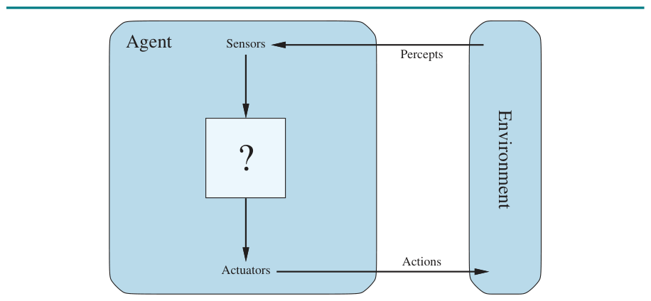
- A percept（感知）is what the sensors deliver at one instant, for example "I am in square A and it is dirty".感知是传感器在某一瞬间给出的内容，例如“我在方格 A，它是脏的”。
- The percept sequence（感知序列）is the complete history of everything perceived so far.感知序列是到目前为止全部感知的完整历史。
- The agent function（智能体函数）maps every percept sequence to an action. It describes the behavior from outside, like a table.智能体函数把每个感知序列映射到一个动作。它从外部描述行为，形式像一张表。
- The agent program（智能体程序）is the code that runs on a machine and produces that behavior. Many different programs can realize the same function.智能体程序是在机器上运行、产生这种行为的代码。许多不同的程序都可以实现同一个函数。
The two-square vacuum world两方格扫地世界
The running example is a robot vacuum cleaner in a world of two squares, A and B, each clean or dirty. A percept is \([\text{location},\text{status}]\), for example [A, Dirty]. The actions are Left, Right, Suck and NoOp (do nothing).本节的贯穿例子是一个扫地机器人，所处世界有两个方格 A 和 B，每个方格要么干净，要么脏。一个感知是 \([\text{location},\text{status}]\)，例如 [A, Dirty]。动作有 Left、Right、Suck 和 NoOp（什么都不做）。

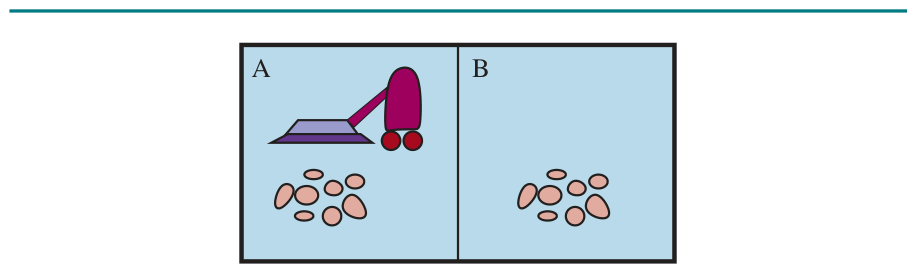
One agent function is: if the current square is dirty, suck; otherwise move to the other square. Part of its table:一个智能体函数是：如果当前方格是脏的，就吸尘；否则移到另一个方格。它的表格的一部分如下：
| Percept sequence感知序列 | Action动作 |
|---|---|
| [A, Clean] | Right |
| [A, Dirty] | Suck |
| [B, Clean] | Left |
| [B, Dirty] | Suck |
| [A, Clean], [A, Clean] | Right |
| [A, Clean], [A, Dirty] | Suck |
| ⋮ | ⋮ |
| [A, Clean], [A, Clean], [A, Clean] | Right |
| [A, Clean], [A, Clean], [A, Dirty] | Suck |
Other agents fill the right-hand column differently. Every row can hold any action, so there are very many agent functions.其他智能体在右边一列的填法不同。每一行都可以填任意动作，所以智能体函数的个数非常多。
Example: 3 rows and 2 actions give \(2^{3}=8\) functions, because each row has 2 choices and the choices multiply.例：3 行、2 个动作，共有 \(2^{3}=8\) 个函数，因为每行有 2 种选择，各行的选择相乘。
Practice练习
Q1. (Explain) Distinguish the agent function from the agent program. Can two different programs implement the same function?Q1.（解释）区分智能体函数与智能体程序。两个不同的程序能否实现同一个函数？
Answer
The agent function is the abstract mapping from percept sequences to actions, an external description of behavior. The agent program is the concrete code that runs on the architecture and computes the action from the current percept. Yes: a lookup-table program and a three-line reflex program (both appear later in this chapter) implement the same vacuum-world function, because a function says nothing about how its actions are computed.智能体函数是从感知序列到动作的抽象映射，是对行为的外部描述。智能体程序则是运行在体系结构上、根据当前感知计算动作的具体代码。能。查表程序与三行的反射程序（二者都在本章后文出现）实现的是同一个吸尘器世界的函数，因为函数本身并不说明其动作是如何计算出来的。
Q2. (Counting) In the two-square vacuum world a percept is [location, status] and the actions are Left, Right and Suck. (a) How many different percepts exist? (b) How many different agent functions exist if only percept sequences of length 1 are considered? (c) How many if NoOp is added?Q2.（计数）在双方格吸尘器世界中，感知为 [位置, 状态]，动作为 Left、Right 和 Suck。(a) 共有多少种不同的感知？(b) 若只考虑长度为 1 的感知序列，共有多少种不同的智能体函数？(c) 若加入 NoOp，又有多少种？
Answer
(a) 2 locations × 2 statuses = 4 percepts. (b) The table has \(m=4\) rows, each filled with one of 3 actions: \(3^{4}=81\) agent functions. (c) With 4 actions: \(4^{4}=256\).(a) 2 个位置 × 2 种状态 = 4 种感知。(b) 表有 \(m=4\) 行，每行可填 3 个动作之一，共 \(3^{4}=81\) 个智能体函数。(c) 有 4 个动作时为 \(4^{4}=256\)。
思路：行数 = 感知数，每行独立选动作，所以是 动作数^行数。
Rationality ★★理性 ★★
Goal. State the definition of a rational agent, explain why rationality is not perfection, and judge whether an agent is rational under a given performance measure.目标。 叙述理性智能体的定义，解释理性为什么不等于完美，并在给定的性能度量下判断一个智能体是否理性。
In words: a rational agent does the action that is expected to score best, given what it has perceived and knows.用文字表述：理性智能体在已感知和已知信息的基础上，做出期望得分最高的动作。
Step 1: the performance measure第 1 步：性能度量
The performance measure（性能度量）scores the sequence of states of the environment. It does not score the agent's own opinion or behavior. The designer or the user sets it.性能度量对环境的状态序列打分，而不对智能体自己的看法或行为打分。它由设计者或用户设定。
Specify what you want in the environment, not how the agent should act. Example: pay a vacuum cleaner for the dirt it sucks up. A rational agent then sucks up dirt, dumps it on the floor and sucks it up again. A better measure gives one point per clean square per time step, minus small penalties for energy and noise.应当说明你想要环境中的什么结果，而不是说明智能体应当怎样行动。例：按扫地机器人吸走的灰尘付钱。这样一来，理性的智能体就会吸起灰尘、再把它倒在地上、再吸起来。更好的度量是每个干净方格每个时间步得一分，再扣掉能耗和噪声的小额惩罚。
Step 2: the definition第 2 步：定义
What is rational at a given time depends on four things: the performance measure, the agent's prior knowledge of the environment, the actions it can perform, and its percept sequence to date.在某一时刻何为理性，取决于四个因素：性能度量、智能体对环境的先验知识、它能够执行的动作，以及至今为止的感知序列。
Definition. For each possible percept sequence, a rational agent（理性智能体）selects an action that is expected to maximize its performance measure, given the evidence provided by the percept sequence and whatever built-in knowledge the agent has.定义。 对于每一种可能的感知序列，理性智能体选择一个期望能使其性能度量最大化的动作，依据是感知序列提供的证据以及智能体拥有的内置知识。
The simple vacuum agent (suck if dirty, otherwise move on) is rational under these assumptions: one point per clean square per step, known geography, clean squares stay clean, and correct sensors. It is irrational in three other cases.简单扫地智能体（脏就吸，否则移走）在以下假设下是理性的：每个干净方格每步得一分，地图已知，干净的方格保持干净，传感器正确。在其他三种情况下它是不理性的。
- Each move costs a point: it keeps moving when everything is clean.每次移动都要付出一分的代价：当所有方格都干净时，它仍然在移动。
- Dirt can reappear: if it stops, it misses new dirt.灰尘可能再次出现：如果它停下来，就会漏掉新的灰尘。
- The map is unknown: it does not explore.地图未知：它不会去探索。
Step 3: rationality is not omniscience第 3 步：理性不等于全知
An omniscient（全知的）agent knows the actual outcome of its actions. No agent can. Rationality maximizes expected performance, whereas perfection maximizes actual performance. Example: a pedestrian who sees no traffic, starts to cross and is hit by a falling cargo door was not irrational. The choice depended only on the percepts so far.全知的智能体知道其动作的实际结果。没有任何智能体能做到这一点。理性是最大化期望性能，而完美是最大化实际性能。例：一个行人看不到车辆经过，于是过马路，却被从上方掉下来的一扇货舱门砸到。他并不是不理性的，因为他的选择只依赖于迄今为止的感知。
Rationality still demands three things.理性仍然要求三件事。
- Information gathering（信息收集）: act to change future percepts, for example look both ways before crossing, or explore an unknown vacuum world.信息收集：采取行动以改变未来的感知，例如过马路前左右张望，或者探索未知的扫地世界。
- Learning（学习）: learn as much as possible from the percepts. Only in a completely known, predictable environment is learning unnecessary.学习：尽可能多地从感知中学习。只有在完全已知、可预测的环境中，学习才是不必要的。
- Autonomy（自主性）: rely on one's own percepts and learning, not only on the designer's prior knowledge. An agent that follows a fixed routine whatever it perceives lacks autonomy.自主性：依靠自己的感知和学习，而不只是依靠设计者的先验知识。一个无论感知到什么都执行固定程序的智能体缺乏自主性。
Practice练习
Q1. (True/false) "A rational agent never makes a mistake and always achieves the best possible outcome." Justify.Q1.（判断）“理性智能体从不犯错，并且总能取得最好的结果。”判断对错并说明理由。
Answer
False. A rational agent maximizes expected performance given its percept sequence and built-in knowledge. Unpredictable events (the falling cargo door) or missing information can still lead to a bad outcome. Always achieving the best outcome would need omniscience, which no agent can have.错。理性智能体在其感知序列和内置知识条件下最大化的是期望性能。不可预测的事件（坠落的货舱门）或信息缺失仍可能导致糟糕的结果。要始终取得最好的结果，就需要全知，而任何智能体都不可能具有全知。
Q2. (Design) A vacuum robot earns one point for every unit of dirt it sucks up. What will a rational agent do, and what measure is better?Q2.（设计）吸尘机器人每吸起一单位污物得 1 分。理性智能体会怎么做？哪种度量更好？
Answer
A rational agent maximizes the measure as written, so it sucks up dirt, dumps it back on the floor and sucks it up again: points grow without the floor ever staying clean. A better measure rewards the state of the environment, for example one point per clean square per time step, with penalties for electricity and noise.理性智能体会按所写的度量来最大化得分，因此它会吸起污物、把它倒回地上，再吸起来：得分不断增长，而地板却始终不干净。更好的度量是奖励环境的状态，例如每个时间步每个干净方格得 1 分，并对用电和噪声进行罚分。
思路：奖励“想要的环境状态”，不要奖励“你以为智能体该做的动作”。
Task Environments and PEAS ★★★任务环境与 PEAS ★★★
Goal. Write a PEAS description of any task, and classify its environment on six dimensions with a one-phrase reason for each. State what the classification means for the design.目标。 为任何任务写出 PEAS 描述，并在六个维度上对其环境分类，每个维度给出一句话的理由。说明这种分类对设计意味着什么。
Step 1: describe the task with PEAS第 1 步：用 PEAS 描述任务
In words: PEAS = write down what counts as success, where the agent works, what it can do and what it can sense.用文字表述：PEAS = 写下什么算成功、智能体在哪里工作、它能做什么、它能感知什么
A task environment（任务环境）is the problem to which a rational agent is the solution. Specifying it is the first step of every design. The PEAS（Performance measure, Environment, Actuators, Sensors）description has four parts: the performance measure, the environment, the actuators and the sensors.任务环境是理性智能体所要解决的问题。明确任务环境是每项设计的第一步。PEAS 描述包括四部分：性能度量、环境、执行器和传感器。
| Agent智能体 | Performance measure性能度量 | Environment环境 | Actuators执行器 | Sensors传感器 |
|---|---|---|---|---|
| Vacuum cleaner吸尘器 | Clean squares per time step, minus energy and noise每个时间步的干净方格数，减去能耗和噪声 | Squares A and B, dirt方格 A 和 B，污物 | Left, Right, SuckLeft、Right、Suck | Location sensor, dirt sensor位置传感器、污物传感器 |
| Automated taxi自动驾驶出租车 | Safe, fast, legal, comfortable trip; profit; minimal impact on other road users安全、快速、合法、舒适的行程；利润；对其他道路使用者的影响最小 | Roads, other traffic, police, pedestrians, customers, weather道路、其他车辆、警察、行人、乘客、天气 | Steering, accelerator, brake, signal, horn, display, speech方向盘、油门、刹车、转向灯、喇叭、显示屏、语音 | Cameras, radar/lidar, speedometer, GPS, engine sensors, accelerometer, microphones, touchscreen摄像头、雷达/激光雷达、速度计、GPS、发动机传感器、加速度计、麦克风、触摸屏 |
| Medical diagnosis system医疗诊断系统 | Healthy patient, reduced costs患者健康，降低成本 | Patient, hospital, staff患者、医院、工作人员 | Display of questions, tests, diagnoses, treatments显示问题、检查、诊断和治疗方案 | Touchscreen/voice entry of symptoms and findings通过触摸屏或语音录入症状和检查结果 |
| Satellite image analysis system卫星图像分析系统 | Correct categorization of objects and terrain正确划分物体与地形的类别 | Orbiting satellite, downlink, weather轨道卫星、下行链路、天气 | Display of scene categorization场景类别的显示 | High-resolution digital camera高分辨率数码相机 |
The taxi's measure has conflicting goals (speed, safety, cost, comfort), so trade-offs are needed. A restricted environment (one region, no snow) makes the design easier.出租车的度量包含相互冲突的目标（速度、安全、成本、舒适），因此需要权衡。受限的环境（一个区域，没有雪）会让设计更容易。
Step 2: the six dimensions第 2 步：六个维度
In words: each dimension is one yes-or-no question about the task, and the answer tells which agent design is needed.用文字表述：每个维度都是关于任务的一个是非题，答案告诉我们需要哪种智能体设计
| Dimension维度 | Question, with the terms of the answer问题，以及答案的术语 | Everyday case日常例子 |
|---|---|---|
| Fully observable（完全可观察）vs partially observable（部分可观察） | Do the sensors show the whole relevant state? Noisy sensors or missing state make it partial. With no sensors it is unobservable（不可观察）传感器能否显示全部相关状态？噪声传感器或缺失的状态会使其变为部分可观测。没有传感器时则是不可观察的。 | Chess: fully. Taxi that cannot see other drivers' intentions: partially国际象棋：完全可观测。看不到其他司机意图的出租车：部分可观测。 |
| Single-agent（单智能体）vs multiagent（多智能体） | Does another entity act to maximize its own score, which depends on my behavior? If not, it is part of the physics是否存在另一个实体在最大化自己的得分，而该得分取决于我的行为？如果没有，它就属于物理规律的一部分。 | Crossword: single. Chess: two agents填字游戏：单智能体。国际象棋：两个智能体 |
| Deterministic（确定性的）vs nondeterministic（非确定性的） | Is the next state fully fixed by the current state and my action? A model that gives probabilities is stochastic（随机的）下一个状态是否完全由当前状态和我的动作决定？给出概率的模型是随机的。 | Chess: deterministic. Backgammon (dice), taxi (traffic): stochastic国际象棋：确定性。西洋双陆棋（骰子）、出租车（交通）：随机性。 |
| Episodic（单步式）vs sequential（序贯式） | Is each decision independent of earlier ones, or can it affect all later ones?每个决策是否独立于之前的决策，还是会影响之后的所有决策？ | Spotting defective parts on a belt: episodic. Chess, taxi: sequential在传送带上检出次品：片段式。国际象棋、出租车：序贯式。 |
| Static（静态）vs dynamic（动态）vs semidynamic（半动态） | Does the world change while the agent thinks? Semidynamic: the world waits but the score falls with time智能体思考时世界是否会变化？半动态：世界会等待，但得分随时间下降。 | Crossword: static. Chess with a clock: semidynamic. Taxi: dynamic填字游戏：静态。计时的国际象棋：半动态。出租车：动态 |
| Discrete（离散）vs continuous（连续） | Are states, time, percepts and actions finitely many separate values, or a range?状态、时间、感知和动作是有限个离散的值，还是一个范围内的值？ | Chess: discrete. Taxi: continuous (steering angle)国际象棋：离散。出租车：连续（方向盘转角）。 |
A seventh question is known（已知）versus unknown（未知）: does the agent know the rules, that is, the outcome of each action? If not, it must learn them. It is a property of the agent's knowledge, not of the environment alone. Solitaire is known but partially observable (hidden cards). A new video game is unknown but fully observable.第七个问题是已知还是未知：智能体是否知道规则，即每个动作的结果？如果不知道，它就必须学习这些规则。这是智能体知识的属性，而不只是环境的属性。纸牌接龙是已知的，但是部分可观测（牌是扣着的）。一个新的电子游戏是未知的，但是完全可观测。
Typical classifications:典型分类：
| Task environment任务环境 | Observable可观测 | Agents智能体 | Deterministic确定性 | Episodic片段式 | Static静态 | Discrete离散 |
|---|---|---|---|---|---|---|
| Crossword puzzle填字游戏 | Fully完全 | Single单智能体 | Deterministic确定性 | Sequential序贯式 | Static静态 | Discrete离散 |
| Chess with a clock计时的国际象棋 | Fully完全 | Multi多智能体 | Deterministic确定性 | Sequential序贯式 | Semi半动态 | Discrete离散 |
| Poker扑克 | Partially部分 | Multi多智能体 | Stochastic随机 | Sequential序贯式 | Static静态 | Discrete离散 |
| Backgammon西洋双陆棋 | Fully完全 | Multi多智能体 | Stochastic随机 | Sequential序贯式 | Static静态 | Discrete离散 |
| Taxi driving出租车驾驶 | Partially部分 | Multi多智能体 | Stochastic随机 | Sequential序贯式 | Dynamic动态 | Continuous连续 |
The hardest case is partially observable, multiagent, nondeterministic, sequential, dynamic, continuous and unknown. Taxi driving is hard on every dimension except that its rules are mostly known.最难的情况是部分可观测、多智能体、非确定性、序贯式、动态、连续且未知。出租车驾驶在每个维度上都很难，只是它的规则大多是已知的。
Step 3: what the classification means for the design第 3 步：分类对设计意味着什么
- Partially observable: the agent needs an internal state (Section 1.5).部分可观测：智能体需要内部状态（见第 1.5 节）。
- Sequential: the agent must look ahead, because a decision affects later ones.序贯式：智能体必须向前看，因为一个决策会影响之后的决策。
- Stochastic: the agent must reason with probabilities and expected values.随机性：智能体必须用概率和期望值进行推理。
- Multiagent and competitive: it needs game-playing methods (Chapter 5).多智能体且有竞争：需要博弈方法（见第 5 章）。
- Dynamic: decisions must arrive in time.动态：决策必须及时给出。
- Unknown: the agent must learn.未知：智能体必须学习。
Classification depends on how the task is framed. Medical diagnosis is episodic if the task is to choose one diagnosis from a list of symptoms. It is sequential if it includes tests, treatment and monitoring. State your assumption.分类取决于任务如何表述。如果任务只是从一组症状中选出一个诊断，那么医学诊断是片段式的；如果它还包括检查、治疗和监测，那么它是序贯式的。要说明你所做的假设。
Practice练习
Q1. (PEAS) Give a PEAS description of a software agent that buys used AI textbooks on the Internet, and say which environment properties make it hard.Q1.（PEAS）给出一个在互联网上购买二手 AI 教材的软件智能体的 PEAS 描述，并指出哪些环境性质使其困难。
Answer
- Performance measure: wish-list books bought, low total cost (price plus shipping), good condition, on-time delivery, budget respected.性能度量：购入心愿单中的书籍，总成本（价格加运费）低，书况良好，按时送达，并遵守预算。
- Environment: online shops and auction sites, seller listings and ratings, other buyers, payment system, delivery services.环境：网上商店和拍卖网站、卖家的商品列表和信誉评价、其他买家、支付系统、配送服务。
- Actuators: search queries, clicks, bids and orders, messages to sellers, payments.执行器：搜索查询、点击、出价和下单、给卖家发送消息、付款。
- Sensors: web pages (text and images), prices, seller ratings, order confirmations, e-mails.传感器：网页（文字和图像）、价格、卖家信誉、订单确认、电子邮件。
Hard properties: partially observable (the true condition is unknown, other bids are hidden), multiagent and competitive (other bidders), stochastic (seller reliability, delivery), sequential (money spent now limits later purchases) and dynamic (prices and stock change while the agent deliberates).困难的性质：部分可观测（真实状况未知，其他人的出价被隐藏）、多智能体且竞争（其他竞买者）、随机（卖家可靠性、配送）、序贯式（现在花掉的钱会限制以后的购买）以及动态（智能体思考时价格和库存也在变化）。
Q2. (Classification) Classify (a) a Sudoku solver and (b) a robot that inspects bolts on a conveyor belt and rejects defective ones, on the seven dimensions with a short reason.Q2.（分类）对 (a) 数独求解器和 (b) 在传送带上检查螺栓并剔除次品的机器人，按七个维度进行分类，并给出简短理由。
Answer
| Dimension维度 | (a) Sudoku solver（a）数独求解器 | (b) Bolt inspector（b）螺栓检查器 |
|---|---|---|
| Observable可观测 | Fully: the whole grid is visible完全：整个方格盘都可见 | Partially: the camera sees only one side; sensor noise部分：摄像头只能看到一面；传感器有噪声 |
| Agents智能体 | Single单智能体 | Single单智能体 |
| Deterministic确定性 | Deterministic: a move has a fixed effect确定性：一次移动的效果是固定的 | Stochastic: noise and random defects随机：有噪声，并存在随机缺陷 |
| Episodic片段式 | Sequential: each entry constrains later ones序贯式：每次填数都会约束后续的填数 | Episodic: each bolt is judged independently片段式：每个螺栓都独立判定 |
| Static静态 | Static: the grid waits静态：方格盘等待填写 | Dynamic: the belt keeps moving动态：传送带持续运动 |
| Discrete离散 | Discrete离散 | Continuous: images, positions连续：图像、位置 |
| Known已知 | Known: the rules are given已知：规则已给出 | Known if the defect criteria are given若给出缺陷判定标准，则为已知 |
思路：每一维给一句理由；框架有歧义时写明假设。
Q3. (True/false) Justify each. (a) A fully observable environment is deterministic. (b) A known environment is fully observable. (c) Chess played with a clock is static.Q3.（判断）对每一项作出判断并说明理由。(a) 完全可观测的环境是确定性的。(b) 已知的环境是完全可观测的。(c) 计时的国际象棋是静态的。
Answer
(a) False. Backgammon is fully observable but stochastic because of the dice. (b) False. Solitaire has known rules, but the face-down cards are hidden. (c) False. The board does not change while the agent thinks, but the clock reduces the score, so the environment is semidynamic.(a) 错。西洋双陆棋是完全可观测的，但由于骰子的存在而是随机的。(b) 错。单人纸牌的规则是已知的，但牌面朝下的牌是隐藏的。(c) 错。棋盘在智能体思考时不变，但计时会降低得分，因此该环境是半动态的。
Agent Programs and the Table-Driven Design ★★智能体程序与查表式设计 ★★
Goal. Explain why a table-driven agent cannot be built, compute the number of its table rows, and say how a short program avoids the problem.目标。 解释为什么查表型智能体无法构建，计算其表格的行数，并说明一个短程序如何避开这个问题。
In words: the agent program is the code that turns the current percept into an action, and it runs on a body with sensors and actuators. This body is the agent architecture（体系结构）.用文字表述：智能体程序是把当前感知转换为动作的代码，它运行在具有传感器和执行器的机体上。这个机体就是智能体体系结构。
agent = architecture + program智能体 = 体系结构 + 程序
The program must suit the architecture. A program that returns Walk needs a body with legs. Every program here gets only the current percept as input. If the action must depend on history, the program has to store the history itself.程序必须与体系结构相匹配。一个返回 Walk 的程序需要一个有腿的机体。这里每个程序的输入都只有当前感知。如果动作必须依赖历史，程序就必须自己存储历史。
The table-driven agent查表型智能体
The most direct program stores the whole agent function as a table. It appends each percept to the history and looks up the row for the whole history.最直接的程序是把整个智能体函数存成一张表。它把每个感知加到历史的末尾，然后查找整个历史对应的那一行。
function TABLE-DRIVEN-AGENT(percept) returns an action
persistent: percepts, a sequence, initially empty
table, a table of actions indexed by percept sequences, initially fully specified
append percept to the end of percepts
action ← LOOKUP(percepts, table)
return action
If the table is filled correctly, the program implements the wanted function. Its size makes it impossible.如果表格填写正确，程序就能实现所需的函数。但它的大小使这种做法不可能实现。
The table-driven design fails for three reasons.查表型设计因三个原因而失败。
- No physical agent has the space to store the table.没有任何物理智能体有空间存放这张表。
- The designer has no time to write it.设计者没有时间把它写出来。
- No agent can learn all the right entries from experience.没有任何智能体能从经验中学会所有正确的表项。
A small program can do the same job:一个小程序可以完成同样的工作：
function REFLEX-VACUUM-AGENT([location, status]) returns an action
if status = Dirty then return Suck
else if location = A then return Right
else if location = B then return Left
This three-line program implements the same agent function as the infinite table. It ignores the history, so the relevant inputs fall from \(4^{T}\) sequences to 4 single percepts.这个三行的程序实现了与无限大表格相同的智能体函数。它忽略历史，因此相关的输入从 \(4^{T}\) 个序列减少为 4 个单独的感知。
Practice练习
Q1. (Calculation) (a) A table-driven vacuum agent has 4 possible percepts. How many rows does its table need for \(T=3\) and \(T=10\), and about how many for \(T=1000\)? (b) A drone camera delivers \(640\times480\) pixels with 8 bits each at 10 frames per second. How many bits arrive per minute, and about how many different one-minute percept sequences exist?Q1.（计算）(a) 一个查表式吸尘智能体有 4 种可能的感知。对于 \(T=3\) 和 \(T=10\)，其表需要多少行？对于 \(T=1000\)，大约需要多少行？(b) 一台无人机摄像头以每秒 10 帧的速率输出画面，每帧 \(640\times480\) 个像素，每个像素 8 位。每分钟到达多少位？不同的一分钟感知序列大约有多少种？
Answer
(a) \(N(3)=4(4^{3}-1)/3=84\) (check: \(4+16+64\)). \(N(10)=4(4^{10}-1)/3=1{,}398{,}100\). \(N(1000)\approx\frac{4}{3}\cdot4^{1000}\approx1.5\times10^{602}\), far above the \(10^{80}\) atoms of the observable universe.(a) \(N(3)=4(4^{3}-1)/3=84\)（验算：\(4+16+64\)）。\(N(10)=4(4^{10}-1)/3=1{,}398{,}100\)。\(N(1000)\approx\frac{4}{3}\cdot4^{1000}\approx1.5\times10^{602}\)，远超可观测宇宙中的 \(10^{80}\) 个原子。
(b) \(640\cdot480\cdot8=2{,}457{,}600\) bits per frame; at 10 frames/s that is \(24{,}576{,}000\) bit/s (about 3 MB/s); per minute \(1.47\times10^{9}\) bits (about 184 MB). The number of distinct sequences is \(2^{1.47\times10^{9}}\approx10^{4.4\times10^{8}}\), which no table can hold.(b) 每帧 \(640\cdot480\cdot8=2{,}457{,}600\) 位；以每秒 10 帧计，即 \(24{,}576{,}000\) 位/秒（约 3 MB/s）；每分钟 \(1.47\times10^{9}\) 位（约 184 MB）。不同的序列数为 \(2^{1.47\times10^{9}}\approx10^{4.4\times10^{8}}\)，任何表都无法容纳。
Q2. (Explain) The agent function may depend on the whole percept sequence, yet every agent program takes only the current percept as input. How can the program still implement such a function?Q2.（解释）智能体函数可以依赖整个感知序列，但每个智能体程序都只把当前感知作为输入。那么程序如何仍然能实现这样的函数？
Answer
The environment gives the program nothing but the current percept. To act on history the program must store the history itself (TABLE-DRIVEN-AGENT appends every percept to percepts) or store a summary of it, an internal state (see model-based reflex agents). A program without memory can implement only functions that depend on the current percept.环境只向程序提供当前感知。要让程序依据历史行动，它就必须自己存储历史（TABLE-DRIVEN-AGENT 把每个感知都追加到 percepts 中），或者存储对历史的摘要，即内部状态（见基于模型的反射型智能体）。不具记忆的程序只能实现依赖于当前感知的函数。
The Four Basic Agent Designs ★★★四种基本智能体设计 ★★★
Goal. Name the four agent designs, say what each adds to the previous one and when it fails, choose the simplest adequate design for a task, and compute an expected-utility choice.目标。 说出四种智能体设计，说明每种设计比前一种增加了什么以及它在什么时候失效，为任务选择最简单且足够用的设计，并计算一个期望效用的选择。
In words: each design adds one ingredient to the one before it: first an internal state, then goals, then utility. Any design can also be made a learning agent (Section 1.6).用文字表述：每种设计都在前一种的基础上增加一个要素：先是内部状态，然后是目标，最后是效用。任何一种设计也都可以做成学习型智能体（见第 1.6 节）。
Step 1: simple reflex agent第 1 步：简单反射型智能体
In words: a simple reflex agent = look at the current percept and apply an if–then rule.用文字表述：简单反射型智能体 = 看当前的感知，然后应用一条“如果……就……”的规则
A simple reflex agent（简单反射智能体）chooses an action from the current percept alone and ignores the history. It uses condition–action rules（条件—动作规则）. The reflex vacuum agent of Section 1.4 is one.简单反射型智能体只根据当前感知选择动作，忽略历史。它使用条件—动作规则。第 1.4 节的反射式扫地智能体就是这样一个例子。

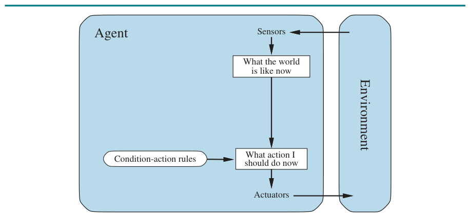
function SIMPLE-REFLEX-AGENT(percept) returns an action
persistent: rules, a set of condition–action rules
state ← INTERPRET-INPUT(percept)
rule ← RULE-MATCH(state, rules)
action ← rule.ACTION
return action
INTERPRET-INPUT turns the percept into a description of the current state. RULE-MATCH returns the first rule whose condition matches.INTERPRET-INPUT 把感知转换为对当前状态的描述。RULE-MATCH 返回第一条条件匹配的规则。
Limitation. It works only if the right decision can be made from the current percept, that is, only if the environment is fully observable. Two cases:局限性。 只有当能够根据当前感知做出正确决策时它才有效，也就是说，只有当环境是完全可观测时。有两种情况：
- A single video frame may not show whether the car ahead is braking or only has its tail lights on. The agent brakes needlessly or never.单个视频画面可能无法显示前车是在刹车，还是只是尾灯亮着。智能体可能会不必要地刹车，或者永远不刹车。
- A vacuum agent without a location sensor sees only [Dirty] or [Clean]. On [Clean] the action Left fails forever if it starts in A, and Right fails forever if it starts in B. It loops.一个没有位置传感器的扫地智能体只能看到 [Dirty] 或 [Clean]。在 [Clean] 时，如果它从 A 开始，动作 Left 会永远失败；如果从 B 开始，动作 Right 会永远失败。它会陷入循环。
Randomization. On [Clean] the agent flips a coin to choose Left or Right. A randomized simple reflex agent can then beat a deterministic one in this case.随机化。 在 [Clean] 时，智能体抛硬币来选择 Left 或 Right。在这种情况下，随机化的简单反射型智能体可以胜过确定性的智能体。
In a single-agent environment randomization is usually not rational, because a better deterministic agent exists. In some competitive multiagent environments it is rational (rock–paper–scissors).在单智能体环境中，随机化通常是不理性的，因为存在更好的确定性智能体。在某些竞争性的多智能体环境中，随机化是理性的（例如石头剪刀布）。
Step 2: model-based reflex agent第 2 步：基于模型的反射型智能体
In words: a model-based reflex agent = a simple reflex agent that also keeps an internal state, so it can handle what it cannot see now.用文字表述：基于模型的反射型智能体 = 一个简单反射型智能体，同时保存内部状态，因此能够处理它当前看不到的东西
The agent keeps an internal state（内部状态）that depends on the percept history. To update it, it needs two kinds of knowledge.智能体保存一个内部状态，它取决于感知历史。要更新它，需要两类知识。
- The transition model（转移模型）says how the world changes, through the agent's actions and by itself. Example: turning the wheel right turns the car right; rain wets the camera.转移模型说明世界如何变化，既包括智能体动作带来的变化，也包括世界自身的变化。例：向右转动方向盘，汽车就右转；雨水会弄湿摄像头。
- The sensor model（传感器模型）says how the state of the world shows up in the percepts. Example: a braking car produces red regions in the image.传感器模型说明世界的状态如何体现在感知中。例：正在刹车的汽车会在图像中产生红色区域。
An agent that tracks the world with these two models is a model-based agent（基于模型的智能体）.用这两种模型跟踪世界的智能体，就是基于模型的智能体。

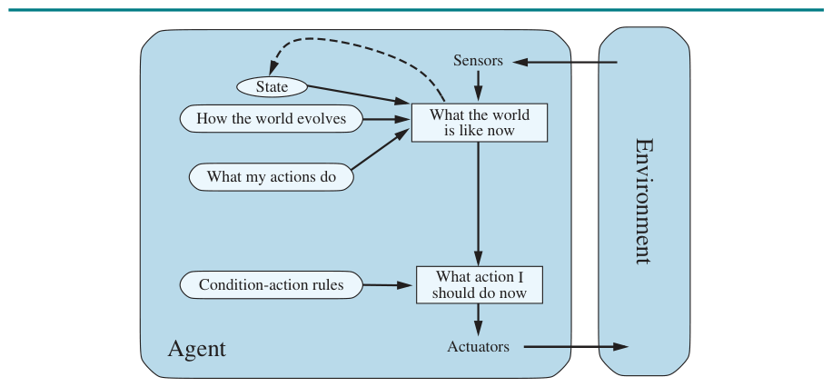
function MODEL-BASED-REFLEX-AGENT(percept) returns an action
persistent: state, the agent's current conception of the world state
transition model, how the next state depends on the current state and action
sensor model, how the current world state is reflected in the agent's percepts
rules, a set of condition–action rules
action, the most recent action, initially none
state ← UPDATE-STATE(state, action, percept, transition model, sensor model)
rule ← RULE-MATCH(state, rules)
action ← rule.ACTION
return action
The state is the agent's best guess of what the world is like now. A taxi stuck behind a large truck cannot see why it stopped and can only guess. It still has to decide.状态是智能体对当前世界的最佳猜测。一辆停在大卡车后面的出租车看不到它为什么停下，只能猜测。但它仍然必须做决定。
Step 3: goal-based agent第 3 步：基于目标的智能体
In words: a goal-based agent = a model-based agent that also knows where it wants to go and looks ahead to get there.用文字表述：基于目标的智能体 = 一个基于模型的智能体，同时知道想去哪里，并向前看以便到达那里
Knowing the state is not enough. At a junction the taxi can turn left, turn right or go straight, and the right choice depends on the destination. A goal-based agent（基于目标的智能体）holds goal（目标）information describing desirable situations. It uses the model to predict what each action leads to and picks actions that achieve the goal. Long action sequences are found by search (Chapters 2–5).只知道状态是不够的。在路口，出租车可以左转、右转或直行，正确的选择取决于目的地。基于目标的智能体保存描述理想情形的目标信息。它用模型预测每个动作会导致什么，并挑选能够达到目标的动作。较长的动作序列要靠搜索来找到（第 2 至 5 章）。

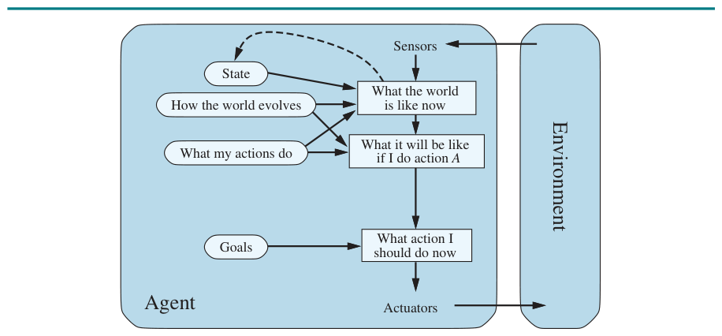
A reflex agent brakes when it sees brake lights and does not know why. A goal-based agent brakes because it predicts that braking is the only action that avoids hitting the car ahead. A new destination only changes its goal, whereas a reflex agent needs all its rules rewritten.反射型智能体看到刹车灯就刹车，但它不知道为什么。基于目标的智能体刹车，是因为它预测刹车是唯一能避免撞上前车的动作。新的目的地只会改变它的目标，而反射型智能体则需要把所有规则重写一遍。
Step 4: utility-based agent第 4 步：基于效用的智能体
In words: a utility-based agent = a goal-based agent that scores every outcome by a number and chooses the best average score.用文字表述：基于效用的智能体 = 一个基于目标的智能体，它用一个数给每个结果打分，并选择平均得分最高的动作
A goal gives only success or failure. Many routes reach the destination, and some are quicker, safer or cheaper. A utility function（效用函数）assigns a number to each state. It is the agent's internal version of the performance measure. It helps in two cases: when goals conflict (speed against safety), and when no goal is certain to be reached. Outcomes are uncertain, so the agent maximizes the expected utility（期望效用）.目标只给出成功或失败。许多路线都能到达目的地，有些更快、更安全或更便宜。效用函数为每个状态分配一个数，它是智能体内部版本的性能度量。它在两种情况下有用：目标相互冲突时（速度与安全），以及没有哪个目标能确定达到时。结果带有不确定性，因此智能体要最大化期望效用。

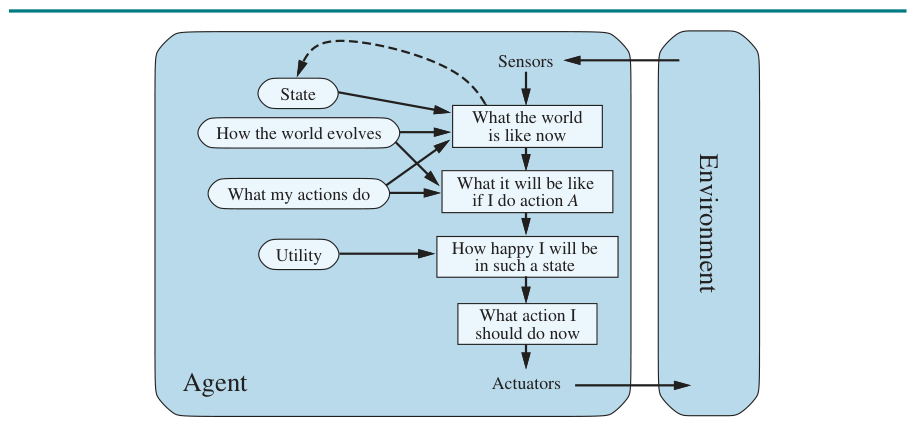
A model-free agent（无模型智能体）learns which action is best in a situation without learning how actions change the environment. So not every utility-based agent is model-based.无模型智能体学习在某种情况下哪个动作最好，而不学习动作如何改变环境。所以并非每个基于效用的智能体都是基于模型的。
The four designs compared四种设计的比较
| Design设计 | Decides using决策依据 | Handles能够处理 | Limitation局限 | Taxi example出租车示例 |
|---|---|---|---|---|
| Simple reflex简单反射型 | Current percept and condition–action rules当前感知与条件—动作规则 | Fully observable tasks with simple rules规则简单的完全可观测任务 | Fails when the percept does not reveal the state; loops感知无法揭示状态时失效；陷入循环 | Brake when the brake lights come on刹车灯亮起时刹车 |
| Model-based reflex基于模型的反射型 | Percept, internal state (transition and sensor models), rules感知、内部状态（转移模型和传感器模型）、规则 | Partial observability部分可观测性 | No goals; rules are fixed没有目标；规则固定 | Track cars outside view when changing lanes变道时跟踪视野之外的车辆 |
| Goal-based基于目标的 | State, model and goals; looks ahead (search, planning)状态、模型与目标；向前看（搜索、规划） | Choosing action sequences; goal can be changed easily选择动作序列；目标易于更改 | Binary notion of success; cannot rank solutions成功的二元概念；无法对解进行排序 | Turn left because the destination is on the left因目的地在左侧而左转 |
| Utility-based基于效用的 | State, model and utility function; maximizes expected utility状态、模型与效用函数；使期望效用最大化 | Conflicting goals, uncertain outcomes目标相互冲突，结果不确定 | Needs a correct utility function and heavy computation需要正确的效用函数和大量计算 | Trade off speed, safety and cost权衡速度、安全与成本 |
Practice练习
Q1. (Design) Design a vacuum agent that does nothing once it knows both squares are clean, assuming Suck always works and clean squares stay clean. Which agent type is it, and how much memory does it need?Q1.（设计）设计一个吸尘智能体，在它知道两个方格都是干净的之后什么都不做，并假设 Suck 总是有效、干净的方格保持干净。这是哪一类智能体？它需要多少记忆？
Answer
function STOP-WHEN-CLEAN-AGENT([location, status]) returns an action
persistent: known_clean[A], known_clean[B], initially false
known_clean[location] ← true // clean now, or about to be cleaned
if status = Dirty then return Suck
else if known_clean[A] and known_clean[B] then return NoOp
else if location = A then return Right
else return Left
Trace from A with both squares dirty: Suck, Right, Suck, NoOp, … It is a model-based reflex agent: the internal state is two bits, a compact summary of the percept history rather than the history itself. Its transition model is "Suck cleans the square; clean squares stay clean". If dirt can reappear, the flags must expire so that the agent re-checks from time to time.从 A 出发、两个方格都是脏的时，轨迹为：Suck、Right、Suck、NoOp，……它是基于模型的反射型智能体：其内部状态是两位比特，是对感知历史的紧凑摘要，而不是历史本身。它的转移模型是“Suck 清扫方格；干净的方格保持干净”。若污物可能再次出现，则这些标志必须过期，以便智能体不时地重新检查。
Q2. (Identify) Name the simplest adequate agent design and justify it: (a) an automatic door that opens when a motion sensor fires; (b) a poker program that tracks which cards have already been played; (c) a route planner that finds a path to a given address; (d) a car choosing between a fast but risky and a slower but safer maneuver.Q2.（识别）指出最简单且足够的智能体设计，并说明理由：(a) 一扇由运动传感器触发而打开的自动门；(b) 一个跟踪哪些牌已经打出的扑克程序；(c) 一个寻找通往给定地址路径的路线规划器；(d) 在一个快速但有风险的机动与一个较慢但更安全的机动之间进行选择的汽车。
Answer
(a) Simple reflex: the current percept decides, and the relevant aspect is observable. (b) Model-based reflex: poker is partially observable, so an internal state tracks hidden information. (c) Goal-based: it must look ahead over action sequences, and changing the address only changes the goal. (d) Utility-based: the goals conflict and the outcomes are uncertain, so it must weigh speed against safety by expected utility.(a) 简单反射型：当前感知即可决定，且相关方面是可观测的。(b) 基于模型的反射型：扑克是部分可观测的，因此需要内部状态来跟踪隐藏的信息。(c) 基于目标的：它必须向前看、搜索动作序列，而且更换地址只需改变目标。(d) 基于效用的：目标相互冲突，结果不确定，因此它必须按期望效用权衡速度与安全。
Q3. (Beyond the pages: randomization) A vacuum agent without a location sensor answers [Clean] with Right with probability \(q\) and with Left with probability \(1-q\) (in both squares). Find the expected number of steps to reach the other square from A and from B. For \(q=0.8\) and for \(q=0.5\), what are the average over a 50/50 start and the worst case?Q3.（课本之外：随机化）一个没有位置传感器的吸尘智能体在感知到 [Clean] 时，以概率 \(q\) 选择 Right，以概率 \(1-q\) 选择 Left（两个方格中都是如此）。求从 A 和从 B 到达另一个方格的期望步数。对于 \(q=0.8\) 与 \(q=0.5\) 这两种情形，求 50/50 起点下的平均步数和最坏情形的步数。
Answer
From A the agent succeeds when it chooses Right (probability \(q\)), so \(E=1/q\). From B it succeeds when it chooses Left (probability \(1-q\)), so \(E=1/(1-q)\). For \(q=0.8\): \(1.25\) from A and \(5\) from B, average \(3.125\), worst case \(5\). For \(q=0.5\): \(2\) from both squares, average and worst case \(2\). The fair coin minimizes both the worst case and the average: \(\max\left(\frac{1}{q},\frac{1}{1-q}\right)\) and \(\frac{1}{2}\left(\frac{1}{q}+\frac{1}{1-q}\right)\) are smallest at \(q=1/2\). A biased coin favors one start square and hurts the other.从 A 出发，只有选择 Right 时智能体才能成功（概率为 \(q\)），因此期望步数为 \(E=1/q\)。从 B 出发，只有选择 Left 时才能成功（概率为 \(1-q\)），因此期望步数为 \(E=1/(1-q)\)。对于 \(q=0.8\)：从 A 出发为 \(1.25\)，从 B 出发为 \(5\)，平均为 \(3.125\)，最坏情形为 \(5\)。对于 \(q=0.5\)：从两个方格出发均为 \(2\)，平均与最坏情形均为 \(2\)。公平硬币使平均值和最坏情形都最小：\(\max\left(\frac{1}{q},\frac{1}{1-q}\right)\) 与 \(\frac{1}{2}\left(\frac{1}{q}+\frac{1}{1-q}\right)\) 在 \(q=1/2\) 处最小。有偏的硬币会偏袒一个起始方格，而损害另一个。
Learning Agents and Representations ★★学习型智能体与表示 ★★
Goal. Name the four components of a learning agent and say what each does for a concrete agent, and tell atomic, factored and structured representations apart.目标。 说出学习型智能体的四个组成部分，说明每个部分对于一个具体智能体做什么，并区分原子表示、因子化表示和结构化表示。
In words: a learning agent improves its own parts from feedback instead of keeping its initial design for ever.用文字表述：学习型智能体根据反馈改进自己的各个部分，而不是永远保持最初的设计
Any of the four designs can be built as a learning agent（学习型智能体）. Learning lets the agent work in an initially unknown environment and become better than its initial knowledge allows. It has four components.四种设计中的任何一种都可以构建成学习型智能体。学习使智能体能够在最初未知的环境中工作，并变得比其初始知识所允许的更好。它有四个组成部分。

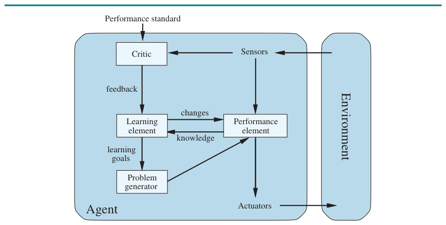
| Component组成部分 | Role作用 | Taxi example出租车示例 |
|---|---|---|
| Performance element（性能元件） | Selects the external actions; it is what the earlier designs called the whole agent program选择外部动作；它就是前面各种设计所称的整个智能体程序 | The driving program that steers and brakes负责转向和刹车的驾驶程序 |
| Critic（评判器） | Tells the learning element how well the agent is doing with respect to a fixed performance standard依据固定的性能标准，告知学习元件智能体做得如何 | Lost tips and complaints from shaken passengers, judged against a standard that penalizes harsh maneuvers依据惩罚剧烈操纵的标准，评判流失的小费与乘客因颠簸而提出的投诉 |
| Learning element（学习元件） | Uses the critic's feedback to decide how the performance element should be modified利用评价器的反馈，决定应如何修改性能元件 | Learns that violent braking lowers utility and changes the braking behavior学到猛烈刹车会降低效用，并改变刹车行为 |
| Problem generator（问题生成器） | Suggests exploratory actions that lead to new, informative experiences提出探索性动作，以获得新的、有信息量的经验 | Tries the brakes on different road surfaces在不同的路面上试验刹车 |
- The critic is needed because percepts do not say whether the agent succeeds.需要评论家，是因为感知本身并不说明智能体是否成功。
- The performance standard is fixed and lies outside the agent, so the agent cannot change it.性能标准是固定的，并且位于智能体之外，所以智能体无法改变它。
- Without a problem generator the agent keeps repeating the best action it knows.没有问题生成器，智能体就会一直重复它所知道的最佳动作。
- The learning element can change any component: the model, the rules and the utility function. Improving the model needs no outside standard. Learning a rule or a utility function needs the standard, which marks part of the percept as a reward（奖励）or penalty（惩罚）.学习元件可以改变任何组成部分：模型、规则和效用函数。改进模型不需要外部标准。学习规则或效用函数则需要标准，标准会把感知的一部分标记为奖励或惩罚。
Representing states状态的表示
In words: a state can be a black box, a list of attribute values, or a set of objects with relations. Each is more expressive than the one before. A more expressive language says more, or the same in less space, but reasoning and learning get harder.用文字表述：一个状态可以是一个黑箱，可以是属性值的列表，也可以是一组带有关系的对象。每一种都比前一种更有表达力。表达能力更强的语言能说的更多，或者用更少的空间说同样的内容，但推理和学习也会变得更难。

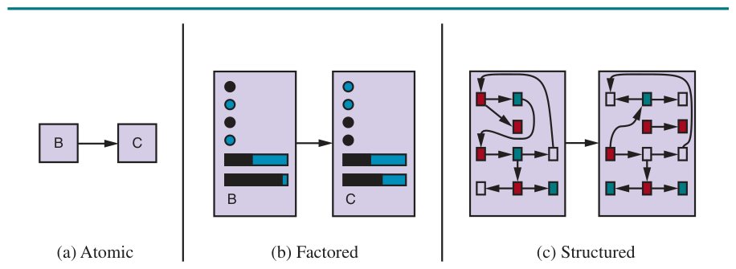
| Representation表示 | A state is状态是 | Route-finding example路径查找示例 | Used by应用于 |
|---|---|---|---|
| Atomic（原子） | An indivisible black box with no internal structure; it can only be the same as or different from another state不可分割的黑箱，没有内部结构；它只能与另一个状态相同或不同 | The name of the city we are in我们所在城市的名称 | Search and game playing (Chapters 2–5), hidden Markov models, Markov decision processes搜索与博弈（第 2–5 章）、隐马尔可夫模型、马尔可夫决策过程 |
| Factored（因子化） | A fixed set of variables (attributes), each with a value一组固定的变量（属性），每个变量都有一个取值 | City, fuel level, GPS position, oil warning light, money for tolls, radio station城市、油量、GPS 位置、机油警示灯、过路费、电台 | Constraint satisfaction, propositional logic, planning, Bayesian networks, most machine learning (Chapters 6–12)约束满足、命题逻辑、规划、贝叶斯网络，以及大部分机器学习（第 6–12 章） |
| Structured（结构化） | Objects with their own attributes and relationships to other objects具有各自属性、并与其他对象存在关系的对象 | A truck is backing into a driveway that a loose cow is blocking一辆卡车正倒车驶入一条被走失的奶牛堵住的车道 | Relational databases, first-order logic, first-order probability models, natural-language understanding关系数据库、一阶逻辑、一阶概率模型、自然语言理解 |
Two atomic states have nothing in common. Two factored states can share some attributes (the same GPS position) and differ in others (much fuel against none).两个原子状态之间没有任何共同之处。两个因子化状态可以共享一些属性（例如同样的 GPS 位置），而在另一些属性上不同（燃油多与没有燃油）。
Practice练习
Q1. (Apply) A vacuum robot learns where and when dirt tends to appear. Assign the four learning-agent components to this robot.Q1.（应用）一台吸尘机器人学习污物在何处、何时倾向于出现。请将四个学习型智能体组成部分分别对应到这台机器人上。
Answer
Performance element: the cleaning routine that decides which square to visit next and when to suck. Critic: scores the clean squares per time step (minus energy and noise) against the fixed performance standard and reports the feedback. Learning element: updates its estimate of how often dirt appears in each square and changes the visiting schedule accordingly. Problem generator: occasionally sends the robot to a rarely visited square to test whether dirt appears there, accepting a short-term loss to improve the model.性能元件：决定下一步访问哪个方格以及何时吸尘的清扫程序。评价器：依据固定的性能标准，对每个时间步的干净方格数（减去能耗和噪声）进行评分，并给出反馈。学习元件：更新其对各方格中污物出现频率的估计，并相应地修改访问计划。问题生成器：偶尔让机器人前往很少访问的方格，检验那里是否出现污物，以短期损失换取模型的改进。
Q2. (Classify) Which representation (atomic, factored or structured) fits best? (a) Finding a route between cities using only city names. (b) Diagnosing a car from fuel level, oil pressure and engine temperature. (c) Describing "the truck ahead is reversing into a driveway that a cow blocks".Q2.（分类）哪种表示（原子式、因子式或结构式）最合适？(a) 仅使用城市名称来寻找城市之间的路线。(b) 根据油量、机油压力和发动机温度诊断一辆汽车。(c) 描述“前方的卡车正倒车驶入一条被奶牛堵住的车道”。
Answer
(a) Atomic: each city is a black box that is only the same as or different from another. (b) Factored: a state is a vector of attribute values, and states share some values. (c) Structured: it needs objects (truck, cow, driveway) and relations (backing into, blocking), which a fixed attribute list cannot express concisely.(a) 原子式：每个城市都是一个黑箱，只能与另一个城市相同或不同。(b) 因子式：状态是属性值的向量，且状态之间共享部分取值。(c) 结构式：需要对象（卡车、奶牛、车道）和关系（倒车驶入、堵住），而固定的属性列表无法简洁地表达这些。
Terms to recognise ★需要认识的术语 ★
| Term术语 | What to know要知道什么 |
|---|---|
| Consequentialism（结果主义） | Behavior is judged by its consequences for the environment; a wrongly set purpose is the King Midas problem行为要看它对环境的后果来评判；错误设定的目的会导致“迈达斯国王问题”。 |
| Bounded rationality（有限理性） | Acting as well as possible given limited time and computation; perfect rationality is usually unachievable在有限的时间和计算能力下尽可能做好；完美理性通常无法实现。 |
| Belief state（信念状态） | A probability distribution over possible world states, used as the internal state when the world is uncertain对可能世界状态的概率分布，在世界不确定时用作内部状态。 |
| Localist and distributed representation局部表示与分布式表示 | Localist: one concept per memory location. Distributed: a concept spread over many locations, more robust against noise局部表示：每个概念对应一个存储位置。分布式表示：一个概念分布在许多位置上，对噪声更稳健。 |
| Environment class（环境类） | An agent is evaluated by its average performance over many environments, for example many traffic and weather conditions智能体按其在许多环境中的平均性能来评估，例如许多种交通和天气条件。 |
| SoftbotSoftbot（软件机器人） | A software agent in a virtual environment, for example one that trades on auction websites在虚拟环境中运行的软件智能体，例如在拍卖网站上交易的智能体。 |
| Competitive and cooperative竞争与合作 | Taxi driving is competitive (one parking space) and partly cooperative (avoiding collisions helps everyone)出租车驾驶既有竞争（争抢一个停车位），也有部分合作（避免碰撞对大家都有利）。 |
| Expressiveness（表达力） | Structured covers factored, which covers atomic; chess rules take a page or two in first-order logic and far more in an atomic language结构化表示包含因子化表示，而因子化表示又包含原子表示；国际象棋的规则用一阶逻辑写下来要一两页，用原子语言则要多得多。 |
Exam-style questions考试题型练习
Q1. (Definitions, PEAS and agent design, 12 marks) A smart-home thermostat keeps rooms comfortable while saving energy. (a) Define agent, agent function, agent program and rational agent. (4 marks) (b) Give a PEAS description. (4 marks) (c) A basic thermostat switches the heating on when the temperature is below the set point. Which agent design is this? What must a thermostat that learns the household's routine and trades comfort against energy cost add? (4 marks)Q1.（定义、PEAS 与智能体设计，12 分）一个智能家居恒温器在保持房间舒适的同时节约能源。(a) 定义智能体、智能体函数、智能体程序和理性智能体。（4 分）(b) 给出 PEAS 描述。（4 分）(c) 基本的恒温器在温度低于设定点时开启供暖。这是哪一类智能体设计？一个学习家庭作息、并在舒适与能源成本之间权衡的恒温器还需要增加什么？（4 分）
Answer
(a) An agent is anything that perceives its environment through sensors and acts on it through actuators. The agent function maps every percept sequence to an action; it is an abstract description of behavior. The agent program is the concrete implementation of that function on a physical architecture (agent = architecture + program). A rational agent selects, for each percept sequence, an action expected to maximize its performance measure, given the percept sequence and its built-in knowledge.(a) 智能体是指通过传感器感知其环境并通过执行器作用于环境的任何事物。智能体函数将每个感知序列映射为一个动作，它是对行为的抽象描述。智能体程序是该函数在物理体系结构上的具体实现（智能体 = 体系结构 + 程序）。理性智能体对每个感知序列选择一个动作，该动作在其感知序列和内置知识条件下，期望能使其性能度量最大化。
(b) Performance measure: comfortable temperature when rooms are occupied, low energy cost, few manual overrides. Environment: rooms, weather, occupants, heating and cooling plant, electricity tariff. Actuators: heater/cooler switch or valve, fan, display, notifications. Sensors: indoor and outdoor temperature sensors, clock, motion/occupancy sensors, set-point inputs from the user.(b) 性能度量：有人居住时室温舒适，能源成本低，手动干预少。环境：房间、天气、居住者、供暖和制冷设备、电价。执行器：加热器或制冷器的开关或阀门、风扇、显示屏、通知。传感器：室内和室外温度传感器、时钟、运动或居住占用传感器、用户输入的设定点。
(c) The basic thermostat is a simple reflex agent: the rule "if temperature < set point then heat on" uses only the current percept, which suffices because the relevant aspect is observable. The smart thermostat needs (i) an internal state with a transition model (how the room heats and cools) and a sensor model, because occupancy is only partly observable: a model-based agent; (ii) a utility function that trades comfort against energy cost: a utility-based agent; (iii) a learning element, a critic (comfort, bills and overrides judged against a fixed standard) and a problem generator (for example trying earlier pre-heating) to learn the routine: a learning agent.(c) 基本恒温器是简单反射型智能体：规则“若温度低于设定点，则开启供暖”只使用当前感知，由于相关方面是可观测的，这已经足够。智能恒温器需要：(i) 带有转移模型（房间如何加热和冷却）和传感器模型的内部状态，因为居住情况只能部分观测，这是基于模型的智能体；(ii) 在舒适与能源成本之间进行权衡的效用函数，这是基于效用的智能体；(iii) 一个学习元件、一个评价器（依据固定标准评判舒适、账单和手动干预）以及一个问题生成器（例如尝试更早预热），用以学习家庭作息，这是学习型智能体。
思路：定义 → PEAS 四项 → 逐项说明简单反射为何够用、智能版多了哪些部件。
Q2. (Rationality and performance measures, 10 marks) In the two-square vacuum world the agent starts in B, A is dirty and B is clean, no new dirt appears, and the episode lasts 8 steps. The score adds the number of clean squares after each step. (a) Trace the simple reflex agent (Suck if dirty, otherwise move to the other square) and give its score without and with a penalty of 1 per Left/Right move. (4 marks) (b) Give an agent that scores higher with the penalty, give its score, and say what it needs that the reflex agent lacks. (4 marks) (c) Is the reflex agent rational under each measure? (2 marks)Q2.（理性与性能度量，10 分）在双方格吸尘器世界中，智能体从 B 出发，A 是脏的，B 是干净的，且不会出现新的污物，情节持续 8 步。得分为每一步之后干净方格数的累加。(a) 追踪简单反射型智能体（若脏则吸尘，否则移到另一个方格），并给出其在不计惩罚以及每次 Left/Right 移动扣 1 分两种情况下的得分。（4 分）(b) 给出一个在有惩罚时得分更高的智能体，写出其得分，并说明它需要而反射型智能体所缺少的东西。（4 分）(c) 在两种度量下，反射型智能体是否都是理性的？（2 分）
Answer
(a) Step 1: [B, Clean] → Left (A dirty, B clean: 1 clean square). Step 2: [A, Dirty] → Suck (2). Steps 3–8: Right, Left, Right, Left, Right, Left (2 clean squares each). Clean-square points: \(1+7\cdot2=15\). Moves: steps 1, 3, 4, 5, 6, 7, 8, i.e. 7. With the penalty: \(15-7=8\).(a) 步骤 1：[B, Clean] → Left（A 是脏的，B 是干净的：1 个干净方格）。步骤 2：[A, Dirty] → Suck（2）。步骤 3–8：Right、Left、Right、Left、Right、Left（每步 2 个干净方格）。干净方格得分：\(1+7\cdot2=15\)。移动次数：步骤 1、3、4、5、6、7、8，共 7 次。扣分后：\(15-7=8\)。
(b) The stop-when-clean agent: Left, Suck, then NoOp for 6 steps. Points \(1+7\cdot2=15\), moves 1, score \(15-1=14\). It needs an internal state that remembers that B is clean and A has been cleaned. The reflex agent cannot tell from [A, Clean] whether B is clean, so it keeps moving.(b) 清洁后即停型智能体：Left、Suck，然后 NoOp 持续 6 步。干净方格得分为 \(1+7\cdot2=15\)，移动 1 次，总得分为 \(15-1=14\)。它需要一个内部状态，用来记住 B 是干净的且 A 已被清扫。反射型智能体无法仅凭 [A, Clean] 判断 B 是否干净，因此它会一直移动。
(c) Without the penalty 15 is the maximum possible (at most one clean square after step 1, two after step 2), so the reflex agent is rational. With the penalty 14 is achievable, so a score of 8 is not maximal and the reflex agent is not rational. Rationality is relative to the performance measure.(c) 不计惩罚时，15 是可能的最大值（步骤 1 之后至多一个干净方格，步骤 2 之后至多两个），因此反射型智能体是理性的。计入惩罚时，14 是可以达到的，因此 8 分并非最大值，反射型智能体并不理性。理性是相对于性能度量而言的。
Q3. (Table-driven agents, 10 marks) (a) Derive the number of rows of the table of a table-driven agent with percept set \(P\) and lifetime \(T\). (3 marks) (b) Evaluate it for the vacuum world (\(\lvert P\rvert=4\)) with \(T=5\) and \(T=20\). (3 marks) (c) Give three reasons why this approach fails and explain how the reflex vacuum agent avoids the problem. (4 marks)Q3.（查表型智能体，10 分）(a) 推导感知集合为 \(P\)、寿命为 \(T\) 的查表型智能体的表的行数。（3 分）(b) 对吸尘器世界（\(\lvert P\rvert=4\)）在 \(T=5\) 与 \(T=20\) 条件下求值。（3 分）(c) 给出此方法失败的三个理由，并解释反射型吸尘智能体是如何避免这一问题的。（4 分）
Answer
(a) For each length \(t=1,\dots,T\) there are \(\lvert P\rvert^{t}\) distinct percept sequences and the table needs one row for each, so \(N(T)=\sum_{t=1}^{T}\lvert P\rvert^{t}=\frac{\lvert P\rvert(\lvert P\rvert^{T}-1)}{\lvert P\rvert-1}\) (geometric series).(a) 对于长度为 \(t=1,\dots,T\) 的每个序列，有 \(\lvert P\rvert^{t}\) 种不同的感知序列，表对每一种都需要一行，因此共 \(N(T)=\sum_{t=1}^{T}\lvert P\rvert^{t}=\frac{\lvert P\rvert(\lvert P\rvert^{T}-1)}{\lvert P\rvert-1}\)（几何级数）。
(b) \(T=5\): \(N=4(4^{5}-1)/3=4\cdot1023/3=1364\). \(T=20\): \(N=4(4^{20}-1)/3=1{,}466{,}015{,}503{,}700\approx1.47\times10^{12}\) rows.(b) \(T=5\)：\(N=4(4^{5}-1)/3=4\cdot1023/3=1364\)。\(T=20\)：\(N=4(4^{20}-1)/3=1{,}466{,}015{,}503{,}700\approx1.47\times10^{12}\) 行。
(c) The table grows exponentially with the lifetime, so (i) no physical agent has the space to store it, (ii) the designer has no time to write it, and (iii) no agent could learn all the entries from experience. The reflex vacuum agent ignores the percept history, which cuts the relevant sequences from \(4^{T}\) to the 4 single percepts, and encodes the rule "suck if dirty, otherwise move to the other square" in three lines while implementing the same agent function.(c) 表格随寿命呈指数增长，因此：(i) 没有任何物理智能体有空间存储它；(ii) 设计者没有时间把它写出来；(iii) 没有任何智能体能够从经验中学到其中所有的表项。反射型吸尘智能体忽略感知历史，把相关的感知序列从 \(4^{T}\) 减少到 4 个单独的感知，并以三行代码编码“脏则吸尘，否则移到另一个方格”的规则，同时实现相同的智能体函数。
Q4. (Task environments, 10 marks) (a) Classify poker, a crossword puzzle, backgammon and taxi driving as fully/partially observable, single/multiagent, deterministic/stochastic, episodic/sequential, static/dynamic and discrete/continuous, with a short reason for the non-obvious entries. (6 marks) (b) Which is hardest for the designer and why? (2 marks) (c) State the design consequence of two of the properties you found. (2 marks)Q4.（任务环境，10 分）(a) 将扑克、填字游戏、西洋双陆棋和出租车驾驶按完全或部分可观测、单或多智能体、确定性或随机、片段式或序贯式、静态或动态、离散或连续进行分类，并对不明显的项给出简短理由。（6 分）(b) 对设计者而言，哪一个最困难？为什么？（2 分）(c) 说明你所发现的两个性质所带来的设计后果。（2 分）
Answer
(a)
| Observable可观测 | Agents智能体 | Deterministic确定性 | Episodic片段式 | Static静态 | Discrete离散 | |
|---|---|---|---|---|---|---|
| Crossword填字游戏 | Fully完全 | Single单智能体 | Deterministic确定性 | Sequential序贯式 | Static静态 | Discrete离散 |
| Poker扑克 | Partially (opponents' cards hidden)部分（对手的牌是隐藏的） | Multi, competitive多智能体，竞争性 | Stochastic (the deal)随机（发牌） | Sequential (bets carry over)序贯式（下注会延续到之后） | Static静态 | Discrete离散 |
| Backgammon西洋双陆棋 | Fully完全 | Multi, competitive多智能体，竞争性 | Stochastic (dice)随机（骰子） | Sequential序贯式 | Static静态 | Discrete离散 |
| Taxi出租车 | Partially (hidden intentions, blocked view)部分（他人意图隐藏，视线受阻） | Multi, partly cooperative多智能体，部分合作 | Stochastic (traffic, breakdowns)随机（交通、故障） | Sequential序贯式 | Dynamic动态 | Continuous连续 |
(b) Taxi driving: it sits at the hard end of every dimension (partially observable, multiagent, stochastic, sequential, dynamic, continuous), and its environment is only mostly known.(b) 出租车驾驶：它在每个维度上都处于最困难的一端（部分可观测、多智能体、随机、序贯式、动态、连续），而且它所处的环境只是大体上已知。
(c) Partial observability: the current percept does not determine the state, so the agent needs an internal state (model-based design). Sequential tasks: decisions have long-term consequences, so the agent must look ahead (goal- or utility-based design). Stochastic outcomes: choose by expected utility. Dynamic: decisions must arrive in time.(c) 部分可观测性：当前感知并不能确定状态，因此智能体需要内部状态（基于模型的设计）。序贯式任务：决策具有长期后果，因此智能体必须向前看（基于目标或基于效用的设计）。随机结果：依据期望效用进行选择。动态：决策必须及时作出。
Q5. (Agent designs, utility and learning, 10 marks) A taxi dispatcher agent can accept request X (fare 10, success probability 0.9) or request Y (fare 30, success probability 0.5); a failed request earns nothing. (a) Compute the expected utility of each (utility = fare) and state which one a utility-based agent takes. (3 marks) (b) A goal-based agent has the goal "earn a fare". Which request does it take if it maximizes the probability of reaching the goal, and why can this be worse? (2 marks) (c) Name the four components of a learning agent and say what each does for a taxi that learns not to brake too sharply. (5 marks)Q5.（智能体设计、效用与学习，10 分）出租车调度智能体可以接受请求 X（车费 10，成功概率 0.9）或请求 Y（车费 30，成功概率 0.5）；失败的请求则没有收入。(a) 计算每个请求的期望效用（效用 = 车费），并说明基于效用的智能体会选择哪一个。（3 分）(b) 一个基于目标的智能体的目标是“赚取一次车费”。若它最大化达到目标的概率，它会选择哪个请求？为什么这样做可能更糟？（2 分）(c) 说出学习型智能体的四个组成部分，并说明对于一辆学习不要过猛刹车的出租车，每个部分各起什么作用。（5 分）
Answer
(a) \(EU(X)=0.9\cdot10=9\) and \(EU(Y)=0.5\cdot30=15\). The utility-based agent takes Y.(a) 期望效用分别为 \(EU(X)=0.9\cdot10=9\)（X）与 \(EU(Y)=0.5\cdot30=15\)（Y）。基于效用的智能体选择 Y。
(b) The goal-based agent compares \(P(\text{goal})=0.9\) for X with \(0.5\) for Y and takes X. The goal is binary and ignores the size of the fare, so the agent gives up the higher expected fare (9 against 15).(b) 基于目标的智能体比较两者达到目标的概率，即 X 为 \(P(\text{goal})=0.9\)、Y 为 \(0.5\)，并选择 X。目标是二元的，且忽略车费的大小，因此该智能体放弃了更高的期望车费（9 对 15）。
(c) The performance element is the driving program that selects steering and braking actions. The critic compares the outcome (passenger complaints, lost tips, comfort) with the fixed performance standard and sends feedback. The learning element uses that feedback to modify the performance element, for example penalizing hard braking in the utility function or braking rules. The problem generator proposes exploratory actions, such as testing different braking pressures on a quiet road. The standard stays fixed and outside the agent so that the agent cannot adapt it to its own behavior.(c) 性能元件是选择转向和刹车动作的驾驶程序。评价器将结果（乘客投诉、流失的小费、舒适度）与固定的性能标准进行比较，并发出反馈。学习元件利用该反馈修改性能元件，例如在效用函数或刹车规则中惩罚猛烈刹车。问题生成器提出探索性动作，例如在安静的道路上试验不同的刹车力度。性能标准保持固定且位于智能体之外，使智能体无法根据自身行为对其进行调整。
思路：(a)(b) 用同一组数字说明“目标只看成败，效用看大小”；(c) 四个部件各配一个出租车例子。
Textbook exercises课后习题
Textbook exercises with answers: 15 questions教材习题及答案，共 15 题，点击展开
E1. (Exercise 2.1) Suppose that the performance measure is concerned with just the first \(T\) time steps of the environment and ignores everything thereafter. Show that a rational agent's action may depend not just on the state of the environment but also on the time step it has reached.E1.（习题 2.1）假设性能度量只关心环境的前 \(T\) 个时间步，并忽略之后的一切。证明理性智能体的动作不仅可能取决于环境状态，还可能取决于它所处的时间步。
Answer
A rational agent maximizes the expected value of the performance measure. If only the first \(T\) steps count, the value of an action depends on how many counted steps remain, so the best action can differ between two time steps even though the environment state and the percept are identical.理性智能体使性能度量的期望值最大化。若只计前 \(T\) 步，则一个动作的价值取决于尚余多少计入的步，因此即使环境状态和感知都相同，两个时间步上的最优动作也可能不同。
Example. In the two-square vacuum world let the score be the number of clean squares after each of the first \(T\) steps, minus 1 point for every move. The agent is in A, A is clean, B is dirty, and \(r\) counted steps remain (including the current one).例：在双方格吸尘器世界中，设得分为前 \(T\) 步中每一步之后干净方格的数目，再每移动一次扣 1 分。智能体位于 A，A 是干净的，B 是脏的，尚余 \(r\) 个计入的步（包括当前这一步）。
- Moving to B now and sucking at the next step costs 1 point for the move and keeps B clean for the last \(r-1\) counted steps: net gain \(r-2\).现在移动到 B，并在下一步吸尘，移动耗费 1 分；这使 B 在最后 \(r-1\) 个计入的步中保持干净：净收益为 \(r-2\)。
- Staying put gains nothing: net gain 0.原地不动没有收益：净收益为 0。
Evaluating all action sequences confirms this. Right is strictly best for \(r\ge3\), ties with the other actions at \(r=2\), and is strictly worst at \(r=1\), where the move costs a point and B can no longer be cleaned in time. For the same percept \([A,\text{Clean}]\) and the same state, the rational action is Right early in the lifetime and NoOp at the last step. With a finite horizon the rational action is therefore a function of the state and of the time step, not of the state alone.对所有动作序列逐一求值可以证实这一点。在 \(r\ge3\) 时，Right 严格最优；在 \(r=2\) 时，它与其他动作并列；在 \(r=1\) 时，它严格最差，因为此时移动要耗费 1 分，而 B 已经来不及清扫了。对于相同的感知 \([A,\text{Clean}]\) 和相同的状态，理性动作在寿命前期为 Right，在最后一步则为 NoOp。因此，在有限时域下，理性动作是状态与时间步的函数，而不只是状态的函数。
思路：只算前 \(T\) 步，则“多走一步”的收益要看剩余步数 \(r\)；\(r-2\) 的符号随 \(r\) 变化，所以最优动作随时间变。
E2. (Exercise 2.2) Let us examine the rationality of various vacuum-cleaner agent functions. Setting: two squares A and B; one point for each clean square at each time step over a lifetime of 1000 steps; the geography is known, but the dirt distribution and the starting square are not; clean squares stay clean and Suck cleans the current square; Left and Right move one square, but a move out of the environment leaves the agent where it is; the only actions are Left, Right, Suck; the agent correctly perceives its location and whether that square is dirty. (a) Show that the simple vacuum-cleaner agent function (Suck if the current square is dirty, otherwise move to the other square; that is, \([A,\text{Clean}]\to\) Right, \([A,\text{Dirty}]\to\) Suck, \([B,\text{Clean}]\to\) Left, \([B,\text{Dirty}]\to\) Suck) is indeed rational under these assumptions. (b) Describe a rational agent function for the case in which each movement costs one point. Does the corresponding agent program require internal state? (c) Discuss possible agent designs for the cases in which clean squares can become dirty and the geography of the environment is unknown. Does it make sense for the agent to learn from its experience in these cases? If so, what should it learn? If not, why not?E2.（习题 2.2）考察各种吸尘器智能体函数的理性。设定：两个方格 A 和 B；寿命为 1000 步，每个时间步每个干净方格得 1 分；环境的地理结构已知，但脏污分布和起始方格未知；干净的方格保持干净，Suck 清扫当前方格；Left 和 Right 各移动一格，但若移出环境，智能体保持原位；唯一的动作是 Left、Right、Suck；智能体能正确感知自己的位置以及该方格是否脏。(a) 证明简单吸尘器智能体函数（若当前方格脏则 Suck，否则移动到另一方格；即 \([A,\text{Clean}]\to\) Right，\([A,\text{Dirty}]\to\) Suck，\([B,\text{Clean}]\to\) Left，\([B,\text{Dirty}]\to\) Suck）在上述假设下确实是理性的。(b) 对于每次移动耗费 1 分的情形，描述一个理性智能体函数。对应的智能体程序是否需要内部状态？(c) 讨论当干净的方格可能再次变脏、且环境的地理结构未知时可能的智能体设计。在这些情形下，智能体从经验中学习是否有意义？若有，它应当学习什么？若没有，为什么？
Answer
(a) Score the number of clean squares after each step. For a start in A (B is the mirror image) the reflex agent scores:(a) 对每一步之后的干净方格数计分。若从 A 出发（从 B 出发则为其镜像情形），反射型智能体的得分为：
| Dirt (A, B)脏污情况 (A, B) | Actions动作 | Score得分 |
|---|---|---|
| clean, clean干净，干净 | Right, Left, Right, …Right，Left，Right，… | \(2\cdot1000=2000\) |
| dirty, clean脏，干净 | Suck, Right, Left, …Suck，Right，Left，… | \(2000\) |
| clean, dirty干净，脏 | Right, Suck, Left, …Right，Suck，Left，… | \(1+2\cdot999=1999\) |
| dirty, dirty脏，脏 | Suck, Right, Suck, Left, …Suck，Right，Suck，Left 等 | \(1+1+2\cdot998=1998\) |
No agent can score more in any of these situations, even one that knows the situation in advance: one Suck cleans only one square, and the other square can be reached only after a move. With (clean, dirty) at most one square is clean after step 1; with (dirty, dirty) at most one square is clean after steps 1 and 2. The reflex agent attains the maximum in all 8 situations (starting square × dirt pattern), so it maximizes the expected score under every distribution of the unknown dirt and starting square: it is rational. Moves are free here, so leaving a clean square never hurts and is the only way to reach dirt on the other square.在这些情形中，即使是事先知道情况的智能体，也无法得到更高的分数：一次 Suck 只能清扫一个方格，而另一个方格只有移动之后才能到达。在（干净，脏）的情形下，第 1 步之后至多只有一个方格是干净的；在（脏，脏）的情形下，第 1 步和第 2 步之后至多只有一个方格是干净的。该反射型智能体在全部 8 种情形（起始方格 × 脏污模式）下都达到最大值，因此在未知脏污与起始方格的任何分布下，它都使期望得分最大化，即它是理性的。这里移动不耗费代价，因此离开一个干净的方格不会有损失，而且这是到达另一方格中脏污的唯一途径。
(b) A rational function: Suck if the current square is dirty; otherwise do nothing (NoOp) if the other square is known to be clean (it appeared clean in an earlier percept or was sucked), else move to the other square. The program needs internal state: the percept \([B,\text{Clean}]\) does not say whether A is clean, so a memoryless agent either oscillates and pays a point per step (about 1000 points over the lifetime) or stops and may leave dirt behind. Two flags (known clean A, known clean B) suffice, which makes it a model-based reflex agent. Its scores for the four dirt patterns in the order of the table are 1999, 1999, 1998, 1997, never more than one point below what an omniscient agent gets; that point is the price of checking the unseen square, which is worth paying whenever dirt there has non-negligible probability (it can gain up to 999 points).(b) 一个理性函数为：若当前方格脏则 Suck；否则，若另一方格已知是干净的（它在较早的感知中呈干净状态，或已被 Suck 清扫过），则执行 NoOp（不做任何事）；否则移动到另一方格。该程序需要内部状态：感知 \([B,\text{Clean}]\) 并不能说明 A 是否干净，因此无记忆的智能体要么来回振荡、每步付出 1 分（整个寿命内约 1000 分），要么停下来，并可能留下脏污。两个标志位（已知 A 干净、已知 B 干净）即已足够，这时它是基于模型的反射型智能体。对于表中顺序的四种脏污模式，它的得分依次为 1999、1999、1998、1997，始终至多比全知智能体少 1 分；这 1 分是检查未见方格的代价，只要那里出现脏污的概率不可忽略，这一代价就值得付出（它至多可带来 999 分）。
(c) If clean squares can become dirty again, stopping is never rational; the agent must keep patrolling. A model-based or utility-based design keeps, for every square, the time since it was last seen clean and an estimate of how fast it gets dirty, and moves where the expected gain exceeds the cost of the move; plain patrolling is the baseline. If the geography is unknown, the agent needs a map in its internal state (squares seen, walls and obstacles found) and a systematic exploration rule, such as depth-first exploration with backtracking, so that it neither loops nor misses squares.(c) 若干净的方格可能再次变脏，则停止从来都不是理性的；智能体必须持续巡逻。基于模型或基于效用的设计对每个方格记录自它最后一次被看到干净以来的时间，以及它变脏速度的估计，并移动到期望收益超过移动代价的地方；单纯巡逻可作为基线。若地理结构未知，智能体的内部状态中需要一张地图（记录已见的方格、发现的墙壁和障碍物），并需要一条系统性的探索规则，例如带回溯的深度优先探索，以使它既不会循环，也不会漏掉方格。
Learning does make sense in both cases, because the designer cannot build in what is not known in advance. The agent should learn (i) the geography, that is, the transition model (which moves succeed, where the walls are); (ii) the dirt-arrival process (how often and where dirt appears), to schedule its visits; (iii) possibly how reliable its sensors are. Only in a fully known, unchanging environment would learning add nothing.在这两种情形下，学习都是有意义的，因为设计者无法预先内置那些事先未知的东西。智能体应当学习：(i) 地理结构，即转移模型（哪些移动会成功、墙在哪里）；(ii) 脏污到来的过程（脏污多久出现一次、出现在何处），以便安排巡访；(iii) 可能还有其传感器的可靠程度。只有在完全已知且不变的环境中，学习才没有任何益处。
思路：(a) 8 种初始情形逐一给出理论上限，反射智能体全部达到；(b) 只需记两个比特“另一格是否已知干净”；(c) 环境会变或未知 → 要模型，也要学习。
E3. (Exercise 2.4) For each of the following assertions, say whether it is true or false and support your answer with examples or counterexamples where appropriate. (a) An agent that senses only partial information about the state cannot be perfectly rational. (b) There exist task environments in which no pure reflex agent can behave rationally. (c) There exists a task environment in which every agent is rational. (d) The input to an agent program is the same as the input to the agent function. (e) Every agent function is implementable by some program/machine combination. (f) Suppose an agent selects its action uniformly at random from the set of possible actions. There exists a deterministic task environment in which this agent is rational. (g) It is possible for a given agent to be perfectly rational in two distinct task environments. (h) Every agent is rational in an unobservable environment. (i) A perfectly rational poker-playing agent never loses.E3.（习题 2.4）对以下每个断言，判断其为真还是为假，并在适当时用例子或反例支持你的回答。(a) 只能感知状态部分信息的智能体不可能是完全理性的。(b) 存在某些任务环境，在其中没有任何纯反射型智能体能够理性地行动。(c) 存在一种任务环境，在其中每个智能体都是理性的。(d) 智能体程序的输入与智能体函数的输入相同。(e) 每个智能体函数都可以由某个程序/机器组合来实现。(f) 假设一个智能体从可能动作的集合中均匀随机地选择动作。存在一种确定性的任务环境，在其中该智能体是理性的。(g) 同一个给定的智能体有可能在两个不同的任务环境中都是完全理性的。(h) 每个智能体在不可观测的环境中都是理性的。(i) 一个完全理性的扑克智能体绝不会输。
Answer
(a) False. Rationality maximizes expected performance given the percept sequence and the built-in knowledge, not given the true state. The vacuum agent that senses only its own square is rational under the standard assumptions although its information is partial.(a) 假。 理性是在给定感知序列和内置知识的条件下使期望性能最大化，而不是在给定真实状态的条件下。只感知自身方格的吸尘器智能体在标准假设下是理性的，尽管其信息是部分的。
(b) True. A pure reflex agent ignores the percept history. If every move costs a point, the right action at \([B,\text{Clean}]\) depends on whether A is known to be clean: a memoryless rule either oscillates and pays a point per step or stops and may leave dirt. Only an agent with memory (one flag per square) is optimal.(b) 真。 纯反射型智能体忽略感知历史。若每次移动都耗费 1 分，则在 \([B,\text{Clean}]\) 时的正确动作取决于 A 是否已知是干净的：无记忆的规则要么来回振荡、每步付出 1 分，要么停下来并可能留下脏污。只有具有记忆的智能体（每个方格一个标志位）才是最优的。
(c) True. If nothing the agent does changes its performance (for example a constant performance measure, or an environment with a single available action), every action maximizes expected performance, so every agent is rational.(c) 真。 若智能体的任何行为都不改变其性能（例如性能度量为常数，或环境中只有一个可用动作），则每个动作都使期望性能最大化，因此每个智能体都是理性的。
(d) False. The agent function takes the entire percept sequence as input; the agent program takes only the current percept and must keep any history it needs in internal state.(d) 假。 智能体函数以整个感知序列作为输入；智能体程序只接收当前感知，并必须将其所需的任何历史保存在内部状态中。
(e) False. A machine has finite storage and time. It cannot implement a function that needs unbounded memory (for example "Suck iff the numbers of dirty percepts seen at A and at B so far are equal", which needs unbounded counters) or an uncomputable one (for example "Yes iff the program encoded in the percept halts").(e) 假。 机器的存储与时间都是有限的。它无法实现需要无界存储的函数（例如“当且仅当迄今在 A 和 B 处所见的脏感知次数相等时 Suck”，这需要无界计数器），也无法实现不可计算的函数（例如“当且仅当感知中编码的程序会停机时输出 Yes”）。
(f) True. This is a special case of (c): in a deterministic environment in which all actions lead to the same performance, choosing uniformly at random is as good as any other choice.(f) 真。 这是 (c) 的特例：在确定性环境中，若所有动作都导致相同的性能，则均匀随机地选择与任何其他选择同样好。
(g) True. Take the two-square vacuum world with two different distributions of the initial dirt. The reflex agent attains the best possible score in each initial situation (see the answer to E2), so it is rational under both distributions. More generally, two environments may differ only in aspects that the agent's behavior never reaches or that do not affect its score.(g) 真。 考虑两个方格的吸尘器世界，其初始脏污有两种不同的分布。该反射型智能体在每种初始情形下都达到可能的最佳得分（参见 E2 的答案），因此它在两种分布下都是理性的。更一般地，两个环境可能只在智能体的行为从未触及、或不影响其得分的方面有所不同。
(h) False. Without percepts the agent still has to choose among action sequences by what it knows about the environment. In an unobservable vacuum world, "Suck, Right, Suck" cleans both squares, whereas "NoOp forever" does not, so it is not rational.(h) 假。 即使没有感知，智能体仍须根据它对环境的了解，在动作序列之间作出选择。在不可观测的吸尘器世界中，“Suck，Right，Suck”能清扫两个方格，而“永远 NoOp”却不能，因此它不是理性的。
(i) False. Rationality maximizes the expected score, not the actual one. Poker has hidden cards and chance, so even an optimal player loses some hands and some sessions; rationality is not omniscience.(i) 假。 理性最大化的是期望得分，而不是实际得分。扑克有暗牌和机会因素，因此即使是最优玩家也会输掉一些牌局和一些场次；理性不等于全知。
思路：理性比较的是“期望表现”，不是实际结果，也不要求看到真实状态。
E4. (Exercise 2.5) For each of the following activities, give a PEAS description of the task environment and characterize it in terms of the properties listed in the chapter (observable, number of agents, deterministic, episodic, static, discrete): playing soccer; exploring the subsurface oceans of Titan; shopping for used AI books on the Internet; playing a tennis match; practicing tennis against a wall; performing a high jump; knitting a sweater; bidding on an item at an auction.E4.（习题 2.5）对以下每项活动，给出任务环境的 PEAS 描述，并依据本章列出的性质（可观测、智能体数量、确定性、片段式、静态、离散）对其进行刻画：踢足球；探索 Titan 的地下海洋；在互联网上购买二手 AI 书籍；进行一场网球比赛；对墙练习网球；进行跳高；织一件毛衣；在拍卖中对某件物品出价。
Answer
PEAS descriptions:PEAS 描述：
| Activity活动 | Performance measure性能度量 | Environment环境 | Actuators执行器 | Sensors传感器 |
|---|---|---|---|---|
| Soccer足球 | Goals scored minus conceded, few fouls, no injury进球数减失球数，犯规少，无伤病 | Field, ball, team-mates, opponents, referee球场、球、队友、对手、裁判 | Legs, head, torso (arms for the goalkeeper), voice腿、头、躯干（守门员还包括手臂）、发声 | Eyes, ears, touch and balance眼睛、耳朵、触觉和平衡觉 |
| Titan's subsurface oceans (robot submarine)Titan 的地下海洋（机器人潜艇） | Area mapped, samples and measurements returned, probe survival, energy used测绘面积、返回的样本与测量数据、探测器存活、能耗 | Ocean under an ice shell (cold, high pressure, currents), sea floor, surface relay to Earth冰壳之下的海洋（低温、高压、洋流）、海底、通往地球的地表中继 | Thrusters, buoyancy control, sampling arm or drill, transmitter推进器、浮力控制、取样机械臂或钻头、发射机 | Sonar, cameras, pressure, temperature and chemical sensors, inertial navigation, battery and health monitors声呐、摄像头、压力、温度和化学传感器，惯性导航，电池与系统健康监测器 |
| Shopping for used AI books on the Internet (software agent)在互联网上购买二手 AI 书籍（软件智能体） | Low total price including shipping, right title, edition and condition, fast delivery, reliable seller含运费的总价低，书名、版次和品相正确，送货快，卖家可靠 | Web shops, auction sites, sellers, shippers, payment services网上商店、拍卖网站、卖家、物流商、支付服务 | Follow links, fill in forms, search, click Buy or Bid, send messages点击链接、填写表单、搜索、点击购买或出价、发送消息 | Page text and images, search results, price, rating and condition fields, confirmation e-mails网页文字与图片、搜索结果、价格、评分与品相字段、确认邮件 |
| Tennis match网球比赛 | Winning the match (points, games, sets), few unforced errors赢得比赛（分、局、盘），非受迫性失误少 | Court, net, ball, racket, opponent (and partner), umpire, wind球场、球网、球、球拍、对手（以及搭档）、裁判、风 | Legs, arm and racket (serve, groundstrokes, volley), voice腿、手臂与球拍（发球、底线击球、截击）、发声 | Eyes (ball and opponent), ears, touch (racket), balance眼睛（看球与对手）、耳朵、触觉（球拍）、平衡觉 |
| Practicing against a wall对墙练习 | Number and accuracy of consecutive returns, skill gained连续回击的次数与准确度，所获得的技能 | Wall, ball, court surface, racket, wind墙、球、场地表面、球拍、风 | Legs, arm and racket腿、手臂与球拍 | Eyes (ball), ears, touch, balance眼睛（看球）、耳朵、触觉、平衡觉 |
| High jump跳高 | Bar height cleared, no knock-down, no injury越过的横杆高度，未碰落横杆，无伤病 | Runway, bar and uprights, landing mat, wind助跑道、横杆与立柱、落地垫、风 | Legs (run-up, take-off), arms and torso (arch)腿（助跑、起跳）、手臂与躯干（过杆时的背弓） | Vision (bar, run-up marks), balance and body-position senses, ground contact视觉（横杆、助跑标记）、平衡觉与身体位置觉、与地面的接触 |
| Knitting a sweater织毛衣 | Finished garment of the right size and pattern, no dropped stitches, time and yarn used尺码与花样正确的成品衣服，无漏针，耗时与用纱量 | Yarn, needles, pattern, wearer's measurements毛线、织针、织样、穿着者的尺寸 | Fingers and hands moving needles and yarn手指与手移动织针和毛线 | Vision, touch (tension), reading the pattern视觉、触觉（线的松紧）、阅读织样 |
| Bidding at an auction在拍卖中出价 | Win the item at a price below own valuation, never overpay以低于自身估值的价格拍得物品，绝不多付 | Auction house or site, auctioneer, other bidders, item, rules拍卖行或拍卖网站、拍卖师、其他竞拍者、物品、规则 | Place, raise or withdraw a bid出价、加价或撤回出价 | Current price, other bids, time left, item description当前价格、其他人的出价、剩余时间、物品描述 |
Task-environment properties:任务环境的性质：
| Activity活动 | Observable可观测 | Agents智能体 | Deterministic确定性 | Episodic片段式 | Static静态 | Discrete离散 |
|---|---|---|---|---|---|---|
| Soccer足球 | Partially部分 | Multi (cooperative and competitive)多智能体（合作与竞争） | Stochastic随机 | Sequential序贯式 | Dynamic动态 | Continuous连续 |
| Titan | Partially部分 | Single单智能体 | Stochastic随机 | Sequential序贯式 | Dynamic动态 | Continuous连续 |
| Shopping购物 | Partially部分 | Multi (single if prices are fixed)多智能体（价格固定时为单智能体） | Stochastic随机 | Sequential序贯式 | Dynamic动态 | Discrete离散 |
| Tennis match网球比赛 | Partially部分 | Multi (competitive)多智能体（竞争） | Stochastic随机 | Sequential序贯式 | Dynamic动态 | Continuous连续 |
| Wall practice对墙练习 | Partially部分 | Single单智能体 | Stochastic随机 | Sequential序贯式 | Dynamic动态 | Continuous连续 |
| High jump跳高 | Fully完全 | Single单智能体 | Deterministic确定性 | Episodic片段式 | Static静态 | Continuous连续 |
| Knitting织毛衣 | Fully完全 | Single单智能体 | Deterministic确定性 | Sequential序贯式 | Static静态 | Discrete离散 |
| Auction (open, ascending)拍卖（公开、升价） | Partially部分 | Multi (competitive)多智能体（竞争） | Stochastic随机 | Sequential序贯式 | Dynamic动态 | Discrete离散 |
Reasons for the less obvious entries:较不明显各项的理由：
- Sports and Titan are partially observable: the agent sees only what is in range or in view (opponents' intentions, ball spin, terrain beyond the sensors). In an auction the other bidders' valuations are hidden.体育项目与 Titan 是部分可观测的：智能体只能看到其范围之内或视野之内的东西（对手的意图、球的旋转、传感器范围之外的地形）。在拍卖中，其他竞拍者的估值是隐藏的。
- The wall is not an agent, because its behavior is physics and not the maximization of a score, so practicing is single-agent; a match has an opponent and soccer also team-mates, so those are multiagent.墙不是智能体，因为它的行为遵循物理规律，而不是使得分最大化，因此对墙练习是单智能体的；比赛有对手，足球还有队友，因此它们是多智能体的。
- High jump and knitting are fully observable: bar, runway and own body, or the stitches on the needles, are in view. One jump is an episode and the jumps are nearly independent; each knitted row depends on the previous rows. A whole high-jump competition (bar raised, fatigue) would be sequential. The jump is treated as deterministic because the outcome follows from the run-up and take-off up to small execution noise.跳高和织毛衣是完全可观测的：横杆、助跑道和自己的身体，或织针上的针脚，都在视野之内。一次跳跃是一个片段，各次跳跃之间近乎独立；每织一行都依赖于之前各行。整场跳高比赛（横杆不断升高、疲劳累积）则是序贯式的。跳跃被视为确定性的，因为结果由助跑和起跳决定，只差很小的执行误差。
- Stochastic outcomes come from the ball's bounce, wind, other players and other bidders, failures of the probe, and changing listings and delivery times on the web.随机性结果来自球的弹跳、风、其他球员和其他竞拍者、探测器的故障，以及网上商品列表和送货时间的变化。
- Shopping is single-agent if shops are treated as fixed price lists, multiagent when auctions or competing buyers matter. Knitting is discrete at the level of stitches (finger motion is continuous).若将商店视为固定价目表，购物是单智能体的；当拍卖或竞争买家起作用时，则是多智能体的。织毛衣在针脚这一层面是离散的（手指运动是连续的）。
- Classifications depend on the framing, so state the assumption (for example open ascending versus sealed-bid auction: the sealed-bid auction is static and episodic).分类取决于问题的设定，因此须说明所作假设（例如公开升价拍卖与密封投标拍卖相比：密封投标拍卖是静态的且为片段式的）。
思路：先写 PEAS，再对六个维度各给一句理由；有歧义的任务说明所作假设。
E5. (Exercise 2.6) For each of the following activities, give a PEAS description of the task environment and characterize it in terms of the properties listed in the chapter: performing a gymnastics floor routine; exploring the subsurface oceans of Titan; playing soccer; shopping for used AI books on the Internet; practicing tennis against a wall; performing a high jump; bidding on an item at an auction.E5.（习题 2.6）对以下每项活动，给出任务环境的 PEAS 描述，并依据本章列出的性质对其进行刻画：进行体操自由操套路；探索 Titan 的地下海洋；踢足球；在互联网上购买二手 AI 书籍；对墙练习网球；进行跳高；在拍卖中对某件物品出价。
Answer
Six of the seven activities (Titan, soccer, shopping, wall practice, high jump, auction) are those of the previous exercise, with the same PEAS descriptions and classifications. The new one is the gymnastics floor routine.七项活动中，有六项（Titan、足球、购物、对墙练习、跳高、拍卖）与上一题的活动相同，PEAS 描述和分类也相同。新增的一项是体操自由操套路。
| Description描述 | |
|---|---|
| Performance measure性能度量 | Judges' score (difficulty plus execution minus deductions), clean landings inside the floor boundary, no fall, no injury裁判打分（难度分加完成分减扣分）、在场地边界之内稳定落地、无摔倒、无伤病 |
| Environment环境 | Sprung floor area with boundary lines, gravity, music, judges and spectators带边界线的弹性地板区域、重力、音乐、裁判与观众 |
| Actuators执行器 | Whole body: legs (take-off, landing), arms, torso and head for jumps, turns, flips and balances全身：腿（起跳、落地）、手臂、躯干和头部，用于跳跃、转体、翻腾和平衡动作 |
| Sensors传感器 | Vision (floor boundary), vestibular sense (rotation, orientation), body-position and touch senses, hearing (music cues)视觉（场地边界）、前庭觉（旋转与方位）、身体位置觉与触觉、听觉（音乐提示） |
Properties: partially observable (during a somersault the gymnast cannot see the floor and relies on body senses; the judges' view is unknown), single-agent (the judges score the routine but do not interact with it as competing agents), stochastic (small execution errors and the floor's response make outcomes uncertain), sequential (elements are chained; momentum and fatigue carry over), dynamic (the motion proceeds in real time to the music; there is no time to wait), continuous (positions, angles and time).性质：部分可观测（空翻时体操运动员看不到地面，依赖身体感觉；裁判的视角未知）、单智能体（裁判给套路打分，但不像竞争的智能体那样与之互动）、随机（微小的执行误差和地板的反作用使结果不确定）、序贯式（各个动作相互衔接，动量与疲劳会延续到之后）、动态（动作随音乐实时进行，没有等待的时间）、连续（位置、角度和时间都是连续的）。
思路：与上一题相同的六项直接引用，只需要新增体操一项。
E6. (Exercise 2.7) Define in your own words the following terms: agent, agent function, agent program, rationality, autonomy, reflex agent, model-based agent, goal-based agent, utility-based agent, learning agent.E6.（习题 2.7）用你自己的话定义以下术语：智能体、智能体函数、智能体程序、理性、自主性、反射型智能体、基于模型的智能体、基于目标的智能体、基于效用的智能体、学习型智能体。
Answer
- Agent: anything that perceives its environment through sensors and acts on it through actuators.智能体： 任何通过传感器感知环境、并借助执行器作用于环境的事物。
- Agent function: the abstract mapping from every percept sequence (everything perceived to date) to an action; it describes the agent's behavior from outside.智能体函数： 从每个感知序列（迄今为止感知到的全部内容）到一个动作的抽象映射；它从外部描述智能体的行为。
- Agent program: the concrete implementation of an agent function that runs on a physical architecture (agent = architecture + program); it takes the current percept as input and keeps whatever history it needs in internal state.智能体程序： 在某个物理体系结构上运行的、智能体函数的具体实现（智能体 = 体系结构 + 程序）；它以当前感知为输入，并将其所需的任何历史保存在内部状态中。
- Rationality: a rational agent selects, for each percept sequence, an action that is expected to maximize its performance measure, given the evidence of the percept sequence and its built-in knowledge. It is judged by expected, not actual, outcomes; it is not omniscience.理性： 对于每个感知序列，理性智能体在感知序列所提供的证据及其内置知识的基础上，选择一个预期能使其性能度量最大化的动作。理性依据期望结果而非实际结果来判断；理性不等于全知。
- Autonomy: an agent is autonomous to the extent that its behavior is determined by its own experience (its percepts) rather than by the prior knowledge built in by its designer; an autonomous agent learns to compensate for partial or incorrect prior knowledge.自主性： 智能体的行为在多大程度上由其自身经验（即其感知）而非设计者内置的先验知识决定，它就在多大程度上是自主的；自主的智能体能够学会弥补不完整或不正确的先验知识。
- Reflex agent (simple reflex agent): chooses the action from the current percept alone, using condition–action rules, and ignores the percept history.反射型智能体（简单反射型智能体）： 仅依据当前感知、利用条件–动作规则选择动作，并忽略感知历史。
- Model-based agent (model-based reflex agent): keeps an internal state that is updated with a transition model (how the world evolves and what actions do) and a sensor model (how states appear in percepts), and then applies condition–action rules to this state; this allows it to act in partially observable environments.基于模型的智能体（基于模型的反射型智能体）： 维护一个内部状态，该状态借助转移模型（世界如何演化、动作有何作用）和传感器模型（状态如何在感知中呈现）进行更新，然后对该状态应用条件–动作规则；这使它能够在部分可观测环境中行动。
- Goal-based agent: has an explicit goal and uses search or planning over action sequences to choose actions that reach it; changing the goal changes the behavior without rewriting rules.基于目标的智能体： 具有明确的目标，并通过对动作序列进行搜索或规划来选择能够达到该目标的动作；改变目标即可改变行为，而无需重写规则。
- Utility-based agent: has a utility function (an internal version of the performance measure) that scores states and chooses the action with the highest expected utility; it can trade off conflicting goals and handle uncertainty.基于效用的智能体： 具有一个为状态打分的效用函数（即性能度量的内部版本），并选择期望效用最高的动作；它能够权衡相互冲突的目标，并处理不确定性。
- Learning agent: an agent that improves with experience. It has a performance element (chooses actions), a critic (compares behavior with a fixed performance standard), a learning element (modifies the performance element using the feedback) and a problem generator (suggests exploratory actions). Any of the four agent types above can be made a learning agent.学习型智能体： 能够随经验而改进的智能体。它包含：性能元件（选择动作）、评判器（将行为与固定的性能标准相比较）、学习元件（利用反馈修改性能元件）和问题生成器（提出探索性动作）。上述四种智能体类型中的任何一种都可以构造成学习型智能体。
思路：每个术语“是什么 + 与相邻概念的区别”各一句。
E7. (Exercise 2.8) This exercise explores the differences between agent functions and agent programs. (a) Can there be more than one agent program that implements a given agent function? Give an example, or show why one is not possible. (b) Are there agent functions that cannot be implemented by any agent program? (c) Given a fixed machine architecture, does each agent program implement exactly one agent function? (d) Given an architecture with \(n\) bits of storage, how many different possible agent programs are there? (e) Suppose we keep the agent program fixed but speed up the machine by a factor of two. Does that change the agent function?E7.（习题 2.8）本题探讨智能体函数与智能体程序之间的区别。(a) 能否有多个智能体程序实现同一个智能体函数？请给出例子，或说明为何不可能。(b) 是否存在无法由任何智能体程序实现的智能体函数？(c) 给定固定的机器体系结构，每个智能体程序是否恰好实现一个智能体函数？(d) 若体系结构具有 \(n\) 位存储，则可能的智能体程序共有多少种？(e) 假设保持智能体程序不变，但将机器速度提高一倍。这是否会改变智能体函数？
Answer
(a) Yes. The vacuum-world function "Suck if dirty, otherwise move to the other square" is implemented both by a lookup table with an entry for every percept sequence (up to the lifetime) and by a three-line reflex program. A function specifies only the input–output behavior, not how the actions are computed, so any two programs with the same behavior implement the same function.(a) 是。 吸尘器世界中的函数“若脏则 Suck，否则移动到另一方格”，既可以由一张对每个感知序列（直至寿命结束）都有一个条目的查找表实现，也可以由一个三行的反射程序实现。函数只规定输入–输出行为，而不规定动作如何计算，因此行为相同的任意两个程序实现的是同一个函数。
(b) Yes. Some functions need unbounded memory (for example "Suck iff the numbers of dirty percepts at A and at B so far are equal", which needs unbounded counters on a machine with finite storage) and some are uncomputable (for example "answer whether the program encoded in the percept halts"). A table for unbounded lifetimes would also be infinite.(b) 是。 有些函数需要无界存储（例如“当且仅当迄今在 A 和 B 处所见的脏感知次数相等时 Suck”，这在存储有限的机器上需要无界计数器），另一些函数则是不可计算的（例如“回答感知中编码的程序是否会停机”）。若寿命无界，对应的查找表同样是无限的。
(c) Yes. On a fixed machine a program determines the action for every percept sequence, so it implements exactly one function (for a randomized program, one function giving a probability for each action). Conversely, one function can have many programs, as in (a).(c) 是。 在固定的机器上，程序为每个感知序列确定一个动作，因此它恰好实现一个函数（对于随机化程序，则是为每个动作给出概率的一个函数）。反过来，一个函数可以对应多个程序，如 (a) 所示。
(d) At most \(2^{n}\): each bit pattern of the storage is at most one program. Many patterns are not valid programs and different programs may implement the same function, so there are at most \(2^{n}\) different agent functions on this machine, a finite number, whereas there are infinitely many functions from unbounded percept sequences to actions.(d) 至多 \(2^{n}\) 个：存储的每一种位模式至多对应一个程序。许多位模式并不是有效的程序，而且不同的程序可能实现相同的函数，因此在该机器上至多有 \(2^{n}\) 个不同的智能体函数，数目有限；而从无界感知序列到动作的函数则有无穷多个。
(e) No, the agent function is unchanged: it maps percept sequences to actions, and the same program produces the same outputs for the same inputs. What can change is the performance in a dynamic or real-time environment, because a faster machine acts on fresher percepts and before the situation changes, and a measure that penalizes delay scores it differently.(e) 否。 智能体函数不变：它把感知序列映射到动作，同一程序对相同输入产生相同输出。在动态或实时环境中，性能却可能发生变化，因为更快的机器能够依据更新的感知行动，并在情形改变之前行动；若性能度量惩罚延迟，它也会对此给出不同的评分。
思路：函数是抽象映射，程序是具体实现；机器变快不改变映射，只可能改变在动态环境里的得分。
E8. (Exercise 2.9) Write pseudocode agent programs for the goal-based and utility-based agents.E8.（习题 2.9）为基于目标的智能体和基于效用的智能体编写伪代码形式的智能体程序。
Answer
Goal-based agent: keep a state estimate, and search for an action sequence that reaches the goal whenever there is no valid plan.基于目标的智能体：维护一个状态估计，并且每当没有有效计划时，搜索能够达到目标的动作序列。
function GOAL-BASED-AGENT(percept) returns an action
persistent: state, the agent's current conception of the world state
transition model, how the next state depends on the current state and action
sensor model, how the world state is reflected in the percepts
goal, a description of the desired situation (a goal test)
plan, a sequence of actions, initially empty
action, the most recent action, initially none
state ← UPDATE-STATE(state, action, percept, transition model, sensor model)
if plan is empty or the first step of plan is not applicable in state then
problem ← FORMULATE-PROBLEM(state, goal, transition model)
plan ← SEARCH(problem) // an action sequence that reaches the goal
if plan is empty then action ← NoOp // no way to reach the goal was found
else action ← FIRST(plan); plan ← REST(plan)
return action
Utility-based agent: replace the goal test by a utility function and choose the action with the highest expected utility under the transition model.基于效用的智能体：用效用函数代替目标测试，并依据转移模型选择期望效用最高的动作。
function UTILITY-BASED-AGENT(percept) returns an action
persistent: state, transition model, sensor model, as above
U, a utility function that maps a state to a number
action, the most recent action, initially none
state ← UPDATE-STATE(state, action, percept, transition model, sensor model)
for each a in ACTIONS(state) do
EU[a] ← Σ over s' of P(s' | state, a) · U(s') // expected utility of the outcomes of a
action ← the a with the largest EU[a]
return action
The goal-based agent only separates success from failure and plans over action sequences; the utility-based agent scores every outcome, so it can prefer a faster, safer or cheaper route and can decide under uncertainty by expected value. For longer horizons the outcome utilities are themselves obtained by lookahead (for example expectimax).基于目标的智能体只区分成功与失败，并对动作序列作规划；基于效用的智能体则对每种结果打分，因此它能够偏好更快、更安全或更便宜的路线，并能依据期望值在不确定性下作出决策。对于较长的时域，结果的效用本身需通过前瞻获得（例如 expectimax）。
E9. (Exercise 2.10) Consider a simple thermostat that turns on a furnace when the temperature is at least 3 degrees below the setting, and turns off a furnace when the temperature is at least 3 degrees above the setting. Is a thermostat an instance of a simple reflex agent, a model-based reflex agent, or a goal-based agent?E9.（习题 2.10）考虑一个简单的恒温器：当温度比设定值至少低 3 度时打开暖炉，当温度比设定值至少高 3 度时关闭暖炉。恒温器是简单反射型智能体、基于模型的反射型智能体，还是基于目标的智能体的实例？
Answer
The thermostat is a reflex agent, not a goal-based one. Its behavior is given by condition–action rules (temperature \(\le\) setting \(-3\): furnace on; temperature \(\ge\) setting \(+3\): furnace off). It does not search over future states or compare outcomes; the aim of keeping the room near the setting is built into the rules by the designer.恒温器是反射型智能体，而不是基于目标的智能体。它的行为由条件–动作规则给出（温度 \(\le\) 设定值 \(-3\)：暖炉开；温度 \(\ge\) 设定值 \(+3\)：暖炉关）。它不搜索未来的状态，也不比较各种结果；使房间保持在设定值附近这一目标，已由设计者内置于规则之中。
Between the two thresholds the rule has to leave the furnace as it is, so there the action is not determined by the temperature alone: it repeats the previous decision. This is the hysteresis that prevents rapid switching. Two readings are possible. If the furnace status (on or off) is part of the percept, the action depends on the current percept only, and the thermostat is a simple reflex agent. If the agent has to remember its last decision, it needs one bit of internal state, and strictly it is a model-based reflex agent whose minimal state is the furnace status (no model of how the temperature evolves is needed). In a mechanical thermostat the switch itself stores that bit.在两个阈值之间，规则必须保持暖炉原状，因此此时动作不能仅由温度决定：它重复之前的决定。这正是防止频繁开关的滞回现象。这里有两种可能的解读。若暖炉状态（开或关）是感知的一部分，则动作仅取决于当前感知，此时恒温器是简单反射型智能体。若智能体必须记住其上一次的决定，则它需要一位内部状态，严格说来它是基于模型的反射型智能体，其最小状态即为暖炉状态（无需关于温度如何演化的模型）。在机械式恒温器中，开关本身保存了这一位。
思路：规则 + 无前瞻 → 反射型；3 度死区内要重复上一次动作 → 一位记忆，所以严格说是带状态的反射智能体。
E10. (Exercise 2.12) Implement a simple reflex agent for the vacuum environment and run the environment with this agent for all possible initial dirt configurations and agent locations. Record the performance score for each configuration and the overall average score. (Hand-worked version: two squares A and B, the reflex agent of E2, one point for each clean square after each step, lifetime \(T=1000\) steps.)E10.（习题 2.12）为吸尘器环境实现一个简单反射型智能体，并让该智能体在所有可能的初始脏污配置和智能体位置下运行环境。记录每种配置的性能得分，以及总体平均得分。（手算版本：两个方格 A 和 B，即 E2 中的反射型智能体，每步之后每个干净方格得 1 分，寿命为 \(T=1000\) 步。）
Answer
There are \(2\cdot4=8\) initial configurations (starting square × dirt pattern). Trace of the agent (Suck if dirty, otherwise move to the other square):初始配置共有 \(2\cdot4=8\) 种（起始方格 × 脏污模式）。智能体的运行轨迹（若脏则 Suck，否则移动到另一方格）：
| Start起始 | Dirt (A, B)脏污情况 (A, B) | Behavior性质 | Score得分 |
|---|---|---|---|
| A | clean, clean干净，干净 | moves every step, 2 clean squares at every step每步都移动，每步有 2 个干净方格 | \(2\cdot1000=2000\) |
| A | dirty, clean脏，干净 | Suck (2 clean), then movesSuck（2 个干净），然后移动 | \(2000\) |
| A | clean, dirty干净，脏 | Right (1 clean), Suck (2), then movesRight（1 个干净），Suck（2 个干净），然后移动 | \(1+2\cdot999=1999\) |
| A | dirty, dirty脏，脏 | Suck (1), Right (1), Suck (2), then movesSuck（1 个干净），Right（1 个干净），Suck（2 个干净），然后移动 | \(1+1+2\cdot998=1998\) |
| B | clean, clean干净，干净 | moves every step每步都移动 | \(2000\) |
| B | clean, dirty干净，脏 | Suck (2), then movesSuck（2 个干净），然后移动 | \(2000\) |
| B | dirty, clean脏，干净 | Left (1), Suck (2), then movesLeft（1 个干净），Suck（2 个干净），然后移动 | \(1999\) |
| B | dirty, dirty脏，脏 | Suck (1), Left (1), Suck (2), then movesSuck（1 个干净），Left（1 个干净），Suck（2 个干净），然后移动 | \(1998\) |
The average score is \((2000+2000+1999+1998)\cdot2/8=1999.25\). In general the score is \(2T-k\) with \(k\in\{0,1,2\}\) and the average is \(2T-\tfrac34\). The agent loses at most 2 of 2000 points, and only for the steps that are unavoidable before a dirty square can be reached and cleaned.平均得分为 \((2000+2000+1999+1998)\cdot2/8=1999.25\)。一般地，得分为 \(2T-k\)，其中 \(k\in\{0,1,2\}\)，平均值为 \(2T-\tfrac34\)。该智能体在 2000 分中至多损失 2 分，且仅限于到达并清扫某个脏方格之前不可避免的那些步。
E11. (Exercise 2.13) Consider a modified version of the vacuum environment in which the agent is penalized one point for each movement. (a) Can a simple reflex agent be perfectly rational for this environment? Explain. (b) What about a reflex agent with state? Design such an agent. (c) How do your answers to (a) and (b) change if the agent's percepts give it the clean/dirty status of every square in the environment?E11.（习题 2.13）考虑吸尘器环境的一个修改版本：智能体每移动一次扣 1 分。(a) 对于该环境，简单反射型智能体能否是完全理性的？请说明。(b) 带状态的反射型智能体呢？设计这样一个智能体。(c) 若智能体的感知给出环境中每个方格的干净/脏状态，你对 (a) 和 (b) 的回答会如何改变？
Answer
(a) No. The percept \([A,\text{Clean}]\) must be mapped to one action, whatever the history. If it is Right (and \([B,\text{Clean}]\) is Left), the agent oscillates for ever after everything is clean and loses a point every step. If it is NoOp, the agent never visits the other square, which stays dirty for the whole lifetime when it was dirty. For \(T=1000\), a start in A, and the four dirt patterns averaged, the oscillating agent scores about 1000.25 and the NoOp-when-clean agent 1500, against 1998.25 for the agent with state in (b). A randomized rule (move with a small probability when clean) loses tens of points instead of hundreds but still keeps moving, and paying, after everything is clean. The right action at \([A,\text{Clean}]\) depends on whether B is known to be clean, which the current percept does not show.(a) 否。 无论历史如何，感知 \([A,\text{Clean}]\) 都必须映射到唯一一个动作。若它对应 Right（而 \([B,\text{Clean}]\) 为 Left），则在一切都干净之后，智能体会永远来回振荡，且每步都损失 1 分。若它对应 NoOp，则智能体永远不会访问另一个方格，而该方格若原本是脏的，则在整个寿命中都保持脏。对于 \(T=1000\)（从 A 出发，对四种脏污模式取平均），振荡的智能体得分约为 1000.25，“干净时 NoOp”的智能体得分为 1500，而带状态的智能体（见 (b)）得分为 1998.25。随机化规则（干净时以小概率移动）损失的是几十分而不是几百分，但在一切都干净之后仍会继续移动并付费。在 \([A,\text{Clean}]\) 时的正确动作取决于 B 是否已知是干净的，而当前感知并不能显示这一点。
(b) Yes. Keep two flags, known-clean for A and for B:(b) 是。 保留两个标志位，分别记录 A 与 B 是否已知为干净：
function STOP-WHEN-CLEAN-AGENT([location, status]) returns an action
persistent: known_clean[A], known_clean[B], initially false
known_clean[location] ← true // clean now, or about to be cleaned
if status = Dirty then return Suck
else if known_clean[A] and known_clean[B] then return NoOp
else if location = A then return Right
else return Left
Scores for \(T=1000\) and a start in A, for the dirt patterns (clean, clean), (clean, dirty), (dirty, clean), (dirty, dirty): 1999, 1998, 1999, 1997. In each situation this is within one point of what an agent that knew the situation in advance could score, and equal to it when the other square is dirty. The single lost point is the price of checking the unseen square. This reflex agent with state is therefore rational (it moves only while the other square is unknown, then stops).\(T=1000\) 的得分（从 A 出发），对于脏污模式（干净，干净）、（干净，脏）、（脏，干净）、（脏，脏），依次为 1999、1998、1999、1997。在每种情形下，这一得分与事先知道情况的智能体所能得到的分数相差不超过 1 分；而当另一方格是脏的时候，两者相等。所损失的这 1 分是检查未见方格所付出的代价。因此，这个带状态的反射型智能体是理性的（它只在另一方格未知时移动，之后便停下）。
(c) If the percept shows the status of both squares (and the agent's location), the environment is fully observable and a simple reflex agent becomes perfectly rational: if the current square is dirty, Suck; else if the other square is dirty, move to it; else NoOp. No memory is needed, so the agent with state has no advantage.(c) 若感知显示两个方格的状态（以及智能体的位置），则环境是完全可观测的，此时简单反射型智能体即可成为完全理性的：若当前方格脏则 Suck；否则，若另一方格脏则移动到该方格；否则 NoOp。无需记忆，因此带状态的智能体没有优势。
思路：一个动作要对应 \([A,\text{Clean}]\) 的所有情形，所以无记忆必败；两个标志位记住“另一格干净”即可；全可观察时记忆多余。
E12. (Exercise 2.14) Consider a modified version of the vacuum environment in which the geography of the environment (its extent, boundaries, and obstacles) is unknown, as is the initial dirt configuration. The agent can go Up and Down as well as Left and Right, and perceives its location and whether its square is dirty. (a) Can a simple reflex agent be perfectly rational for this environment? Explain. (b) Can a simple reflex agent with a randomized agent function outperform a simple reflex agent? Design such an agent. (c) Can you design an environment in which your randomized agent will perform poorly? (d) Can a reflex agent with state outperform a simple reflex agent? Design such an agent. Can you design a rational agent of this type? (Analytical version: argue instead of simulating.)E12.（习题 2.14）考虑吸尘器环境的一个修改版本：环境的地理结构（范围、边界和障碍物）未知，初始脏污配置也未知。智能体除 Left 和 Right 外还可以 Up 和 Down，并且能感知自己的位置以及所在方格是否脏。(a) 对于该环境，简单反射型智能体能否是完全理性的？请说明。(b) 具有随机化智能体函数的简单反射型智能体能否胜过简单反射型智能体？设计这样一个智能体。(c) 你能否设计一个使你的随机化智能体表现很差的环境？(d) 带状态的反射型智能体能否胜过简单反射型智能体？设计这样一个智能体。你能否设计出这一类型的理性智能体？（分析版：以论证代替模拟。）
Answer
(a) No. The right move depends on the unseen layout and on which squares were already visited. A deterministic rule that maps (location, dirt) to an action fails on some layout: "if clean, move Right" stays at a wall on its right for ever (the percept does not change, so the action does not change) and never sees anything above, below or to the left; every other fixed rule can be trapped in a loop by a suitable layout; and no rule tells the agent when everything is clean.(a) 否。 正确的移动取决于未见的布局，以及哪些方格已被访问。一个把（位置，脏污）映射为动作的确定性规则，在某些布局下会失效：“若干净则向右移动”会永远停在其右侧的墙边（感知不变，动作也就不变），且从不会看到上方、下方或左侧的任何东西；其他任何固定规则都可能因某种合适的布局而陷入循环；而且没有任何规则能告诉智能体何时一切都已干净。
(b) Yes. Rule: Suck if the square is dirty; otherwise move in a uniformly random direction (a move into a wall leaves the agent in place). On a finite connected layout of \(N\) squares, a random walk visits every reachable square with probability 1; its expected cover time is at most \(2\lvert E\rvert(N-1)\) steps for \(\lvert E\rvert\) edges, which is \(O(N^{2})\) here (at most 4 neighbors, and bumps slow it by at most a factor 4). So all dirt is eventually cleaned, whereas the deterministic agent may clean only part of the layout. Randomizing escapes the loops that defeat every fixed rule.(b) 是。 规则：若方格脏则 Suck；否则向均匀随机的方向移动（撞墙则智能体留在原处）。在一个由 \(N\) 个方格组成的有限连通布局上，随机游走以概率 1 访问每个可到达的方格；其期望覆盖时间在有 \(\lvert E\rvert\) 条边时至多为 \(2\lvert E\rvert(N-1)\) 步，此处即为 \(O(N^{2})\)（每个方格至多有 4 个邻居，而撞墙只会使其减慢至多 4 倍）。因此所有脏污最终都会被清扫，而确定性智能体可能只清扫了布局的一部分。随机化能够摆脱那些使所有固定规则失效的循环。
(c) Yes. The random walk is slow where it must travel far: a long corridor of length \(L\) with dirt only at the far end needs about \(2L^{2}\) steps (the walk needs \(L^{2}\) steps, doubled because half the moves bump into the side walls), against \(L\) steps for a purposeful sweep: for \(L=100\) about 20,000 steps against 100. Layouts with many dead ends are equally bad. Also, the random agent never stops moving, so with a penalty per move it loses a point per step for ever.(c) 是。 随机游走在必须远行的地方很慢：一条长度为 \(L\) 的长走廊，脏污只位于远端，约需 \(2L^{2}\) 步（随机游走需要 \(L^{2}\) 步，由于一半的移动会撞上侧墙，故加倍），而有目的的清扫只需 \(L\) 步；例如当 \(L=100\) 时，约需 20,000 步，而有目的的清扫仅需 100 步。具有许多死胡同的布局同样糟糕。此外，随机智能体从不停止移动，因此在每次移动都扣分的情形下，它会永远每步损失 1 分。
(d) Yes. With memory the agent can use the location sensor to remember visited squares and obstacles and explore systematically by depth-first search with backtracking: clean the square, move to an unvisited neighbor if there is one, otherwise go back the way it came, and stop (NoOp) when it is back at the start with nothing unvisited. It visits each of the \(N\) reachable squares with at most \(2(N-1)\) moves, while any agent needs at least \(N-1\) moves, so it is within a factor 2 of the best possible, and unlike the random agent it stops. Its memory grows with the unknown layout, so a fixed finite memory can handle only layouts up to some size; with enough memory this depth-first explorer is the natural rational design for the measure "clean squares per step minus moves".(d) 是。 借助记忆，智能体可以利用位置传感器记住已访问的方格和障碍物，并通过带回溯的深度优先搜索进行系统探索：清扫当前方格；若存在未访问的邻居，则移动到该邻居；否则沿原路返回；当它回到起点且没有未访问的方格时，停止（NoOp）。它访问 \(N\) 个可到达方格中的每一个所用的移动次数至多为 \(2(N-1)\)，而任何智能体至少需要 \(N-1\) 次移动，因此它与最优值之比不超过 2，并且与随机智能体不同，它会停止。其记忆随未知布局而增长，因此固定的有限记忆只能处理一定规模以内的布局；只要记忆足够，这种深度优先探索者就是针对性能度量“每步干净方格数减移动次数”的自然理性设计。
思路：确定性规则总能被某个布局困住；随机化保证最终覆盖但可能很慢（走廊 \(2L^2\)）；带记忆的深度优先探索 \(\le 2(N-1)\) 步并且会停。
E13. (Exercise 2.3) Write an essay on the relationship between evolution and one or more of autonomy, intelligence, and learning.E13.（习题 2.3）写一篇短文，论述进化与自主性、智能、学习中的一个或多个之间的关系。
Answer
Thesis. Evolution is the process that first produced autonomous, intelligent and learning agents, and it is also the best-known precedent for how an agent's design can be improved by experience over many generations. It differs from learning in the time scale and in who is changed: evolution changes the population's genotype, learning changes one individual's behavior within its lifetime. The two interact.论点。 进化是最早产生自主、有智能且能学习的智能体的过程，它也是人们所知的最典型的先例，说明智能体的设计如何能在许多代之中通过经验得到改进。它与学习的区别在于时间尺度以及被改变的对象：进化改变种群的基因型，学习改变个体在其一生中的行为。二者相互作用。
1. Evolution and autonomy. Russell and Norvig call an agent autonomous to the extent that its behavior is determined by its own percepts and experience rather than by the built-in knowledge of its designer. An animal's instincts (reflexes, innate fears, nest building) are prior knowledge supplied by the "designer", natural selection, so a purely instinctive animal has little autonomy, like a dung beetle whose routine fails when the dung ball is removed. Evolution nevertheless favors autonomy where environments vary within a lifetime: a genome cannot encode every situation, so selection shifts part of the design from fixed behavior to the capacity to adapt. A good agent design therefore starts with enough prior knowledge to survive (a newborn can suckle) and leaves room for learning.1. 进化与自主性。 Russell 和 Norvig 认为，智能体的自主程度取决于其行为是由自身的感知和经验决定，而不是由设计者内置的知识决定。动物的本能（反射、天生的恐惧、筑巢）是由“设计者”即自然选择提供的先验知识，因此纯粹依靠本能的动物几乎没有自主性，例如蜣螂在粪球被移走后，其固定的行为程序便会失效。然而，当环境在个体一生中发生变化时，进化仍然有利于自主性：基因组无法编码每一种情形，因此选择会把设计的一部分从固定行为转移为适应能力。因此，好的智能体设计应先提供足以生存的先验知识（新生儿会吮吸），同时为学习留出空间。
2. Evolution and intelligence. Selection acts on performance, not on understanding: traits survive if the agent acts so as to maximize its expected reproductive success in its environment. This is exactly the definition of a rational agent, with "fitness" as the performance measure and the ecological niche as the task environment. Intelligence (flexible, goal-directed behavior and planning) evolved where it paid off, for example in social species, tool users and predators in unpredictable habitats, and it is costly (the brain uses about 20% of a human's energy), so it is present only where the environment makes it worthwhile. Evolved agents are rational only on average, in the environments of their ancestors: a moth that steers by the moon is rational in the wild and flies into a flame. This is bounded rationality: the design is the best compromise found under limited computation and a limited number of generations, not a perfect optimizer.2. 进化与智能。 选择作用于表现，而不作用于理解：只要某个性状使智能体的行为最大化其在环境中的预期繁殖成功，该性状就会被保留。这正是理性智能体的定义，其中“适应度”即性能度量，生态位即任务环境。智能（灵活的、目标导向的行为与规划）在有利可图的地方进化出来，例如在群居物种、工具使用者以及不可预测栖息地中的捕食者身上；而且智能代价高昂（人脑约消耗人体能量的 20%），因此只有环境使其值得时才会存在。进化而来的智能体只有在其祖先所处的环境中平均而言才是理性的：一只靠月光导航的飞蛾在野外是理性的，却会扑向火焰。这就是有界理性：设计是在有限的计算和有限的世代数下找到的最佳折中，而不是完美的优化器。
3. Evolution and learning. (i) Baldwin effect: if individuals that can learn a useful behavior survive better, selection favors the ability to learn, and over generations the learned behavior may become partly innate; learning guides evolution by smoothing the fitness landscape. (ii) Different information channels: evolution transmits information from generation to generation through genes, learning stores it in the individual's nervous system, and culture/language lets learned knowledge be passed on faster than genes. (iii) Computational use: genetic algorithms and evolution strategies are search methods that copy variation, selection and recombination, and are used to evolve agent programs or neural-network weights (neuroevolution), especially when no gradient or error signal is available. Evolutionary search needs many evaluations and learns only from the final fitness, whereas reinforcement or supervised learning uses finer-grained feedback within a lifetime.3. 进化与学习。 (i) 鲍德温效应：如果能够习得有用行为的个体生存得更好，选择就会青睐学习能力，经过多代之后，习得的行为可能部分地变为先天的；学习通过平滑适应度景观来引导进化。(ii) 不同的信息通道：进化通过基因在代际间传递信息，学习则把信息存储在个体的神经系统中，而文化与语言使习得的知识比基因更快地传播。(iii) 计算上的用途：遗传算法和进化策略是复制变异、选择与重组的搜索方法，用于进化智能体程序或神经网络权重（神经进化），尤其适用于没有梯度或误差信号的情形。进化式搜索需要大量评估，并且只从最终适应度中学习，而强化学习或监督学习则在个体的一生中利用更细粒度的反馈。
Conclusion. Evolution designs the agent's prior knowledge and learning machinery, and learning lets an individual adapt beyond that prior; autonomy is the degree to which the second dominates the first. For artificial agents the lesson is the same: a designer should provide a good starting program and the means to learn, rather than hand-code every response.结论。 进化设计了智能体的先验知识和学习机制，学习使个体能够超越该先验进行适应；自主性即后者相对于前者占主导的程度。对人工智能体而言，道理相同：设计者应提供一个良好的初始程序以及学习的手段，而不是手工编码每一种反应。
思路：论点 = 进化设计先验知识与学习能力；分三块：自主性（先验 vs 经验，甲虫例）、智能（适应度即性能度量，有限理性）、学习（Baldwin 效应、基因 vs 个体信息、遗传算法）。
E14. (Exercise 2.15) Repeat Exercise 2.14 (vacuum world with unknown geography and dirt, moves Up, Down, Left, Right) for the case in which the location sensor is replaced with a "bump" sensor that detects the agent's attempts to move into an obstacle or to cross the boundaries of the environment. Suppose the bump sensor stops working; how should the agent behave?E14.（习题 2.15）针对位置传感器被替换为“碰撞”传感器的情形，重做习题 2.14（地理位置未知、有污垢的吸尘器世界，动作为上、下、左、右）。该碰撞传感器能够检测智能体试图移入障碍物或越过环境边界的动作。假设碰撞传感器失效，智能体应当如何行动？
Answer
Percepts are now (dirt?, bump?). The agent still cannot see the layout, and it no longer knows where it is.现在的感知为 (dirt?, bump?)。智能体仍然看不到布局，也不再知道自己的位置。
(a) Simple reflex agent rational? No. The action depends only on the current percept (dirty/clean, bumped/not), which says nothing about which squares were already visited. Any deterministic rule can be trapped: for example "if clean, move Right, on a bump move Up" climbs to a corner and then bumps there forever, so the percept sequence repeats exactly. It can also never decide that the job is finished.(a) 简单反射型智能体是否理性？否。 动作只取决于当前感知（脏/干净、碰撞/未碰撞），这并不能说明哪些方格已被访问过。任何确定性规则都可能陷入循环：例如“若干净则向右移动，碰撞则向上移动”会一直向上移动直到角落，然后在那里不断碰撞，于是感知序列完全重复。它也永远无法判断任务已经完成。
(b) Randomized reflex agent beats it? Yes. Rule: Suck if dirty; otherwise move in a uniformly random direction (the bump percept can be ignored, or used to avoid repeating the bumped direction). A random walk on a finite connected layout reaches every square with probability 1, with expected cover time \(O(N^{2})\) for \(N\) squares, so unlike the deterministic agent it eventually cleans everything. It needs no location, so removing the location sensor does not hurt it; the bump percept only saves wasted moves.(b) 随机反射型智能体能否胜过它？能。 规则：若脏则 Suck；否则向均匀随机的方向移动（可以忽略碰撞感知，也可以用它来避免重复走向刚刚碰撞的方向）。在有限连通布局上的随机游走以概率 1 访问每个方格，对 \(N\) 个方格的期望覆盖时间为 \(O(N^{2})\)，因此与确定性智能体不同，它最终会清扫所有方格。该智能体不需要位置信息，所以去掉位置传感器对它没有影响；碰撞感知只是减少了无效移动。
(c) Bad environment for it. A long corridor of length \(L\) with dirt only at the far end needs about \(L^{2}\) to \(2L^{2}\) steps (about 10,000 to 20,000 for \(L=100\)) against \(L\) for a purposeful sweep. Rooms joined by narrow doors are equally slow, and the agent never knows when to stop, so it keeps moving and loses nothing in score only because clean squares stay clean.(c) 对它不利的环境。 一条长度为 \(L\) 的长走廊，只有远端有污垢，需要大约 \(L^{2}\) 到 \(2L^{2}\) 步（取 \(L=100\) 时约为 10,000 至 20,000 步），而有目的的扫描只需 \(L\) 步。通过狭窄门相连的房间同样很慢，而且智能体永远不知道何时停止，因此它会一直移动；它在得分上没有损失，只是因为干净的方格会保持干净。
(d) Agent with state? Yes, and it can be rational. The agent keeps a dead-reckoned position \((x,y)\) relative to its start. A move command succeeds unless the next percept says "bump", so the position is updated exactly (no slip is assumed) and the bump sensor is what makes the dead reckoning correct. It stores the set of visited squares and the set of known walls and explores depth-first: clean the square, move to a neighbor that is neither visited nor a known wall (a bump marks that cell as a wall and leaves the position unchanged), otherwise backtrack along the reverse of the path stack, and stop with NoOp when the stack is empty. Each square costs at most one Suck, one forward move, one backtrack move and up to four bump attempts, so the cost is \(O(N)\) steps (at most about \(7N\)); the earlier agent with a location sensor needed about \(2(N-1)\) moves, so the missing location sensor costs only a constant factor for the bumps.(d) 有状态的智能体？是，而且它可以是理性的。 该智能体保存相对于出发点的航位推算位置 \((x,y)\)。除非下一次感知为“碰撞”，否则移动命令都会成功，因此位置可以被精确更新（不假设打滑），而碰撞传感器正是使航位推算保持正确的关键。它保存已访问方格的集合以及已知墙壁的集合，并采用深度优先方式探索：清扫当前方格，移动到既未访问过、也不是已知墙壁的相邻方格（碰撞会把该格标记为墙，并保持位置不变）；否则沿路径栈的逆向回溯；当栈为空时以 NoOp 停止。每个方格至多花费一次 Suck、一次前进、一次回溯以及至多四次碰撞尝试，因此总代价为 \(O(N)\) 步（至多约为 \(7N\) 步）；此前带位置传感器的智能体约需 \(2(N-1)\) 次移动，因此缺少位置传感器只使碰撞尝试带来常数倍的代价。
D = {"Up": (0, 1), "Down": (0, -1), "Left": (-1, 0), "Right": (1, 0)}
OPP = {"Up": "Down", "Down": "Up", "Left": "Right", "Right": "Left"}
def make_agent():
s = dict(pos=(0, 0), seen={(0, 0)}, wall=set(), stack=[], last=None,
back=False, cleaned=set())
def agent(p): # p = {"dirt": bool, "bump": bool}
if s["last"]: # interpret the previous move
a, s["last"] = s["last"], None
nxt = (s["pos"][0] + D[a][0], s["pos"][1] + D[a][1])
if p["bump"]:
s["wall"].add(nxt) # blocked: position unchanged
else:
s["pos"] = nxt
s["seen"].add(nxt)
if not s["back"]:
s["stack"].append(OPP[a]) # remember how to return
s["back"] = False
if p["dirt"] and s["pos"] not in s["cleaned"]:
s["cleaned"].add(s["pos"])
return "Suck"
for a, (dx, dy) in D.items(): # unexplored neighbor
nxt = (s["pos"][0] + dx, s["pos"][1] + dy)
if nxt not in s["seen"] and nxt not in s["wall"]:
s["last"] = a
return a
if s["stack"]: # backtrack
a = s["stack"].pop()
s["last"], s["back"] = a, True
return a
return "NoOp" # everything explored and clean
return agent
Tested in a simulator on random 8x8 layouts with 20% obstacles and 50% dirty squares: the agent removed all dirt and stopped after 161 to 173 steps for \(N=50\) to \(58\) reachable squares (about \(3N\)), which is within the \(7N\) bound.在模拟器中，对随机生成的 8×8 布局（20% 为障碍，50% 为脏方格）进行了测试：智能体清除了全部污垢，并在 \(N=50\) 至 \(58\) 个可到达方格（约 \(3N\) 个）上经过 161 至 173 步后停止，这一结果在 \(7N\) 的界之内。
If the bump sensor fails. Then the agent can no longer tell whether a move succeeded, so dead reckoning drifts and the map becomes wrong. The agent should detect the inconsistency where it can (for example its estimated position lands on a cell it marked as a wall, or the dirt pattern it sees contradicts the map), discard the map, and fall back to the sensor-light policy of part (b): Suck when dirty, otherwise a random move. This needs only the dirt sensor, still cleans everything eventually, and is more robust than trusting a wrong map; it cannot know when it is done, so it keeps wandering (the cost is only wasted moves, since clean squares stay clean in the deterministic world). A designer can improve it by keeping the last few directions so the walk does not reverse immediately.若碰撞传感器失效。 此时智能体无法判断移动是否成功，因此航位推算会产生漂移，地图也会出错。智能体应当在能够察觉时发现矛盾（例如其估计位置落在它已标记为墙的方格上，或它所见的污垢分布与地图相矛盾），然后放弃该地图，退回到 (b) 部分那种少依赖传感器的策略：脏则 Suck，否则随机移动。这种策略只需要污垢传感器，最终仍能清扫所有方格，而且比相信一张错误的地图更稳健；它无法得知何时完成，因此会一直游走（代价仅是多余的移动，因为在确定性世界中干净的方格会保持干净）。设计者可以通过保留最近几次的移动方向来改进它，使游走不至于立即折返。
思路：只有 bump 时用航位推算（bump 告诉你这步是否成功）做深度优先，O(N)；bump 坏了就丢弃地图，退回只靠脏感知器的随机游走。
E15. (Exercise 2.16) The vacuum environments in the preceding exercises have all been deterministic. Discuss possible agent programs for each of the following stochastic versions. (a) Murphy's law: twenty-five percent of the time, the Suck action fails to clean the floor if it is dirty and deposits dirt onto the floor if the floor is clean. How is your agent program affected if the dirt sensor gives the wrong answer 10% of the time? (b) Small children: at each time step, each clean square has a 10% chance of becoming dirty. Can you come up with a rational agent design for this case?E15.（习题 2.16）前面几题中的吸尘器环境都是确定性的。针对下列每个随机版本，讨论可能的智能体程序。(a) 墨菲定律：有四分之一的时间，若地面是脏的，Suck 动作无法清扫地面；若地面是干净的，则会把污垢留在地面上。若污垢传感器有 10% 的时间给出错误答案，你的智能体程序会受到怎样的影响？(b) 顽皮的小孩：在每个时间步，每个干净的方格有 10% 的概率变脏。你能否为这种情形设计一个理性的智能体？
Answer
(a) Murphy's law, correct sensor. The environment is still fully observable, but Suck is now unreliable, so the agent program must use the percept after each action rather than assume success.(a) 墨菲定律，传感器正确。 环境仍然是完全可观测的，但 Suck 现在不可靠，因此智能体程序必须在每个动作之后使用感知，而不是假设动作已经成功。
- Rule: Suck only when the current square is perceived dirty, and keep sucking until the percept shows clean (a reflex agent suffices). Never Suck on a clean square, because that deposits dirt with probability 0.25 and gains nothing.规则：只有当前方格被感知为脏时才 Suck，并持续 Suck 直到感知显示为干净（反射型智能体即可胜任）。绝不要对干净的方格 Suck，因为那样会以概率 0.25 留下污垢，却毫无收益。
- A dirty square needs a geometric number of tries with success probability 0.75, so the expected number of Suck actions is \(1/0.75=4/3\approx1.33\).一个脏方格所需的尝试次数服从成功概率为 0.75 的几何分布，因此 Suck 动作的期望次数为 \(1/0.75=4/3\approx1.33\)。
- Moving away immediately after one Suck is worse, because the square stays dirty with probability 0.25 and the agent must come back. Whether to stay until clean or to go on depends on the travel cost: with two adjacent squares staying is cheaper.在一次 Suck 之后立即离开更糟，因为该方格仍有 0.25 的概率是脏的，智能体必须回来。是否留在原地直到干净，还是继续前进，取决于移动代价：对于两个相邻的方格，留在原地更省。
- The agent is a simple reflex agent in the sense of the textbook (the condition-action rules "dirty: Suck", "clean: move on" remain the right ones), but its expected score is lower than in the deterministic world.按教材的定义，该智能体仍是简单反射型智能体（条件-动作规则“脏：Suck”“干净：移动”仍然是正确的），但其期望得分低于确定性世界中的得分。
(a) With a sensor that is wrong 10% of the time. The percept is no longer the true state, so the agent needs a belief state: for each square the probability \(b\) that it is dirty, updated by Bayes' rule after each reading and after each action.(a) 传感器有 10% 的时间出错。 感知不再是真实状态，因此智能体需要一个信念状态：对每个方格记录其为脏的概率 \(b\)，并在每次读数之后及每次动作之后，用贝叶斯规则更新。
- A "dirty" reading, with prior \(b\), gives posterior \(b'=\dfrac{0.9\,b}{0.9\,b+0.1\,(1-b)}\); for \(b=0.5\) this is \(0.9\), and a "clean" reading gives \(0.1\).先验为 \(b\) 时，“脏”读数给出后验 \(b'=\dfrac{0.9\,b}{0.9\,b+0.1\,(1-b)}\)；例如当 \(b=0.5\) 时，该后验为 \(0.9\)；而“干净”读数给出 \(0.1\)。
- Decision: Suck has expected gain \(0.75\,b'\) if the square is dirty and expected loss \(0.25\,(1-b')\) if it is clean, so Suck is rational when \(0.75\,b'>0.25\,(1-b')\), i.e. \(b'>0.25\). A single "clean" reading from a prior \(0.5\) gives \(b'=0.1\), so the agent moves on; a "dirty" reading gives \(0.9\), so it sucks.决策：若方格为脏，Suck 的期望收益为 \(0.75\,b'\)；若方格为干净，Suck 的期望损失为 \(0.25\,(1-b')\)。因此当 \(0.75\,b'>0.25\,(1-b')\) 时 Suck 是理性的，即 \(b'>0.25\)。从先验 \(0.5\) 出发，一次“干净”读数给出 \(b'=0.1\)，于是智能体离开；而“脏”读数给出 \(0.9\)，于是它 Suck。
- Because errors are independent across readings, the agent can read the square again after a Suck: two "clean" readings in a row make the square clean with high probability (error about 1%), and a "dirty" reading after a Suck shows that the Suck failed. Hence the agent needs internal state (the belief), so a reflex agent is no longer enough, and it trades a few extra steps for fewer mistakes.由于各次读数的误差相互独立，智能体可以在 Suck 之后再次读取该方格：连续两次“干净”读数几乎可以保证方格确实干净（误差约为 1%），而 Suck 之后出现一次“脏”读数则说明 Suck 失败了。因此智能体需要内部状态（即信念），反射型智能体已经不够用了；它以少量额外步数换取更少的错误。
(b) Small children (each clean square becomes dirty with probability 0.1 per step). Dirt now keeps arriving, so the task never ends and the agent must not stop (a NoOp policy would lose points).(b) 顽皮的小孩（每个干净的方格在每一步有 0.1 的概率变脏）。 污垢会持续出现，因此任务永不结束，智能体也不能停止（采用 NoOp 策略会失分）。
- Even the simple reflex agent (Suck if dirty, else move to the other square) is reasonable in the two-square world: it visits each square every second step, so a square is dirty on arrival with probability \(1-0.9^{2}=0.19\) and is cleaned immediately. Its loss is small and bounded.即使是简单反射型智能体（脏则 Suck，否则移动到另一个方格）在两方格世界中也是合理的：它每隔一步访问一次每个方格，因此方格在到达时为脏的概率为 \(1-0.9^{2}=0.19\)，并会被立即清扫。它的损失很小且有界。
- In a larger world the agent cannot see far, so it needs a model: the probability that a square is dirty grows as \(1-0.9^{k}\) with \(k\) the time since the last visit. A rational design keeps a counter per square and goes to the square with the largest expected dirt per unit of travel time (for example the one not visited for the longest time, or along a fixed cyclic tour that passes every square regularly, for which the visit interval is the same for every square).在更大的世界中，智能体看不远，因此需要一个模型：方格为脏的概率按 \(1-0.9^{k}\) 的规律增长，其中 \(k\) 为距上次访问的时间。理性的设计为每个方格保留一个计数器，并前往单位移动时间内期望污垢量最大的方格（例如久未访问的方格，或沿一条定期经过每个方格的固定循环路线行进，此时每个方格的访问间隔都相同）。
- The expected number of dirty squares in steady state depends on the tour length \(n\): a square is dirty when visited with probability about \(1-0.9^{n}\), so the shorter the tour, the cleaner the floor; the agent should therefore also keep its tour compact and never leave the area.稳态下的期望脏方格数取决于巡回长度 \(n\)：一个方格在被访问时为脏的概率约为 \(1-0.9^{n}\)，因此巡回越短，地面越干净；智能体因此还应保持巡回紧凑，并且永远不离开该区域。
- A rational design is thus a model-based agent with a utility that is the expected number of clean squares: it patrols, cleans only when dirt is perceived, and orders visits by the time since the last visit.因此，理性的设计是一个基于模型的智能体，其效用为期望的干净方格数：它巡逻，只在感知到污垢时才清扫，并按距上次访问的时间安排访问顺序。
思路：(a) 吸尘失败 -> 看后继感知重复吸，别在干净格吸；传感器有噪声 -> 贝叶斯信念，阈值 b'>0.25；(b) 永不停止，按"距上次访问时间"巡逻，两格世界反射式即可。
Chapter 2Problem Solving and Uninformed Search问题求解与无信息搜索Reading: Russell & Norvig 3.1–3.4
Search problems and their formulation ★★★搜索问题及其形式化 ★★★
Goal. Write a given task as a search problem with all its components, compute the cost of a path, and decide whether an abstraction is valid and useful.目标。 把给定的任务写成一个搜索问题，并写出它的全部组成部分，计算路径的代价，判断一个抽象是否有效、是否有用。
In words: a search problem says where we are, what we may do, what each move leads to, how much it costs, and when we are done.用文字表述：搜索问题说明我们在哪里、可以做什么、每一步会导致什么、代价是多少，以及何时算完成
A problem-solving agent（问题求解智能体）first looks ahead for a sequence of actions that reaches a goal, and then carries it out. It works in four phases.问题求解智能体先向前看，找出一个能到达目标的动作序列，然后再执行它。它分四个阶段工作。
- Goal formulation: adopt a goal.目标形式化：确定一个目标。
- Problem formulation: choose the states and actions of a model of the world.问题形式化：选择世界模型中的状态和动作。
- Search: try action sequences in the model until one reaches the goal.搜索：在模型中尝试动作序列，直到有一个能到达目标。
- Execution: carry out the found sequence.执行：执行找到的序列。
Step 1: the six components第 1 步：六个组成部分
In words: a search problem = states, a start, a goal test, the actions in each state, what each action leads to, and the cost of each action. The running example is the road map of Romania.用文字表述：搜索问题 = 状态、起点、目标测试、每个状态中的动作、每个动作导致的结果，以及每个动作的代价。贯穿本节的例子是罗马尼亚的道路地图。
| Component组成部分 | Meaning含义 | Example示例 |
|---|---|---|
| State space（状态空间） | the set of possible states所有可能状态的集合 | the 20 cities20 座城市 |
| Initial state初始状态 | where the agent starts智能体的出发位置 | Arad |
| Goal states目标状态 | given by a test \(\text{IS-GOAL}(s)\): one state, a few, or all states with a property由测试 \(\text{IS-GOAL}(s)\) 给出：一个状态、若干状态，或具有某种性质的全部状态 | Bucharest |
| \(\text{ACTIONS}(s)\) | finite set of actions applicable in \(s\)在 \(s\) 中可用的有限动作集合 | in Arad: ToSibiu, ToTimisoara, ToZerind在 Arad 中：ToSibiu、ToTimisoara、ToZerind |
| Transition model转移模型 | \(\text{RESULT}(s,a)\) is the state reached by doing \(a\) in \(s\)\(\text{RESULT}(s,a)\) 是在 \(s\) 中执行 \(a\) 所到达的状态。 | \(\text{RESULT}(\text{Arad},\text{ToZerind})=\text{Zerind}\) |
| Action cost动作代价 | \(c(s,a,s')\) is the numeric cost of the step\(c(s,a,s')\) 是该步的数值代价 | road length in miles道路长度（英里） |
A path is a sequence of actions. A solution（解）is a path from the initial state to a goal state. An optimal solution（最优解）is a solution with the lowest path cost. Action costs are assumed positive. The state space is a directed graph: the vertices are states and the edges are actions.路径是一个动作序列。解是从初始状态到目标状态的路径。最优解是路径代价最低的解。动作代价假定为正。状态空间是一个有向图：顶点是状态，边是动作。

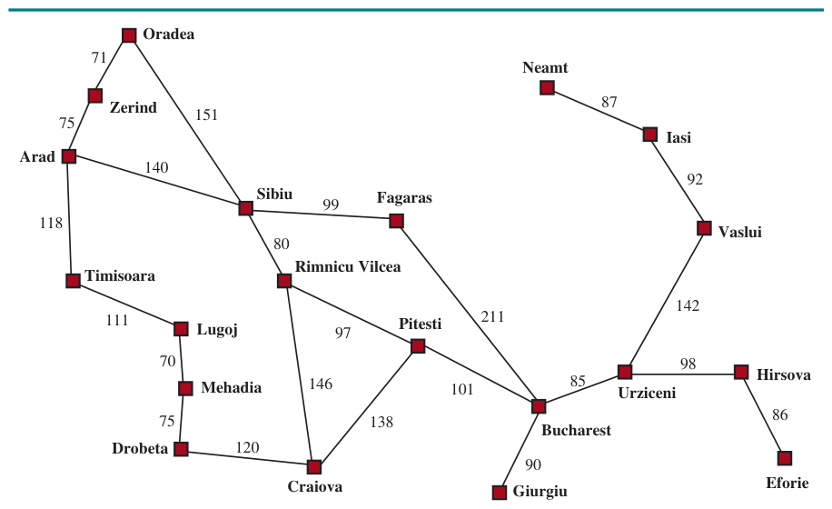
Every road on the map gives two actions, one in each direction. The path Arad, Sibiu, Rimnicu Vilcea, Pitesti, Bucharest has the cost \(140+80+97+101=418\) miles. The path via Fagaras costs \(140+99+211=450\) miles. So the first path is the optimal one.地图上的每条道路给出两个动作，分别对应两个方向。路径阿拉德、锡比乌、里姆尼库·维尔恰、皮特什蒂、布加勒斯特的代价为 \(140+80+97+101=418\) 英里。经法加拉什的路径代价为 \(140+99+211=450\) 英里。所以第一条路径是最优的。
Step 2: abstraction and standard problems第 2 步：抽象与标准问题
In words: abstraction = leave out every detail that the solution does not need.用文字表述：抽象 = 去掉解不需要的每个细节
Abstraction（抽象）removes irrelevant detail from the model. It is valid if every abstract solution can be turned into a solution of the detailed problem. It is useful if carrying out each abstract action is easier than the original problem. Example: the action "drive from Arad to Sibiu" needs no further search, so the abstraction is useful.抽象去掉模型中的无关细节。如果每个抽象解都能转换为原始问题的一个解，它就是有效的。如果执行每个抽象动作都比原问题容易，它就是有用的。例：动作“从阿拉德开车到锡比乌”不需要再做搜索，所以这个抽象是有用的。
The standard problems are these.标准问题如下。
- Vacuum world: a state gives the agent's cell and the dirt in every cell. Actions: Left, Right, Suck. Goal: all cells clean. Cost: 1 per action.扫地世界：一个状态给出智能体所在的方格以及每个方格的灰尘情况。动作：Left、Right、Suck。目标：所有方格都干净。代价：每个动作为 1。
- 8-puzzle: a state gives the position of every tile. Actions: move the blank Left, Right, Up or Down, but not through an edge. Cost: 1 per move. A parity invariant splits the \(9!=362{,}880\) states into two halves, so only \(181{,}440\) of them can reach a given goal.8 数码问题（8-puzzle）：一个状态给出每块数字牌的位置。动作：把空格向左、右、上或下移动，但不能越过边界。代价：每次移动为 1。一个奇偶不变量把 \(9!=362{,}880\) 个状态分成两半，因此只有其中 \(181{,}440\) 个能到达某个给定的目标。

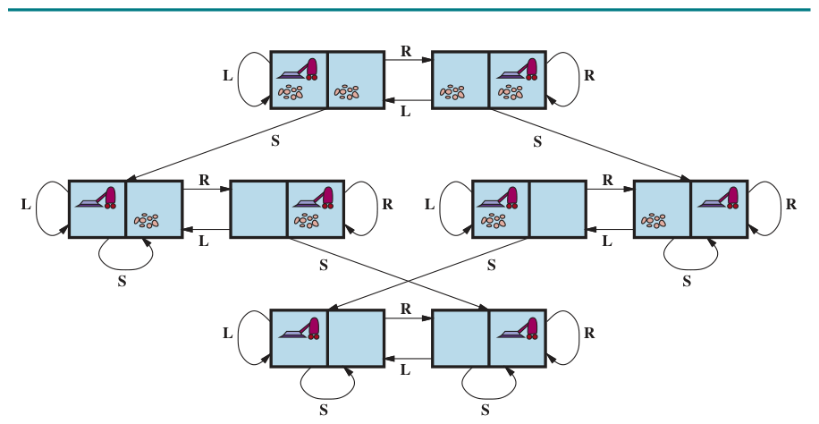
Practice练习
Q1. (Calculation) A vacuum world has three cells in a row (A, B, C) and the actions Left, Right, Suck, each of cost 1. (a) How many states and how many goal states are there? (b) The agent is in A and all cells are dirty. Give a cheapest solution and its cost.Q1.（计算）一个吸尘器世界有排成一行的三个方格（A、B、C），动作为 Left、Right、Suck，每个动作的代价均为 1。(a) 共有多少个状态？有多少个目标状态？(b) 智能体位于 A，且所有方格都是脏的。给出一个代价最小的解及其代价。
Answer
(a) A state is the agent's cell (3 choices) together with the dirt pattern (\(2^3=8\)), so there are \(3\cdot2^3=24\) states. A goal state has all cells clean and the agent anywhere: 3 goal states. (b) Suck, Right, Suck, Right, Suck has cost 5. It is optimal: each of the three dirty cells needs one Suck and the agent must travel from A to C (two moves), so at least \(3+2=5\) actions are required.(a) 一个状态由智能体所在的方格（3 种选择）以及污物模式（\(2^3=8\)）共同确定，因此共有 \(3\cdot2^3=24\) 个状态。目标状态是所有方格都干净、智能体位于任一位置的状态：共 3 个目标状态。(b) Suck、Right、Suck、Right、Suck，代价为 5。它是最优的：三个脏方格各需要一次 Suck，且智能体必须从 A 走到 C（两次移动），因此至少需要 \(3+2=5\) 个动作。
思路：状态数 = 位置数 × 脏污组合数。
Q2. (Explain) Define a valid and a useful abstraction. Which details does the 8-puzzle formulation abstract away, and why is that acceptable?Q2.（解释）定义有效的抽象和有用的抽象。八数码问题的形式化略去了哪些细节？为什么这样做是可以接受的？
Answer
An abstraction is valid if every abstract solution can be elaborated into a solution in the detailed world, and useful if carrying out each abstract action is easier than solving the original problem. The 8-puzzle ignores the intermediate positions while a tile slides and physical manipulations such as shaking the board or taking tiles out. Every abstract move (blank Left, Right, Up, Down) can be carried out physically and is trivial to do, so the abstraction is valid and useful, and the search works on a small discrete space.若每个抽象解都能被细化为详细世界中的解，则抽象是有效的；若执行每个抽象动作都比解决原问题容易，则它是有用的。八数码问题忽略了滑动过程中的中间位置，以及摇动棋盘或取出数码块之类的物理操作。每个抽象移动（空格向左、向右、向上、向下）都可以在物理上实现，而且执行起来十分简单，因此该抽象既有效又有用，搜索得以在一个小的离散空间中进行。
Q3. (Extension: parity invariant) Of the \(9!=362{,}880\) arrangements of the 8-puzzle only half can reach a given goal. Explain the invariant, and decide whether the arrangement 1 2 3 / 4 5 6 / 8 7 _ can reach the goal 1 2 3 / 4 5 6 / 7 8 _ (rows separated by "/", blank written "_").Q3.（扩展：奇偶不变量）八数码问题的 \(9!=362{,}880\) 种排列中，只有一半能够到达某个给定目标。请解释这一不变量，并判断排列 1 2 3 / 4 5 6 / 8 7 _ 能否到达目标 1 2 3 / 4 5 6 / 7 8 （各行之间以“/”分隔，空格记为“”）。
Answer
Read the tiles row by row, ignoring the blank, and count the inversions (pairs of tiles in the wrong order). A horizontal move of the blank leaves the sequence unchanged. A vertical move makes one tile jump over two others, which changes the inversion count by \(0\) or \(\pm2\). So the parity of the inversion count never changes, the arrangements fall into two classes of \(9!/2=181{,}440\), and a goal is reachable only from its own class. The arrangement 1 2 3 4 5 6 8 7 has one inversion (8 before 7), which is odd, while the goal has none, which is even. The two lie in different classes, so the goal cannot be reached.按行从左到右读出数码（忽略空格），并数出逆序对（顺序错误的数码对）的个数。空格的水平移动不改变这一序列。竖直移动会使一个数码跳过另外两个数码，从而使逆序数改变 \(0\) 或 \(\pm2\)。因此逆序数的奇偶性永不改变，排列分为两类，每类各含 \(9!/2=181{,}440\)，而目标只能从它所在的那一类到达。排列 1 2 3 4 5 6 8 7 有一个逆序对（8 在 7 之前），为奇数；而目标没有逆序对，为偶数。两者属于不同的类，因此目标无法到达。
思路：逆序数的奇偶性是不变量。
Search trees, the frontier and performance measures ★★★搜索树、边界与性能度量 ★★★
Goal. Expand nodes of a search tree by hand and keep the frontier, say which data structure each algorithm uses for the frontier, remove redundant paths, and compare algorithms by completeness, optimality, time and space.目标。 手工扩展搜索树的结点并维护边界，说明每种算法为边界使用哪种数据结构，去除冗余路径，并按完备性、最优性、时间和空间比较算法。
In words: search = grow a tree from the start state, one expansion at a time, until a node holds a goal state.用文字表述：搜索 = 从起始状态出发逐步生长一棵树，每次扩展一个结点，直到某个结点包含目标状态
Step 1: the search tree and the frontier第 1 步：搜索树与边界
A search algorithm lays a search tree（搜索树）over the state-space graph. The root is the initial state. Each node is a state and each edge is an action. Every node has a unique path back to the root.搜索算法在状态空间图上铺开一棵搜索树。根是初始状态。每个结点是一个状态，每条边是一个动作。每个结点都有一条唯一的路径回到根。
To expand（扩展）a node, apply ACTIONS and RESULT to its state and make a child node for each result. The nodes that are generated but not yet expanded form the frontier（边缘集）. A state is reached（已到达）once a node exists for it.要扩展一个结点，就对它的状态应用 ACTIONS 和 RESULT，为每个结果生成一个子结点。已生成但尚未扩展的结点构成边界（边缘集）。一旦某个状态有了对应的结点，它就称为已到达。

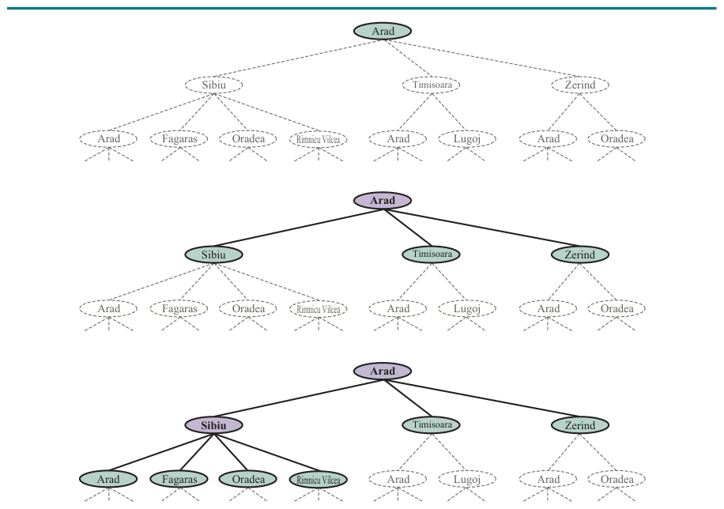
After Arad and Sibiu are expanded, the frontier holds six nodes: Timisoara, Zerind, Arad, Fagaras, Oradea and Rimnicu Vilcea. The new Arad node closes a cycle and cannot lie on an optimal path.扩展阿拉德和锡比乌之后，边界中有六个结点：蒂米什瓦拉、采林蒂库、阿拉德、法加拉什、奥拉迪亚和里姆尼库·维尔恰。新生成的阿拉德结点形成了一个环，它不可能位于最优路径上。
Step 2: best-first search and the data structure of the frontier第 2 步：最佳优先搜索与边界的数据结构
In words: best-first search = always expand the frontier node with the lowest value of a score \(f\). Each choice of \(f\) gives a different algorithm.用文字表述：最佳优先搜索 = 总是扩展边界中评分 \(f\) 最低的结点。\(f\) 的每种选择都得到一种不同的算法。
Here \(f(n)\) is the evaluation function, a number that the algorithm computes for the node \(n\). A node stores its state, its parent, its action and its path cost \(g(n)\). The parent pointers of a goal node give the solution.这里 \(f(n)\) 是评价函数，它为结点 \(n\) 计算出一个数。结点保存它的状态、父结点、动作和路径代价 \(g(n)\)。目标结点的父指针给出解。
function BEST-FIRST-SEARCH(problem, f) returns a solution node or failure
node ← NODE(STATE = problem.INITIAL)
frontier ← a priority queue ordered by f, with node as an element
reached ← a lookup table with one entry: key problem.INITIAL, value node
while not IS-EMPTY(frontier) do
node ← POP(frontier)
if problem.IS-GOAL(node.STATE) then return node
for each child in EXPAND(problem, node) do
s ← child.STATE
if s is not in reached or child.PATH-COST < reached[s].PATH-COST then
reached[s] ← child
add child to frontier
return failure
function EXPAND(problem, node) yields nodes
s ← node.STATE
for each action in problem.ACTIONS(s) do
s' ← problem.RESULT(s, action)
cost ← node.PATH-COST + problem.ACTION-COST(s, action, s')
yield NODE(STATE = s', PARENT = node, ACTION = action, PATH-COST = cost)
The frontier is a queue with the operations IS-EMPTY, POP, TOP and ADD. The kind of queue decides the algorithm.边界是一个队列，支持 IS-EMPTY、POP、TOP 和 ADD 操作。队列的种类决定了算法。
| Frontier data structure边界的数据结构 | POP returnsPOP 返回 | Algorithm算法 |
|---|---|---|
| Priority queue优先队列 | the node with the lowest \(f\)具有最低 \(f\) 的结点 | best-first search, uniform-cost search最佳优先搜索、一致代价搜索 |
| FIFO queue (first in, first out)FIFO 队列（先进先出） | the oldest node最早加入的结点 | breadth-first search广度优先搜索 |
| LIFO queue or stack (last in, first out)LIFO 队列或栈（后进先出） | the newest node最新加入的结点 | depth-first search深度优先搜索 |
Step 3: redundant paths第 3 步：冗余路径
A cycle is a path that returns to a state already on it. A cycle makes the search tree infinite although the state space is finite: Romania has only 20 states. A redundant path reaches a state by a worse route than another path. Example: Arad, Zerind, Oradea, Sibiu costs 297 miles, but Arad, Sibiu costs 140 miles. There are three remedies.环是回到路径上已经出现过的状态的路径。环会使搜索树无限增长，尽管状态空间是有限的：罗马尼亚只有 20 个状态。冗余路径是以比另一条路径更差的方式到达某个状态的路径。例：阿拉德、采林蒂库、奥拉迪亚、锡比乌的代价为 297 英里，而阿拉德、锡比乌的代价为 140 英里。有三种补救办法。
- Graph search（图搜索）stores every reached state and keeps only the best path to each. Use it when the table fits in memory.图搜索保存每个已到达的状态，并且只保留到达每个状态的最佳路径。当表能放进内存时使用它。
- Tree-like search（树式搜索）does not check anything. It saves memory but may examine a state many times and may loop forever.树式搜索不做任何检查。它节省内存，但可能会多次检查同一个状态，也可能无限循环。
- Cycle checking follows the parent pointers to see whether the state already occurs on the current path. It needs no extra memory. Following all ancestors removes every cycle. Following only a few links is fast and removes short cycles.循环检测沿着父指针检查该状态是否已经出现在当前路径上。它不需要额外内存。沿着全部祖先检查，就能去掉每一个环；只沿着少数几条链接检查则速度快，能去掉短环。
Step 4: the four criteria and the symbols第 4 步：四个标准与符号
Four criteria compare search algorithms.四个标准用来比较搜索算法。
- Completeness（完备性）: the algorithm finds a solution whenever one exists, and reports failure when none exists.完备性：只要存在解，算法就一定能找到一个解；不存在解时，它报告失败。
- Cost optimality（代价最优性）: the solution found has the lowest path cost.代价最优性：找到的解具有最低的路径代价。
- Time complexity: the number of nodes generated.时间复杂度：生成的结点数。
- Space complexity: the number of nodes stored in memory.空间复杂度：内存中存储的结点数。
In a finite state space, completeness only needs the cycles to be cut off. In an infinite one the algorithm must be systematic（系统的）: it must eventually reach every state that is connected to the start. Otherwise it may follow one infinite path (4, 4!, (4!)!, ...) for ever.在有限的状态空间中，完备性只需要切断环。在无限的状态空间中，算法必须是系统的：它最终必须到达与起点相连的每一个状态。否则它可能永远沿着一条无限路径（4, 4!, (4!)!, ...）走下去。
For an implicit state space, time and space are measured with three numbers.对于隐式的状态空间，时间和空间用三个数来衡量。
- \(b\): the branching factor（分支因子）, the number of successors of a node. Example: Arad has 3 successors.\(b\)：分支因子，即一个结点的后继个数。例：阿拉德有 3 个后继。
- \(d\): the depth of the shallowest solution, that is, the number of actions on the shortest path to a goal. Example: Arad to Bucharest via Sibiu and Fagaras has \(d=3\).\(d\)：最浅解的深度，即到达目标的最短路径上的动作个数。例：从阿拉德经锡比乌和法加拉什到布加勒斯特的深度为 \(d=3\)。
- \(m\): the maximum depth of any path in the tree. It can be larger than \(d\), and it is infinite if there are cycles and no check.\(m\)：树中任一路径的最大深度。它可能大于 \(d\)；如果有环且没有检查，它是无限的。
Practice练习
Q1. (Trace) In the Romania problem, expand Arad and then Sibiu. How many nodes are on the frontier (a) in a tree-like search and (b) in a graph search with a reached table? Which states are reached in (b)?Q1.（手工演算）在 Romania 问题中依次扩展 Arad 和 Sibiu。边界上分别有多少个结点？(a) 树式搜索中；(b) 带已到达集合的图搜索中。(b) 中哪些状态已被到达？
Answer
Arad's children are Sibiu, Timisoara, Zerind; Sibiu's children are Arad, Fagaras, Oradea, Rimnicu Vilcea. (a) Tree-like: the frontier is Timisoara, Zerind, Arad, Fagaras, Oradea, Rimnicu Vilcea, 6 nodes (the second Arad is a cycle). (b) Graph search: Arad is already reached, so no node is added for it and the frontier has 5 nodes. The reached states are Arad, Sibiu, Timisoara, Zerind, Fagaras, Oradea, Rimnicu Vilcea (7).Arad 的子结点为 Sibiu、Timisoara、Zerind；Sibiu 的子结点为 Arad、Fagaras、Oradea、Rimnicu Vilcea。(a) 树式搜索：边界为 Timisoara、Zerind、Arad、Fagaras、Oradea、Rimnicu Vilcea，共 6 个结点（第二个 Arad 形成环路）。(b) 图搜索：Arad 已被到达，因此不再为它添加结点，边界有 5 个结点。已到达的状态为 Arad、Sibiu、Timisoara、Zerind、Fagaras、Oradea、Rimnicu Vilcea，共 7 个。
Q2. (Calculation) On an obstacle-free \(10\times10\) grid an agent moves to any of its 8 neighbouring cells. At most how many paths of length 9 start from a given cell, and what does that mean per cell?Q2.（计算）在无障碍的 \(10\times10\) 网格上，智能体可以移动到其 8 个相邻格子中的任意一个。从给定格子出发、长度为 9 的路径至多有多少条？这对每个格子意味着什么？
Answer
At most \(8^9=134{,}217{,}728\) paths (fewer near the edges). Within 9 moves all 100 cells are reachable, so an average cell is reached by at most \(1.3\times10^6\) paths (about \(1.1\times10^6\) from a central start, the book's "over a million"), all but one of them redundant. Remembering reached states (graph search) therefore makes the search roughly a million times faster here.至多 \(8^9=134{,}217{,}728\) 条路径（靠近边缘处更少）。9 步之内所有 100 个格子都可到达，因此平均每个格子至多被 \(1.3\times10^6\) 条路径到达（从中心格子出发约为 \(1.1\times10^6\)，即书中所说的“超过一百万”），其中除一条外都是冗余的。因此，记住已到达状态（图搜索）在这里能使搜索快约一百万倍。
Q3. (True or false) "On a finite state space every search algorithm terminates." Justify.Q3.（判断）判断下述命题是否成立，并给出理由：“在有限状态空间上，每个搜索算法都会终止。”
Answer
False. With cycles the search tree is infinite (Arad–Sibiu–Arad–…), and a tree-like DFS without a cycle check can follow such a branch forever. Tree-like BFS finds a solution if one exists, but it never reports failure when none exists, because the tree keeps growing. Termination with a correct failure report needs a reached table, a cycle check or a depth limit.错误。存在环时搜索树是无限的（Arad–Sibiu–Arad–…），不做环检测的树式 DFS 可能会永远沿着这样的分支走下去。树式 BFS 若存在解则能找到解，但在无解时永远不会报告失败，因为搜索树不断增长。要在终止的同时正确报告失败，需要已到达集合、环检测或深度限制之一。
易错：完备性还要求没有解时能报告失败。
Breadth-first and uniform-cost search ★★★广度优先搜索与一致代价搜索 ★★★
Goal. Run breadth-first and uniform-cost search by hand on a small graph: give the node expanded at each step, the frontier after it, and the solution path with its cost.目标。 手工在一个小图上运行广度优先搜索和一致代价搜索：给出每一步扩展的结点、其后的边界，以及解路径及其代价。
An uninformed（无信息的）algorithm gets no hint about how close a state is to a goal. The informed algorithms of Chapter 3 use such a hint.无信息的算法得不到关于一个状态离目标有多近的提示。第 3 章的有信息算法使用这样的提示。
Step 1: breadth-first search第 1 步：广度优先搜索
In words: BFS = expand the root, then all its children, then all their children, one whole level after the other.用文字表述：BFS = 先扩展根，再扩展它的所有子结点，再扩展这些子结点的子结点，一层接一层地进行
Breadth-first search (BFS)（宽度优先搜索）is best-first search with \(f(n)\) equal to the depth of the node \(n\). New nodes are always deeper than old ones, so a FIFO queue replaces the priority queue. BFS also uses an early goal test（早期目标测试）: a child is tested when it is generated, not when it is popped.广度优先搜索（BFS）是以结点 \(n\) 的深度作为 \(f(n)\) 的最佳优先搜索。新结点总比旧结点深，因此用 FIFO 队列代替优先队列。BFS 还使用提前目标测试：子结点在生成时测试，而不是在弹出时测试。
How to do it by hand:手工做法：
- Put the root into the FIFO queue. If the root is a goal, stop.把根放入 FIFO 队列。如果根是目标，就停止。
- Pop the node at the front of the queue and expand it.弹出队首的结点并扩展它。
- For each child, left to right: if its state is the goal, stop and read the path through the parent pointers.从左到右检查每个子结点：如果它的状态是目标，就停止，并沿着父指针读出路径。
- Otherwise skip the child if its state is already reached, else add it to the back of the queue.否则，如果它的状态已经到达过，就跳过它；如果没有，就把它加到队尾。
- Repeat from step 2. An empty queue means failure.从第 2 步重复。队列为空则表示失败。
Trace on a binary tree with the goal M. The tree is: A has children B and C. B has D and E. C has F and G. D has H and I. E has J and K. F has L and M. G has N and O. All action costs are 1.在二叉树上手工演算，目标为 M。树的结构如下：A 有子结点 B 和 C；B 有 D 和 E；C 有 F 和 G；D 有 H 和 I；E 有 J 和 K；F 有 L 和 M；G 有 N 和 O。所有动作代价均为 1。

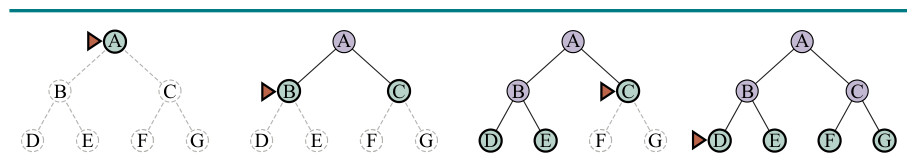
| Step步骤 | Node expanded扩展的结点 | Children generated生成的子结点 | Frontier after the step (front on the left)该步之后的边界（队首在左） |
|---|---|---|---|
| 1 | A | B, C | B, C |
| 2 | B | D, E | C, D, E |
| 3 | C | F, G | D, E, F, G |
| 4 | D | H, I | E, F, G, H, I |
| 5 | E | J, K | F, G, H, I, J, K |
| 6 | F | L, M: M is the goal, stopL、M：M 是目标，停止 | G, H, I, J, K, L (M is returned at once and is not added)G, H, I, J, K, L（M 一生成就直接返回，不加入边界） |
Solution path: A, C, F, M with 3 actions and cost \(3\times1=3\). Nodes generated: \(1+2+4+6=13\).解路径：A、C、F、M，共 3 个动作，代价为 \(3\times1=3\)。生成的结点数：\(1+2+4+6=13\)。
BFS is complete if \(b\) is finite. It finds the solution with the fewest actions, because all nodes of depth \(d-1\) come before any node of depth \(d\). So it is cost-optimal only when all actions cost the same.如果 \(b\) 是有限的，BFS 就是完备的。它找到的解动作最少，因为深度为 \(d-1\) 的所有结点都排在深度为 \(d\) 的任何结点之前。因此，只有在所有动作代价相同时，它才是代价最优的。
Memory is the bigger problem than time. Take \(b=10\), \(10^6\) nodes per second and 1 KB per node. At \(d=10\) BFS generates \(1.1\times10^{10}\) nodes, takes about 3.1 hours and needs about 11 TB. At \(d=14\) it generates \(1.1\times10^{14}\) nodes and takes about 3.5 years.内存比时间更成问题。设 \(b=10\)，每秒生成 \(10^6\) 个结点，每个结点占 1 KB。在 \(d=10\) 时，BFS 生成 \(1.1\times10^{10}\) 个结点，大约需要 3.1 小时，并占用约 11 TB。在 \(d=14\) 时，它生成 \(1.1\times10^{14}\) 个结点，大约需要 3.5 年。
Step 2: uniform-cost search第 2 步：一致代价搜索
In words: UCS = always expand the cheapest known path first, so that paths are tried in order of their total cost.用文字表述：UCS = 总是先扩展已知路径中代价最小的结点，使路径按总代价的顺序被尝试
When the actions have different costs, use best-first search with \(f(n)=g(n)\), the path cost from the root. This is uniform-cost search (UCS)（一致代价搜索）. In theoretical computer science it is called Dijkstra's algorithm. The frontier is a priority queue ordered by path cost.当动作的代价不同时，使用最佳优先搜索，其评价函数为 \(f(n)=g(n)\)，也就是从根算起的路径代价。这就是一致代价搜索（UCS）。在理论计算机科学中，它被称为 Dijkstra 算法。边界是按路径代价排序的优先队列。
How to do it by hand:手工做法：
- Put the root with path cost 0 into the priority queue.把路径代价为 0 的根放入优先队列。
- Pop the node with the lowest path cost. If its state is the goal, stop. This is the late goal test: the test happens at the pop, never at the generation.弹出路径代价最低的结点。如果它的状态是目标，就停止。这是延迟目标测试：测试发生在弹出时，而不是生成时。
- Expand it. The path cost of a child is the parent's path cost plus the action cost.扩展它。子结点的路径代价等于父结点的路径代价加上动作代价。
- Add a child if its state is new. If its state is already on the frontier with a higher cost, replace that entry by the cheaper one.如果子结点的状态是新的，就加入它。如果该状态已在边界上但代价更高，就用更便宜的那个替换原来的条目。
- Repeat from step 2.从第 2 步重复。
The goal test waits until the pop, because the first path generated to the goal need not be the cheapest. Trace on a fragment of the Romania map, from Sibiu to Bucharest.目标测试要等到弹出时才进行，因为第一次生成的通往目标的路径不一定是最便宜的。下面在罗马尼亚地图的一个片段上，从锡比乌到布加勒斯特手工演算。

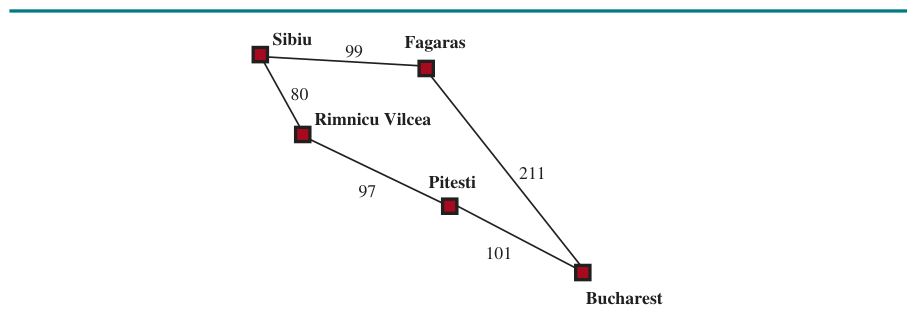
| Pop (path cost)出队（路径代价） | Frontier afterwards之后的边界 |
|---|---|
| Sibiu (0) | Rimnicu Vilcea 80, Fagaras 99Rimnicu Vilcea 80，Fagaras 99 |
| Rimnicu Vilcea (80) | Fagaras 99, Pitesti \(80+97=177\)Fagaras 99，Pitesti \(80+97=177\) |
| Fagaras (99) | Pitesti 177, Bucharest \(99+211=310\)Pitesti 177，Bucharest \(99+211=310\) |
| Pitesti (177) | Bucharest \(177+101=278\) (replaces 310)Bucharest \(177+101=278\)（替换 310） |
| Bucharest (278) | goal: Sibiu–Rimnicu Vilcea–Pitesti–Bucharest, cost 278目标：Sibiu–Rimnicu Vilcea–Pitesti–Bucharest，代价 278 |
Bucharest is first generated with cost 310 via Fagaras. A goal test at generation would have returned this costlier path.布加勒斯特首先经法加拉什以代价 310 被生成。如果在生成时测试目标，就会返回这条代价更高的路径。
UCS is complete and cost-optimal if every action costs at least \(\epsilon>0\). Nodes are popped in order of increasing path cost, so the first goal popped is at most as expensive as any other frontier node. No infinite path of cheap steps can absorb the search.如果每个动作的代价至少为 \(\epsilon>0\)，UCS 就是完备的，并且代价最优。结点按路径代价递增的顺序被弹出，所以第一个被弹出的目标，其代价不会超过边界上任何其他结点。也不会有无限多的便宜步骤把搜索拖住。
UCS may explore many cheap actions before a costly one that is useful. So its bound can be far above \(b^d\).UCS 可能会先探索许多便宜的动作，才遇到一个有用但昂贵的动作。所以它的界可能远大于 \(b^d\)。
Practice练习
Q1. (Trace) A binary tree has root A; A has children B, C; B has D, E; C has F, G; D has H, I; E has J, K; F has L, M; G has N, O. The goal is M. Run BFS (a) with the early goal test and (b) with the late goal test. In which order are nodes expanded, and how many nodes have been generated when the goal is recognised?Q1.（手工演算）二叉树的根为 A；A 的子结点为 B、C；B 的子结点为 D、E；C 的子结点为 F、G；D 的子结点为 H、I；E 的子结点为 J、K；F 的子结点为 L、M；G 的子结点为 N、O。目标为 M。分别用 (a) 早期目标测试和 (b) 晚期目标测试运行 BFS。结点的扩展顺序是什么？识别出目标时共生成了多少个结点？
Answer
(a) Nodes are expanded in the order A, B, C, D, E, F. Expanding F generates L and M, and M is recognised at once. Generated: A; B, C; D, E, F, G; H, I, J, K, L, M, that is \(1+2+4+6=13\) nodes. (b) M is recognised when it is popped, after A, B, …, L (12 pops). G is expanded before M, so all 15 nodes have been generated. The early test saves the nodes of the last level that follow the goal, in general a factor of about \(b\).(a) 结点的扩展顺序为 A、B、C、D、E、F。扩展 F 时生成 L 和 M，M 立即被识别。已生成的结点为：A；B、C；D、E、F、G；H、I、J、K、L、M，共 \(1+2+4+6=13\) 个结点。(b) M 在出队时被识别，此时已出队 A、B、…、L（共 12 次出队）。由于 G 先于 M 被扩展，因此共生成了全部 15 个结点。早期测试省去了目标之后最后一层的那些结点，一般节省的倍数约为 \(b\)。
Q2. (Trace) A directed graph has the edges S→A (1), S→B (5), A→G (10), B→G (2). (a) Run UCS from S to G and give the frontier after each pop. (b) What would be returned if the goal were tested when a node is generated?Q2.（手工演算）有向图的边为 S→A（1）、S→B（5）、A→G（10）、B→G（2）。(a) 从 S 到 G 运行 UCS，并给出每次出队后的边界。(b) 若在结点生成时进行目标测试，将返回什么？
Answer
(a) Pop S (0): frontier A 1, B 5. Pop A (1): G is generated with cost \(1+10=11\); frontier B 5, G 11. Pop B (5): G via B costs \(5+2=7<11\), so G is replaced; frontier G 7. Pop G (7): goal. UCS returns S–B–G with cost 7. (b) G would be recognised when A is expanded, and the path S–A–G of cost 11 would be returned, which is not optimal.(a) 出队 S（0）：边界为 A 1、B 5。出队 A（1）：生成 G，代价为 \(1+10=11\)；边界为 B 5、G 11。出队 B（5）：经 B 到 G 的代价为 \(5+2=7<11\)，因此替换 G；边界为 G 7。出队 G（7）：为目标。UCS 返回 S–B–G，代价为 7。(b) 若在扩展 A 时即识别出 G，则会返回代价为 11 的路径 S–A–G，它不是最优的。
易错：UCS 要等目标节点被弹出才算找到。
Q3. (Complexity) State the worst-case time of UCS when every action costs exactly 1, and explain why it exceeds that of BFS. Evaluate both for \(b=3\), \(d=5\).Q3.（复杂度）写出当每个动作代价恰好为 1 时 UCS 的最坏情况时间，并解释它为何超过 BFS 的时间。对 \(b=3\)、\(d=5\) 分别计算两者的值。
Answer
With \(C^{\ast}=d\) and \(\epsilon=1\) the bound \(O(b^{1+\lfloor C^{\ast}/\epsilon\rfloor})\) becomes \(O(b^{d+1})\). BFS needs only \(O(b^d)\) because its early goal test stops as soon as the goal is generated at depth \(d\); UCS tests when a node is popped, so it may first generate the whole level \(d\), one level more. For \(b=3\), \(d=5\): \(3^6=729\) against \(3^5=243\).代入 \(C^{\ast}=d\) 与 \(\epsilon=1\) 后，上界 \(O(b^{1+\lfloor C^{\ast}/\epsilon\rfloor})\) 变为 \(O(b^{d+1})\)。BFS 只需 \(O(b^d)\)，因为其早期目标测试会在目标于深度 \(d\) 被生成时立即停止；UCS 在结点出队时才进行测试，因此它可能先生成整个层 \(d\)，即多出一层。对于 \(b=3\)、\(d=5\)：\(3^6=729\) 与 \(3^5=243\) 相比。
Depth-first, depth-limited and iterative deepening search ★★★深度优先、深度受限与迭代加深搜索 ★★★
Goal. Run depth-first, depth-limited and iterative deepening search by hand on a small tree, and state their time, space, completeness and optimality.目标。 在一棵小树上手工运行深度优先、深度受限和迭代加深搜索，并说明它们的时间、空间、完备性和最优性。
Step 1: depth-first search第 1 步：深度优先搜索
In words: DFS = go down one branch as far as it goes, then back up to the last place where another branch was left open.用文字表述：DFS = 沿一个分支一直走到底，然后回退到最近一个还留有未走分支的地方
Depth-first search (DFS)（深度优先搜索）always expands the deepest node on the frontier. It is best-first search with \(f(n)\) equal to minus the depth, and its frontier is a LIFO stack. It is usually run as tree-like search, without a reached table.深度优先搜索（DFS）总是扩展边界上最深的结点。它是评价函数 \(f(n)\) 取负深度的最佳优先搜索，其边界是 LIFO 栈。它通常以树式搜索的方式运行，不使用已到达表。
How to do it by hand:手工做法：
- Put the root on the stack.把根放入栈中。
- Pop the top node. If it is the goal, stop.弹出栈顶结点。如果它是目标，就停止。
- Expand it. Push its children so that the left child ends on top.扩展它。把子结点入栈，使左子结点位于栈顶。
- Repeat from step 2. When a node has no children, the next pop returns to the most recent open sibling: this is backtracking.从第 2 步重复。当一个结点没有子结点时，下一次弹出会回到最近的一个未走的兄弟结点：这就是回溯。
Trace on the same tree and goal M as in Section 2.3. The stack is written with its top on the left.在与第 2.3 节相同的树和目标 M 上手工演算。栈在书写时栈顶在左边。

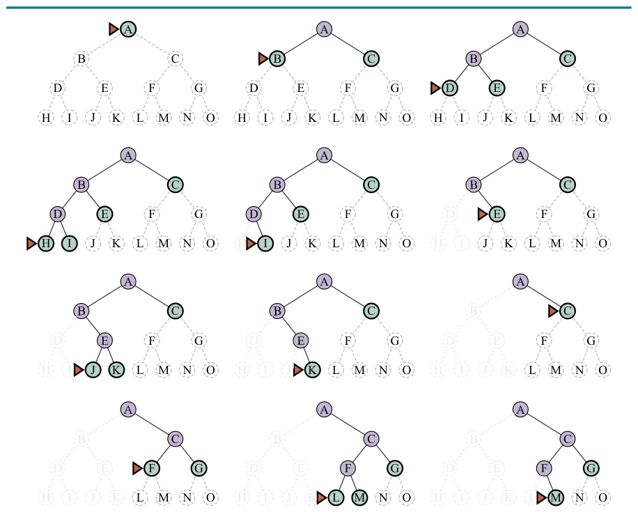
| Step步骤 | Node popped弹出的结点 | Stack after expanding (top on the left)扩展后的栈（栈顶在左） |
|---|---|---|
| 1 | A | B, C |
| 2 | B | D, E, C |
| 3 | D | H, I, E, C |
| 4 | H (no children)H（无子结点） | I, E, C |
| 5 | I (no children)I（无子结点） | E, C |
| 6 | E | J, K, C |
| 7 | J (no children)J（无子结点） | K, C |
| 8 | K (no children)K（无子结点） | C |
| 9 | C | F, G |
| 10 | F | L, M, G |
| 11 | L (no children)L（无子结点） | M, G |
| 12 | M | goal, stop目标，停止 |
Solution path: A, C, F, M with cost 3. The stack never holds more than 4 nodes, while BFS had to keep a whole level.解路径：A、C、F、M，代价为 3。栈中的结点从不超过 4 个，而 BFS 必须保存整整一层。
DFS returns the first solution it meets, so it is not cost-optimal. It is incomplete: in an infinite space it can follow an infinite path, and in a cyclic space it can loop unless it checks for cycles. With a cycle check along the whole path it is complete on a finite space. Its time is \(O(b^m)\), which can far exceed \(b^d\). Its strength is memory: the stack holds only the current path and the open siblings along it, which is \(O(bm)\) nodes.DFS 返回它遇到的第一个解，所以它不是代价最优的。它是不完备的：在无限空间中它可能沿着一条无限路径走下去；在有环的空间中，如果不检查环，它可能会陷入循环。加上沿整条路径的环检查后，它在有限空间中是完备的。它的时间为 \(O(b^m)\)，可能远超 \(b^d\)。它的优势在于内存：栈中只保存当前路径和沿途未走的兄弟结点，即 \(O(bm)\) 个结点。
Step 2: depth-limited search第 2 步：深度受限搜索
In words: DLS = DFS that refuses to go deeper than a fixed depth limit.用文字表述：DLS = 拒绝走得比固定深度限制更深的 DFS
Depth-limited search (DLS)（深度受限搜索）is DFS with a depth limit \(\ell\) (the letter is a script "l"): a node at depth \(\ell\) is treated as if it had no children. Typical value: for Romania \(\ell=19\) is safe, because there are 20 cities, and the diameter 9, the largest number of actions between two cities, is a better limit. DLS returns one of three results.深度受限搜索（DLS）是带深度限制 \(\ell\)（字母是花体的 "l"）的 DFS：深度为 \(\ell\) 的结点被当作没有子结点。典型取值：对于罗马尼亚，\(\ell=19\) 是安全的，因为有 20 个城市；而直径 9（两个城市之间最多的动作数）是更好的限制。DLS 返回三种结果之一。
- a solution;一个解；
- failure: no solution exists;failure：不存在解；
- cutoff: no solution within the limit, but one may exist deeper.cutoff：在限制内没有解，但更深处可能有解。
How to do it by hand: run DFS, and at a node of depth \(\ell\) do not expand it but remember "cutoff". Trace with the limit \(\ell=2\) and the goal M (depth 3):手工做法：运行 DFS，遇到深度为 \(\ell\) 的结点时不扩展它，而是记下 "cutoff"。在限制为 \(\ell=2\)、目标为 M（深度 3）的条件下演算：
| Step步骤 | Node popped (depth)弹出的结点（深度） | Stack after (top on the left)之后的栈（栈顶在左） |
|---|---|---|
| 1 | A (0) | B, C |
| 2 | B (1) | D, E, C |
| 3 | D (2), at the limit: cutoffD（2），已到限制：cutoff | E, C |
| 4 | E (2), at the limit: cutoffE（2），已到限制：cutoff | C |
| 5 | C (1) | F, G |
| 6 | F (2), at the limit: cutoffF（2），已到限制：cutoff | G |
| 7 | G (2), at the limit: cutoffG（2），已到限制：cutoff | empty空 |
The stack is empty and M was not found, so the result is cutoff. There is no solution path. If \(\ell<d\), DLS misses the solution and is incomplete. If \(\ell>d\), it may return a solution that is not the shallowest. Time is \(O(b^\ell)\) and space \(O(b\ell)\).栈已空，而且没有找到 M，所以结果是 cutoff。这里没有解路径。如果 \(\ell<d\)，DLS 会漏掉解，因而是不完备的。如果 \(\ell>d\)，它可能返回一个不是最浅的解。它的时间为 \(O(b^\ell)\)，空间为 \(O(b\ell)\)。
Step 3: iterative deepening search第 3 步：迭代加深搜索
In words: IDS = run depth-limited search with limit 0, then 1, then 2, and so on, until the answer is no longer "cutoff".用文字表述：IDS = 依次用限制 0、1、2 等运行深度受限搜索，直到结果不再是 "cutoff"
Iterative deepening search (IDS)（迭代加深搜索）avoids guessing the limit. It combines the small memory of DFS with the level-by-level order of BFS.迭代加深搜索（IDS）不需要猜测限制值。它把 DFS 的小内存与 BFS 逐层的搜索顺序结合起来。
How to do it by hand: 1. Set \(\ell=0\). 2. Run DLS with limit \(\ell\) from the root, on an empty stack. 3. If the result is a solution or failure, stop. 4. If the result is cutoff, set \(\ell=\ell+1\) and go to step 2.手工做法：1. 设置 \(\ell=0\)。2. 从根出发，以空栈运行限制为 \(\ell\) 的 DLS。3. 如果结果是解或 failure，就停止。4. 如果结果是 cutoff，设置 \(\ell=\ell+1\)，然后回到第 2 步。

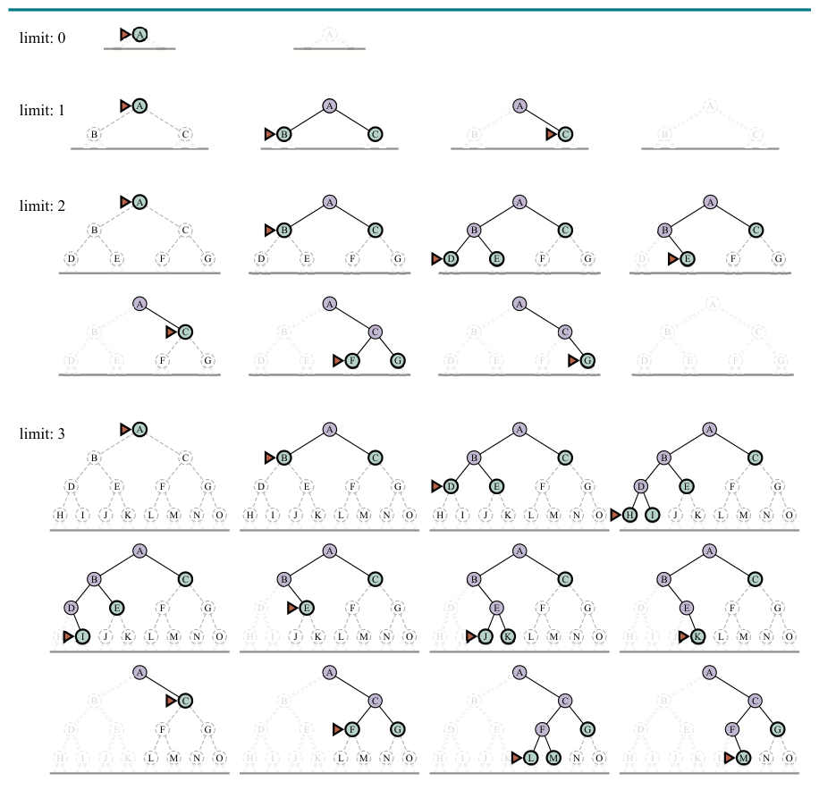
Trace on the same tree, goal M:在同一棵树上、目标为 M 的情况下演算：
| Limit \(\ell\)限制 \(\ell\) | Nodes popped in order按顺序弹出的结点 | Result结果 | Pops弹出次数 |
|---|---|---|---|
| 0 | A | cutoff | 1 |
| 1 | A, B, C | cutoff | 3 |
| 2 | A, B, D, E, C, F, G | cutoff | 7 |
| 3 | A, B, D, H, I, E, J, K, C, F, L, M | solution: A, C, F, M解：A、C、F、M | 12 |
Solution path: A, C, F, M with cost 3, found with limit 3. In total 23 nodes were popped.解路径：A、C、F、M，代价为 3，在限制为 3 时找到。共弹出了 23 个结点。
IDS is complete on a finite acyclic space, or on any finite space with a cycle check along the path. It is cost-optimal when all actions cost the same. Its space is \(O(bd)\) and its time is \(O(b^d)\). Regenerating the upper levels looks wasteful, but most nodes lie on the bottom level. The bottom level is generated once, the level above it twice, and the children of the root \(d\) times.在有限无环空间中，或在任何有限空间中沿路径做环检查时，IDS 都是完备的。当所有动作代价相同时，它是代价最优的。它的空间为 \(O(bd)\)，时间为 \(O(b^d)\)。重复生成上层结点看起来很浪费，但大多数结点位于最底层。最底层只生成一次，它上一层生成两次，而根的子结点则生成 \(d\) 次。
IDS is the preferred uninformed method when the state space is larger than memory and the depth of the solution is unknown.当状态空间大于内存且解的深度未知时，IDS 是首选的无信息搜索方法。
Practice练习
Q1. (Trace) Run DFS on the binary tree of the figure (A at the root; B, C; D–G; H–O on the last level; children taken left to right) with goal M. Give the order of the popped nodes and the largest number of nodes on the frontier.Q1.（手工演算）以 M 为目标，在图中的二叉树上运行 DFS（A 为根；B、C；D–G；H–O 位于最底层；子结点按从左到右的顺序取出）。给出结点的出队顺序，以及边界上结点数的最大值。
Answer
Nodes are popped in the order A, B, D, H, I, E, J, K, C, F, L, M (12 pops). The stack never holds more than 4 nodes; for instance after expanding D it holds C, E, I, H. This agrees with \(O(bm)\) for \(b=2\), \(m=3\), while BFS must keep a whole level of the tree in memory.结点的出队顺序为 A、B、D、H、I、E、J、K、C、F、L、M（共 12 次出队）。栈中的结点从不超过 4 个；例如扩展 D 之后，栈中为 C、E、I、H。这与 \(O(bm)\) 在 \(b=2\)、\(m=3\) 时的值一致，而 BFS 则必须在内存中保存整层树。
Q2. (Calculation) For \(b=3\) and \(d=4\) compute the number of nodes generated by BFS and by IDS (root not counted) and the relative overhead of IDS.Q2.（计算）对于 \(b=3\) 和 \(d=4\)，计算 BFS 与 IDS 生成的结点数（不计根结点），以及 IDS 的相对额外开销。
Answer
\(N_{\text{BFS}}=3+9+27+81=120\). \(N_{\text{IDS}}=4\cdot3+3\cdot9+2\cdot27+1\cdot81=12+27+54+81=174\). The overhead is \(174/120=1.45\), that is 45% more nodes.\(N_{\text{BFS}}=3+9+27+81=120\)。\(N_{\text{IDS}}=4\cdot3+3\cdot9+2\cdot27+1\cdot81=12+27+54+81=174\)。额外开销为 \(174/120=1.45\)，即多出 45% 的结点。
Bidirectional search and comparison ★★双向搜索与比较 ★★
Goal. Explain why bidirectional search is cheaper and what it needs, and fill in and use the comparison table of all uninformed algorithms.目标。 解释为什么双向搜索更便宜以及它需要什么，并填写和使用所有无信息算法的比较表。
In words: bidirectional search = search from the start and from the goal at the same time and stop when the two searches meet in the middle.用文字表述：双向搜索 = 同时从起点和从目标出发搜索，两个搜索在中间相遇时停止
Bidirectional search（双向搜索）runs one search forward from the initial state and one backward from the goal. Each search only needs to reach depth \(d/2\). It needs two frontiers and two tables of reached states. It also needs explicit goal states, and backward reasoning: if \(s'\) is a forward successor of \(s\), then \(s\) must be a backward successor of \(s'\). A solution appears when the two frontiers collide.双向搜索一个向前从初始状态搜索，一个向后从目标搜索。每个搜索只需要搜到深度 \(d/2\)。它需要两个边界和两张已到达状态表。它还需要显式的目标状态，以及反向推理：如果 \(s'\) 是 \(s\) 的一个正向后继，那么 \(s\) 就必须是 \(s'\) 的一个反向后继。两个边界相遇时，解就出现了。
The first solution found need not be the best. So the algorithm keeps the best solution so far and stops only when a termination test shows that no better one remains. With path cost as \(f\) this is bidirectional uniform-cost search, which expands no node of cost above \(C^{\ast}/2\).首先找到的解不一定是最好的。所以算法会保存目前最好的解，只有在一个终止测试表明不可能有更好的解时才停止。若以路径代价作为 \(f\)，这就是双向一致代价搜索，它扩展的结点代价都不超过 \(C^{\ast}/2\)。
The stopping rule: bidirectional uniform-cost search can stop when \(g_F+g_B\ge\mu\). Here \(g_F\) is the cheapest path cost on the forward frontier, \(g_B\) the cheapest path cost on the backward frontier, and \(\mu\) the cost of the best solution found so far, for example 11 miles. Then no better solution can still appear.停止规则：双向一致代价搜索可以在 \(g_F+g_B\ge\mu\) 成立时停止。这里 \(g_F\) 是正向边界上最便宜的路径代价，\(g_B\) 是反向边界上最便宜的路径代价，\(\mu\) 是目前找到的最好解的代价，例如 11 英里。此时不可能再出现更好的解。
The comparison table比较表
The six symbols of the table are these.表中的六个符号如下。
| Symbol符号 | Meaning in words文字含义 | Typical value典型值 |
|---|---|---|
| \(b\) | branching factor: successors per node分支因子：每个结点的后继数 | 3 in Romania from Arad, 10 in the BFS examples罗马尼亚中从阿拉德出发为 3，BFS 例子中为 10 |
| \(d\) | depth of the shallowest solution最浅解的深度 | 3 from Arad to Bucharest via Fagaras从阿拉德经法加拉什到布加勒斯特为 3 |
| \(m\) | maximum depth of any path in the tree树中任一路径的最大深度 | 9 if bounded by the diameter of Romania, infinite with cycles若以罗马尼亚的直径为界则为 9；有环时为无限 |
| \(\ell\) | depth limit of depth-limited search深度受限搜索的深度限制 | 2 in the trace above, 19 as the safe limit for Romania上面演算中为 2，罗马尼亚的安全限制为 19 |
| \(C^{\ast}\) | cost of an optimal solution最优解的代价 | 278 miles from Sibiu to Bucharest从锡比乌到布加勒斯特为 278 英里 |
| \(\epsilon\) | smallest action cost, greater than 0最小动作代价，大于 0 | 80 miles in the Sibiu fragment锡比乌片段中为 80 英里 |
| Criterion准则 | BFS | UCS | DFS | DLS | IDS | Bidirectional双向搜索 |
|---|---|---|---|---|---|---|
| Complete?是否完备？ | Yes1是1 | Yes1,2是1,2 | No否 | No否 | Yes1是1 | Yes1,4是1,4 |
| Cost-optimal?是否代价最优？ | Yes3是3 | Yes是 | No否 | No否 | Yes3是3 | Yes3,4是3,4 |
| Time时间 | \(O(b^d)\) | \(O(b^{1+\lfloor C^{\ast}/\epsilon\rfloor})\) | \(O(b^m)\) | \(O(b^\ell)\) | \(O(b^d)\) | \(O(b^{d/2})\) |
| Space空间 | \(O(b^d)\) | \(O(b^{1+\lfloor C^{\ast}/\epsilon\rfloor})\) | \(O(bm)\) | \(O(b\ell)\) | \(O(bd)\) | \(O(b^{d/2})\) |
Conditions for the table: \(^1\) \(b\) is finite, and the state space has a solution or is finite. \(^2\) All action costs are at least \(\epsilon>0\). \(^3\) All action costs are identical. \(^4\) Both directions are breadth-first or uniform-cost. The table is for tree-like search.表格的条件：\(^1\) \(b\) 有限，并且状态空间有解或是有限的。\(^2\) 所有动作代价都至少为 \(\epsilon>0\)。\(^3\) 所有动作代价都相同。\(^4\) 两个方向都是广度优先或一致代价。本表针对的是树式搜索。
Choosing a method.选择方法。
- BFS: a shallow solution, equal costs and enough memory.BFS：解较浅、代价相等且内存足够。
- UCS: action costs differ.UCS：动作代价各不相同。
- DFS or backtracking: memory is scarce and solutions are plentiful.DFS 或回溯：内存紧张，且解很多。
- IDS: the space is large and the solution depth is unknown.IDS：空间很大，且解的深度未知。
- Bidirectional search: the goal is an explicit state and actions are reversible.双向搜索：目标是显式的状态，且动作可逆。
Practice练习
Q1. (Calculation) For \(b=5\) and \(d=8\) compare the number of nodes of BFS with that of bidirectional BFS searching to depth 4 from each side.Q1.（计算）对于 \(b=5\) 和 \(d=8\)，比较 BFS 的结点数与从两侧各搜索到深度 4 的双向 BFS 的结点数。
Answer
BFS: \(\sum_{i=0}^{8}5^i=(5^9-1)/4=488{,}281\) nodes. Bidirectional: \(2\sum_{i=0}^{4}5^i=2\cdot781=1{,}562\) nodes. The saving is a factor of about \(488{,}281/1{,}562\approx313\).BFS：\(\sum_{i=0}^{8}5^i=(5^9-1)/4=488{,}281\) 个结点。双向搜索：\(2\sum_{i=0}^{4}5^i=2\cdot781=1{,}562\) 个结点。节省的倍数约为 \(488{,}281/1{,}562\approx313\)。
Q2. (Design) Choose a method and justify it: (a) route finding on a road map with different road lengths; (b) a unit-cost puzzle whose solution depth is unknown and whose state space is far larger than memory; (c) a problem whose goal is a property ("checkmate") rather than a list of states.Q2.（设计）选择一种方法并给出理由：(a) 在道路长度不同的道路图上寻路；(b) 一个单位代价的谜题，其解的深度未知，且状态空间远大于内存；(c) 目标是某种性质（如“将死”）而非状态列表的问题。
Answer
(a) UCS: action costs differ, so BFS is not optimal, and a road map fits in memory. (b) IDS: memory \(O(bd)\) like DFS, optimal for unit costs, and no need to know \(d\). (c) Not bidirectional search, which needs explicit goal states and predecessors; use a forward method such as IDS or BFS.(a) 一致代价搜索：动作代价不同，因此 BFS 不是最优的，而且道路图可以放入内存。(b) 迭代加深搜索：内存需求 \(O(bd)\)，与 DFS 相同，在单位代价下是最优的，并且无需知道 \(d\)。(c) 不用双向搜索，因为它需要显式的目标状态和前驱结点；应使用正向方法，例如 IDS 或 BFS。
Terms to recognise ★需要认识的术语 ★
| Term术语 | What to know要知道什么 |
|---|---|
| Backtracking search（回溯搜索） | DFS variant that generates one child at a time, changes the state in place and undoes the action; stores one state and \(O(m)\) actions一种 DFS 变体：每次只生成一个子结点，原地修改状态并撤销动作；只存储一个状态和 \(O(m)\) 个动作 |
| Early and late goal test提前与延迟目标测试 | Test at generation (BFS) or at pop (UCS and best-first search); the late test is needed for optimality with unequal costs在生成时测试（BFS）或在弹出时测试（UCS 和最佳优先搜索）；代价不等时，最优性需要延迟测试 |
| Diameter直径 | Largest number of actions between two states; a good depth limit for DLS, 9 for Romania两个状态之间动作数的最大值；是 DLS 的一个好的深度限制，罗马尼亚为 9 |
| Systematic系统的 | Reaches every state connected to the start; needed for completeness in an infinite space到达与起点相连的每个状态；在无限空间中完备性需要它 |
| Open loop and closed loop开环与闭环 | Open loop: execute the plan without percepts. Closed loop: monitor the percepts while acting开环：不依赖感知，直接执行计划。闭环：行动时监控感知 |
| Open loop and closed loop开环与闭环 | Open loop: if the environment is observable, deterministic and known, execute the found plan without percepts. Closed loop: monitor the percepts while acting开环：如果环境是可观测、确定性且已知的，就不依赖感知，直接执行找到的计划。闭环：行动时监控感知 |
| Cycle checking循环检测 | Follow the parent pointers; all ancestors removes every cycle, a few links removes short cycles沿父指针检查；检查全部祖先可去掉每个环，只检查少数几条链接可去掉短环 |
Exam-style questions考试题型练习
Q1. (Formulation, 10 marks) Three missionaries and three cannibals stand on the left bank of a river with a boat that carries one or two people. Cannibals must never outnumber missionaries on a bank where missionaries are present. All six must cross. (a) (5) Formulate the problem: states, initial state, goal test, actions, transition model, cost. (b) (2) How many legal states are there, and how many are reachable? (c) (3) Which uninformed algorithm would you use, and does it need a table of reached states? An optimal solution has 11 crossings.Q1.（形式化，10 分）三个传教士和三个食人族站在河的左岸，有一条每次可载一人或两人的船。在有传教士的岸边，食人族的人数绝不能多于传教士。六人都必须过河。(a)（5 分）对该问题进行形式化：状态、初始状态、目标测试、动作、转移模型、代价。(b)（2 分）合法状态有多少个？其中有多少个是可达的？(c)（3 分）你会使用哪种无信息算法？它是否需要已到达集合？最优解包含 11 次渡河。
Answer
(a) State \((m,c,\beta)\): missionaries and cannibals on the left bank and the boat's side \(\beta\in\{L,R\}\); the right bank is \((3-m,3-c)\). Initial state \((3,3,L)\); goal test \((m,c,\beta)=(0,0,R)\). Actions: the boat carries \((\Delta m,\Delta c)\in\{(1,0),(0,1),(1,1),(2,0),(0,2)\}\) from its bank to the other bank, if enough people are there. Transition: subtract the group from the departure bank, add it to the arrival bank, flip \(\beta\); the result must be legal, meaning that on each bank either there are no missionaries or missionaries \(\ge\) cannibals. Cost: 1 per crossing.(a) 状态 \((m,c,\beta)\)：左岸的传教士和食人族人数，以及船所在的一侧 \(\beta\in\{L,R\}\)；右岸为 \((3-m,3-c)\)。初始状态 \((3,3,L)\)；目标测试 \((m,c,\beta)=(0,0,R)\)。动作：船可以从其所在岸载 \((\Delta m,\Delta c)\in\{(1,0),(0,1),(1,1),(2,0),(0,2)\}\) 运到另一岸，前提是该岸有足够的人。转移：从出发岸减去该组人，加到到达岸上，并翻转 \(\beta\)；结果必须是合法的，即在每一岸上，要么没有传教士，要么传教士人数 \(\ge\) 食人族人数。代价：每次渡河为 1。
(b) The legal pairs \((m,c)\) are \(m\in\{0,3\}\) with any \(c\) (8 pairs) plus \((1,1)\) and \((2,2)\): 10 pairs, times 2 boat sides, so 20 legal states. Only 16 are reachable.(b) 合法数对 \((m,c)\) 包括 \(m\in\{0,3\}\)（与任意 \(c\) 组合，共 8 对），以及 \((1,1)\) 和 \((2,2)\)，共 10 对；乘以船的 2 个位置，共 20 个合法状态。其中只有 16 个是可达的。
(c) All costs are 1, so BFS is cost-optimal, and 16 states are no memory problem; BFS (or IDS) returns an optimal solution of 11 crossings. Every crossing can be undone, so the state graph has cycles; a reached table (graph search) avoids revisiting states.(c) 所有代价均为 1，因此 BFS 具有代价最优性，而 16 个状态不构成内存问题；BFS（或 IDS）返回包含 11 次渡河的最优解。每次渡河都可以撤销，因此状态图中有环；已到达集合（图搜索）可以避免重复访问状态。
思路：先定状态表示，再写合法性约束，最后数状态。
Q2. (Trace, 12 marks) An undirected graph has the edges (cost) S–A (2), S–B (1), A–C (2), A–G (9), B–C (1), B–D (4), C–G (3), D–G (1). Start S, goal G; break ties alphabetically. (a) (3) BFS with early goal test: expansion order, path and cost. (b) (3) Tree-like DFS with a cycle check along the path and goal test at pop: nodes popped, path and cost. (c) (4) UCS: the node popped and the frontier at each step, then path and cost. (d) (2) Compare the three solutions.Q2.（手工演算，12 分）无向图的边（代价）为 S–A（2）、S–B（1）、A–C（2）、A–G（9）、B–C（1）、B–D（4）、C–G（3）、D–G（1）。起点为 S，目标为 G；平局时按字母顺序打破。(a)（3 分）带早期目标测试的 BFS：扩展顺序、路径和代价。(b)（3 分）带沿路径环检测且在出队时进行目标测试的树式 DFS：出队的结点、路径和代价。(c)（4 分）UCS：每一步出队的结点和边界，然后是路径和代价。(d)（2 分）比较三个解。
Answer
(a) Expand S (generate A, B); expand A (generate C, then G, which is the goal). Path S–A–G with 2 actions and cost \(2+9=11\).(a) 扩展 S（生成 A、B）；扩展 A（先生成 C，再生成 G，G 即目标）。路径 S–A–G，动作数为 2，代价为 \(2+9=11\)。
(b) Nodes are popped in the order S, A, C, B, D, G. Path S–A–C–B–D–G with cost \(2+2+1+4+1=10\).(b) 结点的出队顺序为 S、A、C、B、D、G。路径 S–A–C–B–D–G，代价为 \(2+2+1+4+1=10\)。
(c)
| Pop (cost)出队（代价） | Frontier afterwards (node cost)之后的边界（结点代价） |
|---|---|
| S (0) | B 1, A 2 |
| B (1) | A 2, C 2, D 5 |
| A (2) | C 2, D 5, G 11 |
| C (2) | D 5, G 5, G 11 (G replaced by the cheaper path via C)D 5，G 5，G 11（G 被经由 C 的更便宜路径替换） |
| D (5) | G 5, G 11 (G via D costs 6, not cheaper)G 5，G 11（经 D 到 G 的代价为 6，并不更便宜） |
| G (5) | goal目标 |
Path S–B–C–G with cost \(1+1+3=5\).路径 S–B–C–G，代价为 \(1+1+3=5\)。
(d) BFS gives the fewest actions (2) but cost 11; DFS gives the first path it meets (5 actions, cost 10); only UCS is cost-optimal (cost 5). BFS is optimal only for equal costs, and DFS has no guarantee.(d) BFS 给出动作数最少的解（2 个动作），但代价为 11；DFS 给出它遇到的第一条路径（5 个动作，代价为 10）；只有 UCS 具有代价最优性（代价为 5）。BFS 只在代价相同时才是最优的，而 DFS 则没有任何保证。
Q3. (Calculation, 10 marks) Let \(b=10\) and \(d=10\), with \(10^6\) nodes generated per second and 1 KB per node. Compute the nodes, the time and the memory of (a) BFS, (b) IDS (root not counted), (c) bidirectional BFS searching to depth 5 from each side. (d) Which are feasible?Q3.（计算，10 分）设 \(b=10\) 与 \(d=10\)，每秒生成 \(10^6\) 个结点，每个结点占 1 KB。计算以下各项的结点数、时间和内存：(a) BFS；(b) IDS（不计根结点）；(c) 从两侧各搜索到深度 5 的双向 BFS。(d) 哪些方法是可行的？
Answer
(a) \(N=\sum_{i=0}^{10}10^i=11{,}111{,}111{,}111\approx1.1\times10^{10}\) nodes; time \(1.1\times10^4\) s, about 3.1 hours; memory about \(1.1\times10^{13}\) bytes, 11 TB.(a) \(N=\sum_{i=0}^{10}10^i=11{,}111{,}111{,}111\approx1.1\times10^{10}\) 个结点；时间为 \(1.1\times10^4\) 秒，约 3.1 小时；内存约为 \(1.1\times10^{13}\) 字节，即 11 TB。
(b) \(N_{\text{IDS}}=\sum_{i=1}^{10}(11-i)10^i=12{,}345{,}679{,}000\) nodes, 1.11 times BFS; time about 3.4 hours; memory \(O(bd)\), about 100 nodes, 100 KB.(b) \(N_{\text{IDS}}=\sum_{i=1}^{10}(11-i)10^i=12{,}345{,}679{,}000\) 个结点，是 BFS 的 1.11 倍；时间约为 3.4 小时；内存为 \(O(bd)\)，约 100 个结点，即 100 KB。
(c) \(2\sum_{i=0}^{5}10^i=222{,}222\) nodes; time 0.22 s; memory about 222 MB.(c) \(2\sum_{i=0}^{5}10^i=222{,}222\) 个结点；时间为 0.22 秒；内存约为 222 MB。
(d) BFS is infeasible because of memory (11 TB). IDS is feasible with tiny memory and is optimal for unit costs. Bidirectional search is by far the fastest but needs an explicit goal and reversible actions.(d) BFS 因内存不足（11 TB）而不可行。IDS 的内存极小，可行，并且在单位代价下是最优的。双向搜索远为最快，但需要显式目标和可逆动作。
Q4. (Properties and proof, 12 marks) Decide true or false and justify (2 marks each). (a) BFS is cost-optimal. (b) DFS with a cycle check along the current path is complete on every finite state space. (c) UCS is complete whenever all action costs are positive. (d) IDS has the same asymptotic time as BFS but needs less memory. (e) (4) Prove that the first goal node popped by UCS is optimal when every action costs at least \(\epsilon>0\).Q4.（性质与证明，12 分）判断真假并给出理由（每题 2 分）。(a) BFS 具有代价最优性。(b) 沿当前路径做环检测的 DFS 在每个有限状态空间上都是完备的。(c) 当所有动作代价为正时，UCS 是完备的。(d) IDS 的渐近时间与 BFS 相同，但内存更少。(e)（4 分）证明：当每个动作代价至少为 \(\epsilon>0\) 时，UCS 第一个出队的目标结点是最优的。
Answer
(a) False in general. BFS finds the shallowest solution, which is the cheapest only when all actions cost the same.(a) 一般为假。BFS 找到的是最浅的解，只有所有动作代价相同时它才是最便宜的。
(b) True. A finite space has finitely many paths without repeated states, each of length at most \(\lvert V\rvert-1\), so the tree searched is finite and DFS explores all of it (possibly in exponential time).(b) 为真。有限空间中不含重复状态的路径只有有限条，且每条长度至多为 \(\lvert V\rvert-1\)，因此所搜索的树是有限的，DFS 会穷举它（可能需要指数时间）。
(c) False. The costs must be bounded below by some \(\epsilon>0\). Counter-example: an infinite path with costs \(1/2,1/4,1/8,\dots\) (total below 1) and the only goal behind an edge of cost 1; UCS expands the cheap infinite path forever.(c) 为假。代价必须以某个 \(\epsilon>0\) 为下界。反例：一条代价为 \(1/2,1/4,1/8,\dots\)（总和小于 1）的无限路径，而唯一的目标位于代价为 1 的边之后；UCS 会永远扩展这条代价很小的无限路径。
(d) True. IDS regenerates the upper levels, but its total is \(O(b^d)\), about \(b/(b-1)\) times the nodes of BFS, while its memory is \(O(bd)\) against \(O(b^d)\).(d) 为真。IDS 会重复生成上层结点，但其总数为 \(O(b^d)\)，约为 BFS 结点数的 \(b/(b-1)\) 倍，而其内存为 \(O(bd)\)，BFS 则为 \(O(b^d)\)。
(e) Since every cost is positive, path costs increase along every path, and UCS pops nodes in non-decreasing order of \(g\). Suppose it pops a goal node \(n\) although another solution path \(P\) has cost \(C<g(n)\). The path \(P\) starts in the expanded part of the tree and ends at a goal that has not been popped, so some node \(p\) of \(P\) is on the frontier with \(g(p)\le C<g(n)\) (the reached table keeps the cheapest path found to each state). UCS pops the frontier node with minimum \(g\), so it would pop \(p\) before \(n\): a contradiction. Hence \(g(n)\le C\) for every solution path.(e) 由于每个代价都为正，沿任一路径的路径代价都递增，因此 UCS 按 \(g\) 的非递减顺序出队结点。假设它出队了目标结点 \(n\)，尽管另一条解路径 \(P\) 的代价为 \(C<g(n)\)。路径 \(P\) 始于已扩展的部分树，终止于一个尚未出队的目标，因此 \(P\) 中必有某个结点 \(p\) 位于边界上，且其 \(g(p)\le C<g(n)\)（已到达集合保存每个状态所找到的最便宜路径）。UCS 出队边界上 \(g\) 最小的结点，因此它会先出队 \(p\) 再出队 \(n\)：矛盾。因此，对每条解路径都有 \(g(n)\le C\)。
Q5. (Analysis, 8 marks) A robot moves on an infinite grid with the actions Up, Down, Left, Right, each of cost 1. It starts at \((0,0)\); the goal is \((3,2)\); there are no obstacles. (a) (3) Which of DFS (tree-like, no cycle check), BFS, IDS and UCS are complete? Explain. (b) (3) How many cells lie at distance exactly \(k\) from the start, and how many action sequences of length \(k\) does a tree-like search consider? Evaluate for \(k=5\). (c) (2) Which algorithm would you use?Q5.（分析，8 分）机器人在无限网格上移动，可执行动作 Up、Down、Left、Right，每个代价为 1。它从 \((0,0)\) 出发；目标为 \((3,2)\)；没有障碍物。(a)（3 分）DFS（树式，无环检测）、BFS、IDS 和 UCS 中哪些是完备的？请解释。(b)（3 分）距离起点恰为 \(k\) 的格子有多少个？树式搜索考虑的长度为 \(k\) 的动作序列有多少个？对 \(k=5\) 求值。(c)（2 分）你会使用哪种算法？
Answer
(a) DFS is not complete: it can follow the infinite path Right, Right, Right, … (or loop Right, Left, …) and never reach the goal. BFS, IDS and UCS are systematic: BFS and UCS (all costs equal to 1, so \(\epsilon=1\)) handle all cells at distance \(s\) before distance \(s+1\), and IDS does the same through its growing depth limit. The goal is at depth \(d=5\) and is found.(a) DFS 不完备：它可能沿着无限路径 Right、Right、Right、……（或循环 Right、Left、……）一直走下去，永远到达不了目标。BFS、IDS 和 UCS 是系统性的：BFS 与 UCS（所有代价都等于 1，因此 \(\epsilon=1\)）会先处理距离为 \(s\) 的所有格子，然后才处理距离 \(s+1\) 的格子；IDS 则通过不断增大的深度限制做到同样的事。目标位于深度 \(d=5\)，并且能够被找到。
(b) There are \(4k\) cells at distance \(k\) (20 for \(k=5\)) but \(4^k\) action sequences (1,024 for \(k=5\)), about 51 per cell. Tree-like search wastes a factor that grows exponentially in \(k\); a graph search generates only \(1+4(1+2+3+4+5)=61\) cells up to depth 5.(b) 距离为 \(k\) 的格子有 \(4k\) 个（对于 \(k=5\) 为 20 个），而动作序列有 \(4^k\) 个（对于 \(k=5\) 为 1,024 个），平均每个格子约 51 个。树式搜索浪费的倍数随 \(k\) 呈指数增长；图搜索在深度 5 以内仅生成 \(1+4(1+2+3+4+5)=61\) 个格子。
(c) BFS as a graph search: unit costs make it optimal, and its frontier holds only about \(4k\) cells. If memory were scarce, IDS needs only \(O(bd)=O(20)\) nodes.(c) 以图搜索方式运行的 BFS：单位代价使其具有最优性，其边界只保存约 \(4k\) 个格子。若内存紧张，IDS 只需 \(O(bd)=O(20)\) 个结点。
Textbook exercises课后习题
Textbook exercises with answers: 24 questions教材习题及答案，共 24 题，点击展开
E1. (Exercise 3.1) Explain why problem formulation must follow goal formulation.E1.（习题 3.1）解释为什么问题形式化必须跟随目标形式化。
Answer
Goal formulation decides which world states count as success, based on the current situation and the performance measure; it limits what the agent has to achieve. Problem formulation then chooses the states and actions of the model for that goal. The goal determines what is relevant: which details a state must record, which actions can contribute, how the goal test and the costs are defined, and at which level of abstraction to work. For the goal "be in Bucharest tonight" the states are cities and the actions are "drive to the next city"; for the goal "collect a parcel in Sibiu before noon" the model also needs times and other actions. Without a goal there is no criterion for what to abstract away: a model with too little detail cannot express the solution, and one with too much detail is intractable. The order is therefore goal, then problem (model), then search, then execution.目标形式化依据当前情境和性能度量，决定哪些世界状态算作成功；它限定了智能体必须达成的目标。问题形式化随后为该目标选择模型的状态和动作。目标决定了什么是相关的：一个状态必须记录哪些细节，哪些动作能够有所贡献，目标测试和代价如何定义，以及在哪个抽象层次上工作。对于目标“今晚待在 Bucharest”，状态是城市，动作是“开车前往下一个城市”；对于目标“在中午前于 Sibiu 取到包裹”，模型还需要时间以及其他动作。若没有目标，就没有判断哪些细节可以被抽象掉的准则：细节太少的模型无法表达解；细节太多的模型则难以求解。因此，顺序是：目标，然后问题（模型），然后搜索，最后执行。
思路：目标决定“哪些细节相关”，才能决定状态、动作和抽象层次。
E2. (Exercise 3.2) Give a complete problem formulation for each of the following problems. Choose a formulation that is precise enough to be implemented. (a) There are six glass boxes in a row, each with a lock. Each of the first five boxes holds a key unlocking the next box in line; the last box holds a banana. You have the key to the first box, and you want the banana. (b) You start with the sequence ABABAECCEC, or in general any sequence made from A, B, C, and E. You can transform this sequence using the following equalities: \(AC=E\), \(AB=BC\), \(BB=E\), and \(E\,x=x\) for any \(x\). For example, ABBC can be transformed into AEC, and then AC, and then E. Your goal is to produce the sequence E. (c) There is an \(n\times n\) grid of squares, each square initially being either unpainted floor or a bottomless pit. You start standing on an unpainted floor square, and can either paint the square under you or move onto an adjacent unpainted floor square. You want the whole floor painted. (d) A container ship is in port, loaded high with containers. There are 13 rows of containers, each 13 containers wide and 5 containers tall. You control a crane that can move to any location above the ship, pick up the container under it, and move it onto the dock. You want the ship unloaded.E2.（习题 3.2）为以下每个问题给出完整的问题形式化。选择一个足够精确、可以实现的形式化。(a) 一排六个玻璃箱，每个箱子都有一把锁。前五个箱子中各有一把钥匙，分别用来打开其后的下一个箱子；最后一个箱子里装着一根香蕉。你拥有第一个箱子的钥匙，并想要得到香蕉。(b) 你从序列 ABABAECCEC 出发，或者更一般地，从由 A、B、C 和 E 组成的任意序列出发。你可以利用以下等式对该序列进行变换：\(AC=E\)、\(AB=BC\)、\(BB=E\)，以及对于任意 \(x\) 的 \(E\,x=x\)。例如，ABBC 可以变换为 AEC，再变换为 AC，再变换为 E。你的目标是得到序列 E。(c) 有一个 \(n\times n\) 的方格网格，每个方格最初要么是未涂刷的地板，要么是无底的坑。你从一个未涂刷的地板方格开始站立，可以涂刷你脚下的方格，或移动到相邻的未涂刷地板方格上。你希望整个地板都被涂刷。(d) 一艘集装箱船停在港口，上面高高地装满了集装箱。共有 13 排集装箱，每排宽 13 个、高 5 个。你操控一台起重机，它可以移动到船上方的任意位置，抓起其下方的集装箱，并将其移到码头上。你希望把船卸空。
Answer
Each formulation gives the states, initial state, actions, transition model, goal test and path cost.每个形式化都给出状态、初始状态、动作、转移模型、目标测试和路径代价。
(a) Glass boxes.(a) 玻璃箱。
- State: \((O,H)\), where \(O\subseteq\{1,\dots,6\}\) is the set of boxes already opened and \(H\) the set of items in hand (keys \(k_1,\dots,k_5\) and the banana); \(k_i\) opens box \(i\).状态：\((O,H)\)，其中 \(O\subseteq\{1,\dots,6\}\) 是已打开箱子的集合，\(H\) 是手中物品的集合（钥匙 \(k_1,\dots,k_5\) 和香蕉）；\(k_i\) 打开箱子 \(i\)。
- Initial state: \(O=\emptyset\), \(H=\{k_1\}\).初始状态：\(O=\emptyset\)，\(H=\{k_1\}\)。
- Actions: OPEN(\(i\)), applicable if \(i\notin O\) and \(k_i\in H\).动作：OPEN(\(i\))，前提是 \(i\notin O\) 且 \(k_i\in H\)。
- Transition: \(O\leftarrow O\cup\{i\}\), and the content of box \(i\) (\(k_{i+1}\) for \(i\le5\), the banana for \(i=6\)) is added to \(H\).转移：\(O\leftarrow O\cup\{i\}\)，并将箱子 \(i\) 的内容（\(k_{i+1}\) 对应 \(i\le5\)，香蕉对应 \(i=6\)）加入 \(H\)。
- Goal test: the banana is in \(H\). Path cost: 1 per action.目标测试：香蕉在 \(H\) 中。路径代价：每个动作为 1。
- Only 7 states are reachable (\(O=\{1,\dots,j\}\) for \(0\le j\le6\)), and the unique solution is OPEN(1), …, OPEN(6) with cost 6. Abstractly the state is just the number \(j\) of boxes opened.仅有 7 个状态可达（\(O=\{1,\dots,j\}\) 对应 \(0\le j\le6\)），唯一解为 OPEN(1)，…，OPEN(6)，代价为 6。抽象地看，状态只是已打开箱子的数目 \(j\)。
(b) Sequence rewriting.(b) 序列改写。
- State: a string over \(\{A,B,C,E\}\). Initial state: ABABAECCEC.状态：\(\{A,B,C,E\}\) 上的一个字符串。初始状态：ABABAECCEC。
- Actions: choose one of the equalities and an occurrence of one side in the string and replace it by the other side: AC \(\leftrightarrow\) E, AB \(\leftrightarrow\) BC, BB \(\leftrightarrow\) E, and, for a symbol \(x\), delete an E that is directly followed by \(x\) or insert an E before \(x\).动作：选择一条等式，以及字符串中某一侧的一次出现，并将其替换为另一侧：AC \(\leftrightarrow\) E，AB \(\leftrightarrow\) BC，BB \(\leftrightarrow\) E；对于符号 \(x\)，删除后面紧跟 \(x\) 的那个 E，或在 \(x\) 之前插入一个 E。
- Transition: the string after the replacement. Goal test: the string is E. Path cost: 1 per replacement.转移：替换之后的字符串。目标测试：字符串为 E。路径代价：每次替换为 1。
- Remarks. With replacements in both directions the state space is infinite (strings can grow without bound, for example by replacing E with BB), so use breadth-first or iterative deepening search, not plain depth-first search. Using the equalities only from left to right never lengthens a string, so the space is finite and acyclic, but solutions that need an expansion are lost. The formulation is complete whether or not the instance is solvable, and this particular instance is not: read A as \(x\mapsto x+1\), B as \(x\mapsto -x\), C as \(x\mapsto x-1\) and E as the identity map on the integers, and a string as the composition of its letters. All four equalities hold for these maps, so a replacement never changes the map, but ABABAECCEC is \(x\mapsto x-2\) while E is the identity. (The left-to-right search exhausts only 58 strings, none of them E.)注记：若允许双向替换，状态空间是无限的（字符串可以无限增长，例如把 E 替换为 BB），因此应使用广度优先或迭代加深搜索，而不要用普通的深度优先搜索。若只从左到右使用等式，字符串永不变长，因此空间是有限且无环的，但需要扩展的解会丢失。该形式化对可解与不可解的实例都是完整的，而本例恰好不可解：将 A 读作 \(x\mapsto x+1\)，B 读作 \(x\mapsto -x\)，C 读作 \(x\mapsto x-1\)，E 读作整数上的恒等映射，并把字符串读作其字母的复合。四个等式对这些映射都成立，因此一次替换永远不会改变所对应的映射；但 ABABAECCEC 对应的是 \(x\mapsto x-2\)，而 E 对应的是恒等映射。（从左到右的搜索只穷尽了 58 个字符串，其中没有一个是 E。）
(c) Painting the floor.(c) 涂刷地板。
- The map of floor and pit squares is fixed and not part of the state. State: (position \(p\) of the agent, set \(P\) of painted squares). Initial state: (starting square, \(\emptyset\)).地板与坑洞方格的地图是固定的，不属于状态的一部分。状态：（智能体的位置 \(p\)，已涂刷方格的集合 \(P\)）。初始状态：（起始方格，\(\emptyset\)）。
- Actions: PAINT, applicable if \(p\notin P\); MOVE(\(d\)) for \(d\in\{\text{N},\text{E},\text{S},\text{W}\}\), applicable if the neighboring square in direction \(d\) is inside the grid, is floor and is unpainted.动作：PAINT，前提是 \(p\notin P\)；MOVE(\(d\)) 针对 \(d\in\{\text{N},\text{E},\text{S},\text{W}\}\)，前提是方向 \(d\) 上的相邻方格位于网格之内、为地板且未涂刷。
- Transition: PAINT adds \(p\) to \(P\); MOVE changes \(p\). Goal test: \(P\) is the set of all floor squares. Path cost: 1 per action.转移：PAINT 将 \(p\) 加入 \(P\)；MOVE 改变 \(p\)。目标测试：\(P\) 为所有地板方格的集合。路径代价：每个动作为 1。
- At most \(n^{2}\,2^{n^{2}}\) states. The set \(P\) must be part of the state because painted squares can no longer be entered: painting a square that separates the remaining unpainted floor creates a dead end, so the order of painting matters.至多 \(n^{2}\,2^{n^{2}}\) 个状态。集合 \(P\) 必须是状态的一部分，因为已涂刷的方格不能再进入：涂刷一个将剩余未涂刷地板隔开的方格会造成死胡同，因此涂刷的顺序很重要。
(d) Container ship.(d) 集装箱船。
- State: the heights \(h_{rc}\in\{0,\dots,5\}\) of the \(13\times13\) stacks, the crane's position (above a stack, or the dock) and whether it holds a container. Initial state: all \(h_{rc}=5\), crane empty.状态：\(13\times13\) 个货堆的高度 \(h_{rc}\in\{0,\dots,5\}\)，起重机的位置（在某个货堆上方，或在码头上），以及它是否握着集装箱。初始状态：所有 \(h_{rc}=5\)，起重机为空。
- Actions: MOVE-CRANE(\(q\)) to any position \(q\) above the ship or the dock; PICK-UP (crane empty, above a stack with \(h_{rc}>0\)): \(h_{rc}\leftarrow h_{rc}-1\) and the crane holds that container; DROP (above the dock, holding a container): the container is on the dock.动作：MOVE-CRANE(\(q\))，移动到船上方或码头上方的任意位置 \(q\)；PICK-UP（起重机为空，位于带有 \(h_{rc}>0\) 的货堆上方）：\(h_{rc}\leftarrow h_{rc}-1\)，起重机握住该集装箱；DROP（位于码头上方，握着集装箱）：该集装箱落在码头上。
- Goal test: all \(h_{rc}=0\) and the crane is empty. Path cost: 1 per action, or the distance travelled by the crane if crane time matters.目标测试：所有 \(h_{rc}=0\) 均已卸下，且起重机为空。路径代价：每个动作为 1；若需计入起重机的运行时间，则为起重机行进的距离。
- If crane motion is not costed, merge the three actions into UNLOAD(\(r\),\(c\)) (move above the stack, pick up, move to the dock, drop). A state is then just the height matrix: \(6^{169}\approx10^{131.5}\) states, but every solution has exactly \(13\cdot13\cdot5=845\) actions and no state is a dead end, so depth-first search without backtracking solves it. Costing the crane's travel turns it into a routing problem.若不计起重机的移动代价，则可把三个动作合并为 UNLOAD(\(r\),\(c\))（移动到货堆上方、抓取、移动到码头、放下）。此时状态仅为高度矩阵：共 \(6^{169}\approx10^{131.5}\) 个状态，但每个解恰好包含 \(13\cdot13\cdot5=845\) 个动作，且没有任何状态是死胡同，因此不带回溯的深度优先搜索即可求解。若计入起重机的移动代价，则问题转化为路径规划问题。
思路：每题按“状态、初始、动作、转移、目标、代价”写；难点是把后续决策需要的信息（已涂格子集合、各堆高度）放进状态。
E3. (Exercise 3.3) Your goal is to navigate a robot out of a maze. The robot starts in the center of the maze facing north. You can turn the robot to face north, east, south, or west. You can direct the robot to move forward a certain distance, although it will stop before hitting a wall. (a) Formulate this problem. How large is the state space? (b) In navigating a maze, the only place we need to turn is at the intersection of two or more corridors. Reformulate this problem using this observation. How large is the state space now? (c) From each point in the maze, we can move in any of the four directions until we reach a turning point, and this is the only action we need to do. Reformulate the problem using these actions. Do we need to keep track of the robot's orientation now? (d) In our initial description of the problem we already abstracted from the real world, restricting actions and removing details. List three such simplifications we made.E3.（习题 3.3）你的目标是让机器人走出迷宫。机器人起始于迷宫中央，面朝北。你可以将机器人转向北、东、南或西。你可以命令机器人前进一定距离，但它会在撞墙之前停下。(a) 形式化该问题。状态空间有多大？(b) 在走迷宫时，唯一需要转向的地方是两条或更多通道的交叉处。利用这一观察重新形式化该问题。现在状态空间有多大？(c) 从迷宫中的每个点出发，我们可以沿四个方向之一移动，直到到达一个转弯点，而这是唯一需要的动作。利用这些动作重新形式化该问题。现在是否还需要记录机器人的朝向？(d) 在对问题的最初描述中，我们已经对现实世界作了抽象，限制了动作并去掉了细节。请列出我们所作的三项简化。
Answer
(a) State: the robot's position \((x,y)\) and its orientation (N, E, S, W). Initial state: the center, facing north. Actions: TURN(\(\theta\)) for \(\theta\in\{\text{N},\text{E},\text{S},\text{W}\}\) and FORWARD(\(\delta\)) for a distance \(\delta>0\) (the robot stops in front of a wall). Transition: set the orientation, or move along the heading by \(\delta\) or up to the wall. Goal test: the position is outside the maze. Cost: 1 per action (or the distance travelled). With real-valued positions and distances the state space is infinite (uncountable). If the maze is discretized into \(P\) free cells there are \(4P\) states.(a) 状态：机器人的位置 \((x,y)\) 及其朝向（N、E、S、W）。初始状态：中央，面朝北。动作：TURN(\(\theta\))（针对 \(\theta\in\{\text{N},\text{E},\text{S},\text{W}\}\)），以及 FORWARD(\(\delta\))（针对距离 \(\delta>0\)；机器人在墙前停下）。转移：设定朝向，或沿朝向移动 \(\delta\)，或移动直至墙前。目标测试：位置在迷宫之外。代价：每个动作为 1（或行进的距离）。若位置与距离取实数值，则状态空间是无限的（不可数）。若将迷宫离散化为 \(P\) 个自由方格，则有 \(4P\) 个状态。
(b) State: a turning point (the start, a corner, a junction of two or more corridors, a dead end or the exit) together with the direction the robot faces. Actions: TURN to a direction in which a corridor leaves the point, and FORWARD (to the next turning point in the heading direction). With \(J\) turning points there are at most \(4J\) states, finite and independent of the resolution.(b) 状态：一个转弯点（起点、拐角、两条或更多通道的交汇处、死胡同或出口），连同机器人所面向的方向。动作：TURN 到某个有通道从该点引出的方向，以及 FORWARD（前进到朝向方向上的下一个转弯点）。若有 \(J\) 个转弯点，则至多有 \(4J\) 个状态，这是有限的，且与分辨率无关。
(c) State: a turning point. Actions: GO(\(d\)) for \(d\in\{\text{N},\text{E},\text{S},\text{W}\}\), which moves in direction \(d\) to the next turning point (the turn is part of the action). The orientation need not be tracked any more: each action names its own direction, so there are only \(J\) states with at most four actions each. (Orientation would matter only if turning had a cost.)(c) 状态：一个转弯点。动作：GO(\(d\))（针对 \(d\in\{\text{N},\text{E},\text{S},\text{W}\}\)），它沿方向 \(d\) 移动到下一个转弯点（转向是动作的一部分）。不再需要追踪朝向：每个动作都自带其方向，因此只有 \(J\) 个状态，每个状态至多有四个动作。（只有当转向有代价时，朝向才会有影响。）
(d) For example: (1) the robot is a point that moves exactly along four headings, with no size, turning radius, acceleration or wheel slip; (2) actions always have their intended effect and the robot knows its position and orientation exactly (deterministic and fully observable); (3) the maze is static and known, and nothing else moves; (4) time, energy and the discretization of positions are ignored or fixed. Any three of these.(d) 例如：(1) 机器人是一个点，严格沿四个朝向移动，没有尺寸、转弯半径、加速度或车轮打滑；(2) 动作总能产生预期效果，且机器人精确知道自己的位置和朝向（确定性且完全可观测）；(3) 迷宫是静态且已知的，且其他东西都不移动；(4) 时间、能量以及位置的离散化都被忽略或固定。这些中任选三项即可。
思路：每一步抽象都把细碎动作合并成“有意义的动作”，状态数随之骤降。
E4. (Exercise 3.4) You have a \(9\times9\) grid of squares, each of which can be colored red or blue. The grid is initially colored all blue, but you can change the color of any square any number of times. Imagining the grid divided into nine \(3\times3\) sub-squares, you want each sub-square to be all one color but neighboring sub-squares to be different colors. (a) Formulate this problem in the straightforward way. Compute the size of the state space. (b) You need color a square only once. Reformulate, and compute the size of the state space. Would breadth-first graph search perform faster on this problem than on the one in (a)? How about iterative deepening tree search? (c) Given the goal, we need consider only colorings where each sub-square is uniformly colored. Reformulate the problem and compute the size of the state space. (d) How many solutions does this problem have? (e) Parts (b) and (c) successively abstracted the original problem (a). Can you give a translation from solutions in problem (c) into solutions in problem (b), and from solutions in problem (b) into solutions for problem (a)?E4.（习题 3.4）你有一个 \(9\times9\) 的方格网格，每个方格可以染成红色或蓝色。网格最初全部为蓝色，但你可以任意多次地改变任一方格的颜色。设想将网格划分为九个 \(3\times3\) 的子方格，你希望每个子方格的颜色都是同一种，而相邻的子方格颜色不同。(a) 以最直接的方式形式化该问题，并计算状态空间的大小。(b) 每个方格只需染一次色。重新形式化该问题，并计算状态空间的大小。广度优先图搜索在该问题上会比在 (a) 中的问题上更快吗？迭代加深树搜索呢？(c) 鉴于目标，我们只需考虑每个子方格都均匀着色的染色方案。重新形式化该问题，并计算状态空间的大小。(d) 该问题有多少个解？(e) (b) 和 (c) 相继对原问题 (a) 进行了抽象。能否给出从 (c) 的解到 (b) 的解、以及从 (b) 的解到 (a) 的解的转换？
Answer
(a) State: the color of each of the 81 squares. Initial state: all blue. Actions: change the color of one square (81 actions). Goal test: every \(3\times3\) sub-square is uniform and sub-squares that share an edge have different colors. Cost: 1 per action. The state space has \(2^{81}\approx2.4\times10^{24}\) states.(a) 状态：81 个方格各自的颜色。初始状态：全部为蓝色。动作：改变某一个方格的颜色（共 81 个动作）。目标测试：每个 \(3\times3\) 子方格都是均匀的，并且有公共边的子方格颜色不同。代价：每个动作为 1。状态空间有 \(2^{81}\approx2.4\times10^{24}\) 个状态。
(b) A square starts blue, so coloring it once means turning it red. State: the set of red squares; action: color a blue square red (\(81-k\) actions when \(k\) squares are red). The space still has \(2^{81}\) states.(b) 方格起始为蓝色，因此将其染色一次即意味着将其变为红色。状态：红色方格的集合；动作：将一个蓝色方格染成红色（当有 \(k\) 个方格为红色时，共有 \(81-k\) 个动作）。该空间仍有 \(2^{81}\) 个状态。
- Breadth-first graph search is not faster. In both formulations the states at depth \(k\) are the subsets with \(k\) red squares, and the shallowest goal needs 36 red squares (four red sub-squares), so both expand all \(\sum_{k<36}\binom{81}{k}\approx3.2\times10^{23}\) states. Only the work per state shrinks, because there are no "undo" successors.广度优先图搜索并不更快。在两种形式化中，深度 \(k\) 处的状态都是恰有 \(k\) 个红色方格的子集，而最浅的目标需要 36 个红色方格（四个红色子方格），因此两者都要扩展全部 \(\sum_{k<36}\binom{81}{k}\approx3.2\times10^{23}\) 个状态。只是每个状态的工作量减少了，因为没有“撤销”的后继。
- Iterative deepening tree search is faster. Formulation (a) has \(81^{k}\) nodes at depth \(k\), formulation (b) only \(81\cdot80\cdots(81-k+1)\) because no square is chosen twice: at \(k=36\) that is \(5.1\times10^{68}\) against \(4.8\times10^{64}\), about \(10^{4}\) times fewer. It remains hopeless, since each set of squares is still reached in \(k!\) different orders.迭代加深树搜索更快。形式化 (a) 在深度 \(k\) 处有 \(81^{k}\) 个结点，而形式化 (b) 仅有 \(81\cdot80\cdots(81-k+1)\) 个，因为没有方格会被选择两次：在 \(k=36\) 处即为 \(5.1\times10^{68}\) 对 \(4.8\times10^{64}\)，约少 \(10^{4}\) 倍。但它仍然是没有希望的，因为每个方格集合仍会以 \(k!\) 种不同的顺序被到达。
(c) State: the color of each of the nine sub-squares; action: color a blue sub-square red. The state space has \(2^{9}=512\) states.(c) 状态：九个子方格各自的颜色；动作：将一个蓝色子方格染成红色。状态空间有 \(2^{9}=512\) 个状态。
(d) Neighboring sub-squares are those that share an edge (if diagonal neighbors counted, the center would force all other sub-squares to one color, and then two edge neighbors would be equal: no solution). The \(3\times3\) array of sub-squares is bipartite, so exactly two colorings qualify, the two checkerboards: red on the four edge-center sub-squares, or red on the four corners and the center. There are therefore 2 solutions (goal states). In formulation (c), counting action sequences in which each sub-square is colored at most once, there are \(4!=24\) solutions of length 4 and \(5!=120\) of length 5.(d) 相邻子方格是指有公共边的子方格（若计入对角相邻，则中心会迫使其他子方格都为同一颜色，进而两个边相邻的子方格颜色相同：无解）。子方格的 \(3\times3\) 阵列是二部图，因此恰好有两种着色合乎要求，即两种棋盘式着色：四个边中点的子方格为红色，或四个角与中心为红色。因此共有 2 个解（即目标状态）。在形式化 (c) 中，若计数的是每个子方格至多染色一次的动作序列，则长度为 4 的解有 \(4!=24\) 个，长度为 5 的解有 \(5!=120\) 个。
(e) A solution of (c) becomes a solution of (b) by replacing each action "color sub-square \(s\) red" with the nine actions "color square \(q\) red" for the squares \(q\in s\), in any order. Each action of (b), "color square \(q\) red", is already an action of (a) (change \(q\) from blue to red), so the same sequence is a solution of (a). All three produce the same final grid; the sequences become nine times as long when going from (c) to (b).(e) 将 (c) 中的每个动作“将子方格 \(s\) 染成红色”替换为针对方格 \(q\in s\) 的九个动作“将方格 \(q\) 染成红色”（顺序任意），即可由 (c) 的解得到 (b) 的解。(b) 中的每个动作“将方格 \(q\) 染成红色”本身已是 (a) 中的动作（将 \(q\) 由蓝色改为红色），因此同一序列也是 (a) 的解。三者得到的最终网格相同；从 (c) 到 (b) 时，序列长度变为原来的九倍。
思路：抽象 = 合并动作：9 个格子的动作合成 1 个子方块动作，状态数从 \(2^{81}\) 降到 \(2^{9}\)。
E5. (Exercise 3.5) Suppose two friends live in different cities on a map, such as the Romania map. On every turn, we can simultaneously move each friend to a neighboring city on the map. The amount of time needed to move from city \(i\) to neighbor \(j\) is equal to the road distance \(d(i,j)\) between the cities, but on each turn the friend that arrives first must wait until the other one arrives (and calls the first on his/her cell phone) before the next turn can begin. We want the two friends to meet as quickly as possible. (a) Write a detailed formulation for this search problem. (c) Are there completely connected maps for which no solution exists? (d) Are there maps in which all solutions require one friend to visit the same city twice? (Part (b), on admissible heuristics, belongs to the informed-search chapter and is omitted here.)E5.（习题 3.5）设两位朋友住在地图上不同的城市中（例如 Romania 地图）。每一回合，我们可以同时将两人各自移动到地图上的一个相邻城市。从城市 \(i\) 移动到相邻城市 \(j\) 所需的时间等于两城市之间的道路距离 \(d(i,j)\)；但在每一回合中，先到达的那位朋友必须等待另一位到达（后到的那位会用手机打电话通知他/她）之后，下一回合才能开始。我们希望两位朋友尽快相遇。(a) 为该搜索问题写出详细的形式化描述。(c) 是否存在完全连通的地图，其上没有解？(d) 是否存在这样的地图，其上所有解都要求某位朋友两次访问同一城市？（(b) 部分涉及可采纳启发式，属于有信息搜索一章，此处从略。）
Answer
(a) State: the pair \((i,j)\) of cities where friend 1 and friend 2 are. Initial state: \((s_1,s_2)\). Actions: MOVE(\(i',j'\)), where \(i'\) is a neighbor of \(i\) and \(j'\) a neighbor of \(j\) (both friends move on every turn). Transition: \((i,j)\to(i',j')\). Goal test: \(i=j\). Step cost: \(\max\{d(i,i'),d(j,j')\}\), because the friend who arrives first waits for the other; the path cost is then the total elapsed time. With \(N\) cities there are at most \(N^{2}\) states, and the branching factor is at most \(\deg(i)\cdot\deg(j)\).(a) 状态：朋友 1 与朋友 2 所在城市的二元组 \((i,j)\)。初始状态：\((s_1,s_2)\)。动作：MOVE(\(i',j'\))，其中 \(i'\) 是 \(i\) 的邻居，\(j'\) 是 \(j\) 的邻居（两位朋友每一回合都移动）。转移：\((i,j)\to(i',j')\)。目标测试：\(i=j\)。步代价：\(\max\{d(i,i'),d(j,j')\}\)，因为先到达的朋友要等待另一位；于是路径代价即为总的经过时间。若共有 \(N\) 个城市，则至多有 \(N^{2}\) 个状态，分支因子至多为 \(\deg(i)\cdot\deg(j)\)。
(c) Yes. Take two cities joined by one road. If the friends start in different cities, every turn makes them swap places, so they are never in the same city. More generally, on a connected bipartite map where they start in different classes, both change class on every turn and stay in opposite classes for ever. (A complete map with at least three cities is always solvable: both move to a third city in one turn.)(c) 是。设两个城市由一条道路相连。若两位朋友起始于不同城市，则每一回合他们都会交换位置，因此永远不会处于同一城市。更一般地，在一张连通的二部图地图上，若两人起始于不同的部，则每一回合两人都会换到另一部，并且永远处于相对的两部之中。（至少有三个城市的完全图总是有解的：两人在一回合内都移动到第三个城市即可。）
(d) Yes. Let \(T_1,T_2,T_3\) be pairwise connected (a triangle) and add a tail \(T_1-P_1-P_2-P_3\). Friend 1 starts at \(T_1\) and friend 2 at \(P_3\). Along the tail their distance is 3, an odd number, and both must move on every turn, so they can meet only after one of them has gone around the triangle, the only odd cycle. A solution: friend 2 walks \(P_3\to P_2\to P_1\to T_1\) while friend 1 walks \(T_1\to T_2\to T_3\to T_1\); they meet at \(T_1\) after 3 turns, and friend 1 visits \(T_1\) twice.(d) 是。设 \(T_1,T_2,T_3\) 两两相连（即一个三角形），并加上一条尾巴 \(T_1-P_1-P_2-P_3\)。朋友 1 起始于 \(T_1\)，朋友 2 起始于 \(P_3\)。沿着尾巴，两人之间的距离为 3，是奇数，并且两人每一回合都必须移动，因此他们只有在其中一人绕三角形走了一圈之后才能相遇，三角形是唯一的奇圈。一个解为：朋友 2 走 \(P_3\to P_2\to P_1\to T_1\)，而朋友 1 走 \(T_1\to T_2\to T_3\to T_1\)；两人在 \(T_1\) 相遇，经过 3 个回合，并且朋友 1 访问了 \(T_1\) 两次。
No solution avoids a repetition. The routes without repeated cities are, for friend 2, \(P_3P_2\), \(P_3P_2P_1\), \(P_3P_2P_1T_1\) and longer ones; for friend 1, \(T_1T_2\), \(T_1T_2T_3\), \(T_1T_3\), \(T_1T_3T_2\), \(T_1P_1\), \(T_1P_1P_2\), \(T_1P_1P_2P_3\). For the common lengths 1, 2, 3 the end cities differ (\(P_2\) against \(T_2,T_3,P_1\); \(P_1\) against \(T_3,T_2,P_2\); \(T_1\) against \(P_3\)), and friend 1 has no repetition-free route of length 4 or more. (A computer check of all maps with up to five cities finds no such example, so six cities is the minimum.)没有哪个解能避免重复。对于朋友 2，无重复城市的路线为 \(P_3P_2\)、\(P_3P_2P_1\)、\(P_3P_2P_1T_1\) 以及更长的路线；对于朋友 1，则为 \(T_1T_2\)、\(T_1T_2T_3\)、\(T_1T_3\)、\(T_1T_3T_2\)、\(T_1P_1\)、\(T_1P_1P_2\)、\(T_1P_1P_2P_3\)。对于常见的长度 1、2、3，终点城市各不相同（\(P_2\) 对 \(T_2,T_3,P_1\)；\(P_1\) 对 \(T_3,T_2,P_2\)；\(T_1\) 对 \(P_3\)），而且朋友 1 没有长度为 4 或更长的无重复路线。（对所有至多五个城市的地图进行的计算机检验没有发现这样的例子，因此六个城市是最少的。）
思路：每回合两人都必须移动，所以二部图里“奇偶性”决定能否相遇；只有奇环能改变奇偶。
E6. (Exercise 3.6) Show that the 8-puzzle states are divided into two disjoint sets, such that any state is reachable from any other state in the same set, while no state is reachable from any state in the other set. Devise a procedure to decide which set a given state is in, and explain why this is useful for generating random states.E6.（习题 3.6）证明八数码问题的状态被划分为两个不相交的集合，使得同一集合中的任一状态都可以到达该集合中的任何其他状态，而任一集合中的状态都不能到达另一集合中的任何状态。设计一个过程来判断给定状态属于哪个集合，并解释为何这对生成随机状态有用。
Answer
Invariant. Read the board row by row, skip the blank, and count the inversions (pairs of tiles in the wrong order). A horizontal move of the blank leaves the tile sequence unchanged. A vertical move makes one tile jump over exactly two others, which changes the inversion count by \(-2\), \(0\) or \(+2\). The parity of the inversion count therefore never changes, so no move sequence connects a state of even parity with one of odd parity: there are at least two sets.不变量。 按行逐行读取棋盘，跳过空格，并统计逆序对数（顺序颠倒的数码对）。空格的水平移动不改变数码的排列次序。空格的竖直移动使一个数码恰好跃过另外两个数码，这使逆序对数改变 \(-2\)、\(0\) 或 \(+2\)。因此逆序对数的奇偶性永不改变，于是没有任何移动序列能将奇偶性为偶的状态与奇偶性为奇的状态相连：至少存在两个集合。
Each parity class is connected. Moving the blank once around a \(2\times2\) block permutes the three tiles there cyclically (a 3-cycle) and returns the blank to its square. Such 3-cycles on overlapping blocks generate every even permutation of the eight tiles, so every state can reach every state of the same parity. Hence there are exactly two sets, each with \(9!/2=181{,}440\) states (an exhaustive search from the goal reaches exactly 181,440 states, all of the same parity).每个奇偶类都是连通的。 让空格绕一个 \(2\times2\) 块走一圈，会将其中的三个数码循环置换（即一个三循环），并使空格回到原来的方格。在相互重叠的块上进行的此类三循环可生成八个数码的全部偶置换，因此每个状态都能到达与之奇偶性相同的每个状态。于是恰好有两个集合，每个集合各含 \(9!/2=181{,}440\) 个状态（从目标状态出发的穷举搜索恰好到达 181,440 个状态，且它们的奇偶性相同）。
Procedure. Count the inversions of the tile sequence; two states are in the same set if and only if the counts have the same parity. The goal \(\_\,1\,2\,3\,4\,5\,6\,7\,8\) has 0 inversions (even). The state \(7\,2\,4\,/\,5\,\_\,6\,/\,8\,3\,1\) has 16 (even), so it can reach the goal. Swapping two tiles of the goal gives 1 inversion (odd): that state cannot reach the goal.过程。 统计数码序列的逆序对数；当且仅当两个状态的逆序对数奇偶性相同时，它们属于同一集合。目标状态 \(\_\,1\,2\,3\,4\,5\,6\,7\,8\) 的逆序对数为 0（偶数）。状态 \(7\,2\,4\,/\,5\,\_\,6\,/\,8\,3\,1\) 有 16 个逆序对（偶数），因此它能够到达目标。将目标状态中的两个数码互换，得到 1 个逆序对（奇数）：该状态无法到达目标。
Use for random states. A uniformly random arrangement of the nine entries is solvable only half of the time. To generate random solvable instances, shuffle the tiles, compute the parity and, if it differs from the goal's, swap two tiles (which flips the parity); no search is needed. The same test generates unsolvable instances for testing.用于生成随机状态。 九个格子（包括空格）的均匀随机排列只有一半是可解的。要生成随机的可解实例，可先打乱数码，计算奇偶性；若其与目标的奇偶性不同，则交换两个数码（这会使奇偶性翻转），无需任何搜索。同样的检验也可以生成用于测试的不可解实例。
思路：逆序数奇偶不变（横移不变，竖移改变 0 或 \(\pm2\)）；3-循环生成所有偶置换，所以恰好两个连通类。
E7. (Exercise 3.8) Give a complete problem formulation for each of the following. Choose a formulation that is precise enough to be implemented. (a) Using only four colors, you have to color a planar map in such a way that no two adjacent regions have the same color. (b) A 3-foot-tall monkey is in a room where some bananas are suspended from the 8-foot ceiling. He would like to get the bananas. The room contains two stackable, movable, climbable 3-foot-high crates. (c) You have a program that outputs the message "illegal input record" when fed a certain file of input records. You know that processing of each record is independent of the other records. You want to discover what record is illegal. (d) You have three jugs, measuring 12 gallons, 8 gallons, and 3 gallons, and a water faucet. You can fill the jugs up or empty them out from one to another or onto the ground. You need to measure out exactly one gallon.E7.（习题 3.8）为以下每一项给出完整的问题形式化。选择足够精确、可以实现的形式化。(a) 只使用四种颜色，为一张平面地图着色，使任意两个相邻区域的颜色都不相同。(b) 一只 3 英尺高的猴子在一个房间里，房间天花板高 8 英尺，上面悬挂着一些香蕉。猴子想拿到这些香蕉。房间里有两个可堆叠、可移动、可攀爬的、3 英尺高的箱子。(c) 你有一个程序，当输入某个包含输入记录的文件时，它会输出消息“illegal input record”。你知道对每条记录的处理与其他记录无关。你想找出哪一条记录是非法的。(d) 你有三个水罐，容量分别为 12 加仑、8 加仑和 3 加仑，以及一个水龙头。你可以将水罐灌满、从一个水罐倒到另一个水罐，或倒到地上。你需要精确地量出一加仑的水。
Answer
(a) Map coloring.(a) 地图着色。
- State: a partial assignment of colors from \(\{1,2,3,4\}\) to the \(n\) regions. Initial state: no region colored.状态：从 \(\{1,2,3,4\}\) 到 \(n\) 个区域的部分颜色赋值。初始状态：没有任何区域着色。
- Actions: color the next uncolored region (in a fixed order) with a color that no already colored neighbor has.动作：按固定顺序，用一种已着色邻居都不具有的颜色，给下一个未着色的区域着色。
- Transition: add the assignment. Goal test: all regions are colored (the constraint is guaranteed by the condition on the actions). Path cost: 1 per step (every solution has exactly \(n\) steps).转移：加入该赋值。目标测试：所有区域均已着色（约束由动作的条件保证）。路径代价：每步为 1（每个解恰好有 \(n\) 步）。
- Fixing the region order removes the \(n!\) orderings of the same assignment: the tree has depth \(n\) and branching factor at most 4. An alternative complete-state formulation (all regions colored, action: recolor one region, goal: no adjacent pair equal) suits local search.固定区域的顺序可以去掉同一赋值的 \(n!\) 种排列：此时树的深度为 \(n\)，分支因子至多为 4。另一种完全状态的形式化（所有区域都已着色，动作：为某一区域重新着色，目标：没有相邻的一对颜色相同）更适合局部搜索。
(b) Monkey and bananas.(b) 猴子与香蕉。
- Discretize the floor into locations; the bananas hang above a fixed location \(b\).将地面离散化为若干位置；香蕉悬挂在固定位置 \(b\) 的上方。
- State: the locations of the monkey and of the crates \(C_1,C_2\); for each crate whether it is on the floor or on the other crate; whether the monkey is on the floor, on a crate, or on top of the stack; whether it holds the bananas.状态：猴子与箱子的位置 \(C_1,C_2\)；对每个箱子，它是在地面上还是在另一个箱子上；猴子是在地面上、在某个箱子上，还是在箱堆顶部；猴子是否握有香蕉。
- Initial state: given locations, nothing stacked, the monkey on the floor, no bananas.初始状态：给定的位置，没有堆叠，猴子在地面上，没有香蕉。
- Actions: WALK(\(l\)); PUSH(\(C_i\), \(l\)) to an adjacent location (monkey beside the crate, both on the floor, nothing on the crate; the monkey moves with it); STACK(\(C_i\), \(C_j\)) (both on the floor at the monkey's location, nothing on top); CLIMB-UP (onto a clear crate or stack at the monkey's location); CLIMB-DOWN; GRAB, applicable at \(b\) if the reach is high enough.动作：WALK(\(l\))；PUSH(\(C_i\), \(l\))，推到相邻位置（猴子在箱子旁边，两者都在地面上，箱子上没有东西；猴子随之移动）；STACK(\(C_i\), \(C_j\))（两者都在地面上且位于猴子所在位置，其上没有东西）；CLIMB-UP（爬上猴子所在位置上一个空的箱子或箱堆）；CLIMB-DOWN；GRAB，在 \(b\) 处可用，前提是够得着的高度足够。
- Goal test: the monkey holds the bananas. Path cost: 1 per action.目标测试：猴子握有香蕉。路径代价：每个动作为 1。
- The reach is \(3+3k\) feet on \(k\) stacked crates, so bananas near the 8-foot ceiling need both crates (\(k=2\) gives 9 feet, \(k=1\) only 6 feet); this is why the crates must be stacked.在 \(k\) 个堆叠的箱子上，够达高度为 \(3+3k\) 英尺，因此靠近 8 英尺天花板的香蕉需要两个箱子（\(k=2\) 可达 9 英尺，而 \(k=1\) 只有 6 英尺）；这就是箱子必须堆叠的原因。
(c) Finding the illegal record.(c) 找出非法记录。
- State: an interval \([lo,hi]\) of record numbers known to contain the illegal record. Initial state: \([1,N]\) for a file of \(N\) records.状态：已知包含非法记录的记录编号区间 \([lo,hi]\)。初始状态：\([1,N]\)（对于包含 \(N\) 条记录的文件）。
- Actions: TEST(\(m\)) with \(lo\le m<hi\): run the program on records \(lo,\dots,m\) (allowed because the records are processed independently).动作：TEST(\(m\))，取 \(lo\le m<hi\)：在记录 \(lo,\dots,m\) 上运行程序（允许这样做，因为各条记录是独立处理的）。
- Transition: if the message appears the new interval is \([lo,m]\), otherwise \([m+1,hi]\) (the outcome is observed, so a solution is a decision tree). Goal test: \(lo=hi\). Path cost: 1 per program run.转移：若出现该消息，则新区间为 \([lo,m]\)，否则为 \([m+1,hi]\)（结果是可观测的，因此解是一棵决策树）。目标测试：\(lo=hi\)。路径代价：每次程序运行为 1。
- Choosing \(m\) as the midpoint (binary search) finds the record in \(\lceil\log_2N\rceil\) runs wherever it is, whereas testing the records one at a time may need up to \(N-1\) runs.选择 \(m\) 作为中点（二分查找）时，无论非法记录位于何处，都能在 \(\lceil\log_2N\rceil\) 次运行内找到它；而逐条测试记录则可能最多需要 \(N-1\) 次运行。
(d) Three jugs.(d) 三个水罐。
- State: \((a,b,c)\), the gallons in the 12-, 8- and 3-gallon jug, with \(0\le a\le12\), \(0\le b\le8\), \(0\le c\le3\) (468 states, 314 of them reachable). Initial state: \((0,0,0)\).状态：\((a,b,c)\)，即 12 加仑、8 加仑和 3 加仑水罐中的加仑数，各自的取值为 \(0\le a\le12\)、\(0\le b\le8\)、\(0\le c\le3\)（共 468 个状态，其中 314 个可达）。初始状态：\((0,0,0)\)。
- Actions: FILL(\(j\)) (to capacity, from the faucet), EMPTY(\(j\)) (onto the ground), POUR(\(i\), \(j\)) (until \(i\) is empty or \(j\) is full). Goal test: some jug holds exactly 1 gallon. Path cost: 1 per action.动作：FILL(\(j\))（从水龙头注满），EMPTY(\(j\))（倒到地上），POUR(\(i\), \(j\))（直到 \(i\) 倒空或 \(j\) 装满）。目标测试：某个水罐恰好盛有 1 加仑。路径代价：每个动作为 1。
- Breadth-first search finds an optimal solution with 3 actions: FILL(12) gives \((12,0,0)\); POUR(12, 8) gives \((4,8,0)\); POUR(12, 3) gives \((1,8,3)\).广度优先搜索找到一个含 3 个动作的最优解：FILL(12) 得到 \((12,0,0)\)；POUR(12, 8) 得到 \((4,8,0)\)；POUR(12, 3) 得到 \((1,8,3)\)。
思路：状态必须含后续决策所需的全部信息：区间 \([lo,hi]\)、三个水位、哪个箱子叠在哪个箱子上。
E8. (Exercise 3.10) In the chapter we said that we would not consider problems with negative path costs. In this exercise, we explore this decision in more depth. (a) Suppose that actions can have arbitrarily large negative costs; explain why this possibility would force any optimal algorithm to explore the entire state space. (b) Does it help if we insist that step costs must be greater than or equal to some negative constant \(c\)? Consider both trees and graphs. (c) Suppose that a set of actions forms a loop in the state space such that executing the set in some order results in no net change to the state. If all of these actions have negative cost, what does this imply about the optimal behavior for an agent in such an environment? (d) One can easily imagine actions with high negative cost, even in domains such as route finding. For example, some stretches of road might have such beautiful scenery as to far outweigh the normal costs in terms of time and fuel. Explain, in precise terms, within the context of state-space search, why humans do not drive around scenic loops indefinitely, and explain how to define the state space and actions for route finding so that artificial agents can also avoid looping. (e) Can you think of a real domain in which step costs are such as to cause looping?E8.（习题 3.10）在本章中，我们说过不考虑路径代价为负的问题。本题将更深入地探讨这一决定。(a) 假设动作可以有任意大的负代价；解释为什么这种可能性会迫使任何最优算法穷举整个状态空间。(b) 若坚持要求每步代价大于或等于某个负常数 \(c\)，这是否有帮助？树和图两种情形都要考虑。(c) 假设一组动作在状态空间中构成一个循环，按某种顺序执行该组动作后状态没有净变化。若所有这些动作的代价都为负，这对于此类环境中智能体的最优行为意味着什么？(d) 即使在路径规划这样的领域中，也很容易想象出具有很大负代价的动作。例如，某些路段的风景非常优美，以至于远远抵消了时间和燃油方面的通常代价。请在状态空间搜索的框架内，精确地解释为什么人们不会无限期地绕着风景优美的环线开车；并解释应如何定义路径规划的状态空间和动作，使人工智能体也能避免循环。(e) 你能否想到一个真实领域，其中的步代价会导致循环？
Answer
(a) Uniform-cost search is optimal because the path cost never decreases along a path: when a goal node is selected for expansion, every cheaper path has already been examined. With arbitrarily large negative costs, one unexplored edge of cost \(-M\), with \(M\) as large as one likes, could lower the cost of the best known solution by any amount. Nothing seen so far rules out any part of the state space, so an optimal algorithm cannot stop before it has examined every state and action (in an infinite space it could never certify optimality).(a) 一致代价搜索是最优的，因为沿任一路径路径代价从不减少：当目标结点被选中扩展时，所有代价更低的路径都已被检查过。若负代价可以任意大，那么一条尚未探索的代价为 \(-M\) 的边（\(M\) 可以任意大）就能把已知最佳解的代价降低任意多。目前所见的内容并不能排除状态空间的任何部分，因此最优算法在检查了每个状态和每个动作之前无法停止（在无限空间中，它永远无法证明自己的最优性）。
(b) Let all step costs be \(\ge c\) with \(c<0\).(b) 设所有步代价均为 \(\ge c\)，其中 \(c<0\)。
- Trees: if the depth is bounded by \(m\), a node at depth \(k\) with path cost \(g\) can lead to a total cost of at least \(g+c\,(m-k)\), so it can be pruned when this is not below the best solution found. This helps a little, but the pruning is weak (most of the tree may still be visited) and it disappears when the depth is unbounded.树：若深度以 \(m\) 为界，则深度为 \(k\)、路径代价为 \(g\) 的结点，其总代价至少为 \(g+c\,(m-k)\)，因此当这一下界不低于已找到的最佳解时，即可剪去该结点。这有一定帮助，但剪枝效果很弱（树的大部分仍可能被访问），而且当深度无界时，这种剪枝就不复存在了。
- Graphs: it does not help. A cycle can have negative total cost although each step is \(\ge c\); repeating it lowers the cost without limit, so no optimal solution exists. Without negative cycles, algorithms like Bellman–Ford work, but uniform-cost search and \(\text{A}^{\ast}\) are no longer valid.图：这并无帮助。即便每一步的代价为 \(\ge c\)，一个圈的总代价仍可能为负；重复该圈会使代价无限制地降低，因此不存在最优解。在没有负圈的情况下，像 Bellman–Ford 这样的算法仍然有效，但一致代价搜索和 \(\text{A}^{\ast}\) 就不再有效了。
(c) Executing the loop again and again lowers the path cost without bound, so the cost of any finite plan can be improved by adding one more round. The optimal behavior is to loop for ever and never reach the goal; the infimum of the cost is \(-\infty\) and no optimal solution exists.(c) 反复执行该循环会使路径代价无限制地降低，因此任何有限计划的代价都可以通过再多加一轮而得到改进。最优行为是永远循环下去而从不到达目标；代价的下确界为 \(-\infty\)，且不存在最优解。
(d) The cost of the "same" stretch is not the same the second time: the scenery gives less and less (habituation), time passes, fuel and patience are used up, and the destination goal remains. The geographic location is not the whole state. The state must include everything the costs depend on, such as which scenic stretches have already been enjoyed (or how often), the fuel and the time. In that state space the second trip around the loop leads to a different state with a smaller reward or a positive cost, so the negative cycle disappears. For an artificial agent: define the state as (location, set of scenic stretches already collected) and give the reward only the first time, or add time and fuel to the state so that every action has a positive effective cost, or fix a finite horizon.(d) 第二次经过同一段“相同”路段时，代价已经不同了：风景带来的收益越来越少（习惯化），时间在流逝，燃油和耐心也在消耗，而目的地这一目标依然存在。地理位置并非状态的全部。状态必须包含代价所依赖的全部信息，例如哪些风景路段已经欣赏过（或欣赏过几次）、燃油和时间。在这样的状态空间中，第二次绕环线行驶会转移到一个不同的状态，其收益更小或代价为正，因此负圈就消失了。对于人工智能体而言：可将状态定义为（位置，已收集的风景路段集合），且只在第一次经过时给予奖励；或将时间和燃油纳入状态，使每个动作都具有正的有效代价；或设定一个有限的时域。
(e) Currency arbitrage: a cycle of exchanges that returns more money than it started with is a negative-cost loop, and a naive search would trade around it for ever (in practice it ends when prices adjust or fees are included). Similar loops occur in reinforcement-learning games where the agent circles to collect a respawning bonus instead of finishing the race.(e) 货币套利：一个兑换循环若最终换回的钱多于起始金额，即为负代价圈，朴素的搜索会永远绕着它交易（实际中，当价格调整或计入手续费时，循环即告终止）。类似的循环也出现在强化学习游戏中：智能体绕圈收集会重生的奖励，而不是完成比赛。
思路：负代价破坏“代价沿路径不减”的前提；有负环则最优值趋于 \(-\infty\)，必须把历史信息放进状态或限制时域。
E9. (Exercise 3.11) The missionaries and cannibals problem is usually stated as follows. Three missionaries and three cannibals are on one side of a river, along with a boat that can hold one or two people. Find a way to get everyone to the other side without ever leaving a group of missionaries in one place outnumbered by the cannibals in that place. (a) Formulate the problem precisely, making only those distinctions necessary to ensure a valid solution. Draw a diagram of the complete state space. (b) Implement and solve the problem optimally using an appropriate search algorithm. Is it a good idea to check for repeated states? (Hand-worked version: solve it by hand with breadth-first graph search.) (c) Why do you think people have a hard time solving this puzzle, given that the state space is so simple?E9.（习题 3.11）传教士与食人族问题通常这样叙述：三名传教士和三名食人族在河的一岸，岸边还有一条可载一人或两人的小船。找到一种方法把所有人都运到河的另一岸，并且任何时候都不能让某处的一群传教士在该处被食人族人数超过。(a) 精确地形式化该问题，只作出保证解有效所必需的区分。画出完整状态空间的图。(b) 使用合适的搜索算法最优地实现并求解该问题。检查重复状态是否是个好主意？（手算版本：用广度优先图搜索手工求解。）(c) 既然状态空间如此简单，你认为人们为什么难以解出这个谜题？
Answer
(a) State: \((m,c,b)\) with \(m\) missionaries and \(c\) cannibals on the start bank, and the boat \(b\in\{L,R\}\) on the start bank (L) or the far bank (R). Individuals are interchangeable, so no further distinctions are needed. Initial state: \((3,3,L)\); goal state: \((0,0,R)\). Actions: the boat carries \((\Delta m,\Delta c)\in\{(1,0),(2,0),(0,1),(0,2),(1,1)\}\) from its bank to the other one. A state is legal only if on each bank the missionaries are absent or not outnumbered (\(m=0\) or \(m\ge c\) on the start bank, and \(m=3\) or \(m\le c\) on the far bank); actions leading to illegal states are not applicable. Cost: 1 per crossing.(a) 状态：\((m,c,b)\)，其中出发岸上有 \(m\) 名传教士和 \(c\) 名食人族，小船 \(b\in\{L,R\}\) 位于出发岸（L）或对岸（R）。个体之间可以互换，因此无需作进一步的区分。初始状态：\((3,3,L)\)；目标状态：\((0,0,R)\)。动作：小船将 \((\Delta m,\Delta c)\in\{(1,0),(2,0),(0,1),(0,2),(1,1)\}\) 从其所在岸运到另一岸。只有当每一岸上的传教士或为零，或人数不少于食人族时，状态才是合法的（出发岸上为 \(m=0\) 或 \(m\ge c\)，对岸为 \(m=3\) 或 \(m\le c\)）；导致非法状态的动作不可用。代价：每次渡河为 1。
Of the 20 legal states, 16 are reachable. Every crossing can be undone, so the state space is an undirected graph with 16 states and 17 edges:在 20 个合法状态中，有 16 个是可达的。每次渡河都可以撤销，因此状态空间是一个无向图，包含 16 个状态和 17 条边：
Start diamond (3,2,R) is a dead end joined to (3,3,L)
(3,3,L) ──┬── (3,1,R) ──┬── (3,2,L)
└── (2,2,R) ──┘
Long chain (3,2,L) ── (3,0,R) ── (3,1,L) ── (1,1,R) ── (2,2,L) ── (0,2,R) ── (0,3,L) ── (0,1,R)
End diamond (0,1,R) ──┬── (1,1,L) ──┬── (0,0,R) ── (0,1,L) (dead end beyond the goal)
└── (0,2,L) ──┘
(b) Breadth-first graph search finds a solution with 11 crossings, which is optimal because breadth-first search is optimal for equal step costs:(b) 广度优先图搜索找到一个含 11 次渡河的解，由于广度优先搜索在步代价相等时是最优的，因此该解是最优的：
1 two cannibals cross (3,3,L) → (3,1,R)
2 one cannibal returns → (3,2,L)
3 two cannibals cross → (3,0,R)
4 one cannibal returns → (3,1,L)
5 two missionaries cross → (1,1,R)
6 a missionary and a cannibal return → (2,2,L)
7 two missionaries cross → (0,2,R)
8 one cannibal returns → (0,3,L)
9 two cannibals cross → (0,1,R)
10 one cannibal returns → (0,2,L)
11 two cannibals cross → (0,0,R)
There are 4 optimal solutions: steps 1–2 may be replaced by "a missionary and a cannibal cross, the missionary returns" (via \((2,2,R)\)), and steps 10–11 by "a missionary returns, a missionary and a cannibal cross" (via \((1,1,L)\)). Checking repeated states is a very good idea: all moves are reversible, so tree search regenerates the same few states again and again and depth-first search would cycle for ever, whereas graph search handles each of the 16 states once.共有 4 个最优解：步骤 1–2 可替换为“一名传教士和一名食人族过河，传教士划回”（经由 \((2,2,R)\)），步骤 10–11 可替换为“一名传教士划回，一名传教士和一名食人族过河”（经由 \((1,1,L)\)）。检查重复状态是一个非常好的主意：所有移动都是可逆的，因此树搜索会一次又一次地重新生成相同的少数几个状态，深度优先搜索会永远循环，而图搜索对 16 个状态中的每一个都只处理一次。
(c) The space is tiny and almost a single path with only two free choices, so the difficulty is not the amount of search. The solution contains five steps that bring people back to the start bank (steps 2, 4, 6, 8, 10), which looks like undoing progress; people tend to judge a move by "how many have crossed", a hill-climbing measure that must be violated here. In addition they have to check the legality on both banks in working memory and do not mark repeated states, so they walk in circles.(c) 状态空间很小，几乎只是一条单一路径，只有两个自由选择，因此难点不在于搜索量。解中有五步会把人送回出发岸（步骤 2、4、6、8、10），这看起来像是在撤销进展；人们往往用“已经过河的人数”来评判一步棋，这是一种爬山法式的度量，而此处必须违背这一度量。此外，人们还必须在工作记忆中检查两岸的合法性，并且不会标记重复状态，因此他们会绕圈子。
思路：状态 \((m,c,\text{船})\)；16 个可达状态几乎是一条链；每步可逆，所以必须检查重复状态。
E10. (Exercise 3.12) Define in your own words the following terms: state, state space, search tree, search node, goal, action, transition model, and branching factor.E10.（习题 3.12）用你自己的话定义以下术语：状态、状态空间、搜索树、搜索结点、目标、动作、转移模型和分支因子。
Answer
- State: a description of the situation of the world, at the chosen level of abstraction, at one moment (for example "the agent is in Arad").状态： 在所选抽象层次上，对某一时刻世界情况的描述（例如“智能体位于 Arad”）。
- State space: the set of all states reachable from the initial state by any sequence of actions, together with the transitions between them; a directed graph whose vertices are states and whose edges are actions.状态空间： 从初始状态经任意动作序列可达的所有状态的集合，连同它们之间的转移；它是一个有向图，其顶点为状态，其边为动作。
- Search tree: the tree that a search algorithm unfolds over the state-space graph. The root is the initial state, the children of a node are the states reached by the applicable actions, and each path from the root is a path in the state space. A state may occur in many nodes, so the tree can be infinite although the state space is finite.搜索树： 搜索算法在状态空间图上展开的树。根结点是初始状态，一个结点的子结点是通过可用动作到达的状态，且从根出发的每条路径都是状态空间中的一条路径。同一个状态可能出现在多个结点中，因此即使状态空间是有限的，搜索树也可能是无限的。
- Search node: a data structure of that tree, containing a state and the bookkeeping of one path: the parent node, the action that generated it, and the path cost \(g\) (and depth).搜索结点： 该树中的一种数据结构，包含一个状态以及关于某条路径的记录：父结点、生成它的动作、路径代价 \(g\)（以及深度）。
- Goal: a state, or a set of states given by a test, that the agent wants to reach.目标： 智能体希望到达的一个状态，或由某个测试给出的一组状态。
- Action: an operation the agent can perform in a state that changes the state; \(\text{ACTIONS}(s)\) is the set of actions applicable in \(s\).动作： 智能体可以在某个状态下执行、并改变该状态的操作；\(\text{ACTIONS}(s)\) 是在 \(s\) 中可用的动作集合。
- Transition model: the description of what each action does: \(\text{RESULT}(s,a)\) is the state reached by doing \(a\) in \(s\) (or a probability for each outcome if the effect is stochastic).转移模型： 对每个动作所起作用的描述：\(\text{RESULT}(s,a)\) 是在 \(s\) 中执行 \(a\) 后到达的状态（若效果是随机的，则为每种结果的概率）。
- Branching factor: the number of successors of a node, that is, the number of actions applicable in a state, as a maximum or an average. A tree with branching factor \(b\) has \(b^{d}\) nodes at depth \(d\).分支因子： 一个结点的后继数，即某状态下可用的动作数，可以取最大值或平均值。分支因子为 \(b\) 的树，在深度 \(d\) 处有 \(b^{d}\) 个结点。
E11. (Exercise 3.13) What's the difference between a world state, a state description, and a search node? Why is this distinction useful?E11.（习题 3.13）世界状态、状态描述和搜索结点之间有什么区别？为什么这种区分是有用的？
Answer
A world state is the actual configuration of the real world, with all its detail. A state description is the representation of a world state used in the problem formulation, at the chosen level of abstraction, as a data structure (for example "In(Arad)" or an 8-puzzle board). One description stands for many world states that differ only in abstracted details, and the formulation assumes they behave alike. A search node is a data structure built by the search algorithm: it contains a state description plus the bookkeeping of one path (parent node, the action that generated it, the path cost \(g\), the depth). The same state description can appear in many nodes, one per path that reaches it.世界状态是真实世界的实际构型，包含其全部细节。状态描述是问题形式化中所用的、在所选抽象层次上对某一世界状态的表示，以数据结构的形式出现（例如“In(Arad)”或八数码棋盘）。一个状态描述代表许多仅在被抽象掉的细节上有所不同的世界状态，而形式化假定它们的行为相同。搜索结点是搜索算法构造的一种数据结构：它包含一个状态描述，以及关于某条路径的记录（父结点、生成它的动作、路径代价 \(g\)、深度）。同一个状态描述可以出现在多个结点中，每条到达它的路径对应一个结点。
The distinction is useful for two reasons. (1) World state against description separates the model from reality: the agent searches in the model and acts in the world, and the abstraction is valid if an abstract solution can be elaborated into a real one. (2) Description against node separates what the world is like from how the search got there. The algorithm has to reason about paths, not only states: the parent pointers give the solution, the costs allow two routes to the same state to be compared (graph search keeps the cheaper one), and redundant paths and cycles are recognized by comparing the states of different nodes.这一区分有两方面的用处。(1) 世界状态与状态描述的对照，把模型与现实区分开来：智能体在模型中搜索，在世界中行动；只要抽象解能够被细化为现实中的解，这种抽象就是有效的。(2) 状态描述与搜索结点的对照，把世界是什么样子与搜索是如何到达该处的区分开来。算法不仅要对状态进行推理，还要对路径进行推理：父指针给出解，代价使得可以比较到达同一状态的两条路线（图搜索保留代价较小的那条），而冗余路径和循环则通过比较不同结点的状态而被识别出来。
E12. (Exercise 3.14) An action such as Go(Sibiu) really consists of a long sequence of finer-grained actions: turn on the car, release the brake, accelerate forward, etc. Having composite actions of this kind reduces the number of steps in a solution sequence, thereby reducing the search time. Suppose we take this to the logical extreme, by making super-composite actions out of every possible sequence of actions. Then every problem instance is solved by a single super-composite action, such as Go(Bucharest). Explain how search would work in this formulation. Is this a practical approach for speeding up problem solving?E12.（习题 3.14）像 Go(Sibiu) 这样的动作，实际上由一长串更细粒度的动作组成：启动汽车、松开刹车、向前加速，等等。使用这类复合动作可以减少解序列中的步数，从而减少搜索时间。假设我们把这一想法推向逻辑上的极端，由每一种可能的动作序列构造出超复合动作。那么每个问题实例都可以由一个超复合动作解决，例如 Go(Bucharest)。请解释在这种形式化中搜索将如何进行。这是否是加速问题求解的一种实用方法？
Answer
With every possible action sequence available as one action, a solution is a single action and the search tree has depth 1. But the root then has one child per action sequence, infinitely many in general (or \(b^{L}\) for sequences of length \(L\)), and the search consists of generating these sequences and applying the goal test to the result of each. This is exactly the original search (generate and test over the original tree) hidden inside the successor function: the same \(\sum_{i}b^{i}\) sequences have to be tried, so nothing is saved. In general, composite actions made from all sequences of length \(k\) give branching factor \(b^{k}\) and depth \(d/k\), hence \((b^{k})^{d/k}=b^{d}\) nodes, the same as before.若每一种可能的动作序列都作为一个动作可用，则解就是单个动作，搜索树的深度为 1。但此时根结点对每一种动作序列都有一个子结点，一般而言有无穷多个（或者，对于长度为 \(L\) 的序列，有 \(b^{L}\) 个），而搜索就在于生成这些序列，并对每个序列的结果进行目标测试。这恰好就是原来的搜索（在原始树上生成并测试）被隐藏在后继函数之中：同样的 \(\sum_{i}b^{i}\) 个序列都必须被尝试，因此什么也没有节省。一般地，由长度为 \(k\) 的所有序列构成的复合动作，给出分支因子 \(b^{k}\) 和深度 \(d/k\)，因而结点数为 \((b^{k})^{d/k}=b^{d}\)，与之前相同。
Composite actions help only if a small set of useful macro-actions is chosen with domain knowledge, so that the branching factor grows slightly while the depth shrinks a lot (city-to-city driving instead of steering commands). The super-composite approach is not practical: the exponential work belongs to the problem and cannot be removed by redefining the actions.复合动作只有在借助领域知识选出一小组有用的宏动作时才有帮助，使得分支因子只略有增长，而深度大幅减小（例如按城市之间的驾驶，而不是逐条的转向指令）。超复合的做法并不实用：指数级的工作量属于问题本身，无法通过重新定义动作而消除。
思路：深度变成 1，但分支因子变成所有序列的个数；\((b^k)^{d/k}=b^d\)，没有任何节省。
E13. (Exercise 3.15) Does a finite state space always lead to a finite search tree? How about a finite state space that is a tree? Can you be more precise about what types of state spaces always lead to finite search trees?E13.（习题 3.15）有限的状态空间是否总会导致有限的搜索树？一个本身就是树的有限状态空间呢？你能否更精确地说明，哪些类型的状态空间总会导致有限的搜索树？
Answer
No. A search tree contains one node per path, not per state. A finite state space with a cycle (or with reversible actions) has infinitely many paths, for example Arad–Sibiu–Arad–Sibiu–…, so its search tree is infinite. A finite state space that is a tree is also a counterexample when the actions are reversible (an undirected tree): every move can be undone by the move back, which gives infinitely many back-and-forth paths.否。搜索树对每条路径包含一个结点，而不是对每个状态包含一个结点。一个有限的状态空间若含有循环（或含有可逆动作），则有无穷多条路径，例如 Arad–Sibiu–Arad–Sibiu–…，因此其搜索树是无限的。当动作可逆时（即无向树），一个本身是树的有限状态空间也是反例：每一步移动都可以被反向的移动撤销，从而产生无穷多条来回往返的路径。
If the state space is a directed tree, or more generally a directed acyclic graph, every path has at most \(\lvert S\rvert-1\) steps and the search tree is finite (though it may be exponentially larger than the state space, because different paths reach the same state). Precisely: the search tree from the initial state is finite if and only if no directed cycle is reachable from the initial state, that is, the reachable part of the state graph is acyclic. With a reachable cycle there are infinitely many distinct paths. Graph search, which records reached states and keeps only the best path to each, expands only finitely many nodes on every finite state space.若状态空间是有向树，或更一般地是有向无环图，则每条路径至多有 \(\lvert S\rvert-1\) 步，搜索树是有限的（尽管它可能比状态空间大得多，甚至呈指数级增长，因为不同路径会到达同一状态）。准确地说，从初始状态出发的搜索树是有限的，当且仅当从初始状态可达的部分中不存在有向环，即状态图的可达部分是无环的。若存在可达的环，则存在无穷多条不同的路径。记录已到达状态并只保留到每个状态的最优路径的图搜索，在每个有限状态空间上只扩展有限多个结点。
思路：树里一个节点对应一条路径，不是一个状态；只要有可达的有向环（含可逆动作），路径就无穷多。
E14. (Exercise 3.16) Prove that GRAPH-SEARCH satisfies the graph separation property: the frontier separates the explored region of the state-space graph from the unexplored region, so that every path from the initial state to an unexplored state has to pass through a state in the frontier. (Hint: begin by showing that the property holds at the start, then show that if it holds before an iteration of the algorithm, it holds afterwards.) Describe a search algorithm that violates the property. (GRAPH-SEARCH keeps a frontier, initially the initial state, and an explored set, initially empty; in each iteration it removes a state from the frontier, adds it to the explored set, and adds to the frontier every successor that is in neither set.)E14.（习题 3.16）证明 GRAPH-SEARCH 满足图分隔性质：边界将状态空间图中已探索区域与未探索区域分隔开，即从初始状态到任一未探索状态的每条路径都必须经过边界中的某个状态。（提示：先证明性质在开始时成立，再证明若它在算法的某次迭代之前成立，则在该次迭代之后仍然成立。）给出一个违反该性质的搜索算法。（GRAPH-SEARCH 维护一个边界（初始时为初始状态）和一个已探索集合（初始时为空）；每次迭代中，它从边界中取出一个状态并将其加入已探索集合，然后把既不在边界中、也不在已探索集合中的每个后继加入边界。）
Answer
Call a state unexplored if it is not in the explored set. The following two invariants hold at the start of every iteration:若某状态不在已探索集合中，则称其为未探索状态。以下两个不变式在每次迭代开始时都成立：
- (I1) the initial state is explored or in the frontier;（I1）初始状态已被探索，或位于边界中；
- (I2) every successor of an explored state is explored or in the frontier.（I2）每个已探索状态的后继，要么已被探索，要么位于边界中。
Start. The explored set is empty and the frontier holds the initial state, so (I1) holds and (I2) holds vacuously.起始情形。 已探索集合为空，边界中只有初始状态，因此（I1）成立；因为不存在已探索状态，（I2）平凡成立。
Step. An iteration moves a state \(n\) from the frontier to the explored set and adds every successor of \(n\) that is in neither set to the frontier. (I1): the initial state either keeps its place or, if it is \(n\), is now explored. (I2): the successors of \(n\) are now explored or in the frontier; for the states explored earlier, the successors were explored or in the frontier, and the only state that left the frontier, \(n\), is now explored. So both invariants hold after the iteration.步骤。 一次迭代把状态 \(n\) 从边界移入已探索集合，并把 \(n\) 的每个既不在边界中、也不在已探索集合中的后继加入边界。（I1）：初始状态要么保持原位，要么（若它恰为 \(n\)）现在已被探索。（I2）：\(n\) 的后继现在要么已被探索，要么位于边界中；对于更早已探索的状态，其后继原本已被探索或位于边界中，而唯一离开边界的状态 \(n\) 现在已被探索。因此，两个不变式在该次迭代之后都成立。
Separation. Let \(s_0,s_1,\dots,s_k\) be a path from the initial state to an unexplored state \(s_k\). If \(s_0\) is unexplored, it is in the frontier by (I1). Otherwise let \(s_i\) be the last explored state on the path (\(i<k\)). Then \(s_{i+1}\) is an unexplored successor of an explored state, hence in the frontier by (I2). In both cases the path passes through the frontier, which is the property.分隔性。 设 \(s_0,s_1,\dots,s_k\) 为从初始状态到某个未探索状态 \(s_k\) 的一条路径。若 \(s_0\) 未被探索，则由（I1）它位于边界中。否则，设 \(s_i\) 为该路径上最后一个已探索的状态（\(i<k\)）。则 \(s_{i+1}\) 是某个已探索状态的未探索后继，因而由（I2）它位于边界中。两种情形下，该路径都经过边界，这正是所要证明的性质。
An algorithm that violates it: any search that makes a state explored, or drops it, without putting all its successors into the frontier. Examples: a depth-limited graph search that marks a node at the depth limit as explored without generating its successors; and beam search, which keeps only the \(k\) best frontier nodes, so a discarded state is neither explored nor in the frontier and a path through it reaches unexplored states while avoiding the frontier. Such algorithms can miss solutions (they are incomplete).违反该性质的算法： 任何使某状态被探索、或将其丢弃，却未把它的全部后继放入边界的搜索。例如：深度受限的图搜索把位于深度限制处的结点标记为已探索，却不生成其后继；又如束搜索，它只保留 \(k\) 个最优的边界结点，于是被丢弃的状态既未被探索，也不在边界中，经由它的路径可以避开边界而到达未探索状态。这类算法可能漏掉解，即它们是不完备的。
思路：用两个不变式做归纳，再取路径上“最后一个已探索状态”得到分离性。
E15. (Exercise 3.18) Consider a state space where the start state is number 1 and each state \(k\) has two successors: numbers \(2k\) and \(2k+1\). (a) Draw the portion of the state space for states 1 to 15. (b) Suppose the goal state is 11. List the order in which nodes will be visited for breadth-first search, depth-limited search with limit 3, and iterative deepening search. (c) How well would bidirectional search work on this problem? What is the branching factor in each direction of the bidirectional search? (d) Does the answer to (c) suggest a reformulation of the problem that would allow you to solve the problem of getting from state 1 to a given goal state with almost no search? (e) Call the action going from \(k\) to \(2k\) Left, and the action going to \(2k+1\) Right. Can you find an algorithm that outputs the solution to this problem without any search at all?E15.（习题 3.18）设某状态空间的初始状态为数字 1，每个状态 \(k\) 都有两个后继：数字 \(2k\) 和 \(2k+1\)。(a) 画出状态 1 至 15 的状态空间部分。(b) 设目标状态为 11。列出广度优先搜索、深度限制为 3 的深度受限搜索，以及迭代加深搜索访问结点的顺序。(c) 双向搜索在该问题上效果如何？双向搜索两个方向上的分支因子各是多少？(d) (c) 的答案是否提示了一种问题重构方式，使得从状态 1 到任一给定目标状态的问题几乎无需搜索即可解决？(e) 把从 \(k\) 到 \(2k\) 的动作称为 Left，把到 \(2k+1\) 的动作称为 Right。你能否找到一个完全不需要搜索、即可输出该问题解的算法？
Answer
(a) The portion is a complete binary tree (the left child of \(k\) is \(2k\), the right child \(2k+1\)):(a) 所画部分是一棵完全二叉树（\(k\) 的左孩子为 \(2k\)，右孩子为 \(2k+1\)）：
level 0: 1
level 1: 2 3
level 2: 4 5 6 7
level 3: 8 9 10 11 12 13 14 15
(b) Nodes are listed in the order in which they are taken from the frontier and tested for the goal; children are generated left to right.(b) 结点按照从边界中取出并进行目标测试的顺序列出；子结点从左到右生成。
BFS : 1 2 3 4 5 6 7 8 9 10 11
DLS (limit 3) : 1 2 4 8 9 5 10 11
IDS : limit 0: 1
limit 1: 1 2 3
limit 2: 1 2 4 5 3 6 7
limit 3: 1 2 4 8 9 5 10 11
BFS visits 11 nodes (with an early goal test it stops as soon as 11 is generated, while expanding 5). Depth-limited search finds 11 at depth 3 after 8 visits. Iterative deepening visits \(1+3+7+8=19\) nodes in total.BFS 访问 11 个结点（若采用提前目标测试，则一旦生成 11 即停止，此时已扩展了结点 5）。深度受限搜索在深度 3 处找到 11，共访问 8 个结点。迭代加深共访问 \(1+3+7+8=19\) 个结点。
(c) Bidirectional search works very well. The branching factor is 2 in the forward direction and 1 in the backward direction, because every \(k>1\) has exactly one predecessor, \(\lfloor k/2\rfloor\). From 11 the backward search goes \(11,5,2,1\): it reaches the start in 3 steps without any choice, so the two frontiers meet almost at once.(c) 双向搜索效果非常好。正向的分支因子为 2，反向的分支因子为 1，因为每个 \(k>1\) 恰好有一个前驱，即 \(\lfloor k/2\rfloor\)。从 11 出发的反向搜索依次经过 \(11,5,2,1\)：它无需任何选择，三步即可到达起点，因此两个方向的边界几乎立即相遇。
(d) Yes: search backward from the goal. The only predecessor of \(k\) is \(\lfloor k/2\rfloor\), so the path from \(k\) back to 1 is found without any search, in \(\lfloor\log_2k\rfloor\) steps.(d) 可以：从目标出发进行反向搜索。\(k\) 的唯一前驱是 \(\lfloor k/2\rfloor\)，因此从 \(k\) 反推回 1 的路径无需任何搜索即可找到，共 \(\lfloor\log_2k\rfloor\) 步。
(e) Yes. Write the goal in binary; after the leading 1, each bit gives one action: 0 means Left, 1 means Right. For \(11=1011_2\) the bits after the leading 1 are 0, 1, 1: Left, Right, Right, that is \(1\to2\to5\to11\).(e) 可以。把目标写成二进制；去掉最高位的 1 之后，每一位对应一个动作：0 表示 Left，1 表示 Right。对于 \(11=1011_2\)，最高位 1 之后的各位为 0、1、1，即 Left、Right、Right，也就是 \(1\to2\to5\to11\)。
思路：向后每个状态只有一个前驱 \(\lfloor k/2\rfloor\)，二进制表示直接给出整条路径。
E16. (Exercise 3.21) Iterative lengthening search is an iterative analog of uniform-cost search. The idea is to use increasing limits on path cost. If a node is generated whose path cost exceeds the current limit, it is immediately discarded. For each new iteration, the limit is set to the lowest path cost of any node discarded in the previous iteration. (a) Show that this algorithm is optimal for general path costs. (b) Consider a uniform tree with branching factor \(b\), solution depth \(d\), and unit step costs. How many iterations will iterative lengthening require? (c) Now consider step costs drawn from the continuous range \([\epsilon,1]\), where \(0<\epsilon<1\). How many iterations are required in the worst case? (Part (d), the implementation, is omitted.)E16.（习题 3.21）迭代延长搜索是一致代价搜索的迭代类比。其思想是使用递增的路径代价界限：若生成的某个结点的路径代价超过当前界限，则立即将其丢弃；每一轮新迭代的界限设为上一轮中所有被丢弃结点的最小路径代价。(a) 证明对于一般的路径代价，该算法是最优的。(b) 考虑分支因子为 \(b\)、解的深度为 \(d\)、且步代价均为 1 的均匀树。迭代延长需要多少轮迭代？(c) 现在考虑步代价取自连续区间 \([\epsilon,1]\)，其中 \(0<\epsilon<1\)。最坏情形下需要多少轮迭代？（第 (d) 部分为实现，此处省略。）
Answer
Assume all step costs are at least \(\epsilon>0\), so the path cost \(g\) grows along every path. An iteration with limit \(L\) generates, depth-first, every node with \(g\le L\) (memory \(O(bd)\)) and returns a goal as soon as it generates one.假设所有步代价都至少为 \(\epsilon>0\)，因此路径代价 \(g\) 沿每条路径都会增长。界限为 \(L\) 的一轮迭代以深度优先方式生成所有满足 \(g\le L\) 的结点（所需内存为 \(O(bd)\)），并在生成目标结点时立即返回该目标。
(a) Let the limits be \(L_1<L_2<\cdots\).(a) 设各轮界限为 \(L_1<L_2<\cdots\)。
- Iteration \(k\) generates every node with \(g\le L_k\), because the ancestors of such a node have smaller cost and also lie within the limit.第 \(k\) 轮迭代会生成所有满足 \(g\le L_k\) 的结点，因为这类结点的祖先的代价更小，并且同样落在界限之内。
- No node has a cost strictly between \(L_k\) and \(L_{k+1}\). Otherwise take such a node \(n\) and its shallowest ancestor \(a\) with \(g(a)>L_k\). The parent of \(a\) has cost \(\le L_k\) and was expanded, so \(a\) was generated and discarded in iteration \(k\), and \(L_{k+1}\le g(a)\le g(n)<L_{k+1}\), a contradiction. The limits therefore run through all distinct path costs in increasing order.任何结点的代价都不严格位于 \(L_k\) 与 \(L_{k+1}\) 之间。否则，取这样的结点 \(n\)，及其使得 \(g(a)>L_k\) 的最浅祖先 \(a\)。\(a\) 的父结点代价为 \(\le L_k\) 且已被扩展，因此 \(a\) 已在第 \(k\) 轮中被生成并丢弃，且 \(L_{k+1}\le g(a)\le g(n)<L_{k+1}\)，产生矛盾。因此，各轮的界限按递增顺序取遍所有互不相同的路径代价。
- Let \(C^{\ast}\) be the optimal cost. It is a path cost, so it is one of the limits, say \(L_k=C^{\ast}\). Earlier iterations have \(L_j<C^{\ast}\) and find no goal, since every goal costs at least \(C^{\ast}\). In iteration \(k\) the goal found has \(g\le L_k=C^{\ast}\), hence \(g=C^{\ast}\). The first solution returned is optimal.设 \(C^{\ast}\) 为最优代价。它是一个路径代价，因此是某一轮的界限之一，记为 \(L_k=C^{\ast}\)。在此之前的各轮迭代中 \(L_j<C^{\ast}\)，因而找不到目标，因为每个目标的代价至少为 \(C^{\ast}\)。在第 \(k\) 轮迭代中找到的目标代价为 \(g\le L_k=C^{\ast}\)，因而 \(g=C^{\ast}\)。所以返回的第一个解是最优的。
(b) The limits are \(0,1,2,\dots,d\), that is \(d+1\) iterations (\(d\) if the useless limit-0 pass is skipped). This is the same as iterative deepening, with the same \(O(b^{d})\) time.(b) 界限依次为 \(0,1,2,\dots,d\)，即共 \(d+1\) 轮迭代（若跳过界限为 0 的无用一轮，则为 \(d\) 轮）。这与迭代加深相同，时间开销也相同，均为 \(O(b^{d})\)。
(c) With continuous costs the path costs are in general all different, so each iteration raises the limit only to the next smallest path cost and admits a single new node. The number of iterations then equals the number of nodes with \(g\le C^{\ast}\), which can be as large as \(N=O(b^{1+\lfloor C^{\ast}/\epsilon\rfloor})\), and the total work is \(1+2+\cdots+N=O(N^{2})\), against \(O(N)\) for uniform-cost search. Iterative lengthening saves memory but pays a quadratic factor in time.(c) 当代价为连续值时，路径代价一般互不相同，因此每轮迭代只把界限提高到下一个最小的路径代价，并且只新增一个结点。于是迭代轮数等于满足 \(g\le C^{\ast}\) 的结点数，该数可以多达 \(N=O(b^{1+\lfloor C^{\ast}/\epsilon\rfloor})\)，总工作量为 \(1+2+\cdots+N=O(N^{2})\)，而一致代价搜索的工作量为 \(O(N)\)。迭代延长节省了内存，但时间开销多出一个平方因子。
思路：限制值依次取遍所有路径代价；连续代价时每轮只多一个节点，轮数 = 节点数。
E17. (Exercise 3.22) Describe a state space in which iterative deepening search performs much worse than depth-first search (for example, \(O(n^{2})\) vs. \(O(n)\)).E17.（习题 3.22）描述一个状态空间，使迭代加深搜索的表现远逊于深度优先搜索（例如 \(O(n^{2})\) 与 \(O(n)\) 相比）。
Answer
Take a linear state space: states \(0,1,\dots,n\), where each state \(i<n\) has exactly one successor \(i+1\) (branching factor \(b=1\)), the start is 0 and the goal is \(n\). Depth-first search goes straight to the goal and expands \(n\) nodes: \(O(n)\). Iterative deepening runs with limits \(0,1,\dots,n\), and iteration \(\ell\) re-expands the whole chain of \(\ell+1\) nodes, so the total is \(1+2+\cdots+(n+1)=O(n^{2})\).取一个线性状态空间：状态为 \(0,1,\dots,n\)，其中每个状态 \(i<n\) 恰有一个后继 \(i+1\)（分支因子为 \(b=1\)），起始状态为 0，目标状态为 \(n\)。深度优先搜索直接走向目标，共扩展 \(n\) 个结点：\(O(n)\)。迭代加深的界限依次为 \(0,1,\dots,n\)，第 \(\ell\) 轮迭代会重新扩展由 \(\ell+1\) 个结点组成的整条链，因此总共扩展 \(1+2+\cdots+(n+1)=O(n^{2})\) 个结点。
Iterative deepening is cheap only when the tree grows exponentially, because then the last level dominates and the repeated work is a factor of about \(b/(b-1)\) (2 for \(b=2\)). With \(b=1\) every level has one node, nothing dominates, and the overhead becomes a factor of about \(n/2\).只有当树呈指数增长时，迭代加深的开销才较小，因为此时最后一层占主导，重复工作量约为 \(b/(b-1)\) 倍（对 \(b=2\) 则为 2 倍）。若 \(b=1\)，则每一层只有一个结点，没有哪一层占主导，开销会变为约 \(n/2\) 倍。
思路：分支因子为 1 时，重复展开的代价不再被最后一层“淹没”。
E18. (Exercise 3.23) Write a program that will take as input two Web page URLs and find a path of links from one to the other. What is an appropriate search strategy? Is bidirectional search a good idea? Could a search engine be used to implement a predecessor function? (Design version: answer the three questions; no program is required.)E18.（习题 3.23）编写一个程序，输入两个网页的 URL，并找出由链接构成的、从其中一个网页到另一个网页的路径。合适的搜索策略是什么？双向搜索是否是个好主意？搜索引擎能否用来实现前驱函数？（设计版本：回答这三个问题即可，无需编写程序。）
Answer
Formulation: states are pages (URLs), an action follows one out-link of the page, the step cost is 1, and the goal is the target URL. The web is a huge graph with a large branching factor (tens of links per page), but short link paths exist between most pairs of pages.问题表述：状态为网页（URL），一个动作沿网页的一条出链接前进，步代价为 1，目标是目标网页的 URL。网络是一个巨大的图，分支因子很大（每页有数十条链接），但大多数网页对之间都存在较短的链接路径。
Strategy. Depth-first search is unsuitable: it dives down an endless chain of pages, is incomplete and finds very long paths. Breadth-first search with a table of visited URLs (graph search) is complete and finds a path with the fewest links; iterative deepening is the alternative if memory is short. The real cost is not memory but page fetches: every expansion needs an HTTP request, so the number of fetched pages is what must be minimized.策略。 深度优先搜索不合适：它会沿着一条无穷的网页链一直深入，既不完备，找到的路径也可能很长。带有已访问 URL 表的广度优先搜索（即图搜索）是完备的，并能找到链接数最少的路径；若内存不足，迭代加深是可选方案。真正的代价不在内存，而在网页抓取：每次扩展都需要一次 HTTP 请求，因此必须尽量减少被抓取网页的数量。
Bidirectional search is a good idea. Searching \(b^{d/2}\) pages from each end instead of \(b^{d}\) from one end is a huge saving (for \(b=10\) links per page and \(d=6\), about \(2\cdot10^{3}\) fetches against \(10^{6}\)). It needs a predecessor function (the pages that link to a given page), which cannot be computed by following links, because the web is stored only in the forward direction.双向搜索是个好主意。 从两端各搜索 \(b^{d/2}\) 个网页，而不是从一端搜索 \(b^{d}\) 个网页，可以大幅节省开销（设每页有 \(b=10\) 条链接且 \(d=6\)，则双向搜索约需 \(2\cdot10^{3}\) 次抓取，而单向搜索需要 \(10^{6}\) 次）。双向搜索需要一个前驱函数（即链接到某个给定网页的网页），而这无法通过沿链接跟踪得到，因为网络只按正向存储。
Search engine as predecessor function. Partly. Engines index the link graph and can answer "pages that link to this URL" (backlink queries), which gives an approximate predecessor function at a low cost. The answers are incomplete: only crawled pages, often only the top results, and queries are rate-limited. The backward search is therefore correct only relative to what the engine returns; exact predecessors require a crawl of the whole web, which is what the engine's own link database is.以搜索引擎充当前驱函数。 部分可以。搜索引擎会索引链接图，并能回答“链接到此 URL 的网页”这类查询（反向链接查询），从而以较低代价给出近似的前驱函数。但其结果并不完整：只包含已抓取的网页，往往仅返回排名靠前的结果，且查询受到频率限制。因此，反向搜索只能相对于引擎返回的结果保证正确；要得到精确的前驱，就需要抓取整个网络，而搜索引擎自身的链接数据库正是这样的抓取结果。
E19. (Exercise 3.24) Consider the vacuum-world problem on a \(3\times3\) grid of squares: the agent can move Up, Down, Left, Right (a move into a wall leaves it in place) or Suck, each action costs 1, and the goal is that all squares are clean. (a) Which of the algorithms defined in this chapter would be appropriate for this problem? Should the algorithm use tree search or graph search? (b) Apply your chosen algorithm to compute an optimal sequence of actions for a \(3\times3\) world whose initial state has dirt in the three top squares and the agent in the center. (Parts (c)–(e), which ask for implementations and experiments, are omitted.)E19.（习题 3.24）考虑 \(3\times3\) 方格网上的吸尘器世界问题：智能体可以执行 Up、Down、Left、Right（撞墙时保持原位）或 Suck 动作，每个动作的代价均为 1，目标是所有方格都干净。(a) 本章定义的哪些算法适用于该问题？算法应采用树搜索还是图搜索？(b) 将你所选的算法应用于一个 \(3\times3\) 世界，其初始状态为顶部三个方格有灰尘、智能体位于中央，并计算一个最优动作序列。（第 (c)–(e) 部分要求编写实现并进行实验，此处省略。）
Answer
(a) A state is the agent's square (9 choices) together with the dirt pattern (\(2^{9}\) choices): 4,608 states. The branching factor is 5 (four moves and Suck), all costs are 1, solutions are shallow, and an optimal one is wanted. Breadth-first search (or uniform-cost search, which behaves identically here) is appropriate. Depth-first and depth-limited search are not optimal, and iterative deepening would be needed only if memory were short, which it is not for 4,608 states. The search should be a graph search: moves can be undone, so a tree search generates \(5^{d}\) nodes at depth \(d\) although the whole space has only 4,608 states.(a) 一个状态由智能体所在的方格（9 种选择）与灰尘分布（\(2^{9}\) 种选择）共同确定，共有 4,608 个状态。分支因子为 5（四个移动动作加上 Suck），所有代价均为 1，解通常较浅，并且需要最优解。广度优先搜索（或一致代价搜索，它在此处的行为与之相同）是合适的。深度优先搜索与深度受限搜索都不能保证最优；只有内存不足时才需要迭代加深，而对于 4,608 个状态，内存并不成问题。搜索应采用图搜索：移动可以撤销，因此树搜索会在深度 \(d\) 处生成 \(5^{d}\) 个结点，尽管整个空间只有 4,608 个状态。
(b) Number the squares by rows; the agent starts at square 5 (the middle) and squares 1, 2, 3 (the top row) are dirty. Breadth-first graph search reaches the goal at depth 7 after seeing 59 distinct states (the tree would have \(5^{7}=78{,}125\) nodes at depth 7 alone). An optimal sequence is(b) 按行为方格编号；智能体从方格 5（中央）出发，方格 1、2、3（顶行）有灰尘。广度优先图搜索在深度 7 处到达目标，期间共看到 59 个不同的状态（仅深度 7 上的结点，树中就有 \(5^{7}=78{,}125\) 个）。一个最优动作序列为
Up, Suck, Left, Suck, Right, Right, Suck (cost 7)
Optimality: three dirty squares need three Suck actions. The agent must visit both top corners; each is at distance 2 from the center and they are at distance 2 from each other, so it needs at least \(2+2=4\) moves. Hence at least \(3+4=7\) actions are necessary. There are 6 optimal sequences: two enter the top row in the middle and sweep to one end and then to the other (ending at either corner), and four go to a corner first (via Left, Up or Up, Left, on either side) and sweep across the row.最优性：三个有灰尘的方格需要三次 Suck 动作。智能体必须访问两个顶角；每个顶角与中心相距 2，两个顶角之间也相距 2，因此至少需要 \(2+2=4\) 次移动。于是至少需要 \(3+4=7\) 个动作。最优序列共有 6 个：其中两个先在中间进入顶行，再扫向一端，然后扫向另一端（终点为任一顶角）；其余四个先经 Left、Up 或 Up、Left 走到某一侧的顶角，再横扫整行。
思路：状态只有 4608 个但树很大 → 用图搜索；下界论证：3 次 Suck + 至少 4 步移动。
E20. (Exercise 3.25) Prove each of the following statements, or give a counterexample: (a) Breadth-first search is a special case of uniform-cost search. (b) Depth-first search is a special case of best-first tree search. (Part (c), on \(\text{A}^{\ast}\), belongs to the informed-search chapter and is omitted here.)E20.（习题 3.25）证明以下每个命题，或给出反例：(a) 广度优先搜索是一致代价搜索的特例。(b) 深度优先搜索是最佳优先树搜索的特例。（第 (c) 部分涉及 \(\text{A}^{\ast}\)，属于有信息搜索一章的内容，此处省略。）
Answer
(a) True when all step costs are equal. Uniform-cost search expands the frontier node with the smallest \(g(n)\). If every action costs the same \(c>0\), then \(g(n)=c\cdot\text{depth}(n)\), so it expands nodes in order of non-decreasing depth, and with first-in-first-out tie-breaking it is exactly breadth-first search: the same frontier order and the same solution (breadth-first search merely applies the goal test when a node is generated instead of when it is expanded). Equivalently, breadth-first search is best-first search with \(f(n)=\text{depth}(n)\), that is, uniform-cost search on the problem in which every action costs 1.(a) 所有步代价相等时为真。 一致代价搜索扩展边界中 \(g(n)\) 最小的结点。若每个动作的代价都相同，均为 \(c>0\)，则 \(g(n)=c\cdot\text{depth}(n)\)，因此它按深度不减的顺序扩展结点；在采用先进先出的打破平局规则时，它与广度优先搜索完全相同：边界的顺序相同，得到的解也相同（广度优先搜索只是在生成结点时而非扩展结点时进行目标测试）。等价地，广度优先搜索是以 \(f(n)=\text{depth}(n)\) 为评价函数的最佳优先搜索，即在每个动作代价均为 1 的问题上运行的一致代价搜索。
It is not a special case for arbitrary step costs, because breadth-first search ignores costs. Counterexample: the root has a child \(A\) (step cost 10, a goal) and a child \(B\) (step cost 1) whose child \(C\) (step cost 1) is a goal. Breadth-first search returns \(A\) with cost 10; uniform-cost search returns \(C\) with cost 2.对于任意步代价，它不是特例，因为广度优先搜索忽略代价。反例：根结点有一个子结点 \(A\)（步代价为 10，且为目标），还有一个子结点 \(B\)（步代价为 1），其子结点 \(C\)（步代价为 1）是目标。广度优先搜索返回 \(A\)，代价为 10；一致代价搜索返回 \(C\)，代价为 2。
(b) True for tree search. Best-first search with the evaluation function \(f(n)=-\text{depth}(n)\) always expands the frontier node with the smallest \(f\), that is, the deepest node; among equally deep nodes it takes the most recently generated one (last-in-first-out tie-breaking). The newest nodes are the children of the node just expanded and are the deepest, so the search keeps going down and returns to the most recent unexpanded sibling only when a branch ends: this is depth-first search. (With a table of reached states the test compares path costs, not \(f\), so the identity holds for tree-like search.)(b) 对树搜索为真。 以评价函数 \(f(n)=-\text{depth}(n)\) 进行的最佳优先搜索总是扩展边界中 \(f\) 最小的结点，即最深的结点；深度相同时，它选取最近生成的结点（后进先出的打破平局规则）。最新生成的结点是刚被扩展结点的子结点，也是最深的结点，因此搜索会不断向下深入，只有当某条分支走到尽头时才回到最近一个尚未扩展的兄弟结点：这正是深度优先搜索。（若使用已到达状态表，则测试比较的是路径代价而非 \(f\)，因此这一等同关系只对类树搜索成立。）
思路：BFS 对应 \(f=\text{depth}\)（等代价的 UCS）；DFS 对应 \(f=-\text{depth}\)。
E21. (Exercise 3.32) Consider the unbounded version of the regular 2D grid. The start state is at the origin, \((0,0)\), and the goal state is at \((x,y)\); each state has four neighbors, reached by one step Up, Down, Left or Right. (a) What is the branching factor \(b\) in this state space? (b) How many distinct states are there at depth \(k\) (for \(k>0\))? (c) What is the maximum number of nodes expanded by breadth-first tree search? (d) What is the maximum number of nodes expanded by breadth-first graph search? (Parts (e)–(h), on the heuristic \(h\) and \(\text{A}^{\ast}\), belong to the informed-search chapter and are omitted here.)E21.（习题 3.32）考虑规则二维网格的无界版本。起始状态位于原点 \((0,0)\)，目标状态位于 \((x,y)\)；每个状态有四个邻居，分别通过一步 Up、Down、Left 或 Right 到达。(a) 该状态空间的分支因子 \(b\) 是多少？(b) 在深度 \(k\)（对于 \(k>0\)）处有多少个不同的状态？(c) 广度优先树搜索最多扩展多少个结点？(d) 广度优先图搜索最多扩展多少个结点？（第 (e)–(h) 部分涉及启发式 \(h\) 和 \(\text{A}^{\ast}\)，属于有信息搜索一章的内容，此处省略。）
Answer
Let \(d=\lvert x\rvert+\lvert y\rvert\) be the depth of the shallowest goal.设 \(d=\lvert x\rvert+\lvert y\rvert\) 为最浅目标的深度。
(a) \(b=4\): every state has four neighbors, including the one it was reached from.(a) \(b=4\)：每个状态都有四个邻居，其中也包括它所由到达的那个状态。
(b) \(4k\): the points \((u,v)\) with \(\lvert u\rvert+\lvert v\rvert=k\) form a diamond with \(4k\) lattice points.(b) \(4k\)：满足 \(\lvert u\rvert+\lvert v\rvert=k\) 的点 \((u,v)\) 构成一个菱形，其中包含 \(4k\) 个格点。
(c) Tree search has \(4^{i}\) nodes at depth \(i\) (all paths, back-steps included). If the goal test is applied when a node is generated (breadth-first search as defined in this chapter), at most all nodes of depths \(0,\dots,d-1\) are expanded: \(\sum_{i=0}^{d-1}4^{i}=(4^{d}-1)/3\). If the test is applied when a node is expanded, the last level can also be expanded: at most \((4^{d+1}-1)/3\). Either way \(O(4^{d})\).(c) 树搜索在深度 \(i\) 处有 \(4^{i}\) 个结点（包括所有路径，含回退步）。若在生成结点时进行目标测试（即本章定义的广度优先搜索），则至多扩展深度 \(0,\dots,d-1\) 及以内的所有结点：\(\sum_{i=0}^{d-1}4^{i}=(4^{d}-1)/3\) 个。若在扩展结点时进行目标测试，则最后一层也可能被扩展，此时至多 \((4^{d+1}-1)/3\) 个。无论哪种情形，都有 \(O(4^{d})\)。
(d) With a table of reached states each state is expanded at most once. There are \(1+\sum_{k=1}^{d-1}4k=2d^{2}-2d+1\) states closer than \(d\) and \(2d^{2}+2d+1\) within distance \(d\): at most \(2d^{2}-2d+1\) expansions with the early goal test, at most \(2d^{2}+2d+1\) with the late one. This is \(O(d^{2})\).(d) 若使用已到达状态表，则每个状态至多被扩展一次。距离小于 \(d\) 的状态有 \(1+\sum_{k=1}^{d-1}4k=2d^{2}-2d+1\) 个，距离在 \(d\) 以内的状态有 \(2d^{2}+2d+1\) 个：采用提前目标测试时至多扩展 \(2d^{2}-2d+1\) 次，采用延迟目标测试时至多扩展 \(2d^{2}+2d+1\) 次。这一数值为 \(O(d^{2})\)。
Interpretation: for \(d=10\) the tree search expands up to 349,525 nodes, the graph search only 181. Remembering reached states turns an exponential search into a quadratic one, because depth \(k\) holds only \(4k\) distinct states but \(4^{k}\) paths.说明：对于 \(d=10\)，树搜索最多扩展 349,525 个结点，而图搜索只扩展 181 个。记住已到达的状态，使指数级搜索变为二次级搜索，因为深度 \(k\) 处只有 \(4k\) 个不同的状态，却有 \(4^{k}\) 条路径。
思路：同一状态可经 \(4^k\) 条路径到达，但只有 \(4k\) 个不同状态，所以图搜索是多项式、树搜索是指数。
E22. (Exercise 3.7) Consider the \(n\)-queens problem using the efficient incremental formulation: queens are placed one per column, from the leftmost empty column, and each new queen must be on a square not attacked by any queen already placed. Explain why the state space has at least \(\sqrt[3]{n!}\) states and estimate the largest \(n\) for which exhaustive exploration is feasible. (Hint: derive a lower bound on the branching factor by considering the maximum number of squares that a queen can attack in any column.)E22.（习题 3.7）考虑使用高效增量式形式化的 \(n\) 皇后问题：皇后按列放置，每次放在最左边的空列中，且新皇后所在的方格不能被已放置的任何皇后攻击。解释为什么状态空间至少有 \(\sqrt[3]{n!}\) 个状态，并估计使穷举探索可行的最大 \(n\)。（提示：通过考虑一个皇后在任一列中最多能攻击的方格数，推导分支因子的下界。）
Answer
A queen attacks at most 3 squares in any other column: one in its own row and one on each of its two diagonals. When the \(k\)-th queen is placed (\(k=1,\dots,n\)), the \(k-1\) queens already on the board therefore attack at most \(3(k-1)\) squares of column \(k\), so at least \(n-3(k-1)\) squares remain free (when this is positive). Every safe choice gives a distinct state, so the number of states at depth \(m\) is at least一个皇后在任何其他列中至多攻击 3 个方格：本行一个，以及两条对角线各一个。放置第 \(k\) 个皇后（\(k=1,\dots,n\)）时，棋盘上已有的 \(k-1\) 个皇后因此至多攻击第 \(k\) 列中的 \(3(k-1)\) 个方格，于是该列至少还剩 \(n-3(k-1)\) 个空闲方格（当该数为正时）。每个安全的选择都给出一个不同的状态，因此深度为 \(m\) 的状态数至少为
\[A=\prod_{k=1}^{m}\bigl(n-3(k-1)\bigr)=n(n-3)(n-6)\cdots,\qquad m=\lceil n/3\rceil .\]
To compare \(A\) with \(n!\), split \(n!\) into three interleaved products: \(A=n(n-3)(n-6)\cdots\), \(B=(n-1)(n-4)(n-7)\cdots\) and \(C=(n-2)(n-5)(n-8)\cdots\). Each factor of \(A\) is at least the matching factor of \(B\), and each of \(B\) at least the matching factor of \(C\), so \(A\ge B\ge C\) and \(n!=ABC\le A^{3}\). Hence the number of states is at least \(A\ge\sqrt[3]{n!}\).为比较 \(A\) 与 \(n!\)，将 \(n!\) 拆分为三个相互交错的乘积：\(A=n(n-3)(n-6)\cdots\)、\(B=(n-1)(n-4)(n-7)\cdots\) 和 \(C=(n-2)(n-5)(n-8)\cdots\)。\(A\) 中的每个因子都不小于 \(B\) 中对应的因子，而 \(B\) 中的每个因子都不小于 \(C\) 中对应的因子，因此 \(A\ge B\ge C\) 且 \(n!=ABC\le A^{3}\)。于是状态数至少为 \(A\ge\sqrt[3]{n!}\)。
Feasibility: \(\sqrt[3]{n!}\) is about \(34\) for \(n=8\), \(1.3\times10^{6}\) for \(n=20\), \(8.5\times10^{7}\) for \(n=24\), \(2.2\times10^{9}\) for \(n=27\) and \(6.4\times10^{10}\) for \(n=30\). If about \(10^{9}\) states is the limit of an exhaustive search, the bound allows \(n\) up to roughly 25. The bound is only a lower bound, though: counting the actual states (partial safe placements) gives 2,057 for \(n=8\) and 35,539 for \(n=10\), growing by a factor of about 4 per step, so in practice exhaustive exploration of all states stops at about \(n\approx 15\) to \(20\).可行性：\(\sqrt[3]{n!}\) 对 \(n=8\) 约为 \(34\)，对 \(n=20\) 约为 \(1.3\times10^{6}\)，对 \(n=24\) 约为 \(8.5\times10^{7}\)，对 \(n=27\) 约为 \(2.2\times10^{9}\)，对 \(n=30\) 约为 \(6.4\times10^{10}\)。若约 \(10^{9}\) 个状态是穷举搜索的极限，则该下界可允许的最大 \(n\) 约为 25。不过该下界只是下界：统计实际状态（部分安全放置）时，对 \(n=8\) 得到 2,057，对 \(n=10\) 得到 35,539，每增加一步约增长为 4 倍，因此实际上穷举探索所有状态大约只能进行到 \(n\approx 15\) 至 \(20\)。
Interpretation: the state space grows super-exponentially, so exhaustive search is hopeless beyond small boards; large \(n\) needs local search or constraint propagation, not systematic enumeration.解释：状态空间的增长快于指数级，因此在小棋盘之外穷举搜索毫无希望；当 \(n\) 较大时，需要局部搜索或约束传播，而不是系统枚举。
思路：每个皇后在另一列最多攻击3格，所以第k列至少有 \(n-3(k-1)\) 个选择；把 \(n!\) 拆成三条交错的乘积，最大的那条不小于立方根。
E23. (Exercise 3.9) Consider the problem of finding the shortest path between two points on a plane that has convex polygonal obstacles. This is an idealization of the problem a robot must solve to navigate in a crowded environment. (a) Suppose the state space consists of all positions \((x,y)\) in the plane. How many states are there? How many paths are there to the goal? (b) Explain briefly why the shortest path from one polygon vertex to any other in the scene must consist of straight-line segments joining some of the vertices of the polygons. Define a good state space now. How large is this state space? (c) Define the necessary functions to implement the search problem, including an ACTIONS function that takes a vertex as input and returns a set of vectors, each of which maps the current vertex to one of the vertices that can be reached in a straight line. (Do not forget the neighbors on the same polygon.) Use the straight-line distance for the heuristic function.E23.（习题 3.9）考虑在平面上求两点之间最短路径的问题，平面中有凸多边形障碍物。这是机器人在拥挤环境中导航时必须解决的问题的理想化形式。(a) 设状态空间由平面中的所有位置 \((x,y)\) 组成。共有多少个状态？到达目标的路径有多少条？(b) 简要解释为什么场景中从一个多边形顶点到任一其他顶点的最短路径必须由连接某些多边形顶点的直线段组成。现在定义一个好的状态空间。该状态空间有多大？(c) 定义实现该搜索问题所需的函数，包括 ACTIONS 函数：它以一个顶点为输入，返回一个向量集合，其中每个向量都把当前顶点映射到一个可以沿直线到达的顶点。（不要忘记同一多边形上的相邻顶点。）启发函数使用直线距离。
Answer
(a) The plane has uncountably infinitely many positions \((x,y)\), hence infinitely many states, and infinitely many paths to the goal (any curve avoiding the obstacles). Search over this space is impossible.(a) 平面上有不可数无穷多个位置 \((x,y)\)，因此有无穷多个状态，并且到达目标的路径也有无穷多条（任何避开障碍物的曲线）。在该空间上进行搜索是不可能的。
(b) Consider a shortest path and a point on it that is not a polygon vertex. Near that point the path is locally free of obstacles. If it bent there, replacing the bend by a straight chord between two nearby points of the path would give a strictly shorter path (triangle inequality), a contradiction, so the path is straight there. A bend can therefore occur only where the path touches an obstacle. Because the obstacles are convex polygons, the only place a shortest path can turn while wrapping around an obstacle is at one of its vertices (along an edge the path is already straight, and a turn in the free interior of an edge would also be shortcut). Hence a shortest path is a polyline whose bend points are polygon vertices, joined by straight segments that do not cross any obstacle interior.(b) 考虑一条最短路径及其上一个不是多边形顶点的点。在该点附近，路径局部上不穿过任何障碍物。如果路径在该点处发生弯折，那么用连接路径上两个邻近点的直线弦代替弯折部分，将得到一条严格更短的路径（三角不等式），矛盾，因此路径在该点是直的。于是，路径只有在贴着障碍物行进时才可能发生弯折。由于障碍物是凸多边形，最短路径在绕过某个障碍物时唯一可能转折的地方是它的一个顶点（沿着一条边时路径已经是直的，而在一条边的自由内部转折也可以被缩短）。因此，最短路径是一条折线，其拐点都是多边形顶点，相邻拐点之间由直线段连接，且这些线段不穿过任何障碍物内部。
Good state space: the start, the goal, and all polygon vertices. With \(n\) vertices in total this is \(n+2\) states.良好的状态空间：起点、终点以及所有多边形顶点。若顶点总数为 \(n\)，则该状态空间共有 \(n+2\) 个状态。
(c) Formulation:(c) 形式化：
- States: the start \(S\), the goal \(G\), and the polygon vertices; \(n+2\) states.状态：起点 \(S\)、终点 \(G\) 以及多边形顶点；共 \(n+2\) 个状态。
- Initial state: \(S\). Goal test: the state equals \(G\).初始状态：\(S\)。目标测试：状态等于 \(G\)。
- \(\text{ACTIONS}(v)\): the vectors \(\vec{vw}\) for every state \(w\) that is visible from \(v\), i.e. the open segment \(vw\) does not enter the interior of any polygon. This includes the two neighbours of \(v\) along its own polygon (their edges are visible), and excludes vertices hidden behind an obstacle. Visibility is tested by checking that the segment intersects no polygon interior (an \(O(n)\) test per pair).\(\text{ACTIONS}(v)\)：对于从 \(v\) 可见 的每个状态 \(w\)，向量为 \(\vec{vw}\)，即开线段 \(vw\) 不进入任何多边形的内部。这包括 \(v\) 在自身多边形上的两个相邻顶点（它们之间的边是可见的），并排除被障碍物遮挡的顶点。可见性通过检查线段与任何多边形内部都不相交来判断（每对顶点需要一次 \(O(n)\) 测试）。
- \(\text{RESULT}(v,\vec{vw})=w\).
- Step cost \(c(v,\vec{vw},w)=\lVert \vec{vw}\rVert\), the Euclidean length.步代价为 \(c(v,\vec{vw},w)=\lVert \vec{vw}\rVert\)，即欧几里得长度。
- Heuristic \(h(v)=\lVert v-G\rVert\), the straight-line distance. It is admissible (no path is shorter than the straight line) and consistent (triangle inequality), so \(\text{A}^{\ast}\) is optimal with it.启发函数 \(h(v)=\lVert v-G\rVert\) 为直线距离。它是可采纳的（任何路径都不短于直线距离），也是一致的（满足三角不等式），因此使用它时，采用 \(\text{A}^{\ast}\) 能得到最优解。
Interpretation: reducing a continuous problem to a finite visibility graph with \(n+2\) nodes makes shortest-path search possible, and straight-line distance is a natural admissible heuristic.解释：将连续问题化为一个含 \(n+2\) 个结点的有限可见性图，使最短路径搜索成为可能；而直线距离是一种自然的可采纳启发式。
思路：最短路径只会在多边形顶点处拐弯，所以状态空间缩成顶点（可见图）；动作 = 可见顶点，代价 = 欧氏距离，启发式 = 直线距离。
E24. (Exercise 3.19) A basic wooden railway set contains straight pieces, curved pieces, and "fork" pieces (switches that split one track into two). The task is to connect these pieces into a railway that has no overlapping tracks and no loose ends where a train could run off onto the floor. (a) Suppose that the pieces fit together exactly with no slack. Give a precise formulation of the task as a search problem. (b) Identify a suitable uninformed search algorithm for this task and explain your choice. (c) Explain why removing any one of the "fork" pieces makes the problem unsolvable. (d) Give an upper bound on the total size of the state space defined by your formulation. (Hint: think about the maximum branching factor for the construction process and the maximum depth, ignoring the problem of overlapping pieces and loose ends. Begin by pretending that every piece is unique.) (The figure of the pieces is not available; I assume the set has the pieces named above, with \(p\) pieces in total, of which two are forks.)E24.（习题 3.19）一套基础木制火车轨道玩具包含直轨、弯轨和“分叉”件（把一条轨道分成两条的道岔）。任务是把这些部件连接成一条没有重叠轨道、也没有会让列车滑落到地面的断头的铁路。(a) 假设各部件严丝合缝、没有间隙。请把该任务精确地形式化为一个搜索问题。(b) 为该任务选择一种合适的无信息搜索算法，并说明理由。(c) 解释为什么去掉任何一个“分叉”件都会使问题无解。(d) 给出你的形式化所定义的状态空间总大小的上界。（提示：先忽略重叠与断头的问题，考虑构造过程的最大分支因子和最大深度；开始时先假设每个部件都是唯一的。）（部件的图示不可用；我假设该套件包含上述部件，共 \(p\) 个部件，其中两个为分叉件。）
Answer
(a) Formulation. Build the railway incrementally by attaching pieces at open ends.(a) 形式化。 通过在开放端接上部件，逐步搭建铁路。
- State: a partial railway, i.e. the set of pieces placed so far, each with a position and orientation, together with the pieces still unused. Its open ends (track ends with nothing attached) are determined by the placement.状态：一条不完整的铁路，即目前已放置的部件集合（每个部件都有位置和朝向），连同尚未使用的部件。它的开放端（即未连接任何部件的轨道端点）由放置方式决定。
- Initial state: one chosen piece placed at a fixed position (this removes translation and rotation symmetry); all other pieces unused.初始状态：在一个固定位置放置一个选定的部件（这样消除了平移和旋转的对称性）；其余所有部件均未使用。
- Actions: pick an open end, an unused piece, and one of the ways the piece can be attached to that end (a piece may be flipped, and a fork has several connectors). A placement is legal only if the new piece does not overlap any placed piece.动作：选定一个开放端、一个未使用的部件，以及该部件接到该端点的一种方式（部件可以翻转，分叉件有多个接口）。只有当新部件不与任何已放置的部件重叠时，这种放置才是合法的。
- Transition model: add the piece; the open ends become the old open ends minus the one used, plus the new piece's other ends.转移模型：加入该部件；开放端变为原有开放端去掉被使用的那一个，再加上新部件的其余端点。
- Goal test: all pieces are used (or the chosen pieces are used), and there are no open ends.目标测试：所有部件都已使用（或所选部件都已使用），且没有开放端。
- Path cost: irrelevant (each action costs 1; all solutions have the same depth, \(p-1\) actions).路径代价：无关紧要（每个动作的代价为 1；所有解的深度相同，均为 \(p-1\) 个动作）。
(b) Algorithm. Depth-first search (with backtracking). All solutions are at the same depth \(p-1\), the state is a construction that is complete only at the leaves, and the path itself is not needed beyond the final layout. Depth-first search needs memory only \(O(bm)\) with \(m=p-1\), whereas breadth-first search would store an exponentially large frontier and gain nothing, since there is no shortest-solution requirement. Dead ends (overlaps, loose ends that cannot be closed) are cut by backtracking. Because the depth is bounded, DFS cannot loop.(b) 算法。 深度优先搜索（带回溯）。所有解都位于同一深度 \(p-1\)，状态是一个只有在叶结点处才完整的构造，并且除最终布局外并不需要路径本身。深度优先搜索只需 \(O(bm)\) 的内存（\(m=p-1\)），而广度优先搜索会存储指数级规模的边界，却毫无收益，因为本题没有最短解的要求。死胡同（重叠，或无法封闭的断头）通过回溯剪掉。由于深度有限，DFS 不会陷入循环。
(c) Parity argument. In a finished railway with no loose ends, every track end is joined to exactly one other end, so the total number of ends over all pieces is even. A straight or curved piece has 2 ends and a fork has 3, so the number of forks used must be even. The set contains an even number of forks, and the layout must use every piece, so the ends can pair up. If one fork is removed, an odd number of forks remains, the total number of ends is odd, and at least one end must stay loose; no complete railway exists.(c) 奇偶性论证。 在一条没有断头的完整铁路中，每个轨道端点恰好与另一个端点相连，因此所有部件的端点总数为偶数。直轨或弯轨有 2 个端点，分叉件有 3 个端点，因此所用分叉件的数量必须为偶数。该套件包含偶数个分叉件，且布局必须用到每一个部件，因此端点可以两两配对。若去掉一个分叉件，剩下奇数个分叉件，端点总数为奇数，于是至少有一个端点必然悬空；不存在完整的铁路。
(d) Upper bound. Pretend every piece is unique. At each step there are at most \(p\) unused pieces, at most \(o\) open ends and a small constant number \(c\) of ways to attach a piece to an end (orientations and fork connectors). Since each piece adds at most 2 new open ends (3 for a fork minus the used one), the number of open ends never exceeds \(p+1\). So the branching factor is at most \(b\le p\cdot(p+1)\cdot c\), and the depth is \(p-1\). The number of nodes in the tree is therefore at most \(\sum_{k=0}^{p-1}b^{k}=O\bigl((c\,p(p+1))^{p-1}\bigr)\). A tighter count notes that the number of unused pieces decreases by one at each step, giving at most \(\prod_{k=0}^{p-2}(p-k)(p+1)c=p!\,((p+1)c)^{p-1}\) sequences, so the state space has size at most about \(p!\,\bigl(c(p+1)\bigr)^{p-1}\).(d) 上界。 假设每个部件都是唯一的。每一步最多有 \(p\) 个未使用的部件，最多有 \(o\) 个开放端，以及把部件接到某个端点的方式数 \(c\)（一个很小的常数，包括朝向和分叉件接口）。由于每个部件最多增加 2 个新的开放端（分叉件为 3 个，减去已用掉的那一个），开放端的数量永远不会超过 \(p+1\)。因此分支因子至多为 \(b\le p\cdot(p+1)\cdot c\)，深度为 \(p-1\)。于是搜索树的结点数至多为 \(\sum_{k=0}^{p-1}b^{k}=O\bigl((c\,p(p+1))^{p-1}\bigr)\)。更精确的计数注意到，每一步未使用的部件数减少一个，因而至多有 \(\prod_{k=0}^{p-2}(p-k)(p+1)c=p!\,((p+1)c)^{p-1}\) 个序列，所以状态空间的规模至多约为 \(p!\,\bigl(c(p+1)\bigr)^{p-1}\)。
Interpretation: the space is factorial in the number of pieces, so naive search is feasible only for small sets; in practice pruning on overlaps and open ends is essential.解释：该空间的规模与部件数量呈阶乘关系，因此朴素搜索只适用于小的部件集合；在实践中，按重叠和开放端进行剪枝是必不可少的。
思路：从一个固定件开始，逐步在开口处接上新件；所有解同深度，所以用深度优先+回溯；岔道有3个端点，端点总数必须为偶数；上界约为 \(p!\) 乘以每步的选择数的幂。
Chapter 3Informed Search and Heuristics有信息搜索与启发式Reading: Russell & Norvig 3.5–3.6
Heuristics and greedy best-first search ★★★启发式与贪婪最佳优先搜索 ★★★
Goal. Run greedy best-first search by hand on a small graph, write down the expansion order, the path and its cost, and explain why the result is not always cheapest.目标。 在小图上手工运行贪婪最佳优先搜索，写出扩展顺序、路径及其代价，并解释为什么结果不一定最便宜。
The frontier, the cost \(g(n)\) paid so far and best-first search were introduced in Section 2.2. An informed search（有信息搜索）uses a heuristic to decide which frontier node to expand next.边界、目前已付出的代价 \(g(n)\) 以及最佳优先搜索已在第 2.2 节介绍过。有信息搜索使用启发式来决定接下来扩展边界上的哪个结点。
In words: greedy best-first search = always expand the node that looks closest to the goal, and ignore what the path has cost so far.用文字表述：贪婪最佳优先搜索 = 总是扩展看起来离目标最近的结点，并忽略路径目前已付出的代价。
Best-first search orders the frontier by an evaluation function \(f(n)\). The choice of \(f\) defines the algorithm. With \(f=g\) it is uniform-cost search (Section 2.3). With \(f=h\) it is greedy best-first search（贪心最佳优先搜索）. With \(f=g+h\) it is A* (Section 3.2).最佳优先搜索用一个评价函数 \(f(n)\) 对边界排序。\(f\) 的选取决定了算法。取 \(f=g\) 时就是一致代价搜索（见第 2.3 节）。取 \(f=h\) 时就是贪婪最佳优先搜索。取 \(f=g+h\) 时就是 A*（见第 3.2 节）。

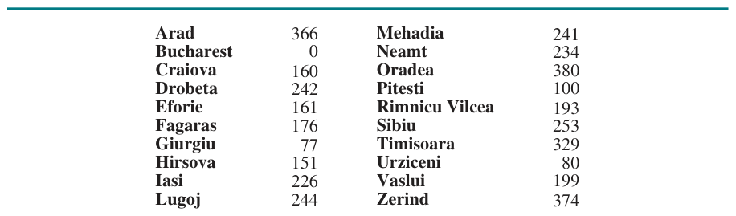
How to do it by hand手工操作方法
- Write \(h\) next to every node. Start with the frontier holding the start node.在每个结点旁写出 \(h\)。从边界中只含起始结点开始。
- Select the frontier node with the lowest \(h\). Break ties alphabetically and say so.从边界中选出 \(h\) 最小的结点。并列时按字母顺序打破，并说明这一点。
- If it is a goal, stop. Otherwise expand it: generate its neighbours and add those not yet reached to the frontier.如果它是目标，就停止。否则扩展它：生成它的邻居，并把尚未到达的邻居加入边界。
- Repeat from step 2. Do not re-add a state that was already reached (graph search).从第 2 步重复。不要重新加入已经到达过的状态（图搜索）。
- At the end read the path back through the parents and add up the edge costs.最后，沿父结点指针回溯得到路径，并把各边的代价加起来。
One complete trace完整演算一遍
Use this graph for the whole chapter. It is undirected, with edge costs S–A 2, S–B 3, S–D 6, A–G 9, B–C 2, C–G 3, D–G 4. The start is S and the goal is G. The heuristic values are \(h(S)=5\), \(h(A)=3\), \(h(B)=4\), \(h(C)=3\), \(h(D)=4\), \(h(G)=0\).整章都使用这张图。它是无向图，边代价为 S–A 2、S–B 3、S–D 6、A–G 9、B–C 2、C–G 3、D–G 4。起点是 S，目标是 G。启发式值分别为 \(h(S)=5\)、\(h(A)=3\)、\(h(B)=4\)、\(h(C)=3\)、\(h(D)=4\)、\(h(G)=0\)。
| Step步骤 | Node expanded扩展的结点 | \(g\) | \(h\) | \(f=h\) | Frontier after the step (node: \(f\))本步之后的边界（结点：\(f\)） |
|---|---|---|---|---|---|
| 1 | S | 0 | 5 | 5 | A: 3, B: 4, D: 4 |
| 2 | A | 2 | 3 | 3 | G: 0 (via A), B: 4, D: 4G：0（经 A），B：4，D：4 |
| 3 | G | 11 | 0 | 0 | goal selected, stop选中目标，停止 |
Solution path: S–A–G with cost \(2+9=11\). The cheapest path is S–B–C–G with cost \(3+2+3=8\) (Section 3.2), so greedy search is not cost-optimal. It chose A because \(h(A)=3\) is low, but the edge A–G costs 9. The cost \(g\) is shown in the table, but it never influences the choice.解路径为 S–A–G，代价为 \(2+9=11\)。最便宜的路径是 S–B–C–G，代价为 \(3+2+3=8\)（见第 3.2 节），所以贪婪搜索不是代价最优的。它选择 A 是因为 \(h(A)=3\) 较小，但边 A–G 的代价是 9。表中列出了代价 \(g\)，但它从不影响选择。

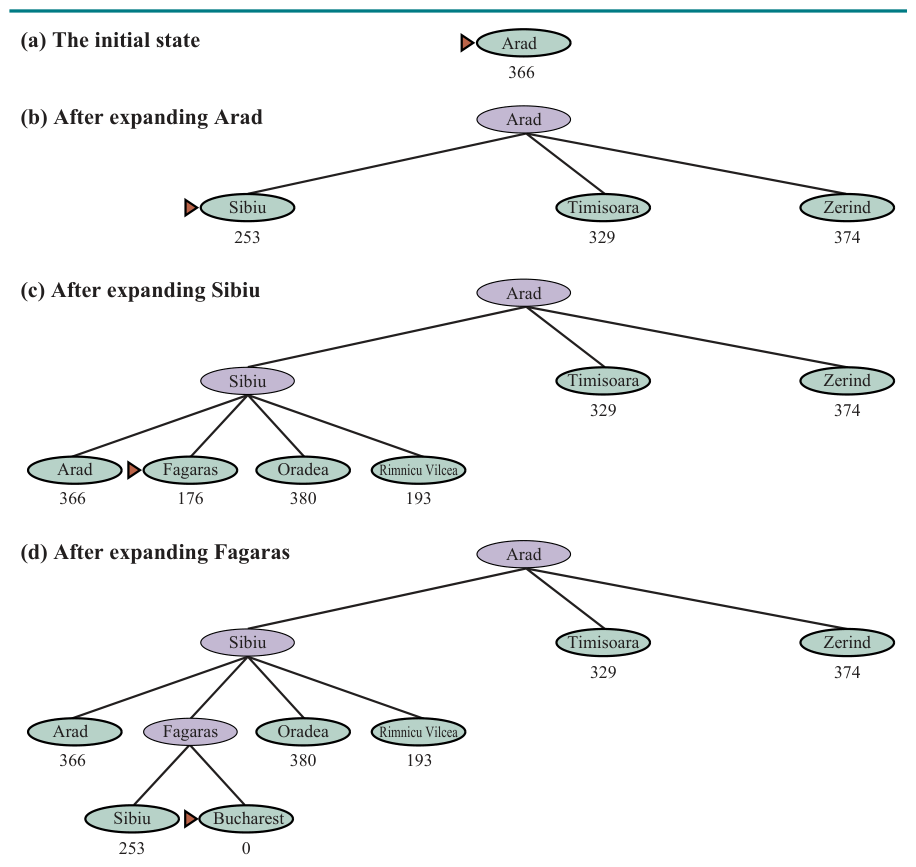
Properties:性质：
- It is not cost-optimal, even with an admissible \(h\) (Section 3.2). Example: from Arad to Bucharest, greedy search goes via Sibiu and Fagaras and pays \(140+99+211=450\). The route via Rimnicu Vilcea and Pitesti costs \(140+80+97+101=418\).即使启发式 \(h\) 可采纳，它也不是代价最优的（见第 3.2 节）。例如，从阿拉德到布加勒斯特，贪婪搜索经锡比乌和法加拉斯，付出的代价为 \(140+99+211=450\)；经里姆尼库沃尔恰和皮特什蒂的路线代价为 \(140+80+97+101=418\)。
- The graph-search version is complete in a finite state space. A version that does not remember reached states can loop forever.图搜索版本在有限状态空间中是完备的。不记住已到达状态的版本可能会永远循环下去。
- Worst-case time and space are \(O(\lvert V\rvert)\), where \(\lvert V\rvert\) is the number of states. With a good heuristic it can be much faster.最坏情况下的时间和空间为 \(O(\lvert V\rvert)\)，其中 \(\lvert V\rvert\) 是状态数。启发式好的时候，速度可以快得多。
Practice练习
Q1. (Trace) An undirected graph has edge costs S–A 2, A–D 2, S–B 3, B–G 5 and heuristic values \(h(S)=4\), \(h(A)=2\), \(h(D)=1\), \(h(B)=4\), \(h(G)=0\). (a) Run greedy best-first graph search from S to G: give the expansion order, the path and its cost. (b) What happens if the search does not remember reached states?Q1.（手工演算）无向图的边代价为 S–A 2、A–D 2、S–B 3、B–G 5，启发式值为 \(h(S)=4\)、\(h(A)=2\)、\(h(D)=1\)、\(h(B)=4\)、\(h(G)=0\)。(a) 从 S 到 G 运行贪婪最佳优先图搜索：给出扩展顺序、路径及其代价。(b) 若搜索不记住已到达的状态，会发生什么？
Answer
(a) Expand S: A (\(h=2\)) and B (\(h=4\)) join the frontier. Expand A (lowest \(h\)): D (\(h=1\)) joins. Expand D: its only neighbour A is already reached, so nothing is added. Expand B: G (\(h=0\)) joins and is selected next. Order S, A, D, B, then G; path S–B–G with cost \(3+5=8\). Two expansions were wasted on the dead end A–D.(a) 扩展 S：A（\(h=2\)）和 B（\(h=4\)）加入边界。扩展 A（\(h\) 最低）：D（\(h=1\)）加入。扩展 D：其唯一的邻居 A 已被到达，因此不增加任何结点。扩展 B：G（\(h=0\)）加入，并被选中。扩展顺序为 S、A、D、B，然后是 G；路径 S–B–G，代价为 \(3+5=8\)。两次扩展被浪费在死胡同 A–D 上。
(b) Without a reached table, D regenerates A (\(h=2\)), which is lower than B (\(h=4\)). The search alternates A, D, A, D, … and never expands B, so it does not terminate.(b) 若没有已到达集合，D 会重新生成 A（\(h=2\)），而 A 的值低于 B（\(h=4\)）。搜索会在 A、D、A、D……之间交替，从不扩展 B，因此不会终止。
思路：贪心只比较 h，死胡同里的节点 h 很小，会被反复选中；reached 表防止重复。
Q2. (True/false) "Greedy best-first search with an admissible heuristic returns an optimal solution." Justify.Q2.（判断）“采用可采纳启发式的贪婪最佳优先搜索会返回最优解。”判断其真假并说明理由。
Answer
False. \(h_{\text{SLD}}\) is admissible, yet greedy search from Arad returns the path via Sibiu and Fagaras with cost 450, while the optimal path via Rimnicu Vilcea and Pitesti costs 418. Greedy search orders nodes by \(h\) alone and ignores the cost \(g\) already paid; admissibility guarantees optimality only for A*.错误。\(h_{\text{SLD}}\) 是可采纳的，但从 Arad 出发的贪婪搜索返回经由 Sibiu 和 Fagaras、代价为 450 的路径，而经由 Rimnicu Vilcea 和 Pitesti 的最优路径代价为 418。贪婪搜索仅按 \(h\) 对结点排序，忽略了已经付出的代价 \(g\)；可采纳性仅对 A* 保证最优性。
A* search: admissibility and consistency ★★★A* 搜索：可采纳性与一致性 ★★★
Goal. Trace A* by hand with \(g\), \(h\) and \(f\) at every step, check whether a heuristic is admissible and consistent on a given graph, and sketch why A* is optimal.目标。 用手工演算 A*，每一步都写出 \(g\)、\(h\) 和 \(f\)；在给定的图上检查启发式是否可采纳、是否一致；并概述 A* 为什么是最优的。
In words: A = expand the node with the lowest cost paid so far plus guessed cost still to go*.用文字表述：A* = 扩展“已付出代价加上估计剩余代价”最小的结点。
A* search（A* 搜索）is best-first search with this evaluation function.A* 搜索是使用这个评价函数的最佳优先搜索。
Step 1: tracing A* by hand第 1 步：手工演算 A*
How to do it by hand:手工做法：
- Put the start node on the frontier with \(g=0\) and \(f=h\).把起始结点放入边界，并写上 \(g=0\) 与 \(f=h\)。
- Select the frontier node with the lowest \(f\). Break ties alphabetically and say so.从边界中选出 \(f\) 最小的结点。并列时按字母顺序打破，并说明这一点。
- If it is a goal, stop. The path to it is the answer.如果它是目标，就停止。到它的路径就是答案。
- Otherwise expand it. For each neighbour compute \(g=g(\text{parent})+\text{edge cost}\) and \(f=g+h\).否则扩展它。对每个邻居计算 \(g=g(\text{parent})+\text{edge cost}\) 和 \(f=g+h\)。
- If the neighbour is new, add it. If it is on the frontier with a larger \(g\), replace it by the cheaper path. If it was already expanded with a smaller or equal \(g\), ignore it.如果邻居是新的，就加入边界。如果它已在边界上，而且 \(g\) 较大，就用更便宜的路径替换它。如果它已经以更小或相等的 \(g\) 被扩展过，就忽略它。
- Repeat from step 2.从第 2 步重复。
Run it on the graph of Section 3.1.在第 3.1 节的图上运行它。
| Step步骤 | Node expanded扩展的结点 | \(g\) | \(h\) | \(f=g+h\) | Frontier after the step (node: \(f\))本步之后的边界（结点：\(f\)） |
|---|---|---|---|---|---|
| 1 | S | 0 | 5 | 5 | A: 5, B: 7, D: 10 |
| 2 | A | 2 | 3 | 5 | B: 7, D: 10, G: 11 (via A)B：7，D：10，G：11（经 A） |
| 3 | B | 3 | 4 | 7 | C: 8, D: 10, G: 11 |
| 4 | C | 5 | 3 | 8 | G: 8 (via C, replaces 11), D: 10G：8（经 C，替换 11），D：10 |
| 5 | G | 8 | 0 | 8 | goal selected, stop选中目标，停止 |
Solution path: S–B–C–G with cost \(3+2+3=8\). Check of step 4: G via C has \(g=5+3=8\) and \(f=8+0=8\), which is lower than 11, so the entry is replaced.解路径为 S–B–C–G，代价为 \(3+2+3=8\)。第 4 步的检查：经 C 到达 G 的 \(g=5+3=8\) 与 \(f=8+0=8\) 低于 11，因此替换原来的条目。
G was generated in step 2 with \(f=11\) but not selected, because B and C had lower \(f\). The goal test at selection is what makes the answer optimal. The node \(D\) is never expanded, because \(f(D)=10>8\). Greedy search on the same graph returned cost 11.G 在第 2 步以 \(f=11\) 生成，但没有被选中，因为 B 和 C 的 \(f\) 更低。正是选中时的目标测试，使得答案是最优的。结点 \(D\) 从不被扩展，因为 \(f(D)=10>8\)。在同一张图上，贪婪搜索返回的代价是 11。
On the Romania map the same rule gives the same effect. Bucharest first enters the frontier via Fagaras with \(f=450\). Pitesti has \(f=417\), so it is expanded first and generates Bucharest again with \(f=418\).在罗马尼亚地图上，同样的规则也产生同样的效果。布加勒斯特首先经法加拉斯以 \(f=450\) 进入边界。皮特什蒂具有 \(f=417\)，所以它先被扩展，并以 \(f=418\) 再次生成布加勒斯特。

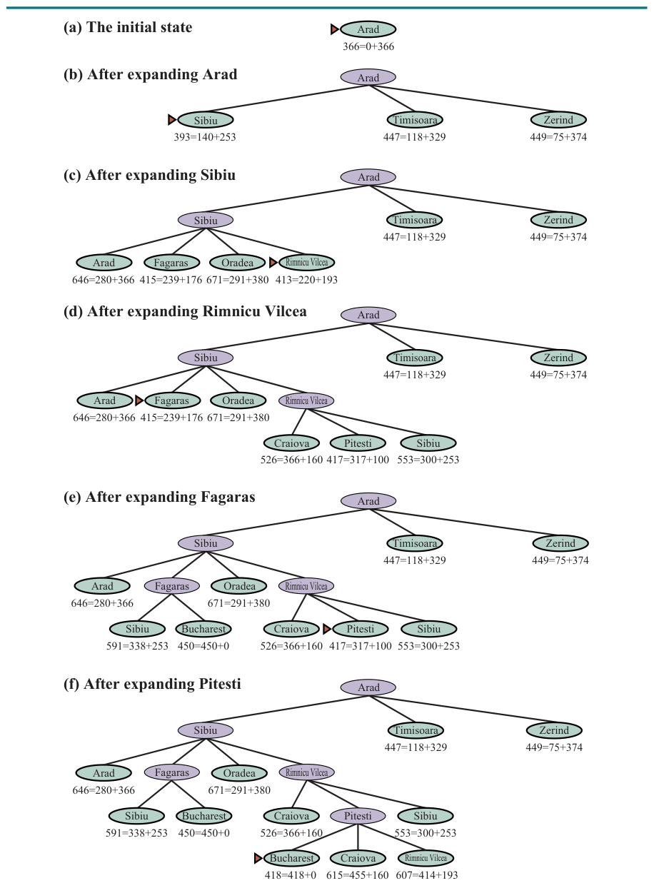
Step 2: admissible and consistent heuristics第 2 步：可采纳与一致的启发式
In words: admissible = the guess is never higher than the true remaining cost, so it is optimistic.用文字表述：可采纳 = 猜测值从不高于真实的剩余代价，所以它是乐观的。
A heuristic is admissible（可采纳的）if it never overestimates the cost to reach a goal.如果一个启发式从不高估到达目标的代价，它就是可采纳的。
In words: consistent = along every edge, the guess drops by no more than the cost of that edge.用文字表述：一致 = 沿着每条边，猜测值下降的幅度不超过该边的代价。
A heuristic is consistent（一致的）, also called monotonic, if the triangle inequality holds on every edge.如果三角不等式在每条边上都成立，这个启发式就是一致的，也称为单调的。

How to check by hand:手工检查的方法：
- Admissible: find \(h^*\) at every node (shortest path to the goal, working back from the goal) and compare with \(h\).可采纳：求出每个结点处的 \(h^*\)（即到目标的最短路径，从目标反向推算），并与 \(h\) 比较。
- Consistent: for every edge write the test \(h(n)\le c+h(n')\). On an undirected edge test both directions.一致：对每条边写出检验 \(h(n)\le c+h(n')\)。对于无向边，两个方向都要检验。
- One failed edge means "not consistent". One failed node means "not admissible".只要有一条边不成立，就说明“不一致”。只要有一个结点不成立，就说明“不可采纳”。
Numeric check on the graph of Section 3.1.在第 3.1 节的图上做数值检验。
| Node结点 | \(h\) | \(h^*\) | \(h\le h^*\) |
|---|---|---|---|
| S | 5 | 8 (S–B–C–G) | yes是 |
| A | 3 | 9 (A–G) | yes是 |
| B | 4 | 5 (B–C–G) | yes是 |
| C | 3 | 3 (C–G) | yes是 |
| D | 4 | 4 (D–G) | yes是 |
| Edge边 | Test \(h(n)\le c+h(n')\)检验 \(h(n)\le c+h(n')\) | Test in the other direction反方向的检验 |
|---|---|---|
| S–A (2) | \(5\le2+3=5\), holds\(5\le2+3=5\)，成立 | \(3\le2+5=7\), holds\(3\le2+5=7\)，成立 |
| S–B (3) | \(5\le3+4=7\), holds\(5\le3+4=7\)，成立 | \(4\le3+5=8\), holds\(4\le3+5=8\)，成立 |
| S–D (6) | \(5\le6+4=10\), holds\(5\le6+4=10\)，成立 | \(4\le6+5=11\), holds\(4\le6+5=11\)，成立 |
| A–G (9) | \(3\le9+0=9\), holds\(3\le9+0=9\)，成立 | \(0\le9+3\), holds\(0\le9+3\)，成立 |
| B–C (2) | \(4\le2+3=5\), holds\(4\le2+3=5\)，成立 | \(3\le2+4=6\), holds\(3\le2+4=6\)，成立 |
| C–G (3) | \(3\le3+0=3\), holds\(3\le3+0=3\)，成立 | \(0\le3+3\), holds\(0\le3+3\)，成立 |
| D–G (4) | \(4\le4+0=4\), holds\(4\le4+0=4\)，成立 | \(0\le4+4\), holds\(0\le4+4\)，成立 |
So \(h\) is admissible and consistent.因此 \(h\) 既可采纳又一致。
Now a heuristic that is admissible but not consistent. A directed graph has edges S→A 1, S→B 4, A→B 1, B→G 4 and \(h(S)=5\), \(h(A)=5\), \(h(B)=1\), \(h(G)=0\). The true costs are \(h^*(S)=6\), \(h^*(A)=5\), \(h^*(B)=4\), so \(h\le h^*\) everywhere: admissible. On the edge A→B the test is \(h(A)=5\le c(A,B)+h(B)=1+1=2\). It fails, so \(h\) is not consistent.现在看一个可采纳但不一致的启发式。有向图的边为 S→A 1、S→B 4、A→B 1、B→G 4，以及 \(h(S)=5\)、\(h(A)=5\)、\(h(B)=1\)、\(h(G)=0\)。真实代价分别为 \(h^*(S)=6\)、\(h^*(A)=5\)、\(h^*(B)=4\)，因此 \(h\le h^*\) 在每个结点上都成立，所以它可采纳。在边 A→B 上，检验为 \(h(A)=5\le c(A,B)+h(B)=1+1=2\)。它不成立，所以 \(h\) 不一致。
Step 3: why A* is optimal第 3 步：为什么 A* 是最优的
Theorem. If \(h\) is admissible, A* is cost-optimal. Proof sketch, by contradiction. Suppose A* returns a path of cost \(C>C^*\).定理。 如果 \(h\) 可采纳，则 A* 是代价最优的。证明概要（反证法）。假设 A* 返回了一条代价为 \(C>C^*\) 的路径。
- Some node \(n\) on an optimal path is still unexpanded. Otherwise the optimal solution would have been found.最优路径上的某个结点 \(n\) 仍未被扩展。否则，最优解早就找到了。
- A* selected a goal with \(f=C\) instead of \(n\), so \(f(n)\ge C>C^*\).A* 选中了一个具有 \(f=C\) 的目标，而非 \(n\)，因此 \(f(n)\ge C>C^*\)。
- The node \(n\) lies on an optimal path, so \(g(n)=g^*(n)\). Admissibility gives \(f(n)=g^*(n)+h(n)\le g^*(n)+h^*(n)=C^*\).结点 \(n\) 位于最优路径上，所以 \(g(n)=g^*(n)\)。可采纳性给出 \(f(n)=g^*(n)+h(n)\le g^*(n)+h^*(n)=C^*\)。
Steps 2 and 3 contradict each other. So A* cannot return a suboptimal path.证明中的第 2 步与第 3 步相互矛盾。所以 A* 不可能返回次优路径。
What consistency adds: going from \(n\) to \(n'\) changes \(f\) from \(g(n)+h(n)\) to \(g(n)+c(n,a,n')+h(n')\). So \(f\) never decreases along a path if and only if \(h\) is consistent. Then the first path found to a state is optimal, and no state is re-added or re-expanded. With an admissible but inconsistent \(h\), graph-search A* must reopen a state when it finds a cheaper path to it.一致性带来的好处：从 \(n\) 走到 \(n'\) 时，\(f\) 从 \(g(n)+h(n)\) 变为 \(g(n)+c(n,a,n')+h(n')\)。因此，当且仅当 \(h\) 一致时，\(f\) 沿路径永不减小。这时，第一次找到某个状态的路径就是最优的，任何状态都不需要被重新加入或重新扩展。如果启发式 \(h\) 可采纳但不一致，图搜索的 A* 在找到通向某状态的更便宜路径时，必须重新打开该状态。
The Q2 graph shows this. If A* re-adds B when it is reached again with \(g=2<4\), it returns S–A–B–G with cost 6. If it never reopens expanded states, it returns S–B–G with cost 8.Q2 的图说明了这一点。如果 A* 在以 \(g=2<4\) 再次到达 B 时把 B 重新加入，它返回 S–A–B–G，代价为 6。如果它从不重新打开已扩展的状态，它返回 S–B–G，代价为 8。
Practice练习
Q1. (Proof) Prove that every consistent heuristic is admissible.Q1.（证明）证明每个一致的启发式都是可采纳的。
Answer
Let \(h\) be consistent. We show \(h(n)\le h^*(n)\) by induction on the number \(k\) of steps of an optimal path from \(n\) to a goal. For \(k=0\), \(n\) is a goal, so \(h(n)=0=h^*(n)\). For \(k>0\), let the optimal path leave \(n\) by action \(a\) to \(n'\), which is \(k-1\) steps from the goal, so \(h(n')\le h^*(n')\) by the induction hypothesis. Then \[h(n)\le c(n,a,n')+h(n')\le c(n,a,n')+h^*(n')=h^*(n).\]设 \(h\) 为一致的。我们对从 \(n\) 到某个目标的最优路径的步数 \(k\) 作归纳，来证明 \(h(n)\le h^*(n)\)。对于 \(k=0\)，\(n\) 是目标，因此 \(h(n)=0=h^*(n)\)。对于 \(k>0\)，设最优路径经动作 \(a\) 由 \(n\) 到达 \(n'\)，该状态距目标为 \(k-1\) 步，因此由归纳假设得 \(h(n')\le h^*(n')\)。于是 \[h(n)\le c(n,a,n')+h(n')\le c(n,a,n')+h^*(n')=h^*(n).\]
思路：对“离目标的步数”做归纳，一步一步把一致性不等式连起来。
Q2. (Trace) A directed graph has edges S→A 1, S→B 4, A→B 1, B→G 4 and \(h(S)=5\), \(h(A)=5\), \(h(B)=1\), \(h(G)=0\). (a) Show that \(h\) is admissible but not consistent. (b) Trace A* graph search that re-adds a state when it finds a cheaper path. (c) What does A* return if it never reopens expanded states?Q2.（手工演算）有向图的边为 S→A 1、S→B 4、A→B 1、B→G 4，启发式为 \(h(S)=5\)、\(h(A)=5\)、\(h(B)=1\)、\(h(G)=0\)。(a) 证明 \(h\) 是可采纳的，但不是一致的。(b) 手工演算一个图搜索 A*，它在找到更便宜的路径时会重新加入某个状态。(c) 若 A* 从不重新打开已扩展的状态，它返回什么？
Answer
(a) \(h^*(S)=6\), \(h^*(A)=5\), \(h^*(B)=4\), so \(h\le h^*\) everywhere: admissible. On edge A→B, \(h(A)=5>c(A,B)+h(B)=1+1=2\): not consistent.(a) \(h^*(S)=6\)、\(h^*(A)=5\)、\(h^*(B)=4\)，因此处处都有 \(h\le h^*\)：可采纳。在边 A→B 上，\(h(A)=5>c(A,B)+h(B)=1+1=2\)：不一致。
(b) Select S (\(g=0\), \(f=5\)): generate A (\(g=1\), \(f=6\)) and B (\(g=4\), \(f=5\)). Select B (5): generate G (\(g=8\), \(f=8\)). Select A (6): B is reached again with \(g=2<4\), so B is updated (\(f=2+1=3\)). Select B again (3): G now has \(g=6\), \(f=6\), replacing 8. Select G: cost 6, path S–A–B–G. B was expanded twice.(b) 选择 S（\(g=0\)，\(f=5\)）：生成 A（\(g=1\)，\(f=6\)）和 B（\(g=4\)，\(f=5\)）。选择 B（5）：生成 G（\(g=8\)，\(f=8\)）。选择 A（6）：B 再次被到达，其值为 \(g=2<4\)，因此 B 被更新（为 \(f=2+1=3\)）。再次选择 B（3）：G 现在具有 \(g=6\)、\(f=6\)，替换了 8。选择 G：代价为 6，路径 S–A–B–G。B 被扩展了两次。
(c) After A is expanded, B is already closed, so the cheaper path to B is ignored. The frontier holds only G (\(f=8\)): A* returns S–B–G with cost 8, which is not optimal.(c) 扩展 A 之后，B 已关闭，因此忽略通往 B 的更便宜路径。边界中只有 G（\(f=8\)）：A* 返回 S–B–G，代价为 8，它不是最优的。
易错：只有 h 一致时，“已扩展的状态不再回头”才是安全的。
Q3. (True/false) (a) A* with \(h(n)=0\) for all \(n\) is uniform-cost search. (b) With the perfect heuristic \(h=h^*\), A* expands only nodes on optimal paths. Justify.Q3.（判断）判断下列陈述的真假并说明理由：(a) 对所有 \(n\)，取 \(h(n)=0\) 的 A* 即为一致代价搜索。(b) 若启发式为完美的 \(h=h^*\)，则 A* 只扩展最优路径上的结点。
Answer
(a) True: \(f=g\), so the frontier is ordered by path cost. (b) True. Every node \(n\) has \(f(n)=g(n)+h^*(n)\ge C^*\), with equality only if \(n\) lies on an optimal path and is reached by an optimal prefix. A* never expands a node with \(f>C^*\), so it expands only nodes on optimal paths.(a) 为真：\(f=g\)，因此边界按路径代价排序。(b) 为真。每个结点 \(n\) 都满足 \(f(n)=g(n)+h^*(n)\ge C^*\)，且仅当 \(n\) 位于最优路径上并由最优前缀到达时等号成立。A* 从不扩展满足 \(f>C^*\) 的结点，因此它只扩展最优路径上的结点。
Behaviour of A*, inadmissible heuristics and weighted A* ★★A* 的行为、不可采纳的启发式与加权 A* ★★
Goal. Say which nodes A* expands, compare A* with uniform-cost search, and use weighted A* with its cost bound.目标。 说明 A* 扩展哪些结点，把 A* 与一致代价搜索进行比较，并利用加权 A* 的代价界。
In words: A expands every node whose \(f\) is below the optimal cost, and none whose \(f\) is above it*.用文字表述：A* 会扩展每个 \(f\) 低于最优代价的结点，而不会扩展任何 \(f\) 高于最优代价的结点。
Let \(C^*\) be the optimal cost. Drawing the states whose \(f\) is at most a given value gives contours（等高线）. A* expands nodes in bands of increasing \(f\). With a good heuristic the bands stretch towards the goal. With a consistent \(h\) the bands never cross.设 \(C^*\) 为最优代价。把 \(f\) 不超过某个给定值的状态画出来，就得到等高线。A* 按 \(f\) 递增的带状区域扩展结点。启发式好的时候，这些带会向目标方向伸展。对于一致的 \(h\)，这些带不会相互交叉。

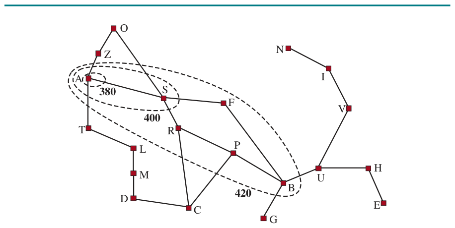
A* expands every surely expanded node, that is, a node reachable along a path whose nodes all have \(f<C^*\). It may expand nodes with \(f=C^*\). It never expands a node with \(f>C^*\). With a consistent heuristic A* is optimally efficient（最优效率）: every algorithm that extends paths from the start with the same heuristic must expand the surely expanded nodes. A* does not examine the other nodes at all. This is pruning（剪枝）.A* 会扩展每个必然被扩展的结点，也就是说，沿着一条所有结点都满足 \(f<C^*\) 的路径可以到达的结点。它可能扩展满足 \(f=C^*\) 的结点，但从不扩展满足 \(f>C^*\) 的结点。对于一致的启发式，A* 是最优效率的：凡是用同一启发式从起点延伸路径的算法，都必须扩展这些必然被扩展的结点。A* 根本不去检查其他结点。这就是剪枝。
A* is not cheap. The number of expanded nodes can be exponential in the solution length, and A* stores every generated node, so memory runs out first.A* 并不便宜。扩展的结点数可能随解的长度呈指数增长，而且 A* 会保存生成的每个结点，所以内存会先耗尽。
An inadmissible heuristic may overestimate. A* may then miss the optimum, but it expands fewer nodes. This is satisficing（满意解）search.不可采纳的启发式可能会高估。这时 A* 可能错过最优解，但它扩展的结点更少。这就是满意解搜索。
Weighted A* search（加权 A*）weights the heuristic more heavily.加权 A* 搜索对启发式赋予更大的权重。
Weighted A* explores fewer states, but an optimal path that leaves its focused contour is missed. Example: if it returns cost 52 with \(W=1.5\), then \(C^*\le52\le1.5\,C^*\), so \(34.7\le C^*\le52\).加权 A* 探索的状态更少，但离开其聚焦等高线的最优路径会被错过。例如，如果它以 \(W=1.5\) 返回代价 52，那么 \(C^*\le52\le1.5\,C^*\)，因此 \(34.7\le C^*\le52\)。
Practice练习
Q1. (Calculation) On the graph of the hand-trace example (Section 3.2), run weighted A* with \(f=g+W\,h\) for \(W=1.5\) and \(W=3\). Give the path and cost, check the bound \(W\,C^*\), and find for which \(W\) the result is optimal.Q1.（计算）在手工演算示例（第 3.2 节）的图上，以 \(f=g+W\,h\) 为 \(W=1.5\) 与 \(W=3\) 运行加权 A*。给出路径与代价，检验界 \(W\,C^*\)，并求出使结果最优的 \(W\) 取值。
Answer
After S, node A is always selected next (\(f=2+3W\)) and generates G via A with \(f=11\) (cost 11). Node B has \(f=3+4W\).S 之后总是先选中结点 A（\(f=2+3W\)），它经由 A 以 \(f=11\) 生成 G（代价为 11）。结点 B 具有 \(f=3+4W\)。
\(W=1.5\): \(f(A)=6.5\), \(f(B)=9\), \(f(D)=12\). A gives G (\(f=11\)); B (\(9<11\)) gives C (\(f=5+4.5=9.5\)); C gives G via C (\(f=8\)), which replaces 11 and is selected. Result S–B–C–G, cost \(8=C^*\).\(W=1.5\)：\(f(A)=6.5\)、\(f(B)=9\)、\(f(D)=12\)。A 生成 G（\(f=11\)）；B（\(9<11\)）生成 C（\(f=5+4.5=9.5\)）；C 经由 C 生成 G（\(f=8\)），它替换了 11 并被选中。结果为 S–B–C–G，代价为 \(8=C^*\)。
\(W=3\): \(f(A)=11\), \(f(B)=15\), \(f(D)=18\). A gives G (\(f=11\)), which beats B (15). Result S–A–G, cost \(11\le W\,C^*=24\): within the bound but not optimal.\(W=3\)：\(f(A)=11\)、\(f(B)=15\)、\(f(D)=18\)。A 生成 G（\(f=11\)），它优于 B（15）。结果为 S–A–G，代价为 \(11\le W\,C^*=24\)：在界之内，但不是最优的。
B is selected before G if \(3+4W<11\), i.e. \(W<2\) (and then C comes before G as well). So the result is optimal for \(1\le W<2\) on this graph; at \(W=2\) there is a tie.若 \(3+4W<11\)，即 \(W<2\)，则 B 会先于 G 被选中（此时 C 也会先于 G）。因此，对于该图上的 \(1\le W<2\)，结果是最优的；在 \(W=2\) 时存在平局。
Q2. (Reasoning) Weighted A* with \(W=1.5\) and an admissible heuristic returns a solution of cost 52. What can you say about the optimal cost \(C^*\)?Q2.（推理）以 \(W=1.5\) 运行的加权 A*（启发式可采纳）返回代价为 52 的解。关于最优代价 \(C^*\)，你能得出什么结论？
Answer
The returned cost lies in \([C^*,\,1.5\,C^*]\), so \(C^*\le52\le1.5\,C^*\), i.e. \(34.7\le C^*\le52\). A bounded suboptimal search therefore certifies how far its answer can be from the optimum without knowing \(C^*\).返回的代价位于 \([C^*,\,1.5\,C^*]\) 之内，因此 \(C^*\le52\le1.5\,C^*\)，即 \(34.7\le C^*\le52\)。因此，有界次优搜索能在不知道 \(C^*\) 的情况下，证明其答案与最优解之间的差距范围。
Memory-bounded and bidirectional heuristic search ★★有内存限制的启发式搜索与双向启发式搜索 ★★
Goal. Say what IDA*, RBFS, SMA* and beam search store and what their weakness is, and trace IDA* on a small graph.目标。 说明 IDA*、RBFS、SMA* 和束搜索各自存储什么，它们的弱点是什么，并在小图上演算 IDA*。
In words: these algorithms keep A within a small memory by re-doing work or by dropping nodes*.用文字表述：这些算法通过重复计算或丢弃结点，把 A* 限制在较小的内存之内。
A* keeps the frontier and all reached states, so memory is its main limit.A* 保存边界以及所有已到达的状态，所以内存是它的主要限制。
| Algorithm算法 | Idea思想 | Space空间 | Properties性质 | Weakness缺点 |
|---|---|---|---|---|
| Beam search（束搜索） | keep only the \(k\) frontier nodes with the best \(f\) (or all within \(\delta\) of the best)只保留 \(f\) 最好的 \(k\) 个边界结点（或保留所有与最优值相差在 \(\delta\) 之内的结点） | \(O(k)\) | incomplete, not optimal不完备，不最优 | may drop the path to the goal可能丢弃通往目标的路径 |
| IDA*（迭代加深 A*） | depth-first search with an \(f\) cutoff; next cutoff = smallest \(f\) above the old one以 \(f\) 为截断值的深度优先搜索；下一个截断值 = 大于旧截断值的最小 \(f\) | linear线性 | complete; optimal if \(h\) admissible完备；若 \(h\) 可采纳则最优 | revisits states in every iteration每次迭代都会重新访问状态 |
| RBFS（递归最佳优先搜索） | depth-first-like; \(f_{\text{limit}}\) = best alternative \(f\) of any ancestor; back up the best \(f\) of a forgotten subtree类深度优先；\(f_{\text{limit}}\) 为任一祖先的最佳备选 \(f\)；回传被遗忘子树的最佳 \(f\) | linear线性 | optimal if \(h\) admissible若 \(h\) 可采纳则最优 | "changes its mind", regenerates nodes, ignores spare memory“改变主意”，会重新生成结点，忽略剩余内存 |
| SMA*（简化内存受限 A*） | A* until memory is full, then delete the worst leaf (highest \(f\)) and back its \(f\) up to the parentA* 直到内存用尽，然后删除最差的叶结点（\(f\) 最高者），并将其 \(f\) 回传给父结点 | all available利用全部可用内存 | complete if a solution fits in memory; optimal if an optimal one fits若解能放入内存则完备；若最优解能放入内存则最优 | thrashing抖动 |
How to trace IDA* by hand:手工演算 IDA* 的方法：
- Set the cutoff to \(f(\text{start})=h(\text{start})\).把截断值设为 \(f(\text{start})=h(\text{start})\)。
- Search depth-first. Do not expand a node whose \(f=g+h\) is above the cutoff. Note the smallest \(f\) that was above the cutoff.用深度优先方式搜索。不扩展 \(f=g+h\) 高于截断值的结点。记下超过截断值的最小 \(f\)。
- If a goal with \(f\le\) cutoff is found, stop. Otherwise the new cutoff is the smallest noted \(f\). Repeat from step 2.如果找到了 \(f\le\) 不超过截断值的目标，就停止。否则，新的截断值是记下的最小 \(f\)。从第 2 步重复。
Example on the graph of Section 3.1: the cutoffs are 5, 7 and 8, and the answer is S–B–C–G with cost 8 (Practice Q1). IDA* stores only the current path and the cutoff, so its memory is linear. With integer costs it needs at most about \(C^*\) iterations.以第 3.1 节的图为例：截断值依次为 5、7 和 8，答案是代价为 8 的 S–B–C–G（练习 Q1）。IDA* 只存储当前路径和截断值，所以它的内存是线性的。在整数代价下，它最多需要大约 \(C^*\) 次迭代。
RBFS follows the best path until its \(f\) exceeds the best alternative of any ancestor. It then backs up the best \(f\) of the forgotten subtree into the abandoned node. SMA* expands the newest best leaf and deletes the worst leaf, and on hard problems it thrashes（抖动）.RBFS 沿着最好的路径走，直到其 \(f\) 超过任何祖先的最好备选者。然后它把被遗忘子树中最好的 \(f\) 回传到被放弃的结点上。SMA* 扩展最新的最优叶结点，删除最差的叶结点；在难题上，它会抖动。
Bidirectional best-first search keeps a forward frontier and a backward frontier. The next evaluation function restores optimality.双向最佳优先搜索同时保存正向边界和反向边界。下面这个评价函数可以恢复最优性。
Practice练习
Q1. (Trace) Run IDA* on the graph of the hand-trace example (Section 3.2), visiting children in alphabetical order. Give the cutoff of each iteration, the nodes expanded, and the result.Q1.（手工演算）在手工演算示例（第 3.2 节）的图上运行 IDA*，按字母顺序访问子结点。给出每次迭代的截断值、扩展的结点以及结果。
Answer
Iteration 1, cutoff \(f(S)=5\): expand S and A (\(f=5\)). B (7), D (10) and G via A (11) exceed the cutoff; the new cutoff is \(\min=7\).第 1 次迭代，截断值 \(f(S)=5\)：扩展 S 和 A（\(f=5\)）。B（7）、D（10）以及经由 A 的 G（11）超过了截断值；新的截断值为 \(\min=7\)。
Iteration 2, cutoff 7: expand S, A, B. C (8), D (10) and G via A (11) exceed it; the new cutoff is 8.第 2 次迭代，截断值 7：扩展 S、A、B。C（8）、D（10）以及经由 A 的 G（11）超过了它；新的截断值为 8。
Iteration 3, cutoff 8: expand S, A, B, C; G via C has \(f=8\le8\): goal. Path S–B–C–G, cost 8.第 3 次迭代，截断值 8：扩展 S、A、B、C；经由 C 的 G 具有 \(f=8\le8\)：为目标。路径 S–B–C–G，代价为 8。
IDA* used 3 iterations and \(2+3+4=9\) expansions (A* needs 4) but only linear memory.IDA* 共用了 3 次迭代和 \(2+3+4=9\) 次扩展（A* 需要 4 次），但只需线性内存。
Q2. (Identify) Name the algorithm: (a) it stores only one number between iterations; (b) it backs up the \(f\)-value of a forgotten subtree and uses linear space; (c) it uses all available memory and drops the highest-\(f\) leaf; (d) it keeps only the \(k\) best frontier nodes and is incomplete.Q2.（辨别）指出下列各项对应的算法：(a) 它在迭代之间只保存一个数；(b) 它回传被遗忘子树的 \(f\) 值，并使用线性空间；(c) 它使用全部可用内存，并丢弃 \(f\) 最高的叶结点；(d) 它只保留 \(k\) 个最优的边界结点，且不完备。
Answer
(a) IDA*. (b) RBFS. (c) SMA*. (d) Beam search.(a) IDA*。(b) RBFS。(c) SMA*。(d) 束搜索。
Heuristic accuracy: effective branching factor and dominance ★★★启发式的准确性：有效分支因子与占优 ★★★
Goal. Compute two 8-puzzle heuristics, compute the effective branching factor from a node count, and decide by dominance which heuristic is better.目标。 计算两个八数码启发式，由结点数计算有效分支因子，并利用占优关系判断哪个启发式更好。
Two standard admissible heuristics for the 8-puzzle:八数码问题的两个标准可采纳启发式：
- \(h_1\) = the number of misplaced tiles (the blank is not counted). It is admissible, because each misplaced tile needs at least one move.\(h_1\) 为错位方块的个数（不计空格）。它是可采纳的，因为每个错位的方块至少需要一步移动。
- \(h_2\) = the sum of the Manhattan distances of the tiles from their goal squares. It is admissible, because one move shifts one tile by one square.\(h_2\) 为各方块到其目标格子的曼哈顿距离之和。它是可采纳的，因为一步移动只把一个方块移动一格。

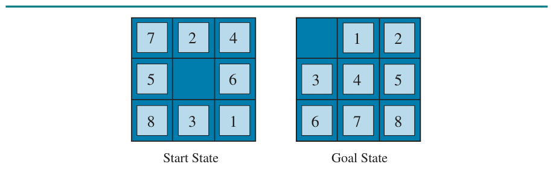
Step 1: effective branching factor第 1 步：有效分支因子
In words: the effective branching factor = the branching factor of a uniform tree that is just big enough to hold all nodes the search generated.用文字表述：有效分支因子 = 恰好能容纳搜索所生成的全部结点的均匀树的分支因子。
If A* generates \(N\) nodes for a solution at depth \(d\), the effective branching factor（有效分支因子）\(b^*\) is the branching factor of a uniform tree of depth \(d\) with \(N+1\) nodes.如果 A* 为深度为 \(d\) 的解生成了 \(N\) 个结点，那么有效分支因子 \(b^*\) 就是深度为 \(d\)、共有 \(N+1\) 个结点的均匀树的分支因子。
How to do it by hand:手工做法：
- Write \(N+1\) and the sum \(1+b+b^2+\dots+b^d\).写出 \(N+1\) 和和式 \(1+b+b^2+\dots+b^d\)。
- Try a value of \(b\) and compute the sum.试取一个 \(b\) 的值，计算这个和。
- If the sum is below \(N+1\), raise \(b\). If above, lower \(b\). Stop at the required number of decimals.如果和式低于 \(N+1\)，就提高 \(b\)；如果高于它，就降低 \(b\)。当达到所需的小数位数时停止。
Example: \(d=5\), \(N=52\), so \(N+1=53\). For \(b=1.90\) the sum is 51.16, which is too low. For \(b=1.92\) it is 53.37, which is a little high. So \(b^*\approx1.92\).例如：\(d=5\)、\(N=52\)，所以 \(N+1=53\)。对于 \(b=1.90\)，和式为 51.16，偏低。对于 \(b=1.92\)，和式为 53.37，略微偏高。所以 \(b^*\approx1.92\)。

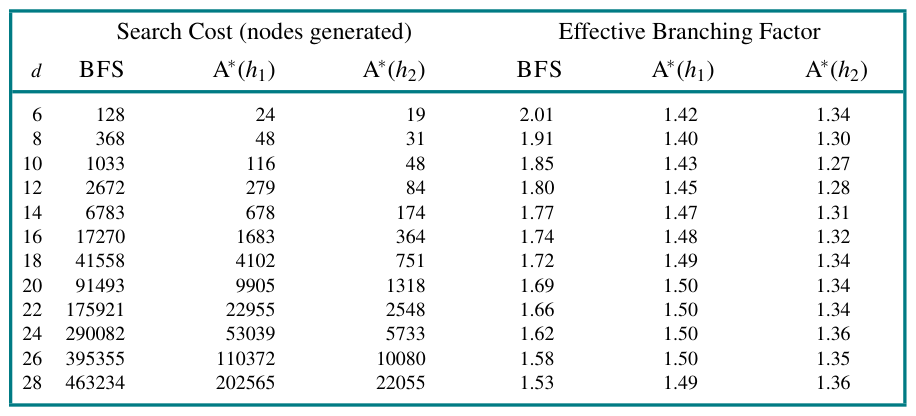
For \(d=24\), breadth-first search generates 290,082 nodes (\(b^*=1.62\)), A* with \(h_1\) generates 53,039 (\(b^*=1.50\)) and A* with \(h_2\) generates 5,733 (\(b^*=1.36\)).对于 \(d=24\)，广度优先搜索生成 290,082 个结点（\(b^*=1.62\)），用 \(h_1\) 的 A* 生成 53,039 个（\(b^*=1.50\)），用 \(h_2\) 的 A* 生成 5,733 个（\(b^*=1.36\)）。
Step 2: dominance第 2 步：占优
In words: \(h_2\) dominates \(h_1\) when \(h_2\) is at least as large as \(h_1\) at every node; with both admissible, the larger one is better.用文字表述：当 \(h_2\) 在每个结点上都不小于 \(h_1\) 时，\(h_2\) 占优于 \(h_1\)；二者都可采纳时，较大的那个更好。
If \(h_2(n)\ge h_1(n)\) for all \(n\), then \(h_2\) dominates（占优）\(h_1\). This holds for the two 8-puzzle heuristics, since a misplaced tile has Manhattan distance at least 1. Then A* with \(h_2\) never expands more nodes than A* with \(h_1\), apart from ties. The reason is that A* expands every node with \(f<C^*\). A larger \(h\) gives a larger \(f\), so fewer nodes satisfy \(f<C^*\). A larger heuristic is better unless it is too expensive to compute.如果对所有 \(n\) 都有 \(h_2(n)\ge h_1(n)\)，那么 \(h_2\) 占优于 \(h_1\)。两个八数码启发式满足这一点，因为一个错位的方块其曼哈顿距离至少为 1。于是，除并列情况外，用 \(h_2\) 的 A* 扩展的结点绝不会多于用 \(h_1\) 的 A*。原因是 A* 会扩展每个满足 \(f<C^*\) 的结点。较大的 \(h\) 会得到较大的 \(f\)，因此满足 \(f<C^*\) 的结点更少。除非计算代价太高，否则启发式越大越好。
If no heuristic is clearly best, combine them with the maximum.如果没有哪个启发式明显最好，就用最大值把它们组合起来。
Practice练习
Q1. (Calculation) Goal state _ 1 2 / 3 4 5 / 6 7 8. Compute \(h_1\) and \(h_2\) for the state 1 6 2 / 3 _ 5 / 7 4 8, whose shortest solution has 8 moves. Are both admissible here? Which is closer to the true cost?Q1.（计算）目标状态为 _ 1 2 / 3 4 5 / 6 7 8。对状态 1 6 2 / 3 _ 5 / 7 4 8（其最短解为 8 步）计算 \(h_1\) 与 \(h_2\)。二者在此是否都是可采纳的？哪一个更接近真实代价？
Answer
Misplaced tiles: 1, 6, 7 and 4, so \(h_1=4\). Manhattan distances: tile 1: 1 (one column); tile 6: 3 (two rows, one column); tile 7: 1; tile 4: 1; all other tiles are in place, so \(h_2=1+3+1+1=6\). Both are at most 8, so both are admissible for this state, and \(h_2=6\) is closer to 8 than \(h_1=4\) (\(h_2\ge h_1\)).错位数码为 1、6、7 和 4，因此 \(h_1=4\)。曼哈顿距离：数码 1：1（一列）；数码 6：3（两行、一列）；数码 7：1；数码 4：1；其他数码都在正确位置，因此 \(h_2=1+3+1+1=6\)。两者都不超过 8，因此二者对该状态都是可采纳的；\(h_2=6\) 比 \(h_1=4\) 更接近 8（\(h_2\ge h_1\)）。
Q2. (Calculation) A* with \(h_2\) generates \(N=84\) nodes for a solution at depth \(d=12\). Compute \(b^*\) to two decimals and interpret it.Q2.（计算）采用 \(h_2\) 的 A* 为深度为 \(d=12\) 的解生成了 \(N=84\) 个结点。计算 \(b^*\)（精确到两位小数）并解释其含义。
Answer
Solve \(\sum_{i=0}^{12}b^i=85\). For \(b=1.28\) the sum is 84.85, just below 85, and the sum grows with \(b\), so \(b^*\approx1.28\). The search behaves like a tree with branching factor only about 1.28; the closer to 1, the better the heuristic.求解 \(\sum_{i=0}^{12}b^i=85\)。对于 \(b=1.28\)，其和为 84.85，略低于 85，而且该和随 \(b\) 增大，因此 \(b^*\approx1.28\)。该搜索的行为类似于分支因子仅约为 1.28 的树；越接近 1，启发式越好。
Q3. (Reasoning) (a) Show that \(\max(h_a,h_b)\) is admissible and consistent if \(h_a\) and \(h_b\) are. (b) Show with an 8-puzzle state that \(h_1+h_2\) need not be admissible.Q3.（推理）(a) 证明若 \(h_a\) 与 \(h_b\) 都是可采纳且一致的，则 \(\max(h_a,h_b)\) 也是可采纳且一致的。(b) 用一个八数码状态说明 \(h_1+h_2\) 不必是可采纳的。
Answer
(a) Admissible: \(h_a(n)\le h^*(n)\) and \(h_b(n)\le h^*(n)\) give \(\max\le h^*(n)\). Consistent: for each \(i\in\{a,b\}\), \(h_i(n)\le c(n,a,n')+h_i(n')\le c(n,a,n')+\max(h_a(n'),h_b(n'))\); the left side maximised over \(i\) is \(\max(h_a(n),h_b(n))\), so the inequality holds for the maximum.(a) 可采纳：\(h_a(n)\le h^*(n)\) 与 \(h_b(n)\le h^*(n)\) 给出 \(\max\le h^*(n)\)。一致：对每个 \(i\in\{a,b\}\)，有 \(h_i(n)\le c(n,a,n')+h_i(n')\le c(n,a,n')+\max(h_a(n'),h_b(n'))\)；对 \(i\) 取最大后，左侧为 \(\max(h_a(n),h_b(n))\)，因此该不等式对最大值成立。
(b) The state 1 _ 2 / 3 4 5 / 6 7 8 is one move from the goal: \(h_1=1\), \(h_2=1\), true cost 1, but \(h_1+h_2=2>1\). (Adding is safe only for disjoint pattern databases, Section 3.6.)(b) 状态 1 _ 2 / 3 4 5 / 6 7 8 距离目标只有一步：\(h_1=1\)、\(h_2=1\)，真实代价为 1，但 \(h_1+h_2=2>1\)。（只有不相交模式数据库可以安全相加，见第 3.6 节。）
思路：各个 \(h_i\) 都不超过 \(h^*\)，它们的最大值也不会超过 \(h^*\)；相加则会把同一步重复计算。
Designing heuristics: relaxed problems, pattern databases and landmarks ★★设计启发式：松弛问题、模式数据库与地标 ★★
Goal. Derive an admissible and consistent heuristic from a relaxed problem, and explain why disjoint pattern databases may be added.目标。 从松弛问题推导出一个可采纳且一致的启发式，并解释为什么可以把互不相交的模式数据库相加。
In words: a relaxed problem = the same problem with some rules removed, so it is easier and never costs more.用文字表述：松弛问题 = 去掉某些规则后的同一问题，因此它更容易，代价也绝不会更高。
A relaxed problem（松弛问题）has fewer restrictions on the actions. Every original solution is also a relaxed solution. So the optimal cost of a relaxed problem is an admissible heuristic. It is an exact cost in its own graph, so it also obeys the triangle inequality and is consistent.松弛问题对动作的限制更少。原问题的每个解也都是松弛问题的解。因此，松弛问题的最优代价是一个可采纳的启发式。它在自己的图中就是精确代价，所以它也满足三角不等式，因而是一致的。
The 8-puzzle rule is: a tile moves from X to Y if X is adjacent to Y and Y is blank. Dropping "Y is blank" gives Manhattan distance \(h_2\). Dropping both conditions gives misplaced tiles \(h_1\). The relaxed problem must be solvable without search, or the heuristic costs more than it saves. Straight-line distance relaxes "travel along roads" to "travel in a straight line".八数码的规则是：方块从 X 移动到 Y，要求 X 与 Y 相邻且 Y 为空格。去掉“Y 为空格”这一条，得到曼哈顿距离 \(h_2\)。两个条件都去掉，得到错位方块数 \(h_1\)。松弛问题必须无需搜索即可求解，否则启发式的代价会超过它节省的代价。直线距离把“沿道路行驶”松弛为“沿直线行驶”。
A pattern database（模式数据库）stores the exact optimal cost of every instance of a subproblem, for example moving tiles 1 to 4 and the blank into place. The 8-puzzle has \(9\cdot8\cdot7\cdot6\cdot5=15{,}120\) such patterns. It is built once by a backward search from the goal. Then \(h\) is a table lookup, and it is admissible. Two ordinary databases are combined by the maximum. Their sum is not admissible, because their solutions share moves. Disjoint pattern databases（不相交模式数据库）count only the moves of their own tiles, so the sum is admissible.模式数据库保存子问题每个实例的精确最优代价，例如把方块 1 到 4 和空格归位的移动。八数码问题有 \(9\cdot8\cdot7\cdot6\cdot5=15{,}120\) 个这样的模式。它只需从目标出发做一次反向搜索就能建成。此后，\(h\) 只需一次查表，而且它是可采纳的。两个普通的数据库通过取最大值组合。它们的和不可采纳，因为两者的解会共享移动。不相交模式数据库只计算各自方块的移动，所以它们的和是可采纳的。
A landmark（地标）heuristic stores the exact costs from every vertex to a few chosen vertices \(L\). The differential form is admissible.地标启发式保存从每个顶点到若干选定顶点 \(L\) 的精确代价。它的差分形式是可采纳的。
Practice练习
Q1. (Explain) The 8-puzzle rule is: a tile can move from X to Y if X is adjacent to Y and Y is blank. (a) Which relaxation gives Manhattan distance, which gives misplaced tiles? (b) Why is the resulting heuristic admissible and consistent? (c) Why must the relaxed problem be easy to solve?Q1.（解释）八数码的规则是：若 X 与 Y 相邻且 Y 为空格，则数码可以从 X 移动到 Y。(a) 哪种松弛得到曼哈顿距离，哪种得到错位数码数？(b) 由此得到的启发式为什么是可采纳且一致的？(c) 为什么松弛问题必须容易求解？
Answer
(a) Dropping "Y is blank" (a tile may move to any adjacent square) gives Manhattan distance; dropping both conditions (a tile may move anywhere in one move) gives misplaced tiles. (b) The relaxed problem has extra edges, so its optimal cost is never larger than the original one: admissible. As an exact cost in its own graph it satisfies \(h(n)\le c(n,a,n')+h(n')\): consistent. (c) The heuristic is evaluated at every generated node; if the relaxed problem itself needs search, computing \(h\) costs more than it saves. Here it splits into eight independent single-tile problems.(a) 去掉“Y 为空格”（数码可以移动到任一相邻方格）得到曼哈顿距离；同时去掉两个条件（数码可在一步内移到任意位置）得到错位数码数。(b) 松弛问题多出了边，因此其最优代价绝不会大于原问题：它是可采纳的。作为其自身图中的精确代价，它满足 \(h(n)\le c(n,a,n')+h(n')\)，因而是一致的。(c) 启发式在每个生成的结点上都要求值；若松弛问题本身需要搜索，则计算 \(h\) 的代价就会超过它所节省的代价。这里松弛问题分解为八个相互独立的单个数码问题。
Q2. (Calculation) For a node \(n\) the true cost to the goal is \(C^*(n,\text{goal})=8\) (unknown to the search). Two landmarks have \(C^*(n,L_1)=12\), \(C^*(\text{goal},L_1)=5\), \(C^*(n,L_2)=6\), \(C^*(\text{goal},L_2)=9\) (undirected graph). Compute \(h_L(n)\) and \(h_{DH}(n)\) and say which is admissible.Q2.（计算）对于结点 \(n\)，其到目标的真实代价为 \(C^*(n,\text{goal})=8\)（搜索本身并不知道）。两个地标的距离分别为 \(C^*(n,L_1)=12\)、\(C^*(\text{goal},L_1)=5\)、\(C^*(n,L_2)=6\)、\(C^*(\text{goal},L_2)=9\)（无向图）。计算 \(h_L(n)\) 与 \(h_{DH}(n)\)，并说明哪一个是可采纳的。
Answer
\(h_L=\min(12+5,\,6+9)=15>8\): it overestimates, so it is not admissible. \(h_{DH}=\max(\lvert12-5\rvert,\lvert6-9\rvert)=\max(7,3)=7\le8\): admissible (always, by the triangle inequality). \(L_1\) lies beyond the goal, so it gives the useful bound 7.\(h_L=\min(12+5,\,6+9)=15>8\)：它高估了，因此不可采纳。\(h_{DH}=\max(\lvert12-5\rvert,\lvert6-9\rvert)=\max(7,3)=7\le8\)：可采纳（总是如此，由三角不等式得出）。\(L_1\) 位于目标之外，因此它给出的有用下界为 7。
Terms to recognise ★需要认识的术语 ★
| Term术语 | What to know要知道什么 |
|---|---|
| Informed search（有信息搜索） | Uses a heuristic \(h\); uninformed search (Chapter 2) does not使用启发式 \(h\)；无信息搜索（第 2 章）不使用。 |
| Beam search（束搜索） | Keeps only the \(k\) best frontier nodes; incomplete and not optimal只保留 \(k\) 个最优的边界结点；不完备，也不最优 |
| Optimally efficient最优效率 | A* with a consistent \(h\) expands the fewest nodes among algorithms using the same \(h\)使用一致的 \(h\) 的 A*，在使用同一 \(h\) 的算法中扩展的结点最少 |
| Satisficing search满意解搜索 | Accepts a good but not optimal solution, for example inadmissible \(h\)接受好但不一定最优的解，例如不可采纳的 \(h\) |
| Bounded suboptimal有界次优 | Weighted A* with admissible \(h\) returns cost at most \(W\,C^*\)使用可采纳的 \(h\) 的加权 A* 返回的代价至多为 \(W\,C^*\) |
| Thrashing（抖动） | SMA* keeps switching among paths that do not fit in memory; time explodesSMA* 在放不进内存的路径之间反复切换；时间急剧膨胀 |
| Learned heuristic学习得到的启发式 | Fitted from solved instances, for example by regression; usually neither admissible nor consistent由已解决的实例拟合得到，例如通过回归；通常既不可采纳也不一致 |
| Grid-map heuristics网格地图启发式 | 4-connected unit moves: Manhattan distance. With diagonal moves: Chebyshev distance, the larger of the two coordinate gaps \(\max(\lvert\Delta x\rvert,\lvert\Delta y\rvert)\), where \(\Delta\) means the difference between start and goal四连通的单位移动：曼哈顿距离。含对角移动时：切比雪夫距离，即两个坐标差中的较大者 \(\max(\lvert\Delta x\rvert,\lvert\Delta y\rvert)\)，其中 \(\Delta\) 表示起点与目标之间的差值 |
Exam-style questions考试题型练习
Q1. (Trace, 16 marks) An undirected graph has edge costs S–A 5, S–E 3, E–C 2, C–D 3, C–G 6, D–G 1, A–D 4, A–G 5, A–B 6 and heuristic values \(h(S)=7\), \(h(A)=5\), \(h(B)=9\), \(h(C)=4\), \(h(D)=1\), \(h(E)=4\), \(h(G)=0\). S is the start and G the goal. (a) Is \(h\) admissible? Is it consistent? Justify. (3 marks) (b) Trace A* graph search: for each step give the selected node with \(g\) and \(f\) and the nodes generated or updated. State the path and its cost. (6 marks) (c) Which path does greedy best-first search return, and how does it compare? (2 marks) (d) Which nodes does A* never expand? Does uniform-cost search expand them? (2 marks) (e) Now set \(h(D)=3\). Is \(h\) admissible? What does A* return, and why? (3 marks)Q1.（手工演算，16 分）无向图的边代价为 S–A 5、S–E 3、E–C 2、C–D 3、C–G 6、D–G 1、A–D 4、A–G 5、A–B 6，启发式值为 \(h(S)=7\)、\(h(A)=5\)、\(h(B)=9\)、\(h(C)=4\)、\(h(D)=1\)、\(h(E)=4\)、\(h(G)=0\)。S 为起点，G 为目标。(a) \(h\) 是否可采纳？是否一致？请说明理由。（3 分）(b) 手工演算 A* 图搜索：每一步给出被选中的结点及其 \(g\) 与 \(f\)，以及生成或更新的结点。给出路径及其代价。（6 分）(c) 贪婪最佳优先搜索返回哪条路径？它与之相比如何？（2 分）(d) A* 从不扩展哪些结点？一致代价搜索是否会扩展它们？（2 分）(e) 现在设 \(h(D)=3\)。\(h\) 是否可采纳？A* 返回什么？为什么？（3 分）
Answer
(a) The optimal costs to G are \(h^*\): D 1, C 4, A 5, E 6, S 9, B 11. Since \(h\le h^*\) at every node, \(h\) is admissible. For consistency check \(h(u)\le c(u,v)+h(v)\) in both directions of every edge. S–E (\(7\le3+4\)), C–D (\(4\le3+1\)), A–D (\(5\le4+1\)), A–G (\(5\le5+0\)) and D–G (\(1\le1+0\)) hold with equality in one direction; S–A, E–C, C–G and A–B hold with slack in both. So \(h\) is consistent.(a) 到 G 的最优代价为 \(h^*\)：D 为 1，C 为 4，A 为 5，E 为 6，S 为 9，B 为 11。由于在每个结点上都有 \(h\le h^*\)，\(h\) 是可采纳的。关于一致性，需对每条边的两个方向检验 \(h(u)\le c(u,v)+h(v)\)。S–E（\(7\le3+4\)）、C–D（\(4\le3+1\)）、A–D（\(5\le4+1\)）、A–G（\(5\le5+0\)）和 D–G（\(1\le1+0\)）在某一方向上取等号；S–A、E–C、C–G 和 A–B 在两个方向上都有余量。因此 \(h\) 是一致的。
(b) 1. Select S (\(g=0\), \(f=7\)): generate A (\(g=5\), \(f=10\)), E (\(g=3\), \(f=7\)). 2. Select E (3, 7): generate C (\(g=5\), \(f=9\)). 3. Select C (5, 9): generate D (\(g=8\), \(f=9\)), G (\(g=11\), \(f=11\)). 4. Select D (8, 9): G via D has \(g=9\), \(f=9\), replacing 11; A via D (\(g=12\)) is worse. 5. Select G (9, 9): goal. Path S–E–C–D–G, cost \(3+2+3+1=9\); expanded S, E, C, D.(b) 1. 选择 S（\(g=0\)，\(f=7\)）：生成 A（\(g=5\)，\(f=10\)）、E（\(g=3\)，\(f=7\)）。2. 选择 E（3，7）：生成 C（\(g=5\)，\(f=9\)）。3. 选择 C（5，9）：生成 D（\(g=8\)，\(f=9\)）、G（\(g=11\)，\(f=11\)）。4. 选择 D（8，9）：经由 D 的 G 具有 \(g=9\)、\(f=9\)，替换 11；经由 D 的 A（\(g=12\)）更差。5. 选择 G（9，9）：为目标。路径 S–E–C–D–G，代价为 \(3+2+3+1=9\)；已扩展 S、E、C、D。
(c) Greedy search picks E (\(h=4\), against 5 for A), then C (\(h=4\)), then G (\(h=0\)): path S–E–C–G with cost \(3+2+6=11>9\). It ignores \(g\), so it is not optimal.(c) 贪婪搜索依次选择 E（\(h=4\)，而 A 为 5）、C（\(h=4\)）、G（\(h=0\)）：路径 S–E–C–G，代价为 \(3+2+6=11>9\)。它忽略了 \(g\)，因此不是最优的。
(d) A is generated (\(f=10\)) but never expanded, since \(f=10>C^*=9\); B is never generated. Uniform-cost search expands A (\(g=5<9\)) but not B (\(g=11\)): it expands S, E, A, C, D (5 nodes) against 4 for A*.(d) A 被生成（\(f=10\)）但从未被扩展，因为 \(f=10>C^*=9\)；B 从未被生成。一致代价搜索会扩展 A（\(g=5<9\)）但不扩展 B（\(g=11\)）：它扩展 S、E、A、C、D（共 5 个结点），而 A* 为 4 个。
(e) \(h^*(D)=1<3\), so \(h\) is no longer admissible. Now \(f(D)=8+3=11\). After C is expanded the frontier holds A (10), D (11) and G (11). A is selected and gives G via A with \(g=10\), \(f=10\), which is selected next: A* returns S–A–G with cost 10>9. The overestimate hides the optimal path through D.(e) 设 \(h^*(D)=1<3\)，因此 \(h\) 不再是可采纳的。现在 \(f(D)=8+3=11\)。扩展 C 之后，边界包括 A（10）、D（11）和 G（11）。选中 A，它经由 A 以 \(g=10\)、\(f=10\) 生成 G，G 接下来被选中：A* 返回 S–A–G，代价为 10>9。高估掩盖了经由 D 的最优路径。
思路：先算 \(h^*\)，再逐边验证一致性；追踪时每一步都写 \(g\)、\(f\)，并记得更新已在 frontier 里的节点。
Q2. (Proof, 12 marks) (a) Define an admissible and a consistent heuristic. (2 marks) (b) Prove that A* with an admissible heuristic is cost-optimal. (5 marks) (c) Give a three-state example in which an inadmissible heuristic makes A* return a suboptimal path. (3 marks) (d) State one advantage of a consistent heuristic over a merely admissible one in graph search. (2 marks)Q2.（证明，12 分）(a) 定义可采纳启发式与一致启发式。（2 分）(b) 证明：采用可采纳启发式的 A* 具有代价最优性。（5 分）(c) 给出一个三状态例子，使不可采纳启发式导致 A* 返回次优路径。（3 分）(d) 指出在图搜索中，一致启发式相对于仅可采纳启发式的一个优点。（2 分）
Answer
(a) \(h\) is admissible if \(0\le h(n)\le h^*(n)\) for every node, where \(h^*(n)\) is the optimal cost from \(n\) to a goal. \(h\) is consistent if \(h(n)\le c(n,a,n')+h(n')\) for every node \(n\) and successor \(n'\), and \(h(\text{goal})=0\).(a) \(h\) 是可采纳的，若对每个结点都有 \(0\le h(n)\le h^*(n)\)，其中 \(h^*(n)\) 为从 \(n\) 到某个目标的最优代价。\(h\) 是一致的，若对每个结点 \(n\) 及其每个后继 \(n'\) 都有 \(h(n)\le c(n,a,n')+h(n')\)，并且 \(h(\text{goal})=0\)。
(b) Let \(C^*\) be the optimal cost and suppose A* returns a path of cost \(C>C^*\). Then some node \(n\) on an optimal path is still on the frontier (otherwise the optimal goal would have been reached). A* selected a goal with \(f=C\) instead of \(n\), so \(f(n)\ge C>C^*\). But \(g(n)=g^*(n)\) because \(n\) is on an optimal path, and admissibility gives \(f(n)=g^*(n)+h(n)\le g^*(n)+h^*(n)=C^*\). This contradicts \(f(n)>C^*\), so A* returns only optimal solutions.(b) 设 \(C^*\) 为最优代价，并假设 A* 返回代价为 \(C>C^*\) 的路径。那么最优路径上仍有某个结点 \(n\) 位于边界上（否则最优目标早已被到达）。A* 选中了具有 \(f=C\) 的目标而非 \(n\)，因此 \(f(n)\ge C>C^*\)。但 \(g(n)=g^*(n)\)，因为 \(n\) 位于最优路径上，而可采纳性给出 \(f(n)=g^*(n)+h(n)\le g^*(n)+h^*(n)=C^*\)。这与 \(f(n)>C^*\) 矛盾，因此 A* 只返回最优解。
(c) States S, A, G with costs S–G 10, S–A 2, A–G 2, and \(h(S)=4\), \(h(A)=9\), \(h(G)=0\); \(h(A)\) overestimates (\(h^*(A)=2\)). A* expands S and generates A with \(f=2+9=11\) and G with \(f=10+0=10\). It selects G and returns S–G with cost 10, but S–A–G costs 4.(c) 状态 S、A、G，代价为 S–G 10、S–A 2、A–G 2，并且 \(h(S)=4\)、\(h(A)=9\)、\(h(G)=0\)；\(h(A)\) 高估了（\(h^*(A)=2\)）。A* 扩展 S，以 \(f=2+9=11\) 生成 A，以 \(f=10+0=10\) 生成 G。它选中 G 并返回 S–G，代价为 10，但 S–A–G 的代价为 4。
(d) With a consistent heuristic \(f\) never decreases along a path, so the first path found to any state is optimal: no state is re-added or re-expanded, and a closed list is safe.(d) 若启发式一致，\(f\) 沿路径从不递减，因此到达任一状态的第一条路径都是最优的：没有状态会被重新加入或重新扩展，闭表也是安全的。
易错：证明要写清“最优路径上还有一个未扩展的节点 \(n\)”，再用 \(h\le h^*\) 推出 \(f(n)\le C^*\)。
Q3. (Calculation, 11 marks) The 8-puzzle goal is _ 1 2 / 3 4 5 / 6 7 8. State X is 1 2 7 / 3 4 _ / 6 8 5 and its shortest solution has 9 moves. (a) Compute \(h_1\) and \(h_2\) for X and confirm that both are admissible for X. (3 marks) (b) A* with \(h_2\) generates on average 5,733 nodes for solutions of length 24, breadth-first search 290,082. Compute the effective branching factor of each. (3 marks) (c) Explain why \(h_2\) is the better heuristic and what \(b^*\) tells you. (3 marks) (d) Is \(h_1+h_2\) admissible for X? Is \(\max(h_1,h_2)\)? (2 marks)Q3.（计算，11 分）八数码的目标为 _ 1 2 / 3 4 5 / 6 7 8。状态 X 为 1 2 7 / 3 4 _ / 6 8 5，其最短解为 9 步。(a) 计算 X 的 \(h_1\) 与 \(h_2\)，并确认二者对 X 都是可采纳的。（3 分）(b) 采用 \(h_2\) 的 A* 平均生成 5,733 个结点，广度优先搜索为 290,082 个，对于解长为 24 的情形。计算二者各自的有效分支因子。（3 分）(c) 解释为什么 \(h_2\) 是更好的启发式，以及 \(b^*\) 说明了什么。（3 分）(d) \(h_1+h_2\) 对 X 是否可采纳？\(\max(h_1,h_2)\) 呢？（2 分）
Answer
(a) Misplaced tiles: 1, 2, 7, 8, 5, so \(h_1=5\). Manhattan distances: tile 1: 1, tile 2: 1, tile 7: 3 (two rows, one column), tile 8: 1, tile 5: 1, so \(h_2=7\). Both are at most the true cost 9: admissible for X.(a) 错位数码为 1、2、7、8、5，因此 \(h_1=5\)。曼哈顿距离：数码 1：1；数码 2：1；数码 7：3（两行、一列）；数码 8：1；数码 5：1，因此 \(h_2=7\)。二者都不超过真实代价 9，因此对 X 都是可采纳的。
(b) Solve \(\sum_{i=0}^{24}b^i=N+1\). For A* with \(h_2\), \(N+1=5{,}734\) gives \(b^*\approx1.36\); for breadth-first search, \(N+1=290{,}083\) gives \(b^*\approx1.62\).(b) 求解 \(\sum_{i=0}^{24}b^i=N+1\)。对于采用 \(h_2\) 的 A*，\(N+1=5{,}734\) 给出 \(b^*\approx1.36\)；对于广度优先搜索，\(N+1=290{,}083\) 给出 \(b^*\approx1.62\)。
(c) \(h_2(n)\ge h_1(n)\) for every node (\(h_2\) dominates \(h_1\)), so A* with \(h_2\) never expands more nodes than A* with \(h_1\) (apart from ties). \(b^*\) is the branching factor of a uniform tree with as many nodes as the search generated: 1.36 means the heuristic prunes strongly, and a value near 1 means an informative heuristic, whereas breadth-first search has no pruning (1.62 here, as it must generate many more nodes).(c) 对每个结点都有 \(h_2(n)\ge h_1(n)\)（\(h_2\) 占优于 \(h_1\)），因此采用 \(h_2\) 的 A* 绝不会比采用 \(h_1\) 的 A* 扩展更多的结点（平局除外）。\(b^*\) 是与搜索所生成结点数相同的均匀树的分支因子：1.36 表示启发式的剪枝作用很强，接近 1 的值则表示启发式具有信息量；而广度优先搜索没有剪枝（此处为 1.62，因为它必须生成多得多的结点）。
(d) \(h_1+h_2=12>9\): not admissible, since the same misplaced tiles are counted twice. \(\max(h_1,h_2)=7\le9\) is admissible, and it dominates both components.(d) \(h_1+h_2=12>9\)：不可采纳，因为同样的错位数码被计算了两次。\(\max(h_1,h_2)=7\le9\) 是可采纳的，并且它占优于两个分量。
Q4. (Analysis, 12 marks) A route planner runs A* with an admissible heuristic on a road graph with integer travel times. On large maps it runs out of memory. (a) Explain why. (2 marks) (b) Describe IDA*: how the cutoff is chosen and updated, why it is optimal, and its drawback. (4 marks) (c) How does SMA* differ from RBFS, and what is its weakness? (3 marks) (d) The planner may return a route at most 25% longer than the best. Which algorithm and parameter would you use, and what is guaranteed? (2 marks) (e) Name one case in which plain greedy search is acceptable. (1 mark)Q4.（分析，12 分）路线规划器在带有整数行程时间的道路图上运行采用可采纳启发式的 A*。在大地图上，它会耗尽内存。(a) 解释原因。（2 分）(b) 描述 IDA*：如何选择和更新截断值、它为何是最优的，以及它的缺点。（4 分）(c) SMA* 与 RBFS 有何不同？它的弱点是什么？（3 分）(d) 规划器可以返回一条至多比最优路线长 25% 的路线。应使用哪种算法和哪个参数？能保证什么？（2 分）(e) 说出一种可以接受普通贪婪搜索的情形。（1 分）
Answer
(a) A* stores the frontier and every reached state. The number of generated nodes grows exponentially with the solution depth, so memory is exhausted long before the time is.(a) A* 保存边界以及所有已到达的状态。生成的结点数随解的深度呈指数增长，因此内存会远在时间耗尽之前就用完。
(b) IDA* runs depth-first search and prunes every node whose \(f=g+h\) exceeds a cutoff. The first cutoff is \(h(\text{start})\); the next cutoff is the smallest \(f\) among the nodes that exceeded the current one, so each iteration searches one more \(f\)-contour. With an admissible \(h\), the first goal found within cutoff \(c\) costs at most \(c\) and all cheaper contours have been exhausted, so it is optimal. IDA* keeps only the current path and the cutoff (linear space); with integer costs it needs about \(C^*\) iterations at most. The drawback is re-expansion: nodes are revisited in every iteration, and if all \(f\)-values differ the number of iterations equals the number of states.(b) IDA* 执行深度优先搜索，并剪掉 \(f=g+h\) 超过截断值的每个结点。第一个截断值为 \(h(\text{start})\)；下一个截断值是超过当前截断值的结点中最小的 \(f\)，因此每次迭代都多搜索一条 \(f\) 等高线。若 \(h\) 可采纳，则在截断值 \(c\) 内找到的第一个目标，其代价至多为 \(c\)，且所有代价更低的等高线都已穷尽，因此它是最优的。IDA* 只保留当前路径与截断值（线性空间）；对于整数代价，它至多需要约 \(C^*\) 次迭代。其缺点是重复扩展：结点在每次迭代中都会被重新访问；若所有 \(f\) 值互不相同，则迭代次数等于状态数。
(c) RBFS uses linear space however much memory exists. SMA* behaves like A* until memory is full, then deletes the worst leaf (highest \(f\)) and backs its \(f\) up to the parent, so it uses all available memory and regenerates a forgotten subtree only when all other paths look worse. SMA* is complete if the shallowest goal fits in memory. Its weakness is thrashing: on hard problems it keeps switching among paths that do not fit together, and the running time explodes.(c) RBFS 无论有多少内存都只使用线性空间。SMA* 的行为与 A* 相似，直到内存用尽；然后删除最差的叶结点（\(f\) 最高者），并将其 \(f\) 回传给父结点。因此，它使用全部可用内存，并且只有在所有其他路径看起来都更差时，才会重新生成被遗忘的子树。若最浅的目标能放入内存，则 SMA* 是完备的。它的弱点是抖动：在困难问题上，它会在无法同时容纳的路径之间不断切换，运行时间急剧增长。
(d) Weighted A* with \(f=g+1.25\,h\): with an admissible \(h\) it returns a route of cost at most \(1.25\,C^*\), i.e. at most 25% longer, and usually expands far fewer nodes. The route need not be optimal.(d) 使用 \(f=g+1.25\,h\) 的加权 A*：若 \(h\) 可采纳，则它返回代价至多为 \(1.25\,C^*\) 的路线，即至多长 25%，并且通常扩展的结点数少得多。该路线不一定是最优的。
(e) When any solution found fast is acceptable and a poor route does no harm (unbounded-cost search), for example a first rough route that is refined later.(e) 当任何快速找到的解都可以接受，且较差的路线不会造成危害时（无界代价搜索），例如先得到一条粗略的路线，之后再加以改进。
Q5. (Design, 12 marks) A warehouse robot moves on a 4-connected grid with obstacles; each move costs 1. (a) Give two heuristics for A* from a cell to the goal, and show with a relaxed problem that each is admissible and consistent. Which dominates? (4 marks) (b) For the robot at row 2, column 3 and the goal at row 7, column 9, compute both values. (2 marks) (c) The robot is upgraded to move diagonally at cost 1. Is the Manhattan distance still admissible? Give a replacement. (2 marks) (d) The map is a road network with 10 million vertices. Describe a landmark-based admissible heuristic and what is precomputed. (4 marks)Q5.（设计，12 分）仓库机器人在带障碍物的四连通网格上移动，每次移动代价为 1。(a) 给出从某格子到目标的两个 A* 启发式，并用松弛问题证明二者都是可采纳且一致的。哪一个占优？（4 分）(b) 对于位于第 2 行第 3 列、目标位于第 7 行第 9 列的机器人，计算两个值。（2 分）(c) 机器人升级后可以以代价 1 沿对角线移动。曼哈顿距离是否仍可采纳？请给出替代方案。（2 分）(d) 地图是包含 1000 万个顶点的道路网络。描述一种基于地标的可采纳启发式以及需要预先计算的内容。（4 分）
Answer
(a) Manhattan distance is the exact cost in the relaxed problem where obstacles are removed; the Euclidean (straight-line) distance is the exact cost when the robot may also travel in any straight line. An exact cost of a relaxed problem is admissible (the relaxed problem has extra edges) and obeys the triangle inequality, so both are consistent. Euclidean \(\le\) Manhattan for every cell, so Manhattan dominates and A* with it expands no more nodes.(a) 曼哈顿距离是去掉障碍物这一松弛问题的精确代价；欧几里得（直线）距离则是机器人还可以沿任意直线移动时的精确代价。松弛问题的精确代价是可采纳的（松弛问题有更多的边），并且满足三角不等式，因此二者都是一致的。对每个格子，欧几里得距离 \(\le\) 曼哈顿距离，因此曼哈顿距离占优，使用它的 A* 扩展的结点不会更多。
(b) Manhattan: \(\lvert7-2\rvert+\lvert9-3\rvert=5+6=11\). Euclidean: \(\sqrt{5^2+6^2}=\sqrt{61}\approx7.81\).(b) 曼哈顿距离：\(\lvert7-2\rvert+\lvert9-3\rvert=5+6=11\)。欧几里得距离：\(\sqrt{5^2+6^2}=\sqrt{61}\approx7.81\)。
(c) No. A diagonal move changes both coordinates at cost 1, so without obstacles the cost is 6 while the Manhattan distance is 11: it overestimates. Use the Chebyshev distance \(\max(5,6)=6\).(c) 否。对角移动同时改变两个坐标，代价为 1，因此在没有障碍物时代价为 6，而曼哈顿距离为 11：它会高估。应使用切比雪夫距离 \(\max(5,6)=6\)。
(d) Choose 10 to 20 landmarks spread around the edge of the map (e.g. farthest-point selection). Once, run a shortest-path search from each landmark \(L\) and store \(C^*(v,L)\) for every vertex \(v\) (\(k\) landmarks need \(k\cdot\lvert V\rvert\) numbers). During search use \(h(n)=\max_L\lvert C^*(n,L)-C^*(\text{goal},L)\rvert\), which is admissible by the triangle inequality and exact when the goal lies on an optimal path from \(n\) to a landmark. The sum \(C^*(n,L)+C^*(L,\text{goal})\) is faster but can overestimate, so it is not admissible.(d) 选择 10 至 20 个分布在地图边缘的地标（例如采用最远点选择）。只需做一次：从每个地标 \(L\) 出发运行一次最短路径搜索，并为每个顶点 \(v\) 存储 \(C^*(v,L)\)（\(k\) 个地标需要 \(k\cdot\lvert V\rvert\) 个数）。搜索时使用 \(h(n)=\max_L\lvert C^*(n,L)-C^*(\text{goal},L)\rvert\)，它由三角不等式可知是可采纳的，并且当目标位于从 \(n\) 到某个地标的最优路径上时是精确的。其和 \(C^*(n,L)+C^*(L,\text{goal})\) 更快，但可能高估，因此它不是可采纳的。
Textbook exercises课后习题
Textbook exercises with answers: 15 questions教材习题及答案，共 15 题，点击展开
E1. (Exercise 3.17) Which of the following are true and which are false? Explain your answers. (a) Depth-first search always expands at least as many nodes as A* search with an admissible heuristic. (b) \(h(n)=0\) is an admissible heuristic for the 8-puzzle. (c) A* is of no use in robotics because percepts, states and actions are continuous. (d) Breadth-first search is complete even if zero step costs are allowed. (e) Assume that a rook can move on a chessboard any number of squares in a straight line, vertically or horizontally, but cannot jump over other pieces. Manhattan distance is an admissible heuristic for the problem of moving the rook from square A to square B in the smallest number of moves.E1.（习题 3.17）下列陈述哪些为真、哪些为假？请解释你的答案。(a) 对于可采纳启发式，深度优先搜索扩展的结点数总是不少于 A* 搜索。(b) \(h(n)=0\) 是八数码问题的可采纳启发式。(c) A* 在机器人学中没有用处，因为感知、状态和动作都是连续的。(d) 即使允许零步代价，广度优先搜索仍然是完备的。(e) 假设车（rook）可以在棋盘上沿横向或纵向的直线移动任意格数，但不能跳过其他棋子。对于把车从方格 A 移动到方格 B 所需的最少步数问题，曼哈顿距离是可采纳启发式。
Answer
(a) False. Depth-first search is not required to return an optimal solution, so it can be lucky. Example: S has two successors X (tried first) and Y, with step costs S–X 5, X–G 5 and S–Y 1, and Y is a dead end. Depth-first search expands S and X and finds G (2 expansions). A* with the admissible heuristic \(h=0\) expands S, then Y (\(f=1\)), then X (\(f=5\)) before it selects G (3 expansions). A* is optimally efficient only among algorithms that are guaranteed to return an optimal solution; depth-first search gives no such guarantee (and can also be far worse, for example on infinite branches).(a) 假。深度优先搜索不必返回最优解，因此它可能“走运”。例子：S 有两个后继 X（先被尝试）和 Y，步代价 S–X 为 5、X–G 为 5、S–Y 为 1，且 Y 是死胡同。深度优先搜索扩展 S 和 X 后即找到 G（扩展 2 个结点）。使用可采纳启发式 \(h=0\) 的 A* 会先扩展 S，再扩展 Y（\(f=1\)），然后扩展 X（\(f=5\)），之后才选出 G（扩展 3 个结点）。A* 只在保证返回最优解的算法中才具有最优效率；深度优先搜索没有这样的保证（而且例如在存在无穷分支时，它甚至可能差得多）。
(b) True. Admissibility requires \(h(n)\le h^*(n)\). All 8-puzzle step costs are 1, so \(h^*(n)\ge0\) and \(h=0\) never overestimates. A* then degenerates to uniform-cost search (here breadth-first search): optimal but uninformed.(b) 真。可采纳性要求 \(h(n)\le h^*(n)\)。八数码问题中所有步代价均为 1，因此 \(h^*(n)\ge0\) 和 \(h=0\) 都不会高估。此时 A* 退化为一致代价搜索（此处即广度优先搜索）：它是最优的，但没有启发信息。
(c) False. Continuous problems are discretised into a finite graph, for example an occupancy grid, a visibility graph, a probabilistic roadmap or a lattice of motion primitives. A* with the straight-line distance (an admissible heuristic) is then a standard planner, for instance on grid maps or as hybrid A* for vehicles. The path is optimal for the discretised problem and only approximately optimal for the continuous one.(c) 假。连续问题可以离散化为有限图，例如占据栅格、可见性图、概率路线图或运动基元格点。对于这样的图，以直线距离（一种可采纳启发式）为启发函数的 A* 是标准的规划器，例如用于栅格地图，或作为车辆规划中的 hybrid A*。其所得路径对离散化后的问题是最优的，而对连续问题只是近似最优的。
(d) True. Breadth-first search ignores step costs: it expands the nodes level by level, so with a finite branching factor it reaches a goal of the shallowest depth after finitely many expansions. Zero-cost actions do not matter (it is uniform-cost search that can loop forever on zero-cost cycles). The solution returned is the shallowest one, not necessarily the cheapest.(d) 真。广度优先搜索忽略步代价：它逐层扩展结点，因此在分支因子有限时，经过有限次扩展即可到达最浅深度的目标。零代价动作无关紧要（可能在零代价环上无限循环的是一致代价搜索）。返回的解是最浅的解，但不一定是代价最小的。
(e) False. A rook moves any number of squares per move, so on an empty board it needs at most 2 moves, whereas the Manhattan distance can be as large as 14. From a1 to a8 the Manhattan distance is 7 but one move suffices, so \(h\) overestimates. An admissible choice is the empty-board move count: 0 if A = B, 1 if the squares share a rank or file, otherwise 2.(e) 假。车每步可以移动任意格数，因此在空棋盘上至多需要 2 步，而曼哈顿距离可以达到 14。从 a1 到 a8 的曼哈顿距离为 7，但只需一步，因此 \(h\) 高估了真实代价。一个可采纳的选择是空棋盘上的移动步数：若 A = B 则为 0，若两方格同一行或同一列则为 1，否则为 2。
思路：判断题要给依据或反例。最优效率只对保证最优的算法成立，深度优先可能碰巧很快；广度优先不看代价，零代价不影响完备性；车一步走多格，曼哈顿距离会高估。
E2. (Exercise 3.26) Compare the performance of A* and RBFS on a set of randomly generated problems in the 8-puzzle (with Manhattan distance) and TSP (with the minimum-spanning-tree heuristic) domains. Discuss your results. What happens to the performance of RBFS when a small random number is added to the heuristic values in the 8-puzzle domain?E2.（习题 3.26）在一组随机生成的问题上比较 A* 与 RBFS 的性能，问题领域为八数码（使用曼哈顿距离）和 TSP（使用最小生成树启发式）。讨论你的结果。当在八数码领域中向启发式值加上一个很小的随机数时，RBFS 的性能会发生什么变化？
Answer
Both algorithms are cost-optimal with an admissible heuristic; they differ in memory and effort. A* stores every generated node (exponential memory) and, with a consistent heuristic, expands each state once. RBFS stores only the current path and the best alternative \(f\)-value at each node on it (\(O(bd)\) memory) and pays by re-expanding subtrees that it has abandoned.两种算法在使用可采纳启发式时都能找到代价最优的解，区别在于内存和计算量。A* 会保存所有生成过的结点（指数级内存），在一致启发式下，每个状态只被扩展一次。RBFS 只保存当前路径，以及路径上每个结点处最佳备选的 \(f\) 值（内存需求为 \(O(bd)\)），其代价是重新扩展已被放弃的子树。
In an experiment on 30 random 8-puzzle instances with optimal cost 14–16 (mean node expansions):在 30 个随机八数码实例（最优代价为 14–16）上的一次实验（平均结点扩展数）：
| Heuristic启发式 | A* | RBFS | IDA* |
|---|---|---|---|
| Manhattan distance曼哈顿距离 | 103 | 114 | 113 |
| Manhattan distance plus a fixed random number in \([0,0.1)\) for each state曼哈顿距离加上每个状态各自固定的随机数（取值于 \([0,0.1)\) 中） | 95 | 1,314 | 3,959 |
With plain Manhattan distance \(f=g+h\) changes by 0 or 2 along a path, so many nodes tie. IDA* needs only 3.4 iterations on average and RBFS re-expands little: both stay within about 10% of A*. After the random increment almost every node has a different \(f\)-value. IDA* raises its threshold to the smallest \(f\) above the old one, which admits only one or a few new nodes per iteration (59.6 iterations on average), so the total work moves from \(O(N)\) towards \(O(N^2)\) for \(N\) nodes with \(f\le C^*\). RBFS suffers in the same way: the best alternative is almost always only slightly worse than the current best, so it switches branch constantly and regenerates the abandoned subtrees (about 14 times the expansions of A* here), while A* is unaffected. The TSP with the MST heuristic has real-valued costs, so its \(f\)-values are practically all distinct and the same effect is expected there: RBFS and IDA* are then much slower than A*, which is the price of their linear memory.在普通曼哈顿距离下，\(f=g+h\) 沿路径只会变化 0 或 2，因此许多结点的值相同。IDA* 平均只需 3.4 轮迭代，RBFS 的重复扩展也很少：两者都与 A* 相差在 10% 以内。加入随机增量后，几乎每个结点的 \(f\) 值都互不相同。IDA* 会把阈值提高到超过原阈值的最小 \(f\) 值，每轮只接纳一个或少数几个新结点（平均需要 59.6 轮迭代），因此总工作量从 \(O(N)\) 向 \(O(N^2)\) 转变，对 \(N\) 个结点（它们具有 \(f\le C^*\)）而言。RBFS 也受到同样的影响：最佳备选几乎总是只比当前最佳略差，因此它不断切换分支，并重新生成已放弃的子树（此处的扩展次数约为 A* 的 14 倍），而 A* 不受影响。采用 MST 启发式的 TSP 具有实数值代价，因此其 \(f\) 值实际上几乎全部互不相同，预计同样的效应也会出现在这里：此时 RBFS 与 IDA* 比 A* 慢得多，这正是它们线性内存的代价。
思路：RBFS 和 IDA* 用重复扩展换线性内存；启发值加随机小数后 f 值几乎互不相同，每轮阈值只多放进一两个节点，重复扩展暴增，A* 不受影响。
E3. (Exercise 3.27) Trace the operation of A* search applied to the problem of getting to Bucharest from Lugoj using the straight-line distance heuristic. That is, show the sequence of nodes that the algorithm will consider and the \(f\), \(g\) and \(h\) score for each node. Road distances (km): Arad–Zerind 75, Arad–Sibiu 140, Arad–Timisoara 118, Zerind–Oradea 71, Oradea–Sibiu 151, Timisoara–Lugoj 111, Lugoj–Mehadia 70, Mehadia–Drobeta 75, Drobeta–Craiova 120, Craiova–Rimnicu Vilcea 146, Craiova–Pitesti 138, Sibiu–Rimnicu Vilcea 80, Sibiu–Fagaras 99, Rimnicu Vilcea–Pitesti 97, Fagaras–Bucharest 211, Pitesti–Bucharest 101, Bucharest–Giurgiu 90, Bucharest–Urziceni 85, Urziceni–Hirsova 98, Urziceni–Vaslui 142, Hirsova–Eforie 86, Vaslui–Iasi 92, Iasi–Neamt 87. Straight-line distance to Bucharest (\(h_{\text{SLD}}\)): Arad 366, Craiova 160, Drobeta 242, Eforie 161, Fagaras 176, Giurgiu 77, Hirsova 151, Iasi 226, Lugoj 244, Mehadia 241, Neamt 234, Oradea 380, Pitesti 100, Rimnicu Vilcea 193, Sibiu 253, Timisoara 329, Urziceni 80, Vaslui 199, Zerind 374.E3.（习题 3.27）用直线距离启发式，手工追踪 A* 搜索求解从 Lugoj 前往 Bucharest 的问题时的执行过程。即给出算法将要考虑的结点序列，以及每个结点的 \(f\)、\(g\) 和 \(h\) 分值。道路距离（单位：公里）：Arad–Zerind 75，Arad–Sibiu 140，Arad–Timisoara 118，Zerind–Oradea 71，Oradea–Sibiu 151，Timisoara–Lugoj 111，Lugoj–Mehadia 70，Mehadia–Drobeta 75，Drobeta–Craiova 120，Craiova–Rimnicu Vilcea 146，Craiova–Pitesti 138，Sibiu–Rimnicu Vilcea 80，Sibiu–Fagaras 99，Rimnicu Vilcea–Pitesti 97，Fagaras–Bucharest 211，Pitesti–Bucharest 101，Bucharest–Giurgiu 90，Bucharest–Urziceni 85，Urziceni–Hirsova 98，Urziceni–Vaslui 142，Hirsova–Eforie 86，Vaslui–Iasi 92，Iasi–Neamt 87。到 Bucharest 的直线距离（\(h_{\text{SLD}}\)）：Arad 366，Craiova 160，Drobeta 242，Eforie 161，Fagaras 176，Giurgiu 77，Hirsova 151，Iasi 226，Lugoj 244，Mehadia 241，Neamt 234，Oradea 380，Pitesti 100，Rimnicu Vilcea 193，Sibiu 253，Timisoara 329，Urziceni 80，Vaslui 199，Zerind 374。
Answer
A* repeatedly selects the frontier node with the smallest \(f=g+h\) and applies the goal test when a node is selected.A* 每次选出边界中 \(f=g+h\) 最小的结点，并在选出结点时（而非生成结点时）进行目标测试。
| Step步骤 | Node selected选中的结点 | \(g\) | \(h\) | \(f\) | Nodes generated (\(g\), \(f\))生成的结点（\(g\)，\(f\)） |
|---|---|---|---|---|---|
| 1 | Lugoj | 0 | 244 | 244 | Timisoara (111, 440), Mehadia (70, 311)Timisoara (111, 440)，Mehadia (70, 311) |
| 2 | Mehadia | 70 | 241 | 311 | Drobeta (145, 387) |
| 3 | Drobeta | 145 | 242 | 387 | Craiova (265, 425) |
| 4 | Craiova | 265 | 160 | 425 | Rimnicu Vilcea (411, 604), Pitesti (403, 503)Rimnicu Vilcea (411, 604)，Pitesti (403, 503) |
| 5 | Timisoara | 111 | 329 | 440 | Arad (229, 595) |
| 6 | Pitesti | 403 | 100 | 503 | Bucharest (504, 504) |
| 7 | Bucharest | 504 | 0 | 504 | goal目标 |
After step 4 the frontier is Timisoara (440), Pitesti (503) and Rimnicu Vilcea (604), so Timisoara is tried first but only leads to Arad (\(f=595\)). In step 6 Pitesti reaches Rimnicu Vilcea again with \(g=500\), which is worse than the entry already on the frontier (\(g=411\)), so it is discarded. Bucharest enters the frontier with \(f=504\), which is below Arad (595) and Rimnicu Vilcea (604), so it is selected next.第 4 步之后，边界为 Timisoara（440）、Pitesti（503）和 Rimnicu Vilcea（604），因此先尝试 Timisoara，但它只通向 Arad（\(f=595\)）。第 6 步中，Pitesti 再次到达 Rimnicu Vilcea，代价为 \(g=500\)，比边界上已有的条目（\(g=411\)）更差，因此将其丢弃。Bucharest 以 \(f=504\) 进入边界，低于 Arad（595）和 Rimnicu Vilcea（604），因此下一步选中它。
The solution is Lugoj–Mehadia–Drobeta–Craiova–Pitesti–Bucharest with cost \(70+75+120+138+101=504\), which is optimal. Six nodes were expanded; Arad and Rimnicu Vilcea stay on the frontier.解为 Lugoj–Mehadia–Drobeta–Craiova–Pitesti–Bucharest，代价为 \(70+75+120+138+101=504\)，是最优的。共扩展了 6 个结点；Arad 与 Rimnicu Vilcea 仍留在边界中。
思路：每步取 f 最小的节点；目标节点被选中时才结束；同一城市再次被生成时只保留更小的 g。
E4. (Exercise 3.29) Devise a state space in which A* using graph search returns a suboptimal solution with an \(h(n)\) function that is admissible but inconsistent. (Graph search expands each state at most once: an expanded state goes into the explored set and is never re-opened.)E4.（习题 3.29）设计一个状态空间，使得采用图搜索的 A* 在使用一个可采纳但不一致的 \(h(n)\) 函数时返回次优解。（图搜索对每个状态至多扩展一次：已扩展的状态进入已探索集合，且永不被重新打开。）
Answer
Take states \(S,A,B,C,G\) with start \(S\), goal \(G\) and directed edges \(S\to A\) (cost 1), \(S\to B\) (1), \(A\to C\) (1), \(B\to C\) (3) and \(C\to G\) (3). Let \(h(S)=0\), \(h(A)=4\), \(h(B)=0\), \(h(C)=0\), \(h(G)=0\).取状态 \(S,A,B,C,G\)，起点为 \(S\)，目标为 \(G\)，有向边为 \(S\to A\)（代价为 1）、\(S\to B\)（代价为 1）、\(A\to C\)（代价为 1）、\(B\to C\)（代价为 3）和 \(C\to G\)（代价为 3）。令 \(h(S)=0\)、\(h(A)=4\)、\(h(B)=0\)、\(h(C)=0\)、\(h(G)=0\)。
Admissible. The true costs to the goal are \(h^*(S)=5\), \(h^*(A)=4\), \(h^*(B)=6\), \(h^*(C)=3\), so \(h\le h^*\) everywhere.可采纳性。 到目标的真实代价分别为 \(h^*(S)=5\)、\(h^*(A)=4\)、\(h^*(B)=6\)、\(h^*(C)=3\)，因此在各处均有 \(h\le h^*\)。
Inconsistent. \(h(A)=4>c(A,C)+h(C)=1+0\).不一致性。 \(h(A)=4>c(A,C)+h(C)=1+0\)。
Trace. Expand \(S\): \(A\) (\(g=1\), \(f=5\)) and \(B\) (\(g=1\), \(f=1\)). Expand \(B\): \(C\) with \(g=4\), \(f=4\). Expand \(C\) (its \(f=4\) is below \(f(A)=5\)): \(G\) with \(g=7\), \(f=7\). Expand \(A\): it reaches \(C\) with \(g=2\), but \(C\) is already in the explored set, so the cheaper path is discarded. Select \(G\): the solution \(S,B,C,G\) costs 7, while the optimal solution \(S,A,C,G\) costs 5.追踪。 扩展 \(S\)：得到 \(A\)（\(g=1\)，\(f=5\)）和 \(B\)（\(g=1\)，\(f=1\)）。扩展 \(B\)：得到 \(C\)（\(g=4\)，\(f=4\)）。扩展 \(C\)（其 \(f=4\) 低于 \(f(A)=5\)）：得到 \(G\)（\(g=7\)，\(f=7\)）。扩展 \(A\)：它到达 \(C\)（\(g=2\)），但 \(C\) 已在已探索集合中，因此较便宜的那条路径被丢弃。选中 \(G\)：解 \(S,B,C,G\) 的代价为 7，而最优解 \(S,A,C,G\) 的代价为 5。
Why it fails. Along \(A\to C\) the heuristic drops by 4 although the step costs only 1, so \(f\) decreases along the path (from 5 at \(A\) to 2 at \(C\)). The cheap path to \(C\) hides behind a node with a large \(f\), and \(C\) is expanded first through the worse path. With a consistent \(h\), \(f\) never decreases along a path, so a state is first selected only when it has been reached optimally. A* tree search, or graph search that re-opens a state when a cheaper path is found, returns the cost 5.失效原因。 沿 \(A\to C\) 走，启发式值下降了 4，而步代价只有 1，因此 \(f\) 沿该路径下降（从 \(A\) 处的 5 降至 \(C\) 处的 2）。通往 \(C\) 的廉价路径隐藏在一个具有大 \(f\) 的结点之后，而 \(C\) 则经由较差的路径被先行扩展。若 \(h\) 是一致的，则 \(f\) 沿路径不会减少，因此某个状态只有在以最优方式到达时才会首次被选中。A* 树搜索，或在找到更廉价路径时重新打开状态的图搜索，都会返回代价 5。
思路：h 在 A→C 上一次降 4 而边代价只有 1，说明不一致；C 先经差路径被扩展并关闭，更优路径被丢弃。
E5. (Exercise 3.30) Accurate heuristics do not necessarily reduce search time in the worst case. Given any depth \(d\), define a search problem with a goal node at depth \(d\), and write a heuristic function such that \(\lvert h(n)-h^*(n)\rvert\le O(\log h^*(n))\) but A* expands all nodes of depth less than \(d\).E5.（习题 3.30）精确的启发式不一定会在最坏情形下减少搜索时间。对于任意深度 \(d\)，定义一个目标结点位于深度 \(d\) 的搜索问题，并编写一个启发函数，使得 \(\lvert h(n)-h^*(n)\rvert\le O(\log h^*(n))\)，但 A* 仍会扩展所有深度小于 \(d\) 的结点。
Answer
Construction. Use unit step costs. The state space is a complete binary tree of depth \(d-1\) rooted at the start, and every leaf has one edge to the single goal \(G\). In the search tree \(G\) therefore appears \(2^{d-1}\) times, all at depth \(d\), and \(C^*=d\). A node at depth \(k\) has \(h^*(n)=d-k\). Define \(h(n)=h^*(n)-1\) for every non-goal node and \(h(G)=0\).构造。 取单位步代价。状态空间是以起始状态为根、深度为 \(d-1\) 的完全二叉树，每个叶结点都有一条边通向唯一的目标状态 \(G\)。因此，在搜索树中 \(G\) 恰好出现 \(2^{d-1}\) 次，且均位于深度 \(d\)，并且 \(C^*=d\)。深度为 \(k\) 的结点满足 \(h^*(n)=d-k\)。为每个非目标结点定义 \(h(n)=h^*(n)-1\)，并令 \(h(G)=0\)。
Accuracy. At every non-goal node \(\lvert h-h^*\rvert=1\), which is at most \(\log_2h^*\) whenever \(h^*\ge2\), so the error is \(O(\log h^*)\). The heuristic is admissible, and it is consistent because it drops by exactly the step cost 1 along every edge.精度。 在每个非目标结点 \(\lvert h-h^*\rvert=1\) 处，其启发值至多为 \(\log_2h^*\)，只要 \(h^*\ge2\)，因此误差为 \(O(\log h^*)\)。该启发式是可采纳的；并且由于它沿每条边恰好下降 1（即步代价），它是一致的。
Cost. For a node at depth \(k\le d-1\), \(f(n)=k+(d-k-1)=d-1<C^*=d\). A* expands every node with \(f<C^*\), whatever the tie-breaking, so it expands all \(2^d-1\) nodes of depth below \(d\) (the same nodes that breadth-first search expands) before it selects a goal, which has \(f=d\).代价。 对于深度为 \(k\le d-1\) 的结点，\(f(n)=k+(d-k-1)=d-1<C^*=d\)。无论如何打破平局，A* 都会扩展所有满足 \(f<C^*\) 的结点，因此在选中某个目标之前，它会扩展深度低于 \(d\) 的全部 \(2^d-1\) 个结点（即广度优先搜索所扩展的那些结点）。该目标具有 \(f=d\)。
Lesson. The absolute error of a heuristic does not bound the amount of search. What matters is whether \(f(n)=g(n)+h(n)\) exceeds \(C^*\) for the many nodes off the solution path; a heuristic that is wrong by one everywhere makes every node look as promising as the optimal path, and A* degrades to uninformed search.启示。 启发式的绝对误差并不限制搜索量。关键在于，对于解路径之外的大量结点，\(f(n)=g(n)+h(n)\) 是否超过 \(C^*\)。若启发式在各处都偏差 1，则每个结点看起来都与最优路径一样有希望，A* 便退化为无信息搜索。
思路：误差只有 1 就足以让所有内部节点的 f 都小于最优代价，于是全部被扩展；启发式精度不等于剪枝效果。
E6. (Exercise 3.31) The heuristic path algorithm is a best-first search in which the evaluation function is \(f(n)=(2-w)g(n)+w\,h(n)\). For what values of \(w\) is this complete? For what values is it optimal, assuming that \(h\) is admissible? What kind of search does this perform for \(w=0\), \(w=1\) and \(w=2\)?E6.（习题 3.31）启发式路径算法是一种最佳优先搜索，其评价函数为 \(f(n)=(2-w)g(n)+w\,h(n)\)。对于 \(w\) 的哪些取值，该算法是完备的？假设 \(h\) 是可采纳的，对于哪些取值它是最优的？当 \(w=0\)、\(w=1\) 和 \(w=2\) 时，它分别执行何种搜索？
Answer
For \(0\le w<2\) rewrite \(f(n)=(2-w)\bigl[g(n)+W\,h(n)\bigr]\) with \(W=\dfrac{w}{2-w}\). The ordering of nodes is the one of \(g+W\,h\), a weighted A* search.对于 \(0\le w<2\)，将 \(f(n)=(2-w)\bigl[g(n)+W\,h(n)\bigr]\) 改写为 \(W=\dfrac{w}{2-w}\)。结点的排序与 \(g+W\,h\) 的排序一致，即加权 A* 搜索。
- Special cases. \(w=0\): \(f=2g\), uniform-cost search. \(w=1\): \(f=g+h\), A*. \(w=2\): \(f=2h\), greedy best-first search.特例。 \(w=0\)：\(f=2g\)，即一致代价搜索。\(w=1\)：\(f=g+h\)，即 A*。\(w=2\)：\(f=2h\)，即贪婪最佳优先搜索。
- Complete for \(0\le w<2\) (finite branching factor, every step cost at least some \(\epsilon>0\)): the coefficient \(2-w\) of \(g\) is positive, so \(f\) grows without bound along every infinite path and only finitely many nodes have \(f\) below any bound; a solution is eventually selected. For \(w=2\) the search is greedy and incomplete in general (it can loop or follow an infinite path); for \(w>2\) the coefficient of \(g\) is negative, which favours long paths.完备。 对于 \(0\le w<2\)（分支因子有限，且每个步代价至少为某个 \(\epsilon>0\)）：\(g\) 的系数 \(2-w\) 为正，因此 \(f\) 沿每条无穷路径都会无限增长，且 \(f\) 低于任一界限的结点只有有限多个；最终总会选中一个解。对于 \(w=2\)，搜索是贪婪的，一般不完备（它可能陷入循环，或沿一条无穷路径前进）；对于 \(w>2\)，\(g\) 的系数为负，这有利于较长的路径。
- Optimal for \(0\le w\le1\): then \(W\le1\), so \(W\,h\le h\le h^*\) is admissible and the search is A* with an admissible heuristic. For \(1<w<2\) we have \(W>1\), the heuristic may overestimate, and the returned cost is only guaranteed to be at most \(W\,C^*\). For \(w=2\) greedy search is not optimal.最优性。 对于 \(0\le w\le1\)：此时 \(W\le1\)，因此 \(W\,h\le h\le h^*\) 是可采纳的，搜索即为采用可采纳启发式的 A*。对于 \(1<w<2\)，我们有 \(W>1\)，启发式可能高估，所返回的代价只能保证至多为 \(W\,C^*\)。对于 \(w=2\)，贪婪搜索不是最优的。
思路：把 f 改写成 g 加 W 倍 h，W=w/(2-w)；W 不超过 1 即 w 不超过 1 时仍是可采纳启发式的 A*。
E7. (Exercise 3.32) Consider the unbounded version of the regular 2D grid. The start state is at the origin \((0,0)\) and the goal state is at \((x,y)\). Every action moves to one of the four neighbouring points at cost 1. (Parts (a)–(d), on breadth-first search in this space, are in Chapter 2.) (e) Is \(h=\lvert u-x\rvert+\lvert v-y\rvert\) an admissible heuristic for a state at \((u,v)\)? Explain. (f) How many nodes are expanded by A* graph search using \(h\)? (g) Does \(h\) remain admissible if some links are removed? (h) Does \(h\) remain admissible if some links are added between non-adjacent states?E7.（习题 3.32）考虑规则二维网格的无界版本。起始状态位于原点 \((0,0)\)，目标状态位于 \((x,y)\)。每个动作都移动到四个相邻点之一，代价为 1。（(a)–(d) 部分涉及该空间中的广度优先搜索，属于第 2 章的内容。）(e) 对于位于 \((u,v)\) 的状态，\(h=\lvert u-x\rvert+\lvert v-y\rvert\) 是否为可采纳的启发式？请解释。(f) 使用 \(h\) 的 A* 图搜索会扩展多少个结点？(g) 若移除某些链接，\(h\) 是否仍然可采纳？(h) 若在不相邻的状态之间增加一些链接，\(h\) 是否仍然可采纳？
Answer
Let \(d=\lvert x\rvert+\lvert y\rvert\) be the distance to the goal.设 \(d=\lvert x\rvert+\lvert y\rvert\) 为到目标的距离。
(e) Yes. Each action changes one coordinate by 1 at cost 1, so at least \(\lvert u-x\rvert+\lvert v-y\rvert\) actions are needed, and on the empty grid this equals the true cost: \(h=h^*\) (admissible and consistent).(e) 是。每个动作把一个坐标改变 1，代价为 1，因此至少需要 \(\lvert u-x\rvert+\lvert v-y\rvert\) 个动作；而在空网格上，这恰好等于真实代价：\(h=h^*\)（可采纳且一致）。
(f) Because \(h=h^*\), every state on a shortest path has \(f=g+h=d\) and every other state has \(f>d\). A* therefore expands only states in the rectangle spanned by the origin and the goal: at most \((\lvert x\rvert+1)(\lvert y\rvert+1)-1\) nodes if ties are broken badly, and only the \(d\) states of one shortest path if ties are broken in favour of larger \(g\) (smaller \(h\)). This is far fewer than breadth-first search.(f) 因为 \(h=h^*\)，最短路径上的每个状态都有 \(f=g+h=d\)，而其他每个状态都有 \(f>d\)。因此，A* 只扩展由原点与目标所张成的矩形中的状态：若平局打破得不好，至多扩展 \((\lvert x\rvert+1)(\lvert y\rvert+1)-1\) 个结点；若平局打破有利于较大的 \(g\)（较小的 \(h\)），则只扩展一条最短路径上的 \(d\) 个状态。这远少于广度优先搜索。
(g) Yes. Removing links can only increase the true costs, so \(h\le h^*_{\text{old}}\le h^*_{\text{new}}\). Consistency is also kept, since fewer links mean fewer inequalities to satisfy.(g) 是。移除链接只会使真实代价增大或保持不变，因此 \(h\le h^*_{\text{old}}\le h^*_{\text{new}}\)。一致性同样保持，因为链接减少意味着需要满足的不等式变少。
(h) Not necessarily. A new link of cost 1 between non-adjacent states, for example from \((0,0)\) to \((2,0)\), makes the true cost 1 where \(h=2\), so \(h\) overestimates. It stays admissible only if every added link costs at least the Manhattan distance between its end points.(h) 不一定。在不相邻的状态之间新增一条代价为 1 的链接，例如从 \((0,0)\) 到 \((2,0)\)，会使真实代价变为 1，而此前真实代价为 \(h=2\)，因此 \(h\) 会高估。只有当每条新增链接的代价都至少等于其两端点之间的曼哈顿距离时，它才仍然是可采纳的。
思路：网格上曼哈顿距离就是真实代价；A* 只展开起点和目标构成的矩形；加捷径会破坏可采纳性。
E8. (Exercise 3.34) Consider the problem of moving \(k\) knights from \(k\) starting squares \(s_1,\dots,s_k\) to \(k\) goal squares \(g_1,\dots,g_k\) on an unbounded chessboard, subject to the rule that no two knights can land on the same square at the same time. Each action consists of moving up to \(k\) knights simultaneously. We would like to complete the maneuver in the smallest number of actions. (a) What is the maximum branching factor in this state space, expressed as a function of \(k\)? (b) Suppose \(h_i\) is an admissible heuristic for the problem of moving knight \(i\) to goal \(g_i\) by itself. Which of the following heuristics are admissible for the \(k\)-knight problem? Of those, which is the best? (i) \(\min\{h_1,\dots,h_k\}\). (ii) \(\max\{h_1,\dots,h_k\}\). (iii) \(\sum_{i=1}^{k}h_i\). (c) Repeat (b) for the case where you are allowed to move only one knight at a time.E8.（习题 3.34）考虑在无界棋盘上移动 \(k\) 个骑士的问题：骑士从 \(k\) 个起始方格 \(s_1,\dots,s_k\) 出发，移动到 \(k\) 个目标方格 \(g_1,\dots,g_k\)，受以下规则约束：同一时刻不允许两个骑士落在同一方格上。每个动作由同时移动至多 \(k\) 个骑士组成。我们希望以最少的动作数完成这一移动过程。(a) 该状态空间的最大分支因子是多少？请将其表示为 \(k\) 的函数。(b) 假设 \(h_i\) 是“单独把骑士 \(i\) 移动到目标 \(g_i\)”这一问题的可采纳启发式。对于 \(k\) 个骑士的问题，下列哪些启发式是可采纳的？在这些启发式中，哪一个最好？(i) \(\min\{h_1,\dots,h_k\}\)。(ii) \(\max\{h_1,\dots,h_k\}\)。(iii) \(\sum_{i=1}^{k}h_i\)。(c) 对只允许每次移动一个骑士的情形，重复 (b)。
Answer
(a) In one action each knight either stays or makes one of its 8 knight moves, so there are at most \(9^k-1\) non-empty actions (the null action excluded). The bound is reached when the knights are far apart; the no-shared-square rule removes some actions in crowded positions.(a) 在一次动作中，每个骑士或保持不动，或执行它的 8 种骑士移动之一，因此非空动作至多有 \(9^k-1\) 个（不计空动作）。当骑士彼此相距很远时，该上界可以达到；在拥挤的位置上，不得共享方格的规则会去掉其中一部分动作。
(b) Let \(C^*\) be the optimal number of actions. Knight \(i\) needs at least \(h_i\) moves of its own (the other knights and the landing rule only add constraints), and in one action it makes at most one move, so \(C^*\ge h_i\) for every \(i\). Hence \(\min\) and \(\max\) are admissible. The sum is not: if \(k\) knights are each one move from their goals, \(\sum h_i=k\) but a single simultaneous action solves the problem. Since \(\max\ge\min\) and both are admissible, \(\max\{h_i\}\) is the better heuristic (A* with it expands no more nodes).(b) 设 \(C^*\) 为最优动作数。骑士 \(i\) 自身至少需要 \(h_i\) 次移动（其他骑士及落子规则只会增加约束），而它在一次动作中至多移动一次，因此对每个 \(i\) 都有 \(C^*\ge h_i\)。因此 \(\min\) 与 \(\max\) 是可采纳的。将它们相加则不然：若 \(k\) 个骑士各自距离目标恰好一步，则 \(\sum h_i=k\)，但单次同时动作即可解决问题。由于 \(\max\ge\min\)，且二者都是可采纳的，\(\max\{h_i\}\) 是更好的启发式（用它的 A* 扩展的结点不会更多）。
(c) Now every action moves exactly one knight, so knight \(i\) needs \(h_i\) actions of its own and these actions cannot be shared: \(C^*\ge\sum_i h_i\). The sum is admissible, and because \(h_i\ge0\) we have \(\sum\ge\max\ge\min\), so max and min are admissible as well. The sum is the best, as it dominates the other two.(c) 现在每个动作恰好移动一个骑士，因此骑士 \(i\) 自身需要 \(h_i\) 次动作，而且这些动作不能被共享：\(C^*\ge\sum_i h_i\)。该和是可采纳的；由于 \(h_i\ge0\)，我们有 \(\sum\ge\max\ge\min\)，因此最大值与最小值同样是可采纳的。和是最好的，因为它支配另外两者。
思路：同时移动时总步数由最慢的骑士决定，所以取 max，求和会高估；一次只动一个时每个骑士的步数都要单独计，所以取 sum。
E9. (Exercise 3.35) We saw that the straight-line distance heuristic leads greedy best-first search astray on the problem of going from Iasi to Fagaras. However, the heuristic is perfect on the opposite problem: going from Fagaras to Iasi. Are there problems for which the heuristic is misleading in both directions?E9.（习题 3.35）我们已经看到，直线距离启发式会把贪婪最佳优先搜索引向歧途，使其在从 Iasi 前往 Fagaras 的问题上走错路。然而，在相反的问题（从 Fagaras 前往 Iasi）上，该启发式是完美的。是否存在在两个方向上都会误导的问题？
Answer
Yes. The heuristic misleads whenever a dead end lies nearer to the goal in straight line than the real way forward, and this can happen at both ends of the same problem. On the Romania map it happens at Iasi: Neamt is the neighbour of Iasi nearest to Fagaras but a dead end.是的。只要某个死胡同在直线上比真正的前进路线更接近目标，启发式就会产生误导，而这种情况可能同时出现在同一问题的两端。在罗马尼亚地图上，Iasi 处就是如此：Iasi 的邻居中离 Fagaras 最近的是 Neamt，但它是一个死胡同。
Example. Let S be at \((0,0)\) and G at \((10,0)\). P at \((3,0)\) is a spur joined only to S, and Q at \((7,0)\) is a spur joined only to G. The real route is S–M–N–G with M at \((0,4)\) and N at \((10,4)\) (road lengths 4, 10, 4).例子。设 S 位于 \((0,0)\)，G 位于 \((10,0)\)。P 位于 \((3,0)\)，是只与 S 相连的支路；Q 位于 \((7,0)\)，是只与 G 相连的支路。真实路线为 S–M–N–G，其中 M 位于 \((0,4)\)，N 位于 \((10,4)\)（道路长度依次为 4、10、4）。
- From S to G, the successors of S are P (\(h_{\text{SLD}}=7\)) and M (\(h_{\text{SLD}}=\sqrt{116}\approx10.8\)). Greedy search expands P first, a dead end. Tree search then returns to S (\(h=10\)) and loops forever; graph search wastes this expansion and goes on with M, N, G.从 S 到 G 的问题中，S 的后继为 P（\(h_{\text{SLD}}=7\)）和 M（\(h_{\text{SLD}}=\sqrt{116}\approx10.8\)）。贪婪搜索先扩展 P，它是一个死胡同。树搜索随后返回 S（\(h=10\)）并永远循环下去；图搜索则白白浪费了这次扩展，继续沿 M、N、G 前进。
- From G to S, the successors of G are Q (\(h_{\text{SLD}}=7\)) and N (\(h_{\text{SLD}}\approx10.8\)). Greedy search expands the dead end Q first, with the same consequence.从 G 到 S 的问题中，G 的后继为 Q（\(h_{\text{SLD}}=7\)）和 N（\(h_{\text{SLD}}\approx10.8\)）。贪婪搜索先扩展死胡同 Q，并得到同样的后果。
So the heuristic is misleading in both directions.因此，该启发式在两个方向上都会产生误导。
思路：只要两端附近各有一个直线距离更近但走不通的死胡同，贪心搜索在两个方向上都会被误导。
E10. (Exercise 3.36) Invent a heuristic function for the 8-puzzle that sometimes overestimates, and show how it can lead to a suboptimal solution on a particular problem. (You can use a computer to help if you want.) Prove that if \(h\) never overestimates by more than \(c\), A* using \(h\) returns a solution whose cost exceeds that of the optimal solution by no more than \(c\).E10.（习题 3.36）为八数码问题设计一个有时会高估的启发函数，并说明它在某个具体问题上如何导致次优解。（如有需要，可借助计算机。）证明：若 \(h\) 的高估量永不超过 \(c\)，则使用 \(h\) 的 A* 所返回的解，其代价超出最优代价的部分至多为 \(c\)。
Answer
Heuristic. Let \(h_2\) be the Manhattan distance and \(h'(n)=3\,h_2(n)\) (with \(h'=0\) at the goal). It overestimates: in a state one move from the goal, \(h_2=1\) but \(h'=3\).启发式。 设 \(h_2\) 为曼哈顿距离，\(h'(n)=3\,h_2(n)\)（其中 \(h'=0\) 位于目标处）。它会高估：在距离目标恰好一步的某个状态中，\(h_2=1\)，但 \(h'=3\)。
Instance. The goal is 1 2 3 / 4 5 6 / 7 8 _ and the start is实例。 目标为 1 2 3 / 4 5 6 / 7 8 _，起始状态为
2 5 3
1 _ 7
4 8 6
with \(h_2=8\). Its unique optimal solution has 10 moves (the blank moves right, down, left, up, up, left, down, down, right, right). The third move pushes tile 8 out of its home square, so \(h_2\) rises from 6 to 7 and the state after three moves has \(f'=g+h'=3+21=24\). A* with \(h'\) finds a 12-move solution, for example (up, left, down, right, right, down, left, up, left, down, right, right), whose states have \(f'=22,20,18,22,20,18,22,20,18,16,14,12\), all at most 22 after the start. A* always expands the frontier node with the smallest \(f'\), so a node of this path with \(f'\le22\) is always available and the goal with \(f'=12\) is selected before the optimal path's state with \(f'=24\) is ever expanded, whatever the tie-breaking. The overestimate hides the optimal path, and A* returns 12 moves instead of 10.其中 \(h_2=8\)。该问题的唯一最优解有 10 步（空格依次向右、向下、向左、向上、向上、向左、向下、向下、向右、向右移动）。第三步把方块 8 移出了它的归位方格，因此 \(h_2\) 从 6 升至 7，而三步之后的状态具有 \(f'=g+h'=3+21=24\)。使用 \(h'\) 的 A* 找到一个 12 步的解，例如（up, left, down, right, right, down, left, up, left, down, right, right），其各状态的 \(f'=22,20,18,22,20,18,22,20,18,16,14,12\)（自起始状态之后）均不超过 22。A* 总是扩展边界中具有最小 \(f'\) 的结点，因此该路径上某个具有 \(f'\le22\) 的结点始终可用，而无论如何打破平局，具有 \(f'=12\) 的目标都会在最优路径上具有 \(f'=24\) 的状态被扩展之前被选中。高估掩盖了最优路径，因此 A* 返回 12 步而不是 10 步。
Proof of the bound. Assume \(h(n)\le h^*(n)+c\) for every node and \(h(\text{goal})=0\), and let A* be tree search (or graph search that re-opens states). Let \(C^*\) be the optimal cost. At every moment the frontier contains a node \(n\) of an optimal path, namely the first node of that path that has not been expanded; its predecessors on the path are expanded, so \(g(n)\) is the optimal cost of reaching \(n\). Then \(f(n)=g(n)+h(n)\le g(n)+h^*(n)+c=C^*+c\). If A* selects a goal \(G_2\), it has the smallest \(f\) on the frontier, so \(g(G_2)=f(G_2)\le f(n)\le C^*+c\). The returned solution costs at most \(C^*+c\). \(\blacksquare\)界的证明。 假设对每个结点都有 \(h(n)\le h^*(n)+c\)，且 \(h(\text{goal})=0\)，设 A* 为树搜索（或会重新打开状态的图搜索）。设 \(C^*\) 为最优代价。在任一时刻，边界中都包含某条最优路径上的一个结点 \(n\)，即该路径上第一个尚未被扩展的结点；它在路径上的前驱都已被扩展，因此 \(g(n)\) 是到达 \(n\) 的最优代价。于是 \(f(n)=g(n)+h(n)\le g(n)+h^*(n)+c=C^*+c\)。若 A* 选中某个目标 \(G_2\)，则它是边界上具有最小 \(f\) 的结点，因此 \(g(G_2)=f(G_2)\le f(n)\le C^*+c\)。返回的解代价至多为 \(C^*+c\)。\(\blacksquare\)
思路：高估让最优路径上某个节点的 f 超过一个较长解的代价，于是它永远得不到扩展；证明用最优路径上总有一个节点在边缘，它的 f 不超过最优代价加 c。
E11. (Exercise 3.37) Prove that if a heuristic is consistent, it must be admissible. Construct an admissible heuristic that is not consistent.E11.（习题 3.37）证明：若启发式是一致的，则它一定是可采纳的。构造一个可采纳但不一致的启发式。
Answer
Proof. Consistency means \(h(n)\le c(n,a,n')+h(n')\) for every node \(n\) and every successor \(n'\) reached by action \(a\), and \(h(G)=0\) for every goal \(G\). We show \(h(n)\le h^*(n)\) by induction on the number \(m\) of steps of an optimal path from \(n\) to a goal (if no goal is reachable, \(h^*(n)=\infty\) and there is nothing to prove).证明。 一致性是指：对每个结点 \(n\) 以及由动作 \(a\) 到达的每个后继 \(n'\)，都有 \(h(n)\le c(n,a,n')+h(n')\)；并且对每个目标 \(G\)，都有 \(h(G)=0\)。我们对从 \(n\) 到某个目标的最优路径的步数 \(m\) 作归纳，证明 \(h(n)\le h^*(n)\)（若无法到达任何目标，则 \(h^*(n)=\infty\)，无需证明）。
- \(m=0\): \(n\) is a goal, so \(h(n)=0=h^*(n)\).\(m=0\)：\(n\) 是目标，因此 \(h(n)=0=h^*(n)\)。
- Step: let an optimal path from \(n\) begin with the step \(n\to n'\) and let \(n'\) be \(m-1\) steps from a goal, so \(h^*(n)=c(n,a,n')+h^*(n')\). By consistency and the induction hypothesis \(h(n)\le c(n,a,n')+h(n')\le c(n,a,n')+h^*(n')=h^*(n)\). \(\blacksquare\)归纳步：设从 \(n\) 出发的一条最优路径以步 \(n\to n'\) 开始，并令 \(n'\) 距某个目标恰好 \(m-1\) 步，因此 \(h^*(n)=c(n,a,n')+h^*(n')\)。由一致性及归纳假设，\(h(n)\le c(n,a,n')+h(n')\le c(n,a,n')+h^*(n')=h^*(n)\)。\(\blacksquare\)
Counterexample for the converse. Let \(S\to A\) cost 1 and \(A\to G\) cost 1, with \(h(S)=2\), \(h(A)=0\), \(h(G)=0\). The true costs are \(h^*(S)=2\) and \(h^*(A)=1\), so \(h\) is admissible. It is not consistent: \(h(S)=2>c(S,A)+h(A)=1+0=1\).逆命题的反例。 设 \(S\to A\) 的代价为 1，\(A\to G\) 的代价为 1，且 \(h(S)=2\)、\(h(A)=0\)、\(h(G)=0\)。真实代价分别为 \(h^*(S)=2\) 与 \(h^*(A)=1\)，因此 \(h\) 是可采纳的。但它不是一致的：\(h(S)=2>c(S,A)+h(A)=1+0=1\)。
思路：对到目标的最优步数做归纳，每一步用一致性不等式；反例里 h 在一条边上一次降得比边代价还多。
E12. (Exercise 3.38, parts a and b) The traveling salesperson problem (TSP) can be solved with the minimum-spanning-tree (MST) heuristic, which estimates the cost of completing a tour, given that a partial tour has already been constructed. The MST cost of a set of cities is the smallest sum of the link costs of any tree that connects all the cities. (a) Show how this heuristic can be derived from a relaxed version of the TSP. (b) Show that the MST heuristic dominates straight-line distance.E12.（习题 3.38，a 与 b 部分）旅行商问题（TSP）可以用最小生成树（MST）启发式来求解，该启发式用于在已构造出部分巡回路线的情况下，估计完成整个巡回的代价。一组城市的 MST 代价，是连接这些城市的任意一棵树的连接代价之和的最小值。(a) 说明如何从 TSP 的一个松弛版本推导出该启发式。(b) 证明 MST 启发式支配直线距离启发式。
Answer
Let the partial tour start at city \(s\) and end at city \(c\), and let \(U\) be the set of unvisited cities. Completing the tour means finding a path from \(c\) through every city of \(U\) and back to \(s\), of minimum length.设部分巡回从城市 \(s\) 出发、在城市 \(c\) 结束，并设 \(U\) 为未访问城市的集合。完成巡回就是求一条代价最小的路径，它从 \(c\) 出发，经过 \(U\) 中的每个城市，并返回 \(s\)。
(a) Relax the problem: drop the requirement that the cities are visited one after the other in a path, and ask only for a set of links that connects the cities of \(U\cup\{c,s\}\). The cheapest such set is the minimum spanning tree of these cities, and \(h_{\text{MST}}(n)\) is its weight. Every real completion is a path through all these cities, and a path is a tree, so it is a feasible solution of the relaxed problem; hence \(h_{\text{MST}}\le h^*\) and the heuristic is admissible. It can be computed in polynomial time (for example Prim's algorithm, \(O(m^2)\) for \(m\) cities).(a) 将问题松弛：不再要求城市按一条路径依次访问，而只要求一组连接 \(U\cup\{c,s\}\) 中城市的链接。满足条件的代价最小的链接集合就是这些城市的最小生成树，而 \(h_{\text{MST}}(n)\) 就是其权重。每个真实的完成方案都是经过所有这些城市的一条路径，而路径也是一棵树，因此它是松弛问题的一个可行解；于是 \(h_{\text{MST}}\le h^*\)，该启发式是可采纳的。它可以在多项式时间内计算（例如用 Prim 算法，对 \(m\) 个城市需要 \(O(m^2)\) 时间）。
(b) Let \(h_{\text{SLD}}(n)\) be the straight-line distance from the current city \(c\) back to the start \(s\); it is admissible because the tour must end at \(s\). Let \(T\) be the MST of \(U\cup\{c,s\}\). \(T\) contains a path from \(c\) to \(s\) whose length is at least the straight-line distance \(d(c,s)\) by the triangle inequality, and the weight of \(T\) is at least the length of that path because link costs are non-negative. Hence \(h_{\text{MST}}(n)\ge h_{\text{SLD}}(n)\) in every state. Both heuristics are admissible, so \(h_{\text{MST}}\) dominates \(h_{\text{SLD}}\), and A* with the MST heuristic expands no more nodes (ties aside). It is also stronger in practice because it accounts for all unvisited cities and not only for the way home.(b) 设 \(h_{\text{SLD}}(n)\) 为从当前城市 \(c\) 回到起点 \(s\) 的直线距离；由于巡回必须结束于 \(s\)，该启发式是可采纳的。设 \(T\) 为 \(U\cup\{c,s\}\) 的最小生成树。\(T\) 中包含一条从 \(c\) 到 \(s\) 的路径；由三角不等式，该路径长度至少为直线距离 \(d(c,s)\)；又因连接代价非负，\(T\) 的权重至少为该路径的长度。因此，在每个状态下都有 \(h_{\text{MST}}(n)\ge h_{\text{SLD}}(n)\)。两个启发式都是可采纳的，因此 \(h_{\text{MST}}\) 支配 \(h_{\text{SLD}}\)，并且使用 MST 启发式的 A* 扩展的结点不会更多（忽略平局）。它在实践中也更强，因为它考虑了所有未访问的城市，而不仅仅是回家的路程。
思路：把"必须是一条路径"放松成"只要连通"，得到最小生成树；树中 c 到 s 的路径不短于直线距离，所以 MST 启发式更大。
E13. (Exercise 3.39) We defined the relaxation of the 8-puzzle in which a tile can move from square A to square B if B is blank. The exact solution of this problem defines Gaschnig's heuristic \(h_G\). Explain why Gaschnig's heuristic is at least as accurate as \(h_1\) (misplaced tiles), and show cases where it is more accurate than both \(h_1\) and \(h_2\) (Manhattan distance). Explain how to calculate Gaschnig's heuristic efficiently.E13.（习题 3.39）我们定义了八数码的一种松弛：若方格 B 为空白，则一块牌可以从方格 A 移动到 B。该松弛问题的精确解定义了 Gaschnig 启发式 \(h_G\)。请解释为什么 Gaschnig 启发式至少与 \(h_1\)（错位牌数）一样精确，并给出它比 \(h_1\) 和 \(h_2\)（曼哈顿距离）都更精确的情形。请说明如何高效地计算 Gaschnig 启发式。
Answer
At least as accurate as \(h_1\). \(h_1\) is the exact cost of a weaker relaxation in which a tile may move to any square: each misplaced tile needs exactly one move. Every move of Gaschnig's relaxation is also a move there, but not conversely, so its optimal cost cannot be smaller: \(h_G\ge h_1\). Directly: a move puts at most one tile on its goal square, so each misplaced tile needs at least one move. Both heuristics are admissible, so \(h_G\) dominates \(h_1\).至少与 \(h_1\) 一样精确。 \(h_1\) 是一个更弱松弛的精确代价，在该松弛中一块牌可以移动到任意方格：每块错位的牌恰好需要一步移动。Gaschnig 松弛中的每一步移动在该松弛中也是合法的，但反之不成立，因此其最优代价不会更小：\(h_G\ge h_1\)。直接来说：一步移动至多使一块牌到达其目标方格，因此每块错位的牌都至少需要一步。两个启发式都是可采纳的，因此 \(h_G\) 支配 \(h_1\)。
Cases where it beats both \(h_1\) and \(h_2\). A tile can move only into the blank, so a group of tiles that must swap among themselves costs an extra move when the blank is already at home. Take在某些情形下优于 \(h_1\) 与 \(h_2\)。 一块牌只能移入空白方格，因此一组必须彼此互换位置的牌，在空白已位于其归位方格时，还要额外多走一步。取
2 1 3
5 4 6
7 8 _
Four tiles are misplaced, so \(h_1=4\), and each is one square from home, so \(h_2=4\). In the relaxed puzzle each swap costs 3 moves: move tile 2 into the blank, tile 1 into the square that 2 left, and tile 2 into the square that 1 left. Hence \(h_G=3+3=6\) (the true optimal cost is 16). In general \(h_G=h_1+c\), where \(c\) is the number of cycles of misplaced tiles that do not contain the blank.这里有四块牌错位，因此 \(h_1=4\)，并且每块牌距其归位方格恰好一步，因此 \(h_2=4\)。在松弛问题中，每次交换需要 3 步：先把牌 2 移入空白，再把牌 1 移入牌 2 刚离开的方格，最后把牌 2 移入牌 1 刚离开的方格。因此 \(h_G=3+3=6\)（真实最优代价为 16）。一般地，\(h_G=h_1+c\)，其中 \(c\) 是不包含空白的错位牌循环的个数。
Not always better than \(h_2\). For不总是优于 \(h_2\)。 对于
1 2 3
4 8 _
7 6 5
\(h_1=3\), \(h_2=5\) and \(h_G=3\) (move 6 into the blank, 8 into the square 6 left, 5 into the square 8 left). So \(h_G\) and \(h_2\) are incomparable, and \(\max(h_G,h_2)\) is admissible and at least as good as either.\(h_1=3\)、\(h_2=5\) 和 \(h_G=3\)（先把 6 移入空白，再把 8 移入 6 刚离开的方格，最后把 5 移入 8 刚离开的方格）。因此 \(h_G\) 与 \(h_2\) 互不可比，而 \(\max(h_G,h_2)\) 是可采纳的，并且至少与二者中的任何一个一样好。
Efficient computation. The relaxed problem is solved greedily in linear time:高效计算。 松弛问题可以在线性时间内用贪心方法求解：
count = 0
while some tile is not on its goal square:
if the blank is not on its goal square:
move into the blank the tile that belongs on the blank's square # fixes one tile
else:
move any misplaced tile into the blank # opens a new cycle
count = count + 1
return count
Equivalently \(h_G=m+c\), where \(m\) is the number of misplaced tiles and \(c\) the number of cycles of length at least 2 (in the permutation "square \(\to\) goal square of the tile on it") that do not contain the blank. With an array of goal squares and a pointer that scans for the next misplaced tile, each tile is handled once, so the cost is \(O(n)\) for \(n\) squares. The greedy count is exact because a move fixes at most one tile, and it can fix a tile only when the blank sits on that tile's goal square, so each remaining cycle needs exactly one extra move.等价地，\(h_G=m+c\)，其中 \(m\) 为错位牌的个数，\(c\) 为在置换“方格 \(\to\) 映射到其上那块牌的目标方格”中、长度至少为 2 且不包含空白的循环个数。借助一个存放各牌目标方格的数组，以及一个用于扫描下一块错位牌的指针，每块牌只需处理一次，因此处理 \(n\) 个方格的代价为 \(O(n)\)。贪心计数是精确的：一步移动至多修正一块牌，并且只有当空白位于该牌的目标方格上时才能修正它，因此每个剩余的循环恰好还需要一步额外的移动。
思路：空格不在原位时每块错位的牌至少一步；不含空格的循环每个再多一步；用数组加指针线性时间算出。
Answer
Best-first search only uses the evaluation function \(f\) in one place: to choose which frontier node to expand next, i.e. to find a minimum of the frontier. Finding a minimum needs only pairwise comparisons. Keep the frontier in a structure that supports "insert" and "extract the best" using the comparison \(a \prec b\) ("\(a\) is better than \(b\)"), for example a binary heap, a sorted list, or a tournament tree. Each operation then costs \(O(\log N)\) comparisons, exactly as with numbers. Hence best-first (greedy) search runs unchanged, provided \(\prec\) is a total preorder (transitive and complete), so that a best element exists and the heap invariant is well defined.最佳优先搜索只在一处用到评价函数 \(f\)：选择下一个要扩展的边界结点，即求边界上的最小值。求最小值只需要两两比较。把边界保存在一种支持“插入”和“取出最优”的结构中，并使用比较 \(a \prec b\)（“\(a\) 比 \(b\) 更优”），例如二叉堆、有序列表或锦标赛树。于是每次操作都需要 \(O(\log N)\) 次比较，与对数值的情形完全相同。因此，只要 \(\prec\) 是全预序（可传递且完全），使得最优元素存在且堆的不变式有良好定义，贪婪最佳优先搜索无需改动即可运行。
An analog of A* needs two things that numbers give us: an additive combination \(f=g+h\), and an optimality guarantee. A pure comparison method does not say how to add path cost to an estimate of the remaining cost, so the direct analog is not available. Two partial analogs exist:要得到 A* 的类似方法，需要数值所提供的两样东西：可加的组合 \(f=g+h\)，以及最优性保证。纯比较方法没有说明如何把已走路径代价与剩余代价的估计相加，因此没有直接的类似方法。存在两种部分类似的方法：
- If the comparison is a dominance test on pairs (path cost so far, estimated remaining cost), then \(a\) is better than \(b\) if both components are at least as good and one is strictly better. This is a partial order; expanding only non-dominated nodes keeps a Pareto set, and search is still correct but loses the guarantee that the first goal found is optimal unless the comparison is consistent with a numeric \(f\) that is admissible.若比较是对数对（已走路径代价，估计剩余代价）进行的占优检验，则当两个分量都不差且至少有一个严格更好时，\(a\) 优于 \(b\)。这是一种偏序；只扩展非占优结点可保留一个帕累托集合，搜索仍然正确，但除非该比较与某个可采纳的数值 \(f\) 一致，否则不再保证最先找到的目标是最优的。
- A* itself is recovered whenever the comparison is induced by some admissible \(f=g+h\). The proof of optimality (a goal node is only selected when its \(f\) is no larger than that of any frontier node, which lies on an optimal path) uses only these comparisons, so the algorithm needs only the comparison, but the guarantee holds only if the order is the order of a function with an admissible \(h\).只要比较是由某个可采纳的 \(f=g+h\) 诱导的，就能恢复 A* 本身。最优性证明（只有当目标结点的 \(f\) 不大于任何位于最优路径上的边界结点时，它才会被选中）只用到这些比较，因此算法只需要比较即可运行；但最优性保证仅当该序是某个带有可采纳 \(h\) 的函数所诱导的序时才成立。
So best-first search works with comparisons alone; an A*-like optimal search works only when the comparison is known to agree with some admissible, additive evaluation.因此，最佳优先搜索只依赖比较即可工作；只有当比较已知与某个可采纳的、可加的评价一致时，类似 A* 的最优搜索才成立。
思路：最佳优先只需要“取最小”，比较足够；A 的最优性依赖 g+h 的可加性和可采纳性，纯比较给不出，只能在比较等价于可采纳 f 时成立。*
E15. (Exercise 3.33) \(n\) vehicles occupy squares \((1,1)\) through \((n,1)\) (the bottom row) of an \(n\times n\) grid. The vehicles must be moved to the top row but in reverse order, so the vehicle \(i\) that starts in \((i,1)\) must end up in \((n-i+1,n)\). On each time step, every one of the \(n\) vehicles can move one square up, down, left, or right, or stay put; but if a vehicle stays put, one other adjacent vehicle (but not more than one) can hop over it. Two vehicles cannot occupy the same square.E15.（习题 3.33）\(n\) 辆车占据 \(n\times n\) 网格底行（底行）中的方格 \((1,1)\) 至 \((n,1)\)。这些车必须被移到顶行，但顺序要颠倒，因此从 \((i,1)\) 出发的车 \(i\) 必须最终停在 \((n-i+1,n)\)。每个时间步，\(n\) 辆车中的每一辆都可以向上、下、左、右移动一格，或者保持不动；但若某辆车保持不动，则至多有一辆相邻的其他车可以跨越它。两辆车不能占据同一方格。
- Calculate the size of the state space as a function of \(n\).计算状态空间的大小，作为 \(n\) 的函数。
- Calculate the branching factor as a function of \(n\).计算分支因子，作为 \(n\) 的函数。
- Suppose that vehicle \(i\) is at \((x_i,y_i)\); write a nontrivial admissible heuristic \(h_i\) for the number of moves it will require to get to its goal location \((n-i+1,n)\), assuming no other vehicles are on the grid.设车辆 \(i\) 位于 \((x_i,y_i)\)，假设网格上没有其他车辆，请为它到达目标位置 \((n-i+1,n)\) 所需的移动次数写出一个非平凡的可采纳启发式 \(h_i\)。
- Which of the following heuristics are admissible for the problem of moving all \(n\) vehicles to their destinations? Explain. (i) \(\sum_{i=1}^{n} h_i\); (ii) \(\max\{h_1,\ldots,h_n\}\); (iii) \(\min\{h_1,\ldots,h_n\}\).下列哪些启发式对于把全部 \(n\) 辆车都移到各自目的地的问题是可采纳的？请说明理由。(i) \(\sum_{i=1}^{n} h_i\)；(ii) \(\max\{h_1,\ldots,h_n\}\)；(iii) \(\min\{h_1,\ldots,h_n\}\)。
Answer
1. State space. A state assigns each of the \(n\) distinguishable vehicles a distinct square among the \(n^2\) squares, so the number of states is \(n^2(n^2-1)\cdots(n^2-n+1)=\dfrac{(n^2)!}{(n^2-n)!}\). For example \(n=3\) gives \(9\cdot 8\cdot 7=504\). This grows roughly like \(n^{2n}\).1. 状态空间。 一个状态为 \(n\) 辆可区分的车分别分配 \(n^2\) 个方格中互不相同的方格，因此状态数为 \(n^2(n^2-1)\cdots(n^2-n+1)=\dfrac{(n^2)!}{(n^2-n)!}\)。例如 \(n=3\) 得到 \(9\cdot 8\cdot 7=504\)。该数大致按 \(n^{2n}\) 的规律增长。
2. Branching factor. In one time step each vehicle independently chooses one of 5 moves (up, down, left, right, stay), and a staying vehicle may additionally be hopped over by at most one adjacent vehicle (the hopper moves two squares in a straight line over it). Ignoring collisions, a vehicle therefore has at most 5 ordinary choices plus up to 4 hop choices, so the branching factor is at most \(9^n\) and about \(5^n\) when hops are ignored. Collisions (two vehicles on one square) and the grid edge remove some joint choices, so the exact value is smaller. The main point is that it is exponential in \(n\), because all vehicles move simultaneously.2. 分支因子。 在一个时间步内，每辆车独立地从 5 种动作（上、下、左、右、保持）中选择一种，而保持不动的车还可能被至多一辆相邻车跳过（跳跃者沿直线越过它，移动两格）。忽略碰撞时，一辆车因此至多有 5 种普通选择，外加至多 4 种跳跃选择，所以分支因子至多为 \(9^n\)，忽略跳跃时约为 \(5^n\)。碰撞（两辆车占据同一方格）和网格边界会去掉一些联合选择，因此精确值更小。主要结论是：它随 \(n\) 呈指数增长，因为所有车同时移动。
3. Single-vehicle heuristic. The goal of vehicle \(i\) is \((n-i+1,n)\). With no other vehicles, its Manhattan distance is \(|x_i-(n-i+1)|+|y_i-n|\). A normal move reduces this by 1, but a hop moves two squares in one step, so the Manhattan distance itself can overestimate and is not admissible. An admissible choice is half of it: \[h_i=\left\lceil \tfrac{1}{2}\big(\lvert x_i-(n-i+1)\rvert+\lvert y_i-n\rvert\big)\right\rceil .\] Every step changes the Manhattan distance of a vehicle by at most 2, so at least \(h_i\) steps are needed. (If hops are not available the plain Manhattan distance is admissible.)3. 单车启发式。 车辆 \(i\) 的目标是 \((n-i+1,n)\)。在没有其他车辆的情况下，它的曼哈顿距离为 \(|x_i-(n-i+1)|+|y_i-n|\)。普通移动会使该距离减 1，但跳跃在一步内移动两格，因此曼哈顿距离本身可能高估，并不可采纳。一个可采纳的选择是其一半：\[h_i=\left\lceil \tfrac{1}{2}\big(\lvert x_i-(n-i+1)\rvert+\lvert y_i-n\rvert\big)\right\rceil .\]。由于每一步使车辆的曼哈顿距离至多改变 2，因此至少需要 \(h_i\) 步。（若不存在跳跃，则普通的曼哈顿距离是可采纳的。）
4. Combined heuristics.4. 组合启发式。
- (i) \(\sum h_i\) is not admissible: all vehicles move at the same time, so one step can reduce every \(h_i\) by one (or two) simultaneously. For example, if \(n\) vehicles each need \(k\) steps, the sum is \(nk\) but \(k\) steps suffice.(i) \(\sum h_i\) 不可采纳：所有车辆同时移动，因此一步就可能使每一个 \(h_i\) 同时减少 1（或 2）。例如，若 \(n\) 辆车各需要 \(k\) 步，总和为 \(nk\)，但只需 \(k\) 步即可完成。
- (ii) \(\max h_i\) is admissible: the whole task cannot finish before the slowest vehicle gets home, and \(h_i\) is a lower bound for vehicle \(i\) even with the other vehicles removed (other vehicles only add constraints).(ii) \(\max h_i\) 可采纳：整个任务不可能在最慢的车辆到达之前完成；而且即使去掉其他车辆，\(h_i\) 对车辆 \(i\) 而言也是一个下界（其他车辆只会增加约束）。
- (iii) \(\min h_i\) is admissible too, because \(\min h_i\le\max h_i\le h^*\), but it is a weak heuristic, since it is dominated by the max.(iii) \(\min h_i\) 同样可采纳，因为 \(\min h_i\le\max h_i\le h^*\)；但它是一个较弱的启发式，因为它被 max 占优。
思路：状态数是排列数 (n²)!/(n²−n)!；允许跳跃则曼哈顿距离要除以 2 才可采纳；车辆同时移动所以求和不可采纳，max 与 min 可采纳（max 更强）。
Chapter 4Local Search: Hill Climbing and Simulated Annealing局部搜索：爬山法与模拟退火Reading: Russell & Norvig 4.1–4.2
Local search and the state-space landscape ★★局部搜索与状态空间地形 ★★
Goal. Say when local search is the right tool, state its two advantages and its drawback, and name the features of a landscape.目标。 说明何时适合用局部搜索，指出它的两个优点和一个缺点，并说出地形的特征。
In words: local search = keep one current state, move to a nearby state, and never remember the path.用文字表述：局部搜索 = 只保留一个当前状态，移动到附近的状态，并且从不记住路径。
In Chapters 2–3 the answer was a path, such as Arad to Bucharest. In many problems only the final state matters. In 8-queens the final board is the answer. The same holds for circuit design, factory layout and job-shop scheduling.在第 2–3 章中，答案是一条路径，例如从阿拉德到布加勒斯特。在许多问题中，只有最终状态重要。在八皇后问题中，最终的棋盘就是答案。电路设计、工厂布局和车间调度也是如此。
Local search（局部搜索）starts from one state and moves to neighboring states. It keeps neither the path nor the set of reached states.局部搜索从一个状态出发，移动到相邻的状态。它既不保存路径，也不保存已到达状态的集合。
- Advantage 1: it uses very little memory.优点 1：它占用的内存很少。
- Advantage 2: it finds reasonable solutions in large or infinite state spaces, where systematic algorithms are unsuitable.优点 2：在大型或无限的状态空间中，它能找到合理的解，而系统算法在这里并不适用。
- Drawback: it is not systematic. It may never visit the part of the space that holds a solution, so it can be incomplete.缺点：它不是系统的。它可能永远访问不到含有解的那部分空间，因此可能是不完备的。
Local search also solves optimization problems（优化问题）: find the best state according to the objective function. Picture the states laid out as a landscape, where the height of a state is its objective value. This is the state-space landscape（状态空间地形图）.局部搜索也能求解优化问题：按照目标函数找出最好的状态。可以把所有状态想象成一片地形，状态的高度就是它的目标函数值。这就是状态空间地形图。

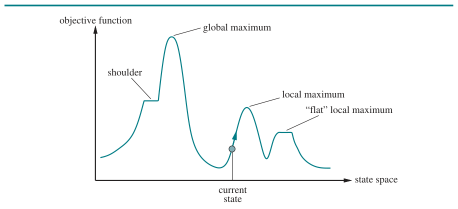
- If height is a value to maximize, the aim is the global maximum（全局最大值）, the highest peak. The method is hill climbing.如果高度是要最大化的值，目标就是全局最大值，即最高的山峰。方法是爬山法。
- If height is a cost, the aim is the global minimum, the lowest valley. The method is gradient descent（梯度下降）, see Section 4.5.如果高度是代价，目标就是全局最小值，即最低的山谷。方法是梯度下降，见第 4.5 节。
- A local maximum（局部极大值）is a peak higher than all its neighbors but lower than the global maximum.局部极大值是高于其所有邻居、但低于全局最大值的山峰。
- A plateau（平台）is a flat region. On a flat local maximum there is no way up. A shoulder（山肩）is flat for a while and then continues uphill.高原是一片平坦的区域。在平坦的局部极大值上没有向上的路。山肩先是平坦一段，然后继续向上。
Practice练习
Q1. (Definition) What is local search? State two advantages and one drawback.Q1. （定义）什么是局部搜索？请给出两个优点和一个缺点。
Answer
Local search starts from one state and repeatedly moves to a neighboring state; it keeps neither the path nor the set of reached states. Advantages: (1) it uses very little memory; (2) it finds reasonable solutions in large or infinite spaces where systematic search is unsuitable. Drawback: it is not systematic, so it may never explore the region that contains a solution (it is incomplete).局部搜索从一个状态出发，反复移动到相邻状态；它既不保留路径，也不保留已到达状态的集合。优点：（1）内存占用很少；（2）在大型或无限空间中能找到合理的解，而系统化搜索在这类空间中并不适用。缺点：它不是系统化的，因此可能永远不会探索包含解的区域（即它不完备）。
Q2. (Classify) For each task decide whether local search is suitable: (a) the route from Arad to Bucharest; (b) a factory floor layout; (c) 8-queens; (d) the 8-puzzle when the required answer is the sequence of moves.Q2. （分类）对下列每项任务判断局部搜索是否适用：（a）从 Arad 到 Bucharest 的路线；（b）工厂车间的布局；（c）8 皇后问题；（d）当所需答案是移动序列时的 8 数码问题。
Answer
(a) No: the solution is the path, so use the systematic algorithms of Chapters 2–3. (b) Yes: only the final layout matters and small changes can improve the objective. (c) Yes: the final configuration is the answer. (d) No: the answer is a sequence of moves, which local search does not record.（a）否：解是路径，因此应使用第 2–3 章的系统化算法。（b）是：只有最终布局重要，并且小的改动就能改进目标函数。（c）是：最终构型即为答案。（d）否：答案是一串移动序列，而局部搜索不记录这些移动。
思路：看答案是“路径”还是“终态”。
Hill climbing ★★★爬山法 ★★★
Goal. Run steepest-ascent hill climbing by hand, say where it gets stuck and what fixes that, and compute the expected cost of random restart.目标。 手工运行最陡上升爬山法，说明它会卡在哪里以及如何解决，并计算随机重启的期望代价。
Step 1: the algorithm第 1 步：算法
In words: hill climbing = always step to the best neighbor, and stop when no neighbor is better.用文字表述：爬山法 = 总是走到最好的邻居，当没有邻居更好时停止。
Hill climbing（爬山法）keeps one current state. It looks only at the immediate neighbors, so it is also called greedy local search（贪心局部搜索）.爬山法只保留一个当前状态，它只看相邻的邻居，因此也被称为贪心局部搜索。
function HILL-CLIMBING(problem) returns a state that is a local maximum
current ← problem.INITIAL
while true do
neighbor ← a highest-valued successor state of current
if VALUE(neighbor) ≤ VALUE(current) then return current # stop: no strictly better neighbor
current ← neighbor
How to do it by hand:手工做法：
- Write down the value of the start state.写出起始状态的值。
- List its neighbors and their values.列出它的邻居及其值。
- Take the neighbor with the highest value. If several tie, pick any one.取值最高的邻居。如果有多个并列，任选其一。
- If that value is not strictly higher than the current value, stop. The current state is the answer.如果这个值不严格高于当前值，就停止。当前状态就是答案。
- Otherwise move to that neighbor and go back to step 2.否则，移动到该邻居，然后回到第 2 步。
Worked example. The states 0–9 lie in a row. The neighbors of a state are the states to its left and right.例题。状态 0–9 排成一行。一个状态的邻居是它左右两侧的状态。
| state状态 | 0 | 1 | 2 | 3 | 4 | 5 | 6 | 7 | 8 | 9 |
|---|---|---|---|---|---|---|---|---|---|---|
| value值 | 3 | 5 | 8 | 6 | 4 | 5 | 7 | 9 | 6 | 2 |
| Start起始 | Step步骤 | Current state (value)当前状态（值） | Neighbors (values)邻居（值） | Decision决定 |
|---|---|---|---|---|
| 3 | 1 | 3 (6) | 2 (8), 4 (4) | best is 8 > 6, move to 2最好的是 8 > 6，移动到 2 |
| 3 | 2 | 2 (8) | 1 (5), 3 (6) | best is 6 < 8, stop最好的是 6 < 8，停止 |
| 5 | 1 | 5 (5) | 4 (4), 6 (7) | best is 7 > 5, move to 6最好的是 7 > 5，移动到 6 |
| 5 | 2 | 6 (7) | 5 (5), 7 (9) | best is 9 > 7, move to 7最好的是 9 > 7，移动到 7 |
| 5 | 3 | 7 (9) | 6 (7), 8 (6) | best is 7 < 9, stop最好的是 7 < 9，停止 |
From state 3 the run stops at state 2 with value 8, a local maximum. From state 5 it stops at state 7 with value 9, the global maximum. The result depends on the start state.从状态 3 出发，运行停在状态 2，其值为 8，这是一个局部极大值。从状态 5 出发，停在状态 7，其值为 9，这是全局最大值。结果取决于起始状态。
Step 2: 8-queens第 2 步：八皇后问题
In the complete-state formulation（完整状态表示）all 8 queens are on the board, one per column. A successor moves one queen inside its column, so every state has \(8\times7=56\) successors. The cost \(h\) is the number of pairs of queens that attack each other, in the same row or on the same diagonal. A solution has \(h=0\). Hill climbing minimizes \(h\), which means it climbs on \(-h\).在完整状态表示中，8 个皇后都在棋盘上，每列一个。后继是把某个皇后在其列内移动，所以每个状态都有 \(8\times7=56\) 个后继。代价 \(h\) 是互相攻击的皇后对数，即同行或同一对角线上的皇后对数。解的代价为 \(h=0\)。爬山法最小化 \(h\)，这意味着它是在 \(-h\) 上爬坡。

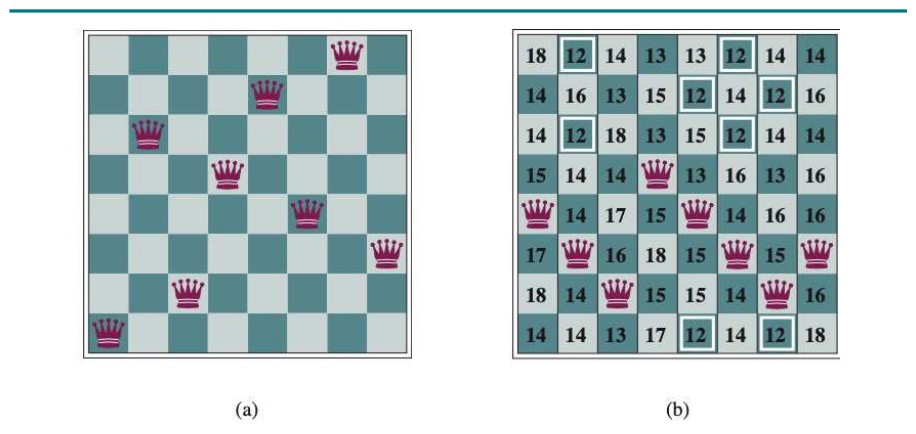
The left board has \(h=1\) and is a local maximum: every single-queen move increases \(h\). From a random start, steepest ascent solves 14% of runs. It takes 4 steps on average when it succeeds and 3 when it gets stuck.左边的棋盘具有 \(h=1\)，是一个局部极大值：移动任何一个皇后都会使 \(h\) 增加。从随机起点出发，最陡上升法能解决 14% 的运行。成功时平均需要 4 步，卡住时平均需要 3 步。
Step 3: why it gets stuck第 3 步：为什么会卡住
- Local maximum: all neighbors are worse, but the state is not a solution.局部极大值：所有邻居都更差，但该状态不是解。
- Ridge（山脊）: a sequence of local maxima that are not directly connected. From each of them every move goes downhill.山脊：一串彼此不直接相连的局部极大值。从其中每一个出发，每一步移动都是下坡。
- Plateau: a flat area. On a flat local maximum there is no uphill exit. On a shoulder progress is possible, but the search can wander.高原：一片平坦的区域。在平坦的局部极大值上没有上坡的出路。在山肩上还能前进，但搜索可能会徘徊。
Step 4: remedies第 4 步：补救办法
| Variant变体 | Rule规则 | Effect on 8-queens对八皇后问题的效果 |
|---|---|---|
| Sideways moves（横向移动） | accept an equal-valued neighbor, but limit the consecutive sideways moves, say to 100接受值相等的邻居，但限制连续的平移步数，例如限制为 100 | 94% solved instead of 14%; about 21 steps per success and 64 per failure解决率为 94%，而不是 14%；每次成功约需 21 步，每次失败约需 64 步 |
| Stochastic hill climbing（随机爬山法） | choose at random among the uphill moves在上坡移动中随机选择 | usually slower, sometimes finds better solutions通常较慢，但有时能找到更好的解 |
| First-choice hill climbing（首选爬山法） | generate random successors until one is better than the current state随机生成后继，直到出现一个比当前状态更好的后继 | good when a state has thousands of successors当一个状态有数千个后继时效果很好 |
| Random-restart hill climbing（随机重启爬山法） | run hill climbing from random start states until a goal is found从随机起始状态反复运行爬山法，直到找到目标为止 | complete with probability 1以概率 1 完备 |
Without the limit, sideways moves wander forever on a flat local maximum.如果没有这个限制，在平坦的局部极大值上，平移步会无休止地徘徊。
Step 5: the cost of random restart第 5 步：随机重启的代价
In words: each run either succeeds or fails, so the expected number of runs is one divided by the success probability.用文字表述：每次运行要么成功，要么失败，因此期望运行次数等于 1 除以成功概率。
Practice练习
Q1. (Trace) States 0–9 lie in a row; the neighbors of a state are the states to its left and right. The values are:Q1. （手工演算）状态 0–9 排成一行，每个状态的邻居是其左右两侧的状态。各状态的值为：
| state状态 | 0 | 1 | 2 | 3 | 4 | 5 | 6 | 7 | 8 | 9 |
|---|---|---|---|---|---|---|---|---|---|---|
| value值 | 2 | 4 | 6 | 5 | 3 | 3 | 3 | 7 | 9 | 8 |
(a) Run steepest-ascent hill climbing from states 1, 5 and 7. (b) The start state is chosen uniformly at random. What is the probability that one run reaches the global maximum, and how many runs does random restart need on average?（a）从状态 1、5 和 7 出发运行最陡上升爬山法。（b）初始状态在所有状态中均匀随机选取。一次运行到达全局最大值的概率是多少？随机重启平均需要多少次运行？
Answer
(a) From 1 (value 4): the neighbors have values 2 and 6, so move to state 2 (6). Its neighbors have values 4 and 5, both lower: stop at state 2, a local maximum with value 6. From 5 (3): both neighbors have value 3, not higher: stop at once on the plateau. From 7 (7): move to state 8 (9); its neighbors (7 and 8) are lower: stop at the global maximum 9.（a）从 1（值 4）出发：其邻居的值为 2 和 6，因此移动到状态 2（值 6）。状态 2 的邻居值为 4 和 5，都更低：在状态 2 停止，它是值为 6 的局部极大值。从 5（值 3）出发：两个邻居的值都是 3，不更高：立即在高原上停止。从 7（值 7）出发：移动到状态 8（值 9）；其邻居（值 7 和 8）都更低：在全局最大值 9 处停止。
(b) Starts 6, 7, 8, 9 reach state 8; starts 0–4 end at state 2; start 5 stays put. So \(p=4/10=0.4\) and the expected number of runs is \(1/p=2.5\).（b）从 6、7、8、9 出发的运行都到达状态 8；从 0–4 出发的都结束于状态 2；从 5 出发则原地不动。因此 \(p=4/10=0.4\)，期望运行次数为 \(1/p=2.5\)。
易错：在平台上（状态 5）爬山法不会动，不是“走到了最高点”。
Q2. (4-queens) A 4-queens state lists the row of the queen in each column. For the state (2,3,1,4): (a) compute \(h\); (b) count the successors; (c) does steepest-ascent hill climbing escape, and what changes if one sideways move is allowed?Q2. （4 皇后问题）一个 4 皇后状态列出了每一列中皇后所在的行。对于状态 (2,3,1,4)：（a）计算 \(h\)；（b）数出后继的数目；（c）最陡上升爬山法能否逃脱？若允许一次侧向移动，结果会有什么变化？
Answer
(a) Only the queens in columns 1 and 2 attack each other (rows 2 and 3 in adjacent columns lie on a diagonal), so \(h=1\). (b) 4 columns \(\times\) 3 other rows \(=12\) successors. (c) The 12 successors have \(h\) values 1, 2, 2, 2, 2, 2, 3, 3, 3, 3, 3, 4. Only (2,4,1,4) has \(h=1\), and none has \(h=0\), so the best neighbor is not better and plain hill climbing halts with \(h=1\). With one sideways move it goes to (2,4,1,4); moving the column-4 queen to row 3 then gives (2,4,1,3), a solution (\(h=0\)).（a）只有第 1 列和第 2 列的皇后相互攻击（相邻列中的第 2 行与第 3 行位于同一条对角线上），因此 \(h=1\)。（b）4 列 \(\times\) 每列其他 3 行 \(=12\) 个后继。（c）这 12 个后继的 \(h\) 值分别为 1、2、2、2、2、2、3、3、3、3、3、4。只有 (2,4,1,4) 具有 \(h=1\)，并且没有任何后继具有 \(h=0\)，因此最优邻居并不更优，普通爬山法以 \(h=1\) 停止。若允许一次侧向移动，它会走到 (2,4,1,4)；随后把第 4 列的皇后移到第 3 行，得到 (2,4,1,3)，这是一个解（\(h=0\)）。
Simulated annealing ★★★模拟退火 ★★★
Goal. Compute the acceptance probability of a worse move, decide with a given random number whether it is accepted, and explain the role of the temperature.目标。 计算较差移动的接受概率，用给定的随机数判断它是否被接受，并解释温度的作用。
Hill climbing never moves downhill, so a local maximum traps it. A pure random walk reaches the global maximum in the end but is very inefficient. Simulated annealing（模拟退火）combines both. The name comes from metallurgy: a metal is heated and then cooled slowly, and it settles into a low-energy crystal.爬山法从不向下走，所以局部极大值会把它困住。纯随机游走最终能到达全局最大值，但效率极低。模拟退火把两者结合起来。这个名字来自冶金：金属先被加热，然后缓慢冷却，最终形成低能量的晶体。
Step 1: the algorithm第 1 步：算法
In words: simulated annealing = try a random neighbor; take it if it is better, and take it with a small probability even if it is worse.用文字表述：模拟退火 = 尝试一个随机邻居；如果它更好，就接受；即使它更差，也以较小的概率接受。
function SIMULATED-ANNEALING(problem, schedule) returns a solution state
current ← problem.INITIAL
for t = 1 to ∞ do
T ← schedule(t) # temperature at time t
if T = 0 then return current
next ← a randomly selected successor of current
ΔE ← VALUE(next) − VALUE(current)
if ΔE > 0 then current ← next
else current ← next only with probability e^(ΔE/T)
The schedule（降温计划）is the rule that lowers the temperature（温度）\(T\) over time.降温计划是随时间降低温度 \(T\) 的规则。
Step 2: the acceptance probability第 2 步：接受概率
In words: the worse the move and the lower the temperature, the smaller the chance of accepting it.用文字表述：移动越差、温度越低，接受它的机会就越小。
How to do it by hand:手工做法：
- Compute \(\Delta E=\) value of the candidate \(-\) value of the current state.计算 \(\Delta E=\)：候选状态的值 \(-\) 当前状态的值。
- If \(\Delta E>0\), accept. No random number is needed.若 \(\Delta E>0\)，则接受。不需要随机数。
- Otherwise compute \(P=e^{\Delta E/T}\) with the current temperature.否则，用当前温度计算 \(P=e^{\Delta E/T}\)。
- Draw a random number \(u\) between 0 and 1. Accept if \(u<P\); otherwise reject and stay.在 0 与 1 之间抽取一个随机数 \(u\)。若 \(u<P\)，则接受；否则拒绝，留在原地。
Acceptance probability \(e^{\Delta E/T}\) of a move that lowers the value by \(\lvert\Delta E\rvert\):使值降低 \(\lvert\Delta E\rvert\) 的移动的接受概率为 \(e^{\Delta E/T}\)：
| \(\lvert\Delta E\rvert\) | \(T=10\) | \(T=3\) | \(T=1\) | \(T=0.5\) |
|---|---|---|---|---|
| 1 | 0.905 | 0.717 | 0.368 | 0.135 |
| 2 | 0.819 | 0.513 | 0.135 | 0.018 |
| 3 | 0.741 | 0.368 | 0.050 | 0.002 |
At the start (\(T=10\)) even a loss of 3 is accepted 74% of the time. Near the end (\(T=0.5\)) it is almost never accepted.在开始时（\(T=10\)），即使是变差 3 的移动，也有 74% 的时间会被接受。接近结束时（\(T=0.5\)），它几乎永远不会被接受。
Step 3: what the temperature does第 3 步：温度的作用
- High \(T\): almost every move is accepted. The search is close to a random walk (exploration).高 \(T\) 时：几乎每个移动都被接受。搜索接近随机游走（探索）。
- Low \(T\): almost only improving moves are accepted. The search is close to hill climbing (exploitation).低 \(T\) 时：几乎只接受改进的移动。搜索接近爬山法（利用）。
- \(T=\infty\) is a random walk and \(T=0\) is hill climbing with a random neighbor.\(T=\infty\) 为随机游走，\(T=0\) 为带随机邻居的爬山法。
- If \(T\) falls slowly enough, the probability concentrates on the global maxima. The algorithm then finds one with probability approaching 1.如果 \(T\) 降得足够慢，概率就会集中到全局最大值上。这时算法以趋近于 1 的概率找到一个全局最大值。
Why cool slowly? Early, a high \(T\) lets the search leave local maxima. Later, a low \(T\) keeps it near a good peak. If \(T\) falls too fast, the search freezes in the local maximum it happens to be in. If \(T\) stays high, it never settles.为什么要缓慢降温？开始时，高 \(T\) 让搜索能够离开局部极大值。之后，低 \(T\) 让它留在一个好的山峰附近。如果 \(T\) 降得太快，搜索就会冻结在它恰好所处的局部极大值上。如果 \(T\) 一直很高，它就永远无法稳定下来。
Practice练习
Q1. (Calculation) In simulated annealing (maximization) a candidate move lowers the value by 2. Find the acceptance probability at \(T=4\) and at \(T=0.5\). What happens as \(T\to\infty\) and as \(T\to0\)?Q1. （计算）在模拟退火（最大化）中，一个候选移动使值降低 2。求在 \(T=4\) 和 \(T=0.5\) 时的接受概率。当 \(T\to\infty\) 与 \(T\to0\) 时，分别会发生什么？
Answer
Here \(\Delta E=-2\). At \(T=4\): \(e^{-2/4}=e^{-0.5}=0.607\). At \(T=0.5\): \(e^{-2/0.5}=e^{-4}=0.018\). As \(T\to\infty\), \(e^{\Delta E/T}\to1\): every move is accepted, which is a random walk. As \(T\to0\), \(e^{\Delta E/T}\to0\): only improving moves are accepted, which is hill climbing.此处 \(\Delta E=-2\)。在 \(T=4\) 时：\(e^{-2/4}=e^{-0.5}=0.607\)。在 \(T=0.5\) 时：\(e^{-2/0.5}=e^{-4}=0.018\)。当 \(T\to\infty\)、\(e^{\Delta E/T}\to1\) 时：所有移动都被接受，即随机游走。当 \(T\to0\)、\(e^{\Delta E/T}\to0\) 时：只接受改进的移动，即爬山法。
Q2. (Explain) Why is the temperature lowered gradually? What goes wrong if \(T\) stays high, or falls too fast?Q2. （解释）为什么温度要逐渐降低？如果 \(T\) 一直保持较高，或者下降得太快，会出现什么问题？
Answer
A high \(T\) early on lets the search leave local maxima and explore; a low \(T\) later keeps it near a good peak. If \(T\) stays high the search is nearly a random walk and cannot settle on a peak. If \(T\) falls too fast the search behaves like hill climbing and freezes in whichever local maximum it is in. Only slow cooling carries the guarantee of reaching the global maximum with probability approaching 1.开始时较高的 \(T\) 使搜索能够离开局部极大值并进行探索；之后较低的 \(T\) 使搜索保持在一个好的山峰附近。如果 \(T\) 一直保持较高，搜索就几乎是随机游走，无法稳定在某个山峰上。如果 \(T\) 下降得太快，搜索的行为就像爬山法，并冻结在它所处的任何一个局部极大值上。只有缓慢降温才能保证以趋近于 1 的概率到达全局最大值。
Local beam search and genetic algorithms ★★局部束搜索与遗传算法 ★★
Goal. Run one step of local beam search, and one crossover and one selection of a genetic algorithm, by hand.目标。 手工运行局部束搜索的一步，以及遗传算法的一次交叉和一次选择。
Local beam search局部束搜索
In words: beam search = keep the \(k\) best states of all successors of all current states.用文字表述：束搜索 = 保留所有当前状态的全部后继中最好的 \(k\) 个状态。
Local beam search（局部束搜索）keeps \(k\) states instead of one, for example \(k=2\).局部束搜索保留 \(k\) 个状态，而不是一个，例如 \(k=2\) 个。
- Start with \(k\) random states.从 \(k\) 个随机状态开始。
- Generate all successors of all \(k\) states. If one is a goal, stop.生成全部 \(k\) 个状态的所有后继。如果其中有一个是目标，就停止。
- From the whole list keep the \(k\) best successors, and repeat.从整个列表中保留 \(k\) 个最好的后继，然后重复。
It is not \(k\) random restarts in parallel. Restarted runs are independent. In beam search the \(k\) best are chosen from the pooled list, so good searches attract the others. The weakness is lack of diversity: the \(k\) states can cluster in a small region. Stochastic beam search（随机束搜索）picks the \(k\) successors at random with probability proportional to their value, which restores diversity.它并不等同于并行运行 \(k\) 次随机重启。重启的各次运行彼此独立。而在束搜索中，从汇总的列表里选出 \(k\) 个最好的，所以好的搜索会吸引其他搜索。它的弱点是缺乏多样性：\(k\) 个状态可能聚集在一个小区域里。随机束搜索以与其值成正比的概率随机选取 \(k\) 个后继，从而恢复多样性。
Genetic algorithms遗传算法
In words: a genetic algorithm = stochastic beam search where two parents are cut and glued to make children.用文字表述：遗传算法 = 随机束搜索，其中两个父代被切开再拼接，生成子代。
A population of individuals (states) is improved over generations. The fittest individuals produce offspring.一个个体（状态）组成的种群逐代改进。适应度最高的个体产生后代。
| Choice选项 | Meaning含义 |
|---|---|
| Population size种群规模 | number of individuals个体数 |
| Representation表示 | genetic algorithm: a string over a finite alphabet (often bits); evolution strategy: a sequence of real numbers; genetic programming: a computer program遗传算法：有限字母表上的字符串（通常为比特）；进化策略：一串实数；遗传编程：一个计算机程序 |
| Mixing number \(\rho\)（混合数） | parents per offspring; usually \(\rho=2\); \(\rho=1\) is stochastic beam search每个子代的父代数；通常为 \(\rho=2\)；\(\rho=1\) 对应随机束搜索 |
| Selection选择 | choose parents with probability proportional to fitness, or pick \(n>\rho\) at random and keep the \(\rho\) fittest按与适应度成正比的概率选择父代，或随机挑选 \(n>\rho\) 个，保留其中最适应的 \(\rho\) 个 |
| Crossover（交叉） | split both parents at a random crossover point; child 1 = first part of parent 1 + second part of parent 2, child 2 = the reverse在随机交叉点处将两个父代切开；子代 1 = 父代 1 的前一部分 + 父代 2 的后一部分，子代 2 则相反 |
| Mutation（变异） | each position of an offspring is changed at random with probability equal to the mutation rate子代的每个位置以等于变异率的概率被随机改变 |
| Next generation下一代 | only the new offspring, or also a few top parents (elitism（精英保留）: the best fitness never decreases); culling discards individuals below a threshold只保留新子代，或同时保留少数最优父代（精英保留：最佳适应度永不下降）；剔除操作则丢弃低于阈值的个体 |
For 8-queens an individual is a string of 8 digits whose \(c\)-th digit is the row of the queen in column \(c\).对于八皇后问题，一个个体是由 8 位数字组成的字符串，其第 \(c\) 位数字是第 \(c\) 列中皇后所在的行。

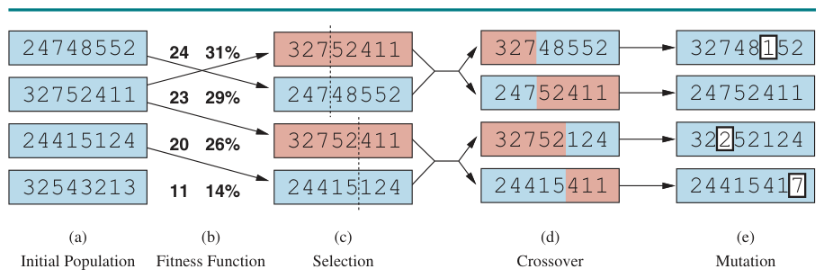
Worked example. Four strings have fitness 24, 23, 20 and 11. The sum is 78, so the selection probabilities are \(24/78=31\%\), \(23/78=29\%\), \(20/78=26\%\) and \(11/78=14\%\). Two parents 32752411 and 24748552 are cut after the third digit: \(327|52411\) and \(247|48552\). The children are \(327|48552=32748552\) and \(247|52411=24752411\). Each digit then mutates with a small probability, which moves a queen to a random square in its column.例题。四个字符串的适应度分别为 24、23、20 和 11。总和为 78，所以选择概率分别为 \(24/78=31\%\)、\(23/78=29\%\)、\(20/78=26\%\) 和 \(11/78=14\%\)。两个父代 32752411 和 24748552 在第三位之后被切开：\(327|52411\) 和 \(247|48552\)。子代为 \(327|48552=32748552\) 和 \(247|52411=24752411\)。然后，每一位数字都以很小的概率变异，这会把某个皇后移到其所在列中的随机一格上。
Crossover helps when the string has blocks that do useful work, such as three non-attacking queens in the first columns. A schema（模式）is a substring with some positions unspecified, such as 246*****. If the average fitness of a schema's instances is above the mean, its instances become more numerous. If the blocks serve no purpose, crossover has no advantage.当字符串中含有能发挥作用的块时，交叉才有帮助，例如前几列中三个互不攻击的皇后。模式是一个子串，其中一些位置未指定，例如 246*。如果某个模式的实例的平均适应度高于总体平均值，它的实例就会越来越多。如果这些块没有作用，交叉就没有优势。
| Method方法 | States kept保留的状态 | How it moves移动方式 | How it escapes a local maximum如何逃离局部极大值 |
|---|---|---|---|
| Hill climbing爬山法 | 1 | best neighbor, uphill only最优邻居，仅向上坡移动 | it does not不能 |
| Simulated annealing模拟退火 | 1 | random neighbor; worse moves with probability \(e^{\Delta E/T}\)随机邻居；以概率 \(e^{\Delta E/T}\) 接受较差的移动 | accepts worse moves, less often as \(T\) falls接受较差的移动，且随 \(T\) 降低而越来越少 |
| Local beam search局部束搜索 | \(k\) | \(k\) best of all successors所有后继中最好的 \(k\) 个 | shares information, but may lose diversity共享信息，但可能失去多样性 |
| Stochastic beam search随机束搜索 | \(k\) | \(k\) sampled in proportion to value按值成比例抽取 \(k\) 个后继 | random choice keeps diversity随机选择保持多样性 |
| Genetic algorithm遗传算法 | population种群 | selection, crossover, mutation选择、交叉、变异 | recombination and random mutation重组与随机变异 |
Practice练习
Q1. (Calculation) Local beam search with \(k=2\). State A has successors with values 9, 8, 7 and state B has successors with values 3, 2, 1. Which successors are kept? In stochastic beam search, what is the probability that one draw picks a successor of B? Why is this useful?Q1. （计算）取 \(k=2\) 的局部束搜索。状态 A 的后继值为 9、8、7，状态 B 的后继值为 3、2、1。哪些后继会被保留？在随机束搜索中，一次抽取选中 B 的某个后继的概率是多少？为什么这样做有用？
Answer
Beam search pools all six successors and keeps the two best, 9 and 8, both from A. B's thread is dropped and its resources move to A. In stochastic beam search a draw is proportional to value: the total is 30, so a successor of B is chosen with probability \((3+2+1)/30=0.2\). Sometimes keeping a lower-valued successor preserves diversity and reduces the risk that all \(k\) states cluster in one small region.束搜索汇集全部六个后继，并保留两个最好的（9 和 8，均来自 A）。B 的线程被放弃，其资源转给了 A。在随机束搜索中，抽取概率与值成正比：总和为 30，因此选中 B 的某个后继的概率为 \((3+2+1)/30=0.2\)。有时保留值较低的后继可以保持多样性，并降低所有 \(k\) 个状态都聚集在一个小区域中的风险。
Q2. (Genetic algorithm, 4-queens) A string lists the row of the queen in each column; fitness is the number of non-attacking pairs (maximum \(\binom42=6\)). The parents 2413 and 3142 are both solutions. Cross them over after the second digit. Give the children, their fitness, and what this shows.Q2. （遗传算法，4 皇后问题）一个字符串列出每一列中皇后所在的行；适应度为互不攻击的皇后对数（最大值为 \(\binom42=6\)）。父代 2413 和 3142 都是解。在第二位之后进行交叉。给出两个子代、它们的适应度，以及这说明了什么。
Answer
The children are \(24|42=2442\) and \(31|13=3113\). In 2442 the attacking pairs are columns (1,3), (1,4), (2,3) and (2,4), so the fitness is \(6-4=2\). In 3113 the attacking pairs are the same four column pairs, so the fitness is also 2. Both children are far worse than the parents. Crossover can destroy good solutions when the pieces taken from the parents do not fit together; it pays only when the pieces are useful building blocks.两个子代分别为 \(24|42=2442\) 和 \(31|13=3113\)。在 2442 中，相互攻击的列对为 (1,3)、(1,4)、(2,3) 和 (2,4)，因此适应度为 \(6-4=2\)。在 3113 中，相互攻击的列对是同样的四组，因此适应度也为 2。两个子代都远不如父代。当从父代取来的片段不能很好地拼接在一起时，交叉会破坏好的解；只有当这些片段是有用的组块时，交叉才有价值。
Local search in continuous spaces ★★连续空间中的局部搜索 ★★
Goal. Do one gradient step and one Newton–Raphson step by hand, and say which one is cheaper per step and which needs fewer steps.目标。 手工完成一次梯度步和一次牛顿–拉弗森步，并说明哪一种每步更便宜，哪一种所需步数更少。
A continuous action space has infinitely many successors. Most algorithms of Chapters 2–3 cannot handle it. Only first-choice hill climbing and simulated annealing can, because they sample successors. Example: place three airports in Romania to minimize the sum of squared distances from each city to its nearest airport. The state is a vector of \(n=6\) numbers, the \(x\) and \(y\) of each airport.连续动作空间有无穷多个后继。第 2–3 章的大多数算法都无法处理它。只有首选爬山法和模拟退火可以，因为它们对后继进行采样。例如，在罗马尼亚建三个机场，使每个城市到其最近机场的距离平方和最小。状态是由 \(n=6\) 个数组成的向量，即每个机场的 \(x\) 和 \(y\) 坐标。
Step 1: discretization第 1 步：离散化
Discretization（离散化）restricts each coordinate to a grid with spacing \(\delta\). Each variable can then change by \(+\delta\) or \(-\delta\), so a state has \(2n=12\) successors. Any local search above applies. Shrinking \(\delta\) over time improves accuracy but need not reach the global optimum.离散化把每个坐标限制在间距为 \(\delta\) 的格点上。这样，每个变量都只能变化 \(+\delta\) 或 \(-\delta\)，因此一个状态有 \(2n=12\) 个后继。前面介绍的任何局部搜索都可以使用。随着时间推移缩小 \(\delta\) 可以提高精度，但不一定能达到全局最优。
Step 2: the gradient step第 2 步：梯度步
In words: gradient descent = take a small step downhill, against the gradient.用文字表述：梯度下降 = 沿梯度的反方向迈一小步下坡。
How to do it by hand: compute the gradient at the current point, multiply it by \(\alpha\), and subtract it from the point.手工做法：计算当前点处的梯度，将其乘以 \(\alpha\)，再从该点中减去它。
Step 3: the Newton–Raphson step第 3 步：牛顿–拉弗森步
In words: Newton–Raphson = replace the surface by a parabola and jump to its lowest point.用文字表述：牛顿–拉弗森法 = 用抛物线代替原曲面，并跳到它的最低点。
Newton needs the \(n^2\) Hessian entries and an inversion, so it is expensive in high dimensions. Gradient descent needs only the \(n\) derivatives per step but takes more steps.牛顿法需要计算 \(n^2\) 个海森矩阵元素并求逆，所以在高维情形下代价高昂。梯度下降每步只需要 \(n\) 个一阶导数，但需要更多步。
Practice练习
Q1. (Calculation) Minimize \(f(x)=(x-3)^2\) by gradient descent from \(x=0\). (a) Do two steps with \(\alpha=0.1\). (b) What happens with \(\alpha=1\)? (c) Do one Newton–Raphson step.Q1. （计算）用梯度下降法，从 \(x=0\) 出发最小化 \(f(x)=(x-3)^2\)。（a）用 \(\alpha=0.1\) 做两步。（b）使用 \(\alpha=1\) 时会发生什么？（c）做一步牛顿–拉弗森法。
Answer
\(f'(x)=2(x-3)\) and the update is \(x\leftarrow x-\alpha f'(x)\). (a) \(x_1=0-0.1\cdot(-6)=0.6\); \(x_2=0.6-0.1\cdot2\cdot(-2.4)=1.08\). The distance to the minimum shrinks by the factor \(1-2\alpha=0.8\) per step. (b) \(x\leftarrow x-2(x-3)=6-x\), so the iterates alternate 0, 6, 0, 6, ... and never converge (overshoot); for \(\alpha>1\) they diverge. (c) \(f''=2\), so \(x\leftarrow0-(-6)/2=3\): the minimum in one step, because \(f\) is quadratic.\(f'(x)=2(x-3)\)，更新式为 \(x\leftarrow x-\alpha f'(x)\)。（a）\(x_1=0-0.1\cdot(-6)=0.6\)；\(x_2=0.6-0.1\cdot2\cdot(-2.4)=1.08\)。每一步，到最小值的距离缩小为原来的 \(1-2\alpha=0.8\) 倍。（b）\(x\leftarrow x-2(x-3)=6-x\)，因此迭代点交替为 0, 6, 0, 6, ……，永远不收敛（发生过冲）；当 \(\alpha>1\) 时，迭代会发散。（c）\(f''=2\)，因此 \(x\leftarrow0-(-6)/2=3\)：一步即达最小值，因为 \(f\) 是二次的。
Q2. (Concepts) (a) How many successors does a state have in the discretized three-airport problem? (b) True or false: shrinking \(\delta\) over time guarantees convergence to the global optimum. (c) Is linear programming solvable in polynomial time? What is special about the local minima of a convex function?Q2. （概念）（a）在离散化的三机场问题中，一个状态有多少个后继？（b）判断对错：随时间缩小 \(\delta\) 能保证收敛到全局最优。（c）线性规划能否在多项式时间内求解？凸函数的局部极小值有什么特别之处？
Answer
(a) Six variables, each changed by \(+\delta\) or \(-\delta\): \(2\cdot6=12\) successors. (b) False: a smaller \(\delta\) gives a more accurate solution, but the search can still end in a local optimum. (c) Yes, the running time is polynomial in the number of variables. A convex function has no local minimum that is not global, so a local search that reaches a minimum has found the best value.（a）有六个变量，每个变量改变 \(+\delta\) 或 \(-\delta\)：共 \(2\cdot6=12\) 个后继。（b）错：更小的 \(\delta\) 会给出更精确的解，但搜索仍可能停在局部最优上。（c）是，其运行时间关于变量个数是多项式的。凸函数不存在非全局的局部极小值，因此达到某个极小值的局部搜索已经找到了最佳值。
Terms to recognise ★需要认识的术语 ★
| Term术语 | What to know要知道什么 |
|---|---|
| Constrained optimization（约束优化） | Solutions must satisfy hard constraints, for example airports must lie on land解必须满足硬约束，例如机场必须位于陆地上 |
| Linear programming（线性规划） | Linear constraints and a linear objective; solvable in time polynomial in the number of variables线性约束与线性目标；可在与变量个数呈多项式关系的时间内求解 |
| Convex optimization（凸优化） | A convex function has no local minimum other than the global one; under conditions solvable in polynomial time凸函数除全局最小值外没有其他局部最小值；在一定条件下可在多项式时间内求解 |
| Line search（线搜索） | Extend the gradient direction, usually by doubling \(\alpha\), until \(f\) stops improving沿梯度方向延伸，通常每次把 \(\alpha\) 加倍，直到 \(f\) 不再改善 |
| Empirical gradient（经验梯度） | Judge progress by the change of \(f\) between nearby grid points; equals hill climbing on the grid通过相邻格点之间 \(f\) 的变化来判断进展；在格点上相当于爬山法 |
| Evolutionary algorithm（进化算法） | A variant of stochastic beam search: the fittest individuals produce offspring随机束搜索的一种变体：适应度最高的个体产生后代 |
| Elitism（精英保留） | Copy a few top parents into the next generation, so the best fitness never drops把少数最优的父代复制到下一代，因此最好的适应度永不下降 |
| Special cases特例 | \(k=1\) beam = hill climbing; \(T=0\) = first-choice hill climbing; \(T=\infty\) = random walk\(k=1\) 束 = 爬山法；\(T=0\) = 首选爬山法；\(T=\infty\) = 随机游走 |
Exam-style questions考试题型练习
Q1. (Hill climbing, 10 marks) (a) Describe steepest-ascent hill climbing and its stopping rule. (2) (b) Name three kinds of region where it gets stuck and describe each. (3) (c) Explain sideways moves and random restarts and what each achieves on 8-queens. (3) (d) For 8-queens in the complete-state formulation, give the number of successors of a state and the heuristic. (2)Q1. （爬山法，10 分）（a）描述最陡上升爬山法及其停止规则。（2 分）（b）说出爬山法会陷入的三类区域，并分别加以描述。（3 分）（c）解释侧向移动和随机重启，并说明二者在 8 皇后问题上各自达到的效果。（3 分）（d）对于完整状态表示下的 8 皇后问题，给出一个状态的后继数目以及启发函数。（2 分）
Answer
(a) It keeps one current state and repeatedly moves to the highest-valued neighbor. It stops and returns the current state when no neighbor has a higher value.（a）它保留一个当前状态，并反复移动到值最高的邻居。当没有邻居的值更高时，它停止并返回当前状态。
(b) A local maximum is a peak higher than all its neighbors but lower than the global maximum. A ridge is a sequence of local maxima that are not directly connected, so every available move goes downhill. A plateau is a flat area: on a flat local maximum there is no uphill exit, on a shoulder there is.（b）局部极大值是高于其所有邻居、但低于全局最大值的山峰。山脊是一串彼此不直接相连的局部极大值，因此每个可用的移动都指向下坡。高原是平坦的区域：在平坦的局部极大值上没有向上的出口，而在山肩上则有。
(c) Sideways moves accept an equal-valued neighbor, with a limit (say 100) on consecutive sideways moves; this raises the solved fraction from 14% to 94%, at about 21 steps per success and 64 per failure. Random restart repeats hill climbing from random initial states until a goal is found; it is complete with probability 1 and needs \(1/p\) runs on average (about 7 for \(p=0.14\)).（c）侧向移动接受等值的邻居，并对连续侧向移动的次数加以限制（例如 100 次）；这使求解比例从 14% 提高到 94%，每次成功约需 21 步，每次失败约需 64 步。随机重启则从随机初始状态反复运行爬山法，直到找到目标；它以概率 1 完备，平均需要 \(1/p\) 次运行（对 \(p=0.14\) 而言约为 7 次）。
(d) Each state has 8 queens, one per column. A successor moves one queen within its column: \(8\times7=56\) successors. The heuristic \(h\) is the number of pairs of queens that attack each other; \(h=0\) only for a solution.（d）每个状态有 8 个皇后，每列一个。后继通过在其所在列内移动一个皇后得到：共 \(8\times7=56\) 个后继。启发函数 \(h\) 为相互攻击的皇后对数；\(h=0\) 仅当为解时成立。
Q2. (Calculation, 10 marks) A hill-climbing run on a puzzle reaches a goal with probability 0.25; a successful run takes 8 steps and a failed run 5 steps on average. (a) With random restarts, how many runs are expected? (2) (b) What is the expected total number of steps? (3) (c) Allowing sideways moves gives \(p=0.8\), 12 steps per success and 30 per failure. Compute the expected steps and say which version is cheaper. (3) (d) A 4-queens state lists the row of the queen in each column. For (2,4,1,1) compute \(h\) and give a move that solves it. (2)Q2. （计算，10 分）一次在某个谜题上进行的爬山法运行到达目标的概率为 0.25；成功的运行平均需要 8 步，失败的运行平均需要 5 步。（a）采用随机重启时，期望的运行次数是多少？（2 分）（b）期望的总步数是多少？（3 分）（c）允许侧向移动时得到 \(p=0.8\)，每次成功需 12 步，每次失败需 30 步。计算期望步数，并说明哪种版本更省。（3 分）（d）一个 4 皇后状态列出了每一列中皇后所在的行。对于 (2,4,1,1)，计算 \(h\)，并给出一个能解决它的移动。（2 分）
Answer
(a) \(E[\text{runs}]=1/p=1/0.25=4\).
(b) \(E[\text{steps}]=8+\frac{0.75}{0.25}\cdot5=8+15=23\).
(c) \(E[\text{steps}]=12+\frac{0.2}{0.8}\cdot30=12+7.5=19.5\), with \(1/0.8=1.25\) runs. The sideways version is cheaper (19.5 < 23): each run is longer, but far fewer runs fail.（c）\(E[\text{steps}]=12+\frac{0.2}{0.8}\cdot30=12+7.5=19.5\)，需要 \(1/0.8=1.25\) 次运行。侧向移动版本更省（19.5 < 23）：每次运行更长，但失败的运行次数少得多。
(d) Only the queens in columns 3 and 4 attack each other (both are in row 1), so \(h=1\). Moving the column-4 queen from row 1 to row 3 gives (2,4,1,3), which has \(h=0\).（d）只有第 3 列和第 4 列的皇后相互攻击（二者都在第 1 行），因此 \(h=1\)。把第 4 列的皇后从第 1 行移动到第 3 行，得到 (2,4,1,3)，它具有 \(h=0\)。
Q3. (Simulated annealing, 10 marks) (a) State the acceptance rule of simulated annealing for maximizing a value and explain the role of the temperature \(T\). (4) (b) The current value is 10. Four iterations propose candidates with values 8, 7, 11 and 10 at temperatures 2, 1, 0.5 and 0.5, with random numbers \(u=0.30,\ 0.50,\ 0.90,\ 0.20\). A worse move is accepted if \(u<e^{\Delta E/T}\). Give the current value after each iteration. (4) (c) Which iteration shows a difference from hill climbing? (2)Q3. （模拟退火，10 分）（a）给出模拟退火在最大化值时的接受规则，并解释温度 \(T\) 的作用。（4 分）（b）当前值为 10。四次迭代提出的候选值分别为 8、7、11 和 10，对应温度分别为 2、1、0.5 和 0.5，随机数为 \(u=0.30,\ 0.50,\ 0.90,\ 0.20\)。当 \(u<e^{\Delta E/T}\) 时接受较差的移动。给出每次迭代之后的当前值。（4 分）（c）哪一次迭代体现了它与爬山法的不同？（2 分）
Answer
(a) Let \(\Delta E=\text{value}(\text{next})-\text{value}(\text{current})\). If \(\Delta E>0\) the move is always accepted; otherwise it is accepted with probability \(e^{\Delta E/T}<1\). A high \(T\) makes almost all moves acceptable (random walk, exploration); a low \(T\) makes worse moves very unlikely (hill climbing). The schedule lowers \(T\) over time; if it does so slowly enough, the search finds the global maximum with probability approaching 1.（a）令 \(\Delta E=\text{value}(\text{next})-\text{value}(\text{current})\)。若 \(\Delta E>0\)，则移动总是被接受；否则以概率 \(e^{\Delta E/T}<1\) 接受它。较高的 \(T\) 使几乎所有移动都可以接受（随机游走，即探索）；较低的 \(T\) 使较差的移动极不可能被接受（爬山法）。退火计划使 \(T\) 随时间降低；如果降低得足够慢，搜索就会以趋近于 1 的概率找到全局最大值。
(b) Iteration 1: \(\Delta E=-2\), \(p=e^{-2/2}=0.368\), \(u=0.30<0.368\), accept: value 8. Iteration 2: \(\Delta E=-1\), \(p=e^{-1}=0.368\), \(u=0.50>0.368\), reject: value 8. Iteration 3: \(\Delta E=+3\), an improvement, accept (the random number is not needed): value 11. Iteration 4: \(\Delta E=-1\), \(p=e^{-1/0.5}=e^{-2}=0.135\), \(u=0.20>0.135\), reject: value 11.（b）第 1 次迭代：\(\Delta E=-2\)、\(p=e^{-2/2}=0.368\)、\(u=0.30<0.368\)，接受：值为 8。第 2 次迭代：\(\Delta E=-1\)、\(p=e^{-1}=0.368\)、\(u=0.50>0.368\)，拒绝：值仍为 8。第 3 次迭代：\(\Delta E=+3\)，是改进，接受（不需要随机数）：值为 11。第 4 次迭代：\(\Delta E=-1\)、\(p=e^{-1/0.5}=e^{-2}=0.135\)、\(u=0.20>0.135\)，拒绝：值仍为 11。
(c) Iteration 1: the search accepted a downhill move, which hill climbing never does; this is how it can leave a local maximum.（c）第 1 次迭代：搜索接受了一个向下坡方向的移动，而爬山法从不这样做；正是这一点使它能够离开局部极大值。
Q4. (Beam search and genetic algorithms, 10 marks) (a) Why is local beam search with \(k\) states not the same as \(k\) parallel random restarts? What problem does stochastic beam search address? (3) (b) A population of four 8-queens individuals has fitness 20, 15, 10 and 5. Give the selection probabilities. The parents 13572468 and 24681357 are crossed over after the third digit; give the two children. (4) (c) When is crossover advantageous? (3)Q4. （束搜索与遗传算法，10 分）（a）为什么 \(k\) 个状态的局部束搜索不同于 \(k\) 次并行的随机重启？随机束搜索要解决什么问题？（3 分）（b）一个由四个 8 皇后个体组成的种群，其适应度分别为 20、15、10 和 5。给出选择概率。父代 13572468 和 24681357 在第三位之后交叉；给出两个子代。（4 分）（c）什么时候交叉是有利的？（3 分）
Answer
(a) In random restarts every search is independent. In beam search the \(k\) best successors of the pooled list are kept, so states that produce good successors attract resources and unfruitful searches are dropped. Its weakness is lack of diversity (the \(k\) states cluster in a small region); stochastic beam search samples successors with probability proportional to value, which keeps diversity.（a）在随机重启中，每次搜索都是独立的。在束搜索中，从汇集的后继中保留最好的 \(k\) 个，因此能产生好后继的状态会吸引资源，而没有成效的搜索会被放弃。它的弱点是缺乏多样性（这 \(k\) 个状态聚集在一个小区域内）；随机束搜索则以与值成正比的概率对后继进行采样，从而保持多样性。
(b) The total is 50, so the probabilities are \(20/50=0.40\), \(0.30\), \(0.20\) and \(0.10\). The children are \(135|81357=13581357\) and \(246|72468=24672468\).（b）总和为 50，因此概率分别为 \(20/50=0.40\)、\(0.30\)、\(0.20\) 和 \(0.10\)。两个子代为 \(135|81357=13581357\) 和 \(246|72468=24672468\)。
(c) When the representation has blocks (schemas) that perform useful functions, for example three non-attacking queens in the first columns, crossover can combine good blocks from two parents. If the blocks serve no purpose, for example when the positions are randomly permuted, crossover has no advantage; hence the representation must be chosen carefully.（c）当表示中含有能发挥有用作用的组块（模式）时，例如前几列中三个互不攻击的皇后，交叉就能组合两个父代中的好组块。如果这些组块没有任何用途，例如位置是随机排列的，交叉就没有优势；因此必须谨慎地选择表示方式。
Q5. (Continuous search, 10 marks) Minimize \(f(x,y)=(x-1)^2+2(y+2)^2\) starting at \((3,2)\). (a) Give \(\nabla f\) and the Hessian. (2) (b) Perform one gradient-descent step with \(\alpha=0.1\). (3) (c) Perform one Newton–Raphson step. (3) (d) Compare the two methods. (2)Q5. （连续空间搜索，10 分）从 \((3,2)\) 出发最小化 \(f(x,y)=(x-1)^2+2(y+2)^2\)。（a）给出 \(\nabla f\) 和海森矩阵。（2 分）（b）用 \(\alpha=0.1\) 做一步梯度下降。（3 分）（c）做一步牛顿–拉弗森法。（3 分）（d）比较这两种方法。（2 分）
Answer
(a) \(\nabla f=(2(x-1),\,4(y+2))\) and \(H_f=\operatorname{diag}(2,4)\).（a）\(\nabla f=(2(x-1),\,4(y+2))\) 和 \(H_f=\operatorname{diag}(2,4)\)。
(b) At \((3,2)\): \(\nabla f=(4,16)\), so \((x,y)\leftarrow(3,2)-0.1(4,16)=(2.6,0.4)\). The value falls from \(f(3,2)=36\) to \(f(2.6,0.4)=14.08\).（b）在 \((3,2)\) 处：\(\nabla f=(4,16)\)，因此 \((x,y)\leftarrow(3,2)-0.1(4,16)=(2.6,0.4)\)。值从 \(f(3,2)=36\) 下降到 \(f(2.6,0.4)=14.08\)。
(c) \(H_f^{-1}\nabla f=(4/2,\,16/4)=(2,4)\), so \((x,y)\leftarrow(3,2)-(2,4)=(1,-2)\), where \(f=0\): the minimum, reached in one step because \(f\) is quadratic.（c）\(H_f^{-1}\nabla f=(4/2,\,16/4)=(2,4)\)，因此 \((x,y)\leftarrow(3,2)-(2,4)=(1,-2)\)，其中 \(f=0\)：这就是最小值，之所以一步即达，是因为 \(f\) 是二次的。
(d) Gradient descent is cheap per step (it needs only \(n\) derivatives) but needs several steps and a good \(\alpha\) (too small is slow, too large overshoots). Newton–Raphson converges in one step on a quadratic, but it needs the \(n^2\) Hessian entries and an inversion, which is expensive in high dimensions.（d）梯度下降每一步的代价很低（只需 \(n\) 个导数），但需要多步，并且需要一个好的 \(\alpha\)（太小则很慢，太大则会过冲）。牛顿–拉弗森法在二次函数上一步即可收敛，但需要计算并求逆 \(n^2\) 个海森矩阵元素，在高维时代价很高。
Textbook exercises课后习题
Textbook exercises with answers: 16 questions教材习题及答案，共 16 题，点击展开
E1. (Exercise 4.1) Give the name of the algorithm that results from each of the following special cases. (a) Local beam search with \(k=1\). (b) Local beam search with one initial state and no limit on the number of states retained. (c) Simulated annealing with \(T=0\) at all times (and omitting the termination test). (d) Simulated annealing with \(T=\infty\) at all times. (e) Genetic algorithm with population size \(N=1\).E1.（习题 4.1）给出下列每种特殊情形所对应算法的名称。(a) 取 \(k=1\) 时的局部束搜索。(b) 仅有一个初始状态、且保留的状态数不设限制的局部束搜索。(c) 在所有时刻均为 \(T=0\) 的模拟退火（并省略终止测试）。(d) 在所有时刻均为 \(T=\infty\) 的模拟退火。(e) 种群规模为 \(N=1\) 的遗传算法。
Answer
(a) Steepest-ascent hill climbing. With \(k=1\) the beam keeps only the best successor of the single current state; hill climbing differs only in that it stops when that successor is not better.(a) 最陡上升爬山法。取 \(k=1\) 时，束只保留单个当前状态的最佳后继；爬山法与之的唯一区别在于，当该后继不更优时即停止。
(b) Breadth-first search. With one initial state and an unlimited beam, all successors of all retained states are kept, so the beam is exactly the frontier of one level and the search proceeds level by level.(b) 广度优先搜索。只有一个初始状态且束不受限制时，所有保留状态的全部后继都会被保留，因此束恰好是某一层的边界，搜索逐层进行。
(c) First-choice (stochastic) hill climbing. At \(T=0\) a worse move has acceptance probability \(e^{\Delta E/T}=0\), so a randomly chosen successor is accepted only if it improves the value.(c) 首选（随机）爬山法。在 \(T=0\) 处，较差的移动的接受概率为 \(e^{\Delta E/T}=0\)，因此随机选中的后继仅当其改进了取值时才会被接受。
(d) A random walk. At \(T=\infty\) the acceptance probability \(e^{\Delta E/T}\) equals 1 for every move, so every randomly chosen successor is accepted whatever its value.(d) 随机游走。在 \(T=\infty\) 处，接受概率 \(e^{\Delta E/T}\) 对每次移动都等于 1，因此随机选中的每个后继，无论其取值如何，都会被接受。
(e) A random walk (mutation only). With one individual both parents are the same, so crossover returns a copy of it and selection has nothing to choose from. Only the occasional mutation changes the individual, and the new generation replaces the old one regardless of fitness.(e) 随机游走（仅变异）。种群中只有一个个体时，两个父代相同，因此交叉返回的是它的一个副本，选择也没有可供挑选的余地。只有偶尔发生的变异会改变该个体，而新一代无论适应度如何都会取代旧一代。
思路：把参数推到极端：k=1 只留一个状态；束宽无限就留下所有后继；T=0 不接受变差；T 无穷大全部接受；N=1 没有交叉对象。
E2. (Exercise 4.2) A basic wooden railway set contains straight, curved and fork (switch) pieces. The task is to connect all the pieces into a railway that has no overlapping tracks and no loose ends where a train could run off onto the floor. If the pieces fit exactly, with no slack, this is a rigid combinatorial problem. Now consider the real problem, in which pieces do not fit exactly but allow up to 10 degrees of rotation to either side of the "proper" alignment. Explain how to formulate the problem so that it could be solved by simulated annealing.E2.（习题 4.2）一套基础木制铁路玩具包含直轨、弯轨和岔轨（道岔）件。任务是把所有轨件连接成一条铁路，要求轨道不重叠，并且没有可能让列车脱轨落到地面上的断头。若各件恰好严丝合缝、没有任何余量，这就是一个刚性的组合问题。现在考虑实际问题：各件并不能严丝合缝，而是允许相对于“正确”对齐方向向两侧各旋转至多 10 度。请说明如何将该问题表述为可用模拟退火求解的形式。
Answer
Local search needs a complete configuration and a numeric score, so the constraints are made soft.局部搜索需要一个完整的配置和一个数值评分，因此要把约束软化。
- State. A complete layout: every piece of the set is placed in the plane with a pose \((x,y,\theta)\) (equivalently, a tree of pieces plus a rotation offset \(\delta\in[-10^\circ,10^\circ]\) at every joint). A state need not be a valid railway.状态。 一个完整的布局：套装中的每个轨件都以位姿 \((x,y,\theta)\) 放置在平面上（等价地，即一棵由轨件构成的树，外加在每个连接处的旋转偏移 \(\delta\in[-10^\circ,10^\circ]\)）。状态不必是一条有效的铁路。
- Objective (energy). \(E=w_1E_{\text{gap}}+w_2E_{\text{overlap}}+w_3E_{\text{loose}}\). \(E_{\text{gap}}\) sums, over every pair of connectors that are meant to be joined, the distance between them plus the angular misalignment beyond the allowed 10 degrees. \(E_{\text{overlap}}\) is the total overlap area of pieces that are not joined. \(E_{\text{loose}}\) counts the open connectors. A valid railway has \(E=0\), so the goal is the global minimum, and \(E\) falls as gaps close, overlaps disappear and ends are joined.目标函数（能量）。 \(E=w_1E_{\text{gap}}+w_2E_{\text{overlap}}+w_3E_{\text{loose}}\)。\(E_{\text{gap}}\) 对每一对应当相连的连接器求和，计算它们之间的距离加上超过允许的 10 度的角度错位。\(E_{\text{overlap}}\) 是未相连轨件之间的总重叠面积。\(E_{\text{loose}}\) 统计未连接的连接器数量。有效的铁路满足 \(E=0\)，因此目标是全局最小值；随着间隙闭合、重叠消失、断头被连接，\(E\) 会下降。
- Moves. Small random changes: rotate a piece by up to the slack or shift it slightly; swap two pieces of the same kind; flip a curved piece; detach a piece (or a chain of pieces) and re-attach it at another open connector.移动。 微小的随机改动：将一个轨件旋转不超过余量的角度，或将其稍作平移；交换两个同类轨件；翻转一个弯轨；拆下一个轨件（或一段轨件链），并把它重新接到另一个未连接的连接器上。
- Search. Pick a random neighbour. Accept it if \(\Delta E\le0\), otherwise with probability \(e^{-\Delta E/T}\). Start with \(T\) high enough to accept most moves and lower it slowly (for example \(T\leftarrow0.995\,T\)). Stop when \(E=0\); if \(T\) becomes negligible while \(E>0\), reheat or restart.搜索。 随机选取一个邻居。若 \(\Delta E\le0\)，则接受它；否则以概率 \(e^{-\Delta E/T}\) 接受它。开始时把 \(T\) 取得足够高，以便接受大多数移动，然后缓慢降低它（例如 \(T\leftarrow0.995\,T\)）。当 \(E=0\) 时停止；若 \(T\) 变得可以忽略而 \(E>0\)，则重新加温或重新开始。
The slack is what makes this workable. With exact fit the valid layouts are isolated points of a continuous space, so \(E\) gives no guidance and small moves never close a gap. With a \(\pm10^\circ\) tolerance the valid layouts fill regions of positive volume, small moves reduce the gaps gradually, and the uphill moves of simulated annealing let the search escape layouts that are almost closed but need a piece rearranged.正是余量使这一方法切实可行。若严丝合缝，有效布局就是连续空间中的孤立点，因此 \(E\) 无法提供指引，微小的移动也永远无法闭合间隙。在具有 \(\pm10^\circ\) 容差时，有效布局会充满具有正体积的区域，微小的移动能逐步缩小间隙，而模拟退火中的上坡移动则让搜索能够跳出那些几乎闭合、但需要重新排列某个轨件才能完成的布局。
思路：先把硬约束改成惩罚项得到能量函数，再设计小幅扰动的邻域；容差让可行解有体积，退火才有梯度可走。
E3. (Exercise 4.3, worked by hand) Local search methods can be used to solve TSPs. The exercise asks for (a) a hill-climbing method for the TSP, compared with the optimal solutions obtained from A* with the MST heuristic, and (b) the same with a genetic algorithm. Hand-worked version: (a) define a neighbourhood and run steepest-descent hill climbing from the tour A–B–C–D–E–A on the five-city instance below; compare the result with the optimal tour. (b) Give a representation and crossover and mutation operators for a genetic algorithm that always produce valid tours, and apply the crossover to two parent tours. Distances:E3.（习题 4.3，手工求解）局部搜索方法可用于求解 TSP。该习题要求：(a) 针对 TSP 的爬山法，并将其与用带 MST 启发式的 A* 得到的最优解进行比较；(b) 对遗传算法做同样的比较。手工求解版本：(a) 定义一个邻域，并在下面的五城市实例上，从巡回 A–B–C–D–E–A 出发运行最陡下降爬山法；将结果与最优巡回进行比较。(b) 给出一种总能产生有效巡回的遗传算法表示及交叉与变异算子，并把该交叉应用于两个父代巡回。距离如下：
| A | B | C | D | E | |
|---|---|---|---|---|---|
| A | 0 | 5 | 6 | 3 | 7 |
| B | 5 | 0 | 3 | 3 | 2 |
| C | 6 | 3 | 0 | 6 | 2 |
| D | 3 | 3 | 6 | 0 | 4 |
| E | 7 | 2 | 2 | 4 | 0 |
Answer
(a) A state is a tour (a permutation of the cities) and its cost is the tour length. The 2-opt neighbourhood removes two non-adjacent edges and reconnects the two pieces the other way, which reverses the segment between them. A tour of \(n\) cities has \(n(n-3)/2\) neighbours (5 here). Steepest-descent hill climbing moves to the shortest neighbour and stops when none is shorter.(a) 状态是一个巡回（城市的一个排列），其代价为巡回长度。2-opt 邻域移去两条不相邻的边，并以另一种方式重新连接两段，这会使两段之间的线段反转。\(n\) 个城市的巡回有 \(n(n-3)/2\) 个邻居（此处为 5 个）。最陡下降爬山法移动到最短的邻居，并在没有更短的邻居时停止。
The start tour A–B–C–D–E–A has length \(5+3+6+4+7=25\). Its five neighbours are:起始巡回 A–B–C–D–E–A 的长度为 \(5+3+6+4+7=25\)。它的五个邻居如下：
| Edges removed去掉的边 | Edges added新增的边 | New tour新巡回 | Length长度 |
|---|---|---|---|
| AB, CD | AC, BD | A–C–B–D–E–A | 23 |
| AB, DE | AD, BE | A–D–C–B–E–A | 21 |
| BC, DE | BD, CE | A–B–D–C–E–A | 23 |
| BC, EA | BE, CA | A–B–E–D–C–A | 23 |
| CD, EA | CE, DA | A–B–C–E–D–A | 17 |
The best move gives A–B–C–E–D–A with length 17. Its neighbours have lengths 18, 18, 18, 20 and 25 (the last is the start tour), so none is shorter and hill climbing stops at a local optimum of length 17. The optimal tour, found by exhaustive search over the 12 distinct tours (A* with the MST heuristic returns the same), is A–C–E–B–D–A with length \(6+2+2+3+3=16\). It is not a neighbour of the local optimum, so the climb cannot reach it: the result is 6% above the optimum. Restarting from other random tours and keeping the best local optimum removes this weakness cheaply.最佳移动得到 A–B–C–E–D–A，长度为 17。它的邻居长度为 18、18、18、20 和 25（最后一个即起始巡回），因此没有更短的邻居，爬山法停在长度为 17 的局部最优处。通过对 12 个互不相同的巡回做穷举搜索得到的最优巡回（用 MST 启发式的 A* 返回的结果相同）为 A–C–E–B–D–A，长度为 \(6+2+2+3+3=16\)。它不是该局部最优的邻居，因此爬山过程无法到达它：结果比最优高出 6%。从其他随机巡回重新开始，并保留最好的局部最优，能以低成本消除这一缺陷。
(b) Represent an individual as a permutation of the cities and use fitness \(1/\text{length}\). One-point crossover of permutations creates duplicated and missing cities, so use order crossover: copy a segment from parent 1 and fill the remaining positions with the missing cities in the order in which they appear in parent 2, starting after the segment. For the parents 1 2 3 4 5 6 7 8 and 3 7 5 1 6 8 2 4 with the segment in positions 4–6 (cities 4 5 6), reading parent 2 from position 7 gives 2, 4, 3, 7, 5, 1, 6, 8; removing 4, 5, 6 leaves 2, 3, 7, 1, 8, which fill positions 7, 8, 1, 2, 3. The child is 7 1 8 4 5 6 2 3, a valid tour. Mutation swaps two cities or reverses a segment (a random 2-opt move) with a small probability. Selection is fitness-proportional or by tournament, and keeping the best individual (elitism) prevents losing the best tour.(b) 将个体表示为城市的一个排列，并采用适应度 \(1/\text{length}\)。排列上的单点交叉会产生重复和缺失的城市，因此改用顺序交叉：从父代 1 复制一段，然后按父代 2 中这些缺失城市出现的顺序，从该段之后开始填充其余位置。以父代 1 为 1 2 3 4 5 6 7 8、父代 2 为 3 7 5 1 6 8 2 4，且段位于第 4–6 位（城市 4 5 6）为例：从父代 2 的第 7 位开始读取，得到 2、4、3、7、5、1、6、8；去掉 4、5、6 后剩下 2、3、7、1、8，依次填入第 7、8、1、2、3 位。子代为 7 1 8 4 5 6 2 3，是一个有效的巡回。变异以较小的概率交换两个城市，或反转一段（即随机的 2-opt 移动）。选择采用适应度比例选择或锦标赛选择；保留最优个体（精英策略）可以防止丢失最好的巡回。
(c) Comparison with the optimum. In an experiment with 100 random 12-city instances in the unit square (optimum by dynamic programming), 2-opt hill climbing from one random tour ended 0.84% above the optimum on average and was optimal in 75 instances; with 10 random restarts it was optimal in all 100; a genetic algorithm (population 40, 60 generations, tournament selection, order crossover, inversion mutation, elitism) averaged 0.23% above the optimum and was optimal in 89. For small \(n\) both local methods are close to optimal, but they give no guarantee. A* with the MST heuristic is exact, but its time and memory grow exponentially with \(n\), so it is practical only for small instances; the cost of local search grows polynomially and it scales to thousands of cities, with a gap to the optimum that tends to grow with \(n\).(c) 与最优解的比较。在单位正方形内随机生成的 100 个 12 城市实例上做实验（最优解由动态规划求得）：从单个随机巡回出发的 2-opt 爬山法平均比最优高出 0.84%，并在 75 个实例中找到最优解；使用 10 次随机重启时，在全部 100 个实例中都得到最优解；遗传算法（种群规模 40，60 代，锦标赛选择，顺序交叉，逆转变异，精英策略）平均比最优高出 0.23%，并在 89 个实例中得到最优解。对于较小的 \(n\)，两种局部方法都接近最优，但它们没有任何保证。带 MST 启发式的 A* 是精确的，但其时间和内存随 \(n\) 呈指数增长，因此只适用于小规模实例；局部搜索的代价随规模多项式增长，能扩展到数千个城市，而其与最优解的差距往往随 \(n\) 增大而增大。
思路：排列表示用 2-opt 邻域做爬山，用顺序交叉保证子代合法；爬山停在局部最优，随机重启可以补救；精确算法保证最优但规模受限。
E4. (Exercise 4.4) Generate a large number of 8-puzzle and 8-queens instances and solve them (where possible) by hill climbing (steepest-ascent and first-choice variants), hill climbing with random restart, and simulated annealing. Measure the search cost and percentage of solved problems and graph these against the optimal solution cost. Comment on your results.E4.（习题 4.4）生成大量八数码与八皇后实例，并在可能的情况下，用爬山法（最陡上升与首选两种变体）、带随机重启的爬山法以及模拟退火求解。测量搜索代价和求解百分比，并把它们与最优解代价绘制成图。对结果加以评述。
Answer
Set-up. 8-queens: one queen per column, cost = number of attacking pairs, a move shifts one queen within its column (56 successors); only the final state matters. 8-puzzle: cost = Manhattan distance to the goal 1 2 3 / 4 5 6 / 7 8 _, a move slides a tile into the blank. Steepest-ascent moves to the best successor and stops when none is better; first-choice takes a random improving successor; the sideways variant allows up to 100 consecutive moves to equal-cost successors; random restart repeats steepest-ascent from fresh random states; simulated annealing proposes a random successor and accepts a worse one with probability \(e^{-\Delta h/T}\) under geometric cooling.设定。 八皇后：每列一个皇后，代价为相互攻击的皇后对数，一次移动会在其所在列内移动一个皇后（共 56 个后继）；只有最终状态才重要。八数码：代价为到目标 1 2 3 / 4 5 6 / 7 8 _ 的曼哈顿距离，一次移动把一块牌滑入空白。最陡上升法移动到最佳后继，并在没有更优后继时停止；首选法随机取一个更优的后继；侧向变体允许对代价相同的后继连续移动至多 100 次；随机重启从新的随机状态出发重复最陡上升法；模拟退火随机提议一个后继，并在几何降温方案下以概率 \(e^{-\Delta h/T}\) 接受较差的后继。
8-queens (4,000 random starts per hill-climbing variant; steps are moves made):八皇后（每种爬山法变体 4,000 个随机起点；步数指所做的移动次数）：
| Method方法 | Solved求解率 | Steps (success / failure)步数（成功 / 失败） |
|---|---|---|
| Steepest-ascent最陡上升 | 14.6% | 4.1 / 3.1 |
| First-choice首选 | 13.5% | 6.1 / 4.7 |
| Steepest-ascent with sideways moves (up to 100)带侧向移动（至多 100 次）的最陡上升 | 95.2% | 18.9 / 60.8 |
| Random restart (steepest-ascent)随机重启（最陡上升） | 100% | 22.7 steps on average (7.1 runs)平均 22.7 步（7.1 次运行） |
| Random restart with sideways moves带侧向移动的随机重启 | 100% | 24.3 steps on average (1.07 runs)平均 24.3 步（1.07 次运行） |
| Simulated annealing (\(T_0=1\), \(T\leftarrow0.9995\,T\), stop at \(T<0.02\))模拟退火（\(T_0=1\)，\(T\leftarrow0.9995\,T\)，在 \(T<0.02\) 时停止） | 99.7% | about 1,500 iterations约 1,500 次迭代 |
8-puzzle (400 random solvable instances for each range of optimal solution length; simulated annealing on 40 instances per range, \(T\) falling geometrically from 1.5 to 0.15 over 60,000 iterations):八数码（每个最优解长度区间使用 400 个随机可解实例；模拟退火在每个区间的 40 个实例上运行，\(T\) 在 60,000 次迭代中从 1.5 几何地降至 0.15）：
| Optimal solution length最优解长度 | 1–6 | 7–12 | 13–18 | 19–24 | 25–31 |
|---|---|---|---|---|---|
| Steepest-ascent solved最陡上升求解率 | 85% | 23% | 0.7% | 0% | 0% |
| First-choice solved首选求解率 | 87% | 23% | 0.7% | 0% | 0% |
| Simulated annealing solved模拟退火求解率 | 100% | 100% | 100% | 100% | 100% |
Over all solvable 8-puzzle instances steepest-ascent succeeds with probability \(p\approx0.26\%\) (after about 10 moves when it succeeds, about 2 when it gets stuck), so random restart needs about \(1/p\approx380\) climbs, roughly 750 moves. Simulated annealing solved every instance after about 4,000 iterations on average.在所有可解的八数码实例上，最陡上升法以概率 \(p\approx0.26\%\) 成功（成功时约需 10 步，陷入停滞时约需 2 步），因此随机重启约需 \(1/p\approx380\) 次爬山，总计约 750 步。模拟退火平均在约 4,000 次迭代后求解了每个实例。
Comments.评论。
- Hill climbing is fast but incomplete. On 8-queens it is stuck in 85% of the runs; on the 8-puzzle the Manhattan distance has so many local minima that it only solves instances within about 12 moves of the goal, and the success rate falls steeply with the optimal solution length. First-choice behaves like steepest-ascent in success rate, with cheaper steps.爬山法速度快，但不完备。在八皇后问题上，它在 85% 的运行中陷入停滞；在八数码问题上，曼哈顿距离有大量局部极小值，因此它只能求解距目标约 12 步以内的实例，并且成功率随最优解长度急剧下降。首选法在成功率上与最陡上升法相似，但每步的代价更低。
- Sideways moves turn the plateaus of 8-queens into progress (14.6% to 95.2%) at about 5 to 20 times more steps per run. In the 8-puzzle with Manhattan distance every move changes \(h\) by \(\pm1\), so there are no plateaus and sideways moves do not exist.侧向移动把八皇后问题中的高原变成了进展（求解率从 14.6% 提高到 95.2%），代价是每次运行的步数增加到约 5 至 20 倍。在使用曼哈顿距离的八数码问题中，每次移动都使 \(h\) 改变 \(\pm1\)，因此不存在高原，侧向移动也就不存在。
- Random restart makes the search complete with probability 1. Its expected cost is \(\dfrac{1-p}{p}F+S\), where \(S\) and \(F\) are the steps of a successful and of a failed climb: for 8-queens \(\dfrac{0.854}{0.146}\cdot3.1+4.1\approx22\) steps, in line with the measured 22.7. It works well when \(p\) is not tiny (8-queens) and poorly when it is (8-puzzle).随机重启使搜索以概率 1 完备。其期望代价为 \(\dfrac{1-p}{p}F+S\)，其中 \(S\) 与 \(F\) 分别为成功爬山与失败爬山的步数：对于八皇后，期望为 \(\dfrac{0.854}{0.146}\cdot3.1+4.1\approx22\) 步，与实测的 22.7 步相符。当 \(p\) 不是很小时（如八皇后）它效果很好，而当它很小时（如八数码）效果很差。
- Simulated annealing with slow cooling solves almost every instance whatever the optimal cost, at the price of thousands of iterations. For the 8-puzzle its "solution" is the whole trajectory of thousands of moves, against at most 31 for an optimal one. Local search suits problems where only the final state matters, such as 8-queens; for the 8-puzzle with path cost, A* or IDA* is the right tool.缓慢降温的模拟退火几乎能解决任何最优代价下的每个实例，但代价是数千次迭代。对于八数码，它的“解”是由数千步移动构成的整条轨迹，而最优解则至多只需 31 步。局部搜索适合只关心最终状态的问题（如八皇后）；而对于带路径代价的八数码，A* 或 IDA* 才是合适的工具。
思路：爬山又快又不完备；侧向移动和随机重启提高成功率；模拟退火几乎都能解，但迭代次数多；八数码关心路径，局部搜索不合适。
E5. (Exercise 4.15, parts a–d) A robot must travel from a start point to a goal in the plane among polygonal obstacles. Hill climbing works as follows: from its current position the robot moves to the visible vertex (or to the goal, if it is visible) with the smallest straight-line distance to the goal, provided that this distance is smaller than its current one; otherwise it stops. (a) Does the agent ever get stuck in a local minimum? Is it possible for it to get stuck with convex obstacles? (b) Construct a nonconvex polygonal environment in which the agent gets stuck. (c) Modify the hill-climbing algorithm so that, instead of doing a depth-1 search to decide where to go next, it does a depth-\(k\) search. It should find the best \(k\)-step path, do one step along it, and then repeat the process. (d) Is there some \(k\) for which the new algorithm is guaranteed to escape from local minima?E5.（习题 4.15，a–d 部分）机器人要在平面中、穿过多边形障碍物，从起点前往目标。爬山法的运作方式如下：机器人从当前位置出发，移动到可见顶点（若目标可见，则移动到目标）中直线距离到目标最小的那个顶点，前提是该距离小于当前距离；否则停止。(a) 智能体是否会陷入局部极小值？对于凸障碍物，它是否也可能被困住？(b) 构造一个非凸多边形环境，使智能体会被困住。(c) 修改爬山算法：不再做深度为 1 的搜索来决定下一步去哪里，而是做深度为 \(k\) 的搜索。它应找出最佳的 \(k\) 步路径，沿其走出一步，然后重复这一过程。(d) 是否存在某个 \(k\)，使得新算法一定能够逃离局部极小值？
Answer
(a) Yes, the agent gets stuck whenever no visible vertex is closer to the goal than its current position and the goal is not visible. This can happen even with convex obstacles. Let the robot be at \((0,0)\) and the goal at \((10,0)\), with a thin rectangular wall occupying \(5\le x\le6\), \(-20\le y\le20\) between them. The only vertices visible from the robot are the near corners \((5,\pm20)\), at distance \(\sqrt{25+400}\approx20.6\) from the goal, which is more than the current distance 10. The robot stops although the goal is just behind the wall. Getting round the wall requires first moving away from the goal, and hill climbing never accepts a worse position.(a) 会。只要没有任何可见顶点比当前位置更接近目标，且目标不可见，智能体就会陷入困境。即使障碍物是凸的，也可能发生这种情况。设机器人位于 \((0,0)\)，目标位于 \((10,0)\)，两者之间有一堵细长的矩形墙，占据 \(5\le x\le6\) 到 \(-20\le y\le20\) 之间的位置。机器人能看到的唯一顶点是近侧的角点 \((5,\pm20)\)，它们到目标的距离为 \(\sqrt{25+400}\approx20.6\)，比当前距离 10 还大。机器人在目标就在墙后的情况下停了下来。要绕过这堵墙，必须先远离目标，而爬山法从不接受更差的位置。
(b) Use a U-shaped (cul-de-sac) obstacle whose opening faces away from the goal and put the robot inside the U. Every vertex it can see is farther from the goal than it is, so it stops inside the pocket. Bigger and deeper pockets make the trap harder to leave.(b) 使用一个 U 形（死胡同式）障碍物，其开口背向目标，并把机器人放在 U 形内部。它能看到的每个顶点都比它自己离目标更远，因此它会停在这个凹槽之中。凹槽越大、越深，陷阱就越难逃脱。
(c) From the current position generate all paths of \(k\) steps in the visibility graph (moves to visible vertices), rate each by the distance to the goal of its last vertex (0 if it reaches the goal), choose the best path, execute only its first step and repeat from there. This is a depth-\(k\) look-ahead, which costs \(O(b^k)\) per decision for \(b\) visible vertices.(c) 从当前位置出发，在可见性图中生成所有长度为 \(k\) 步的路径（即移动到可见顶点），按其最后一个顶点到目标的距离给每条路径打分（若到达目标，则记为 0），选出最佳路径，只执行其第一步，然后从新位置重复这一过程。这是一种深度为 \(k\) 的前瞻搜索，对于 \(b\) 个可见顶点，每次决策的代价为 \(O(b^k)\)。
(d) For a given environment, yes: once \(k\) is at least the number of steps of an escape path, the best \(k\)-step path ends nearer to the goal than the present position. In the wall example \(k=3\) suffices: robot \(\to(5,20)\to(6,20)\to\) goal. For every fixed \(k\) there is a counter-example, for instance a spiral or zig-zag corridor whose way out needs more than \(k\) steps, all of them ending farther from the goal than the current position; the look-ahead only moves the horizon. With \(k\) at least the number of vertices the search is exhaustive and reaches the goal whenever it is reachable, but it is then an exponential-cost complete search. Hence no fixed \(k\) is guaranteed to escape all local minima.(d) 对于给定的环境，是的：一旦 \(k\) 不小于某条逃逸路径的步数，那么最佳的 \(k\) 步路径就会终止于比当前位置更靠近目标的地方。在墙的例子中，\(k=3\) 就足够了：机器人 \(\to(5,20)\to(6,20)\to\) 目标。对于每个固定的 \(k\)，都存在反例，例如螺旋形或之字形的走廊，其出口所需步数超过 \(k\)，而且这些路径的终点都比当前位置更远离目标；前瞻只是把视界向外推移了。当 \(k\) 至少等于顶点数时，搜索是穷举的，并且只要目标可达就一定能到达，但此时它是代价为指数级的完备搜索。因此，没有任何固定的 \(k\) 能保证逃离所有局部极小值。
思路：局部极小来自障碍物挡住直线，凸障碍物也可以；向前看 k 步只能缓解，不能对所有环境保证。
E6. (Exercise 4.5; beyond the syllabus (AND-OR search, belief states, online search)) The And-Or-Graph-Search algorithm checks for repeated states only on the path from the root to the current state. Suppose that, in addition, the algorithm were to store every visited state and check against that list. Determine the information that should be stored and how the algorithm should use it when a repeated state is found. (Hint: distinguish at least between states for which a successful subplan was constructed previously and states for which no subplan could be found.) Explain how to use labels, as defined in the section on cyclic plans, to avoid having multiple copies of subplans.E6.（习题 4.5；超出大纲，即与或搜索、信念状态、在线搜索）And-Or-Graph-Search 算法只在从根到当前状态的路径上检查重复状态。假设此外该算法还存储每一个已访问过的状态，并与该列表进行比较。请确定应当存储哪些信息，以及在发现重复状态时算法应如何使用这些信息。（提示：至少要区分两类状态：之前已为其构造出成功子计划的状态，以及找不到任何子计划的状态。）请说明如何使用循环计划一节中定义的标号，以避免出现子计划的多份副本。
Answer
Background. AND-OR search solves nondeterministic problems. An OR node is a state where the agent chooses one action; an AND node is the set of outcomes of that action, and the plan must handle every outcome. The plan is a conditional plan (if-then-else on the observed state). The basic algorithm fails (returns failure for a state) when the state already occurs on the current path, because that would be a loop with no progress.背景。 与或搜索用于求解非确定性问题。或结点是智能体选择一个动作的状态；与结点是该动作的所有结果的集合，计划必须处理每一种结果。计划是一种条件计划（依据观察到的状态进行 if-then-else 判断）。当某状态已经出现在当前路径上时，基本算法会对该状态返回 failure，因为这将构成一个没有进展的循环。
What to store. Keep two global tables, in addition to the path:需要存储的内容。 除路径外，保留两张全局表：
solved: maps each state \(s\) for which a subplan was found to that subplan (and to a label, see below).solved：把每个已找到子计划的状态 \(s\) 映射到该子计划（以及一个标号，见下文）。failed: the set of states for which every action was tried and none produced a plan.failed：所有动作都已尝试过、却都未产生计划的状态的集合。
How to use them. On reaching a state \(s\) in Or-Search:使用方法。 在 Or-Search 中到达状态 \(s\) 时：
- If \(s\) is a goal, return the empty plan.若 \(s\) 是目标，返回空计划。
- If \(s\in\)
solved, return a reference to the stored subplan; do not search again.若 \(s\in\)solved，则返回对已存子计划的引用，不再重新搜索。 - If \(s\in\)
failed, return failure immediately.若 \(s\in\)failed，立即返回 failure。 - If \(s\) is on the current path, return failure (as in the original algorithm; see the caveat below).若 \(s\) 位于当前路径上，返回 failure（与原算法相同；见下面的注意事项）。
- Otherwise search as before, and on exit store the result in
solvedorfailed.否则照常搜索，并在退出时把结果存入solved或failed。
Caveat (why two kinds of failure). A state may fail only because its successors lead back to an ancestor on the current path, which was cut by rule 4. With a different path (different ancestors) the same state may well be solvable. So a failure may be stored in failed only if it is unconditional: it did not depend on any path cut (all alternatives failed for reasons such as dead ends or already-failed states). A failure that used a path cut must not be cached (or must be cached together with the set of ancestors it depended on). Successes are always safe to cache: a subplan that solves \(s\) solves it whatever the path.注意事项（为什么有两类失败）。 某个状态可能只因为其后继回到了当前路径上的某个祖先而失败，而该祖先的路径被规则 4 切断了。在不同的路径（不同的祖先）下，同一状态很可能是可解的。因此，只有当失败是无条件的，即它不依赖于任何路径截断（所有候选动作都因死胡同或已知失败的状态等原因而失败）时，才可以把失败存入 failed。依赖于路径截断的失败不得缓存（或必须连同它所依赖的祖先集合一起缓存）。成功的结果总是可以安全地缓存：解决 \(s\) 的子计划无论在什么路径下都能解决它。
Labels. Copying a stored subplan into every place that needs it makes the plan a tree whose size can be exponential in the number of states. Instead, give each subplan a label \(L_s\) the first time it is built (L_s: if State = ... then ...), and wherever the state \(s\) recurs return the instruction goto \(L_s\). The plan becomes a graph with one copy of the subplan per state, so its size is at most linear in the number of states. The same mechanism also yields cyclic plans when the target of the goto is an ancestor.标号。 若把已存的子计划复制到每一个需要它的位置，计划就会变成一棵树，其规模可能随状态数呈指数增长。因此，应在子计划第一次建立时为其赋予标号 \(L_s\)（L_s: if State = ... then ...），并且每当状态 \(s\) 再次出现时，返回指令 goto \(L_s\)。这样计划就成为一个图，每个状态只对应子计划的一份副本，其规模至多与状态数呈线性关系。当 goto 的目标是某个祖先时，同一机制还能得到循环计划。
思路：缓存成功子计划（用标签引用），缓存“无条件失败”；因路径剪枝造成的失败不能缓存。
E7. (Exercise 4.6; beyond the syllabus (AND-OR search, belief states, online search)) Explain precisely how to modify the And-Or-Graph-Search algorithm to generate a cyclic plan if no acyclic plan exists. You will need to deal with three issues: labelling the plan steps so that a cyclic plan can point back to an earlier part of the plan, modifying Or-Search so that it continues to look for acyclic plans after finding a cyclic plan, and augmenting the plan representation to indicate whether a plan is cyclic. Show how your algorithm works on (a) the slippery vacuum world, and (b) the slippery, erratic vacuum world.E7.（习题 4.6；超出大纲，即与或搜索、信念状态、在线搜索）请精确说明如何修改 And-Or-Graph-Search 算法，使得在不存在无环计划时生成一个循环计划。你需要处理三个问题：为计划步骤加标号，以便循环计划可以指回计划中较早的部分；修改 Or-Search，使其在找到循环计划之后继续寻找无环计划；以及扩充计划的表示，以指明一个计划是否为循环计划。请说明你的算法在 (a) 打滑的吸尘器世界和 (b) 打滑且不稳定的吸尘器世界上如何工作。
Answer
Worlds. The two-square vacuum world has states (agent square, dirt in left, dirt in right); the actions are Left, Right, Suck. Number the states \(1,\dots,8\) as: \(1\) = agent left, both dirty; \(2\) = right, both dirty; \(3\) = left, only left dirty; \(4\) = right, only left dirty; \(5\) = left, only right dirty; \(6\) = right, only right dirty; \(7\) = left, clean; \(8\) = right, clean. The goals are \(7\) and \(8\). In the slippery world Left and Right may fail, leaving the agent where it is. In the erratic world Suck on a dirty square cleans it and sometimes also cleans the adjacent square, and Suck on a clean square sometimes deposits dirt.世界。 两方格吸尘器世界的状态为（智能体所在方格，左侧是否有污垢，右侧是否有污垢）；动作为 Left、Right、Suck。将状态编号为 \(1,\dots,8\)：\(1\) = 智能体在左侧，两侧均脏；\(2\) = 智能体在右侧，两侧均脏；\(3\) = 在左侧，只有左侧脏；\(4\) = 在右侧，只有左侧脏；\(5\) = 在左侧，只有右侧脏；\(6\) = 在右侧，只有右侧脏；\(7\) = 在左侧，干净；\(8\) = 在右侧，干净。目标为 \(7\) 和 \(8\)。在打滑世界中，Left 和 Right 可能失败，使智能体留在原处。在不稳定世界中，对脏方格执行 Suck 会将其清干净，有时还会同时清干净相邻方格；对干净方格执行 Suck 则有时会留下污垢。
Modified algorithm. Plans are labelled graphs, and the plan returned carries a flag.修改后的算法。 计划是带标号的图，所返回的计划附带一个标志。
- Labels. In \(\text{Or-Search}(s,\text{path})\), when \(s\) is on the path, instead of failing return the plan
goto\(L_s\) and record that \(L_s\) is used. When the search for \(s\) finishes with a plan \(p\) and \(L_s\) was used, wrap it asL_s: p. The label is placed at the first (shallowest) occurrence of the state, so the loop-back target exists in the final plan.标号。 在 \(\text{Or-Search}(s,\text{path})\) 中，若 \(s\) 位于路径上，则不再失败，而是返回计划goto\(L_s\)，并记录 \(L_s\) 被使用。当对 \(s\) 的搜索以计划 \(p\) 结束，且曾使用过 \(L_s\) 时，将其包装为L_s: p。标号放在该状态第一次（最浅）出现的位置，使循环回跳的目标存在于最终计划中。 - Prefer acyclic plans. Or-Search tries the actions in turn. For each action it builds the AND plan for all outcomes. If the resulting plan contains no
goto, it is returned at once. If it contains agoto, it is kept as a fallback (the first such one), and the loop continues over the remaining actions. Only after all actions have been tried is the fallback returned. So a cyclic plan is returned only when no acyclic plan exists below this state.优先无环计划。 Or-Search 依次尝试各个动作。对每个动作，它为该动作的所有结果构造与计划。若所得计划中不含goto，则立即返回。若其中含有goto，则将其保留为备选（只保留第一个），然后继续尝试其余动作。只有在所有动作都尝试过之后，才返回该备选计划。因此，只有当该状态之下不存在无环计划时，才会返回循环计划。 - Cyclic flag. The return value is the pair (plan, cyclic?), where cyclic? is true if any
gotooccurs in the plan; the AND step combines the flags with "or".循环标志。 返回值为二元组（计划, cyclic?），其中若计划中出现任何goto，则 cyclic? 为真；与结点步骤用 or 合并各标志。 - Soundness condition. A
gototo an ancestor is acceptable only if the loop can terminate: every cycle must contain an action for which some outcome leads out of the cycle, and we assume the nondeterminism is fair (each outcome eventually occurs). Otherwise the plan could loop forever. Implementations check this by also requiring that from every plan node some goal leaf is reachable; the naive version (accept everygoto) can wrongly accept a loop such as repeating Right while Right keeps failing without ever trying anything else.可靠性条件。 只有当循环能够终止时，指向某个祖先的goto才可以接受：每个环中都必须包含这样一个动作，其某个结果会离开该环，并且我们假设非确定性是公平的（每个结果最终都会发生）。否则计划可能永远循环。实现时通常还会检查：从计划中每个结点出发都能到达某个目标叶结点；朴素版本（接受每一个goto）可能会错误地接受这样的循环：不断重复 Right，而 Right 一直失败，却从不尝试其他任何动作。
(a) Slippery world, initial state \(1\). Suck (deterministic) leads to state \(5\) (left, right square dirty). From \(5\) there is no acyclic plan: Right gives \(\{5,6\}\), and the outcome \(5\) is the same state on the path. So the algorithm returns the cyclic plan(a) 打滑世界，初始状态为 \(1\)。 Suck（确定性动作）得到状态 \(5\)（智能体在左侧，右侧方格为脏）。从 \(5\) 出发不存在无环计划：Right 得到 \(\{5,6\}\)，而结果 \(5\) 正是路径上的同一状态。因此算法返回如下循环计划。
[Suck, L1: Right, if State = 5 then goto L1 else Suck]
In words: clean the left square, then keep trying to move right until the move succeeds, then clean. It terminates with probability 1 (fair slipping). It is cyclic, so the flag is true.用文字描述：先清扫左侧方格，然后不断尝试向右移动，直到移动成功，再进行清扫。在公平打滑的假设下，它以概率 1 终止。该计划是循环的，因此标志为真。
(b) Slippery and erratic world, initial state \(1\). Suck gives \(\{5,7\}\). In state \(7\) the goal is reached. In state \(5\) the same cycle occurs as in (a), but now Suck at the right square is applied to a state where the other square is clean, so it ends in the goal \(8\) in both outcomes. The plan is(b) 打滑且不稳定的世界，初始状态为 \(1\)。 Suck 得到 \(\{5,7\}\)。在状态 \(7\) 中已达到目标。在状态 \(5\) 中，出现的循环与 (a) 相同，但此时对右侧方格执行的 Suck 作用在另一侧已经干净的状态上，因此两种结果都会到达目标 \(8\)。计划如下。
[Suck, if State = 5 then [L1: Right, if State = 5 then goto L1, Suck]]
The first Suck is the only erratic step that matters: its two outcomes (\(5\) or \(7\)) are the two AND branches. Again no acyclic plan exists because Right can fail forever, so the flag is cyclic. (In the erratic world without slipping the acyclic plan [Suck, if State = 5 then [Right, Suck]] exists and is found first.)第一次 Suck 是唯一起作用的不稳定步骤：它的两种结果（\(5\) 或 \(7\)）构成两个与分支。同样，由于 Right 可能永远失败，因此不存在无环计划，标志为循环。（在没有打滑的不稳定世界中，无环计划 [Suck, if State = 5 then [Right, Suck]] 存在，并会被首先找到。）
I checked both plans by enumerating all outcomes: every leaf is a goal or a loop whose exit has positive probability.我通过枚举所有结果检查了这两个计划：每个叶结点要么是目标，要么是出口概率为正的循环。
思路：遇到路径上的重复状态返回 goto 标签；先试完所有动作找无环计划，找不到才用有环的；有环必须保证有出口（公平性）。
E8. (Exercise 4.7; beyond the syllabus (AND-OR search, belief states, online search)) A sequence of actions solves a sensorless problem if it maps every physical state in the initial belief state \(b\) to a goal state. (A belief state is the set of physical states the agent considers possible.) Suppose the agent knows \(h^*(s)\), the true optimal cost of solving the physical state \(s\) in the fully observable problem, for every state \(s\) in \(b\). Find an admissible heuristic \(h(b)\) for the sensorless problem in terms of these costs, and prove its admissibility. Comment on the accuracy of this heuristic on the sensorless vacuum problem (two squares, actions Left, Right, Suck, unit step costs, initial belief state \(\{1,\dots,8\}\)). How well does A* perform?E8.（习题 4.7；超出大纲，即与或搜索、信念状态、在线搜索）若一个动作序列把初始信念状态 \(b\) 中的每个物理状态都映射到目标状态，则它求解了一个无传感器问题。（信念状态是智能体认为可能的物理状态的集合。）假设智能体知道 \(h^*(s)\)（即在完全可观测问题中，求解物理状态 \(s\) 的真实最优代价），对 \(b\) 中的每个状态 \(s\) 均如此。请用这些代价给出无传感器问题的一个可采纳启发式 \(h(b)\)，并证明其可采纳性。讨论该启发式在无传感器吸尘器问题（两个方格，动作为 Left、Right、Suck，单位步代价，初始信念状态为 \(\{1,\dots,8\}\)）上的精度。A* 的表现如何？
Answer
Heuristic. \(h(b)=\max_{s\in b}h^*(s)\).启发式。 \(h(b)=\max_{s\in b}h^*(s)\)。
Proof of admissibility. Let \(a_1,\dots,a_n\) be any solution of the sensorless problem from \(b\), with cost \(C\). By definition it maps every \(s\in b\) to a goal. Fix any \(s\in b\). Then \(a_1,\dots,a_n\) is, in particular, a sequence of actions that solves the fully observable problem from \(s\), so its cost is at least the optimal cost: \(C\ge h^*(s)\). This holds for each \(s\in b\), hence \(C\ge\max_{s\in b}h^*(s)=h(b)\). The same argument applies to every belief state reached on the way (a suffix of a solution solves its current belief state), so \(h\) never overestimates the cost to go, i.e. it is admissible. (It is also consistent, since \(h^*\) is.) The sum \(\sum_s h^*(s)\) would not be admissible, because one action can help several states at once.可采纳性证明。 设 \(a_1,\dots,a_n\) 是从 \(b\) 出发的无传感器问题的任一解，其代价为 \(C\)。根据定义，它把每个 \(s\in b\) 都映射到目标。任取一个 \(s\in b\)。于是 \(a_1,\dots,a_n\) 特别地是一个动作序列，它从 \(s\) 出发求解完全可观测问题，因此其代价至少为最优代价：\(C\ge h^*(s)\)。对每个 \(s\in b\) 都成立，因此 \(C\ge\max_{s\in b}h^*(s)=h(b)\)。对途中到达的每个信念状态，同样的论证都适用（解的后缀求解其当前的信念状态），因此 \(h\) 从不高估剩余代价，即它是可采纳的。（它也是一致的，这是因为 \(h^*\) 成立。）而和 \(\sum_s h^*(s)\) 并不可采纳，因为一个动作可能同时对多个状态有帮助。
Vacuum world. With unit costs the fully observable optimal costs are \(h^*=3\) for states \(1,2\) (move, Suck twice); \(h^*=2\) for states \(4,5\) (a move and a Suck); \(h^*=1\) for states \(3,6\) (Suck only); and \(0\) for the goals \(7,8\). So \(h(\{1,\dots,8\})=3\). The optimal sensorless solution is for example [Right, Suck, Left, Suck] with cost \(4\) (Right makes the position known, the first Suck cleans the right square wherever it was dirty, then Left and Suck handle the left square). Thus the heuristic is off by only one at the root, which is quite accurate: the sensorless solution is just one step more than the hardest single state needs.吸尘器世界。 取单位代价时，完全可观测问题的最优代价对状态 \(1,2\) 为 \(h^*=3\)（移动一次，Suck 两次）；对状态 \(4,5\) 为 \(h^*=2\)（一次移动和一次 Suck）；对状态 \(3,6\) 为 \(h^*=1\)（只需 Suck）；对目标 \(7,8\) 为 \(0\)。因此 \(h(\{1,\dots,8\})=3\)。最优的无传感器解例如为 [Right, Suck, Left, Suck]，代价为 \(4\)（Right 使位置确定，第一次 Suck 清扫右侧方格，无论其原先是否为脏，然后 Left 和 Suck 处理左侧方格）。因此该启发式在根结点处仅相差 1，相当准确：无传感器解只比最难的单个状态多一步。
A performance.* A* with this \(h\) returns the optimal cost \(4\). But the reachable belief-state space has only \(12\) belief states (instead of \(2^8=256\) subsets), and A* expanded \(7\) of them, against \(10\) for uniform-cost search (\(h=0\)). The heuristic is accurate at the root, but in such a tiny space it saves little. In general it can be far from the truth, because it ignores the extra cost of making one plan work for all states simultaneously (e.g. when different states need opposite moves).A* 的表现。 使用该 \(h\) 的 A* 返回最优代价 \(4\)。但可达的信念状态空间只有 \(12\) 个信念状态（而子集共有 \(2^8=256\) 个），且 A* 扩展了其中 \(7\) 个，而一致代价搜索为 \(10\)（\(h=0\)）。该启发式在根结点处很准确，但在这样一个极小的空间中，它节省的代价很少。一般而言，它可能与真实值相差甚远，因为它忽略了让同一计划同时适用于所有状态的额外代价（例如不同状态需要相反的移动时）。
思路：取各物理状态最优代价的最大值；任何无传感器解对每个状态都是解，所以不低于最大值。
E9. (Exercise 4.8; beyond the syllabus (AND-OR search, belief states, online search)) This exercise explores subset-superset relations between belief states in sensorless or partially observable environments. (a) Prove that if an action sequence is a solution for a belief state \(b\), it is also a solution for any subset of \(b\). Can anything be said about supersets of \(b\)? (b) Explain in detail how to modify graph search for sensorless problems to take advantage of your answers in (a). (c) Explain in detail how to modify AND-OR search for partially observable problems, beyond the modifications you describe in (b).E9.（习题 4.8；超出大纲，即与或搜索、信念状态、在线搜索）本题探讨无传感器或部分可观测环境中信念状态之间的子集-超集关系。(a) 证明：若一个动作序列是信念状态 \(b\) 的解，则它也是 \(b\) 的任一子集的解。对于 \(b\) 的超集，能说明什么？(b) 详细说明如何修改无传感器问题的图搜索，以利用你在 (a) 中的结论。(c) 详细说明如何修改与或搜索，使其适用于部分可观测问题，并且超出你在 (b) 中所述的修改。
Answer
(a) A sequence \(\pi\) is a solution for \(b\) if applying it to every physical state in \(b\) ends in a goal state. Let \(b'\subseteq b\). Each \(s\in b'\) is also in \(b\), so \(\pi\) takes \(s\) to a goal. Hence \(\pi\) solves \(b'\). For supersets nothing positive follows: a solution of \(b\) need not handle the extra states in \(b''\supset b\). The contrapositive does hold: if \(b\) has no solution, then no superset of \(b\) has one (a solution of the superset would solve \(b\) by the first part). Also, the cost of the best solution is monotone: \(\text{cost}^*(b')\le\text{cost}^*(b)\) for \(b'\subseteq b\).(a) 若把动作序列 \(\pi\) 应用于 \(b\) 中的每一个物理状态后都到达目标状态，则它是 \(b\) 的一个解。设 \(b'\subseteq b\)。于是 \(s\in b'\) 也属于 \(b\)，因此 \(\pi\) 把 \(s\) 带到目标。由此，\(\pi\) 求解 \(b'\)。对于超集，则不能得出任何肯定的结论：\(b\) 的解不一定能处理 \(b''\supset b\) 中多出的状态。其逆否命题成立：若 \(b\) 没有解，则 \(b\) 的任何超集都没有解（超集的解根据第一部分也会求解 \(b\)）。另外，最优解的代价是单调的：对 \(b'\subseteq b\) 成立 \(\text{cost}^*(b')\le\text{cost}^*(b)\)。
(b) Graph search for sensorless problems. Keep, besides the explored set, the path cost \(g\) of each reached belief state. When a new belief state \(b'\) is generated with path cost \(g'\):(b) 无传感器问题的图搜索。 除已探索集合外，还保存每个已到达的信念状态的路径代价 \(g\)。当生成一个路径代价为 \(g'\) 的新信念状态 \(b'\) 时：
- Superset of a reached state at higher cost (the correct pruning). If \(b'\) is a superset of an earlier reached \(b''\) with \(g(b'')\le g'\), discard \(b'\): every solution from \(b'\) also solves \(b''\), and \(b''\) was reached no later, so using \(b'\) cannot be better.已到达状态的超集且代价更高（正确的剪枝）。 若 \(b'\) 是较早到达的、路径代价为 \(g(b'')\le g'\) 的 \(b''\) 的超集，则丢弃 \(b'\)：从 \(b'\) 出发的每个解也求解 \(b''\)，而 \(b''\) 到达的时间不晚，因此使用 \(b'\) 不可能更好。
- Subset of a solved state (reuse). If \(b'\subseteq b''\) and \(b''\) is already known to have a solution, then \(b'\) is solved by the same suffix: stop and return it.已求解状态的子集（复用）。 若 \(b'\subseteq b''\) 是某个已知有解的 \(b''\) 的子集，则 \(b'\) 同样可由同一后缀求解：停止并返回该后缀。
- Superset of an unsolvable state (prune). If \(b'\supseteq b''\) and \(b''\) was proved to have no solution (all its descendants exhausted), then \(b'\) is unsolvable: discard it.无解状态的超集（剪枝）。 若 \(b'\supseteq b''\) 是一个已被证明无解（其所有后代均已穷尽）的状态 \(b''\) 的超集，则 \(b'\) 无解：丢弃它。
The membership test of the explored set is replaced by these subset tests, e.g. with bit-vectors.已探索集合的成员测试被这些子集测试所取代，例如可用位向量实现。
(c) AND-OR search for partially observable problems. After an action, the predicted belief state is split by the percepts into one belief state per percept (the AND branches). Beyond (b):(c) 部分可观测问题的与或搜索。 执行动作之后，预测的信念状态会按感知被划分为每种感知对应的一个信念状态（即与分支）。在 (b) 之外：
- The Or-Search on a belief state \(b\) checks the
solvedtable: if \(b\subseteq b''\) for a stored solved \(b''\), return the stored (sub)plan for \(b''\). Since each percept branch is a subset of the predicted belief state, this reuse is frequent.对信念状态 \(b\) 的 Or-Search 会检查solved表：若 \(b\subseteq b''\)（对某个已存的已解状态 \(b''\) 成立），则返回为 \(b''\) 存储的（子）计划。由于每个感知分支都是预测信念状态的子集，这种复用十分频繁。 - If \(b\supseteq b''\) for an unconditionally failed \(b''\), return failure.若 \(b\supseteq b''\) 对某个无条件失败的 \(b''\) 成立，则返回 failure。
- The cycle test on the path becomes: if \(b\supseteq\) some belief state \(b''\) on the current path, then \(b\) cannot be solved by a plan shorter than the one for \(b''\) (any plan for \(b\) solves \(b''\)) and the algorithm has made no progress, so treat it as a repeated state (failure, or a
gototo the label of \(b''\) when cyclic plans are allowed). Equality is replaced by superset in the loop check.路径上的循环检测变为：若 \(b\supseteq\) 包含路径上某个信念状态 \(b''\)，则 \(b\) 不可能由比 \(b''\) 的计划更短的计划求解（\(b\) 的任何计划都求解 \(b''\)），而算法也没有取得进展，因此应将其视为重复状态处理（返回 failure，或在允许循环计划时，返回一个指向 \(b''\) 标号的goto）。在循环检测中，相等关系被超集关系所取代。 - Within an AND node, process the percept branches and, if one branch's belief state is a subset of another already planned, reuse its plan.在与结点内，依次处理各感知分支；若某分支的信念状态是另一个已规划分支的子集，则复用其计划。
思路：子集继承解；超集可剪枝（代价不低）、无解状态的超集无解、已解状态的子集直接复用。
E10. (Exercise 4.9; beyond the syllabus (AND-OR search, belief states, online search)) It was assumed that a given action would have the same cost when executed in any physical state within a given belief state (this leads to a belief-state search problem with well-defined step costs). Now consider what happens when the assumption does not hold. Does the notion of optimality still make sense in this context, or does it require modification? Consider also various possible definitions of the "cost" of executing an action in a belief state; for example, we could use the minimum of the physical costs; or the maximum; or a cost interval with the lower bound being the minimum cost and the upper bound being the maximum; or just keep the set of all possible costs for that action. For each of these, explore whether A* (with modifications if necessary) can return optimal solutions.E10.（习题 4.9；超出大纲，即与或搜索、信念状态、在线搜索）原先假设一个动作在某个信念状态内的任何物理状态中执行时，代价都相同（这样便得到一个步代价明确的信念状态搜索问题）。现在考虑该假设不成立的情形。在这种情况下，最优性的概念是否仍然有意义，还是需要加以修改？还应考虑在信念状态中执行一个动作的“代价”的各种可能定义，例如取物理代价的最小值；或最大值；或取一个代价区间，其下界为最小代价，上界为最大代价；或者直接保留该动作所有可能代价的集合。对每一种定义，探讨 A*（必要时加以修改）能否返回最优解。
Answer
Optimality needs redefinition. In a sensorless problem the agent does not know the actual physical state \(s_0\in b\), so the true cost of an action sequence \(\pi\) is \(c(\pi,s_0)\), which depends on the unknown \(s_0\). There is no single number "the cost of \(\pi\)", only a vector of costs \((c(\pi,s))_{s\in b}\). "Optimal" must be defined by a criterion on this vector, for example the worst case \(\max_s c(\pi,s)\) (robust), the best case, the average under a prior (expected cost), or Pareto dominance. Without a stated criterion the notion is ambiguous.最优性需要重新定义。 在无传感器问题中，智能体并不知道实际的物理状态 \(s_0\in b\)，因此动作序列 \(\pi\) 的真实代价为 \(c(\pi,s_0)\)，它取决于未知的 \(s_0\)。“\(\pi\) 的代价”并不对应一个单一的数，而只对应一个代价向量 \((c(\pi,s))_{s\in b}\)。“最优”必须由该向量上的一个准则来定义，例如最坏情形 \(\max_s c(\pi,s)\)（稳健）、最好情形、在某先验下的平均（期望代价），或帕累托占优。若不给出准则，这一概念是含糊的。
Options for the step cost in belief space.信念空间中步代价的几种选择。
- Minimum of the physical costs (optimistic). Path cost is the sum of per-step minima. It is a lower bound on \(c(\pi,s)\) for every \(s\) (and on the best case \(\min_s c(\pi,s)\), since sum of minima \(\le\) minimum of sums). A* with it is well defined and returns the plan that is cheapest under this surrogate, but this plan need not be cheapest in the worst case or in the actual state; the surrogate cost is not attained by any real execution. Useful as an admissible bound only.物理代价的最小值（乐观）。 路径代价为每步最小值之和。对每个 \(s\)，它都是 \(c(\pi,s)\) 的下界；并且也是最好情形 \(\min_s c(\pi,s)\) 的下界（因为各步最小值之和 \(\le\) 各物理状态下总和的最小值）。使用它的 A* 有良好定义，并返回在该替代代价下最便宜的计划，但该计划在最坏情形或实际状态下未必最便宜；这一替代代价不会被任何真实执行所达到。它只适合作为可采纳的界。
- Maximum (pessimistic). The sum of per-step maxima is an upper bound on every \(c(\pi,s)\), but is generally larger than the true worst case \(\max_s c(\pi,s)\), because different steps may be expensive in different states. Example: \(b=\{s_1,s_2\}\); plan \(X\) has two steps with costs \((1,5)\) and \((5,1)\) in \((s_1,s_2)\), plan \(Y\) has one step with costs \((7,7)\). Sum of maxima: \(X=10\), \(Y=7\), so A* picks \(Y\); true worst cases: \(X=\max(6,6)=6\), \(Y=7\), so \(X\) is better. A* is optimal for the surrogate, not for the worst case.最大值（悲观）。 每步最大值之和是对每个 \(c(\pi,s)\) 的上界，但通常大于真实的最坏情形 \(\max_s c(\pi,s)\)，因为不同步骤可能在不同状态下代价都很高。例如：\(b=\{s_1,s_2\}\)；计划 \(X\) 有两步，在 \((s_1,s_2)\) 中代价分别为 \((1,5)\) 和 \((5,1)\)；计划 \(Y\) 有一步，代价为 \((7,7)\)。最大值之和分别为 \(X=10\) 和 \(Y=7\)，因此 A* 选择 \(Y\)；而真实的最坏情形分别为 \(X=\max(6,6)=6\) 和 \(Y=7\)，因此 \(X\) 更好。A* 对替代代价是最优的，但对最坏情形并不是最优的。
- Interval \([\sum\min,\sum\max]\). Costs are only partially ordered: plan \(P\) is better than \(Q\) if its upper bound is at most the lower bound of \(Q\), otherwise they are incomparable. A* must keep all non-dominated paths to a belief state (multi-objective A*), and may return a set of incomparable plans; with a total order (e.g. Hurwicz mix) it reduces to the scalar case.区间 \([\sum\min,\sum\max]\)。 代价只是偏序的：若其上界不大于计划 \(Q\) 的下界，则计划 \(P\) 优于 \(Q\)；否则二者不可比较。A* 必须保留到达某信念状态的所有未被占优的路径（多目标 A*），并可能返回一组互不可比的计划；若采用全序（例如 Hurwicz 混合准则），则化归为标量情形。
- Set (vector) of all possible costs. Keep, for each node, the cost vector \((g(s))_{s\in b}\), i.e. the accumulated cost per physical state; it is exact. Any criterion that is monotone in the vector, e.g. \(\max_s g(s)\), is then computed exactly, and A* with an admissible heuristic for that criterion (e.g. \(\max_s h^*(s)\) from the previous exercise, adapted to costs) returns the optimal plan, provided we compare vectors by the chosen criterion and keep Pareto-incomparable vectors when the criterion is not decided yet. The price is a larger node state (a vector) and weaker pruning, since two paths to the same belief state are comparable only if one dominates the other in every component.所有可能代价的集合（向量）。 对每个结点保存代价向量 \((g(s))_{s\in b}\)，即每个物理状态上的累计代价；它是精确的。对关于该向量单调的任一准则（例如 \(\max_s g(s)\)），便可精确计算，并且对该准则使用可采纳启发式（例如前一题中的 \(\max_s h^*(s)\)，并改写为代价形式）的 A* 将返回最优计划；前提是我们按所选准则比较向量，并在该准则尚未定出高下时保留帕累托上互不可比的向量。其代价是结点状态更大（为一个向量），剪枝也更弱，因为到达同一信念状态的两条路径只有在每个分量上都有一条占优另一条时才可比较。
Conclusion. With state-dependent costs, optimality must be defined relative to a criterion. A* stays optimal only for the criterion computed exactly by the cost it propagates; min and max per-step costs give surrogates (bounds), and keeping the cost vector or interval needs Pareto-style bookkeeping.结论。 当代价依赖于状态时，最优性必须相对于某个准则来定义。只有对于它所传播的代价所精确计算的准则，A* 才保持最优；每步的最小与最大代价给出的是替代（界），而保存代价向量或区间则需要帕累托式的记账。
思路：先定义“最优”的准则；每步取 min/max 只得到上下界，只有保留逐状态代价向量才能精确。
E11. (Exercise 4.10; beyond the syllabus (AND-OR search, belief states, online search)) Consider the sensorless version of the erratic vacuum world (two squares; Left and Right move deterministically; Suck on a dirty square cleans it and sometimes also cleans the adjacent square; Suck on a clean square sometimes deposits dirt). Draw the belief-state space reachable from the initial belief state \(\{1,2,3,4,5,6,7,8\}\), and explain why the problem is unsolvable.E11.（习题 4.10；超出大纲，即与或搜索、信念状态、在线搜索）考虑不稳定吸尘器世界的无传感器版本（两个方格；Left 和 Right 确定性地移动；对脏方格执行 Suck 会将其清干净，有时还会同时清干净相邻方格；对干净方格执行 Suck 有时会留下污垢）。画出从初始信念状态 \(\{1,2,3,4,5,6,7,8\}\) 出发可达的信念状态空间，并解释为什么该问题无解。
Answer
Use the numbering of the earlier exercise on cyclic plans: odd states have the agent on the left, even states on the right; \(1,2\) both dirty; \(3,4\) only left dirty; \(5,6\) only right dirty; \(7,8\) clean; the goal states are \(7\) and \(8\). A belief state is a set of states; the successor of \(b\) under an action is the union of the outcomes of the action over all states in \(b\) (no percepts, so no splitting).沿用前面关于循环计划习题的编号：奇数状态中智能体在左侧，偶数状态中智能体在右侧；\(1,2\) 为两侧均脏；\(3,4\) 为只有左侧脏；\(5,6\) 为只有右侧脏；\(7,8\) 为干净；目标状态为 \(7\) 和 \(8\)。信念状态是状态的集合；在某个动作之下，\(b\) 的后继是该动作作用于 \(b\) 中所有状态的结果的并集（没有感知，因此不需要划分）。
Let \(A=\{1,3,5,7\}\) (agent left) and \(B=\{2,4,6,8\}\) (agent right).设 \(A=\{1,3,5,7\}\)（智能体在左）和 \(B=\{2,4,6,8\}\)（智能体在右）。
- Left: applied to any state puts the agent on the left and does not change the dirt, so \(\{1,\dots,8\}\to A\).Left：对任何状态应用后都使智能体位于左侧且不改变污垢，因此结果为 \(\{1,\dots,8\}\to A\)。
- Right: \(\{1,\dots,8\}\to B\).Right：结果为 \(\{1,\dots,8\}\to B\)。
- Suck on \(\{1,\dots,8\}\): each state's outcomes are again in the set, and every state is an outcome of some state (e.g. Suck on the clean state \(7\) gives \(7\) or \(3\)), so the result is \(\{1,\dots,8\}\) itself.对 \(\{1,\dots,8\}\) 执行 Suck：每个状态的结果仍在该集合中，并且每个状态也都是某个状态的结果（例如对干净状态 \(7\) 执行 Suck 会得到 \(7\) 或 \(3\)），因此结果就是 \(\{1,\dots,8\}\) 本身。
Suck (loop)
+--> {1,...,8} <--+
Left / | \ Right
v v v
A=(1,3,5,7) <-Left-- B=(2,4,6,8)
(Left,Suck loop) --Right--> (Right,Suck loop)
The transitions between the three belief states: from \(\{1..8\}\): Left \(\to A\), Right \(\to B\), Suck \(\to\{1..8\}\). From \(A\): Left \(\to A\), Right \(\to B\), Suck \(\to A\). From \(B\): Left \(\to A\), Right \(\to B\), Suck \(\to B\). So exactly three belief states are reachable.三个信念状态之间的转移如下：从 \(\{1..8\}\) 出发：Left 到 \(\to A\)，Right 到 \(\to B\)，Suck 到 \(\to\{1..8\}\)。从 \(A\) 出发：Left 到 \(\to A\)，Right 到 \(\to B\)，Suck 到 \(\to A\)。从 \(B\) 出发：Left 到 \(\to A\)，Right 到 \(\to B\)，Suck 到 \(\to B\)。因此，恰好有三个信念状态是可达的。
Why unsolvable. A solution needs a reachable belief state that is a subset of \(\{7,8\}\). None of the three is. The reason: every reachable belief state contains both clean and dirty states, and no action removes this uncertainty about dirt. Left and Right never change the dirt. Suck cleans the current square only in states where it is dirty, but in the clean states of the belief state it may deposit dirt, so for each clean state \(7\) (or \(8\)) in the belief state, Suck still yields a dirty state; and from the dirty states it may leave dirt in the other square. Hence the set of possible dirt configurations never shrinks to "all clean".无解的原因。 解要求某个可达的信念状态是 \(\{7,8\}\) 的子集。三个信念状态都不满足这一点。原因在于：每个可达的信念状态都同时包含干净状态和脏状态，而任何动作都无法消除关于污垢的这种不确定性。Left 和 Right 从不改变污垢。Suck 只在脏方格的状态下才清扫当前方格，但在信念状态中的干净状态下，它可能留下污垢，因此对于信念状态中每个干净状态 \(7\)（或 \(8\)），Suck 仍会得到一个脏状态；而从脏状态出发，它也可能在另一侧方格留下污垢。因此，可能的污垢配置集合永远不会收缩到“全部干净”。
思路：可达的信念状态只有 3 个，每个都含脏状态；Suck 在干净格会弄脏，所以永远不能收缩到 {7,8}。
E12. (Exercise 4.11; beyond the syllabus (AND-OR search, belief states, online search)) Consider the sensorless version of the erratic vacuum world. Draw the belief-state space reachable from the initial belief state \(\{1,3,5,7\}\), and explain why the problem is unsolvable.E12.（习题 4.11；超出大纲，即与或搜索、信念状态、在线搜索）考虑不稳定吸尘器世界的无传感器版本。画出从初始信念状态 \(\{1,3,5,7\}\) 出发可达的信念状态空间，并解释为什么该问题无解。
Answer
With the same numbering and the same action definitions as before (\(A=\{1,3,5,7\}\): agent left; \(B=\{2,4,6,8\}\): agent right; goals \(7,8\)):沿用前面的编号和动作定义（\(A=\{1,3,5,7\}\)：智能体在左侧；\(B=\{2,4,6,8\}\)：智能体在右侧；目标 \(7,8\)）：
- Left on \(A\): the agent is already on the left and the dirt does not change, so \(A\to A\).在 \(A\) 上执行 Left：智能体已在左侧，污垢也不变，因此结果为 \(A\to A\)。
- Right on \(A\): the agent moves to the right, dirt unchanged, \(A\to B\).在 \(A\) 上执行 Right：智能体移到右侧，污垢不变，结果为 \(A\to B\)。
- Suck on \(A\): state \(1\) (left and right dirty) gives \(5\) or \(7\); state \(3\) (only left dirty) gives \(7\); state \(5\) (only right dirty, agent on the clean left square) gives \(5\) or \(1\) (dirt may be deposited); state \(7\) (clean) gives \(7\) or \(3\). The union is \(\{1,3,5,7\}=A\).在 \(A\) 上执行 Suck：状态 \(1\)（左右两侧均脏）得到 \(5\) 或 \(7\)；状态 \(3\)（只有左侧脏）得到 \(7\)；状态 \(5\)（只有右侧脏，智能体位于干净的左侧方格）得到 \(5\) 或 \(1\)（可能留下污垢）；状态 \(7\)（干净）得到 \(7\) 或 \(3\)。并集为 \(\{1,3,5,7\}=A\)。
- By symmetry Left on \(B\) gives \(A\), Right on \(B\) gives \(B\), Suck on \(B\) gives \(B\).由对称性，在 \(B\) 上执行 Left 得到 \(A\)，在 \(B\) 上执行 Right 得到 \(B\)，在 \(B\) 上执行 Suck 得到 \(B\)。
Left, Suck (loops) Right, Suck (loops)
+--+ +--+
v | Right v |
{1,3,5,7} -------> {2,4,6,8}
<-------
Left
Only the two belief states \(A\) and \(B\) are reachable.只有两个信念状态 \(A\) 和 \(B\) 是可达的。
Why unsolvable. The goal belief states are the subsets of \(\{7,8\}\), and neither \(A\) nor \(B\) is one. Both contain the dirty states \(1,3,5\) or \(2,4,6\), and no action ever eliminates them: Suck on a clean square can dirty it (\(7\to3\), \(5\to1\)), so even the clean states keep the dirty ones in the successor set, and moving never changes dirt. The agent has no sensor to find out which dirt situation it is in, so it cannot reach certainty that everything is clean. (Note that this is the effect of the erratic Suck: in the deterministic sensorless world, Suck cleans without redirtying and a solution exists, e.g. [Suck, Right, Suck] from the left-agent states.)无解的原因。 目标信念状态是 \(\{7,8\}\) 的子集，而 \(A\) 与 \(B\) 都不是。二者都包含脏状态 \(1,3,5\) 或 \(2,4,6\)，并且没有任何动作能消除它们：对干净方格执行 Suck 可能使其变脏（\(7\to3\)，\(5\to1\)），因此即使是干净状态，其后继集合中也保留了脏状态；而移动从不改变污垢。智能体没有传感器来确定自己处于哪种污垢情形，因此无法确定所有方格都已干净。（注意，这是不稳定 Suck 的效果：在确定性的无传感器世界中，Suck 只清扫而不会再次弄脏，解是存在的，例如从智能体在左侧的状态出发的 [Suck, Right, Suck]。）
思路：可达信念状态只有 {1,3,5,7} 与 {2,4,6,8}，Suck 会把干净格弄脏，信念集永远收缩不到 {7,8}。
E13. (Exercise 4.13; beyond the syllabus (AND-OR search, belief states, online search)) Suppose that an agent is in a \(3\times3\) maze environment. The agent knows that its initial location is \((1,1)\), that the goal is at \((3,3)\), and that the actions Up, Down, Left, Right have their usual effects unless blocked by a wall. The agent does not know where the internal walls are. In any given state, the agent perceives the set of legal actions; it can also tell whether the state is one it has visited before. (a) Explain how this online search problem can be viewed as an offline search in belief-state space, where the initial belief state includes all possible environment configurations. How large is the initial belief state? How large is the space of belief states? (b) How many distinct percepts are possible in the initial state? (c) Describe the first few branches of a contingency plan for this problem. How large (roughly) is the complete plan? Notice that this contingency plan is a solution for every possible environment fitting the given description. Therefore, interleaving of search and execution is not strictly necessary even in unknown environments.E13.（习题 4.13；超出大纲，即与或搜索、信念状态、在线搜索）假设智能体处于一个 \(3\times3\) 迷宫环境中。智能体知道其初始位置为 \((1,1)\)，目标位于 \((3,3)\)，并且动作 Up、Down、Left、Right 具有通常的效果，除非被墙阻挡。智能体不知道内部墙的位置。在任一状态下，智能体能感知合法动作的集合；它还能判断该状态是否是之前访问过的。(a) 解释如何将这一在线搜索问题视为信念状态空间中的离线搜索，其中初始信念状态包含所有可能的环境配置。初始信念状态有多大？信念状态的空间有多大？(b) 初始状态下有多少种不同的感知？(c) 描述该问题的一个应急计划的前几个分支。完整计划大致有多大？注意，该应急计划是符合给定描述的每一种可能环境的解。因此，即使在未知环境中，交替进行搜索与执行也并非绝对必要。
Answer
The figure of the maze is not available; I assume the standard reading: a \(3\times3\) grid of nine cells with the outer boundary walled and a wall that may be present or absent on each of the \(12\) internal edges between adjacent cells (\(2\cdot3\cdot2=12\)). Moving into a wall leaves the agent in place.迷宫的图示不可用；我假定标准的理解：一个 \(3\times3\) 网格，共九个方格，外边界为墙，相邻方格之间的每条内部边上可能有墙，也可能没有墙，共有 \(12\) 条这样的内部边（\(2\cdot3\cdot2=12\)）。撞墙时智能体保持原位。
(a) Belief-state view. An online agent explores an unknown environment: the world is fixed, but the agent does not know which. Treat each possible environment (the wall layout) as part of the hidden state. A physical state is a pair (agent cell, wall layout). The initial belief state contains all physical states consistent with what the agent knows: the agent is in \((1,1)\) and the layout is arbitrary. The agent's actions and percepts then define an ordinary offline AND-OR search over belief states: an action maps a belief state to the set of predicted physical states; the percept (legal actions, visited flag) splits it into the sub-belief-states consistent with each possible percept, which are the AND branches. A plan that works for the whole initial belief state works in every environment.(a) 信念状态视角。 在线智能体探索一个未知环境：世界是固定的，但智能体不知道它是哪一个。把每个可能的环境（墙的布局）视为隐藏状态的一部分。物理状态是一个二元组（智能体所在方格，墙的布局）。初始信念状态包含与智能体所知一致的全部物理状态：智能体位于 \((1,1)\)，而布局是任意的。于是，智能体的动作与感知定义了信念状态上的一个普通离线与或搜索：动作把一个信念状态映射为预测的物理状态集合；感知（合法动作与已访问标志）将其划分为与各种可能感知一致的子信念状态，它们就是与分支。对整个初始信念状态有效的计划，对每一种环境都有效。
Size. There are \(2^{12}=4096\) wall layouts, so the initial belief state has \(4096\) physical states. The set of all physical states has \(9\cdot4096=36\,864\) elements and the space of belief states is the set of its subsets, \(2^{36864}\) in principle; far fewer are reachable, because the layout can only be narrowed down by percepts and the position is always determined (the agent knows where it is from its own moves), so a reachable belief state is described by the position, the visited set and the known walls (the knowledge about each edge: unknown, wall, or open), on the order of \(3^{12}\cdot\)(positions)\(\cdot\)(visited sets).规模。 共有 \(2^{12}=4096\) 种墙的布局，因此初始信念状态包含 \(4096\) 个物理状态。所有物理状态的集合有 \(9\cdot4096=36\,864\) 个元素，其信念状态空间原则上是它的全部子集，共 \(2^{36864}\) 个；但可达的信念状态要少得多，因为布局只能通过感知逐步缩小，而位置始终是确定的（智能体根据自己的移动知道自己所在的位置）。因此，一个可达的信念状态由位置、已访问集合和已知的墙（对每条边的了解：未知、墙或开放）来描述，其数量级为 \(3^{12}\cdot\)（位置数）\(\cdot\)（已访问集合数）。
(b) Percepts in the initial state. In the corner cell \((1,1)\) only Up and Right can ever be legal, so the percept is a subset of \(\{\text{Up},\text{Right}\}\): \(\{\text{Up},\text{Right}\}\), \(\{\text{Up}\}\), \(\{\text{Right}\}\) and \(\emptyset\): \(4\) distinct percepts. (The visited flag is the same for all; the start counts as visited.)(b) 初始状态下的感知。 在角落方格 \((1,1)\) 中，只可能合法的动作是 Up 和 Right，因此感知是 \(\{\text{Up},\text{Right}\}\) 的某个子集：\(\{\text{Up},\text{Right}\}\)、\(\{\text{Up}\}\)、\(\{\text{Right}\}\) 和 \(\emptyset\)，共 \(4\) 种不同的感知。（已访问标志对所有感知都相同；起点计为已访问。）
(c) Contingency plan. The plan is a tree whose nodes are indexed by the percept history. The first level is a branch on the \(4\) percepts:(c) 应急计划。 该计划是一棵树，其结点由感知历史索引。第一层是对 \(4\) 种感知的分支：
- \(\emptyset\) (enclosed): the goal is unreachable in these layouts; the plan stops (no plan can help).\(\emptyset\)（被封闭）：在这些布局中目标不可达；计划停止（任何计划都无济于事）。
- \(\{\text{Up}\}\): do Up (only move). \(\{\text{Right}\}\): do Right.\(\{\text{Up}\}\)：执行 Up（唯一的移动）。\(\{\text{Right}\}\)：执行 Right。
- \(\{\text{Up},\text{Right}\}\): choose Up (say). The next cell is new; its percept is a subset of \(\{\text{Up},\text{Right},\text{Down}\}\) that always contains Down (walls are symmetric), so again up to \(4\) branches (\(\{\text{Down}\}\) alone means a dead end: backtrack by Down, then try Right at \((1,1)\) - the visited flag identifies the cell), and so on.\(\{\text{Up},\text{Right}\}\)：比如选择 Up。下一个方格是新的；其感知是 \(\{\text{Up},\text{Right},\text{Down}\}\) 的一个子集，并且总是包含 Down（墙是对称的），因此同样至多有 \(4\) 个分支（仅 \(\{\text{Down}\}\) 表示死胡同：通过 Down 回溯，然后在 \((1,1)\) 处尝试 Right——已访问标志用于识别该方格），如此继续。
The strategy is a systematic exploration of the maze (depth-first with backtracking, using the visited flag) that stops when it reaches \((3,3)\). Each leaf corresponds to a distinct sequence of percepts, and several layouts can share one sequence, so the number of leaves (\(697\) for this move order) is at most the number of layouts. An enumeration of all layouts gives a depth of up to \(40\) moves, more than the \(2\cdot8=16\) of a plain depth-first tour, because the agent must also step into already visited cells and back to learn that they are visited. The complete plan has about \(7\times10^3\) nodes, far fewer than \(4096\) separate plans of length \(40\), because layouts share prefixes. It is finite and fixed in advance, and it is a solution for all layouts in which the goal can be reached. Hence online interleaving is a convenience (it avoids storing the plan), not a necessity.该策略是对迷宫进行系统的探索（带回溯的深度优先，并利用已访问标志），到达 \((3,3)\) 时停止。每个叶结点对应一个不同的感知序列，而若干布局可能共享同一序列，因此叶结点数（按此移动顺序为 \(697\)）至多等于布局数。若列举所有布局，则深度至多为 \(40\) 步，超过普通深度优先遍历所需的 \(2\cdot8=16\)，因为智能体还必须走入已访问过的方格并退回，才能得知它们已被访问。完整计划约有 \(7\times10^3\) 个结点，远少于长度为 \(40\) 的 \(4096\) 个单独计划，因为布局之间共享前缀。该计划是有限的且预先确定的，并且对所有可到达目标的布局都是解。因此，在线交替执行只是一种便利（它避免了存储计划），而并非必需。
思路：把“墙的布局”作为隐藏状态，初始信念状态含 2^12=4096 个物理状态；起点在角上，感知只有 4 种。
E14. (Exercise 4.14; beyond the syllabus (AND-OR search, belief states, online search)) Suppose that an agent is in a \(3\times3\) maze environment. The agent knows that its initial location is \((3,3)\), that the goal is at \((1,1)\), and that the four actions Up, Down, Left, Right have their usual effects unless blocked by a wall. The agent does not know where the internal walls are. In any given state, the agent perceives the set of legal actions; it can also tell whether the state is one it has visited before or is a new state. (a) Explain how this online search problem can be viewed as an offline search in belief-state space, where the initial belief state includes all possible environment configurations. How large is the initial belief state? How large is the space of belief states? (b) How many distinct percepts are possible in the initial state? (c) Describe the first few branches of a contingency plan for this problem. How large (roughly) is the complete plan? Notice that this contingency plan is a solution for every possible environment fitting the given description. Therefore, interleaving of search and execution is not strictly necessary even in unknown environments.E14.（习题 4.14；超出大纲，即与或搜索、信念状态、在线搜索）假设智能体处于一个 \(3\times3\) 迷宫环境中。智能体知道其初始位置为 \((3,3)\)，目标位于 \((1,1)\)，并且四个动作 Up、Down、Left、Right 具有通常的效果，除非被墙阻挡。智能体不知道内部墙的位置。在任一状态下，智能体能感知合法动作的集合；它还能判断该状态是之前访问过的，还是一个新状态。(a) 解释如何将这一在线搜索问题视为信念状态空间中的离线搜索，其中初始信念状态包含所有可能的环境配置。初始信念状态有多大？信念状态的空间有多大？(b) 初始状态下有多少种不同的感知？(c) 描述该问题的一个应急计划的前几个分支。完整计划大致有多大？注意，该应急计划是符合给定描述的每一种可能环境的解。因此，即使在未知环境中，交替进行搜索与执行也并非绝对必要。
Answer
Assumption (the figure is missing): a \(3\times3\) grid, outer boundary walled, each of the \(12\) internal edges independently a wall or open. This is the previous exercise with the roles of the corners exchanged (\((3,3)\) to \((1,1)\) instead of \((1,1)\) to \((3,3)\)), so by the symmetry of the grid (rotation by \(180^\circ\) maps the problem onto the previous one) the numbers are identical.假设（图示缺失）：\(3\times3\) 网格，外边界为墙，\(12\) 条内部边各自独立地为墙或开放。这相当于前一题把角色互换（即角落的角色互换，\((3,3)\) 到 \((1,1)\) 代替 \((1,1)\) 到 \((3,3)\)），因此由于网格的对称性（旋转 \(180^\circ\) 可将该问题映射为前一题），各数值完全相同。
(a) Belief-state view. A physical state is (agent cell, wall layout). The initial belief state is \(\{((3,3),w): w\in\{0,1\}^{12}\}\), so it has \(2^{12}=4096\) physical states. An action moves it to the predicted set of physical states; the percept (legal actions and the new/visited flag) partitions that set into the sub-belief-states consistent with each percept. This is an ordinary offline AND-OR search over belief states, whose solution works in every layout. The space of all belief states is the power set of the \(9\cdot4096=36\,864\) physical states (\(2^{36864}\)), of which only a small part is reachable: a reachable belief state is determined by the agent's position, the set of visited cells and the walls it has learned about.(a) 信念状态视角。 物理状态是（智能体所在方格，墙的布局）。初始信念状态为 \(\{((3,3),w): w\in\{0,1\}^{12}\}\)，因此它包含 \(2^{12}=4096\) 个物理状态。动作把它映射为预测的物理状态集合；感知（合法动作与新/已访问标志）把该集合划分为与各种感知一致的子信念状态。这是信念状态上的一个普通离线与或搜索，其解对每种布局都有效。所有信念状态的空间是 \(9\cdot4096=36\,864\) 个物理状态的幂集（共 \(2^{36864}\) 个），其中只有很小一部分是可达的：一个可达的信念状态由智能体的位置、已访问方格的集合以及它已了解的墙所决定。
(b) Percepts in the initial state. The agent is in the corner \((3,3)\), where only Down and Left can be legal: the percept is one of \(\{\text{Down},\text{Left}\}\), \(\{\text{Down}\}\), \(\{\text{Left}\}\), \(\emptyset\), i.e. \(4\) distinct percepts (with the flag "new"/"visited" the same for all of them at the start).(b) 初始状态下的感知。 智能体位于角落 \((3,3)\)，其中只可能合法的动作是 Down 和 Left：感知为 \(\{\text{Down},\text{Left}\}\)、\(\{\text{Down}\}\)、\(\{\text{Left}\}\)、\(\emptyset\) 之一，即共 \(4\) 种不同的感知（在开始时，“新”/“已访问”标志对所有感知都相同）。
(c) Contingency plan. Branch first on the \(4\) percepts. For \(\emptyset\) the agent is enclosed and the goal is unreachable. For \(\{\text{Down}\}\) or \(\{\text{Left}\}\) there is only one move to make. For \(\{\text{Down},\text{Left}\}\) choose, say, Down; the new cell \((3,2)\) yields a percept in \(\{\text{Up}\}\cup\) subsets of \(\{\text{Down},\text{Left}\}\) that must contain Up, so again up to \(4\) branches; a dead end (percept \(\{\text{Up}\}\)) leads to backtracking with Up, and the visited flag tells the plan when a move returns to a known cell (so it can avoid loops). The plan is a depth-first exploration with backtracking until \((1,1)\) is reached. As before it has depth up to \(40\) moves and about \(7\times10^3\) nodes, because the percept histories of different layouts share prefixes; it solves every layout in which \((1,1)\) is reachable from \((3,3)\). Hence interleaving is not strictly necessary here.(c) 应急计划。 先按 \(4\) 种感知分支。对于 \(\emptyset\)，智能体被封闭，目标不可达。对于 \(\{\text{Down}\}\) 或 \(\{\text{Left}\}\)，只需做一次移动。对于 \(\{\text{Down},\text{Left}\}\)，比如选择 Down；新方格 \((3,2)\) 的感知属于 \(\{\text{Down},\text{Left}\}\) 的 \(\{\text{Up}\}\cup\) 个子集之一，它必须包含 Up，因此同样至多有 \(4\) 个分支；死胡同（感知 \(\{\text{Up}\}\)）导致通过 Up 回溯，而已访问标志告诉计划何时某次移动回到了已知方格（从而可以避免循环）。该计划是带回溯的深度优先探索，直到到达 \((1,1)\)。与前一题一样，它的深度至多为 \(40\) 步，结点数约为 \(7\times10^3\)，因为不同布局的感知历史共享前缀；它对每个能从 \((3,3)\) 到达 \((1,1)\) 的布局都是解。因此，此处同样并非必须交替进行搜索与执行。
思路：与上一题对称（旋转 180°），4096 个布局、4 种感知；解是带回溯的深度优先探索的条件计划。
E15. (Exercise 4.16; beyond the syllabus (AND-OR search, belief states, online search)) Like DFS, online DFS is incomplete for reversible state spaces with infinite paths. For example, suppose that states are points on the infinite two-dimensional grid and actions are unit vectors \((1,0)\), \((0,1)\), \((-1,0)\), \((0,-1)\), tried in that order. Show that online DFS starting at \((0,0)\) will not reach \((1,-1)\). Suppose the agent can observe, in addition to its current state, all successor states and the actions that would lead to them. Write an algorithm that is complete even for bidirected state spaces with infinite paths. What states does it visit in reaching \((1,-1)\)?E15.（习题 4.16；超出大纲，即与或搜索、信念状态、在线搜索）与 DFS 一样，在线 DFS 对于含无限路径的可逆状态空间是不完备的。例如，设状态为无限二维网格上的点，动作为单位向量 \((1,0)\)、\((0,1)\)、\((-1,0)\)、\((0,-1)\)，并按此顺序尝试。证明从 \((0,0)\) 出发的在线 DFS 不会到达 \((1,-1)\)。假设智能体除了能观察当前状态外，还能观察所有后继状态以及通向它们的动作。设计一个即使对于含无限路径的双向状态空间也是完备的算法。该算法在到达 \((1,-1)\) 的过程中会访问哪些状态？
Answer
Online DFS. In online search the agent can only expand the state where it physically is; DFS goes to an untried action's successor, and backtracks (undoes the action) only when all actions at the current state are tried or lead to visited states. Starting at \((0,0)\), the first action \((1,0)\) goes to the new state \((1,0)\); there again \((1,0)\) is the first action and leads to the new state \((2,0)\), and so on. Every state reached on this ray is new, so the first action is always untried and available, and the agent never backtracks and never tries \((0,1)\) or \((0,-1)\). It visits \((0,0),(1,0),(2,0),\dots\) forever. The target \((1,-1)\) has \(y=-1\) and is never visited, so online DFS is incomplete.在线 DFS。 在线搜索中，智能体只能扩展它实际所在的状态；DFS 转向一个尚未尝试过的动作的后继，只有当当前状态的所有动作都已尝试过或都通向已访问状态时，它才会回溯（撤销该动作）。从 \((0,0)\) 出发，第一个动作 \((1,0)\) 到达新状态 \((1,0)\)；在那里，\((1,0)\) 同样是第一个动作，并到达新状态 \((2,0)\)，如此继续。沿这条射线到达的每个状态都是新的，因此第一个动作总是未被尝试过且可用的，智能体永远不会回溯，也从不尝试 \((0,1)\) 或 \((0,-1)\)。它将永远访问 \((0,0),(1,0),(2,0),\dots\)。目标 \((1,-1)\) 具有 \(y=-1\) 这一性质，因而从未被访问过，所以在线 DFS 是不完备的。
A complete algorithm (online iterative deepening). Because the space is reversible (every action can be undone), the agent can return to the start. For limit \(L=1,2,3,\dots\): run a depth-limited online DFS from the start with limit \(L\), backtracking along reversed actions, and at every state test whether any observed successor is the goal; if so, move to it and stop. Then return to the start and increase \(L\). Completeness: for every goal at distance \(d\) from the start (here \(d=2\)), the limited DFS with \(L\ge d-1\) eventually generates a path to it, as only finitely many states (the grid is locally finite, branching factor \(4\)) lie within any depth limit, so each phase terminates; the number of phases is finite when the goal is at finite distance. (Alternatively, the same effect is obtained by going always to the nearest state known but not yet visited, which behaves like breadth-first search.) The cost is repeated visits, but the agent always makes progress outward.一个完备算法（在线迭代加深）。 由于该空间是可逆的（每个动作都可以撤销），智能体可以返回起点。对于界 \(L=1,2,3,\dots\)：从起点出发运行以 \(L\) 为界的有界在线 DFS，沿反向动作回溯，并在每个状态测试其所观察到的任一后继是否为目标；若是，则移动到该目标并停止。然后返回起点，并增大 \(L\)。完备性：对于距起点为 \(d\) 的每个目标（此处为 \(d=2\)），以 \(L\ge d-1\) 为界的有界 DFS 最终会生成一条通往它的路径，因为在任何深度界之内只有有限多个状态（网格是局部有限的，分支因子为 \(4\)），所以每一阶段都会终止；当目标位于有限距离处时，阶段数是有限的。（另一种做法是始终前往已知但尚未访问的最近状态，其行为类似于广度优先搜索，可得到同样的效果。）代价是重复访问，但智能体总是在向外推进。
States visited for \((1,-1)\). In phase \(L=1\) the agent starts at \((0,0)\) and observes its successors \((1,0),(0,1),(-1,0),(0,-1)\) (none is the goal). It tries the first action, moving to \((1,0)\). There it observes the successors \((2,0),(1,1),(0,0),(1,-1)\): the goal \((1,-1)\) is among them, reached by the action \((0,-1)\). The agent takes it. So it visits \((0,0)\to(1,0)\to(1,-1)\), only three states and two moves; compare with the infinite walk of online DFS. (If the goal test were applied only on arrival and not on observed successors, phase \(L=1\) would visit also \((0,1),(-1,0),(0,-1)\) and phase \(L=2\) would then reach \((1,-1)\) via \((1,0)\).)为 \((1,-1)\) 访问的状态。 在阶段 \(L=1\) 中，智能体从 \((0,0)\) 出发，观察其后继 \((1,0),(0,1),(-1,0),(0,-1)\)（其中没有目标）。它尝试第一个动作，移动到 \((1,0)\)。在那里它观察后继 \((2,0),(1,1),(0,0),(1,-1)\)：目标 \((1,-1)\) 在其中，可通过动作 \((0,-1)\) 到达。智能体便走这一步。因此它只访问了 \((0,0)\to(1,0)\to(1,-1)\)，即三个状态和两次移动；与在线 DFS 的无限行走相比。（若目标测试只在到达时进行，而不对所观察到的后继进行测试，则阶段 \(L=1\) 还会访问 \((0,1),(-1,0),(0,-1)\)，阶段 \(L=2\) 则会经由 \((1,0)\) 到达 \((1,-1)\)。）
思路：普通在线 DFS 沿 x 轴无限走；在线迭代加深（或“去最近未访问状态”）完备，目标是已观察到的后继，所以只走 (0,0)→(1,0)→(1,-1)。
E16. (Exercise 4.17; beyond the syllabus (AND-OR search, belief states, online search)) Relate the time complexity of LRTA* to its space complexity.E16.（习题 4.17；超出大纲，即与或搜索、信念状态、在线搜索）请说明 LRTA* 的时间复杂度与其空间复杂度之间的关系。
Answer
LRTA* (learning real-time A*) is an online search agent for a known, safely explorable state space. It keeps a table \(H(s)\) of heuristic estimates, initially \(h(s)\), and a table result[s,a] of the transitions it has observed. In state \(s\) it picks the action \(a\) minimizing \(c(s,a,s')+H(s')\) (using \(h(s')\) for states not yet in the table), then updates \(H(s)\leftarrow\min_a\,[c(s,a,s')+H(s')]\) and moves.LRTA*（学习型实时 A*）是一种用于已知且可安全探索的状态空间的在线搜索智能体。它保存一张启发式估计值表 \(H(s)\)（初始为 \(h(s)\)），以及一张已观察到的转移表 result[s,a]。在状态 \(s\) 中，它选择使 \(c(s,a,s')+H(s')\) 最小的动作 \(a\)（对于表中尚无的状态，使用 \(h(s')\)），然后更新 \(H(s)\leftarrow\min_a\,[c(s,a,s')+H(s')]\) 并移动。
Space. The agent stores \(H\) and result only for states and actions it has experienced: at most \(\Theta(n\cdot b)\) entries, with \(n\) the number of states in the space visited and \(b\) the maximum number of actions per state, i.e. linear in the size of the explored graph (for constant \(b\), \(\Theta(n)\)). It does not store a search tree or a frontier.空间。 智能体只为其已经历过的状态和动作存储 \(H\) 与 result：至多 \(\Theta(n\cdot b)\) 个表项，其中 \(n\) 为所访问空间中状态的数目，\(b\) 为每个状态的最大动作数，即与已探索图的规模呈线性关系（当 \(b\) 为常数时，\(\Theta(n)\)）。它不存储搜索树或边界。
Time. Each step costs \(O(b)\) (a minimum over the actions of the current state). The number of steps is not bounded by \(n\): the agent may revisit states many times, because it updates \(H\) while moving and can oscillate in local minima of \(H\) until the values have been filled in. For a state space with \(n\) states the worst-case number of steps to reach the goal in one trial is \(O(n^2)\) (known result for LRTA* in undirected graphs, reached e.g. on a long corridor where the agent repeatedly walks back and forth, each pass raising the \(H\) values by a constant). So with space \(S=\Theta(n)\) the time is \(O(S^2)\) steps, and total work \(O(b\,S^2)\).时间。 每一步的代价为 \(O(b)\)（当前状态各动作上的最小值）。步数并不受 \(n\) 限制：智能体可能多次访问同一状态，因为它在移动时更新 \(H\)，并可能在 \(H\) 的局部极小处振荡，直到各值被填充为止。对于具有 \(n\) 个状态的状态空间，单次试验中到达目标的最坏步数为 \(O(n^2)\)（这是无向图上 LRTA* 的已知结果，例如在长走廊上即可达到该界：智能体反复来回走动，每一趟都使 \(H\) 的值增加一个常数）。因此，空间为 \(S=\Theta(n)\) 时，时间为 \(O(S^2)\) 步，总工作量为 \(O(b\,S^2)\)。
Relation. The agent trades time for space: because it retains only \(O(n)\) values and no explicit path or tree, it must relearn by repeated moves, so its running time can be quadratic in its memory, whereas an offline search that keeps \(O(n)\) memory would take \(O(n)\) expansions. With repeated trials the values converge to \(h^*\) and the time per trial falls toward the optimal path length.关系。 智能体以时间换空间：由于它只保留 \(O(n)\) 个值，而不保存显式的路径或搜索树，因此必须通过反复移动重新学习，其运行时间可能与其内存呈二次关系；而使用 \(O(n)\) 内存的离线搜索则需要 \(O(n)\) 次扩展。随着重复试验，这些值会收敛到 \(h^*\)，每次试验的时间也随之下降，趋近于最优路径长度。
思路：空间只存已访问状态的 H 和转移，约 O(n·b)；时间最坏 O(n²) 步，即时间是空间的平方量级。
Chapter 5Adversarial Search: Minimax and Alpha–Beta Pruning对抗搜索：极小极大与 Alpha–Beta 剪枝Reading: Russell & Norvig 6.1–6.3
Games as search problems ★★作为搜索问题的博弈 ★★
Goal. Say which games the chapter covers, list the six elements of a game, and write them down for a small game such as tic-tac-toe.目标。 说明本章涵盖哪些博弈，列出博弈的六个要素，并为井字棋这样的小型博弈写出它们。
In words: a game is a search problem with an opponent, and we assume the opponent always picks the move that is worst for us.用文字表述：博弈是一个有对手的搜索问题，我们假设对手总是选择对我们最不利的走法。
The chapter treats zero-sum games（零和博弈）that are deterministic, two-player, turn-taking and perfect-information（完全信息）. Perfect information means both players see the whole state. Zero-sum means that what one player wins, the other loses. Chess and Go are examples. Poker (hidden cards, chance) and backgammon (dice) are not.本章讨论的是确定性、两人、轮流走棋的零和博弈，并且是完全信息的。完全信息是指双方都能看到完整的状态。零和是指一方所赢的，正是另一方所输的。国际象棋和围棋是例子。扑克（有暗牌和机会因素）和西洋双陆棋（掷骰子）不属于此类。
A game has six elements.一个博弈有六个要素。
| Element要素 | Meaning含义 |
|---|---|
| \(S_0\) | initial state初始状态 |
| TO-MOVE(\(s\)) | player whose turn it is in \(s\)在 \(s\) 中轮到走子的玩家 |
| ACTIONS(\(s\)) | set of legal moves in \(s\)\(s\) 中的合法走法集合 |
| RESULT(\(s,a\)) | transition model: state reached by move \(a\) in \(s\)转移模型：在 \(s\) 中执行走法 \(a\) 后到达的状态 |
| IS-TERMINAL(\(s\)) | terminal test: true when the game is over终止测试：博弈结束时为真 |
| UTILITY(\(s,p\)) | payoff to player \(p\) in terminal state \(s\) (chess: 1, 0, ½ for win, loss, draw)玩家 \(p\) 在终止状态 \(s\) 中的收益（国际象棋中，胜、负、和分别为 1、0、½） |
The game tree（博弈树）follows every sequence of moves to a terminal state. Leaf values are always written from MAX's point of view: a high value is good for MAX and bad for MIN.博弈树沿着每一种走法序列，一直展开到终止状态。叶结点的值总是从 MAX 的角度写出：值高对 MAX 有利，对 MIN 不利。

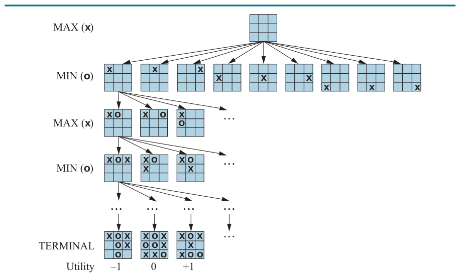
Tic-tac-toe has fewer than \(9!=362{,}880\) terminal nodes and can be searched completely. Chess has more than \(10^{40}\) nodes, so its tree can only be searched in part.井字棋的终止结点少于 \(9!=362{,}880\) 个，可以完全搜索。国际象棋的结点数超过 \(10^{40}\)，所以它的树只能部分搜索。
Practice练习
Q1. (Classification) Which of these games are deterministic, two-player, turn-taking, perfect-information and zero-sum, and why not the others? (a) chess, (b) poker, (c) backgammon, (d) a three-player board game.Q1. （分类）下列哪些博弈是确定性的、双人的、轮流走子的、完全信息的且为零和的，其他的为什么不是？（a）国际象棋，（b）扑克，（c）西洋双陆棋，（d）一种三人棋盘游戏。
Answer
(a) Yes. (b) No: shuffling is chance and the cards are hidden (imperfect information). (c) No: dice make it stochastic. (d) No: with three players the payoffs are vectors and the game is not two-player zero-sum (Section 5.2).（a）是。（b）否：洗牌带有随机性，且牌是隐藏的（非完全信息）。（c）否：骰子使其具有随机性。（d）否：三人博弈的收益是向量，且该博弈不是双人零和博弈（见第 5.2 节）。
Q2. (Design) Give the six elements of tic-tac-toe.Q2. （设计）给出井字棋的六个要素。
Answer
\(S_0\): the empty 3×3 board. TO-MOVE(\(s\)): X if the numbers of X and O marks are equal, otherwise O. ACTIONS(\(s\)): the empty squares. RESULT(\(s,a\)): \(s\) with the mover's mark in square \(a\). IS-TERMINAL(\(s\)): some player has three in a row, or the board is full. UTILITY(\(s\), MAX) with X as MAX: \(+1\) if X has three in a row, \(-1\) if O has, \(0\) for a full board without a line; UTILITY(\(s\), MIN) is its negative, because the game is zero-sum.\(S_0\)：空的 3×3 棋盘。TO-MOVE(\(s\))：若 X 与 O 的棋子数相等，则为 X，否则为 O。ACTIONS(\(s\))：所有空格。RESULT(\(s,a\))：\(s\)，并在方格 \(a\) 中放入走子方的棋子。IS-TERMINAL(\(s\))：某一方已连成三子，或棋盘已满。UTILITY(\(s\), MAX)，以 X 为 MAX：若 X 连成三子则为 \(+1\)，若 O 连成三子则为 \(-1\)，若棋盘填满且无连线则为 \(0\)；UTILITY(\(s\), MIN) 是其相反数，因为该博弈是零和的。
Minimax search ★★★极小极大搜索 ★★★
Goal. Compute the minimax value of every node of a small game tree by hand, name MAX's best move, and state time and space.目标。 手工计算小型博弈树每个结点的极小极大值，指出 MAX 的最佳走法，并说明时间和空间复杂度。
In words: minimax = MAX takes the largest value among its children, MIN takes the smallest, and values are passed up from the leaves.用文字表述：极小极大 = MAX 取其子结点中的最大值，MIN 取最小值，值从叶结点逐层向上传递。
The minimax value（极小极大值）of a state is its utility for MAX when both players play optimally to the end.一个状态的极小极大值，是双方都一直走到终局、都采取最优策略时，该状态对 MAX 的效用。
How to do it by hand手工操作方法
- Draw the tree and mark every node MAX or MIN. The root is MAX, and the levels alternate.画出树，并把每个结点标为 MAX 或 MIN。根结点是 MAX，各层交替出现。
- Write the utility under each leaf.在每个叶结点下方写出效用值。
- Work from the bottom up. A node whose children all have values gets a value too.从下往上计算。所有子结点都有值的结点，也就得到一个值。
- A MAX node gets the largest child value. A MIN node gets the smallest child value.MAX 结点取子结点值中的最大值。MIN 结点取子结点值中的最小值。
- Continue until the root has a value. The root value is the best result MAX can guarantee.一直计算到根结点有值为止。根结点的值就是 MAX 能够保证得到的最好结果。
- MAX's best move is the move to the child whose value equals the root value.MAX 的最佳走法，是走到值等于根结点值的那个子结点。

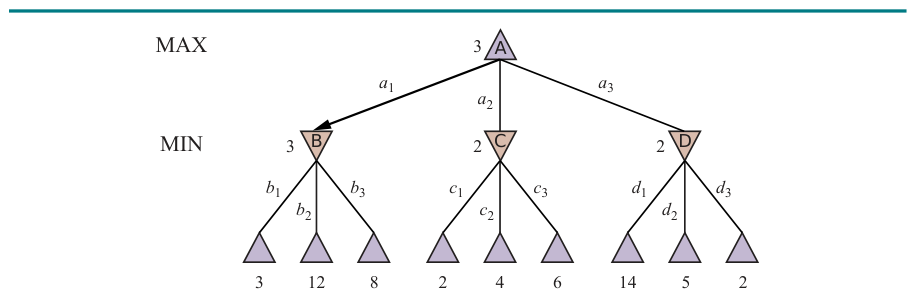
Properties性质
| Property性质 | Minimax极小极大 |
|---|---|
| Complete完备性 | yes, if the game tree is finite是，若博弈树是有限的 |
| Optimal最优性 | yes, against an optimal opponent是，针对最优对手而言 |
| Time时间 | \(O(b^m)\) |
| Space空间 | \(O(bm)\) if all actions are generated at once, \(O(m)\) if one at a time若一次生成全部动作则为 \(O(bm)\)，若逐个生成则为 \(O(m)\) |
Here \(b\) is the branching factor, the number of legal moves in a state, for example about 35 in chess. \(m\) is the maximum depth of the tree in ply, for example about 80 in chess. Minimax is depth-first, so it needs memory only for one path. Its time is exponential. For chess \(35^{80}\approx10^{123}\) states make exhaustive minimax impossible.这里 \(b\) 是分支因子，即一个状态中合法走法的数量，例如国际象棋中约为 35。\(m\) 是树的最大深度（以层计），例如国际象棋中约为 80。极小极大是深度优先的，所以只需为一条路径保存内存。它的时间是指数级的。在国际象棋中，\(35^{80}\approx10^{123}\) 个状态使穷举式的极小极大变得不可能。
Practice练习
Q1. (Calculation) A chess program (\(b=35\), 80 ply per game) evaluates \(10^9\) nodes per second. How long would exhaustive minimax take? Would perfect alpha–beta (Section 5.4) help?Q1. （计算）某国际象棋程序（\(b=35\)，每局 80 层）每秒评估 \(10^9\) 个结点。穷尽式极小极大需要多长时间？完美的 α–β 剪枝（第 5.4 节）能否帮上忙？
Answer
\(35^{80}\approx3.4\times10^{123}\) nodes take \(3.4\times10^{114}\) s, about \(1.1\times10^{107}\) years (at \(3.16\times10^{7}\) s per year), vastly more than the age of the universe (\(1.4\times10^{10}\) years). Perfect ordering needs \(35^{40}\approx5.8\times10^{61}\) nodes, still \(1.8\times10^{45}\) years. A depth cutoff with a heuristic EVAL (Section 5.5) is unavoidable.\(35^{80}\approx3.4\times10^{123}\) 个结点需要 \(3.4\times10^{114}\) 秒，约 \(1.1\times10^{107}\) 年（按每年 \(3.16\times10^{7}\) 秒计），远超过宇宙的年龄（\(1.4\times10^{10}\) 年）。完美排序需要 \(35^{40}\approx5.8\times10^{61}\) 个结点，仍需 \(1.8\times10^{45}\) 年。使用启发式 EVAL 的深度截断（第 5.5 节）是不可避免的。
Q2. (Beyond the pages: negamax) In a two-player zero-sum game let \(V(s)\) be the minimax value from the viewpoint of the player to move in \(s\). Show that \(V(s)=\max_a\bigl(-V(\text{RESULT}(s,a))\bigr)\) for nonterminal \(s\), and check it on the two-ply tree of this section.Q2. （超出正文：负极大值）在双人零和博弈中，设 \(V(s)\) 为 \(s\) 中轮到走子的玩家视角下的极小极大值。证明对于非终止状态 \(s\) 有 \(V(s)=\max_a\bigl(-V(\text{RESULT}(s,a))\bigr)\)，并在本节的两层树上检验这一结论。
Answer
The two utilities are opposite, so MIN minimising MAX's utility is the same as MIN maximising its own utility, which is the negative of MAX's. Hence every node, MAX or MIN, can take the maximum of the negated child values: one recursion replaces two (negamax). At a terminal state \(V(s)\) is the utility for the player to move there.两个效用互为相反数，因此 MIN 最小化 MAX 的效用，等同于 MIN 最大化自己的效用，而后者正是 MAX 效用的相反数。于是，无论是 MAX 结点还是 MIN 结点，都只需对取负后的子结点值求最大值：一个递归过程取代了两个（负极大值）。在终止状态处，\(V(s)\) 即为该处轮到走子的玩家的效用。
On the two-ply tree all leaves are MAX-to-move positions, so \(V(\text{leaf})\) is its utility. \(V(B)=\max(-3,-12,-8)=-3\), \(V(C)=\max(-2,-4,-6)=-2\), \(V(D)=\max(-14,-5,-2)=-2\). At the root \(V(A)=\max(3,2,2)=3\), the same as minimax.在两层树上，所有叶结点都是轮到 MAX 走子的局面，因此 \(V(\text{leaf})\) 即为其效用。\(V(B)=\max(-3,-12,-8)=-3\)，\(V(C)=\max(-2,-4,-6)=-2\)，\(V(D)=\max(-14,-5,-2)=-2\)。在根结点处 \(V(A)=\max(3,2,2)=3\)，与极小极大结果相同。
Alpha–beta pruning ★★★alpha–beta 剪枝 ★★★
Goal. Trace alpha–beta pruning by hand on a game tree: write the window \((\alpha,\beta)\) at every node, mark each cut-off, list the pruned leaves, and give the root value.目标。 在博弈树上手工演算 alpha–beta 剪枝：在每个结点写出窗口 \((\alpha,\beta)\)，标出每个截断，列出被剪掉的叶结点，并给出根结点的值。
In words: alpha–beta = minimax that skips a branch as soon as one player already has a better choice elsewhere. It returns the same root value and move as minimax.用文字表述：alpha–beta = 一种极小极大，一旦某一方在别处已有更好的选择，就跳过一个分支。它返回的根结点值和走法与极小极大相同。
Step 1: the two bounds第 1 步：两个界
Alpha–beta carries two numbers along the current path from the root.Alpha–beta 沿着从根结点到当前结点的路径携带两个数。
- \(\alpha\) = the value of the best (highest) choice found so far for MAX on the path. Think "MAX gets at least this".\(\alpha\) = 路径上 MAX 目前找到的最佳（最高）选择的值。可以这样理解：“MAX 至少能得到这么多”。
- \(\beta\) = the value of the best (lowest) choice found so far for MIN on the path. Think "MIN gets at most this".\(\beta\) = 路径上 MIN 目前找到的最佳（最低）选择的值。可以这样理解：“MIN 至多只能得到这么多”。
The pair \((\alpha,\beta)\) is the window. The root starts with \((-\infty,+\infty)\).数对 \((\alpha,\beta)\) 称为窗口。根结点的初始值为 \((-\infty,+\infty)\)。

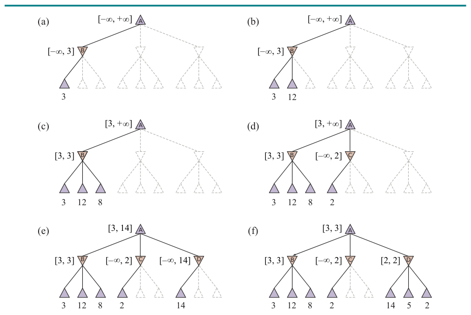
Step 2: tracing by hand第 2 步：手工演算
- Start at the root with \((\alpha,\beta)=(-\infty,+\infty)\). Go depth-first, left to right.从根结点开始，初始窗口为 \((\alpha,\beta)=(-\infty,+\infty)\)。按深度优先、从左到右的顺序访问。
- A node passes its current \((\alpha,\beta)\) down to each child. Only the returned value comes back up.一个结点把自己当前的窗口 \((\alpha,\beta)\) 传给每个子结点。向上返回的只有返回值。
- After a child returns a value \(v'\): at a MAX node set \(v\leftarrow\max(v,v')\) and \(\alpha\leftarrow\max(\alpha,v)\). At a MIN node set \(v\leftarrow\min(v,v')\) and \(\beta\leftarrow\min(\beta,v)\).某个子结点返回值 \(v'\) 之后：在 MAX 结点上设置 \(v\leftarrow\max(v,v')\) 和 \(\alpha\leftarrow\max(\alpha,v)\)。在 MIN 结点上设置 \(v\leftarrow\min(v,v')\) 和 \(\beta\leftarrow\min(\beta,v)\)。
- If \(\alpha\ge\beta\), skip the remaining children and return \(v\). This is a cut-off.如果 \(\alpha\ge\beta\)，就跳过其余子结点，并返回 \(v\)。这就是一次截断。
- Write down the pruned leaves and the number of leaves evaluated.记下被剪掉的叶子，以及实际求值的叶子数目。
A node is tested against the bounds of all its ancestors. \((\alpha,\beta)\) pass down unchanged through nodes that do not update them. A cut-off caused by an ancestor several levels up is a deep cut-off.一个结点要与其所有祖先的界限比较。\((\alpha,\beta)\) 会原样向下传递给不更新它们的结点。由相隔好几层的祖先引起的截断，称为深截断。
Step 3: one complete trace第 3 步：一次完整的演算
A (MAX) has MIN children B, C, D. Each of them has two MAX children with two leaves each: B1 = (3, 5), B2 = (6, 9), C1 = (4, 2), C2 = (8, 1), D1 = (7, 8), D2 = (9, 1).A（MAX）有三个 MIN 子结点 B、C、D。每个子结点各有两个 MAX 子结点，每个 MAX 子结点有两片叶子：B1 = (3, 5)，B2 = (6, 9)，C1 = (4, 2)，C2 = (8, 1)，D1 = (7, 8)，D2 = (9, 1)。
| Step步骤 | Node entered, window \((\alpha,\beta)\)进入结点，窗口 \((\alpha,\beta)\) | What happens发生的情况 | New \(\alpha\), \(\beta\) and value新的 \(\alpha\)、\(\beta\) 和值 |
|---|---|---|---|
| 1 | A, \((-\infty,+\infty)\) | go to B, then B1转到 B，再到 B1 | |
| 2 | B1, \((-\infty,+\infty)\) | leaf 3, then leaf 5叶子 3，然后叶子 5 | \(B_1=5\) |
| 3 | B, \((-\infty,+\infty)\) | B1 returned 5B1 返回 5 | \(\beta=5\) |
| 4 | B2, \((-\infty,5)\) | leaf 6: \(6\ge\beta=5\), cut off; leaf 9 pruned叶子 6：\(6\ge\beta=5\)，截断；叶子 9 被剪掉 | \(B_2\ge6\) |
| 5 | B | \(\min(5,6)=5\) | \(B=5\); at A, \(\alpha=5\)\(B=5\)；在 A 处，\(\alpha=5\) |
| 6 | C1, \((5,+\infty)\) | leaves 4 and 2 are read读取叶子 4 和 2 | \(C_1=4\) |
| 7 | C | \(C_1\) returned 4, so \(\beta=4\); now \(\alpha=5\ge\beta=4\): cut off; C2 (8, 1) pruned\(C_1\) 返回 4，所以 \(\beta=4\)；现在 \(\alpha=5\ge\beta=4\)：截断；C2 (8, 1) 被剪掉 | \(C\le4\) |
| 8 | D1, \((5,+\infty)\) | leaves 7 and 8 are read读取叶子 7 和 8 | \(D_1=8\) |
| 9 | D | D1 returned 8D1 返回 8 | \(\beta=8\) |
| 10 | D2, \((5,8)\) | leaf 9: \(9\ge\beta=8\), cut off; leaf 1 pruned叶子 9：\(9\ge\beta=8\)，截断；叶子 1 被剪掉 | \(D_2\ge9\) |
| 11 | D | \(\min(8,9)=8\) | \(D=8\); at A, \(\alpha=8\)\(D=8\)；在 A 处，\(\alpha=8\) |
| 12 | A | \(\max(5,4,8)=8\) | root value 8根的值为 8 |
Result: the root value is 8 and MAX moves to D. Eight of the 12 leaves are evaluated. The pruned leaves are 9 (under B2), 8 and 1 (C2), and 1 (under D2). Check with minimax: B = 5, C = 4, D = 8, and A = 8. The result is the same.结果：根的值是 8，MAX 走向 D。12 个叶子中有 8 个被求值。被剪掉的叶子是 B2 下的 9，C2 下的 8 和 1，以及 D2 下的 1。用极小极大检验：B = 5，C = 4，D = 8，A = 8。结果相同。
A cut-off node returns only a bound, not its exact value. In step 7 the node C is reported as at most 4. MAX has 5 elsewhere, so C does not matter. The root window is infinite, so the root value is exact.被截断的结点只返回一个界限，而不是它的精确值。在第 7 步中，结点 C 被报告为至多为 4。MAX 在别处得到 5，所以 C 不影响结果。根的窗口是无穷的，所以根的值是精确的。
Practice练习
Q1. (Trace) Apply alpha–beta left to right to this tree: root A (MAX) with MIN children X = (7, 4, 9), Y = (3, 8, 6), Z = (6, 2, 9). Give the window on entering each MIN node, the pruned leaves and the root value.Q1. （手工演算）对这棵树从左到右应用 α–β：根结点 A（MAX）有 MIN 子结点 X = (7, 4, 9)、Y = (3, 8, 6)、Z = (6, 2, 9)。给出进入每个 MIN 结点时的窗口、被剪掉的叶结点以及根结点的值。
Answer
X is entered with \((-\infty,+\infty)\); all three leaves are read, \(X=4\), so A has \(\alpha=4\). Y is entered with \((4,+\infty)\): leaf \(3\le4\) cuts it off, leaves 8 and 6 are pruned. Z is entered with \((4,+\infty)\): leaf 6 gives \(\beta=6\), then leaf \(2\le4\) cuts it off, leaf 9 is pruned. Root \(=\max(4,3,2)=4\): move to X. Six of nine leaves are evaluated; pruned leaves: 8, 6, 9.进入 X 时窗口为 \((-\infty,+\infty)\)；三个叶结点都被读取，\(X=4\)，因此 A 的值为 \(\alpha=4\)。进入 Y 时窗口为 \((4,+\infty)\)：叶结点 \(3\le4\) 使其被截断，叶结点 8 和 6 被剪掉。进入 Z 时窗口为 \((4,+\infty)\)：叶结点 6 给出 \(\beta=6\)，然后叶结点 \(2\le4\) 使其被截断，叶结点 9 被剪掉。根结点 \(=\max(4,3,2)=4\)：走向 X。9 个叶结点中有 6 个被求值；被剪掉的叶结点为 8、6、9。
Q2. (Explain) Why can the remaining children of a MIN node be skipped as soon as \(v\le\alpha\), and why does this never change the root's decision?Q2. （解释）为什么一个 MIN 结点的其余子结点可以在 \(v\le\alpha\) 时立即跳过，而这又为什么绝不会改变根结点的决策？
Answer
MIN takes the minimum, so the node's value is at most \(v\), hence at most \(\alpha\). \(\alpha\) was found higher up the path, so MAX already has an alternative worth at least \(\alpha\) there. MAX therefore never prefers this node: its exact value cannot raise the maximum at that ancestor above \(\alpha\), and so nothing above the ancestor changes either. For \(v\ge\beta\) at a MAX node the argument is symmetric. Formally, a call returns the exact value when it lies inside \((\alpha,\beta)\) and otherwise a bound on the correct side; with the root window \((-\infty,+\infty)\) the root value is exact.MIN 取最小值，因此该结点的值至多为 \(v\)，从而至多为 \(\alpha\)。\(\alpha\) 已在路径更高处被找到，因此 MAX 在那里已经有一个至少值为 \(\alpha\) 的替代选择。所以 MAX 永远不会偏好这个结点：其精确值不可能使该祖先处的最大值超过 \(\alpha\)，因此该祖先之上的一切也都不会改变。对于 MAX 结点上的 \(v\ge\beta\)，论证是对称的。形式地说，一次调用在值严格位于 \((\alpha,\beta)\) 之内时返回精确值，否则返回正确一侧的界；在根结点窗口为 \((-\infty,+\infty)\) 时，根结点的值是精确的。
思路：MIN 结点已确定 ≤ α，而上层 MAX 已有 ≥ α 的选择。
Q3. (Trace with a deep cut-off) Root A (MAX) has MIN children B, C. B has MAX children D, E; C has MAX children F, G. Each of D, E, F, G has two MIN children, each with two leaves:Q3. （手工演算，含深截断）根结点 A（MAX）有 MIN 子结点 B、C。B 有 MAX 子结点 D、E；C 有 MAX 子结点 F、G。D、E、F、G 各有两个 MIN 子结点，每个 MIN 子结点各带两个叶结点：
D: H = (5, 6) I = (2, 6) F: L = (7, 2) M = (4, 2)
E: J = (7, 1) K = (8, 9) G: N = (6, 5) O = (3, 7)
Apply alpha–beta left to right. Which leaves are pruned, and which cut-off is deep?从左到右应用 α–β。哪些叶结点被剪掉？哪一次截断是深截断？
Answer
H reads 5, 6 and returns 5, so D has \(\alpha=5\). I is entered with \((5,+\infty)\); leaf \(2\le5\) cuts it off, leaf 6 is pruned; \(D=5\). E is entered with \((-\infty,5)\): J reads 7, 1 and returns 1; K, entered with \((1,5)\), reads 8, 9 and returns 8; \(E=8\ge5\). \(B=\min(5,8)=5\), so A has \(\alpha=5\).H 读取 5、6 并返回 5，因此 D 的值为 \(\alpha=5\)。进入 I 时窗口为 \((5,+\infty)\)；叶结点 \(2\le5\) 使其被截断，叶结点 6 被剪掉；\(D=5\)。进入 E 时窗口为 \((-\infty,5)\)：J 读取 7、1 并返回 1；进入 K 时窗口为 \((1,5)\)，K 读取 8、9 并返回 8；\(E=8\ge5\)。\(B=\min(5,8)=5\)，因此 A 的值为 \(\alpha=5\)。
C is entered with \((5,+\infty)\). L reads 7, 2 and returns 2. M is entered with \((5,+\infty)\): leaf \(4\le5\) cuts it off, leaf 2 is pruned; \(F=\max(2,4)=4\). At C, \(4\le\alpha=5\): C is cut off and the whole subtree G (leaves 6, 5, 3, 7) is pruned. Root \(=\max(5,4)=5\): move to B.进入 C 时窗口为 \((5,+\infty)\)。L 读取 7、2 并返回 2。进入 M 时窗口为 \((5,+\infty)\)：叶结点 \(4\le5\) 使其被截断，叶结点 2 被剪掉；\(F=\max(2,4)=4\)。在 C 处，\(4\le\alpha=5\)：C 被截断，整个子树 G（叶结点 6、5、3、7）被剪掉。根结点 \(=\max(5,4)=5\)：走向 B。
Ten of 16 leaves are evaluated; the pruned leaves are 6 (under I), 2 (under M) and the four leaves under G. The cut-off at M is deep: F's own value is only 2, so only the bound \(\alpha=5\) inherited from A, three levels up, justifies it.16 个叶结点中有 10 个被求值；被剪掉的叶结点为 I 之下的 6、M 之下的 2，以及 G 之下的四个叶结点。在 M 处的截断是深截断：F 自身的值只有 2，因此只有从三层之上的 A 继承来的界 \(\alpha=5\) 才能证明这次截断的合理性。
Move ordering and search efficiency ★★★移动排序与搜索效率 ★★★
Goal. Show on a tree how a better order of children gives more cut-offs, state the node counts for worst, random and perfect ordering, and compute the depth reached in a fixed time.目标。 在一棵树上展示：子结点的更好排序会带来更多截断；给出最坏、随机和完美排序下的结点数；并计算固定时间内能搜索到的深度。
In words: the sooner the best move is examined, the more is pruned. Alpha–beta needs a good bound early.用文字表述：最佳走法越早被考察，被剪掉的就越多。alpha–beta 需要尽早得到一个好的界限。
In the two-ply tree of Section 5.2, the leaves under the third MIN node, called \(D\), are (14, 5, 2). MIN's best reply, 2, comes last, so nothing is pruned there. With D's leaves in the order (2, 5, 14), the first leaf \(2\le\alpha=3\) cuts D off at once. Then only 5 of the 9 leaves are evaluated (3 under B, 1 under C, 1 under D) instead of 7.在第 5.2 节的两层树中，第三个 MIN 结点（称为 \(D\)）下的叶子是 (14, 5, 2)。MIN 的最佳应对值 2 排在最后，所以这里什么也没被剪掉。若 D 下的叶子顺序为 (2, 5, 14)，第一片叶子 \(2\le\alpha=3\) 立即截断 D。这时只需对 9 片叶子中的 5 片求值（B 下 3 片，C 下 1 片，D 下 1 片），而不是 7 片。
The rule is: examine first the child that is likely to be best. At a MAX node that is the highest-valued child. At a MIN node it is the lowest-valued child.规则是：先考察很可能最好的子结点。在 MAX 结点上，它是值最高的子结点。在 MIN 结点上，它是值最低的子结点。
| Ordering排序方式 | Nodes examined检查的结点数 | Effective branching factor有效分支因子 |
|---|---|---|
| Worst (best moves last)最坏（最优走法排在最后） | \(O(b^m)\), no pruning\(O(b^m)\)，无剪枝 | \(b\) |
| Random随机 | about \(O(b^{3m/4})\) for moderate \(b\)约 \(O(b^{3m/4})\)（当 \(b\) 适中时） | about \(b^{3/4}\)约 \(b^{3/4}\) |
| Perfect (best first)完美（最优者优先） | \(O(b^{m/2})\) | \(\sqrt b\) |
Here \(b\) is the branching factor and \(m\) the depth of the tree in ply. The effective branching factor is the factor by which the number of nodes grows with each extra ply. With perfect ordering it is \(\sqrt b\), so alpha–beta searches about twice as deep as minimax in the same time. For chess \(\sqrt{35}\approx6\) instead of 35.这里 \(b\) 是分支因子，\(m\) 是以层计的树深度。有效分支因子是每多一层，结点数增长的倍数。在完美排序下，它是 \(\sqrt b\)，所以 alpha–beta 在同样时间内能搜索到大约两倍深。对于国际象棋，它是 \(\sqrt{35}\approx6\)，而不是 35。
Calculation: depth reached in the same time计算：同样时间内能到达的深度
Getting good ordering获得良好的排序
Perfect ordering is impossible, because it would require knowing the best move. Cheap heuristics come close.完美排序做不到，因为那需要事先知道最佳走法。廉价的启发式方法可以接近它。
- Static ordering. In chess try captures first, then threats, then forward moves, then backward moves.静态排序。 在国际象棋中，先试吃子走法，再试威胁性走法，然后是前进走法，最后是后退走法。
- Iterative deepening（迭代加深）with killer moves（杀手走法）. Search one ply, rank the moves, then search one ply deeper using that ranking. The best moves found earlier are tried first.迭代加深结合杀手走法。先搜索一层，给走法排序，然后用这个排序再往深搜索一层。之前找到的最佳走法会先被试。
- Transposition table（置换表）. It stores the value of every position already searched. A position reached by another order of the same moves (a transposition) is looked up and not searched again.置换表。它存放每个已搜索过的局面的值。如果同一组走法以另一种顺序到达同一局面（即一次换位），就直接查表，不再重复搜索。
The repetition in iterative deepening is cheap, because the last level dominates the cost.迭代加深中的重复搜索代价很小，因为最后一层占了主要的代价。
Practice练习
Q1. (Reordering) In the tree of Practice Q1 in Section 5.3 (X = (7, 4, 9), Y = (3, 8, 6), Z = (6, 2, 9)), reorder the successors of every node to maximise pruning. How many leaves are then evaluated, and could any ordering do better?Q1. （重新排序）在第 5.3 节练习 Q1 的树中（X = (7, 4, 9)、Y = (3, 8, 6)、Z = (6, 2, 9)），重新排列每个结点的后继以使剪枝最多。此时有多少个叶结点被求值？是否存在更好的排序？
Answer
Put the lowest leaf first under each MIN node: X = (4, 7, 9), Y = (3, 6, 8), Z = (2, 6, 9); X (value 4) is already the best root child. X needs all three leaves (no bound yet), so \(\alpha=4\). Y: leaf \(3\le4\) cuts it off after one leaf. Z: leaf \(2\le4\) cuts it off after one leaf. Total \(3+1+1=5\) leaves instead of 6. No ordering does better: \(L_{\min}=3^1+3^1-1=5\) for \(b=3\), \(d=2\) (all \(b\) leaves of the best child, plus one refuting leaf for each of the other \(b-1\) children).将每个 MIN 结点之下最小的叶结点排在最前：X = (4, 7, 9)、Y = (3, 6, 8)、Z = (2, 6, 9)；X（值为 4）已经是根结点最好的子结点。X 需要全部三个叶结点（此时尚无界），因此 \(\alpha=4\)。Y：叶结点 \(3\le4\) 使其在读取一个叶结点后即被截断。Z：叶结点 \(2\le4\) 使其在读取一个叶结点后即被截断。共需 \(3+1+1=5\) 个叶结点，而不是 6 个。没有任何排序能做得更好：\(L_{\min}=3^1+3^1-1=5\) 用于 \(b=3\)，\(d=2\)（即最佳子结点的全部 \(b\) 个叶结点，加上其余 \(b-1\) 个子结点各一个反驳性叶结点）。
Q2. (Calculation) With minimax a program reaches 6 ply within its time limit (\(b=35\)). Assuming time proportional to nodes, how deep can alpha–beta go in the same time with (a) perfect ordering, (b) random ordering? (c) What is the fewest leaves alpha–beta must evaluate for \(b=3\), \(d=4\)?Q2. （计算）用极小极大，一个程序能在其时间限制内（\(b=35\)）达到 6 层。假设时间与结点数成正比，在相同时间内，α–β 在 (a) 完美排序和 (b) 随机排序下分别能搜索多深？(c) 对于 \(b=3\)、\(d=4\)，α–β 必须求值的叶结点最少为多少？
Answer
The budget is \(N=35^6\) nodes. (a) \(35^{m/2}=35^6\) gives \(m=12\) ply. (b) \(35^{3m/4}=35^6\) gives \(m=8\) ply. (c) \(L_{\min}=3^2+3^2-1=17\) of \(3^4=81\) leaves.预算为 \(N=35^6\) 个结点。（a）\(35^{m/2}=35^6\) 得到 \(m=12\) 层。（b）\(35^{3m/4}=35^6\) 得到 \(m=8\) 层。（c）\(3^4=81\) 个叶结点中的 \(L_{\min}=3^2+3^2-1=17\) 个。
Q3. (Explain) (a) What is a transposition table and what does it save? (b) How do iterative deepening and killer moves help alpha–beta, and why is the repeated work acceptable?Q3. （解释）（a）什么是置换表？它节省了什么？（b）迭代加深和杀手走法如何帮助 α–β？重复的工作为什么是可以接受的？
Answer
(a) Different move orders can reach the same position. The table stores the value found for each searched position, so the subtree is not searched again. (b) Each iteration (depth 1, 2, 3, …) ranks the moves; the next iteration tries the best-ranked moves (killer moves) first, which produces cut-offs earlier. The repetition is cheap because the last level dominates: for \(b=35\), depths 1 to 5 cost \(\sum_{k=1}^{5}35^k=54{,}066{,}635\) nodes, only 2.9% more than depth 5 alone (\(52{,}521{,}875\)), and better ordering repays this.（a）不同的走法顺序可以到达同一局面。置换表存储每个已搜索局面的值，因此其子树不会被再次搜索。（b）每一次迭代（深度 1、2、3……）都对走法进行排序；下一次迭代会先尝试排序最靠前的走法（杀手走法），从而更早产生截断。重复的代价很低，因为最后一层占主导：对于 \(b=35\)，深度 1 到 5 共需 \(\sum_{k=1}^{5}35^k=54{,}066{,}635\) 个结点，仅比单独搜索深度 5（\(52{,}521{,}875\)）多 2.9%，而更好的排序足以抵偿这部分代价。
Heuristic alpha–beta search ★★启发式 alpha–beta 搜索 ★★
Goal. Explain why real programs cut off the search, how an evaluation function is built and computed, and what quiescence search, the horizon effect and forward pruning mean.目标。 解释实际程序为什么要截断搜索，评价函数如何构造和计算，以及静止搜索、水平线效应和前向剪枝各是什么意思。
In words: real programs stop at a fixed depth and guess the value of the position there.用文字表述：实际程序在固定深度停下来，并猜测该处局面的值。
Chess cannot be searched to the end, even with good ordering. A cutoff test（截断测试）IS-CUTOFF replaces the terminal test, usually with a depth limit. A heuristic evaluation function（评估函数）EVAL replaces UTILITY and estimates the value of a position. It must equal UTILITY at terminal states, be fast, and correlate with the real chance of winning.即使有好的排序，国际象棋也无法搜索到终局。截断测试代替终局测试，通常用深度限制。启发式评价函数 EVAL 代替 UTILITY，用来估计局面的值。它在终局状态下必须等于 UTILITY，计算要快，而且要与真正的获胜概率相关。IS-CUTOFF 是截断测试的函数形式。
The function assumes that features add up independently. Strong programs add nonlinear terms, for example a bonus for the pair of bishops.这个函数假设各个特征是彼此独立相加的。强的程序会加入非线性项，比如对拥有一对象的一方给予奖励。
Example: White has one more rook (+5) and two fewer pawns (\(-2\)). Then EVAL = 5 − 2 = +3, so White is ahead by three pawns.例子：白方多一个车（+5），但少两个兵（\(-2\)）。于是 EVAL = 5 − 2 = +3，即白方领先三个兵。
Two problems arise when the search stops at a fixed depth.当搜索停在固定深度时，会出现两个问题。
- Nonquiescent position. The cutoff may fall in the middle of an exchange, for example just before a queen is captured. A material count then misjudges the position. The fix is quiescence search（静止搜索）: EVAL is applied only to quiet positions, and the search goes on, often with captures only, until the position is quiet.非静止局面。 截断可能落在一次交换的中间，例如正好在皇后被吃之前。这时只数子力，就会误判局面。补救办法是静止搜索：只对安静的局面使用 EVAL，并继续搜索（通常只搜索吃子走法），直到局面变得安静。
- Horizon effect（水平线效应）. An unavoidable loss is pushed beyond the search depth by delaying moves, so the program thinks the delaying moves are good. A remedy is singular extensions（单一延伸）: a move that is clearly better than all others is searched deeper than the limit.水平线效应。一个无法避免的失子，会因为拖延走法而被推到搜索深度之外，于是程序以为这些拖延走法是好的。补救办法是单一延伸：一步明显优于所有其他走法的走法，会被搜索得比深度限制更深。
Forward pruning（前向剪枝）discards moves that merely look poor, for example beam search, ProbCut and late move reduction（后期走法缩减）. It saves time but may lose the best move. Alpha–beta prunes only what provably cannot matter and is safe. Programs also replace search by lookup: an opening book（开局库）at the start and an endgame tablebase（残局库）at the end of a game.前向剪枝丢弃那些只是看起来不好的走法，例如集束搜索、ProbCut 和后期走法缩减。它节省时间，但可能丢掉最佳走法。Alpha–beta 只剪掉可证明不影响结果的部分，因此是安全的。程序还用查表代替搜索：开局时用开局库，终局时用残局库。
Practice练习
Q1. (Calculation) (a) White has Q, 2R, B, 2N, 6P; Black has Q, R, 2B, N, 7P. Evaluate from White's side with the weighted linear material function (P 1, N 3, B 3, R 5, Q 9). (b) A category of states has 70% wins, 10% losses and 20% draws (utilities 1, 0, ½). Give its expected-value evaluation.Q1. （计算）（a）白方有 Q、2R、B、2N、6P；黑方有 Q、R、2B、N、7P。用加权线性子力函数（P 1、N 3、B 3、R 5、Q 9）从白方的角度评估。（b）某类状态中有 70% 胜、10% 负、20% 和（效用分别为 1、0、½）。给出其期望值评价。
Answer
(a) Feature differences (White minus Black): P \(-1\), N \(+1\), B \(-1\), R \(+1\), Q \(0\). \(\text{EVAL}=1(-1)+3(1)+3(-1)+5(1)+9(0)=+4\), so White is ahead by the equivalent of four pawns (check: \(34-30\)). (b) \(0.7\cdot1+0.1\cdot0+0.2\cdot\frac12=0.8\).（a）特征差（白方减黑方）：P \(-1\)，N \(+1\)，B \(-1\)，R \(+1\)，Q \(0\)。\(\text{EVAL}=1(-1)+3(1)+3(-1)+5(1)+9(0)=+4\)，因此白方领先相当于四个兵的子力（核对：\(34-30\)）。（b）\(0.7\cdot1+0.1\cdot0+0.2\cdot\frac12=0.8\)。
Q2. (Explain) A program cuts off at a fixed depth and evaluates material. (a) Describe a position where this misjudges and the repair. (b) What is the horizon effect and one remedy?Q2. （解释）某程序在固定深度处截断，并评估子力。（a）描述一个会导致误判的局面，以及补救方法。（b）什么是地平线效应？给出一种补救方法。
Answer
(a) At the cutoff the position may be nonquiescent: Black has just won a knight and two pawns, but White's next move captures Black's queen. The material EVAL reports a Black advantage although White is better. Repair: apply EVAL only to quiescent positions; IS-CUTOFF returns false while a capture or similar move is pending, and quiescence search continues (often with captures only) until the position is quiet. (b) An unavoidable loss is pushed beyond the search depth by delaying moves, such as pawn sacrifices with check, so the program rates the delaying moves as good although they only waste material. Remedy: singular extensions search a clearly best move beyond the limit and so expose the loss.（a）在截断处，局面可能是非静止的：黑方刚刚赢得一马两兵，但白方的下一步却能吃掉黑方的后。子力 EVAL 判定黑方占优，尽管实际上白方更好。补救方法：只对静止局面应用 EVAL；当有吃子或类似走法待走时，IS-CUTOFF 返回假，静止搜索继续进行（通常只搜索吃子走法），直到局面平静下来。（b）一个不可避免的损失可以通过拖延走法（例如带将军的弃兵）被推到搜索深度之外，因此程序把这些拖延走法评为好棋，尽管它们只是白白损失子力。补救方法：单一延伸搜索超出深度限制的明显最佳走法，从而暴露这一损失。
Terms to recognise ★需要认识的术语 ★
| Term术语 | What to know要知道什么 |
|---|---|
| Multiplayer game多人博弈 | Each node holds a utility vector. The player to move picks the child best in its own entry每个结点保存一个效用向量。轮到走棋的一方，选择自己那一项最好的子结点。 |
| Conditional plan（条件计划） | MAX's strategy: a reply to every possible MIN moveMAX 的策略：对 MIN 的每一种走法都给出应对 |
| Negamax | One recursion for both players: \(V(s)=\max_a(-V(\text{RESULT}(s,a)))\), valid in zero-sum games两个玩家共用一个递归：\(V(s)=\max_a(-V(\text{RESULT}(s,a)))\)，仅在零和博弈中成立 |
| Shannon Type A and Type BShannon 的 A 型和 B 型 | Type A: all moves to a fixed depth. Type B: ignore bad-looking moves, follow good lines farA 型：所有走法都搜索到固定深度。B 型：忽略看起来不好的走法，沿好的变化走得很深。 |
| Expected-value evaluation期望值评估 | EVAL of a category of states = sum of outcome fraction times its utility一类状态的 EVAL = 各结果的占比 × 其效用之和 |
| Retrograde analysis逆向分析 | Builds an endgame tablebase: mark won positions, work backwards with reversed moves构造残局库：标记获胜局面，再用反向走法向前推算 |
Exam-style questions考试题型练习
Q1. (Trace, 20 marks) Root A (MAX) has MIN children B, C; B has MAX children D, E; C has MAX children F, G; each of D, E, F, G has two MIN children, each with two leaves:Q1. （手工演算，20 分）根结点 A（MAX）有 MIN 子结点 B、C；B 有 MAX 子结点 D、E；C 有 MAX 子结点 F、G；D、E、F、G 各有两个 MIN 子结点，每个 MIN 子结点各带两个叶结点：
D: H = (9, 2) I = (1, 9) F: L = (1, 7) M = (4, 5)
E: J = (6, 4) K = (5, 1) G: N = (9, 7) O = (1, 2)
(a) Compute the minimax value of every node and MAX's best move. (6 marks)（a）计算每个结点的极小极大值，以及 MAX 的最佳走法。（6 分）
(b) Apply alpha–beta left to right. Give the window on entering each node, mark the cut-offs, list the pruned leaves and count the leaves evaluated. (10 marks)（b）对这棵树从左到右应用 α–β。给出进入每个结点时的窗口，标出截断，列出被剪掉的叶结点，并统计被求值的叶结点数。（10 分）
(c) Reorder the successors to evaluate as few leaves as possible. How many leaves are needed, and is this the minimum? (4 marks)（c）重新排列后继，使求值的叶结点尽可能少。需要多少个叶结点？这是否为最少？（4 分）
Answer
(a) \(H=2\), \(I=1\), \(J=4\), \(K=1\), \(L=1\), \(M=4\), \(N=7\), \(O=1\). \(D=\max(2,1)=2\), \(E=\max(4,1)=4\), \(F=\max(1,4)=4\), \(G=\max(7,1)=7\). \(B=\min(2,4)=2\), \(C=\min(4,7)=4\). Root \(A=\max(2,4)=4\): MAX moves to C.（a）\(H=2\)、\(I=1\)、\(J=4\)、\(K=1\)、\(L=1\)、\(M=4\)、\(N=7\)、\(O=1\)。\(D=\max(2,1)=2\)、\(E=\max(4,1)=4\)、\(F=\max(1,4)=4\)、\(G=\max(7,1)=7\)。\(B=\min(2,4)=2\)、\(C=\min(4,7)=4\)。根结点 \(A=\max(2,4)=4\)：MAX 走向 C。
(b)
| Node结点 | Window on entry进入时的窗口 | What happens发生的情况 | Returns返回值 |
|---|---|---|---|
| A | \((-\infty,+\infty)\) | B first, then C先 B，然后 C | 4 |
| B, D | \((-\infty,+\infty)\) | D reads H, ID 读取 H、I | \(B=2\), \(D=2\) |
| H | \((-\infty,+\infty)\) | leaves 9, 2叶结点 9、2 | 2, so D has \(\alpha=2\)2，因此 D 的值为 \(\alpha=2\) |
| I | \((2,+\infty)\) | leaf \(1\le2\): cut off, leaf 9 pruned叶结点 \(1\le2\)：截断，叶结点 9 被剪掉 | 1 |
| E | \((-\infty,2)\) | J reads 6, 4 and returns 4; \(4\ge\beta=2\): cut off, K (5, 1) prunedJ 读取 6、4 并返回 4；\(4\ge\beta=2\)：截断，K（5、1）被剪掉 | 4 |
| C, F | \((2,+\infty)\) | F reads L, MF 读取 L、M | \(F=4\), so C has \(\beta=4\)\(F=4\)，因此 C 的值为 \(\beta=4\) |
| L | \((2,+\infty)\) | leaf \(1\le2\): deep cut-off (\(\alpha\) comes from A), leaf 7 pruned叶结点 \(1\le2\)：深截断（\(\alpha\) 来自 A），叶结点 7 被剪掉 | 1 |
| M | \((2,+\infty)\) | leaves 4, 5叶结点 4、5 | 4 |
| G | \((2,4)\) | N reads 9, 7 and returns 7; \(7\ge\beta=4\): cut off, O (1, 2) prunedN 读取 9、7 并返回 7；\(7\ge\beta=4\)：截断，O（1、2）被剪掉 | 7 |
The root value is 4 with move C. Ten of 16 leaves are evaluated; the six pruned leaves are 9 (under I), 5 and 1 (K), 7 (L), 1 and 2 (O).根结点的值为 4，走法为 C。16 个叶结点中有 10 个被求值；被剪掉的六个叶结点为 I 之下的 9、K 之下的 5 和 1、L 之下的 7，以及 O 之下的 1 和 2。
(c) Examine the best child first: at MAX nodes the highest-valued child, at MIN nodes the lowest-valued child, so A: C, B; C: F, G; F: M, L; G: N, O; B: D, E; D: H, I; E: J, K; and each MIN node's leaves in ascending order. Then M reads 4, 5 (\(F=4\)); L reads 1 and is cut off; N reads 7, 9 and G is cut off (\(7\ge4\)); under B, H reads 2 and I reads 1 (both \(\le\alpha=4\), cut off) and B is cut off with E pruned. That is \(2+1+2+1+1=7\) leaves. This is the minimum: \(b^{\lceil d/2\rceil}+b^{\lfloor d/2\rfloor}-1=2^2+2^2-1=7\) for \(b=2\), \(d=4\).（c）先检查最好的子结点：在 MAX 结点取值最高的子结点，在 MIN 结点取值最低的子结点，因此 A：C、B；C：F、G；F：M、L；G：N、O；B：D、E；D：H、I；E：J、K；并且每个 MIN 结点的叶结点按升序排列。然后，M 读取 4、5（\(F=4\)）；L 读取 1 并被截断；N 读取 7、9，G 被截断（\(7\ge4\)）；在 B 之下，H 读取 2，I 读取 1（二者均为 \(\le\alpha=4\)，被截断），B 被截断，E 被剪掉。共 \(2+1+2+1+1=7\) 个叶结点。这就是最少的：\(b^{\lceil d/2\rceil}+b^{\lfloor d/2\rfloor}-1=2^2+2^2-1=7\) 用于 \(b=2\)，\(d=4\)。
思路：先画窗口再判断剪枝；重排时让每个 MAX 结点先看最大的、MIN 结点先看最小的。
Q2. (Explain and prove, 12 marks) (a) Define \(\alpha\) and \(\beta\) in alpha–beta search and state when a node is cut off. (4 marks) (b) Show that a cut-off at a MIN node with \(v\le\alpha\) cannot change the root's minimax value. (4 marks) (c) State the number of nodes examined with worst, random and perfect move ordering, the effective branching factor in the perfect case, and two techniques that improve ordering. (4 marks)Q2. （解释并证明，12 分）（a）定义 α–β 搜索中的 \(\alpha\) 和 \(\beta\)，并说明何时一个结点被截断。（4 分）（b）证明在 MIN 结点上 \(v\le\alpha\) 的截断不会改变根结点的极小极大值。（4 分）（c）给出最坏、随机和完美走法排序下被检查的结点数、完美情形下的有效分支因子，以及两种改进排序的技术。（4 分）
Answer
(a) \(\alpha\) is the value of the best (highest) choice found so far for MAX at any choice point on the path from the root to the current node; \(\beta\) is the value of the best (lowest) choice found so far for MIN on that path. A MAX node is cut off, returning its current value, when \(v\ge\beta\); a MIN node when \(v\le\alpha\). Both mean \(\alpha\ge\beta\).（a）\(\alpha\) 为从根结点到当前结点的路径上，MAX 在任一选择点迄今找到的最佳（最高）选择的值；\(\beta\) 为该路径上 MIN 迄今找到的最佳（最低）选择的值。MAX 结点在 \(v\ge\beta\) 时被截断，返回其当前值；MIN 结点在 \(v\le\alpha\) 时被截断。两者都表示 \(\alpha\ge\beta\)。
(b) MIN takes the minimum, so the value of the MIN node \(n\) is at most \(v\le\alpha\). \(\alpha\) was found higher up the path, so some MAX ancestor \(m\) already has an alternative worth at least \(\alpha\). The value of \(m\) is the maximum over its children, so it is at least \(\alpha\ge\text{value}(n)\); replacing the value of \(n\) by anything \(\le\alpha\), or never computing it, leaves that maximum unchanged. Everything above \(m\) is computed from \(m\)'s value and is therefore unchanged, so the root value is the same. The case \(v\ge\beta\) at a MAX node is symmetric.（b）MIN 取最小值，因此 MIN 结点 \(n\) 的值至多为 \(v\le\alpha\)。\(\alpha\) 已在路径更高处被找到，因此某个 MAX 祖先 \(m\) 已经有一个至少值为 \(\alpha\) 的替代选择。\(m\) 的值是其子结点的最大值，因此至少为 \(\alpha\ge\text{value}(n)\)；用任何 \(\le\alpha\) 的值替换 \(n\) 的值，或者根本不计算它，都不会改变该最大值。\(m\) 以上的一切都由 \(m\) 的值计算得出，因此保持不变，所以根结点的值相同。MAX 结点上的 \(v\ge\beta\) 情形是对称的。
(c) Worst order: \(O(b^m)\) (no pruning); random order: about \(O(b^{3m/4})\); perfect order: \(O(b^{m/2})\), with effective branching factor \(\sqrt b\) (about 6 instead of 35 for chess), so about twice the depth in the same time. Ordering can be improved by static heuristics (captures, threats, forward moves, backward moves), by iterative deepening with killer moves (best moves from earlier, shallower searches), and by transposition tables.（c）最坏顺序：\(O(b^m)\)（无剪枝）；随机顺序：约为 \(O(b^{3m/4})\)；完美顺序：\(O(b^{m/2})\)，有效分支因子为 \(\sqrt b\)（国际象棋中约为 6，而非 35），因此在相同时间内深度约为两倍。排序可以通过静态启发式（吃子、威胁、前进走法、后退走法）、带杀手走法的迭代加深（来自较早、较浅搜索的最佳走法），以及置换表来改进。
Q3. (Calculation, 10 marks) A chess program (\(b=35\)) evaluates \(10^6\) nodes per second and has 60 s per move. Using the idealised costs \(b^m\), \(b^{3m/4}\) and \(b^{m/2}\): (a) What depth can minimax reach, and how long would the next ply take? (b) What depth can alpha–beta reach with perfect ordering? (c) With random ordering? (d) Where does a real program with good but imperfect ordering fall?Q3. （计算，10 分）某国际象棋程序（\(b=35\)）每秒评估 \(10^6\) 个结点，每步有 60 秒。使用理想化的代价 \(b^m\)、\(b^{3m/4}\) 和 \(b^{m/2}\)：（a）极小极大能到达多深，下一层需要多长时间？（b）完美排序下 α–β 能到达多深？（c）随机排序下呢？（d）一个排序良好但并不完美的实际程序会落在哪里？
Answer
The budget is \(N=60\times10^6=6\times10^7\) nodes.预算为 \(N=60\times10^6=6\times10^7\) 个结点。
(a) \(35^m\le6\times10^7\) gives \(m\le\ln(6\times10^7)/\ln35\approx5.04\), so 5 ply (\(35^5=52{,}521{,}875\) nodes, 52.5 s). Six ply needs \(35^6\approx1.84\times10^9\) nodes, about 31 minutes.（a）\(35^m\le6\times10^7\) 得到 \(m\le\ln(6\times10^7)/\ln35\approx5.04\)，因此为 5 层（\(35^5=52{,}521{,}875\) 个结点，52.5 秒）。6 层需要 \(35^6\approx1.84\times10^9\) 个结点，约 31 分钟。
(b) \(35^{m/2}\le6\times10^7\) gives \(m\le10.07\): 10 ply (about \(35^5\) nodes, 52.5 s).（b）\(35^{m/2}\le6\times10^7\) 得到 \(m\le10.07\)：10 层（约 \(35^5\) 个结点，52.5 秒）。
(c) \(35^{3m/4}\le6\times10^7\) gives \(m\le6.72\): 6 ply (about \(8.9\times10^6\) nodes; 7 ply would need \(1.3\times10^8\)).（c）\(35^{3m/4}\le6\times10^7\) 得到 \(m\le6.72\)：6 层（约 \(8.9\times10^6\) 个结点；7 层则需要 \(1.3\times10^8\)）。
(d) Real ordering lies between random and perfect, so the reachable depth lies between 6 and 10 ply; simple chess heuristics come within a factor of 2 of the best case, and transposition tables and iterative deepening push it further.（d）实际的排序介于随机与完美之间，因此可达深度位于 6 层与 10 层之间；简单的国际象棋启发式可使结果与最佳情形相差在 2 倍以内，而置换表和迭代加深还能把深度再推高一些。
Q4. (Heuristic search, 12 marks) (a) Compare Shannon's Type A and Type B strategies and say which one heuristic alpha–beta belongs to. (3 marks) (b) State three requirements on an evaluation function and give the weighted linear form. (3 marks) (c) Explain quiescence search and the horizon effect, with one remedy for the latter. (4 marks) (d) Why is forward pruning risky, and how does ProbCut reduce the risk? (2 marks)Q4. （启发式搜索，12 分）（a）比较香农的 A 型与 B 型策略，并说明启发式 α–β 属于哪一类。（3 分）（b）给出评价函数的三项要求，并给出加权线性形式。（3 分）（c）解释静止搜索和地平线效应，并给出后者的一种补救方法。（4 分）（d）为什么前向剪枝有风险？ProbCut 如何降低这一风险？（2 分）
Answer
(a) Type A considers all moves to a fixed depth and then applies EVAL: wide and shallow. Type B ignores moves that look bad and follows promising lines far: deep and narrow. Heuristic alpha–beta with a depth cutoff is Type A (most chess programs); forward pruning is Type B.（a）A 型对所有走法搜索到固定深度，然后应用 EVAL：宽而浅。B 型忽略看起来不好的走法，并沿着有希望的变例深入搜索：深而窄。带深度截断的启发式 α–β 属于 A 型（大多数国际象棋程序）；前向剪枝属于 B 型。
(b) EVAL must equal UTILITY at terminal states and lie between loss and win elsewhere; it must be fast to compute; it must correlate strongly with the actual chances of winning. Weighted linear form: \(\text{EVAL}(s)=\sum_{i=1}^{n}w_if_i(s)\), with features \(f_i\) (piece counts) and weights \(w_i\) (pawn 1, knight/bishop 3, rook 5, queen 9).（b）EVAL 在终止状态处必须等于 UTILITY，在其他情况下位于输与赢之间；计算必须快速；必须与实际获胜机会高度相关。加权线性形式：\(\text{EVAL}(s)=\sum_{i=1}^{n}w_if_i(s)\)，其中特征为 \(f_i\)（棋子数目），权重为 \(w_i\)（兵 1，马/象 3，车 5，后 9）。
(c) Quiescence search: EVAL is applied only to quiescent positions, in which no pending move (such as a capture of the queen) would swing the value; otherwise IS-CUTOFF returns false and the search continues, often with captures only, until the position is quiet. Horizon effect: an unavoidable loss is delayed by tactics such as pawn sacrifices with check until it lies beyond the search depth, so the delaying moves look good. Remedy: singular extensions, which search a clearly best move further.（c）静止搜索：EVAL 只应用于静止局面，即没有待走的走法（例如吃掉后）会使其值剧烈波动的局面；否则 IS-CUTOFF 返回假，搜索继续进行（通常只搜索吃子走法），直到局面平静下来。地平线效应：一个不可避免的损失会通过带将军的弃兵等战术被拖延，直到它位于搜索深度之外，因此这些拖延走法看起来很好。补救方法：单一延伸，即对明显最佳的走法做进一步搜索。
(d) Forward pruning discards moves that only look bad, so the best move may be lost, unlike alpha–beta, which prunes only provably irrelevant branches. ProbCut uses a shallow search and statistics from past experience to prune only nodes that are probably outside the \((\alpha,\beta)\) window, which makes pruning the best move unlikely.（d）前向剪枝会丢弃那些只是看起来较差的走法，因此最佳走法可能丢失；而 α–β 剪枝只剪掉可证明无关的分支。ProbCut 使用浅层搜索和过往经验的统计，只剪掉那些很可能位于 \((\alpha,\beta)\) 窗口之外的结点，从而使最佳走法被剪掉的可能性很小。
Q5. (Formal definition and multiplayer games, 10 marks) (a) Define a two-player zero-sum game by its elements and give the minimax value. (3 marks) (b) A, B, C are players with utility vectors \(\langle v_A,v_B,v_C\rangle\). A moves first to X or Y; then B moves. From X, B can reach \(\langle5,3,2\rangle\) or \(\langle1,4,4\rangle\); from Y, B can reach \(\langle4,2,6\rangle\) or \(\langle6,1,3\rangle\). Find the backed-up values and A's move. (4 marks) (c) Explain how alliances can arise in a multiplayer game and how cooperation can arise with two players. (3 marks)Q5. （形式化定义与多人博弈，10 分）（a）用其要素定义双人零和博弈，并给出极小极大值。（3 分）（b）A、B、C 为玩家，其效用向量为 \(\langle v_A,v_B,v_C\rangle\)。A 先走，可走到 X 或 Y；然后 B 走子。从 X，B 可以到达 \(\langle5,3,2\rangle\) 或 \(\langle1,4,4\rangle\)；从 Y，B 可以到达 \(\langle4,2,6\rangle\) 或 \(\langle6,1,3\rangle\)。求回传值以及 A 的走法。（4 分）（c）解释多人博弈中联盟如何产生，以及双人博弈中合作如何产生。（3 分）
Answer
(a) The elements are \(S_0\), TO-MOVE(\(s\)), ACTIONS(\(s\)), RESULT(\(s,a\)), IS-TERMINAL(\(s\)) and UTILITY(\(s,p\)), with UTILITY(\(s\), MIN) \(=-\)UTILITY(\(s\), MAX) in the zero-sum case. MINIMAX(\(s\)) equals UTILITY(\(s\), MAX) at terminal states, the maximum of MINIMAX over the children at MAX nodes, and the minimum at MIN nodes.（a）要素为 \(S_0\)、TO-MOVE(\(s\))、ACTIONS(\(s\))、RESULT(\(s,a\))、IS-TERMINAL(\(s\)) 和 UTILITY(\(s,p\))；在零和情形下，UTILITY(\(s\), MIN) \(=-\)UTILITY(\(s\), MAX)。MINIMAX(\(s\)) 在终止状态处等于 UTILITY(\(s\), MAX)；在 MAX 结点上取子结点 MINIMAX 的最大值，在 MIN 结点上取最小值。
(b) At X, B picks the vector with the larger \(v_B\): \(\langle1,4,4\rangle\) (4 > 3). At Y, B picks \(\langle4,2,6\rangle\) (2 > 1). A compares \(v_A=1\) at X with \(v_A=4\) at Y and moves to Y; the root value is \(\langle4,2,6\rangle\). B ignores A's payoff, so A gets 1 rather than 5 at X.（b）在 X 处，B 选择 \(v_B\) 较大的那个向量：\(\langle1,4,4\rangle\)（4 > 3）。在 Y 处，B 选择 \(\langle4,2,6\rangle\)（2 > 1）。A 比较 X 处的 \(v_A=1\) 与 Y 处的 \(v_A=4\)，并走向 Y；根结点的值为 \(\langle4,2,6\rangle\)。B 不关心 A 的收益，因此 A 在 X 处只能得到 1 而不是 5。
(c) If A and B are weak and C is strong, attacking C is optimal for each of A and B, so cooperation emerges from selfish play; it ends when C weakens. If the game is not zero-sum, even two players cooperate when one terminal state is best for both, such as \(\langle1000,1000\rangle\) with 1000 the maximum for each: both do everything to reach it.（c）若 A 和 B 较弱而 C 较强，则攻击 C 对 A 和 B 各自都是最优的，因此合作由利己的行为产生；当 C 变弱时，合作即告结束。若博弈并非零和，那么即使是两人也会合作，只要有一个终止状态对双方都最好，例如 \(\langle1000,1000\rangle\)（其中 1000 是双方各自的最大值）：双方都会竭尽全力达到它。
Textbook exercises课后习题
Textbook exercises with answers: 21 questions教材习题及答案，共 21 题，点击展开
E1. (Exercise 5.1) Suppose you have an oracle, \(\text{OM}(s)\), that correctly predicts the opponent's move in any state. Using this, formulate the definition of a game as a (single-agent) search problem. Describe an algorithm for finding the optimal move.E1. （习题 5.1）假设你有一个预言机 \(\text{OM}(s)\)，它能在任何状态下正确预测对手的走法。利用它，把博弈的定义表述为一个（单智能体的）搜索问题。描述一个寻找最优走法的算法。
Answer
Let the game be given by \(S_0\), TO-MOVE, ACTIONS, RESULT, IS-TERMINAL and UTILITY, with MAX to move in \(S_0\) (if MIN moves first, start from \(\text{RESULT}(S_0,\text{OM}(S_0))\)). The oracle turns every reply of MIN into a fixed transition, so only MAX's choices remain and the game becomes a one-person search problem:设博弈由 \(S_0\)、TO-MOVE、ACTIONS、RESULT、IS-TERMINAL 和 UTILITY 给出，且在状态 \(S_0\) 时轮到 MAX 走子（若 MIN 先走，则从 \(\text{RESULT}(S_0,\text{OM}(S_0))\) 开始）。预言机把 MIN 的每一步应对都变为一个确定的转移，因此只剩下 MAX 的选择，博弈变为一个单人搜索问题：
- States: the game states in which MAX is to move, and the terminal states.状态：MAX 轮到走子的博弈状态，以及终局状态。
- Initial state: \(S_0\).初始状态： \(S_0\)。
- Actions: \(\text{ACTIONS}(s)\), MAX's legal moves.动作： \(\text{ACTIONS}(s)\)，即 MAX 的合法走法。
- Transition model: with \(s'=\text{RESULT}(s,a)\), set \(\text{RESULT}'(s,a)=s'\) if \(s'\) is terminal, and \(\text{RESULT}'(s,a)=\text{RESULT}(s',\text{OM}(s'))\) otherwise: MAX's move immediately followed by the predicted reply.转移模型： 利用 \(s'=\text{RESULT}(s,a)\)，若 \(s'\) 为终局，则置为 \(\text{RESULT}'(s,a)=s'\)，否则置为 \(\text{RESULT}'(s,a)=\text{RESULT}(s',\text{OM}(s'))\)：即 MAX 的走法紧接着预测的应对。
- Goal test: IS-TERMINAL.目标测试： IS-TERMINAL。
- Path cost: 0 per step, and \(U_{\max}-\text{UTILITY}(t,\text{MAX})\) on reaching a terminal state \(t\), where \(U_{\max}\) is the largest possible utility; a cheapest solution is then a highest-utility outcome.路径代价： 每步代价为 0，到达终局状态 \(t\) 时代价为 \(U_{\max}-\text{UTILITY}(t,\text{MAX})\)，其中 \(U_{\max}\) 为可能的最大效用；于是代价最小的解即为效用最高的结果。
An optimal solution is a path to a terminal state of highest utility, and the optimal move is its first action. The tree is finite and cost arises only at the leaves, so a depth-first search over MAX's moves suffices: keep the best terminal utility found and the first move of its path. Only MAX's plies are choices, so for a game of \(m\) plies with branching factor \(b\) the depth is \(m/2\): time \(O(b^{m/2})\), space \(O(m)\). This equals the cost of alpha–beta with perfect move ordering, because the oracle has removed all of MIN's alternatives. The move found is optimal against this particular opponent; its utility is at least the minimax value of the game, and higher when the opponent is suboptimal.最优解是通向效用最高的终局状态的路径，最优走法即其第一步动作。该树是有限的，代价只出现在叶结点上，因此对 MAX 的走法做深度优先搜索即可：记录已找到的最佳终局效用及其路径的第一步走法。只有 MAX 的层是选择，因此对于具有 \(m\) 层、分支因子为 \(b\) 的博弈，深度为 \(m/2\)，时间复杂度为 \(O(b^{m/2})\)，空间复杂度为 \(O(m)\)。这与具有完美走法排序的 alpha–beta 的代价相同，因为预言机已经去掉了 MIN 的所有其他选择。所找到的走法针对这一特定对手是最优的；其效用不低于博弈的极小极大值，当对手并非最优时则更高。
思路：已知对手每步回应，对手节点就变成确定的转移，只剩 MAX 的决策，博弈退化为深度 \(m/2\) 的单智能体搜索。
E2. (Exercise 5.2) Consider the problem of solving two 8-puzzles. (a) Give a complete problem formulation (states, initial state, actions, transition model, goal test, path cost). (b) How large is the reachable state space? Give an exact numerical expression. (c) Suppose we make the problem adversarial as follows: the two players take turns moving; a coin is flipped to determine the puzzle on which to make a move in that turn; and the winner is the first to solve one puzzle. Which algorithm can be used to choose a move in this setting? (d) Does the game eventually end, given optimal play? Explain.E2. （习题 5.2）考虑求解两个八数码谜题的问题。(a) 给出完整的问题形式化（状态、初始状态、动作、转移模型、目标测试、路径代价）。(b) 可达状态空间有多大？给出精确的数值表达式。(c) 假设把问题改为对抗性的，规则如下：两名玩家轮流走子；每一回合掷硬币决定本回合在哪个谜题上走子；先解出一个谜题者获胜。在这种情形下，可以用哪种算法来选择走法？(d) 假设双方都走最优走法，博弈最终一定会结束吗？请解释。
Answer
(a) A state is a pair of \(3\times3\) configurations (tiles 1–8 and a blank), one per puzzle. The initial state is the given pair. An action slides a tile into the blank of puzzle 1 or of puzzle 2 (at most \(4+4\) actions); the transition model changes only the chosen puzzle. The goal test asks that both puzzles are in the goal configuration. The path cost is 1 per slide.(a) 状态是一对 \(3\times3\) 构型（数字 1–8 与一个空格），每个谜题一个。初始状态即给定的那一对。一个动作把某块数字滑入谜题 1 或谜题 2 的空格中（至多 \(4+4\) 个动作）；转移模型只改变所选的那个谜题。目标测试要求两个谜题都处于目标构型。路径代价为每次滑动 1。
(b) Exactly half of the \(9!\) arrangements of one puzzle are reachable from a given one (the parity of the permutation is invariant), so \(9!/2=181{,}440\). The two puzzles move independently, hence there are \((9!/2)^2=181{,}440^2=32{,}920{,}473{,}600\approx3.3\times10^{10}\) states (twice as many if the player to move is recorded).(b) 对于一个谜题，从给定排布出发，其 \(9!\) 种排布中恰有一半可以到达（排列的奇偶性是不变量），因此可达排布数为 \(9!/2=181{,}440\)。两个谜题彼此独立地移动，因此共有 \((9!/2)^2=181{,}440^2=32{,}920{,}473{,}600\approx3.3\times10^{10}\) 个状态（若还记录轮到哪名玩家走子，则为两倍）。
(c) The coin flip is a chance event, so the adversarial game is a two-player zero-sum game with chance nodes, and the algorithm is expectiminimax. MAX and MIN nodes take the maximum and the minimum of their children as in minimax; a coin node averages its two outcomes, \(V=\tfrac12V_1+\tfrac12V_2\), where \(V_i\) is the value of the position in which the mover must play in puzzle \(i\). A terminal state (a puzzle solved) has utility \(+1\) for the player who solved it and \(-1\) for the other. The state graph is huge and has cycles, so in practice the search is depth-limited and uses an evaluation function, for example one based on how many slides each puzzle is from its goal.(c) 掷硬币是一个机会事件，因此该对抗博弈是带机会结点的二人零和博弈，所用算法为 expectiminimax。MAX 结点和 MIN 结点与极小极大算法一样取子结点的最大值和最小值；硬币结点对两种结果取平均，即 \(V=\tfrac12V_1+\tfrac12V_2\)，其中 \(V_i\) 是必须在谜题 \(i\) 上走子时所处局面的值。终局状态（某个谜题已解出）对解出者的效用为 \(+1\)，对另一方为 \(-1\)。状态图非常庞大且含有环，因此实际中搜索必须限制深度并使用评价函数，例如基于每个谜题距离目标还需多少次滑动的评价函数。
(d) No, not necessarily. Call a puzzle hot if it is one slide from the goal. The player to move wins exactly when the coin selects a hot puzzle (he then solves it). A player who slides a puzzle into the hot state gives the opponent an immediate win with probability \(\tfrac12\); if the coin selects the other puzzle the threat stays (nobody moves a hot puzzle away), so the opponent wins with probability \(\tfrac12+\tfrac14\cdot\tfrac12+\cdots=\tfrac23\) and the player who created it has expected utility \(\tfrac13-\tfrac23=-\tfrac13<0\). Such a move can always be avoided. If the selected puzzle is at least 3 slides from the goal, every slide leaves it at least 2 away. If it is exactly 2 away, a slide that increases the distance to 3 always exists: the blank has at least two moves and only one of them can reduce the distance, because two different shortest solutions would form a closed walk of the blank of 4 moves without backtracking, that is once around a \(2\times2\) block, and this cyclically shifts three tiles and does not restore the configuration. Hence, if neither puzzle starts one slide from the goal, each player can stop the other from ever winning, neither can force a win, and under optimal play the game goes on forever (a draw).(d) 不一定会。称一个谜题为热的，如果它距离目标恰好一次滑动。轮到走子的玩家恰好在硬币选中热谜题时获胜（他随即解出该谜题）。若一名玩家把某个谜题滑入热状态，则对手以概率 \(\tfrac12\) 立即获胜；若硬币选中另一个谜题，威胁仍然存在（无人会把热谜题移开），因此对手以概率 \(\tfrac12+\tfrac14\cdot\tfrac12+\cdots=\tfrac23\) 获胜，而制造该局面的玩家的期望效用为 \(\tfrac13-\tfrac23=-\tfrac13<0\)。这样的走法总是可以避免。若所选谜题距离目标至少 3 次滑动，则每次滑动之后它仍至少距离 2 次滑动。若恰好距离 2 次滑动，则总存在一次使距离增至 3 的滑动：空格至少有两种移动，而其中只有一种能减小距离，因为两条不同的最短解会构成空格的一条长 4 步且无回退的闭合路径，即绕一个 \(2\times2\) 块走一圈，而这会循环移动三块数字，且无法恢复原构型。因此，若两个谜题初始时都不是距离目标恰好一次滑动，则每名玩家都可以阻止对方获胜，谁也无法强制取胜，在双方都走最优走法的情况下，博弈将无限进行下去（即和局）。
思路：抛硬币等于机会节点，所以用 expectiminimax；“离目标一步”的拼图是陷阱，谁走出来谁吃亏，双方都会避开，所以博弈不会结束。
E3. (Exercise 5.3) One of two friends wants to avoid the other, so their meeting problem becomes a two-player pursuit–evasion game. The pursuer P and the evader E take turns moving, each along an edge to an adjacent node. The game ends only when the players are on the same node; the terminal payoff to the pursuer is minus the total time taken (the evader "wins" by never losing). Every edge of the map costs 1. The map has nodes \(a,b,c,d,e,f\) and edges \(a\)–\(b\), \(b\)–\(c\), \(c\)–\(d\), \(d\)–\(e\), \(d\)–\(f\); P starts at \(b\), E starts at \(d\), and P moves first. Each game-tree node is labelled with the positions (P, E); branches marked ? have not been explored yet. The partial tree is:E3. （习题 5.3）两个朋友中有一人想躲避另一人，因此他们的会面问题就变成了一个二人追逃博弈。追捕者 P 和逃避者 E 轮流行动，每次沿一条边走到相邻结点。只有当两名玩家位于同一结点时博弈才结束；追捕者的终局收益为所用总时间的负数（逃避者通过从不失败而“获胜”）。地图上每条边的代价均为 1。地图的结点为 \(a,b,c,d,e,f\)，边为 \(a\)–\(b\)、\(b\)–\(c\)、\(c\)–\(d\)、\(d\)–\(e\)、\(d\)–\(f\)；P 从 \(b\) 出发，E 从 \(d\) 出发，且由 P 先走。博弈树的每个结点都标注了位置 (P, E)；标有 ? 的分支尚未探索。部分博弈树如下：
bd (P to move)
cd (E to move)
ce (P to move)
de (E to move)
dd capture
?
cf (P to move)
df (E to move)
dd capture
?
cc capture
ad (E to move)
ae (P to move)
?
af (P to move)
?
ac (P to move)
?
(a) Copy the game tree and mark the values of the terminal nodes. (b) Next to each internal node, write the strongest fact you can infer about its value (a number, one or more inequalities such as "\(\ge 14\)", or a "?"). (c) Beneath each question mark, write the name of the node reached by that branch. (d) Explain how a bound on the value of the nodes in (c) can be derived from consideration of shortest-path lengths on the map, and derive such bounds for these nodes. Remember the cost to get to each leaf as well as the cost to solve it. (e) Now suppose that the tree as given, with the leaf bounds from (d), is evaluated from left to right. Circle those "?" nodes that would not need to be expanded further, given the bounds from part (d), and cross out those that need not be considered at all. (f) Can you prove anything in general about who wins the game on a map that is a tree?(a) 复制该博弈树，并标出终局结点的值。(b) 在每个内部结点旁边写出你能推断出的关于其值的最强结论（一个数、一个或多个形如“\(\ge 14\)”的不等式，或一个“?”）。(c) 在每个问号下方写出该分支所到达结点的名称。(d) 解释如何利用地图上的最短路径长度推出 (c) 中结点取值的界，并为这些结点推导出此类界。注意既要计入到达各叶结点的代价，也要计入从该处完成追捕所需的代价。(e) 现在假设按从左到右的顺序对给定的博弈树（连同 (d) 中给出的叶结点界）进行求值。根据 (d) 中的界，圈出那些无需进一步展开的 "?" 结点，并划掉那些根本无需考虑的结点。(f) 对于地图为树的情形，关于谁会赢得博弈，你能一般性地证明什么吗？
Answer
(a)–(c) Every ply costs one time unit, so a capture after \(t\) plies has payoff \(-t\). The node cc arises after 2 plies (P: b to c, E: d to c), payoff \(-2\). Both dd leaves arise after 4 plies (P: b to c, E: d to e, P: c to d, and then E, whose only neighbour is \(d\), must step onto P's node), payoff \(-4\). Annotated tree:(a)–(c) 每层耗时一个单位，因此在 \(t\) 层后被抓获的收益为 \(-t\)。结点 cc 出现在 2 层之后（P：b 到 c，E：d 到 c），收益为 \(-2\)。两个 dd 叶结点都出现在 4 层之后（P：b 到 c，E：d 到 e，P：c 到 d，然后 E 的唯一邻居是 \(d\)，即 E 必须踏上 P 所在的结点），收益为 \(-4\)。标注后的博弈树如下：
bd >= -4
cd between -4 and -2
ce >= -4
de = -4
dd = -4
? -> be
cf >= -4
df = -4
dd = -4
? -> bf
cc = -2
ad ?
ae ?
? -> be
af ?
? -> bf
ac ?
? -> bc
de and df are exactly \(-4\) because E has a single move, into capture. ce and cf are MAX nodes with a child worth \(-4\), so they are \(\ge-4\). cd is a MIN node with a child worth \(-2\) and two children \(\ge-4\), hence \(-4\le v(cd)\le-2\); the root is a MAX node, so it is \(\ge v(cd)\ge-4\). Nothing is known about ad and its children yet. The question marks are P's remaining moves: from \(c\) back to \(b\) (be, bf) and from \(a\) forward to \(b\) (be, bf, bc).de 和 df 的值恰好为 \(-4\)，因为 E 只有一种走法，即走入被抓。ce 和 cf 为 MAX 结点，其一个子结点的值为 \(-4\)，因此它们的值为 \(\ge-4\)。cd 为 MIN 结点，其一个子结点的值为 \(-2\)，另外两个子结点为 \(\ge-4\)，因此其值为 \(-4\le v(cd)\le-2\)；根结点为 MAX 结点，因此其值为 \(\ge v(cd)\ge-4\)。目前对 ad 及其子结点一无所知。问号表示 P 余下的走法：从 \(c\) 回到 \(b\)（be，bf），以及从 \(a\) 向前走到 \(b\)（be、bf、bc）。
(d) The game ends only when the two tokens are on the same node, and every ply changes their distance by at most 1. A node reached after \(t\) plies with the tokens \(\delta\) edges apart therefore needs at least \(\delta\) more plies, and its payoff is at most \(-(t+\delta)\): the cost already paid plus the shortest-path cost of solving it. For be and bf: \(t=3\), \(\delta=3\), so the value is \(\le-6\); for bc: \(t=3\), \(\delta=1\), so \(\le-4\). (The exact values are \(-8\), so the bounds are safe but loose.)(d) 博弈只有在两枚棋子位于同一结点时才结束，而每层都使它们之间的距离至多改变 1。在 \(t\) 层后到达、两枚棋子相隔 \(\delta\) 条边的结点，因此至少还需 \(\delta\) 层，其收益至多为 \(-(t+\delta)\)：即已付出的代价加上解决该局面的最短路径代价。对于 be 和 bf：\(t=3\)，\(\delta=3\)，因此其值为 \(\le-6\)；对于 bc：\(t=3\)，\(\delta=1\)，因此有 \(\le-4\)。（精确值为 \(-8\)，因此这些界是安全的，但并不紧。）
(e) Left to right: ce has the child de \(=-4\) and the ? child be \(\le-6<-4\), which can never be preferred, so ce \(=-4\) and the ? node need not be expanded (circle it); the same holds for the ? below cf. With cc \(=-2\), cd \(=\min(-4,-4,-2)=-4\), so the root already has \(\ge-4\). Next, ad is a MIN node whose first child ae has the single successor be \(\le-6\), so ad \(\le-6\) is already worse than \(-4\): circle the ? below ae and cross out af and ac together with their ? nodes. All five ? nodes stay unexpanded. The root value is \(-4\) and P's move is b to c (E then either is caught at once or runs into the dead end \(e\) or \(f\), where P follows to \(d\) and E must step onto \(d\)).(e) 从左到右：ce 有子结点 de \(=-4\)，以及一个 ? 子结点 be \(\le-6<-4\)，后者绝无可能被优选，因此 ce \(=-4\)，该 ? 结点无需展开（圈出）；cf 之下的 ? 结点同理。cc \(=-2\)，cd \(=\min(-4,-4,-2)=-4\)，因此根结点的值已经为 \(\ge-4\)。接下来，ad 为 MIN 结点，其第一个子结点 ae 只有一个后继 be \(\le-6\)，因此 ad \(\le-6\) 已经比 \(-4\) 更差：圈出 ae 之下的 ? 结点，并划掉 af 和 ac 连同它们的 ? 结点。五个 ? 结点均保持未展开。根结点的值为 \(-4\)，P 的走法为 b 到 c（随后 E 要么立即被抓住，要么走入死胡同 \(e\) 或 \(f\)，此时 P 追至 \(d\)，而 E 必须踏上 \(d\)）。
(f) On a tree the pursuer always wins, in finite time. P always steps to the next node on the unique path to E. Let \(R\) be the set of nodes in the component of \(T-\{p\}\) that contains E (\(p\) is P's node). E cannot leave \(R\) without stepping onto \(p\), the only exit, which is capture. When P steps from \(p\) to the next node \(q\) towards E, the new region (the component of \(T-\{q\}\) containing E) is a proper subset of \(R\setminus\{q\}\). So \(\lvert R\rvert\) decreases with every P move and never grows, and E is caught after at most \(\lvert V\rvert-1\) moves of P. The statement is special to trees: on a 4-cycle E can always move to the node opposite P and is never caught.(f) 在树上，追捕者总能在有限时间内获胜。P 总是走向通往 E 的唯一路径上的下一个结点。设 \(R\) 为 \(T-\{p\}\) 中包含 E 的连通分支所含结点的集合（\(p\) 为 P 所在的结点）。E 若要离开 \(R\)，就必须踏上唯一的出口 \(p\)，而这意味着被抓住。当 P 从 \(p\) 走到朝向 E 的下一个结点 \(q\) 时，新区域（即 \(T-\{q\}\) 中包含 E 的连通分支）是 \(R\setminus\{q\}\) 的真子集。因此 \(\lvert R\rvert\) 每次 P 移动都会减小，且从不增大，E 至多在 P 移动 \(\lvert V\rvert-1\) 次后被抓住。该结论是树所特有的：在一个 4 环上，E 总能走到与 P 相对的结点，因而永远不会被抓住。
思路：每一层耗时 1；用最短路长度给“?”节点一个上界，就能像 alpha–beta 那样剪枝；树上追捕者必胜，因为逃跑区域单调缩小。
E4. (Exercise 5.6) Discuss how well the standard approach to game playing would apply to games such as tennis, pool, and croquet, which take place in a continuous physical state space.E4. （习题 5.6）讨论标准的博弈方法应用于网球、台球和槌球这类在连续物理状态空间中进行的博弈时，效果如何。
Answer
The standard approach (minimax or alpha–beta with a depth limit and an evaluation function) assumes a discrete game: turn-taking, a finite set of legal moves, a known deterministic transition model, and perfect information. Continuous physical games break these assumptions.标准方法（带深度限制和评价函数的极小极大或 alpha–beta）假定博弈是离散的：双方轮流走子、合法走法为有限集合、转移模型已知且确定，并且信息完美。连续的物理博弈打破了这些假设。
- Infinite branching. A shot is a point in a continuous space (direction, speed, spin, contact point), so \(b=\infty\) and the tree cannot even be expanded. One must discretise or sample a small set of candidate shots (in pool: which ball into which pocket), which loses optimality and may miss the one precise shot that matters.无限分支。 一次击球是连续空间中的一个点（方向、速度、旋转、接触点），因此 \(b=\infty\)，树甚至无法展开。必须对击球做离散化，或从中采样一小组候选击球（在台球中，即哪颗球打进哪个袋口），但这会损失最优性，并可能漏掉真正起决定作用的那一次精确击球。
- Uncertain outcomes. Execution is noisy and the physics is sensitive, so an action yields a distribution over states. The model needs chance nodes (expectiminimax) or sampling, which multiplies the branching again.结果不确定。 执行带有噪声，且物理过程十分敏感，因此一个动作会得到一个关于状态的分布。模型需要机会结点（expectiminimax）或采样，这又一次使分支倍增。
- Expensive transition model. Every RESULT call needs a physics simulation that is slow and only as accurate as the model; states practically never repeat, so transposition tables do not help.昂贵的转移模型。 每次调用 RESULT 都需要一次物理模拟，这很慢，而且其精度只取决于模型本身；状态实际上从不重复，因此置换表没有帮助。
- Time. Tennis is real-time with both players acting at once and the ball in flight, so there are no plies to alternate and minimax does not apply directly. Pool and croquet are turn-taking, so they fit much better.时间。 网球是实时的，双方同时行动且球在飞行中，因此没有可以交替的层，极小极大算法无法直接适用。台球和槌球是轮流走子的，因此适合得多。
- Evaluation and observability. The games are too long to search to the end, so a good evaluation function is needed (pool: balls potted and the cue-ball position for the next shot; croquet: hoops run and ball positions). The search is shallow because of points 1–3. In tennis the opponent's intentions are hidden, so the game is not fully observable.评价与可观测性。 这些博弈太长，无法搜索到终局，因此需要好的评价函数（台球：已入袋的球数以及为下一杆准备的母球位置；槌球：已穿过的球门数以及各球的位置）。由于上述第 1–3 点，搜索深度很浅。在网球中，对手的意图是隐藏的，因此该博弈不是完全可观测的。
Conclusion: pool and croquet can be handled by a hybrid, a shallow game-tree search over a few sampled shots, each evaluated by simulation averaged over execution noise, plus low-level continuous control to carry out the chosen shot. Tennis needs real-time, reactive control and learning methods rather than turn-based minimax.结论：台球和槌球可以用一种混合方法处理：对少数采样的击球做浅层博弈树搜索，每次击球通过对执行噪声取平均的模拟来评估，再由底层连续控制执行所选的击球。网球则需要实时的反应式控制和学习方法，而不是基于轮流走子的极小极大算法。
思路：从极小极大的假设（离散、轮流、确定、完全信息、有限分支）逐条看哪里被连续物理空间破坏。
E5. (Exercise 5.7) Prove the following assertion: for every game tree, the utility obtained by MAX using minimax decisions against a suboptimal MIN will never be lower than the utility obtained playing against an optimal MIN. Can you come up with a game tree in which MAX can do still better using a suboptimal strategy against a suboptimal MIN?E5. （习题 5.7）证明以下断言：对于任意博弈树，MAX 使用极小极大决策对抗次优 MIN 时所获得的效用，永远不会低于对抗最优 MIN 时所获得的效用。能否构造一棵博弈树，使 MAX 对抗次优的 MIN 时，采用次优策略反而能获得更好的结果？
Answer
Proof. Let \(V(n)\) be the minimax value of node \(n\) and \(v=V(\text{root})\). Suppose MAX always plays a minimax move and MIN plays arbitrarily, and follow \(V\) along the play. At a MAX node \(n\) MAX moves to a child \(c\) with \(V(c)=V(n)\), so \(V\) is unchanged. At a MIN node \(n\) any move leads to a child \(c\) with \(V(c)\ge\min_{c'}V(c')=V(n)\), so \(V\) does not decrease. At a terminal state \(V\) equals the utility. Hence the final utility is \(\ge V(\text{root})=v\) against every MIN. An optimal MIN always chooses a child with \(V(c)=V(n)\), so against him the utility is exactly \(v\). Therefore the utility against a suboptimal MIN is at least the utility against an optimal MIN. \(\blacksquare\)证明。 设 \(V(n)\) 为结点 \(n\) 的极小极大值，且 \(v=V(\text{root})\)。假设 MAX 总是走极小极大走法，MIN 任意走子，并沿对局路径追踪 \(V\)。在 MAX 结点 \(n\) 处，MAX 走到满足 \(V(c)=V(n)\) 的子结点 \(c\)，因此 \(V\) 保持不变。在 MIN 结点 \(n\) 处，任一走法都会到达满足 \(V(c)\ge\min_{c'}V(c')=V(n)\) 的子结点 \(c\)，因此 \(V\) 不会减小。在终局状态处，\(V\) 等于其效用。因此，对于每个 MIN，最终效用都为 \(\ge V(\text{root})=v\)。最优的 MIN 总是选择满足 \(V(c)=V(n)\) 的子结点，因此对他而言效用恰好为 \(v\)。所以，对次优 MIN 的效用不低于对最优 MIN 的效用。\(\blacksquare\)
Better with a suboptimal strategy. Yes, if MAX can predict MIN's mistakes. Let the root be a MAX node with moves \(a\) and \(b\); after \(a\), MIN chooses between leaves worth 4 and 6; after \(b\), MIN chooses between leaves worth 3 and 100.次优策略可能更好。 是的，前提是 MAX 能够预测 MIN 的错误。设根结点为 MAX 结点，其走法为 \(a\) 和 \(b\)；走 \(a\) 之后，MIN 在值为 4 和 6 的叶结点之间选择；走 \(b\) 之后，MIN 在值为 3 和 100 的叶结点之间选择。
MAX root
a -> MIN node A: leaves 4, 6 V(A) = 4
b -> MIN node B: leaves 3, 100 V(B) = 3
The minimax move is \(a\) (value 4). Against an optimal MIN, \(a\) yields 4 and \(b\) yields 3. Suppose MIN is suboptimal and always picks the right-hand leaf. Then the minimax move \(a\) yields 6, which is \(\ge4\) as the theorem says, but the non-minimax move \(b\) yields 100. So deviating from minimax pays off against a weak opponent, at the price of risking 3 if the opponent turns out to play well.极小极大走法为 \(a\)（值为 4）。对最优的 MIN 而言，\(a\) 得到 4，\(b\) 得到 3。假设 MIN 并非最优，且总是选择右侧的叶结点。那么极小极大走法 \(a\) 得到 6，满足定理所述的 \(\ge4\)；而非极小极大走法 \(b\) 得到 100。因此，偏离极小极大走法在面对较弱的对手时会有收益，代价是若对手表现良好，则可能承担 3 的风险。
思路：沿路径看极小极大值 \(V\)：MAX 走时不变，MIN 随便走时只会变大；利用弱对手需要预先知道他的弱点。
E6. (Exercise 5.8) Consider the two-player game on a row of four squares. Token A starts on square 1 and token B on square 4, and A moves first. The players take turns, and each must move his token to an open adjacent square in either direction. If the opponent occupies an adjacent square, a player may jump over the opponent to the next open square, if any (for example, if A is on 3 and B is on 2, then A may move back to 1). The game ends when one player reaches the opposite end of the board: if A reaches square 4 first, the value of the game to A is \(+1\); if B reaches square 1 first, it is \(-1\). (a) Draw the complete game tree, writing each state as \((s_A,s_B)\), putting each terminal state in a square box with its game value in a circle, and each loop state (a state that already appears on the path to the root) in a double square box annotated with a "?" in a circle. (b) Now mark each node with its backed-up minimax value (also in a circle). Explain how you handled the "?" values and why. (c) Explain why the standard minimax algorithm would fail on this game tree and briefly sketch how you might fix it, drawing on your answer to (b). Does your modified algorithm give optimal decisions for all games with loops? (d) This 4-square game can be generalized to \(n\) squares for any \(n>2\). Prove that A wins if \(n\) is even and loses if \(n\) is odd.E6. （习题 5.8）考虑在一排四个格子上进行的双人博弈。令牌 A 从第 1 格出发，令牌 B 从第 4 格出发，A 先走。双方轮流走子，每次必须把自己的令牌移到某个相邻的空格上，方向不限。若对手占据相邻格，则玩家可以跳过对手，落到其后的下一个空格上（若存在）。例如，若 A 在第 3 格、B 在第 2 格，则 A 可以退回到第 1 格。博弈在一方到达棋盘另一端时结束：若 A 先到达第 4 格，则博弈对 A 的值为 \(+1\)；若 B 先到达第 1 格，则其值为 \(-1\)。(a) 画出完整的博弈树，每个状态记为 \((s_A,s_B)\)；终局状态放入方框中，并在圆圈里标注其博弈值；每个循环状态（即已在从根到该结点的路径上出现过的状态）放入双层方框中，并在圆圈里标注 "?"。(b) 现在为每个结点标注其回溯得到的极小极大值（同样放在圆圈里）。说明你如何处理 "?" 值，以及为什么。(c) 解释为什么标准极小极大算法在这棵博弈树上会失效，并结合 (b) 的答案简要说明如何修正它。修正后的算法对所有含循环的博弈都能给出最优决策吗？(d) 这个四格博弈可推广为 \(n\) 格的情形，其中 \(n>2\) 为任意值。证明：若 \(n\) 为偶数，则 A 获胜；若 \(n\) 为奇数，则 A 失败。
Answer
(a)–(b) Terminal states are in [ ], loop states in (( )); the value of each node is on the right.(a)–(b) 终局状态画在 [ ] 中，循环状态画在 (( )) 中；每个结点的值标在右侧。
(1,4) A to move +1
A to 2 -> (2,4) B to move +1
B to 3 -> (2,3) A to move +1
A jumps to 4 -> [(4,3)] +1 terminal
A to 1 -> (1,3) B to move -1
B to 4 -> ((1,4)) ? loop (the root state)
B to 2 -> (1,2) A to move -1
A jumps to 3 -> (3,2) B to move -1
B to 1 -> [(3,1)] -1 terminal
B jumps to 4 -> (3,4) A to move ?
A to 2 -> ((2,4)) ? loop
A "?" stands for the value of a state that already lies on the path from the root; it equals the value of that earlier occurrence, which is not known yet. It is dropped only when the result does not depend on it: at a MAX node a child worth \(+1\) (the best possible) decides, \(\max(+1,?)=+1\), and at a MIN node a child worth \(-1\) decides, \(\min(-1,?)=-1\). Otherwise the node keeps the value ?, as \((3,4)\) whose only child is a loop. Here every ? sits next to a decisive sibling or below one: \((3,2)=\min(-1,?)=-1\) and \((1,3)=\min(-1,?)=-1\), so no ? reaches the root. The root value is \(+1\): A wins by moving 1 to 2, then (after B's forced move to 3) jumping to 4; stepping back to 1 loses."?" 表示位于从根出发的路径上的某个状态的值；它等于该较早出现的状态的值，而那个值尚未确定。只有当结果与它无关时，才会去掉 "?"：在 MAX 结点，值为 \(+1\)（可能的最佳值）的子结点决定结果，此时该结点取 \(\max(+1,?)=+1\)；在 MIN 结点，值为 \(-1\) 的子结点决定结果，此时该结点取 \(\min(-1,?)=-1\)。否则，该结点保持为 "?"，例如 \((3,4)\) 的唯一子结点是一个循环。这里，每个 "?" 都紧邻一个起决定作用的兄弟结点，或位于其下方：\((3,2)=\min(-1,?)=-1\) 和 \((1,3)=\min(-1,?)=-1\)，因此没有 "?" 能传到根结点。根结点的值为 \(+1\)：A 先把 1 移到 2，然后在 B 被迫移到 3 之后跳到 4 而获胜；退回到 1 则失败。
(c) Minimax is a depth-first recursion without a depth bound, and the loops make the tree infinite: \((1,4)\to(2,4)\to(2,3)\to(1,3)\to(1,4)\to\cdots\), so the recursion never terminates (a depth cut-off would return meaningless values). Fix: keep the states on the current path; when a state repeats, return "?" and back values up with the rules of (b); if the root is still "?", value endless play as a draw (\(0\)). This does not give optimal decisions for all games with loops. The "?" values depend on the path, so they must not be stored in a transposition table. The treatment is correct when endless play is a draw and the utilities are \(+1,0,-1\) (a won position can always be won without repeating a state), but not in general, for example when the payoff depends on the length of the game (as in pursuit–evasion) or when endless play is not worth the same to both players. The general method for games with cycles is backward induction on the whole state graph (retrograde analysis): label terminal states, then repeatedly label a state a win if some move leads to a state lost for the opponent and a loss if all moves lead to states won by the opponent; unlabelled states are draws.(c) 极小极大算法是没有深度界限的深度优先递归，而循环使博弈树变成无限树：\((1,4)\to(2,4)\to(2,3)\to(1,3)\to(1,4)\to\cdots\)，因此递归永不终止（若采用深度截断，则会返回没有意义的值）。修正方法：记录当前路径上的状态；当某个状态重复出现时，返回 "?"，并按 (b) 的规则回溯取值；若根结点仍为 "?"，则将无限进行的博弈判为和局（\(0\)）。这并不能对所有含循环的博弈给出最优决策。"?" 的值取决于路径，因此不能存入置换表。当无限进行的博弈为和局且效用为 \(+1,0,-1\) 时，该处理方法是正确的（一个已取胜的局面总可以在不重复状态的情况下取胜），但一般情况下并不正确，例如收益取决于博弈长度（如追逃博弈）时，或无限博弈对双方的价值不同时。含环博弈的一般方法是在整个状态图上做逆向归纳（即逆行分析）：先标记终局状态，然后反复标记：若某状态存在某个走法使对手处于必败状态，则该状态为必胜；若所有走法都使对手处于必胜状态，则该状态为必败；未被标记的状态为和局。
(d) Let \(g\) be the number of empty squares between the tokens before any jump (A is then to the left of B). Initially \(g=n-2\), and every ordinary move changes \(g\) by \(\pm1\), so \(g\equiv n\pmod 2\) when A is to move and \(g\equiv n+1\pmod 2\) when B is to move. A token can jump only when \(g=0\) on its owner's turn, and a token can pass the other only by jumping.(d) 设 \(g\) 为在任何跳跃之前两枚令牌之间的空格数（此时 A 位于 B 的左侧）。初始时 \(g=n-2\)，每次普通走子都会使 \(g\) 改变 \(\pm1\)，因此轮到 A 走子时为 \(g\equiv n\pmod 2\)，轮到 B 走子时为 \(g\equiv n+1\pmod 2\)。令牌只有在其所有者的回合且 \(g=0\) 时才能跳跃，并且一枚令牌只能通过跳跃越过另一枚。
\(n\) even. On B's turns \(g\) is odd, so B is never adjacent on his turn: he can neither jump nor pass A, and cannot win before A has jumped. A's strategy: step towards B while \(g>0\); when \(g=0\), jump over B (landing on \(s_B+1\)). If B stands on square \(n\) so that no jump exists, A steps back; B's only move is \(n\to n-1\), which puts him next to A again, and A jumps onto \(n\) and wins. Let A make his first jump after \(t=f+r\) forward steps, where B has made \(f\) steps towards A and \(r\) steps away. Then \(g=n-2-2f=0\), so \(f=(n-2)/2\) and A stands on square \(a=1+t=n/2+r\ge n/2\); he lands on \(a+2\) with B on \(a+1\) and B to move. A needs \(n-a-2\) more moves, B needs \(a\) moves, and \(n-a-2<a\) because \(a\ge n/2\), so A arrives first even though B moves first. If B jumps back over A, the tokens are adjacent again with A to move, A repeats the recipe, and B has lost two squares, so the lead only grows. Hence A wins.\(n\) 为偶数。 在 B 的回合上，\(g\) 为奇数，因此 B 在他走子时永远不会与 A 相邻：他既不能跳跃，也不能越过 A，并且在 A 跳跃之前不可能获胜。A 的策略：在 \(g>0\) 时向 B 靠近；当 \(g=0\) 时，跳过 B（落到 \(s_B+1\)）。若 B 站在使得不存在跳跃的格子 \(n\) 上，则 A 后退一步；B 唯一的走法是 \(n\to n-1\)，这使他又与 A 相邻，然后 A 跳到 \(n\) 并获胜。设 A 在 \(t=f+r\) 次向前走之后进行第一次跳跃，此时 B 已朝 A 走了 \(f\) 步，远离 A 走了 \(r\) 步。于是 \(g=n-2-2f=0\)，因此 \(f=(n-2)/2\)，A 站在第 \(a=1+t=n/2+r\ge n/2\) 格上；他落在 \(a+2\) 上，此时 B 在 \(a+1\) 上，且轮到 B 走子。A 还需要 \(n-a-2\) 步，B 需要 \(a\) 步，且 \(n-a-2<a\)，因为 \(a\ge n/2\)，所以尽管 B 先走，A 仍先到达。若 B 向后跳过 A，则两枚令牌再次相邻，且轮到 A 走子，A 重复该方法，而 B 已损失两格，因此领先只会扩大。于是 A 获胜。
\(n\) odd. Now \(g\) is even on B's turns and odd on A's, so A can never jump; B plays the mirror-image strategy (step towards A, jump when adjacent, step back if A stands on square 1). The same count shows B jumps from a square \(b\le(n+3)/2\), and then he needs \(b-3\) moves against A's \(n-b+1\) with A to move, so B arrives first. Hence A loses. (For \(n=3\): A must move to 2 and B jumps to 1; for \(n=4\) A wins as in the tree.)\(n\) 为奇数。 此时 \(g\) 在 B 的回合上为偶数，在 A 的回合上为奇数，因此 A 永远无法跳跃；B 采用镜像策略（向 A 靠近，相邻时跳跃，若 A 站在第 1 格则后退一步）。同样的计数表明 B 从格 \(b\le(n+3)/2\) 起跳，此后他需要 \(b-3\) 步，而 A 需要 \(n-b+1\) 步（且轮到 A 走子），因此 B 先到达。所以，A 失败。（对于 \(n=3\)：A 必须先走到 2，然后 B 跳到 1；对于 \(n=4\)，A 如树中所示获胜。）
思路：用“两子之间空格数 \(g\) 的奇偶性”判断谁有机会跳过对方；会跳的一方多得一步，赢下赛跑。
E7. (Exercise 5.9) This problem exercises the basic concepts of game playing, using tic-tac-toe as an example. Define \(X_n\) as the number of rows, columns or diagonals with exactly \(n\) X's and no O's, and \(O_n\) likewise for O. The utility function assigns \(+1\) to any position with \(X_3=1\) and \(-1\) to any position with \(O_3=1\); all other terminal positions have utility 0. For nonterminal positions we use the linear evaluation function \(\text{Eval}(s)=3X_2(s)+X_1(s)-(3O_2(s)+O_1(s))\). (a) Approximately how many possible games of tic-tac-toe are there? (b) Show the whole game tree from an empty board down to depth 2 (one X and one O on the board), taking symmetry into account. (c) Mark on your tree the evaluations of all the positions at depth 2. (d) Using the minimax algorithm, mark on your tree the backed-up values for the positions at depths 1 and 0, and use those values to choose the best starting move. (e) Circle the nodes at depth 2 that would not be evaluated if alpha–beta pruning were applied, assuming the nodes are generated in the optimal order for alpha–beta pruning.E7. （习题 5.9）本题以井字棋为例，考查博弈的基本概念。定义 \(X_n\) 为恰好有 \(n\) 个 X 且无 O 的行、列或对角线的数目，并类似地定义 \(O_n\) 为对 O 而言的数目。效用函数对满足 \(X_3=1\) 的局面赋值为 \(+1\)，对满足 \(O_3=1\) 的局面赋值为 \(-1\)；其余终局局面的效用均为 0。对于非终局局面，我们使用线性评价函数 \(\text{Eval}(s)=3X_2(s)+X_1(s)-(3O_2(s)+O_1(s))\)。(a) 井字棋大约有多少种可能的对局？(b) 画出从空棋盘到深度为 2（棋盘上有一个 X 和一个 O）的完整博弈树，并考虑对称性。(c) 在博弈树上标出深度为 2 的所有局面的评价值。(d) 使用极小极大算法，在博弈树上标出深度为 1 和深度为 0 的局面的回溯值，并据此选择最佳的开局走法。(e) 假设结点按照对 alpha–beta 剪枝最优的顺序生成，圈出在应用 alpha–beta 剪枝时不会被评价的深度为 2 的结点。
Answer
(a) At most \(9!=362{,}880\) move sequences. Games stop as soon as a player has three in a row, so the exact number of distinct games is smaller: 255,168 (131,184 won by X, 77,904 won by O, 46,080 drawn), roughly \(2.6\times10^5\).(a) 至多有 \(9!=362{,}880\) 种走子序列。由于一方一旦连成三子博弈即告结束，因此不同对局的确切数目更少：共 255,168 局（其中 131,184 局 X 获胜，77,904 局 O 获胜，46,080 局和局），约为 \(2.6\times10^5\)。
(b) Number the squares 1–9 row by row (1 2 3 / 4 5 6 / 7 8 9). Up to symmetry X has three first moves: a corner (1), an edge (2), the centre (5). The remaining symmetry leaves O 5 distinct replies after a corner, 5 after an edge and 2 after the centre: 12 positions at depth 2.(b) 将方格从 1 到 9 按行编号（1 2 3 / 4 5 6 / 7 8 9）。在对称意义下，X 的第一步有三种：角（1）、边（2）、中心（5）。剩余的对称性使得 O 在角之后有 5 种不同应对，在边之后有 5 种，在中心之后有 2 种：深度为 2 时共 12 个局面。
(c) At depth 2 each side has one mark, so \(X_2=O_2=0\) and \(\text{Eval}=X_1-O_1\).(c) 在深度 2 处，双方各有一个标记，因此 \(X_2=O_2=0\) 和 \(\text{Eval}=X_1-O_1\)。
| X playsX 走子 | O replies (equivalent squares)O 应对（等价方格） | \(X_1\) | \(O_1\) | Eval评价值 |
|---|---|---|---|---|
| 1 (corner)1（角） | 2 (4) | 2 | 1 | 1 |
| 1 | 3 (7) | 2 | 2 | 0 |
| 1 | 5 | 2 | 3 | −1 |
| 1 | 6 (8) | 3 | 2 | 1 |
| 1 | 9 | 2 | 2 | 0 |
| 2 (edge)2（边） | 1 (3) | 1 | 2 | −1 |
| 2 | 4 (6) | 2 | 2 | 0 |
| 2 | 5 | 1 | 3 | −2 |
| 2 | 7 (9) | 2 | 3 | −1 |
| 2 | 8 | 1 | 1 | 0 |
| 5 (centre)5（中心） | 1 (any corner)1（任一角） | 3 | 2 | 1 |
| 5 | 2 (any edge)2（任一边） | 3 | 1 | 2 |
(d) Each depth-1 node is a MIN node and takes the smallest reply value: corner \(-1\) (O answers in the centre), edge \(-2\) (O answers in the centre), centre \(+1\) (O answers in a corner). The root is a MAX node and takes the largest: \(+1\). The best starting move is the centre.(d) 每个深度为 1 的结点都是 MIN 结点，取最小的应对值：角为 \(-1\)（O 应在中心），边为 \(-2\)（O 应在中心），中心为 \(+1\)（O 应在角）。根结点是 MAX 结点，取最大值：\(+1\)。最佳开局走法是中心。
(e) Order the root's moves best first: centre, corner, edge. The centre node must be examined completely (2 leaves) and gives \(\alpha=1\). Order the replies below the corner and the edge so that the smallest comes first: O in the centre gives \(-1\) resp. \(-2\), which is \(\le\alpha=1\), so the node is cut off at once. Evaluated: 4 leaves (both under the centre, O at 5 under the corner, O at 5 under the edge). Not evaluated, to be circled: 8 leaves, namely O at 2, 3, 6, 9 after X at 1 and O at 1, 4, 7, 8 after X at 2. In a bad order (edge first) fewer leaves would be pruned.(e) 将根结点的走法按最佳优先排序：中心、角、边。中心结点必须完整检查（2 个叶结点），其值为 \(\alpha=1\)。将角和边之下的应对按最小者在前排序，则 O 在中心时分别得到 \(-1\) 与 \(-2\)，这一值为 \(\le\alpha=1\)，因此该结点立即被剪断。实际评价的叶结点共 4 个（中心之下 2 个，角之下 O 在 5 的 1 个，边之下 O 在 5 的 1 个）。需圈出、无需评价的叶结点有 8 个，即 X 在 1 时 O 在 2、3、6、9，以及 X 在 2 时 O 在 1、4、7、8。若顺序不佳（先走边），能被剪掉的叶结点会更少。
思路：对称约简后深度 2 只有 12 个局面；最优排序下 alpha–beta 只需评估 4 个。
E8. (Exercise 5.10) Consider the family of generalized tic-tac-toe games. Each particular game is specified by a set \(\mathcal S\) of squares and a collection \(\mathcal W\) of winning positions; each winning position is a subset of \(\mathcal S\). In standard tic-tac-toe, \(\mathcal S\) is a set of 9 squares and \(\mathcal W\) is a collection of 8 subsets of \(\mathcal S\): the three rows, the three columns and the two diagonals. In other respects the game is identical to standard tic-tac-toe: starting from an empty board, players alternate placing their marks on an empty square, a player who marks every square in a winning position wins, and it is a tie if all squares are marked and neither player has won. (a) Let \(N=\lvert\mathcal S\rvert\). Give an upper bound on the number of nodes in the complete game tree as a function of \(N\). (b) Give a lower bound on the size of the game tree for the worst case, where \(\mathcal W=\{\,\}\). (c) Propose a plausible evaluation function that can be used for any instance of generalized tic-tac-toe; it may depend on \(\mathcal S\) and \(\mathcal W\). (d) Assume that it is possible to generate a new board and check whether it is a winning position in \(100N\) machine instructions, and assume a 2 gigahertz processor. Ignore memory limitations. Using your estimate in (a), roughly how large a game tree can be completely solved by alpha–beta in a second of CPU time? A minute? An hour?E8. （习题 5.10）考虑广义井字棋这一博弈族。每个具体博弈由一个方格集合 \(\mathcal S\) 和一组获胜局面 \(\mathcal W\) 指定；每个获胜局面都是 \(\mathcal S\) 的子集。在标准井字棋中，\(\mathcal S\) 是包含 9 个方格的集合，\(\mathcal W\) 是 \(\mathcal S\) 的 8 个子集所组成的集合：三行、三列和两条对角线。除此之外，该博弈与标准井字棋完全相同：从空棋盘开始，双方交替在空方格上放置自己的标记；谁标记了某个获胜局面中的全部方格，谁就获胜；若所有方格都已标记而双方都未获胜，则为平局。(a) 设 \(N=\lvert\mathcal S\rvert\)。给出完整博弈树结点数的上界，作为 \(N\) 的函数。(b) 给出最坏情形下博弈树规模的下界，其中 \(\mathcal W=\{\,\}\)。(c) 为任一广义井字棋实例提出一个合理的评价函数；它可以依赖于 \(\mathcal S\) 和 \(\mathcal W\)。(d) 假设可以用 \(100N\) 条机器指令生成一个新棋盘并检查其是否为获胜局面，并假设处理器为 2 GHz，忽略内存限制。利用你在 (a) 中的估计，大致可以在一秒、一分钟、一小时的 CPU 时间内用 alpha–beta 完整求解多大规模的博弈树？
Answer
(a) A node is determined by the sequence of distinct squares marked so far, so the number of nodes is at most \(\sum_{k=0}^{N}\frac{N!}{(N-k)!}=N!\sum_{j=0}^{N}\frac1{j!}<e\,N!\); for \(N=9\) it is 986,410. Early wins only make the tree smaller. The size is \(O(N!)\).(a) 一个结点由迄今为止标记的、互不相同的方格序列确定，因此结点数至多为 \(\sum_{k=0}^{N}\frac{N!}{(N-k)!}=N!\sum_{j=0}^{N}\frac1{j!}<e\,N!\)；当 \(N=9\) 时，该数为 986,410。提前获胜只会使博弈树更小。其规模为 \(O(N!)\)。
(b) If \(\mathcal W=\{\,\}\) nobody can ever win, so every game lasts until all \(N\) squares are marked, and every ordering of the squares is a different path. The tree has \(N!\) leaves and exactly the number of nodes in (a), so it has at least \(N!\) nodes, and the bound \(\Theta(N!)\) is tight.(b) 若 \(\mathcal W=\{\,\}\)，则任何一方都永远无法获胜，因此每局都会持续到全部 \(N\) 个方格被标记为止，且方格的每一种排列都对应一条不同的路径。该树有 \(N!\) 个叶结点，其结点数恰为 (a) 中所述的数目，因此至少有 \(N!\) 个结点，且界 \(\Theta(N!)\) 是紧的。
(c) Score the winning positions that are still open for a player, weighted by progress. Let \(x_w\) and \(o_w\) be the numbers of X and O marks in \(w\in\mathcal W\):(c) 对于仍对某一方开放的获胜局面，按其进展程度加权打分。设 \(x_w\) 和 \(o_w\) 分别为 \(w\in\mathcal W\) 中 X 和 O 标记的数目：
\[\text{Eval}(s)=\sum_{w\in\mathcal W:\ o_w=0,\ x_w\ge1}3^{x_w-1}\;-\sum_{w\in\mathcal W:\ x_w=0,\ o_w\ge1}3^{o_w-1}\]
For standard tic-tac-toe this is exactly \(3X_2+X_1-(3O_2+O_1)\). It is \(0\) on the empty board and antisymmetric in the two players; a completed winning position is terminal and gets the utility \(\pm1\). For winning positions of different sizes one can use \((x_w/\lvert w\rvert)^2\) instead of \(3^{x_w-1}\), and squares lying in many winning positions are automatically valued more highly.对于标准井字棋，这恰好等于 \(3X_2+X_1-(3O_2+O_1)\)。它在空棋盘上为 \(0\)，并且关于两名玩家是反对称的；已完成的获胜局面是终局，其效用为 \(\pm1\)。对于大小不同的获胜局面，可以用 \((x_w/\lvert w\rvert)^2\) 代替 \(3^{x_w-1}\)，并且位于许多获胜局面中的方格会自动获得更高的估值。
(d) A node costs \(100N\) instructions, so at \(2\times10^9\) instructions per second (one per cycle) about \(2\times10^{7}/N\) nodes can be processed per second. Without pruning the whole tree of about \(e\,N!\) nodes must be processed; alpha–beta with perfect ordering needs about the square root of that, \(\sqrt{e\,N!}\) nodes (\(O(b^{m/2})\) instead of \(O(b^m)\)).(d) 每个结点需要 \(100N\) 条指令，因此在每秒 \(2\times10^9\) 条指令（每周期一条）的情况下，每秒大约可处理 \(2\times10^{7}/N\) 个结点。若不剪枝，则必须处理约含 \(e\,N!\) 个结点的整棵树；采用完美排序的 alpha–beta 只需约为其平方根的 \(\sqrt{e\,N!}\) 个结点（即 \(O(b^{m/2})\) 而非 \(O(b^m)\)）。
| time budget时间预算 | no pruning不剪枝 | alpha–beta, perfect orderingalpha–beta，完美排序 |
|---|---|---|
| 1 second1 秒 | \(N=9\) | \(N=14\) |
| 1 minute1 分钟 | \(N=11\) | \(N=17\) |
| 1 hour1 小时 | \(N=12\) | \(N=20\) |
For example, \(N=9\) needs \(9.9\times10^5\cdot900\approx8.9\times10^8\) instructions, about 0.4 s, so ordinary tic-tac-toe is solved in a second even without pruning, while \(N=10\) would need about 5 s. With alpha–beta, \(N=14\) needs \(\sqrt{e\,14!}\cdot1400\approx6.8\times10^8\) instructions (0.3 s) and \(N=15\) about 1.4 s. Real orderings are worse than perfect and early wins shrink the tree, so these numbers are only indicative: pruning buys roughly 5–8 more squares.例如，\(N=9\) 需要 \(9.9\times10^5\cdot900\approx8.9\times10^8\) 条指令，约 0.4 秒，因此即使不剪枝，普通井字棋也能在一秒内求解完毕，而 \(N=10\) 则需要约 5 秒。采用 alpha–beta 时，\(N=14\) 需要 \(\sqrt{e\,14!}\cdot1400\approx6.8\times10^8\) 条指令（0.3 秒），\(N=15\) 约需 1.4 秒。实际排序比完美排序差，且提前获胜会使树变小，因此这些数字仅供参考：剪枝大约可多支持 5–8 个方格。
思路：节点数 \(\sum N!/(N-k)!<eN!\)；完美排序的 alpha–beta 大约只看其平方根。
E9. (Exercises 5.12 and 5.13) Describe how the minimax and alpha–beta algorithms change for two-player, non-zero-sum games in which each player has a distinct utility function and both utility functions are known to both players. (a) If there are no constraints on the two terminal utilities, is it possible for any node to be pruned by alpha–beta? (b) What if the players' utility functions on any state differ by at most a constant \(k\), making the game almost cooperative? (c) What if the players' utility functions on any state sum to a number between \(-k\) and \(k\), making the game almost zero-sum?E9. （习题 5.12 和 5.13）描述在双人非零和博弈中（每名玩家各有一个不同的效用函数，且两个效用函数都为双方所知），极小极大算法与 alpha–beta 算法如何变化。(a) 若对两个终局效用没有任何约束，alpha–beta 是否可能剪掉任何结点？(b) 若任一状态下两名玩家的效用函数之差至多为常数 \(k\)，从而使博弈几乎是合作性的，情况又如何？(c) 若任一状态下两名玩家的效用函数之和介于 \(-k\) 与 \(k\) 之间，从而使博弈几乎是零和的，情况又如何？
Answer
Minimax. Every terminal state carries a pair \((u_A,u_B)\), and every node is given a backed-up pair. At a node where player \(p\) moves, choose the child whose pair has the largest \(p\)-component and back up that child's whole pair (ties broken by a fixed rule). This is the multiplayer rule with vector values; for \(u_B=-u_A\) it is ordinary minimax.极小极大。 每个终局状态都带有一个数对 \((u_A,u_B)\)，每个结点都会回溯得到一个数对。在玩家 \(p\) 走子的结点，选择其数对的第 \(p\) 分量最大的子结点，并回溯该子结点的整个数对（并列时按固定规则决定）。这就是带向量值的多人规则；当 \(u_B=-u_A\) 时，它退化为普通的极小极大算法。
Alpha–beta. A cut-off needs a bound on what the unexamined children can still give. Consider a node \(n\) where player \(q\) moves; its parent is a node where the other player \(p\) moves and has already found another child worth \(\alpha\) to \(p\). Let \(x\) be the best \(q\)-value among the children of \(n\) examined so far; then \(q\)'s final value at \(n\) is at least \(x\).Alpha–beta。 剪枝需要知道未检查的子结点仍然可能给出的界。考虑由玩家 \(q\) 走子的结点 \(n\)；其父结点由另一名玩家 \(p\) 走子，并且他已经找到了另一个子结点，其对 \(p\) 的价值为 \(\alpha\)。令 \(x\) 为迄今为止已检查的 \(n\) 的子结点中，对 \(q\) 而言的最佳值；则 \(q\) 在 \(n\) 处的最终值至少为 \(x\)。
(a) No constraints: no pruning. An unexplored child can contain a leaf that is excellent for \(q\), so that \(q\) chooses it, and arbitrarily good or bad for \(p\). Nothing seen so far bounds \(p\)'s value at \(n\) from above, so \(n\) can never be shown to be worse for \(p\) than the alternative worth \(\alpha\), and every leaf has to be examined. (With a known maximum utility \(M\) the only possible cut-off is "the mover has found a child worth \(M\) to himself", which ignores the opponent.)(a) 无约束：不剪枝。 一个未检查的子结点可能包含一个对 \(q\) 极佳的叶结点，于是 \(q\) 会选择它；而该叶结点对 \(p\) 而言可以任意好或任意差。迄今为止所见的内容都无法从上方界定 \(p\) 在 \(n\) 处的值，因此无法证明 \(n\) 对 \(p\) 而言比价值为 \(\alpha\) 的替代方案更差，每个叶结点都必须检查。（若已知效用的最大值 \(M\)，则唯一可能的截断是“走子方已找到一个对自己价值为 \(M\) 的子结点”，而这忽略了对手。）
(b) Almost cooperative, \(\lvert u_A-u_B\rvert\le k\): still no pruning. The constraint ties the two utilities together but bounds neither: an unexplored leaf with \(u_A=u_B=M\) for a huge \(M\) is allowed, it is the best leaf for both players, and both would steer towards it. So the value of a node can always depend on an unexplored leaf. In the extreme case \(k=0\) (identical utilities) the root value is simply the maximum over all leaves, which needs all of them unless a maximum is known.(b) 几乎合作，\(\lvert u_A-u_B\rvert\le k\)：仍然不剪枝。 该约束将两个效用联系在一起，但并不对任一效用设界：允许存在一个未展开的叶结点，其 \(u_A=u_B=M\) 为一个巨大的 \(M\)，它对两名玩家都是最佳叶结点，双方都会朝它引导。因此，一个结点的值总可能取决于某个未展开的叶结点。在极端情形 \(k=0\)（效用完全相同）下，根结点的值就是所有叶结点中的最大值，除非已知最大值，否则需要检查全部叶结点。
(c) Almost zero-sum, \(-k\le u_A+u_B\le k\): pruning is possible. Because the leaf finally reached satisfies \(u_p+u_q\le k\), the value of \(p\) at \(n\) is at most \(k-x\). If \(k-x\le\alpha\), then \(p\) prefers the move he already has (or is indifferent), so the remaining children of \(n\) can be skipped. For \(k=0\) this is the familiar test (MIN's best value so far is at most \(\alpha\)); the slack \(k\) makes the test weaker, so the closer the game is to zero-sum, the more is pruned. Only the bound from the immediate parent is safe when \(k>0\): deep cut-offs that use bounds from further up are wrong, because the player in between chooses by a different component of the pair, so a partial value can change his decision. (Only the upper limit \(k\) on the sum is used.)(c) 几乎零和，\(-k\le u_A+u_B\le k\)：可以剪枝。 由于最终到达的叶结点满足 \(u_p+u_q\le k\)，因此 \(p\) 在 \(n\) 处的值至多为 \(k-x\)。若 \(k-x\le\alpha\)，则 \(p\) 更偏好他已经拥有的走法（或无差异），因此 \(n\) 的其余子结点可以跳过。对于 \(k=0\)，这就是熟悉的检验（MIN 迄今为止的最佳值至多为 \(\alpha\)）；松弛量 \(k\) 会使该检验变弱，因此博弈越接近零和，被剪掉的部分就越多。当 \(k>0\) 时，只有来自直接父结点的界是安全的：使用更上层界的深层截断是错误的，因为中间的玩家是按数对中的另一个分量进行选择的，因此局部值可能改变他的决策。（此处只用到和的上界 \(k\)。）
思路：值变成向量，各自最大化自己的分量；剪枝需要对“对手还能得到多少”有上界，所以要“和”有界，而“差”有界没有用。
E10. (Exercise 5.14) Develop a formal proof of correctness for alpha–beta pruning. Consider the question whether to prune node \(n_j\), which is a MAX node and a descendant of node \(n_1\). Let \(n_1,n_2,\ldots,n_j\) be the path from \(n_1\) to \(n_j\) (\(n_1\) is a MIN node and the levels alternate); the children of \(n_{i-1}\) are \(n_i,n_{i1},\ldots,n_{ib_i}\). The basic idea is to prune \(n_j\) if and only if the minimax value of \(n_1\) can be shown to be independent of the value of \(n_j\). (a) Node \(n_1\) takes on the minimum value among its children: \(n_1=\min(n_2,n_{21},\ldots,n_{2b_2})\). Find a similar expression for \(n_2\) and hence an expression for \(n_1\) in terms of \(n_j\). (b) Let \(l_i\) be the minimum (or maximum) value of the nodes to the left of node \(n_i\) at depth \(i\) whose minimax value is already known, and \(r_i\) the minimum (or maximum) value of the unexplored nodes to the right of \(n_i\) at depth \(i\). Rewrite your expression for \(n_1\) in terms of the \(l_i\) and \(r_i\) values. (c) Now reformulate the expression to show that, in order to affect \(n_1\), \(n_j\) must not exceed a certain bound derived from the \(l_i\) values. (d) Repeat the process for the case where \(n_j\) is a MIN node.E10. （习题 5.14）为 alpha–beta 剪枝发展一个形式化的正确性证明。考虑是否剪掉结点 \(n_j\) 的问题，它是一个 MAX 结点，且是结点 \(n_1\) 的后代。令 \(n_1,n_2,\ldots,n_j\) 为从 \(n_1\) 到 \(n_j\) 的路径（\(n_1\) 为 MIN 结点，各层交替出现）；\(n_{i-1}\) 的子结点为 \(n_i,n_{i1},\ldots,n_{ib_i}\)。基本思路是：当且仅当能够证明 \(n_1\) 的极小极大值与 \(n_j\) 的值无关时，才剪掉 \(n_j\)。(a) 结点 \(n_1\) 取其子结点中的最小值：\(n_1=\min(n_2,n_{21},\ldots,n_{2b_2})\)。求 \(n_2\) 的类似表达式，进而用 \(n_j\) 表示 \(n_1\) 的表达式。(b) 令 \(l_i\) 为深度 \(i\) 处、位于结点 \(n_i\) 左侧、极小极大值已知的结点中的最小（或最大）值，令 \(r_i\) 为深度 \(i\) 处、位于 \(n_i\) 右侧、尚未检查的结点中的最小（或最大）值。请用 \(l_i\) 和 \(r_i\) 的值重写你对 \(n_1\) 的表达式。(c) 现在重新表述该表达式，说明要影响 \(n_1\)，\(n_j\) 必须不超过由 \(l_i\) 的值导出的某个界。(d) 对 \(n_j\) 为 MIN 结点的情形重复上述过程。
Answer
(a)–(b) The levels alternate, so \(n_2=\max(n_3,n_{31},\ldots,n_{3b_3})\), \(n_3=\min(n_4,n_{41},\ldots,n_{4b_4})\), and so on down to \(n_{j-1}=\min(n_j,n_{j1},\ldots,n_{jb_j})\). Substituting from the bottom up expresses \(n_1\) through \(n_j\). Split the other children of \(n_{i-1}\) into those to the left of \(n_i\) (already evaluated, summarised by \(l_i\)) and those to the right (unexplored, \(r_i\)); \(l_i\) and \(r_i\) are minima for even \(i\) (the parent is a MIN node) and maxima for odd \(i\). Then(a)–(b) 各层交替，因此为 \(n_2=\max(n_3,n_{31},\ldots,n_{3b_3})\)、\(n_3=\min(n_4,n_{41},\ldots,n_{4b_4})\)，依此类推，直到 \(n_{j-1}=\min(n_j,n_{j1},\ldots,n_{jb_j})\)。自下而上代入，可将 \(n_1\) 用 \(n_j\) 表示。将 \(n_{i-1}\) 的其他子结点划分为位于 \(n_i\) 左侧的（已求值的，由 \(l_i\) 概括）和位于右侧的（未探索的，即 \(r_i\)）；\(l_i\) 与 \(r_i\) 在偶数 \(i\) 时（父结点为 MIN 结点）取最小值，在奇数 \(i\) 时取最大值。于是
\[n_1=\min\Bigl(l_2,\ r_2,\ \max\bigl(l_3,\ r_3,\ \min(l_4,\ r_4,\ \ldots\ \min(l_j,\ r_j,\ n_j)\ldots)\bigr)\Bigr)\]
(c) Every level is nondecreasing in its argument: a \(\min\) with \(l_i\) caps the value, a \(\max\) with \(l_i\) floors it. The unexplored \(r_i\) can only lower a cap or raise a floor. Replacing each pair \((l_i,r_i)\) by \(\min(l_i,r_i)\) (even \(i\)) or \(\max(l_i,r_i)\) (odd \(i\)) gives a formula without the \(r_i\) whose smallest cap is at most \(\min(l_2,l_4,\ldots,l_j)\), so a condition computed from the known \(l_i\) alone is still sufficient. We therefore argue with \(n_1=\min(l_2,\max(l_3,\min(l_4,\ldots\min(l_j,n_j)\ldots)))\) and put \(\beta=\min(l_2,l_4,\ldots,l_j)\), attained at some level \(i^*\). If \(n_j\ge\beta\), the value passed upwards from \(n_j\) stays \(\ge\beta\) at every level: a \(\min\) with a cap \(l_i\ge\beta\) cannot push a value that is \(\ge\beta\) below \(\beta\), and a \(\max\) never lowers it. At level \(i^*\) the cap \(\beta\) is applied to a value \(\ge\beta\) and returns exactly \(\beta\) whatever \(n_j\) was, so all levels above see the same number. Hence \(n_1\) is independent of \(n_j\) whenever \(n_j\ge\beta\), and in order to affect \(n_1\), \(n_j\) must be below \(\beta=\min(l_2,l_4,\ldots,l_j)\), the lowest value that MIN can already guarantee along the path. Since \(n_j\) is a MAX node, its value can only grow as its children are examined, so as soon as the best child found so far is \(\ge\beta\) the remaining children can be pruned.(c) 每一层关于其参数都是非减的：带 \(l_i\) 的 \(\min\) 为该值设上界，带 \(l_i\) 的 \(\max\) 为该值设下界。未探索的 \(r_i\) 只能降低上界或提高下界。把每一对 \((l_i,r_i)\) 替换为（偶数 \(i\) 时的）\(\min(l_i,r_i)\) 或（奇数 \(i\) 时的）\(\max(l_i,r_i)\)，得到一个不含 \(r_i\) 的公式，其最小上界至多为 \(\min(l_2,l_4,\ldots,l_j)\)，因此仅由已知的 \(l_i\) 计算出的条件仍然是充分的。因此，我们以 \(n_1=\min(l_2,\max(l_3,\min(l_4,\ldots\min(l_j,n_j)\ldots)))\) 进行论证，并令 \(\beta=\min(l_2,l_4,\ldots,l_j)\)，该值在某一层 \(i^*\) 处取得。若 \(n_j\ge\beta\)，则从 \(n_j\) 向上传递的值在每一层都保持为 \(\ge\beta\)：带上界 \(l_i\ge\beta\) 的 \(\min\) 无法把值（若其为 \(\ge\beta\)）压到 \(\beta\) 以下，而 \(\max\) 永远不会降低它。在 \(i^*\) 层，上界 \(\beta\) 作用于值 \(\ge\beta\)，无论 \(n_j\) 为何，都恰好返回 \(\beta\)，因此更上层的所有层都看到相同的数值。于是，当 \(n_j\ge\beta\) 时，\(n_1\) 与 \(n_j\) 无关；而要影响 \(n_1\)，\(n_j\) 必须低于 \(\beta=\min(l_2,l_4,\ldots,l_j)\)，即 MIN 沿该路径已经能够保证的最低值。由于 \(n_j\) 是 MAX 结点，其值只能随子结点被检查而增大，因此一旦迄今找到的最佳子结点的值为 \(\ge\beta\)，其余子结点即可剪掉。
(d) If \(n_j\) is a MIN node (\(j\) odd, \(j\ge3\)), the innermost operation is a \(\max\):(d) 若 \(n_j\) 为 MIN 结点（\(j\) 为奇数，\(j\ge3\)），则最内层的运算是 \(\max\)：
\[n_1=\min\Bigl(l_2,\ r_2,\ \max\bigl(l_3,\ r_3,\ \ldots\ \max(l_j,\ r_j,\ n_j)\ldots\bigr)\Bigr)\]
The mirror argument applies with the largest floor \(\alpha=\max(l_3,l_5,\ldots,l_j)\), attained at some level \(i^*\). If \(n_j\le\alpha\), every value passed upwards is \(\le\alpha\) (a \(\max\) with a floor \(l_i\le\alpha\) cannot push a value that is \(\le\alpha\) above \(\alpha\), and a \(\min\) never raises it), and the \(\max\) at level \(i^*\) returns exactly \(\alpha\) regardless of \(n_j\). Hence \(n_1\) is independent of \(n_j\) whenever \(n_j\le\alpha\), so \(n_j\) must exceed \(\alpha\), the highest value MAX can already guarantee along the path, to matter. A MIN node's value can only fall as its children are examined, so once the smallest child value found so far is \(\le\alpha\) the remaining children can be pruned.镜像论证适用于最大下界 \(\alpha=\max(l_3,l_5,\ldots,l_j)\)，它在某一层 \(i^*\) 处取得。若 \(n_j\le\alpha\)，则向上传递的每个值都为 \(\le\alpha\)（带下界 \(l_i\le\alpha\) 的 \(\max\) 不能把一个 \(\le\alpha\) 的值抬高到 \(\alpha\) 以上，而 \(\min\) 永远不会提高它），并且 \(i^*\) 层的 \(\max\) 恰好返回 \(\alpha\)，与 \(n_j\) 无关。因此，当 \(n_j\le\alpha\) 时，\(n_1\) 与 \(n_j\) 无关，所以 \(n_j\) 必须超过 \(\alpha\)（即 MAX 沿该路径已能保证的最高值）才会产生影响。MIN 结点的值只能随子结点被检查而下降，因此一旦迄今找到的最小子结点值为 \(\le\alpha\)，其余子结点即可剪掉。
These are exactly the alpha–beta rules: \(\alpha\) is the best value found for MAX at the ancestors, \(\beta\) the best (lowest) value found for MIN; prune a MAX node when its value reaches \(\beta\) and a MIN node when it falls to \(\alpha\). They never change the value of \(n_1\), which proves correctness.这些正是 alpha–beta 的规则：\(\alpha\) 是祖先结点处为 MAX 找到的最佳值，\(\beta\) 是为 MIN 找到的最佳（最低）值；当 MAX 结点的值达到 \(\beta\) 时剪掉该结点，当 MIN 结点的值降到 \(\alpha\) 时剪掉该结点。这些剪枝从不改变 \(n_1\) 的值，由此证明了正确性。
思路：把 \(n_1\) 写成逐层 min/max 的嵌套；最小的 min 上限 \(\beta\) 一旦被 \(n_j\) 达到，外层就再也看不到 \(n_j\) 了。
E11. (Exercise 5.15) Prove that the alpha–beta algorithm takes time \(O(b^{m/2})\) with optimal move ordering, where \(m\) is the maximum depth of the game tree.E11. （习题 5.15）证明：在最优走法排序下，alpha–beta 算法所需时间为 \(O(b^{m/2})\)，其中 \(m\) 为博弈树的最大深度。
Answer
Take a uniform tree with branching factor \(b\) and all leaves at depth \(m\). Optimal ordering means that at every node the best successor is examined first (the highest value at a MAX node, the lowest at a MIN node). The nodes that alpha–beta visits then have three types:取分支因子为 \(b\)、所有叶结点都位于深度 \(m\) 的均匀树。最优排序意味着在每个结点都先检查最佳后继（MAX 结点取值最高者，MIN 结点取值最低者）。此时 alpha–beta 所访问的结点分为三种类型：
- Type 1 (principal variation): the root and its first-child chain. All \(b\) children are examined; the first child is type 1, the other \(b-1\) children are type 2.类型 1（主要变例）： 根结点及其第一个子结点构成的链。所有 \(b\) 个子结点都被检查；第一个子结点为类型 1，其余 \(b-1\) 个子结点为类型 2。
- Type 2 (cut nodes): the first child examined already refutes the node (its value is \(\ge\beta\) or \(\le\alpha\) from the bound set by the principal variation), so exactly one child is examined, and it is type 3.类型 2（截断结点）： 第一个被检查的子结点已经驳倒该结点（其值为 \(\ge\beta\) 或 \(\le\alpha\)，由主要变例设定的界决定），因此只检查一个子结点，且它为类型 3。
- Type 3 (all nodes): no cut-off is possible, since no child is good enough to refute the node, so all \(b\) children are examined, and each is type 2.类型 3（全部结点）： 不可能发生截断，因为没有任何子结点好到足以驳倒该结点，因此所有 \(b\) 个子结点都要被检查，并且每个子结点都是类型 2。
Let \(C_d\) and \(A_d\) be the numbers of type-2 and type-3 nodes at depth \(d\); there is one type-1 node at every depth. By the rules above设 \(C_d\) 和 \(A_d\) 分别为深度 \(d\) 处类型 2 与类型 3 结点的数目；每个深度恰好有一个类型 1 结点。依据上述规则，
\[C_d=(b-1)+b\,A_{d-1},\qquad A_d=C_{d-1},\qquad C_0=A_0=0.\]
The solution is \(C_d=b^{\lceil d/2\rceil}-1\) and \(A_d=b^{\lfloor d/2\rfloor}-1\). By induction: \(A_d=C_{d-1}=b^{\lceil(d-1)/2\rceil}-1=b^{\lfloor d/2\rfloor}-1\), and \(C_d=(b-1)+b\,(b^{\lfloor(d-1)/2\rfloor}-1)=b^{\lfloor(d-1)/2\rfloor+1}-1=b^{\lceil d/2\rceil}-1\). The number of leaves examined is therefore该递推的解为 \(C_d=b^{\lceil d/2\rceil}-1\) 和 \(A_d=b^{\lfloor d/2\rfloor}-1\)。由归纳法可得：\(A_d=C_{d-1}=b^{\lceil(d-1)/2\rceil}-1=b^{\lfloor d/2\rfloor}-1\)，并且 \(C_d=(b-1)+b\,(b^{\lfloor(d-1)/2\rfloor}-1)=b^{\lfloor(d-1)/2\rfloor+1}-1=b^{\lceil d/2\rceil}-1\)。因此，所检查的叶结点数为
\[1+C_m+A_m=b^{\lceil m/2\rceil}+b^{\lfloor m/2\rfloor}-1\le2\,b^{\lceil m/2\rceil}=O(b^{m/2}).\]
The number of nodes visited at depth \(d\) is at most \(2b^{\lceil d/2\rceil}\), and these sum over \(d=0,\ldots,m\) to a geometric series dominated by the last term, so the total time is \(O(b^{m/2})\) (for even \(m\) exactly \(2b^{m/2}-1\) leaves, against \(b^m\) for minimax). Thus, in the same time, alpha–beta with perfect ordering searches twice as deep as minimax. \(\blacksquare\)深度 \(d\) 处所访问的结点数至多为 \(2b^{\lceil d/2\rceil}\)，对 \(d=0,\ldots,m\) 求和得到一个由最后一项主导的等比级数，因此总时间为 \(O(b^{m/2})\)（对于偶数 \(m\)，恰好检查 \(2b^{m/2}-1\) 个叶结点，而极小极大则需要 \(b^m\) 个）。因此，在相同时间内，采用完美排序的 alpha–beta 所能搜索的深度是极小极大的两倍。\(\blacksquare\)
思路：把被检查的节点分成 PV、剪枝（cut）、全检（all）三类，递推得到叶子数 \(b^{\lceil m/2\rceil}+b^{\lfloor m/2\rfloor}-1\)。
E12. (Exercises 5.16 and 5.17) Suppose you have a chess program that can evaluate 5 million nodes per second. Decide on a compact representation of a game state for storage in a transposition table. About how many entries can you fit in a 1-gigabyte in-memory table? Will that be enough for the three minutes of search allocated for one move? How many table lookups can you do in the time it would take to do one evaluation? Now suppose the transposition table is stored on disk. About how many evaluations could you do in the time it takes to do one disk seek with standard disk hardware? (In Exercise 5.17 the program evaluates 10 million nodes per second and the table has 2 gigabytes.)E12. （习题 5.16 和 5.17）假设你有一个每秒可评价 500 万个结点的国际象棋程序。为存入置换表，请确定一种紧凑的博弈状态表示。在 1 GB 的内存表中大约能放入多少个表项？这对于每步分配的三分钟搜索是否足够？在完成一次评价所需的时间内，可以做多少次表查找？现在假设置换表存放在磁盘上：在标准磁盘硬件完成一次磁盘寻道所需的时间内，大约能做多少次评价？（在习题 5.17 中，程序每秒评价 1000 万个结点，表的大小为 2 GB。）
Answer
Representation. A 64-bit occupancy bitmap says which squares are occupied; the at most 32 pieces follow in square order, 4 bits each (12 piece types fit in 4 bits), so 8 + 16 = 24 bytes. Side to move, castling rights and the en-passant file take 2 more bytes. An entry also stores the backed-up value (2 bytes), the search depth (1 byte) and the bound type with the best move (3 bytes): 32 bytes in all. (Storing a 64-bit hash of the position instead of the full state would shrink an entry to about 16 bytes, at the price of a small risk of collisions.)表示法。 一个 64 位占用位图指出哪些方格被占据；至多 32 个棋子按方格顺序排列，每个占 4 位（12 种棋子类型可用 4 位表示），因此为 8 + 16 = 24 字节。走子方、王车易位权以及吃过路兵所在的列再占 2 字节。每个表项还存储回溯值（2 字节）、搜索深度（1 字节），以及界的类型与最佳走法（3 字节），合计 32 字节。（若存储局面的 64 位哈希值而非完整状态，表项可缩小到约 16 字节，但代价是存在少量冲突风险。）
| Exercise 5.16习题 5.16 | Exercise 5.17习题 5.17 | |
|---|---|---|
| nodes per second每秒结点数 | \(5\times10^6\) | \(10^7\) |
| table size表的大小 | 1 GB | 2 GB |
| entries of 32 bytes32 字节表项数 | \(2^{25}\approx3.4\times10^7\) | \(2^{26}\approx6.7\times10^7\) |
| nodes in 3 minutes3 分钟内的结点数 | \(9\times10^8\) | \(1.8\times10^9\) |
| entries per node searched每个被搜索结点对应的表项数 | 3.7 % | 3.7 % |
| time per evaluation每次评价的时间 | 200 ns | 100 ns |
| lookups per evaluation (RAM, about 70 ns per random access)每次评价的查找次数（内存，每次随机访问约 70 ns） | about 3约 3 | about 1.5约 1.5 |
| evaluations per 10 ms disk seek每次 10 ms 磁盘寻道的评价次数 | \(5\times10^4\) | \(10^5\) |
Is it enough? The table holds only about 4 % as many entries as nodes are searched, so it cannot store every node. It does not have to: with \(b\approx35\) about \(97\%\) of the nodes are leaves, which are cheaper to evaluate than to store. Only the interior nodes, about \(1/35\) of the total (\(2.6\times10^7\) resp. \(5.1\times10^7\)), are stored, and these just fit; a replacement scheme (for example deeper entries first) discards the least valuable ones when the table fills up.够用吗？ 表中的表项数只约为所搜索结点数的 4%，因此无法存下每一个结点。但这也并非必需：在 \(b\approx35\) 的情况下，大约 \(97\%\) 的结点是叶结点，评价它们比存储它们更便宜。只有内部结点需要存储，它们约占总数的 \(1/35\)（分别为 \(2.6\times10^7\) 和 \(5.1\times10^7\)），而这些恰好放得下；当表被填满时，替换策略（例如优先保留较深的表项）会丢弃价值最低的那些表项。
Lookups versus evaluations. A probe into a table of 1–2 GB is a random main-memory access of roughly 50–100 ns, comparable to one evaluation (100–200 ns), so only one to three lookups fit into the time of one evaluation; a lookup pays off only when it saves the search of a subtree of more than a few nodes.查找与评价的对比。 对 1–2 GB 表的一次探测，是一次约 50–100 ns 的随机主存访问，与一次评价（100–200 ns）相当，因此在一次评价的时间内只能完成一到三次查找；只有当一次查找能省去对多于几个结点的子树的搜索时，它才有回报。
Disk. A disk seek takes about 10 ms, the time of \(5\times10^4\) (resp. \(10^5\)) evaluations (an SSD at 0.1 ms: 500–1,000). A table on disk can therefore pay off only for entries that save a subtree of that many nodes, that is, positions close to the root, and must be accessed rarely; the main table has to stay in memory.磁盘。 一次磁盘寻道约需 10 ms，相当于 \(5\times10^4\)（分别为 \(10^5\)）次评价的时间（SSD 为 0.1 ms：500–1,000 次）。因此，只有那些能省去同样多结点子树的表项，即接近根结点的局面，磁盘表才可能有回报，并且这些表项必须很少被访问；主表则必须保留在内存中。
思路：叶子占了几乎所有节点，只存内部节点；内存查表约等于一次评估的时间，磁盘一次寻道约等于 \(10^5\) 次评估。
E13. (Exercise 5.18) This question considers pruning in games with chance nodes. The complete game tree of a trivial game is: the root is a MAX node with two chance nodes as children (each branch has probability 0.5); each chance node has two MIN children, and each MIN node has two leaves. Reading the leaves from left to right their values are 2, 2, 1, 2, 0, 2, −1, 0.E13. （习题 5.18）本题考虑带有机会结点的博弈中的剪枝。某个平凡博弈的完整博弈树如下：根结点为 MAX 结点，其两个子结点为机会结点（每个分支的概率为 0.5）；每个机会结点有两个 MIN 子结点，每个 MIN 结点有两个叶结点。从左到右读取叶结点，其值依次为 2、2、1、2、0、2、−1、0。
MAX root
chance L (0.5 / 0.5)
MIN 1: leaves 2, 2
MIN 2: leaves 1, 2
chance R (0.5 / 0.5)
MIN 3: leaves 0, 2
MIN 4: leaves -1, 0
Assume that the leaf nodes are to be evaluated in left-to-right order, and that before a leaf node is evaluated, we know nothing about its value: the range of possible values is \(-\infty\) to \(\infty\). (a) Copy the figure, mark the value of all the internal nodes, and indicate the best move at the root with an arrow. (b) Given the values of the first six leaves, do we need to evaluate the seventh and eighth leaves? Given the values of the first seven leaves, do we need to evaluate the eighth leaf? Explain your answers. (c) Suppose the leaf node values are known to lie between −2 and 2 inclusive. After the first two leaves are evaluated, what is the value range for the left-hand chance node? (d) Circle all the leaves that need not be evaluated under the assumption in (c).假设按从左到右的顺序对叶结点求值，并且在某个叶结点求值之前，我们对其值一无所知：可能取值的范围为 \(-\infty\) 到 \(\infty\)。(a) 复制该图，标出所有内部结点的值，并用箭头标出根结点处的最佳走法。(b) 已知前六个叶结点的值，是否需要求第七和第八个叶结点的值？已知前七个叶结点的值，是否需要求第八个叶结点的值？请解释你的回答。(c) 假设叶结点的值已知位于 −2 与 2 之间（含端点）。在求出前两个叶结点之后，左侧机会结点的取值范围是什么？(d) 在 (c) 的假设下，圈出所有无需求值的叶结点。
Answer
A chance node has the probability-weighted average of its children as value; MAX and MIN nodes take the maximum and the minimum.机会结点的值为其子结点的概率加权平均；MAX 结点与 MIN 结点分别取最大值与最小值。
(a)
MAX root = 1.5 best move: the left branch
chance L = 0.5*2 + 0.5*1 = 1.5
MIN 1 = 2 (leaves 2, 2)
MIN 2 = 1 (leaves 1, 2)
chance R = 0.5*0 + 0.5*(-1) = -0.5
MIN 3 = 0 (leaves 0, 2)
MIN 4 = -1 (leaves -1, 0)
(b) After six leaves the left chance node is known to be 1.5 and MIN 3 is \(\min(0,2)=0\). The right chance node is worth \(\tfrac12\cdot0+\tfrac12\min(l_7,l_8)\), which beats 1.5 only if \(\min(l_7,l_8)>3\). Leaf values are unbounded, so nothing can be said before \(l_7\) is seen: the seventh leaf must be evaluated. The eighth is needed only if \(l_7>3\) (a \(\min\) is at most its first argument). Given seven leaves, \(l_7=-1\) gives \(\min(l_7,l_8)\le-1\) and the right chance node is at most \(\tfrac12\cdot0+\tfrac12(-1)=-0.5<1.5\) whatever \(l_8\) is, so the eighth leaf need not be evaluated.(b) 在六个叶结点之后，左侧机会结点已知为 1.5，而 MIN 3 为 \(\min(0,2)=0\)。右侧机会结点的值为 \(\tfrac12\cdot0+\tfrac12\min(l_7,l_8)\)，只有当 \(\min(l_7,l_8)>3\) 时它才会超过 1.5。叶结点的值无界，因此在看到 \(l_7\) 之前无法作出任何判断：必须求第七个叶结点的值。只有在 \(l_7>3\) 时才需要第八个叶结点（一个 \(\min\) 至多等于其第一个参数）。已知七个叶结点时，\(l_7=-1\) 给出 \(\min(l_7,l_8)\le-1\)，因此无论 \(l_8\) 为何，右侧机会结点至多为 \(\tfrac12\cdot0+\tfrac12(-1)=-0.5<1.5\)，所以第八个叶结点无需求值。
(c) After the first two leaves MIN 1 \(=\min(2,2)=2\) exactly, while MIN 2 is somewhere in \([-2,2]\), so the left chance node lies in \([\tfrac12\cdot2+\tfrac12\cdot(-2),\ \tfrac12\cdot2+\tfrac12\cdot2]=[0,2]\).(c) 在前两个叶结点之后，MIN 1 恰好为 \(=\min(2,2)=2\)，而 MIN 2 位于 \([-2,2]\) 之中，因此左侧机会结点位于 \([\tfrac12\cdot2+\tfrac12\cdot(-2),\ \tfrac12\cdot2+\tfrac12\cdot2]=[0,2]\) 之中。
(d) Evaluating left to right with leaf values in \([-2,2]\): after leaf 3 (\(=1\)) the left node is in \([0,1.5]\); leaf 4 (\(=2\)) makes it exactly 1.5, and the right chance node is still anywhere in \([-2,2]\), so leaves 1–5 are needed. After leaf 5 (\(=0\)), MIN 3 \(\le0\), so the right chance node is at most \(\tfrac12\cdot0+\tfrac12\cdot2=1<1.5\) and can no longer beat the left one. The leaves 6, 7 and 8 need not be evaluated (circle the last three leaves).(d) 从左到右求值，叶结点的值位于 \([-2,2]\) 之中：在第 3 个叶结点（\(=1\)）之后，左侧结点位于 \([0,1.5]\) 之中；第 4 个叶结点（\(=2\)）使其恰好为 1.5，而右侧机会结点仍可取 \([-2,2]\) 中的任一值，因此需要求叶结点 1–5 的值。第 5 个叶结点（\(=0\)）之后，MIN 3 \(\le0\)，因此右侧机会结点至多为 \(\tfrac12\cdot0+\tfrac12\cdot2=1<1.5\)，不能再超过左侧的结点。叶结点 6、7 和 8 无需求值（请圈出最后三个叶结点）。
思路：机会节点的值是加权平均；叶子有界时，平均值有上界，可以提前剪掉后面的叶子。
E14. (Exercise 5.24, part a) True or false? Give a brief explanation. In a fully observable, turn-taking, zero-sum game between two perfectly rational players, it does not help the first player to know what strategy the second player is using, that is, what move the second player will make, given the first player's move.E14. （习题 5.24，a 部分）判断正误，并给出简要解释。在两名完全理性的玩家之间进行的、完全可观测、轮流走子的零和博弈中，对第一名玩家而言，知道第二名玩家所用的策略（即在给定第一名玩家走法的情况下，第二名玩家将走哪一步）并无帮助。
Answer
True. Let \(v\) be the minimax value of the game. By playing the minimax strategy the first player (MAX) already guarantees at least \(v\) against every opponent, with no information about the opponent. A perfectly rational MIN plays a minimax-optimal reply at every node, so against any strategy of such an opponent MAX cannot obtain more than \(v\): if MAX could, MIN's strategy would not be optimal. Knowing which optimal reply MIN will choose when several replies tie can at most change which of MAX's equally good moves he plays, not the value \(v\). Such knowledge helps only against a suboptimal MIN, who gives away more than \(v\) and whose weaknesses MAX may exploit.正确。 设 \(v\) 为博弈的极小极大值。第一名玩家（MAX）只要采用极小极大策略，就能在对手信息未知的情况下，保证对任何对手至少获得 \(v\)。完全理性的 MIN 在每个结点都选择极小极大意义上的最优应对，因此面对这类对手的任何策略，MAX 都无法获得超过 \(v\) 的收益：若 MAX 能够做到，则 MIN 的策略就不是最优的。知道 MIN 在多个应对并列时会选哪一个，至多只能改变 MAX 在其同样好的走法中实际选择哪一步，而不能改变 \(v\) 的值。此类知识只有在面对次优的 MIN 时才有帮助，因为这样的 MIN 会让出超过 \(v\) 的收益，而 MAX 可能利用其弱点。
思路：对手理性就等于他的策略是极小极大策略，知道它不会让 MAX 超过博弈值 \(v\)。
E15. (Exercise 5.13) Describe how the minimax and alpha–beta algorithms change for two-player, non-zero-sum games in which each player has a distinct utility function and both utility functions are known to both players. If there are no constraints on the two terminal utilities, is it possible for any node to be pruned by alpha–beta? What if the players' utility functions on any state sum to a number between constants \(-k\) and \(k\), making the game almost zero-sum?E15.（习题 5.13）描述在双人非零和博弈中，极小极大算法和 alpha–beta 算法如何变化。这类博弈中每位玩家有各自不同的效用函数，且两个效用函数都为双方所知。若两个终局效用没有任何约束，alpha–beta 能否剪掉任何结点？若在任一状态下两位玩家的效用之和都介于常数 \(-k\) 与 \(k\) 之间，使博弈几乎是零和的，情况又如何？
Answer
Minimax changes. Each terminal state has a utility vector \((u_1,u_2)\), and every node's value is also a vector. At a node where player \(i\) is to move, the value is the vector of the child that maximises \(u_i\) (ties broken by a fixed rule); the other component simply comes along. This is the backed-up vector rule (the \(\text{max}^n\) algorithm). Each player maximises its own utility, so the game is no longer "MAX against MIN".极小极大的变化。 每个终局状态有一个效用向量 \((u_1,u_2)\)，每个结点的值也是向量。在玩家 \(i\) 行动的结点上，其值取能使 \(u_i\) 最大的子结点的向量（并列时按固定规则决定）；另一分量则原样带上来。这就是回传向量规则（\(\text{max}^n\) 算法）。每位玩家都最大化自己的效用，因此博弈不再是“MAX 对 MIN”。
No constraints: no pruning. To prune an unexplored child of player \(i\)'s node we would need to know that it cannot be that player's best choice. Since \(u_i\) of the unseen children can be any number, any of them could have a larger \(u_i\) than all seen ones and would change the backed-up vector. The parent (player \(j\)) cares about \(u_j\), which for the unseen child is unconstrained too. So no node can be pruned: all leaves have to be examined.无约束：不能剪枝。 要剪掉玩家 \(i\) 结点下一个未探索的子结点，我们必须知道它不可能是该玩家的最优选择。由于未见子结点的 \(u_i\) 可以取任意数值，其中任何一个都可能使 \(u_i\) 超过所有已见子结点，从而改变回传的向量。父结点（玩家 \(j\)）关心的是 \(u_j\) 这一分量，而对未见子结点而言它同样不受约束。因此任何结点都不能剪掉：所有叶结点都必须检查。
Almost zero-sum: \(-k\le u_1+u_2\le k\). Now a larger \(u_i\) forces a smaller \(u_j\): \(u_j\le k-u_i\). Pruning becomes possible. Suppose player 1 is to move at the root and has already found a child with value \(\alpha\) for itself. At the second child, a node of player 2, suppose a leaf with \(u_2=x\) has been seen. Player 2 will end with at least \(x\) for itself, and any option with \(u_2\ge x\) gives player 1 at most \(u_1\le k-x\). If \(k-x\le\alpha\), player 1 will not prefer this child, so the remaining children of that node can be pruned. Concretely, with \(k=2\), \(\alpha=1\) and a leaf \((u_1,u_2)=(0,1.5)\) seen at player 2's node: \(u_1\le 2-1.5=0.5<1\), so the other children need not be examined. Pruning is weaker than in the zero-sum case: the closer \(k\) is to \(0\) (exactly zero-sum), the more is pruned, and as \(k\) grows the pruning vanishes.几乎零和：\(-k\le u_1+u_2\le k\)。 此时更大的 \(u_i\) 会迫使更小的 \(u_j\)：\(u_j\le k-u_i\)。剪枝成为可能。设玩家 1 在根结点行动，并且已为自己找到一个值为 \(\alpha\) 的子结点。在第二个子结点（玩家 2 的结点）上，已见到一个值为 \(u_2=x\) 的叶结点。玩家 2 最终至少会为自己得到 \(x\)，而任何使其得到 \(u_2\ge x\) 的选项都只会给玩家 1 至多 \(u_1\le k-x\)。若 \(k-x\le\alpha\)，玩家 1 就不会偏好这个子结点，于是该结点其余的子结点可以剪掉。具体地，取 \(k=2\)、\(\alpha=1\)，并在玩家 2 的结点上已见到叶结点 \((u_1,u_2)=(0,1.5)\)：\(u_1\le 2-1.5=0.5<1\)，因此其他子结点无需检查。剪枝效果弱于零和情形：\(k\) 越接近 \(0\)（恰好零和），被剪掉的结点越多；随着 \(k\) 增大，剪枝效果消失。
思路：值变成效用向量，每个节点按自己那一维取最大；和有界 \([-k,k]\) 才给出对方分量的上界，从而能剪枝。
E16. (Exercise 5.17) Suppose you have a chess program that can evaluate 10 million nodes per second. Decide on a compact representation of a game state for storage in a transposition table. About how many entries can you fit in a 2-gigabyte in-memory table? Will that be enough for the three minutes of search allocated for one move? How many table lookups can you do in the time it would take to do one evaluation? Now suppose the transposition table is stored on disk. About how many evaluations could you do in the time it takes to do one disk seek with standard disk hardware?E16.（习题 5.17）假设你有一个每秒可评估 1000 万个结点的国际象棋程序。请确定一种紧凑的棋局状态表示，用于存入置换表。大约能在一张 2 GB 的内存表中存放多少条目？这对于每步分配的三分钟搜索是否足够？完成一次评估的时间内能做多少次表查找？现在假设置换表存放在磁盘上。用标准磁盘硬件完成一次磁盘寻道的时间内，大约能做多少次评估？
E12 above works through a variant of this exercise with other numbers (5 million nodes per second, a 1 GB table); the method is the same.上面的 E12 用另一组数字（每秒 500 万个结点、1 GB 的表）做了本题的一个变体，方法相同。
Answer
Representation. A transposition table stores positions already searched, so that the same position reached by a different move order is not searched again. Storing the full board is wasteful; instead store a 64-bit Zobrist hash of the position (XOR of random numbers, one per piece-square, plus side to move, castling and en passant rights), used as the index and as a check key. A typical entry: 64-bit hash key (8 bytes), score (2 bytes), search depth (1 byte), bound type exact/lower/upper (1 byte), best move (2 bytes), age (1 byte), padded to 16 bytes.表示方法。 置换表存放已搜索过的局面，使同一局面即使经由不同的走子顺序到达，也不会被重复搜索。保存整个棋盘很浪费；因此改为保存局面的 64 位 Zobrist 哈希值（对每个棋子-格子组合取一个随机数，再加上行棋方、王车易位和吃过路兵权利各一个随机数，全部做异或），既作为索引，也作为校验键。典型条目为：64 位哈希键（8 字节）、分值（2 字节）、搜索深度（1 字节）、界类型（精确/下界/上界，1 字节）、最佳走法（2 字节）、年龄（1 字节），填充至 16 字节。
Capacity. \(2\text{ GB}=2^{31}\) bytes, so \(2^{31}/16=2^{27}\approx1.3\times10^{8}\) entries.容量。 \(2\text{ GB}=2^{31}\) 字节，因此可容纳 \(2^{31}/16=2^{27}\approx1.3\times10^{8}\) 个条目。
Enough for one move? In three minutes the program evaluates \(10^7\times180=1.8\times10^{9}\) nodes, about \(13\) times more than the table holds. The table fills up after roughly 13 seconds of search, so entries must be replaced (for example keep deeper searches, replace old ones). The table cannot hold every position, but most of the benefit comes from the recent, deep entries, which fit.一步棋是否够用？ 三分钟内程序评估 \(10^7\times180=1.8\times10^{9}\) 个结点，大约是表容量的 \(13\) 倍。表大约在搜索 13 秒后就会填满，因此必须替换条目（例如保留较深的搜索结果，替换较旧的）。表无法容纳所有局面，但大部分收益来自最近的、较深的条目，而它们可以放入表中。
Lookups per evaluation. One evaluation takes \(1/10^7\,\text{s}=100\) ns. A random access to main memory takes about 50–100 ns (a cache miss), so roughly one lookup per evaluation. The lookup is not free, so it pays off only when it saves a sub-tree search, which it usually does.每次评估对应的查找次数。 一次评估耗时 \(1/10^7\,\text{s}=100\) 纳秒。随机访问主存约需 50–100 纳秒（即缓存未命中），因此大约是每次评估一次查找。查找并非没有代价，只有在它节省了一棵子树的搜索时才划算，而这通常是成立的。
On disk. A disk seek takes about 10 ms on a hard disk. In that time the program can do \(10\text{ ms}/100\text{ ns}=10^{5}\) evaluations (an SSD with 0.1 ms would give about \(10^{3}\)). So a disk table is useful only for entries that save a very large sub-tree (such as endgame tablebases), not for lookups at every node.在磁盘上。 普通硬盘的一次磁盘寻道约需 10 毫秒。在这段时间内程序可以做 \(10\text{ ms}/100\text{ ns}=10^{5}\) 次评估（而一块 0.1 毫秒的 SSD 大约可做 \(10^{3}\) 次）。因此磁盘表只对那些能节省非常大子树的条目（例如残局查表库）有用，而不适用于每个结点都要查找的情形。
思路：Zobrist 哈希 + 16 字节条目 → 约 1.3 亿条；三分钟 18 亿节点，装不下；磁盘一次寻道约等于 10 万次评价。
E17. (Exercise 5.20; beyond the syllabus) Prove that with a positive linear transformation of leaf values (i.e., transforming a value \(x\) to \(ax+b\) where \(a>0\)), the choice of move remains unchanged in a game tree, even when there are chance nodes.E17.（习题 5.20；超出大纲）证明：对叶结点值做正线性变换（即将值 \(x\) 变换为 \(ax+b\)，其中 \(a>0\)），博弈树中的走法选择保持不变，即使树中存在机会结点。
Answer
Setting. In an expectiminimax tree a MAX node takes the maximum of its children, a MIN node the minimum, and a chance node (a random event such as a dice roll) the expectation \(\sum_ip_iV_i\) with \(p_i\ge0\), \(\sum_ip_i=1\). Let \(f(x)=ax+b\) with \(a>0\) and let \(V'\) denote node values after replacing every leaf value \(x\) by \(f(x)\).设定。 在期望极小极大树中，MAX 结点取其子结点的最大值，MIN 结点取最小值，而机会结点（如掷骰子这类随机事件）取期望 \(\sum_ip_iV_i\)，其概率为 \(p_i\ge0\)，且 \(\sum_ip_i=1\)。令 \(f(x)=ax+b\)（其中 \(a>0\)），并设 \(V'\) 表示将每个叶结点值 \(x\) 替换为 \(f(x)\) 之后的结点值。
Claim. For every node \(n\), \(V'(n)=f(V(n))\).命题。 对每个结点 \(n\)，\(V'(n)=f(V(n))\)。
Proof by induction on the height of the node.对结点高度作归纳证明。
- Leaf: \(V'(n)=f(V(n))\) by definition.叶结点： 由定义，\(V'(n)=f(V(n))\)。
- MAX node with children \(c_i\): by the induction hypothesis \(V'(c_i)=f(V(c_i))\). Since \(f\) is strictly increasing (\(a>0\)), \(\max_i f(V(c_i))=f(\max_iV(c_i))\), hence \(V'(n)=f(V(n))\).MAX 结点，其子结点为 \(c_i\)：由归纳假设得 \(V'(c_i)=f(V(c_i))\)。由于 \(f\) 严格递增（\(a>0\)），\(\max_i f(V(c_i))=f(\max_iV(c_i))\)，因此 \(V'(n)=f(V(n))\)。
- MIN node: likewise \(\min_if(V(c_i))=f(\min_iV(c_i))\).MIN 结点： 同理可得 \(\min_if(V(c_i))=f(\min_iV(c_i))\)。
- Chance node: \(V'(n)=\sum_ip_i\,(aV(c_i)+b)=a\sum_ip_iV(c_i)+b\sum_ip_i=aV(n)+b=f(V(n))\), using \(\sum_ip_i=1\).机会结点： \(V'(n)=\sum_ip_i\,(aV(c_i)+b)=a\sum_ip_iV(c_i)+b\sum_ip_i=aV(n)+b=f(V(n))\)，其中用到 \(\sum_ip_i=1\)。
So the claim holds at the root as well. The root move is the child \(c\) with the best value, so \(\arg\max_c V'(c)=\arg\max_c f(V(c))=\arg\max_c V(c)\), because \(f\) is strictly increasing. Hence the chosen move is unchanged. \(\qquad\blacksquare\)因此该命题在根结点同样成立。根结点的走法是值最优的子结点 \(c\)，所以 \(\arg\max_c V'(c)=\arg\max_c f(V(c))=\arg\max_c V(c)\)，因为 \(f\) 严格递增。故所选走法不变。\(\qquad\blacksquare\)
Remark. This is not true for a general monotonic transformation: with chance nodes, \(\sum p_i g(V_i)\ne g(\sum p_iV_i)\) for nonlinear \(g\), so the exact values and not only their order matter. Only for deterministic games does any order-preserving transformation of the evaluation function leave the move unchanged.注记。 对一般的单调变换，这一结论并不成立：有机会结点时，对于非线性的 \(g\)，一般有 \(\sum p_i g(V_i)\ne g(\sum p_iV_i)\)，因此精确数值而不仅是其次序都会影响结果。只有在确定性博弈中，任何保序的评价函数变换才不会改变走法。
思路：对树高归纳；MAX/MIN 用 \(f\) 严格递增，机会节点用期望的线性性且概率和为 1。
E18. (Exercise 5.21; beyond the syllabus) Consider the following procedure for choosing moves in games with chance nodes: generate some dice-roll sequences (say, 50) down to a suitable depth (say, 8). With known dice rolls, the game tree becomes deterministic. For each dice-roll sequence, solve the resulting deterministic game tree using alpha–beta. Use the results to estimate the value of each move and to choose the best. Will this procedure work well? Why (or why not)?E18.（习题 5.21；超出大纲）考虑下面这种在含机会结点的博弈中选择走法的过程：生成若干掷骰序列（例如 50 个），向下展开到合适的深度（例如 8 层）。已知掷骰结果后，博弈树就变成确定性的。对每个掷骰序列，用 alpha–beta 求解所得的确定性博弈树。利用这些结果估计每一步走法的值，并选出最好的走法。这一过程能否很好地工作？为什么（或为什么不能）？
Answer
What it is. A Monte Carlo estimate of the expectiminimax value: for each move, average the alpha–beta values over sampled dice sequences. (A chance node's value is the average over all outcomes; here that average is replaced by a sample average.)其做法。 这是对期望极小极大值的一个蒙特卡洛估计：对每一步走法，在采样得到的掷骰序列上对 alpha–beta 的值取平均。（机会结点的值是对所有结果的平均；这里则用样本平均代替该平均。）
Advantages. It is cheap (alpha–beta on deterministic trees is efficient), easy to parallelise, and the estimate converges as the number of samples grows. It avoids the huge branching factor of chance nodes: backgammon has 21 distinct rolls per turn, so depth 8 has about \(21^8\approx4\times10^{10}\) sequences, and 50 is a tiny sample.优点。 计算代价低（确定性树上的 alpha–beta 效率很高），易于并行化，并且估计值随样本数增加而收敛。它避开了机会结点带来的巨大分支因子：西洋双陆棋每回合有 21 种不同的掷骰结果，因此深度 8 约有 \(21^8\approx4\times10^{10}\) 个序列，而 50 个样本只是很小的一部分。
Flaws.缺陷。
- Noise. 50 sequences out of billions give a high-variance estimate, so close moves are ranked almost randomly; more samples or variance reduction are needed.噪声。 从数十亿个序列中只取 50 个，得到的估计方差很大，因此接近的走法几乎是随机排序的；需要更多样本或方差缩减方法。
- Clairvoyance bias. In each sampled tree the player knows the future dice rolls, so alpha–beta picks the best move for those rolls. The average of the optimum for each sequence is at least the optimum of the average: \(E[\max_m V(m,\omega)]\ge\max_mE[V(m,\omega)]\). The values are therefore overestimates, and risky moves that are good only when the future is lucky or known look better than they are, while robust moves look relatively worse. The bias differs from move to move, so the ranking itself is distorted, not only the scale.先知偏差。 在每棵采样树中，玩家知道未来的掷骰结果，因此 alpha–beta 会针对这些掷骰结果选出最佳走法。对每个序列取最优值后再求平均，所得结果至少不小于先求平均再取最优：\(E[\max_m V(m,\omega)]\ge\max_mE[V(m,\omega)]\)。因此这些值被高估了：那些只有在未来运气好或已知时才好的冒险走法看起来比实际更好，而稳健的走法则相对显得更差。偏差随走法而异，因此被扭曲的是排序本身，而不仅仅是数值的尺度。
- Depth. Searching to depth 8 in every sample is expensive, and the leaf evaluation at the horizon still needs a good evaluation function.深度。 在每个样本中都搜索到深度 8 代价很高，而且水平线处的叶结点评估仍需要一个好的评价函数。
Conclusion. The procedure works acceptably when luck and decisions interact little (the best move is the same under most dice sequences) and many samples are used. It is poor when decisions must hedge against the dice. With 50 samples and depth 8 it does not work well. A better approach samples at the chance nodes inside the search (as in Monte Carlo tree search or rollouts), so that decisions at each node are made without knowing later dice rolls.结论。 当运气与决策的相互作用较小（大多数掷骰序列下最佳走法相同）并使用足够多的样本时，该过程效果尚可。当决策必须对冲掷骰的风险时，它效果很差。取 50 个样本、深度 8 时，它效果并不好。更好的方法是在搜索内部的机会结点上采样（如蒙特卡洛树搜索或 rollout），使每个结点的决策都不需要预知之后的掷骰结果。
思路：它是对期望的采样估计；问题是方差大，以及每个样本里玩家"预知"骰子造成乐观偏差（先取最大再平均）。
E19. (Exercise 5.22; beyond the syllabus) A "max" tree consists only of max nodes, whereas an "expectimax" tree consists of a max node at the root with alternating layers of chance and max nodes. At chance nodes, all outcome probabilities are nonzero. The goal is to find the value of the root with a bounded-depth search. For each of (a)–(f), either give an example or explain why this is impossible. (a) Assuming that leaf values are finite but unbounded, is pruning (as in alpha–beta) ever possible in a max tree? (b) Is pruning ever possible in an expectimax tree under the same conditions? (c) If leaf values are all nonnegative, is pruning ever possible in a max tree? (d) If leaf values are all nonnegative, is pruning ever possible in an expectimax tree? (e) If leaf values are all in the range \([0,1]\), is pruning ever possible in a max tree? (f) If leaf values are all in the range \([0,1]\), is pruning ever possible in an expectimax tree? (g) Consider the outcomes of a chance node in an expectimax tree. Which of the following evaluation orders is most likely to yield pruning opportunities: (i) lowest probability first; (ii) highest probability first; (iii) doesn't make any difference?E19.（习题 5.22；超出大纲）“max”树只包含 max 结点，而“expectimax”树则是根为 max 结点、其下交替出现机会结点层与 max 结点层的树。在机会结点处，所有结果的概率都非零。目标是用有界深度的搜索求出根结点的值。对于 (a)–(f) 中的每一小题，请给出一个例子，或说明为什么不可能。(a) 假设叶结点值有限但无界，在 max 树中剪枝（如 alpha–beta）是否可能？(b) 在相同条件下，expectimax 树中是否可能剪枝？(c) 若叶结点值都是非负的，在 max 树中是否可能剪枝？(d) 若叶结点值都是非负的，在 expectimax 树中是否可能剪枝？(e) 若叶结点值都在区间 \([0,1]\) 内，在 max 树中是否可能剪枝？(f) 若叶结点值都在区间 \([0,1]\) 内，在 expectimax 树中是否可能剪枝？(g) 考虑 expectimax 树中某个机会结点的各个结果。下列哪种求值顺序最可能带来剪枝机会：(i) 概率最低者优先；(ii) 概率最高者优先；(iii) 没有区别？
Answer
Principle. A chance node's value is the probability-weighted average \(\sum_ip_iV_i\) of its children. A subtree can be skipped only if a known bound on the unseen values proves that it cannot change the root value.原理。 机会结点的值是其子结点的概率加权平均，即 \(\sum_ip_iV_i\)。只有当关于未见值的已知界能证明某棵子树不会改变根结点的值时，才能跳过它。
(a) No. A max tree's root value is the maximum over all leaves. With unbounded values any unseen leaf may exceed everything seen so far, so no leaf can be skipped.(a) 否。 max 树的根值是所有叶结点中的最大值。若值无界，任何未见叶结点都可能超过目前所见的全部值，因此不能跳过任何叶结点。
(b) No. Any unseen child of a chance node can be arbitrarily large (or small) and so moves the average past any threshold. Nothing can be skipped.(b) 否。 机会结点的任一未见子结点都可以任意大（或任意小），从而使平均值越过任何阈值。因此没有任何部分可以跳过。
(c) No. Nonnegative leaves give a lower bound (\(0\)) but no upper bound, and a maximum can only be cut by an upper bound on the unseen leaf. An unseen leaf could still exceed the current best.(c) 否。 非负叶结点给出的是下界（\(0\)），却没有上界；而最大值只能由未见叶结点的上界来截断。未见叶结点仍可能超过当前最优值。
(d) No. Likewise, the average of unseen children has no upper bound, so it can always end above the current best value.(d) 否。 同理，未见子结点的平均值没有上界，因此它总有可能高于当前最优值。
(e) Yes. If a leaf with value \(1\) is found, no other leaf can exceed it, so the remaining leaves are pruned. Example: leaves \(0.4,1,0.2\): stop after the second.(e) 是。 若找到一个值为 \(1\) 的叶结点，则其他叶结点都不可能超过它，因此剩余叶结点被剪掉。例：叶结点 \(0.4,1,0.2\)，看到第二个之后即停止。
(f) Yes. Example: the root max has two chance children \(A\) and \(B\), each with two equally likely leaves. \(A\) has leaves \(0.6,0.6\), so \(V(A)=0.6\). In \(B\) the first leaf is \(0\); even if the second leaf were \(1\), \(V(B)\le(0+1)/2=0.5<0.6\), so the second leaf of \(B\) is pruned.(f) 是。 例：根 max 结点有两个机会子结点 \(A\) 和 \(B\)，每个各有两个等概率叶结点。\(A\) 的叶结点为 \(0.6,0.6\)，因此 \(V(A)=0.6\)。在 \(B\) 中，第一个叶结点为 \(0\)；即使第二个叶结点取 \(1\)，\(V(B)\le(0+1)/2=0.5<0.6\)，\(B\) 的第二个叶结点也被剪掉。
(g) (ii) highest probability first. The unseen probability mass shrinks fastest and the largest terms of the weighted sum are known first, so the bounds on the final average become tight after few children and the cut-off test ("even the best possible value of the rest cannot reach the threshold") succeeds earlier.(g) (ii) 概率最高者优先。 未见概率质量下降最快，加权和中最大的各项最先被知道，因此最终平均值的界在看过少数几个子结点后就变得很紧，截断测试（“剩余部分的最佳可能值也无法达到阈值”）能更早成功。
思路：剪枝需要未见值有已知界；(a)–(d) 没有上界所以不能剪，\([0,1]\) 有界可以剪；机会节点先算概率大的。
E20. (Exercise 5.23; beyond the syllabus) A "max" tree consists only of max nodes, whereas an "expectimax" tree consists of a max node at the root with alternating layers of chance and max nodes. At chance nodes, all outcome probabilities are nonzero. The goal is to find the value of the root with a bounded-depth search. (a) Assuming that leaf values are finite but unbounded, is pruning (as in alpha–beta) ever possible in a max tree? Give an example, or explain why not. (b) Is pruning ever possible in an expectimax tree under the same conditions? (c) If leaf values are constrained to be in the range \([0,1]\), is pruning ever possible in a max tree? (d) If leaf values are constrained to be in the range \([0,1]\), is pruning ever possible in an expectimax tree? Give an example (qualitatively different from your example for the max tree, if any), or explain why not. (e) If leaf values are constrained to be nonnegative, is pruning ever possible in a max tree? (f) If leaf values are constrained to be nonnegative, is pruning ever possible in an expectimax tree? (g) Which of the following evaluation orders at a chance node is most likely to yield pruning opportunities: (i) lowest probability first; (ii) highest probability first; (iii) doesn't make any difference?E20.（习题 5.23；超出大纲）“max”树只包含 max 结点，而“expectimax”树则是根为 max 结点、其下交替出现机会结点层与 max 结点层的树。在机会结点处，所有结果的概率都非零。目标是用有界深度的搜索求出根结点的值。(a) 假设叶结点值有限但无界，在 max 树中剪枝（如 alpha–beta）是否可能？请给出例子，或解释为什么不可能。(b) 在相同条件下，expectimax 树中是否可能剪枝？(c) 若叶结点值被限制在区间 \([0,1]\) 内，在 max 树中是否可能剪枝？(d) 若叶结点值被限制在区间 \([0,1]\) 内，在 expectimax 树中是否可能剪枝？请给出例子（若与 max 树的例子有本质不同，请说明），或解释为什么不可能。(e) 若叶结点值被限制为非负，在 max 树中是否可能剪枝？(f) 若叶结点值被限制为非负，在 expectimax 树中是否可能剪枝？(g) 在机会结点处，下列哪种求值顺序最可能带来剪枝机会：(i) 概率最低者优先；(ii) 概率最高者优先；(iii) 没有区别？
Answer
Principle. A chance node's value is the probability-weighted average of its children; a subtree can be pruned only when a known bound on unseen values proves it cannot change the root value.原理。 机会结点的值是其子结点的概率加权平均；只有当关于未见值的已知界能证明某棵子树不会改变根结点的值时，才能剪掉它。
(a) No. The root value is the largest leaf; with no upper bound an unseen leaf may be larger than all seen ones.(a) 否。 根结点的值是最大的叶结点；若没有上界，未见叶结点可能大于所有已见的叶结点。
(b) No. An unseen child with an unbounded value can move the average past any threshold, so every child must be evaluated.(b) 否。 一个值无界的未见子结点可以使平均值越过任何阈值，因此每个子结点都必须求值。
(c) Yes. Once a leaf equal to the maximum possible value \(1\) is seen, all other leaves are irrelevant. Example: leaves \(0.4,1,0.2\): stop after the second.(c) 是。 一旦看到一个等于可能最大值 \(1\) 的叶结点，其他所有叶结点都无关紧要。例：叶结点 \(0.4,1,0.2\)，看到第二个之后即停止。
(d) Yes. Example: the root max has two chance children \(A\) and \(B\), each with two equally likely leaves. \(A\) has leaves \(0.6,0.6\), so \(V(A)=0.6\). In \(B\) the first leaf is \(0\), so \(V(B)\le(0+1)/2=0.5<0.6\) and the second leaf of \(B\) is pruned. This pruning uses the bound on the average, which is qualitatively different from (c), where a single leaf equal to \(1\) ends the search.(d) 是。 例：根 max 结点有两个机会子结点 \(A\) 和 \(B\)，每个各有两个等概率叶结点。\(A\) 的叶结点为 \(0.6,0.6\)，因此 \(V(A)=0.6\)。在 \(B\) 中，第一个叶结点为 \(0\)，因此 \(V(B)\le(0+1)/2=0.5<0.6\)，\(B\) 的第二个叶结点被剪掉。这种剪枝利用的是对平均值的界，这与 (c) 中的情形在本质上不同：在 (c) 中，单个等于 \(1\) 的叶结点即可结束搜索。
(e) No. Nonnegative leaves have no upper bound; an unseen leaf can always exceed the current maximum.(e) 否。 非负叶结点没有上界；未见叶结点总可能超过当前最大值。
(f) No. For the same reason there is no upper bound on the average of unseen children, so a chance node can always still end above the best value found.(f) 否。 同理，未见子结点的平均值没有上界，因此机会结点总可能最终高于目前找到的最优值。
(g) (ii) highest probability first. The highest-probability children carry the largest share of the average, so after seeing them the unseen mass is small, the interval for the final average is narrow, and the cut-off test succeeds sooner.(g) (ii) 概率最高者优先。 概率最高的子结点在平均值中占有最大份额，因此看过它们之后，未见部分的概率质量很小，最终平均值的区间很窄，截断测试会更快成功。
思路：只有叶值有上界（这里 \([0,1]\)）才能剪枝；只有下界或无界都不行；机会节点先看高概率的孩子，剩余区间收得最快。
E21. (Exercise 5.25; beyond the syllabus) Consider carefully the interplay of chance events and partial information in each of the games Monopoly, Scrabble, bridge play with a given contract, and Texas hold'em poker. (a) For which is the standard expectiminimax model appropriate? (b) For which would the scheme of Exercise 5.21 (E18) be appropriate? (c) Discuss how you might deal with the fact that in some of the games the players do not have the same knowledge of the current state.E21.（习题 5.25；超出大纲）请仔细考虑在以下每种博弈中，机会事件与部分信息的相互作用：大富翁（Monopoly）、拼字游戏（Scrabble）、给定叫约的桥牌出牌阶段（bridge play with a given contract）以及德州扑克（Texas hold'em）。(a) 哪种博弈适用标准的期望极小极大模型？(b) 哪种博弈适用 E18（习题 5.21）中的方案？(c) 讨论如何处理某些博弈中各玩家对当前状态了解不同这一事实。
Answer
Background. In a game with partial information a player does not see the whole state (a hidden hand, a private rack). Expectiminimax assumes that all players know the same state; it handles randomness that is revealed to everybody (a dice roll), not hidden information.背景。 在具有部分信息的博弈中，玩家看不到完整状态（手中的牌是隐藏的，字母架是私有的）。期望极小极大假设所有玩家都知道相同的状态；它处理的是对所有人公开的随机性（如掷骰），而不是隐藏信息。
(a) Standard expectiminimax.(a) 标准期望极小极大。
- Monopoly: appropriate. The board, money and properties are public; the only randomness is the dice and the shuffled cards, which can be modelled as chance nodes (cards as a draw from the remaining deck). Expectiminimax with dice outcomes at the chance nodes and an evaluation function (net worth, rent income) at the horizon applies directly.大富翁： 适用。棋盘、金钱和地产都是公开的；唯一的随机性来自骰子和洗好的牌，二者可以建模为机会结点（牌作为从剩余牌堆中抽取）。以掷骰结果为分支、在水平线处以评价函数（净资产、租金收入）评估的期望极小极大可以直接应用。
- Scrabble: not appropriate as it stands: the opponent's rack and the bag are hidden.拼字游戏： 按原样并不适用：对手的字母架和字母袋都是隐藏的。
- Bridge play with a given contract: not appropriate directly: three hands are hidden (two once the dummy is shown).给定叫约的桥牌出牌阶段： 不能直接适用：三家的手牌都是隐藏的（明手亮出后为两家）。
- Texas hold'em: not appropriate: private cards are hidden and betting conveys information.德州扑克： 不适用：私人手牌是隐藏的，而且下注本身会传递信息。
(b) The Monte Carlo scheme of Exercise 5.21 (sample a possible complete deal consistent with what is known, solve the then fully observable game, average over samples) fits games where the hidden information is a random deal: bridge (sample the unseen cards, solve double-dummy, choose the move with the best average; strong programs do this) and, with weaker justification, Scrabble (sample opponent racks and bag draws). It is a poor fit for poker, where the hidden cards are tied to the opponent's choices: a sampled "known" deal ignores bluffing and the value of hiding information. It is not needed for Monopoly.(b) E18（习题 5.21）中的蒙特卡洛方案（采样一个与已知信息一致的完整可能牌局，然后求解随之完全可观测的博弈，并对样本取平均）适用于隐藏信息是随机发牌的博弈：桥牌（采样未见的牌，做 double-dummy 求解，选出平均值最好的走法；强力程序即采用此法），以及理由稍弱一些的拼字游戏（采样对手的字母架和字母袋中的抽取）。它不太适合扑克：在扑克中，隐藏的牌与对手的选择相关，“已知”的采样牌局忽略了虚张声势以及隐藏信息的价值。大富翁则不需要它。
(c) Unequal knowledge.(c) 知情程度不同。
- Determinisation / Monte Carlo: sample states from the belief state (the set of states consistent with all observations, weighted by probability) and average. Its main errors are the clairvoyance bias of E18 and strategy fusion (the single move chosen must be good in all consistent states, but each sample assumes you know which one you are in); it never values gathering or hiding information.确定化 / 蒙特卡洛方法： 从信念状态（即与全部观测一致的状态集合，按概率加权）中采样状态并取平均。其主要误差是 E18 中的先知偏差，以及策略融合（strategy fusion）（所选的唯一走法必须在所有一致状态下都表现良好，但每个样本都假设你知道自己处于哪个状态）；它从不评估收集信息或隐藏信息的价值。
- Information-set search: search a tree over information sets (what a player knows) and compute expected values over belief states; exact methods work only for small games.信息集搜索： 在信息集（即玩家所知的内容）上搜索树，并在信念状态上计算期望值；精确方法只适用于小型博弈。
- Game-theoretic solution: a good strategy may be randomised (bluffing in poker, so that the opponent cannot infer the hand). Compute an equilibrium over information sets, for example with counterfactual regret minimisation, as used in poker programs.博弈论解法： 好的策略可能是随机化的（例如扑克中的虚张声势，使对手无法推断其手牌）。可以在信息集上计算均衡，例如采用扑克程序中使用的反事实后悔最小化（counterfactual regret minimisation）。
- Opponent modelling: update beliefs about the hidden state from the opponent's actions (Bayesian inference) and use them as the sampling distribution.对手建模： 根据对手的行动更新对隐藏状态的信念（贝叶斯推断），并将其作为采样分布。
思路：期望极小极大只处理公开的随机性；隐藏信息要靠对信念状态采样（桥牌、拼字）或博弈论策略（扑克）。
Chapter 6Supervised Learning, Model Selection and Evaluation监督学习、模型选择与评估Reading: Russell & Norvig 19.1–19.2, 19.4; Lindholm 4.1–4.5
Supervised learning and hypotheses ★★监督学习与假设 ★★
Goal. Define the learning task and the words hypothesis, hypothesis space, consistent and generalise, and say why learning needs assumptions.目标。 定义学习任务，以及假设、假设空间、一致和泛化这些词，并说明学习为什么需要假设前提。
Step 1: the learning task第 1 步：学习任务
In words: supervised learning = from examples with known answers, find a function that gives good answers for inputs it has never seen.用文字表述：监督学习 = 从已知答案的例子中，找到一个函数，对从未见过的输入给出好的答案。
The training set holds \(n\) pairs \((\mathbf x_1,y_1),\dots,(\mathbf x_n,y_n)\). Here \(\mathbf x_i\) is the input of example \(i\) (a vector of attribute values) and \(y_i\) is its true output, the ground truth（真实值）. Each pair comes from an unknown function \(y=f_0(\mathbf x)\), possibly plus noise. The learner looks for a function \(h\) that approximates \(f_0\).训练集包含 \(n\) 个对 \((\mathbf x_1,y_1),\dots,(\mathbf x_n,y_n)\)。这里 \(\mathbf x_i\) 是样本 \(i\) 的输入（一个属性值向量），\(y_i\) 是它的真实输出，即真实值。每个对都来自一个未知函数 \(y=f_0(\mathbf x)\)，可能还带有噪声。学习器要找一个函数 \(h\) 来逼近 \(f_0\)。
- Supervised learning（监督学习） gets input–output pairs. Unsupervised learning（无监督学习） gets no outputs and looks for patterns (Chapter 12). Reinforcement learning（强化学习） gets rewards after a series of actions.监督学习得到输入–输出对。无监督学习没有输出，它寻找数据中的规律（第 12 章）。强化学习在一系列动作之后得到奖励。
- The function \(h\) is a hypothesis（假设）. It is chosen from the hypothesis space（假设空间）\(H\), the set of functions the learner may output. Example: all polynomials of degree 3.函数 \(h\) 是一个假设。它取自假设空间 \(H\)，即学习器可能输出的所有函数的集合。例如：所有三次多项式。
- A hypothesis is consistent（一致的） if \(h(\mathbf x_i)=y_i\) for every training example.一个假设是一致的，如果它对每个训练样本都有 \(h(\mathbf x_i)=y_i\)。
- The hypothesis generalizes（泛化） well if it also predicts well on a test set（测试集） of pairs that it has not seen.如果假设在它没见过的样本对组成的测试集上也预测得好，它就泛化得好。
The fit to the training set is not the goal. A consistent hypothesis can have memorised the noise of its sample.对训练集拟合得好并不是目的。一个一致的假设可能只是记住了样本中的噪声。
Step 2: why learning needs assumptions第 2 步：为什么学习需要假设
In the restaurant problem the ten attributes have 2, 2, 2, 2, 3, 3, 2, 2, 4, 4 values. The number of different inputs is \(2^6\cdot3^2\cdot4^2=64\cdot9\cdot16=9216\). Only 12 inputs are labeled. Every labeling of the other 9,204 inputs is consistent with the data, so the data alone cannot choose. The learner needs a restricted \(H\) and a preference among consistent hypotheses. Ockham's razor（奥卡姆剃刀） prefers the simplest consistent hypothesis.在餐厅问题中，十个属性分别有 2、2、2、2、3、3、2、2、4、4 个取值。不同输入的数量是 \(2^6\cdot3^2\cdot4^2=64\cdot9\cdot16=9216\)。只有 12 个输入带有标签。其余 9,204 个输入的任何标注方式都与数据一致，所以仅靠数据无法做出选择。学习器需要一个受限的 \(H\)，以及对一致假设的偏好。奥卡姆剃刀偏好最简单的一致假设。
In probabilistic form, the learner picks the most probable hypothesis.用概率的形式写，学习器选择最可能的假设。
In words: choose the hypothesis that explains the data well and was plausible to begin with.用文字表述：选择那个既能解释数据、又在一开始就合理的假设。
Step 3: bias and variance in words第 3 步：用文字理解偏差和方差

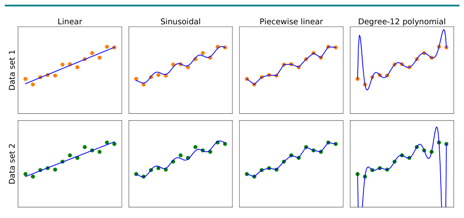
| Hypothesis space假设空间 | Fit to the data对数据的拟合 | Change between the two samples两个样本之间的变化 | Verdict结论 |
|---|---|---|---|
| Straight line直线 | not consistent, misses the pattern不一致，未能捕捉规律 | small小 | underfits欠拟合 |
| Sinusoid \(w_1x+\sin(w_0x)\)正弦函数 \(w_1x+\sin(w_0x)\) | not quite consistent, fits both samples well基本一致，两个样本都拟合得很好 | small小 | good if the data are cyclic若数据呈周期性则效果好 |
| Piecewise linear (connect the dots)分段线性（逐点连接） | always consistent总是一致 | small小 | low bias低偏差 |
| Degree-12 polynomial12 次多项式 | consistent for 13 points对 13 个点保持一致 | very large at both ends两端都非常大 | overfits过拟合 |
Bias（偏差） is the tendency of the predictions to differ from the true values on average, over training sets. It comes from the restrictions of \(H\). A hypothesis that misses the pattern underfits（欠拟合）. Variance（方差） is how much the hypothesis changes when the training data change. A hypothesis that follows its particular sample too closely overfits（过拟合）. Both are made precise in Section 6.4.偏差是预测值在多个训练集上平均而言偏离真实值的倾向。它来自 \(H\) 的限制。不能拟合出规律的假设会欠拟合。方差是训练数据变化时，假设变化的幅度。紧跟其特定样本的假设会过拟合。两者将在第 6.4 节中精确定义。
Practice练习
Q1. (Definitions) Define hypothesis space, consistent hypothesis and generalization. Why is a consistent hypothesis not necessarily a good one?Q1.（定义）给出假设空间、一致假设和泛化的定义。为什么一致的假设未必是好的假设？
Answer
The hypothesis space \(H\) is the set of functions the learner may output, for example all polynomials of degree 3. A hypothesis \(h\) is consistent if \(h(\mathbf x_i)=y_i\) for every training example. It generalizes if it also predicts the outputs of unseen test examples accurately. A consistent hypothesis can simply have fitted the noise of the training sample: a degree-12 polynomial through 13 points is always consistent, yet it differs strongly between samples (high variance) and predicts new inputs badly.假设空间 \(H\) 是学习器可能输出的函数集合，例如所有 3 次多项式。若假设 \(h\) 对每个训练样本都满足 \(h(\mathbf x_i)=y_i\)，则称其是一致的。若它还能准确预测未见测试样本的输出，则称其泛化良好。一致的假设完全可能只是拟合了训练样本中的噪声：经过 13 个点的 12 次多项式总是一致的，但它在不同样本之间差异很大（方差高），对新输入的预测也很差。
易错：consistent 只说明训练集上全对，不说明泛化好。
Q2. (True/false) "A hypothesis space of straight lines has low bias and high variance." True or false?Q2.（判断）“直线假设空间具有低偏差和高方差。”这句话是对还是错？
Answer
False. A line can only represent straight-line patterns, so it has high bias and underfits any curved pattern; but fitting it to two samples of the same data gives almost the same line, i.e. low variance. The degree-12 polynomial is the opposite case: low bias, high variance.错。直线只能表示直线型规律，因此偏差高，会对任何弯曲的规律欠拟合；但在同一数据的两个样本上拟合，得到的几乎是同一条直线，即方差低。12 次多项式则是相反的情形：偏差低，方差高。
Error, loss and the new data error ★★误差、损失与新数据误差 ★★
Goal. Compute a training error and a total loss from counts, and explain why the training error cannot replace the error on new data.目标。 从计数中计算训练误差和总损失，并解释为什么训练误差不能代替新数据上的误差。
Step 1: error and loss第 1 步：误差和损失
In words: the error function scores a finished model, and the loss function is what the training algorithm minimises.用文字表述：误差函数用来给训练好的模型打分，损失函数则是训练算法所要最小化的量。
The error function（误差函数）\(E(\hat y,y)\) compares a prediction \(\hat y\) with the true output \(y\). It is small when the prediction is good.误差函数 \(E(\hat y,y)\) 比较预测值 \(\hat y\) 与真实输出 \(y\)。预测得好时，它的值就小。
The loss function（损失函数）\(L(\hat y,y)\) is what training minimises. The error and the loss need not be equal. The 0/1 error has zero slope almost everywhere, so gradient methods cannot minimise it and use a smoother loss instead.损失函数 \(L(\hat y,y)\) 是训练所要最小化的量。误差和损失不一定相等。0/1 误差几乎处处斜率为零，梯度方法无法直接最小化它，所以改用更平滑的损失。
| Loss损失 | \(L(\hat y,y)\) | Use用途 |
|---|---|---|
| 0/1 | \(0\) if \(\hat y=y\), else \(1\)当 \(\hat y=y\) 时为 \(0\)，否则为 \(1\) | classification; its average is the error rate分类；其平均值即为误差率 |
| Absolute (\(L_1\))绝对值（\(L_1\)） | \(\lvert y-\hat y\rvert\) | regression; small errors are better than large ones回归；小误差优于大误差 |
| Squared (\(L_2\))平方（\(L_2\)） | \((y-\hat y)^2\) | regression; punishes large errors more回归；对大误差的惩罚更重 |
| Loss matrix损失矩阵 | a cost for each kind of mistake为每种错误类型指定代价 | asymmetric problems非对称问题 |
Mistakes can cost differently. A loss matrix gives a cost for each kind of mistake. Example: for a spam filter, losing a real message is ten times worse than letting spam through.不同错误的代价可以不同。损失矩阵给出每一种错误的代价。例如，对于垃圾邮件过滤器，误删正常邮件的代价是放过垃圾邮件的十倍。
| True class \ prediction真实类别 \ 预测 | spam垃圾邮件 | non-spam非垃圾邮件 |
|---|---|---|
| spam垃圾邮件 | 0 | 1 |
| non-spam非垃圾邮件 | 10 | 0 |
Step 2: training error and new data error第 2 步：训练误差与新数据误差
The stationarity assumption（平稳性假设） says that all examples are drawn independently from the same distribution \(p(\mathbf x,y)\). They are i.i.d.（独立同分布）. The model's job is to be good on such future examples.平稳性假设认为，所有样本都独立地取自同一分布 \(p(\mathbf x,y)\)。它们是独立同分布（i.i.d.）的。模型的任务是在这样的未来样本上表现良好。
In words: the new data error is the average mistake on data the model has not seen; the training error is the average mistake on the data it learned from.用文字表述：新数据误差是模型在没见过的数据上犯错的平均值；训练误差是它在学习所用数据上犯错的平均值。
\(E_{\text{new}}\) needs the unknown \(p(\mathbf x,y)\), so it can only be estimated (Section 6.3). \(E_{\text{train}}\) is always computable but optimistic. The training points are used twice, to fit the model and again to score it. A 1-nearest-neighbour model has \(E_{\text{train}}=0\), because each training point is its own neighbour, whatever \(E_{\text{new}}\) is. Typically \(E_{\text{train}}<E_{\text{new}}\) on average over training sets, but not in every single run.\(E_{\text{new}}\) 需要未知的 \(p(\mathbf x,y)\)，所以只能估计（见第 6.3 节）。\(E_{\text{train}}\) 总是可以算出，但偏乐观。训练点既用来拟合模型，又用来给模型打分，等于用了两次。一个 1-NN 模型的 \(E_{\text{train}}=0\)，因为每个训练点都是它自己的近邻，不管 \(E_{\text{new}}\) 是什么。在多个训练集上平均来看，通常 \(E_{\text{train}}<E_{\text{new}}\)，但并非每次运行都如此。
The learned \(h\) differs from the truth for four reasons.学到的 \(h\) 与真实值的差异有四个原因。
- Unrealizability: \(f_0\notin H\), and more data cannot fix it.不可实现性：\(f_0\notin H\)，而且更多数据也无法解决它。
- Variance: different samples give different \(h\).方差：不同的样本给出不同的 \(h\)。
- Noise: the same input can give different outputs.噪声：同一个输入可能给出不同的输出。
- Computational complexity: the search for the best \(h\) is too hard.计算复杂度：寻找最优 \(h\) 的搜索太难了。
Practice练习
Q1. (Calculation) A bank tests two loan classifiers on 5,000 applications. Approving a defaulter costs 20 units, rejecting a good customer costs 1 unit, correct decisions cost 0. Classifier A makes 30 wrong approvals and 150 wrong rejections; B makes 90 wrong approvals and 20 wrong rejections. Compute the error rate and the total loss of each. Which is better for the bank?Q1.（计算）一家银行用 5,000 份申请测试两种贷款分类器。批准一位违约者的代价是 20 个单位，拒绝一位优质客户的代价是 1 个单位，正确的决策代价为 0。分类器 A 有 30 次错误批准和 150 次错误拒绝；B 有 90 次错误批准和 20 次错误拒绝。分别计算两者的误差率和总损失。哪一个对银行更好？
Answer
A: errors \(=180\), error rate \(180/5000=3.6\%\), loss \(=30\cdot20+150\cdot1=750\). B: errors \(=110\), error rate \(110/5000=2.2\%\), loss \(=90\cdot20+20\cdot1=1820\). B has the lower error rate, but A has less than half the loss, so A is better for the bank. The 0/1 loss counts all mistakes equally and ignores that approving a defaulter is twenty times worse.A：错误数 \(=180\)，误差率 \(180/5000=3.6\%\)，损失 \(=30\cdot20+150\cdot1=750\)。B：错误数 \(=110\)，误差率 \(110/5000=2.2\%\)，损失 \(=90\cdot20+20\cdot1=1820\)。B 的误差率更低，但 A 的损失不到 B 的一半，因此对银行而言 A 更好。0/1 损失对所有错误一视同仁，忽略了批准一位违约者的错误要严重二十倍。
思路：先按错误类型乘以各自代价，再比较总损失，不要只看错误率。
Q2. (Explain) Why is \(E_{\text{train}}\) not a reliable estimate of \(E_{\text{new}}\)? What is \(E_{\text{train}}\) for 1-NN, and what does this show?Q2.（解释）为什么 \(E_{\text{train}}\) 不是 \(E_{\text{new}}\) 的可靠估计？1-NN 的 \(E_{\text{train}}\) 是多少？这说明了什么？
Answer
The training points are used twice, first to fit the model and then to evaluate it, so the model has adapted to exactly these points, including their noise, and the error on them is optimistic. For 1-NN each training point is its own nearest neighbour, so \(E_{\text{train}}=0\) (if no identical inputs carry different labels) whatever \(E_{\text{new}}\) is. A small training error therefore says nothing about performance on new data.训练点被使用了两次：先用来拟合模型，再用来评估模型，因此模型恰好适应了这些点（包括其中的噪声），在这些点上的误差是乐观的。对于 1-NN，每个训练点都是它自己的最近邻，因此无论 \(E_{\text{new}}\) 取何值，\(E_{\text{train}}=0\) 都成立（前提是不存在输入相同而标签不同的样本）。因此，较小的训练误差说明不了新数据上的表现。
Hold-out validation, cross-validation and the test set ★★★留出验证、交叉验证与测试集 ★★★
Goal. Describe hold-out validation and \(k\)-fold cross-validation as procedures, compute the estimates and the number of trainings, and say what the test set is for.目标。 把留出验证和 \(k\) 折交叉验证描述为具体步骤，计算估计值和训练次数，并说明测试集的用途。
Step 1: hold-out validation第 1 步：留出验证
In words: hold-out validation = train on most of the data, and measure the error on the part that was hidden.用文字表述：留出验证 = 用大部分数据训练，并在被隐藏的那部分数据上测量误差。
How to do it by hand:手工做法：
- Shuffle the data. Sorted data could put one class entirely into training.先打乱数据。如果数据是排好序的，可能会让某一类别全部进入训练集。
- Set aside \(n_v\) examples as the hold-out validation set（留出验证集）. Train on the rest, called \(\mathcal T\).留出 \(n_v\) 个样本作为留出验证集。其余样本用于训练，称为 \(\mathcal T\)。
- Compute the average error of the trained model on the \(n_v\) held-out examples.计算训练好的模型在这 \(n_v\) 个留出样本上的平均误差。
Numeric case: 500 examples, and 20% are held out. Then \(n_v=100\) and the training set has 400 examples. If the model misclassifies 12 of the 100, then \(E_{\text{hold-out}}=12/100=0.12\).数值例子：500 个样本，留出 20%。于是 \(n_v=100\)，训练集有 400 个样本。如果模型在 100 个中误分类了 12 个，那么 \(E_{\text{hold-out}}=12/100=0.12\)。
The estimate is unbiased, and its variance falls as \(n_v\) grows. There is a dilemma. A larger validation set gives a better estimate but leaves less training data. With a lot of data, a few percent is enough.这个估计是无偏的，而且其方差随 \(n_v\) 增大而下降。这里存在一个两难：验证集越大，估计越好，但训练数据就越少。数据很多时，留出几个百分点就够了。

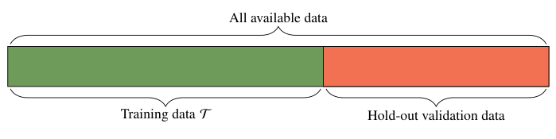
Step 2: k-fold cross-validation第 2 步：k 折交叉验证
In words: cross-validation = every example takes one turn as validation data, and the k validation errors are averaged.用文字表述：交叉验证 = 每个样本轮流做一次验证数据，最后把 k 次验证误差取平均。
\(k\)-fold cross-validation（k 折交叉验证） uses all data for training and still estimates \(E_{\text{new}}\). How to do it by hand:\(k\) 折交叉验证使用全部数据做训练，同时仍然能估计 \(E_{\text{new}}\)。手工做法如下：
- Shuffle the data and split it into \(k\) batches (folds) of similar size.打乱数据，并将其划分为大小相近的 \(k\) 个批次（折）。
- For \(\ell=1,\dots,k\): hold out batch \(\ell\), train on the other \(k-1\) batches, and compute the hold-out error on batch \(\ell\).对于 \(\ell=1,\dots,k\)：留出第 \(\ell\) 批，用其他 \(k-1\) 批训练，并在第 \(\ell\) 批上计算留出误差。
- Average the \(k\) errors.对 \(k\) 个误差取平均。
- Train the final model on the entire data set.在整个数据集上训练最终模型。

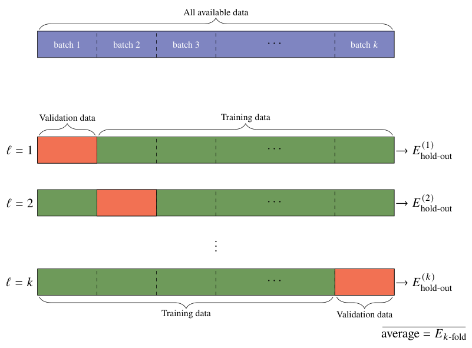
Numeric case: 400 examples and \(k=5\). Each fold has \(400/5=80\) examples and each training set has \(320\). The five fold errors are 0.10, 0.14, 0.12, 0.16 and 0.13. Their sum is 0.65, so \(E_{5\text{-fold}}=0.65/5=0.13\).数值例子：400 个样本，\(k=5\)。每折有 \(400/5=80\) 个样本，每个训练集有 \(320\) 个样本。五个折的误差分别为 0.10、0.14、0.12、0.16 和 0.13。它们的和为 0.65，所以 \(E_{5\text{-fold}}=0.65/5=0.13\)。
Why it works: each intermediate model sees \((k-1)/k\) of the data, so it resembles the final model. Averaging \(k\) noisy hold-out errors lowers the variance.为什么有效：每个中间模型都用到了 \((k-1)/k\) 的数据，所以它与最终模型相似。把 \(k\) 个带噪声的留出误差取平均，可以降低方差。
| Method方法 | Trainings训练次数 | Remark说明 |
|---|---|---|
| Hold-out留出法 | 1 | unbiased; costs training data; fine for large data sets无偏；会损失训练数据；适用于大数据集 |
| \(k\)-fold, \(k=5\) or \(10\)\(k\) 折，\(k=5\) 或 \(10\) | \(k+1\) | 5–10 times the computation of one training; the usual default是一次训练计算量的 5–10 倍；通常的默认选择 |
| Leave-one-out (LOOCV（留一法）, \(k=n\))留一法（LOOCV，\(k=n\)） | \(n+1\) | models almost equal to the final one; only for cheap training模型与最终模型几乎相同；仅适用于训练开销小的情况 |
Choosing among \(m\) candidate settings with \(k\)-fold cross-validation costs \(m\cdot k+1\) trainings. The \(+1\) is the final training on all data. Example: 3 candidates and \(k=5\) give \(3\cdot5+1=16\) trainings.用 \(k\) 折交叉验证在 \(m\) 个候选设置中做选择，共需 \(m\cdot k+1\) 次训练。\(+1\) 是在全部数据上的最后一次训练。例如：3 个候选、\(k=5\)，共需 \(3\cdot5+1=16\) 次训练。
Step 3: the test set and selection bias第 3 步：测试集与选择偏差
If you choose a model or a hyperparameter by the smallest \(E_{k\text{-fold}}\) or \(E_{\text{hold-out}}\), that error is no longer a fair estimate of \(E_{\text{new}}\). The smallest of several noisy estimates is optimistic, because the choice has overfitted the validation data. So three data sets are needed.如果你按最小的 \(E_{k\text{-fold}}\) 或 \(E_{\text{hold-out}}\) 来选择模型或超参数，那么这个误差就不再是 \(E_{\text{new}}\) 的公平估计了。若干个带噪声估计中的最小值是偏乐观的，因为这次选择已经对验证数据过拟合了。因此需要三组数据。
| Set数据集 | Used for用途 | Used使用方式 |
|---|---|---|
| Training训练集 | fitting the parameters of the candidate models拟合各候选模型的参数 | many times多次 |
| Validation set, or cross-validation on the training part验证集，或训练部分上的交叉验证 | comparing models and tuning hyperparameters比较模型并调节超参数 | many times多次 |
| Test set测试集 | final unbiased estimate of \(E_{\text{new}}\) of the chosen model所选模型 \(E_{\text{new}}\) 的最终无偏估计 | once, after all choices are made只用一次，在所有选择完成之后 |
Lock the test set away until training and tuning are finished. If the training data are extended artificially, set the test set aside before the extension.在训练和调参全部完成之前，把测试集锁起来不用。如果训练数据是人工扩充的，要先划出测试集，再进行扩充。
Practice练习
Q1. (Calculation) A data set has 500 examples; 100 are set aside as a test set. On the other 400 you run 5-fold cross-validation for \(k\in\{1,5,15,40\}\) in \(k\)-NN. The fold errors are:Q1.（计算）某数据集有 500 个样本，其中 100 个被留作测试集。在其余 400 个样本上，对 \(k\)-NN 中的 \(k\in\{1,5,15,40\}\) 进行 5 折交叉验证。各折的误差如下：
| \(k\) | fold 1第 1 折 | fold 2第 2 折 | fold 3第 3 折 | fold 4第 4 折 | fold 5第 5 折 |
|---|---|---|---|---|---|
| 1 | 0.20 | 0.18 | 0.22 | 0.19 | 0.21 |
| 5 | 0.14 | 0.16 | 0.13 | 0.15 | 0.12 |
| 15 | 0.11 | 0.14 | 0.10 | 0.13 | 0.12 |
| 40 | 0.15 | 0.17 | 0.14 | 0.16 | 0.13 |
(a) How large are a validation fold and a training set? (b) Compute \(E_{5\text{-fold}}\) and choose \(k\). (c) How many trainings are needed? (d) What do you do with the 100 test examples?（a）一个验证折和一个训练集分别有多大？（b）计算 \(E_{5\text{-fold}}\)，并选出 \(k\)。（c）需要进行多少次训练？（d）如何处理这 100 个测试样本？
Answer
(a) A fold has \(400/5=80\) examples; each training set has \(320\). (b) The averages are \(0.200,\ 0.140,\ 0.120,\ 0.150\) for \(k=1,5,15,40\); choose \(k=15\). (c) \(4\times5=20\) trainings for the selection plus 1 final training on all 400 examples with \(k=15\): 21. (d) Evaluate the final model once on the 100 test examples and report that error as the estimate of \(E_{\text{new}}\); 0.120 is optimistic because it is the minimum over four candidates.（a）每个验证折有 \(400/5=80\) 个样本；每个训练集有 \(320\) 个样本。（b）各候选值的平均误差分别为 \(0.200,\ 0.140,\ 0.120,\ 0.150\)，对应 \(k=1,5,15,40\)；选择 \(k=15\)。（c）用于选择的训练为 \(4\times5=20\) 次，另加在全部 400 个样本上以 \(k=15\) 进行的 1 次最终训练：共 21 次。（d）在 100 个测试样本上只对最终模型评估一次，并将该误差作为 \(E_{\text{new}}\) 的估计报告；0.120 是四个候选值中的最小值，因而是乐观的。
Q2. (Scenario) You have 2,000,000 labeled images and a network that needs a week to train. Which estimate of \(E_{\text{new}}\) do you use: hold-out, 10-fold cross-validation or leave-one-out? Why?Q2.（情景分析）你有 2,000,000 张带标签的图像，以及一个需要一周才能训练完成的网络。你会用哪种方法估计 \(E_{\text{new}}\)：留出法、10 折交叉验证还是留一法？为什么？
Answer
Hold-out. With so much data, about 2% (40,000 images) as validation set already gives a low-variance estimate and leaves almost all data for training. 10-fold cross-validation needs 11 trainings (about 11 weeks) and leave-one-out 2,000,000, which is infeasible. A separate test set is still kept for the final report.留出法。数据量如此之大，仅用约 2%（40,000 张图像）作为验证集，就已能得到方差较低的估计，并几乎保留了全部数据用于训练。10 折交叉验证需要 11 次训练（约 11 周），留一法则需要 2,000,000 次训练，不可行。另外，仍需保留一个单独的测试集用于最终报告。
思路：数据多、训练贵时用留出法；交叉验证的代价是 k+1 次训练。
Q3. (Explain) Why would selecting \(k\) in \(k\)-NN by \(E_{\text{train}}\) always give \(k=1\)? Why can the smallest cross-validation error not be reported as the final performance?Q3.（解释）若用 \(E_{\text{train}}\) 来选择 \(k\)-NN 中的 \(k\)，为什么总会得到 \(k=1\)？为什么不能把最小的交叉验证误差报告为最终性能？
Answer
For \(k=1\) each training point is its own nearest neighbour, so \(E_{\text{train}}=0\), the smallest possible value, whatever the data: \(E_{\text{train}}\) rewards memorization. \(E_{k\text{-fold}}\) was minimized over the candidates, so it is optimistically biased (selection bias, overfitting to the validation folds). Only an untouched test set gives an unbiased estimate of \(E_{\text{new}}\) of the final model.对于 \(k=1\)，每个训练点都是它自己的最近邻，因此 \(E_{\text{train}}=0\)（无论数据如何，这都是可能的最小值）：\(E_{\text{train}}\) 奖励的是死记硬背。经过在各候选值上取最小化之后，\(E_{k\text{-fold}}\) 带有乐观偏差（选择偏差，即对验证折过拟合）。只有未被触碰过的测试集，才能对最终模型的 \(E_{\text{new}}\) 给出无偏估计。
Under- and overfitting: generalization gap and bias–variance ★★★欠拟合与过拟合：泛化差距与偏差–方差 ★★★
Goal. Diagnose underfitting and overfitting from training and validation errors, and explain bias, variance and the U-shaped error curve.目标。 根据训练误差和验证误差判断欠拟合与过拟合，并解释偏差、方差以及 U 形误差曲线。
Step 1: the generalization gap第 1 步：泛化差距
In words: the error on new data equals the training error plus a gap, and the gap grows with the complexity of the model.用文字表述：新数据上的误差 = 训练误差 + 一个差距，而且这个差距随模型复杂度增大而增大。
Let \(\bar E_{\text{new}}\) and \(\bar E_{\text{train}}\) be the new data error and the training error averaged over many training sets of the same size \(n\).设 \(\bar E_{\text{new}}\) 和 \(\bar E_{\text{train}}\) 分别为在许多大小相同（\(n\)）的训练集上平均的新数据误差和训练误差。

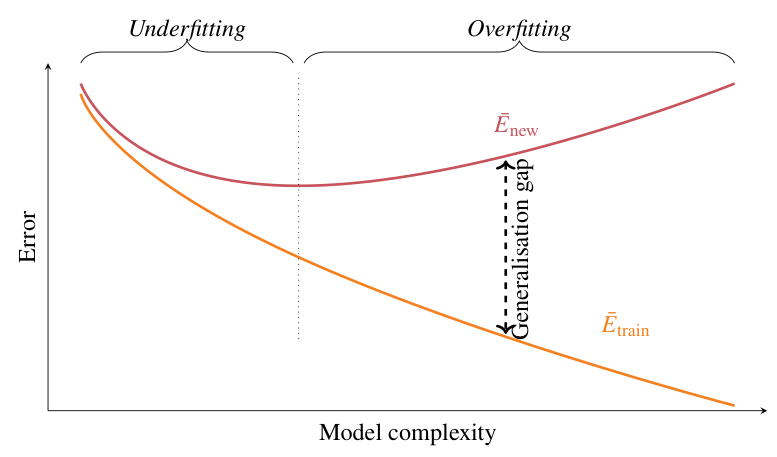
As complexity grows, \(\bar E_{\text{train}}\) falls. \(\bar E_{\text{new}}\) falls first, reaches a minimum and then rises, because the gap widens. Left of the minimum the model underfits. Right of it the model overfits. The minimum is the balanced fit. More training data lowers the gap and \(\bar E_{\text{new}}\), while \(\bar E_{\text{train}}\) rises.随着复杂度增加，\(\bar E_{\text{train}}\) 下降。\(\bar E_{\text{new}}\) 先下降，到达最低点后再上升，因为差距在扩大。在最低点左边，模型欠拟合；在它右边，模型过拟合。最低点就是平衡的拟合。更多的训练数据会减小差距和 \(\bar E_{\text{new}}\)，而 \(\bar E_{\text{train}}\) 会上升。
How to diagnose from numbers:如何根据数字进行诊断：
| Symptom症状 | Diagnosis诊断 | Remedies补救措施 |
|---|---|---|
| \(E_{\text{hold-out}}\approx E_{\text{train}}\), both too high\(E_{\text{hold-out}}\approx E_{\text{train}}\)，两者都偏高 | underfitting (small gap)欠拟合（差距小） | loosen regularization, more parameters or features, higher degree放松正则化，增加参数或特征，提高次数 |
| \(E_{\text{train}}\approx0\), \(E_{\text{hold-out}}\) much larger\(E_{\text{train}}\approx0\)，\(E_{\text{hold-out}}\) 大得多 | overfitting (large gap)过拟合（差距大） | tighten regularization, fewer parameters, feature selection, more data加强正则化，减少参数，进行特征选择，增加数据 |
If \(E_{\text{train}}\) is already far above the error you need, change the method. Cross-validation cannot help. More data helps the overfitting case and hardly the underfitting case.如果 \(E_{\text{train}}\) 已经远高于你需要的误差，就应该换方法。交叉验证帮不上忙。更多数据对过拟合的情形有帮助，对欠拟合的情形几乎没有帮助。
Step 2: bias and variance第 2 步：偏差与方差
In words: bias = the model class is too rigid, so even the average trained model is wrong; variance = the model is so flexible that it changes a lot when the training sample changes; noise = what nobody can predict.用文字表述：偏差 = 模型类太僵硬，因此即使平均训练出的模型也是错的；方差 = 模型太灵活，训练样本一变，它就跟着大幅变化；噪声 = 无人能预测的部分。
Assume \(y=f_0(\mathbf x)+\varepsilon\) with independent noise of mean 0 and variance \(\sigma^2\). The learned model is random, because the training set is random.设 \(y=f_0(\mathbf x)+\varepsilon\)，其中噪声独立，均值为 0，方差为 \(\sigma^2\)。学到的模型是随机的，因为训练集是随机的。
At one test input the three terms reduce to simple numbers.在一个测试输入处，三项可以化简为简单的数字。
- Squared bias \(=(\bar f-f_0)^2\): the squared distance between the average prediction and the truth.平方偏差 \(=(\bar f-f_0)^2\)：平均预测与真实值之间距离的平方。
- Variance \(=\) the average of \((\hat y-\bar f)^2\) over the trained models.方差 \(=\) 是 \((\hat y-\bar f)^2\) 在训练好的各个模型上的平均值。
- Irreducible error \(=\sigma^2\): the same for every model.不可约误差 \(=\sigma^2\)：对所有模型都相同。
High complexity means low bias and high variance. Low complexity means the reverse. The best model balances the two.复杂度高意味着偏差低、方差高；复杂度低则相反。最佳模型是两者的平衡。

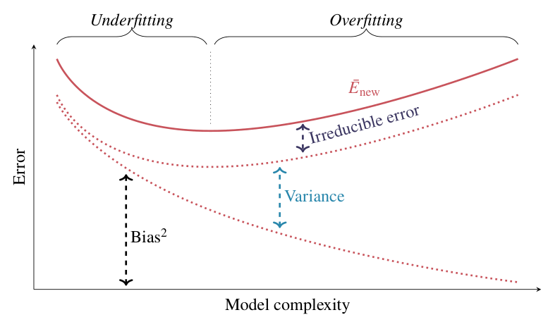
The squared bias is mainly a property of the model class and is roughly constant in \(n\). The variance falls as \(n\) grows. So more data reduces the variance and the gap, but not the bias. Regularization raises the bias and lowers the variance. Bagging (Chapter 7) lowers the variance with almost no change in bias. Bias and variance cannot be measured on real data, but a high \(E_{\text{train}}\) signals bias and a large gap signals variance.平方偏差主要是模型类的性质，并且大致不随 \(n\) 变化。方差随 \(n\) 增大而下降。因此，更多数据会降低方差和差距，但不会降低偏差。正则化会提高偏差，降低方差。装袋法（第 7 章）几乎不改变偏差，就能降低方差。偏差和方差在真实数据上无法测量，但很高的 \(E_{\text{train}}\) 提示偏差，而很大的差距提示方差。

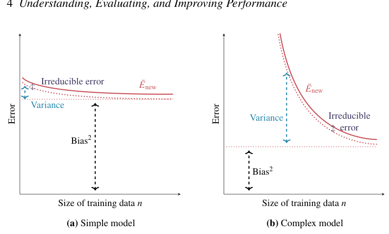
Practice练习
Q1. (Diagnose) Model A has \(E_{\text{train}}=2\%\) and \(E_{\text{hold-out}}=18\%\); model B has \(E_{\text{train}}=21\%\) and \(E_{\text{hold-out}}=23\%\). The application needs 5%. Diagnose both, give two remedies each, and say whether more training data helps.Q1.（诊断）模型 A 具有 \(E_{\text{train}}=2\%\) 与 \(E_{\text{hold-out}}=18\%\)；模型 B 具有 \(E_{\text{train}}=21\%\) 与 \(E_{\text{hold-out}}=23\%\)。该应用需要 5% 的误差。请对两者进行诊断，各给出两种补救措施，并说明增加训练数据是否有帮助。
Answer
A: tiny training error and a gap of 16 points: overfitting (high variance). Remedies: stronger regularization or a simpler model, feature selection, bagging, more data. B: both errors high and close (gap 2 points): underfitting (high bias). Remedies: a more flexible model (higher degree, more parameters, weaker regularization), better features. More data helps A, because the variance and the gap shrink, but hardly helps B, because the bias does not depend on \(n\).A：训练误差极小，差距为 16 个百分点：过拟合（方差高）。补救措施：加强正则化或使用更简单的模型、特征选择、装袋法、增加数据。B：两个误差都高且彼此接近（差距为 2 个百分点）：欠拟合（偏差高）。补救措施：使用更灵活的模型（更高的次数、更多的参数、更弱的正则化），以及更好的特征。增加数据对 A 有帮助，因为方差和差距都会减小；但对 B 几乎没有帮助，因为偏差与 \(n\) 无关。
Q2. (a) True or false: "Increasing the regularization parameter \(\lambda\) always lowers \(E_{\text{new}}\) because it lowers the variance." (b) Name a change to a trained linear regression that raises the bias without lowering the variance.Q2.（a）判断：“增大正则化参数 \(\lambda\) 总会降低 \(E_{\text{new}}\)，因为它降低了方差。”（b）指出对已训练好的线性回归所做的一种改动，它能提高偏差而不降低方差。
Answer
(a) False. A larger \(\lambda\) lowers the variance but raises the bias, so \(\bar E_{\text{new}}\) is U-shaped in \(\lambda\): it falls while the variance reduction dominates and rises again once the model underfits. In the polynomial example the optimum is near \(\lambda=0.7\). (b) Add a constant offset to every prediction of the trained model: the average model shifts by the offset (the bias grows) while the spread of the models around their average (the variance) is unchanged.（a）错误。更大的 \(\lambda\) 会降低方差，但提高偏差，因此 \(\bar E_{\text{new}}\) 关于 \(\lambda\) 呈 U 形：在方差的降低占主导时它下降，一旦模型欠拟合，它又会上升。在多项式的例子中，最优点大约位于 \(\lambda=0.7\) 处。（b）对已训练模型的每个预测值都加上一个常数偏移：平均模型随之平移该偏移量（偏差增大），而模型围绕其平均值的离散程度（即方差）保持不变。
Model selection, regularization and hyperparameter tuning ★★★模型选择、正则化与超参数调节 ★★★
Goal. Choose a model by validation error, compute a regularised cost for several values of \(\lambda\), and compare the search methods for hyperparameters.目标。 用验证误差选择模型，对若干个 \(\lambda\) 的值计算正则化代价，并比较超参数的搜索方法。
Step 1: model selection第 1 步：模型选择
In words: model selection = try models of growing complexity, and keep the one with the lowest validation error; training finds the weights inside the chosen class.用文字表述：模型选择 = 尝试复杂度逐渐增大的模型，保留验证误差最低的那个；训练则在所选的类中找出权重。
Model selection（模型选择） chooses a hypothesis space and its hyperparameters. Optimization, also called training, finds the best hypothesis inside that space.模型选择选出假设空间及其超参数。优化，也称训练，则在该空间内找到最佳假设。
function MODEL-SELECTION(Learner, examples, k) returns (hypothesis, error rate)
training set, test set ← partition of examples into two sets
for size = 1 to ∞ do
err[size] ← CROSS-VALIDATION(Learner, size, training set, k) # average validation error over k folds
if err is starting to increase significantly then
best size ← the size with minimum err[size]
h ← Learner(best size, training set) # retrain on ALL training examples
return h and its error rate on test set # test set used once
How to trace it: 1. Start with the simplest model. 2. Compute the cross-validation error for each size. 3. Stop when the error rises. 4. Retrain at the best size on all training examples. 5. Measure the error once on the test set. Example: errors 0.38, 0.30, 0.23, 0.19, 0.16, 0.14, 0.12, 0.13 for sizes 1 to 8. The minimum is 0.12 at size 7, and size 8 is higher, so best size \(=7\).演算做法：1. 从最简单的模型开始。2. 对每个规模计算交叉验证误差。3. 误差上升时停止。4. 在最佳规模上用全部训练样本重新训练。5. 在测试集上只测量一次误差。例如：规模 1 到 8 的误差依次为 0.38、0.30、0.23、0.19、0.16、0.14、0.12、0.13。最小值是规模 7 时的 0.12，规模 8 更高，所以最佳规模是 \(=7\)。

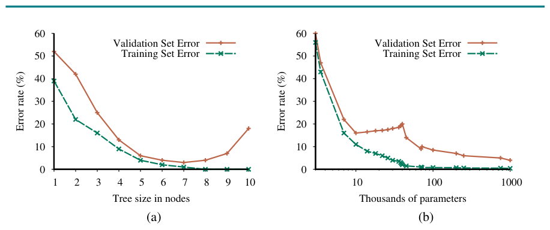
The training error falls with complexity, often to zero. For decision trees the validation error is U-shaped. For a convolutional network on MNIST the error falls again at very large sizes, so the lowest validation error is at the largest model. A model that fits all training data exactly has interpolated（插值） it. Rule: choose by the lowest validation error, and do not assume a U-shape.训练误差会随复杂度下降，往往降到零。对于决策树，验证误差呈 U 形。对于在 MNIST 上的卷积网络，误差在非常大的规模下又会下降，所以最低的验证误差出现在最大的模型上。一个对全部训练数据都拟合得恰好的模型，就称为对它做了插值。规则：按最低验证误差来选，不要假设一定是 U 形。
Step 2: regularization第 2 步：正则化
In words: regularization = add a price for complexity to the training loss, and minimise the total.用文字表述：正则化 = 在训练损失上加一个复杂度的代价，然后最小化总和。
Regularization（正则化） searches for the hypothesis that minimises the loss plus a penalty for complexity.正则化寻找使损失加上复杂度惩罚最小的假设。
Larger \(\lambda\) means more bias and less variance. The value of \(\lambda\) is chosen by validation or cross-validation. Feature selection（特征选择） instead discards attributes that look irrelevant.\(\lambda\) 越大，偏差越大，方差越小。\(\lambda\) 的取值由验证或交叉验证选定。特征选择则是直接丢弃看起来无关的属性。
Step 3: hyperparameter tuning第 3 步：超参数调节
With one hyperparameter and few values, the loop above is enough. With several hyperparameters, choose a search method.只有一个超参数且取值不多时，上面的循环就够用了。有多个超参数时，要选择一种搜索方法。
| Method方法 | How it works工作方式 | Remark说明 |
|---|---|---|
| Hand-tuning手动调节 | guess values from experience, train, check validation performance, adjust, repeat凭经验猜测取值，训练，检查验证性能，调整，重复 | needs intuition; slow需要经验直觉；速度慢 |
| Grid search（网格搜索） | try all combinations of a few values per hyperparameter; runs can be parallel对每个超参数的少数几个取值尝试所有组合；各次运行可以并行 | runs grow exponentially with the number of hyperparameters运行次数随超参数个数呈指数增长 |
| Random search（随机搜索） | sample settings uniformly from the allowed ranges for as long as the budget lasts在允许范围内均匀采样设置，直至预算用完 | handles many or continuous hyperparameters; ignores earlier results可处理多个或连续的超参数；忽略先前的结果 |
| Bayesian optimization（贝叶斯优化） | model the validation loss \(y=f(\mathbf x)\) of the hyperparameters \(\mathbf x\) (Gaussian process); each run updates the belief; balance exploitation (near good results) and exploration (new values)以高斯过程对超参数 \(\mathbf x\) 下的验证损失 \(y=f(\mathbf x)\) 建模；每次运行都会更新信念；在利用（靠近较好的结果）与探索（尝试新的取值）之间取得平衡 | needs few runs; can beat expert hand-tuning所需运行次数少；可以胜过专家的手动调节 |
| Population-based training基于种群的训练 | train a population in parallel from random settings; later generations copy successful settings and mutate them从随机设置出发并行训练一个种群；后续各代复制成功的设置，并对其进行变异 | parallel like random search, learns from earlier runs like Bayesian optimization与随机搜索一样可并行，与贝叶斯优化一样能从先前的运行中学习 |
Example: 3 hyperparameters with 5 values each. Grid search needs \(5^3=125\) runs but tries only 5 different values of each hyperparameter. 125 random trials try 125 different values of each. If only one hyperparameter matters, random search explores it much better for the same cost.例子：3 个超参数，每个取 5 个值。网格搜索需要 \(5^3=125\) 次运行，但每个超参数只试了 5 个不同的值。125 次随机试验则让每个超参数都取到 125 个不同的值。如果只有一个超参数真正起作用，随机搜索在同样的代价下能更充分地探索它。
Practice练习
Q1. (Compare, beyond the text) You tune 3 hyperparameters with 5 values each. Compare grid search with 125 random-search trials. When is random search clearly better?Q1.（比较，超出教材的内容）你对 3 个超参数分别调节 5 个取值。比较网格搜索与 125 次随机搜索。什么时候随机搜索明显更好？
Answer
Grid search needs \(5^3=125\) runs but tries only 5 distinct values of each hyperparameter. Random search with 125 trials tries 125 distinct values of each, since every trial draws all hyperparameters independently (continuous ranges are fine). If only one hyperparameter really matters, the grid explores that one at 5 values (the other runs repeat them), random search at 125 values, so it finds a better setting for the same cost. Grid search is preferable for few hyperparameters with few values: systematic and reproducible. Both parallelize trivially; neither learns from earlier runs, unlike Bayesian optimization or population-based training.网格搜索需要 \(5^3=125\) 次运行，但每个超参数只尝试 5 个不同的取值。125 次随机搜索则对每个超参数尝试 125 个不同的取值，因为每次试验都独立地抽取所有超参数（连续的取值范围同样适用）。若真正起作用的只有一个超参数，网格只会以 5 个取值探索它（其余运行会重复这些取值），而随机搜索则以 125 个取值探索它，因此在相同代价下能找到更好的设置。当超参数较少且取值也较少时，网格搜索更可取：系统且可复现。两者都可以轻松并行；与贝叶斯优化或基于种群的训练不同，二者都不从先前的运行中学习。
思路：网格搜索对每个超参数只探测很少几个取值；随机搜索在重要的维度上覆盖更密。
Q2. (Trace) MODEL-SELECTION evaluates decision-tree sizes 1 to 9 by cross-validation and finds the validation errors 0.38, 0.30, 0.23, 0.19, 0.16, 0.14, 0.12, 0.13, 0.16. Which size is returned? Which data are used for what?Q2.（手工演算）MODEL-SELECTION 通过交叉验证评估规模为 1 至 9 的决策树，得到的验证误差分别为 0.38、0.30、0.23、0.19、0.16、0.14、0.12、0.13、0.16。返回的是哪个规模？各部分数据分别用于什么？
Answer
The minimum is 0.12 at size 7. The error starts to rise at sizes 8 and 9, so the loop stops and best size \(=7\). The learner is then retrained with size 7 on all training examples (not on one fold) and its error is measured once on the test set, which cross-validation never touched. The training error keeps falling with size and cannot be used for the choice.最小值 0.12 位于规模 7 处。规模 8 和 9 时误差开始上升，因此循环停止，最佳规模为 \(=7\)。随后，学习器在全部训练样本（而非某一折）上以规模 7 重新训练，并在测试集上只测量一次误差；交叉验证从未用到测试集。训练误差随规模增大而持续下降，因此不能用于选择。
Evaluating classifiers: confusion matrix, ROC and precision–recall ★★★评估分类器：混淆矩阵、ROC 与精确率–召回率 ★★★
Goal. Fill a confusion matrix and compute accuracy, precision, recall, \(F_1\) and FPR from it. Read a ROC curve and say what AUC means. Choose between the ROC and the precision–recall curve.目标。 填写混淆矩阵，并由它计算准确率、精确率、召回率、\(F_1\) 和 FPR。读懂 ROC 曲线，并说明 AUC 的含义。在 ROC 曲线和精确率–召回率曲线之间进行选择。
Step 1: the confusion matrix and the rates第 1 步：混淆矩阵与各个比率
In words: the confusion matrix counts how often each pair of true class and predicted class occurs, and every metric is a ratio of these counts.用文字表述：混淆矩阵统计每一对（真实类别，预测类别）出现的次数，而每个指标都是这些计数的比值。
A confusion matrix（混淆矩阵） counts the four combinations of the actual output \(y\) and the predicted output \(\hat y\) on a hold-out set.混淆矩阵统计在留出集上，实际输出 \(y\) 与预测输出 \(\hat y\) 四种组合出现的次数。
| \(y=-1\) | \(y=+1\) | total合计 | |
|---|---|---|---|
| \(\hat y=-1\) | TN (true negative)TN（真阴性） | FN (false negative)FN（假阴性） | \(N^{\ast}\) |
| \(\hat y=+1\) | FP (false positive)FP（假阳性） | TP (true positive)TP（真阳性） | \(P^{\ast}\) |
| total合计 | \(N\) | \(P\) | \(n\) |
\(P\) and \(N\) are the numbers of actual positives and negatives. \(P^{\ast}\) and \(N^{\ast}\) are the numbers of positive and negative predictions. \(n\) is the number of examples. A false positive（假阳性） is a false alarm. A false negative（假阴性） is a miss. Some books put the true class in the rows, so read the labels first.\(P\) 和 \(N\) 分别是实际正例和实际负例的个数。\(P^{\ast}\) 和 \(N^{\ast}\) 分别是正预测和负预测的个数。\(n\) 是样本总数。假阳性是误报。假阴性是漏报。有些书把真实类别放在行上，所以先看清标签。
In words: recall asks "of the real positives, how many did I find?", precision asks "of my alarms, how many were real?", FPR asks "of the real negatives, how many did I falsely alarm?"用文字表述：召回率问“真正的正例里，我找出了多少？”，精确率问“我发出的警报里，有多少是真的？”，FPR 问“真正的负例里，我误报了多少？”
Each ratio has its own denominator: \(P\), \(P^{\ast}\) and \(N\). Write the confusion matrix first, then pick the right total.每个比率都有自己的分母：\(P\)、\(P^{\ast}\) 和 \(N\)。先写出混淆矩阵，再选对合计数。
Step 2: F1 and F-beta第 2 步：F1 与 F-beta
In words: F1 = one number that is high only if precision and recall are both high; F-beta lets recall count more or less.用文字表述：F1 是一个数，只有精确率和召回率都高，它才高；F-beta 则让召回率更重要或更不重要。
A problem is imbalanced（类别不平衡） when almost all data belong to one class. A useless classifier that always says "negative" then has a tiny error rate. A problem is asymmetric（代价不对称） when one error is more severe than the other. \(F_1\) handles imbalance but not asymmetry. \(F_\beta\) or a loss matrix (Section 6.2) expresses which error is worse.当几乎所有数据都属于同一类时，称问题是类别不平衡的。一个总是说“负”的没用分类器，错误率会很小。当一种错误比另一种更严重时，称问题是代价不对称的。\(F_1\) 能处理不平衡，但处理不了不对称。\(F_\beta\) 或损失矩阵（第 6.2 节）可以表示哪种错误更严重。
Step 3: threshold, ROC curve and AUC第 3 步：阈值、ROC 曲线与 AUC
In words: the ROC curve shows, for every possible threshold, how many true positives you gain for how many false alarms.用文字表述：ROC 曲线显示，对于每一个可能的阈值，每多得到一个真阳性要付出多少个误报。
Many classifiers give a score between 0 and 1 and predict positive when the score is larger than a decision threshold（判决阈值）\(r\) (default 0.5). Lowering \(r\) gives more positive predictions. TP and FP both rise, so recall and FPR rise and precision usually falls. Raising \(r\) does the opposite.许多分类器给出 0 到 1 之间的分数，当分数大于判决阈值 \(r\)（默认 0.5）时，预测为正。降低 \(r\) 会得到更多正预测。TP 和 FP 都会增加，所以召回率和 FPR 上升，精确率通常下降。提高 \(r\) 则相反。
The ROC curve（ROC 曲线） plots recall (vertical) against FPR (horizontal) for all thresholds. How to draw it by hand:ROC 曲线把所有阈值下的召回率（纵轴）与 FPR（横轴）画在一起。手工画法如下：
- Sort the examples by score, highest first.把样本按分数从高到低排序。
- Start at \((0,0)\).从 \((0,0)\) 出发。
- Lower the threshold past one example at a time. For a positive, go up by \(1/P\). For a negative, go right by \(1/N\).把阈值逐个样本地往下降。遇到一个正例，就向上走 \(1/P\)；遇到一个负例，就向右走 \(1/N\)。
- End at \((1,1)\).在 \((1,1)\) 结束。
A perfect classifier passes through the upper-left corner \((0,1)\). Random guessing gives the diagonal. The area under the ROC curve, ROC-AUC, is 1 for a perfect and 0.5 for a random classifier. It compares classifiers without fixing \(r\). AUC equals the probability that a randomly chosen positive gets a higher score than a randomly chosen negative.完美的分类器经过左上角 \((0,1)\)。随机猜测的曲线是对角线。ROC 曲线下面积（ROC-AUC）对完美分类器为 1，对随机分类器为 0.5。它比较分类器时不依赖于固定的 \(r\)（阈值）。AUC 等于：随机抽取一个正例和一个负例，正例得分高于负例的概率。

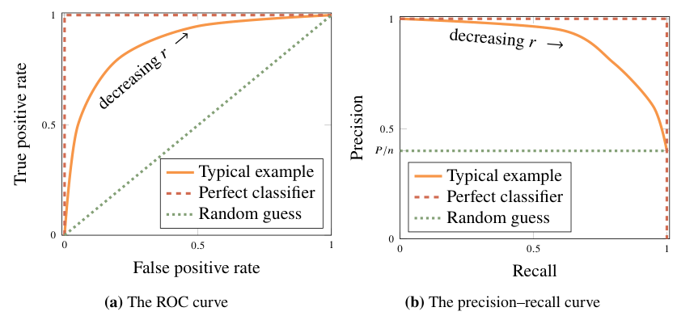
Small case: scores 0.9 (+), 0.7 (−), 0.6 (+), 0.3 (−), so \(P=N=2\) and each step is 0.5. The points are \((0,0)\), \((0,0.5)\), \((0.5,0.5)\), \((0.5,1)\), \((1,1)\). The area is \(0.5\cdot0.5+0.5\cdot1=0.75\). Check by pairs: 0.9 beats both negatives, 0.6 beats only 0.3, so \(3/4=0.75\).小例子：分数为 0.9（+）、0.7（−）、0.6（+）、0.3（−），所以 \(P=N=2\)，每一步的长度为 0.5。各点为 \((0,0)\)、\((0,0.5)\)、\((0.5,0.5)\)、\((0.5,1)\)、\((1,1)\)。面积为 \(0.5\cdot0.5+0.5\cdot1=0.75\)。逐对检验：0.9 比两个负例都高，0.6 只比 0.3 高，所以 \(3/4=0.75\)。
In words: the precision–recall curve plots precision against recall for all thresholds; use it when the positive class is rare. A perfect classifier touches \((1,1)\). Random guessing gives a horizontal line at the prevalence \(P/n\), the share of positives. With many negatives, FPR \(=FP/N\) stays small even when false alarms outnumber true positives, so the ROC curve looks good while precision is poor. Use the ROC curve for balanced problems and the precision–recall curve for imbalanced ones.用文字表述：精确率–召回率曲线显示所有阈值下精确率对召回率的关系；当正类很稀少时使用它。完美的分类器经过 \((1,1)\)。随机猜测给出一条水平线，高度为 \(P/n\)，即正例所占的比例。负例很多时，即使误报数超过真阳性数，FPR \(=FP/N\) 仍然很小，所以 ROC 曲线看起来很好，而精确率却很差。平衡问题用 ROC 曲线，不平衡问题用精确率–召回率曲线。
Practice练习
Q1. (Calculation) A detector inspects 10,000 items, 50 of which are defective. It flags 40 items, 30 of them truly defective. (a) Give TP, FP, FN, TN. (b) Compute accuracy, precision, recall, \(F_1\) and FPR. (c) Give accuracy and \(F_1\) of the trivial classifier that flags nothing. (d) What does the comparison show?Q1.（计算）一台检测器检查 10,000 件物品，其中 50 件有缺陷。它标记了 40 件，其中 30 件确有缺陷。（a）给出 TP、FP、FN、TN。（b）计算准确率、精确率、召回率、\(F_1\) 与 FPR。（c）给出一个什么都不标记的平凡分类器的准确率及其 \(F_1\)。（d）这一比较说明了什么？
Answer
(a) \(TP=30\), \(FP=10\), \(FN=20\), \(TN=9940\); \(P=50\), \(N=9950\), \(P^{\ast}=40\). (b) Accuracy \(=(30+9940)/10000=0.997\); precision \(=30/40=0.75\); recall \(=30/50=0.60\); \(F_1=2\cdot30/(40+50)=0.667\); FPR \(=10/9950=0.001\). (c) Accuracy \(=9950/10000=0.995\); \(F_1=0\) because \(TP=0\). (d) Accuracy differs by only 0.2 points although the detector finds 60% of the defects: with 0.5% prevalence accuracy is dominated by the negative class and hides the quality. Report precision, recall and \(F_1\).（a）\(TP=30\)、\(FP=10\)、\(FN=20\)、\(TN=9940\)；\(P=50\)、\(N=9950\)、\(P^{\ast}=40\)。（b）准确率 \(=(30+9940)/10000=0.997\)；精确率 \(=30/40=0.75\)；召回率 \(=30/50=0.60\)；\(F_1=2\cdot30/(40+50)=0.667\)；FPR \(=10/9950=0.001\)。（c）准确率 \(=9950/10000=0.995\)；\(F_1=0\)，因为 \(TP=0\)。（d）尽管检测器找出了 60% 的缺陷，准确率却仅相差 0.2 个百分点：在 0.5% 的患病率下，准确率由负类主导，掩盖了检测质量。应报告精确率、召回率和 \(F_1\)。
Q2. (ROC and AUC, beyond the text) Eight test examples have scores (label): 0.95 (+), 0.85 (+), 0.80 (−), 0.70 (+), 0.55 (−), 0.45 (+), 0.30 (−), 0.20 (−). (a) List the ROC points as \(r\) is lowered past each score. (b) Compute the AUC from the curve. (c) Check it by counting correctly ordered pairs and interpret it.Q2.（ROC 与 AUC，超出教材的内容）八个测试样本的分数（标签）如下：0.95（+）、0.85（+）、0.80（−）、0.70（+）、0.55（−）、0.45（+）、0.30（−）、0.20（−）。（a）当 \(r\) 依次越过每个分数时，列出 ROC 上的各点。（b）根据曲线计算 AUC。（c）通过统计排序正确的样本对来检验该结果，并加以解释。
Answer
(a) \(P=N=4\), so each step is 0.25. Points (FPR, TPR): (0,0), (0,0.25), (0,0.5), (0.25,0.5), (0.25,0.75), (0.5,0.75), (0.5,1), (0.75,1), (1,1). (b) Area \(=\) width times height over the horizontal steps: \(0.25\,(0.5+0.75+1+1)=0.25\cdot3.25=0.8125\). (c) Pairs: the positive 0.95 outranks all 4 negatives, 0.85 outranks 4, 0.70 outranks 3 (not 0.80), 0.45 outranks 2 (0.30, 0.20): \(4+4+3+2=13\) of \(4\cdot4=16\) pairs, \(13/16=0.8125\). Interpretation: a random positive gets a higher score than a random negative with probability 0.81.（a）\(P=N=4\)，因此每一步为 0.25。各点坐标（FPR，TPR）：(0,0)、(0,0.25)、(0,0.5)、(0.25,0.5)、(0.25,0.75)、(0.5,0.75)、(0.5,1)、(0.75,1)、(1,1)。（b）面积 \(=\)：在水平步长上对宽度乘以高度求和，\(0.25\,(0.5+0.75+1+1)=0.25\cdot3.25=0.8125\)。（c）样本对：正例 0.95 高于全部 4 个负例，0.85 高于 4 个，0.70 高于 3 个（不包括 0.80），0.45 高于 2 个（0.30、0.20）。在 \(4\cdot4=16\) 个样本对中，有 \(4+4+3+2=13\) 个排序正确，\(13/16=0.8125\)。解释：随机选取的一个正例得分高于随机选取的一个负例的概率为 0.81。
思路：AUC = 正负样本对中正例得分更高的比例。
Q3. (Explain) A test set has 100 positives among 100,000 examples. A classifier finds 80 of them with 400 false alarms. Compute FPR, precision and \(F_1\), and explain why the ROC curve alone would be misleading.Q3.（解释）测试集中有 100,000 个样本，其中 100 个为正例。一个分类器找出了其中 80 个，同时产生了 400 次误报。计算 FPR、精确率和 \(F_1\)，并解释为何仅凭 ROC 曲线会产生误导。
Answer
\(P=100\), \(N=99{,}900\), \(TP=80\), \(FP=400\). FPR \(=400/99900=0.004\); recall \(=0.80\); precision \(=80/480=0.167\); \(F_1=2\cdot80/(480+100)=0.276\). The ROC point \((0.004,\,0.80)\) lies close to the ideal upper-left corner, yet only one alarm in six is a real positive. Because \(N\) is huge, FPR hides the false positives; the precision–recall curve (and \(F_1\)) reveals them, and its random baseline is \(P/n=0.001\), not 0.5.\(P=100\)、\(N=99{,}900\)、\(TP=80\)、\(FP=400\)。FPR \(=400/99900=0.004\)；召回率 \(=0.80\)；精确率 \(=80/480=0.167\)；\(F_1=2\cdot80/(480+100)=0.276\)。ROC 上的点 \((0.004,\,0.80)\) 靠近理想的左上角，但每六次报警中只有一次是真正的正例。由于 \(N\) 很大，FPR 掩盖了假阳性；精确率–召回率曲线（以及 \(F_1\)）则能揭示这些假阳性，其随机基线为 \(P/n=0.001\)，而非 0.5。
Terms to recognise ★需要认识的术语 ★
| Term术语 | What to know要知道什么 |
|---|---|
| Induction归纳 | going from specific examples to a general rule; unlike deduction, it can be wrong从具体例子推出一般规则；与演绎不同，它可能出错 |
| Ockham's razor奥卡姆剃刀 | prefer the simplest hypothesis that is consistent with the data选择与数据一致的最简单假设 |
| Stationarity, i.i.d.平稳性，i.i.d. | all examples are drawn independently from the same distribution; the basis of all estimates所有样本都独立地取自同一分布；一切估计的基础 |
| Leave-one-out (LOOCV)留一法（LOOCV） | \(k\)-fold cross-validation with \(k=n\); \(n+1\) trainings, only for cheap training\(k\) 折交叉验证，此时 \(k=n\)；需 \(n+1\) 次训练，仅适用于训练代价低的情况 |
| Stratified k-fold分层 k 折 | each fold keeps the class proportions; needed when a class is rare每一折保持各类的比例；当某一类很稀少时需要它 |
| Interpolation插值 | fitting all training data exactly; a tree with \(n\) leaves always can恰好拟合全部训练数据；一棵有 \(n\) 个叶子的树总是能做到 |
| Minimum description length最小描述长度 | choose the hypothesis with the fewest bits for hypothesis plus data; needs no \(\lambda\)选择 假设加数据 比特数最少的假设；不需要 \(\lambda\) |
| Bayesian optimization贝叶斯优化 | models the validation loss of the hyperparameters; balances exploitation and exploration对超参数的验证损失建模；在利用与探索之间取得平衡 |
| Population-based training基于种群的训练 | trains a population in parallel; later generations copy and mutate good settings并行训练一个种群；之后的世代复制并变异较好的设置 |
| Type I and type II error第一类错误和第二类错误 | false positive (false alarm) and false negative (miss)假阳性（误报）和假阴性（漏报） |
| Macro-average宏平均 | for \(C\) classes, the unweighted mean of the per-class precision or recall对 \(C\) 个类别，逐类精确率或召回率的无加权平均 |
| Sensitivity, specificity敏感度，特异度 | sensitivity = recall; specificity = \(TN/N\), the true negative rate敏感度 = 召回率；特异度 = \(TN/N\)，即真阴性率 |
Exam-style questions考试题型练习
Q1. (Calculation, 15 marks) A classifier screens 1,000 patients for a disease (positive = diseased). It detects 70 of the 100 diseased patients and wrongly flags 45 healthy ones. (a) Give the confusion matrix with TP, FP, FN, TN and the totals \(P\), \(N\), \(P^{\ast}\), \(N^{\ast}\) (4 marks). (b) Compute accuracy, precision, recall, specificity, false positive rate and \(F_1\) (6 marks). (c) Compute \(F_2\) and say which kind of error it emphasizes (3 marks). (d) A trivial classifier always answers "healthy". Give its accuracy and \(F_1\) and say what this shows about accuracy (2 marks).Q1.（计算，15 分）某分类器对 1,000 名患者进行某种疾病的筛查（正例 = 患病）。它检出了 100 名患病患者中的 70 名，并把 45 名健康人误判为患病。（a）给出包含 TP、FP、FN、TN 的混淆矩阵，以及合计 \(P\)、\(N\)、\(P^{\ast}\)、\(N^{\ast}\)（4 分）。（b）计算准确率、精确率、召回率、特异度、假阳性率以及 \(F_1\)（6 分）。（c）计算 \(F_2\)，并说明它强调的是哪一类错误（3 分）。（d）一个平凡分类器总是回答“健康”。给出它的准确率及 \(F_1\)，并说明这说明了准确率的什么问题（2 分）。
Answer
(a) \(TP=70\), \(FN=30\), \(FP=45\), \(TN=855\); \(P=100\), \(N=900\), \(P^{\ast}=115\), \(N^{\ast}=885\), \(n=1000\).
(b) Accuracy \(=(855+70)/1000=0.925\). Precision \(=70/115=0.609\). Recall \(=70/100=0.700\). Specificity \(=855/900=0.950\). FPR \(=45/900=0.050\). \(F_1=2\cdot70/(115+100)=0.651\).（b）准确率 \(=(855+70)/1000=0.925\)。精确率 \(=70/115=0.609\)。召回率 \(=70/100=0.700\)。特异度 \(=855/900=0.950\)。FPR \(=45/900=0.050\)。\(F_1=2\cdot70/(115+100)=0.651\)。
(c) \(F_2=5\cdot70/(5\cdot70+4\cdot30+45)=350/515=0.680\). With \(\beta=2\) recall counts twice as much as precision, so \(F_2\) emphasizes false negatives (missed patients).（c）\(F_2=5\cdot70/(5\cdot70+4\cdot30+45)=350/515=0.680\)。若取 \(\beta=2\)，则召回率的权重是精确率的两倍，因此 \(F_2\) 更强调假阴性（漏诊的患者）。
(d) The trivial classifier has \(TP=0\), so recall \(=0\) and \(F_1=0\); its accuracy is \(900/1000=0.90\). Our classifier's 0.925 is only 2.5 points better although it finds 70% of the disease: with 10% prevalence accuracy is dominated by the negative class and is misleading, so precision, recall and \(F_1\) must be reported.（d）平凡分类器的 \(TP=0\)，因此召回率为 \(=0\)，而 \(F_1=0\)；其准确率为 \(900/1000=0.90\)。我们分类器的 0.925 仅比它高出 2.5 个百分点，尽管它找出了 70% 的患病者：在 10% 的患病率下，准确率由负类主导，具有误导性，因此必须报告精确率、召回率和 \(F_1\)。
思路：先列混淆矩阵，再按分母（实际正例数、预测正例数、实际负例数）逐个计算。
Q2. (Validation protocol, 12 marks) A data set has 600 labeled examples. You must choose \(k\in\{1,5,15\}\) for \(k\)-NN and report the expected new data error. (a) Describe a protocol with a 20% test set and 5-fold cross-validation on the rest, giving the size of every set (4 marks). (b) How many trainings does it need, and how many would leave-one-out cross-validation need (3 marks)? (c) The 5-fold errors are below. Choose \(k\) and state what you report (3 marks). (d) Why is the smallest cross-validation error not the number to report (2 marks)?Q2.（验证流程，12 分）一个数据集有 600 个带标签的样本。你必须为 \(k\)-NN 选择 \(k\in\{1,5,15\}\)，并报告期望的新数据误差。（a）描述一个流程：留出 20% 作为测试集，并在其余数据上做 5 折交叉验证，同时给出每个集合的大小（4 分）。（b）该流程需要多少次训练，留一法交叉验证又需要多少次（3 分）？（c）下面给出 5 折的误差。选出 \(k\)，并说明应报告什么（3 分）。（d）为什么最小的交叉验证误差不是应当报告的数字（2 分）？
| \(k\) | fold 1第 1 折 | fold 2第 2 折 | fold 3第 3 折 | fold 4第 4 折 | fold 5第 5 折 |
|---|---|---|---|---|---|
| 1 | 0.21 | 0.19 | 0.22 | 0.20 | 0.23 |
| 5 | 0.15 | 0.17 | 0.14 | 0.16 | 0.13 |
| 15 | 0.17 | 0.16 | 0.18 | 0.15 | 0.19 |
Answer
(a) Shuffle, then set aside 120 examples (20%) as the test set, untouched until the end. Split the remaining 480 into 5 folds of 96. In each round train on 384 examples and validate on the 96 held-out ones.（a）先打乱，然后将 120 个样本（20%）留作测试集，直至最后才使用。将剩余的 480 个样本划分为 5 折，每折 96 个。每一轮用 384 个样本训练，并在留出的 96 个样本上验证。
(b) \(3\text{ candidates}\times5\text{ folds}=15\) trainings, plus 1 final training on all 480 examples: 16. Leave-one-out needs 480 trainings per candidate, \(3\cdot480+1=1441\).（b）\(3\text{ candidates}\times5\text{ folds}=15\) 次训练，另加在全部 480 个样本上的 1 次最终训练：共 16 次。留一法每个候选值需要 480 次训练，\(3\cdot480+1=1441\)。
(c) \(E_{5\text{-fold}}=0.21,\ 0.15,\ 0.17\) for \(k=1,5,15\). Choose \(k=5\), train on all 480 examples, evaluate once on the 120 test examples and report that error as the estimate of \(E_{\text{new}}\).（c）\(E_{5\text{-fold}}=0.21,\ 0.15,\ 0.17\) 对应 \(k=1,5,15\)。选择 \(k=5\)，在全部 480 个样本上训练，并在 120 个测试样本上只评估一次，将该误差报告为 \(E_{\text{new}}\) 的估计。
(d) 0.15 is the minimum over three candidates and was chosen because it was small, so it is optimistically biased. The test set played no part in the choice, so its error is an unbiased estimate.（d）0.15 是三个候选值中的最小值，并且因为它小而被选中，因此它带有乐观偏差。测试集没有参与选择，因此其误差是无偏估计。
Q3. (Bias–variance, 15 marks) (a) State the bias–variance decomposition of \(\bar E_{\text{new}}\) for regression with squared error and explain each term (5 marks). (b) At a test point the true value is \(f_0=1.0\), the noise variance is \(\sigma^2=0.04\), and five models trained on different training sets predict 0.7, 0.9, 0.8, 1.0, 0.6. Compute the squared bias, the variance and the expected squared error (4 marks). (c) Polynomial fits of degree 1, 3 and 9 have \((E_{\text{train}},E_{\text{hold-out}})=(0.30,0.32)\), \((0.10,0.12)\) and \((0.01,0.25)\). Diagnose each, choose a degree, and give two ways to improve the degree-9 model (6 marks).Q3.（偏差–方差，15 分）（a）陈述平方误差回归中 \(\bar E_{\text{new}}\) 的偏差–方差分解，并解释每一项（5 分）。（b）在某测试点处，真实值为 \(f_0=1.0\)，噪声方差为 \(\sigma^2=0.04\)，五个在不同训练集上训练的模型预测值分别为 0.7、0.9、0.8、1.0、0.6。计算平方偏差、方差与期望平方误差（4 分）。（c）次数为 1、3 和 9 的多项式拟合分别具有 \((E_{\text{train}},E_{\text{hold-out}})=(0.30,0.32)\)、\((0.10,0.12)\) 和 \((0.01,0.25)\)。对每一种情况作出诊断，选择次数，并给出改进 9 次模型的两种方法（6 分）。
Answer
(a) \(\bar E_{\text{new}}=\text{bias}^2+\text{variance}+\sigma^2\), with \(\text{bias}^2=\mathbb E_\star[(\bar f(\mathbf x_\star)-f_0(\mathbf x_\star))^2]\), the squared distance between the average trained model \(\bar f=\mathbb E_{\mathcal T}[\hat y]\) and the truth (model too rigid); \(\text{variance}=\mathbb E_\star\mathbb E_{\mathcal T}[(\hat y-\bar f)^2]\), how much the model changes with the training set (model too flexible); and \(\sigma^2\), the irreducible noise. It follows from \(\mathbb E[(z-z_0)^2]=\text{variance}+\text{bias}^2\) applied to \(z=\hat y(\mathbf x_\star;\mathcal T)\) plus the independent zero-mean noise.（a）\(\bar E_{\text{new}}=\text{bias}^2+\text{variance}+\sigma^2\)，其中 \(\text{bias}^2=\mathbb E_\star[(\bar f(\mathbf x_\star)-f_0(\mathbf x_\star))^2]\) 是平均训练模型 \(\bar f=\mathbb E_{\mathcal T}[\hat y]\) 与真实值之间的平方距离（模型过于刚性）；\(\text{variance}=\mathbb E_\star\mathbb E_{\mathcal T}[(\hat y-\bar f)^2]\) 是模型随训练集变化的程度（模型过于灵活）；\(\sigma^2\) 是不可约噪声。它是对 \(z=\hat y(\mathbf x_\star;\mathcal T)\) 应用 \(\mathbb E[(z-z_0)^2]=\text{variance}+\text{bias}^2\)，再加上独立零均值噪声后得到的结果。
(b) \(\bar f=(0.7+0.9+0.8+1.0+0.6)/5=0.8\). Squared bias \(=(0.8-1.0)^2=0.04\). Variance \(=\frac15(0.01+0.01+0+0.04+0.04)=0.02\). Expected squared error \(=0.04+0.02+0.04=0.10\).（b）\(\bar f=(0.7+0.9+0.8+1.0+0.6)/5=0.8\)。平方偏差 \(=(0.8-1.0)^2=0.04\)。方差 \(=\frac15(0.01+0.01+0+0.04+0.04)=0.02\)。期望平方误差 \(=0.04+0.02+0.04=0.10\)。
(c) Degree 1: gap \(0.02\), both errors high: underfitting (bias). Degree 3: gap \(0.02\) and the lowest hold-out error: balanced fit. Degree 9: training error almost 0, gap \(0.24\): overfitting (variance). Choose degree 3, but 0.12 is the minimum over candidates, so report the error on a separate test set. Degree 9 improves with stronger regularization (larger \(\lambda\)) or a lower degree, more training data, or bagging.（c）次数 1：差距 \(0.02\)，两个误差都高：欠拟合（偏差）。次数 3：差距 \(0.02\)，且留出误差最低：平衡拟合。次数 9：训练误差几乎为 0，差距 \(0.24\)：过拟合（方差）。选择次数 3，但 0.12 是各候选值中的最小值，因此应在单独的测试集上报告误差。次数 9 的模型可以通过更强的正则化（增大 \(\lambda\)）或降低次数、增加训练数据，或使用装袋法而得到改善。
思路：先套公式，再用“训练误差高→偏差；差距大→方差”判断。
Q4. (ROC and AUC, 15 marks) A classifier scores ten test examples (label in brackets): 0.92 (+), 0.85 (+), 0.78 (−), 0.66 (+), 0.60 (−), 0.52 (+), 0.41 (−), 0.35 (−), 0.22 (+), 0.10 (−). (a) List the ROC points as the threshold \(r\) is lowered past each score (5 marks). (b) Compute the AUC in two ways (4 marks). (c) For \(r=0.5\) give the confusion matrix, precision, recall, FPR and \(F_1\) (4 marks). (d) A second problem has a prevalence of 1%. Why is the precision–recall curve more informative than the ROC curve there (2 marks)?Q4.（ROC 与 AUC，15 分）某分类器对十个测试样本打分（括号内为标签）：0.92（+）、0.85（+）、0.78（−）、0.66（+）、0.60（−）、0.52（+）、0.41（−）、0.35（−）、0.22（+）、0.10（−）。（a）当阈值 \(r\) 越过每个分数而降低时，列出各个 ROC 点（5 分）。（b）用两种方法计算 AUC（4 分）。（c）对 \(r=0.5\)，给出混淆矩阵、精确率、召回率、FPR 与 \(F_1\)（4 分）。（d）第二个问题的患病率为 1%。为什么此时精确率–召回率曲线比 ROC 曲线更有信息量（2 分）？
Answer
(a) \(P=N=5\), so a positive moves the curve up by 0.2 and a negative to the right by 0.2. Points (FPR, TPR): (0,0), (0,0.2), (0,0.4), (0.2,0.4), (0.2,0.6), (0.4,0.6), (0.4,0.8), (0.6,0.8), (0.8,0.8), (0.8,1.0), (1.0,1.0).（a）\(P=N=5\)，因此一个正例使曲线向上移动 0.2，一个负例使曲线向右移动 0.2。各点坐标（FPR，TPR）：(0,0)、(0,0.2)、(0,0.4)、(0.2,0.4)、(0.2,0.6)、(0.4,0.6)、(0.4,0.8)、(0.6,0.8)、(0.8,0.8)、(0.8,1.0)、(1.0,1.0)。
(b) Area under the curve \(=0.2\,(0.4+0.6+0.8+0.8+1.0)=0.2\cdot3.6=0.72\). Pair counting: the positives 0.92 and 0.85 outrank all 5 negatives, 0.66 outranks 4, 0.52 outranks 3, 0.22 outranks 1: \(5+5+4+3+1=18\) of 25 pairs, \(18/25=0.72\).（b）曲线下面积 \(=0.2\,(0.4+0.6+0.8+0.8+1.0)=0.2\cdot3.6=0.72\)。样本对计数：正例 0.92 与 0.85 排在全部 5 个负例之前，0.66 排在 4 个之前，0.52 排在 3 个之前，0.22 排在 1 个之前：在 25 个样本对中，排序正确的有 \(5+5+4+3+1=18\) 个，\(18/25=0.72\)。
(c) Predicted positives are the scores above 0.5: 0.92, 0.85, 0.78, 0.66, 0.60, 0.52, so \(TP=4\), \(FP=2\), \(FN=1\), \(TN=3\). Precision \(=4/6=0.667\); recall \(=4/5=0.80\); FPR \(=2/5=0.40\); \(F_1=2\cdot4/(6+5)=0.727\).（c）预测为正例的是分数高于 0.5 的样本：0.92、0.85、0.78、0.66、0.60、0.52，因此有 \(TP=4\)、\(FP=2\)、\(FN=1\)、\(TN=3\)。精确率 \(=4/6=0.667\)；召回率 \(=4/5=0.80\)；FPR \(=2/5=0.40\)；\(F_1=2\cdot4/(6+5)=0.727\)。
(d) With 1% positives the negatives dominate, so FPR \(=FP/N\) stays tiny even when false positives outnumber true positives; ROC and AUC then look excellent while the classifier is poor. Precision depends on FP relative to TP and exposes this. The precision–recall curve also has a random baseline of \(P/n=0.01\) instead of 0.5.（d）正例仅占 1%，负例占主导，因此即使假阳性数量超过真阳性，FPR \(=FP/N\) 仍然很小；此时 ROC 曲线和 AUC 看起来很好，而分类器实际上表现很差。精确率取决于 FP 相对于 TP 的大小，因此能够暴露这一问题。精确率–召回率曲线的随机基线为 \(P/n=0.01\)，而不是 0.5。
Q5. (Scenario, 15 marks) A bank has 200,000 transactions, 0.5% of them fraudulent; missing a fraud costs 50 times as much as a false alarm. It trains a regularized classifier with regularization parameter \(\lambda\) and decision threshold \(r\). (a) Why is accuracy a poor metric here, and what accuracy does the classifier "never fraud" reach (2 marks)? (b) Describe how to split the data and tune \(\lambda\) and \(r\) (5 marks). (c) On a test set of 40,000 transactions (200 frauds) the final model flags 300, of which 150 are frauds. Compute the confusion matrix, accuracy, precision, recall, FPR and \(F_1\), and comment (6 marks). (d) Compute the total cost (50 per missed fraud, 1 per false alarm) of the model and of "never fraud" (2 marks).Q5.（情景分析，15 分）一家银行有 200,000 笔交易，其中 0.5% 为欺诈交易；漏掉一笔欺诈的代价是误报一笔的 50 倍。它训练了一个带正则化参数 \(\lambda\) 和决策阈值 \(r\) 的正则化分类器。（a）准确率在此处为何是较差的指标？“永不欺诈”分类器的准确率又是多少（2 分）？（b）说明如何划分数据，以及如何调节 \(\lambda\) 和 \(r\)（5 分）。（c）在一个包含 40,000 笔交易（其中 200 笔为欺诈）的测试集上，最终模型标记出 300 笔，其中 150 笔确为欺诈。计算混淆矩阵、准确率、精确率、召回率、FPR 和 \(F_1\)，并加以评论（6 分）。（d）计算模型和“永不欺诈”分类器的总代价（每漏掉一笔欺诈计 50，每次误报计 1）（2 分）。
Answer
(a) "Never fraud" is right on 99.5% of the transactions and detects nothing. Accuracy is dominated by the majority class and cannot distinguish a useful from a useless detector.（a）“永不欺诈”在 99.5% 的交易上判断正确，但检测不到任何欺诈。准确率由多数类主导，无法区分有用的检测器与无用的检测器。
(b) Make a stratified split: set aside 20% (40,000 transactions, 200 frauds) as a test set that is used only once. On the remaining 160,000 (800 frauds) run stratified 5-fold cross-validation (32,000 per fold, 160 frauds per fold). Search \(\lambda\) over a log-scale range with grid or random search, scoring each value by expected cost (\(50\cdot FN+FP\)) or by \(F_\beta\) with \(\beta>1\) or the PR-AUC, not by accuracy. Choose \(r\) the same way on the validation predictions. Then train on all 160,000 transactions with the chosen settings and evaluate once on the test set.（b）做分层划分：留出 20%（40,000 笔交易，其中 200 笔欺诈）作为只使用一次的测试集。在其余 160,000 笔（其中 800 笔欺诈）上做分层 5 折交叉验证（每折 32,000 笔，其中 160 笔欺诈）。在对数尺度的范围内，用网格搜索或随机搜索来搜索 \(\lambda\)；每个取值以期望代价（\(50\cdot FN+FP\)）评分，或以 \(F_\beta\) 配合 \(\beta>1\) 或 PR-AUC 评分，而不以准确率评分。用验证集上的预测以同样的方式选择 \(r\)。然后用所选设置在全部 160,000 笔交易上训练，并在测试集上只评估一次。
(c) \(TP=150\), \(FP=150\), \(FN=50\), \(TN=39650\); \(P=200\), \(N=39800\). Accuracy \(=39800/40000=0.995\), identical to "never fraud". Precision \(=150/300=0.50\); recall \(=150/200=0.75\); FPR \(=150/39800=0.0038\); \(F_1=2\cdot150/(300+200)=0.60\). Accuracy and FPR look excellent, yet half of the alarms are false and a quarter of the frauds are missed; precision, recall and \(F_1\) are the informative figures.（c）\(TP=150\)、\(FP=150\)、\(FN=50\)、\(TN=39650\)；\(P=200\)、\(N=39800\)。准确率 \(=39800/40000=0.995\)，与“永不欺诈”相同。精确率 \(=150/300=0.50\)；召回率 \(=150/200=0.75\)；FPR \(=150/39800=0.0038\)；\(F_1=2\cdot150/(300+200)=0.60\)。准确率和 FPR 看起来非常好，但一半的报警是误报，四分之一的欺诈被漏掉；精确率、召回率和 \(F_1\) 才是有信息量的指标。
(d) Model: \(50\cdot50+150\cdot1=2650\). "Never fraud": \(200\cdot50=10000\). The model cuts the cost to 26.5% of the trivial classifier's.（d）模型：\(50\cdot50+150\cdot1=2650\)。“永不欺诈”：\(200\cdot50=10000\)。模型把代价降到了平凡分类器的 26.5%。
思路：不平衡 + 代价不对称 → 分层划分、用代价或 Fβ 选参数、报告精确率与召回率。
Textbook exercises课后习题
Textbook exercises with answers: 5 questions教材习题及答案，共 5 题，点击展开
E1. (Exercise 18.1) Consider the problem faced by an infant learning to speak and understand a language. Explain how this process fits into the general learning model. Describe the percepts and actions of the infant, and the types of learning the infant must do. Describe the subfunctions the infant is trying to learn in terms of inputs and outputs, and available example data.E1. （习题 18.1）考虑婴儿学习说话和理解语言时所面临的问题。解释这一过程如何纳入一般的学习模型。描述婴儿的感知和动作，以及婴儿必须进行的学习类型。用输入和输出描述婴儿正在学习的各个子功能，并说明可用的示例数据。
Answer
In the general learning-agent model, the infant's performance element understands and produces speech. The critic is the caregivers' reaction and the success or failure of an utterance, the learning element changes the language skills accordingly, and babbling and imitation act as the problem generator that tries out new sounds.在一般的学习型智能体模型中，婴儿的性能元件负责理解和产出言语。评论者是照护者的反应，以及一次发声是否成功；学习元件据此相应地改变语言技能；咿呀学语和模仿则充当问题生成器，尝试新的声音。
- Percepts: the acoustic speech signal (including its own voice), visual scenes (objects, actions, faces, pointing and gaze), and reactions to what it says (smiles, being handed the object, corrections).感知： 声学语音信号（包括它自己的声音）、视觉场景（物体、动作、人脸、指向和视线），以及对它所说内容的反应（微笑、被递上物体、纠正）。
- Actions: crying, babbling, producing sounds, words and later sentences, gestures, and the articulatory motor commands behind them.动作： 哭叫、咿呀发声、发出声音、词语以及之后的句子、手势，以及这些行为背后的发音运动指令。
| Subfunction子功能 | Input → output输入 → 输出 | Example data示例数据 | Type of learning学习类型 |
|---|---|---|---|
| Speech sounds语音 | acoustic features → phoneme category声学特征 → 音素类别 | the speech stream heard, unlabeled所听到的未标注语音流 | unsupervised (clustering)无监督（聚类） |
| Word segmentation词切分 | sound sequence → word boundaries声音序列 → 词边界 | continuous speech with statistical regularities between syllables连续语流，音节之间存在统计规律 | unsupervised无监督 |
| Word meaning词义 | (heard word, perceived scene) → referent or category（所听到的词，所感知的场景）→ 所指对象或类别 | a caregiver names things while pointing or looking, e.g. "ball"照护者在指向或注视时为事物命名，例如“ball” | supervised (labels from naming; noisy and ambiguous)有监督（来自命名的标签；有噪声且有歧义） |
| Grammar语法 | word sequence → structure, meaning, acceptable or not词序列 → 结构、含义以及是否可接受 | many sentences heard in context (positive examples); explicit corrections are rare在语境中听到的大量句子（正例）；明确的纠正很少 | mainly unsupervised, with weak supervision from context主要是无监督，并辅以来自语境的弱监督 |
| Speech production语音产出 | intended meaning → words → articulation commands意图含义 → 词语 → 发音指令 | own babbling with auditory feedback; imitation of heard sounds带听觉反馈的自我咿呀发声；模仿所听到的声音 | supervised (target = what it heard)有监督（目标 = 所听到的声音） |
| Getting things done把事情办成 | situation and goal → utterance情境与目标 → 话语 | the request "milk" is followed by milk or not说出请求“milk”之后是否得到牛奶 | reinforcement强化学习 |
All three forms of feedback occur. Explicit labels are rare compared with the amount of unlabeled speech, so language learning is largely unsupervised or semi-supervised, with supervised learning for word meanings and speech production and reinforcement learning for getting things done.三种反馈形式都会出现。与大量未标注的语音相比，明确的标签很少，因此语言学习主要是无监督或半监督的，其中词义和语音产出采用有监督学习，而把事情办成则采用强化学习。
思路：按学习智能体框架列出感知和动作，再逐个子函数写输入、输出、样本和学习类型。
E2. (Exercise 18.2) Repeat the previous exercise (percepts and actions, types of learning, subfunctions with inputs, outputs and example data) for the case of learning to play tennis, or some other sport with which you are familiar. Is this supervised learning or reinforcement learning?E2. （习题 18.2）对学习打网球（或你所熟悉的其他运动）的情形，重复上一题（感知与动作、学习类型，以及带有输入、输出和示例数据的子功能）。这是有监督学习还是强化学习？
Answer
The player is a learning agent whose performance element plays tennis. The critic is the outcome of each stroke and rally (and the coach), the learning element improves the play, and practising new shots is the problem generator.球员是一个学习型智能体，其性能元件负责打网球。评论者是每一拍和每个回合的结果（以及教练），学习元件负责改进打法，而练习新的击球则是问题生成器。
- Percepts: the ball (position, speed and spin over time), the opponent and the court lines, the player's own posture and racket (proprioception), the sound and feel of ball contact, the score, and the coach's comments.感知： 球（随时间变化的位置、速度与旋转）、对手和场地边线、球员自身的姿势和球拍（本体感觉）、击球时的声音与触感、比分，以及教练的评论。
- Actions: footwork and positioning, the racket swing (timing, path, face angle, speed), the choice of shot (direction, depth, spin, serve or rally), and tactical decisions such as when to attack.动作： 步法与站位、挥拍（时机、轨迹、拍面角度、速度）、击球选择（方向、深度、旋转、发球或对拉），以及何时进攻等战术决策。
| Subfunction子功能 | Input → output输入 → 输出 | Example data示例数据 | Type of learning学习类型 |
|---|---|---|---|
| Ball prediction球的轨迹预测 | observed ball trajectory → landing point and bounce观测到的球的轨迹 → 落点与弹跳 | every rally; the prediction is checked against where the ball lands每个回合；将预测与球的实际落点进行对比 | supervised (labeled by the outcome itself)有监督（标签即结果本身） |
| Effect of own action自身动作的效果 | (state, swing) → where the ball goes（状态，挥拍）→ 球的去向 | the result of each stroke每一拍的结果 | supervised有监督 |
| Stroke execution击球动作执行 | predicted ball, body state → footwork and swing commands预测的球、身体状态 → 步法与挥拍指令 | own attempts rated by contact and direction; coach demonstrations, videos of experts按击球触点与方向评价自己的尝试；教练示范、专家视频 | supervised (imitation) and reinforcement有监督（模仿）与强化学习 |
| Opponent model对手模型 | opponent pose and shot history → likely next shot对手的姿态与击球历史 → 可能的下一拍 | past points against this opponent以往与该对手的得分记录 | supervised or unsupervised有监督或无监督 |
| Tactics战术 | court state, opponent position → shot to play场上态势、对手位置 → 应采用的击球 | points won or lost at the end of rallies每个回合结束时的得分或失分 | reinforcement强化学习 |
Overall this is reinforcement learning, not supervised learning: nobody tells the player the correct action in each situation. The feedback is an evaluative reward (point won or lost, an error) that arrives after many strokes, so the player must also solve credit assignment over the sequence. Supervised learning appears only inside sub-skills where the correct output is eventually observed, such as the landing point of the ball, or is demonstrated by a coach.总体而言，这是强化学习，而不是有监督学习：没有人会告诉球员每种情形下的正确动作。反馈是一种评价性的奖励（得分或失分、失误），它要在许多拍之后才会到来，因此球员还必须在整个序列上解决信用分配问题。有监督学习只出现在一些子技能中，即最终能观察到正确输出的部分，例如球的落点，或由教练示范的动作。
思路：整体是强化学习（延迟的评价性奖励，没有人给出每步的正确动作），子技能中含有监督学习。
E3. (Exercise 18.14) Suppose you are running a learning experiment on a new algorithm for Boolean classification. You have a data set consisting of 100 positive and 100 negative examples. You plan to use leave-one-out cross-validation and compare your algorithm to a baseline function, a simple majority classifier. (A majority classifier is given a set of training data and then always outputs the class that is in the majority in the training set, regardless of the input.) You expect the majority classifier to score about 50% on leave-one-out cross-validation, but to your surprise, it scores zero every time. Can you explain why?E3. （习题 18.14）假设你正在对一种用于布尔分类的新算法进行学习实验。数据集包含 100 个正例和 100 个反例。你计划使用留一法交叉验证，并将你的算法与一个基线函数（简单的多数类分类器）进行比较。（多数类分类器接收一组训练数据后，无论输入为何，总是输出训练集中占多数的那个类别。）你预计多数类分类器在留一法交叉验证中的得分约为 50%，但令你惊讶的是，它每次的得分都是零。你能解释其中的原因吗？
Answer
Leave-one-out cross-validation trains on 199 examples and tests on the one example left out, repeated 200 times.留一法交叉验证在 199 个示例上训练，并在被留出的那一个示例上测试，共重复 200 次。
- If the left-out example is positive, the training set has 99 positive and 100 negative examples. The majority class is negative, so the classifier predicts negative, which is wrong.若被留出的示例为正例，则训练集中有 99 个正例和 100 个反例。多数类为反例，因此分类器预测为反例，这是错误的。
- If the left-out example is negative, the training set has 100 positive and 99 negative examples. The majority class is positive, so the prediction is again wrong.若被留出的示例为反例，则训练集中有 100 个正例和 99 个反例。多数类为正例，因此预测同样是错误的。
The classifier is therefore wrong in all 200 folds: its cross-validated accuracy is exactly 0% (error 100%), not 50%.因此，分类器在全部 200 折中都预测错误：其交叉验证准确率恰好为 0%（错误率为 100%），而不是 50%。
The expectation of 50% assumes that the prediction is independent of the test label. Here the held-out label is perfectly anti-correlated with the training-set majority: removing an example of one class makes the other class the strict majority. The effect is an artefact of the validation scheme on a balanced data set, not a property of the baseline. With stratified 10-fold cross-validation every training set keeps 90 positive and 90 negative examples, the majority vote is a tie, and a random tie-break gives about 50%.50% 的期望是以“预测与测试标签无关”为前提的。这里，被留出的标签与训练集的多数类完全负相关：移走某一类的一个示例，就使另一类成为严格多数。这种效应是平衡数据集上验证方案造成的假象，而非基线本身的性质。若采用分层 10 折交叉验证，则每个训练集都保留 90 个正例和 90 个反例，多数投票为平局，随机打破平局时得分约为 50%。
Lesson: when a learner's output depends mainly on the class counts of its training set, leave-one-out can be strongly distorted on balanced data, so compare the baseline under the same protocol and prefer stratified \(k\)-fold cross-validation here.经验教训：当学习器的输出主要取决于训练集中的类别计数时，留一法在平衡数据上可能严重失真，因此应在相同协议下比较基线，并在此处优先采用分层 \(k\) 折交叉验证。
思路：留一法每次拿走一个样本，剩下的训练集里多数类恰好是被留出样本的相反类。
E4. (Exercise 18.15) Suppose that a learning algorithm is trying to find a consistent hypothesis when the classifications of examples are actually random. There are \(n\) Boolean attributes, and examples are drawn uniformly from the set of \(2^n\) possible examples. Calculate the number of examples required before the probability of finding a contradiction in the data reaches 0.5.E4. （习题 18.15）假设某学习算法试图寻找一个相容假设，而示例的分类实际上是随机的。共有 \(n\) 个布尔属性，示例从 \(2^n\) 个可能的示例集合中均匀抽取。计算使得在数据中发现矛盾的概率达到 0.5 所需的示例数。
Answer
A contradiction is a pair of identical inputs with different labels; once one exists, no hypothesis is consistent with the data, however flexible. Let \(N=2^n\) and draw \(m\) examples independently and uniformly, each with an independent fair-coin label.矛盾是指两个输入相同但标签不同的一对示例；一旦存在这样的一对，无论假设多么灵活，都不存在与数据相容的假设。设 \(N=2^n\)，并独立均匀地抽取 \(m\) 个示例，每个示例的标签为独立的公平硬币。
For one pair of draws the inputs coincide with probability \(1/N\) and the labels then differ with probability \(1/2\), so the pair is contradictory with probability \(1/(2N)\). There are \(m(m-1)/2\) pairs, nearly independent while \(m\ll N\), so对于一对抽样，两个输入相同的概率为 \(1/N\)，此时标签不同的概率为 \(1/2\)，因此该对构成矛盾的概率为 \(1/(2N)\)。共有 \(m(m-1)/2\) 对，在 \(m\ll N\) 时它们近似独立，因此
\[P(\text{no contradiction})\approx\left(1-\frac{1}{2N}\right)^{m(m-1)/2}\approx\exp\!\left(-\frac{m(m-1)}{4N}\right).\]
Setting this equal to \(1/2\) gives \(m(m-1)=4N\ln 2\), that is \(m\approx 2\sqrt{\ln 2}\,\sqrt{N}\approx 1.67\cdot 2^{n/2}\).令其等于 \(1/2\)，得 \(m(m-1)=4N\ln 2\)，即 \(m\approx 2\sqrt{\ln 2}\,\sqrt{N}\approx 1.67\cdot 2^{n/2}\)。
An exact recursion (state = number of distinct inputs seen so far; an input seen before agrees with its earlier label with probability \(1/2\)) gives the smallest \(m\) with \(P(\text{contradiction})\ge 0.5\) and matches the formula:精确递推（状态为迄今见过的不同输入的数目；已见过的输入与其先前标签一致的概率为 \(1/2\)）给出满足 \(P(\text{contradiction})\ge 0.5\) 的最小 \(m\)，并与上式相符：
| \(n\) | 4 | 8 | 10 | 16 | 20 |
|---|---|---|---|---|---|
| \(N=2^n\) | 16 | 256 | 1024 | 65536 | 1048576 |
| exact \(m\)精确 \(m\) | 8 | 28 | 54 | 427 | 1706 |
| \(\lceil(1+\sqrt{1+16N\ln 2})/2\rceil\) | 8 | 28 | 54 | 427 | 1706 |
This is the birthday paradox, with an extra factor \(\sqrt 2\) because two equal inputs clash only half of the time. About \(1.7\sqrt N\) examples out of \(N\) possible inputs already make a contradiction as likely as not. Before that point a lookup table (a fully grown tree) is consistent with pure noise, so consistency with the training data is no evidence of learning when the hypothesis space is rich. After it no consistent hypothesis exists, so the learner must accept training errors (pruning, regularization) instead of insisting on consistency.这就是生日悖论，只是多了一个因子 \(\sqrt 2\)，因为两个相同的输入只有一半的时间会发生冲突。在 \(N\) 个可能的输入中，大约 \(1.7\sqrt N\) 个示例就足以使矛盾出现的可能性达到一半。在此点之前，查找表（即完全生长的树）与纯噪声是相容的，因此当假设空间很丰富时，与训练数据相容并不能作为学习的证据。在此点之后，不存在相容的假设，因此学习器必须接受训练误差（剪枝、正则化），而不能坚持相容性。
思路：生日悖论；相同输入还要标签不同，所以每对再乘 1/2。
E5. (Exercise 18.32) A neural network trained on the restaurant problem has four hidden nodes; this number was chosen somewhat arbitrarily. Use a cross-validation method to find the best number of hidden nodes. (Describe the procedure.)E5. （习题 18.32）一个在餐馆问题上训练的神经网络有四个隐藏结点；这个数目是比较随意选定的。使用交叉验证方法找出最佳的隐藏结点数。（请描述该过程。）
Answer
The number of hidden nodes \(h\) controls the model's complexity, so it is a hyperparameter and must be chosen on data that were not used to fit the weights: the training error falls as \(h\) grows and would always select the largest network.隐藏结点数 \(h\) 控制模型的复杂度，因此它是一个超参数，必须在未用于拟合权重的数据上选择：训练误差会随 \(h\) 增大而下降，若据此选择，将总是选出最大的网络。
- Set aside a test set that is not touched during selection (or use an outer loop for nested cross-validation).预留一个在选择过程中不被触碰的测试集（或为嵌套交叉验证采用外层循环）。
- Split the remaining examples into \(k\) folds (\(k=10\), or leave-one-out for a very small data set; stratified if the classes are unbalanced). Use the same folds for every candidate \(h\).将其余示例划分为 \(k\) 折（\(k=10\)；若数据集很小，则采用留一法；若类别不平衡，则分层）。对每个候选的 \(h\)，使用相同的折划分。
- For each \(h=1,2,\dots,h_{\max}\) and each fold \(j\): train a network with \(h\) hidden nodes on the other \(k-1\) folds (same learning rate, stopping rule and initialization scheme for every \(h\); because the weight optimization is non-convex, use several random restarts and keep the best by training error) and measure its error \(E_j(h)\) on fold \(j\).对每个 \(h=1,2,\dots,h_{\max}\) 与每一折 \(j\)：在其余 \(k-1\) 折上训练一个含 \(h\) 个隐藏结点的网络（对每个 \(h\) 采用相同的学习率、停止规则和初始化方案；由于权重优化是非凸的，应使用多次随机重启，并按训练误差保留最佳者），并在第 \(j\) 折上测量其误差 \(E_j(h)\)。
- Compute \(\text{CV}(h)=\frac{1}{k}\sum_{j=1}^{k}E_j(h)\), and also the average training error for comparison.计算 \(\text{CV}(h)=\frac{1}{k}\sum_{j=1}^{k}E_j(h)\)，并同时计算平均训练误差以作比较。
- Choose \(\hat h=\arg\min_h \text{CV}(h)\), or the smallest \(h\) whose \(\text{CV}(h)\) is within one standard error of the minimum, which prefers the simpler network. Retrain with \(\hat h\) on all non-test data.选择 \(\hat h=\arg\min_h \text{CV}(h)\)，或者选择使 \(\text{CV}(h)\) 落在最小值一个标准误差之内的最小 \(h\)（这样偏好较简单的网络）。然后用 \(\hat h\) 在全部非测试数据上重新训练。
- Report the error of the final network on the untouched test set. The value \(\min_h \text{CV}(h)\) is optimistically biased, because \(h\) was chosen to minimize it.在未触碰的测试集上报告最终网络的误差。数值 \(\min_h \text{CV}(h)\) 存在乐观偏差，因为 \(h\) 是为使其最小而选定的。
Expected result: the training error decreases steadily with \(h\), while \(\text{CV}(h)\) falls, reaches a minimum and rises again (underfitting for small \(h\), overfitting for large \(h\)); \(\hat h\) sits at the bottom of this U-shaped curve. The cost is \(k\cdot h_{\max}\) trainings, times the number of restarts.预期结果：训练误差随 \(h\) 的增大而稳步下降，而 \(\text{CV}(h)\) 则先下降、到达最小值后再回升（对于较小的 \(h\) 为欠拟合，对于较大的 \(h\) 为过拟合）；\(\hat h\) 位于这条 U 形曲线的谷底。代价为 \(k\cdot h_{\max}\) 次训练，再乘以重启次数。
思路：用验证误差而不是训练误差选隐藏节点数，最后用没碰过的测试集报告误差。
Chapter 7Decision Trees and Random Forests决策树与随机森林Reading: Russell & Norvig 19.3, 19.8; Lindholm 2.3, 7.1–7.2
Decision trees: representation and learning ★★★决策树：表示与学习 ★★★
Goal. Classify an example with a given tree, say which regions a tree cuts the input space into, and explain how the learning algorithm builds a tree and which case it applies.目标。 用给定的树对样本分类，说明一棵树把输入空间切分成哪些区域，并解释学习算法如何构造一棵树，以及它用的是哪种情况。
Step 1: what a decision tree is第 1 步：什么是决策树
In words: a decision tree = a list of nested yes/no questions, one attribute per question, that ends in an answer.用文字表述：决策树 = 一串嵌套的是非问题，每个问题只针对一个属性，最后得到一个答案。
A decision tree（决策树）maps a vector of attribute values to one output value. Start at the root and follow the branch that matches the tested value until a leaf is reached. Each internal node（内部节点）tests one attribute. Each branch is labelled with one outcome of that test. Each leaf（叶节点）holds the output that is returned. For a numeric attribute \(x_j\) the test is a threshold \(s\): go left if \(x_j<s\) and right if \(x_j\ge s\). The depth is the largest number of tests on one path from the root to a leaf.决策树把一个属性值向量映射为一个输出值。从根结点开始，沿着与测试值相符的分支向下走，直到到达叶子。每个内部结点测试一个属性。每个分支标记该测试的一种结果。每个叶结点保存返回的输出。对于数值属性 \(x_j\)，测试是一个阈值 \(s\)：若 \(x_j<s\) 则向左，若 \(x_j\ge s\) 则向右。深度是从根到某个叶子的一条路径上测试次数的最大值。
A Boolean tree is a logical statement. The output is true if Path 1 or Path 2 or so on holds. A path is the "and" of the tests from the root to a leaf that outputs true. This form is called disjunctive normal form, so every propositional function can be written as a tree. Some functions are bad for trees. Parity (true if an even number of inputs is true) needs every path to test all \(m\) attributes, so it needs \(2^m\) leaves.布尔决策树就是一个逻辑表达式：如果路径 1 或路径 2 等成立，输出为真。一条路径是从根到输出为真的叶子所经过的各个测试的“与”。这种形式称为析取范式，因此任何命题函数都能写成一棵树。有些函数对树并不友好。奇偶校验（输入中为真的个数为偶数时为真）要求每条路径都测试全部 \(m\) 个属性，因此需要 \(2^m\) 个叶子。
Step 2: a tree cuts the input space into boxes第 2 步：树把输入空间切成方框
In words: with numeric inputs a tree cuts the input plane into rectangles, and every rectangle gets one constant answer.用文字表述：对于数值输入，树把输入平面切成矩形，每个矩形对应一个常数答案。
Numbers: a regression tree with one test \(x<2.5\) has \(L=2\) leaves, \(R_1=\{x<2.5\}\) with \(\hat y_1=1.1\) and \(R_2=\{x\ge2.5\}\) with \(\hat y_2=3.2\). For \(x=4\) we get \(\hat y=1.1\cdot0+3.2\cdot1=3.2\).数字例子：只有一个测试 \(x<2.5\) 的回归树有 \(L=2\) 个叶子，\(R_1=\{x<2.5\}\) 对应 \(\hat y_1=1.1\)，\(R_2=\{x\ge2.5\}\) 对应 \(\hat y_2=3.2\)。对于 \(x=4\)，我们得到 \(\hat y=1.1\cdot0+3.2\cdot1=3.2\)。

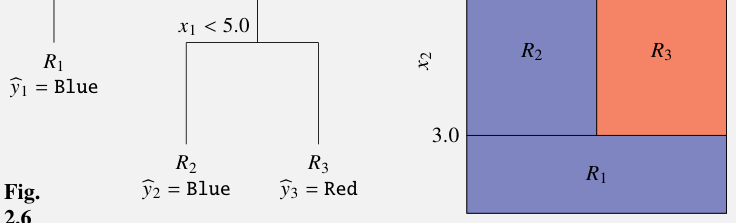

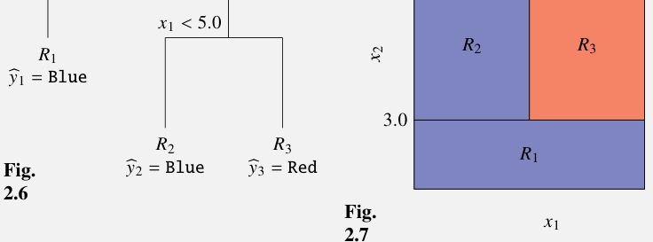
Trace for a classification tree. The root tests \(x_2<3.0\) (left leaf: Blue). The right branch tests \(x_1<5.0\) (left leaf: Blue, right leaf: Red). Take \(\mathbf x_\star=[2.5,\,3.5]^\top\), a point with \(x_1=2.5\) and \(x_2=3.5\). Because \(3.5\ge3.0\) it goes right. Because \(2.5<5.0\) it goes left. The prediction is Blue.分类树的演算：根结点测试 \(x_2<3.0\)（左叶子：蓝）。右分支测试 \(x_1<5.0\)（左叶子：蓝，右叶子：红）。取 \(\mathbf x_\star=[2.5,\,3.5]^\top\)，即一个 \(x_1=2.5\) 且 \(x_2=3.5\) 的点。因为 \(3.5\ge3.0\)，它走向右边。因为 \(2.5<5.0\)，它走向左边。预测为蓝。
A test compares one attribute with a constant. Rescaling an attribute changes nothing, so trees need no input normalisation, unlike \(k\)-NN.一个测试只把一个属性与一个常数比较。重新缩放属性不会有任何影响，所以树不需要对输入做归一化，而 \(k\)-NN 需要。
Step 3: how a tree is learned第 3 步：树如何学习
In words: learning = pick the question that tells the most about the answer, split the examples by it, and repeat on each part.用文字表述：学习 = 选出对答案最有信息量的问题，按它划分样本，然后在每一部分上重复。
Finding the smallest tree that fits the data is intractable. The algorithm is greedy（贪心）: it picks the best attribute for the current node, keeps that choice and never goes back. The tree is not guaranteed to be the smallest. How "best" is measured is the subject of Section 7.2.找到拟合数据的最小树是难解的。该算法是贪心的：它为当前结点选出最佳属性，保留这个选择，从不回头。因此不能保证得到最小的树。什么叫“最佳”，将在第 7.2 节讨论。
How to do it by hand: 1. Look at the examples at the current node. 2. If none are left, return the majority output of the parent. 3. If all have one output, return it. 4. If no attribute is left, return the majority output of the examples. 5. Otherwise compute the importance (information gain) of every remaining attribute and take the best, \(A\). 6. Make \(A\) the test of the node, with one branch per value of \(A\). 7. Send each example down the branch of its value and repeat from 1 on each branch, with \(A\) removed from the attributes.手工做法：1. 查看当前结点上的样本。2. 如果没有样本，返回父结点的多数输出。3. 如果所有样本的输出都相同，就返回该输出。4. 如果没有剩余属性，返回样本的多数输出。5. 否则计算每个剩余属性的重要性（信息增益），并选出最佳的一个，即 \(A\)。6. 把 \(A\) 设为该结点的测试，每个 \(A\) 取值各有一个分支。7. 把每个样本送到其取值对应的分支，并在每个分支上从第 1 步重复，此时 \(A\) 已从属性中去掉。
function LEARN-DECISION-TREE(examples, attributes, parent_examples) returns a tree
if examples is empty then return PLURALITY-VALUE(parent_examples) # case 1
else if all examples have the same classification then return it # case 2
else if attributes is empty then return PLURALITY-VALUE(examples) # case 3
else
A ← argmax over a in attributes of IMPORTANCE(a, examples) # case 4: split
tree ← a new decision tree with root test A
for each value v_k of A do
exs ← {e in examples : e.A = v_k}
subtree ← LEARN-DECISION-TREE(exs, attributes − A, examples)
add a branch to tree with label (A = v_k) and subtree
return tree
PLURALITY-VALUE returns the most common output and breaks ties at random. The four cases in words:PLURALITY-VALUE 返回最常见的输出，并在平票时随机打破。四种情况用文字表述如下：
| Situation情形 | Action and reason处理方式与理由 |
|---|---|
| No examples left in the branch分支中没有样本 | Return the majority output of the parent. This combination of values was never observed返回父结点的多数输出。这种属性值组合从未被观察到 |
| All examples have one output所有样本的输出相同 | Return that output as a leaf把该输出作为叶子返回 |
| Mixed outputs and no attributes left输出混合，且没有剩余属性 | Return the majority output. Identical descriptions have different labels: noise, a random domain, or an attribute that was not recorded返回多数输出。描述相同但标签不同：可能是噪声、随机的领域，或者某个属性没有被记录。 |
| Mixed outputs and attributes left输出混合，且仍有属性 | Split on the best attribute and recurse按最佳属性切分并递归 |
Example (restaurant domain: 12 examples, 6 yes and 6 no, output "wait for a table"). The root test Patrons has three values. None holds only "no", Some holds only "yes", so both become leaves by case 2. Full holds 2 "yes" and 4 "no", so it is split again, on Hungry. The French branch of Type is empty (case 1). Its parent holds 2 "yes" and 2 "no", and the tie was broken towards "yes".例子（餐厅问题：12 个样本，6 个“是”，6 个“否”，输出为“等位”）。根测试 Patrons 有三个取值。None 只含“否”，Some 只含“是”，两者按情况 2 都成为叶子。Full 含 2 个“是”、4 个“否”，所以按 Hungry 再划分。Type 的 French 分支为空（情况 1）。它的父结点含 2 个“是”、2 个“否”，平票时倾向于“是”。
Practice练习
Q1. (Expressiveness) (a) Draw a decision tree for \(A\oplus B\) (exclusive or) and write it in disjunctive normal form. (b) How many leaves does a tree for the parity of \(m\) Boolean attributes need?Q1.（表达能力）(a) 画出 \(A\oplus B\)（异或）的决策树，并将其写成析取范式。(b) 对于 \(m\) 个布尔属性的奇偶性，决策树需要多少个叶结点？
Answer
(a) Test \(A\) at the root and \(B\) on both branches. The leaves are \((A,B)=(T,T)\to F\), \((T,F)\to T\), \((F,T)\to T\), \((F,F)\to F\). Output \(\Leftrightarrow(A\wedge\neg B)\vee(\neg A\wedge B)\): 3 tests and 4 leaves.(a) 在根结点检验 \(A\)，并在两个分支上都检验 \(B\)。叶结点为 \((A,B)=(T,T)\to F\)、\((T,F)\to T\)、\((F,T)\to T\)、\((F,F)\to F\)。输出 \(\Leftrightarrow(A\wedge\neg B)\vee(\neg A\wedge B)\)：3 次检验，4 个叶结点。
(b) Flipping any one attribute flips the output, so every path must test all \(m\) attributes: \(2^m\) leaves (1024 for \(m=10\)). Parity is exponential for trees.(b) 改变任意一个属性都会翻转输出，因此每条路径都必须检验全部 \(m\) 个属性：需要 \(2^m\) 个叶结点（对于 \(m=10\)，即 1024 个）。对决策树而言，奇偶函数的规模呈指数增长。
Q2. (Trace) A tree tests \(x_2<3.0\) at the root; its right branch tests \(x_1<5.0\); the leaves are Blue, Blue, Red (left to right). Classify \([7,2]\), \([6,4]\) and \([2,3]\), and describe the Red region.Q2.（手工演算）一棵树在根结点检验 \(x_2<3.0\)；其右分支检验 \(x_1<5.0\)；叶结点从左到右依次为 Blue、Blue、Red。对 \([7,2]\)、\([6,4]\) 和 \([2,3]\) 进行分类，并描述 Red 区域。
Answer
\([7,2]\): \(x_2=2<3.0\), so Blue. \([6,4]\): \(4\ge3.0\) goes right, then \(6\ge5.0\), so Red. \([2,3]\): \(3\ge3.0\) goes right (the boundary value belongs to the right branch), then \(2<5.0\), so Blue. The Red region is the box \(x_1\ge5.0\), \(x_2\ge3.0\); its boundary consists of the segment \(x_2=3.0\) (\(x_1\ge5.0\)) and the segment \(x_1=5.0\) (\(x_2\ge3.0\)).\([7,2]\)：\(x_2=2<3.0\)，因此为 Blue。\([6,4]\)：\(4\ge3.0\) 向右，然后 \(6\ge5.0\)，因此为 Red。\([2,3]\)：\(3\ge3.0\) 向右（边界值属于右分支），然后 \(2<5.0\)，因此为 Blue。Red 区域是矩形 \(x_1\ge5.0\)、\(x_2\ge3.0\)；其边界由线段 \(x_2=3.0\)（\(x_1\ge5.0\)）和线段 \(x_1=5.0\)（\(x_2\ge3.0\)）组成。
Q3. (Algorithm) In LEARN-DECISION-TREE, what is returned (a) when three examples share all attribute values but are labelled yes, yes, no, and no attributes remain, and (b) when a branch receives no examples? Why?Q3.（算法）在 LEARN-DECISION-TREE 中，下列情形分别返回什么，为什么：(a) 三个样本的所有属性值都相同，但标签为 yes、yes、no，并且没有剩余属性；(b) 某分支没有收到任何样本？
Answer
(a) Case 4: PLURALITY-VALUE(examples) = yes. Identical descriptions with different labels indicate noise, a nondeterministic domain or an unobserved attribute; the majority label is the best guess. (b) Case 3: PLURALITY-VALUE(parent examples). This combination of attribute values was never observed, so the parent's majority is used.(a) 情形 4：PLURALITY-VALUE(examples) = yes。描述相同但标签不同，说明存在噪声、非确定性领域或未观测到的属性；多数标签是最佳猜测。(b) 情形 3：PLURALITY-VALUE(parent examples)。该属性值组合从未被观测到，因此使用父结点的多数值。
Choosing the split: entropy, information gain and Gini index ★★★选择划分：熵、信息增益与基尼指数 ★★★
Goal. Compute the entropy of a set, the remainder and the information gain of an attribute, and the Gini index of a node and of a split, on a small table. Choose the root attribute from the numbers.目标。 在一张小表上计算集合的熵、属性的剩余量和信息增益，以及结点和划分的基尼指数。根据这些数字选出根属性。
Step 1: entropy of a set第 1 步：集合的熵
In words: entropy = the average surprise of the output; it is 0 for a pure set and 1 bit for a 50/50 set of two classes.用文字表述：熵 = 输出的平均意外程度；纯净集合的熵为 0，两类 50/50 的集合为 1 比特。
Numbers for a set with \(p=4\) and \(n=2\). The share of positives is \(q=\frac46=0.667\). Then \(B(0.667)=-(0.667\log_20.667+0.333\log_20.333)=0.390+0.528=0.918\) bits.对于一个有 \(p=4\) 个正例和 \(n=2\) 个负例的集合，正例占比为 \(q=\frac46=0.667\)，熵则为 \(B(0.667)=-(0.667\log_20.667+0.333\log_20.333)=0.390+0.528=0.918\) 比特。
Step 2: remainder and information gain第 2 步：剩余量与信息增益
In words: information gain = the entropy before the split minus the average entropy that is left after the split.用文字表述：信息增益 = 划分前的熵 − 划分后剩下的平均熵。
An attribute \(A\) with \(d\) values splits the examples into \(d\) subsets. The remainder is the expected entropy after the split, weighted by the subset sizes. For a numeric attribute use the two subsets of the threshold test (\(d=2\)).属性 \(A\) 有 \(d\) 个取值，把样本划分为 \(d\) 个子集。剩余量是划分后的期望熵，按子集的大小加权。对于数值属性，使用阈值测试划分出的两个子集（\(d=2\)）。
How to do it by hand: 1. Count \(p\) and \(n\) and compute the entropy of the node. 2. For each attribute write the \((p_k,n_k)\) of each value. 3. Compute the entropy of each subset and weight it by its size. 4. Add up to get the remainder. 5. Subtract it from the node entropy. 6. Take the attribute with the largest gain. Recompute in every subset.手工做法：1. 数出 \(p\) 和 \(n\)，并算出结点的熵。2. 对每个属性，列出每个取值下的 \((p_k,n_k)\)。3. 算出每个子集的熵，并按大小加权。4. 把它们加起来得到剩余量。5. 用结点熵减去它。6. 选出增益最大的属性。在每个子集中重新计算。
Second example, a table you can do in your head. Play outside? (4 yes, 2 no):第二个例子，是一张可以心算的表。外出玩耍吗？（4 个“是”，2 个“否”）：
| # | Outlook | Windy | Play |
|---|---|---|---|
| 1 | Sunny | No否 | Yes是 |
| 2 | Sunny | No否 | Yes是 |
| 3 | Sunny | Yes是 | No否 |
| 4 | Rain | No否 | Yes是 |
| 5 | Rain | Yes是 | No否 |
| 6 | Rain | No否 | Yes是 |
The node entropy is \(B(\frac46)=0.918\) bits. Outlook gives Sunny \((2,1)\) and Rain \((2,1)\). Remainder \(=\frac36\cdot0.918+\frac36\cdot0.918=0.918\), so \(\text{Gain}(\text{Outlook})=0.918-0.918=0\) bits. Windy gives No \((4,0)\) and Yes \((0,2)\), both pure. Remainder \(=\frac46\cdot0+\frac26\cdot0=0\), so \(\text{Gain}(\text{Windy})=0.918-0=0.918\) bits. The root is Windy, and both branches are leaves: No gives "yes", Yes gives "no".结点的熵为 \(B(\frac46)=0.918\) 比特。Outlook 给出 Sunny \((2,1)\) 和 Rain \((2,1)\)。剩余量为 \(=\frac36\cdot0.918+\frac36\cdot0.918=0.918\)，因此为 \(\text{Gain}(\text{Outlook})=0.918-0.918=0\) 比特。Windy 给出 No \((4,0)\) 和 Yes \((0,2)\)，两者都是纯的。剩余量为 \(=\frac46\cdot0+\frac26\cdot0=0\)，因此为 \(\text{Gain}(\text{Windy})=0.918-0=0.918\) 比特。根是 Windy，两个分支都是叶子：No 给出“是”，Yes 给出“否”。
Step 3: the Gini index and other impurity measures第 3 步：基尼指数与其他不纯度度量
In words: an impurity measure says how mixed a node is; a good split gives children that are less mixed than their parent.用文字表述：不纯度度量的是一个结点有多混杂；好的划分会使子结点比父结点更纯。
A split sends \(N_1\) examples to the left child with impurity \(Q_1\) and \(N_2\) examples to the right child with impurity \(Q_2\). The learner takes the split with the smallest weighted impurity. Entropy is one possible \(Q\). The Gini index is another.一个划分把 \(N_1\) 个样本送入左子结点，其不纯度为 \(Q_1\)；把 \(N_2\) 个样本送入右子结点，其不纯度为 \(Q_2\)。学习器选加权不纯度最小的划分。熵是一种可能的 \(Q\)，基尼指数是另一种。

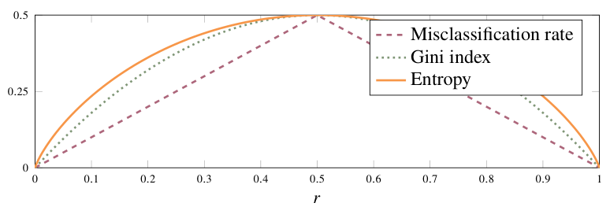
All three are 0 for a pure node and largest for a 50/50 node. Gini and entropy fall more steeply than the error rate when a child becomes nearly pure. They therefore separate splits that the error rate ties. Entropy underlies ID3 and C4.5. CART uses the Gini index.三者在纯净结点上都为 0，在 50/50 的结点上最大。当子结点接近纯净时，基尼和熵比错误率下降得更陡。因此它们能区分错误率打平的划分。熵是 ID3 和 C4.5 的基础，CART 使用基尼指数。
Practice练习
Q1. (Calculation) A node has 8 positive and 4 negative examples. Attribute \(A\) splits it into \((6+,1-)\) and \((2+,3-)\). Compute the information gain.Q1.（计算）某结点包含 8 个正例和 4 个负例。属性 \(A\) 将其切分为 \((6+,1-)\) 和 \((2+,3-)\)。计算信息增益。
Answer
\(H=B(\frac{8}{12})=0.918\) bits. \(\text{Remainder}=\frac{7}{12}B(\frac67)+\frac{5}{12}B(\frac25)=0.583\times0.592+0.417\times0.971=0.750\). \(\text{Gain}=0.918-0.750=0.169\) bits. The gain is small, so \(A\) is only weakly informative (the pruning section tests whether it is significant).\(H=B(\frac{8}{12})=0.918\) 比特。\(\text{Remainder}=\frac{7}{12}B(\frac67)+\frac{5}{12}B(\frac25)=0.583\times0.592+0.417\times0.971=0.750\)。\(\text{Gain}=0.918-0.750=0.169\) 比特。增益较小，因此 \(A\) 的信息量很弱（剪枝一节将检验其是否显著）。
思路：先算父节点熵，再按子集大小加权求余项，最后相减。
Q2. (Compare criteria) A node has 8 positive and 8 negative examples. Split A gives \((6+,2-)\) and \((2+,6-)\); split B gives \((8+,4-)\) and \((0+,4-)\). Compute the misclassification rate, the Gini index and the entropy (all weighted over the two children) and say which split each criterion prefers.Q2.（比较准则）某结点包含 8 个正例和 8 个负例。切分 A 给出 \((6+,2-)\) 和 \((2+,6-)\)；切分 B 给出 \((8+,4-)\) 和 \((0+,4-)\)。计算误分类率、基尼指数和熵（均对两个子结点加权），并说明每种准则偏好哪一种切分。
Answer
Misclassification: both splits make 4 errors out of 16 (0.25), a tie. Gini: A gives \(2\cdot\frac34\cdot\frac14=0.375\) in both children, so 0.375; B gives \(\frac{12}{16}\cdot2\cdot\frac23\cdot\frac13=0.333\) plus 0 for the pure child, so 0.333. Entropy: A gives \(B(0.25)=0.811\); B gives \(\frac{12}{16}B(\frac23)=0.689\), i.e. gains 0.189 and 0.311 bits. Gini and entropy prefer B because it creates a pure child; the misclassification rate cannot choose.误分类率：两种切分在 16 个样本中都产生 4 个错误（0.25），并列。基尼指数：A 在两个子结点中均为 \(2\cdot\frac34\cdot\frac14=0.375\)，因此为 0.375；B 给出 \(\frac{12}{16}\cdot2\cdot\frac23\cdot\frac13=0.333\)，纯子结点为 0，因此为 0.333。熵：A 给出 \(B(0.25)=0.811\)；B 给出 \(\frac{12}{16}B(\frac23)=0.689\)，即 A 与 B 的增益分别为 0.189 和 0.311 比特。基尼指数和熵偏好 B，因为它产生了一个纯子结点；而误分类率无法做出选择。
Overfitting, pruning and extensions ★★过拟合、剪枝与扩展 ★★
Goal. Explain why a fully grown tree overfits, name the two ways to limit tree size, and decide by hand with a chi-squared test whether a split is kept.目标。 解释为什么完全生长的树会过拟合，说出限制树规模的两种方式，并用卡方检验手工判断一个划分是否保留。
Step 1: why trees overfit and how to limit them第 1 步：为什么树会过拟合，以及如何限制它
In words: a tree that keeps splitting until every leaf is pure memorises the training data, including its noise.用文字表述：一棵一直分裂到每个叶子都纯净的树，会记住训练数据，包括其中的噪声。
A fully grown tree reproduces the training labels exactly, like 1-NN. It has low bias but high variance: it forms thin regions around single, possibly noisy, points. Overfitting (Section 6.4) is more likely with many attributes and few examples. Two ways control the size.完全生长的树会精确地再现训练标签，就像 1-NN 一样。它的偏差低，但方差高：它在单个、可能带噪声的点周围形成细小的区域。属性多而样本少时，更容易过拟合（第 6.4 节）。有两种方式控制树的大小。
- Stopping criteria（提前停止）, also called pre-pruning: do not split below a minimum number of points per leaf, beyond a maximum depth or beyond a fixed number of leaves.提前停止，也叫预剪枝：当每个叶子的样本数低于某个最小值，或深度超过最大值，或叶子数超过固定数目时，就不再划分。
- Pruning（剪枝）, also called post-pruning: grow the full tree first, then cut it back.剪枝，也叫后剪枝：先完整地生长树，然后再把它剪回去。
Stopping early is cheaper, but it can fail. Take XOR of two binary attributes. Each attribute alone has zero gain, so early stopping returns a single leaf. After a split on either attribute, the second-level tests separate the classes perfectly. Grow-then-prune keeps both tests.提前停止更省时间，但可能失败。以两个二元属性的 XOR 为例：单独看每个属性，增益都为零，所以提前停止只会返回一个叶子。在任一属性上划分一次后，第二层的测试就能完美地分开两类。先生长再剪枝能保留这两个测试。
Step 2: chi-squared pruning第 2 步：卡方剪枝
In words: prune a test if its counts are about what a useless attribute would give by chance.用文字表述：如果一个测试的计数，与一个无用属性偶然给出的计数差不多，就剪掉它。
How to do it by hand: 1. Find a test node whose children are all leaves. 2. For each child, compute the counts that an irrelevant attribute would give: the parent's share of positives times the child size. 3. Compute \(\Delta\), the total squared deviation from these counts. 4. Look up the critical value for \(d-1\) degrees of freedom. 5. If \(\Delta\) exceeds it, keep the test. Otherwise replace the node by a leaf with the majority output. 6. Repeat for the next such node.手工做法：1. 找到一个所有子结点都是叶子的测试结点。2. 对每个子结点，计算无关属性会给出的计数：父结点的正例占比乘以子结点的大小。3. 计算 \(\Delta\)，即与这些计数的偏差平方总和。4. 查出自由度为 \(d-1\) 的临界值。5. 如果 \(\Delta\) 超过它，就保留该测试。否则用多数输出的叶子替换该结点。6. 对下一个这样的结点重复。
| Degrees of freedom \(d-1\)自由度 \(d-1\) | 1 | 2 | 3 |
|---|---|---|---|
| Critical value, 5% level临界值（5% 水平） | 3.84 | 5.99 | 7.81 |
| Critical value, 1% level临界值（1% 水平） | 6.63 | 9.21 | 11.35 |
Pruned trees beat unpruned ones on noisy data. They are also smaller, easier to read and faster to run.在有噪声的数据上，剪枝后的树比未剪枝的树好。它们也更小、更容易读，运行也更快。
Practice练习
Q1. (Chi-squared pruning) A node with \(p=8\), \(n=4\) is split into \((6+,1-)\) and \((2+,3-)\) (the split of the information-gain practice question). Compute \(\Delta\) and decide at the 5% level. Repeat for a node with \(p=n=6\) split into \((5,1)\) and \((1,5)\).Q1.（卡方剪枝）一个带有 \(p=8\)、\(n=4\) 的结点被切分为 \((6+,1-)\) 和 \((2+,3-)\)（即信息增益练习题中的切分）。计算 \(\Delta\)，并在 5% 水平上作出判断。对一个带有 \(p=n=6\) 且切分为 \((5,1)\) 和 \((1,5)\) 的结点，重复上述过程。
Answer
First node: expected counts are \(\hat p=8\cdot\frac{7}{12}=4.667\), \(\hat n=2.333\) in the first child and \(3.333\), \(1.667\) in the second. \(\Delta=\frac{1.333^2}{4.667}+\frac{1.333^2}{2.333}+\frac{1.333^2}{3.333}+\frac{1.333^2}{1.667}=0.381+0.762+0.533+1.067=2.74\). With \(d-1=1\) the critical value is 3.84, so \(\Delta<3.84\): not significant (\(p\)-value 0.098), prune.第一个结点：第一个子结点的期望计数为 \(\hat p=8\cdot\frac{7}{12}=4.667\) 和 \(\hat n=2.333\)，第二个子结点的期望计数为 \(3.333\) 和 \(1.667\)。\(\Delta=\frac{1.333^2}{4.667}+\frac{1.333^2}{2.333}+\frac{1.333^2}{3.333}+\frac{1.333^2}{1.667}=0.381+0.762+0.533+1.067=2.74\)。自由度为 \(d-1=1\) 时临界值为 3.84，因此 \(\Delta<3.84\)：不显著（\(p\) 值为 0.098），应予剪枝。
Second node: expected counts are \((3,3)\) in both children, \(\Delta=2\left[\frac{(5-3)^2}{3}+\frac{(1-3)^2}{3}\right]=5.33>3.84\) (\(p\)-value 0.021): keep the test.第二个结点：两个子结点的期望计数均为 \((3,3)\)，\(\Delta=2\left[\frac{(5-3)^2}{3}+\frac{(1-3)^2}{3}\right]=5.33>3.84\)（\(p\) 值为 0.021）：保留该检验。
Q2. (True or false) "Stopping growth as soon as no attribute has a significant gain gives the same tree as growing the full tree and pruning." Justify.Q2.（判断）“一旦没有属性具有显著增益就停止生长，得到的树与先完全生长再剪枝得到的树相同。”判断此说法是否正确，并说明理由。
Answer
False. For XOR of two binary attributes with equally many examples of each combination, both attributes have zero gain at the root, so early stopping returns one leaf (50% accuracy). Growing fully and then pruning examines the second-level tests, which separate the classes perfectly and have a very large \(\Delta\), so they are kept; the root's children are then not leaves, so the root is never examined and stays.错误。对于两个二元属性的 XOR，若每种取值组合的样本数相同，则两个属性在根结点处的增益均为零，因此提前停止只会返回一个叶结点（准确率为 50%）。先完全生长再剪枝则会检查第二层的检验，这些检验能完美区分两类，并具有很大的 \(\Delta\)，因此它们会被保留；此时根结点的子结点不是叶结点，所以根结点不会被检查，也就保留了下来。
Ensembles: bagging and random forests ★★★集成：装袋法与随机森林 ★★★
Goal. Describe bagging and random forests step by step, compute the variance of an average and the out-of-bag numbers, and explain why more members do not overfit.目标。 逐步描述装袋法与随机森林，计算平均值的方差和袋外数，并解释为什么更多的成员不会导致过拟合。
Step 1: why combine models第 1 步：为什么要组合模型
In words: an ensemble = many models that vote or are averaged, so that their individual mistakes partly cancel.用文字表述：集成 = 许多模型投票或取平均，使它们各自的错误部分相互抵消。
Ensemble learning（集成学习）combines the predictions of \(K\) base models（基模型） \(h_1,\dots,h_K\) by averaging or voting. It helps for two reasons. A restricted model can be too simple, so a combination can represent more (less bias). The errors of different models partly cancel (less variance).集成学习把 \(K\) 个基模型的预测组合起来，组合方式是 \(h_1,\dots,h_K\)。它有两个作用。一个受限的模型可能太简单，组合起来就能表示更多（偏差更小）。不同模型的错误会部分相互抵消（方差更小）。
Numbers: \(K=3\) and \(a=0.8\). The majority is correct if 2 or 3 classifiers are correct. \(P=3\cdot0.8^2\cdot0.2+0.8^3=0.384+0.512=0.896\), better than one classifier with 0.8. Real classifiers trained on the same data share errors, so the gain is smaller.数字：\(K=3\) 和 \(a=0.8\)。若 2 或 3 个分类器判对，多数就是对的。\(P=3\cdot0.8^2\cdot0.2+0.8^3=0.384+0.512=0.896\)，比单个准确率为 0.8 的分类器更好。但在同一数据上训练的真实分类器会共享错误，所以收益更小。
Step 2: bagging第 2 步：装袋法
In words: bagging = train many models on different random copies of the data and average them.用文字表述：装袋法 = 在数据的许多不同随机副本上训练许多模型，然后取平均。
How to do it by hand: 1. Choose the number of members \(K\). 2. For each member draw a bootstrap sample of the same size \(N\) as the data. 3. Train one model, usually a deep tree, on that sample. 4. For a new input take the average of the \(K\) predictions (regression) or the plurality vote (classification). Bagging stands for bootstrap aggregating.手工做法：1. 选择成员数 \(K\)。2. 对每个成员，抽取与数据同样大小 \(N\) 的自助样本。3. 在该样本上训练一个模型，通常是深的树。4. 对新输入，取 \(K\) 个预测的平均（回归），或多数投票（分类）。“装袋法”是 bootstrap aggregating（自助聚合）的缩写。

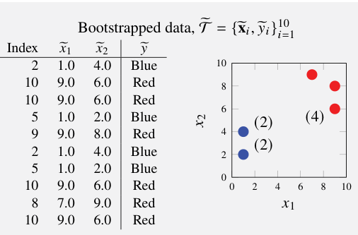
Drawing the indices 2, 10, 10, 5, 9, 2, 5, 10, 8, 10 from ten points gives point 10 four times, points 2 and 5 twice, points 8 and 9 once, and omits points 1, 3, 4, 6, 7. Without replacement every sample would be the original data in another order, and all models would be identical.从十个点中抽取索引 2、10、10、5、9、2、5、10、8、10，会使点 10 出现四次，点 2 和点 5 各出现两次，点 8 和点 9 各出现一次，并遗漏点 1、3、4、6、7。若不放回抽样，每个样本都只是原始数据的另一种排列，所有模型将完全相同。
Bagging suits low-bias, high-variance models, above all deep trees. A tree is unstable: a slightly different sample gives a very different tree. The members can be trained in parallel.装袋法适合低偏差、高方差的模型，最典型的就是深决策树。一棵树很不稳定：样本稍有不同，长出来的树就可能完全不同。各个成员可以并行训练。
Numbers: \(\sigma^2=1\) and \(\rho=0.25\). For \(K=10\): \(\frac{0.75}{10}+0.25=0.325\). For \(K=100\): \(0.0075+0.25=0.2575\). For \(K\to\infty\): 0.25. More members reduce the variance only down to \(\rho\sigma^2\).数字：\(\sigma^2=1\) 和 \(\rho=0.25\)。对于 \(K=10\)：\(\frac{0.75}{10}+0.25=0.325\)。对于 \(K=100\)：\(0.0075+0.25=0.2575\)。对于 \(K\to\infty\)：0.25。成员越多，方差降得越多，但最多只能降到 \(\rho\sigma^2\)。
More members never overfit. A new member adds no flexibility: as \(K\) grows the average converges to a fixed model. The test error falls and then flattens, so \(K\) is set by the computing budget. Bagging can still overfit, because each member can.成员越多，永远不会过拟合。新加一个成员并不会增加灵活性：随着 \(K\) 增大，平均结果会收敛到一个固定的模型。测试误差先下降，然后趋于平稳，所以 \(K\) 由计算预算决定。装袋法仍然可能过拟合，因为每个成员本身都可能过拟合。
Step 3: out-of-bag error第 3 步：袋外误差
In words: every point is left out of about a third of the members, so those members give an honest test of that point for free.用大白话说：每个点大约有三分之一的成员没有用到它，因此这些成员可以免费地对该点做一次诚实的测试。
A bootstrap sample contains a given point with probability \(1-(1-1/N)^N\), which tends to \(1-e^{-1}\approx0.632\). So a sample holds about 63% of the distinct points. A given point is absent from about 37% of the members, the out-of-bag（袋外）members of that point.一个自助样本包含某个给定点的概率是 \(1-(1-1/N)^N\)，它趋向于 \(1-e^{-1}\approx0.632\)。所以一个样本大约包含 63% 的不同点。某个给定点大约有 37% 的成员里没有出现，这些成员就是该点的袋外（out-of-bag）成员。
Numbers: \(N=10\) points: a given point is out-of-bag with probability \((1-\frac1{10})^{10}=0.349\). With \(K=300\) trees, about \(300\times0.368\approx110\) trees form the out-of-bag ensemble of one point.数字：\(N=10\) 个点：某个给定点是袋外点的概率为 \((1-\frac1{10})^{10}=0.349\)。若有 \(K=300\) 棵树，则大约有 \(300\times0.368\approx110\) 棵树构成该点的袋外集成。
Step 4: random forests第 4 步：随机森林
In words: a random forest = bagged trees where every split may look at only a few randomly chosen attributes, so that the trees differ more.用大白话说：随机森林 = 装袋树，区别在于每次分裂时只能看随机选出的少数几个属性，这样各棵树之间差异更大。
Bagged trees are highly correlated. If one attribute is very strong, nearly every tree puts it at the root, so \(\rho\) stays high and the floor \(\rho\sigma^2\) stays high. A random forest（随机森林）injects extra randomness.装袋树之间的相关性很高。如果某个属性非常强，几乎每棵树都会把它放在根结点，于是 \(\rho\) 居高不下，下限 \(\rho\sigma^2\) 也降不下来。随机森林（random forest）额外注入了随机性。
How to do it by hand: 1. Draw a bootstrap sample for each tree. 2. Grow the tree. At every split pick a fresh random subset of \(q\) of the \(m\) attributes. 3. Choose the best split among those \(q\) only. 4. Do not prune. 5. Average or vote over the \(K\) trees. With \(q=m\) this is plain bagging.手工做法：1. 为每棵树抽取一个自助样本。2. 生长这棵树。每次分裂时，从 \(m\) 个属性中随机抽取一个包含 \(q\) 个属性的新子集。3. 只在这些 \(q\) 中选择最佳分裂。4. 不剪枝。5. 对 \(K\) 棵树取平均或投票。当 \(q=m\) 时，这就是普通的装袋法。
Each tree gets slightly worse (its \(\sigma^2\) rises), but the trees are less correlated (\(\rho\) falls), and the second effect usually wins. Example with \(K=100\): bagging with \((\sigma^2,\rho)=(1,0.5)\) gives \(0.005+0.5=0.505\). A forest with \((1.2,0.2)\) gives \(\frac{0.8}{100}\cdot1.2+0.2\cdot1.2=0.0096+0.24=0.250\). A forest costs about \(K\) times one tree, and the trees can be trained in parallel. A forest is much less readable than one tree.每棵树都会变差一些（它的 \(\sigma^2\) 会升高），但树与树之间的相关性降低了（\(\rho\) 下降），后一种效应通常更占优。例子：\(K=100\) 时，装袋法使用 \((\sigma^2,\rho)=(1,0.5)\) 得到 \(0.005+0.5=0.505\)；用 \((1.2,0.2)\) 的随机森林得到 \(\frac{0.8}{100}\cdot1.2+0.2\cdot1.2=0.0096+0.24=0.250\)。一片森林的成本大约是一棵树的 \(K\) 倍，而且各棵树可以并行训练。森林的可读性远不如一棵树。
Practice练习
Q1. (Majority vote) Three independent classifiers are each correct with probability 0.7. What is the probability that the majority vote is correct? What if each is correct with probability 0.4? What if the three are identical copies?Q1.（多数投票）三个独立的分类器各自正确的概率均为 0.7。多数投票正确的概率是多少？若每个分类器正确的概率为 0.4，结果如何？若三者是完全相同的副本，又如何？
Answer
\(P=3(0.7)^2(0.3)+0.7^3=0.441+0.343=0.784\). With 0.4: \(3(0.4)^2(0.6)+0.4^3=0.288+0.064=0.352\), worse than one classifier: voting amplifies whichever side of 0.5 the accuracy lies on. Identical copies are perfectly correlated, so the vote is as accurate as one classifier (0.7): the gain needs diversity.\(P=3(0.7)^2(0.3)+0.7^3=0.441+0.343=0.784\)。若为 0.4：\(3(0.4)^2(0.6)+0.4^3=0.288+0.064=0.352\)，比单个分类器更差：投票会放大准确率位于 0.5 的哪一侧所带来的效应。完全相同的副本完全相关，因此投票的准确率与单个分类器（0.7）相同：增益需要多样性。
Q2. (Bootstrap and out-of-bag) A bootstrap sample of \(N=8\) points uses the indices 3, 3, 1, 7, 5, 1, 3, 8. (a) Which points are out-of-bag? (b) What is the probability that a given point is out-of-bag, and its limit for large \(N\)? (c) Why must sampling be with replacement? (d) In a forest of 300 trees, about how many trees form the out-of-bag ensemble of one point?Q2.（自助采样与袋外样本）一个包含 \(N=8\) 个点的自助样本使用的索引为 3、3、1、7、5、1、3、8。(a) 哪些点属于袋外？(b) 某个给定点属于袋外的概率是多少？当 \(N\) 很大时，该概率的极限是多少？(c) 为什么抽样必须有放回？(d) 在一个包含 300 棵树的森林中，约有多少棵树构成某一点的袋外集成？
Answer
(a) The sample contains points 1, 3, 5, 7, 8, so points 2, 4, 6 are out-of-bag. (b) \((1-\frac18)^8=0.344\); the limit is \(e^{-1}=0.368\). (c) Without replacement a sample of \(N\) points is the original data in another order, so all trees would be identical and averaging would not reduce the variance. (d) About \(300/e\approx110\) trees.(a) 样本包含点 1、3、5、7、8，因此点 2、4、6 属于袋外。(b) \((1-\frac18)^8=0.344\)；极限为 \(e^{-1}=0.368\)。(c) 若不放回，\(N\) 个点的样本只是原始数据的另一种排列，因此所有树都会相同，取平均也无法降低方差。(d) 约 \(300/e\approx110\) 棵树。
Q3. (Derivation) Let \(z_1,\dots,z_K\) have variance \(\sigma^2\) and pairwise correlation \(\rho\). Derive \(\operatorname{Var}\bigl[\frac1K\sum z_i\bigr]\). Evaluate it for bagging with \(\sigma^2=4\), \(\rho=0.25\), \(K=16\), and for a forest with \(\sigma^2=4.4\), \(\rho=0.1\), \(K=16\).Q3.（推导）设 \(z_1,\dots,z_K\) 的方差为 \(\sigma^2\)，两两之间的相关系数为 \(\rho\)。推导 \(\operatorname{Var}\bigl[\frac1K\sum z_i\bigr]\)。对装袋法，在 \(\sigma^2=4\)、\(\rho=0.25\)、\(K=16\) 下计算其值；对森林，在 \(\sigma^2=4.4\)、\(\rho=0.1\)、\(K=16\) 下计算。
Answer
The sum has \(K\) variances and \(K(K-1)\) covariances \(\rho\sigma^2\): \(\operatorname{Var}=\frac{1}{K^2}\bigl[K\sigma^2+K(K-1)\rho\sigma^2\bigr]=\frac{\sigma^2}{K}+\frac{K-1}{K}\rho\sigma^2=\frac{1-\rho}{K}\sigma^2+\rho\sigma^2\).和式包含 \(K\) 个方差项和 \(K(K-1)\) 个协方差项 \(\rho\sigma^2\)：\(\operatorname{Var}=\frac{1}{K^2}\bigl[K\sigma^2+K(K-1)\rho\sigma^2\bigr]=\frac{\sigma^2}{K}+\frac{K-1}{K}\rho\sigma^2=\frac{1-\rho}{K}\sigma^2+\rho\sigma^2\)。
Bagging: \(\frac{0.75}{16}\cdot4+0.25\cdot4=0.1875+1=1.1875\) (floor 1). Forest: \(\frac{0.9}{16}\cdot4.4+0.44=0.2475+0.44=0.6875\). The forest wins although each tree is noisier, because \(\rho\) fell and the floor \(\rho\sigma^2\) dropped from 1 to 0.44.装袋法：\(\frac{0.75}{16}\cdot4+0.25\cdot4=0.1875+1=1.1875\)（下限为 1）。森林：\(\frac{0.9}{16}\cdot4.4+0.44=0.2475+0.44=0.6875\)。尽管每棵树的噪声更大，森林仍然更优，因为 \(\rho\) 下降了，而下限 \(\rho\sigma^2\) 从 1 降至 0.44。
Boosting and AdaBoost ★★提升法与 AdaBoost ★★
Goal. Carry out one AdaBoost round by hand (weighted error, hypothesis weight, new example weights) and say how boosting differs from bagging.目标。手工完成一轮 AdaBoost（计算加权误差、假设权重和新的样本权重），并说明提升法与装袋法的区别。
Step 1: the boosting idea第 1 步：提升法的思想
In words: boosting = train models one after another, and give more weight to the examples that the earlier models got wrong.用大白话说：提升法 = 依次训练多个模型，并给予前面模型分错的样本更大的权重。
Boosting（提升法）starts with equal weights and learns \(h_1\). It raises the weights of the misclassified examples, lowers the others and learns \(h_2\) on the reweighted set. This repeats until \(K\) hypotheses exist. The final answer is a weighted vote in which more accurate hypotheses count more. Boosting is sequential and cannot be run in parallel.提升法（boosting）从相等的权重开始，学习 \(h_1\)。它提高被误分类样本的权重，降低其他样本的权重，然后在重新加权后的数据上学习 \(h_2\)。这一过程不断重复，直到得到 \(K\) 个假设。最终答案是一个加权投票，准确率越高的假设票数越大。提升法是顺序进行的，不能并行。

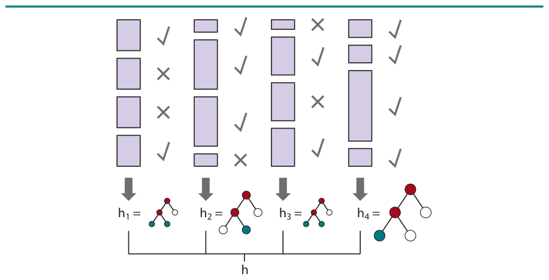
A learner is weak（弱学习器）if its training accuracy is always slightly better than guessing. The usual weak learner is a decision stump（决策树桩）, a tree with a single test at the root.如果一个学习器的训练准确率总是比乱猜略好一点，它就是弱学习器（weak learner）。常用的弱学习器是决策树桩（decision stump），即只在根结点做一次测试的树。
Step 2: one AdaBoost round第 2 步：AdaBoost 的一轮
In words: AdaBoost = after each hypothesis, shrink the weights of the examples it got right, so that the mistakes make up half of the total weight.用大白话说：AdaBoost = 每得到一个假设后，就降低它分对的样本的权重，使分错的样本占据总权重的一半。
How to do it by hand: 1. Start with all \(N\) example weights equal to \(1/N\). 2. Learn \(h_k\) on the weighted examples. 3. Add the weights of the examples it misclassifies: this is the weighted error \(\varepsilon_k\). If \(\varepsilon_k>\frac12\), stop. 4. Compute the hypothesis weight \(z_k\). 5. Multiply the weights of the correctly classified examples by \(\varepsilon_k/(1-\varepsilon_k)\). 6. Divide all weights by their sum, so that they add up to 1. 7. Go back to step 2.手工做法：1. 把全部 \(N\) 个样本的权重都设为 \(1/N\)。2. 在加权后的样本上学习 \(h_k\)。3. 把它分错的样本的权重加起来，得到加权误差 \(\varepsilon_k\)。若 \(\varepsilon_k>\frac12\)，则停止。4. 计算假设的权重 \(z_k\)。5. 把分对的样本的权重乘以 \(\varepsilon_k/(1-\varepsilon_k)\)。6. 所有权重除以它们的总和，使总和为 1。7. 回到第 2 步。
After the update, the correct examples carry total weight \(\varepsilon_k\), the same as the wrong ones, so each group holds exactly \(\frac12\) after normalising. On the new weights \(h_k\) is a coin flip, so \(h_{k+1}\) must learn something about the earlier mistakes. If the learner is weak, AdaBoost reaches zero training error for a large enough \(K\). It gives no guarantee on unseen data.更新之后，分对的样本总权重为 \(\varepsilon_k\)，与分错的样本总权重相同，因此归一化后两组各恰好占 \(\frac12\)。在新权重下，\(h_k\) 相当于抛硬币，所以 \(h_{k+1}\) 必须学到一些关于之前错误的东西。如果学习器是弱的，只要 \(K\) 足够大，AdaBoost 就能把训练误差降到零。但它不能保证在未见过的数据上表现好。
Step 3: bagging versus boosting第 3 步：装袋法与提升法的比较
| Bagging and random forests装袋法与随机森林 | Boosting (AdaBoost)提升法（AdaBoost） | |
|---|---|---|
| Base models基模型 | Strong, low bias, high variance (deep trees)强；低偏差、高方差（深树） | Weak, high bias (stumps, small trees)弱；高偏差（树桩、小树） |
| Training训练集 | Independent, in parallel相互独立，并行 | Sequential; each model uses the earlier errors顺序进行；每个模型利用先前的错误 |
| Data per model每个模型的数据 | Bootstrap sample自助样本 | Whole set with example weights全部样本，带样本权重 |
| Combination组合方式 | Equal average or vote等权平均或投票 | Vote weighted by accuracy (\(z_k\))按准确率加权的投票（\(z_k\)） |
| Main effect主要作用 | Lower variance降低方差 | Lower bias降低偏差 |
| Overfitting过拟合 | Not caused by more members不会因成员增多而产生 | Training error can reach 0; can chase noisy labels, whose weights keep growing训练误差可以降为 0；但它会追逐带噪声的标签，而这些标签对应样本的权重会不断增长 |
Practice练习
Q1. (AdaBoost round) Eight examples start with weight \(\frac18\). \(h_1\) misclassifies examples 3 and 6. Compute \(\varepsilon_1\), \(z_1\) and the new weights. Then \(h_2\) misclassifies examples 1 and 8: compute \(\varepsilon_2\) and \(z_2\).Q1.（AdaBoost 一轮）八个样本的初始权重均为 \(\frac18\)。\(h_1\) 误分了样本 3 和样本 6。计算 \(\varepsilon_1\)、\(z_1\) 以及新的权重。然后 \(h_2\) 误分了样本 1 和样本 8：计算 \(\varepsilon_2\) 和 \(z_2\)。
Answer
\(\varepsilon_1=\frac18+\frac18=\frac14\) and \(z_1=\frac12\ln3=0.549\). The six correct examples are multiplied by \(\frac{\varepsilon_1}{1-\varepsilon_1}=\frac13\): \(\frac1{24}\) each (total \(\frac14\)); examples 3 and 6 keep \(\frac18\) (total \(\frac14\)). Dividing by \(\frac12\): correct examples \(\frac1{12}\), wrong ones \(\frac14\).\(\varepsilon_1=\frac18+\frac18=\frac14\) 和 \(z_1=\frac12\ln3=0.549\)。六个正确分类的样本乘以 \(\frac{\varepsilon_1}{1-\varepsilon_1}=\frac13\)，每个变为 \(\frac1{24}\)（总和为 \(\frac14\)）；样本 3 和样本 6 保持 \(\frac18\)（总和为 \(\frac14\)）。除以 \(\frac12\) 后：正确分类样本的权重为 \(\frac1{12}\)，错误分类样本的权重为 \(\frac14\)。
Round 2: \(\varepsilon_2=\frac1{12}+\frac1{12}=\frac16\) and \(z_2=\frac12\ln5=0.805\). \(h_2\) gets the larger vote because it is more accurate.第二轮：\(\varepsilon_2=\frac1{12}+\frac1{12}=\frac16\) 和 \(z_2=\frac12\ln5=0.805\)。\(h_2\) 获得更大的投票权，因为它更准确。
Q2. (Explain and prove) (a) Show that after the AdaBoost reweighting step \(h_k\) has weighted error exactly \(\frac12\). (b) Why does the algorithm stop when the error exceeds \(\frac12\)?Q2.（解释与证明）(a) 证明在 AdaBoost 重新加权步骤之后，\(h_k\) 的加权误差恰好为 \(\frac12\)。(b) 为什么当误差超过 \(\frac12\) 时算法会停止？
Answer
(a) Before normalising, the correct examples have total weight \((1-\varepsilon)\frac{\varepsilon}{1-\varepsilon}=\varepsilon\) and the wrong ones \(\varepsilon\); the normaliser is \(2\varepsilon\), so each group has weight \(\frac12\). On the new weights \(h_k\) is no better than a coin, so \(h_{k+1}\) must learn something about the earlier mistakes.(a) 归一化之前，正确分类样本的总权重为 \((1-\varepsilon)\frac{\varepsilon}{1-\varepsilon}=\varepsilon\)，错误分类样本的总权重为 \(\varepsilon\)；归一化因子为 \(2\varepsilon\)，因此每一组的权重为 \(\frac12\)。在新的权重下，\(h_k\) 并不比掷硬币更好，因此 \(h_{k+1}\) 必须学到关于先前错误的信息。
(b) An error above \(\frac12\) means \(h_k\) is worse than random guessing: the weak-learning assumption fails and \(z_k=\frac12\ln\frac{1-\varepsilon}{\varepsilon}\) would be negative, so the loop breaks. If the error is 0, \(h_k\) is perfect and \(z_k\) would be infinite.(b) 误差超过 \(\frac12\) 意味着 \(h_k\) 比随机猜测还差：弱学习假设不成立，\(z_k=\frac12\ln\frac{1-\varepsilon}{\varepsilon}\) 将为负值，因此循环中断。若误差为 0，则 \(h_k\) 完全正确，\(z_k\) 将为无穷大。
Terms to recognise ★需要认识的术语 ★
| Term术语 | What to know要知道什么 |
|---|---|
| Gain ratio增益率 | Gain divided by the entropy of the split itself. It corrects the preference of gain for many-valued attributes such as an ID信息增益除以划分本身的熵。它修正了信息增益偏好取值很多的属性（比如 ID 这类属性）的问题。 |
| Continuous attribute连续属性 | Sort the values and test thresholds between neighbours with different classes. Sorting costs \(O(N\log N)\) per attribute把取值排序，只在类别不同的相邻取值之间测试阈值。对每个属性排序的代价是 \(O(N\log N)\)。 |
| Missing values缺失值 | The tree needs a rule to classify with a missing tested value and a gain formula for unknown values树需要一条规则，用来在被测试的值缺失时进行分类，还需要一个针对未知取值的信息增益公式。 |
| Regression tree回归树 | Leaf value is the average output of its region. CART means Classification And Regression Trees叶结点的值是其区域内输出的平均值。CART 是 Classification And Regression Trees 的缩写。 |
| Strengths and weaknesses of trees树的优缺点 | Readable, fast, no normalisation. But greedy, axis-aligned boundaries and unstable: one more example can change the root易读、速度快，不需要归一化。但它是贪心的，边界与坐标轴平行，而且不稳定：多加一个样本就可能改变根结点。 |
| ExtraTrees | Extremely randomised trees also draw the cutpoint at random from the attribute range极端随机树也会在属性的取值范围内随机抽取切分点。 |
| Stacking堆叠泛化 | Combines models of different classes with a new model trained on their validation predictions. It reduces bias组合不同类型的模型：用一个新模型去学习它们在验证集上的预测结果。它能降低偏差。 |
| Gradient boosting梯度提升 | Each new tree is fitted to the negative gradient of the loss (for squared error, the residuals of the current model) and added with a learning rate \(\alpha\)每棵新树拟合损失的负梯度（对平方误差来说，就是当前模型的残差），并以学习率 \(\alpha\) 加到模型上。 |
| Weak learner弱学习器 | Training accuracy slightly above chance, for example a decision stump训练准确率略高于随机猜测，例如决策树桩。 |
| Online learning在线学习 | Predict one input at a time with expert advice. Regret = extra mistakes against the best expert借助专家建议，每次预测一个输入。遗憾 = 比最好的专家多出的错误数。 |
Exam-style questions考试题型练习
Q1. (Decision tree learning, 14 marks) The table lists 10 days: Go is whether a family went to the park.Q1.（决策树学习，14 分）表中列出了 10 天的数据，Go 表示一家人是否去了公园。
| # | Weather | Weekend | Crowded | Go |
|---|---|---|---|---|
| 1 | Sunny | No否 | Yes是 | Yes是 |
| 2 | Cloudy | Yes是 | No否 | Yes是 |
| 3 | Rainy | Yes是 | Yes是 | No否 |
| 4 | Sunny | Yes是 | Yes是 | Yes是 |
| 5 | Rainy | Yes是 | Yes是 | No否 |
| 6 | Cloudy | Yes是 | No否 | Yes是 |
| 7 | Rainy | No否 | Yes是 | No否 |
| 8 | Cloudy | No否 | No否 | No否 |
| 9 | Sunny | Yes是 | No否 | Yes是 |
| 10 | Sunny | No否 | No否 | Yes是 |
(a) Compute the entropy of Go. (1) (b) Compute the information gain of each attribute and choose the root. (5) (c) Complete the tree with the greedy algorithm and draw it. (4) (d) Compute the weighted Gini index after splitting on Weather and on Weekend. (2) (e) Classify (Cloudy, Weekend = No, Crowded = Yes). (1) (f) Weekend has the smallest gain at the root but appears in the tree. Why? (1)(a) 计算 Go 的熵。（1 分）(b) 计算每个属性的信息增益，并选出根结点。（5 分）(c) 用贪心算法补全决策树并画出。（4 分）(d) 计算按 Weather 和按 Weekend 切分后的加权基尼指数。（2 分）(e) 对 (Cloudy, Weekend = No, Crowded = Yes) 进行分类。（1 分）(f) Weekend 在根结点处的增益最小，但却出现在树中。为什么？（1 分）
Answer
(a) 6 yes, 4 no: \(H=B(0.6)=0.971\) bits.(a) 6 个 yes、4 个 no：\(H=B(0.6)=0.971\) 比特。
(b) Weather: Sunny \((4,0)\), Cloudy \((2,1)\), Rainy \((0,3)\); Remainder \(=\frac{3}{10}B(\frac23)=0.2755\); Gain \(=0.695\). Weekend: No \((2,2)\), Yes \((4,2)\); Remainder \(=0.4\cdot1+0.6\cdot0.918=0.951\); Gain \(=0.020\). Crowded: Yes \((2,3)\), No \((4,1)\); Remainder \(=0.5\cdot0.971+0.5\cdot0.722=0.846\); Gain \(=0.125\). Weather has the largest gain and is the root.(b) Weather：Sunny \((4,0)\)，Cloudy \((2,1)\)，Rainy \((0,3)\)；Remainder \(=\frac{3}{10}B(\frac23)=0.2755\)；增益 \(=0.695\)。Weekend：No \((2,2)\)，Yes \((4,2)\)；Remainder \(=0.4\cdot1+0.6\cdot0.918=0.951\)；增益 \(=0.020\)。Crowded：Yes \((2,3)\)，No \((4,1)\)；Remainder \(=0.5\cdot0.971+0.5\cdot0.722=0.846\)；增益 \(=0.125\)。Weather 的增益最大，因此为根结点。
(c) Sunny is all yes and Rainy all no (leaves). Cloudy holds \((2,1)\): examples 2 and 6 (Weekend = Yes, Crowded = No, yes) and example 8 (Weekend = No, Crowded = No, no). Crowded has one value there (gain 0); Weekend separates the classes perfectly (gain 0.918), so it is chosen. Tree: Weather? Sunny → Yes; Rainy → No; Cloudy → Weekend? Yes → Yes, No → No. It has 2 tests and 4 leaves, is consistent with all 10 examples, and never uses Crowded.(c) Sunny 全为 yes，Rainy 全为 no（均为叶结点）。Cloudy 包含 \((2,1)\)：样本 2 和样本 6（Weekend = Yes，Crowded = No，为 yes），以及样本 8（Weekend = No，Crowded = No，为 no）。该子集中 Crowded 只有一个取值（增益为 0）；Weekend 能完全区分两类（增益 0.918），因此被选中。决策树为：Weather？Sunny → Yes；Rainy → No；Cloudy → Weekend？Yes → Yes，No → No。该树有 2 个检验和 4 个叶结点，与全部 10 个样本一致，且从未使用 Crowded。
(d) Parent Gini \(=0.48\). Weather: \(\frac{3}{10}\cdot2\cdot\frac23\cdot\frac13=0.133\). Weekend: \(0.4\cdot0.5+0.6\cdot0.444=0.467\). Weather again has the lower impurity, so it is the root under Gini as well.(d) 父结点的基尼指数为 \(=0.48\)。Weather：\(\frac{3}{10}\cdot2\cdot\frac23\cdot\frac13=0.133\)。Weekend：\(0.4\cdot0.5+0.6\cdot0.444=0.467\)。在基尼指数下，Weather 的不纯度同样更低，因此它同样是根结点。
(e) Cloudy, then Weekend = No: No (do not go).(e) Cloudy，然后 Weekend = No：No（不去公园）。
(f) Gains are recomputed on every subset. Weekend is nearly proportional to Go over all 10 days, but within the Cloudy subset it separates the classes exactly.(f) 增益需要在每个子集上重新计算。在全部 10 天中，Weekend 的取值与 Go 的结果几乎成比例，但在 Cloudy 子集中，它能完全区分两类。
思路：先算父节点熵，再逐个属性算余项；子集里要重新算增益。
Q2. (Overfitting and pruning, 10 marks) (a) Why does a fully grown decision tree overfit, and how can its size be limited? (3) (b) A node holds 10 positive and 10 negative examples. An attribute with three values splits it into \((p_k,n_k)=(2,4)\), \((3,3)\), \((5,3)\). Compute \(\Delta\) and decide at the 5% level (critical value 5.99 for the right number of degrees of freedom). (5) (c) Why is stopping when no attribute has a significant gain risky? (2)Q2.（过拟合与剪枝，10 分）(a) 为什么完全生长的决策树会过拟合？如何限制其规模？（3 分）(b) 某结点包含 10 个正例和 10 个负例。一个取三个值的属性将其切分为 \((p_k,n_k)=(2,4)\)、\((3,3)\)、\((5,3)\)。计算 \(\Delta\)，并在 5% 显著性水平上作出判断（自由度正确时的临界值为 5.99）。（5 分）(c) 当没有任何属性具有显著增益时就停止生长，为什么有风险？（2 分）
Answer
(a) Growing until every leaf is pure gives zero training error and tiny regions around single, possibly noisy, points: low bias, high variance, like 1-NN. Size is limited by a maximum depth, a minimum number of points per leaf or a maximum number of leaves (stopping criteria), or by growing fully and pruning back.(a) 一直生长到每个叶结点都纯净，训练误差为零，并在单个（可能含噪声的）数据点周围形成极小的区域：偏差低、方差高，与 1-NN 类似。规模可以通过最大深度、每个叶结点的最少样本数或最大叶结点数来限制（停止准则），也可以先完全生长再回剪。
(b) The subsets have 6, 6, 8 examples, so the expected counts are \(\hat p_k=10\cdot\frac{N_k}{20}=3,3,4\) and \(\hat n_k=3,3,4\). \(\Delta=\frac{(2-3)^2}{3}+\frac{(4-3)^2}{3}+0+0+\frac{(5-4)^2}{4}+\frac{(3-4)^2}{4}=\frac13+\frac13+\frac14+\frac14=1.17\). The degrees of freedom are \(d-1=2\) and \(1.17<5.99\), so the null hypothesis (irrelevant attribute) is not rejected: prune the test and replace it by a leaf.(b) 各子集分别含有 6、6、8 个样本，因此期望计数为 \(\hat p_k=10\cdot\frac{N_k}{20}=3,3,4\) 和 \(\hat n_k=3,3,4\)。\(\Delta=\frac{(2-3)^2}{3}+\frac{(4-3)^2}{3}+0+0+\frac{(5-4)^2}{4}+\frac{(3-4)^2}{4}=\frac13+\frac13+\frac14+\frac14=1.17\)。自由度为 \(d-1=2\) 和 \(1.17<5.99\)，因此不能拒绝零假设（属性不相关）：剪掉该检验，并用叶结点替代。
(c) A combination of attributes can be informative while no single attribute is, as in XOR. Early stopping returns a leaf at the root; growing the full tree and then pruning finds the pair of tests.(c) 如 XOR 所示，属性的组合可能有信息量，而其中每个单独的属性都没有。提前停止会在根结点返回一个叶结点；先完全生长再剪枝则能找到这一对检验。
Q3. (Bagging and random forests, 12 marks) A random forest of \(K=200\) trees is trained on \(N=1000\) examples with \(m=49\) attributes. (a) How is a bootstrap sample drawn? About how many distinct examples does it hold, and for about how many trees is a given example out-of-bag? (3) (b) Explain how the out-of-bag error is computed and why it needs no validation set. (3) (c) How many attributes does each split consider for classification and for regression? (2) (d) A bagged tree has variance \(\sigma^2=2\) and correlation \(\rho=0.4\); a forest tree has \(\sigma^2=2.4\) and \(\rho=0.1\). Compute the variance of the average for \(K=200\) and comment. (3) (e) Does \(K=2000\) risk overfitting? (1)Q3.（装袋法与随机森林，12 分）一个包含 \(K=200\) 棵树的随机森林在 \(N=1000\) 个样本、\(m=49\) 个属性上训练。(a) 如何抽取自助样本？它大约包含多少个不同的样本？一个给定样本大约在多少棵树中属于袋外？（3 分）(b) 说明袋外误差如何计算，以及它为什么不需要验证集。（3 分）(c) 分类和回归时，每次切分分别考虑多少个属性？（2 分）(d) 装袋树的方差为 \(\sigma^2=2\)，相关系数为 \(\rho=0.4\)；森林中一棵树的方差为 \(\sigma^2=2.4\)，相关系数为 \(\rho=0.1\)。计算 \(K=200\) 的平均值的方差并加以评论。（3 分）(e) \(K=2000\) 有过拟合的风险吗？（1 分）
Answer
(a) Draw \(N=1000\) examples uniformly with replacement. Each example is included with probability \(1-(1-\frac{1}{1000})^{1000}\approx0.632\), so a sample holds about 632 distinct examples, and each example is out-of-bag for about \(200\times0.368\approx74\) trees.(a) 有放回地均匀抽取 \(N=1000\) 个样本。每个样本被抽中的概率为 \(1-(1-\frac{1}{1000})^{1000}\approx0.632\)，因此一个自助样本约包含 632 个不同的样本，每个样本在约 \(200\times0.368\approx74\) 棵树中属于袋外。
(b) For each training point, predict it with only the roughly 74 trees that did not see it (vote or average), compare with its label, and average the errors over all \(N\) points. Those trees treat the point as unseen data, so \(E_{\text{OOB}}\) estimates the test error from the training run itself; it describes an ensemble of about 74 trees and is slightly pessimistic.(b) 对每个训练点，仅用约 74 棵未见过该点的树（投票或取平均）对其进行预测，与其标签比较，再对全部 \(N\) 个点的误差取平均。这些树将该点视为未见过的数据，因此 \(E_{\text{OOB}}\) 利用训练过程本身估计了测试误差；它描述的是一个由约 74 棵树组成的集成，因此结果略偏悲观。
(c) \(\lfloor\sqrt{49}\rfloor=7\) for classification and \(\lfloor49/3\rfloor=16\) for regression.(c) 分类时为 \(\lfloor\sqrt{49}\rfloor=7\)，回归时为 \(\lfloor49/3\rfloor=16\)。
(d) Bagging: \(\frac{0.6}{200}\cdot2+0.4\cdot2=0.806\). Forest: \(\frac{0.9}{200}\cdot2.4+0.1\cdot2.4=0.251\). The forest trees are individually noisier but much less correlated: the floor \(\rho\sigma^2\) falls from 0.8 to 0.24, so the variance is about 3 times smaller.(d) 装袋法：\(\frac{0.6}{200}\cdot2+0.4\cdot2=0.806\)。森林：\(\frac{0.9}{200}\cdot2.4+0.1\cdot2.4=0.251\)。森林中的每棵树单独看噪声更大，但相关性低得多：方差的下限 \(\rho\sigma^2\) 从 0.8 降至 0.24，因此方差约小 3 倍。
(e) No. Extra trees add no flexibility; the error converges (not to zero) and only computing time grows.(e) 没有。增加更多的树并不会带来额外的灵活性；误差收敛（但不会趋于零），只是计算时间增加。
Q4. (AdaBoost, 12 marks) Five training examples start with equal weights. Weak hypothesis \(h_1\) misclassifies only example 2; \(h_2\), trained on the reweighted data, misclassifies examples 1 and 3. (a) Compute \(\varepsilon_1\), \(z_1\) and the weights after round 1. (4) (b) Compute \(\varepsilon_2\), \(z_2\) and the weights after round 2. (4) (c) A test point has \(h_1=+1\) and \(h_2=-1\). What does the two-member ensemble predict? (1) (d) Why can boosting reduce bias while bagging cannot? Give two differences between the methods. (3)Q4.（AdaBoost，12 分）五个训练样本的初始权重相等。弱假设 \(h_1\) 只误分样本 2；\(h_2\) 在重新加权后的数据上训练，误分样本 1 和样本 3。(a) 计算第一轮之后的 \(\varepsilon_1\)、\(z_1\) 以及权重。（4 分）(b) 计算第二轮之后的 \(\varepsilon_2\)、\(z_2\) 以及权重。（4 分）(c) 某测试点有 \(h_1=+1\) 和 \(h_2=-1\)，两成员集成会预测什么？（1 分）(d) 为什么提升法能降低偏差，而装袋法不能？请给出两种方法之间的两点区别。（3 分）
Answer
(a) Initial weights 0.2. \(\varepsilon_1=0.2\) and \(z_1=\frac12\ln\frac{0.8}{0.2}=0.693\). The correct examples (1, 3, 4, 5) are multiplied by \(\frac{0.2}{0.8}=0.25\), giving 0.05 each; example 2 keeps 0.2. The sum is 0.4, so the normalised weights are 0.125 for each correct example and 0.5 for example 2.(a) 初始权重为 0.2。\(\varepsilon_1=0.2\) 和 \(z_1=\frac12\ln\frac{0.8}{0.2}=0.693\)。正确分类的样本（1、3、4、5）乘以 \(\frac{0.2}{0.8}=0.25\)，各得 0.05；样本 2 保持 0.2。总和为 0.4，因此归一化后，每个正确分类样本的权重为 0.125，样本 2 的权重为 0.5。
(b) \(\varepsilon_2=0.125+0.125=0.25\) and \(z_2=\frac12\ln3=0.549\). The correct examples (2, 4, 5) are multiplied by \(\frac{0.25}{0.75}=\frac13\): 0.167, 0.042, 0.042; examples 1 and 3 keep 0.125. The sum is 0.5, so the new weights are example 1: 0.25, example 3: 0.25, example 2: 0.333, example 4: 0.083, example 5: 0.083.(b) \(\varepsilon_2=0.125+0.125=0.25\) 和 \(z_2=\frac12\ln3=0.549\)。正确分类的样本（2、4、5）乘以 \(\frac{0.25}{0.75}=\frac13\)，分别得到 0.167、0.042、0.042；样本 1 和样本 3 保持 0.125。总和为 0.5，因此新权重为：样本 1：0.25，样本 3：0.25，样本 2：0.333，样本 4：0.083，样本 5：0.083。
(c) \(0.693-0.549=0.144>0\), so the ensemble predicts \(+1\): the more accurate \(h_1\) has the larger vote.(c) \(0.693-0.549=0.144>0\)，因此集成预测为 \(+1\)：更准确的 \(h_1\) 拥有更大的投票权。
(d) Bagging averages models with the same bias, so the bias is unchanged and only the variance falls. Boosting adds hypotheses that correct the mistakes of the earlier ones, so the weighted vote can represent more than any single weak hypothesis, provided each beats chance. Differences: bagging trains in parallel on bootstrap samples with equal votes; boosting trains sequentially on reweighted examples with votes weighted by \(z_k\).(d) 装袋法对偏差相同的模型取平均，因此偏差不变，只有方差下降。提升法加入的假设会修正先前假设的错误，因此只要每个假设都优于随机猜测，加权投票就能表示比任何单个弱假设更复杂的函数。两者的区别在于：装袋法在自助样本上并行训练，各票权重相等；提升法在重新加权的样本上顺序训练，投票权重由 \(z_k\) 决定。
易错：新权重要先把正确样本乘以 ε/(1−ε)，再整体归一化。
Q5. (Scenario analysis, 10 marks) A hospital wants to predict 30-day readmission from 60 numeric and categorical attributes of 20,000 patients (8% were readmitted; some labels are noisy). Clinicians must be able to justify each prediction. (a) Give two strengths and two weaknesses of a single decision tree here. (4) (b) Compare a random forest with AdaBoost on stumps for accuracy, noise and tuning, and recommend one. (4) (c) Why is the misclassification rate a poor splitting criterion here? (2)Q5.（情景分析，10 分）某医院希望根据 20,000 名患者的 60 个数值属性和类别属性，预测 30 天再入院情况（8% 的患者再次入院；部分标签含有噪声）。临床医生必须能够为每个预测给出理由。(a) 对于这一情形，给出单棵决策树的两个优点和两个缺点。（4 分）(b) 就准确率、噪声和调参而言，比较随机森林与基于树桩的 AdaBoost，并推荐其中一种。（4 分）(c) 为什么在此情形下，误分类率是一个较差的切分准则？（2 分）
Answer
(a) Strengths: each prediction is a short readable rule, and mixed attribute types need no scaling or normalisation. Weaknesses: a tree is unstable (one patient can change the root and hence the whole tree, high variance), and the greedy search with axis-aligned splits is often less accurate.(a) 优点：每个预测都是一条简短易读的规则，并且混合类型的属性无需缩放或归一化。缺点：决策树不稳定（一名患者就可能改变根结点，进而改变整棵树，即方差高），而且使用轴对齐切分的贪心搜索往往精度较低。
(b) A random forest gives low variance by averaging decorrelated trees, is robust to noisy labels, has few hyperparameters, gives the out-of-bag error without a separate validation set, and trains in parallel. AdaBoost reduces bias and can be very accurate on clean data, but it raises the weights of mislabelled patients, trains sequentially and needs tuning of \(K\) and tree size. Recommend the random forest, with variable importances or a surrogate tree to explain individual predictions; interpretability is lower than for one tree.(b) 随机森林通过对去相关的树取平均来获得低方差，对带噪标签具有稳健性，超参数较少，无需单独的验证集即可得到袋外误差，并且可以并行训练。AdaBoost 能降低偏差，在干净数据上可以非常准确，但它会提高被误标患者的权重，需要顺序训练，并且需要调节 \(K\) 和树的规模。推荐随机森林，并借助变量重要性或代理树来解释单个预测；其可解释性低于单棵树。
(c) With 8% positives, always predicting "not readmitted" already has 8% error, and the misclassification rate does not reward pure nodes, so many splits tie. Gini or entropy favour purer children; evaluation should also use precision and recall (Chapter 6).(c) 阳性样本占 8% 时，始终预测“未再入院”的误差就已达 8%，而误分类率并不奖励纯结点，因此许多切分会并列。基尼指数或熵会偏好更纯的子结点；评估时还应使用精确率和召回率（见第 6 章）。
Textbook exercises课后习题
Textbook exercises with answers: 17 questions教材习题及答案，共 17 题，点击展开
E1. (Exercise 18.3) Draw a decision tree for the problem of deciding whether to move forward at a road intersection, given that the light has just turned green.E1. （习题 18.3）画出一棵决策树，用于判断在道路交叉口、绿灯刚亮起时是否应当直行前进。
Answer
Each internal node tests one attribute, each branch is a value of that attribute, and each leaf is a decision (GO or STOP). Useful Boolean attributes are: cross traffic still in the intersection, a pedestrian or cyclist in the crosswalk ahead, an emergency vehicle approaching, and room to clear the intersection on the far side. One tree, with the most safety-critical test first:每个内部结点检验一个属性，每条分支对应该属性的一个取值，每个叶结点是一个决策（GO 或 STOP）。有用的布尔属性有：交叉路口内仍有横向车流、前方人行横道上有行人或骑车人、有紧急车辆驶近，以及交叉路口对面有足够的空间可供通过。下面是一棵树，其中把最关乎安全的检验放在最前面：
Cross traffic still in the intersection?
yes -> STOP
no -> Pedestrian or cyclist in the crosswalk ahead?
yes -> STOP
no -> Emergency vehicle approaching?
yes -> STOP (let it pass)
no -> Room to clear the intersection?
no -> STOP (do not block it)
yes -> GO
The tree outputs GO if and only if there is no cross traffic, no pedestrian, no emergency vehicle and room beyond the intersection. It has 5 leaves and is a chain, because every test can veto the move. Any tree with attribute tests at the nodes and decisions at the leaves that computes a sensible decision is acceptable; a left turn would add the test "oncoming traffic?".当且仅当不存在横向车流、没有行人、没有紧急车辆，且路口对面有足够空间时，该树输出 GO。它有 5 个叶结点，并且是一条链，因为每个检验都可以否决通行。任何在结点处进行属性检验、在叶结点处给出决策，并能计算出合理决策的树都可以接受；若考虑左转，则还需加入检验“对向来车？”。
思路：节点测属性、分支是取值、叶子是决策；把一票否决的条件放在前面。
E2. (Exercise 18.4) We never test the same attribute twice along one path in a decision tree. Why not?E2. （习题 18.4）在决策树中，我们从不沿同一条路径两次检验同一个属性。为什么？
Answer
After a path has tested a discrete attribute \(A\) and followed the branch \(A=v\), every example that reaches the node below has \(A=v\). A second test of \(A\) further down would send all of these examples down the same branch and leave the other branches empty. Its remainder equals the entropy of the node, so \(\text{Gain}(A)=0\): the test is redundant, because its outcome is already known on this path. This is why DECISION-TREE-LEARNING passes the attribute list without \(A\) to the recursive calls.当一条路径检验了某个离散属性 \(A\) 并沿分支 \(A=v\) 走下去之后，所有到达其下方结点的示例都具有 \(A=v\)。若在更下方再次检验 \(A\)，则所有这些示例都会走同一分支，而其他分支将为空。它的剩余量等于该结点的熵，因此 \(\text{Gain}(A)=0\)：该检验是冗余的，因为其结果在这条路径上已经确定。这就是 DECISION-TREE-LEARNING 在递归调用中传入不含 \(A\) 的属性列表的原因。
Exception: for a continuous (or ordered) attribute the first test is a threshold, for example \(x>3\). It narrows the range of \(x\) but does not fix its value, so a descendant can test \(x\) again with another threshold (\(x>5\)), and that test does split the examples and can have positive gain. Numeric attributes may therefore be tested several times on one path; discrete ones never.例外情形：对于连续（或有序）属性，第一次检验是一个阈值，例如 \(x>3\)。它缩小了 \(x\) 的取值范围，但并未确定其取值，因此后代结点可以用另一个阈值（\(x>5\)）再次检验 \(x\)，而这一检验确实会划分示例，并且可以具有正的信息增益。因此，数值属性可以在同一条路径上被检验多次；离散属性则绝不会。
思路：同一路径上该属性的取值已经确定，再测增益为 0；连续属性只是缩小了范围，所以是例外。
E3. (Exercise 18.5) Suppose we generate a training set from a decision tree and then apply decision-tree learning to that training set. Is it the case that the learning algorithm will eventually return the correct tree as the training-set size goes to infinity? Why or why not?E3. （习题 18.5）假设我们由一棵决策树生成一个训练集，然后对该训练集应用决策树学习。当训练集规模趋于无穷时，学习算法最终是否一定会返回正确的树？为什么？
Answer
Distinguish the correct function from the correct tree. Let the labels be noise-free outputs of a target tree \(T\) over discrete attributes, and let every attribute combination have positive probability.要区分正确的函数与正确的树。设标签为某棵目标树 \(T\) 在离散属性上的无噪声输出，并且每一种属性组合的概率均为正。
- Same function: yes. With probability 1 a large enough sample contains every possible input. DECISION-TREE-LEARNING keeps splitting until the examples at a node agree (noise-free data contain no contradictions), so it returns a tree that is consistent with the whole sample, hence correct on every input: the new-data error is zero.函数相同：是。 以概率 1 计，足够大的样本会包含每一种可能的输入。DECISION-TREE-LEARNING 会一直划分，直到某结点处的示例彼此一致为止（无噪声数据不含矛盾），因此它返回的树与整个样本相容，从而对每个输入都正确：新数据上的误差为零。
- Same tree: not necessarily. Many trees compute one function, and the algorithm is greedy: it takes the attribute of largest information gain, which need not be the root of \(T\), and it does not look for the smallest tree. Example: \(f=(A\wedge B)\vee(\neg A\wedge C)\) is generated by a 4-leaf tree with \(A\) at the root. On the complete truth table \(\text{Gain}(A)=0\) but \(\text{Gain}(B)=\text{Gain}(C)=0.189\) bits, so the learner puts \(B\) at the root and ends with a 6-leaf tree. The function is right, the tree is different and larger.树相同：不一定。 许多棵树计算的是同一个函数，而该算法是贪心的：它选取信息增益最大的属性，而该属性未必是 \(T\) 的根结点，并且它并不寻找最小的树。例：\(f=(A\wedge B)\vee(\neg A\wedge C)\) 由一棵在根结点处为 \(A\)、有 4 个叶结点的树生成。在完整真值表上，\(\text{Gain}(A)=0\)，但仅为 \(\text{Gain}(B)=\text{Gain}(C)=0.189\) bits，因此学习器把 \(B\) 放在根结点，最终得到一棵 6 个叶结点的树。函数是正确的，但树不同且更大。
If some inputs have probability zero (or an attribute is continuous, so not every input can be seen), the learned tree is guaranteed to be right only where the data can occur.若某些输入的概率为零（或某个属性是连续的，因而并非每个输入都能被观察到），那么学到的树只能保证在数据可能出现的区域内是正确的。
思路：区分“同一个函数”和“同一棵树”。
E4. (Exercise 18.6) In the recursive construction of decision trees, it sometimes happens that a mixed set of positive and negative examples remains at a leaf node, even after all the attributes have been used. Suppose that we have \(p\) positive examples and \(n\) negative examples. (a) Show that the solution used by DECISION-TREE-LEARNING, which picks the majority classification, minimizes the absolute error over the set of examples at the leaf. (b) Show that the class probability \(p/(p+n)\) minimizes the sum of squared errors.E4. （习题 18.6）在决策树的递归构造中，有时即使所有属性都已用完，叶结点上仍会残留一个由正例和反例混合组成的集合。假设我们有 \(p\) 个正例和 \(n\) 个反例。(a) 证明 DECISION-TREE-LEARNING 所采用的解法（选取多数类别）能使该叶结点上示例集合的绝对误差最小。(b) 证明类别概率 \(p/(p+n)\) 能使平方误差和最小。
Answer
Code the classes as \(y=1\) (positive) and \(y=0\) (negative). The leaf outputs one constant \(\hat y\) for all its \(p+n\) examples.将两个类别分别编码为 \(y=1\)（正例）和 \(y=0\)（反例）。该叶结点对其全部 \(p+n\) 个示例输出同一个常数 \(\hat y\)。
(a) The absolute error is \(E_1(\hat y)=p\,\lvert 1-\hat y\rvert+n\,\lvert \hat y\rvert\). For \(\hat y\in[0,1]\) this equals \(p(1-\hat y)+n\hat y=p+(n-p)\hat y\), which is linear in \(\hat y\), so its minimum lies at an endpoint: \(\hat y=1\) gives \(E_1=n\) and \(\hat y=0\) gives \(E_1=p\). The better endpoint is \(\hat y=1\) if \(p>n\) and \(\hat y=0\) if \(n>p\) (either if \(p=n\)), which is the majority class, with error \(\min(p,n)\). Outside \([0,1]\) the error grows linearly and is larger, so no other value is better. For a class label the absolute error is the number of misclassified examples, so the majority rule makes the fewest training mistakes at the leaf.(a) 绝对误差为 \(E_1(\hat y)=p\,\lvert 1-\hat y\rvert+n\,\lvert \hat y\rvert\)。对于 \(\hat y\in[0,1]\)，它等于 \(p(1-\hat y)+n\hat y=p+(n-p)\hat y\)，关于 \(\hat y\) 是线性的，因此其最小值位于某个端点：\(\hat y=1\) 时得 \(E_1=n\)，\(\hat y=0\) 时得 \(E_1=p\)。较好的端点为：若 \(p>n\)，则为 \(\hat y=1\)；若 \(n>p\)，则为 \(\hat y=0\)（若 \(p=n\)，则两者皆可），即多数类别，其误差为 \(\min(p,n)\)。在 \([0,1]\) 之外，误差线性增长且更大，因此没有其他取值更优。对于类别标签而言，绝对误差就是被误分类的示例数，因此多数规则使该叶结点上的训练错误最少。
(b) The squared error is \(E_2(\hat y)=p(1-\hat y)^2+n\hat y^2\). Setting the derivative to zero,(b) 平方误差为 \(E_2(\hat y)=p(1-\hat y)^2+n\hat y^2\)。令导数为零，
\[\frac{dE_2}{d\hat y}=-2p(1-\hat y)+2n\hat y=0\ \Longrightarrow\ \hat y=\frac{p}{p+n},\]
and \(\frac{d^2E_2}{d\hat y^2}=2(p+n)>0\), so this is the unique minimum, with value \(E_2=\frac{pn}{p+n}\). (Check: \(p=3\), \(n=2\) gives \(\hat y=0.6\) and \(E_2=3(0.4)^2+2(0.6)^2=1.2=\frac{6}{5}\).) The squared-error optimum is therefore the fraction of positive examples at the leaf, a probability estimate, whereas the absolute-error optimum is the majority class (the median of the labels).且 \(\frac{d^2E_2}{d\hat y^2}=2(p+n)>0\)，因此这是唯一的极小值点，其值为 \(E_2=\frac{pn}{p+n}\)。（检验：\(p=3\)，\(n=2\) 时得到 \(\hat y=0.6\) 和 \(E_2=3(0.4)^2+2(0.6)^2=1.2=\frac{6}{5}\)。）因此，平方误差的最优解是该叶结点上正例所占的比例，即一个概率估计；而绝对误差的最优解则是多数类别（即标签的中位数）。
思路：叶子输出常数；绝对误差关于该常数是线性的，取端点即多数类；平方误差求导得到正例比例。
E5. (Exercise 18.7) Suppose that an attribute splits the set of examples \(E\) into subsets \(E_k\) and that each subset has \(p_k\) positive examples and \(n_k\) negative examples. Show that the attribute has strictly positive information gain unless the ratio \(p_k/(p_k+n_k)\) is the same for all \(k\).E5. （习题 18.7）假设某属性把示例集合 \(E\) 划分为子集 \(E_k\)，并且每个子集分别含有 \(p_k\) 个正例和 \(n_k\) 个反例。证明：除非对所有 \(k\)，比值 \(p_k/(p_k+n_k)\) 都相同，否则该属性的信息增益严格为正。
Answer
Let \(B(q)=-q\log_2 q-(1-q)\log_2(1-q)\) be the entropy of a Boolean variable that is true with probability \(q\). Put \(q=\frac{p}{p+n}\), \(q_k=\frac{p_k}{p_k+n_k}\) and \(w_k=\frac{p_k+n_k}{p+n}\) (empty subsets are dropped). Then \(\sum_k w_k=1\) and, because \(p=\sum_k p_k\) and \(n=\sum_k n_k\), we have \(q=\sum_k w_k q_k\). Hence设 \(B(q)=-q\log_2 q-(1-q)\log_2(1-q)\) 为以概率 \(q\) 取真的布尔变量的熵。令 \(q=\frac{p}{p+n}\)、\(q_k=\frac{p_k}{p_k+n_k}\) 和 \(w_k=\frac{p_k+n_k}{p+n}\)（略去空子集）。则 \(\sum_k w_k=1\)；又由于 \(p=\sum_k p_k\) 且 \(n=\sum_k n_k\)，有 \(q=\sum_k w_k q_k\)。因此
\[\text{Gain}=B(q)-\sum_k w_k B(q_k)=B\!\left(\sum_k w_k q_k\right)-\sum_k w_k B(q_k)\ \ge\ 0.\]
\(B\) is strictly concave on \([0,1]\), since \(B'(q)=\log_2\frac{1-q}{q}\) and \(B''(q)=-\frac{1}{q(1-q)\ln 2}<0\). By Jensen's inequality for a strictly concave function, \(B(\sum_k w_k q_k)\ge\sum_k w_k B(q_k)\), with equality if and only if all \(q_k\) are equal. So the gain is strictly positive unless \(p_k/(p_k+n_k)\) is the same for every \(k\). In that case every \(q_k\) equals \(q\) and the gain is exactly \(B(q)-B(q)=0\).\(B\) 在 \([0,1]\) 上是严格凹的，因为 \(B'(q)=\log_2\frac{1-q}{q}\) 且 \(B''(q)=-\frac{1}{q(1-q)\ln 2}<0\)。由严格凹函数的 Jensen 不等式，\(B(\sum_k w_k q_k)\ge\sum_k w_k B(q_k)\)，当且仅当所有 \(q_k\) 都相等时取等号。因此，除非对每个 \(k\) 而言 \(p_k/(p_k+n_k)\) 都相同，增益严格为正。在这种情形下，每个 \(q_k\) 都等于 \(q\)，且增益恰好为 \(B(q)-B(q)=0\)。
Interpretation: the gain is the mutual information between the class and the attribute, so it vanishes exactly when the class proportion does not depend on the attribute value. Any attribute whose proportions differ, even by chance in a finite sample, gets a positive gain, which is why gains must be tested for significance (\(\chi^2\) pruning).解释：增益即类别与属性之间的互信息，因此它恰好在类别比例不依赖于属性取值时为零。任何比例存在差异的属性，即使只是有限样本中的偶然差异，也会获得正的增益，这正是增益必须进行显著性检验（\(\chi^2\) 剪枝）的原因。
思路：增益 = 熵的凹性差（Jensen 不等式）；等号当且仅当各子集的正例比例相同。
E6. (Exercise 18.8) Consider the following data set comprised of three binary input attributes (\(A_1\), \(A_2\) and \(A_3\)) and one binary output. Use the DECISION-TREE-LEARNING algorithm to learn a decision tree for these data. Show the computations made to determine the attribute to split at each node.E6. （习题 18.8）考虑下面这个数据集，它由三个二值输入属性（\(A_1\)、\(A_2\) 和 \(A_3\)）和一个二值输出组成。使用 DECISION-TREE-LEARNING 算法为这些数据学习一棵决策树。给出在每个结点处确定所划分属性时的计算过程。
| Example示例 | \(A_1\) | \(A_2\) | \(A_3\) | Output \(y\)输出 \(y\) |
|---|---|---|---|---|
| \(\mathbf x_1\) | 1 | 0 | 0 | 0 |
| \(\mathbf x_2\) | 1 | 0 | 1 | 0 |
| \(\mathbf x_3\) | 0 | 1 | 0 | 0 |
| \(\mathbf x_4\) | 1 | 1 | 1 | 1 |
| \(\mathbf x_5\) | 1 | 1 | 0 | 1 |
Answer
The algorithm splits on the attribute with the largest information gain, \(\text{Gain}(A)=B\!\left(\frac{p}{p+n}\right)-\text{Remainder}(A)\) (logarithms base 2).该算法在信息增益最大的属性上进行划分，即 \(\text{Gain}(A)=B\!\left(\frac{p}{p+n}\right)-\text{Remainder}(A)\)（对数以 2 为底）。
Root. \(p=2\), \(n=3\), so \(B(\frac25)=0.971\) bits. For each attribute the counts \((p_k,n_k)\) per value are:根结点。 \(p=2\)、\(n=3\)，因此为 \(B(\frac25)=0.971\) bits。对每个属性，各取值下的计数 \((p_k,n_k)\) 如下：
| Attribute属性 | value 0取值 0 | value 1取值 1 | Remainder剩余量 | Gain增益 |
|---|---|---|---|---|
| \(A_1\) | \((0,1)\) | \((2,2)\) | \(\frac{1}{5}\cdot 0+\frac{4}{5}\cdot 1=0.800\) | 0.171 |
| \(A_2\) | \((0,2)\) | \((2,1)\) | \(\frac{2}{5}\cdot 0+\frac{3}{5}B(\frac23)=0.551\) | 0.420 |
| \(A_3\) | \((1,2)\) | \((1,1)\) | \(\frac{3}{5}B(\frac13)+\frac{2}{5}\cdot 1=0.951\) | 0.020 |
\(A_2\) has the largest gain, so it is the root test. The branch \(A_2=0\) contains only negatives (\(\mathbf x_1,\mathbf x_2\)): leaf \(0\).\(A_2\) 的增益最大，因此它是根结点的检验。分支 \(A_2=0\) 只含反例（\(\mathbf x_1,\mathbf x_2\)）：叶结点为 \(0\)。
Branch \(A_2=1\): \(\{\mathbf x_3,\mathbf x_4,\mathbf x_5\}\) with \(p=2\), \(n=1\), \(B(\frac23)=0.918\).分支 \(A_2=1\)： \(\{\mathbf x_3,\mathbf x_4,\mathbf x_5\}\)，其中有 \(p=2\)、\(n=1\) 和 \(B(\frac23)=0.918\)。
- \(A_1\) splits it into \((0,1)\) and \((2,0)\), both pure: Remainder \(=0\), Gain \(=0.918\).\(A_1\) 将其划分为 \((0,1)\) 与 \((2,0)\)，两者都是纯的：剩余量 \(=0\)，增益 \(=0.918\)。
- \(A_3\) splits it into \((1,1)\) and \((1,0)\): Remainder \(=\frac{2}{3}\), Gain \(=0.252\).\(A_3\) 将其划分为 \((1,1)\) 与 \((1,0)\)：剩余量 \(=\frac{2}{3}\)，增益 \(=0.252\)。
\(A_1\) wins. Its branches are pure: \(A_1=1\) gives leaf \(1\) (\(\mathbf x_4,\mathbf x_5\)) and \(A_1=0\) gives leaf \(0\) (\(\mathbf x_3\)).\(A_1\) 胜出。它的分支都是纯的：\(A_1=1\) 得到叶结点 \(1\)（\(\mathbf x_4,\mathbf x_5\)），\(A_1=0\) 得到叶结点 \(0\)（\(\mathbf x_3\)）。
A2?
0 -> 0
1 -> A1?
1 -> 1
0 -> 0
The tree is consistent with all five examples and computes \(y=A_1\wedge A_2\); the irrelevant attribute \(A_3\) is never used.该树与全部五个示例相容，并计算 \(y=A_1\wedge A_2\)；无关的属性 \(A_3\) 从未被使用。
思路：先算根上三个属性的增益，再在 \(A_2=1\) 的子集里重新算一遍。
E7. (Exercise 18.9) Construct a data set (set of examples with attributes and classifications) that would cause the decision-tree learning algorithm to find a non-minimal-sized tree. Show the tree constructed by the algorithm and the minimal-sized tree that you can generate by hand.E7. （习题 18.9）构造一个数据集（即带有属性和分类的一组示例），使决策树学习算法得到一棵非最小规模的树。给出算法所构造的树，以及你能手工构造出的最小规模的树。
Answer
Information gain is a greedy, one-step measure, so it can prefer an attribute that is partly informative on its own over an attribute that is useless alone but essential in combination. Take three Boolean attributes and the multiplexer \(y=B\) if \(A=1\), else \(y=C\), with all 8 combinations as examples:信息增益是一种贪心的、只向前看一步的度量，因此它可能偏好一个单独来看有一定信息量的属性，而不是一个单独看毫无用处、但在组合中不可或缺的属性。取三个布尔属性，以及多路选择器 \(y=B\)（若 \(A=1\)，否则 \(y=C\)），并以全部 8 种组合作为示例：
| \(A\) | \(B\) | \(C\) | \(y\) |
|---|---|---|---|
| 0 | 0 | 0 | 0 |
| 0 | 0 | 1 | 1 |
| 0 | 1 | 0 | 0 |
| 0 | 1 | 1 | 1 |
| 1 | 0 | 0 | 0 |
| 1 | 0 | 1 | 0 |
| 1 | 1 | 0 | 1 |
| 1 | 1 | 1 | 1 |
Root (\(p=n=4\), \(B(\frac12)=1\)). \(A\) splits the examples into \(A=0\) (where \(y=C\), 2 of 4 positive) and \(A=1\) (where \(y=B\), 2 of 4 positive), so \(\text{Gain}(A)=0\). \(B\) splits them into \((3,1)\) and \((1,3)\), so \(\text{Gain}(B)=1-B(\frac34)=1-0.811=0.189\), and likewise \(\text{Gain}(C)=0.189\). The algorithm picks \(B\) (ties broken by attribute order).根结点（\(p=n=4\)，\(B(\frac12)=1\)）。\(A\) 把示例划分为 \(A=0\)（其中 \(y=C\)，4 个中有 2 个为正例）和 \(A=1\)（其中 \(y=B\)，4 个中有 2 个为正例），因此 \(\text{Gain}(A)=0\)。\(B\) 把它们划分为 \((3,1)\) 和 \((1,3)\)，因此 \(\text{Gain}(B)=1-B(\frac34)=1-0.811=0.189\)，同理 \(\text{Gain}(C)=0.189\)。算法选择 \(B\)（并列时按属性顺序打破平局）。
Below the root. For \(B=1\) we have \(y=A\vee C\) (\(p=3\), \(n=1\)); \(A\) and \(C\) both have gain \(0.311\), say \(A\) is chosen: \(A=1\) gives leaf \(1\), and \(A=0\) still needs a test of \(C\). For \(B=0\) we have \(y=\neg A\wedge C\) and the same happens.根结点之下。 对于 \(B=1\)，我们有 \(y=A\vee C\)（\(p=3\)，\(n=1\)）；\(A\) 与 \(C\) 的增益都为 \(0.311\)，设选择 \(A\)：\(A=1\) 得到叶结点 \(1\)，而 \(A=0\) 仍需对 \(C\) 进行检验。对于 \(B=0\)，我们有 \(y=\neg A\wedge C\)，同样的情况也会发生。
Tree found by the algorithm (6 leaves, 11 nodes):算法得到的树（6 个叶结点，11 个结点）：
B=1: A=1 -> 1
A=0: C=1 -> 1 C=0 -> 0
B=0: A=1 -> 0
A=0: C=1 -> 1 C=0 -> 0
Minimal tree (4 leaves, 7 nodes), testing the zero-gain attribute first:最小树（4 个叶结点，7 个结点），先检验增益为零的属性：
A=1: B=1 -> 1 B=0 -> 0
A=0: C=1 -> 1 C=0 -> 0
Both trees are consistent with all 8 examples, but the greedy tree is larger because the attribute that must be tested first has zero gain at the root. Information gain looks only one test ahead, so DECISION-TREE-LEARNING is a heuristic and does not guarantee a minimal tree (finding a smallest consistent tree is NP-hard).两棵树都与全部 8 个示例相容，但贪心得到的树更大，因为必须先检验的属性在根结点处增益为零。信息增益只看一步，因此 DECISION-TREE-LEARNING 是一种启发式方法，并不保证得到最小的树（求最小相容树是 NP 难的）。
思路：让根上最该选的属性单独看增益为零（多路选择器），贪心就会选错。
E8. (Exercise 18.10) A decision graph is a generalization of a decision tree that allows nodes (i.e., attributes used for splits) to have multiple parents, rather than just a single parent. The resulting graph must still be acyclic. Now, consider the XOR function of three binary input attributes, which produces the value 1 if and only if an odd number of the three input attributes has value 1. (a) Draw a minimal-sized decision tree for the three-input XOR function. (b) Draw a minimal-sized decision graph for the three-input XOR function.E8. （习题 18.10）决策图是决策树的一种推广，它允许结点（即用于划分的属性）拥有多个父结点，而不是只有一个父结点。所得的图仍必须是无环的。现在考虑 三个 二值输入属性的异或函数：当三个输入属性中取值为 1 的属性个数为奇数时，输出 1。(a) 为三输入异或函数画出一棵规模最小的决策树。(b) 为三输入异或函数画出一个规模最小的决策图。
Answer
(a) Every root-to-leaf path must test all three attributes: if a path left an attribute \(X\) untested, flipping \(X\) would change the parity but not the leaf that is reached. So every path has length 3 and the tree is complete, with \(2^3=8\) leaves and 7 test nodes (15 nodes in all); no smaller tree exists.(a) 每条从根到叶的路径都必须检验全部三个属性：若某条路径留下某个属性 \(X\) 未检验，则翻转 \(X\) 会改变奇偶性，却不会改变到达的叶结点。因此每条路径的长度都是 3，树是完全的，有 \(2^3=8\) 个叶结点和 7 个检验结点（共 15 个结点）；不存在更小的树。
A?
0 -> B?
0 -> C? 0 -> 0 1 -> 1
1 -> C? 0 -> 1 1 -> 0
1 -> B?
0 -> C? 0 -> 1 1 -> 0
1 -> C? 0 -> 0 1 -> 1
(b) After \(A\) and \(B\) have been tested, only the parity of the two matters for the rest, so the four \(C\)-nodes of the tree collapse into two shared nodes (even parity: output \(C\); odd parity: output \(\neg C\)), and the two \(B\)-nodes both lead to these same two nodes:(b) 在 \(A\) 和 \(B\) 都已检验之后，其余部分只取决于二者的奇偶性，因此树中四个 \(C\) 结点合并为两个共享结点（奇偶性为偶：输出 \(C\)；奇偶性为奇：输出 \(\neg C\)），而两个 \(B\) 结点都通向这同样的两个结点：
node test 0-branch 1-branch
n1 A n2 n3
n2 B n4 n5 (reached when A = 0)
n3 B n5 n4 (reached when A = 1)
n4 C [0] [1] (parity of A, B is even)
n5 C [1] [0] (parity of A, B is odd)
The graph has 5 test nodes and 2 terminal nodes (7 nodes). It cannot be smaller: after testing one attribute there are two different residual functions (\(B\oplus C\) and its negation), and after two attributes again two (\(C\) and \(\neg C\)), so each of those levels needs two nodes. For \(n\) inputs a tree needs \(2^n-1\) tests but a graph only \(2n-1\): sharing turns the exponential tree into a linear-size graph.该图有 5 个检验结点和 2 个终端结点（共 7 个结点）。它不可能更小：检验一个属性之后，剩余函数有两个不同的取值（\(B\oplus C\) 及其否定），检验两个属性之后又有两个（\(C\) 和 \(\neg C\)），因此这些层级中每一层都需要两个结点。对于 \(n\) 个输入，树需要 \(2^n-1\) 次检验，而图只需要 \(2n-1\) 次：共享把指数规模的树变成了线性规模的图。
思路：树里每条路径都必须测完全部属性；图里只需记住“目前为止的奇偶”，所以每层宽度为 2。
E9. (Exercise 18.11) This exercise considers \(\chi^2\) pruning of decision trees. (a) Create a data set with two input attributes, such that the information gain at the root of the tree for both attributes is zero, but there is a decision tree of depth 2 that is consistent with all the data. What would \(\chi^2\) pruning do on this data set if applied bottom up? If applied top down? (b) Describe how to modify DECISION-TREE-LEARNING to include \(\chi^2\) pruning.E9. （习题 18.11）本题考虑决策树的 \(\chi^2\) 剪枝。(a) 构造一个具有两个输入属性的数据集，使得两个属性在树根处的信息增益都为零，但存在一棵与全部数据相容的深度为 2 的决策树。若自底向上地应用 \(\chi^2\) 剪枝，在该数据集上会发生什么？若自顶向下地应用呢？(b) 描述如何修改 DECISION-TREE-LEARNING，使其包含 \(\chi^2\) 剪枝。
Answer
(a) Take \(y=A\oplus B\) (XOR) and let each of the four input combinations occur four times: 16 examples, 8 positive and 8 negative, so \(B(\frac12)=1\) bit.(a) 取 \(y=A\oplus B\)（异或），并让四种输入组合各出现四次：共 16 个示例，其中 8 个正例、8 个反例，因此为 \(B(\frac12)=1\) bit。
- Gain at the root. Splitting on \(A\) gives two children with \((4+,4-)\) each. Their class proportions equal the parent's, so \(\text{Remainder}(A)=1\) and \(\text{Gain}(A)=0\); by symmetry \(\text{Gain}(B)=0\). Yet the tree "test \(A\), then test \(B\) in each branch" classifies all 16 examples correctly (depth 2).根结点的增益。 按 \(A\) 分裂得到两个子结点，各含 \((4+,4-)\)。它们的类别比例与父结点相同，因此 \(\text{Remainder}(A)=1\) 且 \(\text{Gain}(A)=0\)；由对称性，\(\text{Gain}(B)=0\)。然而，按“先测试 \(A\)、再在每个分支中测试 \(B\)”构造的树能正确分类全部 16 个样本（深度为 2）。
- The \(\chi^2\) statistic \(\Delta=\sum_k\left[\frac{(p_k-\hat p_k)^2}{\hat p_k}+\frac{(n_k-\hat n_k)^2}{\hat n_k}\right]\) has \(d-1=1\) degree of freedom here (critical value 3.84 at the 5% level, 6.63 at 1%). For the root split the observed counts equal the expected counts \((4,4)\), so \(\Delta=0\). For the split on \(B\) inside the node \(A=0\) (8 examples, \((4+,4-)\)) the children are \((0+,4-)\) and \((4+,0-)\) with expected counts \((2,2)\), so \(\Delta=4\cdot\frac{(\pm 2)^2}{2}=8>6.63\); the node \(A=1\) gives the same.\(\chi^2\) 统计量 \(\Delta=\sum_k\left[\frac{(p_k-\hat p_k)^2}{\hat p_k}+\frac{(n_k-\hat n_k)^2}{\hat n_k}\right]\) 在此处的自由度为 \(d-1=1\)（5% 显著性水平下的临界值为 3.84，1% 水平下为 6.63）。对于根结点的分裂，观测计数等于期望计数 \((4,4)\)，因此 \(\Delta=0\)。对于结点 \(A=0\) 内按 \(B\) 的分裂（8 个样本，\((4+,4-)\)），子结点为 \((0+,4-)\) 和 \((4+,0-)\)，期望计数为 \((2,2)\)，因此 \(\Delta=4\cdot\frac{(\pm 2)^2}{2}=8>6.63\)；结点 \(A=1\) 的结果相同。
- Top down (test at each node whether the best split is significant, and stop growing if not): at the root \(\Delta=0<3.84\), so the split is rejected and the learner returns a single leaf (8 positives against 8 negatives, 50% training error). The XOR structure is never found.自顶向下（在每个结点检验最佳分裂是否显著，若不显著则停止生长）：在根结点处 \(\Delta=0<3.84\)，因此拒绝该分裂，学习器返回单个叶结点（8 个正例对 8 个负例，训练误差为 50%）。XOR 结构永远不会被发现。
- Bottom up (grow the full consistent tree, then examine test nodes whose children are all leaves): the two \(B\)-nodes have \(\Delta=8\) and are kept; the root's children are not leaves, so it is not examined and stays. The depth-2 tree survives with zero training error.自底向上（先生长出完整的一致树，然后检查子结点全为叶结点的测试结点）：两个 \(B\) 结点具有 \(\Delta=8\)，予以保留；根结点的子结点不全是叶结点，因此根结点不被检查，保持不变。深度为 2 的树保留下来，训练误差为零。
The data set must be large enough: with one example per combination \(\Delta=2<3.84\) and the \(B\)-nodes would be pruned too (two per combination give \(\Delta=4>3.84\)). Top-down pruning (early stopping) fails when no single attribute is informative but a combination is; bottom-up pruning costs a full tree but sees the interaction.数据集必须足够大：若每种组合 \(\Delta=2<3.84\) 只有一个样本，\(B\) 结点也会被剪枝（每种组合两个样本时则得到 \(\Delta=4>3.84\)）。当单个属性都没有信息量、而某种组合有信息量时，自顶向下的剪枝（即提前停止）会失败；自底向上的剪枝需要生长完整的树，代价更高，但能捕捉这种交互作用。
(b) Add a significance level \(\alpha\) and test the split before accepting it:（b） 加入显著性水平 \(\alpha\)，并在接受分裂之前对其进行检验：
function DECISION-TREE-LEARNING(examples, attributes, parent_examples, alpha)
(stopping cases and the choice A = argmax Importance(a, examples) as before)
tree <- a test node on A
for each value v_k of A do
child_k <- DECISION-TREE-LEARNING(examples with A = v_k, attributes - A, examples, alpha)
add the branch (A = v_k, child_k) to tree
if every child_k is a leaf then // bottom-up pruning
p_k, n_k <- class counts of the examples that reached child_k
Delta <- sum over k of (p_k - ph_k)^2/ph_k + (n_k - nh_k)^2/nh_k,
with ph_k = p (p_k+n_k)/(p+n) and nh_k = n (p_k+n_k)/(p+n)
if Delta < chi-square critical value (level alpha, d-1 degrees of freedom) then
return a leaf PLURALITY-VALUE(examples)
return tree
For the top-down version, compute \(\Delta\) for the chosen attribute \(A\) before the recursive calls and return the leaf PLURALITY-VALUE(examples) at once if \(\Delta\) is below the critical value.对于自顶向下的版本，在递归调用之前为所选属性 \(A\) 计算 \(\Delta\)，若 \(\Delta\) 低于临界值，则立即返回叶结点 PLURALITY-VALUE(examples)。
思路：自顶向下遇到零增益就停，错过异或；自底向上先长全再剪，只检验子节点全是叶子的节点。
E10. (Exercise 18.12) The standard DECISION-TREE-LEARNING algorithm does not handle cases in which some examples have missing attribute values. (a) First, we need to find a way to classify such examples, given a decision tree that includes tests on the attributes for which values can be missing. Suppose that an example \(\mathbf x\) has a missing value for attribute \(A\) and that the decision tree tests for \(A\) at a node that \(\mathbf x\) reaches. One way to handle this case is to pretend that the example has all possible values for the attribute, but to weight each value according to its frequency among all of the examples that reach that node in the decision tree. The classification algorithm should follow all branches at any node for which a value is missing and should multiply the weights along each path. Write a modified classification algorithm for decision trees that has this behavior. (b) Now modify the information-gain calculation so that in any given collection of examples \(C\) at a given node in the tree during the construction process, the examples with missing values for any of the remaining attributes are given "as-if" values according to the frequencies of those values in the set \(C\).E10.（课后习题 18.12）标准的 DECISION-TREE-LEARNING 算法不能处理某些样本存在缺失属性值的情况。（a）首先，我们需要找到一种对此类样本进行分类的方法，前提是决策树中包含对可能缺失取值的属性的测试。假设样本 \(\mathbf x\) 在属性 \(A\) 上取值缺失，而决策树在 \(\mathbf x\) 所到达的某个结点上测试 \(A\)。处理这种情况的一种方法是：假定该样本具有该属性的所有可能取值，但按每个取值在决策树中到达该结点的全部样本中的频率为其赋予权重。分类算法应当在任何取值缺失的结点处沿所有分支继续，并沿每条路径将权重相乘。请为决策树编写一个具有这种行为的改进分类算法。（b）现在修改信息增益的计算，使得在构造过程中，对于树中某结点处给定的任一样本集合 \(C\)，其中在其余任一属性上取值缺失的样本，都按这些取值在集合 \(C\) 中的频率被赋予“假定”取值。
Answer
(a) Store at every test node the number \(c_v\) of training examples that went down each branch \(v\). Classification returns a table of class weights:（a） 在每个测试结点上存储经过每个分支 \(v\) 的训练样本数目 \(c_v\)。分类时返回一张类别权重表：
function CLASSIFY(node, x, w) returns a table class -> weight
if node is a leaf then return { node.class : w }
A <- node.attribute
if x[A] is known then return CLASSIFY(node.child[x[A]], x, w)
total <- sum over v of node.count[v]
result <- empty table
for each value v of A do
add CLASSIFY(node.child[v], x, w * node.count[v] / total) to result
return result
Start with \(w=1\) and predict the class with the largest total weight (or use the normalized weights as class probabilities). Weights multiply along a path and add over the paths that reach leaves, so the result is the expectation over the unknown value, with the value frequencies at this node as its distribution. Example: the node tests \(A\) and 60% of the training examples that reached it had \(A=a\); if the \(a\)-subtree says \(+\) and the \(b\)-subtree says \(-\), then \(\mathbf x\) gets weight \(0.6\) for \(+\) and \(0.4\) for \(-\), and is classified \(+\).从 \(w=1\) 开始，预测总权重最大的类别（或把归一化权重用作类别概率）。权重沿路径相乘，并对到达叶结点的各条路径求和，因此结果是对未知取值的期望，其分布即为该结点处各取值的频率。例：该结点测试 \(A\)，到达该结点的训练样本中有 60% 具有 \(A=a\)；若 \(a\) 子树给出 \(+\)，\(b\) 子树给出 \(-\)，则 \(\mathbf x\) 对 \(+\) 的权重为 \(0.6\)，对 \(-\) 的权重为 \(0.4\)，因此被分类为 \(+\)。
(b) In the set \(C\) at a node, take the examples whose value of \(A\) is known; the relative frequency of value \(v_k\) among them is \(f_k\). An example with \(A\) missing is counted fractionally: with weight \(f_k\) in branch \(k\) for every \(k\) (it keeps these fractional weights when passed down). Then \(p_k\) and \(n_k\) are sums of weights, \(p\) and \(n\) are the total weighted counts, and the formulas stay the same:（b） 在结点处的集合 \(C\) 中，取其 \(A\) 取值已知的样本；取值 \(v_k\) 在这些样本中的相对频率为 \(f_k\)。对于在 \(A\) 上取值缺失的样本，按分数计数：对每个 \(k\)，该样本以权重 \(f_k\) 计入分支 \(k\)（向下传递时保留这些分数权重）。于是 \(p_k\) 和 \(n_k\) 为权重之和，\(p\) 和 \(n\) 为加权总计数，公式形式保持不变：
\[\text{Remainder}(A)=\sum_{k}\frac{p_k+n_k}{p+n}\,B\!\left(\frac{p_k}{p_k+n_k}\right),\qquad \text{Gain}(A)=B\!\left(\frac{p}{p+n}\right)-\text{Remainder}(A).\]
Example: \(C\) has 3 positive and 3 negative examples and \(A\in\{a,b\}\). Five examples have \(A\) known: three with \(A=a\) \((2+,1-)\) and two with \(A=b\) \((0+,2-)\). The sixth example, positive, has \(A\) missing, so \(f_a=\frac35\) and \(f_b=\frac25\): it adds \(0.6\) positives to branch \(a\) and \(0.4\) to branch \(b\). The branches are \((2.6,1)\) and \((0.4,2)\):例：\(C\) 中有 3 个正例和 3 个负例，且 \(A\in\{a,b\}\)。其中 5 个样本的 \(A\) 取值已知：3 个具有 \(A=a\) \((2+,1-)\)，2 个具有 \(A=b\) \((0+,2-)\)。第六个样本为正例，其 \(A\) 取值缺失，因此 \(f_a=\frac35\) 且 \(f_b=\frac25\)：它向分支 \(a\) 计入 \(0.6\) 个正例，向分支 \(b\) 计入 \(0.4\)。两个分支分别为 \((2.6,1)\) 和 \((0.4,2)\)：
\[\text{Remainder}=\tfrac{3.6}{6}B\!\left(\tfrac{2.6}{3.6}\right)+\tfrac{2.4}{6}B\!\left(\tfrac{0.4}{2.4}\right)=0.6(0.852)+0.4(0.650)=0.771,\qquad \text{Gain}=1-0.771=0.229\text{ bits}.\]
思路：分类时对缺失属性走所有分支并按频率加权；算增益时把缺失样本按取值频率拆成分数计数。
E11. (Exercise 18.13) Attributes with many different possible values can cause problems with the gain measure. Such attributes tend to split the examples into numerous small classes or even singleton classes, thereby appearing to be highly relevant according to the gain measure. The gain-ratio criterion selects attributes according to the ratio between their gain and their intrinsic information content, that is, the amount of information contained in the answer to the question "What is the value of this attribute?" The gain-ratio criterion therefore tries to measure how efficiently an attribute provides information on the correct classification of an example. Write a mathematical expression for the information content of an attribute, and show how to include the gain-ratio criterion in DECISION-TREE-LEARNING.E11.（课后习题 18.13）具有许多不同可能取值的属性会给增益度量带来问题。这类属性往往把样本划分为众多小类，甚至只含单个样本的类，从而按增益度量显得高度相关。增益率准则根据属性的增益与其固有信息量之比来选择属性，固有信息量即回答“该属性的取值是什么？”这一问题所包含的信息量。因此，增益率准则试图衡量某属性为样本的正确分类提供信息的效率。请写出属性固有信息量的数学表达式，并说明如何在 DECISION-TREE-LEARNING 中加入增益率准则。
Answer
Let attribute \(A\) have \(d\) values and let \(c_k=p_k+n_k\) examples (out of \(c=p+n\)) have value \(v_k\). The intrinsic information content is the entropy of the answer to "what is the value of \(A\)?", which ignores the class:设属性 \(A\) 有 \(d\) 个取值，并设 \(c=p+n\) 个样本中有 \(c_k=p_k+n_k\) 个样本取值为 \(v_k\)。固有信息量是对问题“\(A\) 的取值是什么？”的回答的熵，它忽略类别：
\[\text{IV}(A)=-\sum_{k=1}^{d}\frac{c_k}{c}\log_2\frac{c_k}{c},\qquad \text{GainRatio}(A)=\frac{\text{Gain}(A)}{\text{IV}(A)}.\]
\(\text{IV}(A)\) is up to \(\log_2 d\) for an attribute that scatters the examples evenly over \(d\) values and small for few values, so dividing by it penalizes many-valued attributes.\(\text{IV}(A)\) 对于将样本均匀分散到 \(d\) 个取值上的属性最多可达 \(\log_2 d\)，而对取值较少的属性则较小，因此除以它会惩罚取值众多的属性。
Implementation: only the importance function changes, and the rest of the algorithm is as before.实现时只需改变重要性函数，算法的其余部分与之前相同。
function IMPORTANCE(a, examples) // was: return Gain(a, examples)
iv <- IV(a, examples)
if iv = 0 then return 0 // all examples share one value of a
return Gain(a, examples) / iv
C4.5 additionally restricts the choice to attributes whose gain is at least the average gain, because the ratio can be inflated by a tiny \(\text{IV}\).C4.5 还将选择范围限制在增益不低于平均增益的属性之中，因为比率可能因一个很小的 \(\text{IV}\) 而被抬高。
Example: 8 examples, 4 positive and 4 negative. A unique ID attribute gives 8 pure singletons: \(\text{Gain}=1\), \(\text{IV}=\log_2 8=3\), ratio \(0.333\). A Boolean attribute \(X\) that splits the examples into \((4+,1-)\) and \((0+,3-)\) has \(\text{Gain}=1-\frac58B(\frac45)=0.549\), \(\text{IV}=B(\frac58)=0.954\), ratio \(0.575\). Plain gain picks the useless ID (\(1>0.549\)); gain ratio picks \(X\) (\(0.575>0.333\)). The correction is not perfect: a weaker Boolean attribute splitting into \((3+,1-)\) and \((1+,3-)\) has ratio \(0.189\) and would still lose to the ID.例：8 个样本，其中 4 个正例、4 个负例。唯一的 ID 属性会产生 8 个纯的单元素类：\(\text{Gain}=1\)，\(\text{IV}=\log_2 8=3\)，比率 \(0.333\)。布尔属性 \(X\) 将样本划分为 \((4+,1-)\) 和 \((0+,3-)\)，并具有 \(\text{Gain}=1-\frac58B(\frac45)=0.549\)，\(\text{IV}=B(\frac58)=0.954\)，比率 \(0.575\)。普通增益会选中无用的 ID（\(1>0.549\)），增益率则选中 \(X\)（\(0.575>0.333\)）。这种修正并不完美：一个较弱的布尔属性若划分为 \((3+,1-)\) 和 \((1+,3-)\)，其比率为 \(0.189\)，仍会输给 ID。
思路：增益除以“属性取值本身的熵”，取值越多分母越大，从而压低像 ID 这样的属性。
E12. (Exercise 18.23) Consider an ensemble learning algorithm that uses simple majority voting among \(K\) learned hypotheses. Suppose that each hypothesis has error \(\epsilon\) and that the errors made by each hypothesis are independent of the others'. Calculate a formula for the error of the ensemble algorithm in terms of \(K\) and \(\epsilon\), and evaluate it for the cases where \(K=5\), 10, and 20 and \(\epsilon=0.1\), 0.2, and 0.4. If the independence assumption is removed, is it possible for the ensemble error to be worse than \(\epsilon\)?E12.（课后习题 18.23）考虑一种集成学习算法，它对 \(K\) 个已学习的假设进行简单多数投票。设每个假设的错误率为 \(\epsilon\)，且各假设所犯的错误彼此独立。试用 \(K\) 和 \(\epsilon\) 表示该集成算法错误率的公式，并对以下情形求值：\(K=5\)、10 和 20，以及 \(\epsilon=0.1\)、0.2 和 0.4。若去掉独立性假设，集成的错误率是否有可能比 \(\epsilon\) 更差？
Answer
With independent errors, the number \(W\) of wrong hypotheses on a given input is binomial with parameters \(K\) and \(\epsilon\). The majority vote is wrong when more than half of the hypotheses are wrong:在错误相互独立的情况下，对于给定输入，错误假设的个数 \(W\) 服从参数为 \(K\) 和 \(\epsilon\) 的二项分布。当超过一半的假设出错时，多数投票即出错：
\[E_{\text{ens}}(K,\epsilon)=\sum_{k>K/2}\binom{K}{k}\epsilon^{k}(1-\epsilon)^{K-k}\;+\;\tfrac12\binom{K}{K/2}\epsilon^{K/2}(1-\epsilon)^{K/2}\,[K\text{ even}],\]
where the last term counts a tie (exactly \(K/2\) wrong votes) as an error half of the time (fair-coin tie-break). For \(K=5\), \(\epsilon=0.1\): \(10(0.1)^3(0.9)^2+5(0.1)^4(0.9)+(0.1)^5=0.0081+0.00045+0.00001=0.00856\). All values:其中最后一项把平局（恰有 \(K/2\) 个错误投票）按一半的概率计为错误（以公平硬币打破平局）。对于 \(K=5\)、\(\epsilon=0.1\)：\(10(0.1)^3(0.9)^2+5(0.1)^4(0.9)+(0.1)^5=0.0081+0.00045+0.00001=0.00856\)。全部数值如下：
| \(K\) | \(\epsilon=0.1\) | \(\epsilon=0.2\) | \(\epsilon=0.4\) |
|---|---|---|---|
| 5 | 0.0086 | 0.0579 | 0.3174 |
| 10 | 0.0009 | 0.0196 | 0.2666 |
| 20 | \(3.9\times 10^{-6}\) | 0.0016 | 0.1861 |
For even \(K\) the value depends on how ties are counted: for \(K=10\), \(\epsilon=0.4\) the error is 0.166 if ties count as correct, 0.267 with the fair-coin tie-break (table) and 0.367 if ties count as errors. For \(\epsilon<\frac12\) the ensemble error falls exponentially in \(K\) (Hoeffding: \(E_{\text{ens}}\le e^{-2K(1/2-\epsilon)^2}\)), but slowly when \(\epsilon\) is close to \(\frac12\).当 \(K\) 为偶数时，结果取决于平局的计算方式：对于 \(K=10\)、\(\epsilon=0.4\)，若平局计为正确则错误率为 0.166，采用公平硬币打破平局（见表）时为 0.267，若平局计为错误则为 0.367。对于 \(\epsilon<\frac12\)，集成的错误率随 \(K\) 呈指数下降（Hoeffding 不等式：\(E_{\text{ens}}\le e^{-2K(1/2-\epsilon)^2}\)），但当 \(\epsilon\) 接近 \(\frac12\) 时下降很慢。
Without independence, yes, the ensemble can be worse than a single hypothesis. Example with \(K=3\): split the inputs into three regions \(R_{12},R_{13},R_{23}\) of probability \(q\) each, and let hypothesis \(i\) be wrong exactly on the two regions whose index contains \(i\). Each hypothesis has error \(\epsilon=2q\), but on every region two of the three hypotheses are wrong, so the majority is wrong everywhere in the three regions: \(E_{\text{ens}}=3q=1.5\,\epsilon\) (for \(q=0.05\): \(\epsilon=0.10\) but \(E_{\text{ens}}=0.15\)). In general Markov's inequality gives \(E_{\text{ens}}\le P(W\ge K/2)\le \frac{K\epsilon}{K/2}=2\epsilon\), so the ensemble can be up to twice as bad, but no worse; identical hypotheses give exactly \(\epsilon\). Voting helps only to the extent that the errors are diverse.若不假设独立，答案是肯定的：集成的错误率可能比单个假设更差。例：取 \(K=3\)，将输入划分为三个区域 \(R_{12},R_{13},R_{23}\)，每个区域的概率均为 \(q\)，并令假设 \(i\) 恰好在下标中含有 \(i\) 的两个区域上出错。每个假设的错误率为 \(\epsilon=2q\)，但在每个区域上三个假设中都有两个出错，因此多数投票在三个区域上处处出错：\(E_{\text{ens}}=3q=1.5\,\epsilon\)（对于 \(q=0.05\)：\(\epsilon=0.10\)，但 \(E_{\text{ens}}=0.15\)）。一般地，由 Markov 不等式可得 \(E_{\text{ens}}\le P(W\ge K/2)\le \frac{K\epsilon}{K/2}=2\epsilon\)，因此集成的错误率最多可能是单个假设的两倍，但不会更糟；完全相同的假设则恰好给出 \(\epsilon\)。只有当各假设的错误足够多样时，投票才会有帮助。
思路：独立时错误个数服从二项分布，多数票出错就是上尾概率；去掉独立性后可能更差，但不超过 2 倍。
E13. (Exercise 18.16; beyond the syllabus) Construct a decision list to classify the data below. Select tests to be as small as possible (in terms of attributes), breaking ties among tests with the same number of attributes by selecting the one that classifies the greatest number of examples correctly. If several tests have the same number of attributes and classify the same number of examples, break the tie using attributes with lower index numbers (e.g., select \(A_1\) over \(A_2\)).E13.（习题 18.16；超出大纲）构造一个决策表来对下面的数据进行分类。测试应尽量小（按属性个数计）；属性个数相同时，选择正确分类样本数最多的测试；若属性个数和正确分类样本数都相同，则用属性下标较小者打破平局（例如选 \(A_1\) 而不选 \(A_2\)）。
| Example示例 | \(A_1\) | \(A_2\) | \(A_3\) | \(A_4\) | \(y\) |
|---|---|---|---|---|---|
| \(\mathbf x_1\) | 1 | 0 | 0 | 0 | 1 |
| \(\mathbf x_2\) | 1 | 0 | 1 | 1 | 1 |
| \(\mathbf x_3\) | 0 | 1 | 0 | 0 | 1 |
| \(\mathbf x_4\) | 0 | 1 | 1 | 0 | 0 |
| \(\mathbf x_5\) | 1 | 1 | 0 | 1 | 1 |
| \(\mathbf x_6\) | 0 | 1 | 0 | 1 | 0 |
| \(\mathbf x_7\) | 0 | 0 | 1 | 1 | 1 |
| \(\mathbf x_8\) | 0 | 0 | 1 | 0 | 0 |
Answer
A decision list is an ordered list of rules "if test then output \(y\)"; the first test that matches an example decides its class. The learning method (as in the textbook's DECISION-LIST-LEARNING) repeatedly finds a test (a conjunction of attribute-value literals) that matches a non-empty subset of the remaining examples that all share one class, writes the rule, removes those examples, and repeats until none remain. Here we always take the smallest such test, then the one matching most examples, then the lowest attribute indices.决策表是有序的规则列表，每条规则形式为“若测试成立则输出 \(y\)”；第一个与样本匹配的测试决定该样本的类别。学习方法（与教材中的 DECISION-LIST-LEARNING 相同）反复寻找一个测试（属性-取值文字的合取），它匹配剩余样本中一个非空子集，且该子集的类别全部相同；写下该规则，移除这些样本，并重复直至没有样本剩余。这里我们总是选取最小的此类测试，其次选匹配样本最多的，再其次选属性下标最小的。
- Remaining: all 8. No single literal is pure except \(A_1=1\), which matches \(\mathbf x_1,\mathbf x_2,\mathbf x_5\), all with \(y=1\). (Every other single literal matches both classes, e.g. \(A_1=0\) matches \(\mathbf x_3,\mathbf x_4\) with different labels.) Rule 1: \(A_1=1\Rightarrow 1\). Removed: \(\mathbf x_1,\mathbf x_2,\mathbf x_5\).剩余：全部 8 个。 除 \(A_1=1\) 外，没有单个文字是纯的；该文字匹配 \(\mathbf x_1,\mathbf x_2,\mathbf x_5\)，且类别均为 \(y=1\)。（其他每个单文字都同时匹配两类，例如 \(A_1=0\) 匹配 \(\mathbf x_3,\mathbf x_4\)，但标签不同。）规则 1：\(A_1=1\Rightarrow 1\)。移除：\(\mathbf x_1,\mathbf x_2,\mathbf x_5\)。
- Remaining: \(\mathbf x_3,\mathbf x_4,\mathbf x_6,\mathbf x_7,\mathbf x_8\). Now no single literal is pure (\(A_2=0\) matches \(\mathbf x_7\) (1) and \(\mathbf x_8\) (0); \(A_2=1\) matches \(\mathbf x_3\) (1), \(\mathbf x_4\) (0), \(\mathbf x_6\) (0); \(A_3=0\) matches \(\mathbf x_3\) (1), \(\mathbf x_6\) (0); \(A_3=1\) matches \(\mathbf x_4\) (0), \(\mathbf x_7\) (1), \(\mathbf x_8\) (0); \(A_4=0\) matches \(\mathbf x_3\) (1), \(\mathbf x_4\) (0), \(\mathbf x_8\) (0); \(A_4=1\) matches \(\mathbf x_6\) (0), \(\mathbf x_7\) (1)). Among two-literal tests the best is \(A_3=1\wedge A_4=0\), which matches \(\mathbf x_4,\mathbf x_8\) (both \(y=0\)): two examples, the maximum. Rule 2: \(A_3=1\wedge A_4=0\Rightarrow 0\).剩余：\(\mathbf x_3,\mathbf x_4,\mathbf x_6,\mathbf x_7,\mathbf x_8\)。 现在没有单个文字是纯的（\(A_2=0\) 匹配 \(\mathbf x_7\) (1) 和 \(\mathbf x_8\) (0)；\(A_2=1\) 匹配 \(\mathbf x_3\) (1)、\(\mathbf x_4\) (0)、\(\mathbf x_6\) (0)；\(A_3=0\) 匹配 \(\mathbf x_3\) (1)、\(\mathbf x_6\) (0)；\(A_3=1\) 匹配 \(\mathbf x_4\) (0)、\(\mathbf x_7\) (1)、\(\mathbf x_8\) (0)；\(A_4=0\) 匹配 \(\mathbf x_3\) (1)、\(\mathbf x_4\) (0)、\(\mathbf x_8\) (0)；\(A_4=1\) 匹配 \(\mathbf x_6\) (0)、\(\mathbf x_7\) (1)）。在双文字测试中，最好的是 \(A_3=1\wedge A_4=0\)，它匹配 \(\mathbf x_4,\mathbf x_8\)（均为 \(y=0\)）：两个样本，为最大值。规则 2：\(A_3=1\wedge A_4=0\Rightarrow 0\)。
- Remaining: \(\mathbf x_3,\mathbf x_6,\mathbf x_7\). Pure single literals each match exactly one example: \(A_2=0\) (\(\mathbf x_7\), class 1), \(A_3=1\) (\(\mathbf x_7\), class 1), \(A_4=0\) (\(\mathbf x_3\), class 1), \(A_4=1\) is mixed (\(\mathbf x_6,\mathbf x_7\)). All tie on size and count, so the lowest index wins: Rule 3: \(A_2=0\Rightarrow 1\) (removes \(\mathbf x_7\)).剩余：\(\mathbf x_3,\mathbf x_6,\mathbf x_7\)。 纯的单文字各恰好匹配一个样本：\(A_2=0\)（\(\mathbf x_7\)，类别 1）、\(A_3=1\)（\(\mathbf x_7\)，类别 1）、\(A_4=0\)（\(\mathbf x_3\)，类别 1）；\(A_4=1\) 是混合的（\(\mathbf x_6,\mathbf x_7\)）。它们在规模和计数上全部并列，因此属性下标最小者胜出。规则 3：\(A_2=0\Rightarrow 1\)（移除 \(\mathbf x_7\)）。
- Remaining: \(\mathbf x_3,\mathbf x_6\) (both have \(A_2=1\), \(A_3=0\); they differ only in \(A_4\)). \(A_4=0\) matches \(\mathbf x_3\) (class 1) and \(A_4=1\) matches \(\mathbf x_6\) (class 0); each matches one example and both have the same size, so the lowest index (and the listing order) gives \(A_4=0\). Rule 4: \(A_4=0\Rightarrow 1\). The last example \(\mathbf x_6\) is covered by the default rule: \(\text{else}\Rightarrow 0\).剩余：\(\mathbf x_3,\mathbf x_6\)（两者都具有 \(A_2=1\)、\(A_3=0\)；仅在 \(A_4\) 上不同）。\(A_4=0\) 匹配 \(\mathbf x_3\)（类别 1），\(A_4=1\) 匹配 \(\mathbf x_6\)（类别 0）；各自恰好匹配一个样本，且规模相同，因此由属性下标较小者（以及列出的顺序）决定为 \(A_4=0\)。规则 4：\(A_4=0\Rightarrow 1\)。最后一个样本 \(\mathbf x_6\) 由默认规则覆盖：\(\text{else}\Rightarrow 0\)。
Final decision list:最终决策表：
\[A_1=1\Rightarrow 1;\quad A_3=1\wedge A_4=0\Rightarrow 0;\quad A_2=0\Rightarrow 1;\quad A_4=0\Rightarrow 1;\quad \text{else}\Rightarrow 0.\]
Check: \(\mathbf x_1,\mathbf x_2,\mathbf x_5\) fire rule 1 (class 1, correct); \(\mathbf x_4,\mathbf x_8\) fire rule 2 (class 0, correct); \(\mathbf x_7\) fires rule 3 (class 1, correct); \(\mathbf x_3\) fires rule 4 (class 1, correct); \(\mathbf x_6\) falls to the default (class 0, correct). The list classifies all 8 examples correctly. (If the last step is instead written as the explicit rule \(A_4=1\Rightarrow 0\), the list is equivalent.)检查：\(\mathbf x_1,\mathbf x_2,\mathbf x_5\) 触发规则 1（类别 1，正确）；\(\mathbf x_4,\mathbf x_8\) 触发规则 2（类别 0，正确）；\(\mathbf x_7\) 触发规则 3（类别 1，正确）；\(\mathbf x_3\) 触发规则 4（类别 1，正确）；\(\mathbf x_6\) 落入默认规则（类别 0，正确）。该决策表对全部 8 个样本分类正确。（若将最后一步写成显式规则 \(A_4=1\Rightarrow 0\)，则决策表等价。）
思路：每轮找最小的"纯"测试（先 1 个文字，再 2 个），按匹配数、下标破平，删掉被匹配的样例，直到结束。
E14. (Exercise 18.17; beyond the syllabus) Prove that a decision list can represent the same function as a decision tree while using at most as many rules as there are leaves in the decision tree for that function. Give an example of a function represented by a decision list using strictly fewer rules than the number of leaves in a minimal-sized decision tree for that same function.E14.（习题 18.17；超出大纲）证明：决策表可以表示与某决策树相同的函数，且所用规则数至多等于该函数决策树的叶结点数。给出一个函数的例子，它可以用决策表表示，且规则数严格少于同一函数的最小决策树的叶结点数。
Answer
A decision list is an ordered sequence of rules "if \(t_i\) then \(y_i\)", where each test \(t_i\) is a conjunction of literals, ending with a default; the first matching rule decides.决策表是由规则“若 \(t_i\) 则 \(y_i\)”组成的有序序列，其中每个测试 \(t_i\) 是文字的合取，并以默认规则结束；第一个匹配的规则决定输出。
Proof. Take a decision tree with \(L\) leaves. Each leaf is reached by exactly one root-to-leaf path, and the path is the conjunction of the attribute tests along it (e.g. \(A_1=1\wedge A_3=0\)). For every leaf \(\ell\) create the rule "if (conjunction of its path) then (class of \(\ell\))". The paths are mutually exclusive (two different leaves differ in at least one test on their common ancestor) and together they cover every input (the tree classifies every example). Hence, in whatever order the \(L\) rules are listed, an input matches exactly one rule, and that rule outputs the same class as the tree. So the list computes the same function with \(L\) rules. \(\square\) (The last rule can even become the default, using \(L-1\) tests plus a default.)证明。 取一棵具有 \(L\) 个叶结点的决策树。每个叶结点恰好对应一条从根到叶的路径，该路径即沿途属性测试的合取（例如 \(A_1=1\wedge A_3=0\)）。对每个叶结点 \(\ell\)，创建规则“若（其路径的合取），则输出（\(\ell\) 的类别）”。这些路径是互斥的（两个不同的叶结点在其公共祖先处至少在某一测试上不同），并且它们共同覆盖每个输入（树对每个样本都给出分类）。因此，无论这些 \(L\) 条规则以何种顺序列出，每个输入恰好匹配一条规则，且该规则输出与树相同的类别。于是该决策表以 \(L\) 条规则计算同一函数。\(\square\)（最后一条规则甚至可以充当默认规则，此时使用 \(L-1\) 个测试加一个默认规则。）
Example with strictly fewer rules. Let \(f=(A\wedge B)\vee(C\wedge D)\) over four Boolean attributes. Decision list: "\(A\wedge B\Rightarrow 1\); \(C\wedge D\Rightarrow 1\); else \(\Rightarrow 0\)", i.e. 3 rules. A minimal decision tree for \(f\) has 7 leaves (an exhaustive search over all attribute orderings confirms 7): testing \(A\) first, the branch \(A=1\) needs a leaf for \(B=1\) and a three-leaf subtree on \(C,D\) for \(B=0\); the branch \(A=0\) needs a three-leaf subtree on \(C,D\). The tree must repeat the test of \(C,D\) in different branches, whereas the list shares them through the order of rules. Since \(3<7\), lists can be strictly smaller.规则数严格更少的例子。 设函数为四个布尔属性上的 \(f=(A\wedge B)\vee(C\wedge D)\)。决策表为：“\(A\wedge B\Rightarrow 1\)；\(C\wedge D\Rightarrow 1\)；否则 \(\Rightarrow 0\)”，即 3 条规则。对 \(f\) 而言，一棵最小决策树有 7 个叶结点（对所有属性次序的穷举搜索证实为 7）：先测试 \(A\)，分支 \(A=1\) 需要一个表示 \(B=1\) 的叶结点，以及对 \(C,D\) 的一棵三叶子树（用于 \(B=0\)）；分支 \(A=0\) 则需要对 \(C,D\) 的一棵三叶子树。决策树必须在不同分支中重复测试 \(C,D\)，而决策表则通过规则的次序共享这些测试。由于 \(3<7\)，决策表可以严格更小。
思路：每个叶子对应一条互斥的路径合取式，所以规则数不超过叶子数；用 \((A\wedge B)\vee(C\wedge D)\) 得到 3 对 7。
E15. (Exercise 18.18; beyond the syllabus) This exercise concerns the expressiveness of decision lists. (a) Show that decision lists can represent any Boolean function, if the size of the tests is not limited. (b) Show that if the tests can contain at most \(k\) literals each, then decision lists can represent any function that can be represented by a decision tree of depth \(k\).E15.（习题 18.18；超出大纲）本题涉及决策表的表达能力。(a) 证明：若不限制测试的大小，决策表可以表示任意布尔函数。(b) 证明：若每个测试中至多包含 \(k\) 个文字，则决策表可以表示任何深度为 \(k\) 的决策树所能表示的函数。
Answer
A decision list is an ordered list of rules "if \(t_i\) then \(y_i\)" (each \(t_i\) a conjunction of literals), with a default at the end.决策表是由规则“若 \(t_i\) 则 \(y_i\)”（其中每个 \(t_i\) 为文字的合取）组成的有序列表，末尾带有默认规则。
(a) Let \(f\) be any Boolean function of \(n\) attributes. For each input row \(\mathbf a=(a_1,\dots,a_n)\) with \(f(\mathbf a)=1\) write the test \(t_{\mathbf a}=\bigwedge_i (A_i=a_i)\), which is true for exactly that row, and the rule "if \(t_{\mathbf a}\) then 1". List all these rules in any order and finish with "else \(\Rightarrow 0\)". An input with \(f=1\) matches exactly its own rule and outputs 1; an input with \(f=0\) matches none and gets the default 0. So the list equals \(f\). The tests here have up to \(n\) literals; since the size is unrestricted, every Boolean function is representable (at most \(2^n\) rules).(a) 设 \(f\) 为任一由 \(n\) 个属性构成的布尔函数。对每个输入行 \(\mathbf a=(a_1,\dots,a_n)\)（满足 \(f(\mathbf a)=1\)），写出测试 \(t_{\mathbf a}=\bigwedge_i (A_i=a_i)\)，它恰好对该行为真，并写出规则“若 \(t_{\mathbf a}\) 则输出 1”。将所有这些规则按任意顺序列出，最后以“否则 \(\Rightarrow 0\)”结束。一个满足 \(f=1\) 的输入恰好匹配它自己的规则并输出 1；满足 \(f=0\) 的输入不匹配任何规则，得到默认输出 0。因此该决策表等于 \(f\)。这里测试至多包含 \(n\) 个文字；由于大小不受限制，每个布尔函数都可以表示（至多 \(2^n\) 条规则）。
(b) Let \(T\) be a decision tree of depth \(k\). As in the proof of Exercise 18.17, make one rule per leaf, whose test is the conjunction of the attribute tests on the root-to-leaf path. A path in a tree of depth \(k\) has at most \(k\) edges, so each test has at most \(k\) literals. The paths are mutually exclusive and exhaustive, so the list (in any order) computes the same function as \(T\). Hence \(k\)-literal decision lists are at least as expressive as depth-\(k\) decision trees. (They are strictly more expressive in general, because of conjunctions such as \(A\wedge B\) shared across rules.)(b) 设 \(T\) 为深度为 \(k\) 的决策树。与习题 18.17 的证明相同，每个叶结点生成一条规则，其测试为根到该叶结点路径上属性测试的合取。深度为 \(k\) 的树中路径至多有 \(k\) 条边，因此每个测试至多含 \(k\) 个文字。这些路径互斥且穷尽，因此该决策表（按任意顺序）计算的函数与 \(T\) 相同。因此，每个测试至多含 \(k\) 个文字的决策表，至少与深度为 \(k\) 的决策树一样具有表达能力。（一般而言它们的表达能力严格更强，因为规则之间可以共享诸如 \(A\wedge B\) 之类的合取式。）
思路：(a) 每个为真的行写一条全文字规则，默认输出 0；(b) 每个叶子的路径至多 \(k\) 个文字，即一条规则。
E16. (Exercise 18.19) Suppose a \(7\)-nearest-neighbors regression search returns \(\{7,6,8,4,7,11,100\}\) as the 7 nearest \(y\) values for a given \(x\) value. What is the value of \(\hat y\) that minimizes the \(L_1\) loss function on this data? There is a common name in statistics for this value as a function of the \(y\) values; what is it? Answer the same two questions for the \(L_2\) loss function.E16.（习题 18.19）假设一次 \(7\) 近邻回归搜索，对于给定的 \(x\) 值，返回 \(\{7,6,8,4,7,11,100\}\) 作为最近的 7 个 \(y\) 值。对于这些数据，使 \(L_1\) 损失函数最小的 \(\hat y\) 值是多少？在统计学中，这个作为 \(y\) 值函数的量有一个常用名称，它是什么？对 \(L_2\) 损失函数，回答相同的两个问题。
Answer
Sort the values: \(4,6,7,7,8,11,100\) (so \(n=7\)).将各值排序：\(4,6,7,7,8,11,100\)（即 \(n=7\)）。
\(L_1\) loss. We minimise \(\sum_i\lvert y_i-\hat y\rvert\). Its derivative with respect to \(\hat y\) is (number of \(y_i<\hat y\)) \(-\) (number of \(y_i>\hat y\)), which is zero when half the points lie on each side. Hence the minimiser is the median, here the 4th of the 7 sorted values: \(\hat y=7\) (loss \(=3+1+0+0+1+4+93=102\)).\(L_1\) 损失。 我们要最小化 \(\sum_i\lvert y_i-\hat y\rvert\)。其关于 \(\hat y\) 的导数为（\(y_i<\hat y\) 的数目）\(-\)（\(y_i>\hat y\) 的数目），当两侧各有一半的点时该导数为零。因此最小值点是中位数，即 7 个排序值中的第 4 个：\(\hat y=7\)（损失为 \(=3+1+0+0+1+4+93=102\)）。
\(L_2\) loss. We minimise \(\sum_i (y_i-\hat y)^2\); setting the derivative \(-2\sum_i(y_i-\hat y)\) to zero gives \(\hat y=\frac1n\sum_i y_i\), the mean: \(\hat y=\frac{4+6+7+7+8+11+100}{7}=\frac{143}{7}\approx 20.43\).\(L_2\) 损失。 我们要最小化 \(\sum_i (y_i-\hat y)^2\)；令导数 \(-2\sum_i(y_i-\hat y)\) 为零，得 \(\hat y=\frac1n\sum_i y_i\)，即均值：\(\hat y=\frac{4+6+7+7+8+11+100}{7}=\frac{143}{7}\approx 20.43\)。
Interpretation: the median ignores how far the outlier 100 lies, while the mean is dragged toward it, so \(L_1\) regression is robust to outliers and \(L_2\) is not.解释：中位数不在意离群点 100 离得多远，而均值会被拉向它，因此 \(L_1\) 回归对离群点具有稳健性，而 \(L_2\) 回归则不具备。
思路：\(L_1\) 的最小点是中位数 7，\(L_2\) 的最小点是均值 143/7。
E17. (Exercise 18.20) Suppose a \(7\)-nearest-neighbors regression search returns \(\{4,2,8,4,9,11,100\}\) as the 7 nearest \(y\) values for a given \(x\) value. What is the value of \(\hat y\) that minimizes the \(L_1\) loss function on this data? There is a common name in statistics for this value as a function of the \(y\) values; what is it? Answer the same two questions for the \(L_2\) loss function.E17.（习题 18.20）假设一次 \(7\) 近邻回归搜索，对于给定的 \(x\) 值，返回 \(\{4,2,8,4,9,11,100\}\) 作为最近的 7 个 \(y\) 值。对于这些数据，使 \(L_1\) 损失函数最小的 \(\hat y\) 值是多少？在统计学中，这个作为 \(y\) 值函数的量有一个常用名称，它是什么？对 \(L_2\) 损失函数，回答相同的两个问题。
Answer
Sort the values: \(2,4,4,8,9,11,100\) (\(n=7\)).将各值排序：\(2,4,4,8,9,11,100\)（\(n=7\)）。
\(L_1\) loss. The minimiser of \(\sum_i\lvert y_i-\hat y\rvert\) is the median: the derivative (number of points below \(\hat y\) minus number above) is zero when half the points lie on each side. The 4th sorted value is \(\hat y=8\) (loss \(=6+4+4+0+1+3+92=110\)).\(L_1\) 损失。 \(\sum_i\lvert y_i-\hat y\rvert\) 的最小值点是中位数：导数（低于 \(\hat y\) 的点数减去高于的点数）在两侧各有一半的点时为零。第 4 个排序值为 \(\hat y=8\)（损失为 \(=6+4+4+0+1+3+92=110\)）。
\(L_2\) loss. The minimiser of \(\sum_i (y_i-\hat y)^2\) is the mean, since \(-2\sum_i(y_i-\hat y)=0\) gives \(\hat y=\frac1n\sum y_i\): \(\hat y=\frac{2+4+4+8+9+11+100}{7}=\frac{138}{7}\approx 19.71\).\(L_2\) 损失。 \(\sum_i (y_i-\hat y)^2\) 的最小值点是均值，因为 \(-2\sum_i(y_i-\hat y)=0\) 给出 \(\hat y=\frac1n\sum y_i\)：\(\hat y=\frac{2+4+4+8+9+11+100}{7}=\frac{138}{7}\approx 19.71\)。
Interpretation: as before, the median (8) is unaffected by the outlier 100, whereas the mean (about 19.7) is pulled far above all but one of the neighbours.解释：与前面一样，中位数（8）不受离群点 100 的影响，而均值（约 19.7）被拉到远高于除一个以外的所有近邻之上。
思路：\(L_1\) 取中位数 8，\(L_2\) 取均值 138/7。
Chapter 8Linear Regression, Linear Classifiers and Naive Bayes线性回归、线性分类器与朴素贝叶斯Reading: Russell & Norvig 19.6, 21.1–21.2.2; Lindholm 3.1–3.3
Linear regression and least squares ★★★线性回归与最小二乘 ★★★
Goal. Fit a line to data by hand with the closed-form formulas, solve the normal equation for several inputs, and say when the solution is not unique.目标。用闭式公式手工把直线拟合到数据上，对多个输入求解正规方程，并说明解在什么时候不唯一。
Step 1: the model and the loss第 1 步：模型与损失
In words: the model predicts with a weighted sum of the inputs, and the best weights are those that make the sum of squared residuals smallest.用大白话说：模型用输入的加权和做预测，最佳权重就是使残差平方和最小的那组权重。
A linear function（线性函数）with one input is the line \(h_{\mathbf w}(x)=w_1x+w_0\). For \(n\) inputs a dummy input \(x_0=1\) turns the intercept \(w_0\) into an ordinary weight, so the prediction is a dot product \(\mathbf w\cdot\mathbf x\). The weights are a fixed-size summary of the data, so this is a parametric model（参数模型）: after training, the data can be discarded.只有一个输入时，线性函数就是直线 \(h_{\mathbf w}(x)=w_1x+w_0\)。对于 \(n\) 个输入，加入哑输入 \(x_0=1\) 后，截距 \(w_0\) 就变成了普通的权重，于是预测值就是点积 \(\mathbf w\cdot\mathbf x\)。权重是对数据的固定大小的概括，因此这是一个参数模型：训练完成后，数据就可以丢弃了。
Least squares（最小二乘）means minimising this loss. Dividing the loss by \(N\) gives the mean squared error and does not change \(\mathbf w^*\). Squared error is the right loss when the noise on \(y\) is Gaussian: maximising the likelihood is then the same as minimising the squared error.最小二乘就是最小化这个损失。把损失除以 \(N\) 得到均方误差，它不会改变 \(\mathbf w^*\)。当 \(y\) 上的噪声服从高斯分布时，平方误差就是正确的损失：这时最大化似然与最小化平方误差是同一回事。

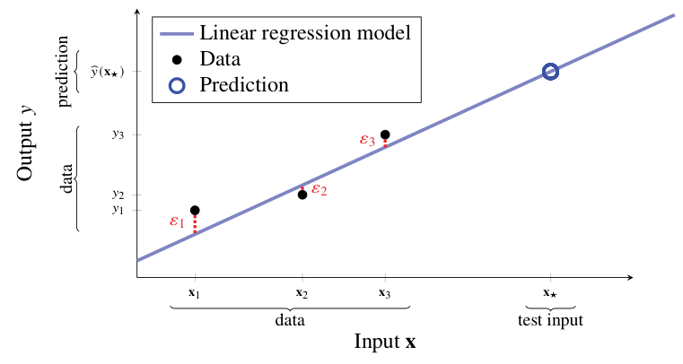

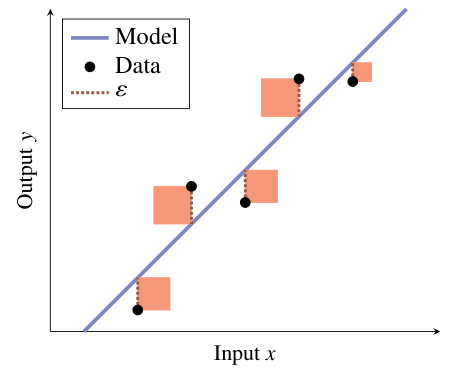
Step 2: one input, closed form第 2 步：一个输入，闭式解
In words: the best slope is how much x and y move together, divided by how much x moves on its own.用大白话说：最佳斜率 = x 和 y 一起变动的程度，除以 x 自身变动的程度。
How to do it by hand: 1. Make a table with \(x\), \(y\), \(xy\) and \(x^2\) and add each column. 2. Put the four sums into \(w_1\). 3. Put \(w_1\) into \(w_0\). 4. Check that the residuals sum to 0.手工做法：1. 列一张表，含 \(x\)、\(y\)、\(xy\) 和 \(x^2\)，并把每一列加起来。2. 把四个和代入 \(w_1\)。3. 把 \(w_1\) 代入 \(w_0\)。4. 检查残差之和是否为 0。
The loss surface over the weights is a bowl. It is convex（凸）: there is no local minimum, and any point with zero gradient is the global minimum.损失关于权重的曲面是一个碗状。它是凸的：没有局部极小值，任何梯度为零的点都是全局最小值。
Step 3: several inputs, the normal equation第 3 步：多个输入，正规方程
In words: the best weights are the point where the residual vector is perpendicular to every column of the data matrix. Setting the gradient of the loss to zero gives the normal equation（正规方程）.用大白话说：最佳权重处，残差向量与数据矩阵的每一列都垂直。令损失的梯度为零，就得到正规方程。
Numbers for the five points: \(X^\top X=\begin{pmatrix}5&15\\15&55\end{pmatrix}\) and \(X^\top\mathbf y=(20,66)^\top\). The first row says \(5w_0+15w_1=20\) and the second says \(15w_0+55w_1=66\). Solving gives \(w_0=2.2\) and \(w_1=0.6\), the same line as in Step 2.五个点的数值：\(X^\top X=\begin{pmatrix}5&15\\15&55\end{pmatrix}\) 和 \(X^\top\mathbf y=(20,66)^\top\)。第一行表示 \(5w_0+15w_1=20\)，第二行表示 \(15w_0+55w_1=66\)。求解得到 \(w_0=2.2\) 和 \(w_1=0.6\)，与第 2 步得到的是同一条直线。
When is \(X^\top X\) singular, that is, not invertible? 1. Two inputs are collinear (one is a multiple of another, such as a length in cm and in m). 2. There are fewer examples than weights, \(N<n+1\). Then infinitely many weight vectors are equally good. Remove redundant inputs, collect more data, or add a ridge penalty (Section 8.3).什么时候 \(X^\top X\) 是奇异的，也就是不可逆？1. 两个输入共线（一个是另一个的倍数，例如同一长度分别用厘米和米表示）。2. 样本数少于权重个数 \(N<n+1\)。这时有无穷多组同样好的权重向量。解决办法是去掉冗余输入、收集更多数据，或者加上岭惩罚（见第 8.3 节）。
A categorical input is encoded as numbers: two values become one 0/1 input, and \(K\) values become \(K\) inputs with exactly one equal to 1 (one-hot).类别型输入要编码成数字：两个取值变成一个 0/1 输入；\(K\) 个取值变成 \(K\) 个输入，其中恰好有一个为 1（即独热编码）。
Practice练习
Q1. (Calculation) Fit \(\hat y=w_0+w_1x\) by least squares to \((1,2),(2,3),(3,5),(4,6)\). Predict \(\hat y(5)\) and give the loss.Q1.（计算）用最小二乘法将 \(\hat y=w_0+w_1x\) 拟合到 \((1,2),(2,3),(3,5),(4,6)\)。预测 \(\hat y(5)\) 并给出损失。
Answer
\(N=4\), \(\sum x=10\), \(\sum y=16\), \(\sum xy=2+6+15+24=47\), \(\sum x^2=30\). Then \(w_1=(4\cdot47-10\cdot16)/(4\cdot30-10^2)=28/20=1.4\) and \(w_0=(16-1.4\cdot10)/4=0.5\). So \(\hat y(5)=0.5+1.4\cdot5=7.5\). The residuals are \(0.1,-0.3,0.3,-0.1\), and the loss is \(0.01+0.09+0.09+0.01=0.2\).\(N=4\)、\(\sum x=10\)、\(\sum y=16\)、\(\sum xy=2+6+15+24=47\)、\(\sum x^2=30\)。然后得到 \(w_1=(4\cdot47-10\cdot16)/(4\cdot30-10^2)=28/20=1.4\) 和 \(w_0=(16-1.4\cdot10)/4=0.5\)。因此 \(\hat y(5)=0.5+1.4\cdot5=7.5\)。残差为 \(0.1,-0.3,0.3,-0.1\)，损失为 \(0.01+0.09+0.09+0.01=0.2\)。
Q2. (Explain) Give two situations in which \(X^\top X\) is singular and say what to do. Why is a perfect fit not the goal?Q2.（解释）给出 \(X^\top X\) 为奇异矩阵的两种情形，并说明应如何处理。为什么完美拟合不是目标？
Answer
(i) Two inputs are linearly dependent, e.g. a length in cm and the same length in m. (ii) There are fewer examples than weights, \(N<n+1\). Then infinitely many \(\mathbf w\) give the same minimal loss. Remedies: remove redundant inputs, collect more data, or use ridge regularisation or a pseudoinverse. A perfect fit (e.g. \(n=N-1\) independent inputs) also reproduces the noise \(\varepsilon\), so predictions for new inputs are poor.(i) 两个输入线性相关，例如同一长度分别以厘米和米为单位。(ii) 样本数少于权重数，即 \(N<n+1\)。此时有无穷多个 \(\mathbf w\) 给出相同的最小损失。应对办法：去掉冗余输入、收集更多数据，或使用岭正则化或伪逆。完美拟合（例如 \(n=N-1\) 个独立输入的情形）也会复现噪声 \(\varepsilon\)，因此对新输入的预测效果很差。
Q3. (Beyond the text) Show that with an intercept the least-squares residuals sum to zero, and check it on the worked example.Q3.（教材之外）证明：含截距项时，最小二乘残差之和为零，并在例题中加以验证。
Answer
The normal equation says \(X^\top(\mathbf y-X\mathbf w^*)=\mathbf 0\). Its row for the intercept column (all ones) reads \(\sum_j(y_j-\hat y_j)=0\), i.e. \(\sum_jy_j=\sum_j\hat y_j\). Dividing by \(N\) gives \(\bar y=w_0+w_1\bar x\), so the line passes through \((\bar x,\bar y)\). In the example the residuals \(-0.8+0.6+1.0-0.6-0.2\) sum to 0, and the row for the input column gives \(\sum_jr_jx_j=-0.8+1.2+3.0-2.4-1.0=0\).正规方程表明 \(X^\top(\mathbf y-X\mathbf w^*)=\mathbf 0\)。其中截距列（全为 1）对应的那一行为 \(\sum_j(y_j-\hat y_j)=0\)，即 \(\sum_jy_j=\sum_j\hat y_j\)。除以 \(N\) 后得到 \(\bar y=w_0+w_1\bar x\)，因此该直线经过 \((\bar x,\bar y)\)。在例题中，残差 \(-0.8+0.6+1.0-0.6-0.2\) 之和为 0，而输入列对应的那一行给出 \(\sum_jr_jx_j=-0.8+1.2+3.0-2.4-1.0=0\)。
思路：残差向量与 \(X\) 的每一列都正交；截距那一列全是 1，所以残差之和为 0。
Gradient descent ★★★梯度下降 ★★★
Goal. Carry out one or two gradient-descent steps by hand, say what the learning rate does, and compare batch, stochastic and minibatch descent.目标。手工完成一两步梯度下降，说明学习率的作用，并比较批量、随机和小批量梯度下降。
Step 1: the rule第 1 步：更新规则
In words: gradient descent = from the current weights, take a small step downhill, and repeat until the loss stops falling.用大白话说：梯度下降 = 从当前权重出发，沿下坡方向走一小步，重复这一过程，直到损失不再下降。
It works for any differentiable loss and also trains neural networks (Chapter 9). The normal equation covers only squared loss on linear models.它适用于任何可微的损失，也可以训练神经网络（第 9 章）。正规方程只适用于线性模型上的平方损失。
For one example the chain rule gives the slope \(-2\,(y-h_{\mathbf w}(\mathbf x))\,x_i\). Folding the factor 2 into \(\alpha\) gives the update rule for linear regression.对于单个样本，链式法则给出斜率 \(-2\,(y-h_{\mathbf w}(\mathbf x))\,x_i\)。把因子 2 并入 \(\alpha\) 后，就得到线性回归的更新规则。
How to read it: if the prediction is too small, the residual is positive, and a weight whose input is positive goes up.怎么理解：如果预测值偏小，残差为正，那么输入为正的那个权重就会增大。
Single-example step. Take one example \(x=3\), \(y=5\), the weights \((w_0,w_1)=(0,0)\) and \(\alpha=0.05\). The prediction is 0, so the residual is 5. Then \(w_0=0+0.05\cdot5\cdot1=0.25\) and \(w_1=0+0.05\cdot5\cdot3=0.75\). The new prediction is \(0.25+0.75\cdot3=2.5\). The squared error fell from \(25\) to \(2.5^2=6.25\).单样本一步。取一个样本 \(x=3\)、\(y=5\)，权重为 \((w_0,w_1)=(0,0)\) 和 \(\alpha=0.05\)。预测值为 0，所以残差为 5。然后 \(w_0=0+0.05\cdot5\cdot1=0.25\) 和 \(w_1=0+0.05\cdot5\cdot3=0.75\)。新的预测值为 \(0.25+0.75\cdot3=2.5\)。平方误差从 \(25\) 降到了 \(2.5^2=6.25\)。
Because the loss is convex, batch descent reaches the global minimum if \(\alpha\) is small enough.因为损失是凸的，只要 \(\alpha\) 足够小，批量梯度下降就能到达全局最小值。
Step 2: how large may the learning rate be?第 2 步：学习率最大可以取多大？
Too small an \(\alpha\) is slow. Too large an \(\alpha\) jumps over the valley: the weights overshoot further each time, and the loss diverges. For squared loss the weight error \(\mathbf e\) (current weights minus \(\mathbf w^*\)) is multiplied by \((I-\alpha X^\top X)\) at every step. Descent therefore converges only if \(\alpha<2/\lambda_{\max}\).\(\alpha\) 太小，收敛就慢。\(\alpha\) 太大，会跳过谷底：权重每次都冲得更远，损失发散。对于平方损失，权重误差 \(\mathbf e\)（当前权重减去 \(\mathbf w^*\)）每一步都乘以 \((I-\alpha X^\top X)\)。因此只有 \(\alpha<2/\lambda_{\max}\) 时下降才会收敛。
Step 3: stochastic and minibatch descent第 3 步：随机梯度下降与小批量
In words: SGD = estimate the downhill direction from a few random examples instead of all of them, so each step is much cheaper but noisier.用大白话说：SGD = 不用全部样本，而是用几个随机样本来估计下坡方向，因此每一步便宜得多，但噪声更大。
A minibatch（小批量）is a random set of \(m\) examples. Stochastic gradient descent（随机梯度下降, SGD）applies the single-example rule to a minibatch (\(m=1\) in the original form). The batch size \(m\) is a hyperparameter（超参数）, a setting chosen by the user and not learned.小批量是一组随机抽取的 \(m\) 个样本。随机梯度下降（SGD）把单样本规则应用到一个小批量上（原始形式中为 \(m=1\)）。批大小 \(m\) 是一个超参数，即由用户设定、而不是学习得到的设置。
| Variant变体 | Examples per step每步样本数 | Behaviour表现 |
|---|---|---|
| Batch批量 | all \(N\)全部 \(N\) | exact gradient; converges on a convex loss; slow for large \(N\)梯度精确；在凸损失上收敛；\(N\) 大时速度慢 |
| SGD / minibatchSGD / 小批量 | \(m\ll N\) | noisy gradient, cheap steps; constant \(\alpha\) oscillates around the minimum, decaying \(\alpha\) converges梯度有噪声，但每步开销小；恒定的 \(\alpha\) 会在最小值附近振荡，递减的 \(\alpha\) 则会收敛 |
Example: \(N=10{,}000\) and \(m=100\). A step costs \(10{,}000/100=100\) times less. The standard error of the gradient grows only by \(\sqrt{100}=10\) times. Even with 10 times more steps, minibatch SGD is 10 times faster.例如 \(N=10{,}000\) 和 \(m=100\)。一步的代价少了 \(10{,}000/100=100\) 倍。梯度的标准误差只增大 \(\sqrt{100}=10\) 倍。即使步数多了 10 倍，小批量 SGD 仍然快 10 倍。
Practice练习
Q1. (Calculation) For the five points of the example \((1,2),(2,4),(3,5),(4,4),(5,5)\) do two batch steps from \(\mathbf w=(0,0)\) with \(\alpha=0.05\). What happens, and what is the largest stable \(\alpha\) if the eigenvalues of \(X^\top X\) are 59.15 and 0.845?Q1.（计算）对于例题 \((1,2),(2,4),(3,5),(4,4),(5,5)\) 中的五个点，从 \(\mathbf w=(0,0)\) 出发，取 \(\alpha=0.05\)，执行两步批量梯度下降。会发生什么？若 \(X^\top X\) 的特征值为 59.15 和 0.845，则最大的稳定 \(\alpha\) 为多少？
Answer
Step 1: \(\sum r=20\), \(\sum rx=66\), so \(\mathbf w=(1,3.3)\) and the loss rises from 86 to 313.4. Step 2: the residuals are \(-2.3,-3.6,-5.9,-10.2,-12.5\), so \(\sum r=-34.5\), \(\sum rx=-130.5\) and \(\mathbf w=(-0.725,-3.225)\) with loss 1185.5. The loss multiplies by about 3.6 and then 3.8 per step because each step overshoots the valley. The weight error obeys \(\mathbf e\leftarrow(I-\alpha X^\top X)\mathbf e\), so convergence needs \(\lvert1-\alpha\lambda\rvert<1\) for both eigenvalues, i.e. \(\alpha<2/59.15=0.034\). Here \(1-0.05\cdot59.15=-1.96\) has modulus above 1, and its square 3.84 is the asymptotic growth factor of the loss.第一步：\(\sum r=20\)、\(\sum rx=66\)，因此 \(\mathbf w=(1,3.3)\)，损失从 86 上升到 313.4。第二步：残差为 \(-2.3,-3.6,-5.9,-10.2,-12.5\)，因此 \(\sum r=-34.5\)、\(\sum rx=-130.5\) 和 \(\mathbf w=(-0.725,-3.225)\)，损失为 1185.5。由于每一步都越过了谷底，损失依次大约乘以 3.6 和 3.8。权重误差满足 \(\mathbf e\leftarrow(I-\alpha X^\top X)\mathbf e\)，因此两个特征值都需要满足 \(\lvert1-\alpha\lambda\rvert<1\)，即 \(\alpha<2/59.15=0.034\)。此处 \(1-0.05\cdot59.15=-1.96\) 的模大于 1，其平方 3.84 即为损失的渐近增长因子。
思路：学习率必须小于 \(2/\lambda_{\max}\)，否则沿最陡方向每步都会冲过头。
Q2. (Calculation) A data set has \(N=10{,}000\) examples and the minibatch size is \(m=25\). By what factor is each step cheaper, how much larger is the gradient's standard error, and what is the net speed-up if the noise forces 20 times more steps?Q2.（计算）某数据集有 \(N=10{,}000\) 个样本，小批量大小为 \(m=25\)。每一步的开销低了多少倍？梯度的标准误差大了多少倍？若噪声迫使步数增加为 20 倍，净加速比是多少？
Answer
Each step is \(N/m=400\) times cheaper. The standard error scales as \(1/\sqrt m\), so it grows by \(\sqrt{400}=20\). With 20 times more steps the net speed-up over batch descent is \(400/20=20\).每一步的开销低 \(N/m=400\) 倍。标准误差按 \(1/\sqrt m\) 缩放，因此增大了 \(\sqrt{400}=20\)。若步数增加为 20 倍，相对于批量梯度下降的净加速比为 \(400/20=20\)。
Q3. (True or false) "Stochastic gradient descent with a constant learning rate converges exactly to the minimum of the squared-error loss." Justify.Q3.（判断）“采用恒定学习率的随机梯度下降会精确收敛到平方误差损失的最小值。”判断此说法是否正确，并说明理由。
Answer
False in general. Every step uses a noisy gradient estimate from a few examples, so the weights keep fluctuating around the minimum. Convergence is guaranteed with a decaying rate such as \(\alpha(t)\propto1/t\), which satisfies \(\sum\alpha(t)=\infty\) and \(\sum\alpha(t)^2<\infty\).一般而言为错误。每一步都使用由少量样本得到的带噪梯度估计，因此权重会在最小值附近持续波动。若采用递减的学习率，例如 \(\alpha(t)\propto1/t\)，则可保证收敛，它满足 \(\sum\alpha(t)=\infty\) 和 \(\sum\alpha(t)^2<\infty\)。
Polynomial regression, overfitting and regularisation ★★★多项式回归、过拟合与正则化 ★★★
Goal. Fit curved data with a polynomial, recognise under- and overfitting from numbers, and explain how ridge and lasso regularisation control the weights.目标。用多项式拟合弯曲的数据，从数字中识别欠拟合和过拟合，并解释岭回归和 Lasso 正则化如何控制权重。
Underfitting and overfitting are defined in Section 6.4. This section shows them for polynomials.欠拟合和过拟合的定义见第 6.4 节。本节用多项式来展示它们。
Step 1: polynomial regression第 1 步：多项式回归
In words: polynomial regression = use the powers of x as extra inputs, and fit them with the same linear machinery.用大白话说：多项式回归 = 把 x 的各次幂当作额外的输入，然后用同样的线性方法去拟合。
Polynomial regression（多项式回归）uses the model below. Setting \(x_k=x^k\) turns it into an ordinary linear model, so the normal equation and gradient descent apply unchanged. "Linear" means linear in the weights, not in \(x\).多项式回归使用下面的模型。令 \(x_k=x^k\) 时它就变成了普通的线性模型，因此正规方程和梯度下降都可以原样使用。这里的“线性”指关于权重是线性的，而不是关于 \(x\) 是线性的。
The degree sets the flexibility. A degree that is too low underfits: the training error and the error on new data are both high. A degree that is too high overfits: the training error is tiny and the error on new data is large. The extreme \(d=N-1\) is a curve through every training point. Training loss always falls as \(d\) grows, so choose \(d\) on validation data or by cross-validation (Chapter 6).次数决定灵活性。次数太低会欠拟合：训练误差和新数据上的误差都很高。次数太高会过拟合：训练误差很小，新数据上的误差却很大。极端情形 \(d=N-1\) 是一条穿过每个训练点的曲线。训练损失随 \(d\) 增大总是下降，所以 \(d\) 要在验证数据上或用交叉验证（第 6 章）来选择。
| Degree次数 | Training loss训练损失 | Error at unseen points未见数据点上的误差 | Prediction at \(x=5\) (true 11)在 \(x=5\) 处的预测（真实值为 11） |
|---|---|---|---|
| 0 | 39.07 | 8.96 | 5.02 |
| 1 | 0.26 | 0.002 | 10.93 |
| 2 | 0.24 | 0.004 | 11.18 |
| 4 | 0.00 | 1.29 | 18.70 |
Degree 0 underfits; degrees 1 and 2 fit well; degree 4 interpolates the noise. It has zero training loss, large alternating weights \((1.20,-0.54,3.33,-1.36,0.17)\) and a wild prediction outside the data.次数 0 欠拟合；次数 1 和 2 拟合良好；次数 4 则插值了噪声。它的训练损失为零，权重 \((1.20,-0.54,3.33,-1.36,0.17)\) 很大且正负交替，并且在数据范围之外的预测极不合理。
Step 2: regularisation第 2 步：正则化
In words: regularisation = pay a price for large weights, so the model keeps them small unless the data insist.用大白话说：正则化 = 对大的权重付出代价，除非数据坚持要它大，否则模型就让它保持较小。
Regularisation（正则化）counts both the loss and the complexity of the hypothesis.正则化同时考虑损失和假设的复杂度。
For squared loss, the \(L_2\) penalty gives ridge regression（岭回归）.对于平方损失，\(L_2\) 惩罚给出的是岭回归。
Numbers for a model without intercept, \(h(x)=wx\), with \(x=(1,2,3)\) and \(y=(2,4,6)\). Here \(\sum xy=28\) and \(\sum x^2=14\), and the penalised fit is \(w=\sum xy/(\sum x^2+\lambda)\). For \(\lambda=0\) it is \(w=28/14=2\). For \(\lambda=1\) it is \(28/15=1.87\). For \(\lambda=14\) it is \(28/28=1\). A larger \(\lambda\) shrinks the weight towards 0.对于没有截距的模型 \(h(x)=wx\)，取 \(x=(1,2,3)\) 和 \(y=(2,4,6)\) 的数值。这里有 \(\sum xy=28\) 和 \(\sum x^2=14\)，加惩罚后的拟合为 \(w=\sum xy/(\sum x^2+\lambda)\)。当 \(\lambda=0\) 时为 \(w=28/14=2\)。当 \(\lambda=1\) 时为 \(28/15=1.87\)。当 \(\lambda=14\) 时为 \(28/28=1\)。\(\lambda\) 越大，权重就越向 0 收缩。
Why does \(L_1\) give zeros? Minimising loss \(+\lambda\cdot\)penalty equals minimising the loss inside a region. The \(L_1\) region is a diamond with corners on the axes, so the loss contours usually touch it at a corner, where a weight is exactly 0. The \(L_2\) region is a circle, so the touching point is generic: weights shrink but rarely vanish.为什么 \(L_1\) 会得到零？最小化“损失 \(+\lambda\cdot\) 惩罚”，等价于在一个区域内最小化损失。\(L_1\) 的区域是顶点在坐标轴上的菱形，所以损失的等高线通常在某个顶点处与它相切，而那里恰好有一个权重为 0。\(L_2\) 的区域是圆，因此相切点一般不在坐标轴上：权重会缩小，但很少恰好变为零。

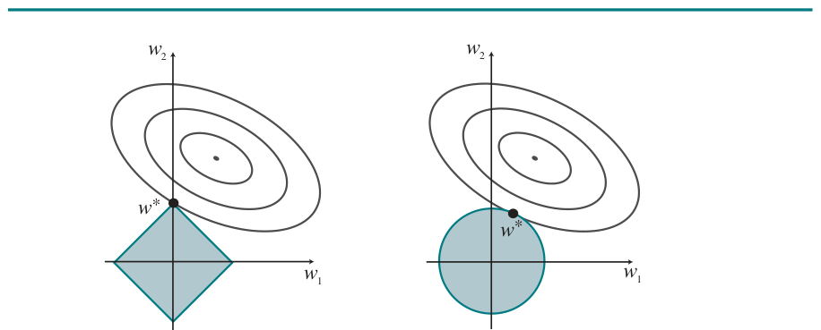
| \(L_1\) (lasso)\(L_1\)（lasso） | \(L_2\) (ridge)\(L_2\)（ridge） | |
|---|---|---|
| Effect效果 | sparse model: many weights exactly 0, irrelevant inputs dropped稀疏模型：许多权重恰好为 0，无关输入被剔除 | all weights shrunk, rarely 0所有权重都收缩，很少为 0 |
| Constraint region约束区域 | diamond菱形 | circle圆 |
| Rotating the axes旋转坐标轴 | changes the answer: axes matter会改变结果：坐标轴很重要 | no change (rotation invariant)结果不变（具有旋转不变性） |
| Examples needed as irrelevant features grow无关特征增多时所需的样本数 | logarithmic对数级 | linear线性 |
| Closed form闭式解 | no否 | yes是 |
Practice练习
Q1. (Calculation) A model without intercept, \(h(x)=wx\), is fitted to \(x=(1,2,3)\), \(y=(1.1,1.9,3.2)\) by minimising \(\sum_j(y_j-wx_j)^2+\lambda w^2\), which gives \(w=\sum x_jy_j/(\sum x_j^2+\lambda)\). Compute \(w\) for \(\lambda=0,1,14\) and interpret.Q1.（计算）不含截距的模型 \(h(x)=wx\) 通过最小化 \(\sum_j(y_j-wx_j)^2+\lambda w^2\) 拟合到数据 \(x=(1,2,3)\)、\(y=(1.1,1.9,3.2)\) 上，得到 \(w=\sum x_jy_j/(\sum x_j^2+\lambda)\)。对 \(\lambda=0,1,14\) 计算 \(w\)，并加以解释。
Answer
\(\sum xy=1.1+3.8+9.6=14.5\) and \(\sum x^2=14\). So \(w=14.5/14=1.036\) for \(\lambda=0\) (plain least squares), \(14.5/15=0.967\) for \(\lambda=1\) and \(14.5/28=0.518\) for \(\lambda=14\). A larger \(\lambda\) shrinks the weight towards 0; for \(\lambda\to\infty\) it reaches 0 and the model underfits.\(\sum xy=1.1+3.8+9.6=14.5\) 和 \(\sum x^2=14\)。因此，对于 \(\lambda=0\)（普通最小二乘），结果为 \(w=14.5/14=1.036\)；对于 \(\lambda=1\)，为 \(14.5/15=0.967\)；对于 \(\lambda=14\)，为 \(14.5/28=0.518\)。\(\lambda\) 越大，权重越趋于 0；当 \(\lambda\to\infty\) 时，权重达到 0，模型欠拟合。
Q2. (Explain) (a) Write the design matrix of a quadratic model for the inputs \(x=1,2,3\). (b) A degree-4 polynomial fitted to five noisy points has zero training loss. Why is that a warning sign, and what can be done?Q2.（解释）(a) 写出输入 \(x=1,2,3\) 的二次模型的设计矩阵。(b) 用四次多项式拟合五个带噪声的点，训练损失为零。为什么这是一个警示信号？可以采取什么措施？
Answer
(a) \(\begin{pmatrix}1&1&1\\1&2&4\\1&3&9\end{pmatrix}\), one row \((1,x,x^2)\) per example. (b) Five weights for five points: the curve interpolates every point, noise included, and oscillates between and beyond them (in the example the prediction at \(x=5\) is 18.7 instead of about 11). Remedies: choose a lower degree by validation or cross-validation, collect more data, or add a ridge penalty that keeps the weights small.(a) \(\begin{pmatrix}1&1&1\\1&2&4\\1&3&9\end{pmatrix}\)，每个样本对应一行 \((1,x,x^2)\)。(b) 五个点对应五个权重：曲线插值了每一个点（包括噪声），并在这些点之间以及点之外振荡（在例题中，\(x=5\) 处的预测为 18.7，而真实值约为 11）。应对办法：通过验证或交叉验证选择较低的次数，收集更多数据，或加入使权重保持较小的岭惩罚项。
Q3. (Beyond the text) Prove that \(X^\top X+\lambda I\) is invertible for \(\lambda>0\) even if \(X\) has dependent columns.Q3.（教材之外）证明：即使 \(X\) 的列线性相关，\(X^\top X+\lambda I\) 对于 \(\lambda>0\) 仍然可逆。
Answer
For any \(\mathbf v\ne\mathbf 0\): \(\mathbf v^\top(X^\top X+\lambda I)\mathbf v=\lVert X\mathbf v\rVert^2+\lambda\lVert\mathbf v\rVert^2\ge\lambda\lVert\mathbf v\rVert^2>0\). So the matrix maps no nonzero vector to zero; it is positive definite and therefore invertible. Hence ridge regression has a unique solution also when inputs are collinear or \(N<n+1\).对于任意 \(\mathbf v\ne\mathbf 0\)：\(\mathbf v^\top(X^\top X+\lambda I)\mathbf v=\lVert X\mathbf v\rVert^2+\lambda\lVert\mathbf v\rVert^2\ge\lambda\lVert\mathbf v\rVert^2>0\)。因此该矩阵不会将任何非零向量映为零；它是正定的，从而是可逆的。由此可知，当输入共线或 \(N<n+1\) 时，岭回归同样有唯一解。
思路：\(X^\top X\) 只是半正定，加上 \(\lambda I\) 后变成正定，所以一定可逆。
Linear classifiers: perceptron and logistic regression ★★★线性分类器：感知机与逻辑回归 ★★★
Goal. Run the perceptron rule and one logistic-regression step by hand, explain why XOR and non-separable data are a problem, and compare the two classifiers.目标。手工运行感知机规则和一步逻辑回归，解释为什么 XOR 和线性不可分的数据是个问题，并比较这两种分类器。
Step 1: the hard threshold and the perceptron第 1 步：硬阈值与感知机
In words: a linear classifier computes a weighted sum of the inputs and answers 1 if it is at least 0, otherwise 0.用大白话说：线性分类器先算输入的加权和，若结果至少为 0 就输出 1，否则输出 0。

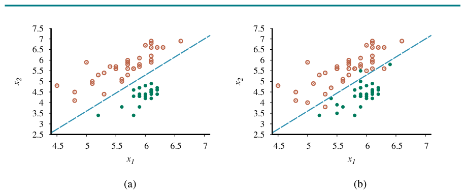
The threshold is flat almost everywhere, so there is no gradient. A simple error-driven rule is used instead.阈值函数几乎处处是平的，因此没有梯度。于是改用一个简单的、由错误驱动的规则。
How to do it by hand: 1. Start with all weights 0. 2. Take the examples in a fixed order. 3. Compute \(z\) and \(h\) (remember \(\mathrm{Threshold}(0)=1\)). 4. If \(h\ne y\), update all weights. 5. Repeat passes until a whole pass has no mistake.手工做法：1. 所有权重从 0 开始。2. 按固定顺序取样本。3. 计算 \(z\) 和 \(h\)（记住 \(\mathrm{Threshold}(0)=1\)）。4. 若 \(h\ne y\)，则更新所有权重。5. 重复遍历，直到整轮都没有错误为止。
Convergence: on linearly separable data the rule finds a perfect separator. On non-separable data a fixed \(\alpha\) never settles. XOR is not separable, so no perceptron computes it (Practice Q1).收敛性：对于线性可分的数据，这一规则能找到完美的分隔超平面。对于不可分的数据，固定的 \(\alpha\) 永远不会稳定下来。XOR 不是线性可分的，所以没有任何感知机能计算它（见练习 Q1）。
Step 2: logistic regression第 2 步：逻辑回归
In words: logistic regression = a weighted sum squeezed into a probability between 0 and 1, trained to make the observed labels as likely as possible.用大白话说：逻辑回归 = 把加权和压缩成 0 到 1 之间的概率，训练时使观测到的标签出现的可能性尽可能大。
The hard threshold always announces a fully confident 0 or 1. Logistic regression（逻辑回归）replaces it with the smooth logistic (sigmoid) function.硬阈值总是断言一个完全确定的 0 或 1。逻辑回归用光滑的 Sigmoid 逻辑函数来代替它。
Despite its name, logistic regression is a classifier. It has no closed form, so the weights are found by gradient descent on the cross-entropy（交叉熵）loss, the negative log-likelihood of the labels.尽管名字里有“回归”，逻辑回归其实是一个分类器。它没有闭式解，所以权重要通过对交叉熵损失做梯度下降来求得，交叉熵就是标签的负对数似然。
Decision threshold: predict class 1 when \(h>0.5\) by default. For asymmetric costs (a missed diagnosis is worse than a false alarm) the user may move this threshold.决策阈值：默认情况下，当 \(h>0.5\) 时预测为类别 1。若两类错误的代价不对称（漏诊比误报更严重），使用者可以移动这个阈值。
More than two classes. Use one weight vector per class and the softmax function.多于两个类别。每个类别用一个权重向量，并使用 Softmax 函数。
Why separable data are a problem. If a hyperplane separates the classes, scaling \(\mathbf w\) up keeps every prediction correct but pushes every probability towards 0 or 1. The cross-entropy then keeps falling towards 0 and no finite best weight exists. A penalty \(\lambda\lVert\mathbf w\rVert^2\) with \(\lambda>0\) gives a finite, unique solution.为什么线性可分的数据会有问题。如果一个超平面把两类分开，那么把 \(\mathbf w\) 放大，所有预测仍然正确，但每个概率都会被推向 0 或 1。这时交叉熵会一直趋向 0，不存在有限的最佳权重。加上惩罚 \(\lambda\lVert\mathbf w\rVert^2\) 且 \(\lambda>0\) 时，就得到有限且唯一的解。
| Linear regression线性回归 | Perceptron感知机 | Logistic regression逻辑回归 | |
|---|---|---|---|
| Output输出 | real number实数 | class 0 or 1类别 0 或 1 | probability \(P(y=1\mid\mathbf x)\)概率 \(P(y=1\mid\mathbf x)\) |
| Loss损失 | squared error平方误差 | none (error-driven rule)无（误差驱动规则） | cross-entropy交叉熵 |
| Solution求解 | closed form or gradient descent闭式解或梯度下降 | update rule, one example at a time逐个样本更新的规则 | gradient descent梯度下降 |
| Separable data可分数据 | not applicable不适用 | converges to a perfect separator收敛到完美分隔超平面 | weights diverge without a penalty若无惩罚项，权重发散 |
| Non-separable data不可分数据 | not applicable不适用 | fixed \(\alpha\) never converges固定的 \(\alpha\) 永不收敛 | converges quickly and reliably收敛快且可靠 |
Practice练习
Q1. (Proof) Show that no perceptron computes XOR: \((0,0)\mapsto0\), \((0,1)\mapsto1\), \((1,0)\mapsto1\), \((1,1)\mapsto0\).Q1.（证明）证明没有感知机能够计算异或：\((0,0)\mapsto0\)、\((0,1)\mapsto1\)、\((1,0)\mapsto1\)、\((1,1)\mapsto0\)。
Answer
A solution needs \(w_0<0\), \(w_0+w_2\ge0\), \(w_0+w_1\ge0\) and \(w_0+w_1+w_2<0\). Adding the middle two gives \(2w_0+w_1+w_2\ge0\). The last inequality gives \(w_1+w_2<-w_0\), hence \(2w_0+w_1+w_2<w_0<0\), a contradiction. Geometrically no line separates \(\{(0,1),(1,0)\}\) from \(\{(0,0),(1,1)\}\), so the rule never converges. Adding the input \(x_1x_2\) makes XOR separable, e.g. \(-0.5+x_1+x_2-2x_1x_2\ge0\).一个解需要满足 \(w_0<0\)、\(w_0+w_2\ge0\)、\(w_0+w_1\ge0\) 和 \(w_0+w_1+w_2<0\)。将中间两式相加得到 \(2w_0+w_1+w_2\ge0\)。最后一个不等式给出 \(w_1+w_2<-w_0\)，从而得到 \(2w_0+w_1+w_2<w_0<0\)，矛盾。几何上，不存在一条直线能将 \(\{(0,1),(1,0)\}\) 与 \(\{(0,0),(1,1)\}\) 分开，因此该规则永不收敛。加入输入 \(x_1x_2\) 后，异或即变为可分，例如 \(-0.5+x_1+x_2-2x_1x_2\ge0\)。
Q2. (Calculation) (a) A logistic regression with \(z=-1+2x\) has one input. Find \(P(y=1\mid x)\) at \(x=0,\,0.5,\,1.5\) and the decision boundary. (b) The cross-entropy loss if the example \(x=1.5\) has \(y=0\). (c) Softmax probabilities for the logits \(\mathbf z=(2,1,0)\) and the loss if the true class is the second.Q2.（计算）(a) 具有 \(z=-1+2x\) 的逻辑回归只有一个输入。求在 \(x=0,\,0.5,\,1.5\) 处的 \(P(y=1\mid x)\)，以及决策边界。(b) 若样本 \(x=1.5\) 的标签为 \(y=0\)，求交叉熵损失。(c) 对于 logits \(\mathbf z=(2,1,0)\) 求 Softmax 概率，并在真实类别为第二类时求损失。
Answer
(a) \(z=-1,0,2\) give \(0.269\), \(0.5\), \(0.881\); the boundary is \(x=0.5\). (b) \(-\ln(1-0.881)=2.13\), a large loss because the model is confidently wrong. (c) \(e^2=7.389\), \(e^1=2.718\), \(e^0=1\), sum \(11.107\), so the probabilities are \((0.665,0.245,0.090)\). The loss is \(-\ln0.245=1.41\).(a) \(z=-1,0,2\) 给出 \(0.269\)、\(0.5\)、\(0.881\)；边界为 \(x=0.5\)。(b) \(-\ln(1-0.881)=2.13\)，由于模型对错误结果高度自信，损失很大。(c) \(e^2=7.389\)、\(e^1=2.718\)、\(e^0=1\)，其和为 \(11.107\)，因此概率为 \((0.665,0.245,0.090)\)。损失为 \(-\ln0.245=1.41\)。
Q3. (Beyond the text) Two examples, \(x=-1\) with \(y=0\) and \(x=+1\) with \(y=1\), are fitted by \(h=\mathrm{Logistic}(wx)\). Evaluate the total cross-entropy \(2\ln(1+e^{-w})\) for \(w=1,2,5,10\). What does this show, and what does a penalty \(0.1w^2\) change?Q3.（超出课文内容）两个样本 \(x=-1\)（标签为 \(y=0\)）和 \(x=+1\)（标签为 \(y=1\)）由 \(h=\mathrm{Logistic}(wx)\) 拟合。对 \(w=1,2,5,10\) 计算总交叉熵 \(2\ln(1+e^{-w})\)。这说明了什么？加入惩罚项 \(0.1w^2\) 会带来什么变化？
Answer
The losses are \(0.627\), \(0.254\), \(0.0134\) and \(0.0001\): they keep decreasing as \(w\) grows, so the infimum 0 is never reached and no finite maximum-likelihood weight exists. With the penalty, \(J(w)=2\ln(1+e^{-w})+0.1w^2\) has its minimum where \(J'(w)=-2/(1+e^{w})+0.2w=0\), at \(w\approx1.63\) with \(J=0.62\): a finite, unique solution.损失依次为 \(0.627\)、\(0.254\)、\(0.0134\) 和 \(0.0001\)：它们随 \(w\) 增大而持续下降，因此永远无法达到下确界 0，也不存在有限的最大似然权重。加入惩罚项后，\(J(w)=2\ln(1+e^{-w})+0.1w^2\) 在 \(J'(w)=-2/(1+e^{w})+0.2w=0\) 处取得最小值，即 \(w\approx1.63\)，其中 \(J=0.62\)：得到一个有限且唯一的解。
易错：线性可分时无正则的逻辑回归权重趋于无穷，不是训练出错，而是最优解不存在。
Bayesian learning, MAP and maximum likelihood ★★贝叶斯学习、MAP 与最大似然 ★★
Goal. Compute a posterior and a prediction on a small example, and tell Bayesian, MAP and maximum-likelihood prediction apart.目标。在一个小例子上计算后验和预测，并区分贝叶斯预测、MAP 预测和最大似然预测。
Bayesian learning（贝叶斯学习）predicts with all hypotheses, each weighted by its posterior. Running example: candy bags of five kinds. \(h_1\) is 100% cherry, \(h_2\) 75%, \(h_3\) 50%, \(h_4\) 25% cherry and \(h_5\) 100% lime. The prior is \((0.1,0.2,0.4,0.2,0.1)\). Candies are unwrapped one at a time.贝叶斯学习用所有假设做预测，每个假设按其后验加权。贯穿始终的例子：五种糖果袋。\(h_1\) 是 100% 樱桃味，\(h_2\) 是 75% 樱桃味，\(h_3\) 是 50%，\(h_4\) 是 25% 樱桃味，\(h_5\) 是 100% 青柠味。先验为 \((0.1,0.2,0.4,0.2,0.1)\)。糖果一次拆开一颗。
Summing over all hypotheses is often too expensive, so one hypothesis is used instead.对所有假设求和往往代价太大，因此改用一个假设。
After three limes \(h_{\text{MAP}}=h_5\) predicts lime with probability 1.0, a bolder claim than the Bayesian 0.80.拿到三颗青柠味糖之后，\(h_{\text{MAP}}=h_5\) 预测下一颗是青柠味的概率为 1.0，这比贝叶斯预测的 0.80 更为大胆。
For a discrete parameter, maximum likelihood is counting. Let \(\theta\) be the probability of cherry, and let \(c\) of \(N\) candies be cherry. The likelihood is \(\theta^c(1-\theta)^{N-c}\), and setting the derivative of its logarithm to zero gives \(\hat\theta=c/N\). Example: 12 cherries among 20 candies give \(\hat\theta=12/20=0.6\). The weakness shows with little data: one cherry gives \(\hat\theta=1\), so lime gets probability 0.对于离散参数，最大似然就是计数。设 \(\theta\) 为樱桃味的概率，设 \(N\) 颗糖果中有 \(c\) 颗是樱桃味。似然为 \(\theta^c(1-\theta)^{N-c}\)，令其对数的导数为零，得到 \(\hat\theta=c/N\)。例如，20 颗糖中有 12 颗樱桃味，得到 \(\hat\theta=12/20=0.6\)。数据少时它的弱点就暴露了：只见过一颗樱桃味时得到 \(\hat\theta=1\)，于是青柠味的概率为 0。
Practice练习
Q1. (Calculation) With the same prior, the first two candies are cherry. Find the posterior of \(h_1,\dots,h_5\) and the predicted probability that the next candy is cherry under (a) Bayesian learning, (b) MAP, (c) maximum likelihood.Q1.（计算）先验相同，前两颗糖果均为樱桃味。求 \(h_1,\dots,h_5\) 的后验，以及在以下情形下下一颗为樱桃味的预测概率：(a) 贝叶斯学习，(b) MAP，(c) 最大似然。
Answer
The cherry fractions are \((1,0.75,0.5,0.25,0)\); squared they are \((1,0.5625,0.25,0.0625,0)\). Prior times likelihood is \((0.1,0.1125,0.1,0.0125,0)\), sum \(0.325\), so the posterior is \((0.308,0.346,0.308,0.038,0)\). (a) \(1\cdot0.308+0.75\cdot0.346+0.5\cdot0.308+0.25\cdot0.038=0.731\). (b) \(h_{\text{MAP}}=h_2\), so 0.75. (c) \(h_{\text{ML}}=h_1\) (likelihood 1), so 1.0. ML is the most extreme; MAP is close to the Bayesian value.樱桃比例为 \((1,0.75,0.5,0.25,0)\)；平方后为 \((1,0.5625,0.25,0.0625,0)\)。先验乘以似然为 \((0.1,0.1125,0.1,0.0125,0)\)，其和为 \(0.325\)，因此后验为 \((0.308,0.346,0.308,0.038,0)\)。(a) \(1\cdot0.308+0.75\cdot0.346+0.5\cdot0.308+0.25\cdot0.038=0.731\)。(b) \(h_{\text{MAP}}=h_2\)，故为 0.75。(c) \(h_{\text{ML}}=h_1\)（似然为 1），故为 1.0。最大似然是最极端的情形；MAP 则接近贝叶斯的取值。
Q2. (Calculation) Of 20 candies, 12 are cherry (9 red, 3 green wrappers) and 8 are lime (2 red, 6 green). Give the maximum-likelihood estimates of \(\theta,\theta_1,\theta_2\) and the probability of a cherry candy in a green wrapper.Q2.（计算）在 20 颗糖果中，12 颗为樱桃味（红色包装纸 9 颗，绿色 3 颗），8 颗为青柠味（红色 2 颗，绿色 6 颗）。求 \(\theta,\theta_1,\theta_2\) 的最大似然估计，以及绿色包装纸糖果为樱桃味的概率。
Answer
\(\hat\theta=12/20=0.6\), \(\hat\theta_1=9/12=0.75\), \(\hat\theta_2=2/8=0.25\). \(P(\text{cherry},\text{green})=\hat\theta(1-\hat\theta_1)=0.6\cdot0.25=0.15\), which matches the observed 3 of 20.\(\hat\theta=12/20=0.6\)、\(\hat\theta_1=9/12=0.75\)、\(\hat\theta_2=2/8=0.25\)。\(P(\text{cherry},\text{green})=\hat\theta(1-\hat\theta_1)=0.6\cdot0.25=0.15\)，与观测到的 20 颗中 3 颗相符。
Naive Bayes and Laplace smoothing ★★★朴素贝叶斯与拉普拉斯平滑 ★★★
Goal. Train a naive Bayes classifier by counting, compute a posterior with and without Laplace smoothing, and compare it with logistic regression.目标。用计数的方法训练朴素贝叶斯分类器，分别在用和不用拉普拉斯平滑时计算后验，并将其与逻辑回归比较。
Step 1: the model第 1 步：模型
In words: naive Bayes = score each class by its prior times the probability of each observed attribute value in that class, then pick the class with the largest score.用大白话说：朴素贝叶斯 = 用每个类别的先验，乘以各个观测属性取值在该类别中的概率，给每个类别打分，然后选出得分最大的类别。
The naive Bayes（朴素贝叶斯）model has the class \(C\) as root and the attributes \(X_1,\dots,X_n\) as leaves. It is naive because it assumes conditional independence of the attributes given the class.朴素贝叶斯模型以类别 \(C\) 为根结点，以属性 \(X_1,\dots,X_n\) 为叶结点。之所以叫“朴素”，是因为它假设给定类别后各属性条件独立。
With many attributes, add logarithms instead of multiplying, to avoid underflow. For \(n\) Boolean attributes naive Bayes needs \(2n+1\) parameters, against \(2^{n+1}-1\) for the full joint distribution.属性很多时，改用对数相加代替相乘，以避免下溢。对于 \(n\) 个布尔属性，朴素贝叶斯需要 \(2n+1\) 个参数，而完整的联合分布需要 \(2^{n+1}-1\) 个。
Step 2: training by counting, and zero counts第 2 步：通过计数训练，以及零计数问题
Training is counting: \(\hat P(c)=N_c/N\) and \(\hat P(X_i=v\mid c)=N_{c,v}/N_c\). If a value never occurs with a class, its estimate is 0 and the whole product for that class is 0. Laplace smoothing（拉普拉斯平滑）starts every count at 1 instead of 0.训练就是计数：\(\hat P(c)=N_c/N\) 和 \(\hat P(X_i=v\mid c)=N_{c,v}/N_c\)。如果某个取值从未与某类别一起出现，它的估计概率就是 0，那么该类别的整个乘积也就是 0。拉普拉斯平滑把每个计数的起点从 0 改为 1。
| Count计数 | Spam (\(N_c=4\))垃圾邮件（\(N_c=4\)） | Ham (\(N_c=6\))正常邮件（\(N_c=6\)） |
|---|---|---|
| sender = colleague发件人 = 同事 | 0 | 3 |
| sender = customer发件人 = 客户 | 1 | 2 |
| sender = stranger发件人 = 陌生人 | 3 | 1 |
| contains "free" = yes包含“free” = 是 | 3 | 1 |
| contains "free" = no包含“free” = 否 | 1 | 5 |
Step 3: naive Bayes versus logistic regression第 3 步：朴素贝叶斯与逻辑回归的比较
A generative model（生成式模型）models \(P(C)\) and \(P(\mathbf x\mid C)\) and can generate typical inputs. A discriminative model（判别式模型）learns \(P(C\mid\mathbf x)\) directly.生成式模型对 \(P(C)\) 和 \(P(\mathbf x\mid C)\) 建模，并且能生成典型的输入。判别式模型直接学习 \(P(C\mid\mathbf x)\)。
| Naive Bayes朴素贝叶斯 | Logistic regression逻辑回归 | |
|---|---|---|
| Models模型 | \(P(C)\) and \(P(\mathbf x\mid C)\)\(P(C)\) 与 \(P(\mathbf x\mid C)\) | \(P(C\mid\mathbf x)\) directly直接对 \(P(C\mid\mathbf x)\) |
| Assumption假设 | attributes independent given the class给定类别时属性独立 | log-odds linear in \(\mathbf x\)对数几率关于 \(\mathbf x\) 线性 |
| Training训练集 | counting, closed form计数，闭式解 | gradient descent梯度下降 |
| Small data小数据 | usually better通常更好 | needs more data需要更多数据 |
| Large data大数据 | limited by the independence assumption受限于独立性假设 | usually better通常更好 |
| Probabilities概率 | often overconfident通常过于自信 | usually better calibrated通常校准得更好 |
The independence assumption is seldom true. Correlated attributes count the same evidence repeatedly, so the probabilities are overconfident, often close to 0 or 1.独立性假设很少严格成立。相关的属性会把同一证据重复计算，因此概率过于自信，常常接近 0 或 1。
Practice练习
Q1. (Calculation) Training examples \((A,B,C;\text{class})\): \((1,1,0;+)\), \((1,0,0;+)\), \((1,1,1;+)\), \((0,0,1;-)\), \((0,1,1;-)\), \((0,0,0;-)\). Classify \((A,B,C)=(1,0,1)\) with naive Bayes, (a) without smoothing and (b) with Laplace smoothing on the conditional probabilities (priors unsmoothed).Q1.（计算）训练样本 \((A,B,C;\text{class})\)：\((1,1,0;+)\)、\((1,0,0;+)\)、\((1,1,1;+)\)、\((0,0,1;-)\)、\((0,1,1;-)\)、\((0,0,0;-)\)。用朴素贝叶斯对 \((A,B,C)=(1,0,1)\) 分类，(a) 不作平滑，(b) 对条件概率采用拉普拉斯平滑（先验不作平滑）。
Answer
(a) Class \(+\): \(\tfrac12\cdot P(A{=}1\mid+)\,P(B{=}0\mid+)\,P(C{=}1\mid+)=\tfrac12\cdot1\cdot\tfrac13\cdot\tfrac13=0.0556\). Class \(-\): \(P(A{=}1\mid-)=0\), so the score is 0. The posterior of \(+\) is 1. (b) Class \(+\): \(\tfrac12\cdot\tfrac45\cdot\tfrac25\cdot\tfrac25=0.064\). Class \(-\): \(\tfrac12\cdot\tfrac15\cdot\tfrac35\cdot\tfrac35=0.036\). Normalising, \(P(+\mid\mathbf x)=0.64\) and \(P(-\mid\mathbf x)=0.36\).(a) 类别 \(+\)：\(\tfrac12\cdot P(A{=}1\mid+)\,P(B{=}0\mid+)\,P(C{=}1\mid+)=\tfrac12\cdot1\cdot\tfrac13\cdot\tfrac13=0.0556\)。类别 \(-\)：\(P(A{=}1\mid-)=0\)，因此得分为 0。\(+\) 的后验为 1。(b) 类别 \(+\)：\(\tfrac12\cdot\tfrac45\cdot\tfrac25\cdot\tfrac25=0.064\)。类别 \(-\)：\(\tfrac12\cdot\tfrac15\cdot\tfrac35\cdot\tfrac35=0.036\)。归一化后得到 \(P(+\mid\mathbf x)=0.64\) 与 \(P(-\mid\mathbf x)=0.36\)。
Q2. (Counting) A Boolean class has \(n=10\) Boolean attributes. How many free parameters do the full joint distribution and naive Bayes need? What happens if one attribute is duplicated?Q2.（计数）类别为布尔型，具有 \(n=10\) 个布尔属性。完整联合分布与朴素贝叶斯各需要多少个自由参数？若某个属性被重复，会发生什么？
Answer
The full joint over 11 Boolean variables needs \(2^{11}-1=2047\) parameters; naive Bayes needs \(2n+1=21\). A duplicated attribute is counted twice because the model treats the copies as independent: its likelihood ratio is squared (a ratio of 3 becomes 9), so the posterior is pushed towards 0 or 1. This is the overconfidence caused by violated independence.11 个布尔变量的完整联合分布需要 \(2^{11}-1=2047\) 个参数；朴素贝叶斯需要 \(2n+1=21\) 个。被重复的属性会被计算两次，因为模型把各个副本视为独立：其似然比被平方（比值 3 变为 9），于是后验被推向 0 或 1。这正是独立性假设被违反时造成的过度自信。
Q3. (Compare) Compare naive Bayes and logistic regression in four points.Q3.（比较）从四个方面比较朴素贝叶斯与逻辑回归。
Answer
Naive Bayes is generative: it models \(P(C)\) and \(P(\mathbf x\mid C)\), assumes conditional independence, is trained by counting and can generate data. Logistic regression is discriminative: it models \(P(C\mid\mathbf x)\) directly with linear log-odds, needs no independence assumption and is trained by gradient descent. With little data naive Bayes is often better; with plenty of data logistic regression usually is. Naive Bayes probabilities tend to be overconfident. For Boolean attributes both have a linear decision boundary.朴素贝叶斯是生成式的：它对 \(P(C)\) 与 \(P(\mathbf x\mid C)\) 建模，假设条件独立，通过计数训练，并且能够生成数据。逻辑回归是判别式的：它直接对具有线性对数几率的 \(P(C\mid\mathbf x)\) 建模，不需要独立性假设，通过梯度下降训练。数据较少时，朴素贝叶斯通常更好；数据充足时，逻辑回归通常更好。朴素贝叶斯的概率往往过于自信。对于布尔属性，两者的决策边界都是线性的。
Terms to recognise ★需要认识的术语 ★
| Term术语 | What to know要知道什么 |
|---|---|
| Convex loss凸损失 | Squared error and cross-entropy are convex: they have no local minima, so any minimum that gradient descent reaches is global平方误差和交叉熵都是凸的：它们没有局部极小值，所以梯度下降到达的任何极小值都是全局最小值 |
| Parametric model参数模型 | A fixed number of weights summarises the data; the data can be discarded固定数量的权重概括了数据；训练后数据可以丢弃 |
| Epoch轮次 | One pass over all training examples对全部训练样本的一次遍历 |
| One-hot encoding独热编码 | A categorical input with \(K\) values becomes \(K\) inputs, exactly one equal to 1一个有 \(K\) 个取值的类别型输入变成 \(K\) 个输入，其中恰好一个为 1 |
| Lasso and ridgeLasso 与岭回归 | \(L_1\) regularisation (sparse weights) and \(L_2\) regularisation (shrunken weights, closed form)\(L_1\) 正则化（稀疏权重）和 \(L_2\) 正则化（收缩的权重，有闭式解） |
| Perceptron minimum error感知机的最小误差 | On non-separable data, a decaying rate converges to a minimum-error solution; finding it is NP-hard对于不可分的数据，衰减的学习率会收敛到最小误差解；但找到它是 NP 难的 |
| Log-odds对数几率 | Logistic regression has linear log-odds: \(\ln(h/(1-h))=z\)逻辑回归的对数几率是线性的：\(\ln(h/(1-h))=z\) |
| Density estimation密度估计 | Learning a probability model from data从数据中学习一个概率模型 |
| Minimum description length最小描述长度 | MAP picks the hypothesis that compresses the data best; with deterministic hypotheses it gives the simplest consistent one (Ockham's razor)MAP 选出最能压缩数据的假设；若假设是确定性的，它给出最简单的、与数据相容的那个（奥卡姆剃刀） |
| Boundary of naive Bayes朴素贝叶斯的决策边界 | For Boolean attributes the log-odds are linear, so the boundary is linear like logistic regression对于布尔属性，对数几率是线性的，因此它的决策边界和逻辑回归一样是线性的 |
Exam-style questions考试题型练习
Q1. (Calculation, 14 marks) Four training points are \((x,y)=(0,1),(1,3),(2,4),(3,8)\). (a) Find the least-squares line \(\hat y=w_0+w_1x\) and predict \(\hat y(4)\). (5) (b) Give the residuals and the loss. (3) (c) Perform two batch gradient-descent steps from \(\mathbf w=(0,0)\) with \(\alpha=0.02\) and report the loss after each. (4) (d) Why does gradient descent approach the line of (a), and what limits \(\alpha\)? (2)Q1.（计算，14 分）四个训练点为 \((x,y)=(0,1),(1,3),(2,4),(3,8)\)。(a) 求最小二乘直线 \(\hat y=w_0+w_1x\)，并预测 \(\hat y(4)\)。（5 分）(b) 给出残差与损失。（3 分）(c) 从 \(\mathbf w=(0,0)\) 出发，取 \(\alpha=0.02\)，执行两步批量梯度下降，并报告每步之后的损失。（4 分）(d) 为什么梯度下降会逼近 (a) 中的直线，又是什么限制了 \(\alpha\)？（2 分）
Answer
(a) \(N=4\), \(\sum x=6\), \(\sum y=16\), \(\sum xy=35\), \(\sum x^2=14\). \(w_1=(4\cdot35-6\cdot16)/(4\cdot14-36)=44/20=2.2\) and \(w_0=(16-2.2\cdot6)/4=0.7\). So \(\hat y=0.7+2.2x\) and \(\hat y(4)=9.5\).(a) \(N=4\)、\(\sum x=6\)、\(\sum y=16\)、\(\sum xy=35\)、\(\sum x^2=14\)。\(w_1=(4\cdot35-6\cdot16)/(4\cdot14-36)=44/20=2.2\) 与 \(w_0=(16-2.2\cdot6)/4=0.7\)。因此 \(\hat y=0.7+2.2x\) 与 \(\hat y(4)=9.5\)。
(b) The predictions are \(0.7,2.9,5.1,7.3\), so the residuals are \(0.3,0.1,-1.1,0.7\) (sum 0) and the loss is \(0.09+0.01+1.21+0.49=1.8\).(b) 预测值为 \(0.7,2.9,5.1,7.3\)，因此残差为 \(0.3,0.1,-1.1,0.7\)（和为 0），损失为 \(0.09+0.01+1.21+0.49=1.8\)。
(c) At \(\mathbf w=(0,0)\) the residuals equal \(y\) and the loss is \(1+9+16+64=90\); \(\sum r=16\), \(\sum rx=35\). Step 1: \(\mathbf w=(0.32,0.70)\); the residuals become \(0.68,1.98,2.28,5.58\) and the loss is \(40.72\). Step 2: \(\sum r=10.52\), \(\sum rx=23.28\), so \(\mathbf w=(0.5304,1.1656)\) and the loss is \(19.0\).(c) 在 \(\mathbf w=(0,0)\) 处，残差等于 \(y\)，损失为 \(1+9+16+64=90\)；\(\sum r=16\)，\(\sum rx=35\)。第 1 步：\(\mathbf w=(0.32,0.70)\)；残差变为 \(0.68,1.98,2.28,5.58\)，损失为 \(40.72\)。第 2 步：\(\sum r=10.52\)，\(\sum rx=23.28\)，因此 \(\mathbf w=(0.5304,1.1656)\)，损失为 \(19.0\)。
(d) The loss is convex with a single minimum and each small step goes downhill, so the iterates approach the point that the normal equation gives directly. For squared loss the error evolves as \(\mathbf e\leftarrow(I-\alpha X^\top X)\mathbf e\), so \(\alpha<2/\lambda_{\max}(X^\top X)=2/16.8=0.119\) is required.(d) 损失是凸的，只有一个极小值，且每个小步都沿下降方向前进，因此迭代点逼近正规方程直接给出的那个点。对于平方损失，误差按 \(\mathbf e\leftarrow(I-\alpha X^\top X)\mathbf e\) 演化，因此需要 \(\alpha<2/\lambda_{\max}(X^\top X)=2/16.8=0.119\)。
思路：先套公式求闭式解，再用残差验算（和为 0），梯度步直接用 \(\sum r\) 与 \(\sum rx\)。
Q2. (Trace and proof, 14 marks) A perceptron with \(\mathrm{Threshold}(z)=1\) for \(z\ge0\) starts at \(\mathbf w=(0,0,0)\) (the first weight belongs to \(x_0=1\)) and uses \(\alpha=1\). The examples \((x_1,x_2;y)\), presented in this order in every epoch, are \((2,1;1)\), \((0,2;0)\), \((3,0;1)\), \((1,-1;0)\). (a) Trace the weights until an epoch has no mistake. (7) (b) State the final decision boundary and check all four examples. (3) (c) Prove that XOR cannot be learned by any perceptron. (4)Q2.（追踪与证明，14 分）一个感知机，其 \(\mathrm{Threshold}(z)=1\) 分别对应 \(z\ge0\)，从 \(\mathbf w=(0,0,0)\) 出发（第一个权重属于 \(x_0=1\)），并使用 \(\alpha=1\)。样本 \((x_1,x_2;y)\) 在每个轮次中均按此顺序呈现：依次为 \((2,1;1)\)、\((0,2;0)\)、\((3,0;1)\)、\((1,-1;0)\)。(a) 追踪权重，直到某一轮次不再出错。（7 分）(b) 给出最终的决策边界，并检验四个样本。（3 分）(c) 证明没有任何感知机能够学会异或。（4 分）
Answer
(a) Epoch 1: \((2,1)\): \(z=0\), \(h=1=y\), no change. \((0,2)\): \(z=0\), \(h=1\ne0\), so \(\mathbf w=(-1,0,-2)\). \((3,0)\): \(z=-1\), \(h=0\ne1\), so \(\mathbf w=(0,3,-2)\). \((1,-1)\): \(z=0+3+2=5\), \(h=1\ne0\), so \(\mathbf w=(-1,2,-1)\). Epoch 2: \(z=2,-3,5\) for the first three examples, all correct. \((1,-1)\): \(z=-1+2+1=2\), \(h=1\ne0\), so \(\mathbf w=(-2,1,0)\). Epoch 3: \(z=0,-2,1,-1\) gives \(h=1,0,1,0\), all correct, so training stops.(a) 第 1 轮：\((2,1)\)：\(z=0\)，\(h=1=y\)，不变。\((0,2)\)：\(z=0\)，\(h=1\ne0\)，因此 \(\mathbf w=(-1,0,-2)\)。\((3,0)\)：\(z=-1\)，\(h=0\ne1\)，因此 \(\mathbf w=(0,3,-2)\)。\((1,-1)\)：\(z=0+3+2=5\)，\(h=1\ne0\)，因此 \(\mathbf w=(-1,2,-1)\)。第 2 轮：前三个样本的 \(z=2,-3,5\)，全部正确。\((1,-1)\)：\(z=-1+2+1=2\)，\(h=1\ne0\)，因此 \(\mathbf w=(-2,1,0)\)。第 3 轮：\(z=0,-2,1,-1\) 给出 \(h=1,0,1,0\)，全部正确，因此训练停止。
(b) The final weights \((-2,1,0)\) give the boundary \(-2+x_1=0\), i.e. \(x_1=2\); class 1 for \(x_1\ge2\). The four values of \(z\) above confirm all labels.(b) 最终权重 \((-2,1,0)\) 给出的边界为 \(-2+x_1=0\)，即 \(x_1=2\)；\(x_1\ge2\) 时类别为 1。上面四个 \(z\) 的值验证了全部标签。
(c) XOR would need \(w_0<0\), \(w_0+w_2\ge0\), \(w_0+w_1\ge0\), \(w_0+w_1+w_2<0\). Adding the middle two gives \(2w_0+w_1+w_2\ge0\), but the last gives \(w_1+w_2<-w_0\), hence \(2w_0+w_1+w_2<w_0<0\): contradiction. No line separates \(\{(0,1),(1,0)\}\) from \(\{(0,0),(1,1)\}\).(c) 异或需要 \(w_0<0\)、\(w_0+w_2\ge0\)、\(w_0+w_1\ge0\)、\(w_0+w_1+w_2<0\)。将中间两式相加得到 \(2w_0+w_1+w_2\ge0\)，而最后一式给出 \(w_1+w_2<-w_0\)，因此 \(2w_0+w_1+w_2<w_0<0\)：矛盾。不存在直线能将 \(\{(0,1),(1,0)\}\) 与 \(\{(0,0),(1,1)\}\) 分开。
易错：\(z=0\) 时按定义输出 1，初始权重全 0 时第一个反例就出现在这里。
Q3. (Logistic regression, 14 marks) A model has \(\mathbf w=(w_0,w_1,w_2)=(-2,1,0.5)\). (a) Give the decision boundary and \(P(y=1\mid\mathbf x)\) for \((x_1,x_2)=(2,4)\) and \((1,1)\). (4) (b) For the training example \((2,4)\) with \(y=0\), compute the cross-entropy loss. (2) (c) Do one gradient step with \(\alpha=0.25\) on this example; give the new weights, probability and loss. (5) (d) Why does training diverge on linearly separable data, and how is this prevented? (3)Q3.（逻辑回归，14 分）某模型具有 \(\mathbf w=(w_0,w_1,w_2)=(-2,1,0.5)\)。(a) 给出决策边界，以及对于 \((x_1,x_2)=(2,4)\) 和 \((1,1)\) 的 \(P(y=1\mid\mathbf x)\)。（4 分）(b) 对于训练样本 \((2,4)\)（标签为 \(y=0\)），计算交叉熵损失。（2 分）(c) 对该样本以 \(\alpha=0.25\) 执行一步梯度下降；给出新权重、概率与损失。（5 分）(d) 为什么在线性可分数据上训练会发散？如何防止？（3 分）
Answer
(a) The boundary is \(-2+x_1+0.5x_2=0\), a line. For \((2,4)\): \(z=-2+2+2=2\), \(h=1/(1+e^{-2})=0.881\), class 1. For \((1,1)\): \(z=-0.5\), \(h=0.378\), class 0.(a) 边界为 \(-2+x_1+0.5x_2=0\)，是一条直线。对于 \((2,4)\)：\(z=-2+2+2=2\)，\(h=1/(1+e^{-2})=0.881\)，类别 1。对于 \((1,1)\)：\(z=-0.5\)，\(h=0.378\)，类别 0。
(b) \(L=-\ln(1-h)=-\ln0.119=2.127\).
(c) With \(\mathbf x=(1,2,4)\) and \(y-h=-0.881\) the step factor is \(0.25\cdot(-0.881)=-0.220\), so \(\mathbf w=(-2.220,\,0.560,\,-0.381)\). Then \(z=-2.220+1.119-1.523=-2.624\), \(h=0.068\) and \(L=-\ln(1-0.068)=0.070\), down from 2.127.(c) 取 \(\mathbf x=(1,2,4)\) 与 \(y-h=-0.881\)，步长系数为 \(0.25\cdot(-0.881)=-0.220\)，因此 \(\mathbf w=(-2.220,\,0.560,\,-0.381)\)。然后 \(z=-2.220+1.119-1.523=-2.624\)、\(h=0.068\) 与 \(L=-\ln(1-0.068)=0.070\)，从 2.127 下降。
(d) If a hyperplane separates the classes, scaling \(\mathbf w\) up keeps all predictions correct and pushes the probabilities towards 0 and 1, so the cross-entropy decreases towards 0 as \(\lVert\mathbf w\rVert\to\infty\); no finite optimum exists. An \(L_2\) penalty \(\lambda\lVert\mathbf w\rVert^2\) with \(\lambda>0\) makes the minimiser finite and unique.(d) 若某个超平面能分开两类，则把 \(\mathbf w\) 放大会使所有预测保持正确，并把概率推向 0 与 1，因此交叉熵随 \(\lVert\mathbf w\rVert\to\infty\) 增大而趋于 0；不存在有限最优解。加入 \(L_2\) 惩罚项 \(\lambda\lVert\mathbf w\rVert^2\)，并取 \(\lambda>0\)，可使极小值点有限且唯一。
Q4. (Naive Bayes, 15 marks) Eight students are described by Attendance, Homework and Study group.Q4.（朴素贝叶斯，15 分）八名学生由出勤、作业与学习小组三个属性描述。
| # | Attendance出勤 | Homework作业 | Study group学习小组 | Result结果 |
|---|---|---|---|---|
| 1 | High高 | Yes是 | Yes是 | Pass通过 |
| 2 | High高 | Yes是 | No否 | Pass通过 |
| 3 | High高 | No否 | Yes是 | Pass通过 |
| 4 | Low低 | Yes是 | No否 | Pass通过 |
| 5 | High高 | Yes是 | No否 | Pass通过 |
| 6 | Low低 | No否 | No否 | Fail未通过 |
| 7 | Low低 | No否 | Yes是 | Fail未通过 |
| 8 | Low低 | Yes是 | No否 | Fail未通过 |
Classify a student with Attendance = High, Homework = No, Study group = Yes. (a) Use unsmoothed estimates. (4) (b) Use Laplace smoothing (\(k=1\)) for the conditional probabilities and give the posterior. (6) (c) Explain the difference. (2) (d) State the number of parameters of the model and of the full joint, and one reason the posterior may be overconfident. (3)对出勤 = 高、作业 = 否、学习小组 = 是的学生进行分类。(a) 使用未平滑的估计。（4 分）(b) 对条件概率使用拉普拉斯平滑（\(k=1\)），并给出后验。（6 分）(c) 解释两者的差异。（2 分）(d) 说明朴素贝叶斯模型与完整联合分布的参数个数，并给出后验可能过于自信的一个原因。（3 分）
Answer
(a) \(P(\text{Pass})=5/8\), \(P(\text{Fail})=3/8\). Pass: \(P(\text{High}\mid\text{Pass})=4/5\), \(P(\text{No hw}\mid\text{Pass})=1/5\), \(P(\text{Group}\mid\text{Pass})=2/5\), score \(0.625\cdot0.8\cdot0.2\cdot0.4=0.04\). Fail: \(P(\text{High}\mid\text{Fail})=0/3\), so the score is 0. Predict Pass with probability 1.(a) \(P(\text{Pass})=5/8\)，\(P(\text{Fail})=3/8\)。通过：\(P(\text{High}\mid\text{Pass})=4/5\)，\(P(\text{No hw}\mid\text{Pass})=1/5\)，\(P(\text{Group}\mid\text{Pass})=2/5\)，得分 \(0.625\cdot0.8\cdot0.2\cdot0.4=0.04\)。未通过：\(P(\text{High}\mid\text{Fail})=0/3\)，因此得分为 0。预测通过，概率为 1。
(b) Every attribute has \(V=2\) values. Pass: \(\tfrac{4+1}{5+2}\cdot\tfrac{1+1}{5+2}\cdot\tfrac{2+1}{5+2}=\tfrac57\cdot\tfrac27\cdot\tfrac37\), score \(0.625\cdot\tfrac{30}{343}=0.0547\). Fail: \(\tfrac{0+1}{3+2}\cdot\tfrac{2+1}{3+2}\cdot\tfrac{1+1}{3+2}=\tfrac15\cdot\tfrac35\cdot\tfrac25\), score \(0.375\cdot\tfrac{6}{125}=0.018\). Normalising, \(P(\text{Pass}\mid\mathbf x)=0.0547/(0.0547+0.018)=0.752\) and \(P(\text{Fail}\mid\mathbf x)=0.248\).(b) 每个属性都有 \(V=2\) 个取值。通过：\(\tfrac{4+1}{5+2}\cdot\tfrac{1+1}{5+2}\cdot\tfrac{2+1}{5+2}=\tfrac57\cdot\tfrac27\cdot\tfrac37\)，得分 \(0.625\cdot\tfrac{30}{343}=0.0547\)。未通过：\(\tfrac{0+1}{3+2}\cdot\tfrac{2+1}{3+2}\cdot\tfrac{1+1}{3+2}=\tfrac15\cdot\tfrac35\cdot\tfrac25\)，得分 \(0.375\cdot\tfrac{6}{125}=0.018\)。归一化后得到 \(P(\text{Pass}\mid\mathbf x)=0.0547/(0.0547+0.018)=0.752\) 与 \(P(\text{Fail}\mid\mathbf x)=0.248\)。
(c) No failing student had high attendance, so the unsmoothed estimate 0 vetoes Fail whatever the other attributes say. Smoothing gives this unseen value a small non-zero probability (\(1/5\)) and a realistic posterior.(c) 没有未通过的学生出勤为高，因此未平滑的估计 0 会否决“未通过”，无论其他属性如何。平滑为这一未见过的取值赋予一个很小的非零概率（\(1/5\)），并得到更为合理的后验。
(d) Naive Bayes has \(2\cdot3+1=7\) parameters; the full joint over four Boolean variables has \(2^4-1=15\). Attendance and homework are probably correlated, but the model multiplies their likelihoods as if independent, counting the same evidence twice and pushing the posterior towards 0 or 1.(d) 朴素贝叶斯有 \(2\cdot3+1=7\) 个参数；四个布尔变量的完整联合分布有 \(2^4-1=15\) 个。出勤与作业可能相关，但模型将二者的似然相乘，仿佛它们独立一样，从而把同一证据计算了两次，并把后验推向 0 或 1。
Q5. (Short answers, 12 marks) (a) Define Bayesian, MAP and maximum-likelihood prediction and say when they coincide. (4) (b) Compare \(L_1\) and \(L_2\) regularisation. (4) (c) Compare a generative and a discriminative classifier, using naive Bayes and logistic regression. (4)Q5.（简答，12 分）(a) 定义贝叶斯预测、MAP 预测与最大似然预测，并说明它们在何时重合。（4 分）(b) 比较 \(L_1\) 正则化与 \(L_2\) 正则化。（4 分）(c) 以朴素贝叶斯与逻辑回归为例，比较生成式分类器与判别式分类器。（4 分）
Answer
(a) Bayesian: \(P(X\mid\mathbf d)=\sum_iP(X\mid h_i)P(h_i\mid\mathbf d)\), a posterior-weighted average over all hypotheses. MAP: predict with the single \(h_{\text{MAP}}=\arg\max_hP(\mathbf d\mid h)P(h)\). Maximum likelihood: as MAP with a uniform prior, \(h_{\text{ML}}=\arg\max_hP(\mathbf d\mid h)\). MAP and ML coincide for a uniform prior; with much data the likelihood swamps the prior and all three agree.(a) 贝叶斯：\(P(X\mid\mathbf d)=\sum_iP(X\mid h_i)P(h_i\mid\mathbf d)\)，即对所有假设做后验加权平均。MAP：用单个 \(h_{\text{MAP}}=\arg\max_hP(\mathbf d\mid h)P(h)\) 进行预测。最大似然：等同于先验为均匀分布的 MAP，\(h_{\text{ML}}=\arg\max_hP(\mathbf d\mid h)\)。当先验均匀时 MAP 与最大似然重合；数据充足时似然压倒先验，三者趋于一致。
(b) \(L_1\) adds \(\lambda\sum\lvert w_i\rvert\): the diamond-shaped constraint has corners on the axes, so many weights become exactly zero (sparse model, feature selection), it is not rotation invariant, has no closed form and needs fewer examples when many features are irrelevant. \(L_2\) adds \(\lambda\sum w_i^2\): the circular constraint shrinks all weights but rarely to zero, it is rotation invariant and has the closed form \((X^\top X+\lambda I)^{-1}X^\top\mathbf y\). For both, \(\lambda\) is chosen by cross-validation.(b) \(L_1\) 添加 \(\lambda\sum\lvert w_i\rvert\)：菱形约束的角点位于坐标轴上，因此许多权重恰好为零（稀疏模型，特征选择）；它不具有旋转不变性，没有闭式解，并且当许多特征不相关时所需样本更少。\(L_2\) 添加 \(\lambda\sum w_i^2\)：圆形约束会收缩所有权重，但很少使其为零；它具有旋转不变性，并有闭式解 \((X^\top X+\lambda I)^{-1}X^\top\mathbf y\)。对于两者，\(\lambda\) 都通过交叉验证选择。
(c) Naive Bayes is generative: it models \(P(C)\) and \(P(\mathbf x\mid C)\) under conditional independence, is trained by counting, can generate data, does well with little data but gives overconfident probabilities. Logistic regression is discriminative: it models \(P(C\mid\mathbf x)\) directly with linear log-odds, needs gradient descent and more data, but makes no independence assumption and usually wins with plenty of data.(c) 朴素贝叶斯是生成式的：它在条件独立假设下对 \(P(C)\) 与 \(P(\mathbf x\mid C)\) 建模，通过计数训练，能够生成数据，在数据较少时表现良好，但概率估计过于自信。逻辑回归是判别式的：它直接以线性对数几率对 \(P(C\mid\mathbf x)\) 建模，需要梯度下降和更多数据，但不做独立性假设，并且在数据充足时通常更优。
Textbook exercises课后习题
Textbook exercises with answers: 14 questions教材习题及答案，共 14 题，点击展开
E1. (Exercise 18.25) A simple perceptron cannot represent XOR (or, generally, the parity function of its inputs). Describe what happens to the weights of a four-input, hard-threshold perceptron, beginning with all weights set to 0.1, as examples of the parity function arrive.E1.（课后习题 18.25）简单感知机无法表示 XOR（或者更一般地，无法表示其输入的奇偶函数）。对于一个四输入的硬阈值感知机，初始时所有权重均设为 0.1，请描述奇偶函数的样本依次到来时，其权重的变化过程。
Answer
Setting. The unit computes \(h_{\mathbf w}(\mathbf x)=\mathrm{Threshold}(\mathbf w\cdot\mathbf x)\) with \(\mathrm{Threshold}(z)=1\) for \(z\ge0\) and a dummy input \(x_0=1\), so there are five weights \(w_0,\dots,w_4\), all starting at \(0.1\). The target is \(y=1\) if an odd number of \(x_1,\dots,x_4\) equals 1 and \(y=0\) otherwise. After every example the perceptron rule \(w_i\leftarrow w_i+\alpha\,(y-h)\,x_i\) is applied. The trace uses \(\alpha=0.1\) and presents the 16 inputs in binary order.设定。 该单元对 \(z\ge0\) 和哑输入 \(x_0=1\) 以 \(\mathrm{Threshold}(z)=1\) 计算 \(h_{\mathbf w}(\mathbf x)=\mathrm{Threshold}(\mathbf w\cdot\mathbf x)\)，因此共有五个权重 \(w_0,\dots,w_4\)，初始均为 \(0.1\)。若 \(x_1,\dots,x_4\) 中等于 1 的个数为奇数，则目标为 \(y=1\)，否则为 \(y=0\)。每个样本之后都应用感知机规则 \(w_i\leftarrow w_i+\alpha\,(y-h)\,x_i\)。演算使用 \(\alpha=0.1\)，并按二进制顺序给出全部 16 个输入。
First pass. All weights are positive, so \(\mathbf w\cdot\mathbf x>0\) and the unit outputs 1 for every input. It is right on the odd-parity inputs and wrong on the even-parity ones, and each such mistake lowers \(w_0\) and the weights of the active inputs. Once the weights have reached zero or below, the unit outputs 0 for some inputs, and mistakes on odd-parity inputs push the weights up again:第一遍。 所有权重都为正，因此 \(\mathbf w\cdot\mathbf x>0\)，单元对每个输入都输出 1。它对奇偶性为奇数的输入判断正确，对奇偶性为偶数的输入判断错误；每次这样的错误都会降低 \(w_0\) 以及活跃输入的权重。一旦权重降到零或以下，单元对某些输入会输出 0，而奇偶性为奇数的输入上的错误又会把权重重新推高：
input y w.x h new weights (w0; w1 w2 w3 w4)
start ( 0.1; 0.1 0.1 0.1 0.1)
0000 0 +0.1 1 ( 0.0; 0.1 0.1 0.1 0.1)
0001 1 +0.1 1 same
0010 1 +0.1 1 same
0011 0 +0.2 1 (-0.1; 0.1 0.1 0.0 0.0)
0100 1 0.0 1 same
0101 0 0.0 1 (-0.2; 0.1 0.0 0.0 -0.1)
0110 0 -0.2 0 same
0111 1 -0.3 0 (-0.1; 0.1 0.1 0.1 0.0)
1000 1 0.0 1 same
1001 0 0.0 1 (-0.2; 0.0 0.1 0.1 -0.1)
1010 0 -0.1 0 same
1011 1 -0.2 0 (-0.1; 0.1 0.1 0.2 0.0)
1100 0 +0.1 1 (-0.2; 0.0 0.0 0.2 0.0)
1101 1 -0.2 0 (-0.1; 0.1 0.1 0.2 0.1)
1110 1 +0.3 1 same
1111 0 +0.4 1 (-0.2; 0.0 0.0 0.1 0.0)
Nine of the 16 presentations change the weights, and the pass ends with \((-0.2;\,0,0,0.1,0)\), which classifies only 8 of the 16 inputs correctly.在 16 次呈现中，有九次改变了权重，本遍结束时的权重为 \((-0.2;\,0,0,0.1,0)\)，它只能正确分类 16 个输入中的 8 个。
Later passes. The weights at the end of passes 2, 3 and 4 are \((-0.2;\,-0.1,0,0,0)\), \((-0.1;\,-0.2,0,0,0)\) and \((0.0;\,-0.2,0,0,0)\). From then on every pass starts at \((0.0;\,-0.2,0,0,0)\), makes 12 updates during which all weights wander between \(-0.2\) and \(+0.1\), and returns exactly to this vector, so the weights cycle for ever. At this vector the unit outputs 1 exactly when \(x_1=0\), which is right on 8 of 16 inputs, i.e. at chance level.后续各遍。 第 2、3、4 遍结束时的权重分别为 \((-0.2;\,-0.1,0,0,0)\)、\((-0.1;\,-0.2,0,0,0)\) 和 \((0.0;\,-0.2,0,0,0)\)。此后每一遍都从 \((0.0;\,-0.2,0,0,0)\) 开始，进行 12 次更新，在此期间所有权重在 \(-0.2\) 与 \(+0.1\) 之间波动，并恰好回到该向量，因此权重永远循环下去。在该向量处，单元恰好在 \(x_1=0\) 时输出 1，它在 16 个输入中有 8 个判断正确，即相当于随机猜测的水平。
Why the weights never settle. Parity is not linearly separable (for two inputs it is XOR). Checking all 1882 threshold functions of four inputs shows that the best one classifies only 11 of the 16 inputs correctly, so for every weight vector at least 5 inputs are wrong and the example stream always contains mistakes that trigger updates. The convergence theorem of the perceptron rule needs separable data, so there is no limit: with randomly ordered examples the weights also stay in a small region around zero (in a simulation of 16,000 examples within \(\pm0.4\)) and about half of all presentations are mistakes.权重为何始终不收敛。 奇偶性不是线性可分的（两个输入时即为 XOR）。逐一检验四个输入的全部 1882 个阈值函数可知，其中最好的一个也只能正确分类 16 个输入中的 11 个，因此对于任意权重向量，至少有 5 个输入判断错误，样本流中总会出现引发更新的错误。感知机规则的收敛定理需要数据可分，因此这里不存在极限：当样本随机排序时，权重同样停留在零附近的一个小区域内（在 16,000 个样本的模拟中，权重都保持在 \(\pm0.4\) 之内），且约有一半的呈现会判断错误。
Conclusion. The weights start at "output 1 for everything", are driven to values near zero and then oscillate indefinitely without converging, and the unit is no better than a coin flip on parity. A single threshold unit cannot learn parity; a hidden layer (or product features) is needed.结论。 权重起初为“对所有输入都输出 1”，随后被推向零附近的取值，并在其间无限振荡而不收敛；在奇偶性问题上，该单元并不比掷硬币更好。单个阈值单元无法学习奇偶性，需要隐藏层（或乘积特征）。
思路：先写规则和初始状态（权重全为 0.1 时处处输出 1），逐步跟踪权重，再用“奇偶函数线性不可分”解释为什么权重永不收敛、只在 0 附近振荡。
E2. (Exercise 18.26) There are \(2^{2^n}\) distinct Boolean functions of \(n\) inputs. How many of these are representable by a threshold perceptron?E2.（课后习题 18.26）\(n\) 个输入的不同布尔函数共有 \(2^{2^n}\) 个。其中有多少个可以由阈值感知机表示？
Answer
A perceptron with inputs \(x_1,\dots,x_n\in\{0,1\}\) computes \([\,w_0+\sum_iw_ix_i\ge0\,]\), so a function is representable exactly when a hyperplane separates the corners of the cube \(\{0,1\}^n\) where it is 1 from those where it is 0. Such functions are called threshold functions; let \(T(n)\) be their number. No closed formula for \(T(n)\) is known, but the exact values for small \(n\) are:输入为 \(x_1,\dots,x_n\in\{0,1\}\) 的感知机计算 \([\,w_0+\sum_iw_ix_i\ge0\,]\)，因此一个函数可被表示，当且仅当存在一个超平面，能把超立方体 \(\{0,1\}^n\) 的顶点中函数值为 1 的顶点与函数值为 0 的顶点分开。这类函数称为阈值函数，记其个数为 \(T(n)\)。\(T(n)\) 尚无已知的闭式公式，但对于较小的 \(n\)，其精确值如下：
| \(n\) | all functions \(2^{2^n}\)全部函数 \(2^{2^n}\) | threshold functions \(T(n)\)阈值函数 \(T(n)\) | share representable可表示的比例 | upper bound (see below)上界（见下） |
|---|---|---|---|---|
| 1 | 4 | 4 | 100% | 4 |
| 2 | 16 | 14 | 87.5% | 14 |
| 3 | 256 | 104 | 40.6% | 128 |
| 4 | 65,536 | 1,882 | 2.9% | 3,882 |
| 5 | 4,294,967,296 | 94,572 | 0.0022% | 412,736 |
\(T(1),\dots,T(4)\) were confirmed by enumerating all weight vectors with small integer weights; \(T(5)\) is the value known from the literature. For \(n=2\) the two missing functions are XOR and XNOR.\(T(1),\dots,T(4)\) 已通过枚举所有小整数权重向量而得到确认；\(T(5)\) 为文献中已知的数值。对于 \(n=2\)，缺失的两个函数是 XOR 与 XNOR。
Upper bound. Each of the \(2^n\) inputs \(\tilde{\mathbf x}=(1,\mathbf x)\) defines a hyperplane \(\{\tilde{\mathbf w}:\tilde{\mathbf w}\cdot\tilde{\mathbf x}=0\}\) through the origin of the \((n+1)\)-dimensional weight space, and two weight vectors compute the same function exactly when they lie in the same region of this arrangement. \(P\) hyperplanes through the origin of \(\mathbb R^{d}\) in general position cut it into \(2\sum_{k=0}^{d-1}\binom{P-1}{k}\) regions, and fewer if they are not in general position. With \(P=2^n\) and \(d=n+1\), \[T(n)\le 2\sum_{k=0}^{n}\binom{2^n-1}{k}=2^{\,n^2-O(n\log n)},\] the last column of the table (exact for \(n\le2\), loose from \(n=3\) on because the cube corners are not in general position).上界。 每个输入 \(\tilde{\mathbf x}=(1,\mathbf x)\)（共 \(2^n\) 个）都在 \((n+1)\) 维权重空间中定义了一个经过原点的超平面 \(\{\tilde{\mathbf w}:\tilde{\mathbf w}\cdot\tilde{\mathbf x}=0\}\)，两个权重向量计算同一函数，当且仅当它们位于该超平面排列的同一区域内。在 \(\mathbb R^{d}\) 维空间中，处于一般位置的 \(P\) 个经过原点的超平面将其切分为 \(2\sum_{k=0}^{d-1}\binom{P-1}{k}\) 个区域；若它们不处于一般位置，则区域更少。取 \(P=2^n\) 和 \(d=n+1\) 时，\[T(n)\le 2\sum_{k=0}^{n}\binom{2^n-1}{k}=2^{\,n^2-O(n\log n)},\] 即为表格的最后一列（对于 \(n\le2\) 是精确的；从 \(n=3\) 起只是宽松的上界，因为立方体的顶点不处于一般位置）。
Conclusion. A perceptron has only \(n+1\) free parameters, so it realises at most about \(2^{n^2}\) of the \(2^{2^n}\) Boolean functions. The representable fraction falls from 87.5% for \(n=2\) to 0.002% for \(n=5\) and tends to 0 doubly exponentially, so almost all Boolean functions need a multilayer network.结论。 感知机只有 \(n+1\) 个自由参数，因此它至多只能实现 \(2^{2^n}\) 个布尔函数中的约 \(2^{n^2}\) 个。可表示的比例从 \(n=2\) 时的 87.5% 降至 \(n=5\) 时的 0.002%，并以双指数速度趋于 0，因此几乎所有布尔函数都需要多层网络。
思路：感知机 = 用一个超平面划分立方体的顶点；个数没有封闭公式，所以给出小 n 的精确值和 Cover 上界，结论是可表示的函数只占极小比例。
E3. (Exercise 18.27, perceptron part) The following 14 examples each have six binary inputs \(x_1,\dots,x_6\) and one target output \(T\).E3.（课后习题 18.27，感知机部分）以下 14 个样本各有六个二值输入 \(x_1,\dots,x_6\) 和一个目标输出 \(T\)。
| Example示例 | \(x_1\) | \(x_2\) | \(x_3\) | \(x_4\) | \(x_5\) | \(x_6\) | \(T\) |
|---|---|---|---|---|---|---|---|
| 1 | 1 | 0 | 1 | 0 | 0 | 0 | 1 |
| 2 | 1 | 0 | 1 | 1 | 0 | 0 | 1 |
| 3 | 1 | 0 | 1 | 0 | 1 | 0 | 1 |
| 4 | 1 | 1 | 0 | 0 | 1 | 1 | 1 |
| 5 | 1 | 1 | 1 | 1 | 0 | 0 | 1 |
| 6 | 1 | 0 | 0 | 0 | 1 | 1 | 1 |
| 7 | 1 | 0 | 0 | 0 | 1 | 0 | 0 |
| 8 | 0 | 1 | 1 | 1 | 0 | 1 | 1 |
| 9 | 0 | 1 | 1 | 0 | 1 | 1 | 0 |
| 10 | 0 | 0 | 0 | 1 | 1 | 0 | 0 |
| 11 | 0 | 1 | 0 | 1 | 0 | 1 | 0 |
| 12 | 0 | 0 | 0 | 1 | 0 | 1 | 0 |
| 13 | 0 | 1 | 1 | 0 | 1 | 1 | 0 |
| 14 | 0 | 1 | 1 | 1 | 0 | 0 | 0 |
Run the perceptron learning rule on these data and show the final weights. (Start from \(\mathbf w=\mathbf 0\), including the weight \(w_0\) of the dummy input \(x_0=1\), use \(\alpha=1\) and \(\mathrm{Threshold}(z)=1\) for \(z\ge0\), and present the examples in the order 1 to 14 in every pass.)在这些数据上运行感知机学习规则，并给出最终权重。（从 \(\mathbf w=\mathbf 0\) 开始，包括哑输入 \(x_0=1\) 的权重 \(w_0\)，并用 \(\alpha=1\) 和 \(\mathrm{Threshold}(z)=1\) 表示 \(z\ge0\)，每一遍都按 1 到 14 的顺序呈现样本。）
Answer
Method. For each example compute \(h=\mathrm{Threshold}(\mathbf w\cdot\mathbf x)\); if \(h\ne T\), update \(w_i\leftarrow w_i+\alpha\,(T-h)\,x_i\) for \(i=0,\dots,6\) (a false negative adds the example, a false positive subtracts it). Repeat passes until a whole pass has no mistake.方法。 对每个样本计算 \(h=\mathrm{Threshold}(\mathbf w\cdot\mathbf x)\)；若 \(h\ne T\)，则为 \(i=0,\dots,6\) 更新 \(w_i\leftarrow w_i+\alpha\,(T-h)\,x_i\)（假阴性加上该样本，假阳性减去该样本）。重复各遍，直到某一整遍中没有错误为止。
Pass 1. With \(\mathbf w=\mathbf 0\) every score is 0, so \(h=1\): examples 1 to 6 (\(T=1\)) are correct. Example 7 (\(T=0\)) is a false positive: subtract \((1;\,1,0,0,0,1,0)\), giving \((-1;\,-1,0,0,0,-1,0)\). Example 8 (\(T=1\)) has score \(-1\), a false negative: add \((1;\,0,1,1,1,0,1)\), giving \((0;\,-1,1,1,1,-1,1)\). Example 9 (\(T=0\)) has score 2: subtract \((1;\,0,1,1,0,1,1)\), giving \((-1;\,-1,0,0,1,-2,0)\). Example 10 has score \(-2\), correct. Example 11 (\(T=0\)) has score 0: subtract \((1;\,0,1,0,1,0,1)\), giving \((-2;\,-1,-1,0,0,-2,-1)\). Examples 12 to 14 are correct (scores \(-3,-6,-3\)). Pass 1 therefore has 4 mistakes. The weights \((w_0;\,w_1,\dots,w_6)\) at the end of every pass are:第一遍。 在初始权重 \(\mathbf w=\mathbf 0\) 下，每个得分都为 0，因此 \(h=1\)：样本 1 至 6（\(T=1\)）判断正确。样本 7（\(T=0\)）是假阳性：减去 \((1;\,1,0,0,0,1,0)\)，得到 \((-1;\,-1,0,0,0,-1,0)\)。样本 8（\(T=1\)）的得分为 \(-1\)，是假阴性：加上 \((1;\,0,1,1,1,0,1)\)，得到 \((0;\,-1,1,1,1,-1,1)\)。样本 9（\(T=0\)）的得分为 2：减去 \((1;\,0,1,1,0,1,1)\)，得到 \((-1;\,-1,0,0,1,-2,0)\)。样本 10 的得分为 \(-2\)，判断正确。样本 11（\(T=0\)）的得分为 0：减去 \((1;\,0,1,0,1,0,1)\)，得到 \((-2;\,-1,-1,0,0,-2,-1)\)。样本 12 至 14 判断正确（得分为 \(-3,-6,-3\)）。因此第一遍共有 4 个错误。每一遍结束时的权重 \((w_0;\,w_1,\dots,w_6)\) 如下：
| Pass通过 | Mistakes错误数 | \(w_0\) | \(w_1\) | \(w_2\) | \(w_3\) | \(w_4\) | \(w_5\) | \(w_6\) |
|---|---|---|---|---|---|---|---|---|
| 1 | 4 | -2 | -1 | -1 | 0 | 0 | -2 | -1 |
| 2 | 5 | -1 | 1 | -1 | 1 | 0 | -2 | -1 |
| 3 | 4 | -1 | 2 | -1 | 1 | 0 | -2 | -1 |
| 4 | 3 | -2 | 2 | -1 | 0 | -1 | -2 | 0 |
| 5 | 4 | -2 | 3 | -1 | 1 | -1 | -2 | 0 |
| 6 | 4 | -2 | 3 | 0 | 1 | 0 | -3 | 1 |
| 7 | 3 | -3 | 3 | -1 | 1 | -1 | -3 | 1 |
| 8 | 4 | -3 | 3 | -1 | 2 | 0 | -4 | 1 |
| 9 | 4 | -3 | 4 | -1 | 2 | 0 | -4 | 1 |
| 10 | 2 | -3 | 4 | -1 | 3 | 0 | -4 | 1 |
| 11 | 3 | -4 | 4 | -1 | 2 | -1 | -4 | 2 |
| 12 | 1 | -3 | 5 | -1 | 3 | -1 | -3 | 2 |
| 13 | 0 | -3 | 5 | -1 | 3 | -1 | -3 | 2 |
Result. Pass 13 has no mistake (after 41 updates in total), so the final weights are \(\mathbf w=(w_0;\,w_1,\dots,w_6)=(-3;\,5,-1,3,-1,-3,2)\), that is \(h(\mathbf x)=\mathrm{Threshold}(-3+5x_1-x_2+3x_3-x_4-3x_5+2x_6)\). Its scores \(\mathbf w\cdot\mathbf x\) on examples 1 to 14 are \(5,4,2,0,3,1,-1,0,-2,-7,-3,-2,-2,-2\), which are \(\ge0\) exactly for the examples with \(T=1\) (examples 4 and 8 lie exactly on the boundary and count as 1 under the rule \(z\ge0\)).结果。 第 13 遍没有错误（总共进行了 41 次更新），因此最终权重为 \(\mathbf w=(w_0;\,w_1,\dots,w_6)=(-3;\,5,-1,3,-1,-3,2)\)，即 \(h(\mathbf x)=\mathrm{Threshold}(-3+5x_1-x_2+3x_3-x_4-3x_5+2x_6)\)。其在样本 1 至 14 上的得分为 \(\mathbf w\cdot\mathbf x\)，即 \(5,4,2,0,3,1,-1,0,-2,-7,-3,-2,-2,-2\)；对于具有 \(T=1\) 的样本，得分恰好为 \(\ge0\)（样本 4 和 8 恰好位于边界上，按规则 \(z\ge0\) 计为 1）。
Comment. The rule terminated, so the data are linearly separable (examples 9 and 13 coincide but carry the same label, so they do not contradict this); the perceptron convergence theorem guarantees termination for every separable data set. The solution is not unique and depends on the order of presentation, the starting weights and \(\alpha\): for instance \((-2;\,2,0,1,0,-1,1)\) also separates the data. The rule stops at the first separator it meets, which here touches two training points, so it does not maximise the margin; on non-separable data it would never stop.评注。 该规则已经终止，因此数据是线性可分的（样本 9 与 13 重合，但标签相同，并不构成矛盾）；感知机收敛定理保证了对任何可分数据集都会终止。解并不唯一，它取决于呈现顺序、初始权重以及 \(\alpha\)；例如 \((-2;\,2,0,1,0,-1,1)\) 同样可以分开这些数据。该规则在遇到的第一个分隔超平面处即停止，而这个超平面恰好接触两个训练点，因此它并不最大化间隔；对于不可分的数据，它则永远不会停止。
思路：写出规则，手算第 1 遍（每个错误例子加/减该输入向量），再列出每遍结束时的权重，到某一遍无错误为止，最后验证最终权重并说明数据线性可分。
E4. (Exercise 18.28) The output of the logistic function can be interpreted as a probability \(p\) assigned by the model to the proposition that \(f(\mathbf x)=1\); the probability that \(f(\mathbf x)=0\) is therefore \(1-p\). Write down the probability \(p\) as a function of \(\mathbf x\) and calculate the derivative of \(\log p\) with respect to each weight \(w_i\). Repeat the process for \(\log(1-p)\). These calculations give a learning rule for minimizing the negative-log-likelihood loss function for a probabilistic hypothesis. Comment on any resemblance to other learning rules in the chapter.E4.（课后习题 18.28）逻辑函数的输出可以解释为模型赋予命题 \(f(\mathbf x)=1\) 的概率 \(p\)；因此，\(f(\mathbf x)=0\) 的概率即为 \(1-p\)。将概率 \(p\) 写成 \(\mathbf x\) 的函数，并计算 \(\log p\) 关于每个权重 \(w_i\) 的导数。对 \(\log(1-p)\) 重复同样的过程。这些计算给出了概率型假设下最小化负对数似然损失函数的学习规则。请评论它与本章中其他学习规则的相似之处。
Answer
Model. With \(x_0=1\) and \(z=\mathbf w\cdot\mathbf x\), the model assigns \(p=h_{\mathbf w}(\mathbf x)=\sigma(z)=\dfrac{1}{1+e^{-z}}\) to \(f(\mathbf x)=1\), and \(1-p=\sigma(-z)\) to \(f(\mathbf x)=0\). The logistic function satisfies \(\sigma'(z)=\sigma(z)(1-\sigma(z))\), hence \(\partial p/\partial w_i=p(1-p)\,x_i\).模型。 设 \(x_0=1\) 和 \(z=\mathbf w\cdot\mathbf x\)，则模型将 \(p=h_{\mathbf w}(\mathbf x)=\sigma(z)=\dfrac{1}{1+e^{-z}}\) 赋予 \(f(\mathbf x)=1\)，并将 \(1-p=\sigma(-z)\) 赋予 \(f(\mathbf x)=0\)。逻辑函数满足 \(\sigma'(z)=\sigma(z)(1-\sigma(z))\)，因此 \(\partial p/\partial w_i=p(1-p)\,x_i\)。
Derivatives. \[\frac{\partial\log p}{\partial w_i}=\frac{p(1-p)}{p}\,x_i=(1-p)\,x_i,\qquad\frac{\partial\log(1-p)}{\partial w_i}=-\frac{p(1-p)}{1-p}\,x_i=-p\,x_i\]导数。 \[\frac{\partial\log p}{\partial w_i}=\frac{p(1-p)}{p}\,x_i=(1-p)\,x_i,\qquad\frac{\partial\log(1-p)}{\partial w_i}=-\frac{p(1-p)}{1-p}\,x_i=-p\,x_i\]
Learning rule. For one example \((\mathbf x,y)\) with \(y\in\{0,1\}\) the log-likelihood is \(\ell=y\log p+(1-y)\log(1-p)\), so \[\frac{\partial\ell}{\partial w_i}=y(1-p)\,x_i-(1-y)\,p\,x_i=(y-p)\,x_i.\] The loss is the negative log-likelihood \(-\ell\) (cross-entropy), and a gradient-descent step is \[w_i\leftarrow w_i+\alpha\,\big(y-h_{\mathbf w}(\mathbf x)\big)\,x_i,\] applied per example (stochastic) or summed over all examples (batch). The loss is convex in \(\mathbf w\), so descent reaches the global minimum when the data are not linearly separable.学习规则。 对单个样本 \((\mathbf x,y)\)（标签为 \(y\in\{0,1\}\)），对数似然为 \(\ell=y\log p+(1-y)\log(1-p)\)，因此 \[\frac{\partial\ell}{\partial w_i}=y(1-p)\,x_i-(1-y)\,p\,x_i=(y-p)\,x_i.\]。损失即负对数似然 \(-\ell\)（交叉熵），梯度下降的一步为 \[w_i\leftarrow w_i+\alpha\,\big(y-h_{\mathbf w}(\mathbf x)\big)\,x_i,\]，逐样本应用（随机方式）或对所有样本求和后应用（批量方式）。该损失关于 \(\mathbf w\) 是凸的，因此当数据不可线性分离时，下降法即可达到全局最小值。
Resemblance. The rule has exactly the form of the perceptron rule \(w_i\leftarrow w_i+\alpha(y-h)x_i\) and of the LMS rule for linear regression: learning rate times error times input. Only the meaning of \(h\) differs: a 0/1 threshold output for the perceptron, the linear output \(\mathbf w\cdot\mathbf x\) for regression, the probability \(\sigma(\mathbf w\cdot\mathbf x)\) for logistic regression. With squared loss on a logistic unit the update would carry the extra factor \(p(1-p)\), which vanishes when the unit is saturated, so a confidently wrong unit would learn very slowly; the log-likelihood loss cancels this factor. This is the same cancellation that gives the output error \(\hat y-y\) for sigmoid-plus-cross-entropy (and softmax-plus-cross-entropy) output layers in neural networks.相似之处。 该规则的形式与感知机规则 \(w_i\leftarrow w_i+\alpha(y-h)x_i\) 以及线性回归的 LMS 规则完全一致：学习率乘以误差再乘以输入。两者的区别仅在于 \(h\) 的含义：对感知机是 0/1 阈值输出，对线性回归是线性输出 \(\mathbf w\cdot\mathbf x\)，对逻辑回归则是概率 \(\sigma(\mathbf w\cdot\mathbf x)\)。若在逻辑单元上使用平方损失，更新式会多出因子 \(p(1-p)\)，该因子在单元饱和时趋于零，因此一个自信地出错的单元学习会非常缓慢；对数似然损失恰好抵消了这一因子。这与神经网络中 Sigmoid 加交叉熵（以及 Softmax 加交叉熵）输出层中使输出误差为 \(\hat y-y\) 的那种抵消是同一回事。
思路：先写 \(p=\sigma(\mathbf w\cdot\mathbf x)\)，求 \(\log p\) 和 \(\log(1-p)\) 的偏导，合并成 \((y-p)x_i\)，再指出它和感知机规则、LMS 规则形式相同。
E5. (Exercise 18.33) Consider the problem of separating \(N\) data points into positive and negative examples using a linear separator. Clearly, this can always be done for \(N=2\) points on a line of dimension \(d=1\), regardless of how the points are labelled or where they are located (unless the points are in the same place). (a) Show that it can always be done for \(N=3\) points on a plane of dimension \(d=2\), unless they are collinear. (b) Show that it cannot always be done for \(N=4\) points on a plane of dimension \(d=2\). (c) Show that it can always be done for \(N=4\) points in a space of dimension \(d=3\), unless they are coplanar. (d) Show that it cannot always be done for \(N=5\) points in a space of dimension \(d=3\). (e) The ambitious student may wish to prove that \(N\) points in general position (but not \(N+1\)) are linearly separable in a space of dimension \(N-1\).E5.（课后习题 18.33）考虑用线性分隔器把 \(N\) 个数据点分为正例与负例的问题。显然，对于位于维数为 \(d=1\) 的直线上的 \(N=2\) 个点，无论它们如何标记、位于何处（除非它们重合在同一位置），总能做到这一点。（a）证明：对于维数为 \(d=2\) 的平面上的 \(N=3\) 个点，只要它们不共线，总能做到。（b）证明：对于维数为 \(d=2\) 的平面上的 \(N=4\) 个点，并非总能做到。（c）证明：对于维数为 \(d=3\) 的空间中的 \(N=4\) 个点，只要它们不共面，总能做到。（d）证明：对于维数为 \(d=3\) 的空间中的 \(N=5\) 个点，并非总能做到。（e）有兴趣的同学可以尝试证明：在维数为 \(N-1\) 的空间中，一般位置的 \(N\) 个点（但不是 \(N+1\)）是线性可分的。
Answer
Set-up. A labelling \(y_i\in\{+1,-1\}\) of points \(\mathbf x_1,\dots,\mathbf x_N\in\mathbb R^d\) is separable if there are \(\mathbf w,b\) with \(y_i(\mathbf w\cdot\mathbf x_i+b)>0\) for all \(i\). Write \(\tilde{\mathbf x}_i=(1,\mathbf x_i)\in\mathbb R^{d+1}\) and \(\tilde{\mathbf w}=(b,\mathbf w)\), so the condition is \(y_i\,\tilde{\mathbf w}\cdot\tilde{\mathbf x}_i>0\).设定。 对点 \(\mathbf x_1,\dots,\mathbf x_N\in\mathbb R^d\) 的一种标记 \(y_i\in\{+1,-1\}\)，若存在 \(\mathbf w,b\)，使得对所有 \(i\) 都有 \(y_i(\mathbf w\cdot\mathbf x_i+b)>0\)，则称该标记是可分的。记 \(\tilde{\mathbf x}_i=(1,\mathbf x_i)\in\mathbb R^{d+1}\) 与 \(\tilde{\mathbf w}=(b,\mathbf w)\)，于是条件可写为 \(y_i\,\tilde{\mathbf w}\cdot\tilde{\mathbf x}_i>0\)。
Lemma 1: affinely independent points can be separated under every labelling. If \(N\le d+1\) and the points are affinely independent, the vectors \(\tilde{\mathbf x}_i\) are linearly independent. The \(N\times(d+1)\) matrix \(\tilde X\) with these rows then has rank \(N\), so \(\tilde X\tilde{\mathbf w}=\mathbf y\) has a solution for every \(\mathbf y\in\{\pm1\}^N\), and that \(\tilde{\mathbf w}\) gives \(y_i\,\tilde{\mathbf w}\cdot\tilde{\mathbf x}_i=1>0\).引理 1：仿射无关的点在每种标记下都可分。 若 \(N\le d+1\) 且这些点仿射无关，则向量 \(\tilde{\mathbf x}_i\) 线性无关。以这些向量为行的 \(N\times(d+1)\) 矩阵 \(\tilde X\) 的秩为 \(N\)，因此对每个 \(\mathbf y\in\{\pm1\}^N\)，\(\tilde X\tilde{\mathbf w}=\mathbf y\) 都有解；而该解 \(\tilde{\mathbf w}\) 给出 \(y_i\,\tilde{\mathbf w}\cdot\tilde{\mathbf x}_i=1>0\)。
(a) Three points in the plane are affinely independent exactly when they are not collinear, and \(N=3=d+1\), so Lemma 1 applies to all 8 labellings. (Geometrically, a lone point is cut off from the other two by a line parallel to the segment joining them.)（a） 平面上三个点仅当不共线时才仿射无关，并且 \(N=3=d+1\)，因此引理 1 适用于全部 8 种标记。（几何上，一个单独的点可以被一条与连接另外两点的线段平行的直线切开。）
(c) Four points in \(\mathbb R^3\) are affinely independent exactly when they are not coplanar, and \(N=4=d+1\), so Lemma 1 applies to all 16 labellings.（c） \(\mathbb R^3\) 中的四个点仅当不共面时才仿射无关，并且 \(N=4=d+1\)，因此引理 1 适用于全部 16 种标记。
Lemma 2: \(d+2\) points can never be separated under every labelling. The \(d+2\) vectors \(\tilde{\mathbf x}_i\in\mathbb R^{d+1}\) are linearly dependent: \(\sum_ic_i\tilde{\mathbf x}_i=\mathbf 0\) with \(\mathbf c\ne\mathbf 0\). The first coordinate gives \(\sum_ic_i=0\), so \(P=\{i:c_i>0\}\) and \(Q=\{i:c_i<0\}\) are both non-empty, and with \(s=\sum_{i\in P}c_i=\sum_{i\in Q}\lvert c_i\rvert\) the other coordinates give a point \(\mathbf z=\sum_{i\in P}\tfrac{c_i}{s}\mathbf x_i=\sum_{i\in Q}\tfrac{\lvert c_i\rvert}{s}\mathbf x_i\) that is a convex combination of the points in \(P\) and also of those in \(Q\). Label \(P\) positive and \(Q\) negative (points with \(c_i=0\) may get either label). A separator would need \(\mathbf w\cdot\mathbf z+b>0\) (a convex combination of positive values) and \(\mathbf w\cdot\mathbf z+b<0\) at the same time, which is impossible.引理 2：\(d+2\) 个点永远无法在每种标记下都可分。 \(d+2\) 个向量 \(\tilde{\mathbf x}_i\in\mathbb R^{d+1}\) 线性相关：存在 \(\sum_ic_i\tilde{\mathbf x}_i=\mathbf 0\)，且 \(\mathbf c\ne\mathbf 0\)。第一个坐标给出 \(\sum_ic_i=0\)，因此 \(P=\{i:c_i>0\}\) 与 \(Q=\{i:c_i<0\}\) 都非空；并且在 \(s=\sum_{i\in P}c_i=\sum_{i\in Q}\lvert c_i\rvert\) 的条件下，其余坐标给出一个点 \(\mathbf z=\sum_{i\in P}\tfrac{c_i}{s}\mathbf x_i=\sum_{i\in Q}\tfrac{\lvert c_i\rvert}{s}\mathbf x_i\)，它既是 \(P\) 中各点的凸组合，又是 \(Q\) 中各点的凸组合。将 \(P\) 标为正例，将 \(Q\) 标为负例（\(c_i=0\) 的点可以取任一标签）。分隔器将同时需要 \(\mathbf w\cdot\mathbf z+b>0\)（正值的凸组合）和 \(\mathbf w\cdot\mathbf z+b<0\)，这是不可能的。
(b) \(N=4\), \(d=2\) is the case \(d+2\). Concrete example: the corners of a square with the diagonal labelling, \((0,0),(1,1)\) positive and \((0,1),(1,0)\) negative. The conditions \(b>0\) and \(b+w_1+w_2>0\) add up to \(2b+w_1+w_2>0\), whereas \(b+w_1<0\) and \(b+w_2<0\) add up to \(2b+w_1+w_2<0\): a contradiction. Another example is a point inside the triangle of the other three, labelled differently from them.（b） \(N=4\)，\(d=2\) 即情形 \(d+2\)。具体例子：正方形的四个顶点按对角线方式标记，\((0,0),(1,1)\) 为正例、\((0,1),(1,0)\) 为负例。条件 \(b>0\) 与 \(b+w_1+w_2>0\) 相加得 \(2b+w_1+w_2>0\)，而 \(b+w_1<0\) 与 \(b+w_2<0\) 相加得 \(2b+w_1+w_2<0\)：矛盾。另一个例子是：一个点位于其余三点构成的三角形内部，且其标签与其余三点不同。
(d) \(N=5\), \(d=3\) is again the case \(d+2\). Concrete example: the four vertices of a tetrahedron, labelled positive, and its centroid, labelled negative. The centroid is the average of the vertices, so every plane with all four vertices strictly on the positive side also has the centroid on the positive side.（d） \(N=5\)，\(d=3\) 同样是情形 \(d+2\)。具体例子：四面体的四个顶点标为正例，其重心标为负例。重心是各顶点的平均，因此任何使四个顶点都严格位于正侧的平面，同样使重心位于正侧。
(e) For any dimension \(d\), Lemma 1 shows that \(d+1\) points in general position (affinely independent) are linearly separable under every labelling, and Lemma 2 shows that \(d+2\) points never are. With \(d=N-1\): \(N\) points in general position can always be separated in \(\mathbb R^{N-1}\), but \(N+1\) points cannot. The largest number of points that linear separators in \(\mathbb R^d\) can separate under all labellings (their VC dimension) is therefore \(d+1\).（e） 对于任意维数 \(d\)，引理 1 表明：一般位置（仿射无关）的 \(d+1\) 个点在每种标记下都线性可分；引理 2 表明：\(d+2\) 个点则永远无法在每种标记下都可分。在 \(d=N-1\) 的情形下，\(N\) 个一般位置的点总能在 \(\mathbb R^{N-1}\) 中被分开，但 \(N+1\) 个点则不行。因此，\(\mathbb R^d\) 中的线性分隔器能在所有标记下分开的最大点数（即其 VC 维）为 \(d+1\)。
Interpretation. Low-dimensional linear models are very limited (4 points in the plane already fail), while mapping the data into a space of dimension \(\ge N-1\) makes any \(N\) points separable; this is why feature maps and kernels make small data sets separable, and why the margin or regularisation must control the resulting flexibility.解读。 低维线性模型的能力非常有限（平面上 4 个点即已不能全部分开），而把数据映射到维数为 \(\ge N-1\) 的空间中，则任意 \(N\) 个点都可以被线性分开。这正是特征映射和核函数能使小数据集可分的原因，也正因为如此，必须借助间隔或正则化来控制由此带来的灵活性。
思路：把“线性可分”写成 \(y_i\tilde w\cdot\tilde x_i>0\)；仿射无关 ⇒ 满秩 ⇒ 任意标注可分；\(d+2\) 个点必线性相关 ⇒ 两类的凸包相交 ⇒ 不可能全部可分。
E6. (Exercise 20.4) Two statisticians go to the doctor and are both given the same prognosis: a 40% chance that the problem is the deadly disease \(A\), and a 60% chance of the fatal disease \(B\). Fortunately, there are anti-\(A\) and anti-\(B\) drugs that are inexpensive, 100% effective, and free of side-effects. The statisticians have the choice of taking one drug, both, or neither. What will the first statistician (an avid Bayesian) do? How about the second statistician, who always uses the maximum-likelihood hypothesis? The doctor does some research and discovers that disease \(B\) actually comes in two versions, dextro-\(B\) and levo-\(B\), which are equally likely and equally treatable by the anti-\(B\) drug. Now that there are three hypotheses, what will the two statisticians do?E6.（课后习题 20.4）两位统计学家去看病，二人得到的预后相同：有 40% 的可能是致命疾病 \(A\)，有 60% 的可能是致命疾病 \(B\)。幸运的是，有抗 \(A\) 药和抗 \(B\) 药，它们价格低廉、100% 有效，且没有副作用。两位统计学家可以选择服用一种药、两种药，或都不服。第一位统计学家（一位热衷于贝叶斯方法的人）会怎么做？第二位统计学家总是使用最大似然假设，那么他会怎么做？医生做了一些研究，发现疾病 \(B\) 实际上有两个版本，即右旋 \(B\) 与左旋 \(B\)，二者出现的可能性相同，且都可以同样地用抗 \(B\) 药治疗。现在有了三个假设，两位统计学家各会怎么做？
Answer
Method. The Bayesian decides with the posterior over all hypotheses, by maximising expected utility. The maximum-likelihood statistician picks the single most probable hypothesis (with a uniform prior this is the maximum-likelihood hypothesis) and acts as if it were certain.方法。 贝叶斯主义者基于所有假设上的后验分布，通过最大化期望效用进行决策。最大似然统计学家选取单个概率最大的假设（在均匀先验下，它即为最大似然假设），并把它视为确定无疑来行动。
Two hypotheses, \(P(A)=0.4\), \(P(B)=0.6\). The probability of survival for each choice is:两个假设，\(P(A)=0.4\)、\(P(B)=0.6\)。各选择方案的存活概率如下：
| Choice选项 | Survival probability存活概率 |
|---|---|
| neither drug都不服药 | 0 |
| anti-\(A\) only仅抗 \(A\) 药 | 0.4 |
| anti-\(B\) only仅抗 \(B\) 药 | 0.6 |
| both drugs两种药都服用 | 1 |
The Bayesian takes both drugs and survives with probability 1; the drugs are cheap and harmless, so there is no reason to leave out either. The maximum-likelihood statistician takes the most probable hypothesis \(B\), therefore only anti-\(B\), and dies with probability 0.4 (when the disease is \(A\)).贝叶斯主义者服用两种药，存活概率为 1；这两种药既便宜又无害，因此没有理由漏掉任何一种。最大似然统计学家选取最可能的假设 \(B\)，因而只服用抗 \(B\) 药，并以 0.4 的概率死亡（当疾病为 \(A\) 时）。
Three hypotheses, \(P(A)=0.4\), \(P(\text{dextro-}B)=P(\text{levo-}B)=0.3\). The Bayesian's decision does not change: anti-\(B\) cures both versions of \(B\) (total probability 0.6), so he still takes both drugs and survives with probability 1. For the maximum-likelihood statistician \(A\) is now the single most probable hypothesis (\(0.4>0.3\)), so he takes only anti-\(A\) and dies with probability 0.6.三个假设，\(P(A)=0.4\)、\(P(\text{dextro-}B)=P(\text{levo-}B)=0.3\)。贝叶斯主义者的决策不变：抗 \(B\) 药可以治愈 \(B\) 的两个版本（总概率为 0.6），因此他仍然服用两种药，存活概率为 1。对于最大似然统计学家而言，\(A\) 现在成为唯一最可能的假设（\(0.4>0.3\)），因此他仅服用抗 \(A\) 药，并以 0.6 的概率死亡。
Interpretation. Choosing one hypothesis ignores the probability mass of all the others, and the choice depends on how the hypothesis space is cut up: splitting \(B\) into two sub-hypotheses changed the "most likely" hypothesis although nothing changed about the patient. Bayesian prediction sums over all hypotheses weighted by their posteriors, so it is not affected by the re-partition. This is the advantage of full Bayesian learning over MAP and maximum likelihood; it matters when data are few or the costs of errors are asymmetric.解读。 只选择一个假设，就忽略了其余所有假设的概率质量，而选择结果取决于假设空间的划分方式：把 \(B\) 拆分为两个子假设，就改变了“最可能”的假设，而患者的情况本身并未改变。贝叶斯预测按后验概率对所有假设加权求和，因此不受这种重新划分的影响。这正是完全贝叶斯学习相对于 MAP 和最大似然方法的优势；当数据较少或错误代价不对称时，这一优势尤为重要。
思路：贝叶斯用全部假设的后验做期望效用决策；最大似然只取最可能的一个假设。把 B 拆成两个子假设后“最可能的假设”变成了 A，决策随之翻转，而贝叶斯的决策不变。
E7. (Exercise 20.10) Consider a single Boolean random variable \(Y\) (the classification). Let the prior probability \(P(Y=\text{true})\) be \(\pi\). We try to find \(\pi\), given a training set \(D=(y_1,\dots,y_N)\) with \(N\) independent samples of \(Y\). Suppose \(p\) of the \(N\) are positive and \(n\) of the \(N\) are negative.E7.（课后习题 20.10）考虑单个布尔随机变量 \(Y\)（即分类）。设先验概率 \(P(Y=\text{true})\) 为 \(\pi\)。我们试图在给定训练集 \(D=(y_1,\dots,y_N)\)（包含 \(N\) 个关于 \(Y\) 的独立样本）的条件下求出 \(\pi\)。假设 \(N\) 中有 \(p\) 个为正例，\(N\) 中有 \(n\) 个为负例。
- (a) Write down an expression for the likelihood of \(D\) (i.e. the probability of seeing this particular sequence of examples, given a fixed value of \(\pi\)) in terms of \(\pi\), \(p\) and \(n\).（a）写出 \(D\) 的似然（即在 \(\pi\) 取固定值时观察到这一特定样本序列的概率）的表达式，用 \(\pi\)、\(p\) 和 \(n\) 表示。
- (b) By differentiating the log likelihood \(L\), find the value of \(\pi\) that maximises the likelihood.（b）对对数似然 \(L\) 求导，求出使似然最大化的 \(\pi\) 的取值。
- (c) Now suppose we add \(k\) Boolean random variables \(X_1,\dots,X_k\) (the attributes) that describe each sample, and assume that the attributes are conditionally independent of each other given the goal \(Y\). Draw the Bayes net corresponding to this assumption.（c）现在假设再添加 \(k\) 个描述每个样本的布尔随机变量 \(X_1,\dots,X_k\)（即属性），并假设在给定目标 \(Y\) 的条件下，各属性彼此条件独立。请画出与该假设对应的贝叶斯网络。
- (d) Write down the likelihood for the data including the attributes, using the following notation: \(\alpha_i=P(X_i=\text{true}\mid Y=\text{true})\); \(\beta_i=P(X_i=\text{true}\mid Y=\text{false})\); \(p_i^+\) is the count of samples with \(X_i=\text{true}\) and \(Y=\text{true}\); \(n_i^+\) the count with \(X_i=\text{false}\) and \(Y=\text{true}\); \(p_i^-\) the count with \(X_i=\text{true}\) and \(Y=\text{false}\); \(n_i^-\) the count with \(X_i=\text{false}\) and \(Y=\text{false}\). (Hint: consider first the probability of seeing a single example with specified values for \(X_1,\dots,X_k\) and \(Y\).)（d）写出包含属性在内的数据的似然，并使用以下记号：\(\alpha_i=P(X_i=\text{true}\mid Y=\text{true})\)；\(\beta_i=P(X_i=\text{true}\mid Y=\text{false})\)；\(p_i^+\) 为具有 \(X_i=\text{true}\) 和 \(Y=\text{true}\) 的样本计数；\(n_i^+\) 为具有 \(X_i=\text{false}\) 和 \(Y=\text{true}\) 的样本计数；\(p_i^-\) 为具有 \(X_i=\text{true}\) 和 \(Y=\text{false}\) 的样本计数；\(n_i^-\) 为具有 \(X_i=\text{false}\) 和 \(Y=\text{false}\) 的样本计数。（提示：先考虑观察到一个在 \(X_1,\dots,X_k\) 和 \(Y\) 上取指定值的样本的概率。）
- (e) By differentiating the log likelihood \(L\), find the values of \(\alpha_i\) and \(\beta_i\) (in terms of the various counts) that maximise the likelihood, and say in words what these values represent.（e）对对数似然 \(L\) 求导，求出使似然最大化的 \(\alpha_i\) 和 \(\beta_i\) 的取值（用各个计数表示），并用文字说明这些取值代表什么。
- (f) Let \(k=2\) and consider a data set with all four possible examples of the xor function. Compute the maximum-likelihood estimates of \(\pi\), \(\alpha_1\), \(\alpha_2\), \(\beta_1\) and \(\beta_2\).（f）令 \(k=2\)，并考虑一个包含 XOR 函数全部四种可能样本的数据集。计算 \(\pi\)、\(\alpha_1\)、\(\alpha_2\)、\(\beta_1\) 和 \(\beta_2\) 的最大似然估计。
- (g) Given these estimates, what are the posterior probabilities \(P(Y=\text{true}\mid x_1,x_2)\) for each example?（g）根据这些估计，每个样本的后验概率 \(P(Y=\text{true}\mid x_1,x_2)\) 分别是多少？
Answer
(a) The samples are independent, and each positive one has probability \(\pi\) and each negative one \(1-\pi\), so \(P(D\mid\pi)=\pi^{p}(1-\pi)^{n}\).（a） 样本彼此独立，每个正例的概率为 \(\pi\)，每个负例的概率为 \(1-\pi\)，因此 \(P(D\mid\pi)=\pi^{p}(1-\pi)^{n}\)。
(b) \(L=p\ln\pi+n\ln(1-\pi)\) and \(\dfrac{dL}{d\pi}=\dfrac{p}{\pi}-\dfrac{n}{1-\pi}=0\), which gives \(p(1-\pi)=n\pi\), i.e. \(\hat\pi=\dfrac{p}{p+n}=\dfrac{p}{N}\). \(L\) is concave, so this is the maximum: the observed fraction of positive examples.（b） \(L=p\ln\pi+n\ln(1-\pi)\) 和 \(\dfrac{dL}{d\pi}=\dfrac{p}{\pi}-\dfrac{n}{1-\pi}=0\)，由此得到 \(p(1-\pi)=n\pi\)，即 \(\hat\pi=\dfrac{p}{p+n}=\dfrac{p}{N}\)。\(L\) 为凹函数，因此这就是最大值：即正例的观测比例。
(c) In naive Bayes the class \(Y\) is the only parent of every attribute:（c） 在朴素贝叶斯中，类别变量 \(Y\) 是每个属性的唯一父结点：
Y
/ | \
v v v
X1 X2 ... Xk
(d) One example with attribute values \(x_1,\dots,x_k\) and class \(y\) has probability \(P(y)\prod_{i=1}^{k}P(x_i\mid y)\). Multiplying over all samples and grouping the factors by the four counts of each attribute gives \[P(D)=\pi^{p}(1-\pi)^{n}\prod_{i=1}^{k}\alpha_i^{\,p_i^+}(1-\alpha_i)^{n_i^+}\,\beta_i^{\,p_i^-}(1-\beta_i)^{n_i^-}.\]（d） 属性取值为 \(x_1,\dots,x_k\)、类别为 \(y\) 的样本，其概率为 \(P(y)\prod_{i=1}^{k}P(x_i\mid y)\)。将所有样本的概率相乘，并按每个属性的四种计数对各因子进行分组，得到 \[P(D)=\pi^{p}(1-\pi)^{n}\prod_{i=1}^{k}\alpha_i^{\,p_i^+}(1-\alpha_i)^{n_i^+}\,\beta_i^{\,p_i^-}(1-\beta_i)^{n_i^-}.\]
(e) The log likelihood is \[L=p\ln\pi+n\ln(1-\pi)+\sum_{i=1}^{k}\Big[p_i^+\ln\alpha_i+n_i^+\ln(1-\alpha_i)+p_i^-\ln\beta_i+n_i^-\ln(1-\beta_i)\Big],\] and every parameter occurs in exactly one term, so each can be maximised separately. Setting \(\dfrac{\partial L}{\partial\alpha_i}=\dfrac{p_i^+}{\alpha_i}-\dfrac{n_i^+}{1-\alpha_i}=0\) gives \(\hat\alpha_i=\dfrac{p_i^+}{p_i^++n_i^+}\), and in the same way \(\hat\beta_i=\dfrac{p_i^-}{p_i^-+n_i^-}\). In words, \(\hat\alpha_i\) is the fraction of the positive examples in which \(X_i\) is true, and \(\hat\beta_i\) the fraction of the negative examples in which \(X_i\) is true. Together with \(\hat\pi\) every maximum-likelihood estimate is an observed relative frequency, so training naive Bayes is counting.（e） 对数似然为 \[L=p\ln\pi+n\ln(1-\pi)+\sum_{i=1}^{k}\Big[p_i^+\ln\alpha_i+n_i^+\ln(1-\alpha_i)+p_i^-\ln\beta_i+n_i^-\ln(1-\beta_i)\Big],\]，且每个参数恰好出现在一项中，因此可以分别最大化。令 \(\dfrac{\partial L}{\partial\alpha_i}=\dfrac{p_i^+}{\alpha_i}-\dfrac{n_i^+}{1-\alpha_i}=0\) 为零，得到 \(\hat\alpha_i=\dfrac{p_i^+}{p_i^++n_i^+}\)；同理得到 \(\hat\beta_i=\dfrac{p_i^-}{p_i^-+n_i^-}\)。用文字表述，\(\hat\alpha_i\) 是正例中 \(X_i\) 为真的比例，\(\hat\beta_i\) 是负例中 \(X_i\) 为真的比例。连同 \(\hat\pi\)，每个最大似然估计都是观测到的相对频率，因此训练朴素贝叶斯就是计数。
(f) The data \((x_1,x_2,y)\) are \((0,0,0)\), \((0,1,1)\), \((1,0,1)\), \((1,1,0)\). Two examples are positive and two negative, so \(\hat\pi=\tfrac12\). The positive examples are \((0,1)\) and \((1,0)\): \(X_1\) is true in one of the two and \(X_2\) is true in one of the two, so \(\hat\alpha_1=\hat\alpha_2=\tfrac12\). The negative examples are \((0,0)\) and \((1,1)\), again with each attribute true once in two, so \(\hat\beta_1=\hat\beta_2=\tfrac12\).（f） 数据 \((x_1,x_2,y)\) 为 \((0,0,0)\)、\((0,1,1)\)、\((1,0,1)\)、\((1,1,0)\)。其中两个为正例、两个为负例，因此 \(\hat\pi=\tfrac12\)。正例为 \((0,1)\) 和 \((1,0)\)：\(X_1\) 在两者之一中为真，\(X_2\) 在两者之一中为真，因此 \(\hat\alpha_1=\hat\alpha_2=\tfrac12\)。负例为 \((0,0)\) 和 \((1,1)\)，同样地，每个属性在两个样本中恰有一个为真，因此 \(\hat\beta_1=\hat\beta_2=\tfrac12\)。
(g) For every input \((x_1,x_2)\) each attribute value has probability \(\tfrac12\) under both classes, so the unnormalised scores are equal: \(\pi\prod_iP(x_i\mid\text{true})=\tfrac12\cdot\tfrac12\cdot\tfrac12=\tfrac18\) and \((1-\pi)\prod_iP(x_i\mid\text{false})=\tfrac18\). Hence \(P(Y=\text{true}\mid x_1,x_2)=\tfrac12\) for all four examples.（g） 对每个输入 \((x_1,x_2)\)，每个属性取值在两个类别下的概率均为 \(\tfrac12\)，因此未归一化的得分相等：\(\pi\prod_iP(x_i\mid\text{true})=\tfrac12\cdot\tfrac12\cdot\tfrac12=\tfrac18\) 与 \((1-\pi)\prod_iP(x_i\mid\text{false})=\tfrac18\)。于是对全部四个样本都有 \(P(Y=\text{true}\mid x_1,x_2)=\tfrac12\)。
Interpretation. The maximum-likelihood naive Bayes model learns nothing from the XOR data: each attribute alone is independent of the class, while XOR is determined only by the interaction of the two attributes, which the conditional-independence assumption cannot express. For Boolean attributes the log odds of naive Bayes are linear in the inputs, so it is a linear classifier and fails on XOR like the perceptron.解读。 最大似然朴素贝叶斯模型无法从 XOR 数据中学到任何东西：每个属性单独来看都与类别独立，而 XOR 仅由两个属性的交互作用决定，这是条件独立假设所无法表达的。对于布尔属性，朴素贝叶斯的对数几率关于输入是线性的，因此它是一个线性分类器，与感知机一样无法拟合 XOR。
思路：似然函数按参数拆开后，每个参数的最大似然估计就是观测到的相对频率；用 XOR 数据代入得到处处 1/2，说明朴素贝叶斯表示不了 XOR。
E8. (Exercise 20.3; beyond the syllabus) Suppose that Ann's utilities for cherry and lime candies are \(c_A\) and \(\ell_A\), whereas Bob's utilities are \(c_B\) and \(\ell_B\). (But once Ann has unwrapped a piece of candy, Bob won't buy it.) Presumably, if Bob likes lime candies much more than Ann, it would be wise for Ann to sell her bag of candies once she is sufficiently sure of its lime content. On the other hand, if Ann unwraps too many candies in the process, the bag will be worth less. Discuss the problem of determining the optimal point at which to sell the bag. Determine the expected utility of the optimal procedure, given the prior distribution of the five-hypothesis candy example.E8.（习题 20.3；超出大纲）假设 Ann 对樱桃味糖果和青柠味糖果的效用分别为 \(c_A\) 和 \(\ell_A\)，而 Bob 的效用分别为 \(c_B\) 和 \(\ell_B\)。（但是一旦 Ann 拆开了一颗糖果，Bob 就不会再买它。）可以设想，如果 Bob 比 Ann 更喜欢青柠味糖果，那么当 Ann 对糖袋中的青柠含量足够确信后，把糖袋卖掉会是明智的。另一方面，如果 Ann 在此过程中拆开了太多糖果，糖袋的价值就会降低。讨论确定出售糖袋最优时机的问题。在五假设糖果示例的先验分布下，求最优程序的期望效用。
Answer
Model. The bag holds \(N\) candies; hypotheses \(h_1,\dots,h_5\) have lime proportions \(0,\,0.25,\,0.5,\,0.75,\,1\) with prior \((0.1,0.2,0.4,0.2,0.1)\). Ann's state after unwrapping \(n\) candies, \(\ell\) of them lime, is \((n,\ell)\), with posterior predictive probability \(q_{n\ell}=P(\text{next is lime}\mid n,\ell)=\sum_i P(h_i\mid n,\ell)\,p_i\). At each step she either sells the remaining \(N-n\) wrapped candies to Bob, or unwraps one more (she enjoys it with utility \(c_A\) or \(\ell_A\), and the candy is lost to Bob). By linearity of expectation, a wrapped candy is worth \(u_B(q)=c_B+(\ell_B-c_B)\,q\) to Bob, so \[V(n,\ell)=\max\Big\{(N-n)\,u_B(q_{n\ell}),\;\; q_{n\ell}\big(\ell_A+V(n+1,\ell+1)\big)+(1-q_{n\ell})\big(c_A+V(n+1,\ell)\big)\Big\},\quad V(N,\cdot)=0 .\] This is an optimal-stopping problem solved by backward induction on the \(O(N^2)\) states; the answer is \(V(0,0)\) (the prior predictive is \(q_{00}=0.5\)). The trade-off is exactly the one in the question: unwrapping gives information (and Ann's own pleasure) but reduces the number of candies Bob will pay for.模型。 糖袋中有 \(N\) 颗糖果；假设 \(h_1,\dots,h_5\) 的青柠比例为 \(0,\,0.25,\,0.5,\,0.75,\,1\)，其先验为 \((0.1,0.2,0.4,0.2,0.1)\)。Ann 在拆开 \(n\) 颗糖果后（其中 \(\ell\) 颗为青柠味），状态为 \((n,\ell)\)，其后验预测概率为 \(q_{n\ell}=P(\text{next is lime}\mid n,\ell)=\sum_i P(h_i\mid n,\ell)\,p_i\)。在每一步，她要么把剩下的 \(N-n\) 颗未拆封糖果卖给 Bob，要么再拆开一颗（她会获得效用 \(c_A\) 或 \(\ell_A\)，且这颗糖果就归 Bob 所有而不会卖给他）。由期望的线性性，一颗未拆封的糖果对 Bob 的价值为 \(u_B(q)=c_B+(\ell_B-c_B)\,q\)，因此 \[V(n,\ell)=\max\Big\{(N-n)\,u_B(q_{n\ell}),\;\; q_{n\ell}\big(\ell_A+V(n+1,\ell+1)\big)+(1-q_{n\ell})\big(c_A+V(n+1,\ell)\big)\Big\},\quad V(N,\cdot)=0 .\]。这是一个最优停止问题，可通过对 \(O(N^2)\) 个状态做逆向归纳求解；答案为 \(V(0,0)\)（先验预测概率为 \(q_{00}=0.5\)）。其中的权衡正是题目所问的那一个：拆糖果能带来信息（以及 Ann 自己的愉悦），但会减少 Bob 愿意付钱买的糖果数。
Structure of the optimal procedure.最优程序的结构。
- If \(u_A(q)\le u_B(q)\) for all \(q\) (that is \(c_A\le c_B\) and \(\ell_A\le\ell_B\)), Ann sells immediately: by induction, unwrapping one candy yields at most \(u_B(q)\) now plus an expected future value that cannot exceed \((N-n-1)u_B(q)\) (the predictive probability is a martingale), so \(V(0,0)=N\,u_B(0.5)\). Information is worthless when no decision depends on it.若对所有 \(u_A(q)\le u_B(q)\) 都有 \(q\)（即 \(c_A\le c_B\) 与 \(\ell_A\le\ell_B\)），Ann 就立即出售：由归纳法，拆开一颗糖果最多能得到现在的 \(u_B(q)\)，加上期望的未来价值；而未来价值不可能超过 \((N-n-1)u_B(q)\)（预测概率是一个鞅），因此 \(V(0,0)=N\,u_B(0.5)\)。当没有任何决策依赖于信息时，信息没有价值。
- Information only has value if the better action depends on the flavour, e.g. Ann herself prefers cherry and Bob prefers lime. Then she unwraps while the bag looks cherry-heavy (the candies are worth more to her than to Bob) and sells once enough limes have appeared that \(q\) is high; the region "sell" is a threshold in the observed lime fraction.只有当更优的行动取决于糖果的口味时，信息才有价值，例如 Ann 自己偏好樱桃味、而 Bob 偏好青柠味。那么，当糖袋看起来以樱桃味为主时她会继续拆（这些糖果对她的价值高于对 Bob），而一旦出现的青柠味足够多、使 \(q\) 足够高时，她就卖掉糖袋。“出售”区域是观察到的青柠比例上的一个阈值。
Numbers (\(N=10\), utilities \((c_A,\ell_A,c_B,\ell_B)\), backward induction on the model above):数值结果（\(N=10\)，效用为 \((c_A,\ell_A,c_B,\ell_B)\)，基于上述模型的逆向归纳）：
| Utilities效用 | sell now: \(10\,u_B(0.5)\)立即出售：\(10\,u_B(0.5)\) | optimal \(V(0,0)\)最优 \(V(0,0)\) |
|---|---|---|
| \((1,1,1,2)\) | 15 | 15 (sell at once)15（立即出售） |
| \((1,1,0,3)\) | 15 | 15.26 |
| \((2,0,0,3)\) | 15 | 16.51 |
| \((3,0,0,3)\) | 15 | 19.32 |
For \((2,0,0,3)\), Ann unwraps the first candy; if it is lime she sells at once (state \((1,1)\)), if cherry she unwraps again and sells if the second candy is lime (state \((2,1)\)); after that she sells as soon as two limes have appeared (states \((n,2)\) with \(n\ge 3\)). The more Ann prefers cherry to what Bob will pay, the longer she keeps tasting, and the larger the gain over selling blind (up to 4.3 units in the last row). The exact answer for another \(N\) or utilities follows from the same recursion.对于 \((2,0,0,3)\)，Ann 先拆开第一颗糖果；若是青柠味，她立即出售（状态 \((1,1)\)）；若是樱桃味，她再拆一颗，若第二颗是青柠味则出售（状态 \((2,1)\)）；此后，一旦出现两颗青柠味，她便出售（状态 \((n,2)\)，其中 \(n\ge 3\)）。Ann 越偏好樱桃味胜过 Bob 愿付的价格，就越愿意继续品尝，相对于盲目出售的收益也越大（在最后一行中最多为 4.3 个单位）。对于另一 \(N\) 或其他效用，精确答案可由同样的递推式得出。
思路：状态是已拆的糖数和其中酸橙数，用后验预测概率做动态规划（卖/再拆一颗）；若 Ann 对两种糖的估值都不高于 Bob，立即卖出最优。
E9. (Exercise 20.5; beyond the syllabus) Explain how to apply the boosting method (AdaBoost) to naive Bayes learning.E9.（习题 20.5；超出大纲）说明如何将提升法（AdaBoost）应用于朴素贝叶斯学习。
Answer
Method. Boosting builds an ensemble of weak hypotheses \(h_1,\dots,h_K\) by training on weighted examples. Naive Bayes is easy to boost because its parameters are estimates of probabilities from counts, and counts can be weighted:方法。 提升法通过在加权样本上训练，构建由弱假设 \(h_1,\dots,h_K\) 组成的集成。朴素贝叶斯很容易被提升，因为它的参数是由计数估计的概率，而计数可以加权：
- Start with weights \(w_j=1/N\) on the \(N\) examples.为 \(N\) 个样本赋予初始权重 \(w_j=1/N\)。
- For \(k=1..K\): learn naive Bayes \(h_k\) with weighted counts, \(P(Y=c)=\frac{\sum_j w_j[y_j=c]+\alpha}{\sum_j w_j+2\alpha}\) and \(P(X_i=v\mid Y=c)=\frac{\sum_j w_j[y_j=c,\,x_{ji}=v]+\alpha}{\sum_j w_j[y_j=c]+\alpha\,\lvert\text{dom}(X_i)\rvert}\) (Laplace smoothing \(\alpha=1\)); compute the weighted error \(\varepsilon_k=\sum_j w_j[h_k(x_j)\ne y_j]\); stop if \(\varepsilon_k\ge 1/2\).对 \(k=1..K\) 执行以下步骤：用加权计数学习朴素贝叶斯假设 \(h_k\)，其中 \(P(Y=c)=\frac{\sum_j w_j[y_j=c]+\alpha}{\sum_j w_j+2\alpha}\) 与 \(P(X_i=v\mid Y=c)=\frac{\sum_j w_j[y_j=c,\,x_{ji}=v]+\alpha}{\sum_j w_j[y_j=c]+\alpha\,\lvert\text{dom}(X_i)\rvert}\)（拉普拉斯平滑 \(\alpha=1\)）；计算加权误差 \(\varepsilon_k=\sum_j w_j[h_k(x_j)\ne y_j]\)；若 \(\varepsilon_k\ge 1/2\)，则停止。
- Set \(z_k=\tfrac12\ln\frac{1-\varepsilon_k}{\varepsilon_k}\); multiply the weights of misclassified examples by \(e^{z_k}\) and of correct ones by \(e^{-z_k}\); renormalize.设 \(z_k=\tfrac12\ln\frac{1-\varepsilon_k}{\varepsilon_k}\)；将误分类样本的权重乘以 \(e^{z_k}\)，将正确分类样本的权重乘以 \(e^{-z_k}\)；然后重新归一化。
- Output \(H(x)=\operatorname{sign}\sum_k z_k\,h_k(x)\) (classes coded \(\pm1\)).输出 \(H(x)=\operatorname{sign}\sum_k z_k\,h_k(x)\)（类别编码为 \(\pm1\)）。
Why it works. Naive Bayes is a stable, low-variance learner, so boosting helps mainly when its conditional-independence assumption causes systematic errors: reweighting makes later models fit the examples the independence assumption mispredicts, and the weighted vote is a non-linear combination of linear classifiers. The training error of the ensemble falls as rounds are added, while generalisation must be checked on held-out data (the restaurant set has only 12 examples).为何有效。 朴素贝叶斯是一种稳定、低方差的学习器，因此提升法主要在其条件独立性假设造成系统性错误时才有帮助：重新加权使后续模型拟合那些被独立性假设错误预测的样本，而加权投票则是对线性分类器的非线性组合。集成的训练误差随轮数增加而下降，但泛化能力必须在留出数据上检验（餐厅数据集仅有 12 个样本）。
思路：把朴素贝叶斯的频数估计改成带权重的频数，其余按 AdaBoost 重加权和加权投票。
E10. (Exercise 20.6; beyond the syllabus) Consider \(N\) data points \((x_j,y_j)\), where the \(y_j\)s are generated from the \(x_j\)s according to the linear Gaussian model \(P(y\mid x)=\frac{1}{\sigma\sqrt{2\pi}}\,e^{-\frac{(y-(\theta_1x+\theta_2))^2}{2\sigma^2}}\). Find the values of \(\theta_1\), \(\theta_2\), and \(\sigma\) that maximize the conditional log likelihood of the data.E10.（习题 20.6；超出大纲）考虑 \(N\) 个数据点 \((x_j,y_j)\)，其中 \(y_j\) 由 \(x_j\) 依线性高斯模型 \(P(y\mid x)=\frac{1}{\sigma\sqrt{2\pi}}\,e^{-\frac{(y-(\theta_1x+\theta_2))^2}{2\sigma^2}}\) 生成。求使数据的条件对数似然最大的 \(\theta_1\)、\(\theta_2\) 和 \(\sigma\) 的值。
Answer
Setup. For i.i.d. data the conditional log likelihood is the sum of the log densities: \[L=\sum_{j=1}^N\Big[-\ln(\sigma\sqrt{2\pi})-\frac{(y_j-\theta_1x_j-\theta_2)^2}{2\sigma^2}\Big]=-N\ln\sigma-\frac N2\ln 2\pi-\frac{1}{2\sigma^2}\sum_j r_j^2,\qquad r_j=y_j-\theta_1x_j-\theta_2 .\]设定。 对于独立同分布的数据，条件对数似然等于各对数密度之和：\[L=\sum_{j=1}^N\Big[-\ln(\sigma\sqrt{2\pi})-\frac{(y_j-\theta_1x_j-\theta_2)^2}{2\sigma^2}\Big]=-N\ln\sigma-\frac N2\ln 2\pi-\frac{1}{2\sigma^2}\sum_j r_j^2,\qquad r_j=y_j-\theta_1x_j-\theta_2 .\]
Slope and intercept. For any fixed \(\sigma\), maximizing \(L\) means minimizing \(S=\sum_j r_j^2\), the sum of squared errors, so \(\theta_1,\theta_2\) do not depend on \(\sigma\) (maximum likelihood under Gaussian noise equals least squares). Setting derivatives to zero: \[\frac{\partial S}{\partial\theta_2}=-2\sum_j r_j=0\;\Rightarrow\;\theta_2=\frac{\sum y_j-\theta_1\sum x_j}{N},\qquad \frac{\partial S}{\partial\theta_1}=-2\sum_j x_jr_j=0 .\] Substituting \(\theta_2\): \[\theta_1=\frac{N\sum x_jy_j-\sum x_j\sum y_j}{N\sum x_j^2-\left(\sum x_j\right)^2},\qquad \theta_2=\frac{\sum y_j-\theta_1\sum x_j}{N}.\] (The second derivative of \(S\) is positive definite when the \(x_j\) are not all equal, so this is the minimum of \(S\).)斜率与截距。 对任意固定的 \(\sigma\)，最大化 \(L\) 等价于最小化 \(S=\sum_j r_j^2\)，即平方误差和，因此 \(\theta_1,\theta_2\) 不依赖于 \(\sigma\)（高斯噪声下的最大似然等价于最小二乘）。令导数为零：\[\frac{\partial S}{\partial\theta_2}=-2\sum_j r_j=0\;\Rightarrow\;\theta_2=\frac{\sum y_j-\theta_1\sum x_j}{N},\qquad \frac{\partial S}{\partial\theta_1}=-2\sum_j x_jr_j=0 .\]。代入 \(\theta_2\)：\[\theta_1=\frac{N\sum x_jy_j-\sum x_j\sum y_j}{N\sum x_j^2-\left(\sum x_j\right)^2},\qquad \theta_2=\frac{\sum y_j-\theta_1\sum x_j}{N}.\]。（当 \(x_j\) 并非全部相等时，\(S\) 的二阶导数为正定，因此这是 \(S\) 的最小值点。）
Standard deviation. With \(S\) at its minimum, \(\partial L/\partial\sigma=-N/\sigma+S/\sigma^3=0\) gives \[\sigma=\sqrt{\frac1N\sum_j\big(y_j-\theta_1x_j-\theta_2\big)^2},\] the root mean squared residual of the fitted line (the maximum-likelihood estimate divides by \(N\), not \(N-2\), and is slightly biased).标准差。 在 \(S\) 取其最小值时，\(\partial L/\partial\sigma=-N/\sigma+S/\sigma^3=0\) 得到 \[\sigma=\sqrt{\frac1N\sum_j\big(y_j-\theta_1x_j-\theta_2\big)^2},\]，即拟合直线的均方根残差（最大似然估计除以 \(N\) 而非 \(N-2\)，且略有偏差）。
思路：对数似然里 θ 只出现在残差平方和中，所以等价于最小二乘；再对 σ 求导得残差均方根。
E11. (Exercise 20.7; beyond the syllabus) Consider the noisy-OR model for fever. Explain how to apply maximum-likelihood learning to fit the parameters of such a model to a set of complete data. (Hint: use the chain rule for partial derivatives.)E11.（习题 20.7；超出大纲）考虑用于发热的 noisy-OR 模型。解释如何应用最大似然学习，使该模型的参数拟合一组完整数据。（提示：使用偏导数的链式法则。）
Answer
Model. Noisy-OR: a Boolean child (Fever) has Boolean parents \(U_1,\dots,U_k\) (Cold, Flu, Malaria), each of which, when true, causes the effect except for an independent inhibition. With inhibition probabilities \(q_i=P(\neg\text{fever}\mid\text{only }U_i\text{ true})\in[0,1]\) (and possibly a leak), the CPT is \[P(\neg f\mid u_1,\dots,u_k)=\prod_{i:\,u_i=\text{true}}q_i .\] The parameters to learn are \(q_1,\dots,q_k\) (one per parent, instead of \(2^k\) CPT entries).模型。 Noisy-OR：一个布尔子结点（发热）有布尔父结点 \(U_1,\dots,U_k\)（感冒、流感、疟疾），其中每个父结点为真时都会引起该效应，除非受到独立的抑制。设抑制概率为 \(q_i=P(\neg\text{fever}\mid\text{only }U_i\text{ true})\in[0,1]\)（可能还包含泄漏项），则条件概率表为 \[P(\neg f\mid u_1,\dots,u_k)=\prod_{i:\,u_i=\text{true}}q_i .\]。待学习的参数为 \(q_1,\dots,q_k\)（每个父结点一个，而不是 \(2^k\) 个 CPT 条目）。
Likelihood. For a complete data set of \(N\) examples \((u_{j1},\dots,u_{jk},f_j)\), write \(\rho_j=\prod_i q_i^{\,u_{ji}}\) (the probability that example \(j\) shows no fever). The log likelihood of the child's CPT (other nodes' parameters can be fitted separately, as the likelihood factorises) is \[L(q)=\sum_{j:\,f_j=\text{false}}\ln\rho_j+\sum_{j:\,f_j=\text{true}}\ln(1-\rho_j)=\sum_{j:\,f_j=F}\sum_i u_{ji}\ln q_i+\sum_{j:\,f_j=T}\ln\Big(1-\prod_iq_i^{\,u_{ji}}\Big).\]似然。 对于包含 \(N\) 个样本 \((u_{j1},\dots,u_{jk},f_j)\) 的完整数据集，记 \(\rho_j=\prod_i q_i^{\,u_{ji}}\)（样本 \(j\) 显示无发热的概率）。该子结点 CPT 的对数似然为 \[L(q)=\sum_{j:\,f_j=\text{false}}\ln\rho_j+\sum_{j:\,f_j=\text{true}}\ln(1-\rho_j)=\sum_{j:\,f_j=F}\sum_i u_{ji}\ln q_i+\sum_{j:\,f_j=T}\ln\Big(1-\prod_iq_i^{\,u_{ji}}\Big).\]（由于似然可因子分解，其他结点的参数可以分别拟合）。
Gradient (chain rule). Since \(\partial\rho_j/\partial q_i=u_{ji}\rho_j/q_i\): \[\frac{\partial L}{\partial q_i}=\sum_{j:\,f_j=F}\frac{u_{ji}}{q_i}\;-\;\sum_{j:\,f_j=T}\frac{u_{ji}\,\rho_j}{q_i\,(1-\rho_j)} .\] Unlike a tabular CPT, setting this to zero has no closed form (the \(q_i\) are coupled through \(\rho_j\)), so we use gradient ascent: start from \(q_i\in(0,1)\), repeat \(q_i\leftarrow\text{clip}\big(q_i+\eta\,\partial L/\partial q_i\big)\) until convergence, or reparametrise \(q_i=\sigma(\phi_i)\) to remove the constraint. The log likelihood is concave in \(\ln q_i\) (the term \(\ln(1-e^{s})\) is concave in \(s=\sum_iu_{ji}\ln q_i\)), so a global maximum is found. The same method fits the parameters of any canonical distribution that is a differentiable function of a few parameters, and, with hidden variables, it is used inside EM.梯度（链式法则）。 由于 \(\partial\rho_j/\partial q_i=u_{ji}\rho_j/q_i\)：\[\frac{\partial L}{\partial q_i}=\sum_{j:\,f_j=F}\frac{u_{ji}}{q_i}\;-\;\sum_{j:\,f_j=T}\frac{u_{ji}\,\rho_j}{q_i\,(1-\rho_j)} .\]。与表格式 CPT 不同，令其为零没有闭式解（\(q_i\) 通过 \(\rho_j\) 相互耦合），因此我们使用梯度上升：从 \(q_i\in(0,1)\) 出发，重复 \(q_i\leftarrow\text{clip}\big(q_i+\eta\,\partial L/\partial q_i\big)\) 直至收敛；或者将参数化为 \(q_i=\sigma(\phi_i)\) 以去除约束。对数似然关于 \(\ln q_i\) 是凹的（项 \(\ln(1-e^{s})\) 关于 \(s=\sum_iu_{ji}\ln q_i\) 是凹的），因此可以找到全局最大值。同样的方法可用于拟合任何由少数参数经可微函数表示的规范分布（canonical distribution）的参数；在含隐变量时，它也用于 EM 的内部。
思路：noisy-OR 模型只有 k 个参数，似然里对 q_i 用链式法则求偏导，没有闭式解，用梯度上升；对数似然在 ln q 上是凹的，所以能找到全局最优。
E12. (Exercise 20.8; beyond the syllabus) This exercise investigates properties of the Beta distribution \(\text{beta}[a,b](\theta)=\alpha\,\theta^{a-1}(1-\theta)^{b-1}\) on \(\theta\in[0,1]\).E12.（习题 20.8；超出大纲）本题研究定义在 \(\theta\in[0,1]\) 上的 Beta 分布 \(\text{beta}[a,b](\theta)=\alpha\,\theta^{a-1}(1-\theta)^{b-1}\) 的性质。
- By integrating over \([0,1]\), show that the normalization constant is \(\alpha=\Gamma(a+b)/\Gamma(a)\Gamma(b)\), where \(\Gamma\) is the Gamma function, defined by \(\Gamma(x+1)=x\cdot\Gamma(x)\) and \(\Gamma(1)=1\). (For integer \(x\), \(\Gamma(x+1)=x!\).)通过对 \([0,1]\) 积分，证明归一化常数为 \(\alpha=\Gamma(a+b)/\Gamma(a)\Gamma(b)\)，其中 \(\Gamma\) 是 Gamma 函数，定义为 \(\Gamma(x+1)=x\cdot\Gamma(x)\)，且 \(\Gamma(1)=1\)。（对整数 \(x\)，\(\Gamma(x+1)=x!\)。）
- Show that the mean is \(a/(a+b)\).证明其均值为 \(a/(a+b)\)。
- Find the mode(s) (the most likely value(s) of \(\theta\)).求众数（即使 \(\theta\) 最可能取的值）。
- Describe the distribution \(\text{beta}[\epsilon,\epsilon]\) for very small \(\epsilon\). What happens as such a distribution is updated?请描述 \(\epsilon\) 很小时的分布 \(\text{beta}[\epsilon,\epsilon]\)。当这种分布被更新时会发生什么？
Answer
1. Normalization. We need \(I(a,b)=\int_0^1\theta^{a-1}(1-\theta)^{b-1}d\theta=\Gamma(a)\Gamma(b)/\Gamma(a+b)\), then \(\alpha=1/I\). Integrating by parts (with \(u=(1-\theta)^{b-1}\), \(dv=\theta^{a-1}d\theta\); the boundary term vanishes for \(a>0,\,b>1\)): \[I(a,b)=\Big[\tfrac{\theta^a}{a}(1-\theta)^{b-1}\Big]_0^1+\frac{b-1}{a}\int_0^1\theta^{a}(1-\theta)^{b-2}d\theta=\frac{b-1}{a}\,I(a+1,b-1).\] For integer \(b\), apply this \(b-1\) times and use \(I(a+b-1,1)=\int_0^1\theta^{a+b-2}d\theta=\frac1{a+b-1}\): \[I(a,b)=\frac{(b-1)!}{a(a+1)\cdots(a+b-2)}\cdot\frac1{a+b-1}=\frac{(b-1)!}{a(a+1)\cdots(a+b-1)} .\] Using \(\Gamma(a+b)=(a+b-1)\cdots a\,\Gamma(a)\) (repeated \(\Gamma(x+1)=x\Gamma(x)\)) and \(\Gamma(b)=(b-1)!\), this equals \(\Gamma(a)\Gamma(b)/\Gamma(a+b)\). Hence \(\alpha=\Gamma(a+b)/(\Gamma(a)\Gamma(b))\). (For real \(a,b\) the same identity follows from the integral definition \(\Gamma(x)=\int_0^\infty t^{x-1}e^{-t}dt\): write \(\Gamma(a)\Gamma(b)\) as a double integral and substitute \(s=x+y,\ \theta=x/s\), which factorizes it into \(\Gamma(a+b)\,I(a,b)\).)1. 归一化。 需要 \(I(a,b)=\int_0^1\theta^{a-1}(1-\theta)^{b-1}d\theta=\Gamma(a)\Gamma(b)/\Gamma(a+b)\)，然后 \(\alpha=1/I\)。分部积分（取 \(u=(1-\theta)^{b-1}\)、\(dv=\theta^{a-1}d\theta\)；当 \(a>0,\,b>1\) 时边界项为零）得到：\[I(a,b)=\Big[\tfrac{\theta^a}{a}(1-\theta)^{b-1}\Big]_0^1+\frac{b-1}{a}\int_0^1\theta^{a}(1-\theta)^{b-2}d\theta=\frac{b-1}{a}\,I(a+1,b-1).\]。对整数 \(b\)，将此式应用 \(b-1\) 次，并利用 \(I(a+b-1,1)=\int_0^1\theta^{a+b-2}d\theta=\frac1{a+b-1}\)：\[I(a,b)=\frac{(b-1)!}{a(a+1)\cdots(a+b-2)}\cdot\frac1{a+b-1}=\frac{(b-1)!}{a(a+1)\cdots(a+b-1)} .\]。利用 \(\Gamma(a+b)=(a+b-1)\cdots a\,\Gamma(a)\)（重复 \(\Gamma(x+1)=x\Gamma(x)\)）以及 \(\Gamma(b)=(b-1)!\)，这等于 \(\Gamma(a)\Gamma(b)/\Gamma(a+b)\)。因此 \(\alpha=\Gamma(a+b)/(\Gamma(a)\Gamma(b))\)。（对实数 \(a,b\)，同一恒等式由积分定义 \(\Gamma(x)=\int_0^\infty t^{x-1}e^{-t}dt\) 得出：将 \(\Gamma(a)\Gamma(b)\) 写成二重积分，并作代换 \(s=x+y,\ \theta=x/s\)，从而将其分解为 \(\Gamma(a+b)\,I(a,b)\)。）
2. Mean. \(E[\theta]=\alpha_{a,b}\int\theta^{a}(1-\theta)^{b-1}d\theta=\dfrac{\alpha_{a,b}}{\alpha_{a+1,b}}=\dfrac{\Gamma(a+b)}{\Gamma(a)\Gamma(b)}\cdot\dfrac{\Gamma(a+1)\Gamma(b)}{\Gamma(a+b+1)}=\dfrac{a}{a+b}\), using \(\Gamma(a+1)=a\Gamma(a)\) and \(\Gamma(a+b+1)=(a+b)\Gamma(a+b)\).2. 均值。 \(E[\theta]=\alpha_{a,b}\int\theta^{a}(1-\theta)^{b-1}d\theta=\dfrac{\alpha_{a,b}}{\alpha_{a+1,b}}=\dfrac{\Gamma(a+b)}{\Gamma(a)\Gamma(b)}\cdot\dfrac{\Gamma(a+1)\Gamma(b)}{\Gamma(a+b+1)}=\dfrac{a}{a+b}\)，利用 \(\Gamma(a+1)=a\Gamma(a)\) 和 \(\Gamma(a+b+1)=(a+b)\Gamma(a+b)\)。
3. Mode. Maximize \(\ln p=(a-1)\ln\theta+(b-1)\ln(1-\theta)\): the derivative \(\frac{a-1}{\theta}-\frac{b-1}{1-\theta}=0\) gives \(\theta=\frac{a-1}{a+b-2}\).3. 众数。 最大化 \(\ln p=(a-1)\ln\theta+(b-1)\ln(1-\theta)\)：导数 \(\frac{a-1}{\theta}-\frac{b-1}{1-\theta}=0\) 给出 \(\theta=\frac{a-1}{a+b-2}\)。
- \(a>1,\,b>1\): unique interior mode \(\frac{a-1}{a+b-2}\) (the second derivative is negative).\(a>1,\,b>1\)：唯一的内部众数为 \(\frac{a-1}{a+b-2}\)（二阶导数为负）。
- \(a<1,\,b<1\): the density tends to infinity at both ends and has a minimum at \(\frac{a-1}{a+b-2}\), so there are two modes, \(\theta=0\) and \(\theta=1\).\(a<1,\,b<1\)：密度在两端都趋于无穷，并在 \(\frac{a-1}{a+b-2}\) 处有一个极小值，因此有两个众数，即 \(\theta=0\) 和 \(\theta=1\)。
- \(a\le1<b\) (or \(a<1=b\)): mode at \(0\); \(b\le1<a\) (or \(b<1=a\)): mode at \(1\).\(a\le1<b\)（或 \(a<1=b\)）：众数位于 \(0\)；\(b\le1<a\)（或 \(b<1=a\)）：众数位于 \(1\)。
- \(a=b=1\): uniform, every \(\theta\) is a mode.\(a=b=1\)：均匀分布，每个 \(\theta\) 都是众数。
4. \(\text{beta}[\epsilon,\epsilon]\). The mean is \(1/2\), but the density \(\propto\theta^{\epsilon-1}(1-\theta)^{\epsilon-1}\) is a U shape with almost all mass piled at \(\theta\approx0\) and \(\theta\approx1\) (roughly half at each end) and very little in between. It is the prior of "the coin is almost surely extreme, either always heads or always tails, but I do not know which". Updating with data is simple (add counts to \(a\) and \(b\)): after one head the posterior is \(\text{beta}[1+\epsilon,\epsilon]\), with mean \(\approx1\) and all the mass at \(\theta\approx1\); after one head and one tail it is \(\text{beta}[1+\epsilon,1+\epsilon]\), which is essentially uniform. So a single observation of a coin of this kind collapses the prior to a spike at the observed value, and one observation of each outcome removes the extreme belief.4. \(\text{beta}[\epsilon,\epsilon]\)。 均值为 \(1/2\)，但密度 \(\propto\theta^{\epsilon-1}(1-\theta)^{\epsilon-1}\) 呈 U 形，几乎全部概率质量集中在 \(\theta\approx0\) 和 \(\theta\approx1\) 两端（两端大致各占一半），中间几乎没有质量。这是这样一种先验：“硬币几乎肯定是极端的，要么总是正面，要么总是反面，但我不知道是哪一种。”用数据更新很简单（分别将计数加到 \(a\) 与 \(b\) 上）：观察到一次正面后，后验为 \(\text{beta}[1+\epsilon,\epsilon]\)，均值为 \(\approx1\)，且全部质量集中在 \(\theta\approx1\)；观察到一次正面和一次反面后，后验为 \(\text{beta}[1+\epsilon,1+\epsilon]\)，基本上是均匀的。因此，对这类硬币的一次观测会将先验坍缩为位于所观测值处的尖峰；而两种结果各观测一次，则会消除这一极端信念。
思路：归一化用分部积分递推到 I(a+b-1,1)；均值是两个归一化常数之比；众数令对数密度导数为零，a,b<1 时两端为双众数；Beta[ε,ε] 是 U 形先验，一次观测就让它塌缩到一端。
E13. (Exercise 20.9; beyond the syllabus) Consider an arbitrary Bayesian network, a complete data set for that network, and the likelihood for the data set according to the network. Give a simple proof that the likelihood of the data cannot decrease if we add a new link to the network and recompute the maximum-likelihood parameter values.E13.（习题 20.9；超出大纲）考虑任意一个贝叶斯网络、该网络的一个完整数据集，以及按该网络计算的数据似然。给出一个简单证明：当我们新增一条边并重新计算最大似然参数值时，数据的似然不会减小。
Answer
Claim. Let \(G\) be a network and \(G'\) the network obtained by adding a link \(X\to Y\) (keeping the graph acyclic). Let \(L_G=\max_\theta P(D\mid G,\theta)\) be the likelihood of the complete data \(D\) with maximum-likelihood parameters. Then \(L_{G'}\ge L_G\).命题。 设 \(G\) 为一个网络，\(G'\) 为通过新增一条边 \(X\to Y\)（保持图无环）得到的网络。设 \(L_G=\max_\theta P(D\mid G,\theta)\) 为在最大似然参数下完整数据 \(D\) 的似然。则 \(L_{G'}\ge L_G\)。
Proof. For complete data the likelihood factorises over nodes, \(P(D\mid G,\theta)=\prod_{j}\prod_i P(x_{ji}\mid \text{pa}_G(X_i)_j,\theta_i)\). Only the CPT of \(Y\) differs between the two networks: in \(G\) it is \(P(Y\mid \text{Pa})\) and in \(G'\) it is \(P(Y\mid \text{Pa},X)\). Take the optimal parameters \(\theta^*\) of \(G\) and define parameters of \(G'\) by copying every CPT and setting \(P'(Y\mid \text{pa},x)=P^*(Y\mid\text{pa})\) for every value \(x\) of \(X\) (the new CPT ignores \(X\)). This is a legal parameter setting of \(G'\) and it defines exactly the same joint distribution, so it gives the data the same likelihood \(L_G\). Since \(L_{G'}\) is the maximum over all parameter settings of \(G'\), which includes this one, \(L_{G'}\ge L_G\). \(\square\)证明。 对于完整数据，似然可按结点因子分解，\(P(D\mid G,\theta)=\prod_{j}\prod_i P(x_{ji}\mid \text{pa}_G(X_i)_j,\theta_i)\)。两个网络之间只有 \(Y\) 的 CPT 不同：在 \(G\) 中它是 \(P(Y\mid \text{Pa})\)，在 \(G'\) 中它是 \(P(Y\mid \text{Pa},X)\)。取 \(\theta^*\) 中 \(G\) 的最优参数，并定义 \(G'\) 的参数：复制每个 CPT，并对 \(X\) 的每个取值 \(x\) 令 \(P'(Y\mid \text{pa},x)=P^*(Y\mid\text{pa})\)（新的 CPT 忽略 \(X\)）。这是 \(G'\) 的一个合法参数设定，且它定义了完全相同的联合分布，因此它给予数据相同的似然 \(L_G\)。由于 \(L_{G'}\) 是 \(G'\) 在所有参数设定上的最大值，而上述设定也包含在内，因此 \(L_{G'}\ge L_G\)。\(\square\)
Remark. The inequality is usually strict because the larger model can also fit the dependence of \(Y\) on \(X\) in the data, so maximum likelihood always prefers the more connected network; the fully connected network has the highest likelihood and overfits. This is why structure learning needs a penalty (Bayesian score, BIC) or a validation set, not raw likelihood.注记。 该不等式通常是严格的，因为较大的模型还能拟合数据中 \(Y\) 对 \(X\) 的依赖，因此最大似然总偏好连接更多的网络；全连接网络的似然最高，但会过拟合。这就是为什么结构学习需要惩罚项（贝叶斯评分、BIC）或验证集，而不能只看原始似然。
思路：新网络的参数空间包含旧网络（让 Y 的条件概率表忽略 X），所以最大似然不会变小。
E14. (Exercise 20.11; beyond the syllabus) Consider the application of EM to learn the parameters for the candy network (a hidden variable Bag with three observed attributes Flavor, Wrapper, Hole as children; true parameters \(\theta=0.5\), \(\theta_{F1}=\theta_{W1}=\theta_{H1}=0.8\), \(\theta_{F2}=\theta_{W2}=\theta_{H2}=0.3\)), where \(\theta=P(\text{Bag}=1)\), \(\theta_{F1}=P(F=\text{cherry}\mid\text{Bag}=1)\), \(\theta_{F2}=P(F=\text{cherry}\mid\text{Bag}=2)\), and similarly for wrapper (red) and hole.E14.（习题 20.11；超出大纲）考虑将 EM 算法应用于学习糖果网络的参数：隐变量 Bag，三个观测属性 Flavor、Wrapper、Hole 作为其子结点；真实参数为 \(\theta=0.5\)、\(\theta_{F1}=\theta_{W1}=\theta_{H1}=0.8\)、\(\theta_{F2}=\theta_{W2}=\theta_{H2}=0.3\)，其中 \(\theta=P(\text{Bag}=1)\)、\(\theta_{F1}=P(F=\text{cherry}\mid\text{Bag}=1)\)、\(\theta_{F2}=P(F=\text{cherry}\mid\text{Bag}=2)\)，包装纸（红色）和孔的参数同理。
- Explain why the EM algorithm would not work if there were just two attributes in the model rather than three.解释：若模型中只有两个属性而非三个，EM 算法为什么将不起作用。
- Show the calculations for the first iteration of EM starting from the initial values \(\theta^{(0)}=0.6\), \(\theta_{F1}^{(0)}=\theta_{W1}^{(0)}=\theta_{H1}^{(0)}=0.6\), \(\theta_{F2}^{(0)}=\theta_{W2}^{(0)}=\theta_{H2}^{(0)}=0.4\).展示从初始值 \(\theta^{(0)}=0.6\)、\(\theta_{F1}^{(0)}=\theta_{W1}^{(0)}=\theta_{H1}^{(0)}=0.6\)、\(\theta_{F2}^{(0)}=\theta_{W2}^{(0)}=\theta_{H2}^{(0)}=0.4\) 出发的 EM 第一次迭代的计算过程。
- What happens if we start with all the parameters set to the same value \(p\)?如果把所有参数都设为同一个值 \(p\)，会发生什么？
- Write out an expression for the log likelihood of the tabulated candy data in terms of the parameters, calculate the partial derivatives with respect to each parameter, and investigate the nature of the fixed point reached in part 3.写出制表糖果数据的对数似然关于参数的表达式，计算其关于每个参数的偏导数，并研究第 3 小问中所达到的不动点的性质。
The data are the book's 1000 candies:数据为书中的 1000 颗糖果：
| Flavor口味 | red, hole红色，有孔 | red, no hole红色，无孔 | green, hole绿色，有孔 | green, no hole绿色，无孔 |
|---|---|---|---|---|
| cherry樱桃味 | 273 | 93 | 104 | 90 |
| lime青柠味 | 79 | 100 | 94 | 167 |
Answer
EM recap. With hidden Bag, the E-step computes for each example the responsibility \(r_{x}=P(\text{Bag}=1\mid x)=\dfrac{\theta\,P(x\mid1)}{\theta P(x\mid1)+(1-\theta)P(x\mid2)}\) with \(P(x\mid b)=P(F\mid b)P(W\mid b)P(H\mid b)\). The M-step re-estimates each parameter as an expected relative frequency: \(\theta=\sum_x n_xr_x/N\), \(\theta_{F1}=\sum_x n_xr_x[F=\text{cherry}]\big/\sum_xn_xr_x\), \(\theta_{F2}=\sum_xn_x(1-r_x)[F=\text{cherry}]\big/\sum_xn_x(1-r_x)\), and likewise for \(W,H\) (\(n_x\) is the count of the cell).EM 小结。 在隐变量 Bag 的情形下，E 步为每个样本计算责任度 \(r_{x}=P(\text{Bag}=1\mid x)=\dfrac{\theta\,P(x\mid1)}{\theta P(x\mid1)+(1-\theta)P(x\mid2)}\)，其中 \(P(x\mid b)=P(F\mid b)P(W\mid b)P(H\mid b)\)。M 步将每个参数重新估计为期望相对频率：\(\theta=\sum_x n_xr_x/N\)，\(\theta_{F1}=\sum_x n_xr_x[F=\text{cherry}]\big/\sum_xn_xr_x\)，\(\theta_{F2}=\sum_xn_x(1-r_x)[F=\text{cherry}]\big/\sum_xn_x(1-r_x)\)，对 \(W,H\) 同理（\(n_x\) 为该单元格的计数）。
1. Two attributes. The model with Bag, \(F\), \(W\) has 5 free parameters (\(\theta,\theta_{F1},\theta_{F2},\theta_{W1},\theta_{W2}\)), but the joint distribution of two Boolean attributes has only 3 free numbers. So the parameters are not identifiable: infinitely many parameter settings give exactly the same distribution over the observed data, the likelihood has a continuum of equal maxima, and the answer EM returns depends only on the start and says nothing about the true parameters. With three attributes the joint has 7 free numbers for 7 parameters, and the model is (generically, up to relabeling the two bags) identifiable, which is what makes EM work in this example.1. 两个属性。 对于含 Bag、\(F\)、\(W\) 的模型，共有 5 个自由参数（\(\theta,\theta_{F1},\theta_{F2},\theta_{W1},\theta_{W2}\)），但两个布尔属性的联合分布只有 3 个自由数。因此参数不可辨识：无穷多组参数设定给出完全相同的观测数据分布，似然在一个连续集合上取相同的最大值，EM 返回的结果只取决于初始值，与真实参数无关。若有三个属性，联合分布有 7 个自由数，而模型也有 7 个参数，此时模型（一般而言，在两袋标签互换的意义下）是可辨识的，这正是 EM 在本例中起作用的原因。
2. First iteration. The eight cells and responsibilities, with \(P(x,\text{Bag}{=}1)=0.6\cdot\ldots\) and \(P(x,\text{Bag}{=}2)=0.4\cdot\ldots\):2. 第一次迭代。 八个单元格及其责任度（使用 \(P(x,\text{Bag}{=}1)=0.6\cdot\ldots\) 与 \(P(x,\text{Bag}{=}2)=0.4\cdot\ldots\)）：
| W,H,F | \(n\) | \(\theta P(x\mid1)\) | \((1-\theta)P(x\mid2)\) | \(r\) | \(n\,r\) |
|---|---|---|---|---|---|
| red, hole, cherry红色，有孔，樱桃味 | 273 | 0.1296 | 0.0256 | 0.835 | 228.0 |
| red, hole, lime红色，有孔，青柠味 | 79 | 0.0864 | 0.0384 | 0.692 | 54.7 |
| red, no hole, cherry红色，无孔，樱桃味 | 93 | 0.0864 | 0.0384 | 0.692 | 64.4 |
| red, no hole, lime红色，无孔，青柠味 | 100 | 0.0576 | 0.0576 | 0.500 | 50.0 |
| green, hole, cherry绿色，有孔，樱桃味 | 104 | 0.0864 | 0.0384 | 0.692 | 72.0 |
| green, hole, lime绿色，有孔，青柠味 | 94 | 0.0576 | 0.0576 | 0.500 | 47.0 |
| green, no hole, cherry绿色，无孔，樱桃味 | 90 | 0.0576 | 0.0576 | 0.500 | 45.0 |
| green, no hole, lime绿色，无孔，青柠味 | 167 | 0.0384 | 0.0864 | 0.308 | 51.4 |
\(\sum nr=612.4\), so \(\theta^{(1)}=612.4/1000=0.6124\). The expected counts for Bag 1 with cherry, red wrapper and hole are \(228.0+64.4+72.0+45.0=409.4\) (cherry), \(228.0+54.7+64.4+50.0=397.1\) (red), \(228.0+54.7+72.0+47.0=401.7\) (hole); dividing by \(612.4\): \[\theta_{F1}^{(1)}=0.6684,\quad\theta_{W1}^{(1)}=0.6483,\quad\theta_{H1}^{(1)}=0.6558,\] and with the complementary expected counts for Bag 2 (total \(387.6\)): \(\theta_{F2}^{(1)}=0.3887,\ \theta_{W2}^{(1)}=0.3817,\ \theta_{H2}^{(1)}=0.3827\). These are the values the book reports. The log likelihood rises from \(-2044.26\) (start) to \(-2021.03\) (after the first iteration). Continuing, it reaches \(-1982\) after 10 iterations (close to \(-1982.21\), the value at the true parameters) and converges to \(-1979.36\) with \(\theta=0.419\), \(\theta_{F1}=0.893,\theta_{W1}=0.797,\theta_{H1}=0.836\), \(\theta_{F2}=0.319,\theta_{W2}=0.363,\theta_{H2}=0.343\). That value is higher than the likelihood of the true parameters, because the fit is on a finite sample.\(\sum nr=612.4\)，因此 \(\theta^{(1)}=612.4/1000=0.6124\)。袋 1 在樱桃味、红色包装纸、有孔这些属性上的期望计数分别为 \(228.0+64.4+72.0+45.0=409.4\)（樱桃味）、\(228.0+54.7+64.4+50.0=397.1\)（红色）、\(228.0+54.7+72.0+47.0=401.7\)（有孔）；除以 \(612.4\) 得到 \[\theta_{F1}^{(1)}=0.6684,\quad\theta_{W1}^{(1)}=0.6483,\quad\theta_{H1}^{(1)}=0.6558,\]，并结合袋 2 的互补期望计数（总计 \(387.6\)）得到 \(\theta_{F2}^{(1)}=0.3887,\ \theta_{W2}^{(1)}=0.3817,\ \theta_{H2}^{(1)}=0.3827\)。这正是书中给出的数值。对数似然从 \(-2044.26\)（起始值）上升到 \(-2021.03\)（第一次迭代后）。继续迭代，经过 10 次迭代达到 \(-1982\)（接近 \(-1982.21\)，即真实参数处的值），并收敛于 \(-1979.36\)，其参数为 \(\theta=0.419\)、\(\theta_{F1}=0.893,\theta_{W1}=0.797,\theta_{H1}=0.836\)、\(\theta_{F2}=0.319,\theta_{W2}=0.363,\theta_{H2}=0.343\)。该值高于真实参数的似然，因为拟合是在有限样本上进行的。
3. Same value \(p\) everywhere. Then both bags have identical distributions, so every responsibility is \(r_x=\theta=p\), independent of \(x\). The M-step gives \(\theta=p\) again and, for each attribute, both \(\theta_{A1}\) and \(\theta_{A2}\) equal the observed marginal frequency of the attribute: \(\theta_F=0.56\) (cherry), \(\theta_W=0.545\) (red), \(\theta_H=0.55\) (hole). Hence after one iteration the parameters are \((\theta=p;\ 0.56,0.545,0.55\text{ for both bags})\), and they stay there forever: the two bags remain identical, the hidden variable explains nothing, and EM has learnt only the three marginals (log likelihood \(-2063.16\), far below \(-1979.36\)). Running the iteration from \(p=0.3\) and from \(p=0.5\) gave exactly this fixed point (with \(\theta\) staying at its starting value).3. 所有参数取同一值 \(p\)。 此时两袋分布完全相同，因此每个责任度都等于 \(r_x=\theta=p\)，与 \(x\) 无关。M 步再次给出 \(\theta=p\)，并且对每个属性，两袋的 \(\theta_{A1}\) 与 \(\theta_{A2}\) 都等于该属性观测到的边缘频率：\(\theta_F=0.56\)（樱桃味）、\(\theta_W=0.545\)（红色）、\(\theta_H=0.55\)（有孔）。因此在一次迭代后参数变为 \((\theta=p;\ 0.56,0.545,0.55\text{ for both bags})\)，并永远保持不变：两袋始终相同，隐变量无法解释任何东西，EM 只学到了三个边缘分布（对数似然为 \(-2063.16\)，远低于 \(-1979.36\)）。从 \(p=0.3\) 出发以及从 \(p=0.5\) 出发进行迭代，得到的正是这一不动点（其中 \(\theta\) 保持其初始值不变）。
4. Log likelihood and fixed point. With \(n_{whf}\) the counts, \[L=\sum_{w,h,f}n_{whf}\ln\Big[\theta\,\theta_{F1}^{f}(1-\theta_{F1})^{1-f}\theta_{W1}^{w}(1-\theta_{W1})^{1-w}\theta_{H1}^{h}(1-\theta_{H1})^{1-h}+(1-\theta)\,\theta_{F2}^{f}(1-\theta_{F2})^{1-f}\theta_{W2}^{w}(1-\theta_{W2})^{1-w}\theta_{H2}^{h}(1-\theta_{H2})^{1-h}\Big]\] (\(f,w,h\in\{0,1\}\) coded as 1 = cherry, red, hole). Writing \(A_x,B_x\) for the two terms in the bracket, \(Q_x=A_x+B_x\), the derivatives are \[\frac{\partial L}{\partial\theta}=\sum_xn_x\frac{A_x/\theta-B_x/(1-\theta)}{Q_x},\qquad \frac{\partial L}{\partial\theta_{F1}}=\sum_xn_x\frac{A_x}{Q_x}\cdot\frac{2f-1}{\theta_{F1}^{f}(1-\theta_{F1})^{1-f}}=\sum_xn_x r_x\frac{2f-1}{P(f\mid1)},\] \[\frac{\partial L}{\partial\theta_{F2}}=\sum_xn_x(1-r_x)\frac{2f-1}{P(f\mid2)},\] and the same for \(W\) and \(H\). At the fixed point of part 3 all parameters of the two bags are equal, \(A_x/\theta=B_x/(1-\theta)=P(x)\) with \(r_x=\theta\), so \(\partial L/\partial\theta=\sum_xn_x(P/ P-P/P)=0\); and \(\partial L/\partial\theta_{F1}=\theta\sum_xn_x(2f-1)/P(f)=\theta N\Big[\theta_F\frac1{\theta_F}-(1-\theta_F)\frac1{1-\theta_F}\Big]=0\) because \(\theta_F\) is the marginal frequency (the same holds for \(W,H\) and for bag 2). So all partial derivatives vanish: it is a stationary point of \(L\).4. 对数似然与不动点。 设 \(n_{whf}\) 为计数，\[L=\sum_{w,h,f}n_{whf}\ln\Big[\theta\,\theta_{F1}^{f}(1-\theta_{F1})^{1-f}\theta_{W1}^{w}(1-\theta_{W1})^{1-w}\theta_{H1}^{h}(1-\theta_{H1})^{1-h}+(1-\theta)\,\theta_{F2}^{f}(1-\theta_{F2})^{1-f}\theta_{W2}^{w}(1-\theta_{W2})^{1-w}\theta_{H2}^{h}(1-\theta_{H2})^{1-h}\Big]\]（\(f,w,h\in\{0,1\}\) 编码为 1 表示樱桃味、红色、有孔）。将括号内的两项记为 \(A_x,B_x\)，\(Q_x=A_x+B_x\)，则导数为 \[\frac{\partial L}{\partial\theta}=\sum_xn_x\frac{A_x/\theta-B_x/(1-\theta)}{Q_x},\qquad \frac{\partial L}{\partial\theta_{F1}}=\sum_xn_x\frac{A_x}{Q_x}\cdot\frac{2f-1}{\theta_{F1}^{f}(1-\theta_{F1})^{1-f}}=\sum_xn_x r_x\frac{2f-1}{P(f\mid1)},\] \[\frac{\partial L}{\partial\theta_{F2}}=\sum_xn_x(1-r_x)\frac{2f-1}{P(f\mid2)},\]，对 \(W\) 与 \(H\) 同理。在第 3 小问的不动点处，两袋的所有参数都相等，即 \(A_x/\theta=B_x/(1-\theta)=P(x)\)（其中 \(r_x=\theta\)），因此 \(\partial L/\partial\theta=\sum_xn_x(P/ P-P/P)=0\)；并且 \(\partial L/\partial\theta_{F1}=\theta\sum_xn_x(2f-1)/P(f)=\theta N\Big[\theta_F\frac1{\theta_F}-(1-\theta_F)\frac1{1-\theta_F}\Big]=0\)，因为 \(\theta_F\) 即边缘频率（对 \(W,H\) 及袋 2 同样成立）。因此所有偏导数都为零：它是 \(L\) 的驻点。
It is not a maximum. Its likelihood \(-2063.16\) is lower than the \(-1979.36\) obtained from a nearby asymmetric start, and moving the two bags' parameters in opposite directions (\(\theta_{A1}\) up, \(\theta_{A2}\) down by \(\delta\) for all attributes) increases \(L\) to second order, because the data have a positive correlation between cherry, red and hole (the cell counts are not a product of the marginals). So the fixed point is a saddle point: stable along the symmetric directions, unstable along the symmetry-breaking one. EM started exactly on it never leaves, while any tiny perturbation grows and leads to the better solution; this is why EM must be started from randomly perturbed parameters.它不是极大值。其似然 \(-2063.16\) 低于从一个附近的非对称初始值得到的 \(-1979.36\)；将两袋的参数沿相反方向移动（\(\theta_{A1}\) 上升，\(\theta_{A2}\) 下降 \(\delta\)，对所有属性都是如此），会使 \(L\) 在二阶上增大，因为数据中樱桃味、红色与有孔之间存在正相关（单元格计数并不等于边缘分布的乘积）。因此该不动点是一个鞍点：沿对称方向稳定，沿破坏对称的方向不稳定。EM 若恰好从其上开始，将永远不会离开；而任何微小扰动都会增长并导向更好的解。这正是 EM 必须从随机扰动的参数出发的原因。
思路：EM 的 E 步算每格的责任度，M 步用期望计数更新；所有参数相同时责任度恒等于 θ，两个袋子无区别，卡在边缘频率上，是鞍点而不是最大值。
Chapter 9Neural Networks, Gradient Descent and Deep Learning神经网络、梯度下降与深度学习Reading: Russell & Norvig 22.1–22.2, 22.4–22.5; Lindholm 6.1–6.2, 6.4
The Feedforward Network and the Forward Pass ★★★前馈网络与前向传播 ★★★
Goal. Compute the output of a small network from given weights, layer by layer, and give the values and derivatives of the common activation functions.目标。根据给定的权重，逐层计算一个小网络的输出，并给出常用激活函数的取值和导数。
Step 1: what one unit computes第 1 步：一个单元计算什么
In words: a unit = weighted sum of its inputs plus an offset, then squeezed through the activation function.用大白话说：一个单元 = 输入的加权和加上偏置，再通过激活函数压缩。
A feedforward network（前馈网络）has connections in one direction only, from the inputs to the outputs, with no loops. It is fully connected when every unit of a layer feeds every unit of the next layer.前馈网络的连接只有一个方向，从输入指向输出，没有环路。当某一层的每个单元都与下一层的每个单元相连时，它就是全连接的。
The weights are what training adjusts. Everything else is fixed by the design of the network.权重是训练时要调整的量。其他一切都由网络的设计决定。

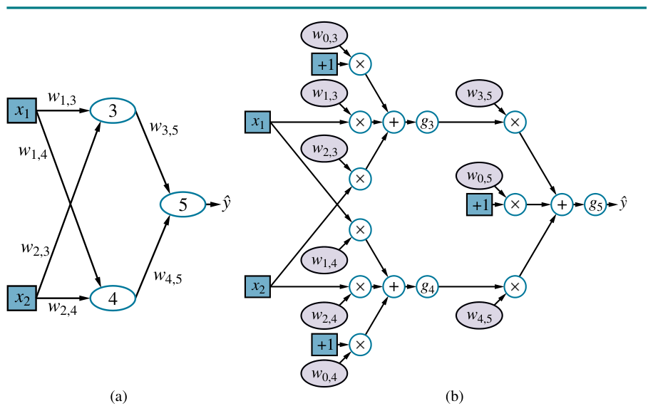
Step 2: the forward pass第 2 步：前向传播
In words: forward pass = compute the units of the first layer, then the next layer, and so on, until the output.用大白话说：前向传播 = 先算第一层的各单元，再算下一层，依此类推，直到输出层。
How to do it by hand: 1. Write the inputs. 2. For each hidden unit compute \(\mathrm{in}\) from the inputs and its weights. 3. Apply \(g\) to get \(a\). 4. Do the same for the next layer, using the new \(a\) values as inputs. 5. At the output unit apply the output activation.手工做法：1. 写出输入。2. 对每个隐藏单元，用输入和它的权重算出 \(\mathrm{in}\)。3. 对它应用 \(g\)，得到 \(a\)。4. 对下一层做同样的计算，把刚算出的 \(a\) 作为输入。5. 在输出单元上应用输出层的激活函数。
The same steps for a whole layer at once use a weight matrix.若要一次算整层，用权重矩阵即可完成同样的步骤。
A network with \(K\) weight matrices is a \(K\)-layer network, so a two-layer network has one hidden layer（隐藏层）. The number of parameters is \(\sum_l U_l(U_{l-1}+1)\): every unit has one weight per input plus one offset. Example: a network with 2 inputs, 2 hidden units and 1 output has \(2\cdot3+1\cdot3=9\) parameters.有 \(K\) 个权重矩阵的网络就是 \(K\) 层网络，所以两层网络有一个隐藏层。参数个数为 \(\sum_l U_l(U_{l-1}+1)\)：每个单元对每个输入有一个权重，外加一个偏置。例如，一个有 2 个输入、2 个隐藏单元、1 个输出的网络，共有 \(2\cdot3+1\cdot3=9\) 个参数。
The same network is reused in Section 9.3.同一个网络将在第 9.3 节中再次使用。
Step 3: the activation functions第 3 步：激活函数
In words: the activation function bends the weighted sum; without the bend, extra layers add nothing.用大白话说：激活函数把加权和“弯折”一下；没有这个弯折，多加的层就毫无作用。
If \(g\) were linear, two layers would give \(W^{(2)}(W^{(1)}\mathbf x)=(W^{(2)}W^{(1)})\mathbf x\). That is one matrix, so the network would be one linear map. Nonlinear activations are what give depth its power. The universal approximation theorem（通用逼近定理）says that a network with one nonlinear hidden layer and a linear output can approximate any continuous function to any accuracy. It does not say how to find the weights, how large the hidden layer must be, or whether the result generalizes.如果 \(g\) 是线性的，两层会得到 \(W^{(2)}(W^{(1)}\mathbf x)=(W^{(2)}W^{(1)})\mathbf x\)。那就等于一个矩阵，网络也就只是一个线性映射。深度之所以有威力，正是因为有非线性的激活函数。通用逼近定理说：带有一个非线性隐藏层和线性输出的网络，可以以任意精度逼近任何连续函数。但它没有说明如何找到这些权重，隐藏层需要多大，也没有说明结果能否泛化。
| Name名称 | \(g(x)\) | \(g'(x)\) | Range取值范围 | Remarks说明 |
|---|---|---|---|---|
| Sigmoid (logistic)Sigmoid（逻辑函数） | \(\dfrac{1}{1+e^{-x}}\) | \(g(1-g)\le0.25\) | \((0,1)\) | probability-like; flat for large \(\lvert x\rvert\)类似概率；当 \(\lvert x\rvert\) 很大时趋于平坦 |
| Tanh | \(\dfrac{e^{2x}-1}{e^{2x}+1}=2\sigma(2x)-1\) | \(1-\tanh^2x\) | \((-1,1)\) | shifted, scaled sigmoid; zero-centered经平移和缩放的 Sigmoid；以零为中心 |
| ReLU | \(\max(0,x)\) | \(0\) for \(x<0\), \(1\) for \(x>0\)当 \(0\) 时为 \(x<0\)，否则为 \(1\) 当 \(x>0\) 时 | \([0,\infty)\) | cheap; no saturation for \(x>0\)计算开销小；对 \(x>0\) 不饱和 |
| Softplus | \(\ln(1+e^{x})\) | \(\sigma(x)\) | \((0,\infty)\) | smooth version of ReLUReLU 的光滑版本 |
Values to know by heart (computed from the formulas):需要熟记的数值（由公式计算得出）：
| \(x\) | \(\sigma(x)\) | \(\sigma'(x)\) | \(\tanh(x)\) | \(\tanh'(x)\) | ReLU\((x)\) | softplus$(x)$ |
|---|---|---|---|---|---|---|
| \(-2\) | 0.119 | 0.105 | \(-0.964\) | 0.071 | 0 | 0.127 |
| 0 | 0.500 | 0.250 | 0 | 1 | 0 | 0.693 |
| 2 | 0.881 | 0.105 | 0.964 | 0.071 | 2 | 2.127 |
Reading the table: the sigmoid and tanh are flat for large \(\lvert x\rvert\), so their derivative is near 0 there. The sigmoid derivative never exceeds 0.25. ReLU has derivative 1 for every positive input and 0 for a negative one. ReLU is now the standard hidden activation. A ReLU unit whose input is negative for every training example has zero gradient and stops learning.读这个表：Sigmoid 和 tanh 在 \(\lvert x\rvert\) 很大时很平坦，所以那里的导数接近 0。Sigmoid 的导数从不超过 0.25。ReLU 对正输入的导数为 1，对负输入的导数为 0。ReLU 现在是标准的隐藏层激活函数。如果一个 ReLU 单元对所有训练样本的输入都是负的，它的梯度就为零，并停止学习。
Practice练习
Q1. (Forward pass) A network has input \(\mathbf x=(1,2)\), a hidden layer of two ReLU units with \(W^{(1)}=\begin{pmatrix}1&-1\\0.5&1\end{pmatrix}\), \(\mathbf b^{(1)}=(0,-1)^{\top}\), and one linear output unit with \(W^{(2)}=(2,\,-1)\), \(b^{(2)}=0.5\). Compute \(\hat y\) and the squared loss for \(y=1\).Q1.（前向传播）某网络的输入为 \(\mathbf x=(1,2)\)，隐藏层包含两个 ReLU 单元，具有 \(W^{(1)}=\begin{pmatrix}1&-1\\0.5&1\end{pmatrix}\) 与 \(\mathbf b^{(1)}=(0,-1)^{\top}\)，输出层为一个线性单元，具有 \(W^{(2)}=(2,\,-1)\) 与 \(b^{(2)}=0.5\)。计算 \(\hat y\)，并计算样本 \(y=1\) 的平方损失。
Answer
\(\mathbf{in}^{(1)}=(1\cdot1-1\cdot2+0,\;0.5\cdot1+1\cdot2-1)=(-1,\,1.5)\), so \(\mathbf a^{(1)}=\mathrm{ReLU}(\mathbf{in}^{(1)})=(0,\,1.5)\). Then \(\hat y=2\cdot0-1\cdot1.5+0.5=-1\) and \(L=(y-\hat y)^2=(1+1)^2=4\).\(\mathbf{in}^{(1)}=(1\cdot1-1\cdot2+0,\;0.5\cdot1+1\cdot2-1)=(-1,\,1.5)\)，因此 \(\mathbf a^{(1)}=\mathrm{ReLU}(\mathbf{in}^{(1)})=(0,\,1.5)\)。然后 \(\hat y=2\cdot0-1\cdot1.5+0.5=-1\) 与 \(L=(y-\hat y)^2=(1+1)^2=4\)。
Q2. (Counting) A network has 10 inputs, hidden layers of 20 and 15 units, and 3 outputs. Give the shape of each weight matrix and the number of parameters.Q2.（计数）某网络有 10 个输入，隐藏层分别包含 20 与 15 个单元，并有 3 个输出。写出每个权重矩阵的形状，并计算参数个数。
Answer
\(W^{(1)}\) is \(20\times10\), \(W^{(2)}\) is \(15\times20\), \(W^{(3)}\) is \(3\times15\). Parameters: \(20\cdot10+20+15\cdot20+15+3\cdot15+3=220+315+48=583\) (all weights plus one offset per unit).\(W^{(1)}\) 为 \(20\times10\)，\(W^{(2)}\) 为 \(15\times20\)，\(W^{(3)}\) 为 \(3\times15\)。参数个数：\(20\cdot10+20+15\cdot20+15+3\cdot15+3=220+315+48=583\)（所有权重加上每个单元一个偏移量）。
Q3. (True/false) "A 5-layer network whose hidden units all use the identity activation and whose output is a sigmoid can represent decision boundaries that logistic regression cannot." Justify.Q3.（判断）“一个 5 层网络，若其隐藏单元全部使用恒等激活函数，且输出为 Sigmoid，则它能表示逻辑回归无法表示的决策边界。”请论证。
Answer
False. With identity activations the layers compose to one affine map, \(\mathbf w^{\top}\mathbf x+b\), so the model is \(\sigma(\mathbf w^{\top}\mathbf x+b)\): exactly logistic regression, with a linear decision boundary. Depth helps only when the hidden activations are nonlinear.错误。若激活函数为恒等映射，各层复合后得到的是单一的仿射映射 \(\mathbf w^{\top}\mathbf x+b\)，因此该模型就是 \(\sigma(\mathbf w^{\top}\mathbf x+b)\)：恰好是逻辑回归，决策边界为线性。只有当隐藏层激活函数为非线性时，增加深度才有帮助。
思路：线性层的复合仍是线性层。
Output Layers, Loss Functions and Input Encoding ★★输出层、损失函数与输入编码 ★★
Goal. Choose the output layer and the loss for a task, compute softmax probabilities and the cross-entropy loss by hand, and encode a categorical input.目标。为一项任务选择输出层和损失，手工计算 Softmax 概率和交叉熵损失，并对类别型输入做编码。
Step 1: the output layer decides the loss第 1 步：输出层决定损失
In words: the output layer says what the network's answer means, and the loss is the negative log of the probability the network gives to the observed answer.用大白话说：输出层规定了网络输出的含义，而损失就是网络赋予观测到的答案的概率的负对数。
The negative log-likelihood of the training data is the cross-entropy loss（交叉熵）. It is minimised for classification. For regression with a fixed-variance Gaussian reading it equals the squared error.训练数据的负对数似然就是交叉熵损失。分类时要最小化它。如果把回归看作方差固定的高斯分布，它就等于平方误差。
| Task任务 | Output layer输出层 | Output means输出含义 | Loss for one example单个样本的损失 |
|---|---|---|---|
| Regression回归 | linear, \(\hat y=\mathrm{in}\)线性，\(\hat y=\mathrm{in}\) | mean of a Gaussian with fixed variance固定方差高斯分布的均值 | squared error \((y-\hat y)^2\)平方误差 \((y-\hat y)^2\) |
| Binary classification二分类 | one sigmoid unit一个 Sigmoid 单元 | \(P(y=1\mid\mathbf x)\) | \(-y\ln\hat y-(1-y)\ln(1-\hat y)\), that is \(-\ln\) of the probability given to the true label\(-y\ln\hat y-(1-y)\ln(1-\hat y)\)，即对真实标签所给概率的 \(-\ln\) 的负对数 |
| \(d\)-class classification\(d\) 类分类 | \(d\) units with softmax\(d\) 个单元加 Softmax | categorical distribution类别分布 | \(-\ln p_y\) |
Example: a spam detector uses one sigmoid unit. It outputs \(\hat y=0.8\) for a mail. If the mail is spam (\(y=1\)) the loss is \(-\ln0.8=0.223\). If it is not spam (\(y=0\)) the loss is \(-\ln(1-0.8)=-\ln0.2=1.609\).例如，一个垃圾邮件检测器使用一个 Sigmoid 单元。对某封邮件，它输出 \(\hat y=0.8\)。如果这封邮件是垃圾邮件（\(y=1\)），损失为 \(-\ln0.8=0.223\)。如果不是垃圾邮件（\(y=0\)），损失为 \(-\ln(1-0.8)=-\ln0.2=1.609\)。
Step 2: softmax第 2 步：Softmax
In words: softmax = make every score positive with the exponential, then divide by the total so that the probabilities add up to 1.用大白话说：Softmax = 先用指数把每个得分变成正数，再除以总和，使概率之和为 1。
How to do it by hand: 1. Compute \(e^{\mathrm{in}_k}\) for every class. 2. Add them. 3. Divide each by the sum. 4. Take \(-\ln\) of the entry of the true class.手工做法：1. 为每个类别计算 \(e^{\mathrm{in}_k}\)。2. 把它们加起来。3. 每个都除以总和。4. 取真实类别那一项的 \(-\ln\)。
With two classes the softmax of \((z,0)\) is \(e^{z}/(e^{z}+1)=\sigma(z)\). The sigmoid is therefore the two-class softmax. Only differences of logits matter.只有两个类别时，\((z,0)\) 的 Softmax 就是 \(e^{z}/(e^{z}+1)=\sigma(z)\)。因此，Sigmoid 就是两类的 Softmax。只有 logit 之间的差才有意义。
Step 3: encoding the inputs第 3 步：输入编码
A categorical input with \(d\) values uses one-hot encoding（独热编码）: \(d\) bits, the bit of the observed value is 1 and all others are 0. Example: with the weather values sun, rain, cloud, snow, "rain" is \((0,1,0,0)\). Codes 1 to 4 would wrongly tell the network that rain is closer to sun than snow is. Numeric inputs are used directly, rescaled to a fixed range.一个有 \(d\) 个取值的类别型输入使用独热编码：\(d\) 位，观测值对应的那一位为 1，其余位为 0。例如，对于天气取值晴、雨、阴、雪，“雨”编码为 \((0,1,0,0)\)。如果用 1 到 4 编码，就会错误地告诉网络：雨比雪更接近晴。数值型输入则直接使用，并缩放到固定的范围内。
Practice练习
Q1. (Calculation) The logits of a three-class network are \((2.0,\,1.0,\,0.1)\). Compute the softmax probabilities and the cross-entropy loss if the true class is 1 and if it is 2.Q1.（计算）某三类网络的 logits 为 \((2.0,\,1.0,\,0.1)\)。若真实类别为 1 与 2，分别计算 Softmax 概率与交叉熵损失。
Answer
\(e^{2.0}+e^{1.0}+e^{0.1}=7.389+2.718+1.105=11.212\), so \(\mathbf p=(0.659,\,0.242,\,0.099)\). For true class 1: \(L=-\ln0.659=0.417\). For true class 2: \(L=-\ln0.242=1.417\). The loss is small when the model gives the true class a probability near 1 and grows without bound as that probability approaches 0.\(e^{2.0}+e^{1.0}+e^{0.1}=7.389+2.718+1.105=11.212\)，因此 \(\mathbf p=(0.659,\,0.242,\,0.099)\)。若真实类别为 1：\(L=-\ln0.659=0.417\)。若真实类别为 2：\(L=-\ln0.242=1.417\)。当模型赋予真实类别接近 1 的概率时，损失很小；随着该概率趋近于 0，损失无限增大。
Q2. (Design) Name the output layer and loss for (a) predicting a house price, (b) deciding whether an e-mail is spam, (c) predicting the next word out of 50,000. (d) How should the input attribute Weather \(\in\{\text{sun, rain, cloud, snow}\}\) be encoded, and why not as 1 to 4?Q2.（设计）分别给出以下任务的输出层和损失函数：(a) 预测房价；(b) 判断一封电子邮件是否为垃圾邮件；(c) 从 50,000 个词中预测下一个词。(d) 输入属性 Weather \(\in\{\text{sun, rain, cloud, snow}\}\) 应如何编码？为什么不能编码为 1 到 4？
Answer
(a) Linear output, squared error. (b) One sigmoid unit giving \(P(\text{spam}\mid\mathbf x)\), with \(-\ln\) of the probability of the true label. (c) 50,000 outputs with a softmax, cross-entropy loss. (d) One-hot, four bits, for example rain \(=(0,1,0,0)\). Integer codes impose an order and distances (sun next to rain, far from snow) that the values do not have, and a network built from continuous functions cannot ignore them.(a) 线性输出，平方误差。(b) 一个 Sigmoid 单元，输出为 \(P(\text{spam}\mid\mathbf x)\)，并且 \(-\ln\) 真实标签所给出的概率。(c) 50,000 个输出加 Softmax，交叉熵损失。(d) 独热编码，共四位，例如 rain 为 \(=(0,1,0,0)\)。整数编码会强加一种顺序与距离（sun 与 rain 相邻，与 snow 相距较远），而这些取值本身并不具有这种性质；由连续函数构成的网络无法忽略这种关系。
Backpropagation ★★★反向传播 ★★★
Goal. Run one complete forward and backward pass on a tiny network, write down every error term and gradient, and update the weights.目标。在一个小网络上完整地做一次前向和反向传播，写下每一个误差项和梯度，并更新权重。
Step 1: what backpropagation computes第 1 步：反向传播计算什么
In words: backpropagation = send the error from the output backwards through the network, multiply by the weight and the local slope at every unit, and read the gradient of each weight off the error signal.用大白话说：反向传播 = 把输出端的误差从后往前传回网络，在每个单元上乘以权重和局部斜率，再由误差信号读出每个权重的梯度。
Backpropagation（反向传播）computes \(\partial L/\partial w\) for every weight. It does not change the weights. Gradient descent (Section 9.4) does that.反向传播为每个权重计算 \(\partial L/\partial w\)。它本身不改变权重，改变权重的是梯度下降（见第 9.4 节）。
Every weight gradient has the same shape: error signal of the unit the link points to, times the activation at the start of the link.每个权重的梯度形式都一样：连接所指向的单元的误差信号，乘以该连接起点处的激活值。
Step 2: the procedure第 2 步：步骤
How to do it by hand:手工做法：
- Forward pass. Compute and write down every \(\mathrm{in}\) and \(a\), then \(\hat y\) and \(L\).前向传播。算出并写下每一个 \(\mathrm{in}\) 和 \(a\)，然后是 \(\hat y\) 和 \(L\)。
- Output error. \(\Delta_5=2(\hat y-y)\,g_5'\). For a linear output \(g_5'=1\).输出误差。\(\Delta_5=2(\hat y-y)\,g_5'\)。对于线性输出，\(g_5'=1\)。
- Hidden errors, layer by layer from the output. \(\Delta_3=\Delta_5\,w_{3,5}\,g_3'\) and \(\Delta_4=\Delta_5\,w_{4,5}\,g_4'\). Use the old weights.隐藏层误差，从输出层开始逐层往回算。\(\Delta_3=\Delta_5\,w_{3,5}\,g_3'\) 和 \(\Delta_4=\Delta_5\,w_{4,5}\,g_4'\)。使用旧权重。
- Gradients. For each weight multiply the \(\Delta\) of its target unit by the activation at its source. For an offset the gradient is the \(\Delta\) itself.梯度。对每个权重，把其目标单元的 \(\Delta\) 乘以其源端的激活值。对于偏置，梯度就是 \(\Delta\) 本身。
- Update. New weight = old weight \(-\;\alpha\times\) gradient, for all weights together.更新。新权重 = 旧权重 \(-\;\alpha\times\) 梯度，所有权重一起更新。
Sign check: \(\Delta_5<0\) means the output is too small, so the output weights with positive activations increase.符号检查：\(\Delta_5<0\) 表示输出太小了，所以激活值为正的输出层权重会增大。
Step 3: the layer form第 3 步：层形式
For a network with many units the same rules are written with matrices.单元很多的网络，同样的规则用矩阵来写。
Backpropagation costs about as much as the forward pass. It must store all forward values.反向传播的计算量与前向传播差不多。它必须保存所有前向计算的值。
Vanishing gradients梯度消失
Every \(\Delta\) is multiplied by the slope \(g'\) of each unit it passes. The sigmoid slope is at most 0.25, so nine sigmoid layers scale the signal by at most \(0.25^{9}\approx3.8\times10^{-6}\). The first layers then receive almost no gradient: the vanishing gradient problem（梯度消失）. ReLU has slope 1 for positive inputs, which is why it helps.每一个 \(\Delta\) 都要乘以它所经过的每个单元的斜率 \(g'\)。Sigmoid 的斜率至多为 0.25，因此九层 Sigmoid 使信号最多只剩原来的 \(0.25^{9}\approx3.8\times10^{-6}\)。这样，前面几层几乎得不到梯度，这就是梯度消失问题。ReLU 对正输入的斜率为 1，这就是它有帮助的原因。
Practice练习
Q1. (Calculation) Let \(\hat y=w_2\,\mathrm{ReLU}(w_1x+b_1)+b_2\) with \(w_1=0.5\), \(b_1=0.5\), \(w_2=1.5\), \(b_2=-0.5\), input \(x=2\), target \(y=3\) and squared loss. Compute the loss and the four gradients by backpropagation, then update with \(\alpha=0.02\) and give the new loss.Q1.（计算）设 \(\hat y=w_2\,\mathrm{ReLU}(w_1x+b_1)+b_2\)，其中 \(w_1=0.5\)、\(b_1=0.5\)、\(w_2=1.5\)、\(b_2=-0.5\)，输入 \(x=2\)，目标 \(y=3\)，采用平方损失。通过反向传播计算损失以及四个梯度，然后用 \(\alpha=0.02\) 更新，并给出新的损失。
Answer
Forward: \(\mathrm{in}_1=0.5\cdot2+0.5=1.5\), \(a_1=1.5\), \(\hat y=1.5\cdot1.5-0.5=1.75\), \(L=(3-1.75)^2=1.5625\). Backward: \(\Delta_2=2(\hat y-y)=-2.5\); \(\partial L/\partial w_2=\Delta_2a_1=-3.75\) and \(\partial L/\partial b_2=-2.5\); \(\Delta_1=\Delta_2w_2\,\mathrm{ReLU}'(1.5)=-2.5\cdot1.5\cdot1=-3.75\); \(\partial L/\partial w_1=\Delta_1x=-7.5\) and \(\partial L/\partial b_1=-3.75\). Update: \(w_1=0.65\), \(b_1=0.575\), \(w_2=1.575\), \(b_2=-0.45\). New forward: \(\mathrm{in}_1=1.875\), \(\hat y=1.575\cdot1.875-0.45=2.5031\), \(L=0.2469\), down from 1.5625.前向：\(\mathrm{in}_1=0.5\cdot2+0.5=1.5\)，\(a_1=1.5\)，\(\hat y=1.5\cdot1.5-0.5=1.75\)，\(L=(3-1.75)^2=1.5625\)。反向：\(\Delta_2=2(\hat y-y)=-2.5\)；\(\partial L/\partial w_2=\Delta_2a_1=-3.75\) 与 \(\partial L/\partial b_2=-2.5\)；\(\Delta_1=\Delta_2w_2\,\mathrm{ReLU}'(1.5)=-2.5\cdot1.5\cdot1=-3.75\)；\(\partial L/\partial w_1=\Delta_1x=-7.5\) 与 \(\partial L/\partial b_1=-3.75\)。更新：\(w_1=0.65\)，\(b_1=0.575\)，\(w_2=1.575\)，\(b_2=-0.45\)。新的前向：\(\mathrm{in}_1=1.875\)，\(\hat y=1.575\cdot1.875-0.45=2.5031\)，\(L=0.2469\)，从 1.5625 下降。
Q2. (Derivation) For softmax with cross-entropy loss show that \(\partial L/\partial\mathrm{in}_j=p_j-\mathbb 1[j=y]\).Q2.（推导）对于 Softmax 配交叉熵损失，证明 \(\partial L/\partial\mathrm{in}_j=p_j-\mathbb 1[j=y]\)。
Answer
\(L=-\mathrm{in}_y+\ln\sum_ke^{\mathrm{in}_k}\). Differentiating, \(\partial L/\partial\mathrm{in}_j=-\mathbb 1[j=y]+e^{\mathrm{in}_j}/\sum_ke^{\mathrm{in}_k}=p_j-\mathbb 1[j=y]\). The error signal is the predicted probability vector minus the one-hot target; it is the starting \(\Delta^{(K)}\) of backpropagation.\(L=-\mathrm{in}_y+\ln\sum_ke^{\mathrm{in}_k}\)。求导得 \(\partial L/\partial\mathrm{in}_j=-\mathbb 1[j=y]+e^{\mathrm{in}_j}/\sum_ke^{\mathrm{in}_k}=p_j-\mathbb 1[j=y]\)。误差信号即为预测概率向量减去独热目标向量；它是反向传播的起始 \(\Delta^{(K)}\)。
Q3. (Explain) A 10-layer network has nine sigmoid hidden layers. Bound the product of the activation derivatives along one path from the output to the first layer, and explain why ReLU helps.Q3.（解释）一个 10 层网络有九个 Sigmoid 隐藏层。请给出从输出到第一层的一条路径上各激活函数导数之积的上界，并解释 ReLU 为何有帮助。
Answer
Since \(\sigma'(x)\le0.25\), nine factors give at most \(0.25^{9}\approx3.8\times10^{-6}\) (before the weights are counted): the first layers receive almost no gradient and barely learn. ReLU has derivative exactly 1 for positive inputs, so along active paths the product does not shrink. The price is zero gradient for a unit whose input is negative.由于 \(\sigma'(x)\le0.25\)，九个因子之积至多为 \(0.25^{9}\approx3.8\times10^{-6}\)（尚未计入权重）：前几层几乎得不到梯度，学习极其缓慢。对于正输入，ReLU 的导数恰好为 1，因此沿活跃路径乘积不会缩小。代价是输入为负的单元梯度为零。
Training: SGD, Minibatches, Momentum and Initialization ★★训练：SGD、小批量、动量与初始化 ★★
Goal. Do one gradient-descent and one momentum step by hand, count epochs and updates, and say how to initialise the weights.目标。手工完成一步梯度下降和一步动量更新，计算轮次和更新次数，并说明如何初始化权重。
Step 1: gradient descent and SGD第 1 步：梯度下降与 SGD
In words: gradient descent = move every weight a small step against its gradient; SGD = estimate the gradient from a random minibatch, so each step is cheap but noisy.用大白话说：梯度下降 = 每个权重都沿着梯度的反方向走一小步；SGD = 从随机小批量估计梯度，因此每一步很便宜，但有噪声。
The number of updates per epoch is \(N/m\). The cost of one update does not depend on \(N\). The gradient noise can help the weights escape small local minima. Near a minimum the noise makes the weights jitter, so the learning rate is decreased over time.每轮的更新次数为 \(N/m\)。一次更新的代价与 \(N\) 无关。梯度噪声有助于权重跳出较小的局部极小值。在极小值附近，噪声会使权重抖动，因此学习率要随时间逐渐减小。
Step 2: momentum第 2 步：动量
In words: momentum = keep a running velocity that adds up past gradients, so steps grow along a steady direction and cancel when the gradient flips.用大白话说：动量 = 保留一个累积的速度，它把过去的梯度加起来，因此沿着稳定方向步长会越来越大，而当梯度方向翻转时，步长就会相互抵消。
Step 3: initialization第 3 步：初始化
Linear and logistic regression have a convex cost, so any start works. The cost of a network is non-convex, so the start matters. Set the weights to small random numbers. Equal weights are fatal: the units of a layer would get identical gradients and stay identical forever. Large weights saturate sigmoid and tanh units.线性回归和逻辑回归的代价是凸的，因此从哪里开始都可以。网络的代价是非凸的，所以起点很重要。应把权重设为较小的随机数。权重全部相等是致命的：同一层的单元会得到相同的梯度，并且永远保持相同。权重太大会使 Sigmoid 和 tanh 单元饱和。
Practice练习
Q1. (Calculation) A training set has \(N=50{,}000\) examples and the minibatch size is \(m=250\). How many updates make one epoch, and how many are 30 epochs? What changes for \(N=10{,}000\) and \(m=64\)?Q1.（计算）训练集有 \(N=50{,}000\) 个样本，小批量大小为 \(m=250\)。一个轮次包含多少次更新？30 个轮次又包含多少次更新？若 \(N=10{,}000\) 与 \(m=64\) 会有什么变化？
Answer
\(N/m=200\) updates per epoch, so 30 epochs are \(30\cdot200=6{,}000\) updates. For \(10{,}000/64=156.25\) the last minibatch holds the remaining 16 examples, so an epoch has 157 updates (156 full minibatches and one partial one).每个轮次 \(N/m=200\) 次更新，因此 30 个轮次共 \(30\cdot200=6{,}000\) 次更新。对于 \(10{,}000/64=156.25\)，最后一个小批量包含剩余的 16 个样本，因此每个轮次有 157 次更新（156 个完整小批量和 1 个不完整的小批量）。
Q2. (Calculation) SGD with momentum uses \(\alpha=0.1\) and \(\beta=0.9\), starting from \(w=1\) and \(v=0\). The gradients at three successive steps are \(2,\,2,\,-2\). Compute \(v\) and \(w\) after each step and compare with plain SGD.Q2.（计算）带动量的 SGD 使用 \(\alpha=0.1\) 与 \(\beta=0.9\)，初始值为 \(w=1\) 与 \(v=0\)。连续三步的梯度分别为 \(2,\,2,\,-2\)。计算每一步之后的 \(v\) 与 \(w\)，并与普通 SGD 进行比较。
Answer
Step 1: \(v=-0.1\cdot2=-0.2\), \(w=0.8\). Step 2: \(v=0.9(-0.2)-0.2=-0.38\), \(w=0.42\). Step 3: \(v=0.9(-0.38)-0.1\cdot(-2)=-0.142\), \(w=0.278\). Plain SGD gives \(w=0.8,\,0.6,\,0.8\): it reverses at step 3, whereas the velocity keeps the weight moving down because the past gradients still dominate. Momentum smooths a gradient that flips sign.第 1 步：\(v=-0.1\cdot2=-0.2\)，\(w=0.8\)。第 2 步：\(v=0.9(-0.2)-0.2=-0.38\)，\(w=0.42\)。第 3 步：\(v=0.9(-0.38)-0.1\cdot(-2)=-0.142\)，\(w=0.278\)。普通 SGD 给出 \(w=0.8,\,0.6,\,0.8\)：它在第 3 步发生反转，而速度项则因过去的梯度仍占主导，使权重继续向下移动。动量能够平滑符号会翻转的梯度。
Generalization: Architecture, Weight Decay, Dropout and Early Stopping ★★泛化：网络结构、权重衰减、Dropout 与早停 ★★
Goal. Explain what weight decay, dropout and early stopping change, apply each to a small number, and name the hyperparameter of each.目标。解释权重衰减、Dropout 和早停各改变了什么，用小数字分别算一遍，并说出各自的超参数。
Overfitting and validation sets are explained in Section 6.4. A network with many weights can fit the training data perfectly and still fail on new data. The three methods below reduce this.过拟合和验证集的内容见第 6.4 节。权重很多的网络可以完美拟合训练数据，但在新数据上仍然失败。下面三种方法可以减轻这一问题。
Step 1: weight decay第 1 步：权重衰减
In words: weight decay = charge a price for large weights, so each step first shrinks every weight a little and then follows the data gradient.用大白话说：权重衰减 = 对大的权重收取“代价”，因此每一步先把每个权重稍微缩小一点，然后再沿着数据梯度更新。
Example: \(w=1.5\), data gradient \(-0.2\), \(\alpha=0.1\), \(\lambda=0.01\). The shrink factor is \(1-2\cdot0.1\cdot0.01=0.998\). The new weight is \(0.998\cdot1.5-0.1\cdot(-0.2)=1.497+0.02=1.517\). Weight decay is maximum a posteriori learning with a zero-mean Gaussian prior on the weights. A larger \(\lambda\) means a narrower prior and smaller weights.例如：\(w=1.5\)，数据梯度为 \(-0.2\)，\(\alpha=0.1\)，\(\lambda=0.01\)。收缩因子为 \(1-2\cdot0.1\cdot0.01=0.998\)。新权重为 \(0.998\cdot1.5-0.1\cdot(-0.2)=1.497+0.02=1.517\)。权重衰减等价于对权重加上零均值高斯先验后的最大后验学习。\(\lambda\) 越大，先验越窄，权重也越小。
Step 2: dropout第 2 步：Dropout
In words: dropout = in every training step switch off a random part of the units, so no unit can rely on particular partners.用大白话说：Dropout = 每一次训练时随机关掉一部分单元，使任何单元都不能依赖某些特定的搭档。
Dropout（随机失活）keeps each unit of the chosen layers with probability \(r\). A dropped unit outputs 0. One backpropagation step updates only the units that are present. At test time the full network is used.Dropout 以概率 \(r\) 保留所选层中的每个单元。被丢弃的单元输出 0。一次反向传播只更新当前存在的单元。测试时使用完整的网络。
Example: \(\mathbf a=(1.0,\,0.4,\,2.0)\), \(r=0.8\) and mask \((1,1,0)\). Kept units are scaled by \(1/0.8=1.25\), so the training output is \((1.25,\,0.5,\,0)\). At test time the output is \((1.0,\,0.4,\,2.0)\).例如：\(\mathbf a=(1.0,\,0.4,\,2.0)\)、\(r=0.8\) 和掩码 \((1,1,0)\)。保留的单元乘以 \(1/0.8=1.25\) 缩放，因此训练时的输出为 \((1.25,\,0.5,\,0)\)。测试时的输出为 \((1.0,\,0.4,\,2.0)\)。
A network with \(u\) droppable units contains \(2^{u}\) sub-networks that share their weights. Dropout approximates the average of this huge ensemble（集成） with one pass through the full network.有 \(u\) 个可丢弃单元的网络，包含 \(2^{u}\) 个共享权重的子网络。Dropout 用对完整网络的一次前向计算，近似了这个庞大集成的平均结果。
Step 3: early stopping第 3 步：早停
In words: early stopping = stop training when the validation loss stops improving, and return the weights of the best epoch.用大白话说：早停 = 验证损失不再下降时停止训练，并返回最好那一轮的权重。
How to do it by hand: 1. After every epoch compute the validation loss. 2. If it is the lowest so far, save a copy of the weights. 3. Count the epochs since the last improvement. 4. When the count reaches the patience, stop and return the saved weights.手工做法：1. 每一轮结束后计算验证损失。2. 如果它是目前最低的，就保存一份权重的副本。3. 数一数距离上一次改进过了多少轮。4. 当计数达到耐心值时，停止训练，并返回保存的权重。
Example: validation losses 0.80, 0.60, 0.55, 0.57, 0.60 and patience 2. The best epoch is 3. Epochs 4 and 5 do not improve, so training stops after epoch 5 and the weights of epoch 3 are returned.例如：验证损失依次为 0.80、0.60、0.55、0.57、0.60，耐心值为 2。最好的是第 3 轮。第 4 轮和第 5 轮都没有改进，所以训练在第 5 轮后停止，并返回第 3 轮的权重。
| Method方法 | What it changes改变的内容 | Hyperparameter超参数 | At test time测试时 |
|---|---|---|---|
| Weight decay权重衰减 | the loss (adds \(\lambda\sum w^2\))损失（增加 \(\lambda\sum w^2\)） | \(\lambda\) | nothing无 |
| Dropout随机失活 | the forward pass (random units off)前向传播（随机单元关闭） | keep probability \(r\)保留概率 \(r\) | full network, no dropout完整网络，不使用随机失活 |
| Early stopping早停 | the training length训练长度 | patience耐心值 | weights of the best epoch最佳轮次的权重 |
Practice练习
Q1. (Calculation) A weight is \(w=2.0\) with data gradient \(\partial J/\partial w=0.5\), the learning rate is \(\alpha=0.1\) and weight decay uses \(\lambda=0.01\) (penalty \(\lambda\sum w^2\)). Compute the new weight. How large is \(w\) after 100 steps if the data gradient is zero?Q1.（计算）某权重为 \(w=2.0\)，其数据梯度为 \(\partial J/\partial w=0.5\)，学习率为 \(\alpha=0.1\)，权重衰减系数为 \(\lambda=0.01\)（惩罚项为 \(\lambda\sum w^2\)）。计算新的权重。若数据梯度为零，经过 100 步后 \(w\) 为多少？
Answer
\(w\leftarrow w-\alpha(\partial J/\partial w+2\lambda w)=2.0-0.1(0.5+0.04)=1.946\). Equivalently \((1-2\alpha\lambda)w-\alpha\,\partial J/\partial w=0.998\cdot2.0-0.05\). Without a data gradient the weight decays geometrically: \(2.0\cdot0.998^{100}=1.637\).\(w\leftarrow w-\alpha(\partial J/\partial w+2\lambda w)=2.0-0.1(0.5+0.04)=1.946\)。等价地，\((1-2\alpha\lambda)w-\alpha\,\partial J/\partial w=0.998\cdot2.0-0.05\)。若没有数据梯度，权重将按几何级数衰减：\(2.0\cdot0.998^{100}=1.637\)。
Q2. (Calculation) A layer has activations \(\mathbf a=(0.8,\,1.2,\,0.5,\,2.0)\). Dropout with keep probability \(r=0.5\) draws the mask \((1,0,1,0)\). Give the outputs in training and at test time. How many sub-networks exist for 200 hidden units?Q2.（计算）某一层的激活值为 \(\mathbf a=(0.8,\,1.2,\,0.5,\,2.0)\)。保留概率为 \(r=0.5\) 的随机失活抽取掩码 \((1,0,1,0)\)。给出训练时与测试时的输出。对于 200 个隐藏单元，共存在多少个子网络？
Answer
Training: kept units are scaled by \(1/r=2\), giving \((1.6,\,0,\,1.0,\,0)\). The expected output of each unit equals its activation, since \(r\cdot a/r=a\). Test time: no dropout, outputs \((0.8,\,1.2,\,0.5,\,2.0)\). With 200 units there are \(2^{200}\approx1.6\times10^{60}\) sub-networks, so only a tiny fraction is ever sampled; they share their weights.训练时：保留单元乘以 \(1/r=2\)，得到 \((1.6,\,0,\,1.0,\,0)\)。每个单元的期望输出等于其激活值，因为 \(r\cdot a/r=a\)。测试时：不使用随机失活，输出为 \((0.8,\,1.2,\,0.5,\,2.0)\)。200 个单元共有 \(2^{200}\approx1.6\times10^{60}\) 个子网络，因此只有极小一部分会被采样到；它们之间共享权重。
Terms to recognise ★需要认识的术语 ★
| Term术语 | What to know要知道什么 |
|---|---|
| Softplus | \(\ln(1+e^{x})\), a smooth version of ReLU with derivative \(\sigma(x)\)\(\ln(1+e^{x})\)，ReLU 的一种光滑版本，导数为 \(\sigma(x)\) |
| Exploding gradients梯度爆炸 | Weights above 1 multiply the error signal up along deep paths; the opposite of vanishing gradients权重大于 1 时，误差信号沿深层路径被逐步放大；这与梯度消失正好相反 |
| Residual network残差网络 | A skip connection adds the layer input to its output, so gradients pass through deep networks跳跃连接把层的输入加到它的输出上，因此梯度可以穿过很深的网络 |
| Batch normalization批归一化 | Rescales each node over the minibatch to zero mean and unit variance, with learned scale and shift在小批量上对每个节点做重新缩放，使其均值为零、方差为一，并带有可学习的缩放和平移参数 |
| Glorot and He initializationGlorot 与 He 初始化 | Weight variance \(2/(n_{\text{in}}+n_{\text{out}})\) or \(2/n_{\text{in}}\) keeps activations stable; \(n_{\text{in}}\), \(n_{\text{out}}\) = incoming, outgoing links权重方差取 \(2/(n_{\text{in}}+n_{\text{out}})\) 或 \(2/n_{\text{in}}\)，可以使激活值保持稳定；\(n_{\text{in}}\)、\(n_{\text{out}}\) 分别表示输入连接数和输出连接数 |
| Reverse-mode automatic differentiation反向模式自动微分 | Backpropagation on a general computation graph; cost is linear in the number of nodes在一般计算图上的反向传播；代价与结点个数成线性关系 |
| Deep versus wide深与宽 | For the same number of weights a deeper network usually generalizes better than a shallow wide one权重数相同时，较深的网络通常比较浅较宽的网络泛化得更好 |
| Adversarial example对抗样本 | A barely visible change of the input that flips the predicted class输入上一个几乎看不出的微小改动，就能使预测类别翻转 |
| Neural architecture search神经架构搜索 | Depth, width and connectivity treated as hyperparameters and searched automatically深度、宽度和连接方式被当作超参数，并由算法自动搜索 |
| L1 penaltyL1 惩罚 | \(\lambda\sum\lvert w\rvert\) drives many weights exactly to zero\(\lambda\sum\lvert w\rvert\) 会把许多权重精确地压到零 |
Exam-style questions考试题型练习
Q1. (Forward and backward pass, 15 marks) A network has two inputs, a hidden layer of two ReLU units and a softmax output layer with two classes. \(W^{(1)}=\begin{pmatrix}1&2\\-1&1\end{pmatrix}\), \(\mathbf b^{(1)}=(-1,\,0.5)^{\top}\), \(W^{(2)}=\begin{pmatrix}1&-1\\0.5&2\end{pmatrix}\), \(\mathbf b^{(2)}=(0,\,0)^{\top}\). The example is \(\mathbf x=(1,1)\) with true class 1. (a) Compute the hidden activations, the output probabilities and the cross-entropy loss. (6 marks) (b) Compute \(\Delta^{(2)}\) and the gradients of \(W^{(2)}\) and \(\mathbf b^{(2)}\). (3 marks) (c) Backpropagate to the hidden layer and give the gradients of \(W^{(1)}\) and \(\mathbf b^{(1)}\). (4 marks) (d) Update all parameters with \(\alpha=0.1\) and compute the new loss. (2 marks)Q1.（前向与反向传播，15 分）某网络有两个输入、一个包含两个 ReLU 单元的隐藏层，以及一个两类的 Softmax 输出层。\(W^{(1)}=\begin{pmatrix}1&2\\-1&1\end{pmatrix}\)、\(\mathbf b^{(1)}=(-1,\,0.5)^{\top}\)、\(W^{(2)}=\begin{pmatrix}1&-1\\0.5&2\end{pmatrix}\)、\(\mathbf b^{(2)}=(0,\,0)^{\top}\)。样本为 \(\mathbf x=(1,1)\)，其真实类别为 1。(a) 计算隐藏层激活值、输出概率与交叉熵损失。（6 分）(b) 计算 \(\Delta^{(2)}\)，以及 \(W^{(2)}\) 与 \(\mathbf b^{(2)}\) 的梯度。（3 分）(c) 将梯度反向传播至隐藏层，并给出 \(W^{(1)}\) 与 \(\mathbf b^{(1)}\) 的梯度。（4 分）(d) 用 \(\alpha=0.1\) 更新所有参数，并计算新的损失。（2 分）
Answer
(a) \(\mathbf{in}^{(1)}=W^{(1)}\mathbf x+\mathbf b^{(1)}=(1+2-1,\,-1+1+0.5)=(2,\,0.5)\); both entries are positive, so \(\mathbf a^{(1)}=(2,\,0.5)\). \(\mathbf{in}^{(2)}=W^{(2)}\mathbf a^{(1)}=(2-0.5,\,1+1)=(1.5,\,2)\). Softmax: \(e^{1.5}=4.482\), \(e^{2}=7.389\), sum \(11.871\), so \(\mathbf p=(0.3775,\,0.6225)\) and \(L=-\ln0.3775=0.974\).(a) \(\mathbf{in}^{(1)}=W^{(1)}\mathbf x+\mathbf b^{(1)}=(1+2-1,\,-1+1+0.5)=(2,\,0.5)\)；两个分量均为正，因此 \(\mathbf a^{(1)}=(2,\,0.5)\)。\(\mathbf{in}^{(2)}=W^{(2)}\mathbf a^{(1)}=(2-0.5,\,1+1)=(1.5,\,2)\)。Softmax：\(e^{1.5}=4.482\)、\(e^{2}=7.389\)，和为 \(11.871\)，因此 \(\mathbf p=(0.3775,\,0.6225)\) 与 \(L=-\ln0.3775=0.974\)。
(b) \(\Delta^{(2)}=\mathbf p-\mathbf e_1=(-0.6225,\,0.6225)\). \(\partial L/\partial W^{(2)}=\Delta^{(2)}\mathbf a^{(1)\top}=\begin{pmatrix}-1.245&-0.311\\1.245&0.311\end{pmatrix}\) and \(\partial L/\partial\mathbf b^{(2)}=(-0.6225,\,0.6225)\).(b) \(\Delta^{(2)}=\mathbf p-\mathbf e_1=(-0.6225,\,0.6225)\)。\(\partial L/\partial W^{(2)}=\Delta^{(2)}\mathbf a^{(1)\top}=\begin{pmatrix}-1.245&-0.311\\1.245&0.311\end{pmatrix}\) 与 \(\partial L/\partial\mathbf b^{(2)}=(-0.6225,\,0.6225)\)。
(c) \(W^{(2)\top}\Delta^{(2)}=(1\cdot(-0.6225)+0.5\cdot0.6225,\;-1\cdot(-0.6225)+2\cdot0.6225)=(-0.311,\,1.867)\). Both hidden units are active (\(g'=1\)), so \(\Delta^{(1)}=(-0.311,\,1.867)\). Then \(\partial L/\partial W^{(1)}=\Delta^{(1)}\mathbf x^{\top}=\begin{pmatrix}-0.311&-0.311\\1.867&1.867\end{pmatrix}\) and \(\partial L/\partial\mathbf b^{(1)}=\Delta^{(1)}\).(c) \(W^{(2)\top}\Delta^{(2)}=(1\cdot(-0.6225)+0.5\cdot0.6225,\;-1\cdot(-0.6225)+2\cdot0.6225)=(-0.311,\,1.867)\)。两个隐藏单元均处于活跃状态（\(g'=1\)），因此 \(\Delta^{(1)}=(-0.311,\,1.867)\)。然后 \(\partial L/\partial W^{(1)}=\Delta^{(1)}\mathbf x^{\top}=\begin{pmatrix}-0.311&-0.311\\1.867&1.867\end{pmatrix}\) 与 \(\partial L/\partial\mathbf b^{(1)}=\Delta^{(1)}\)。
(d) New values: \(W^{(1)}=\begin{pmatrix}1.031&2.031\\-1.187&0.813\end{pmatrix}\), \(\mathbf b^{(1)}=(-0.969,\,0.313)\), \(W^{(2)}=\begin{pmatrix}1.124&-0.969\\0.376&1.969\end{pmatrix}\), \(\mathbf b^{(2)}=(0.062,\,-0.062)\). Forward again: \(\mathbf{in}^{(1)}=(2.093,\,-0.060)\), so the second hidden unit is now inactive and \(\mathbf a^{(1)}=(2.093,\,0)\); \(\mathbf{in}^{(2)}=(2.416,\,0.724)\); \(\mathbf p=(0.845,\,0.155)\) and \(L=0.169\). The loss fell from 0.974 to 0.169.(d) 新的取值：\(W^{(1)}=\begin{pmatrix}1.031&2.031\\-1.187&0.813\end{pmatrix}\)、\(\mathbf b^{(1)}=(-0.969,\,0.313)\)、\(W^{(2)}=\begin{pmatrix}1.124&-0.969\\0.376&1.969\end{pmatrix}\)、\(\mathbf b^{(2)}=(0.062,\,-0.062)\)。再次前向计算：\(\mathbf{in}^{(1)}=(2.093,\,-0.060)\)，因此第二个隐藏单元现在处于非活跃状态，并且 \(\mathbf a^{(1)}=(2.093,\,0)\)；\(\mathbf{in}^{(2)}=(2.416,\,0.724)\)；\(\mathbf p=(0.845,\,0.155)\) 与 \(L=0.169\)。损失由 0.974 下降到 0.169。
思路：前向存值 → 输出误差 p−y → 乘转置权重再乘 g′ 回传 → 误差×输入激活得梯度 → 减去 α×梯度。
Q2. (Activation functions and vanishing gradients, 10 marks) (a) Give the formula, range and derivative of the sigmoid, tanh and ReLU functions. (3 marks) (b) Why must hidden units be nonlinear? State the universal approximation theorem and what it does not guarantee. (3 marks) (c) Explain the vanishing gradient problem: its cause, why it affects sigmoid networks more than ReLU networks, and two remedies. (4 marks)Q2.（激活函数与梯度消失，10 分）(a) 给出 Sigmoid、tanh 与 ReLU 函数的公式、取值范围与导数。（3 分）(b) 为什么隐藏单元必须是非线性的？叙述通用逼近定理，并说明它不保证什么。（3 分）(c) 解释梯度消失问题：其成因、为什么它对 Sigmoid 网络的影响大于对 ReLU 网络的影响，以及两种补救方法。（4 分）
Answer
(a) Sigmoid \(\sigma(x)=1/(1+e^{-x})\), range \((0,1)\), \(\sigma'=\sigma(1-\sigma)\le0.25\). Tanh \(=(e^{2x}-1)/(e^{2x}+1)=2\sigma(2x)-1\), range \((-1,1)\), \(\tanh'=1-\tanh^2\). ReLU \(=\max(0,x)\), range \([0,\infty)\), derivative 1 for \(x>0\) and 0 for \(x<0\).(a) Sigmoid \(\sigma(x)=1/(1+e^{-x})\)，取值范围 \((0,1)\)，\(\sigma'=\sigma(1-\sigma)\le0.25\)。Tanh \(=(e^{2x}-1)/(e^{2x}+1)=2\sigma(2x)-1\)，取值范围 \((-1,1)\)，\(\tanh'=1-\tanh^2\)。ReLU \(=\max(0,x)\)，取值范围 \([0,\infty)\)，导数在 \(x>0\) 时为 1、在 \(x<0\) 时为 0。
(b) Without nonlinearity every layer is a matrix product, and a product of matrices is a single matrix, so depth adds nothing. The theorem states that two layers of units, the first nonlinear and the second linear, can approximate any continuous function to any accuracy. The hidden layer may need exponentially many units, and the theorem says nothing about finding the weights by training or about generalization.(b) 若没有非线性，每一层都是一次矩阵乘法，而矩阵的乘积仍是单个矩阵，因此增加深度毫无意义。该定理指出：两层单元（第一层为非线性，第二层为线性）可以以任意精度逼近任何连续函数。隐藏层可能需要指数级多的单元；该定理既未说明如何通过训练求得权重，也未涉及泛化能力。
(c) In backpropagation the error signal at layer \(l\) contains the product of the factors \(W^{\top}\) and \(g'(\mathrm{in})\) of all later layers. If \(g'\) is small (sigmoid at most 0.25, and close to 0 when saturated), the product shrinks exponentially with depth: the early layers receive almost no gradient and learn extremely slowly. ReLU has \(g'=1\) on its active side, so the product does not shrink there. Further remedies: residual connections (the skip path carries the gradient unattenuated), batch normalization and careful initialization.(c) 在反向传播中，第 \(l\) 层的误差信号包含所有后续各层的因子 \(W^{\top}\) 与 \(g'(\mathrm{in})\) 的乘积。若 \(g'\) 较小（Sigmoid 至多为 0.25，饱和时接近 0），则该乘积会随深度指数级衰减：前几层几乎得不到梯度，学习极其缓慢。ReLU 在其活跃一侧的导数为 \(g'=1\)，因此在该区域内乘积不会缩小。其他补救方法还包括残差连接（跳跃路径使梯度不衰减地传递）、批归一化以及谨慎的初始化。
Q3. (Training, 10 marks) A 784–200–10 network (ReLU hidden layer, softmax output) is trained on \(N=60{,}000\) images by minibatch SGD with \(m=100\) for 15 epochs. (a) Count its parameters. (2 marks) (b) How many weight updates are made? (2 marks) (c) Give three reasons for minibatch SGD instead of batch gradient descent, and one problem of small minibatches near a minimum with two remedies. (3 marks) (d) With momentum (\(\beta=0.9\), \(\alpha=0.1\)) and a gradient that stays at 2 for one weight, compute the first three velocities and the limiting step, and compare with plain SGD. (3 marks)Q3.（训练，10 分）一个 784–200–10 网络（隐藏层为 ReLU，输出层为 Softmax）在 \(N=60{,}000\) 张图像上以小批量 SGD 训练，\(m=100\)，共 15 个轮次。(a) 计算其参数个数。（2 分）(b) 共进行多少次权重更新？（2 分）(c) 给出采用小批量 SGD 而非批量梯度下降的三个理由，并指出小批量在接近极小值时的一个问题，以及两种补救方法。（3 分）(d) 取动量 \(\beta=0.9\) 与 \(\alpha=0.1\)，若某一权重的梯度恒为 2，计算前三个速度与极限步长，并与普通 SGD 进行比较。（3 分）
Answer
(a) \(784\cdot200+200+200\cdot10+10=159{,}010\).
(b) \(60{,}000/100=600\) updates per epoch, so \(600\cdot15=9{,}000\) updates.(b) 每个轮次 \(60{,}000/100=600\) 次更新，因此共 \(600\cdot15=9{,}000\) 次更新。
(c) The cost of an update is constant and independent of \(N\); the gradient noise helps to escape small local minima; the independent examples of a minibatch use GPU parallelism. Near a minimum the minibatch gradients have high variance and may point in the wrong direction, which prevents convergence. Remedies: decrease the learning rate over time, increase the minibatch size, or use momentum.(c) 每次更新的代价是恒定的，且与 \(N\) 无关；梯度噪声有助于跳出较小的局部极小值；小批量中的独立样本可以利用 GPU 的并行能力。接近极小值时，小批量梯度的方差较大，可能指向错误的方向，从而妨碍收敛。补救方法包括：随时间减小学习率，增大小批量的大小，或使用动量。
(d) \(v_1=-0.2\), \(v_2=0.9(-0.2)-0.2=-0.38\), \(v_3=0.9(-0.38)-0.2=-0.542\). The limit is \(-\alpha g/(1-\beta)=-0.2/0.1=-2\), ten times the plain SGD step of \(-0.2\) per iteration.(d) \(v_1=-0.2\)、\(v_2=0.9(-0.2)-0.2=-0.38\)、\(v_3=0.9(-0.38)-0.2=-0.542\)。极限为 \(-\alpha g/(1-\beta)=-0.2/0.1=-2\)，即每次迭代普通 SGD 步长 \(-0.2\) 的十倍。
Q4. (Regularization, 12 marks) (a) Show that minimizing cross-entropy plus the penalty \(\lambda\sum w^2\) is MAP estimation with a zero-mean Gaussian prior, and give the prior variance for \(\lambda=0.5\). (4 marks) (b) A weight \(w=1.0\) has data gradient \(0.2\); with \(\alpha=0.5\) and \(\lambda=0.1\) compute the update and state the shrink factor. (2 marks) (c) Describe dropout in training and at prediction with keep probability \(r=0.8\), and say what happens to a unit with activation 1.5. (3 marks) (d) Give two differences between dropout and bagging. (3 marks)Q4.（正则化，12 分）(a) 证明：最小化交叉熵加上惩罚项 \(\lambda\sum w^2\) 等价于零均值高斯先验下的 MAP 估计，并给出 \(\lambda=0.5\) 对应的先验方差。（4 分）(b) 某权重 \(w=1.0\) 的数据梯度为 \(0.2\)；取 \(\alpha=0.5\) 与 \(\lambda=0.1\)，计算更新量，并给出收缩因子。（2 分）(c) 以保留概率 \(r=0.8\) 描述训练时与预测时的随机失活，并说明激活值为 1.5 的单元会怎样。（3 分）(d) 给出随机失活与装袋法的两点区别。（3 分）
Answer
(a) The MAP hypothesis maximizes \(P(\mathbf y\mid X,\mathbf w)P(\mathbf w)\), that is, it minimizes \(-\ln P(\mathbf y\mid X,\mathbf w)-\ln P(\mathbf w)\). The first term is the cross-entropy loss. With \(-\ln P(\mathbf w)=\lambda\sum w^2+\text{const}\) the second term is the weight-decay penalty, and \(P(\mathbf w)\propto\exp(-\lambda\sum w^2)\) is a zero-mean Gaussian with variance \(\sigma^2=1/(2\lambda)\). For \(\lambda=0.5\) the variance is 1. A larger \(\lambda\) is a narrower prior and smaller weights.(a) MAP 假设使 \(P(\mathbf y\mid X,\mathbf w)P(\mathbf w)\) 最大化，即使 \(-\ln P(\mathbf y\mid X,\mathbf w)-\ln P(\mathbf w)\) 最小化。第一项是交叉熵损失。取 \(-\ln P(\mathbf w)=\lambda\sum w^2+\text{const}\) 时，第二项即为权重衰减惩罚，\(P(\mathbf w)\propto\exp(-\lambda\sum w^2)\) 是方差为 \(\sigma^2=1/(2\lambda)\) 的零均值高斯分布。对于 \(\lambda=0.5\)，方差为 1。\(\lambda\) 越大，先验越窄，权重越小。
(b) \(w\leftarrow w-\alpha(0.2+2\lambda w)=1.0-0.5(0.2+0.2)=0.8\). Equivalently \((1-2\alpha\lambda)w-\alpha\cdot0.2=0.9-0.1=0.8\); the shrink factor is \(0.9\).(b) \(w\leftarrow w-\alpha(0.2+2\lambda w)=1.0-0.5(0.2+0.2)=0.8\)。等价地，\((1-2\alpha\lambda)w-\alpha\cdot0.2=0.9-0.1=0.8\)；收缩因子为 \(0.9\)。
(c) Training: for every minibatch each unit of the chosen layers is kept with probability 0.8 and dropped otherwise; kept units are scaled by \(1/0.8\) so that expected outputs are unchanged; backpropagation runs on the thinned network and updates only the weights present. Prediction: the full network is used without dropout. A unit with activation 1.5 outputs \(1.5/0.8=1.875\) if kept and 0 if dropped during training (mean 1.5), and 1.5 at test time.(c) 训练时：对于每个小批量，所选各层中的每个单元以 0.8 的概率被保留，否则被丢弃；保留的单元乘以 \(1/0.8\)，使期望输出保持不变；反向传播在被稀疏化的网络上进行，并且只更新仍然存在的权重。预测时：使用不带随机失活的完整网络。激活值为 1.5 的单元，若被保留则输出 \(1.5/0.8=1.875\)，若被丢弃则输出 0（均值为 1.5）；测试时输出为 1.5。
(d) Bagging members have independent parameters, whereas dropout sub-networks share parameters. Each bagging member is trained to convergence on a bootstrap sample; most of the \(2^u\) dropout sub-networks are never sampled and a sampled one gets about one gradient step on a minibatch. Bagging averages the predictions of all members; dropout approximates that average with one pass through the full network.(d) 装袋法的成员具有各自独立的参数，而随机失活的子网络共享参数。每个装袋成员都在自助样本上训练至收敛；而 \(2^u\) 个随机失活子网络中的大多数从未被采样，被采样的子网络只在一个小批量上获得约一步梯度更新。装袋法对所有成员的预测取平均；随机失活则通过一次经过完整网络的前向传播来近似这一平均。
Q5. (Scenario analysis, 10 marks) A classifier with two hidden layers reaches a training error of 0.1% but a validation error of 4%. The validation loss is lowest at epoch 6, while the training loss keeps falling until epoch 40. (a) Diagnose the problem. (2 marks) (b) Propose three remedies and explain how each works. (6 marks) (c) How should the hyperparameters of the remedies be chosen, and how should the final performance be reported? (2 marks)Q5.（情景分析，10 分）某个具有两个隐藏层的分类器，训练误差为 0.1%，验证误差为 4%。验证损失在第 6 个轮次最低，而训练损失一直下降到第 40 个轮次。(a) 诊断问题所在。（2 分）(b) 提出三种补救措施，并解释每种措施的作用。（6 分）(c) 应如何选择补救措施的超参数，又应如何报告最终性能？（2 分）
Answer
(a) Overfitting (high variance): the network fits the training data, including its noise, far better than unseen data, and the rise of the validation loss after epoch 6 confirms it.(a) 过拟合（高方差）：网络对训练数据（包括其中的噪声）的拟合远好于对未见数据的拟合；第 6 个轮次之后验证损失的上升证实了这一点。
(b) Early stopping: stop at epoch 6 and keep those weights; this limits how far the weights move and costs nothing. Weight decay: add \(\lambda\sum w^2\), a Gaussian prior that prefers small weights and smoother functions. Dropout: train random thinned networks, an approximate ensemble whose units cannot co-adapt; it usually needs a larger network and more epochs. (More data, a smaller network or an architecture with built-in invariances such as a CNN, Chapter 10, are alternatives.)(b) 早停：在第 6 个轮次停止，并保留这些权重；这限制了权重的移动距离，且不增加任何代价。权重衰减：加入 \(\lambda\sum w^2\)，即偏好小权重与更光滑函数的高斯先验。随机失活：训练随机稀疏化的网络，这是一种近似的集成，其单元之间无法相互适应；它通常需要更大的网络和更多的轮次。（更多的数据、更小的网络，或者如 CNN 这样内置不变性的结构（第 10 章），都是可选的替代方案。）
(c) Choose \(\lambda\), the keep probability and the stopping epoch (patience) on the validation set, for example by grid or random search. Use the test set once, at the end, to report unbiased performance.(c) 应在验证集上选择 \(\lambda\)、保留概率与停止轮次（耐心值），例如通过网格搜索或随机搜索。测试集只在最后使用一次，用于报告无偏的性能。
思路：先判断过拟合（训练误差远小于验证误差），再给三种正则化并说明机制，最后强调验证集调参、测试集只用一次。
Textbook exercises课后习题
Textbook exercises with answers: 4 questions教材习题及答案，共 4 题，点击展开
E1. (Exercise 18.24) Construct by hand a neural network that computes the xor function of two inputs. Make sure to specify what sort of units you are using.E1.（课后习题 18.24）手工构造一个计算两个输入的 XOR 函数的神经网络，并确保说明所用单元的类型。
Answer
Units. Hard-threshold units, \(g(z)=1\) if \(z>0\) and \(g(z)=0\) otherwise, in a feedforward network with the inputs \(x_1,x_2\in\{0,1\}\) (units 1 and 2), two hidden units (3 and 4) and one output unit (5).单元。 硬阈值单元：若 \(z>0\) 则输出 \(g(z)=1\)，否则输出 \(g(z)=0\)；网络为前馈网络，输入为 \(x_1,x_2\in\{0,1\}\)（单元 1 和 2），包含两个隐藏单元（3 和 4）和一个输出单元（5）。
Idea. \(x_1\ \mathrm{XOR}\ x_2=(x_1\ \mathrm{OR}\ x_2)\ \mathrm{AND\ NOT}\ (x_1\ \mathrm{AND}\ x_2)\). Hidden unit 3 computes OR, hidden unit 4 computes AND, and the output unit computes "3 and not 4". With \(w_{0,j}\) the weight of the dummy input \(+1\):思路。 \(x_1\ \mathrm{XOR}\ x_2=(x_1\ \mathrm{OR}\ x_2)\ \mathrm{AND\ NOT}\ (x_1\ \mathrm{AND}\ x_2)\)。隐藏单元 3 计算 OR，隐藏单元 4 计算 AND，输出单元计算“3 且非 4”。取 \(w_{0,j}\) 为哑输入 \(+1\) 的权重：
- \(a_3=g(x_1+x_2-0.5)\), i.e. \(w_{1,3}=w_{2,3}=1\), \(w_{0,3}=-0.5\) (OR);
- \(a_4=g(x_1+x_2-1.5)\), i.e. \(w_{1,4}=w_{2,4}=1\), \(w_{0,4}=-1.5\) (AND);
- \(a_5=g(a_3-a_4-0.5)\), i.e. \(w_{3,5}=1\), \(w_{4,5}=-1\), \(w_{0,5}=-0.5\).
Check.检验。
| \(x_1\) | \(x_2\) | \(\mathrm{in}_3\) | \(a_3\) | \(\mathrm{in}_4\) | \(a_4\) | \(\mathrm{in}_5\) | \(a_5=\hat y\) |
|---|---|---|---|---|---|---|---|
| 0 | 0 | -0.5 | 0 | -1.5 | 0 | -0.5 | 0 |
| 0 | 1 | 0.5 | 1 | -0.5 | 0 | 0.5 | 1 |
| 1 | 0 | 0.5 | 1 | -0.5 | 0 | 0.5 | 1 |
| 1 | 1 | 1.5 | 1 | 0.5 | 1 | -0.5 | 0 |
The output is 1 exactly when the inputs differ, so the network computes XOR.当且仅当输入不同时输出为 1，因此该网络计算 XOR。
Remarks. A hidden layer is necessary: a single threshold unit is a linear separator, and no line separates \(\{(0,1),(1,0)\}\) from \(\{(0,0),(1,1)\}\). With one hidden unit it still fails, because the output unit would only see the single bit \(a_3\), which is itself a linear threshold of \(x_1,x_2\); so two hidden units are the minimum. With sigmoid units the same construction works with larger weights and gives a differentiable network that backpropagation can train: \(a_3=\sigma(6x_1+6x_2-3)\), \(a_4=\sigma(6x_1+6x_2-9)\), \(a_5=\sigma(8a_3-8a_4-4)\) output \(0.026,\,0.962,\,0.962,\,0.026\) for \((0,0),(0,1),(1,0),(1,1)\), which a threshold at \(0.5\) turns into XOR.说明。 隐藏层是必需的：单个阈值单元是线性分隔器，而没有任何直线能把 \(\{(0,1),(1,0)\}\) 与 \(\{(0,0),(1,1)\}\) 分开。若只有一个隐藏单元，仍然不够，因为输出单元只能看到单个比特 \(a_3\)，而它本身是 \(x_1,x_2\) 的线性阈值；因此至少需要两个隐藏单元。对于 Sigmoid 单元，同样的构造只需使用更大的权重即可实现，并得到一个可以用反向传播训练的可微网络：\(a_3=\sigma(6x_1+6x_2-3)\)、\(a_4=\sigma(6x_1+6x_2-9)\)、\(a_5=\sigma(8a_3-8a_4-4)\) 对 \((0,0),(0,1),(1,0),(1,1)\) 输出 \(0.026,\,0.962,\,0.962,\,0.026\)，再以 \(0.5\) 处的阈值将其转换为 XOR。
思路：把 XOR 写成“或且非与”：隐藏层一个单元做 OR、一个做 AND，输出层取“OR 且非 AND”；用真值表验证，并说明为什么至少需要两个隐藏单元。
E2. (Exercise 18.29) Suppose you had a neural network with linear activation functions. That is, for each unit the output is some constant \(c\) times the weighted sum of the inputs. (a) Assume that the network has one hidden layer. For a given assignment to the weights \(\mathbf w\), write down equations for the value of the units in the output layer as a function of \(\mathbf w\) and the input layer \(\mathbf x\), without any explicit mention of the output of the hidden layer. Show that there is a network with no hidden units that computes the same function. (b) Repeat the calculation in part (a), but this time do it for a network with any number of hidden layers. (c) Suppose a network with one hidden layer and linear activation functions has \(n\) input and output nodes and \(h\) hidden nodes. What effect does the transformation in part (a) to a network with no hidden layers have on the total number of weights? Discuss in particular the case \(h\ll n\).E2.（课后习题 18.29）假设一个神经网络的激活函数都是线性的，即对每个单元，其输出是输入加权和的某个常数 \(c\) 倍。（a）假设网络有一个隐藏层。对于给定的权重赋值 \(\mathbf w\)，写出输出层单元的值作为 \(\mathbf w\) 和输入层 \(\mathbf x\) 的函数的方程，且不显式提及隐藏层的输出。证明存在一个没有隐藏单元、但计算相同函数的网络。（b）对于具有任意多个隐藏层的网络，重复（a）中的计算。（c）假设一个具有一个隐藏层、线性激活函数的网络有 \(n\) 个输入节点和输出节点，以及 \(h\) 个隐藏节点。（a）中将网络变换为无隐藏层网络的做法，对权重总数有什么影响？特别讨论 \(h\ll n\) 的情形。
Answer
(a) Let \(W^{(1)}\) be the \(h\times n\) matrix of hidden weights and \(W^{(2)}\) the \(n\times h\) matrix of output weights. Each unit outputs \(c\) times its weighted input, so the hidden outputs are \(\mathbf a^{(1)}=c\,W^{(1)}\mathbf x\) and the output units are \[\hat{\mathbf y}=c\,W^{(2)}\mathbf a^{(1)}=c^{2}\,W^{(2)}W^{(1)}\,\mathbf x,\qquad\text{i.e.}\quad \hat y_k=c^2\sum_i\Big(\sum_jw^{(2)}_{kj}w^{(1)}_{ji}\Big)x_i.\] A network with no hidden units whose weights are \(W'=c\,W^{(2)}W^{(1)}\) computes \(\hat{\mathbf y}=c\,W'\mathbf x=c^2W^{(2)}W^{(1)}\mathbf x\), the same function. (With offsets the algebra is the same on the augmented input \((1,\mathbf x)\): the result is an affine map, which one layer with offsets computes.)（a） 设 \(W^{(1)}\) 为大小为 \(h\times n\) 的隐藏层权重矩阵，\(W^{(2)}\) 为大小为 \(n\times h\) 的输出层权重矩阵。每个单元输出其加权输入的 \(c\) 倍，因此隐藏层输出为 \(\mathbf a^{(1)}=c\,W^{(1)}\mathbf x\)，输出单元的值为 \[\hat{\mathbf y}=c\,W^{(2)}\mathbf a^{(1)}=c^{2}\,W^{(2)}W^{(1)}\,\mathbf x,\qquad\text{i.e.}\quad \hat y_k=c^2\sum_i\Big(\sum_jw^{(2)}_{kj}w^{(1)}_{ji}\Big)x_i.\]。一个没有隐藏单元、权重为 \(W'=c\,W^{(2)}W^{(1)}\) 的网络计算 \(\hat{\mathbf y}=c\,W'\mathbf x=c^2W^{(2)}W^{(1)}\mathbf x\)，即同一函数。（若含偏置，则在增广输入 \((1,\mathbf x)\) 上的代数运算相同：结果是一个仿射映射，而带偏置的单层网络即可计算它。）
(b) With \(L\) layers of weights, \(\hat{\mathbf y}=c^{L}\,W^{(L)}W^{(L-1)}\cdots W^{(1)}\,\mathbf x\). This follows by induction on the number of layers: the output of a linear map applied to a linear function of \(\mathbf x\) is again a linear function of \(\mathbf x\), since a product of matrices is a matrix. So the network is equivalent to a single layer with weights \(W'=c^{L-1}W^{(L)}\cdots W^{(1)}\), whatever the depth.（b） 若共有 \(L\) 层权重，则 \(\hat{\mathbf y}=c^{L}\,W^{(L)}W^{(L-1)}\cdots W^{(1)}\,\mathbf x\)。这可以对层数进行归纳证明：线性映射作用于关于 \(\mathbf x\) 的线性函数，结果仍是关于 \(\mathbf x\) 的线性函数，因为矩阵的乘积仍是矩阵。因此，无论深度如何，该网络都等价于权重为 \(W'=c^{L-1}W^{(L)}\cdots W^{(1)}\) 的单层网络。
(c) The network with a hidden layer has \(nh+hn=2nh\) weights, the collapsed network has \(n\times n=n^2\). The collapse therefore reduces the number of weights only if \(h>n/2\). For \(h\ll n\) it increases it by the factor \(n/(2h)\): for \(n=1000\) and \(h=10\) the original network has 20,000 weights and the collapsed one 1,000,000. The two compute the same function, but the product \(W^{(2)}W^{(1)}\) has rank at most \(h\), so the network with the narrow hidden layer is a low-rank factorisation: it can represent only the rank-\(\le h\) matrices, with far fewer parameters to store, estimate and regularise (this is the idea of a linear autoencoder or PCA bottleneck). Collapsing it discards this structure and needs \(n^2\) weights to say the same thing.（c） 具有隐藏层的网络有 \(nh+hn=2nh\) 个权重，而坍缩后的网络有 \(n\times n=n^2\) 个权重。因此，仅当 \(h>n/2\) 时，坍缩才会减少权重数。对于 \(h\ll n\)，权重数会增加为原来的 \(n/(2h)\) 倍：例如当 \(n=1000\) 且 \(h=10\) 时，原网络有 20,000 个权重，坍缩后的网络有 1,000,000 个。两者计算的是同一函数，但乘积 \(W^{(2)}W^{(1)}\) 的秩至多为 \(h\)，因此具有窄隐藏层的网络是一种低秩分解：它只能表示秩为 \(\le h\) 的矩阵，且需要存储、估计和正则化的参数要少得多（这正是线性自编码器或 PCA 瓶颈的思想）。坍缩它会丢弃这种结构，并需要 \(n^2\) 个权重来表达同样的内容。
Conclusion. With linear activations, depth adds no expressive power: any number of layers is equivalent to one linear map. Hidden layers are useful only with a nonlinear activation function; with linear units a narrow hidden layer merely gives a compact low-rank parameterisation.结论。 当激活函数为线性时，深度不增加表达能力：任意层数都等价于一个线性映射。隐藏层只有在使用非线性激活函数时才有用；对于线性单元，窄隐藏层仅提供一种紧凑的低秩参数化。
思路：线性激活的网络就是矩阵连乘；矩阵连乘还是一个矩阵，所以隐藏层可以合并掉。(c) 比较 \(2nh\) 与 \(n^2\)，\(h\ll n\) 时原网络参数少得多（低秩分解）。
E3. (Exercise 18.30, hand-worked version) Implement a data structure for layered, feed-forward neural networks, remembering to provide the information needed for both forward evaluation and backward propagation. Using this data structure, write a function NEURAL-NETWORK-OUTPUT that takes an example and a network and computes the appropriate output values. As a hand-worked version: specify the data structure and the pseudocode of NEURAL-NETWORK-OUTPUT, and trace the function on the network \(a_3=\sigma(6x_1+6x_2-3)\), \(a_4=\sigma(6x_1+6x_2-9)\), \(a_5=\sigma(8a_3-8a_4-4)\) for the input \((x_1,x_2)=(1,0)\).E3.（课后习题 18.30，手工演算版）为分层前馈神经网络实现一种数据结构，并保留前向求值与反向传播所需的信息。利用该数据结构编写函数 NEURAL-NETWORK-OUTPUT，它接受一个样本和一个网络，并计算相应的输出值。作为手工演算版本：给出该数据结构以及 NEURAL-NETWORK-OUTPUT 的伪代码，并在网络 \(a_3=\sigma(6x_1+6x_2-3)\)、\(a_4=\sigma(6x_1+6x_2-9)\)、\(a_5=\sigma(8a_3-8a_4-4)\) 上对输入 \((x_1,x_2)=(1,0)\) 手工演算该函数。
Answer
Data structure. A network is a list of \(K\) layers; layer 0 is the input and layer \(l\) has \(n_l\) units. For every layer \(l=1,\dots,K\) store:数据结构。 网络是由 \(K\) 层组成的列表；第 0 层为输入层，第 \(l\) 层含 \(n_l\) 个单元。对于每一层 \(l=1,\dots,K\)，存储以下内容：
- the parameters: a weight matrix \(W^{(l)}\) of size \(n_l\times n_{l-1}\) and an offset vector \(\mathbf b^{(l)}\) (or an extra column for the dummy input \(+1\));参数：大小为 \(n_l\times n_{l-1}\) 的权重矩阵 \(W^{(l)}\)，以及偏置向量 \(\mathbf b^{(l)}\)（或为哑输入 \(+1\) 设置的一个额外列）；
- the activation function \(g^{(l)}\) together with its derivative \(g^{(l)\prime}\);激活函数 \(g^{(l)}\) 及其导数 \(g^{(l)\prime}\)；
- the values written by the forward pass: the weighted inputs \(\mathbf{in}^{(l)}\) and the outputs \(\mathbf a^{(l)}\), with \(\mathbf a^{(0)}=\mathbf x\);前向传播所写入的值：加权输入 \(\mathbf{in}^{(l)}\) 和输出 \(\mathbf a^{(l)}\)，其中 \(\mathbf a^{(0)}=\mathbf x\)；
- space for the backward pass: the error signals \(\Delta^{(l)}=\partial L/\partial\mathbf{in}^{(l)}\) and the gradients \(\partial L/\partial W^{(l)}\), \(\partial L/\partial\mathbf b^{(l)}\).反向传播所需的空间：误差信号 \(\Delta^{(l)}=\partial L/\partial\mathbf{in}^{(l)}\) 和梯度 \(\partial L/\partial W^{(l)}\)、\(\partial L/\partial\mathbf b^{(l)}\)。
function NEURAL-NETWORK-OUTPUT(network, x) returns the output vector
a[0] <- x
for l = 1 to K do
in[l] <- W[l] . a[l-1] + b[l] // weighted inputs of layer l
a[l] <- g[l](in[l]) // outputs of layer l
return a[K]
The forward pass costs one multiply-add per weight. It must keep every in[l] and a[l] instead of discarding them, because the backward pass needs them: \(\Delta^{(l)}=\big(W^{(l+1)\top}\Delta^{(l+1)}\big)\odot g^{(l)\prime}(\mathbf{in}^{(l)})\) uses \(\mathbf{in}^{(l)}\), and \(\partial L/\partial W^{(l)}=\Delta^{(l)}\,\mathbf a^{(l-1)\top}\) uses \(\mathbf a^{(l-1)}\).前向传播每个权重的代价是一次乘加运算。它必须保留每个 in[l] 和 a[l]，而不能丢弃，因为反向传播需要它们：\(\Delta^{(l)}=\big(W^{(l+1)\top}\Delta^{(l+1)}\big)\odot g^{(l)\prime}(\mathbf{in}^{(l)})\) 使用 \(\mathbf{in}^{(l)}\)，\(\partial L/\partial W^{(l)}=\Delta^{(l)}\,\mathbf a^{(l-1)\top}\) 使用 \(\mathbf a^{(l-1)}\)。
Trace for \((1,0)\). Here \(K=2\), \(W^{(1)}=\begin{pmatrix}6&6\\6&6\end{pmatrix}\), \(\mathbf b^{(1)}=(-3,-9)\), \(W^{(2)}=(8,\;-8)\), \(b^{(2)}=-4\), and \(g=\sigma\) in both layers.对 \((1,0)\) 的手工演算。 此处 \(K=2\)、\(W^{(1)}=\begin{pmatrix}6&6\\6&6\end{pmatrix}\)、\(\mathbf b^{(1)}=(-3,-9)\)、\(W^{(2)}=(8,\;-8)\)、\(b^{(2)}=-4\) 和 \(g=\sigma\) 在两层中均如下所示。
| Layer \(l\)第 \(l\) 层 | \(\mathbf{in}^{(l)}\) | \(\mathbf a^{(l)}\) |
|---|---|---|
| 0 (input)0（输入） | none无 | \((1,\;0)\) |
| 1 (hidden)1（隐藏） | \((6\cdot1-3,\;6\cdot1-9)=(3,\;-3)\) | \((\sigma(3),\sigma(-3))=(0.9526,\;0.0474)\) |
| 2 (output)2（输出） | \(8\cdot0.9526-8\cdot0.0474-4=3.2412\) | \(\sigma(3.2412)=0.9624\) |
The function returns \(0.9624\approx1\), correct for \(\mathrm{XOR}(1,0)=1\); the same code gives \(0.026\) for \((0,0)\) and \((1,1)\) and \(0.962\) for \((0,1)\). All four vectors in[1], a[1], in[2], a[2] stay stored for a subsequent backward pass.该函数返回 \(0.9624\approx1\)，对 \(\mathrm{XOR}(1,0)=1\) 正确；同一代码对 \((0,0)\) 和 \((1,1)\) 给出 \(0.026\)，对 \((0,1)\) 给出 \(0.962\)。这四个向量 in[1]、a[1]、in[2]、a[2] 都保留下来，以供随后的反向传播使用。
思路：数据结构 = 每层的权重/偏置/激活函数 + 前向传播存下的 in 和 a + 反向传播用的 Δ 与梯度；前向函数逐层“加权求和 → 激活”，并把中间值全部保存。
E4. (Exercise 18.31) Suppose that a training set contains only a single example, repeated 100 times. In 80 of the 100 cases, the single output value is 1; in the other 20, it is 0. What will a back-propagation network predict for this example, assuming that it has been trained and reaches a global optimum? (Hint: to find the global optimum, differentiate the error function and set it to zero.)E4.（课后习题 18.31）假设训练集只包含一个样本，且该样本重复出现 100 次。在这 100 次中，有 80 次该单一输出值为 1，其余 20 次为 0。假设一个反向传播网络已训练完毕并达到全局最优，那么它对该样本会预测什么？（提示：为求全局最优，对误差函数求导并令其为零。）
Answer
Method. All 100 training cases have the same input, so the network produces the same output \(y\) for all of them, and training chooses the value of \(y\) that minimises the total error over the 100 targets. With the sum-of-squares error \[E(y)=\tfrac12\Big[80\,(1-y)^2+20\,(0-y)^2\Big]\] the derivative is \(\dfrac{dE}{dy}=-80\,(1-y)+20\,y=100\,y-80\). Setting it to zero gives \(y=0.8\), and \(E''=100>0\) shows that this is a minimum (the global one, since \(E\) is a parabola). The minimum error is \(E(0.8)=\tfrac12[80\cdot0.04+20\cdot0.64]=8\), whereas \(y=0.7\) or \(y=0.9\) gives \(8.5\).方法。 全部 100 个训练样例具有相同的输入，因此网络对所有样例产生相同的输出 \(y\)，训练会选择使 100 个目标上的总误差最小化的 \(y\) 的取值。在平方和误差 \[E(y)=\tfrac12\Big[80\,(1-y)^2+20\,(0-y)^2\Big]\] 下，其导数为 \(\dfrac{dE}{dy}=-80\,(1-y)+20\,y=100\,y-80\)。令其为零得到 \(y=0.8\)，而 \(E''=100>0\) 表明这确为极小值（由于 \(E\) 是抛物线，它就是全局最小值）。最小误差为 \(E(0.8)=\tfrac12[80\cdot0.04+20\cdot0.64]=8\)，而 \(y=0.7\) 或 \(y=0.9\) 所得误差为 \(8.5\)。
Cross-entropy gives the same answer. For the loss \(-[80\ln y+20\ln(1-y)]\) the derivative is \(-\dfrac{80}{y}+\dfrac{20}{1-y}=0\), which again gives \(y=0.8\) (loss \(50.04\) nats). With a sigmoid output unit the weighted input at the optimum is \(\ln(0.8/0.2)=\ln4\approx1.386\), a finite value, so the weights converge.交叉熵给出相同的答案。 对于损失 \(-[80\ln y+20\ln(1-y)]\)，其导数为 \(-\dfrac{80}{y}+\dfrac{20}{1-y}=0\)，同样得到 \(y=0.8\)（损失为 \(50.04\) 奈特）。在 Sigmoid 输出单元下，最优处的加权输入为 \(\ln(0.8/0.2)=\ln4\approx1.386\)，这是一个有限值，因此权重会收敛。
Result and interpretation. The network predicts \(0.8\): the fraction of the cases in which the output was 1. It does not predict 1 although 1 is the majority label, because squared error and cross-entropy are minimised by the mean of the targets, not their mode. A network trained this way therefore outputs an estimate of \(P(\text{output}=1\mid\mathbf x)\) for inputs with noisy labels, and a class decision is made afterwards by thresholding (here \(0.8>0.5\) gives class 1).结果与解释。 网络预测的值为 \(0.8\)，即输出为 1 的情形所占的比例。它并不预测 1（尽管 1 是多数标签），因为平方误差和交叉熵都是在目标的均值而非众数处取得最小值。因此，以这种方式训练的网络对于标签带噪声的输入输出的是 \(P(\text{output}=1\mid\mathbf x)\) 的估计，而类别判定则在之后通过阈值化作出（此处 \(0.8>0.5\) 给出类别 1）。
思路：相同输入的 100 个样本使误差只依赖一个输出值 \(y\)；对 \(y\) 求导令其为零，得到目标的平均值 0.8（平方误差和交叉熵都一样）。
Chapter 10Convolutional Neural Networks卷积神经网络Reading: Russell & Norvig 22.3; Lindholm 6.3
Why convolution: sparse interactions and parameter sharing ★★为什么用卷积：稀疏连接和参数共享 ★★
Goal. Explain in a few sentences why a convolutional layer needs far fewer parameters than a dense layer on an image, and count both.目标。用几句话解释为什么在图像上卷积层比全连接层需要的参数少得多，并把两者都算出来。
Images have two properties that a dense layer ignores.图像有两个性质，全连接层忽略了它们。
- Sparse interactions（稀疏连接）: a hidden unit looks only at a small local region of \(F\times F\) pixels, so only those weights exist.稀疏连接：隐藏单元只看图像中 \(F\times F\) 个像素的小局部区域，因此只存在这些像素对应的权重。
- Parameter sharing（参数共享）: a pattern such as an eye looks the same wherever it appears. So every unit of a feature map uses the same weights, and its response moves with the pattern.参数共享：某个模式（例如眼睛）无论出现在哪里，外观都一样。因此特征图的每个单元都使用相同的权重，它的响应会随着模式一起移动。
In words: a convolutional layer = a small detector that is reused at every position of the image.用一句话说：卷积层 = 在图像每个位置上反复使用的一个小检测器。
A convolutional neural network (CNN)（卷积神经网络）has such local, shared connections, at least in its early layers. The shared weight pattern is a kernel or filter（卷积核）, and applying it across the image is a convolution（卷积）. The sharing is only approximately right: the top half of a photo need not look like the bottom half.卷积神经网络（CNN）至少在前几层具有这种局部、共享的连接。共享的权重模式称为卷积核或滤波器，在整张图上滑动应用它就是卷积。这种共享只是近似正确的：一张照片的上半部分不一定与下半部分相似。
Numbers for a \(6\times6\) image and 36 hidden units. A dense layer has \((36+1)\cdot36=1332\) parameters. A convolutional layer with one shared \(3\times3\) filter has \(3\cdot3+1=10\) parameters. The size of the image does not enter the second count.图像为 \(6\times6\)，隐藏单元为 36 个时的数字。全连接层有 \((36+1)\cdot36=1332\) 个参数。一个共享的 \(3\times3\) 滤波器的卷积层有 \(3\cdot3+1=10\) 个参数。第二个数字中不计入图像尺寸。
Practice练习
Q1. (Calculation) A \(100\times100\) greyscale image feeds a hidden layer with one unit per pixel. (a) How many parameters does a dense layer need, with one offset per unit? (b) How many does a convolutional layer with one \(5\times5\) filter need? (c) What does the answer to (b) depend on?Q1.（计算）一幅 \(100\times100\) 的灰度图像输入到一个隐藏层，该隐藏层每个像素对应一个单元。(a) 若每个单元有一个偏置，全连接层需要多少参数？(b) 一个带有一个 \(5\times5\) 滤波器的卷积层需要多少参数？(c) (b) 的答案取决于什么？
Answer
(a) Inputs and units both number \(10{,}000\): \((10{,}000+1)\cdot10{,}000=100{,}010{,}000\approx10^{8}\). (b) \(5\cdot5+1=26\), about \(3.8\times10^{6}\) times fewer. (c) Only on the filter size and the numbers of filters and channels, not on the image size, stride or padding.(a) 输入与单元的数量均为 \(10{,}000\)：\((10{,}000+1)\cdot10{,}000=100{,}010{,}000\approx10^{8}\)。(b) \(5\cdot5+1=26\)，约少 \(3.8\times10^{6}\) 倍。(c) 仅取决于滤波器尺寸以及滤波器和通道的数量，而与图像尺寸、步幅或填充无关。
Q2. (True/false) "If the same fixed random permutation is applied to the pixels of every training and test image, a dense network performs worse but a CNN is unaffected." Justify.Q2.（判断）“若对每一张训练图像和测试图像的像素施加同一个固定的随机置换，则全连接网络的性能会变差，而 CNN 不受影响。”请判断对错并说明理由。
Answer
False, and reversed. A dense layer gives every input its own weight and ignores which pixels are neighbours, so a fixed permutation only relabels the inputs and performance is unchanged. A CNN relies on local regions of adjacent pixels and on shared weights, so shuffling destroys the structure it exploits and degrades it.错误，且结论恰好相反。全连接层为每个输入分配各自的权重，并忽略哪些像素相邻，因此固定置换只是对输入重新编号，性能不变。CNN 依赖相邻像素的局部区域以及共享权重，因此打乱会破坏它所利用的结构，从而使性能下降。
思路：稠密层本来就不用“相邻”信息，卷积层的设计整个依赖相邻关系。
The convolution operation: stride, padding and output size ★★★卷积运算：步幅、填充和输出尺寸 ★★★
Goal. Compute one convolution of a small input with a small kernel number by number, and compute the output size from the input size, filter size, stride and padding.目标。对一个小输入和小卷积核，逐个数字地计算一次卷积；并根据输入尺寸、滤波器大小、步幅和填充计算输出尺寸。
Step 1: one convolution by hand第 1 步：手工计算一次卷积
In words: at each position, multiply the filter with the pixels under it, entry by entry, and add the products.用文字表述：在每个位置，把滤波器与其下的像素逐项相乘，再把乘积相加。
This is a dot product. In 1D, for a kernel of odd size \(F\), the output at position \(i\) uses the \(F\) input values centred on \(x_i\). The kernel is not flipped. Strictly this is cross-correlation, but neural networks call it convolution.这是点积。在一维情况下，对于奇数大小 \(F\) 的卷积核，位置 \(i\) 处的输出使用以 \(x_i\) 为中心的 \(F\) 个输入值。卷积核不翻转。严格来说这是互相关运算，但神经网络仍称之为卷积。

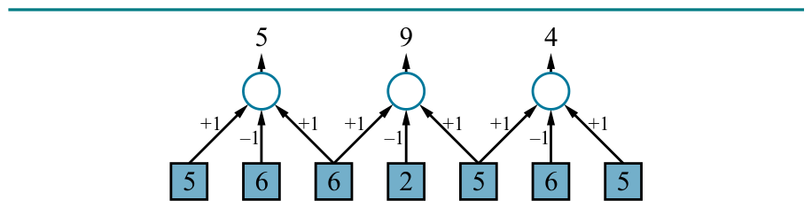
Example. The kernel \([+1,-1,+1]\) gives \(a-b+c\) on a window \((a,b,c)\), so it detects a dark pixel \(b\) between brighter neighbours. Take \(x=(5,6,6,2,5,6,5)\), stride 2, no padding. The windows are centred at positions 2, 4 and 6.例子。卷积核 \([+1,-1,+1]\) 在窗口 \((a,b,c)\) 上的输出为 \(a-b+c\)，因此它能检测出夹在较亮邻居之间的暗像素 \(b\)。取输入 \(x=(5,6,6,2,5,6,5)\)，步幅为 2，无填充。窗口的中心位于第 2、4、6 个位置。
- Position 2: \((5,6,6)\) gives \(5-6+6=5\).位置 2：\((5,6,6)\) 得到 \(5-6+6=5\)。
- Position 4: \((6,2,5)\) gives \(6-2+5=9\).位置 4：\((6,2,5)\) 得到 \(6-2+5=9\)。
- Position 6: \((5,6,5)\) gives \(5-6+5=4\).位置 6：\((5,6,5)\) 得到 \(5-6+5=4\)。
The output is \(z=(5,9,4)\). The peak 9 sits on the dark pixel 2.输出为 \(z=(5,9,4)\)。峰值 9 位于暗像素 2 上。
In 2D an \(F\times F\) filter slides over rows and columns. At each position the unit takes the dot product of the filter with the region under it, adds an offset and applies the activation function. All units share the same weights.在二维情况下，\(F\times F\) 滤波器在行和列上滑动。在每个位置，单元计算滤波器与其下区域的点积，加上偏置，再应用激活函数。所有单元共享相同的权重。

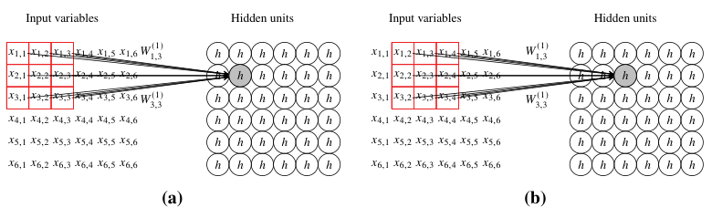
Step 2: the output size第 2 步：输出尺寸
In words: the filter starts at the first pixel and moves by the stride until it no longer fits inside the padded input; count the stops.用文字表述：滤波器从第一个像素开始，每次移动一个步幅，直到不能再完整放入填充后的输入为止；数一数它停了多少次。
Two special cases. "Valid" convolution has \(p=0\), so \(n_{\text{out}}=\lfloor(n-F)/s\rfloor+1\). "Same" padding uses \(p=(F-1)/2\) with odd \(F\), and gives \(\lceil n/s\rceil\), which is \(n\) for \(s=1\).两种特殊情况。“valid”卷积的填充为 \(p=0\)，因此输出尺寸为 \(n_{\text{out}}=\lfloor(n-F)/s\rfloor+1\)。“same”填充在卷积核大小 \(F\) 为奇数时使用 \(p=(F-1)/2\)，得到 \(\lceil n/s\rceil\)；在 \(s=1\) 时，输出即为 \(n\)。
Example: \(n=7\), \(F=3\), \(p=1\), \(s=2\). Then \(n+2p-F=7+2-3=6\), and \(6/2=3\), so \(n_{\text{out}}=3+1=4\). Another: \(n=9\), \(F=3\), \(p=0\), \(s=2\) gives \(\lfloor6/2\rfloor+1=4\).例如：\(n=7\)、\(F=3\)、\(p=1\)、\(s=2\)。则 \(n+2p-F=7+2-3=6\)，且 \(6/2=3\)，因此 \(n_{\text{out}}=3+1=4\)。另一个例子：\(n=9\)、\(F=3\)、\(p=0\)、\(s=2\) 得到 \(\lfloor6/2\rfloor+1=4\)。
Stride 2 on a \(6\times6\) image with a \(3\times3\) filter and same padding gives a \(3\times3\) output, still with only 10 parameters.在 \(6\times6\) 图像上，使用 \(3\times3\) 滤波器、步幅为 2、same 填充，得到 \(3\times3\) 输出，参数个数仍然只有 10 个。

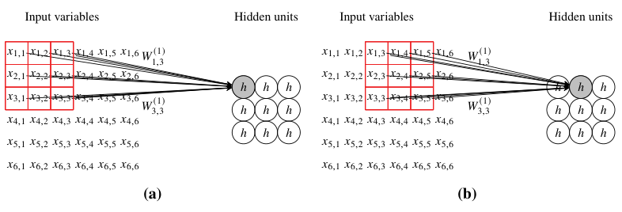
Convolution is also a linear map \(\mathbf z=K\mathbf x\). Each row of the matrix \(K\) holds the kernel, shifted by the stride, with zeros elsewhere. So gradient descent trains a convolutional layer like any other layer.卷积也是一个线性映射 \(\mathbf z=K\mathbf x\)。矩阵 \(K\) 的每一行都是卷积核，按步幅平移，其余位置为零。因此梯度下降训练卷积层的方式与训练其他层相同。
Practice练习
Q1. (Calculation) A \(32\times32\) input meets a \(5\times5\) filter. Give the output size for (a) \(p=0\), \(s=1\); (b) \(p=2\), \(s=1\); (c) \(p=0\), \(s=2\); (d) \(p=2\), \(s=2\).Q1.（计算）一个 \(32\times32\) 的输入与一个 \(5\times5\) 的滤波器相遇。给出下列各情形的输出尺寸：(a) \(p=0\)，\(s=1\)；(b) \(p=2\)，\(s=1\)；(c) \(p=0\)，\(s=2\)；(d) \(p=2\)，\(s=2\)。
Answer
With \(n_{\text{out}}=\lfloor(n+2p-F)/s\rfloor+1\): (a) \(\lfloor27/1\rfloor+1=28\); (b) \(\lfloor31/1\rfloor+1=32\) ("same" padding); (c) \(\lfloor27/2\rfloor+1=13+1=14\); (d) \(\lfloor31/2\rfloor+1=15+1=16=\lceil32/2\rceil\). The outputs are \(28\times28\), \(32\times32\), \(14\times14\) and \(16\times16\); the parameter count is the same in all four cases.在 \(n_{\text{out}}=\lfloor(n+2p-F)/s\rfloor+1\) 条件下：(a) \(\lfloor27/1\rfloor+1=28\)；(b) \(\lfloor31/1\rfloor+1=32\)（“same” 填充）；(c) \(\lfloor27/2\rfloor+1=13+1=14\)；(d) \(\lfloor31/2\rfloor+1=15+1=16=\lceil32/2\rceil\)。输出分别为 \(28\times28\)、\(32\times32\)、\(14\times14\) 和 \(16\times16\)；四种情形下的参数量均相同。
易错：先算括号里的整数，再向下取整，最后加 1。
Q2. (Trace) Input rows \((1,2,0,1)\), \((0,1,3,1)\), \((2,1,0,2)\), \((1,0,1,3)\); filter \(W\) with rows \((1,0)\) and \((0,-1)\); no padding, no offset, identity activation. Compute the output for (a) \(s=1\) and (b) \(s=2\).Q2.（手工演算）输入的各行为 \((1,2,0,1)\)、\((0,1,3,1)\)、\((2,1,0,2)\)、\((1,0,1,3)\)；滤波器 \(W\) 的各行为 \((1,0)\) 与 \((0,-1)\)；不填充、无偏置、激活函数为恒等映射。计算下列情形的输出：(a) \(s=1\)；(b) \(s=2\)。
Answer
Each output is \(q_{ij}=X_{i,j}-X_{i+1,j+1}\). (a) The size is \(\lfloor(4-2)/1\rfloor+1=3\); the rows are \((0,-1,-1)\), \((-1,1,1)\), \((2,0,-3)\). (b) The size is \(\lfloor(4-2)/2\rfloor+1=2\); the filter visits rows and columns 1 and 3, so the rows are \((0,-1)\) and \((2,-3)\), the entries of (a) at those positions.每个输出都是 \(q_{ij}=X_{i,j}-X_{i+1,j+1}\)。(a) 尺寸为 \(\lfloor(4-2)/1\rfloor+1=3\)；各行为 \((0,-1,-1)\)、\((-1,1,1)\)、\((2,0,-3)\)。(b) 尺寸为 \(\lfloor(4-2)/2\rfloor+1=2\)；滤波器只访问第 1、3 行和第 1、3 列，因此各行为 \((0,-1)\) 与 \((2,-3)\)，即 (a) 中对应位置上的元素。
Q3. (Explain) Write the matrix form of the 1D convolution with \(n=5\), \(F=3\), \(s=1\) and no padding. Why can the layer still be trained by gradient descent, and where is parameter sharing visible?Q3.（解释）给定 \(n=5\)、\(F=3\)、\(s=1\) 且不填充时，写出一维卷积的矩阵形式。为什么该层仍可用梯度下降训练？参数共享体现在哪里？
Answer
There are \(\lfloor(5-3)/1\rfloor+1=3\) outputs, \(z=Kx\) with共有 \(\lfloor(5-3)/1\rfloor+1=3\) 个输出，\(z=Kx\) 带有
\[K=\begin{pmatrix}k_1&k_2&k_3&0&0\\0&k_1&k_2&k_3&0\\0&0&k_1&k_2&k_3\end{pmatrix}.\]
The output is linear in \(x\) and in \(k\), so gradients flow through it like through any layer. Parameter sharing: only the three numbers \(k_1,k_2,k_3\) are free, repeated in every row shifted by the stride, instead of 15 independent weights.输出关于 \(x\) 与 \(k\) 均为线性的，因此梯度像经过任何其他层一样经过它。参数共享：只有三个数（\(k_1,k_2,k_3\)）是自由的，它们在每一行中按步幅平移后重复出现，而不是 15 个独立的权重。
Channels, feature maps and parameter counts ★★★通道、特征图与参数个数 ★★★
Goal. Give the output shape of a convolutional layer with several channels, and count its parameters and those of a dense layer.目标。给出带有多个通道的卷积层的输出形状，并计算它的参数个数以及全连接层的参数个数。
One filter detects one kind of feature. A layer therefore uses \(C_{\text{out}}\) filters. Each filter produces its own grid of units, a channel or feature map（特征图）. The layer output has the shape rows × columns × \(C_{\text{out}}\).一个滤波器检测一种特征。因此一层使用 \(C_{\text{out}}\) 个滤波器。每个滤波器产生自己的一张单元网格，即一个通道或特征图。该层的输出形状为 行数 × 列数 × \(C_{\text{out}}\)。
In words: one filter spans all input channels and gives one output channel, so \(C_{\text{out}}\) filters give \(C_{\text{out}}\) channels.用文字表述：一个滤波器跨越所有输入通道，并给出一个输出通道，因此 \(C_{\text{out}}\) 个滤波器给出 \(C_{\text{out}}\) 个通道。
A filter slides over rows and columns only. At each position it multiplies all \(F\times F\times C_{\text{in}}\) values under it with its weights and adds them into one number. Channels have no neighbourhood, so nothing slides along the channel axis. The weight tensor has the shape \(F\times F\times C_{\text{in}}\times C_{\text{out}}\).滤波器只在行和列上滑动。在每个位置，它把其下所有 \(F\times F\times C_{\text{in}}\) 个值与其权重相乘，并将结果相加成一个数。通道之间没有邻近关系，因此不沿通道维度滑动。权重张量的形状为 \(F\times F\times C_{\text{in}}\times C_{\text{out}}\)。
Numbers. A layer with 8 filters of \(3\times3\) on an RGB input has \((3\cdot3\cdot3+1)\cdot8=28\cdot8=224\) parameters. A dense layer from an \(8\times8\times3\) input (192 values) to 100 units has \((192+1)\cdot100=19{,}300\) parameters. Pooling and flatten layers have 0 parameters.数字。一层有 8 个 \(3\times3\) 滤波器作用于 RGB 输入，参数个数为 \((3\cdot3\cdot3+1)\cdot8=28\cdot8=224\)。从 \(8\times8\times3\) 输入（192 个值）到 100 个单元的全连接层，参数个数为 \((192+1)\cdot100=19{,}300\)。池化层和展平层的参数个数为 0。
A minibatch of \(B\) images is a four-dimensional tensor, rows × columns × channels × \(B\). This matches the minibatch gradient of SGD (Section 9.4).一批 \(B\) 张图像是一个四维张量，形状为 行数 × 列数 × 通道数 × \(B\)。这与 SGD 的小批量梯度一致（见第 9.4 节）。
Practice练习
Q1. (Calculation) A convolutional layer takes a \(32\times32\times3\) input and applies 10 filters of size \(5\times5\) with \(s=1\), \(p=0\). Give (a) the output shape, (b) the number of parameters, (c) the number of multiplications for one image (ignore offsets).Q1.（计算）一个卷积层接收 \(32\times32\times3\) 的输入，并应用 10 个尺寸为 \(5\times5\) 的滤波器，采用 \(s=1\)、\(p=0\)。给出 (a) 输出形状，(b) 参数数量，(c) 对一张图像的乘法次数（忽略偏置）。
Answer
(a) \(\lfloor(32-5)/1\rfloor+1=28\), so the shape is \(28\times28\times10\). (b) Each filter is \(5\times5\times3\): \((5\cdot5\cdot3+1)\cdot10=760\). (c) Each of the \(28\cdot28\cdot10=7840\) output units needs \(5\cdot5\cdot3=75\) multiplications: \(588{,}000\) in total.(a) \(\lfloor(32-5)/1\rfloor+1=28\)，因此形状为 \(28\times28\times10\)。(b) 每个滤波器为 \(5\times5\times3\)：\((5\cdot5\cdot3+1)\cdot10=760\)。(c) 每个输出单元（共 \(28\cdot28\cdot10=7840\) 个）需要 \(5\cdot5\cdot3=75\) 次乘法，总计 \(588{,}000\) 次。
思路：参数数与图像大小无关；计算量 = 输出单元数 × 每个单元的乘法数。
Q2. (Tensors) A minibatch of 8 greyscale \(28\times28\) images passes through (i) 16 filters of \(3\times3\), then (ii) 32 filters of \(3\times3\); both layers use \(s=1\) and zero-padding that keeps the size. Give the tensor shapes, the weight-tensor shapes and the parameters of both layers.Q2.（张量）由 8 张 \(28\times28\) 的灰度图像组成的小批量依次通过 (i) 16 个 \(3\times3\) 滤波器，然后通过 (ii) 32 个 \(3\times3\) 滤波器；两层都使用 \(s=1\) 以及保持尺寸不变的零填充。给出两层的张量形状、权重张量形状以及参数量。
Answer
The input has shape \(28\times28\times1\times8\). Layer (i): \(W^{(1)}\) has shape \(3\times3\times1\times16\), the output is \(28\times28\times16\times8\), and the parameters number \((9+1)\cdot16=160\). Layer (ii): each filter is \(3\times3\times16\), \(W^{(2)}\) has shape \(3\times3\times16\times32\), the output is \(28\times28\times32\times8\), and the parameters number \((9\cdot16+1)\cdot32=4640\).输入的形状为 \(28\times28\times1\times8\)。第 (i) 层：\(W^{(1)}\) 的形状为 \(3\times3\times1\times16\)，输出为 \(28\times28\times16\times8\)，参数数量为 \((9+1)\cdot16=160\)。第 (ii) 层：每个滤波器为 \(3\times3\times16\)，\(W^{(2)}\) 的形状为 \(3\times3\times16\times32\)，输出为 \(28\times28\times32\times8\)，参数数量为 \((9\cdot16+1)\cdot32=4640\)。
Pooling and layer-size reduction ★★★池化与层尺寸缩减 ★★★
Goal. Apply max and average pooling to a small grid, give the output size of a pooling layer, and compare pooling with a strided convolution.目标。对一个小网格应用最大池化和平均池化，给出池化层的输出尺寸，并比较池化与步幅卷积。
In words: pooling = replace each small window by one number, and do it separately in every channel.用文字表述：池化 = 把每个小窗口替换为一个数，并且在每个通道上分别进行。
A pooling layer（池化层）slides a window of size \(F\) with stride \(s\), like a convolution. The operation is fixed, not learned. So there are no trainable parameters and usually no activation function. The channel count is unchanged. The output size follows the convolution formula, normally with \(p=0\). With \(F=s\) the windows do not overlap.池化层以大小为 \(F\)、步幅为 \(s\) 的窗口滑动，与卷积类似。该运算是固定的，不需要学习。因此它没有可训练参数，通常也没有激活函数。通道数不变。输出尺寸遵循卷积公式，通常取 \(p=0\)。当 \(F=s\) 时，窗口互不重叠。
- Max pooling（最大池化）returns the largest value of the window. It says "this feature occurs somewhere in the window".最大池化返回窗口内的最大值。它表示“这个特征在窗口内的某处出现”。
- Average pooling（平均池化）returns the mean of the window. With \(F=s\) it downsamples（下采样）the map by the factor \(s\), so later layers need fewer weights.平均池化返回窗口内的平均值。取 \(F=s\) 时，它会把特征图按因子 \(s\) 下采样，因此后续层需要的权重更少。

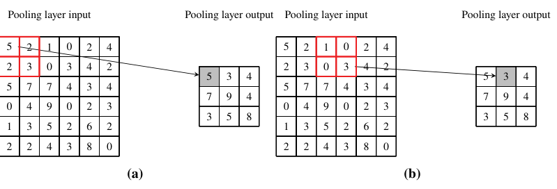
Output size with \(F\ne s\). A \(9\times9\) map with \(F=3\) and \(s=2\) gives \(\lfloor(9-3)/2\rfloor+1=4\). The windows overlap by one pixel.使用 \(F\ne s\) 计算输出尺寸。\(9\times9\) 的特征图，取 \(F=3\) 和 \(s=2\)，得到 \(\lfloor(9-3)/2\rfloor+1=4\)。窗口之间重叠一个像素。
Why pool? If the input moves by less than a window, the maximum often stays in the same window. Many outputs then do not change. Pooling therefore makes the network approximately invariant to small shifts. Large shifts still change the output.为什么要池化？如果输入的移动小于一个窗口，最大值往往仍留在同一个窗口里，因此许多输出不会改变。池化因此使网络对小的平移近似不变。大的平移仍会改变输出。
A convolution with stride 2 applies the filter at a quarter of the positions of a stride-1 convolution. It needs four times fewer computations than stride-1 convolution followed by stride-2 pooling, with the same output size and the same parameters.步幅为 2 的卷积只在步幅为 1 的卷积的四分之一位置上应用滤波器。与“步幅为 1 的卷积再接步幅为 2 的池化”相比，它需要的计算量少四倍，输出尺寸和参数都相同。
Practice练习
Q1. (Calculation) A feature map of shape \(24\times24\times6\) is pooled without padding. Give the output shape and the parameter count for (a) \(F=2\), \(s=2\) and (b) \(F=3\), \(s=2\).Q1.（计算）形状为 \(24\times24\times6\) 的特征图经无填充池化。给出下列情形的输出形状与参数数量：(a) \(F=2\)，\(s=2\)；(b) \(F=3\)，\(s=2\)。
Answer
(a) \(\lfloor(24-2)/2\rfloor+1=12\): shape \(12\times12\times6\). (b) \(\lfloor(24-3)/2\rfloor+1=\lfloor10.5\rfloor+1=11\): shape \(11\times11\times6\); the windows overlap and the last row and column are never covered. The channel count is unchanged and there are 0 parameters in both cases.(a) \(\lfloor(24-2)/2\rfloor+1=12\)：形状为 \(12\times12\times6\)。(b) \(\lfloor(24-3)/2\rfloor+1=\lfloor10.5\rfloor+1=11\)：形状为 \(11\times11\times6\)；窗口相互重叠，并且最后一行和最后一列从未被覆盖。两种情形下通道数均保持不变，参数数量均为 0。
Q2. (Compare) Compare max pooling and average pooling.Q2.（比较）比较最大池化与平均池化。
Answer
Both slide a fixed window with a stride, act per channel and have no parameters. Max pooling outputs the largest value, so it signals "the feature occurs somewhere in this window" (a logical OR) and tolerates small shifts. Average pooling outputs the mean, which is a convolution with a uniform kernel; with \(F=s\) it mainly coarsens the resolution by \(s\), supporting multiscale recognition and reducing the weights of later layers.二者都以步幅滑动一个固定窗口，逐通道作用，且都没有参数。最大池化输出最大值，因此它表示“该特征在此窗口内的某处出现”（逻辑“或”），并能容忍小的平移。平均池化输出均值，它相当于使用均匀核的卷积；在 \(F=s\) 时，它主要以 \(s\) 为因子降低分辨率，从而支持多尺度识别并减少后续各层的权重。
Receptive field ★★感受野 ★★
Goal. Compute the receptive field of a unit after several convolution and pooling layers.目标。计算单元在经过若干卷积层和池化层之后的感受野。

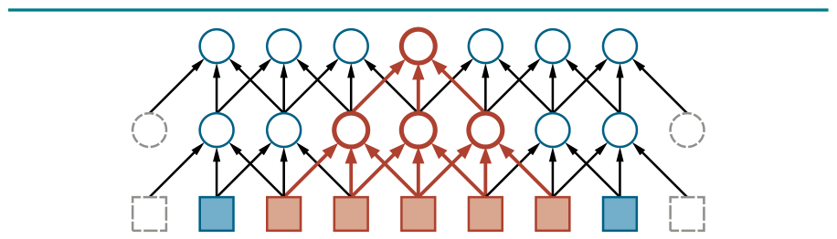
In words: each layer widens the field by the filter size minus 1, measured in steps of the layers below; every stride makes those steps longer.用文字表述：每一层按滤波器大小减 1 来扩大感受野，计量单位是下面各层的步长；每个步幅都会使这些步长变得更长。
With stride 1 everywhere, a unit in layer \(m\) has the field \((F-1)m+1\) per dimension. This is linear in depth: with \(F=3\) the fields are 3, 5, 7, and so on. Once a stride above 1 or a pooling layer occurs, one step in layer \(m\) covers several input pixels. The field then grows exponentially with depth.若所有步幅都为 1，则第 \(m\) 层的单元在每个维度上的感受野为 \((F-1)m+1\)。它随深度线性增长：\(F=3\) 时感受野依次为 3、5、7，依此类推。一旦出现步幅大于 1 的层或池化层，\(m\) 层中的一步就会覆盖多个输入像素，此后感受野随深度呈指数增长。
How to do it by hand: 1. Start with \(r_0=1\) and \(j_0=1\). 2. For each layer, first add \((F_m-1)j_{m-1}\) to \(r\). 3. Then multiply \(j\) by the stride of that layer. 4. Write the layer results in a table.手工计算方法：1. 从 \(r_0=1\) 和 \(j_0=1\) 开始。2. 对每一层，先把 \((F_m-1)j_{m-1}\) 加到 \(r\) 上。3. 再把 \(j\) 乘以该层的步幅。4. 把各层结果写在表格中。
Stacked small filters reach the same field as one large filter with fewer parameters. For example, two \(3\times3\) layers see \(5\times5\) pixels with \(2\cdot9C^2\) weights instead of \(25C^2\), for \(C\) channels in and out.叠加的小滤波器与一个大滤波器可以达到相同的感受野，但参数更少。例如，两个 \(3\times3\) 层看到 \(5\times5\) 个像素，只需要 \(2\cdot9C^2\) 个权重，而不是 \(25C^2\) 个，前提是输入和输出各有 \(C\) 个通道。
Practice练习
Q1. (Calculation) A CNN stacks convolutional layers with \(F=3\), \(s=1\). (a) What is the receptive field of a unit in layer 3? (b) How many layers give a receptive field of at least 15 pixels?Q1.（计算）一个 CNN 堆叠卷积层，设置为 \(F=3\)、\(s=1\)。(a) 第 3 层中一个单元的感受野是多少？(b) 至少需要几层才能使感受野不小于 15 个像素？
Answer
\(r_m=(F-1)m+1=2m+1\). (a) \(r_3=7\) pixels per dimension, i.e. \(49\) input pixels. (b) \(2m+1\ge15\) gives \(m\ge7\).\(r_m=(F-1)m+1=2m+1\)。(a) 每个维度 \(r_3=7\) 个像素，即 \(49\) 个输入像素。(b) \(2m+1\ge15\) 给出 \(m\ge7\)。
Q2. (Calculation with pooling) A network is conv \(3\times3\) (\(s=1\)) → max-pool \(2\times2\) (\(s=2\)) → conv \(3\times3\) (\(s=1\)) → max-pool \(2\times2\) (\(s=2\)) → conv \(3\times3\) (\(s=1\)). Give the receptive field after each layer.Q2.（含池化的计算）某网络结构为：卷积 \(3\times3\)（\(s=1\)）→ 最大池化 \(2\times2\)（\(s=2\)）→ 卷积 \(3\times3\)（\(s=1\)）→ 最大池化 \(2\times2\)（\(s=2\)）→ 卷积 \(3\times3\)（\(s=1\)）。给出每一层之后的感受野。
Answer
Start with \(r_0=j_0=1\). Layer 1: \(r=1+2\cdot1=3\), \(j=1\). Layer 2 (pool): \(r=3+1\cdot1=4\), \(j=2\). Layer 3: \(r=4+2\cdot2=8\), \(j=2\). Layer 4 (pool): \(r=8+1\cdot2=10\), \(j=4\). Layer 5: \(r=10+2\cdot4=18\). The fields are \(3,4,8,10,18\).从 \(r_0=j_0=1\) 开始。第 1 层：\(r=1+2\cdot1=3\)，\(j=1\)。第 2 层（池化）：\(r=3+1\cdot1=4\)，\(j=2\)。第 3 层：\(r=4+2\cdot2=8\)，\(j=2\)。第 4 层（池化）：\(r=8+1\cdot2=10\)，\(j=4\)。第 5 层：\(r=10+2\cdot4=18\)。各层的感受野为 \(3,4,8,10,18\)。
易错：有步幅或池化之后不能再用 (F−1)m+1，要逐层用间距 j 递推。
Full CNN architectures ★★完整的 CNN 结构 ★★
Goal. Fill a layer-by-layer table of shapes, hidden units and parameters for a small CNN, and say where most parameters sit.目标。为一个小型 CNN 填写逐层的形状、隐藏单元和参数表，并说明参数主要集中在哪里。
In words: a CNN shrinks rows and columns and grows the number of channels, then flattens the result and ends with dense layers and a softmax.用文字表述：CNN 减小行数和列数、增加通道数，然后把结果展平，最后接全连接层和 softmax。
Early layers find simple local features at fine resolution. Deeper layers combine them into higher-level features, which needs more channels but not full resolution. Strides and pooling cut the size. After a few such layers the tensor is flattened, that is, written as one long vector, and passed to one or more dense layers. For \(M\) classes the last layer gives \(M\) logits (raw scores) followed by a softmax (Section 9.2).早期层在高分辨率下找出简单的局部特征。更深的层把它们组合成更高层的特征，这需要更多通道，但不需要全分辨率。步幅和池化用来缩小尺寸。经过几层这样的处理后，张量被展平，即写成一个长向量，再传给一个或多个全连接层。对于 \(M\) 个类别，最后一层给出 \(M\) 个 logits（原始分数），再接一个 softmax（第 9.2 节）。

The figure shows \(6\times6\times1\), then \(6\times6\times4\) (four \(3\times3\) filters, \(s=1\), same padding), then \(3\times3\times6\) (six filters of \(3\times3\times4\), \(s=2\)). The \(3\cdot3\cdot6=54\) units are flattened into a dense layer, then \(M\) logits and a softmax.图中先是 \(6\times6\times1\)，然后是 \(6\times6\times4\)（四个 \(3\times3\) 滤波器，\(s=1\)，same 填充），再是 \(3\times3\times6\)（六个 \(3\times3\times4\) 滤波器，\(s=2\)）。\(3\cdot3\cdot6=54\) 个单元被展平后接入一个全连接层，然后是 \(M\) 个 logits 和一个 softmax。
Every layer type follows a fixed rule, per dimension, with \(C\) channels.每种层类型都遵循固定的规则，逐个维度计算；通道数记为 \(C\)。
| Layer层 | Output size输出尺寸 | Parameters参数 |
|---|---|---|
| Convolution卷积 | \(\lfloor(n+2p-F)/s\rfloor+1\), with \(C_{\text{out}}\) channels\(\lfloor(n+2p-F)/s\rfloor+1\)，通道数为 \(C_{\text{out}}\) | \((F^2C_{\text{in}}+1)\,C_{\text{out}}\) |
| Pooling池化 | \(\lfloor(n-F)/s\rfloor+1\), channels unchanged\(\lfloor(n-F)/s\rfloor+1\)，通道数不变 | 0 |
| Flatten展平 | rows × columns × channels values行数 × 列数 × 通道数个值 | 0 |
| Dense全连接 | \(n_{\text{out}}\) units\(n_{\text{out}}\) 个单元 | \((n_{\text{in}}+1)\,n_{\text{out}}\) |
| Softmax | unchanged不变 | 0 |
How to do it by hand: 1. For each layer, compute the output shape. 2. Hidden units = rows × columns × channels. 3. Count the parameters with the rule of the table. 4. Add up, and see which layer is the largest.手工计算方法：1. 对每一层，计算输出形状。2. 隐藏单元数 = 行数 × 列数 × 通道数。3. 按表中的规则计算参数个数。4. 相加，并看哪一层最大。
| Layer层 | 1 conv卷积层 1 | 2 conv卷积层 2 | 3 conv卷积层 3 | 4 dense全连接层 4 | 5 dense全连接层 5 |
|---|---|---|---|---|---|
| Filters or units滤波器或单元 | 4 × (5×5) | 8 × (5×5) | 12 × (4×4) | 200 | 10 |
| Stride步幅 | 1 | 2 | 2 | – | – |
| Output shape输出形状 | 28×28×4 | 14×14×8 | 7×7×12 | 200 | 10 |
| Hidden units隐藏单元 | 3136 | 1568 | 588 | 200 | 10 |
| Parameters参数 | (5·5·1+1)·4 = 104 | (5·5·4+1)·8 = 808 | (4·4·8+1)·12 = 1548 | (588+1)·200 = 117,800 | (200+1)·10 = 2010 |
The total is \(104+808+1548+117{,}800+2010=122{,}270\) parameters. The first dense layer holds \(117{,}800/122{,}270\approx96\%\) of them. The dense layers hold most parameters of a CNN, because a dense layer has no weight sharing.总参数个数为 \(104+808+1548+117{,}800+2010=122{,}270\) 个。第一个全连接层占其中的 \(117{,}800/122{,}270\approx96\%\) 个。全连接层占据了 CNN 的大部分参数，因为全连接层没有权重共享。
Practice练习
Q1. (Calculation) A network for \(32\times32\times3\) input: conv (6 filters \(5\times5\), \(s=1\), \(p=0\)) → max-pool \(2\times2\) (\(s=2\)) → conv (16 filters \(5\times5\), \(s=1\), \(p=0\)) → max-pool \(2\times2\) (\(s=2\)) → flatten → dense 120 → dense 84 → dense 10 (softmax). Give the shape after each layer and the parameters per layer and in total. Where are most parameters?Q1.（计算）一个用于 \(32\times32\times3\) 输入的网络：卷积（6 个滤波器 \(5\times5\)、\(s=1\)、\(p=0\)）→ 最大池化 \(2\times2\)（\(s=2\)）→ 卷积（16 个滤波器 \(5\times5\)、\(s=1\)、\(p=0\)）→ 最大池化 \(2\times2\)（\(s=2\)）→ 展平 → 全连接 120 → 全连接 84 → 全连接 10（Softmax）。给出每一层之后的形状以及每层和总的参数量。大部分参数位于何处？
Answer
Shapes: \(28\times28\times6\), \(14\times14\times6\), \(10\times10\times16\), \(5\times5\times16\), flatten \(400\), then \(120\), \(84\), \(10\). Parameters: conv1 \((5\cdot5\cdot3+1)\cdot6=456\); conv2 \((5\cdot5\cdot6+1)\cdot16=2416\); dense 1 \((400+1)\cdot120=48{,}120\); dense 2 \((120+1)\cdot84=10{,}164\); dense 3 \((84+1)\cdot10=850\); pooling and flatten 0. The total is \(62{,}006\). The dense layers hold \(59{,}134\) (95%), the first one alone 78%.形状：\(28\times28\times6\)、\(14\times14\times6\)、\(10\times10\times16\)、\(5\times5\times16\)，展平后为 \(400\)，然后为 \(120\)、\(84\)、\(10\)。参数：卷积 1 为 \((5\cdot5\cdot3+1)\cdot6=456\)；卷积 2 为 \((5\cdot5\cdot6+1)\cdot16=2416\)；全连接 1 为 \((400+1)\cdot120=48{,}120\)；全连接 2 为 \((120+1)\cdot84=10{,}164\)；全连接 3 为 \((84+1)\cdot10=850\)；池化和展平为 0。总计为 \(62{,}006\)。全连接层共占 \(59{,}134\)（95%），其中仅第一个全连接层就占 78%。
思路：逐层用输出尺寸公式，再数参数；池化和展平为 0。
Q2. (Calculation) For the network of the figure (\(6\times6\) input; four \(3\times3\) filters, \(s=1\); six \(3\times3\times4\) filters, \(s=2\); dense layer with \(U_3=20\) units; \(M=10\) logits) give the total number of parameters.Q2.（计算）对于图中的网络（输入 \(6\times6\)；四个 \(3\times3\) 滤波器，\(s=1\)；六个 \(3\times3\times4\) 滤波器，\(s=2\)；含 \(U_3=20\) 个单元的全连接层；\(M=10\) 个 logits），给出参数总数。
Answer
Conv1: \((3\cdot3\cdot1+1)\cdot4=40\). Conv2: \((3\cdot3\cdot4+1)\cdot6=222\). The second hidden layer has \(3\cdot3\cdot6=54\) units, so dense 1 has \((54+1)\cdot20=1100\) and the logit layer \((20+1)\cdot10=210\). The softmax has no parameters. Total: \(40+222+1100+210=1572\).卷积 1：\((3\cdot3\cdot1+1)\cdot4=40\)。卷积 2：\((3\cdot3\cdot4+1)\cdot6=222\)。第二个隐藏层有 \(3\cdot3\cdot6=54\) 个单元，因此全连接 1 为 \((54+1)\cdot20=1100\)，logits 层为 \((20+1)\cdot10=210\)。Softmax 没有参数。总计：\(40+222+1100+210=1572\)。
Residual networks ★残差网络 ★
In a plain deep network every layer replaces the representation of the layer before. A layer with zero weights then blocks the signal, and the gradient to earlier layers vanishes (the vanishing-gradient（梯度消失）problem). A residual network（残差网络）lets each layer add a correction to its input instead.在普通的深层网络中，每一层都会替换前一层的表示。如果某一层的权重为零，它就会阻断信号，传回前面各层的梯度也会消失，即梯度消失问题。残差网络改为让每一层在其输入上加一个修正量。
With \(V=0\) and ReLU, \(f=0\) and the layer is an identity: \(\text{ReLU}(\text{ReLU}(a))=\text{ReLU}(a)\). The rest of the network works as if the layer were absent, so information and gradients pass by default and very deep networks stay trainable.当 \(V=0\) 与 ReLU 结合，且 \(f=0\) 时，该层就是恒等映射：\(\text{ReLU}(\text{ReLU}(a))=\text{ReLU}(a)\)。网络的其余部分就像该层不存在一样工作，因此信息和梯度默认可以直接通过，非常深的网络仍然可以训练。
Practice练习
Q1. (Calculation) Let \(z^{(i-1)}=(1,2)^\top\), \(W\) with rows \((1,-1)\) and \((2,0)\), \(V\) with rows \((1,0)\) and \((0,-1)\), \(g=g_r=\text{ReLU}\), no offsets. Compute \(z^{(i)}\) for the residual layer.Q1.（计算）设 \(z^{(i-1)}=(1,2)^\top\)、\(W\)（各行分别为 \((1,-1)\) 与 \((2,0)\)）、\(V\)（各行分别为 \((1,0)\) 与 \((0,-1)\)）、\(g=g_r=\text{ReLU}\)，均无偏置。计算残差层的 \(z^{(i)}\)。
Answer
\(Wz=(1\cdot1-1\cdot2,\;2\cdot1+0\cdot2)=(-1,2)\); \(g(Wz)=(0,2)\); \(f(z)=V(0,2)^\top=(0,-2)\); \(z+f(z)=(1,0)\); \(z^{(i)}=\text{ReLU}(1,0)=(1,0)\).
Terms to recognise ★需要认识的术语 ★
| Term术语 | What to know要知道什么 |
|---|---|
| Cross-correlation互相关 | What CNNs call convolution: the kernel is not flippedCNN 所说的卷积：卷积核不翻转 |
| Shift equivariance平移等变性 | Moving a pattern moves its response in the feature map by the same amount; pooling then gives approximate invariance模式平移多少，它在特征图中的响应就移动多少；池化之后则得到近似不变性 |
| Flatten展平 | Writes the last feature map as one vector for the dense layers; 0 parameters把最后一个特征图写成一个向量，供全连接层使用；参数个数为 0 |
| \(1\times1\) convolution\(1\times1\) 卷积 | A dense layer applied at each pixel; changes the number of channels cheaply在每个像素上应用的全连接层；代价小地改变通道数 |
| Bottleneck block瓶颈块 | \(1\times1\) layers shrink and restore the channels, so the \(3\times3\) filters work on fewer channels\(1\times1\) 层先缩减再恢复通道数，因此 \(3\times3\) 滤波器作用在更少的通道上 |
| Skip connection跳跃连接 | Adds the input of a layer to its output; needs equal shapes把层的输入加到其输出上；要求形状相同 |
| Valid and same paddingvalid 与 same 填充 | \(p=0\) shrinks the map; \(p=(F-1)/2\) keeps the size for \(s=1\)\(p=0\) 使特征图缩小；\(p=(F-1)/2\) 保持尺寸，适用于 \(s=1\) |
| Downsampling下采样 | Reduces the resolution by the stride; average pooling with \(F=s\) does it按步幅降低分辨率；\(F=s\) 的平均池化可以做到这一点 |
| Multiscale recognition多尺度识别 | After downsampling, a classifier for small objects also finds large ones下采样之后，用于小目标的分类器也能找到大目标 |
| Convolution on other data其他数据上的卷积 | CNNs suit any grid: 1D audio, 2D images, 3D scans and videoCNN 适用于任何网格数据：一维音频、二维图像、三维扫描和视频 |
Exam-style questions考试题型练习
Q1. (Calculation: shapes, parameters, receptive field — 12 marks) A network classifies \(64\times64\) RGB images into 10 classes: Conv1 (16 filters \(3\times3\), \(s=1\), \(p=1\), ReLU) → MaxPool (\(2\times2\), \(s=2\)) → Conv2 (32 filters \(3\times3\), \(s=1\), \(p=1\), ReLU) → MaxPool (\(2\times2\), \(s=2\)) → Flatten → Dense (100, ReLU) → Dense (10, softmax). (a) Give the output shape of every layer. (4 marks) (b) Give the parameters of every layer and the total, counting offsets. (4 marks) (c) Which layer has the most parameters, and what change reduces it? (2 marks) (d) What is the receptive field of a Conv2 output unit? (2 marks)Q1.（计算：形状、参数与感受野，12 分）一个网络将 \(64\times64\) 的 RGB 图像分为 10 类：Conv1（16 个滤波器 \(3\times3\)、\(s=1\)、\(p=1\)，ReLU）→ MaxPool（\(2\times2\)，\(s=2\)）→ Conv2（32 个滤波器 \(3\times3\)、\(s=1\)、\(p=1\)，ReLU）→ MaxPool（\(2\times2\)，\(s=2\)）→ Flatten → Dense（100，ReLU）→ Dense（10，Softmax）。(a) 给出每一层的输出形状。（4 分）(b) 给出每一层的参数量以及总参数量（计入偏置）。（4 分）(c) 哪一层的参数最多？什么改动可以减少它的参数？（2 分）(d) Conv2 输出单元的感受野是多少？（2 分）
Answer
(a) Conv1: \(\lfloor(64+2-3)/1\rfloor+1=64\), shape \(64\times64\times16\). MaxPool: \(\lfloor(64-2)/2\rfloor+1=32\), shape \(32\times32\times16\). Conv2: \(32\times32\times32\). MaxPool: \(16\times16\times32\). Flatten: \(16\cdot16\cdot32=8192\). Dense: 100. Output: 10.(a) Conv1：\(\lfloor(64+2-3)/1\rfloor+1=64\)，形状为 \(64\times64\times16\)。MaxPool：\(\lfloor(64-2)/2\rfloor+1=32\)，形状为 \(32\times32\times16\)。Conv2：\(32\times32\times32\)。MaxPool：\(16\times16\times32\)。Flatten：\(16\cdot16\cdot32=8192\)。Dense：100。输出：10。
(b) Conv1: \((3\cdot3\cdot3+1)\cdot16=448\). Conv2: \((3\cdot3\cdot16+1)\cdot32=4640\). Dense 1: \((8192+1)\cdot100=819{,}300\). Dense 2: \((100+1)\cdot10=1010\). Pooling and flatten: 0. Total: \(825{,}398\).(b) Conv1：\((3\cdot3\cdot3+1)\cdot16=448\)。Conv2：\((3\cdot3\cdot16+1)\cdot32=4640\)。Dense 1：\((8192+1)\cdot100=819{,}300\)。Dense 2：\((100+1)\cdot10=1010\)。池化与展平：0。总计：\(825{,}398\)。
(c) The first dense layer, with \(819{,}300\) parameters (99.3% of the total), because it connects 8192 flattened values to 100 units without weight sharing. One more \(2\times2\) pooling layer before flattening gives \(8\cdot8\cdot32=2048\) inputs and \(204{,}900\) parameters, four times fewer; fewer dense units also help.(c) 第一个全连接层，其参数量为 \(819{,}300\)（占总数的 99.3%），因为它将 8192 个展平后的值连接到 100 个单元，且没有权重共享。在展平之前再增加一个 \(2\times2\) 池化层，会得到 \(8\cdot8\cdot32=2048\) 个输入和 \(204{,}900\) 个参数，减少为原来的四分之一；减少全连接单元数也有帮助。
(d) Conv1: \(r=3\), \(j=1\). MaxPool: \(r=3+(2-1)\cdot1=4\), \(j=2\). Conv2: \(r=4+(3-1)\cdot2=8\). Each Conv2 unit sees \(8\times8\) input pixels.(d) Conv1：\(r=3\)，\(j=1\)。MaxPool：\(r=3+(2-1)\cdot1=4\)，\(j=2\)。Conv2：\(r=4+(3-1)\cdot2=8\)。每个 Conv2 单元看到 \(8\times8\) 个输入像素。
思路：先用输出尺寸公式逐层算形状，再数参数（卷积层看滤波器，全连接层看输入乘输出），池化和展平没有参数。
Q2. (Explain and calculate — 10 marks) The first layer of a network for \(224\times224\) RGB images has 64 filters of \(7\times7\) with stride 2 and padding 3. (a) Give its output shape. (2 marks) (b) Give its number of parameters. (2 marks) (c) How many parameters would a dense layer with the same inputs and outputs need? (2 marks) (d) Which two properties of the convolutional layer explain the difference, and what do they mean for an object that appears at different positions? (4 marks)Q2.（解释并计算，10 分）用于 \(224\times224\) 的 RGB 图像的网络，其第一层有 64 个 \(7\times7\) 滤波器，步幅为 2，填充为 3。(a) 给出其输出形状。（2 分）(b) 给出其参数数量。（2 分）(c) 相同输入与输出情形下，全连接层需要多少参数？（2 分）(d) 卷积层的哪两个性质解释了这一差异？它们对于出现在不同位置的物体意味着什么？（4 分）
Answer
(a) \(\lfloor(224+6-7)/2\rfloor+1=\lfloor111.5\rfloor+1=112\), so the shape is \(112\times112\times64\) (\(802{,}816\) units).(a) \(\lfloor(224+6-7)/2\rfloor+1=\lfloor111.5\rfloor+1=112\)，因此形状为 \(112\times112\times64\)（\(802{,}816\) 个单元）。
(b) \((7\cdot7\cdot3+1)\cdot64=9472\).
(c) The input has \(224\cdot224\cdot3=150{,}528\) values, so \((150{,}528+1)\cdot802{,}816\approx1.2\times10^{11}\) parameters, about \(1.3\times10^{7}\) times more.(c) 输入有 \(224\cdot224\cdot3=150{,}528\) 个值，因此参数量为 \((150{,}528+1)\cdot802{,}816\approx1.2\times10^{11}\)，约为卷积层的 \(1.3\times10^{7}\) 倍。
(d) Sparse interactions: each unit depends only on a \(7\times7\times3\) region, so almost all dense weights are forced to zero. Parameter sharing: all units of a channel use the same filter, so one set of 148 numbers is reused at all \(112\cdot112\) positions. The parameter count is therefore independent of the image size, less data is needed, and the same pattern gives the same response wherever it appears (the response moves with the pattern); pooling later turns this into approximate invariance to small shifts.(d) 稀疏连接：每个单元仅依赖于一个 \(7\times7\times3\) 区域，因此几乎所有全连接权重都被强制为零。参数共享：同一通道的所有单元使用同一个滤波器，因此同一组 148 个数会在全部 \(112\cdot112\) 个位置上重复使用。因此，参数量与图像尺寸无关，所需的数据也更少，并且同一模式无论出现在何处都给出相同的响应（响应随模式一起移动）；随后的池化使之近似地对小的平移具有不变性。
Q3. (Pooling — 10 marks) Feature map \(A\) has rows \((6,1,2,0)\), \((1,0,7,3)\), \((4,2,1,0)\), \((0,3,5,2)\). Map \(B\) is \(A\) shifted one pixel to the right (first column filled with zeros, last column dropped): rows \((0,6,1,2)\), \((0,1,0,7)\), \((0,4,2,1)\), \((0,0,3,5)\). (a) Compute \(2\times2\) max pooling and average pooling with stride 2 for \(A\) and \(B\). (4 marks) (b) What do the results show about small shifts? Is max pooling always unchanged by a one-pixel shift? (3 marks) (c) Give one advantage of replacing "convolution with \(s=1\) + pooling with \(s=2\)" by a convolution with \(s=2\). (3 marks)Q3.（池化，10 分）特征图 \(A\) 的各行为 \((6,1,2,0)\)、\((1,0,7,3)\)、\((4,2,1,0)\)、\((0,3,5,2)\)。特征图 \(B\) 是 \(A\) 向右平移一个像素的结果（第一列补零，最后一列舍去）：各行为 \((0,6,1,2)\)、\((0,1,0,7)\)、\((0,4,2,1)\)、\((0,0,3,5)\)。(a) 计算 \(2\times2\) 步幅为 2 的最大池化与平均池化，分别针对 \(A\) 与 \(B\)。（4 分）(b) 结果说明了关于小平移的什么？最大池化是否总是在一个像素的平移下保持不变？（3 分）(c) 将“卷积（\(s=1\)）加池化（\(s=2\)）”替换为 \(s=2\) 的卷积，请给出一个优点。（3 分）
Answer
(a) The windows are rows 1–2 and 3–4 combined with columns 1–2 and 3–4. Max pooling gives rows \((6,7)\) and \((4,5)\) for both \(A\) and \(B\). Average pooling gives, for \(A\), rows \((2,3)\) and \((2.25,2)\); for \(B\), rows \((1.75,2.5)\) and \((1,2.75)\).(a) 窗口由第 1–2 行与第 3–4 行分别同第 1–2 列与第 3–4 列组合而成。最大池化对 \(A\) 与 \(B\) 两者都给出行 \((6,7)\) 与 \((4,5)\)。平均池化对 \(A\) 给出行 \((2,3)\) 与 \((2.25,2)\)；对 \(B\) 给出行 \((1.75,2.5)\) 与 \((1,2.75)\)。
(b) The shift left every maximum inside its window, so the max-pooling output did not change, whereas average pooling changed in every window. Pooling, especially max pooling, makes the output approximately invariant to small translations. It is not guaranteed: a maximum in the last column of a window moves into the neighbouring window under a one-pixel shift and changes the output.(b) 平移后每个最大值仍留在其窗口之内，因此最大池化的输出没有改变，而平均池化在每个窗口中都发生了变化。池化，尤其是最大池化，使输出对小的平移近似不变。但这并非必然：窗口最后一列中的最大值在一个像素的平移下会移入相邻窗口，从而改变输出。
(c) The convolution with \(s=2\) applies the filter at only a quarter of the positions, so it needs four times fewer computations for the same output size and the same number of parameters.(c) 采用 \(s=2\) 的卷积仅在四分之一的位置上施加滤波器，因此在输出尺寸与参数数量相同的情况下，其计算量为原来的四分之一。
Q4. (Receptive field — 10 marks) Each unit of the last convolutional layer of a classifier must see at least 32 input pixels per dimension. (a) How many \(3\times3\) convolutional layers with stride 1 are needed? (2 marks) (b) Compute the receptive field after each layer of the stack [conv \(3\times3\) (\(s=1\)), conv \(3\times3\) (\(s=1\)), max-pool \(2\times2\) (\(s=2\))] repeated three times, and state the layer at which 32 is first reached. (5 marks) (c) Explain why the field grows faster in (b) and name one cost. (3 marks)Q4.（感受野，10 分）分类器最后一个卷积层的每个单元，在每个维度上必须至少看到 32 个输入像素。(a) 需要多少个步幅为 1 的 \(3\times3\) 卷积层？（2 分）(b) 计算由 [卷积 \(3\times3\)（\(s=1\)）、卷积 \(3\times3\)（\(s=1\)）、最大池化 \(2\times2\)（\(s=2\)）] 堆叠三次所构成的网络中，每一层之后的感受野，并指出首次达到 32 的层。（5 分）(c) 解释为什么 (b) 中感受野增长得更快，并说出一项代价。（3 分）
Answer
(a) \(r_m=2m+1\ge32\) gives \(m\ge15.5\), so 16 layers (\(r=33\)).(a) \(r_m=2m+1\ge32\) 给出 \(m\ge15.5\)，因此需要 16 层（\(r=33\)）。
(b) With \(r_m=r_{m-1}+(F_m-1)j_{m-1}\) and \(j_m=j_{m-1}s_m\), layers 1–9 give \(r=3,5,6,10,14,16,24,32,36\) and \(j=1,1,2,2,2,4,4,4,8\). The field first reaches 32 at layer 8 (the second convolution of block 3); after the last pooling layer it is 36. Nine layers suffice instead of 16.(b) 在 \(r_m=r_{m-1}+(F_m-1)j_{m-1}\) 与 \(j_m=j_{m-1}s_m\) 的条件下，第 1–9 层分别给出 \(r=3,5,6,10,14,16,24,32,36\) 与 \(j=1,1,2,2,2,4,4,4,8\)。感受野首次在第 8 层（第 3 个块中的第二个卷积）达到 32；在最后一个池化层之后，它为 36。九层即已足够，而不必 16 层。
(c) Each pooling layer doubles the spacing \(j\) between neighbouring units, so every later \(3\times3\) convolution adds \((F-1)j=2j\) input pixels instead of 2: growth is exponential in the number of strided or pooling layers instead of linear. The cost is resolution: units are \(j\) pixels apart, so the exact position of small details is lost, and max pooling discards the rest of each window.(c) 每个池化层都会使相邻单元之间的间距（\(j\)）加倍，因此之后每个 \(3\times3\) 卷积会增加 \((F-1)j=2j\) 个输入像素，而不是 2 个：感受野的增长相对于步幅层或池化层的数量呈指数式增长，而非线性增长。代价在于分辨率：单元之间相距 \(j\) 个像素，因此小细节的确切位置会丢失，且最大池化会丢弃每个窗口中的其余部分。
Q5. (Residual networks — 12 marks) (a) Write the equations of a residual layer and define each symbol. (3 marks) (b) Show that with ReLU activations, setting \(V=0\) turns the layer into an identity map. (3 marks) (c) Explain why residual networks can be made much deeper than plain networks. (3 marks) (d) Compute \(z^{(i)}\) for \(z^{(i-1)}=(3,1)^\top\), \(W\) with rows \((1,1)\) and \((1,-1)\), \(V\) with rows \((-1,0)\) and \((0,1)\), \(g=g_r=\text{ReLU}\), no offsets. (3 marks)Q5.（残差网络，12 分）(a) 写出残差层的方程，并定义每个符号。（3 分）(b) 证明：在使用 ReLU 激活函数时，令 \(V=0\) 会使该层变为恒等映射。（3 分）(c) 解释为什么残差网络可以比普通网络深得多。（3 分）(d) 对于 \(z^{(i-1)}=(3,1)^\top\)、\(W\)（各行分别为 \((1,1)\) 与 \((1,-1)\)）、\(V\)（各行分别为 \((-1,0)\) 与 \((0,1)\)）、\(g=g_r=\text{ReLU}\)（均无偏置），计算 \(z^{(i)}\)。（3 分）
Answer
(a) \(z^{(i)}=g_r\big(z^{(i-1)}+f(z^{(i-1)})\big)\) with \(f(z)=V\,g(Wz)\). Here \(z^{(i-1)}\) is the input, \(f\) the residual (a nonlinear layer with weights \(W\) and activation \(g\), then a linear layer with weights \(V\), plus offsets), and \(g_r\) the activation applied after the addition. The input reaches the sum through the skip connection.(a) \(z^{(i)}=g_r\big(z^{(i-1)}+f(z^{(i-1)})\big)\)，其中 \(f(z)=V\,g(Wz)\)。这里 \(z^{(i-1)}\) 为输入，\(f\) 为残差（一个带权重 \(W\)、激活函数为 \(g\) 的非线性层，后接一个带权重 \(V\) 的线性层，并加上偏置），\(g_r\) 为加法之后施加的激活函数。输入通过跳跃连接到达求和处。
(b) For \(V=0\), \(f(z)=0\) and \(z^{(i)}=\text{ReLU}(z^{(i-1)})\). If the previous layer also uses ReLU, \(z^{(i-1)}=\text{ReLU}(a^{(i-1)})\) and \(\text{ReLU}(\text{ReLU}(a))=\text{ReLU}(a)\), so \(z^{(i)}=z^{(i-1)}\): the layer passes its input through unchanged.(b) 设 \(V=0\)、\(f(z)=0\) 与 \(z^{(i)}=\text{ReLU}(z^{(i-1)})\)。若前一层也使用 ReLU，则 \(z^{(i-1)}=\text{ReLU}(a^{(i-1)})\) 且 \(\text{ReLU}(\text{ReLU}(a))=\text{ReLU}(a)\)，因此 \(z^{(i)}=z^{(i-1)}\)：该层将其输入原样传递。
(c) In a plain network each layer replaces the representation, so every layer must learn to preserve the useful information: with \(W^{(i)}=0\) the output no longer depends on the input, and if also \(W^{(i-1)}=0\) the back-propagated gradient is zero and nothing can be learned. A residual layer only learns a correction: zero weights give an identity, so information and gradients pass through by default and the network behaves as if the layer were absent. Adding layers therefore does not easily harm training and vanishing gradients are avoided, which allows hundreds of layers.(c) 在普通网络中，每一层都替换表示，因此每一层都必须学会保留有用的信息：当 \(W^{(i)}=0\) 时，输出不再依赖于输入；若同时 \(W^{(i-1)}=0\)，则反向传播的梯度为零，什么也学不到。残差层只学习一个修正量：权重为零时得到恒等映射，因此信息和梯度默认即可通过，网络的行为如同该层不存在一样。因此，增加层数不易损害训练，梯度消失也得以避免，这使得数百层的网络成为可能。
(d) \(Wz=(3+1,\;3-1)=(4,2)\); \(g(Wz)=(4,2)\); \(f(z)=V(4,2)^\top=(-4,2)\); \(z+f(z)=(-1,3)\); \(z^{(i)}=\text{ReLU}(-1,3)=(0,3)\).
Chapter 11Support Vector Machines and Kernels支持向量机与核方法Reading: Lindholm 8.1–8.5; Russell & Norvig 19.7.5
Maximum margin and the soft-margin SVM ★★★最大间隔与软间隔 SVM ★★★
Goal. Compute the margin and the hinge loss of given points for a given separating line, name the support vectors and explain what the parameter C does.目标。对于给定的分隔线，计算给定点的间隔和合页损失，指出支持向量，并解释参数 C 的作用。
Step 1: the score, the example margin and the hard margin第 1 步：得分、样本间隔与硬间隔
In words: the SVM picks, among all lines that separate the classes, the one whose band is widest.用文字表述：SVM 在所有能分开两类的直线中，选择带宽最大的那一条。
Labels in this chapter are \(y_i\in\{-1,+1\}\), not 0 and 1. The classifier computes a score \(f(\mathbf x)=\mathbf w^{\mathsf T}\mathbf x+b\) and predicts \(\operatorname{sign}f(\mathbf x)\). The separator is the line \(f(\mathbf x)=0\). The distance of a point from it is \(\lvert f(\mathbf x)\rvert/\lVert\mathbf w\rVert\).本章中的标签是 \(y_i\in\{-1,+1\}\)，而不是 0 和 1。分类器计算得分 \(f(\mathbf x)=\mathbf w^{\mathsf T}\mathbf x+b\)，并预测 \(\operatorname{sign}f(\mathbf x)\)。分隔线为直线 \(f(\mathbf x)=0\)。一个点到它的距离为 \(\lvert f(\mathbf x)\rvert/\lVert\mathbf w\rVert\)。
The example margin of point \(i\) is \(m_i=y_if(\mathbf x_i)\). It is positive if the point is on the correct side and negative if it is misclassified. The scale of \((\mathbf w,b)\) is free, so it is fixed by demanding \(m_i=1\) for the closest points. Then every point has \(m_i\ge1\) and the two band edges are the lines \(f(\mathbf x)=\pm1\).点 \(i\) 的样本间隔为 \(m_i=y_if(\mathbf x_i)\)。若该点位于正确一侧则为正，若被误分类则为负。\((\mathbf w,b)\) 的尺度是自由的，因此通过要求最近的点满足 \(m_i=1\) 来固定它。然后每个点都有 \(m_i\ge1\)，两条带边缘就是直线 \(f(\mathbf x)=\pm1\)。

The support vectors are the points with \(m_i=1\), that is, the points on the band edges. Deleting a point outside the band changes nothing. Deleting a support vector changes the line.支持向量是满足 \(m_i=1\) 的点，即位于带边缘上的点。删除带外的点不会改变任何东西；删除支持向量则会改变分隔线。
Step 2: the soft margin and the hinge loss第 2 步：软间隔与合页损失
In words: a point may break the margin rule, but it pays a penalty equal to how far it is from where it should be.用文字表述：一个点可以违反间隔规则，但它要付出一个与其偏离应在位置的距离相等的惩罚。
The hinge loss（合页损失）of point \(i\) is its smallest possible slack: \(\xi_i=\max\{0,1-m_i\}\). The table shows the four cases.点 \(i\) 的合页损失是它的最小可能松弛量，即 \(\xi_i=\max\{0,1-m_i\}\)。下表给出四种情形。
| Example margin \(m_i\)样本间隔 \(m_i\) | Position位置 | Hinge loss合页损失 |
|---|---|---|
| \(m_i\ge1\) | correct, outside the band正确分类，位于间带之外 | \(0\) |
| \(0<m_i<1\) | correct, inside the band正确分类，位于间带之内 | \(1-m_i\) |
| \(m_i=0\) | on the separator位于分隔超平面上 | \(1\) |
| \(m_i<0\) | misclassified被误分类 | \(1-m_i>1\) |
In words: C is the price of one unit of slack against the width of the band.用文字表述：C 是每单位松弛量相对于带宽的代价。
- Large C: slack is expensive. The band is narrow, few points violate it, bias is low and variance is high. The model may fit noise.C 大：松弛量代价高。带很窄，违例的点少，偏差低，方差高。模型可能会拟合噪声。
- Small C: slack is cheap. The band is wide, many points violate it, bias is high and variance is low. A wider band holds more points, so there are more support vectors.C 小：松弛量代价低。带很宽，许多点违例，偏差高，方差低。带更宽时能容纳更多点，因此支持向量也更多。
Practice练习
Q1. (Calculation) A soft-margin SVM has \(\mathbf w=(3,4)\), \(b=-2\). Labeled points: A \((1,1)\), \(+1\); B \((0,0.75)\), \(+1\); C \((0.2,0.3)\), \(+1\); D \((0.4,0.2)\), \(-1\); E \((-1,0.5)\), \(-1\). (a) Give the margin. (b) Compute \(m_i\) and the hinge loss of each point. (c) With \(n=5\) and \(\lambda=0.1\) evaluate the objective in the hinge form and in the \(C\) form. Which points can be support vectors?Q1.（计算）软间隔 SVM 具有 \(\mathbf w=(3,4)\)、\(b=-2\)。带标签的样本点：A \((1,1)\)、\(+1\)；B \((0,0.75)\)、\(+1\)；C \((0.2,0.3)\)、\(+1\)；D \((0.4,0.2)\)、\(-1\)；E \((-1,0.5)\)、\(-1\)。(a) 求间隔。(b) 计算 \(m_i\) 以及每个点的合页损失。(c) 取 \(n=5\) 与 \(\lambda=0.1\)，分别用合页形式和 \(C\) 形式计算目标函数值。哪些点可能成为支持向量？
Answer
(a) \(\lVert\mathbf w\rVert=5\), so the margin is \(2/5=0.4\).(a) \(\lVert\mathbf w\rVert=5\)，因此间隔为 \(2/5=0.4\)。
(b) With \(f=3x_1+4x_2-2\):(b) 取 \(f=3x_1+4x_2-2\)：
| Point点 | \(f\) | \(m\) | Hinge loss合页损失 |
|---|---|---|---|
| A | \(5\) | \(5\) | \(0\) |
| B | \(1\) | \(1\) | \(0\) |
| C | \(-0.2\) | \(-0.2\) | \(1.2\) |
| D | \(0\) | \(0\) | \(1\) |
| E | \(-3\) | \(3\) | \(0\) |
(c) \(\sum_i\xi_i=2.2\). Hinge form: \(2.2/5+0.1\cdot25=0.44+2.5=2.94\). With \(C=1/(2\cdot5\cdot0.1)=1\): \(\tfrac12\cdot25+1\cdot2.2=14.7=2.94/(2\lambda)\), the same problem scaled. Support vectors need \(m\le1\): B (on the band edge), C (misclassified), D (on the separator). A and E are outside the band and have \(a=0\).(c) \(\sum_i\xi_i=2.2\)。合页形式：\(2.2/5+0.1\cdot25=0.44+2.5=2.94\)。取 \(C=1/(2\cdot5\cdot0.1)=1\) 时，\(\tfrac12\cdot25+1\cdot2.2=14.7=2.94/(2\lambda)\)，即同一问题的缩放形式。支持向量需满足 \(m\le1\)：B（位于间带边缘上）、C（被误分类）、D（位于分隔超平面上）。A 与 E 位于间带之外，且具有 \(a=0\)。
思路：先算 f 和 m，再套 hinge = max(0, 1 − m)；C = 1/(2nλ)。
Q2. (True/false) Justify. (a) Deleting a non-support vector changes the hard-margin SVM. (b) Doubling \(C\) can never widen the margin. (c) A hard-margin SVM exists for every data set.Q2.（判断，并说明理由）(a) 删除非支持向量会改变硬间隔 SVM。(b) 将 \(C\) 加倍，永远不可能使间隔变宽。(c) 每个数据集都存在硬间隔 SVM。
Answer
(a) False. The constraint of such an example is not tight, so the optimum stays the same without it. (b) True. A larger \(C\) weights the slack more, so the optimal \(\lVert\mathbf w\rVert\) cannot decrease and the margin \(2/\lVert\mathbf w\rVert\) cannot grow. (c) False. It needs linearly separable data; XOR (Section 11.3) is a counterexample.(a) 错误。该样本的约束并非紧约束，因此去掉它后最优解不变。(b) 正确。较大的 \(C\) 对松弛量赋予更大权重，因此最优的 \(\lVert\mathbf w\rVert\) 不会减小，间隔 \(2/\lVert\mathbf w\rVert\) 也不会增大。(c) 错误。该结论需要数据线性可分；XOR（第 11.3 节）即为反例。
Q3. (Compare) Evaluate the 0/1, hinge and logistic loss \(\ln(1+e^{-m})\) at \(m=-1,\,0.5,\,1,\,2\). Why does only the hinge loss lead to a sparse dual?Q3.（比较）求 0/1 损失、合页损失与逻辑损失 \(\ln(1+e^{-m})\) 在 \(m=-1,\,0.5,\,1,\,2\) 处的值。为什么只有合页损失会导致稀疏的对偶问题？
Answer
| \(m\) | \(-1\) | \(0.5\) | \(1\) | \(2\) |
|---|---|---|---|---|
| 0/1 | 1 | 0 | 0 | 0 |
| Hinge合页损失 | 2 | 0.5 | 0 | 0 |
| Logistic逻辑损失 | 1.313 | 0.474 | 0.313 | 0.127 |
The hinge loss bounds the 0/1 loss from above and is exactly zero for \(m\ge1\): such examples impose no constraint and get \(a_j=0\). The logistic loss is positive for every \(m\), so every example keeps a non-zero weight.合页损失是 0/1 损失的上界，并且对于 \(m\ge1\)，它恰好为零：这类样本不施加约束，其权重为 \(a_j=0\)。逻辑损失对每个 \(m\) 都为正，因此每个样本都保留非零权重。
The dual form and support vectors ★★★对偶形式与支持向量 ★★★
Goal. Use the dual form: find \(\mathbf w\) and \(b\) from given multipliers, say which points are support vectors, and classify a new point with the kernel expansion.目标。利用对偶形式：由给定乘子求出 \(\mathbf w\) 和 \(b\)，指出哪些点是支持向量，并用核展开式对新点分类。
In words: the line is a weighted sum of training points, and most weights are zero.用文字表述：分隔线是训练点的加权和，而且大多数权重为零。
Step 1: the dual problem and the prediction第 1 步：对偶问题与预测
Setting the derivatives of the Lagrangian to zero gives three facts. 1. \(\mathbf w=\sum_ja_jy_j\mathbf x_j\). 2. \(\sum_ja_jy_j=0\). 3. \(0\le a_j\le C\). Substituting them removes \(\mathbf w\), \(b\) and \(\boldsymbol\xi\).令拉格朗日函数的导数为零，得到三个结论。1. \(\mathbf w=\sum_ja_jy_j\mathbf x_j\)。2. \(\sum_ja_jy_j=0\)。3. \(0\le a_j\le C\)。代入后可消去 \(\mathbf w\)、\(b\) 和 \(\boldsymbol\xi\)。
Three properties matter. The dual is convex（凸的）: it has one global optimum. The data enter only through \(\kappa\), which opens the way to the kernel trick. The weights are sparse: \(a_j=0\) except for the support vectors, so prediction needs only them.有三条性质很重要。对偶问题是凸的：它只有一个全局最优解。数据只通过 \(\kappa\) 进入，这为核技巧打开了道路。权重是稀疏的：除支持向量外，其余的权重都为 \(a_j=0\)，因此预测只需要支持向量。
Step 2: what each weight says about its point第 2 步：每个权重说明了什么
| \(a_j\) | Position of example \(j\)样本 \(j\) 的位置 | Margin \(m_j\)间隔 \(m_j\) | Slack \(\xi_j\)松弛量 \(\xi_j\) |
|---|---|---|---|
| \(0\) | outside the band, correct side位于间带之外，分类正确 | \(\ge1\) | \(0\) |
| \(0<a_j<C\) | exactly on a dashed line恰好位于虚线上 | \(=1\) | \(0\) |
| \(a_j=C\) | inside the band or misclassified位于间带之内或被误分类 | \(\le1\) | \(\ge0\) |
The support vectors are the examples with \(a_j>0\), the last two rows. Only the middle row (strictly between 0 and \(C\)) is used to compute \(b\).支持向量是满足 \(a_j>0\) 的样本，即最后两行。只有中间那一行（严格介于 0 与 \(C\) 之间）用于计算 \(b\)。
How to do it by hand: 1. Compute \(\mathbf w=\sum_ja_jy_j\mathbf x_j\). 2. Pick a support vector with \(0<a_s<C\) and set its margin to 1: \(y_s(\mathbf w^{\mathsf T}\mathbf x_s+b)=1\). 3. Solve for \(b\). 4. Classify with the sign of \(\mathbf w^{\mathsf T}\mathbf x+b\).手工计算方法：1. 计算 \(\mathbf w=\sum_ja_jy_j\mathbf x_j\)。2. 选一个满足 \(0<a_s<C\) 的支持向量，令其间隔为 1：\(y_s(\mathbf w^{\mathsf T}\mathbf x_s+b)=1\)。3. 解出 \(b\)。4. 用 \(\mathbf w^{\mathsf T}\mathbf x+b\) 的符号进行分类。
Prediction with these numbers. Take a new point \(\mathbf z\) with the coordinates \((3,0)\). With \(s=(2,2)\) and the linear kernel, \(b=1-0.25\cdot(2\cdot2+2\cdot2)=1-2=-1\). The expansion gives \(0.25\cdot(+1)\cdot(6)+0.25\cdot(-1)\cdot(0)-1=1.5-1=0.5>0\), so the class is \(+1\). The direct form agrees: \(0.5\cdot3+0.5\cdot0-1=0.5\).用这些数字做预测。取新点 \(\mathbf z\)，其坐标为 \((3,0)\)。取 \(s=(2,2)\) 并使用线性核，得到 \(b=1-0.25\cdot(2\cdot2+2\cdot2)=1-2=-1\)。展开式给出 \(0.25\cdot(+1)\cdot(6)+0.25\cdot(-1)\cdot(0)-1=1.5-1=0.5>0\)，因此类别为 \(+1\)。直接形式的结果相同：\(0.5\cdot3+0.5\cdot0-1=0.5\)。
Practice练习
Q1. (Calculation) A linear hard-margin SVM is trained on \(\mathbf x_1=(3,1)\) and \(\mathbf x_2=(5,5)\) (label \(+1\)), \(\mathbf x_3=(1,1)\) and \(\mathbf x_4=(-1,2)\) (label \(-1\)). Its multipliers are \(\mathbf a=(0.5,0,0.5,0)\). (a) Find \(\mathbf w\), \(b\) and the margin. (b) Which examples are support vectors? (c) Classify \(\mathbf z=(4,-7)\) with the kernel expansion.Q1.（计算）在 \(\mathbf x_1=(3,1)\) 与 \(\mathbf x_2=(5,5)\)（标签为 \(+1\)）、\(\mathbf x_3=(1,1)\) 与 \(\mathbf x_4=(-1,2)\)（标签为 \(-1\)）上训练一个线性硬间隔 SVM，其乘子为 \(\mathbf a=(0.5,0,0.5,0)\)。(a) 求 \(\mathbf w\)、\(b\) 以及间隔。(b) 哪些样本是支持向量？(c) 用核展开式对 \(\mathbf z=(4,-7)\) 进行分类。
Answer
(a) \(\sum_ja_jy_j=0.5-0.5=0\). \(\mathbf w=0.5(3,1)-0.5(1,1)=(1,0)\). The support vector \(\mathbf x_1\) has \(m=1\): \(3+b=1\), so \(b=-2\). Margin \(2/\lVert\mathbf w\rVert=2\). Check: \(m_3=-(1-2)=1\), \(m_2=3\), \(m_4=3\).(a) \(\sum_ja_jy_j=0.5-0.5=0\)。\(\mathbf w=0.5(3,1)-0.5(1,1)=(1,0)\)。支持向量 \(\mathbf x_1\) 满足 \(m=1\)：\(3+b=1\)，因此 \(b=-2\)。间隔为 \(2/\lVert\mathbf w\rVert=2\)。检验：\(m_3=-(1-2)=1\)、\(m_2=3\)、\(m_4=3\)。
(b) \(\mathbf x_1\) and \(\mathbf x_3\) (\(a>0\)).(b) \(\mathbf x_1\) 与 \(\mathbf x_3\)（\(a>0\)）。
(c) \(\mathbf z^{\mathsf T}\mathbf x_1=12-7=5\) and \(\mathbf z^{\mathsf T}\mathbf x_3=4-7=-3\), so \(f(\mathbf z)=0.5\cdot5-0.5\cdot(-3)-2=2.5+1.5-2=2>0\): class \(+1\) (the same as \(\mathbf w^{\mathsf T}\mathbf z+b=4-2\)).(c) \(\mathbf z^{\mathsf T}\mathbf x_1=12-7=5\) 与 \(\mathbf z^{\mathsf T}\mathbf x_3=4-7=-3\)，因此 \(f(\mathbf z)=0.5\cdot5-0.5\cdot(-3)-2=2.5+1.5-2=2>0\)：类别 \(+1\)（与 \(\mathbf w^{\mathsf T}\mathbf z+b=4-2\) 相同）。
思路：w = Σ a_j y_j x_j，b 由 a∈(0,C) 的点令 m=1 得到。
Q2. (Classify) A soft-margin SVM with \(C=2\) gives four examples as \((a_j,m_j)\): \((0,1.8)\), \((0.7,1)\), \((2,0.4)\), \((2,-0.5)\). Where does each lie? Which are support vectors, and which one gives \(b\)?Q2.（分类）参数为 \(C=2\) 的软间隔 SVM 给出四个样本的 \((a_j,m_j)\)：\((0,1.8)\)、\((0.7,1)\)、\((2,0.4)\)、\((2,-0.5)\)。各样本位于何处？哪些是支持向量？哪一个给出 \(b\)？
Answer
\((0,1.8)\): outside the band, correctly classified. \((0.7,1)\): \(0<a<C\), exactly on a dashed line; it gives \(b=y_s-\sum_ja_jy_j\kappa(\mathbf x_j,\mathbf x_s)\). \((2,0.4)\): \(a=C\), inside the band but correctly classified. \((2,-0.5)\): \(a=C\), misclassified. The last three are support vectors.\((0,1.8)\)：位于间带之外，分类正确。\((0.7,1)\)：\(0<a<C\)，恰好位于虚线上，其给出 \(b=y_s-\sum_ja_jy_j\kappa(\mathbf x_j,\mathbf x_s)\)。\((2,0.4)\)：\(a=C\)，位于间带之内，但分类正确。\((2,-0.5)\)：\(a=C\)，被误分类。最后三个均为支持向量。
Feature maps and the kernel trick ★★★特征映射与核技巧 ★★★
Goal. Evaluate a kernel for two given vectors, show that it equals a dot product of feature vectors, and explain why the kernel trick saves work.目标。对两个给定向量计算核函数，证明它等于特征向量的点积，并解释核技巧为什么能节省计算。
Step 1: non-linear features make a linear model non-linear第 1 步：非线性特征使线性模型变成非线性
In words: map the inputs to new features, then draw a straight line in the feature space; seen in the original space, that line is a curve.用文字表述：先把输入映射到新特征，再在特征空间中画一条直线；回到原始空间看，这条直线就是一条曲线。

For \(\boldsymbol\phi(\mathbf x)=(x_1^2,\,x_2^2,\,\sqrt2\,x_1x_2)\) the circle \(x_1^2+x_2^2=1\) becomes the plane \(\phi_1+\phi_2=1\), where \(\phi_1\) and \(\phi_2\) are the first two features. With enough features, any training set can be separated. Separability alone does not give generalisation: the maximum margin and \(C\) control overfitting.以 \(\boldsymbol\phi(\mathbf x)=(x_1^2,\,x_2^2,\,\sqrt2\,x_1x_2)\) 为例，圆 \(x_1^2+x_2^2=1\) 变成平面 \(\phi_1+\phi_2=1\)，其中 \(\phi_1\) 和 \(\phi_2\) 是前两个特征。特征足够多时，任何训练集都能被分开。仅仅可分并不能保证泛化：最大间隔和 \(C\) 共同控制过拟合。
Step 2: the kernel trick第 2 步：核技巧
In words: the SVM only ever needs dot products of feature vectors, so compute those dot products directly and never build the feature vectors.用文字表述：SVM 只需要特征向量之间的点积，因此直接计算这些点积，从不构造特征向量。
For the circle map the dot product collapses. \(\boldsymbol\phi(\mathbf x)^{\mathsf T}\boldsymbol\phi(\mathbf x')=x_1^2x_1'^2+x_2^2x_2'^2+2x_1x_2x_1'x_2'=(x_1x_1'+x_2x_2')^2=(\mathbf x^{\mathsf T}\mathbf x')^2\). The factor \(\sqrt2\) in \(\boldsymbol\phi\) is what produces the cross term.对于圆形映射，点积会化简。\(\boldsymbol\phi(\mathbf x)^{\mathsf T}\boldsymbol\phi(\mathbf x')=x_1^2x_1'^2+x_2^2x_2'^2+2x_1x_2x_1'x_2'=(x_1x_1'+x_2x_2')^2=(\mathbf x^{\mathsf T}\mathbf x')^2\)。\(\boldsymbol\phi\) 中的因子 \(\sqrt2\) 正是产生交叉项的原因。
Plugging a kernel into the dual gives a straight separator in a huge (possibly infinite) feature space. In the input space it is an arbitrarily curved boundary. Every method that uses the data only through dot products can be kernelized（核化）.把核函数代入对偶问题后，在一个很大的（可能是无穷维的）特征空间中得到一个线性分隔面。在输入空间中，它则是一条任意弯曲的边界。任何仅通过点积使用数据的方法都可以被核化。
Step 3: kernel ridge regression第 3 步：核岭回归
In words: ridge regression can also be written with one weight per training example, and then only kernel values are needed.用文字表述：岭回归也可以写成每个训练样本一个权重的形式，此时只需要核值。
The representer theorem（表示定理）says that, with an \(L_2\) penalty and any loss, the best parameter vector is a combination of the training feature vectors. This is why kernel ridge regression, support vector regression and the SVM all predict with \(\boldsymbol\alpha^{\mathsf T}\mathbf K(\mathbf X,\mathbf x_\star)\). They differ in the loss and in how \(\boldsymbol\alpha\) is computed.表示定理指出：在 \(L_2\) 惩罚下，对任意损失函数，最优参数向量都是训练特征向量的组合。这就是核岭回归、支持向量回归和 SVM 都用 \(\boldsymbol\alpha^{\mathsf T}\mathbf K(\mathbf X,\mathbf x_\star)\) 进行预测的原因。它们的区别在于损失，以及 \(\boldsymbol\alpha\) 的计算方式。
Practice练习
Q1. (Calculation) For \(\boldsymbol\phi(\mathbf x)=(x_1^2,x_2^2,\sqrt2x_1x_2)\) compute \(\boldsymbol\phi(\mathbf x)^{\mathsf T}\boldsymbol\phi(\mathbf x')\) for \(\mathbf x=(1,2)\), \(\mathbf x'=(3,1)\) explicitly and with the kernel \((\mathbf x^{\mathsf T}\mathbf x')^2\). Then evaluate \((1+\mathbf x^{\mathsf T}\mathbf x')^2\) and give an explicit feature map for it.Q1.（计算）对于 \(\boldsymbol\phi(\mathbf x)=(x_1^2,x_2^2,\sqrt2x_1x_2)\)，对 \(\mathbf x=(1,2)\) 与 \(\mathbf x'=(3,1)\) 分别显式计算 \(\boldsymbol\phi(\mathbf x)^{\mathsf T}\boldsymbol\phi(\mathbf x')\)，并用核 \((\mathbf x^{\mathsf T}\mathbf x')^2\) 计算。然后求 \((1+\mathbf x^{\mathsf T}\mathbf x')^2\)，并给出它的显式特征映射。
Answer
\(\boldsymbol\phi(\mathbf x)=(1,4,2\sqrt2)\) and \(\boldsymbol\phi(\mathbf x')=(9,1,3\sqrt2)\), so the inner product is \(9+4+2\sqrt2\cdot3\sqrt2=9+4+12=25\). Kernel: \(\mathbf x^{\mathsf T}\mathbf x'=3+2=5\), \(5^2=25\). For \((1+5)^2=36\) the map is \(\boldsymbol\phi(\mathbf x)=(1,\sqrt2x_1,\sqrt2x_2,x_1^2,x_2^2,\sqrt2x_1x_2)\) with 6 features: \(\boldsymbol\phi(\mathbf x)=(1,\sqrt2,2\sqrt2,1,4,2\sqrt2)\), \(\boldsymbol\phi(\mathbf x')=(1,3\sqrt2,\sqrt2,9,1,3\sqrt2)\), products \(1+6+4+9+4+12=36\).\(\boldsymbol\phi(\mathbf x)=(1,4,2\sqrt2)\) 与 \(\boldsymbol\phi(\mathbf x')=(9,1,3\sqrt2)\)，因此内积为 \(9+4+2\sqrt2\cdot3\sqrt2=9+4+12=25\)。核：\(\mathbf x^{\mathsf T}\mathbf x'=3+2=5\)，\(5^2=25\)。对于 \((1+5)^2=36\)，映射为 \(\boldsymbol\phi(\mathbf x)=(1,\sqrt2x_1,\sqrt2x_2,x_1^2,x_2^2,\sqrt2x_1x_2)\)，具有 6 个特征：\(\boldsymbol\phi(\mathbf x)=(1,\sqrt2,2\sqrt2,1,4,2\sqrt2)\)、\(\boldsymbol\phi(\mathbf x')=(1,3\sqrt2,\sqrt2,9,1,3\sqrt2)\)，以及乘积 \(1+6+4+9+4+12=36\)。
Q2. (Calculation) Kernel ridge regression with data \((x_i,y_i)=(1,2),(2,3)\), kernel \(\kappa(x,x')=1+xx'\) and \(n\lambda=1\). Compute \(\hat{\boldsymbol\alpha}\), predict at \(x_\star=3\) and verify with the primal.Q2.（计算）数据为 \((x_i,y_i)=(1,2),(2,3)\)、核为 \(\kappa(x,x')=1+xx'\)，并且 \(n\lambda=1\) 的核岭回归。计算 \(\hat{\boldsymbol\alpha}\)，在 \(x_\star=3\) 处进行预测，并用原问题加以验证。
Answer
\(\mathbf K=\begin{bmatrix}2&3\\3&5\end{bmatrix}\), \(\mathbf K+\mathbf I=\begin{bmatrix}3&3\\3&6\end{bmatrix}\) with inverse \(\frac19\begin{bmatrix}6&-3\\-3&3\end{bmatrix}\), so \(\hat{\boldsymbol\alpha}=\frac19(12-9,\,-6+9)=(\tfrac13,\tfrac13)\). \(\mathbf K(\mathbf X,3)=(1+3,\,1+6)=(4,7)\), so \(\hat y(3)=(4+7)/3=11/3\approx3.67\).\(\mathbf K=\begin{bmatrix}2&3\\3&5\end{bmatrix}\)、\(\mathbf K+\mathbf I=\begin{bmatrix}3&3\\3&6\end{bmatrix}\) 的逆为 \(\frac19\begin{bmatrix}6&-3\\-3&3\end{bmatrix}\)，因此 \(\hat{\boldsymbol\alpha}=\frac19(12-9,\,-6+9)=(\tfrac13,\tfrac13)\)。\(\mathbf K(\mathbf X,3)=(1+3,\,1+6)=(4,7)\)，因此 \(\hat y(3)=(4+7)/3=11/3\approx3.67\)。
Primal with \(\boldsymbol\phi(x)=(1,x)\): \(\boldsymbol\Phi^{\mathsf T}\boldsymbol\Phi=\begin{bmatrix}2&3\\3&5\end{bmatrix}\), \(\boldsymbol\Phi^{\mathsf T}\mathbf y=(5,8)\), so \(\hat{\boldsymbol\theta}=\frac19(30-24,\,-15+24)=(\tfrac23,1)\) and \(\hat y(3)=\tfrac23+3=\tfrac{11}3\). Also \(\boldsymbol\Phi^{\mathsf T}\hat{\boldsymbol\alpha}=\tfrac13(1,1)+\tfrac13(1,2)=(\tfrac23,1)=\hat{\boldsymbol\theta}\).取 \(\boldsymbol\phi(x)=(1,x)\) 的原问题：\(\boldsymbol\Phi^{\mathsf T}\boldsymbol\Phi=\begin{bmatrix}2&3\\3&5\end{bmatrix}\)、\(\boldsymbol\Phi^{\mathsf T}\mathbf y=(5,8)\)，因此 \(\hat{\boldsymbol\theta}=\frac19(30-24,\,-15+24)=(\tfrac23,1)\) 与 \(\hat y(3)=\tfrac23+3=\tfrac{11}3\)。另外 \(\boldsymbol\Phi^{\mathsf T}\hat{\boldsymbol\alpha}=\tfrac13(1,1)+\tfrac13(1,2)=(\tfrac23,1)=\hat{\boldsymbol\theta}\)。
Q3. (Beyond the pages: XOR) The points \((1,1),(-1,-1)\) have label \(+1\) and \((1,-1),(-1,1)\) have label \(-1\). (a) Show that no line separates them. (b) Add the feature \(x_1x_2\) and find the maximum margin separator in feature space. What is the boundary in the input space?Q3.（教材之外：XOR）点 \((1,1),(-1,-1)\) 的标签为 \(+1\)，点 \((1,-1),(-1,1)\) 的标签为 \(-1\)。(a) 证明没有任何直线能将它们分开。(b) 加入特征 \(x_1x_2\)，并在特征空间中求最大间隔分隔器。它在输入空间中的边界是什么？
Answer
(a) The segment between the two \(+1\) points and the segment between the two \(-1\) points both pass through the origin. A line with both \(+1\) points on its positive side has the whole segment, hence the origin, on that side, and the same holds for the \(-1\) points: a contradiction.(a) 两个 \(+1\) 点之间的线段与两个 \(-1\) 点之间的线段都经过原点。若一条直线使两个 \(+1\) 点都位于其正侧，则它们之间的整条线段（从而原点）也位于正侧；对于 \(-1\) 点，同样的推理使原点位于负侧：矛盾。
(b) With \(\boldsymbol\phi(\mathbf x)=(x_1,x_2,x_1x_2)\) the third coordinate is \(+1\) for the positive and \(-1\) for the negative examples. \(\mathbf w=(0,0,1)\), \(b=0\) gives \(m_i=1\) for all four, so all four are support vectors and the margin is \(2/\lVert\mathbf w\rVert=2\) (no other direction does better). In the input space the boundary is \(x_1x_2=0\), the two coordinate axes: a linear separator in feature space is a non-linear boundary in input space. The polynomial kernel \((1+\mathbf x^{\mathsf T}\mathbf x')^2\) contains the feature \(x_1x_2\), so an SVM with it solves XOR.(b) 取 \(\boldsymbol\phi(\mathbf x)=(x_1,x_2,x_1x_2)\) 时，正例的第三坐标为 \(+1\)，负例为 \(-1\)。\(\mathbf w=(0,0,1)\)，\(b=0\) 使四个点都取得 \(m_i=1\)，因此四个点均为支持向量，间隔为 \(2/\lVert\mathbf w\rVert=2\)（其他方向都不会更好）。在输入空间中，边界为 \(x_1x_2=0\)，即两条坐标轴：特征空间中的线性分隔器，对应于输入空间中的非线性边界。多项式核 \((1+\mathbf x^{\mathsf T}\mathbf x')^2\) 包含特征 \(x_1x_2\)，因此使用该核的 SVM 可以解决 XOR。
思路：把 XOR 的符号规律 x1·x2 当作新特征，三维里就线性可分。
Valid kernels and common choices ★★有效核与常用核 ★★
Goal. Decide whether a given function is a valid kernel, evaluate the common kernels and say what their parameters do.目标。判断给定函数是否为有效核，计算常用核的值，并说明它们的参数起什么作用。
In words: a function is a valid kernel if the Gram matrix it produces is positive semidefinite for every set of inputs.用文字表述：若一个函数对任意输入集合产生的格拉姆矩阵都是半正定的，则它是有效核。
A valid kernel is always the dot product of some feature map, possibly with infinitely many features. Three rules help: a positive multiple of a valid kernel is valid, a sum of valid kernels is valid, and a product of valid kernels is valid. A difference need not be valid. To test a given \(\kappa\) by hand, write the \(2\times2\) Gram matrix of two inputs and check its determinant and eigenvalues.有效核总是某个特征映射的点积，可能有无穷多个特征。有三条规则可以帮忙：有效核的正倍数是有效的，有效核之和是有效的，有效核之积也是有效的。差则不一定有效。要手工检验给定的 \(\kappa\)，就写出两个输入的 \(2\times2\) 格拉姆矩阵，并检查其行列式和特征值。
| Kernel核 | \(\kappa(\mathbf x,\mathbf x')\) | Parameters参数 | Feature space特征空间 | Behavior性质 |
|---|---|---|---|---|
| Linear线性 | \(\mathbf x^{\mathsf T}\mathbf x'\) | none无 | finite, \(\boldsymbol\phi(\mathbf x)=\mathbf x\)有限维，\(\boldsymbol\phi(\mathbf x)=\mathbf x\) | linear boundary线性边界 |
| Polynomial多项式 | \((c+\mathbf x^{\mathsf T}\mathbf x')^{p}\) | \(c\ge0\), degree \(p\)\(c\ge0\)，次数 \(p\) | finite: monomials up to degree \(p\)有限维：次数不超过 \(p\) 的单项式 | global trend, not local全局趋势，非局部 |
| Squared exponential (RBF, Gaussian)（径向基核）平方指数（RBF，高斯）核 | \(\exp\!\big(-\lVert\mathbf x-\mathbf x'\rVert^2/(2\ell^2)\big)\) | length-scale \(\ell>0\)长度尺度 \(\ell>0\) | infinite无限维 | local, smooth局部，平滑 |
| Matérn | \(\nu=\tfrac12\): \(\exp(-\lVert\mathbf x-\mathbf x'\rVert/\ell)\) | \(\ell,\nu>0\) | infinite无限维 | \(\nu\) = smoothness; \(\nu\to\infty\) gives SE\(\nu\) 为平滑度；\(\nu\to\infty\) 时得到 SE 核 |
| Rational quadratic有理二次 | \(\big(1+\lVert\mathbf x-\mathbf x'\rVert^2/(2a\ell^2)\big)^{-a}\) | \(\ell,a>0\) | infinite无限维 | mixture of SE kernelsSE 核的混合 |
| Sigmoid | \(\tanh(a\,\mathbf x^{\mathsf T}\mathbf x'+b)\) | \(a>0,\ b<0\) | none无 | not PSD非半正定 |
Example: \(\mathbf x=(0,0)\), \(\mathbf x'=(2,2)\) and \(\ell=2\). The squared distance is \(4+4=8\). Then \(\kappa=\exp(-8/(2\cdot4))=e^{-1}=0.368\).例如：\(\mathbf x=(0,0)\)、\(\mathbf x'=(2,2)\) 和 \(\ell=2\)。平方距离为 \(4+4=8\)。于是 \(\kappa=\exp(-8/(2\cdot4))=e^{-1}=0.368\)。
In words: the polynomial kernel follows a global trend; the RBF kernel is local, so far from the data its prediction falls back to zero.用文字表述：多项式核遵循全局趋势；RBF 核是局部的，因此在远离数据的地方，它的预测会回落到零。
Kernel \(k\)-nearest neighbours uses distance in feature space, computed from kernels alone.核 \(k\) 近邻法使用特征空间中的距离，该距离只由核函数计算。
Practice练习
Q1. (Calculation) RBF kernel, \(\mathbf x=(1,2)\), \(\mathbf x'=(2,0)\). (a) Compute \(\kappa\) and \(\gamma\) for \(\ell=1\) and \(\ell=3\). (b) Give the squared feature-space distance \(\lVert\boldsymbol\phi(\mathbf x)-\boldsymbol\phi(\mathbf x')\rVert^2\) for both. (c) Which kernel is more local?Q1.（计算）RBF 核，\(\mathbf x=(1,2)\)，\(\mathbf x'=(2,0)\)。(a) 对 \(\ell=1\) 与 \(\ell=3\) 计算 \(\kappa\) 与 \(\gamma\)。(b) 对两者分别给出特征空间中的平方距离 \(\lVert\boldsymbol\phi(\mathbf x)-\boldsymbol\phi(\mathbf x')\rVert^2\)。(c) 哪个核更具局部性？
Answer
\(\lVert\mathbf x-\mathbf x'\rVert^2=1+4=5\). (a) \(\ell=1\): \(\gamma=0.5\), \(\kappa=e^{-2.5}=0.0821\). \(\ell=3\): \(\gamma=1/18=0.0556\), \(\kappa=e^{-5/18}=0.7575\). (b) \(2-2\kappa=1.836\) and \(0.485\). (c) \(\ell=1\): the pair is almost unrelated (\(\kappa\approx0.08\)), so each example influences only its close neighborhood; \(\ell=3\) treats the pair as similar.\(\lVert\mathbf x-\mathbf x'\rVert^2=1+4=5\)。(a) \(\ell=1\)：\(\gamma=0.5\)、\(\kappa=e^{-2.5}=0.0821\)。\(\ell=3\)：\(\gamma=1/18=0.0556\)、\(\kappa=e^{-5/18}=0.7575\)。(b) \(2-2\kappa=1.836\) 与 \(0.485\)。(c) \(\ell=1\)：该对几乎无关（\(\kappa\approx0.08\)），因此每个样本只影响其邻近区域；\(\ell=3\) 则将该对视为相似。
Q2. (Validity) (a) Is \(\kappa(\mathbf x,\mathbf x')=(1+\mathbf x^{\mathsf T}\mathbf x')^2+\exp(-\lVert\mathbf x-\mathbf x'\rVert^2)\) a valid kernel? (b) Is \(\kappa_1-\kappa_2\) valid for valid \(\kappa_1,\kappa_2\)? (c) For the sigmoid kernel \(\tanh(xx'-1)\) and the inputs \(1,2\) compute the Gram matrix and decide.Q2.（有效性）(a) \(\kappa(\mathbf x,\mathbf x')=(1+\mathbf x^{\mathsf T}\mathbf x')^2+\exp(-\lVert\mathbf x-\mathbf x'\rVert^2)\) 是有效核吗？(b) 对于有效的 \(\kappa_1,\kappa_2\)，\(\kappa_1-\kappa_2\) 是否有效？(c) 对于 sigmoid 核 \(\tanh(xx'-1)\) 与输入 \(1,2\)，计算格拉姆矩阵并作出判断。
Answer
(a) Yes: the polynomial and the RBF kernel are PSD and the sum of PSD kernels is PSD. (b) Not in general: with \(\kappa_1=xx'\) and \(\kappa_2=2xx'\) the difference is \(-xx'\), whose \(1\times1\) Gram matrix at \(x=1\) is \(-1<0\). (c) \(\mathbf K=\begin{bmatrix}\tanh0&\tanh1\\\tanh1&\tanh3\end{bmatrix}=\begin{bmatrix}0&0.762\\0.762&0.995\end{bmatrix}\), \(\det=-0.580<0\), eigenvalues \(-0.412\) and \(1.407\). One eigenvalue is negative, so the kernel is not PSD; kernel ridge regression cannot rely on it, an SVM can still use it.(a) 是：多项式核与 RBF 核都是半正定的，而半正定核之和仍是半正定的。(b) 一般不成立：取 \(\kappa_1=xx'\) 与 \(\kappa_2=2xx'\)，其差为 \(-xx'\)，它在 \(x=1\) 处的 \(1\times1\) 格拉姆矩阵为 \(-1<0\)。(c) \(\mathbf K=\begin{bmatrix}\tanh0&\tanh1\\\tanh1&\tanh3\end{bmatrix}=\begin{bmatrix}0&0.762\\0.762&0.995\end{bmatrix}\)、\(\det=-0.580<0\)，特征值为 \(-0.412\) 与 \(1.407\)。其中一个特征值为负，因此该核不是半正定的；核岭回归不能依赖它，但 SVM 仍可使用它。
Support vector regression ★★★支持向量回归 ★★★
Goal. Compute the ε-insensitive loss for given residuals, say which points are support vectors, and explain how \(\epsilon\) changes the model.目标。对给定残差计算 ε 不敏感损失，指出哪些点是支持向量，并解释 \(\epsilon\) 如何改变模型。
Step 1: the ε-insensitive loss第 1 步：ε 不敏感损失
In words: errors smaller than epsilon are free, and larger errors are charged only for the part beyond epsilon.用文字表述：小于 ε 的误差没有代价，较大的误差只对超出 ε 的部分计费。
Support vector regression (SVR)（支持向量回归）is kernel ridge regression with the squared error replaced by the \(\epsilon\)-insensitive loss（ε 不敏感损失）.支持向量回归（SVR）是核岭回归，只是把平方误差换成了 \(\epsilon\) 不敏感损失。
Step 2: sparsity and the tube第 2 步：稀疏性与管道
There is no closed form for SVR. By the representer theorem the prediction has the same form as for kernel ridge regression. Only the way to compute \(\boldsymbol\alpha\) differs.SVR 没有闭式解。由表示定理，预测形式与核岭回归相同，只是计算 \(\boldsymbol\alpha\) 的方法不同。
The loss makes \(\boldsymbol\alpha\) sparse. \(\alpha_i\ne0\) only if the residual of example \(i\) is at least \(\epsilon\). So the support vectors lie on or outside the tube. Points strictly inside have \(\alpha_i=0\).该损失使 \(\boldsymbol\alpha\) 稀疏。\(\alpha_i\ne0\) 仅当样本 \(i\) 的残差至少为 \(\epsilon\) 时才非零。因此支持向量位于管道上或管道外。严格位于管道内的点，有 \(\alpha_i=0\)。

- A larger \(\epsilon\) gives a wider tube, fewer support vectors, a simpler model and cheaper prediction. A smaller \(\epsilon\) gives more support vectors.\(\epsilon\) 越大，管道越宽，支持向量越少，模型越简单，预测也越便宜。\(\epsilon\) 越小，支持向量越多。
- A sparse \(\boldsymbol\alpha\) does not give a sparse \(\hat{\boldsymbol\theta}\) (the weights on the features): \(\hat{\boldsymbol\theta}=\boldsymbol\Phi^{\mathsf T}\boldsymbol\alpha\) is generally dense. Here \(\boldsymbol\Phi\) is the table of feature vectors of the training inputs.稀疏的 \(\boldsymbol\alpha\) 并不意味着稀疏的 \(\hat{\boldsymbol\theta}\)（即特征上的权重）：\(\hat{\boldsymbol\theta}=\boldsymbol\Phi^{\mathsf T}\boldsymbol\alpha\) 通常是稠密的。这里 \(\boldsymbol\Phi\) 是训练输入的特征向量表。
| Kernel ridge regression核岭回归 | SVR | SVC | |
|---|---|---|---|
| Output输出 | real number实数 | real number实数 | class \(\pm1\)类别 \(\pm1\) |
| Loss损失 | squared error平方误差 | \(\epsilon\)-insensitive\(\epsilon\) 不敏感 | hinge合页 |
| Dual parameters \(\boldsymbol\alpha\)对偶参数 \(\boldsymbol\alpha\) | closed form \((\mathbf K+n\lambda\mathbf I)^{-1}\mathbf y\)闭式解 \((\mathbf K+n\lambda\mathbf I)^{-1}\mathbf y\) | constrained optimization, \(\lvert\alpha_i\rvert\le C\)约束优化，\(\lvert\alpha_i\rvert\le C\) | constrained QP, \(0\le\alpha_iy_i\le C\)约束二次规划，\(0\le\alpha_iy_i\le C\) |
| Sparse \(\boldsymbol\alpha\)稀疏 \(\boldsymbol\alpha\) | no否 | yes是 | yes是 |
| Prediction预测 | \(\boldsymbol\alpha^{\mathsf T}\mathbf K(\mathbf X,\mathbf x_\star)\) | \(\boldsymbol\alpha^{\mathsf T}\mathbf K(\mathbf X,\mathbf x_\star)\) | \(\operatorname{sign}(\boldsymbol\alpha^{\mathsf T}\mathbf K(\mathbf X,\mathbf x_\star))\) |
Practice练习
Q1. (Calculation) Targets \(\mathbf y=(3.0,5.2,7.9,4.0)\), predictions \(\hat{\mathbf y}=(3.4,5.0,6.5,4.0)\). (a) Compute the \(\epsilon\)-insensitive losses and their mean for \(\epsilon=0.5\) and for \(\epsilon=0.1\). (b) Which examples can be support vectors in each case? (c) Compare with the squared loss.Q1.（计算）目标值为 \(\mathbf y=(3.0,5.2,7.9,4.0)\)，预测值为 \(\hat{\mathbf y}=(3.4,5.0,6.5,4.0)\)。(a) 分别对 \(\epsilon=0.5\) 与 \(\epsilon=0.1\) 计算 \(\epsilon\) 不敏感损失及其均值。(b) 在每种情形下，哪些样本可能成为支持向量？(c) 与平方损失进行比较。
Answer
Absolute errors \((0.4,0.2,1.4,0)\). (a) \(\epsilon=0.5\): losses \((0,0,0.9,0)\), mean \(0.225\). \(\epsilon=0.1\): losses \((0.3,0.1,1.3,0)\), mean \(0.425\). (b) Support vectors need \(\lvert\text{error}\rvert\ge\epsilon\): only example 3 for \(\epsilon=0.5\); examples 1, 2, 3 for \(\epsilon=0.1\) (more support vectors for a smaller \(\epsilon\)). (c) Squared losses \((0.16,0.04,1.96,0)\), mean \(0.54\): they punish the error 1.4 far more than the small ones, and never ignore small errors.绝对误差为 \((0.4,0.2,1.4,0)\)。(a) 对 \(\epsilon=0.5\)：损失为 \((0,0,0.9,0)\)，均值为 \(0.225\)。对 \(\epsilon=0.1\)：损失为 \((0.3,0.1,1.3,0)\)，均值为 \(0.425\)。(b) 支持向量需满足 \(\lvert\text{error}\rvert\ge\epsilon\)：对于 \(\epsilon=0.5\) 只有样本 3；对于 \(\epsilon=0.1\)，则为样本 1、2、3（较小的 \(\epsilon\) 对应更多的支持向量）。(c) 平方损失为 \((0.16,0.04,1.96,0)\)，均值为 \(0.54\)：它们对误差 1.4 的惩罚远大于对小误差的惩罚，且从不忽略小误差。
Q2. (True/false) Justify. (a) A sparse \(\boldsymbol\alpha\) in SVR means a sparse \(\hat{\boldsymbol\theta}\). (b) Every support vector lies strictly outside the \(\epsilon\)-tube. (c) If \(\epsilon\) exceeds every \(\lvert y_i\rvert\), SVR has no support vectors.Q2.（判断，并说明理由）(a) SVR 中稀疏的 \(\boldsymbol\alpha\) 意味着稀疏的 \(\hat{\boldsymbol\theta}\)。(b) 每个支持向量都严格位于 \(\epsilon\)-管之外。(c) 若 \(\epsilon\) 超过每一个 \(\lvert y_i\rvert\)，则 SVR 没有支持向量。
Answer
(a) False. \(\hat{\boldsymbol\theta}=\boldsymbol\Phi^{\mathsf T}\boldsymbol\alpha\) is a combination of the support vectors' feature vectors and is generally dense. (b) False. The condition is \(\lvert\hat y(\mathbf x_i)-y_i\rvert\ge\epsilon\), so support vectors may lie exactly on the tube boundary. (c) True. The zero function then has zero loss and zero penalty, so \(\hat{\boldsymbol\theta}=\mathbf 0\), \(\boldsymbol\alpha=\mathbf 0\) and \(\hat y\equiv0\).(a) 错误。\(\hat{\boldsymbol\theta}=\boldsymbol\Phi^{\mathsf T}\boldsymbol\alpha\) 是支持向量特征向量的线性组合，通常是稠密的。(b) 错误。条件为 \(\lvert\hat y(\mathbf x_i)-y_i\rvert\ge\epsilon\)，因此支持向量可能恰好位于管的边界上。(c) 正确。此时零函数的损失与惩罚均为零，因此 \(\hat{\boldsymbol\theta}=\mathbf 0\)、\(\boldsymbol\alpha=\mathbf 0\) 与 \(\hat y\equiv0\) 均成立。
易错：α 稀疏不等于 θ 稀疏；支持向量在管壁上或管外。
SVMs in practice ★SVM 的实际使用 ★
The user chooses the kernel and its parameters, \(C\) and, for SVR, \(\epsilon\). Select them by cross-validation (Section 6.5) on a logarithmic grid. A large \(C\) or a large \(\gamma\) overfits. A small \(C\) or a small \(\gamma\) underfits. Standardise the features first, because the RBF kernel uses distances.用户要选择核函数及其参数 \(C\)，对于 SVR 还要选择 \(\epsilon\)。用对数网格上的交叉验证（第 6.5 节）来选择它们。\(C\) 过大或 \(\gamma\) 过大会过拟合；\(C\) 过小或 \(\gamma\) 过小会欠拟合。先对特征做标准化，因为 RBF 核使用距离。
For \(K\) classes, one-versus-rest trains \(K\) classifiers and takes the largest score. One-versus-one trains \(K(K-1)/2\) classifiers, one per pair, and takes a majority vote. For \(K=4\) this is 4 against 6.对于 \(K\) 个类别，一对其余法训练 \(K\) 个分类器，并取得分最大者。一对一法为每一对类别训练一个分类器，共 \(K(K-1)/2\) 个，并通过多数投票决定。例如 \(K=4\) 类时，就是 4 个对 6 个。
The hinge loss gives class decisions only. The SVM score is not a probability. Logistic regression (Chapter 8) gives probabilities.合页损失只给出类别决策。SVM 的得分不是概率。逻辑回归（第 8 章）给出概率。
Practice练习
Q1. (Calculation) How many binary SVMs are trained for \(K=4\) and \(K=10\) classes with one-versus-rest and one-versus-one? What data does each one-versus-one classifier see?Q1.（计算）对于 \(K=4\) 与 \(K=10\) 个类别，采用一对其余与一对一分别需要训练多少个二分类 SVM？每个一对一分类器看到的数据是什么？
Answer
One-versus-rest: 4 and 10 classifiers, each trained on all \(n\) examples. One-versus-one: \(K(K-1)/2=6\) and \(45\) classifiers, each trained only on the examples of its two classes (about \(2n/K\) if the classes are balanced), so there are more but smaller problems; the prediction is a majority vote over 6 or 45 votes.一对其余：分别需要 4 与 10 个分类器，每个都在全部 \(n\) 个样本上训练。一对一：分别需要 \(K(K-1)/2=6\) 与 \(45\) 个分类器，每个仅在其两个类别的样本上训练（若类别均衡，约为 \(2n/K\) 个样本），因此问题数量更多但规模更小；预测为对 6 票或 45 票的多数投票。
Terms to recognise ★需要认识的术语 ★
| Term术语 | What to know要知道什么 |
|---|---|
| Hyperplane超平面 | The separating line (plane) \(\mathbf w^{\mathsf T}\mathbf x+b=0\); \(\mathbf w\) is perpendicular to it.分隔线（平面）\(\mathbf w^{\mathsf T}\mathbf x+b=0\)；\(\mathbf w\) 与它垂直。 |
| Complementary slackness互补松弛 | A constraint that is not tight has multiplier 0; this makes \(a_j=0\) for points outside the band.不紧的约束其乘子为 0；这使带外点得到 \(a_j=0\)。 |
| Quadratic program二次规划 | The type of the dual problem: convex, one global optimum, solved by standard solvers.对偶问题的类型：凸问题，有一个全局最优解，可用标准求解器求解。 |
| Nonparametric yet compact非参数但紧凑 | The SVM is defined by examples, but keeps only the few support vectors.SVM 由样本定义，但只保留少量支持向量。 |
| Mercer's theoremMercer 定理 | Every PSD kernel is the inner product of some feature map, possibly infinite-dimensional.每个半正定核都是某个特征映射的内积，该特征映射的维数可能是无穷的。 |
| Matérn and rational quadratic kernelMatérn 核和有理二次核 | Stationary kernels with infinitely many features; both are PSD.具有无穷多特征的平稳核；二者都是半正定的。 |
| Sigmoid kernelsigmoid 核 | \(\tanh(a\,\mathbf x^{\mathsf T}\mathbf x'+b)\); not PSD, but SVMs can still use it.\(\tanh(a\,\mathbf x^{\mathsf T}\mathbf x'+b)\)；不是半正定的，但 SVM 仍然可以使用它。 |
| Kernelized method核化方法 | Any method that uses the data only through dot products: kernel ridge regression, SVR, kernel \(k\)-NN.任何只通过点积使用数据的方法：核岭回归、SVR、核 \(k\)-NN。 |
| Primal versus dual原问题与对偶问题的比较 | The primal has one parameter per feature, the dual one per example; use the dual when features outnumber examples.原问题每个特征一个参数，对偶问题每个样本一个参数；当特征数多于样本数时使用对偶。 |
| One-versus-rest, one-versus-one一对其余，一对一 | \(K\) classifiers against \(K(K-1)/2\) classifiers; the second uses a majority vote.\(K\) 个分类器对 \(K(K-1)/2\) 个分类器；后者使用多数投票。 |
| Squared hinge loss平方合页损失 | Allows a probability reading and keeps sparsity, but defines a different optimisation problem.允许按概率解释，并保持稀疏性，但定义的是另一个优化问题。 |
| \(\nu\)-SVM | A formulation in which \(\nu\) replaces \(C\) and bounds the number of support vectors.一种形式化方法：\(\nu\) 替代 \(C\)，并限定支持向量的数量。 |
Exam-style questions考试题型练习
Q1. (Maximum margin and soft margin, 12 marks) One-dimensional training data: \(x=0\) and \(x=1\) have label \(-1\); \(x=4\) and \(x=6\) have label \(+1\). (a) Find the hard-margin separator \(f(x)=wx+b\), its margin and the support vectors (4 marks). (b) Give the dual multipliers \(a_j\) and verify \(\sum_ja_jy_j=0\) and \(w=\sum_ja_jy_jx_j\) (3 marks). (c) A fifth example \(x=5\) with label \(-1\) is added. Why does the hard-margin SVM fail, and what replaces it (2 marks)? (d) Classifier A has \(w=2/3\), \(b=-5/3\); classifier B has \(w=0.4\), \(b=-1\). Compute \(\tfrac12w^2+C\sum_i\xi_i\) for both on the five examples with \(C=0.1\) and with \(C=10\). Which is preferred in each case, and why (3 marks)?Q1.（最大间隔与软间隔，12 分）一维训练数据：\(x=0\) 与 \(x=1\) 的标签为 \(-1\)；\(x=4\) 与 \(x=6\) 的标签为 \(+1\)。(a) 求硬间隔分隔器 \(f(x)=wx+b\)、其间隔以及支持向量（4 分）。(b) 给出对偶乘子 \(a_j\)，并验证 \(\sum_ja_jy_j=0\) 与 \(w=\sum_ja_jy_jx_j\)（3 分）。(c) 新增第五个样本 \(x=5\)，其标签为 \(-1\)。为什么硬间隔 SVM 会失效？用什么替代它（2 分）？(d) 分类器 A 具有 \(w=2/3\)、\(b=-5/3\)；分类器 B 具有 \(w=0.4\)、\(b=-1\)。对五个样本，在 \(C=0.1\) 时与 \(C=10\) 时，分别计算两者的 \(\tfrac12w^2+C\sum_i\xi_i\)。每种情形下哪个更优？为什么（3 分）？
Answer
(a) The nearest opposite-class pair is \(x=1\) and \(x=4\), so the separator is at the midpoint \(2.5\). The margin is the gap \(4-1=3=2/w\), so \(w=2/3\) and \(b=-2.5w=-5/3\). Check: \(f(1)=-1\), \(f(4)=+1\). The support vectors are \(x=1\) and \(x=4\); \(x=0\) and \(x=6\) have \(m=5/3\) and \(7/3>1\).(a) 距离最近的异类样本对是 \(x=1\) 与 \(x=4\)，因此分隔器位于中点 \(2.5\) 处。间隔即间距 \(4-1=3=2/w\)，故 \(w=2/3\) 与 \(b=-2.5w=-5/3\)。检验：\(f(1)=-1\)、\(f(4)=+1\)。支持向量为 \(x=1\) 与 \(x=4\)；\(x=0\) 与 \(x=6\) 分别具有 \(m=5/3\) 与 \(7/3>1\)。
(b) \(w=\sum_ja_jy_jx_j=a\cdot4-a\cdot1=3a=2/3\), so \(a_1=a_4=2/9\) and \(a_0=a_6=0\). Then \(\sum_ja_jy_j=2/9-2/9=0\).(b) \(w=\sum_ja_jy_jx_j=a\cdot4-a\cdot1=3a=2/3\)，因此 \(a_1=a_4=2/9\) 与 \(a_0=a_6=0\)。然后 \(\sum_ja_jy_j=2/9-2/9=0\)。
(c) A negative example between the positive ones makes the data not linearly separable: no \((w,b)\) satisfies all constraints \(y_if(x_i)\ge1\). The soft-margin SVM replaces it, with slack \(\xi_i=\max\{0,1-y_if(x_i)\}\) and the trade-off parameter \(C\).(c) 一个位于正例之间的负例使数据不再线性可分：没有任何 \((w,b)\) 能满足全部约束 \(y_if(x_i)\ge1\)。软间隔 SVM 取而代之，引入松弛变量 \(\xi_i=\max\{0,1-y_if(x_i)\}\) 与权衡参数 \(C\)。
(d) Classifier A (\(f(5)=5/3\), so \(\xi=1+5/3=8/3\) for \(x=5\), all others \(0\)): \(\tfrac12w^2=0.222\), \(\sum\xi_i=2.667\). Classifier B (slacks \(0.4\) at \(x=1\), \(0.4\) at \(x=4\), \(2\) at \(x=5\)): \(\tfrac12w^2=0.08\), \(\sum\xi_i=2.8\). For \(C=0.1\): A \(=0.222+0.267=0.489\), B \(=0.08+0.28=0.36\), so B is preferred. For \(C=10\): A \(=0.222+26.67=26.89\), B \(=0.08+28=28.08\), so A is preferred. A small \(C\) favors the wider margin of B (5 against 3) although its total slack is larger; a large \(C\) favors the smaller total slack of A. This is the regularization trade-off controlled by \(C\).(d) 分类器 A（\(f(5)=5/3\)，因此对 \(x=5\) 有 \(\xi=1+5/3=8/3\)，其余均为 \(0\)）：\(\tfrac12w^2=0.222\)，\(\sum\xi_i=2.667\)。分类器 B（在 \(x=1\) 处的松弛量为 \(0.4\)，在 \(x=4\) 处为 \(0.4\)，在 \(x=5\) 处为 \(2\)）：\(\tfrac12w^2=0.08\)，\(\sum\xi_i=2.8\)。对于 \(C=0.1\)：A 为 \(=0.222+0.267=0.489\)，B 为 \(=0.08+0.28=0.36\)，故 B 更优。对于 \(C=10\)：A 为 \(=0.222+26.67=26.89\)，B 为 \(=0.08+28=28.08\)，故 A 更优。较小的 \(C\) 有利于 B 的较宽间隔（5 对 3），尽管其总松弛量较大；较大的 \(C\) 则有利于 A 较小的总松弛量。这正是由 \(C\) 控制的正则化权衡。
思路：C 小 → 更看重 ‖w‖（间隔宽）；C 大 → 更看重松弛总量。
Q2. (Kernel trick and kernels, 10 marks) (a) For \(\boldsymbol\phi(\mathbf x)=(x_1^2,\sqrt2x_1x_2,x_2^2)\) show that \(\boldsymbol\phi(\mathbf x)^{\mathsf T}\boldsymbol\phi(\mathbf x')=(\mathbf x^{\mathsf T}\mathbf x')^2\) and check it for \(\mathbf x=(1,3)\), \(\mathbf x'=(2,-1)\) (4 marks). (b) A polynomial kernel \((1+\mathbf x^{\mathsf T}\mathbf x')^3\) is used with \(m=100\) inputs. How many features does the explicit map have, and what does one kernel evaluation cost (2 marks)? (c) When is a kernel valid? Is \((1+\mathbf x^{\mathsf T}\mathbf x')^2+\exp(-\lVert\mathbf x-\mathbf x'\rVert^2)\) valid (2 marks)? (d) What does \(\ell\) do in the RBF kernel (2 marks)?Q2.（核技巧与核函数，10 分）(a) 对于 \(\boldsymbol\phi(\mathbf x)=(x_1^2,\sqrt2x_1x_2,x_2^2)\)，证明 \(\boldsymbol\phi(\mathbf x)^{\mathsf T}\boldsymbol\phi(\mathbf x')=(\mathbf x^{\mathsf T}\mathbf x')^2\)，并对 \(\mathbf x=(1,3)\)、\(\mathbf x'=(2,-1)\) 进行检验（4 分）。(b) 使用多项式核 \((1+\mathbf x^{\mathsf T}\mathbf x')^3\)，输入为 \(m=100\)。显式映射有多少个特征？一次核计算的代价是多少（2 分）？(c) 核在何时有效？\((1+\mathbf x^{\mathsf T}\mathbf x')^2+\exp(-\lVert\mathbf x-\mathbf x'\rVert^2)\) 是否有效（2 分）？(d) \(\ell\) 在 RBF 核中起什么作用（2 分）？
Answer
(a) \(\boldsymbol\phi(\mathbf x)^{\mathsf T}\boldsymbol\phi(\mathbf x')=x_1^2x_1'^2+2x_1x_2x_1'x_2'+x_2^2x_2'^2=(x_1x_1'+x_2x_2')^2\). Numerically \(\boldsymbol\phi(\mathbf x)=(1,3\sqrt2,9)\) and \(\boldsymbol\phi(\mathbf x')=(4,-2\sqrt2,1)\), giving \(4-12+9=1\); the kernel gives \((2-3)^2=1\).(a) \(\boldsymbol\phi(\mathbf x)^{\mathsf T}\boldsymbol\phi(\mathbf x')=x_1^2x_1'^2+2x_1x_2x_1'x_2'+x_2^2x_2'^2=(x_1x_1'+x_2x_2')^2\)。数值计算得 \(\boldsymbol\phi(\mathbf x)=(1,3\sqrt2,9)\) 与 \(\boldsymbol\phi(\mathbf x')=(4,-2\sqrt2,1)\)，结果为 \(4-12+9=1\)；而核函数给出 \((2-3)^2=1\)。
(b) The explicit map has \(\binom{103}{3}=176{,}851\) features. One kernel evaluation needs a 100-dimensional dot product (100 multiplications), an addition and a cube.(b) 显式映射有 \(\binom{103}{3}=176{,}851\) 个特征。一次核计算需要一个 100 维的点积（100 次乘法）、一次加法和一次立方。
(c) A kernel is valid (positive semidefinite) if its Gram matrix is PSD for every set of inputs, equivalently if it is an inner product of some feature map. The polynomial and RBF kernels are PSD and the sum of PSD kernels is PSD, so the combination is valid.(c) 若核的格拉姆矩阵对任意输入集都是半正定的（PSD），则称该核有效；这等价于它是某个特征映射的内积。多项式核与 RBF 核都是半正定的，而半正定核之和仍是半正定的，因此该组合有效。
(d) \(\ell\) sets how fast \(\kappa\) decays with distance. Small \(\ell\): only very close points are similar, the boundary is wiggly and overfits. Large \(\ell\): a smooth boundary that may underfit. Choose \(\ell\) (or \(\gamma=1/(2\ell^2)\)) by cross-validation.(d) \(\ell\) 决定 \(\kappa\) 随距离衰减的速度。\(\ell\) 较小时：只有非常接近的点才相似，边界曲折且过拟合。\(\ell\) 较大时：边界平滑，可能欠拟合。应通过交叉验证选择 \(\ell\)（或 \(\gamma=1/(2\ell^2)\)）。
Q3. (Dual SVM with a kernel, 10 marks) Two training examples: \(x_1=0\) with \(y_1=+1\) and \(x_2=2\) with \(y_2=-1\). Use the RBF kernel with \(\ell=1\) and \(C=10\). (a) Write the dual and show that \(a_1=a_2\) (3 marks). (b) Solve for \(a\) and find \(b\) (3 marks). (c) Classify \(x_\star=0.8\) and \(x_\star=1.5\) (3 marks). (d) Are both examples support vectors, and what are \(f(x_1)\) and \(f(x_2)\) (1 mark)?Q3.（带核的对偶 SVM，10 分）两个训练样本：\(x_1=0\) 及其标签 \(y_1=+1\)，\(x_2=2\) 及其标签 \(y_2=-1\)。使用 RBF 核，其参数为 \(\ell=1\) 与 \(C=10\)。(a) 写出对偶问题，并证明 \(a_1=a_2\)（3 分）。(b) 求解 \(a\) 并求出 \(b\)（3 分）。(c) 对 \(x_\star=0.8\) 与 \(x_\star=1.5\) 进行分类（3 分）。(d) 两个样本是否都是支持向量？\(f(x_1)\) 与 \(f(x_2)\) 分别为多少（1 分）？
Answer
(a) The dual is \(\max\ a_1+a_2-\tfrac12\sum_{j,k}a_ja_ky_jy_k\kappa_{jk}\) subject to \(0\le a_j\le10\) and \(a_1-a_2=0\), so \(a_1=a_2=a\). With \(\kappa_{11}=\kappa_{22}=1\) and \(\kappa_{12}=e^{-2}=0.1353\) the objective is \(2a-\tfrac12a^2(1+1-2\kappa_{12})=2a-a^2(1-\kappa_{12})\).(a) 对偶问题为 \(\max\ a_1+a_2-\tfrac12\sum_{j,k}a_ja_ky_jy_k\kappa_{jk}\)，约束为 \(0\le a_j\le10\) 与 \(a_1-a_2=0\)，因此 \(a_1=a_2=a\)。取 \(\kappa_{11}=\kappa_{22}=1\) 与 \(\kappa_{12}=e^{-2}=0.1353\) 时，目标函数为 \(2a-\tfrac12a^2(1+1-2\kappa_{12})=2a-a^2(1-\kappa_{12})\)。
(b) Setting the derivative to zero: \(2-2a(1-\kappa_{12})=0\), so \(a=1/(1-0.1353)=1.1565<C\). Since \(0<a<C\) both examples lie on the margin: \(f(x_1)=a(\kappa_{11}-\kappa_{12})+b=1+b=1\), so \(b=0\).(b) 令导数为零：\(2-2a(1-\kappa_{12})=0\)，故 \(a=1/(1-0.1353)=1.1565<C\)。由于 \(0<a<C\)，两个样本都位于间隔边界上：\(f(x_1)=a(\kappa_{11}-\kappa_{12})+b=1+b=1\)，故 \(b=0\)。
(c) \(f(x)=a\,[\kappa(0,x)-\kappa(2,x)]\) with \(\kappa(t,x)=e^{-(x-t)^2/2}\). \(f(0.8)=1.1565\,(e^{-0.32}-e^{-0.72})=1.1565\,(0.7261-0.4868)=0.277>0\): class \(+1\). \(f(1.5)=1.1565\,(e^{-1.125}-e^{-0.125})=1.1565\,(0.3247-0.8825)=-0.645<0\): class \(-1\). By symmetry the boundary is at \(x=1\).(c) \(f(x)=a\,[\kappa(0,x)-\kappa(2,x)]\)（其中 \(\kappa(t,x)=e^{-(x-t)^2/2}\)）。\(f(0.8)=1.1565\,(e^{-0.32}-e^{-0.72})=1.1565\,(0.7261-0.4868)=0.277>0\)：类别 \(+1\)。\(f(1.5)=1.1565\,(e^{-1.125}-e^{-0.125})=1.1565\,(0.3247-0.8825)=-0.645<0\)：类别 \(-1\)。由对称性，边界位于 \(x=1\)。
(d) Both have \(0<a<C\), so both are support vectors on the margin: \(f(x_1)=+1\) and \(f(x_2)=-1\).(d) 二者都具有 \(0<a<C\)，因此两者都是位于间隔上的支持向量：\(f(x_1)=+1\) 与 \(f(x_2)=-1\)。
思路：两个点时对偶只剩一个变量 a；有 0<a<C 的点就令 m=1 求 b。
Q4. (Comparison and design, 10 marks) A hospital has 300 patients with 12 numeric features and wants a two-class classifier. The classes overlap and the boundary is non-linear. (a) Compare an SVM with logistic regression on loss, sparsity of the solution, class probabilities and use of kernels (4 marks). (b) Which kernel do you try first, which hyperparameters do you tune and how (3 marks)? (c) The doctors want risk probabilities. What do you answer (3 marks)?Q4.（比较与设计，10 分）某医院有 300 名患者，每人具有 12 个数值特征，希望构建一个两类分类器。两类存在重叠，且边界为非线性。(a) 从损失函数、解的稀疏性、类别概率以及核的使用等方面比较 SVM 与逻辑回归（4 分）。(b) 先尝试哪种核，调节哪些超参数，如何调节（3 分）？(c) 医生希望得到风险概率。你会如何回答（3 分）？
Answer
(a) Loss: the SVM uses the hinge loss plus an \(L_2\) penalty, zero for margins \(\ge1\); logistic regression uses the logistic loss, never zero. Sparsity: the SVM dual is sparse and prediction needs only the support vectors; the logistic solution depends on all examples. Probabilities: logistic regression gives \(p(y\mid\mathbf x)\), the SVM only a class and a score. Kernels: both can be kernelized through the representer theorem, but the SVM is the standard kernel method because its sparsity keeps prediction cheap.(a) 损失：SVM 使用合页损失加上 \(L_2\) 惩罚，对于满足 \(\ge1\) 的间隔为零；逻辑回归使用逻辑损失，从不为零。稀疏性：SVM 的对偶问题是稀疏的，预测只需支持向量；逻辑回归的解依赖于全部样本。概率：逻辑回归给出 \(p(y\mid\mathbf x)\)，而 SVM 只给出类别与得分。核：两者都可以借助表示定理进行核化，但 SVM 是标准的核方法，因其稀疏性使预测代价较低。
(b) Start with the RBF kernel (non-linear, local, one parameter) and use the linear kernel as a baseline. Standardize the features, then tune \(C\) and \(\gamma\) (or \(\ell\)) by \(k\)-fold cross-validation on a logarithmic grid. With only 300 patients use cross-validation rather than one split, and keep a test set for the final estimate.(b) 从 RBF 核（非线性、局部、仅一个参数）开始，并以线性核作为基线。先对特征进行标准化，然后在对数网格上通过 \(k\) 折交叉验证调节 \(C\) 与 \(\gamma\)（或 \(\ell\)）。由于只有 300 名患者，应使用交叉验证而非单次划分，并保留一个测试集用于最终估计。
(c) The SVM score is not a probability. Use logistic regression, an SVM with a squared hinge loss, or calibrate the SVM margins on held-out data (Platt scaling), and check the calibration before reporting risks.(c) SVM 得分不是概率。可以使用逻辑回归、使用平方合页损失的 SVM，或在留出数据上校准 SVM 的间隔（Platt 缩放），并在报告风险之前检查校准效果。
Q5. (Support vector regression, 10 marks) Targets \(\mathbf y=(2.0,3.1,4.9,6.2,8.4)\), predictions \(\hat{\mathbf y}=(2.3,3.0,4.0,6.0,7.1)\). (a) Compute the \(\epsilon\)-insensitive loss of each example for \(\epsilon=0.5\), its mean, and the mean squared error for comparison (4 marks). (b) Which examples can be support vectors for \(\epsilon=0.5\) and for \(\epsilon=1.0\) (2 marks)? (c) Compare SVR with kernel ridge regression in loss, dual parameters and prediction cost (2 marks). (d) Why is \(\boldsymbol\alpha\) sparse but \(\boldsymbol\theta\) generally not (2 marks)?Q5.（支持向量回归，10 分）目标值为 \(\mathbf y=(2.0,3.1,4.9,6.2,8.4)\)，预测值为 \(\hat{\mathbf y}=(2.3,3.0,4.0,6.0,7.1)\)。(a) 对 \(\epsilon=0.5\)，计算每个样本的 \(\epsilon\) 不敏感损失、其均值，以及作为比较的均方误差（4 分）。(b) 对于 \(\epsilon=0.5\) 与 \(\epsilon=1.0\)，哪些样本可能是支持向量（2 分）？(c) 从损失、对偶参数与预测代价比较 SVR 与核岭回归（2 分）。(d) 为什么 \(\boldsymbol\alpha\) 是稀疏的，而 \(\boldsymbol\theta\) 通常不是（2 分）？
Answer
(a) Absolute errors \((0.3,0.1,0.9,0.2,1.3)\). For \(\epsilon=0.5\) the losses are \((0,0,0.4,0,0.8)\), total \(1.2\), mean \(0.24\). The squared errors are \((0.09,0.01,0.81,0.04,1.69)\), MSE \(=2.64/5=0.528\), dominated by the two large errors.(a) 绝对误差为 \((0.3,0.1,0.9,0.2,1.3)\)。对于 \(\epsilon=0.5\)，损失为 \((0,0,0.4,0,0.8)\)，总和为 \(1.2\)，均值为 \(0.24\)。平方误差为 \((0.09,0.01,0.81,0.04,1.69)\)，均方误差为 \(=2.64/5=0.528\)，由两个较大的误差主导。
(b) Support vectors need \(\lvert\text{error}\rvert\ge\epsilon\): examples 3 and 5 for \(\epsilon=0.5\); only example 5 for \(\epsilon=1.0\) (loss \(0.3\)).(b) 支持向量需满足 \(\lvert\text{error}\rvert\ge\epsilon\)：对于 \(\epsilon=0.5\)，样本 3 与 5 为支持向量；对于 \(\epsilon=1.0\)，只有样本 5（损失为 \(0.3\)）。
(c) Kernel ridge regression uses the squared error, computes \(\hat{\boldsymbol\alpha}=(\mathbf K+n\lambda\mathbf I)^{-1}\mathbf y\) in closed form, has a dense \(\boldsymbol\alpha\) and uses all \(n\) examples to predict. SVR uses the \(\epsilon\)-insensitive loss, finds \(\boldsymbol\alpha\) by constrained optimization, has a sparse \(\boldsymbol\alpha\) and predicts from the support vectors only.(c) 核岭回归使用平方误差，以闭式解计算 \(\hat{\boldsymbol\alpha}=(\mathbf K+n\lambda\mathbf I)^{-1}\mathbf y\)，具有稠密的 \(\boldsymbol\alpha\)，并且使用全部 \(n\) 个样本进行预测。SVR 使用 \(\epsilon\) 不敏感损失，通过约束优化求得 \(\boldsymbol\alpha\)，具有稀疏的 \(\boldsymbol\alpha\)，并且仅根据支持向量进行预测。
(d) Examples inside the tube have zero loss and \(\alpha_i=0\). But \(\hat{\boldsymbol\theta}=\boldsymbol\Phi^{\mathsf T}\boldsymbol\alpha\) is a sum of the feature vectors of the support vectors, and these are generally non-zero in most coordinates.(d) 位于管内的样本损失为零，且 \(\alpha_i=0\)。但 \(\hat{\boldsymbol\theta}=\boldsymbol\Phi^{\mathsf T}\boldsymbol\alpha\) 是支持向量的特征向量之和，而这些特征向量在大多数坐标上通常非零。
Textbook exercises课后习题
Textbook exercises with answers: 2 questions教材习题及答案，共 2 题，点击展开
E1. (Exercise 18.21) A circle centred at the origin, \(x_1^2+x_2^2=r^2\), becomes a straight line in the plane of the two features \((x_1^2,x_2^2)\), so the points inside and outside the circle are linearly separable there. But what if the circle is not located at the origin? What if it is an ellipse, not a circle? The general equation for a circle (and hence the decision boundary) is \((x_1-a)^2+(x_2-b)^2-r^2=0\), and the general equation for an ellipse is \(c(x_1-a)^2+d(x_2-b)^2-1=0\). (a) Expand out the equation for the circle and show what the weights \(w_i\) would be for the decision boundary in the four-dimensional feature space \((x_1,x_2,x_1^2,x_2^2)\). Explain why this means that any circle is linearly separable in this space. (b) Do the same for ellipses in the five-dimensional feature space \((x_1,x_2,x_1^2,x_2^2,x_1x_2)\).E1.（课后习题 18.21）以原点为圆心的圆 \(x_1^2+x_2^2=r^2\)，在由两个特征 \((x_1^2,x_2^2)\) 张成的平面中变为一条直线，因此圆内与圆外的点在该平面中线性可分。但如果圆心不在原点呢？如果是椭圆而非圆呢？圆的一般方程（也即决策边界）为 \((x_1-a)^2+(x_2-b)^2-r^2=0\)，椭圆的一般方程为 \(c(x_1-a)^2+d(x_2-b)^2-1=0\)。（a）展开圆的方程，并说明在四维特征空间 \((x_1,x_2,x_1^2,x_2^2)\) 中决策边界的权重 \(w_i\) 应为何值。解释为什么这意味着在该空间中任何圆都是线性可分的。（b）对五维特征空间 \((x_1,x_2,x_1^2,x_2^2,x_1x_2)\) 中的椭圆做同样的计算。
Answer
(a) Circle. Expanding the square terms gives \[(x_1-a)^2+(x_2-b)^2-r^2=x_1^2+x_2^2-2a\,x_1-2b\,x_2+(a^2+b^2-r^2).\] With the feature vector \(\mathbf F(\mathbf x)=(x_1,x_2,x_1^2,x_2^2)\) the decision function \(w_0+\mathbf w\cdot\mathbf F(\mathbf x)\) therefore has the weights \[\mathbf w=(-2a,\;-2b,\;1,\;1),\qquad w_0=a^2+b^2-r^2.\] For a point inside the circle \(w_0+\mathbf w\cdot\mathbf F(\mathbf x)=(x_1-a)^2+(x_2-b)^2-r^2<0\), and outside it is \(>0\). The circle is thus the hyperplane \(w_0+\mathbf w\cdot\mathbf F=0\) of the feature space with the inside points on one side and the outside points on the other, so for every centre \((a,b)\) and radius \(r\) the two regions are linearly separable in this space (the classifier is "outside" iff \(w_0+\mathbf w\cdot\mathbf F(\mathbf x)\ge0\)). A non-linear boundary in \((x_1,x_2)\) is a linear boundary in the feature space.（a）圆。 展开平方项得到 \[(x_1-a)^2+(x_2-b)^2-r^2=x_1^2+x_2^2-2a\,x_1-2b\,x_2+(a^2+b^2-r^2).\]。取特征向量 \(\mathbf F(\mathbf x)=(x_1,x_2,x_1^2,x_2^2)\)，则决策函数 \(w_0+\mathbf w\cdot\mathbf F(\mathbf x)\) 的权重为 \[\mathbf w=(-2a,\;-2b,\;1,\;1),\qquad w_0=a^2+b^2-r^2.\]。对于圆内的点为 \(w_0+\mathbf w\cdot\mathbf F(\mathbf x)=(x_1-a)^2+(x_2-b)^2-r^2<0\)，对于圆外的点则为 \(>0\)。因此圆即为特征空间中的超平面 \(w_0+\mathbf w\cdot\mathbf F=0\)，圆内的点位于其一侧，圆外的点位于另一侧。于是对于任意圆心 \((a,b)\) 与半径 \(r\)，两个区域在该空间中都是线性可分的（分类器判为“圆外”，当且仅当 \(w_0+\mathbf w\cdot\mathbf F(\mathbf x)\ge0\)）。\((x_1,x_2)\) 中的非线性边界在特征空间中即为线性边界。
(b) Ellipse. Expanding gives \[c(x_1-a)^2+d(x_2-b)^2-1=c\,x_1^2+d\,x_2^2-2ac\,x_1-2bd\,x_2+(ca^2+db^2-1),\] so in the feature space \((x_1,x_2,x_1^2,x_2^2,x_1x_2)\) the weights are \[\mathbf w=(-2ac,\;-2bd,\;c,\;d,\;0),\qquad w_0=ca^2+db^2-1.\] Again the expression is negative inside and positive outside, so every such ellipse is linearly separable. The weight of \(x_1x_2\) is 0 for this axis-parallel ellipse; the fifth feature is needed for ellipses whose axes are rotated, because their equation contains a cross term \(e\,x_1x_2\) and so has the non-zero weight \(e\) on that feature. In fact every conic section (circle, ellipse, hyperbola, parabola) is a linear separator in this five-dimensional space.（b）椭圆。 展开得到 \[c(x_1-a)^2+d(x_2-b)^2-1=c\,x_1^2+d\,x_2^2-2ac\,x_1-2bd\,x_2+(ca^2+db^2-1),\]，因此在特征空间 \((x_1,x_2,x_1^2,x_2^2,x_1x_2)\) 中，权重为 \[\mathbf w=(-2ac,\;-2bd,\;c,\;d,\;0),\qquad w_0=ca^2+db^2-1.\]。同样，该表达式在椭圆内部为负、外部为正，因此每个这样的椭圆都是线性可分的。对于与坐标轴平行的椭圆，\(x_1x_2\) 的权重为 0；对于轴被旋转的椭圆，则需要第五个特征，因为其方程含有交叉项 \(e\,x_1x_2\)，因而在该特征上的权重 \(e\) 不为零。事实上，每一种二次曲线（圆、椭圆、双曲线、抛物线）在这个五维空间中都是线性分隔器。
Interpretation. The explicit features are all monomials of degree at most 2. A polynomial kernel such as \(\kappa(\mathbf x,\mathbf x')=(1+\mathbf x\cdot\mathbf x')^2\) computes the inner product in exactly such a space (with rescaled features) without constructing it, so an SVM with this kernel can fit circular and elliptical boundaries with a linear maximum-margin separator in the implicit feature space.解读。 显式特征是次数至多为 2 的所有单项式。多项式核，例如 \(\kappa(\mathbf x,\mathbf x')=(1+\mathbf x\cdot\mathbf x')^2\)，在不显式构造该空间的情况下，计算的正是这样一个空间（经过重新缩放的特征）中的内积，因此使用该核的支持向量机可以在隐式特征空间中用线性最大间隔分隔器拟合圆形和椭圆形边界。
思路：展开平方后，边界方程对特征 \((x_1,x_2,x_1^2,x_2^2)\) 是线性的，系数就是权重；圆内取负、圆外取正，所以线性可分。椭圆同理，旋转椭圆还需要交叉项 \(x_1x_2\)。
E2. (Exercise 18.22) Construct a support vector machine that computes the xor function. Use values of \(+1\) and \(-1\) (instead of 1 and 0) for both inputs and outputs, so that an example looks like \(([-1,1],1)\) or \(([-1,-1],-1)\). Map the input \([x_1,x_2]\) into a space consisting of \(x_1\) and \(x_1x_2\). Draw the four input points in this space, and the maximal margin separator. What is the margin? Now draw the separating line back in the original Euclidean input space.E2.（课后习题 18.22）构造一个计算 XOR 函数的支持向量机。对输入和输出都使用 \(+1\) 与 \(-1\)（而非 1 和 0），使得样本形如 \(([-1,1],1)\) 或 \(([-1,-1],-1)\)。将输入 \([x_1,x_2]\) 映射到由 \(x_1\) 和 \(x_1x_2\) 组成的空间中。在该空间中画出四个输入点以及最大间隔分隔器。间隔是多少？现在将分隔直线画回原始的欧氏输入空间。
Answer
Feature map. Use \(\boldsymbol\phi(\mathbf x)=(u,v)=(x_1,\;x_1x_2)\). The four examples become特征映射。 取 \(\boldsymbol\phi(\mathbf x)=(u,v)=(x_1,\;x_1x_2)\)。四个样本变换为：
| Input \([x_1,x_2]\)输入 \([x_1,x_2]\) | Label \(y\)标签 \(y\) | Feature point \((u,v)\)特征点 \((u,v)\) |
|---|---|---|
| \([-1,-1]\) | \(-1\) | \((-1,\;+1)\) |
| \([-1,\;1]\) | \(+1\) | \((-1,\;-1)\) |
| \([\;1,-1]\) | \(+1\) | \((+1,\;-1)\) |
| \([\;1,\;1]\) | \(-1\) | \((+1,\;+1)\) |
In the feature space the classes lie at \(v=+1\) (label \(-1\)) and \(v=-1\) (label \(+1\)), so the horizontal line \(v=0\) separates them. The picture below has \(u=x_1\) horizontal and \(v=x_1x_2\) vertical; the left points have \(u=-1\) and the right points \(u=+1\).在特征空间中，两类分别位于 \(v=+1\)（标签 \(-1\)）和 \(v=-1\)（标签 \(+1\)），因此水平线 \(v=0\) 将二者分开。下图中水平轴为 \(u=x_1\)，竖直轴为 \(v=x_1x_2\)；左侧的点具有 \(u=-1\)，右侧的点具有 \(u=+1\)。
v = x1*x2
^
|
+1 + (-) [-1,-1] - - - - - - - (-) [1,1] margin edge v = +1
|
|
0 +=====================+========================> u = x1 separator v = 0
| |
|
-1 + (+) [-1,1] - - - - - - - (+) [1,-1] margin edge v = -1
|
Maximal-margin separator. Minimise \(\tfrac12\lVert\mathbf w\rVert^2\) subject to \(y_j(\mathbf w\cdot\boldsymbol\phi_j+b)\ge1\). For the points \([-1,-1]\) and \([-1,1]\) the constraints read \(w_1-w_2-b\ge1\) and \(-w_1-w_2+b\ge1\). Adding them gives \(-2w_2\ge2\), so \(w_2\le-1\) and \(\lVert\mathbf w\rVert\ge1\), with equality only for \(w_2=-1\), \(w_1=0\); the two constraints then force \(b=0\). The optimum is therefore \[\mathbf w=(0,-1),\qquad b=0,\qquad f(\mathbf x)=\mathbf w\cdot\boldsymbol\phi(\mathbf x)+b=-x_1x_2,\] and it meets the other two constraints with equality as well: \(y_jf(\mathbf x_j)=1\) for all four points. Hence all four points are support vectors.最大间隔分隔器。 最小化 \(\tfrac12\lVert\mathbf w\rVert^2\)，约束条件为 \(y_j(\mathbf w\cdot\boldsymbol\phi_j+b)\ge1\)。对于点 \([-1,-1]\) 和 \([-1,1]\)，约束分别写为 \(w_1-w_2-b\ge1\) 和 \(-w_1-w_2+b\ge1\)。将二者相加得 \(-2w_2\ge2\)，因而 \(w_2\le-1\)，且 \(\lVert\mathbf w\rVert\ge1\)，等号仅当 \(w_2=-1\)、\(w_1=0\) 时成立；此时两个约束迫使 \(b=0\)。因此最优解为 \[\mathbf w=(0,-1),\qquad b=0,\qquad f(\mathbf x)=\mathbf w\cdot\boldsymbol\phi(\mathbf x)+b=-x_1x_2,\]，它同样使其余两个约束取等号：对全部四个点都有 \(y_jf(\mathbf x_j)=1\)。于是四个点都是支持向量。
Margin. Each point is at distance \(1/\lVert\mathbf w\rVert=1\) from the separator \(v=0\), so the margin, i.e. the width of the empty strip between the margin edges \(v=-1\) and \(v=+1\), is \(2/\lVert\mathbf w\rVert=2\).间隔。 每个点到分隔器 \(v=0\) 的距离为 \(1/\lVert\mathbf w\rVert=1\)，因此间隔（即两条间隔边界 \(v=-1\) 与 \(v=+1\) 之间空白条带的宽度）为 \(2/\lVert\mathbf w\rVert=2\)。
Dual check. With the kernel \(\kappa(\mathbf x,\mathbf x')=x_1x_1'+x_1x_2x_1'x_2'\) the Gram matrix of the four points (in the order of the table) is \[K=\begin{pmatrix}2&0&-2&0\\0&2&0&-2\\-2&0&2&0\\0&-2&0&2\end{pmatrix}.\] The dual \(\max\sum_j\alpha_j-\tfrac12\sum_{j,k}\alpha_j\alpha_ky_jy_k\kappa_{jk}\) subject to \(\alpha_j\ge0\) and \(\sum_j\alpha_jy_j=0\) is solved by \(\alpha_j=\tfrac14\) for all \(j\), with value \(\tfrac12=\tfrac12\lVert\mathbf w\rVert^2\), and \(\mathbf w=\sum_j\alpha_jy_j\boldsymbol\phi_j=(0,-1)\) as above.对偶验证。 取核 \(\kappa(\mathbf x,\mathbf x')=x_1x_1'+x_1x_2x_1'x_2'\)，则按表中顺序排列的四个点的格拉姆矩阵为 \[K=\begin{pmatrix}2&0&-2&0\\0&2&0&-2\\-2&0&2&0\\0&-2&0&2\end{pmatrix}.\]。对偶问题 \(\max\sum_j\alpha_j-\tfrac12\sum_{j,k}\alpha_j\alpha_ky_jy_k\kappa_{jk}\)，约束条件为 \(\alpha_j\ge0\) 与 \(\sum_j\alpha_jy_j=0\)，其解对所有 \(j\) 均为 \(\alpha_j=\tfrac14\)，目标值为 \(\tfrac12=\tfrac12\lVert\mathbf w\rVert^2\)，而 \(\mathbf w=\sum_j\alpha_jy_j\boldsymbol\phi_j=(0,-1)\) 与上文一致。
Back in the original input space. The separating line \(v=0\) becomes \(x_1x_2=0\), the two coordinate axes: the class is \(+1\) where \(x_1x_2<0\) (quadrants II and IV) and \(-1\) where \(x_1x_2>0\) (quadrants I and III). The margin edges \(v=\pm1\) become the hyperbolas \(x_1x_2=\pm1\), which pass through the four training points.回到原始输入空间。 分隔直线 \(v=0\) 变为 \(x_1x_2=0\)，即两条坐标轴：当 \(x_1x_2<0\)（第 II 和第 IV 象限）时类别为 \(+1\)，当 \(x_1x_2>0\)（第 I 和第 III 象限）时类别为 \(-1\)。间隔边界 \(v=\pm1\) 变为双曲线 \(x_1x_2=\pm1\)，它们经过全部四个训练点。
x2
#
(+) [-1, 1] # (-) [1, 1]
#
################+################ x1 boundary: x1 = 0 and x2 = 0
#
(-) [-1,-1] # (+) [1,-1]
#
Interpretation. XOR is not linearly separable in \((x_1,x_2)\), but the single extra feature \(x_1x_2\) makes it separable with margin 2. The SVM never needs \(\boldsymbol\phi\) explicitly, only the kernel \(\kappa\); the non-linear cross-shaped boundary in the input plane is a straight maximum-margin line in the feature space.解读。 XOR 在 \((x_1,x_2)\) 中不是线性可分的，但单个额外特征 \(x_1x_2\) 使其在间隔为 2 时可分。支持向量机从不需要显式地使用 \(\boldsymbol\phi\)，而只需要核 \(\kappa\)；输入平面中十字形的非线性边界，在特征空间中就是一条直的最大间隔直线。
思路：把四个点映射到 \((x_1,x_1x_2)\)，两类按第二个坐标上下分开；由间隔约束求最小 \(\lVert w\rVert\) 得 \(w=(0,-1)\)、\(b=0\)，间隔为 2；映射回原空间，边界 \(x_1x_2=0\) 是两条坐标轴。
Chapter 12Unsupervised Learning: Clustering无监督学习：聚类Reading: Lindholm 10.2
The clustering problem ★★聚类问题 ★★
Goal. Say what clustering is, how it differs from classification, and what a hard and a soft assignment are.目标。说明什么是聚类、它与分类的区别，以及硬分配和软分配分别是什么。
The learning settings differ in the training data they use.各种学习设定的区别在于所使用的训练数据不同。
| Setting设置 | Training data训练数据 | Goal目标 |
|---|---|---|
| Supervised（监督学习） | pairs \((x_i,y_i)\)成对的 \((x_i,y_i)\) | predict \(y\) from \(x\)由 \(x\) 预测 \(y\) |
| Semi-supervised（半监督学习） | a few pairs, many unlabeled \(x_i\)少量成对样本，大量无标签的 \(x_i\) | predict \(y\), using the unlabeled \(x_i\) as well预测 \(y\)，同时利用无标签的 \(x_i\) |
| Unsupervised无监督 | only \(x_i\), \(i=1,\dots,n\)仅有 \(x_i\)、\(i=1,\dots,n\) | learn properties of the data, for example a model of \(p(x)\)学习数据的性质，例如 \(p(x)\) 的模型 |
Clustering（聚类）finds groups of similar points in the data space and gives each group an index \(m\in\{1,\dots,M\}\). Here \(M\) is the number of clusters and \(x\) is the input vector of one point. It resembles classification, but the group index must be found from the inputs \(x\) alone.聚类在数据空间中寻找相似点的组，并给每组一个编号 \(m\in\{1,\dots,M\}\)。这里 \(M\) 是簇的个数，\(x\) 是一个点的输入向量。它和分类相似，但组的编号必须仅根据输入 \(x\) 求出。
In words: clustering = classification without labels, so the algorithm must invent the groups itself.用文字表述：聚类 = 没有标签的分类，因此算法必须自己找出这些组。
Example (an everyday example): a shop has the purchase records of 5,000 customers and no labels. Clustering may find a group of bargain hunters and a group of regular buyers. Nobody told the algorithm that these groups exist.例子：一家商店有 5000 位顾客的购买记录，但没有标签。聚类可能找到一组爱讨价还价的人和一组常客。没有人告诉算法这些组存在。
Differences from classification:与分类的区别：
- Classes are fixed by the problem and the goal is prediction. Clustering is usually exploratory: it groups the data to understand it.类别由问题本身给定，目标是预测。聚类通常是探索性的：它对数据进行分组，以便理解数据。
- The clusters need not correspond to any interpretable class.这些簇不必对应任何可解释的类别。
- The number of clusters \(M\) is unknown and is chosen by the user.簇的个数 \(M\) 是未知的，由用户选择。
An assignment is hard（硬分配）if every point belongs to exactly one cluster. It is soft（软分配）if every point gets a probability for each cluster. k-means (Section 12.2) is hard and distance-based. The Gaussian mixture model (Section 12.4) is soft and probabilistic.如果每个点恰好属于一个簇，则分配是硬分配。如果每个点对每个簇都有一个概率，则分配是软分配。k 均值（第 12.2 节）是硬分配且基于距离。高斯混合模型（第 12.4 节）是软分配且基于概率。
Practice练习
Q1. (Classify) Label each task as supervised, semi-supervised or unsupervised: (a) learning a spam filter from 10,000 e-mails marked spam or not spam; (b) training an X-ray classifier from 200 labeled and 50,000 unlabeled images; (c) grouping 5,000 customers by purchase behavior, with no labels.Q1.（归类）将每项任务标注为有监督、半监督或无监督：(a) 用 10,000 封标注为“垃圾邮件”或“非垃圾邮件”的电子邮件学习垃圾邮件过滤器；(b) 用 200 张有标签的图像和 50,000 张无标签的图像训练 X 光分类器；(c) 在没有标签的情况下，按购买行为对 5,000 名顾客进行分组。
Answer
(a) Supervised: every point has a label. (b) Semi-supervised: labeled and unlabeled data are used together. (c) Unsupervised (clustering): only the inputs are available.(a) 有监督：每个点都有标签。(b) 半监督：有标签与无标签数据一起使用。(c) 无监督（聚类）：只有输入可用。
Q2. (Compare) Give three differences between classification and clustering.Q2.（比较）给出分类与聚类之间的三点区别。
Answer
(1) Classification trains on labeled pairs \((x_i,y_i)\); clustering uses the \(x_i\) only. (2) The classes of a classifier are specified by the problem and are interpretable, while clusters need not correspond to any interpretable class. (3) Classification aims at prediction, whereas clustering is usually exploratory. (4) The number of classes is given; the number of clusters \(M\) is unknown and chosen by the user.(1) 分类在有标签的成对数据 \((x_i,y_i)\) 上训练；聚类只使用 \(x_i\)。(2) 分类器的类别由问题本身指定，且可以解释；而簇未必对应任何可解释的类别。(3) 分类的目标是预测，而聚类通常是探索性的。(4) 类别个数是给定的；簇的个数 \(M\) 未知，由用户选定。
k-means clustering ★★★k 均值聚类 ★★★
Goal. Run k-means by hand on a few points with a complete trace, state its objective and its guarantee, and name its pitfalls.目标。在几个点上完整地手工运行 k 均值，写出其目标函数和保证，并指出其缺陷。
Step 1: the objective第 1 步：目标函数
In words: k-means looks for the grouping in which every point is as close as possible to the centre of its own cluster.用文字表述：k 均值寻找这样一种分组：每个点都尽可能靠近其所在簇的中心。
k-means divides the points into \(M\) clusters \(R_1,\dots,R_M\). Every point is in exactly one cluster, so the assignment is hard. The cluster centre（簇中心）is the mean of the points of the cluster. The quality of a grouping is the sum of the squared distances of all points to their centres.k 均值把点分为 \(M\) 个簇 \(R_1,\dots,R_M\)。每个点恰好属于一个簇，因此分配是硬的。簇中心是该簇各点的均值。一种分组的好坏，由所有点到其中心的平方距离之和衡量。
Numbers: the cluster \(R=\{1,2,6\}\) on a line has centre \(\hat\mu=3\). Then \(J=(1-3)^2+(2-3)^2+(6-3)^2=4+1+9=14\).数值：直线上簇 \(R=\{1,2,6\}\) 的中心为 \(\hat\mu=3\)。于是 \(J=(1-3)^2+(2-3)^2+(6-3)^2=4+1+9=14\)。
Finding the grouping with the smallest \(J\) exactly is NP-hard (no known fast exact method), so Lloyd's algorithm gives an approximate answer.精确找到 \(J\) 最小的分组是 NP 难问题（没有已知的快速精确算法），因此 Lloyd 算法给出的是近似答案。
Step 2: Lloyd's algorithm第 2 步：Lloyd 算法
In words: Lloyd's algorithm = give every point to its nearest centre, move every centre to the mean of its points, and repeat until nothing changes.用文字表述：Lloyd 算法 = 把每个点分给最近的中心，把每个中心移到其点的均值处，然后重复，直到什么都不再变化。
Lloyd's algorithm（劳埃德算法）is usually just called the k-means algorithm.Lloyd 算法通常直接叫作 k 均值算法。
How to do it by hand:手工做法：
- Choose \(M\) and the starting centres, for example \(M\) of the data points.选择 \(M\) 和初始中心，例如取数据中的 \(M\) 个点。
- Assignment: for every point, write the squared distance to every centre and give the point to the smallest.分配：对每个点，写出它到每个中心的平方距离，并把该点分给最小的那个。
- Update: move every centre to the mean of the points assigned to it.更新：把每个中心移到分配给它的点的均值处。
- Compute \(J\) with the new centres.用新的中心计算 \(J\)。
- If no point changed its cluster in step 2, stop. Otherwise go back to step 2.如果在第 2 步中没有任何点改变簇，就停止。否则回到第 2 步。
The complete trace of a six-point example follows. The start is poor on purpose, so that several iterations are needed.下面是一个六点例子的完整演算。起始位置故意选得不好，因此需要几次迭代。
Why the algorithm stops: each of the two steps lowers \(J\) (or leaves it) while the other set of unknowns is fixed. For fixed centres, the nearest centre is the best choice for every point. For fixed clusters, the mean is the best centre. So \(J\) never increases. There are finitely many groupings and none can repeat, so the algorithm terminates.算法为什么会停止：两步中每一步都会降低 \(J\)（或保持不变），而另一组未知量保持固定。对于固定的中心，最近的中心对每个点都是最优选择。对于固定的簇，均值是最优的中心。因此 \(J\) 永远不会增加。分组数量有限，而且没有分组会重复出现，所以算法会终止。
The result is generally a local optimum（局部最优）, not the global one. It depends on the starting centres. Run the algorithm several times from different starts and keep the run with the smallest \(J\).结果一般是局部最优，而不是全局最优。它取决于起始中心。从不同的起点多次运行算法，并保留 \(J\) 最小的那次结果。
Step 3: properties and pitfalls第 3 步：性质与易错点
- Cost: one iteration takes \(O(nMp)\) operations, where \(n\) is the number of points, \(M\) the number of centres and \(p\) the number of features.代价：一次迭代需要 \(O(nMp)\) 次运算，其中 \(n\) 为点数，\(M\) 为中心数，\(p\) 为特征数。
- Scale: distances are Euclidean, so a feature with a large range dominates. Normalise each feature (zero mean, unit variance) first. Example: income in dollars (tens of thousands) swamps age in years (tens).尺度：距离是欧氏距离，因此取值范围大的特征会占主导。先对每个特征做标准化（均值为零，方差为一）。例如，以美元计的收入（数万）会淹没以年计的年龄（几十）。
- Shape: the border between two clusters is the perpendicular bisector of their centres. The method favours compact, round clusters of similar size, and outliers pull the means.形状：两个簇之间的边界是它们中心连线的垂直平分线。该方法偏好紧凑、接近圆形且大小相近的簇，而且离群点会把均值拉偏。
- Empty cluster: if no point is nearest to a centre, start that centre again.空簇：如果没有点离某个中心最近，就把该中心重新初始化。
- k-means++ is a better start: the first centre is a random data point, and each next centre is a data point chosen with probability proportional to its squared distance to the nearest centre already chosen. The centres are then spread out.k-means++ 是更好的初始化方法：第一个中心是随机选取的数据点；之后每个中心都以该点到已选中心最近距离的平方为比例的概率，从数据点中选出。这样，各中心就分散开来。
Practice练习
Q1. (Trace) Run k-means with \(M=2\) on the one-dimensional data \(1,2,3,9,10,11\) from the initial centers \(1\) and \(2\). Give the centers after each iteration, the final clusters and \(J\).Q1.（手工演算）以 \(1\) 和 \(2\) 为初始中心，对一维数据 \(1,2,3,9,10,11\) 运行 \(M=2\) 的 k 均值。给出每次迭代后的中心、最终的簇以及 \(J\)。
Answer
Iteration 1: point 1 is nearest to center 1; points \(2,3,9,10,11\) are nearest to center 2. Update: \(\mu_1=1\), \(\mu_2=(2+3+9+10+11)/5=7\). Iteration 2 (centers 1 and 7): \(1,2,3\) go to cluster 1 (distances \(0,1,2\) against \(6,5,4\)) and \(9,10,11\) to cluster 2. Update: \(\mu_1=(1+2+3)/3=2\), \(\mu_2=(9+10+11)/3=10\). Iteration 3: no point changes, so the algorithm has converged. Clusters \(\{1,2,3\}\) and \(\{9,10,11\}\), centers \(2\) and \(10\), \(J=(1+0+1)+(1+0+1)=4\). Even with both initial centers on the left, the natural grouping is found.第 1 次迭代：点 1 离中心 1 最近；点 \(2,3,9,10,11\) 离中心 2 最近。更新：\(\mu_1=1\)、\(\mu_2=(2+3+9+10+11)/5=7\)。第 2 次迭代（中心为 1 与 7）：\(1,2,3\) 划入簇 1（比较距离 \(0,1,2\) 与 \(6,5,4\)），\(9,10,11\) 划入簇 2。更新：\(\mu_1=(1+2+3)/3=2\)、\(\mu_2=(9+10+11)/3=10\)。第 3 次迭代：没有点改变簇，因此算法已收敛。簇 \(\{1,2,3\}\) 与 \(\{9,10,11\}\)，中心分别为 \(2\) 与 \(10\)，\(J=(1+0+1)+(1+0+1)=4\)。即使两个初始中心都在左侧，仍能找到自然的分组。
Q2. (Scale) Customers are described by age in years and income: \(A=(25,\,50000)\), \(B=(55,\,51000)\), \(C=(26,\,65000)\). (a) Which of \(B\) and \(C\) is nearer to \(A\) in Euclidean distance? (b) Repeat after dividing age by 15 and income by 15000. (c) What does this mean for k-means?Q2.（尺度）顾客以年龄（岁）与收入描述：\(A=(25,\,50000)\)、\(B=(55,\,51000)\)、\(C=(26,\,65000)\)。(a) 在欧氏距离下，\(B\) 与 \(C\) 中哪一个离 \(A\) 更近？(b) 将年龄除以 15、收入除以 15000 后重复上述计算。(c) 这对 k 均值意味着什么？
Answer
(a) \(d(A,B)=\sqrt{30^2+1000^2}\approx1000.4\) and \(d(A,C)=\sqrt{1^2+15000^2}\approx15000.0\), so \(B\) is nearer although \(B\) is 30 years older. (b) \(d(A,B)=\sqrt{2^2+0.067^2}\approx2.00\) and \(d(A,C)=\sqrt{0.067^2+1^2}\approx1.00\), so now \(C\) is nearer. (c) With raw units, income dominates the distance and age is practically ignored, so the clusters would only reflect income. Normalizing the features gives each one a comparable influence.(a) 距离 \(d(A,B)=\sqrt{30^2+1000^2}\approx1000.4\) 与 \(d(A,C)=\sqrt{1^2+15000^2}\approx15000.0\)，因此 \(B\) 更近，尽管 \(B\) 的年龄大 30 岁。(b) 距离 \(d(A,B)=\sqrt{2^2+0.067^2}\approx2.00\) 与 \(d(A,C)=\sqrt{0.067^2+1^2}\approx1.00\)，因此现在 \(C\) 更近。(c) 以原始单位计算时，收入主导距离，年龄实际上被忽略，因此簇只会反映收入。对特征进行标准化后，各特征的影响力大致相当。
Choosing the number of clusters ★★选择簇的个数 ★★
Goal. Explain why \(M\) cannot be chosen by the smallest training cost, and pick \(M\) from an elbow plot.目标。解释为什么不能用最小的训练代价来选择 \(M\)，并根据肘部图选出 \(M\)。
In words: a model with more clusters always fits the training data better, so we look for the point after which an extra cluster hardly helps.用文字表述：簇数更多的模型总能更好地拟合训练数据，因此要找到这样的位置：在此之后，再增加一个簇几乎没有帮助。
The training cost is \(J\) for k-means. Going from \(M\) to \(M+1\) gives the model more freedom, so \(J\) can only fall. At \(M=n\) every point is its own cluster and \(J=0\). This is useless and is a form of overfitting（过拟合）. So \(M\) is not found by minimising the training cost.k 均值的训练代价为 \(J\)。从 \(M\) 增加到 \(M+1\) 时，模型获得了更大的自由度，因此 \(J\) 只会下降。在 \(M=n\) 时，每个点都自成一簇，\(J=0\)。这没有用处，也是一种过拟合。因此 \(M\) 不能通过最小化训练代价来求得。
The elbow method肘部法
The elbow method（肘部法）: run the algorithm for \(M=1,2,\dots,M_{\max}\), where \(M_{\max}\) is the largest number you want to try, and plot the cost against \(M\). Choose the \(M\) after which the gain from \(M\) to \(M+1\) becomes small. If the data have a few distinct clusters, the curve has a visible bend. The choice is subjective, and the bend can be read in more than one place.肘部法：对 \(M=1,2,\dots,M_{\max}\) 运行算法，其中 \(M_{\max}\) 是你想尝试的最大值，并把代价对 \(M\) 作图。选择这样一个 \(M\)：在它之后，从 \(M\) 增加到 \(M+1\) 的收益变小。如果数据有几个明显的簇，曲线会有明显的拐点。这种选择带有主观性，拐点可能在不止一处读出。
How to do it by hand: 1. Write the cost for every \(M\). 2. Compute the drop to the next \(M\). 3. Divide the drop by the previous cost. 4. Take the \(M\) where the drops change from large to small.手工计算方法：1. 写出每个 \(M\) 对应的代价。2. 计算到下一个 \(M\) 的下降量。3. 用下降量除以前一个代价。4. 取下降量从大变小转折处的 \(M\)。
Numbers: the k-means cost for \(M=1,\dots,6\) is \(520,\ 240,\ 95,\ 80,\ 72,\ 66\).数值：\(M=1,\dots,6\) 的 k 均值代价为 \(520,\ 240,\ 95,\ 80,\ 72,\ 66\)。
| Step步骤 | Drop下降量 | Share of the previous cost占前一代价的比例 |
|---|---|---|
| \(M=1\to2\) | 280 | 280/520 = 54% |
| \(M=2\to3\) | 145 | 145/240 = 60% |
| \(M=3\to4\) | 15 | 15/95 = 16% |
| \(M=4\to5\) | 8 | 8/80 = 10% |
| \(M=5\to6\) | 6 | 6/72 = 8% |
The drops are large up to \(M=3\) and small afterwards. The elbow is at \(M=3\).直到 \(M=3\) 时，下降量都很大，之后很小。肘部在 \(M=3\) 处。

In the figure the bend can be read at \(k=2\) or \(k=4\), so the user must decide. For data with more than two features the clusters cannot be inspected visually and the elbow plot is the main guide.在图中，拐点可以读作 \(k=2\) 或 \(k=4\)，因此需要用户自己决定。对于特征多于两个的数据，簇无法直接用图形检查，因此肘部图是主要的依据。
Other tools其他工具
Hold-out validation (Chapter 6) needs a changed target here, because a clustering model has no prediction error. For a Gaussian mixture model, set aside validation points, fit models with different \(M\) on the rest, and choose the \(M\) with the largest held-out likelihood. Clustering is mainly used for insight, so a small coherent model can be preferred to a larger one with a slightly better validation score. The silhouette and the BIC are in the Terms table at the end.这里的留出验证（第 6 章）需要换一个目标，因为聚类模型没有预测误差。对于高斯混合模型，先留出验证点，用其余点拟合不同 \(M\) 的模型，然后选择留出似然最大的 \(M\)。聚类主要用于获取洞察，因此可以选择小而连贯的模型，而不选验证分数略高的大模型。轮廓系数和 BIC 列在文末的术语表中。
Practice练习
Q1. (Elbow) The k-means cost for \(M=1,\dots,6\) is \(520,\ 240,\ 95,\ 80,\ 72,\ 66\). Which \(M\) do you choose?Q1.（肘部法）\(M=1,\dots,6\) 时 k 均值的代价为 \(520,\ 240,\ 95,\ 80,\ 72,\ 66\)。你会选择哪个 \(M\)？
Answer
The successive drops are \(280,\ 145,\ 15,\ 8,\ 6\), that is \(54\%,\ 60\%,\ 16\%,\ 10\%,\ 8\%\) of the previous cost. The curve falls steeply up to \(M=3\) and slowly afterwards, so the elbow is at \(M=3\): choose \(M=3\).相继的下降量分别为 \(280,\ 145,\ 15,\ 8,\ 6\)，即前一代价的 \(54\%,\ 60\%,\ 16\%,\ 10\%,\ 8\%\)。曲线在 \(M=3\) 之前陡降，之后则缓降，因此肘部位于 \(M=3\)：选择 \(M=3\)。
Gaussian mixture models and the EM algorithm ★★★高斯混合模型与 EM 算法 ★★★
Goal. Say what a Gaussian mixture model is, and carry out one EM iteration by hand on one-dimensional data: the responsibilities, then the new weights, means and variances.目标。说明什么是高斯混合模型，并手工完成一维数据上的一次 EM 迭代：先算责任度，再算新的权重、均值和方差。
Step 1: the model第 1 步：模型
In words: a Gaussian mixture = several bell curves added together, each with its own share of the data.用文字表述：高斯混合 = 若干钟形曲线相加，每条曲线占有自己那一部分数据。
The Gaussian mixture model（高斯混合模型, GMM）is a generative model（生成模型）: it says how the data could have been produced. First a cluster \(m\) is drawn with probability \(\pi_m\), the mixing weight（混合权重）. Then a point \(x\) is drawn from the Gaussian of that cluster. The cluster index is a latent variable（隐变量）: it is part of the model but never observed. Each fitted Gaussian is one cluster.高斯混合模型（GMM）是一个生成模型：它说明数据可能是如何产生的。先以概率 \(\pi_m\) 抽取簇 \(m\)，该概率即混合权重。然后从该簇的高斯分布中抽取点 \(x\)。簇的编号是隐变量，它是模型的一部分，但从不被观测。每个拟合出的高斯分布对应一个簇。
The parameters are \(\theta=\{\pi_m,\mu_m,\Sigma_m\}\), where \(\theta\) stands for all of them together. They are fitted by maximum likelihood from the points \(x_1,\dots,x_n\) alone. The likelihood is hard to maximise directly, because the unobserved cluster of every point must be summed out.参数记为 \(\theta=\{\pi_m,\mu_m,\Sigma_m\}\)，其中 \(\theta\) 代表全部参数。它们仅根据点 \(x_1,\dots,x_n\)，用最大似然估计。直接最大化似然很困难，因为必须把每个点未观测的簇求和消去。
Step 2: the EM algorithm第 2 步：EM 算法
In words: EM = guess how much each point belongs to each cluster, then re-fit every cluster using these guesses as weights, and repeat.用文字表述：EM = 先猜测每个点属于每个簇的程度，再用这些猜测作为权重重新拟合每个簇，然后重复。
The EM algorithm（期望最大化算法）alternates two steps from the current parameters.EM 算法从当前参数出发，交替执行两步。
- E-step (expectation): compute the responsibility（责任度）of every cluster for every point. This is the probability, under the current parameters, that the point came from that cluster.E 步（期望）：计算每个簇对每个点的责任度。这是在当前参数下，该点来自该簇的概率。
- M-step (maximisation): update the weights, means and variances, using the responsibilities as weights.M 步（最大化）：用责任度作为权重，更新权重、均值和方差。
The weight \(\pi_m\) is one number per cluster. The responsibility \(w_i(m)\) is one number per point and cluster. With responsibilities of exactly 0 or 1, the new mean is the plain cluster mean, as in k-means.簇的权重 \(\pi_m\) 每个簇只有一个数。责任度 \(w_i(m)\) 则是每个点、每个簇一个数。当责任度恰好为 0 或 1 时，新的均值就是普通的簇均值，与 k 均值相同。
Input: x_1, ..., x_n and the number of components M
1. Initialize pi_m, mu_m, Sigma_m for m = 1, ..., M
2. repeat
3. E-step: compute the responsibilities w_i(m) for all i and m
4. M-step: update pi_m, mu_m, Sigma_m from the w_i(m)
5. until convergence
The log-likelihood does not decrease in any iteration, so EM reaches a stationary point.对数似然在每次迭代中都不会减小，因此 EM 会到达一个驻点。
Step 3: one EM iteration by hand第 3 步：手工完成一次 EM 迭代
Step 4: practical issues第 4 步：实际问题
- \(M\) must be given in advance (Section 12.3).\(M\) 必须事先给定（第 12.3 节）。
- Arbitrary indexing: without labels, every permutation of the cluster indices has the same likelihood.索引是任意的：没有标签时，簇编号的每一种排列都有相同的似然。
- Local optima: the likelihood is not convex. Run EM from several random starts, or start from a k-means result.局部最优：似然不是凸的。从多个随机起点运行 EM，或从 k 均值的结果开始。
- Unbounded likelihood: if a Gaussian sits on one data point and its variance goes to zero, its peak density grows without bound. The likelihood then goes to infinity and the "best" model has a cluster of one point. Avoid it by adding a small constant to the diagonal of every covariance matrix (regularisation, 正则化).似然无界：如果某个高斯分布恰好落在一个数据点上，且其方差趋于零，它的峰值密度会无限增大。此时似然趋于无穷，“最优”模型就是一个只含一个点的簇。避免的办法是在每个协方差矩阵的对角线上加一个小常数，这就是正则化。
- Model assumption: the result can mislead if the data are far from Gaussian.模型假设：如果数据与高斯分布相差很远，结果可能会产生误导。
Practice练习
Q1. (E-step) A one-dimensional GMM has \(\pi=(0.5,0.5)\), \(\mu=(0,4)\) and \(\sigma^2=(1,1)\). Compute the responsibilities of \(x=1\) and of \(x=2\).Q1.（E 步）一维 GMM 具有 \(\pi=(0.5,0.5)\)、\(\mu=(0,4)\) 与 \(\sigma^2=(1,1)\)。计算 \(x=1\) 与 \(x=2\) 的责任度。
Answer
For \(x=1\): \(\mathcal N(1\mid0,1)=0.3989e^{-0.5}=0.2420\) and \(\mathcal N(1\mid4,1)=0.3989e^{-4.5}=0.00443\). The equal weights cancel: \(w(1)=0.2420/(0.2420+0.00443)=0.982\) and \(w(2)=0.018\). For \(x=2\), the midpoint, both densities are equal, so \(w=(0.5,0.5)\).对于 \(x=1\)：\(\mathcal N(1\mid0,1)=0.3989e^{-0.5}=0.2420\) 与 \(\mathcal N(1\mid4,1)=0.3989e^{-4.5}=0.00443\)。等权会相互抵消：\(w(1)=0.2420/(0.2420+0.00443)=0.982\) 与 \(w(2)=0.018\)。对于 \(x=2\)（中点）两个密度相等，因此 \(w=(0.5,0.5)\)。
Q2. (Degeneracy) A one-dimensional GMM with \(M=2\) puts the mean of component 1 exactly on a data point \(x_1\) and lets \(\sigma_1\to0\). What happens to the likelihood? How is the problem avoided?Q2.（退化）一维 GMM 具有 \(M=2\)，将分量 1 的均值恰好置于数据点 \(x_1\) 上，并令 \(\sigma_1\to0\)。似然会如何变化？该问题如何避免？
Answer
The density of component 1 at \(x_1\) is \(\pi_1/\sqrt{2\pi\sigma_1^2}\): the peak value is \(0.40,\ 3.99,\ 39.9,\ 399\) for \(\sigma_1=1,\ 0.1,\ 0.01,\ 0.001\), and it tends to infinity. Component 2 covers the other \(n-1\) points with likelihoods bounded away from zero, so the whole likelihood tends to infinity. The maximum-likelihood problem is ill-posed, and the "best" model has one cluster consisting of a single point. Regularize the model: add a small constant to the diagonal of the covariances (here, a lower bound on \(\sigma^2\)).分量 1 在 \(x_1\) 处的密度为 \(\pi_1/\sqrt{2\pi\sigma_1^2}\)：其峰值为 \(0.40,\ 3.99,\ 39.9,\ 399\)（当 \(\sigma_1=1,\ 0.1,\ 0.01,\ 0.001\) 时），并趋于无穷。分量 2 覆盖其余 \(n-1\) 个点，其似然以远离零的正数为下界，因此整个似然趋于无穷。最大似然问题是不适定的，而所谓“最优”模型是只含单个点的一个簇。应对模型进行正则化：在协方差的对角线上加一个小常数（这里即对 \(\sigma^2\) 的一个下界）。
k-means versus the Gaussian mixture model ★★k 均值与高斯混合模型 ★★
Goal. Compare the two methods in a table, and show on a number why a hard and a soft assignment can differ.目标。用表格比较两种方法，并用一个数字说明硬分配与软分配为何会不同。
In words: k-means = the hard, round-cluster version of the Gaussian mixture; the mixture gives every point a probability for every cluster.用文字表述：k 均值 = 高斯混合的硬分配、圆形簇版本；混合模型给每个点一个对每个簇的概率。
Lloyd's algorithm and EM share one structure: assign the points to clusters, then re-estimate the cluster parameters from the assigned points. k-means makes the assignment hard and measures similarity with the Euclidean distance. The mixture makes it soft and uses the cluster covariances. It measures the distance of a point from a cluster centre in units of the width of that cluster. This is the Mahalanobis distance（马氏距离）\(\sqrt{(x-\mu_m)^{\top}\Sigma_m^{-1}(x-\mu_m)}\), where \(x\) is the point, \(\mu_m\) the mean and \(\Sigma_m\) the covariance matrix of cluster \(m\). In one dimension it is \(\lvert x-\mu_m\rvert/\sigma_m\), the distance in standard deviations, where \(\sigma_m\) is the standard deviation of the cluster.Lloyd 算法与 EM 有相同的结构：先把点分配到簇，再根据被分配的点重新估计簇的参数。k 均值使分配是硬的，并用欧氏距离衡量相似度。混合模型使分配是软的，并使用簇的协方差。它用簇的宽度作单位来衡量点到簇中心的距离，这就是马氏距离\(\sqrt{(x-\mu_m)^{\top}\Sigma_m^{-1}(x-\mu_m)}\)，其中 \(x\) 是点，\(\mu_m\) 是簇 \(m\) 的均值，\(\Sigma_m\) 是其协方差矩阵。一维情形下，它就是 \(\lvert x-\mu_m\rvert/\sigma_m\)，即以标准差为单位的距离，其中 \(\sigma_m\) 是簇的标准差。
| Aspect方面 | k-meansk 均值 | GMM with EMGMM（EM） |
|---|---|---|
| Assignment分配 | hard: nearest center硬：最近中心 | soft: responsibilities \(w_i(m)\)软：责任度 \(w_i(m)\) |
| Similarity相似性 | Euclidean distance欧氏距离 | covariance-aware, also weighted by \(\pi_m\) and \(\lvert\Sigma_m\rvert\)考虑协方差，并以 \(\pi_m\) 与 \(\lvert\Sigma_m\rvert\) 加权 |
| Parameters参数 | centers \(\hat\mu_m\)中心 \(\hat\mu_m\) | \(\hat\pi_m,\hat\mu_m,\hat\Sigma_m\) |
| Objective目标函数 | minimize the sum of squared distances \(J\)最小化平方距离之和 \(J\) | maximize the log-likelihood最大化对数似然 |
| Generative model生成模型 | none无 | yes: gives \(p(x)\)是：给出 \(p(x)\) |
| Cluster shape簇的形状 | compact, round, similar size紧凑、呈圆形、大小相近 | elliptical, different sizes, overlapping椭圆形、大小不一、相互重叠 |
| Cost per iteration每次迭代的代价 | \(O(nMp)\) | higher: \(O(nMp^2)\) with full covariances更高：全协方差情形下为 \(O(nMp^2)\) |
| Shared weaknesses共同弱点 | \(M\) must be given; non-convex, so local optima and restarts\(M\) 必须事先给定；非凸，因此存在局部最优与重启 | the same, plus an unbounded likelihood unless regularized相同，另外若不正则化，似然无界 |
Practice练习
Q1. (Hard versus soft) Two clusters have centers \(\mu_1=0\) and \(\mu_2=3\), equal weights and variance \(\sigma^2=1\) each. (a) To which cluster does k-means assign \(x=1\)? (b) What are the GMM responsibilities of \(x=1\)? (c) What happens to them for \(\sigma^2=0.1\)?Q1.（硬分配与软分配）两个簇的中心分别为 \(\mu_1=0\) 与 \(\mu_2=3\)，权重相等，方差均为 \(\sigma^2=1\)。(a) k 均值把 \(x=1\) 分配到哪个簇？(b) \(x=1\) 的 GMM 责任度是多少？(c) 当 \(\sigma^2=0.1\) 时，它们会怎样变化？
Answer
(a) The distances are \(1\) and \(2\), so cluster 1, with weight \(1\) (hard). (b) \(w_1=e^{-0.5}/(e^{-0.5}+e^{-2})=0.6065/(0.6065+0.1353)=0.818\) and \(w_2=0.182\) (soft). (c) \(w_1=1/(1+e^{-15})\approx0.9999997\): the soft assignment becomes the hard one as the variance shrinks.(a) 距离分别为 \(1\) 与 \(2\)，因此归入簇 1，其权重为 \(1\)（硬分配）。(b) \(w_1=e^{-0.5}/(e^{-0.5}+e^{-2})=0.6065/(0.6065+0.1353)=0.818\) 与 \(w_2=0.182\)（软分配）。(c) \(w_1=1/(1+e^{-15})\approx0.9999997\)：方差缩小时，软分配会变为硬分配。
Q2. (Choose) Choose k-means or a GMM and justify: (a) two compact round groups of similar size, 10 million points, a fast answer is needed; (b) two elongated, overlapping elliptical groups; (c) the probability of each cluster is required for every point.Q2.（选择）选择 k 均值或 GMM 并说明理由：(a) 两个紧凑、呈圆形、大小相近的群组，共 1000 万个点，且需要快速得到答案；(b) 两个细长、相互重叠的椭圆形群组；(c) 要求每个点都给出各簇的概率。
Answer
(a) k-means: it is cheap, \(O(nMp)\) per iteration, and its assumptions (round clusters) hold. (b) GMM with full covariances: the matrices \(\Sigma_m\) model the ellipses, whereas Euclidean k-means cuts along perpendicular bisectors and splits elongated groups wrongly. (c) GMM: its responsibilities are exactly these probabilities, while k-means returns only a hard label.(a) k 均值：它开销低，每次迭代的代价为 \(O(nMp)\)，且其假设（圆形簇）成立。(b) 全协方差 GMM：协方差矩阵 \(\Sigma_m\) 可刻画椭圆；而欧氏 k 均值沿中垂线切分，会错误地拆分细长的群组。(c) GMM：其责任度恰好就是这些概率，而 k 均值只返回硬标签。
Terms to recognise ★需要认识的术语 ★
| Term术语 | What to know要知道什么 |
|---|---|
| Within-cluster sum of squares簇内平方和 | Another name for \(J\) of k-means; also called inertia.k 均值中 \(J\) 的另一种说法；也叫惯性。 |
| k-means++ | Start with spread-out centres: the next centre is drawn with probability proportional to the squared distance to the nearest chosen centre.从分散的中心开始：下一个中心以其到最近已选中心的平方距离成比例的概率被抽取。 |
| Silhouette轮廓系数 | For one point, \(s=(b-a)/\max(a,b)\), where \(a\) is the mean distance to its own cluster and \(b\) the mean distance to the nearest other cluster.对一个点，\(s=(b-a)/\max(a,b)\)，其中 \(a\) 是它到自己簇中各点的平均距离，\(b\) 是它到最近其他簇的平均距离。 |
| Silhouette values轮廓系数值 | \(s\) near 1: well placed. \(s\) near 0: on a border. \(s<0\): probably in the wrong cluster. Choose the \(M\) with the largest mean \(s\).\(s\) 接近 1：位置良好。\(s\) 接近 0：位于边界上。\(s<0\)：很可能分错了簇。选择平均 \(s\) 最大的 \(M\)。 |
| BIC | Bayesian information criterion: the number of parameters times \(\ln n\), minus twice the log-likelihood. Choose the smallest; it suits probabilistic models.贝叶斯信息准则：参数个数乘以 \(\ln n\)，减去两倍的对数似然。选择最小的；它适用于概率模型。 |
| Held-out likelihood留出集似然 | Likelihood of validation points under a model fitted on the rest; the clustering counterpart of validation error for a mixture.在用其余点拟合的模型下，验证点的似然；它是混合模型验证误差在聚类中的对应物。 |
| Latent variable隐变量 | A variable that is part of the model but never observed, such as the cluster index of a mixture.是模型的一部分但从不被观测的变量，例如混合模型中的簇编号。 |
| Mixing weight混合权重 | Share \(\pi_m\) of the data that belongs to cluster \(m\); the weights add up to 1.属于簇 \(m\) 的数据所占比例 \(\pi_m\)；各权重之和为 1。 |
| Responsibility责任度 | Probability \(w_i(m)\) that point \(i\) came from cluster \(m\).点 \(i\) 来自簇 \(m\) 的概率 \(w_i(m)\)。 |
| Local optimum局部最优 | Where k-means and EM stop; it depends on the start, so restart several times.k 均值和 EM 停止的位置；它取决于起点，因此要多次重启。 |
| Normalisation标准化 | Rescale every feature to zero mean and unit variance before k-means.在做 k 均值之前，把每个特征缩放为均值为零、方差为一。 |
Exam-style questions考试题型练习
Q1. (Calculation, 12 marks) Run k-means with \(M=2\) on the points \((1,0)\), \((1,6)\), \((1,8)\), \((4,7)\), \((7,0)\) from the initial centers \(\mu_1=(7,3)\) and \(\mu_2=(7,6)\). (a) Iterate until convergence, showing squared distances, clusters and centers. (8 marks) (b) Compute the final \(J\). (2 marks) (c) Is the result guaranteed to be globally optimal? What do you do in practice? (2 marks)Q1.（计算，12 分）对点 \((1,0)\)、\((1,6)\)、\((1,8)\)、\((4,7)\)、\((7,0)\) 运行 k 均值（\(M=2\)），初始中心为 \(\mu_1=(7,3)\) 与 \(\mu_2=(7,6)\)。(a) 迭代至收敛，并给出平方距离、簇与中心。（8 分）(b) 计算最终的 \(J\)。（2 分）(c) 结果是否一定是全局最优？实践中如何处理？（2 分）
Answer
(a) Iteration 1, squared distances to \(\mu_1=(7,3)\) and \(\mu_2=(7,6)\): \((1,0)\): 45, 72; \((1,6)\): 45, 36; \((1,8)\): 61, 40; \((4,7)\): 25, 10; \((7,0)\): 9, 36. Clusters: \(R_1=\{(1,0),(7,0)\}\), \(R_2=\{(1,6),(1,8),(4,7)\}\). Update: \(\mu_1=(4,0)\), \(\mu_2=(2,7)\). Iteration 2, squared distances to \((4,0)\) and \((2,7)\): \((1,0)\): 9, 50; \((1,6)\): 45, 2; \((1,8)\): 73, 2; \((4,7)\): 49, 4; \((7,0)\): 9, 74. The clusters are unchanged, so the centers are unchanged: converged.(a) 第 1 次迭代，到 \(\mu_1=(7,3)\) 与 \(\mu_2=(7,6)\) 的平方距离：\((1,0)\)：45、72；\((1,6)\)：45、36；\((1,8)\)：61、40；\((4,7)\)：25、10；\((7,0)\)：9、36。簇为 \(R_1=\{(1,0),(7,0)\}\)、\(R_2=\{(1,6),(1,8),(4,7)\}\)。更新为 \(\mu_1=(4,0)\)、\(\mu_2=(2,7)\)。第 2 次迭代，到 \((4,0)\) 与 \((2,7)\) 的平方距离：\((1,0)\)：9、50；\((1,6)\)：45、2；\((1,8)\)：73、2；\((4,7)\)：49、4；\((7,0)\)：9、74。簇未改变，因此中心也未改变：已收敛。
(b) \(J=(9+9)+(2+2+4)=26\).
(c) No. Lloyd's algorithm stops at a stationary point (in practice a local minimum) that depends on the initial centers. Run it from several initializations, for example with k-means++, and keep the result with the smallest \(J\).(c) 否。Lloyd 算法停在一个驻点（实践中为局部极小值）上，该驻点取决于初始中心。应从多组初始化出发运行，例如使用 k-means++，并保留 \(J\) 最小的结果。
思路：先列出每点到各中心的平方距离再分组；中心不再变化就停。
Q2. (Compare and calculate, 10 marks) (a) State three differences between k-means and a GMM fitted by EM. (3 marks) (b) A one-dimensional GMM has \(\pi=(0.3,0.7)\), \(\mu=(0,3)\) and \(\sigma^2=(1,4)\). Compute the responsibilities of \(x=1\). (4 marks) (c) To which cluster does k-means with centers \(0\) and \(3\) assign \(x=1\), and why does the GMM disagree? (2 marks) (d) In which limit does EM reduce to Lloyd's algorithm? (1 mark)Q2.（比较与计算，10 分）(a) 说明 k 均值与用 EM 拟合的 GMM 之间的三个区别。（3 分）(b) 一个一维 GMM 具有 \(\pi=(0.3,0.7)\)、\(\mu=(0,3)\) 与 \(\sigma^2=(1,4)\)。计算 \(x=1\) 的责任度。（4 分）(c) 中心为 \(0\) 与 \(3\) 的 k 均值会把 \(x=1\) 分配到哪个簇？为什么 GMM 的结论与之不同？（2 分）(d) EM 在哪种极限下会退化为 Lloyd 算法？（1 分）
Answer
(a) Assignment: hard (nearest center) against soft (responsibilities). Distance: Euclidean against covariance-aware, also weighted by \(\pi_m\) and \(\lvert\Sigma_m\rvert\). Objective and output: minimizing \(J\) with only centers as parameters, against maximizing the likelihood of a generative model \(p(x)\) with \(\pi_m,\mu_m,\Sigma_m\).(a) 分配方式：硬分配（最近中心）与软分配（责任度）。距离：欧氏距离与考虑协方差的距离，后者还由 \(\pi_m\) 与 \(\lvert\Sigma_m\rvert\) 加权。目标与输出：前者仅以中心为参数，最小化 \(J\)；后者最大化生成模型 \(p(x)\)（含 \(\pi_m,\mu_m,\Sigma_m\)）的似然。
(b) \(\mathcal N(1\mid0,1)=0.3989e^{-0.5}=0.2420\) and \(\mathcal N(1\mid3,4)=\frac{1}{\sqrt{8\pi}}e^{-4/8}=0.1995\cdot0.6065=0.1210\). Weighted: \(0.3\cdot0.2420=0.0726\) and \(0.7\cdot0.1210=0.0847\), sum \(0.1573\). So \(w_1=0.0726/0.1573=0.462\) and \(w_2=0.538\).(b) \(\mathcal N(1\mid0,1)=0.3989e^{-0.5}=0.2420\) 与 \(\mathcal N(1\mid3,4)=\frac{1}{\sqrt{8\pi}}e^{-4/8}=0.1995\cdot0.6065=0.1210\)。加权后分别为 \(0.3\cdot0.2420=0.0726\) 与 \(0.7\cdot0.1210=0.0847\)，其和为 \(0.1573\)。因此 \(w_1=0.0726/0.1573=0.462\) 与 \(w_2=0.538\)。
(c) k-means: the distances are \(1\) and \(2\), so cluster 1. The point is one standard deviation from both means, so only the factors \(\pi_m/\sigma_m\) matter: \(0.3/1=0.3\) against \(0.7/2=0.35\). The larger prior of cluster 2 outweighs its wider (lower) density, so the GMM favors cluster 2.(c) k 均值：距离分别为 \(1\) 与 \(2\)，因此分到簇 1。该点到两个均值的距离均为一个标准差，因此只有因子 \(\pi_m/\sigma_m\) 起作用：\(0.3/1=0.3\) 对 \(0.7/2=0.35\)。簇 2 的先验更大，足以抵消其较宽（即密度较低）的影响，因此 GMM 偏向簇 2。
(d) For a shared spherical covariance \(\sigma^2I\) with \(\sigma^2\to0\).(d) 对于共享的球形协方差 \(\sigma^2I\)，其中 \(\sigma^2\to0\)。
Q3. (Choosing \(M\), 10 marks) A GMM is fitted for \(M=1,\dots,6\) with held-out log-likelihoods \(-3100,\,-2650,\,-2480,\,-2475,\,-2500,\,-2560\). The k-means cost for \(M=1,\dots,7\) is \(960,\,410,\,180,\,150,\,135,\,122,\,111\). (a) Why can \(M\) not be chosen from the training cost? (2 marks) (b) Which \(M\) maximizes the held-out likelihood, and which would you report? (4 marks) (c) Where is the elbow of the k-means cost? (3 marks) (d) Why must such validation be used with care in clustering? (1 mark)Q3.（选择 \(M\)，10 分）对 \(M=1,\dots,6\) 拟合 GMM，其留出集对数似然为 \(-3100,\,-2650,\,-2480,\,-2475,\,-2500,\,-2560\)。对于 \(M=1,\dots,7\)，k 均值代价为 \(960,\,410,\,180,\,150,\,135,\,122,\,111\)。(a) 为什么不能根据训练代价来选择 \(M\)？（2 分）(b) 哪一个 \(M\) 使留出集似然最大？你会报告哪一个？（4 分）(c) k 均值代价的肘部在哪里？（3 分）(d) 为什么在聚类中必须谨慎地使用这种验证？（1 分）
Answer
(a) Going from \(M\) to \(M+1\) can only lower the training cost, and at \(M=n\) the cost is \(0\) (each point its own cluster): overfitting.(a) 从 \(M\) 增加到 \(M+1\) 只能降低训练代价；而在 \(M=n\) 时，代价为 \(0\)（每个点各自构成一个簇），这就是过拟合。
(b) The maximum is at \(M=4\) (\(-2475\)). But \(M=3\) (\(-2480\)) is only 5 units lower, after gains of 450 and 170 for \(M=2\) and \(M=3\), and the likelihood drops again for \(M\ge5\). The gain from 3 to 4 is insignificant, so I report \(M=3\), the smaller and easier-to-interpret model.(b) 最大值位于 \(M=4\)（\(-2475\)）处。但 \(M=3\)（\(-2480\)）仅低 5 个单位，在 \(M=2\) 与 \(M=3\) 处分别获得 450 与 170 的增益之后，似然对于 \(M\ge5\) 又再次下降。从 3 到 4 的增益并不显著，因此我报告 \(M=3\)，它更小，也更容易解释。
(c) The drops are \(550,\,230,\,30,\,15,\,13,\,11\), that is \(57\%,\,56\%,\,17\%,\,10\%,\,10\%,\,9\%\) of the previous cost. The curve is steep up to \(M=3\) and flat afterwards: elbow at \(M=3\), consistent with (b).(c) 各次下降量为 \(550,\,230,\,30,\,15,\,13,\,11\)，即前一代价的 \(57\%,\,56\%,\,17\%,\,10\%,\,10\%,\,9\%\)。曲线在 \(M=3\) 之前陡峭，之后平缓：肘部位于 \(M=3\)，与 (b) 一致。
(d) The aim of clustering is insight, not the smallest loss on new data, so a coherent small model can be better than a larger one with a better validation score.(d) 聚类的目的在于获得洞察，而不是在新数据上取得最小损失，因此一个连贯的小模型可能优于验证分数更好的较大模型。
Q4. (Design, 10 marks) A retailer wants to segment 50,000 customers described by age (20 to 70), yearly spend (0 to 200,000) and visits per month (0 to 30). No labels exist. Outline a k-means analysis: (a) preprocessing (2 marks); (b) choosing \(M\) (3 marks); (c) initialization and stopping (2 marks); (d) judging the result (2 marks); (e) when a GMM is preferable (1 mark).Q4.（设计，10 分）一家零售商希望对 50,000 名顾客进行客户细分，这些顾客由年龄（20 至 70）、年消费额（0 至 200,000）以及每月到店次数（0 至 30）描述。数据没有标签。请概述一个 k 均值分析：(a) 预处理（2 分）；(b) 选择 \(M\)（3 分）；(c) 初始化与停止（2 分）；(d) 评判结果（2 分）；(e) 何时更适合使用 GMM（1 分）。
Answer
(a) Normalize every feature to zero mean and unit variance; otherwise yearly spend dominates the Euclidean distance. Check outliers, which pull the means, and remove, cap or log-transform them.(a) 将每个特征标准化为零均值、单位方差；否则年消费额会主导欧氏距离。检查异常值（它们会拉偏均值），并将其删除、截断或取对数。
(b) Run k-means for \(M=1,\dots,10\), plot \(J\) against \(M\) and take the elbow; support it with the silhouette; prefer a small \(M\) that the business can interpret.(b) 对一系列 \(M=1,\dots,10\) 运行 k 均值，绘制 \(J\) 相对于 \(M\) 的曲线并取肘部；再用轮廓系数加以支持；优先选择业务方能够解释的较小的 \(M\)。
(c) Use k-means++ or several random initializations, iterate until no customer changes cluster, and keep the run with the smallest \(J\).(c) 使用 k-means++ 或多次随机初始化，迭代至没有任何顾客改变簇为止，并保留 \(J\) 最小的那次运行。
(d) There is no accuracy without labels. Profile each cluster (center in original units, size), check stability across runs and subsamples, look at silhouette values, and ask whether the segments are meaningful.(d) 没有标签，也就谈不上准确率。应刻画每个簇的画像（以原始单位表示的中心与规模），检查其在多次运行与子样本中的稳定性，查看轮廓系数的取值，并判断这些细分是否有意义。
(e) Use a GMM (with regularized covariances) if the segments are elongated or overlapping, or if soft membership probabilities are needed.(e) 若细分呈细长形或相互重叠，或需要软隶属概率，则应使用 GMM（带正则化协方差）。
Q5. (Proof and EM, 10 marks) (a) Show that for a fixed cluster \(R\) the point \(c\) that minimizes \(\sum_{x\in R}\lVert x-c\rVert^2\) is the mean of \(R\). (3 marks) (b) Use (a) to explain why Lloyd's algorithm terminates. (3 marks) (c) Name three practical problems of fitting a GMM with EM and a remedy for each. (4 marks)Q5.（证明与 EM，10 分）(a) 证明：对于固定的簇 \(R\)，使 \(\sum_{x\in R}\lVert x-c\rVert^2\) 最小的点 \(c\) 是 \(R\) 的均值。（3 分）(b) 利用 (a) 解释为什么 Lloyd 算法会终止。（3 分）(c) 列出用 EM 拟合 GMM 时的三个实际问题，并给出每个问题的对策。（4 分）
Answer
(a) The gradient is \(\nabla_c\sum_{x\in R}\lVert x-c\rVert^2=2\sum_{x\in R}(c-x)=2\big(\lvert R\rvert c-\sum_{x\in R}x\big)\). Setting it to zero gives \(c=\frac{1}{\lvert R\rvert}\sum_{x\in R}x\). The function is convex, so this is the minimum.(a) 梯度为 \(\nabla_c\sum_{x\in R}\lVert x-c\rVert^2=2\sum_{x\in R}(c-x)=2\big(\lvert R\rvert c-\sum_{x\in R}x\big)\)。令其为零，得到 \(c=\frac{1}{\lvert R\rvert}\sum_{x\in R}x\)。该函数是凸的，因此这一点即为最小值点。
(b) The update step moves each center to the mean of its cluster, the minimizer by (a), and the assignment step gives each point its nearest center. Each step minimizes \(J\) over one set of variables with the other fixed, so \(J\) never increases, and it strictly decreases whenever a point moves to a strictly nearer center. Hence no partition can repeat. There are finitely many partitions, so the algorithm terminates.(b) 更新步骤将每个中心移到其簇的均值处，由 (a) 知这是最小化者；分配步骤则将每个点分配给最近的中心。每一步都在固定另一组变量时，关于其中一组变量最小化 \(J\)，因此 \(J\) 永不增加；只要某个点移动到严格更近的中心，它就严格减小。因此，任何划分都不会重复出现。划分的数目有限，因此算法必然终止。
(c) (1) Local optima: run EM from several initializations, or initialize from a k-means result. (2) Unbounded likelihood from a component collapsing onto one point: add a small constant to the covariance diagonals. (3) The number of components \(M\) is unknown and the component labels are interchangeable: choose \(M\) by held-out likelihood or BIC, and compare solutions only up to a permutation of the labels.(c) (1) 局部最优：从多组初始化运行 EM，或以 k 均值结果作为初始化。(2) 某个分量塌缩到单个点上所导致的似然无界：在协方差对角线上加一个小常数。(3) 分量数 \(M\) 未知，且分量标签可以互换：以留出集似然或 BIC 选择 \(M\)，并且仅在标签置换的意义下比较各解。
AppendixFormula sheet公式速查
正文里所有 Formula 卡片按章汇总，点卡片标题跳回原处。
Chapter 1 Intelligent Agents and Environments
\[N_{\text{functions}}=\lvert A\rvert^{\,m}\]
- \(N_{\text{functions}}\): the number of different agent functions, that is, of different fully filled tables\(N_{\text{functions}}\)：不同智能体函数的个数，也就是不同的完整填好的表格的个数
- \(\lvert A\rvert\): the number of actions the agent can choose from, for example 3 (Left, Right, Suck)\(\lvert A\rvert\)：智能体可以选择的动作个数，例如 3 个（Left、Right、Suck）
- \(m\): the number of percept sequences, that is, the number of table rows, for example 4\(m\)：感知序列的个数，也就是表格的行数，例如 4
- Each row is filled independently with any of the actions.每一行都可以独立地填入任意一个动作。
\[N(T)=\sum_{t=1}^{T}\lvert P\rvert^{t}=\frac{\lvert P\rvert\left(\lvert P\rvert^{T}-1\right)}{\lvert P\rvert-1}\]
- \(N(T)\): the number of rows of the table\(N(T)\)：表格的行数
- \(\lvert P\rvert\): the number of different possible percepts, at least 2, for example 4 in the vacuum world\(\lvert P\rvert\)：不同感知的可能个数，至少为 2，例如扫地世界中为 4
- \(T\): the lifetime, the number of percepts the agent receives, for example 10\(T\)：寿命，即智能体接收到的感知个数，例如 10
- \(t\): the length of one percept sequence, from 1 to \(T\); there are \(\lvert P\rvert^{t}\) sequences of length \(t\), and the table needs a row for each\(t\)：一个感知序列的长度，从 1 到 \(T\)；长度为 \(t\) 的序列有 \(\lvert P\rvert^{t}\) 个，表格需要为每一个序列各留一行
\[E[\text{steps}]=\frac{1}{p}\]
- \(E[\text{steps}]\): the average number of steps until the first success\(E[\text{steps}]\)：直到第一次成功所需的平均步数
- \(p\): the probability of success in each step, steps being independent\(p\)：每一步成功的概率，各步相互独立
- For the coin-flipping vacuum agent \(p=1/2\) per step, so it reaches the other square after 2 steps on average.对于用掷硬币决定去向的扫地智能体，每步为 \(p=1/2\)，所以平均 2 步后到达另一个方格。
\[EU(a)=\sum_{s'}P(s'\mid a)\,U(s')\qquad a^{*}=\arg\max_{a}EU(a)\]
- \(EU(a)\): the expected utility of action \(a\), the probability-weighted average utility of its outcomes\(EU(a)\)：动作 \(a\) 的期望效用，即其各种结果的效用按概率加权的平均值
- \(a\): one action the agent can take; \(a^{*}\): the action chosen, the one with the highest expected utility\(a\)：智能体可以采取的一个动作；\(a^{*}\)：所选的动作，即期望效用最高的那个动作
- \(s'\): one possible outcome state of the action\(s'\)：该动作的一种可能结果状态
- \(P(s'\mid a)\): the probability that action \(a\) leads to the outcome state \(s'\), for example 0.7\(P(s'\mid a)\)：动作 \(a\) 导致结果状态 \(s'\) 的概率，例如 0.7
- \(U(s')\): the utility of the state \(s'\), a number; higher is better. \(U\) is the utility function itself, for example \(U=100-2t\) for a trip of \(t\) minutes. In the example below, \(EU_1\) and \(EU_2\) are the expected utilities of Route 1 and Route 2\(U(s')\)：状态 \(s'\) 的效用，是一个数，越高越好。\(U\) 本身就是效用函数，例如一次 \(t\) 分钟行程的效用为 \(U=100-2t\)。在下面的例子中，\(EU_1\) 和 \(EU_2\) 分别是路线 1 和路线 2 的期望效用
- \(\arg\max\): the argument at which the expression is largest\(\arg\max\)：使该表达式取最大值的自变量
Chapter 2 Problem Solving and Uninformed Search
\[g(p)=\sum_{i=1}^{k}c(s_{i-1},a_i,s_i)\]
- \(g(p)\): path cost of the path \(p\), the total of its action costs, for example in miles\(g(p)\)：路径 \(p\) 的路径代价，即其各动作代价的总和，例如以英里计
- \(p\): a path that applies the actions \(a_1,\dots,a_k\) one after the other, starting in the state \(s_0\)\(p\)：从状态 \(s_0\) 出发，依次执行动作 \(a_1,\dots,a_k\) 的一条路径
- \(k\): the number of actions on the path, for example 4\(k\)：路径上动作的个数，例如 4
- \(i\): the index of one step, running from 1 to \(k\)\(i\)：某一步的编号，从 1 到 \(k\)
- \(a_i\): the action of step \(i\); \(s_i\): the state after it, \(s_i=\text{RESULT}(s_{i-1},a_i)\); \(s_{i-1}\): the state before it\(a_i\)：第 \(i\) 步的动作；\(s_i\)：其后的状态 \(s_i=\text{RESULT}(s_{i-1},a_i)\)；\(s_{i-1}\)：其前的状态
- \(c\): the action cost function; \(c(s_{i-1},a_i,s_i)\) is the cost of step \(i\), for example the road length in miles\(c\)：动作代价函数；\(c(s_{i-1},a_i,s_i)\) 是第 \(i\) 步的代价，例如以英里计的道路长度
\[N=n\cdot2^{n}\]
- \(N\): the number of states of the vacuum world\(N\)：扫地世界的状态个数
- \(n\): the number of cells, for example 2\(n\)：方格的个数，例如 2
- \(2^n\): the dirt patterns, because each of the \(n\) cells is clean or dirty; the factor \(n\) is the cell where the agent stands\(2^n\)：灰尘的分布模式，因为 \(n\) 个方格中的每一个都可能干净或脏；因子 \(n\) 是智能体所在的方格
- Check: two cells give \(2\cdot2^2=8\) states.验算：两个方格给出 \(2\cdot2^2=8\) 个状态。
\[N_{\text{BFS}}=1+b+b^2+\cdots+b^d=\frac{b^{d+1}-1}{b-1}=O(b^d)\]
- \(N_{\text{BFS}}\): the number of nodes that BFS generates with the early goal test\(N_{\text{BFS}}\)：带有提前目标测试的 BFS 所生成的结点数
- \(b\): branching factor, here the same for every node, for example 10\(b\)：分支因子，这里每个结点的分支因子相同，例如 10
- \(d\): depth of the shallowest goal, for example 10; the terms \(b^i\) count the nodes of level \(i\)\(d\)：最浅目标的深度，例如 10；各项 \(b^i\) 分别计算第 \(i\) 层的结点数
- Time and space are both \(O(b^d)\), because every generated node stays in memory.时间和空间都是 \(O(b^d)\)，因为每个生成的结点都要留在内存中。
\[N_{\text{UCS}}=O\!\left(b^{\,1+\lfloor C^{\ast}/\epsilon\rfloor}\right)\]
- \(O\): order of growth, as explained in Section 2.2\(O\)：增长阶，见第 2.2 节
- \(N_{\text{UCS}}\): the order of the number of nodes that UCS generates and stores, so time and space\(N_{\text{UCS}}\)：UCS 生成并存储的结点数的阶，因此时间和空间都是这个阶
- \(b\): branching factor, for example 3\(b\)：分支因子，例如 3
- \(C^{\ast}\): the cost of an optimal solution, for example 278 miles in the Sibiu example\(C^{\ast}\)：最优解的代价，例如锡比乌例子中的 278 英里
- \(\epsilon\): a lower bound on every action cost, for example 80 miles, the shortest road of that fragment\(\epsilon\)：每个动作代价的一个下界，例如 80 英里，即该片段中最短的道路
- \(\lfloor\cdot\rfloor\): round down. Here \(1+\lfloor278/80\rfloor=1+3=4\), so the bound is \(b^4\).\(\lfloor\cdot\rfloor\)：向下取整。这里为 \(1+\lfloor278/80\rfloor=1+3=4\)，所以下界是 \(b^4\)。
- If all costs are equal, \(C^{\ast}/\epsilon=d\) and the bound becomes \(b^{d+1}\), one level more than BFS.如果所有代价都相等，则 \(C^{\ast}/\epsilon=d\)，此时的界变为 \(b^{d+1}\)，比 BFS 多一层。
\[N_{\text{IDS}}=d\,b+(d-1)\,b^2+\cdots+2\,b^{d-1}+b^d=O(b^d)\]
- \(N_{\text{IDS}}\): the number of nodes that IDS generates in the worst case, with the root not counted\(N_{\text{IDS}}\)：IDS 在最坏情况下生成的结点数，不计根结点
- \(b\): branching factor, for example 10\(b\)：分支因子，例如 10
- \(d\): depth of the shallowest goal, for example 5. Level \(i\) is generated \(d-i+1\) times, so the factor in front of \(b^i\) falls from \(d\) to 1.\(d\)：最浅目标的深度，例如 5。第 \(i\) 层被生成 \(d-i+1\) 次，因此 \(b^i\) 前面的因子从 \(d\) 降为 1。
- For large \(d\) the ratio \(N_{\text{IDS}}/N_{\text{BFS}}\) tends to \(b/(b-1)\), which is 1.11 for \(b=10\).当 \(d\) 很大时，比值 \(N_{\text{IDS}}/N_{\text{BFS}}\) 趋向于 \(b/(b-1)\)，对于 \(b=10\) 其值为 1.11。
\[2\,b^{d/2}=O\!\left(b^{d/2}\right)\ll b^d\]
- \(b\): branching factor, for example 10\(b\)：分支因子，例如 10
- \(d\): depth of the shallowest solution, for example 10; each of the two searches goes to depth \(d/2\), which is 5\(d\)：最浅解的深度，例如 10；两个搜索各自深入到深度 \(d/2\)，即 5
- \(O\): order of growth, as explained in Section 2.2\(O\)：增长阶，见第 2.2 节
- \(2\,b^{d/2}\): the nodes of the two searches together\(2\,b^{d/2}\)：两个搜索的结点总数
- \(b^d\): the nodes of one search in one direction; the sign \(\ll\) means "much smaller than"\(b^d\)：单向一次搜索的结点数；符号 \(\ll\) 表示“远小于”
Chapter 3 Informed Search and Heuristics
\[f(n)=h(n)\]
- \(f(n)\): the evaluation function, the number that orders the frontier; the node with the lowest \(f\) is expanded first\(f(n)\)：评价函数，即对边界排序的数值；\(f\) 最小的结点最先被扩展
- \(n\): a node of the search tree, that is, a state together with the path that reached it\(n\)：搜索树中的一个结点，也就是一个状态连同到达它的路径
- \(h(n)\): the heuristic estimate of the remaining cost from \(n\) to a goal, for example 3 km\(h(n)\)：从 \(n\) 到目标的剩余代价的启发式估计，例如 3 km
\[f(n)=g(n)+h(n)\]
- \(f(n)\): the estimated cost of the best solution that goes through \(n\)\(f(n)\)：经过 \(n\) 的最佳解的估计代价
- \(g(n)\): the path cost from the initial state to \(n\), the cost already paid, for example 5 km\(g(n)\)：从初始状态到 \(n\) 的路径代价，即已经付出的代价，例如 5 km
- \(h(n)\): the estimated cost from \(n\) to the nearest goal, for example 3 km\(h(n)\)：从 \(n\) 到最近目标的估计代价，例如 3 km
- Always expand the frontier node with the lowest \(f\). The goal test is applied when a node is selected, not when it is generated.总是扩展边界中 \(f\) 最小的结点。目标测试是在结点被选中时进行，而不是在生成时进行。
\[0\le h(n)\le h^*(n)\quad\text{for every node } n\]
- \(h(n)\): the heuristic estimate of the remaining cost from \(n\)\(h(n)\)：从 \(n\) 出发的剩余代价的启发式估计
- \(h^*(n)\): the true cost of the cheapest path from \(n\) to the nearest goal, for example 8\(h^*(n)\)：从 \(n\) 到最近目标的最便宜路径的真实代价，例如 8
- \(n\): any node. The test must hold at every node, not only on the solution path.\(n\)：任意结点。这个检验必须在每个结点上都成立，而不只是在解路径上。
\[h(n)\le c(n,a,n')+h(n'),\qquad h(\text{goal})=0\]
- \(h(n)\): the estimate at node \(n\); \(h(n')\): the estimate at its successor \(n'\)\(h(n)\)：结点 \(n\) 处的估计；\(h(n')\)：其后继 \(n'\) 处的估计
- \(n'\): the node reached from \(n\) by action \(a\)\(n'\)：从 \(n\) 经动作 \(a\) 到达的结点
- \(c(n,a,n')\): the step cost of doing action \(a\) in \(n\) to reach \(n'\), for example an edge cost of 2\(c(n,a,n')\)：在 \(n\) 中执行动作 \(a\) 以到达 \(n'\) 的单步代价，例如边代价为 2
- Every consistent heuristic is admissible (Practice Q1). The converse is false.每个一致的启发式都是可采纳的（练习 Q1）。反过来不成立。
\[f(n)=g(n)+W\,h(n)\]
- \(f(n)\): the evaluation function that orders the frontier; \(g(n)\): the cost paid so far; \(h(n)\): the admissible heuristic estimate\(f(n)\)：对边界排序的评价函数；\(g(n)\)：目前已付出的代价；\(h(n)\)：可采纳的启发式估计
- \(W\): the weight, a number at least 0, for example 1.5\(W\)：权重，是一个不小于 0 的数，例如 1.5
- \(W=0\): uniform-cost search. \(W=1\): A*. \(W\to\infty\): greedy search. \(1<W<\infty\): weighted A*.\(W=0\)：一致代价搜索。\(W=1\)：A*。\(W\to\infty\)：贪婪搜索。\(1<W<\infty\)：加权 A*。
- With admissible \(h\) the returned cost lies between \(C^*\) and \(W\,C^*\), where \(C^*\) is the optimal cost.当 \(h\) 可采纳时，返回的代价位于 \(C^*\) 与 \(W\,C^*\) 之间，其中 \(C^*\) 是最优代价。
\[f_2(n)=\max\bigl(2g(n),\,g(n)+h(n)\bigr)\]
- \(f_2(n)\): the evaluation of node \(n\); the node with the lowest \(f_2\) from either frontier is expanded\(f_2(n)\)：结点 \(n\) 的评价值；两个边界中 \(f_2\) 最小的结点被扩展
- \(g(n)\): the cost from the start of that search (forward or backward) to \(n\)\(g(n)\)：从该次搜索（正向或反向）的起点到 \(n\) 的代价
- \(h(n)\): an admissible estimate of the remaining cost to the target of that search\(h(n)\)：到该次搜索目标的剩余代价的可采纳估计
- No node with \(g(n)>C^*/2\) is expanded, where \(C^*\) is the optimal cost: the two frontiers meet in the middle.不会扩展 \(g(n)>C^*/2\) 的结点，其中 \(C^*\) 是最优代价：两个边界在中间相遇。
\[h_2(n)=\sum_{i=1}^{8}\bigl(\lvert r_i-r_i^{\text{goal}}\rvert+\lvert c_i-c_i^{\text{goal}}\rvert\bigr)\]
- \(h_2(n)\): the Manhattan-distance heuristic of the state \(n\), in moves\(h_2(n)\)：状态 \(n\) 的曼哈顿距离启发式，以步数计
- \(i\): the tile number, from 1 to 8; the blank is left out\(i\)：方块编号，从 1 到 8；不计空格
- \(r_i\), \(c_i\): the row and the column of tile \(i\) in state \(n\)\(r_i\)、\(c_i\)：状态 \(n\) 中方块 \(i\) 的行与列
- \(r_i^{\text{goal}}\), \(c_i^{\text{goal}}\): the row and the column of tile \(i\) in the goal state\(r_i^{\text{goal}}\)、\(c_i^{\text{goal}}\)：目标状态中方块 \(i\) 的行与列
\[N+1=1+b^*+(b^*)^2+\dots+(b^*)^d=\frac{(b^*)^{d+1}-1}{b^*-1}\]
- \(N\): the number of nodes generated by the search, not counting the root, for example 52\(N\)：搜索生成的结点数，不计根结点，例如 52
- \(d\): the depth of the solution, the number of steps, for example 5\(d\)：解的深度，即步数，例如 5
- \(b^*\): the effective branching factor, the unknown; the nearer to 1, the more informative the heuristic\(b^*\)：有效分支因子，即待求的未知数；越接近 1，启发式的信息量越大
- The "+1" counts the root. Solve for \(b^*\) by trial and error or bisection.“+1”计入了根结点。用试错法或二分法求解 \(b^*\)。
\[h(n)=\max\{h_1(n),\dots,h_k(n)\}\]
- \(h(n)\): the composite heuristic at node \(n\)\(h(n)\)：结点 \(n\) 处的复合启发式
- \(h_1,\dots,h_k\): \(k\) heuristics, each admissible (or consistent); \(k\) is the number of them\(h_1,\dots,h_k\)：\(k\) 个启发式，每个都可采纳（或一致）；\(k\) 是它们的个数
- The maximum is admissible (consistent) if every \(h_i\) is, and it dominates every \(h_i\).若每个 \(h_i\) 都可采纳（一致），则它们的最大值也可采纳（一致），并且它占优于每一个 \(h_i\)。
- The sum of admissible heuristics is generally not admissible: it counts the same move twice.可采纳启发式之和一般不可采纳：它把同一步计算了两次。
\[h_{DH}(n)=\max_{L}\,\lvert C^*(n,L)-C^*(\text{goal},L)\rvert\]
- \(h_{DH}(n)\): the heuristic estimate at node \(n\)\(h_{DH}(n)\)：结点 \(n\) 处的启发式估计
- \(L\): a landmark, a vertex whose exact distances to all vertices were precomputed; the maximum is taken over all landmarks\(L\)：地标，即预先算好了它到所有顶点精确距离的一个顶点；取所有地标上的最大值
- \(C^*(n,L)\): the exact cheapest cost from \(n\) to \(L\); \(C^*(\text{goal},L)\): the exact cheapest cost from the goal to \(L\)\(C^*(n,L)\)：从 \(n\) 到 \(L\) 的精确最小代价；\(C^*(\text{goal},L)\)：从目标到 \(L\) 的精确最小代价
- Admissible by the triangle inequality. The other form, \(\min_L[C^*(n,L)+C^*(L,\text{goal})]\), can overestimate and is not admissible.由三角不等式可知它是可采纳的。另一种形式 \(\min_L[C^*(n,L)+C^*(L,\text{goal})]\) 可能高估，因此不可采纳。
Chapter 4 Local Search: Hill Climbing and Simulated Annealing
\[E[\text{runs}]=\frac1p,\qquad E[\text{steps}]=c_{\text{succ}}+\frac{1-p}{p}\,c_{\text{fail}}\]
- \(E[\text{runs}]\): expected number of hill-climbing runs until the first success\(E[\text{runs}]\)：直到第一次成功为止，爬山法运行次数的期望
- \(E[\text{steps}]\): expected total number of steps over all runs\(E[\text{steps}]\)：所有运行的总步数的期望
- \(p\): probability that one run reaches a goal, for example 0.14 on 8-queens\(p\)：一次运行到达目标的概率，例如八皇后问题中为 0.14
- \(c_{\text{succ}}\): average steps of a successful run, for example 4; \(c_{\text{fail}}\): average steps of a failed run, for example 3\(c_{\text{succ}}\)：成功运行的平均步数，例如 4；\(c_{\text{fail}}\)：失败运行的平均步数，例如 3
- \((1-p)/p\) is the average number of failed runs before the successful one\((1-p)/p\) 是成功运行之前失败运行的平均次数
\[P(\text{accept})=\begin{cases}1&\Delta E>0\\e^{\Delta E/T}&\Delta E\le0\end{cases}\qquad\Delta E=\text{VALUE}(\text{next})-\text{VALUE}(\text{current})\]
- \(P(\text{accept})\): probability that the move to the random neighbor is made, between 0 and 1\(P(\text{accept})\)：移动到该随机邻居的概率，介于 0 与 1 之间
- \(\Delta E\): change in value, new minus old; positive for an improvement, negative for a worse move, for example \(-3\)\(\Delta E\)：值的变化，即新值减旧值；改进时为正，变差时为负，例如 \(-3\)
- \(T\): temperature, a positive number from the schedule, for example 10 at the start and 0.5 near the end\(T\)：温度，是降温计划给出的一个正数，例如开始时为 10，接近结束时为 0.5
- \(e\): the number 2.718, so \(e^{\Delta E/T}\) lies between 0 and 1 for a worse move\(e\)：常数 2.718，因此对于较差的移动，\(e^{\Delta E/T}\) 介于 0 与 1 之间
- \(\text{VALUE}(\text{next})\), \(\text{VALUE}(\text{current})\): objective values of the candidate and of the current state\(\text{VALUE}(\text{next})\)、\(\text{VALUE}(\text{current})\)：候选状态和当前状态的目标函数值
- For a cost to minimize use \(\Delta C=\text{cost}(\text{next})-\text{cost}(\text{current})\) and accept a worse move (\(\Delta C>0\)) with probability \(e^{-\Delta C/T}\)若要最小化代价，则使用 \(\Delta C=\text{cost}(\text{next})-\text{cost}(\text{current})\)，并以概率 \(e^{-\Delta C/T}\) 接受较差的移动（\(\Delta C>0\)）
\[P(i)=\frac{f_i}{\sum_j f_j}\]
- \(P(i)\): probability that individual \(i\) is chosen as a parent\(P(i)\)：个体 \(i\) 被选为父代的概率
- \(f_i\): fitness of individual \(i\), higher is better, for example 24\(f_i\)：个体 \(i\) 的适应度，越高越好，例如 24
- \(f_j\): fitness of individual \(j\); the sum \(\sum_j f_j\) runs over the whole population, for example \(24+23+20+11=78\)\(f_j\)：个体 \(j\) 的适应度；求和 \(\sum_j f_j\) 遍历整个种群，例如 \(24+23+20+11=78\)
- 8-queens: \(f=28-h\), so a solution has \(f=28\)八皇后问题中：\(f=28-h\)，因此一个解的适应度为 \(f=28\)
\[\mathbf x\leftarrow\mathbf x+\alpha\nabla f(\mathbf x)\qquad(\text{minimizing: }\mathbf x\leftarrow\mathbf x-\alpha\nabla f(\mathbf x))\]
- \(\mathbf x\): the current state, a vector of \(n\) numbers\(\mathbf x\)：当前状态，是一个由 \(n\) 个数组成的向量
- \(f\): the objective function; \(\nabla f(\mathbf x)\): its gradient at \(\mathbf x\)\(f\)：目标函数；\(\nabla f(\mathbf x)\)：它在 \(\mathbf x\) 处的梯度
- \(\alpha\): step size, a small positive number such as 0.1; too small needs many steps, too large overshoots\(\alpha\)：步长，是一个很小的正数，例如 0.1；太小需要很多步，太大则会越过最优点
- Maximizing uses \(+\), minimizing uses \(-\)最大化使用 \(+\)，最小化使用 \(-\)
\[\mathbf x\leftarrow\mathbf x-H_f^{-1}(\mathbf x)\,\nabla f(\mathbf x),\qquad (H_f)_{ij}=\frac{\partial^2 f}{\partial x_i\,\partial x_j}\]
- \(\mathbf x\), \(f\), \(\nabla f\): as in "Gradient step"\(\mathbf x\)、\(f\)、\(\nabla f\)：同“梯度步”中的含义
- \(H_f\): the Hessian matrix（海森矩阵）of second derivatives, an \(n\times n\) table; for \(f(x)=(x-3)^2\) it is the single number 2\(H_f\)：二阶导数构成的海森矩阵，是一个 \(n\times n\) 表格；对于 \(f(x)=(x-3)^2\)，它就是单个数 2
- \(H_f^{-1}\): its inverse; in one variable it is \(1/f''(x)\)\(H_f^{-1}\)：它的逆；在一元情形下，它就是 \(1/f''(x)\)
- \(i\), \(j\): row and column of an entry, each from 1 to \(n\); \(x_i\) and \(x_j\) are the \(i\)-th and \(j\)-th variables, and \(\partial\) is a partial derivative\(i\)、\(j\)：某个元素的行和列，各自取值从 1 到 \(n\)；\(x_i\) 和 \(x_j\) 分别是第 \(i\) 个和第 \(j\) 个变量，\(\partial\) 是一个偏导数
- One step is enough when \(f\) is quadratic当 \(f\) 为二次函数时，一步就够了
Chapter 5 Adversarial Search: Minimax and Alpha–Beta Pruning
\[\text{MINIMAX}(s)=\begin{cases}\text{UTILITY}(s,\text{MAX}) & \text{if IS-TERMINAL}(s)\\ \max_{a}\text{MINIMAX}(\text{RESULT}(s,a)) & \text{if TO-MOVE}(s)=\text{MAX}\\ \min_{a}\text{MINIMAX}(\text{RESULT}(s,a)) & \text{if TO-MOVE}(s)=\text{MIN}\end{cases}\]
- \(\text{MINIMAX}(s)\): the minimax value of state \(s\), a number, from MAX's point of view\(\text{MINIMAX}(s)\)：状态 \(s\) 的极小极大值，是从 MAX 的角度看的一个数
- \(s\): a state of the game, one node of the tree\(s\)：博弈的一个状态，即树中的一个结点
- \(a\): a legal move in \(s\); \(\text{RESULT}(s,a)\) is the state reached by playing it, that is, a child of \(s\)\(a\)：在 \(s\) 中的一个合法走法；\(\text{RESULT}(s,a)\) 是走出这一步后到达的状态，也就是 \(s\) 的一个子结点
- \(\text{UTILITY}(s,\text{MAX})\): the payoff to MAX in a finished game, for example +1 for a win\(\text{UTILITY}(s,\text{MAX})\)：对局结束时 MAX 的收益，例如获胜为 +1
- \(\text{IS-TERMINAL}(s)\): true when the game is over in \(s\); \(\text{TO-MOVE}(s)\): the player whose turn it is in \(s\)\(\text{IS-TERMINAL}(s)\)：在 \(s\) 中对局结束时为真；\(\text{TO-MOVE}(s)\)：在 \(s\) 中轮到走棋的一方
\[\text{MAX node: } v\ge\beta\Rightarrow\text{cut off}\qquad\text{MIN node: } v\le\alpha\Rightarrow\text{cut off}\]
- \(v\): the best value found so far at the node under study, from the children already examined\(v\)：当前所研究的结点上，目前为止从已检查过的子结点中得到的最佳值
- \(\alpha\): the best value for MAX found so far on the path from the root; it is updated only at MAX nodes: \(\alpha\leftarrow\max(\alpha,v)\)\(\alpha\)：从根结点到当前结点的路径上，目前为止 MAX 得到的最佳值；它只在 MAX 结点上更新：\(\alpha\leftarrow\max(\alpha,v)\)
- \(\beta\): the best value for MIN found so far on the path from the root; it is updated only at MIN nodes: \(\beta\leftarrow\min(\beta,v)\)\(\beta\)：从根结点到当前结点的路径上，目前为止 MIN 得到的最佳值；它只在 MIN 结点上更新：\(\beta\leftarrow\min(\beta,v)\)
- Both tests mean that the window is empty, \(\alpha\ge\beta\). The remaining children are then skipped (pruned).两个检验都意味着窗口为空，即 \(\alpha\ge\beta\)。此时，剩下的子结点都被跳过（剪掉）。
\[L_{\min}=b^{\lceil d/2\rceil}+b^{\lfloor d/2\rfloor}-1\]
- \(L_{\min}\): the fewest leaves alpha–beta must evaluate, reached with perfect ordering\(L_{\min}\)：alpha–beta 必须评估的最少叶结点数，在完美排序下达到
- \(b\): branching factor, the number of children of every node, for example 3\(b\)：分支因子，即每个结点的子结点数，例如 3
- \(d\): depth of the tree in ply, with all leaves at depth \(d\), for example 2\(d\)：树的深度（以层计），所有叶结点的深度都为 \(d\)，例如 2
- \(\lceil d/2\rceil\): \(d/2\) rounded up; \(\lfloor d/2\rfloor\): \(d/2\) rounded down\(\lceil d/2\rceil\)：\(d/2\) 向上取整；\(\lfloor d/2\rfloor\)：\(d/2\) 向下取整
- Minimax evaluates \(b^d\) leaves. Check: \(b=3\), \(d=2\) gives \(3+3-1=5\) of 9 leaves.极小极大要评估 \(b^d\) 个叶结点。检验：\(b=3\)，\(d=2\) 得到的 \(3+3-1=5\) 即为 9 个叶结点。
\[\text{EVAL}(s)=\sum_{i=1}^{n}w_if_i(s)=w_1f_1(s)+\dots+w_nf_n(s)\]
- \(\text{EVAL}(s)\): the estimated value of position \(s\) for the player under study\(\text{EVAL}(s)\)：对所研究的一方而言，局面 \(s\) 的估计值
- \(n\): the number of features; \(i\): the index of one feature\(n\)：特征的个数；\(i\)：某个特征的下标
- \(f_i(s)\): feature \(i\) of \(s\), for example the number of white bishops minus the number of black bishops\(f_i(s)\)：\(s\) 的第 \(i\) 个特征，例如白方象的数量减去黑方象的数量
- \(w_i\): the weight of that feature. In chess: pawn 1, knight 3, bishop 3, rook 5, queen 9\(w_i\)：该特征的权重。在国际象棋中：兵 1，马 3，象 3，车 5，后 9
Chapter 6 Supervised Learning, Model Selection and Evaluation
\[h^{\ast}=\arg\max_{h\in H}P(h\mid\text{data})=\arg\max_{h\in H}P(\text{data}\mid h)\,P(h)\]
- \(h^{\ast}\): the chosen hypothesis; \(\arg\max\) means "the argument with the largest value"\(h^{\ast}\)：所选的假设；\(\arg\max\) 表示“使其值最大的参数”
- \(H\): the hypothesis space; \(h\): one candidate hypothesis in it\(H\)：假设空间；\(h\)：其中的一个候选假设
- \(P(h\mid\text{data})\): probability that \(h\) is the right one after seeing the data\(P(h\mid\text{data})\)：看到数据之后，\(h\) 是正确假设的概率
- \(P(\text{data}\mid h)\): how likely the data are if \(h\) is right\(P(\text{data}\mid h)\)：如果 \(h\) 正确，数据出现的可能性有多大
- \(P(h)\): the prior, how plausible \(h\) is before seeing data. It is high for a smooth low-degree polynomial and low for a degree-12 polynomial with sharp spikes.\(P(h)\)：先验，即看数据之前 \(h\) 有多合理。对于平滑的低次多项式，它高；对于带有尖峰的十二次多项式，它低。
\[E(\hat y,y)=\mathbb I\{\hat y\neq y\}\ \text{(classification)},\qquad E(\hat y,y)=(\hat y-y)^2\ \text{(regression)}\]
- \(E(\hat y,y)\): the error of one prediction\(E(\hat y,y)\)：一次预测的误差
- \(\hat y\): the predicted output, for example "spam"; \(y\): the true output\(\hat y\)：预测输出，例如“垃圾邮件”；\(y\)：真实输出
- \(\mathbb I\{\cdot\}\): equals 1 if the statement inside is true and 0 otherwise. A wrong class gives error 1, a right class gives 0.\(\mathbb I\{\cdot\}\)：括号内的陈述为真时等于 1，否则为 0。错误的类别误差为 1，正确的类别误差为 0。
- The average of the first error over many examples is the misclassification rate（误分类率）. Accuracy \(=1-\) misclassification rate.第一种误差在许多样本上的平均值，就是误分类率。准确率 \(=1-\) 误分类率。
\[E_{\text{new}}\triangleq\mathbb E_\star\big[E(\hat y(\mathbf x_\star;\mathcal T),y_\star)\big],\qquad E_{\text{train}}\triangleq\frac1n\sum_{i=1}^{n}E(\hat y(\mathbf x_i;\mathcal T),y_i)\]
- \(E\): the error function of the first part of this section, applied to one prediction\(E\)：本节第一部分的误差函数，应用于一次预测
- \(E_{\text{new}}\): the average error on fresh data points; the quantity we want small\(E_{\text{new}}\)：新数据点上的平均误差；这是我们希望变小的量
- \(E_{\text{train}}\): the average error on the \(n\) training points, for example 0.05\(E_{\text{train}}\)：在 \(n\) 个训练点上的平均误差，例如 0.05
- \(\mathcal T\): the training set that produced the model; \(\hat y(\mathbf x;\mathcal T)\): the prediction of that model at input \(\mathbf x\)\(\mathcal T\)：产生该模型的训练集；\(\hat y(\mathbf x;\mathcal T)\)：该模型在输入 \(\mathbf x\) 上的预测
- \((\mathbf x_\star,y_\star)\): a fresh data point drawn from \(p(\mathbf x,y)\); \(\mathbb E_\star\): the average over such points\((\mathbf x_\star,y_\star)\)：从 \(p(\mathbf x,y)\) 中抽出的一个新数据点；\(\mathbb E_\star\)：对这些点取的平均
- \(\mathbf x_i,y_i\): input and true output of training example \(i\)\(\mathbf x_i,y_i\)：第 \(i\) 个训练样本的输入和真实输出
- With \(E=L\) these are the generalization loss and the empirical loss \(\text{EmpLoss}\).有了 \(E=L\)，这些分别是泛化损失和经验损失 \(\text{EmpLoss}\)。
\[E_{\text{hold-out}}\triangleq\frac1{n_v}\sum_{j=1}^{n_v}E(\hat y(\mathbf x'_j;\mathcal T),y'_j)\]
- \(E_{\text{hold-out}}\): the validation error, an estimate of \(E_{\text{new}}\) of the model trained on \(\mathcal T\)\(E_{\text{hold-out}}\)：验证误差，是在 \(\mathcal T\) 上训练的模型的 \(E_{\text{new}}\) 的一个估计
- \(n_v\): the number of validation examples, for example 100; \(j\) is the index of one of them\(n_v\)：验证样本的数量，例如 100；\(j\) 是其中一个样本的编号
- \(\mathbf x'_j,y'_j\): input and true output of validation example \(j\)\(\mathbf x'_j,y'_j\)：第 \(j\) 个验证样本的输入和真实输出
- \(\hat y(\mathbf x'_j;\mathcal T)\): the prediction of the model trained on \(\mathcal T\); \(E\) is the error function of Section 6.2\(\hat y(\mathbf x'_j;\mathcal T)\)：在 \(\mathcal T\) 上训练的模型的预测；\(E\) 是第 6.2 节的误差函数
\[E_{k\text{-fold}}\triangleq\frac1k\sum_{\ell=1}^{k}E^{(\ell)}_{\text{hold-out}}\]
- \(E_{k\text{-fold}}\): the cross-validation error, an estimate of \(E_{\text{new}}\) of the final model\(E_{k\text{-fold}}\)：交叉验证误差，是最终模型的 \(E_{\text{new}}\) 的一个估计
- \(k\): the number of folds, typically 5 or 10; \(\ell\) is the index of the fold that is held out\(k\)：折数，通常为 5 或 10；\(\ell\) 是被留出那一折的编号
- \(E^{(\ell)}_{\text{hold-out}}\): the hold-out error on fold \(\ell\) of the model trained without fold \(\ell\)\(E^{(\ell)}_{\text{hold-out}}\)：在不包含第 \(\ell\) 折的情况下训练的模型，在第 \(\ell\) 折上的留出误差
\[\bar E_{\text{new}}=\bar E_{\text{train}}+\text{generalization gap}\]
- \(\bar E_{\text{new}}\): new data error averaged over training sets, for example 0.25\(\bar E_{\text{new}}\)：在多个训练集上平均的新数据误差，例如 0.25
- \(\bar E_{\text{train}}\): training error averaged over training sets, for example 0.24\(\bar E_{\text{train}}\)：在多个训练集上平均的训练误差，例如 0.24
- generalization gap: the difference, here \(0.25-0.24=0.01\). It is usually positive, grows with complexity and shrinks as \(n\) grows.泛化差距：两者之差，这里为 \(0.25-0.24=0.01\)。它通常为正，随复杂度增大而增大，随 \(n\) 增大而减小。
\[\bar E_{\text{new}}=\underbrace{\mathbb E_\star\big[(\bar f(\mathbf x_\star)-f_0(\mathbf x_\star))^2\big]}_{\text{bias}^2}+\underbrace{\mathbb E_\star\big[\mathbb E_{\mathcal T}[(\hat y(\mathbf x_\star;\mathcal T)-\bar f(\mathbf x_\star))^2]\big]}_{\text{variance}}+\underbrace{\sigma^2}_{\text{irreducible error}}\]
- \(\bar E_{\text{new}}\): expected squared error on new data, regression with squared error\(\bar E_{\text{new}}\)：使用平方误差的回归中，新数据上的期望平方误差
- \(\bar f\): the average trained model, the average prediction over training sets\(\bar f\)：平均训练模型，即在多个训练集上平均的预测
- \(f_0(\mathbf x_\star)\): the true value at the test input \(\mathbf x_\star\); \(\sigma^2\): variance of the noise \(\varepsilon\), for example 0.25\(f_0(\mathbf x_\star)\)：测试输入 \(\mathbf x_\star\) 处的真实值；\(\sigma^2\)：噪声的方差 \(\varepsilon\)，例如 0.25
- \(\hat y(\mathbf x_\star;\mathcal T)\): prediction of the model trained on training set \(\mathcal T\)\(\hat y(\mathbf x_\star;\mathcal T)\)：在训练集 \(\mathcal T\) 上训练的模型的预测
- \(\bar f(\mathbf x_\star)=\mathbb E_{\mathcal T}[\hat y(\mathbf x_\star;\mathcal T)]\): the average prediction over training sets of size \(n\)\(\bar f(\mathbf x_\star)=\mathbb E_{\mathcal T}[\hat y(\mathbf x_\star;\mathcal T)]\)：在大小为 \(n\) 的训练集上的平均预测
- \(\mathbb E_{\mathcal T}\): average over training sets; \(\mathbb E_\star\): average over test inputs\(\mathbb E_{\mathcal T}\)：对训练集取平均；\(\mathbb E_\star\)：对测试输入取平均
\[\text{Cost}(h)=\text{EmpLoss}(h)+\lambda\,\text{Complexity}(h),\qquad \hat h^{\ast}=\arg\min_{h\in H}\text{Cost}(h)\]
- \(\text{Cost}(h)\): the total that is minimised, for hypothesis \(h\)\(\text{Cost}(h)\)：对假设 \(h\) 要最小化的总量
- \(\text{EmpLoss}(h)\): the loss of \(h\) on the training data, for example the squared error\(\text{EmpLoss}(h)\)：\(h\) 在训练数据上的损失，例如平方误差
- \(\text{Complexity}(h)\): the penalty, for example the sum of the squared coefficients \(\sum_i w_i^2\) of a polynomial (\(L_2\) penalty)\(\text{Complexity}(h)\)：惩罚项，例如多项式系数平方和 \(\sum_i w_i^2\)（\(L_2\) 惩罚）
- \(w_i\): the coefficient (weight) number \(i\) of the polynomial; \(i\) is its index\(w_i\)：多项式的第 \(i\) 个系数（权重），\(i\) 为其下标
- \(\lambda\ge0\): penalty strength; \(\lambda=0\) is plain loss minimisation. A large \(\lambda\) forces a very simple \(h\).\(\lambda\ge0\)：惩罚强度；\(\lambda=0\) 时就是单纯的损失最小化。\(\lambda\) 取大值会强制得到非常简单的 \(h\)。
- \(\hat h^{\ast}\): the chosen hypothesis; \(\arg\min\) means "the argument with the smallest value"\(\hat h^{\ast}\)：所选的假设；\(\arg\min\) 表示“使其值最小的参数”
\[\text{recall}=\frac{TP}{P},\quad \text{FPR}=\frac{FP}{N},\quad \text{precision}=\frac{TP}{P^{\ast}},\quad \text{accuracy}=\frac{TP+TN}{n}\]
- \(TP\), \(TN\), \(FP\), \(FN\): the four counts of the confusion matrix, for example \(TP=70\)\(TP\)、\(TN\)、\(FP\)、\(FN\)：混淆矩阵的四个计数，例如 \(TP=70\)
- \(P\): number of actual positives, \(P=TP+FN\); \(N\): number of actual negatives, \(N=FP+TN\)\(P\)：实际正例的个数，即 \(P=TP+FN\)；\(N\)：实际负例的个数，即 \(N=FP+TN\)
- \(P^{\ast}\): number of predicted positives, \(P^{\ast}=TP+FP\); \(n\): number of all examples\(P^{\ast}\)：预测为正例的个数，即 \(P^{\ast}=TP+FP\)；\(n\)：全部样本数
- recall (true positive rate): share of the actual positives that were found, for example 70 of 100 gives 0.70召回率（真阳性率）：被找出的实际正例所占的比例，例如 100 个中找出 70 个，得 0.70
- FPR: false positive rate, share of the actual negatives that were wrongly flaggedFPR：假阳性率，即实际负例中被误判为正的比例
- precision: share of the predicted positives that are truly positive精确率：预测为正的样本中，真正为正的比例
- accuracy: share of all predictions that are right; misclassification rate \(=1-\) accuracy准确率：所有预测中正确的比例；误分类率 \(=1-\) 准确率。
- Specificity \(=TN/N=1-\text{FPR}\)特异度 \(=TN/N=1-\text{FPR}\)
\[F_1=\frac{2\cdot\text{precision}\cdot\text{recall}}{\text{precision}+\text{recall}}=\frac{2TP}{2TP+FP+FN},\qquad F_\beta=\frac{(1+\beta^2)TP}{(1+\beta^2)TP+\beta^2FN+FP}\]
- \(F_1\): the harmonic mean of precision and recall, between 0 and 1; higher is better. It ignores TN.\(F_1\)：精确率与召回率的调和平均数，在 0 与 1 之间；越高越好。它不考虑 TN。
- \(\beta\): weight of recall against precision, a positive number such as 2 or 0.5. \(\beta=1\) gives \(F_1\).\(\beta\)：召回率相对精确率的权重，是正数，例如 2 或 0.5。\(\beta=1\) 给出 \(F_1\)。
- \(F_\beta\): the weighted score. Use \(\beta>1\) (for example \(F_2\)) when misses are worse, \(\beta<1\) when false alarms are worse.\(F_\beta\)：加权后的分数。当漏报更严重时，使用 \(\beta>1\)（例如 \(F_2\)）；当误报更严重时，使用 \(\beta<1\)。
- \(TP\), \(FP\), \(FN\): counts of the confusion matrix, as in the previous card\(TP\)、\(FP\)、\(FN\)：混淆矩阵的计数，同上一张卡片
Chapter 7 Decision Trees and Random Forests
\[\hat y(\mathbf x)=\sum_{\ell=1}^{L}\hat y_\ell\,\mathbb I\{\mathbf x\in R_\ell\}\]
- \(\hat y(\mathbf x)\): the predicted output for the input \(\mathbf x\), which holds the values of all attributes\(\hat y(\mathbf x)\)：输入 \(\mathbf x\) 的预测输出，该输入包含所有属性的值
- \(L\): number of leaves, for example 3; \(\ell\) is the index of one leaf\(L\)：叶子的个数，例如 3；\(\ell\) 是某个叶子的编号
- \(R_\ell\): the box (region of the input space) that belongs to leaf \(\ell\); the \(L\) boxes do not overlap and cover the whole space\(R_\ell\)：属于叶子 \(\ell\) 的区域（输入空间中的一个方框）；\(L\) 个方框互不重叠，并且覆盖整个空间
- \(\mathbb I\{\mathbf x\in R_\ell\}\): indicator, 1 if \(\mathbf x\) lies in \(R_\ell\) and 0 otherwise. Only the leaf that contains \(\mathbf x\) contributes.\(\mathbb I\{\mathbf x\in R_\ell\}\)：指示函数，若 \(\mathbf x\) 落在 \(R_\ell\) 中则为 1，否则为 0。只有包含 \(\mathbf x\) 的那个叶子有贡献。
- \(\hat y_\ell\): the constant answer of leaf \(\ell\): the average of the training outputs in \(R_\ell\) (regression) or their majority class (classification)\(\hat y_\ell\)：叶子 \(\ell\) 的常数答案：回归时是 \(R_\ell\) 中训练输出的平均值，分类时是其中的多数类
\[H(V)=-\sum_kP(v_k)\log_2P(v_k)\qquad B(q)=-\bigl(q\log_2q+(1-q)\log_2(1-q)\bigr)\]
- \(H(V)\): entropy of the random variable \(V\), in bits; \(v_k\): its \(k\)th value and \(P(v_k)\) the probability of that value. By convention \(0\log_20=0\).\(H(V)\)：随机变量 \(V\) 的熵，单位为比特；\(v_k\)：它的第 \(k\) 个取值，\(P(v_k)\) 是该取值的概率。按约定 \(0\log_20=0\)。
- \(B(q)\): entropy of a Boolean variable that is true with probability \(q\), for example \(B(0.5)=1\) bit\(B(q)\)：一个布尔变量的熵，它为真的概率是 \(q\)，例如 \(B(0.5)=1\) 比特
- A set with \(p\) positive and \(n\) negative examples has output entropy \(B\!\left(\frac{p}{p+n}\right)\), the share of positives being \(q\). It is 1 bit if \(p=n\) and 0 if the set is pure.一个集合中有 \(p\) 个正例和 \(n\) 个负例，其输出熵为 \(B\!\left(\frac{p}{p+n}\right)\)，正例占比为 \(q\)。若 \(p=n\)，则为 1 比特；若集合纯净，则为 0。
\[\begin{aligned}\text{Remainder}(A)&=\sum_{k=1}^{d}\frac{p_k+n_k}{p+n}\,B\!\left(\frac{p_k}{p_k+n_k}\right)\\ \text{Gain}(A)&=B\!\left(\frac{p}{p+n}\right)-\text{Remainder}(A)\end{aligned}\]
- \(B\): the Boolean entropy of the previous card; \(A\): the attribute tested; \(d\): number of its values (2 for yes/no); \(k\): index of one value\(B\)：上一张卡片中的布尔熵；\(A\)：被测试的属性；\(d\)：它的取值个数（是非题为 2）；\(k\)：某个取值的编号
- \(p\) and \(n\): positive and negative examples at the node; \(p_k\) and \(n_k\): positive and negative examples in the subset with the \(k\)th value of \(A\)\(p\) 和 \(n\)：结点上的正例和负例数；\(p_k\) 和 \(n_k\)：属性 \(A\) 第 \(k\) 个取值的子集中的正例和负例数
- \(\frac{p_k+n_k}{p+n}\): the weight of subset \(k\), the fraction of examples that fall into it\(\frac{p_k+n_k}{p+n}\)：子集 \(k\) 的权重，即落入该子集的样本所占的比例
- \(\text{Remainder}(A)\): expected entropy left after the split, in bits. \(\text{Gain}(A)\): the reduction of entropy, in bits; it is never negative.\(\text{Remainder}(A)\)：划分后的期望熵，单位为比特。\(\text{Gain}(A)\)：熵的减少量，单位为比特；它从不为负。
- The learner takes the attribute with the largest gain as the test.学习器选取增益最大的属性作为测试。
\[\min_{j,\,s}\; N_1Q_1+N_2Q_2\qquad R_1=\{\mathbf x\mid x_j<s\},\ R_2=\{\mathbf x\mid x_j\ge s\}\]
- \(j\): the index of the attribute tested, and \(x_j\) its value in the input; \(s\): the cutpoint. All attributes and all distinct cutpoints are tried; cutpoints are midpoints between neighbouring sorted values.\(j\)：被测试属性的编号，\(x_j\) 是输入中它的取值；\(s\)：切点。所有属性和所有不同的切点都要尝试；切点取相邻排序值之间的中点。
- \(R_1\) and \(R_2\): the two regions that the test creates; \(\mathbf x\) is an input with all its attribute values\(R_1\) 和 \(R_2\)：测试划分出的两个区域；\(\mathbf x\) 是一个带有所有属性取值的输入
- \(N_1\), \(N_2\): number of training examples in \(R_1\) and in \(R_2\); \(Q_1\), \(Q_2\): impurity of the two children, small if the child is nearly pure\(N_1\)、\(N_2\)：两个子结点中的训练样本数，分别为 \(R_1\) 和 \(R_2\) 中的数目；\(Q_1\)、\(Q_2\)：两个子结点的不纯度，若子结点接近纯净则很小
- With entropy as \(Q\) this choice maximises the information gain. For regression \(Q\) is the mean squared error around the leaf average.若以熵作为 \(Q\)，这种选择就能最大化信息增益。对于回归，\(Q\) 是围绕叶子均值的均方误差。
\[\begin{aligned}\text{Misclassification rate: }&Q_\ell=1-\max_c\hat\pi_{\ell c}\\ \text{Gini index: }&Q_\ell=\sum_{c=1}^{M}\hat\pi_{\ell c}(1-\hat\pi_{\ell c})=1-\sum_c\hat\pi_{\ell c}^2\\ \text{Entropy: }&Q_\ell=-\sum_{c=1}^{M}\hat\pi_{\ell c}\log\hat\pi_{\ell c}\end{aligned}\]
- \(Q_\ell\): impurity of child \(\ell\); \(M\): number of classes, for example 2\(Q_\ell\)：子结点 \(\ell\) 的不纯度；\(M\)：类别数，例如 2
- \(\hat\pi_{\ell c}\): the share of class \(c\) among the examples of child \(\ell\), for example 0.75\(\hat\pi_{\ell c}\)：子结点 \(\ell\) 的样本中，类别 \(c\) 所占的比例，例如 0.75
- \(\max_c\): the largest share over the classes \(c\); \(\sum_c\) adds over all classes\(\max_c\)：类别 \(c\) 上的最大占比；\(\sum_c\) 则对所有类别求和
- For two classes with the share \(r\) of class 1: the error rate is \(1-\max(r,1-r)\), the Gini index is \(2r(1-r)\) and the entropy is \(B(r)\).对于两类问题，若类别 1 的占比为 \(r\)，则错误率为 \(1-\max(r,1-r)\)，基尼指数为 \(2r(1-r)\)，熵为 \(B(r)\)。
\[\hat p_k=p\,\frac{p_k+n_k}{p+n},\quad\hat n_k=n\,\frac{p_k+n_k}{p+n},\qquad\Delta=\sum_{k=1}^{d}\left[\frac{(p_k-\hat p_k)^2}{\hat p_k}+\frac{(n_k-\hat n_k)^2}{\hat n_k}\right]\]
- \(p\), \(n\): positive and negative examples at the node; \(d\): number of values of the tested attribute; \(k\): index of one value\(p\)、\(n\)：结点上的正例和负例数；\(d\)：被测试属性的取值个数；\(k\)：某个取值的编号
- \(p_k\), \(n_k\): observed positive and negative examples in the subset of value \(k\)\(p_k\)、\(n_k\)：取值为 \(k\) 的子集中观察到的正例和负例数
- \(\hat p_k\), \(\hat n_k\): the counts expected in subset \(k\) if the attribute were irrelevant, that is, with the same positive share as the parent\(\hat p_k\)、\(\hat n_k\)：若该属性无关，子集 \(k\) 中的期望数，即正例占比与父结点相同
- \(\Delta\): the deviation statistic. Under the null hypothesis（零假设）that the attribute is irrelevant it follows a \(\chi^2\) distribution with \(d-1\) degrees of freedom. A large \(\Delta\) means the split is unlikely to be chance.\(\Delta\)：偏差统计量。在零假设（该属性无关）下，它服从自由度为 \(d-1\) 的 \(\chi^2\) 分布。\(\Delta\) 越大，说明这个划分越不可能只是偶然。
\[P(\text{majority correct})=\sum_{k>K/2}\binom{K}{k}a^k(1-a)^{K-k}\qquad(K\text{ odd})\]
- \(P(\text{majority correct})\): probability that the vote is right\(P(\text{majority correct})\)：投票正确的概率
- \(K\): number of classifiers, odd so that no tie can occur, for example 3; \(k\): the number of classifiers that are correct\(K\)：分类器个数，取奇数以避免平票，例如 3；\(k\)：其中判对的分类器个数
- \(a\): probability that one classifier is correct, for example 0.8. The errors are assumed independent.\(a\)：单个分类器判对的概率，例如 0.8。假设各分类器的错误相互独立。
- \(\binom{K}{k}\): the number of ways to choose which \(k\) of the \(K\) classifiers are correct, for example \(\binom{3}{2}=3\)\(\binom{K}{k}\)：从 \(K\) 个分类器中选出哪 \(k\) 个判对的方式数，例如 \(\binom{3}{2}=3\)
- If \(a<0.5\), voting makes things worse.如果 \(a<0.5\)，投票反而会使结果变差。
\[h(\mathbf x)=\frac{1}{K}\sum_{i=1}^{K}h_i(\mathbf x)\]
- \(h(\mathbf x)\): the ensemble prediction for the input \(\mathbf x\)\(h(\mathbf x)\)：集成对输入 \(\mathbf x\) 的预测
- \(K\): number of members, for example 100; \(i\): index of one member\(K\)：成员数，例如 100；\(i\)：成员的编号
- \(h_i(\mathbf x)\): the prediction of member \(i\), which was trained on the \(i\)th bootstrap sample. Equal weights are right because all members are identically distributed.\(h_i(\mathbf x)\)：第 \(i\) 个成员的预测，该成员是在第 \(i\) 个自助样本上训练的。因为所有成员分布相同，所以等权重是对的。
\[\operatorname{Var}\Bigl[\tfrac1K\sum_{i=1}^{K}z_i\Bigr]=\frac{1-\rho}{K}\,\sigma^2+\rho\,\sigma^2\]
- \(z_i\): the prediction of member \(i\) at a fixed input; \(K\): number of members\(z_i\)：第 \(i\) 个成员在某个固定输入处的预测；\(K\)：成员数
- \(\sigma^2\): variance of one member, for example 1; \(\rho\): the correlation between two members, for example 0.25\(\sigma^2\)：单个成员的方差，例如 1；\(\rho\)：两个成员之间的相关系数，例如 0.25
- \(\operatorname{Var}\): variance of the average. The mean (and so the bias) of the average equals the mean of one member: averaging does not change the bias.\(\operatorname{Var}\)：平均值的方差。平均值的均值（因而偏差）等于单个成员的均值：取平均不改变偏差。
- As \(K\) grows, the first term vanishes. The second term \(\rho\sigma^2\) remains: it is the floor.随着 \(K\) 增大，第一项趋于零。第二项 \(\rho\sigma^2\) 保留下来，它就是下限。
\[E_{\text{OOB}}=\frac1N\sum_{i=1}^{N}E^{(i)}_{\text{OOB}}\]
- \(E_{\text{OOB}}\): the out-of-bag error, an estimate of the test error\(E_{\text{OOB}}\)：袋外误差，是对测试误差的一个估计
- \(N\): number of training points, for example 1000; \(i\): index of one training point \((\mathbf x_i,y_i)\)\(N\)：训练点的个数，例如 1000；\(i\)：某个训练点 \((\mathbf x_i,y_i)\) 的编号
- \(E^{(i)}_{\text{OOB}}\): the error (squared error or 0-1 error) on point \(i\) of the ensemble made only of the members that did not see point \(i\)\(E^{(i)}_{\text{OOB}}\)：只由那些未见过点 \(i\) 的成员组成的集成，在点 \(i\) 上的误差（平方误差或 0-1 误差）
- It needs no validation set. It describes an ensemble of only about \(K/3\) members, so it is slightly pessimistic.它不需要验证集。但它描述的集成大约只包含 \(K/3\) 个成员，所以结果略微偏悲观。
\[q=\lfloor\sqrt m\rfloor\ \text{(classification)},\qquad q=\lfloor m/3\rfloor\ \text{(regression)}\]
- \(q\): number of attributes that one split may look at; \(\lfloor\cdot\rfloor\) rounds down\(q\)：一次划分可以考察的属性个数；\(\lfloor\cdot\rfloor\) 向下取整
- \(m\): number of attributes of the data, for example 49. Then \(q=7\) for classification and \(q=16\) for regression.\(m\)：数据的属性个数，例如 49。那么分类时取 \(q=7\)，回归时取 \(q=16\)。
- \(q\) can also be chosen to minimise \(E_{\text{OOB}}\) or the cross-validation error.\(q\) 也可以选为使 \(E_{\text{OOB}}\) 或交叉验证误差最小的值。
\[\begin{aligned}\varepsilon_k&=\sum_{j:\,h_k(\mathbf x_j)\ne y_j}w_j\\ w_j&\leftarrow w_j\,\frac{\varepsilon_k}{1-\varepsilon_k}\ \text{if }h_k(\mathbf x_j)=y_j\ (\text{others unchanged}),\ \text{then normalise}\\ z_k&=\tfrac12\ln\frac{1-\varepsilon_k}{\varepsilon_k}\end{aligned}\]
- \(k\): index of the round, \(k=1,\dots,K\); \(h_k\): the hypothesis of round \(k\); \(\mathbf x_j\) and \(y_j\): input and true label of example \(j\)\(k\)：轮次的编号，\(k=1,\dots,K\)；\(h_k\)：第 \(k\) 轮的假设；\(\mathbf x_j\) 和 \(y_j\)：样本 \(j\) 的输入和真实标签
- \(w_j\): weight of example \(j\), for example \(\frac14\) at the start with \(N=4\)\(w_j\)：样本 \(j\) 的权重，例如开始时 \(\frac14\) 为 \(N=4\)
- \(\varepsilon_k\): weighted error of \(h_k\), the total weight of its mistakes, between 0 and \(\frac12\)\(\varepsilon_k\)：\(h_k\) 的加权误差，即其所犯错误的权重之和，取值在 0 与 \(\frac12\) 之间
- \(z_k\): weight of the hypothesis \(h_k\) in the final vote. A smaller error gives a larger \(z_k\), and \(z_k=0\) at \(\varepsilon_k=\frac12\).\(z_k\)：假设 \(h_k\) 在最终投票中的权重。误差越小，\(z_k\) 越大，在 \(\varepsilon_k=\frac12\) 时 \(z_k=0\)。
- Prediction for labels \(\pm1\): \(\operatorname{sign}\sum_kz_kh_k(\mathbf x)\)对标签 \(\pm1\) 的预测：\(\operatorname{sign}\sum_kz_kh_k(\mathbf x)\)
Chapter 8 Linear Regression, Linear Classifiers and Naive Bayes
\[\mathrm{Loss}(h_{\mathbf w})=\sum_{j=1}^{N}\bigl(y_j-h_{\mathbf w}(\mathbf x_j)\bigr)^2,\qquad\mathbf w^*=\arg\min_{\mathbf w}\mathrm{Loss}(h_{\mathbf w})\]
- \(\mathrm{Loss}(h_{\mathbf w})\): total squared error of the model on the training data; the smaller, the better the fit\(\mathrm{Loss}(h_{\mathbf w})\)：模型在训练数据上的总平方误差；越小，拟合得越好
- \(N\): number of training examples, for example 5; \(j\) is the index of one example\(N\)：训练样本的个数，例如 5；\(j\) 是某一个样本的编号
- \(\mathbf x_j\): the inputs of example \(j\); \(y_j\): its true value; \(h_{\mathbf w}(\mathbf x_j)\): the prediction with weights \(\mathbf w\)\(\mathbf x_j\)：样本 \(j\) 的输入；\(y_j\)：它的真实值；\(h_{\mathbf w}(\mathbf x_j)\)：权重为 \(\mathbf w\) 时的预测值
- \(y_j-h_{\mathbf w}(\mathbf x_j)\): the residual（残差） of example \(j\)\(y_j-h_{\mathbf w}(\mathbf x_j)\)：样本 \(j\) 的残差
- \(\mathbf w^*\): the best weights, the ones for which the loss is minimal (\(\arg\min\) means "the argument that minimises")\(\mathbf w^*\)：最佳权重，即使损失最小的那组权重（\(\arg\min\) 表示“使……最小的自变量”）
\[w_1=\frac{N\sum x_jy_j-\bigl(\sum x_j\bigr)\bigl(\sum y_j\bigr)}{N\sum x_j^2-\bigl(\sum x_j\bigr)^2},\qquad w_0=\frac{\sum y_j-w_1\sum x_j}{N}\]
- \(w_1\): slope of the line, the change of the prediction per unit of \(x\); \(w_0\): intercept, the prediction at \(x=0\)\(w_1\)：直线的斜率，即 \(x\) 每增加一个单位时预测值的变化量；\(w_0\)：截距，即在 \(x=0\) 处的预测值
- \(N\): number of examples; every sum \(\sum\) adds over all examples \(j=1,\dots,N\)\(N\)：样本个数；每个求和符号 \(\sum\) 都对全部样本 \(j=1,\dots,N\) 求和
- \(x_j\), \(y_j\): input and true value of example \(j\)\(x_j\)、\(y_j\)：样本 \(j\) 的输入和真实值
- The fitted line passes through the mean point \((\bar x,\bar y)\)拟合直线必然经过均值点 \((\bar x,\bar y)\)
\[X^\top X\,\mathbf w=X^\top\mathbf y\quad\Longrightarrow\quad\mathbf w^*=(X^\top X)^{-1}X^\top\mathbf y\]
- \(X\): data matrix with \(N\) rows (examples) and \(n+1\) columns (inputs plus the column of ones)\(X\)：数据矩阵，有 \(N\) 行（样本）和 \(n+1\) 列（输入加上全 1 列）
- \(X^\top\): the transpose of \(X\); \((X^\top X)^{-1}\): the inverse of the small \((n+1)\times(n+1)\) matrix \(X^\top X\)\(X^\top\)：\(X\) 的转置；\((X^\top X)^{-1}\)：小矩阵 \((n+1)\times(n+1)\) 的逆矩阵 \(X^\top X\)
- \(\mathbf y\): the column of the \(N\) true values; \(\mathbf w\): the column of weights; \(\mathbf w^*\): the best weights\(\mathbf y\)：由 \(N\) 个真实值组成的列；\(\mathbf w\)：由权重组成的列；\(\mathbf w^*\)：最佳权重
- The inverse exists when the columns of \(X\) are linearly independent, which needs \(N\ge n+1\)当 \(X\) 的各列线性无关时逆矩阵存在，这要求 \(N\ge n+1\)
\[w_i\leftarrow w_i-\alpha\,\frac{\partial}{\partial w_i}\mathrm{Loss}(\mathbf w)\quad\text{for every }i\]
- \(\mathbf w\): all weights together; \(w_i\): the weight with index \(i\) (the arrow \(\leftarrow\) means "is replaced by")\(\mathbf w\)：所有权重放在一起；\(w_i\)：编号为 \(i\) 的权重（箭头 \(\leftarrow\) 表示“被替换为”）
- \(\alpha\): learning rate（学习率）, the step size, a small positive number such as 0.01\(\alpha\)：学习率，即步长，是一个很小的正数，例如 0.01
- \(\partial\mathrm{Loss}/\partial w_i\): slope of the loss along \(w_i\) with all other weights fixed\(\partial\mathrm{Loss}/\partial w_i\)：固定其他所有权重时，损失沿 \(w_i\) 的斜率
- Compute every update from the old weights first, then apply them all together先用旧权重算出所有更新量，然后一次性全部应用
\[w_i\leftarrow w_i+\alpha\sum_{j=1}^{N}\bigl(y_j-h_{\mathbf w}(\mathbf x_j)\bigr)\,x_{j,i}\]
- \(w_i\) and \(\alpha\) as in "Gradient descent"; \(N\): number of training examples\(w_i\) 和 \(\alpha\) 的含义同“梯度下降”一节；\(N\)：训练样本的个数
- \(y_j-h_{\mathbf w}(\mathbf x_j)\): residual of example \(j\); \(x_{j,i}\): input \(i\) of example \(j\) (for the intercept \(x_{j,0}=1\))\(y_j-h_{\mathbf w}(\mathbf x_j)\)：样本 \(j\) 的残差；\(x_{j,i}\)：样本 \(j\) 的第 \(i\) 个输入（对截距而言为 \(x_{j,0}=1\)）
- The sum over all examples is batch descent. One pass over the data is an epoch（轮次）. Dropping the sum gives the single-example rule.对所有样本求和的是批量梯度下降。一次完整遍历数据称为一个轮次。去掉求和，就得到单样本更新规则。
\[\alpha<\frac{2}{\lambda_{\max}}\]
- \(\alpha\): learning rate of batch descent on squared loss\(\alpha\)：平方损失下批量梯度下降的学习率
- \(\lambda_{\max}\): the largest eigenvalue of \(X^\top X\), a number that measures how steep the loss bowl is in its steepest direction. Example: 59.15 gives \(\alpha<2/59.15=0.034\)\(\lambda_{\max}\)：\(X^\top X\) 的最大特征值，它衡量损失“碗”在最陡方向上有多陡。例如 59.15 对应的是 \(\alpha<2/59.15=0.034\)
- Inputs on very different scales make the bowl long and narrow and slow the descent, so inputs are standardised输入的尺度相差很大时，损失“碗”会又长又窄，下降变慢，因此要对输入做标准化
\[h_{\mathbf w}(x)=w_0+w_1x+w_2x^2+\dots+w_dx^d\]
- \(x\): the single input, for example the size of a flat\(x\)：单个输入，例如公寓的面积
- \(d\): the degree, the highest power used; \(d=1\) is a line, \(d=2\) a parabola\(d\)：次数，即所用的最高幂；\(d=1\) 是直线，\(d=2\) 是抛物线
- \(h_{\mathbf w}(x)\): the predicted value; \(w_d\): the last weight, for the power \(x^d\)\(h_{\mathbf w}(x)\)：预测值；\(w_d\)：最后一个权重，对应幂 \(x^d\)
- \(w_0\): the intercept; \(w_k\): the weight of the power \(x^k\). There are \(d+1\) weights, fitted from the data.\(w_0\)：截距；\(w_k\)：幂 \(x^k\) 的权重。共有 \(d+1\) 个权重，由数据拟合得到。
- Design matrix: one row \((1,x_j,x_j^2,\dots,x_j^d)\) per example \(j\). For \(x=1,2,3\) and \(d=2\) the rows are \((1,1,1)\), \((1,2,4)\) and \((1,3,9)\).设计矩阵：每个样本 \(j\) 对应一行 \((1,x_j,x_j^2,\dots,x_j^d)\)。对于 \(x=1,2,3\) 和 \(d=2\)，各行分别是 \((1,1,1)\)、\((1,2,4)\) 和 \((1,3,9)\)。
\[\mathrm{Cost}(h_{\mathbf w})=\mathrm{EmpLoss}(h_{\mathbf w})+\lambda\,\mathrm{Complexity}(h_{\mathbf w}),\qquad\mathrm{Complexity}=L_q(\mathbf w)=\sum_i\lvert w_i\rvert^q\]
- \(\mathrm{Cost}(h_{\mathbf w})\): what is minimised; \(\mathrm{EmpLoss}(h_{\mathbf w})\): the loss on the training data, for example squared error\(\mathrm{Cost}(h_{\mathbf w})\)：被最小化的对象；\(\mathrm{EmpLoss}(h_{\mathbf w})\)：训练数据上的损失，例如平方误差
- \(\mathrm{Complexity}(h_{\mathbf w})\): a penalty that grows with the size of the weights \(w_i\); \(\mathbf w\) holds all weights\(\mathrm{Complexity}(h_{\mathbf w})\)：一个随权重 \(w_i\) 的大小而增大的惩罚项；\(\mathbf w\) 表示所有权重
- \(q\): the exponent. \(q=1\) gives the \(L_1\) penalty \(\sum_i\lvert w_i\rvert\) and \(q=2\) the \(L_2\) penalty \(\sum_iw_i^2\)\(q\)：指数。\(q=1\) 对应 \(L_1\) 惩罚 \(\sum_i\lvert w_i\rvert\)，\(q=2\) 对应 \(L_2\) 惩罚 \(\sum_iw_i^2\)
- \(\lambda\ge0\): penalty strength, chosen by cross-validation. \(\lambda=0\) means no penalty. A very large \(\lambda\) forces all weights to 0 and the model underfits. The intercept is usually not penalised.\(\lambda\ge0\)：惩罚强度，通过交叉验证选取。\(\lambda=0\) 表示不加惩罚。非常大的 \(\lambda\) 会把所有权重压到 0，模型欠拟合。截距通常不加惩罚。
\[(X^\top X+\lambda I)\,\mathbf w^*=X^\top\mathbf y\]
- \(X\), \(\mathbf y\), \(\mathbf w^*\): data matrix, true values and best weights, as in "Normal equation"\(X\)、\(\mathbf y\)、\(\mathbf w^*\)：数据矩阵、真实值和最佳权重，含义同“正规方程”一节
- \(\lambda\): penalty strength; \(I\): the identity matrix, with ones on the diagonal and zeros elsewhere\(\lambda\)：惩罚强度；\(I\)：单位矩阵，对角线为 1，其余位置为 0
- For \(\lambda>0\) the matrix \(X^\top X+\lambda I\) is always invertible, so ridge also works with collinear inputs对于 \(\lambda>0\)，矩阵 \(X^\top X+\lambda I\) 总是可逆的，因此岭回归在输入共线时也能用
\[h_{\mathbf w}(\mathbf x)=\mathrm{Threshold}(\mathbf w\cdot\mathbf x),\qquad\mathrm{Threshold}(z)=\begin{cases}1&z\ge0\\0&z<0\end{cases}\]
- \(\mathbf x\): the inputs with the dummy input \(x_0=1\) in front; \(\mathbf w\): the weights, including the intercept weight \(w_0\)\(\mathbf x\)：前面加上哑输入 \(x_0=1\) 的输入向量；\(\mathbf w\)：权重，包括截距权重 \(w_0\)
- \(z\): the weighted sum \(\mathbf w\cdot\mathbf x\). The boundary is the set where \(z=0\).\(z\)：加权和 \(\mathbf w\cdot\mathbf x\)。边界就是使 \(z=0\) 成立的点的集合。
- \(h_{\mathbf w}(\mathbf x)\): the predicted class, 0 or 1. The classifier is the perceptron（感知机）.\(h_{\mathbf w}(\mathbf x)\)：预测类别，0 或 1。这个分类器就是感知机。
\[w_i\leftarrow w_i+\alpha\,\bigl(y-h_{\mathbf w}(\mathbf x)\bigr)\,x_i\]
- \(w_i\): weight \(i\); \(x_i\): input \(i\) of the current example; \(\alpha\): learning rate, often 1\(w_i\)：权重 \(i\)；\(x_i\)：当前样本的第 \(i\) 个输入；\(\alpha\)：学习率，通常取 1
- \(y\): the true class, 0 or 1; \(h_{\mathbf w}(\mathbf x)\): the predicted class. The factor \(y-h_{\mathbf w}(\mathbf x)\) is \(0\), \(+1\) or \(-1\).\(y\)：真实类别，0 或 1；\(h_{\mathbf w}(\mathbf x)\)：预测类别。因子 \(y-h_{\mathbf w}(\mathbf x)\) 的取值为 \(0\)、\(+1\) 或 \(-1\)。
- Correct output: no change. \(y=1\) but \(h=0\): add \(\alpha\mathbf x\) to \(\mathbf w\). \(y=0\) but \(h=1\): subtract \(\alpha\mathbf x\).输出正确：不做改动。\(y=1\) 但 \(h=0\)：把 \(\alpha\mathbf x\) 加到 \(\mathbf w\) 上。\(y=0\) 但 \(h=1\)：减去 \(\alpha\mathbf x\)。
\[h_{\mathbf w}(\mathbf x)=\frac{1}{1+e^{-z}},\qquad z=\mathbf w\cdot\mathbf x\]
- \(z\): the weighted sum, also called the logit; \(\mathbf w\) and \(\mathbf x\) as for the perceptron\(z\)：加权和，也叫 logit；\(\mathbf w\) 和 \(\mathbf x\) 的含义同感知机
- \(e\): Euler's number, 2.718; so \(z=0\) gives \(h=0.5\), \(z=2\) gives \(0.881\) and \(z=-2\) gives \(0.119\)\(e\)：自然常数 e，约为 2.718；因此 \(z=0\) 得到 \(h=0.5\)，\(z=2\) 得到 \(0.881\)，\(z=-2\) 得到 \(0.119\)
- \(h_{\mathbf w}(\mathbf x)\): the output in \((0,1)\), read as \(P(y=1\mid\mathbf x)\). The boundary \(h=0.5\) is still the hyperplane \(z=0\).\(h_{\mathbf w}(\mathbf x)\)：输出在 \((0,1)\) 之间，可以解释为 \(P(y=1\mid\mathbf x)\)。决策边界 \(h=0.5\) 仍然是超平面 \(z=0\)。
\[L=-\bigl[y\ln h+(1-y)\ln(1-h)\bigr],\qquad w_i\leftarrow w_i+\alpha\,(y-h)\,x_i\]
- \(L\): loss of one example; \(\ln\): natural logarithm. If \(y=1\) it is \(-\ln h\); if \(y=0\) it is \(-\ln(1-h)\).\(L\)：单个样本的损失；\(\ln\)：自然对数。若 \(y=1\)，损失为 \(-\ln h\)；若 \(y=0\)，损失为 \(-\ln(1-h)\)。
- \(y\): true label, 0 or 1; \(h\): predicted probability \(h_{\mathbf w}(\mathbf x)\)\(y\)：真实标签，0 或 1；\(h\)：预测概率 \(h_{\mathbf w}(\mathbf x)\)
- \(w_i\), \(x_i\), \(\alpha\): as in the perceptron rule. The update has the same shape as the perceptron rule, but \(h\) is now a probability.\(w_i\)、\(x_i\)、\(\alpha\)：含义同感知机规则。更新式的形式与感知机规则相同，但 \(h\) 现在是概率。
- The cross-entropy cost is convex, so gradient descent finds the global minimum.交叉熵代价是凸的，因此梯度下降能找到全局最小值。
\[g_m(\mathbf x)=\frac{e^{z_m}}{\sum_{k=1}^{M}e^{z_k}},\qquad L=-\ln g_y(\mathbf x)\]
- \(M\): number of classes; \(z_m\): the score (logit) \(\mathbf w_m\cdot\mathbf x\) of class \(m\), and \(z_k\) that of class \(k\); \(k\) runs over all classes\(M\)：类别数；\(z_m\)：类别 \(m\) 的得分（logit）\(\mathbf w_m\cdot\mathbf x\)，\(z_k\) 为类别 \(k\) 的得分；\(k\) 遍历所有类别
- \(g_m(\mathbf x)\): probability of class \(m\); the \(M\) outputs are positive and sum to 1. Example: logits \((2,1,0)\) give \((0.665,0.245,0.090)\).\(g_m(\mathbf x)\)：类别 \(m\) 的概率；这 \(M\) 个输出都为正，且和为 1。例如 logits \((2,1,0)\) 得到 \((0.665,0.245,0.090)\)。
- \(L\): loss of one example, minus the log-probability of its true class \(y\)\(L\)：单个样本的损失，即真实类别 \(y\) 的对数概率的负值
\[P(h_i\mid\mathbf d)=\alpha\,P(\mathbf d\mid h_i)\,P(h_i),\qquad P(X\mid\mathbf d)=\sum_iP(X\mid h_i)\,P(h_i\mid\mathbf d)\]
- \(\mathbf d\): the observed data, for example three limes; \(h_i\): hypothesis \(i\) (the bag kind)\(\mathbf d\)：观测到的数据，例如三颗青柠味糖；\(h_i\)：假设 \(i\)（即袋子的种类）
- \(P(h_i)\): prior; \(P(\mathbf d\mid h_i)\): likelihood, the product of the likelihoods of single observations; \(P(h_i\mid\mathbf d)\): posterior\(P(h_i)\)：先验；\(P(\mathbf d\mid h_i)\)：似然，即各次单独观测的似然的乘积；\(P(h_i\mid\mathbf d)\)：后验
- \(\alpha\): a constant that makes the posteriors sum to 1; \(X\): the quantity to predict, for example the next candy\(\alpha\)：使后验之和为 1 的常数；\(X\)：要预测的量，例如下一颗糖
- The prediction is a weighted average of the hypotheses' predictions, with the posteriors as weights.预测值是各假设预测值的加权平均，权重就是后验。
\[h_{\text{MAP}}=\arg\max_{h_i}P(\mathbf d\mid h_i)\,P(h_i),\qquad h_{\text{ML}}=\arg\max_{h_i}P(\mathbf d\mid h_i)\]
- \(h_{\text{MAP}}\): the hypothesis with the highest posterior (MAP（最大后验）, maximum a posteriori); \(h_{\text{ML}}\): the hypothesis that makes the data most likely (maximum likelihood（最大似然）)\(h_{\text{MAP}}\)：后验最大的假设（MAP，即最大后验）；\(h_{\text{ML}}\)：使数据出现概率最大的假设（最大似然）
- \(\arg\max\): the hypothesis that gives the largest value; the symbols \(P\), \(\mathbf d\) and \(h_i\) are as above\(\arg\max\)：使取值最大的那个假设；符号 \(P\)、\(\mathbf d\) 和 \(h_i\) 的含义同上
- ML is MAP with a uniform prior. With much data the prior is swamped and all three agree.ML 就是先验均匀时的 MAP。数据很多时，先验的影响会被淹没，三者结果一致。
\[P(C\mid x_1,\dots,x_n)=\alpha\,P(C)\prod_{i=1}^{n}P(x_i\mid C),\qquad\hat c=\arg\max_cP(c)\prod_iP(x_i\mid c)\]
- \(C\): the class variable, for example spam or ham; \(c\): one value of it; \(\hat c\): the predicted class\(C\)：类别变量，例如垃圾邮件或正常邮件；\(c\)：它的某个取值；\(\hat c\)：预测的类别
- \(x_i\): the observed value of attribute \(i\), for \(i=1,\dots,n\); \(n\): number of attributes\(x_i\)：属性 \(i\) 的观测取值，对应 \(i=1,\dots,n\)；\(n\)：属性的个数
- \(P(C)\): class prior; \(P(x_i\mid C)\): probability of that value in the class; \(\prod\): product over all attributes\(P(C)\)：类别先验；\(P(x_i\mid C)\)：该取值在该类别中的概率；\(\prod\)：对所有属性求乘积
- \(\alpha\): normalising constant \(1/P(x_1,\dots,x_n)\). Compute one score per class, then divide each score by the sum of the scores.\(\alpha\)：归一化常数 \(1/P(x_1,\dots,x_n)\)。先为每个类别算出一个得分，然后把每个得分除以所有得分之和。
\[\hat P(X_i=v\mid c)=\frac{N_{c,v}+k}{N_c+k\,V_i},\qquad\hat P(c)=\frac{N_c+k}{N+k\,\lvert C\rvert}\]
- \(\hat P\): an estimated probability; \(v\): one value of attribute \(X_i\)\(\hat P\)：一个估计的概率；\(v\)：属性 \(X_i\) 的某个取值
- \(N_{c,v}\): number of training examples of class \(c\) with \(X_i=v\); \(N_c\): number of examples of class \(c\); \(N\): all examples\(N_{c,v}\)：类别 \(c\) 中具有 \(X_i=v\) 的训练样本个数；\(N_c\)：类别 \(c\) 的样本个数；\(N\)：全部样本
- \(k\): the pseudo-count added to every count; \(k=1\) is Laplace (add-one) smoothing\(k\)：加到每个计数上的伪计数；\(k=1\) 就是拉普拉斯（加一）平滑
- \(V_i\): number of values of attribute \(X_i\) (2 for Boolean, 3 for a three-valued one); \(\lvert C\rvert\): number of classes\(V_i\)：属性 \(X_i\) 的取值个数（布尔属性为 2，三值属性为 3）；\(\lvert C\rvert\)：类别个数
- The smoothed probabilities of one attribute still sum to 1. Smoothing the class prior is optional: state which convention you use.对同一属性，经过平滑的概率之和仍然为 1。对类别先验做平滑是可选的：要写明你采用的是哪种约定。
Chapter 9 Neural Networks, Gradient Descent and Deep Learning
\[a_j=g(\mathrm{in}_j),\qquad \mathrm{in}_j=\sum_{i=0}^{n}w_{i,j}\,a_i,\qquad a_0=+1\]
- \(a_j\): output (activation) of unit \(j\), for example 0.45\(a_j\)：单元 \(j\) 的输出（激活值），例如 0.45
- \(\mathrm{in}_j\): weighted input of unit \(j\), the sum before the activation\(\mathrm{in}_j\)：单元 \(j\) 的加权输入，即激活前的和
- \(a_i\): output of predecessor \(i\) (for the first layer, the input \(x_i\)); \(n\): number of predecessors, for example 2\(a_i\)：前驱单元 \(i\) 的输出（对于第一层，则为输入 \(x_i\)）；\(n\)：前驱单元的个数，例如 2
- \(w_{i,j}\): weight of the link from unit \(i\) to unit \(j\), for example 0.5\(w_{i,j}\)：从单元 \(i\) 到单元 \(j\) 的连接权重，例如 0.5
- \(w_{0,j}\): weight of a dummy input fixed at \(a_0=+1\); it is the offset of unit \(j\)\(w_{0,j}\)：固定为 \(a_0=+1\) 的哑输入的权重；它就是单元 \(j\) 的偏置
- \(g\): the activation function, the same for all units of a layer\(g\)：激活函数，同一层的所有单元使用相同的激活函数
\[\mathbf{in}^{(l)}=W^{(l)}\mathbf a^{(l-1)}+\mathbf b^{(l)},\qquad \mathbf a^{(l)}=g\big(\mathbf{in}^{(l)}\big),\qquad \mathbf a^{(0)}=\mathbf x\]
- \(l\): layer number, from 1 to \(K\); \(K\): number of weight matrices, for example 2\(l\)：层编号，从 1 到 \(K\)；\(K\)：权重矩阵的个数，例如 2
- \(\mathbf x\): the input vector, for example \((1,2)\)\(\mathbf x\)：输入向量，例如 \((1,2)\)
- \(\mathbf a^{(l)}\): vector of outputs of layer \(l\); \(\mathbf{in}^{(l)}\): vector of its weighted inputs\(\mathbf a^{(l)}\)：第 \(l\) 层的输出向量；\(\mathbf{in}^{(l)}\)：该层加权输入的向量
- \(W^{(l)}\): weight matrix of layer \(l\) with \(U_l\) rows and \(U_{l-1}\) columns; row \(k\) holds the weights into unit \(k\)\(W^{(l)}\)：第 \(l\) 层的权重矩阵，有 \(U_l\) 行、\(U_{l-1}\) 列；第 \(k\) 行存放流入单元 \(k\) 的权重
- \(\mathbf b^{(l)}\): offset vector, one entry per unit of layer \(l\)\(\mathbf b^{(l)}\)：偏置向量，第 \(l\) 层的每个单元对应一个分量
- \(g\): activation function, applied to each entry separately; the output layer may use another one (Section 9.2)\(g\)：激活函数，逐个分量分别作用；输出层可以使用另一种激活函数（见第 9.2 节）
\[p_k=\frac{e^{\mathrm{in}_k}}{\sum_{k'=1}^{d}e^{\mathrm{in}_{k'}}},\qquad L=-\ln p_y\]
- \(\mathrm{in}_k\): score (logit) of class \(k\); \(k'\) runs over all classes and \(d\) is the number of classes, for example 3\(\mathrm{in}_k\)：类别 \(k\) 的得分（logit）；\(k'\) 遍历所有类别，\(d\) 是类别个数，例如 3
- \(p_k\): probability of class \(k\); all \(p_k\) are positive and sum to 1\(p_k\)：类别 \(k\) 的概率；所有 \(p_k\) 都为正，且和为 1
- \(y\): index of the true class; \(p_y\): probability that the network gives to it\(y\)：真实类别的编号；\(p_y\)：网络赋予它的概率
- \(L\): loss of one example; 0 if \(p_y=1\), and it grows as \(p_y\) falls\(L\)：单个样本的损失；若 \(p_y=1\) 则为 0，并且随 \(p_y\) 下降而增大
\[\Delta_5=2(\hat y-y)\,g_5'(\mathrm{in}_5),\qquad \Delta_3=\Delta_5\,w_{3,5}\,g_3'(\mathrm{in}_3),\qquad \frac{\partial L}{\partial w_{i,j}}=\Delta_j\,a_i\]
- \(L\): squared loss of one example, \(L=(y-\hat y)^2\)\(L\)：单个样本的平方损失，\(L=(y-\hat y)^2\)
- \(y\): target; \(\hat y\): network output\(y\)：目标值；\(\hat y\)：网络输出
- \(\Delta_j=\partial L/\partial\mathrm{in}_j\): error signal of unit \(j\), the effect of its weighted input on the loss\(\Delta_j=\partial L/\partial\mathrm{in}_j\)：单元 \(j\) 的误差信号，即它的加权输入对损失的影响
- \(\Delta_5\): error signal of the output unit 5; \(\Delta_3\): that of hidden unit 3; hidden unit 4 follows the same rule with \(w_{4,5}\) and \(g_4'\)\(\Delta_5\)：输出单元 5 的误差信号；\(\Delta_3\)：隐藏单元 3 的误差信号；隐藏单元 4 遵循同样的规则，只是用 \(w_{4,5}\) 和 \(g_4'\)
- \(g_5'\), \(g_3'\): slope of the activation of units 5 and 3, taken at their weighted inputs \(\mathrm{in}_5\) and \(\mathrm{in}_3\)\(g_5'\)、\(g_3'\)：单元 5 和单元 3 的激活函数斜率，分别在它们的加权输入 \(\mathrm{in}_5\) 和 \(\mathrm{in}_3\) 处取值
- \(w_{3,5}\): weight from unit 3 to unit 5; \(w_{i,j}\): any weight, from unit \(i\) to unit \(j\)\(w_{3,5}\)：从单元 3 到单元 5 的权重；\(w_{i,j}\)：任一权重，从单元 \(i\) 到单元 \(j\)
- \(a_i\): activation at the start of the link \(i\to j\); for an offset weight \(a_0=1\), so its gradient is \(\Delta_j\)\(a_i\)：连接 \(i\to j\) 起点处的激活值；对于偏置权重 \(a_0=1\)，因此它的梯度是 \(\Delta_j\)
\[\Delta^{(l)}=\big(W^{(l+1)\top}\Delta^{(l+1)}\big)\odot g'\big(\mathbf{in}^{(l)}\big),\qquad \frac{\partial L}{\partial W^{(l)}}=\Delta^{(l)}\,\mathbf a^{(l-1)\top},\qquad \frac{\partial L}{\partial \mathbf b^{(l)}}=\Delta^{(l)}\]
- \(\Delta^{(l)}\): vector of the error signals of layer \(l\); \(\Delta^{(l+1)}\): that of the next layer, already computed\(\Delta^{(l)}\)：第 \(l\) 层的误差信号向量；\(\Delta^{(l+1)}\)：下一层的误差信号向量，已经算好
- \(W^{(l+1)\top}\): the transposed weight matrix of the next layer; \(W^{(l)}\), \(\mathbf b^{(l)}\): weights and offsets of layer \(l\)\(W^{(l+1)\top}\)：下一层权重矩阵的转置；\(W^{(l)}\)、\(\mathbf b^{(l)}\)：第 \(l\) 层的权重和偏置
- \(g'\big(\mathbf{in}^{(l)}\big)\): slope of the activation at each weighted input of layer \(l\)\(g'\big(\mathbf{in}^{(l)}\big)\)：第 \(l\) 层在每个加权输入处的激活函数斜率
- \(\odot\): product entry by entry; \(\top\): transpose, rows and columns swapped\(\odot\)：逐元素相乘；\(\top\)：转置，即行和列互换
- \(\mathbf a^{(l-1)}\): activations of the layer before (\(\mathbf a\) is the vector of activations of one layer); \(L\): the loss\(\mathbf a^{(l-1)}\)：前一层的激活值（\(\mathbf a\) 是某一层激活值组成的向量）；\(L\)：损失
- Start of the recursion: linear output with squared loss gives \(2(\hat{\mathbf y}-\mathbf y)\). Softmax with cross-entropy gives \(\mathbf p-\mathbf e_y\).递推的起点：线性输出加平方损失得到 \(2(\hat{\mathbf y}-\mathbf y)\)。Softmax 加交叉熵得到 \(\mathbf p-\mathbf e_y\)。
- \(\mathbf p\): vector of the softmax probabilities; \(\mathbf e_y\): one-hot vector of the true class, 1 at its place and 0 elsewhere\(\mathbf p\)：Softmax 概率组成的向量；\(\mathbf e_y\)：真实类别的独热向量，该类别所在位置为 1，其余位置为 0
\[\mathbf w\leftarrow\mathbf w-\alpha\,\nabla J(\mathbf w),\qquad J(\mathbf w)=\frac1m\sum_{i\in\text{minibatch}}L(\mathbf x_i,y_i;\mathbf w)\]
- \(\mathbf w\): all weights together; the arrow \(\leftarrow\) means "is replaced by"\(\mathbf w\)：所有权重放在一起；箭头 \(\leftarrow\) 表示“被替换为”
- \(\alpha\): learning rate（学习率）, the step size, for example 0.1\(\alpha\)：学习率，即步长，例如 0.1
- \(\nabla J(\mathbf w)\): gradient of the cost, the vector of slopes \(\partial J/\partial w\) from backpropagation\(\nabla J(\mathbf w)\)：代价的梯度，即由反向传播得到的斜率向量 \(\partial J/\partial w\)
- \(J(\mathbf w)\): average loss over the minibatch; \(m\): minibatch size (\(m=N\) is batch gradient descent)\(J(\mathbf w)\)：小批量上的平均损失；\(m\)：小批量的大小（\(m=N\) 对应批量梯度下降）
- \(L(\mathbf x_i,y_i;\mathbf w)\): loss of example \(i\) with input \(\mathbf x_i\) and target \(y_i\)\(L(\mathbf x_i,y_i;\mathbf w)\)：输入为 \(\mathbf x_i\)、目标为 \(y_i\) 的样本 \(i\) 的损失
\[\mathbf v\leftarrow\beta\,\mathbf v-\alpha\,\nabla J(\mathbf w),\qquad \mathbf w\leftarrow\mathbf w+\mathbf v\]
- \(\mathbf v\): velocity, the step taken last time; it starts at \(\mathbf 0\)\(\mathbf v\)：速度，即上一次走的步长；它的初值为 \(\mathbf 0\)
- \(\beta\): momentum coefficient between 0 and 1, typically 0.9; \(\beta=0\) is plain SGD\(\beta\)：动量系数，取值在 0 和 1 之间，通常为 0.9；\(\beta=0\) 时就是普通的 SGD
- \(\alpha\), \(\mathbf w\), \(\nabla J(\mathbf w)\): as in "Gradient descent and SGD"\(\alpha\)、\(\mathbf w\)、\(\nabla J(\mathbf w)\)：含义同“梯度下降与 SGD”一节
- A constant gradient \(\mathbf g\) gives a limiting step of \(-\alpha\mathbf g/(1-\beta)\), ten times the plain step for \(\beta=0.9\)梯度恒为 \(\mathbf g\) 时，极限步长为 \(-\alpha\mathbf g/(1-\beta)\)，是 \(\beta=0.9\) 时普通步长的十倍
\[J_\lambda(\mathbf w)=J(\mathbf w)+\lambda\sum_{i,j}w_{i,j}^{2},\qquad w\leftarrow(1-2\alpha\lambda)\,w-\alpha\,\frac{\partial J}{\partial w}\]
- \(J_\lambda(\mathbf w)\): the penalised cost; \(J(\mathbf w)\): the usual training cost\(J_\lambda(\mathbf w)\)：加了惩罚的代价；\(J(\mathbf w)\)：通常的训练代价
- \(\lambda\): penalty strength, at least 0 (\(\lambda=0\) means no penalty), typically around \(10^{-4}\)\(\lambda\)：惩罚强度，至少为 0（\(\lambda=0\) 表示不加惩罚），通常取 \(10^{-4}\) 左右
- \(w_{i,j}\): one weight; the sum runs over all weights; \(\mathbf w\) holds all of them\(w_{i,j}\)：某一个权重；求和遍历所有权重；\(\mathbf w\) 表示全部权重
- \(\alpha\): learning rate; \(\partial J/\partial w\): data gradient of the weight \(w\)\(\alpha\)：学习率；\(\partial J/\partial w\)：权重 \(w\) 的数据梯度
- \(1-2\alpha\lambda\): shrink factor applied to every weight at every step, slightly below 1\(1-2\alpha\lambda\)：收缩因子，每一步都作用于每个权重，取值略小于 1
\[m_j\sim\mathrm{Bernoulli}(r),\qquad \tilde a_j=\frac{m_j}{r}\,a_j\ \ \text{(training)},\qquad \tilde a_j=a_j\ \ \text{(test)}\]
- \(r\): keep probability, for example 0.5 for hidden units and 0.8 for inputs; output units are never dropped\(r\)：保留概率，例如隐藏单元取 0.5，输入取 0.8；输出单元从不被丢弃
- \(m_j\): random mask of unit \(j\), 1 if the unit is kept (probability \(r\)) and 0 if it is dropped\(m_j\)：单元 \(j\) 的随机掩码，若该单元被保留（概率为 \(r\)）则为 1，若被丢弃则为 0
- \(a_j\): activation of unit \(j\) without dropout; \(\tilde a_j\): the value passed on\(a_j\)：不做 Dropout 时单元 \(j\) 的激活值；\(\tilde a_j\)：实际传递出去的值
- Division by \(r\) keeps the expected value of \(\tilde a_j\) equal to \(a_j\)除以 \(r\) 可以使 \(\tilde a_j\) 的期望值保持等于 \(a_j\)
Chapter 10 Convolutional Neural Networks
\[P_{\text{dense}}=(n_{\text{in}}+1)\,n_{\text{out}}\]
- \(P_{\text{dense}}\): number of parameters (weights and offsets) of the dense layer\(P_{\text{dense}}\)：全连接层的参数个数（权重和偏置）
- \(n_{\text{in}}\): number of input values, for example 36 pixels of a \(6\times6\) image\(n_{\text{in}}\)：输入值的个数，例如 \(6\times6\) 图像中的 36 个像素
- \(n_{\text{out}}\): number of hidden units, for example 36; each unit has one offset, which is the \(+1\)\(n_{\text{out}}\)：隐藏单元的个数，例如 36；每个单元有一个偏置，即 \(+1\)
\[z_i=\sum_{j=1}^{F}k_j\,x_{\,i+j-(F+1)/2}\]
- \(z_i\): output at position \(i\), one number per position\(z_i\)：位置 \(i\) 处的输出，每个位置一个数
- \(x\): the input vector, with entries \(x_m\); \(x_m=0\) outside the input if it is zero-padded\(x\)：输入向量，其元素为 \(x_m\)；若进行零填充，输入之外的元素为 \(x_m=0\)
- \(k_j\): the \(j\)-th entry of the kernel; \(F\): kernel size, odd, for example 3; \(j\) runs from 1 to \(F\)\(k_j\)：卷积核的第 \(j\) 个元素；\(F\)：卷积核大小，为奇数，例如 3；\(j\) 从 1 取到 \(F\)
- \(i\): position of the window centre; the index \(i+j-(F+1)/2\) picks the \(F\) values around \(x_i\)\(i\)：窗口中心的位置；下标 \(i+j-(F+1)/2\) 选取围绕 \(x_i\) 的 \(F\) 个值
\[n_{\text{out}}=\left\lfloor\frac{n+2p-F}{s}\right\rfloor+1\]
- \(n_{\text{out}}\): output size in one dimension, in units\(n_{\text{out}}\)：该维度上的输出尺寸（单元个数）
- \(n\): input size in that dimension, for example 32 pixels\(n\)：该维度上的输入尺寸，例如 32 个像素
- \(p\): padding per side, for example 2 rows of zeros at the top and 2 at the bottom\(p\)：每一侧的填充量，例如顶部和底部各补 2 行零
- \(F\): filter size, for example 5; \(s\): stride, for example 1 or 2\(F\)：滤波器大小，例如 5；\(s\)：步幅，例如 1 或 2
- \(\lfloor\cdot\rfloor\): round down to the next integer. Apply the formula to rows and columns separately.\(\lfloor\cdot\rfloor\)：向下取整。对行和列分别应用该公式。
- Why: the padded input has \(n+2p\) pixels, and the filter starts at \(1,1+s,1+2s,\dots\) while it still fits.原因：填充后的输入有 \(n+2p\) 个像素，滤波器从 \(1,1+s,1+2s,\dots\) 开始滑动，只要仍能完整放入就继续。
\[q_{ijd}=h\Big(b_d+\sum_{c=1}^{C_{\text{in}}}\sum_{u=1}^{F}\sum_{v=1}^{F}x_{\,s(i-1)+u,\;s(j-1)+v,\;c}\,W_{u,v,c,d}\Big)\]
- \(q_{ijd}\): output unit in row \(i\), column \(j\), channel \(d\); \(i\) and \(j\) run over the output grid\(q_{ijd}\)：位于第 \(i\) 行、第 \(j\) 列、第 \(d\) 通道的输出单元；\(i\) 和 \(j\) 遍历输出网格
- \(d\): index of the output channel (one filter); \(b_d\): the offset of filter \(d\); \(h\): the activation function, for example ReLU\(d\)：输出通道的序号（即一个滤波器）；\(b_d\)：滤波器 \(d\) 的偏置；\(h\)：激活函数，例如 ReLU
- \(c\): index of the input channel, from 1 to \(C_{\text{in}}\), for example 3 for RGB\(c\)：输入通道的序号，从 1 取到 \(C_{\text{in}}\)，例如 RGB 时为 3
- \(u\), \(v\): row and column inside the filter, each from 1 to \(F\); \(s\): the stride\(u\)、\(v\)：滤波器内部的行和列，各自从 1 取到 \(F\)；\(s\)：步幅
- \(x\): the zero-padded input, with entries \(x_{i,j,c}\) (row, column, channel); \(W\): the filter weights \(W_{u,v,c,d}\)\(x\)：零填充后的输入，其元素为 \(x_{i,j,c}\)（行、列、通道）；\(W\)：滤波器权重 \(W_{u,v,c,d}\)
\[P_{\text{conv}}=\big(F^2\,C_{\text{in}}+1\big)\,C_{\text{out}}\]
- \(P_{\text{conv}}\): number of parameters (weights and offsets) of the layer\(P_{\text{conv}}\)：该层的参数个数（权重和偏置）
- \(F\): filter size, for example 5; \(F^2C_{\text{in}}\) weights per filter\(F\)：滤波器大小，例如 5；每个滤波器有 \(F^2C_{\text{in}}\) 个权重
- \(C_{\text{in}}\): number of input channels, for example 3; \(C_{\text{out}}\): number of filters, for example 8\(C_{\text{in}}\)：输入通道数，例如 3；\(C_{\text{out}}\)：滤波器个数，例如 8
- The \(+1\) is one offset per filter, not per weight\(+1\) 是每个滤波器一个偏置，而不是每个权重一个偏置。
- Independent of \(n\), \(s\) and \(p\). The layer has \(n_{\text{out}}^2\,C_{\text{out}}\) hidden units, with \(n_{\text{out}}\) from the output-size formula.参数个数与 \(n\)、\(s\) 和 \(p\) 无关。该层有 \(n_{\text{out}}^2\,C_{\text{out}}\) 个隐藏单元，其中 \(n_{\text{out}}\) 来自输出尺寸公式。
\[\tilde q_{ij}=\max_{1\le u,v\le F}\;q_{\,s(i-1)+u,\;s(j-1)+v}\ \ \text{(max)},\qquad \tilde q_{ij}=\frac1{F^2}\sum_{u=1}^{F}\sum_{v=1}^{F}q_{\,s(i-1)+u,\;s(j-1)+v}\ \ \text{(average)}\]
- \(q\): the input map, for example the output of a convolution, with entries \(q_{i,j}\); \(\tilde q_{ij}\): the pooled value in row \(i\), column \(j\)\(q\)：输入特征图，例如卷积的输出，其元素为 \(q_{i,j}\)；\(\tilde q_{ij}\)：第 \(i\) 行、第 \(j\) 列的池化结果
- \(i\), \(j\): position in the output; \(u\), \(v\): row and column inside the window, each from 1 to \(F\)\(i\)、\(j\)：输出中的位置；\(u\)、\(v\)：窗口内的行和列，各自从 1 取到 \(F\)
- \(F\): pooling window size, for example 2; \(s\): stride, for example 2\(F\)：池化窗口大小，例如 2；\(s\)：步幅，例如 2
- \(F^2\): number of values in a window, the divisor of the mean\(F^2\)：窗口内值的个数，即求平均时的除数
\[r_m=r_{m-1}+(F_m-1)\,j_{m-1},\qquad j_m=j_{m-1}\,s_m,\qquad r_0=j_0=1\]
- \(r_m\): receptive field of a unit of layer \(m\), in input pixels per dimension; \(r_0=1\) for the input itself\(r_m\)：第 \(m\) 层单元的感受野，以每个维度上的输入像素数计；\(r_0=1\) 表示输入本身
- \(j_m\): jump, the distance in input pixels between neighbouring units of layer \(m\); \(j_0=1\)\(j_m\)：跳距，即第 \(m\) 层相邻单元之间在输入中的像素距离；\(j_0=1\)
- \(F_m\): filter or pooling size of layer \(m\), for example 3; \(s_m\): stride of layer \(m\), for example 1 or 2\(F_m\)：第 \(m\) 层的滤波器或池化大小，例如 3；\(s_m\)：第 \(m\) 层的步幅，例如 1 或 2
- \(m\): layer number, counted from 1 at the first layer\(m\)：层号，从第一层开始计为 1
- All strides 1: \(j_m=1\) and \(r_m=(F-1)m+1\). Padding does not change \(r\).所有步幅都为 1 时：\(j_m=1\) 和 \(r_m=(F-1)m+1\)。填充不改变 \(r\)。
\[z^{(i)}=g_r\big(z^{(i-1)}+f(z^{(i-1)})\big),\qquad f(z)=V\,g(Wz)\]
- \(z^{(i)}\): output of layer \(i\); \(z^{(i-1)}\): its input, which reaches the sum through the skip connection（跳跃连接）\(z^{(i)}\)：第 \(i\) 层的输出；\(z^{(i-1)}\)：该层的输入，它通过跳跃连接传到求和处
- \(f\): the residual, a nonlinear layer followed by a linear layer; \(z\): the input of \(f\)\(f\)：残差，即一个非线性层加一个线性层；\(z\)：\(f\) 的输入
- \(W\): weights of the nonlinear layer; \(g\): its activation, for example ReLU; \(V\): weights of the linear layer\(W\)：非线性层的权重；\(g\)：它的激活函数，例如 ReLU；\(V\)：线性层的权重
- \(g_r\): activation after the addition; \(f(z)\) and \(z\) must have the same shape\(g_r\)：相加后的激活；\(f(z)\) 和 \(z\) 必须形状相同
Chapter 11 Support Vector Machines and Kernels
\[\min_{\mathbf w,b}\ \tfrac12\lVert\mathbf w\rVert^2\quad\text{subject to}\quad y_i(\mathbf w^{\mathsf T}\mathbf x_i+b)\ge1,\quad i=1,\dots,n\]
- \(\mathbf w\): weight vector, perpendicular to the separator; \(\lVert\mathbf w\rVert=\sqrt{w_1^2+\dots+w_m^2}\) is its length, for example \(\lVert(3,4)\rVert=5\)\(\mathbf w\)：权重向量，与分隔线垂直；\(\lVert\mathbf w\rVert=\sqrt{w_1^2+\dots+w_m^2}\) 是它的长度，例如 \(\lVert(3,4)\rVert=5\)
- \(b\): intercept (offset) of the separator; \(\mathbf x_i\): the inputs of training example \(i\); \(y_i\): its label, \(+1\) or \(-1\)\(b\)：分隔线的截距（偏移量）；\(\mathbf x_i\)：训练样本 \(i\) 的输入；\(y_i\)：它的标签，为 \(+1\) 或 \(-1\)
- \(n\): number of training examples, for example 5; \(i\) is the index of one example; \(\mathsf T\) marks the transpose, so \(\mathbf w^{\mathsf T}\mathbf x\) is the dot product\(n\)：训练样本的个数，例如 5；\(i\) 是某个样本的序号；\(\mathsf T\) 表示转置，因此 \(\mathbf w^{\mathsf T}\mathbf x\) 是点积
- Each band edge is \(1/\lVert\mathbf w\rVert\) from the separator, so the margin is \(2/\lVert\mathbf w\rVert\). Maximising the margin means minimising \(\lVert\mathbf w\rVert\).每条带边缘距分隔线的距离为 \(1/\lVert\mathbf w\rVert\)，因此间隔为 \(2/\lVert\mathbf w\rVert\)。最大化间隔等价于最小化 \(\lVert\mathbf w\rVert\)。
- A solution exists only if the data are linearly separable.只有当数据线性可分时才存在解。
\[\min_{\mathbf w,b,\boldsymbol\xi}\ \tfrac12\lVert\mathbf w\rVert^2+C\sum_{i=1}^{n}\xi_i\quad\text{s.t. }y_i(\mathbf w^{\mathsf T}\mathbf x_i+b)\ge1-\xi_i,\ \ \xi_i\ge0\]
- \(\xi_i\): slack variable of example \(i\), in the same units as \(m_i\), for example 0.5; \(\boldsymbol\xi\) is the list of all slacks\(\xi_i\)：样本 \(i\) 的松弛变量，单位与 \(m_i\) 相同，例如 0.5；\(\boldsymbol\xi\) 是所有松弛变量的列表
- \(C\): penalty weight for slack, a positive number such as 1; \(\mathbf w,b,\mathbf x_i,y_i,n\) as in "Hard-margin SVM"\(C\)：松弛变量的惩罚权重，一个正数，例如 1；\(\mathbf w,b,\mathbf x_i,y_i,n\) 与“硬间隔 SVM”中的含义相同
- Equivalent form: \(\frac1n\sum_i\max\{0,1-m_i\}+\lambda\lVert\mathbf w\rVert^2\), where \(\lambda\) is the regularisation strength and \(C=1/(2n\lambda)\). For example \(n=5\) and \(\lambda=0.1\) give \(C=1/(2\cdot5\cdot0.1)=1\).等价形式为 \(\frac1n\sum_i\max\{0,1-m_i\}+\lambda\lVert\mathbf w\rVert^2\)，其中 \(\lambda\) 是正则化强度，且 \(C=1/(2n\lambda)\)。例如，\(n=5\) 和 \(\lambda=0.1\) 给出 \(C=1/(2\cdot5\cdot0.1)=1\)。
- \(C\to\infty\) gives back the hard margin.\(C\to\infty\) 时恢复为硬间隔。
\[\max_{\mathbf a}\ \sum_ja_j-\tfrac12\sum_{j,k}a_ja_ky_jy_k\,\kappa(\mathbf x_j,\mathbf x_k)\quad\text{s.t.}\quad0\le a_j\le C,\ \ \sum_ja_jy_j=0\] \[\hat y(\mathbf x)=\operatorname{sign}\Big(\sum_ja_jy_j\,\kappa(\mathbf x_j,\mathbf x)+b\Big),\qquad b=y_s-\sum_ja_jy_j\,\kappa(\mathbf x_j,\mathbf x_s)\ \text{ for any }s\text{ with }0<a_s<C\]
- \(a_j\): multiplier (weight) of training example \(j\), between 0 and \(C\); \(\mathbf a\) is the list of all of them\(a_j\)：训练样本 \(j\) 的乘子（权重），取值介于 0 与 \(C\) 之间；\(\mathbf a\) 是所有乘子的列表
- \(\kappa(\mathbf x_j,\mathbf x_k)\): kernel, a similarity of two inputs. For a plain linear SVM it is the dot product \(\mathbf x_j^{\mathsf T}\mathbf x_k\); other kernels follow in Section 11.3.\(\kappa(\mathbf x_j,\mathbf x_k)\)：核函数，即两个输入的相似度。对于普通的线性 SVM，它就是点积 \(\mathbf x_j^{\mathsf T}\mathbf x_k\)；其他核函数见第 11.3 节。
- \(y_j,\mathbf x_j,C\) as in the earlier cards; \(j,k\) run over the training examples\(y_j,\mathbf x_j,C\) 与前面卡片中的含义相同；\(j,k\) 遍历所有训练样本
- \(\hat y(\mathbf x)\): predicted class of a new input \(\mathbf x\), \(+1\) or \(-1\); \(s\): the index of one example whose weight lies strictly between 0 and \(C\), which gives \(b\)\(\hat y(\mathbf x)\)：新输入 \(\mathbf x\) 的预测类别，为 \(+1\) 或 \(-1\)；\(s\)：权重严格介于 0 与 \(C\) 之间的某个训练样本的序号，它给出 \(b\)
- Dropping the bound \(a_j\le C\) gives the hard-margin dual. The bound limits the influence of one outlier.去掉约束 \(a_j\le C\) 即得到硬间隔对偶。该约束限制了单个离群点的影响。
\[\kappa(\mathbf x,\mathbf x')=\boldsymbol\phi(\mathbf x)^{\mathsf T}\boldsymbol\phi(\mathbf x'),\qquad \mathbf K(\mathbf X,\mathbf X)=\big[\kappa(\mathbf x_i,\mathbf x_j)\big]_{i,j=1}^{n}\]
- \(\kappa\): kernel, the similarity of two inputs \(\mathbf x\) and \(\mathbf x'\), a single number\(\kappa\)：核函数，即两个输入 \(\mathbf x\) 和 \(\mathbf x'\) 的相似度，是一个数
- \(\boldsymbol\phi(\mathbf x)\): feature vector of \(\mathbf x\), for example 3 numbers; \(\boldsymbol\phi(\mathbf x)^{\mathsf T}\boldsymbol\phi(\mathbf x')\) is the dot product of two such vectors\(\boldsymbol\phi(\mathbf x)\)：\(\mathbf x\) 的特征向量，例如 3 个数；\(\boldsymbol\phi(\mathbf x)^{\mathsf T}\boldsymbol\phi(\mathbf x')\) 是两个这样的向量的点积
- \(\mathbf K(\mathbf X,\mathbf X)\): the Gram matrix（格拉姆矩阵）, an \(n\times n\) table with \(\kappa(\mathbf x_i,\mathbf x_j)\) in row \(i\) and column \(j\); \(\mathbf X\) holds the \(n\) training inputs\(\mathbf K(\mathbf X,\mathbf X)\)：格拉姆矩阵，它是一个 \(n\times n\) 表，第 \(i\) 行第 \(j\) 列的元素为 \(\kappa(\mathbf x_i,\mathbf x_j)\)；\(\mathbf X\) 对应 \(n\) 个训练输入
- Kernel trick（核技巧）: replace every dot product by \(\kappa\); the cost no longer depends on the number of features, even if it is infinite.核技巧：把每个点积替换为 \(\kappa\)；此时计算代价不再取决于特征的数量，即使特征数是无穷的也一样。
\[\hat{\boldsymbol\alpha}=\big(\mathbf K(\mathbf X,\mathbf X)+n\lambda\mathbf I\big)^{-1}\mathbf y,\qquad\hat y(\mathbf x_\star)=\hat{\boldsymbol\alpha}^{\mathsf T}\mathbf K(\mathbf X,\mathbf x_\star)=\sum_{i=1}^{n}\hat\alpha_i\,\kappa(\mathbf x_i,\mathbf x_\star)\]
- \(\hat{\boldsymbol\alpha}\): the \(n\) dual parameters, one per training example; \(\hat\alpha_i\) is the one of example \(i\)\(\hat{\boldsymbol\alpha}\)：\(n\) 个对偶参数，每个训练样本一个；\(\hat\alpha_i\) 是样本 \(i\) 对应的那一个
- \(\mathbf K(\mathbf X,\mathbf X)\): Gram matrix; \(\mathbf K(\mathbf X,\mathbf x_\star)\): the list of kernel values \(\kappa(\mathbf x_i,\mathbf x_\star)\) between each training input and the new input \(\mathbf x_\star\)\(\mathbf K(\mathbf X,\mathbf X)\)：格拉姆矩阵；\(\mathbf K(\mathbf X,\mathbf x_\star)\)：各训练输入与新输入 \(\mathbf x_\star\) 之间的核值 \(\kappa(\mathbf x_i,\mathbf x_\star)\) 组成的列表
- \(\mathsf T\): transpose, as before; \(\lambda\): regularisation strength, for example 0.5; \(n\): number of examples; \(\mathbf I\): the identity matrix of size \(n\times n\); \(\mathbf y\): the column of the \(n\) training targets\(\mathsf T\)：转置，与前面相同；\(\lambda\)：正则化强度，例如 0.5；\(n\)：样本个数；\(\mathbf I\)：大小为 \(n\times n\) 的单位矩阵；\(\mathbf y\)：由 \(n\) 个训练目标组成的列向量
- \(\hat y(\mathbf x_\star)\): prediction at \(\mathbf x_\star\). The vector \(\hat{\boldsymbol\alpha}\) is not sparse: every example is used for every prediction.\(\hat y(\mathbf x_\star)\)：在 \(\mathbf x_\star\) 处的预测。向量 \(\hat{\boldsymbol\alpha}\) 不是稀疏的：每次预测都要用到每个样本。
\[\kappa(\mathbf x,\mathbf x')=\exp\!\Big(-\frac{\lVert\mathbf x-\mathbf x'\rVert_2^2}{2\ell^2}\Big)=\exp\!\big(-\gamma\lVert\mathbf x-\mathbf x'\rVert_2^2\big),\qquad\gamma=\frac{1}{2\ell^2}\]
- \(\kappa\): similarity of \(\mathbf x\) and \(\mathbf x'\), a number between 0 and 1; it equals 1 when \(\mathbf x=\mathbf x'\)\(\kappa\)：\(\mathbf x\) 与 \(\mathbf x'\) 的相似度，是 0 到 1 之间的数；当 \(\mathbf x=\mathbf x'\) 时它等于 1
- \(\lVert\mathbf x-\mathbf x'\rVert_2\): Euclidean distance of the two inputs, for example 2.83\(\lVert\mathbf x-\mathbf x'\rVert_2\)：两个输入的欧氏距离，例如 2.83
- \(\ell\): length-scale, how far apart two points can be and still count as similar, for example 2; \(\gamma\): the same idea written the other way round\(\ell\)：长度尺度，即两个点相距多远仍被视为相似，例如 2；\(\gamma\)：同一思想的另一种写法
- Small \(\ell\) (large \(\gamma\)): wiggly boundary, overfitting. Large \(\ell\) (small \(\gamma\)): smooth boundary, may underfit.\(\ell\) 小（\(\gamma\) 大）：边界曲折，过拟合。\(\ell\) 大（\(\gamma\) 小）：边界平滑，可能欠拟合。
\[\kappa(\mathbf x,\mathbf x')=(c+\mathbf x^{\mathsf T}\mathbf x')^{p}\]
- \(\kappa\): kernel, the similarity of the inputs \(\mathbf x\) and \(\mathbf x'\); \(\mathsf T\): transpose, so \(\mathbf x^{\mathsf T}\mathbf x'\) is their dot product\(\kappa\)：核函数，即输入 \(\mathbf x\) 和 \(\mathbf x'\) 的相似度；\(\mathsf T\)：转置，因此 \(\mathbf x^{\mathsf T}\mathbf x'\) 是它们的点积
- \(c\): constant added to the dot product, \(c\ge0\), for example 1; \(p\): degree, a whole number such as 2\(c\)：加到点积上的常数，\(c\ge0\)，例如 1；\(p\)：次数，一个整数，例如 2
- The features are all monomials up to degree \(p\). For two inputs, \(p=2\) and \(c=1\) give the 6 features \((1,\sqrt2x_1,\sqrt2x_2,x_1^2,x_2^2,\sqrt2x_1x_2)\).特征是所有次数不超过 \(p\) 的单项式。对于两个输入，\(p=2\) 和 \(c=1\) 给出 6 个特征 \((1,\sqrt2x_1,\sqrt2x_2,x_1^2,x_2^2,\sqrt2x_1x_2)\)。
\[\lVert\boldsymbol\phi(\mathbf x)-\boldsymbol\phi(\mathbf x')\rVert^2=\kappa(\mathbf x,\mathbf x)+\kappa(\mathbf x',\mathbf x')-2\kappa(\mathbf x,\mathbf x')\]
- Left side: squared distance between the feature vectors of \(\mathbf x\) and \(\mathbf x'\); \(\kappa\) and \(\boldsymbol\phi\) as in "Kernel and Gram matrix"左边：\(\mathbf x\) 与 \(\mathbf x'\) 的特征向量之间的平方距离；\(\kappa\) 和 \(\boldsymbol\phi\) 的含义同“核函数与格拉姆矩阵”卡片
- For the RBF kernel, \(\kappa(\mathbf x,\mathbf x)=1\), so the distance is \(2-2\kappa(\mathbf x,\mathbf x')\). In the example above it is \(2-2\cdot0.368=1.264\).对于 RBF 核，\(\kappa(\mathbf x,\mathbf x)=1\)，因此距离为 \(2-2\kappa(\mathbf x,\mathbf x')\)。在上面的例子中，它等于 \(2-2\cdot0.368=1.264\)。
\[L(y,\hat y)=\max\{0,\lvert y-\hat y\rvert-\epsilon\}\]
- \(L\): loss of one example, in the units of \(y\)\(L\)：单个样本的损失，单位与 \(y\) 相同
- \(y\): true target, for example 5.0; \(\hat y\): prediction, for example 5.2; \(\lvert y-\hat y\rvert\): the size of the residual\(y\)：真实目标，例如 5.0；\(\hat y\)：预测值，例如 5.2；\(\lvert y-\hat y\rvert\)：残差的大小
- \(\epsilon\): half-width of the tube, a hyperparameter \(\epsilon\ge0\) chosen by the user, for example 0.5\(\epsilon\)：管道的半宽，是用户选择的超参数 \(\epsilon\ge0\)，例如 0.5
- \(\max\{0,\cdot\}\): take 0 if the number in the braces is negative\(\max\{0,\cdot\}\)：若花括号中的数为负，则取 0
\[\hat y(\mathbf x_\star)=\hat{\boldsymbol\alpha}^{\mathsf T}\mathbf K(\mathbf X,\mathbf x_\star),\qquad\hat{\boldsymbol\alpha}=\arg\min_{\boldsymbol\alpha}\ \tfrac12\boldsymbol\alpha^{\mathsf T}\mathbf K(\mathbf X,\mathbf X)\boldsymbol\alpha-\boldsymbol\alpha^{\mathsf T}\mathbf y+\epsilon\lVert\boldsymbol\alpha\rVert_1\quad\text{s.t. }\lvert\alpha_i\rvert\le\frac{1}{2n\lambda}\]
- \(\boldsymbol\alpha\): the \(n\) dual parameters, one per example, and \(\alpha_i\) is the one of example \(i\); \(\hat{\boldsymbol\alpha}\) is the optimal choice\(\boldsymbol\alpha\)：\(n\) 个对偶参数，每个样本一个，\(\alpha_i\) 是样本 \(i\) 的参数；\(\hat{\boldsymbol\alpha}\) 为最优选择
- \(\mathbf K(\mathbf X,\mathbf X)\), \(\mathbf K(\mathbf X,\mathbf x_\star)\), \(\mathbf y\), \(n\), \(\lambda\) as in "Kernel ridge regression"; \(\epsilon\) as in the loss card\(\mathbf K(\mathbf X,\mathbf X)\)、\(\mathbf K(\mathbf X,\mathbf x_\star)\)、\(\mathbf y\)、\(n\)、\(\lambda\) 的含义同“核岭回归”卡片；\(\epsilon\) 的含义同损失卡片
- \(\lVert\boldsymbol\alpha\rVert_1=\sum_i\lvert\alpha_i\rvert\): sum of the absolute values; it makes \(\boldsymbol\alpha\) sparse\(\lVert\boldsymbol\alpha\rVert_1=\sum_i\lvert\alpha_i\rvert\)：绝对值之和；它使 \(\boldsymbol\alpha\) 变得稀疏
- The bound \(1/(2n\lambda)\) plays the role of \(C\).约束 \(1/(2n\lambda)\) 起的作用与 \(C\) 相同。
Chapter 12 Unsupervised Learning: Clustering
\[J=\sum_{m=1}^{M}\sum_{x\in R_m}\lVert x-\hat\mu_m\rVert_2^2,\qquad \hat\mu_m=\frac{1}{\lvert R_m\rvert}\sum_{x\in R_m}x,\qquad \lVert x-\hat\mu\rVert_2^2=\sum_{j=1}^{p}(x_j-\hat\mu_j)^2\]
- \(J\): the cost of the grouping, the within-cluster sum of squares (also called inertia); smaller is better\(J\)：该分组的代价，即簇内平方和（也叫惯性）；越小越好
- \(M\): number of clusters, for example 2; \(m\) is the index of one cluster\(M\)：簇的个数，例如 2；\(m\) 是某个簇的序号
- \(R_m\): the set of points in cluster \(m\); \(\lvert R_m\rvert\): how many points it holds\(R_m\)：第 \(m\) 个簇中的点的集合；\(\lvert R_m\rvert\)：它包含的点数
- \(x\): one data point, a vector of \(p\) numbers; \(x_j\) is its feature \(j\); \(p\): number of features, for example 2\(x\)：一个数据点，是 \(p\) 个数的向量；\(x_j\) 是它的第 \(j\) 个特征；\(p\)：特征个数，例如 2
- \(\hat\mu_m\): the centre of cluster \(m\), the mean of its points; \(\hat\mu\) is any one centre and \(\hat\mu_j\) is its feature \(j\)\(\hat\mu_m\)：簇 \(m\) 的中心，即其各点的均值；\(\hat\mu\) 为任一中心，\(\hat\mu_j\) 是它的第 \(j\) 个特征
- \(\lVert x-\hat\mu_m\rVert_2^2\): squared Euclidean distance of the point to its centre\(\lVert x-\hat\mu_m\rVert_2^2\)：该点到其中心的平方欧氏距离
\[p(x)=\sum_{m=1}^{M}\pi_m\,\mathcal N(x\mid\mu_m,\Sigma_m),\qquad \mathcal N(x\mid\mu,\sigma^2)=\frac{1}{\sqrt{2\pi\sigma^2}}\,e^{-(x-\mu)^2/(2\sigma^2)}\]
- \(p(x)\): the density of the mixture at the point \(x\); a high value means that \(x\) is typical for the data\(p(x)\)：混合模型在点 \(x\) 处的密度；数值高说明 \(x\) 对数据来说是典型的
- \(M\): number of Gaussians (clusters), for example 2; \(m\) is the index of one of them\(M\)：高斯分量（簇）的个数，例如 2；\(m\) 是其中某一个的序号
- \(\pi_m\): mixing weight of cluster \(m\), its share of the data, for example 0.6; \(\sum_m\pi_m=1\)\(\pi_m\)：簇 \(m\) 的混合权重，即它占数据的比例，例如 0.6；\(\sum_m\pi_m=1\)
- \(\mu_m\): mean of cluster \(m\), the centre of its bell curve\(\mu_m\)：簇 \(m\) 的均值，即其钟形曲线的中心
- \(\Sigma_m\): covariance matrix of cluster \(m\), which gives the width and the tilt of the bell; in one dimension it is the variance \(\sigma^2_m\)\(\Sigma_m\)：簇 \(m\) 的协方差矩阵，决定钟形的宽度和倾斜；一维时它就是方差 \(\sigma^2_m\)
- \(\mathcal N(x\mid\mu,\sigma^2)\): the Gaussian density in one dimension, with mean \(\mu\) and variance \(\sigma^2\)\(\mathcal N(x\mid\mu,\sigma^2)\)：一维高斯密度，均值为 \(\mu\)，方差为 \(\sigma^2\)
\[w_i(m)=\frac{\hat\pi_m\,\mathcal N(x_i\mid\hat\mu_m,\hat\Sigma_m)}{\sum_{j=1}^{M}\hat\pi_j\,\mathcal N(x_i\mid\hat\mu_j,\hat\Sigma_j)}\]
- \(w_i(m)\): responsibility of cluster \(m\) for point \(i\), a number between 0 and 1; for each point the \(M\) values add up to 1\(w_i(m)\)：簇 \(m\) 对点 \(i\) 的责任度，是 0 到 1 之间的数；对每个点，所有 \(M\) 的值之和为 1
- \(x_i\): point number \(i\) of \(n\) points; \(i=1,\dots,n\)\(x_i\)：第 \(i\) 个点（共 \(n\) 个点）；\(i=1,\dots,n\)
- \(\mathcal N(x\mid\mu,\Sigma)\): the Gaussian density of Step 1, evaluated at \(x_i\) with the current mean and covariance of a cluster\(\mathcal N(x\mid\mu,\Sigma)\)：第 1 步中的高斯密度，在某簇当前的均值和协方差下，于 \(x_i\) 处求值
- \(\hat\pi_m,\hat\mu_m,\hat\Sigma_m\): the current estimates of weight, mean and covariance of cluster \(m\)\(\hat\pi_m,\hat\mu_m,\hat\Sigma_m\)：簇 \(m\) 当前的权重、均值和协方差的估计值
- \(j\): running index over all clusters in the denominator; the denominator is the total of all clusters, so that the values add up to 1\(j\)：分母中对所有簇求和的下标；分母是所有簇的总和，使得各值之和为 1
- This is Bayes' rule: the weighted density of one cluster divided by the sum of the weighted densities of all clusters这就是贝叶斯公式：某一簇的加权密度，除以所有簇加权密度之和
\[\hat\pi_m=\frac{1}{n}\sum_{i=1}^{n}w_i(m),\qquad \hat\mu_m=\frac{\sum_{i}w_i(m)\,x_i}{\sum_{i}w_i(m)},\qquad \hat\sigma^2_m=\frac{\sum_{i}w_i(m)\,(x_i-\hat\mu_m)^2}{\sum_{i}w_i(m)}\]
- \(\hat\pi_m\): new mixing weight, the average responsibility of cluster \(m\)\(\hat\pi_m\)：新的混合权重，即簇 \(m\) 的平均责任度
- \(\hat\mu_m\): new mean, the average of the points weighted by their responsibilities\(\hat\mu_m\)：新的均值，即各点按其责任度加权后的平均
- \(\hat\sigma^2_m\): new variance in one dimension, the weighted average of the squared distances to the new mean\(\hat\sigma^2_m\)：一维情形下的新方差，即各点到新均值的平方距离的加权平均
- \(w_i(m)\) and \(x_i\) as in the E-step; \(\sum_i w_i(m)\) is the number of points that cluster \(m\) is responsible for, for example 2.38\(w_i(m)\) 和 \(x_i\) 的含义同 E 步；\(\sum_i w_i(m)\) 是簇 \(m\) 所负责的点数，例如 2.38
- For vectors, \(\hat\Sigma_m\) uses \((x_i-\hat\mu_m)(x_i-\hat\mu_m)^{\top}\) in place of the squared distance; \(\top\) means transpose对于向量，\(\hat\Sigma_m\) 用 \((x_i-\hat\mu_m)(x_i-\hat\mu_m)^{\top}\) 代替平方距离；\(\top\) 表示转置
AppendixTraps易错点汇总
正文里每一节的 Traps 框按章汇总，标题是所在的小节，适合考前最后过一遍。
Chapter 1 Intelligent Agents and Environments
- The agent function is not the agent program. The function says what to do. The program says how it is computed.智能体函数不等于智能体程序。函数说明该做什么，程序说明它如何计算出结果。
- Two different programs can implement one function. A lookup table and a three-line rule can behave identically.两个不同的程序可以实现同一个函数。一张查找表和一个三行的规则可以表现得完全相同。
- How to say it in the exam: "The agent function maps percept sequences to actions; the agent program is its concrete implementation on a physical architecture."考试中可以这样写："智能体函数把感知序列映射到动作；智能体程序是它在具体体系结构上的具体实现。"
- Rational does not mean successful. A bad outcome by bad luck does not make the choice irrational.理性不等于成功。因为运气不好而得到坏结果，并不说明这个选择是不理性的。
- Rationality is relative to a stated measure, knowledge, actions and percepts. One program can be rational in one setting and irrational in another.理性是相对于给定的度量、知识、动作和感知而言的。同一个程序在一种设定下可能是理性的，在另一种设定下可能是不理性的。
- Define the measure by the desired states of the environment (clean squares over time), not by the agent's behavior (dirt collected).用期望的环境状态（例如一段时间内干净的方格数）来定义度量，而不要用智能体的行为（例如收集到的灰尘数）来定义。
- How to say it in the exam: "Crossing the street and being hit by a falling object is bad luck, not irrationality: the agent maximized expected performance given its percepts."考试中可以这样写：“过马路时被坠落的物体砸中是运气不好，而不是不理性：智能体在其感知条件下使期望性能最大化了。”
- Give a one-phrase reason for every dimension. A label without a reason earns little.每个维度都要给出一句话的理由。只写标签而没有理由，得分很少。
- Stochastic means outcomes with probabilities, not "the agent acts randomly".随机性指结果带有概率，而不是“智能体随意行动”。
- Observable is about the sensors, and known is about the rules. Do not mix them: a known environment can be partially observable.可观测性针对的是传感器，已知性针对的是规则。两者不要混淆：一个已知的环境可以是部分可观测的。
- A fully observable environment need not be deterministic (backgammon). Chess with a clock is semidynamic, not static.完全可观测的环境不一定是确定性的（例如西洋双陆棋）。带计时器的国际象棋是半动态的，而不是静态的。
- How to say it in the exam: "Chess with a clock is fully observable, multiagent and competitive, deterministic, sequential, semidynamic (the board waits while the agent thinks, but the clock lowers the score) and discrete."考试中可以这样写：“计时的国际象棋是完全可观测的、多智能体且竞争性的、确定性的、序贯式的、半动态的（棋盘在智能体思考时不变，但计时会降低得分），并且是离散的。”
- The table has a row for every percept sequence of every length up to \(T\), not only for sequences of length \(T\).表格要为所有长度不超过 \(T\) 的感知序列各留一行，而不只是长度为 \(T\) 的序列。
- A program that ignores the history can implement only functions that depend on the current percept.忽略历史的程序只能实现依赖于当前感知的函数。
- How to say it in the exam: "The table grows exponentially with the lifetime, so it cannot be stored, written or learned; a compact program must produce the same behavior."考试中可以这样写："查找表的大小随寿命指数增长，因此无法存储、编写或学习；一个紧凑的程序必须产生相同的行为。"
- For each design name what it adds and when it fails: the percept does not reveal the state (simple reflex); no goals (model-based); cannot rank ways of reaching a goal (goal-based); needs a correct utility function and heavy computation (utility-based).对每种设计，说出它增加了什么，以及它在什么时候失效：感知无法反映状态（简单反射型）；没有目标（基于模型）；无法比较达到目标的不同方式（基于目标）；需要正确的效用函数且计算量大（基于效用）。
- A learning agent is not a fifth kind of decision rule. Any design can be built as a learning agent.学习型智能体不是第五种决策规则。任何一种设计都可以构建成学习型智能体。
- A goal-based agent maximizes the chance of reaching the goal. A utility-based agent maximizes expected utility. They can choose differently.基于目标的智能体最大化到达目标的机会；基于效用的智能体最大化期望效用。两者的选择可能不同。
- How to say it in the exam: "A simple reflex agent maps the current percept to an action through condition–action rules; it works only if the environment is fully observable, because otherwise the percept does not determine the state."考试中可以这样写：“简单反射型智能体通过条件—动作规则把当前感知映射为动作；它只适用于完全可观测的环境，因为否则感知无法确定状态。”
- The critic judges against a fixed standard outside the agent. The learning element does not change the standard.评论家依据智能体之外的一个固定标准进行评判。学习元件不会改变这个标准。
- Learning improves a part of the performance element. It does not replace it.学习是改进执行元件的一部分，而不是替换它。
- How to say it in the exam: "The critic gives feedback, the learning element modifies the performance element, and the problem generator proposes exploratory actions."考试中可以这样写："评论家给出反馈，学习元件修改执行元件，问题生成器提出探索性动作。"
Chapter 2 Problem Solving and Uninformed Search
- Name all six components. Exam answers lose marks for a missing goal test or a missing cost.说出全部六个组成部分。缺少目标测试或代价，考试答案会失分。
- A state must contain everything the goal test, the actions and the costs need, and nothing else.状态必须包含目标测试、动作和代价所需的全部信息，而且不能包含其他内容。
- Count states as (agent positions) × (dirt patterns), not as a sum.状态数要按（智能体位置）×（灰尘分布）来计算，而不是相加。
- How to say it in the exam: "An abstraction is valid if each abstract solution can be elaborated into a detailed solution, and useful if each abstract action is easier than the original problem."考试中可以这样写："如果每个抽象解都能细化为具体问题的解，抽象就是有效的；如果每个抽象动作都比原问题容易执行，抽象就是有用的。"
- The frontier holds generated nodes, not expanded ones. A popped node leaves the frontier.边界中保存的是已生成、尚未扩展的结点。被弹出的结点离开边界。
- A finite state space can still give an infinite tree. Only cycle checking, a reached table or a depth limit guarantees that the search stops.有限的状态空间仍然可能产生无限的树。只有循环检测、已到达表或深度限制，才能保证搜索会停止。
- Completeness also means that failure is reported when no solution exists.完备性还意味着：当不存在解时，搜索会报告失败。
- How to say it in the exam: "Graph search keeps a table of reached states and so avoids redundant paths. Tree-like search keeps none and may loop."考试中可以这样写："图搜索保存一张已到达状态的表，因此能避免冗余路径。树式搜索不保存任何东西，可能会陷入循环。"
- BFS tests the goal when a node is generated. UCS tests it when a node is popped.BFS 在结点生成时测试目标。UCS 在结点弹出时测试目标。
- BFS minimises the number of actions, not the cost. It is optimal only for equal costs.BFS 使动作的个数最少，而不是代价最小。只有在代价相等时它才是最优的。
- In UCS, update a state on the frontier when a cheaper path to it is found.在 UCS 中，当找到通往边界上某个状态的更便宜路径时，就更新该状态。
- How to say it in the exam: "UCS expands nodes in order of path cost, so the first goal it pops is optimal if every action costs at least epsilon."考试中可以这样写："UCS 按路径代价的顺序扩展结点，因此如果每个动作的代价至少为 ε，它第一次弹出的目标就是最优的。"
- Push the children so that the left child is popped first, unless the question says otherwise. Say which order you use.除非题目另有规定，把子结点入栈时要让左子结点先被弹出。要说明你所用的顺序。
- DLS with a limit below \(d\) returns cutoff, not failure. Failure means that no solution exists at all.限制小于 \(d\) 的 DLS 返回的是 cutoff，而不是 failure。failure 表示根本不存在解。
- Depth counts from the root, which has depth 0. A node at depth \(\ell\) is not expanded.深度从根结点算起，根结点的深度为 0。深度为 \(\ell\) 的结点不被扩展。
- IDS is not wasteful: for \(b=10\) it generates only 11% more nodes than BFS.IDS 并不浪费：对于 \(b=10\)，它生成的结点数只比 BFS 多 11%。
- How to say it in the exam: "IDS has the memory of DFS and the completeness and optimality of BFS, at a small constant factor in time."考试中可以这样写："IDS 具有 DFS 的内存需求，以及 BFS 的完备性和最优性，代价是时间上多一个小的常数因子。"
- Cost-optimal: UCS always; BFS, IDS and bidirectional BFS only for equal costs; DFS and DLS never.代价最优性：UCS 始终具有；BFS、IDS 和双向 BFS 只在代价相等时具有；DFS 与 DLS 从不具有。
- Exponential space: BFS, UCS and bidirectional search. Linear space: DFS, DLS and IDS.指数级空间：BFS、UCS 和双向搜索。线性空间：DFS、DLS 和 IDS。
- Stopping at the first meeting of the two frontiers is unsafe, because a later meeting can give a cheaper path.在两个边界第一次相遇时就停止是不安全的，因为之后的相遇可能给出更便宜的路径。
- How to say it in the exam: "Bidirectional search needs explicit goal states and a way to generate predecessors."考试中可以这样写："双向搜索需要显式的目标状态，并且需要一种生成前驱结点的方法。"
Chapter 3 Informed Search and Heuristics
- Greedy search compares \(h\) only. Do not add \(g\) when choosing the next node.贪婪搜索只比较 \(h\)。选择下一个结点时，不要再加上 \(g\)。
- Admissible \(h\) does not make greedy search optimal. Greedy search ignores the path cost \(g\), so the guarantee of A* does not carry over to it.可采纳的 \(h\) 并不能让贪婪搜索变成最优。贪婪搜索忽略路径代价 \(g\)，所以 A* 的保证不能套用到它上面。
- Without a reached table, a dead end with a small \(h\) is selected again and again, and the search never ends.如果没有已到达表，一个 \(h\) 很小的死胡同会被反复选中，搜索永远不会结束。
- How to say it in the exam: "Greedy best-first search expands the node with the lowest \(h\). It ignores the cost already paid, so it is fast but not optimal."考试中可以这样写：“贪婪最佳优先搜索扩展 \(h\) 最小的结点。它忽略已经付出的代价，所以速度快，但不是最优的。”
- A* tests the goal when a node is selected, not when it is generated. A goal on the frontier may still be replaced by a cheaper path.A* 在结点被选中时才做目标测试，而不是在生成时测试。边界上的目标结点仍可能被更便宜的路径替换。
- On an undirected edge check both directions.对于无向边，两个方向都要检查。
- In a trace give \(g\), \(h\) and \(f\) of every node and state your tie-breaking rule. Update a frontier node when a cheaper path is found.在演算中，要写出每个结点的 \(g\)、\(h\) 和 \(f\)，并说明你的并列打破规则。发现更便宜的路径时，更新边界上的结点。
- Consistent implies admissible, not the other way round.一致蕴含可采纳，反过来不成立。
- How to say it in the exam: "An admissible \(h\) never lets \(f\) exceed \(C^*\) along an optimal path, so a suboptimal goal with \(f>C^*\) is never selected first."考试中可以这样写：“可采纳的 \(h\) 永远不会让 \(f\) 沿最优路径超过 \(C^*\)，因此带有 \(f>C^*\) 的次优目标永远不会先被选中。”
- Weighted A* with \(W>1\) is not optimal. The bound \(W\,C^*\) needs an admissible \(h\).使用 \(W>1\) 的加权 A* 不是最优的。界 \(W\,C^*\) 需要可采纳的 \(h\)。
- "A* expands only nodes with \(f<C^*\)" is wrong at the boundary: nodes with \(f=C^*\) may be expanded.“A* 只扩展具有 \(f<C^*\) 的结点”在边界上是错的：具有 \(f=C^*\) 的结点也可能被扩展。
- IDA* expands more nodes than A* (9 against 4 on the example graph). Its gain is memory, not time.IDA* 扩展的结点比 A* 多（在示例图上为 9 对 4）。它的收益在于内存，而不在时间。
- Beam search is incomplete and not optimal, since it can drop the path to the goal.束搜索不完备，也不是最优的，因为它可能丢弃通向目标的路径。
- To show that \(h_2\) dominates \(h_1\), prove \(h_2(n)\ge h_1(n)\) for every node, then state the consequence for A*.要证明 \(h_2\) 占优于 \(h_1\)，先对每个结点证明 \(h_2(n)\ge h_1(n)\)，再说明它对 A* 的后果。
- The maximum of admissible heuristics is admissible. The sum is generally not.可采纳启发式的最大值是可采纳的。它们的和一般不是。
- \(b^*\) uses \(N+1\), because the root counts.\(b^*\) 使用 \(N+1\)，因为根结点也要计入。
- How to say it in the exam: "\(h_2\) dominates \(h_1\), so A* with \(h_2\) expands no more nodes, and its effective branching factor is nearer to 1."考试中可以这样写：“\(h_2\) 占优于 \(h_1\)，所以用 \(h_2\) 的 A* 扩展的结点不会更多，它的有效分支因子更接近 1。”
- The exact cost of a relaxed problem is admissible and consistent, but only useful if it is cheap to compute.松弛问题的精确代价既可采纳又一致，但只有计算起来很便宜时才有用。
- Pattern databases may be added only if they are disjoint.只有模式数据库互不相交时，才可以把它们相加。
Chapter 4 Local Search: Hill Climbing and Simulated Annealing
- Local search does not return a path. If the question asks for the sequence of moves (8-puzzle, route finding), use the systematic search of Chapters 2–3.局部搜索不返回路径。如果题目要求给出移动的序列（八数码、路径查找），请使用第 2–3 章的系统搜索。
- A local maximum is not the global maximum. Local search can stop at the first one it meets.局部极大值不是全局极大值。局部搜索可能停在它遇到的第一个局部极大值上。
- Hill climbing stops when the best neighbor is not strictly better. A plateau stops it just as a peak does.当最好的邻居不是严格更好时，爬山法停止。高原和山峰一样会让它停下来。
- A state with \(h=1\) can be a local maximum. Low \(h\) is not a solution.具有 \(h=1\) 的状态可能是局部极大值。\(h\) 较低并不等于得到了解。
- Count the failed runs: with \(p=0.14\) there are \((1-0.14)/0.14\approx6\) failures per success.数一数失败的运行次数：若成功率为 \(p=0.14\)，则每次成功对应 \((1-0.14)/0.14\approx6\) 次失败。
- How to say it in the exam: "Hill climbing is greedy and remembers nothing, so it halts at the first state with no better neighbor, which may be only a local optimum."考试中可以这样写：“爬山法是贪心的，并且不保存任何信息，因此它会在第一个没有更优邻居的状态处停止，而这个状态可能只是局部最优。”
- The probability uses \(\Delta E=\) new \(-\) old. A worse move has a negative exponent. Writing \(e^{+3/3}=2.7\) gives a probability above 1, which is impossible.概率中用到的是 \(\Delta E=\) 新值 \(-\) 旧值。较差的移动会得到负的指数。如果写成 \(e^{+3/3}=2.7\)，就会得到大于 1 的概率，这是不可能的。
- For a minimization problem the sign flips: \(e^{-\Delta C/T}\) with \(\Delta C=\) new cost \(-\) old cost.对于最小化问题，符号要反过来：\(e^{-\Delta C/T}\)，其中 \(\Delta C=\) 为新代价，\(-\) 为旧代价。
- A candidate is chosen at random, not as the best neighbor. This is the difference from hill climbing, together with accepting worse moves.候选状态是随机选取的，而不是选最好的邻居。这是它与爬山法的区别，另一点是接受较差的移动。
- How to say it in the exam: "Improving moves are always accepted; a worse move is accepted with probability \(e^{\Delta E/T}\). High temperature explores, low temperature exploits."考试中可以这样写：“改进的移动总是被接受；较差的移动以概率 \(e^{\Delta E/T}\) 被接受。高温时探索，低温时利用。”
- Beam search is not \(k\) independent runs. The \(k\) best are chosen from the pooled successors.束搜索不是 \(k\) 次独立运行。从汇总的后继中选出 \(k\) 个最好的。
- Crossover can destroy good parents (Practice Q2). It pays only when the pieces are useful blocks.交叉可能破坏好的父代（练习 Q2）。只有当各片段是有用的块时，交叉才有价值。
- Elitism keeps the best parents, so the best fitness never decreases.精英策略保留最好的父代，因此最好的适应度永不下降。
- Check the sign: minimizing subtracts the gradient.注意符号：最小化时要减去梯度。
- A step size that is too large overshoots: for \(f(x)=(x-3)^2\) with \(\alpha=1\) the iterates jump between 0 and 6.步长太大会越过最优点：例如对 \(f(x)=(x-3)^2\) 取 \(\alpha=1\) 时，迭代点会在 0 和 6 之间来回跳动。
- Discretizing \(n\) variables gives \(2n\) successors, not \(n\).将 \(n\) 个变量离散化后，得到 \(2n\) 个后继，而不是 \(n\) 个。
Chapter 5 Adversarial Search: Minimax and Alpha–Beta Pruning
- Leaf utilities are for MAX. Do not read a leaf as MIN's score.叶结点的效用值是针对 MAX 的。不要把叶结点理解为 MIN 的分数。
- Ply is one move by one player, not a full round of two moves.层是一方的一步走法，而不是两步构成的一整轮。
- A game with chance (dice, shuffled cards) or hidden information is outside this chapter.含有机会因素（骰子、洗过的牌）或隐藏信息的博弈不在本章范围内。
- Use max at MAX nodes and min at MIN nodes. Mixing up the levels is the most common error.在 MAX 结点用 max，在 MIN 结点用 min。把两层搞混是最常见的错误。
- Count levels from the root, which is MAX. The level just above the leaves can be MAX or MIN, depending on the tree.从根结点（MAX）开始数层。叶结点上方那一层可能是 MAX，也可能是 MIN，取决于树的结构。
- The root value is a score, not a move. The move is the child that has this score.根结点的值是一个分数，而不是走法。走法是取得这个分数的那个子结点。
- How to say it in the exam: "Minimax backs up values from the leaves: the maximum at MAX nodes and the minimum at MIN nodes. Time is \(O(b^m)\) and space \(O(bm)\)."考试中可以这样写：“极小极大从叶结点向上回传值：MAX 结点取最大值，MIN 结点取最小值。时间复杂度为 \(O(b^m)\)，空间复杂度为 \(O(bm)\)。”
- Write \((\alpha,\beta)\) on every node you enter. Expand left to right unless the question says otherwise.每进入一个结点，就写出 \((\alpha,\beta)\)。除非题目另有说明，否则从左到右展开。
- Cut off when \(\alpha\ge\beta\), equality included. Some courses use strict inequality, so state your convention.当 \(\alpha\ge\beta\) 时截断，包括等号。有些课程使用严格不等式，所以要写明你所用的约定。
- Do not quote the value of a cut-off node as exact. It is only a bound.不要把被截断结点的值当作精确值。它只是一个界。
- Update \(\alpha\) only at MAX nodes and \(\beta\) only at MIN nodes.只在 MAX 结点上更新 \(\alpha\)，只在 MIN 结点上更新 \(\beta\)。
- How to say it in the exam: "C is cut off because its value is at most 4, but MAX already has 5 at the root, so MAX will never choose C."考试中可以这样写：“C 被截断，因为它的值至多为 4，而 MAX 在根结点处已有 5，所以 MAX 绝不会选择 C。”
- Alpha–beta never changes the result. Ordering only changes how many nodes are pruned.alpha–beta 从不改变结果。排序只改变被剪掉的结点数。
- Perfect ordering is the best case, not what a real program gets.完美排序是最好的情形，并非实际程序能得到的结果。
- For reordering, put the lowest-valued child first at MIN nodes and the highest-valued child first at MAX nodes. Do not put the best child last.重新排序时，在 MIN 结点把值最小的子结点排在最前面，在 MAX 结点把值最大的子结点排在最前面。不要把最好的子结点放在最后。
- How to say it in the exam: "Alpha–beta takes \(O(b^{m/2})\) nodes with perfect ordering, about \(O(b^{3m/4})\) with random ordering and \(O(b^m)\) in the worst case."考试中可以这样写：“alpha–beta 在完美排序下需要 \(O(b^{m/2})\) 个结点，随机排序下约需 \(O(b^{3m/4})\) 个，最坏情况下需要 \(O(b^m)\) 个。”
- Alpha–beta pruning is safe (same result as minimax). Forward pruning is not.alpha–beta 剪枝是安全的（结果与极小极大相同）。前向剪枝则不是。
- Quiescence search avoids evaluating unstable positions. Singular extensions mitigate the horizon effect. Do not mix them up.静态搜索避免对不稳定的局面进行评估。奇异扩展可以缓解地平线效应。不要把两者混淆。
Chapter 6 Supervised Learning, Model Selection and Evaluation
- Consistent does not mean good. A degree-12 polynomial through 13 points is always consistent and still predicts new inputs badly.一致不等于好。一个十二次多项式穿过 13 个点，总是一致的，但对新输入的预测仍然很差。
- A straight line has high bias and low variance. Do not swap the two.直线的偏差高、方差低。不要把两者搞反。
- Induction can be wrong. Unlike deduction, a general rule from examples is never guaranteed.归纳可能出错。与演绎不同，从例子总结出的一般规律从来不能保证正确。
- The lower error rate is not always the better classifier. Multiply each kind of mistake by its cost and compare the totals.误差率较低的分类器不一定更好。把每种错误乘以它的代价，再比较总和。
- \(E_{\text{train}}\) is not an estimate of \(E_{\text{new}}\). A tiny training error says nothing about new data.\(E_{\text{train}}\) 不是 \(E_{\text{new}}\) 的估计。训练误差很小，并不能说明新数据上的表现。
- \(E_{\text{new}}<E_{\text{train}}\) can happen for one training set. The inequality holds only on average.\(E_{\text{new}}<E_{\text{train}}\) 可能在某个训练集上发生。这个不等式只在平均意义上成立。
- Shuffle before splitting. Otherwise a fold may contain only one class.先打乱再划分。否则某一折可能只包含一个类别。
- The smallest cross-validation error is not the final performance. Only an untouched test set gives an unbiased estimate.交叉验证误差最小，并不等于最终性能。只有未动过的测试集，才能给出无偏估计。
- Selecting \(k\) in \(k\)-NN by \(E_{\text{train}}\) always gives \(k=1\), because \(E_{\text{train}}=0\) there.在 \(k\)-NN 中用 \(E_{\text{train}}\) 选择 \(k\)，总会得到 \(k=1\)，因为那里 \(E_{\text{train}}=0\)。
- How to say it in the exam: "Cross-validation lets every example serve as training and as validation data, but never in the same round."考试中可以这样写：“交叉验证让每个样本既可充当训练数据，也可充当验证数据，但绝不会在同一轮中同时充当两者。”
- High training error with a small gap is underfitting (bias). Near-zero training error with a large gap is overfitting (variance).训练误差高而差距小，是欠拟合（偏差）。训练误差接近零而差距大，是过拟合（方差）。
- More data does not cure bias. Stronger regularization does not always help: past the optimum it raises the bias too much.更多数据治不了偏差。更强的正则化也不总是有用：超过最优点后，它会使偏差增加过多。
- The best model does not minimise bias or variance alone. It minimises their sum.最好的模型不是只让偏差或方差最小，而是让两者之和最小。
- How to say it in the exam: "The best model balances bias and variance."考试中可以这样写：“最好的模型在偏差和方差之间取得平衡。”
- Cross-validation chooses the size. The final error comes from the test set, which cross-validation never touched.交叉验证选择模型的规模。最终误差来自测试集，而交叉验证从未触碰过它。
- The training error keeps falling with complexity and cannot be used to select the model.训练误差会随复杂度不断下降，不能用来选择模型。
- Grid search grows exponentially with the number of hyperparameters.网格搜索的计算量随超参数的个数呈指数增长。
- Accuracy can be 99% for a useless classifier on imbalanced data. Quote precision, recall and \(F_1\).对于类别不平衡的数据，一个没用的分类器也可以达到 99% 的准确率。报告时要同时给出精确率、召回率和 \(F_1\)。
- Precision divides by the predicted positives \(P^{\ast}\), recall by the actual positives \(P\), FPR by the actual negatives \(N\).精确率除以预测为正的数量 \(P^{\ast}\)，召回率除以实际正例的数量 \(P\)，FPR 除以实际负例的数量 \(N\)。
- Lowering the threshold raises recall and lowers precision (usually). Do not state both go up.降低阈值会提高召回率，通常会降低精确率。不要说两者同时上升。
- How to say it in the exam: "Accuracy ignores which class is rare; I report precision and recall, and choose \(\beta>1\) because a missed positive costs more than a false alarm."考试中可以这样写：“准确率没有体现哪一类是稀有类；我同时报告精确率和召回率，并选择 \(\beta>1\)，因为漏掉一个正例的代价比一次误报更高。”
Chapter 7 Decision Trees and Random Forests
- The boundary value of a numeric test belongs to the right branch (\(x_j\ge s\)), not the left.数值测试的边界值属于右分支（\(x_j\ge s\)），而不属于左分支。
- An empty branch returns the majority output of the parent, not of the current examples (there are none).空分支返回父结点的多数输出，而不是当前样本的多数输出（当前没有样本）。
- Attributes are removed along a path: an attribute used above is not tested again on that path.沿一条路径，属性会被移除：上面已经用过的属性，在该路径上不再测试。
- How to say it in the exam: "The tree is grown greedily. At each node I split on the attribute with the largest information gain and recurse until a node is pure or has no examples or attributes left."考试中可以这样写：“树是贪心地生成的。在每个结点上，我按信息增益最大的属性划分，然后递归，直到结点纯净，或者没有样本或属性为止。”
- Show the node entropy, then the remainder, then the gain. Give the unit (bits).先写出结点的熵，再写出剩余量，然后写出增益。注明单位（比特）。
- Weight each child by its share of the examples, not by 1/\(d\). A pure child still counts with entropy 0.每个子结点按其样本占比加权，而不是按 1/\(d\) 加权。纯净的子结点仍然以熵 0 计入。
- An attribute with almost no gain at the root can be the best test lower down, because gains are recomputed in every subset.根结点上增益几乎为零的属性，在更低层可能恰是最佳测试，因为在每个子集中增益都会重新计算。
- The error rate can tie where Gini and entropy do not. Ties between equal gains are broken arbitrarily: say so.错误率可能在两个属性之间打平，而基尼和熵却不会。增益相同时的并列是任意打破的，要说明这一点。
- How to say it in the exam: "I split on the attribute with the largest information gain, the expected reduction in entropy, because it makes the most difference to the classification."考试中可以这样写：“我选择信息增益最大的属性进行划分，即熵的期望减少量最大的属性，因为它对分类的影响最大。”
- The degrees of freedom are \(d-1\), not \(d\). Use the 5% column unless the question says otherwise.自由度是 \(d-1\)，而不是 \(d\)。除非题目另有说明，使用 5% 那一列。
- Keep the test only if \(\Delta\) is above the critical value. A small \(\Delta\) means prune.只有当 \(\Delta\) 高于临界值时才保留测试。\(\Delta\) 小则应剪枝。
- How to say it in the exam: "I grow the tree fully and then prune tests whose chi-squared statistic is below the critical value, because growing first also finds combinations of attributes such as XOR."考试中可以这样写：“我先把树完全生长，然后剪掉卡方统计量低于临界值的测试。因为先生长，还能找到属性组合，例如 XOR。”
- Bagging reduces variance, not bias. The floor of the variance is \(\rho\sigma^2\).装袋法降低的是方差，而不是偏差。方差的下限是 \(\rho\sigma^2\)。
- Sampling must be with replacement. Otherwise all samples are the same data.采样必须有放回。否则所有样本都是同一份数据。
- More trees do not cause overfitting, but the error does not reach zero either.更多的树不会导致过拟合，但误差也不会降到零。
- The random subset of attributes is drawn at every split, not once per tree.随机属性子集是在每次划分时抽取的，而不是每棵树抽一次。
- How to say it in the exam: "Bagging averages models trained on bootstrap samples; averaging cuts the variance, and the random attribute subsets of a forest decorrelate the trees."考试中可以这样写：“装袋对在自助采样样本上训练的模型取平均；平均可以降低方差，而随机森林中随机的属性子集则使各棵树去相关。”
- Multiply the weights of the correct examples by \(\varepsilon/(1-\varepsilon)\), then normalise. Do not forget the normalisation.把判对样本的权重乘以 \(\varepsilon/(1-\varepsilon)\)，然后归一化。不要忘记归一化。
- A weighted error above \(\frac12\) stops the algorithm; an error of 0 would give an infinite \(z_k\).加权误差超过 \(\frac12\) 时算法停止；误差为 0 则会使 \(z_k\) 变为无穷大。
- Boosting reduces bias, bagging reduces variance. Boosting is sequential, bagging is parallel.提升法降低偏差，装袋法降低方差。提升法是顺序进行的，装袋法是并行进行的。
- How to say it in the exam: "Boosting turns a weak learner, only slightly better than chance, into a strong one by concentrating on the examples it gets wrong."考试中可以这样写：“提升法通过集中处理学习器分错的样本，将一个仅略优于随机猜测的弱学习器转化为强学习器。”
Chapter 8 Linear Regression, Linear Classifiers and Naive Bayes
- Do not forget the column of ones. Without it the line is forced through the origin.不要忘了全 1 列。没有它，直线就被迫经过原点。
- With an intercept the residuals sum to 0. Use this to check the arithmetic.有截距时，残差之和为 0。可以用它来检查计算。
- A perfect fit is not the goal. With \(n=N-1\) independent inputs the model fits the noise too (Section 8.3).完美拟合不是目标。当有 \(n=N-1\) 个独立输入时，模型也会拟合噪声（见第 8.3 节）。
- How to say it in the exam: "Least squares is the maximum-likelihood fit under independent Gaussian noise; the normal equation solves it in one step."考试中可以这样写：“最小二乘是独立高斯噪声下的最大似然拟合；正规方程一步就能求解。”
- Batch descent sums over all \(N\) examples. Do not apply the update after each example and call it batch.批量梯度下降对全部 \(N\) 个样本求和。不要每看一个样本就更新一次，还把它叫做批量。
- A constant \(\alpha\) in SGD never settles exactly: the weights keep jittering around the minimum. A decaying \(\alpha\) converges.SGD 中的学习率 \(\alpha\) 保持不变时，权重永远不会真正稳定下来，会在最小值附近来回抖动。随时间衰减的 \(\alpha\) 才能收敛。
- A bigger \(\alpha\) is not faster beyond the limit \(2/\lambda_{\max}\). The loss then rises.超过极限 \(2/\lambda_{\max}\) 后，把 \(\alpha\) 调大并不会更快，损失反而会上升。
- How to say it in the exam: "Gradient descent repeats a small step against the gradient. SGD uses a minibatch to make each step cheap, at the price of a noisy gradient."考试中可以这样写：“梯度下降沿着梯度的反方向反复迈出小步。SGD 用小批量让每一步变得便宜，代价是梯度有噪声。”
- Never choose \(\lambda\) or \(d\) by training error. A higher degree always lowers the training loss.绝不要用训练误差来选择 \(\lambda\) 或 \(d\)。更高的次数总会降低训练损失。
- \(L_1\) gives sparse weights (feature selection). \(L_2\) shrinks all weights and has a closed form.\(L_1\) 给出稀疏权重（即特征选择）。\(L_2\) 把所有权重都收缩，并且有闭式解。
- Too small a \(\lambda\) overfits and too large a \(\lambda\) underfits.\(\lambda\) 过小会过拟合，\(\lambda\) 过大会欠拟合。
- How to say it in the exam: "Regularisation trades a slightly worse fit on the training data for smaller weights, which lowers variance and overfitting."考试中可以这样写：“正则化以训练数据上略差的拟合换取更小的权重，从而降低方差和过拟合。”
- The perceptron rule converges if and only if the data are linearly separable. Otherwise a fixed \(\alpha\) never settles.感知机规则当且仅当数据线性可分时收敛。否则，固定的 \(\alpha\) 永远不会稳定下来。
- \(\mathrm{Threshold}(0)=1\): a score of exactly 0 is classified as 1. With all-zero weights the first mistake comes at once.\(\mathrm{Threshold}(0)=1\)：得分恰好为 0 的样本被判为 1。权重全为零时，第一次就会犯错。
- Logistic regression is a linear classifier, although its output is a non-linear function of \(\mathbf x\).逻辑回归是线性分类器，尽管它的输出是 \(\mathbf x\) 的非线性函数。
- How to say it in the exam: "Logistic regression is a linear model passed through the logistic function and trained by maximum likelihood (cross-entropy) with gradient descent, because no closed form exists."考试中可以这样写：“逻辑回归是经过逻辑函数变换的线性模型，通过梯度下降以最大似然（交叉熵）进行训练，因为它不存在闭式解。”
- Bayes needs the prior, ML does not. Do not forget to normalise the posterior so that it sums to 1.贝叶斯方法需要先验，ML 不需要。别忘了对后验做归一化，使其和为 1。
- How to say it in the exam: "ML maximises the likelihood, MAP also uses the prior, and Bayesian prediction averages over all hypotheses."考试中可以这样写：“ML 最大化似然，MAP 还利用先验，贝叶斯预测则对所有假设取平均。”
- Include the class prior in every score, and normalise at the end.每个得分都要乘上类别先验，最后做归一化。
- The Laplace denominator adds \(k\) times the number of values of that attribute: \(+2\) for a Boolean one, \(+3\) for a three-valued one.拉普拉斯分母要加上 \(k\) 乘以该属性的取值个数：布尔属性加 \(+2\)，三值属性加 \(+3\)。
- Smooth the same way for every class. Do not smooth one class and leave the other.对每个类别都用同样的方式平滑。不要只平滑一个类别而不平滑另一个。
- How to say it in the exam: "Naive Bayes assumes the attributes are conditionally independent given the class, so it multiplies their probabilities. This makes the probabilities overconfident."考试中可以这样写：“朴素贝叶斯假设给定类别后属性之间条件独立，因此把它们的概率相乘。这会让概率显得过度自信。”
Chapter 9 Neural Networks, Gradient Descent and Deep Learning
- Keep the order: first \(\mathrm{in}\) (weighted sum with the offset), then \(g(\mathrm{in})\). Do not apply \(g\) to the inputs.顺序不能乱：先做 \(\mathrm{in}\)（加权和加上偏置），再做 \(g(\mathrm{in})\)。不要对输入应用 \(g\)。
- Do not forget the offset \(w_{0,j}\) in the parameter count and in the weighted sum.参数个数和加权和中都不要忘记偏置 \(w_{0,j}\)。
- The output of a hidden ReLU unit is exactly 0 for a negative input, not a small negative number.隐藏层 ReLU 单元对负输入的输出恰好为 0，而不是一个很小的负数。
- How to say it in the exam: "Without a nonlinear activation the layers collapse into one linear map, so the network could not represent more than a linear model."考试中可以这样写：“如果没有非线性激活函数，各层会坍缩成一个线性映射，因此网络的表达能力不会超过线性模型。”
- Regression uses a linear output and squared error. Using a sigmoid or softmax there is wrong.回归使用线性输出和平方误差。在这里使用 Sigmoid 或 Softmax 是错误的。
- The softmax outputs add up to 1. If your numbers do not, an exponential is wrong.Softmax 的输出之和为 1。如果你算出的数不满足这一点，说明指数那一步算错了。
- The loss uses only the probability of the true class.损失只用到真实类别的概率。
- How to say it in the exam: "Softmax with cross-entropy: the output is a probability distribution and the loss is minus the log of the probability of the true class."考试中可以这样写：“Softmax 加交叉熵：输出是一个概率分布，损失是真实类别概率的负对数。”
- Run the forward pass first and keep every \(\mathrm{in}\) and \(a\). The backward pass needs them.先做前向传播，并保存每一个 \(\mathrm{in}\) 和 \(a\)。反向传播需要用到它们。
- Typical mistakes: forgetting the factor \(g'\), using the new weights instead of the old ones for \(\Delta_3\), and sign errors. The update subtracts \(\alpha\,\Delta\,a\).常见错误：忘记因子 \(g'\)；计算 \(\Delta_3\) 时用了新权重而不是旧权重；以及符号错误。更新时要减去 \(\alpha\,\Delta\,a\)。
- Derivatives: \(a(1-a)\) for the sigmoid, \(1-a^2\) for tanh, 1 or 0 for ReLU, 1 for a linear output.导数：Sigmoid 为 \(a(1-a)\)，tanh 为 \(1-a^2\)，ReLU 为 1 或 0，线性输出为 1。
- How to say it in the exam: "Backpropagation applies the chain rule from the output backwards. The error at a unit is the next error times the connecting weight and the local slope. A weight gradient is that error times the incoming activation."考试中可以这样写：“反向传播从输出层往回应用链式法则。某个单元的误差等于下一层的误差乘以连接权重，再乘以局部斜率。权重的梯度等于该误差乘以输入端的激活值。”
- Epochs and updates are different. One epoch is \(N/m\) updates. If \(N/m\) is not an integer, the last minibatch is smaller and still counts as an update.轮次和更新次数不是一回事。一个轮次包含 \(N/m\) 次更新。如果 \(N/m\) 不是整数，最后一个小批量会更小，但它仍然算作一次更新。
- In the momentum formula the new velocity uses the old \(\mathbf v\). Update \(\mathbf v\) first, then \(\mathbf w\).在动量公式中，新速度用的是旧的 \(\mathbf v\)。先更新 \(\mathbf v\)，然后再更新 \(\mathbf w\)。
- A learning rate that is too large diverges, one that is too small is slow.学习率太大会发散，太小则收敛很慢。
- How to say it in the exam: "Backpropagation computes the gradient; stochastic gradient descent uses it, on a minibatch, to update the weights."考试中可以这样写：“反向传播计算梯度；随机梯度下降在一个小批量上使用这个梯度来更新权重。”
- Dropout is switched off at test time. With the \(1/r\) training scale nothing else is rescaled.测试时关闭 Dropout。采用 \(1/r\) 这种训练时的缩放方式，测试时就不需要再做其他缩放。
- Check whether a question gives the keep probability or the drop probability.需检查题目给出的是保留概率还是丢弃概率。
- The stopping epoch and the returned epoch are different. Choose \(\lambda\), \(r\) and the patience on a validation set, never on the test set.停止的那一轮和返回的那一轮是不同的。\(\lambda\)、\(r\) 和耐心值都要在验证集上选择，绝不能在测试集上选。
- How to say it in the exam: "Weight decay shrinks the weights, dropout trains an ensemble of thinned networks, and early stopping returns the weights with the lowest validation loss."考试中可以这样写：“权重衰减使权重变小，Dropout 训练的是一组被随机削弱的网络的集成，早停则返回验证损失最低时的权重。”
Chapter 10 Convolutional Neural Networks
- Parameter sharing means the same weights at every position. It does not mean fewer units.参数共享是指在每个位置使用相同的权重，但这并不是说单元变少了。
- A fixed shuffle of all pixels does not hurt a dense layer, but it destroys the neighbourhoods that a CNN uses.对所有像素做一次固定的打乱，不影响全连接层，却会破坏卷积神经网络所用的邻域结构。
- How to say it in the exam: "Sparse interactions and parameter sharing make the parameter count independent of the image size and let a pattern be found wherever it occurs."考试中可以这样写：“稀疏连接和参数共享使参数个数与图像尺寸无关，并且使某个模式在任何位置出现时都能被找到。”
- Padding is added on both sides: use \(2p\). Compute the bracket first, round down, and only then add 1.两侧都补了零，因此使用 \(2p\)。先算括号内的值，向下取整，然后再加 1。
- Rows and columns are computed separately; a \(32\times32\) input needs two identical calculations only if the filter is square.行和列分别计算。只有滤波器为方形时，\(32\times32\) 输入的两次计算才相同。
- The parameter count does not change with \(n\), \(s\) or \(p\).参数个数不随 \(n\)、\(s\) 或 \(p\) 而改变。
- How to say it in the exam: "Per dimension, \(n_{\text{out}}=\lfloor(n+2p-F)/s\rfloor+1\)."考试中可以这样写：“每个维度上，\(n_{\text{out}}=\lfloor(n+2p-F)/s\rfloor+1\)。”
- One offset per filter, not per weight. Say whether you count offsets.每个滤波器一个偏置，而不是每个权重一个。请说明是否计入偏置。
- The filter depth equals \(C_{\text{in}}\); the output depth equals the number of filters.滤波器的深度等于 \(C_{\text{in}}\)；输出的深度等于滤波器的个数。
- Padding is added on both sides: use \(2p\), then round down.填充在两侧各加一次：应使用 \(2p\)，然后向下取整。
- How to say it in the exam: "The layer has \((F^2C_{\text{in}}+1)C_{\text{out}}\) parameters, independent of the image size."考试中可以这样写：“该层有 \((F^2C_{\text{in}}+1)C_{\text{out}}\) 个参数，与图像尺寸无关。”
- Pooling works per channel: the number of channels does not change, and there are 0 parameters.池化按通道分别进行：通道数不变，参数个数为 0。
- With \(F=3\), \(s=2\) the windows overlap and the last row or column may never be covered. Check with the output-size formula.使用 \(F=3\)、\(s=2\) 时窗口会相互重叠，最后一行或一列可能从未被覆盖。请用输出尺寸公式检查。
- Max pooling is not guaranteed to be shift invariant: a maximum at a window edge can move into the next window.最大池化不保证平移不变：位于窗口边缘的最大值可能移入相邻窗口。
- How to say it in the exam: "Max pooling reports that a feature occurs somewhere in the window and gives approximate invariance to small shifts. Average pooling downsamples."考试中可以这样写：“最大池化说明某个特征在窗口内的某处出现，并对小的平移有近似的不变性。平均池化用于下采样。”
- Count the field in input pixels per dimension. The area is the square of it.以每个维度上的输入像素数计算感受野。面积是它的平方。
- The formula \((F-1)m+1\) holds only if every stride is 1. Otherwise use the recursion with \(j\).公式 \((F-1)m+1\) 仅当每个步幅都为 1 时成立。否则使用 \(j\) 的递推式。
- Add \((F_m-1)j_{m-1}\) first and update \(j\) afterwards. The old \(j\) is used for the current layer.先加上 \((F_m-1)j_{m-1}\)，再更新 \(j\)。当前层使用的是旧的 \(j\)。
- How to say it in the exam: "With stride 1 each layer adds \(F-1\) pixels. Strides and pooling multiply the step between units, so the field grows exponentially."考试中可以这样写：“步幅为 1 时，每一层增加 \(F-1\) 个像素。步幅和池化会放大单元之间的间距，因此感受野呈指数增长。”
- Pooling and flatten layers have 0 parameters, but they change the shapes.池化层和展平层的参数个数为 0，但它们会改变形状。
- The input of the first dense layer is the flattened size: rows × columns × channels of the last map.第一个全连接层的输入是展平后的尺寸：最后一个特征图的行数 × 列数 × 通道数。
- The input channels of a convolution are the output channels of the layer before it.卷积层的输入通道，就是前一层的输出通道。
- How to say it in the exam: "Rows and columns shrink, channels grow, and the dense layers hold most of the parameters."考试中可以这样写：“行数和列数减小，通道数增加，全连接层占据了大部分参数。”
Chapter 11 Support Vector Machines and Kernels
- Margin = \(2/\lVert\mathbf w\rVert\), the whole band. The distance of one band edge from the line is \(1/\lVert\mathbf w\rVert\).间隔 = \(2/\lVert\mathbf w\rVert\)，即整条带的宽度。带的一侧边缘到分隔线的距离为 \(1/\lVert\mathbf w\rVert\)。
- A misclassified point has \(m<0\) and a hinge loss above 1. A point on the line has hinge loss exactly 1.被误分类的点有 \(m<0\)，其合页损失大于 1。位于直线上的点，合页损失恰好为 1。
- Support vectors are all points with \(m\le1\) in the optimum, not only those on the band edges.在最优解中，支持向量是所有满足 \(m\le1\) 的点，而不只是位于带边缘上的点。
- A larger C means weaker regularisation, so a narrower band. C and \(\lambda\) move in opposite directions.C 越大，正则化越弱，带越窄。C 与 \(\lambda\) 的变化方向相反。
- How to say it in the exam: "The SVM chooses the separating hyperplane with the largest distance to the nearest training points of both classes; these points, the support vectors, alone determine it."考试中可以这样写：“SVM 选择到两类最近训练点距离最大的分隔超平面；这些点（即支持向量）单独决定了该超平面。”
- Support vectors are all examples with \(a_j>0\): on the band edge, inside the band or misclassified.支持向量是所有满足 \(a_j>0\) 的样本：位于带边缘上、位于带内，或被误分类的样本。
- Only a point with \(0<a_s<C\) gives \(b\) by setting its margin to exactly 1. A point with \(a=C\) may be inside the band.只有满足 \(0<a_s<C\) 的点，才能通过令其间隔恰好为 1 来求出 \(b\)。满足 \(a=C\) 的点可能位于带内。
- The multipliers must satisfy \(\sum_ja_jy_j=0\). If your numbers do not, one is wrong.乘子必须满足 \(\sum_ja_jy_j=0\)。如果你的数字不满足，说明其中有一个算错了。
- Prediction uses only the support vectors. Training still uses all examples.预测只使用支持向量。训练仍然使用所有样本。
- Without the factor \(\sqrt2\) in the map, the cross term is missing and the kernel is not \((\mathbf x^{\mathsf T}\mathbf x')^2\).若映射中没有 \(\sqrt2\) 这个因子，交叉项就会丢失，核函数也就不再等于 \((\mathbf x^{\mathsf T}\mathbf x')^2\)。
- Do not compute \(\boldsymbol\phi\) when the kernel is given. Compute \(\kappa\) directly.给定核函数时，不要计算 \(\boldsymbol\phi\)，直接计算 \(\kappa\)。
- The kernel trick works only if the method uses the data through dot products.核技巧只在方法仅通过点积使用数据时才成立。
- How to say it in the exam: "The kernel returns the inner product in feature space directly from the inputs, so a linear separator in that space costs no more than evaluating the kernel."考试中可以这样写：“核函数直接由输入计算特征空间中的内积，因此在该空间中求线性分隔面的代价，不超过计算一次核函数的代价。”
- The sigmoid kernel is not PSD. Kernel ridge regression cannot rely on it.sigmoid 核不是半正定的。核岭回归不能依赖它。
- A difference of two valid kernels may be invalid. A sum or a product is always valid.两个有效核的差可能不是有效核。和与积总是有效的。
- Check validity with a Gram matrix that has a negative eigenvalue or a negative determinant.用格拉姆矩阵检验有效性：若其存在负特征值或负行列式，则核无效。
- The loss is charged only for the part beyond the tube: \(\lvert y-\hat y\rvert-\epsilon\), not \(\lvert y-\hat y\rvert\).损失只计入超出管道的部分：\(\lvert y-\hat y\rvert-\epsilon\)，而不是 \(\lvert y-\hat y\rvert\)。
- Support vectors lie on or outside the tube. A point exactly on the boundary counts.支持向量位于管道上或管道外。恰好在边界上的点也算。
- A sparse \(\boldsymbol\alpha\) is not a sparse \(\hat{\boldsymbol\theta}\).稀疏的 \(\boldsymbol\alpha\) 并不等于稀疏的 \(\hat{\boldsymbol\theta}\)。
- How to say it in the exam: "SVR ignores errors inside an epsilon tube; only points on or outside the tube are support vectors."考试中可以这样写：“SVR 忽略 ε 管道内的误差；只有位于管道上或管道外的点才是支持向量。”
Chapter 12 Unsupervised Learning: Clustering
- Clustering with \(M\) equal to the number of classes does not recover the classes. The algorithm sees only \(x\).当 \(M\) 等于类别数时，聚类也不能恢复出这些类别。算法只看到 \(x\)。
- The \(k\) of k-nearest neighbours counts neighbours and needs labels. The \(k\) of k-means counts clusters and needs none.k 近邻中的 \(k\) 统计的是近邻个数，需要标签。k 均值中的 \(k\) 统计的是簇的个数，不需要任何标签。
- The guarantee is "\(J\) does not increase and the algorithm stops". It is not "the best grouping is found".保证是“\(J\) 不增加，且算法会停止”。它不是“一定找到最好的分组”。
- In a trace, compute the distances from the centres of the current iteration, not of the previous one.在演算中，要用当前迭代的中心计算距离，而不是上一轮的中心。
- Stop only when no point changes cluster. Check this in a last assignment step.只有当没有任何点改变簇时才停止。在最后一次分配步骤中检查这一点。
- How to say it in the exam: "k-means alternates assigning points to the nearest centre and moving each centre to the mean of its points. Both steps lower the sum of squared distances, so it converges, possibly to a local minimum, hence several restarts."考试中可以这样写：“k 均值交替地把点分配给最近的中心，并把每个中心移到其点的均值处。两步都会降低平方距离之和，因此算法会收敛，但可能收敛到局部极小，所以要多次重启。”
- Never pick \(M\) by the smallest training cost. It reaches 0 at \(M=n\).永远不要用最小的训练代价来选择 \(M\)。它在 \(M=n\) 时达到 0。
- Judge a drop relative to the cost before it, not as a raw number.判断下降幅度时，要相对于它之前的代价来看，而不是只看绝对数值。
- How to say it in the exam: "The training cost always falls when \(M\) grows. So I plot it against \(M\) and take the elbow where extra clusters stop paying off. Then I check that the clusters make sense."考试中可以这样写：“簇的个数 \(M\) 增大时，训练代价总是下降。因此我把它对 \(M\) 作图，取额外的簇不再带来明显收益的拐点。然后我检查这些簇是否有意义。”
- The E-step needs the weighted densities \(\hat\pi_m\mathcal N(\cdot)\), not the densities alone. Forget \(\hat\pi_m\) and the result is wrong when the weights differ.E 步需要的是加权密度 \(\hat\pi_m\mathcal N(\cdot)\)，而不只是密度本身。若忘掉 \(\hat\pi_m\)，当权重不同时结果就是错的。
- The responsibilities of one point add up to 1. Check this before the M-step.一个点的责任度之和为 1。在做 M 步之前要检查这一点。
- In the M-step the new variance uses the new mean, not the old one.在 M 步中，新的方差用的是新的均值，而不是旧的均值。
- How to say it in the exam: "In the E-step I compute the posterior probability of each cluster for each point. In the M-step I re-estimate weights, means and variances with these probabilities as weights."考试中可以这样写：“在 E 步中，我计算每个点属于每个簇的后验概率。在 M 步中，我用这些概率作为权重，重新估计权重、均值和方差。”
- Both methods need \(M\) in advance, and both can end in a local optimum.两种方法都需要预先给定 \(M\)，而且都可能陷入局部最优。
- k-means uses only centres. The mixture also has weights and covariances, so it has more parameters.k 均值只使用中心。混合模型还有权重和协方差，因此参数更多。
- How to say it in the exam: "k-means is the limit of EM for a mixture with a shared spherical covariance as the variance goes to zero. It replaces the probabilistic responsibilities by hard nearest-centre assignments."考试中可以这样写：“k 均值是共享球形协方差的混合模型在方差趋于零时的极限情形。它用硬的最近中心分配，取代了概率意义上的责任度。”